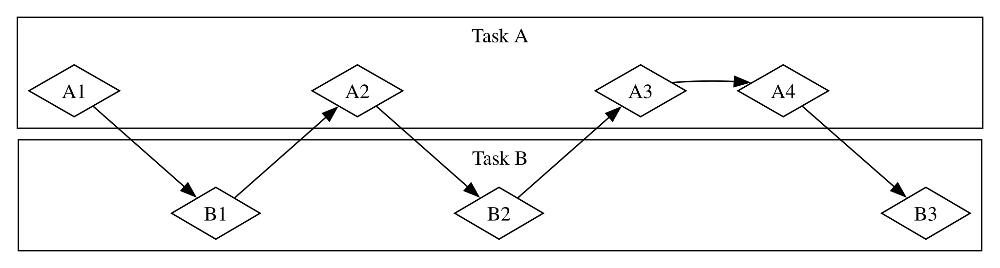

এই বইটি কোথায় আলাদা?
এই বইটি The Rust Programming Language-এর একটি পরীক্ষামূলক সংস্করণ, যা তৈরি করেছেন Brown University-র Cognitive Engineering Lab-এর গবেষকেরা। মূল TRPL বই থেকে এটি কোথায় আলাদা, তা জানতে চাইলে এই পাতাটি পড়ুন। আর যদি সরাসরি Rust শেখা শুরু করতে চান, তাহলে নিশ্চিন্তে এই পাতা এখন বাদ দিয়ে পরে ফিরে আসতে পারেন।
ইন্টারঅ্যাকটিভ সুবিধা
শেখার সময় আপনি যাতে Rust-এর সঙ্গে সক্রিয়ভাবে যুক্ত থাকতে পারেন, সেজন্য এই বইয়ে কিছু বাড়তি ব্যবস্থা রাখা হয়েছে। প্রথমত, নিচের মতো কুইজ দেখতে পাবেন। “Start” বোতামে ক্লিক করে একবার চেষ্টা করে দেখুন।
কোনো প্রশ্নের উত্তর ভুল হলে আপনি চাইলে কুইজটি আবার দিতে পারেন, অথবা সঠিক উত্তরগুলো দেখে নিতে পারেন। আমাদের পরামর্শ: 100% না পাওয়া পর্যন্ত কুইজটি বারবার দিন — আবার চেষ্টা করার আগে চাইলে অংশটুকু আরেকবার পড়ে নিন। তবে মনে রাখবেন, একবার সঠিক উত্তর দেখে ফেললে সেই কুইজ আর আবার দেওয়া যাবে না।
দ্বিতীয়ত, লেখার যেকোনো অংশে নিজের ভাবনা টুকে রাখতে পারেন। কিছু লেখা সিলেক্ট করে ✏️ বোতামে ক্লিক করুন, তারপর চাইলে একটি মন্তব্য লিখে দিন।
👉 এই লেখাটুকু হাইলাইট করে দেখুন! 👈
দ্রষ্টব্য: আপনি যে অংশ হাইলাইট করেছেন, আমরা সেই লেখা বদলালে আপনার হাইলাইট মুছে যাবে। এছাড়া আপনার হাইলাইটগুলো কুকি হিসেবে সংরক্ষিত থাকে। কুকি ব্লক করলে বা অন্য ব্রাউজার ব্যবহার করলে আগের হাইলাইটগুলো আর দেখতে পাবেন না।
বিষয়বস্তুতে পরিবর্তন
এই বইয়ের বিষয়বস্তু মোটামুটি TRPL-এর মতোই, আর কয়েক মাস পরপর আমরা দুটি বই মিলিয়ে নিই। সবচেয়ে বড় পার্থক্য ownership (মালিকানা) বোঝা অধ্যায়ে। আমাদের গবেষণায় দেখা গেছে, কিছু নির্দিষ্ট ধারণা আর চিত্রের সাহায্যে ব্যাখ্যা করলে মূল বইয়ের চেয়ে Rust আরও ভালোভাবে বোঝা যায়; এই বইয়ে ownership সেভাবেই ব্যাখ্যা করা হয়েছে। নিচের মতো অনেক ডায়াগ্রাম দেখতে পাবেন। এগুলো Aquascope দিয়ে তৈরি, এবং Rust কোড compile time (সংকলনের সময়) ও runtime (প্রোগ্রাম চলার সময়)-এ কী করে, তা চোখের সামনে তুলে ধরে:
ownership ছাড়াও, কুইজের উত্তরে পাঠকদের যেসব ভুল ধারণা চোখে পড়েছে, সেগুলো দূর করতে আমরা বইয়ে ছোটখাটো অনেক সম্পাদনা করেছি। কুইজে বা বইয়ের অন্য কোথাও কোনো সমস্যা চোখে পড়লে আমাদের Github রিপোজিটরিতে একটি issue খুলতে পারেন: https://github.com/cognitive-engineering-lab/rust-book
Rust শেখা ও ব্যবহার সহজ করা নিয়ে আমাদের অন্যান্য পরীক্ষায় অংশ নিতে চান? এখানে নাম লেখান: https://forms.gle/U3jEUkb2fGXykp1DA
প্রকাশনা
এখন পর্যন্ত এই পরীক্ষা থেকে দুটি গবেষণাপত্র প্রকাশিত হয়েছে, যেগুলো সবাই বিনামূল্যে পড়তে পারেন। এই বইয়ের পেছনের একাডেমিক গবেষণা সম্পর্কে জানতে চাইলে পড়ে দেখুন:
-
“Profiling Programming Language Learning”
Will Crichton ও Shriram Krishnamurthi। OOPSLA 2024। (Distinguished Paper সম্মাননাপ্রাপ্ত।) -
“A Grounded Conceptual Model for Ownership Types in Rust”
Will Crichton, Gavin Gray ও Shriram Krishnamurthi। OOPSLA 2023। (SIGPLAN Research Highlight এবং Communications of the ACM Research Highlight হিসেবে নির্বাচিত।)
কৃতজ্ঞতা
এই কাজে আংশিক সহায়তা দিয়েছে DARPA (চুক্তি নং HR00112420354), NSF (অনুদান নং CCF-2227863) এবং Amazon Web Services। এই লেখায় প্রকাশিত সব মতামত, ফলাফল, সিদ্ধান্ত ও সুপারিশ লেখকদের নিজস্ব; এগুলো আমাদের অর্থদাতাদের মতামত নয়। পরীক্ষাটির প্রচারে সাহায্য করার জন্য Carol Nichols এবং Rust Foundation-এর কাছে আমরা কৃতজ্ঞ। আর আমরা এই পরীক্ষা শুরু করার অনেক আগেই বহু মানুষের কঠোর পরিশ্রমে TRPL গড়ে উঠেছিল।
Rust প্রোগ্রামিং ভাষা
লেখক: Steve Klabnik, Carol Nichols ও Chris Krycho; সঙ্গে Rust কমিউনিটির অবদান
(আর সঙ্গে কিছু পরীক্ষামূলক পরিবর্তনও!)
এই বই ধরে নেয় যে আপনি Rust 1.90.0 (প্রকাশ: 2025-09-18) বা তার
পরের কোনো সংস্করণ ব্যবহার করছেন, এবং প্রতিটি প্রজেক্টের Cargo.toml ফাইলে
edition = "2024" লিখে প্রজেক্টগুলোকে Rust 2024 edition (Rust-এর
সংস্করণ-ধাপ)-এর idiom (Rust-এর প্রচলিত লেখার ধরন) মেনে চলার জন্য সেট করেছেন।
Rust ইনস্টল বা আপডেট করার নির্দেশনা পাবেন অধ্যায় 1-এর “ইনস্টলেশন”
অংশে, আর edition সম্পর্কে জানতে দেখুন
পরিশিষ্ট E।
পরীক্ষামূলক সংস্করণটি শুধু অনলাইনে এবং ইংরেজিতে পাওয়া যায়; আপনি এখন যেটি পড়ছেন, সেটি তার একটি অনানুষ্ঠানিক বাংলা অনুবাদ।
পরীক্ষামূলক নয় এমন মূল সংস্করণটি rustup দিয়ে Rust ইনস্টল করলে অফলাইনেও পাওয়া যায়; খুলতে চালান rustup doc --book।
মূল সংস্করণের কমিউনিটির করা কয়েকটি অনুবাদও পাওয়া যায়। মূল সংস্করণটি No Starch Press থেকে ছাপা বই ও ই-বুক আকারেও পাওয়া যায়।
মুখবন্ধ
মাত্র কয়েক বছরে Rust প্রোগ্রামিং ভাষা অনেক দূর এগিয়েছে। এর জন্ম আর বেড়ে ওঠা উৎসাহী মানুষদের একটি ছোট, নতুন কমিউনিটির হাতে; আর আজ এটি বিশ্বের সবচেয়ে প্রিয় এবং সবচেয়ে চাহিদাসম্পন্ন প্রোগ্রামিং ভাষাগুলোর একটি। পেছনে তাকালে মনে হয়, Rust-এর শক্তি আর সম্ভাবনা যে সবার নজর কাড়বে এবং systems programming (সিস্টেম-স্তরের প্রোগ্রামিং)-এ জায়গা করে নেবে, সেটা ছিল অবধারিত। কিন্তু যা অবধারিত ছিল না, তা হলো সারা বিশ্বে আগ্রহ আর উদ্ভাবনের এমন জোয়ার, যা ওপেন সোর্স কমিউনিটিগুলোতে ছড়িয়ে পড়েছে এবং নানা শিল্পখাতে ব্যাপকভাবে Rust গ্রহণের পথ খুলে দিয়েছে।
আজ Rust-এর চমৎকার বৈশিষ্ট্যগুলোর কথা বললেই এই বিপুল আগ্রহ আর ব্যবহারের ব্যাখ্যা সহজে পাওয়া যায়। memory safety (মেমোরি-নিরাপত্তা), আর দ্রুত পারফরম্যান্স, আর বন্ধুসুলভ compiler (সংকলক), আর দারুণ সব টুল, সঙ্গে আরও অনেক চমৎকার সুবিধা, কে না চায়? আজ যে Rust ভাষা আপনি দেখছেন, তাতে মিশে আছে systems programming নিয়ে বহু বছরের গবেষণা আর একটি প্রাণবন্ত, নিবেদিতপ্রাণ কমিউনিটির ব্যবহারিক অভিজ্ঞতা। ভাষাটি নির্দিষ্ট উদ্দেশ্য নিয়ে নকশা করা এবং যত্ন নিয়ে গড়া; এটি ডেভেলপারদের হাতে এমন একটি টুল তুলে দেয়, যা দিয়ে নিরাপদ, দ্রুত ও নির্ভরযোগ্য কোড লেখা সহজ হয়।
তবে Rust-কে সত্যিই অনন্য করে তুলেছে এর মূল ভাবনা: আপনাকে, অর্থাৎ ব্যবহারকারীকে, নিজের লক্ষ্যে পৌঁছানোর শক্তি জোগানো। এই ভাষা চায় আপনি সফল হন। যে কমিউনিটি ভাষাটি তৈরি করে, রক্ষণাবেক্ষণ করে এবং এর পক্ষে কথা বলে, তাদের একেবারে কেন্দ্রেও রয়েছে মানুষকে সক্ষম করে তোলার এই নীতি। এই প্রামাণ্য বইয়ের আগের সংস্করণের পর থেকে Rust আরও বিকশিত হয়ে সত্যিকারের বৈশ্বিক ও আস্থাভাজন একটি ভাষায় পরিণত হয়েছে। Rust Project-এর পেছনে এখন দৃঢ়ভাবে দাঁড়িয়ে আছে Rust Foundation, যারা Rust-কে নিরাপদ, স্থিতিশীল ও টেকসই রাখতে গুরুত্বপূর্ণ নানা উদ্যোগেও বিনিয়োগ করে।
The Rust Programming Language-এর এই সংস্করণে বইটি পুরোপুরি হালনাগাদ করা হয়েছে: এতে বছরের পর বছর ধরে ভাষাটির বিবর্তন তুলে ধরা হয়েছে, আর যোগ হয়েছে মূল্যবান নতুন তথ্য। তবে এটি শুধু syntax (ভাষার লিখনরীতি) আর library (লাইব্রেরি)-র গাইড নয়—এটি এমন এক কমিউনিটিতে যোগ দেওয়ার আমন্ত্রণ, যারা মান, পারফরম্যান্স আর সুচিন্তিত নকশাকে মূল্য দেয়। আপনি প্রথমবার Rust ঘেঁটে দেখতে চাওয়া অভিজ্ঞ ডেভেলপার হোন, কিংবা নিজের দক্ষতা আরও শাণিত করতে চাওয়া অভিজ্ঞ Rustacean (Rust প্রোগ্রামার), এই সংস্করণে সবার জন্যই কিছু না কিছু আছে।
Rust-এর এই পথচলা সহযোগিতা, শেখা আর বারবার উন্নত করার গল্প। ভাষাটি আর এর ইকোসিস্টেম যেভাবে বেড়ে উঠেছে, তা সরাসরি এর পেছনের প্রাণবন্ত, বৈচিত্র্যময় কমিউনিটিরই প্রতিফলন। মূল ভাষা-নকশাকার থেকে শুরু করে মাঝেমধ্যে অবদান রাখা মানুষ পর্যন্ত হাজারো ডেভেলপারের অবদানই Rust-কে এমন অনন্য ও শক্তিশালী একটি টুল করে তুলেছে। এই বইটি হাতে নিয়ে আপনি শুধু একটি নতুন প্রোগ্রামিং ভাষাই শিখছেন না—আপনি এমন এক আন্দোলনে যোগ দিচ্ছেন, যার লক্ষ্য সফটওয়্যারকে আরও ভালো, আরও নিরাপদ এবং কাজ করার জন্য আরও আনন্দদায়ক করে তোলা।
Rust কমিউনিটিতে স্বাগতম!
- Bec Rumbul, নির্বাহী পরিচালক, Rust Foundation
ভূমিকা
Note: বইয়ের এই সংস্করণটি No Starch Press থেকে ছাপা বই ও ই-বুক আকারে প্রকাশিত The Rust Programming Language-এর মতোই।
The Rust Programming Language-এ আপনাকে স্বাগতম! এটি Rust-এর সঙ্গে পরিচয় করিয়ে দেওয়ার একটি বই। Rust প্রোগ্রামিং ভাষা আপনাকে আরও দ্রুত ও আরও নির্ভরযোগ্য সফটওয়্যার লিখতে সাহায্য করে। প্রোগ্রামিং ভাষার নকশায় high-level (উচ্চ-স্তরের) ব্যবহার-স্বাচ্ছন্দ্য আর low-level (নিম্ন-স্তরের) নিয়ন্ত্রণ প্রায়ই একে অপরের বিপরীতে দাঁড়ায়; Rust এই দ্বন্দ্ব মেনে নেয় না। শক্তিশালী প্রযুক্তিগত সক্ষমতা আর ডেভেলপারদের জন্য চমৎকার অভিজ্ঞতার মধ্যে ভারসাম্য রেখে Rust আপনাকে low-level খুঁটিনাটি (যেমন মেমোরির ব্যবহার) নিয়ন্ত্রণের সুযোগ দেয়, অথচ এ ধরনের নিয়ন্ত্রণের সঙ্গে সাধারণত যে ঝামেলা জড়িয়ে থাকে, তা পোহাতে হয় না।
Rust কাদের জন্য
নানা কারণে অনেক ধরনের মানুষের জন্যই Rust আদর্শ। চলুন, এদের মধ্যে সবচেয়ে গুরুত্বপূর্ণ কয়েকটি দলের কথা দেখা যাক।
ডেভেলপারদের দল
systems programming-এ নানা মাত্রার জ্ঞান থাকা ডেভেলপারদের বড় বড় দলের একসঙ্গে কাজ করার জন্য Rust একটি কার্যকর টুল হিসেবে প্রমাণিত হচ্ছে। low-level কোডে নানা ধরনের সূক্ষ্ম বাগ ঢুকে পড়ার প্রবণতা থাকে; বেশিরভাগ ভাষায় এগুলো ধরা যায় কেবল ব্যাপক testing (পরীক্ষা) আর অভিজ্ঞ ডেভেলপারদের সতর্ক কোড রিভিউয়ের মাধ্যমে। Rust-এ compiler দারোয়ানের ভূমিকা পালন করে: এ ধরনের ধরা-কঠিন বাগ থাকলে, এমনকি concurrency (একসঙ্গে একাধিক কাজ সামলানো)-সংক্রান্ত বাগ থাকলেও, সে কোড compile (সংকলন) করতে রাজি হয় না। compiler-এর সঙ্গে মিলে কাজ করলে দলটি বাগের পেছনে ছোটার বদলে প্রোগ্রামের মূল যুক্তিতে মনোযোগ দিতে পারে।
Rust systems programming-এর জগতে আধুনিক ডেভেলপার টুলও নিয়ে এসেছে:
- Cargo হলো Rust-এর সঙ্গেই আসা dependency manager ও build tool (কোড বিল্ড ও সংকলনের টুল)। dependency (নির্ভরতা, অর্থাৎ যে লাইব্রেরির ওপর কোড নির্ভর করে) যোগ করা, compile করা ও সামলানোর কাজ এটি ঝামেলাহীন করে, আর পুরো Rust ইকোসিস্টেমে কাজটি একই নিয়মে চলে।
rustfmtফরম্যাটিং টুলটি সব ডেভেলপারের কোডের লেখার ধরন একই রকম রাখে।- Rust Language Server-এর সাহায্যে integrated development environment (IDE)-এ code completion আর কোডের লাইনের পাশেই error message দেখানোর সুবিধা পাওয়া যায়।
এসব টুল এবং Rust ইকোসিস্টেমের অন্যান্য টুল ব্যবহার করে ডেভেলপাররা সিস্টেম-স্তরের কোড লেখার সময়ও বেশ দক্ষতার সঙ্গে কাজ করতে পারেন।
শিক্ষার্থী
Rust শিক্ষার্থীদের জন্য, এবং তাদের জন্যও যারা systems-এর ধারণাগুলো শিখতে আগ্রহী। Rust ব্যবহার করে অনেকেই অপারেটিং সিস্টেম তৈরির মতো বিষয় শিখেছেন। কমিউনিটি খুবই আন্তরিক, আর শিক্ষার্থীদের প্রশ্নের উত্তর দিতে সবাই আগ্রহী। এই বইয়ের মতো নানা উদ্যোগের মাধ্যমে Rust-এর দলগুলো systems-এর ধারণাগুলো আরও বেশি মানুষের কাছে সহজ করে তুলতে চায়, বিশেষ করে যারা প্রোগ্রামিংয়ে নতুন।
কোম্পানি
ছোট-বড় শত শত কোম্পানি production-এ, অর্থাৎ বাস্তব পণ্য ও সেবায়, নানা কাজে Rust ব্যবহার করে: কমান্ড লাইন টুল, ওয়েব সার্ভিস, DevOps টুল, এমবেডেড ডিভাইস, অডিও ও ভিডিও বিশ্লেষণ ও রূপান্তর, ক্রিপ্টোকারেন্সি, বায়োইনফরমেটিক্স, সার্চ ইঞ্জিন, Internet of Things অ্যাপ্লিকেশন, মেশিন লার্নিং, এমনকি Firefox ওয়েব ব্রাউজারের বড় বড় অংশও।
ওপেন সোর্স ডেভেলপার
Rust তাদের জন্য, যারা Rust প্রোগ্রামিং ভাষা, এর কমিউনিটি, ডেভেলপার টুল আর library গড়ে তুলতে চান। Rust ভাষায় আপনার অবদান পেলে আমরা খুবই খুশি হব।
যারা গতি ও স্থিতিশীলতাকে মূল্য দেন
Rust তাদের জন্য, যারা একটি ভাষায় গতি আর স্থিতিশীলতা চান। গতি বলতে আমরা দুটো জিনিস বোঝাই: Rust কোড কত দ্রুত চলে, আর Rust দিয়ে কত দ্রুত প্রোগ্রাম লেখা যায়। নতুন বৈশিষ্ট্য যোগ করা বা refactoring (আচরণ না বদলে কোড পুনর্গঠন) করার সময়ও Rust compiler-এর যাচাইগুলো প্রোগ্রামকে স্থিতিশীল রাখে। যেসব ভাষায় এ ধরনের যাচাই নেই, সেখানকার ভঙ্গুর পুরোনো কোডের সঙ্গে এখানেই পার্থক্য; সেসব কোডে হাত দিতে ডেভেলপাররা প্রায়ই ভয় পান। Rust লক্ষ্য রাখে zero-cost abstraction (বাড়তি খরচ ছাড়া উচ্চ-স্তরের সুবিধা)-এর দিকে—অর্থাৎ এমন high-level সুবিধা, যা compile হয়ে হাতে লেখা low-level কোডের মতোই দ্রুত কোডে পরিণত হয়। এভাবে Rust নিরাপদ কোডকে দ্রুত কোডও করে তুলতে চায়।
Rust আরও অনেক ধরনের ব্যবহারকারীর কাজে আসতে চায়; এখানে যাদের কথা বলা হলো, তারা কেবল সবচেয়ে বড় অংশীজনদের কয়েকজন। সব মিলিয়ে Rust-এর সবচেয়ে বড় লক্ষ্য হলো নিরাপত্তা এবং উৎপাদনশীলতা, গতি এবং ব্যবহার-স্বাচ্ছন্দ্য একসঙ্গে দিয়ে সেই আপসগুলো দূর করা, যেগুলো প্রোগ্রামাররা দশকের পর দশক মেনে নিয়ে এসেছেন। Rust একবার ব্যবহার করে দেখুন, এর বেছে নেওয়া পথগুলো আপনার কাজে মেলে কি না।
এই বই কাদের জন্য
এই বই ধরে নেয় যে আপনি আগে অন্য কোনো প্রোগ্রামিং ভাষায় কোড লিখেছেন, তবে সেটি কোন ভাষা, তা নিয়ে কিছু ধরে নেয় না। আমরা চেষ্টা করেছি বিষয়বস্তু এমনভাবে লিখতে, যাতে নানা ধরনের প্রোগ্রামিং পটভূমি থেকে আসা পাঠকেরা সহজে বুঝতে পারেন। প্রোগ্রামিং আসলে কী, বা প্রোগ্রামিং নিয়ে কীভাবে ভাবতে হয়, তা নিয়ে আমরা বেশি সময় ব্যয় করিনি। আপনি যদি প্রোগ্রামিংয়ে একেবারেই নতুন হন, তাহলে বিশেষভাবে প্রোগ্রামিং শেখানোর জন্য লেখা কোনো বই পড়লে বেশি উপকার পাবেন।
এই বই কীভাবে পড়বেন
সাধারণভাবে এই বই ধরে নেয় যে আপনি শুরু থেকে শেষ পর্যন্ত ক্রমানুসারে পড়ছেন। পরের অধ্যায়গুলো আগের অধ্যায়ের ধারণার ওপর দাঁড়িয়ে আছে। কোনো বিষয় প্রথমবার আসার সময় হয়তো তার খুঁটিনাটিতে যাওয়া হয়নি; পরের কোনো অধ্যায়ে সেই বিষয়ে আবার ফিরে আসা হবে।
এই বইয়ে দুই ধরনের অধ্যায় পাবেন: ধারণামূলক অধ্যায় আর প্রজেক্ট অধ্যায়। ধারণামূলক অধ্যায়ে Rust-এর কোনো একটি দিক সম্পর্কে শিখবেন। প্রজেক্ট অধ্যায়ে আমরা একসঙ্গে ছোট ছোট প্রোগ্রাম বানাব, এ পর্যন্ত যা শিখেছেন তা কাজে লাগিয়ে। অধ্যায় 2, অধ্যায় 12 আর অধ্যায় 21 প্রজেক্ট অধ্যায়; বাকিগুলো ধারণামূলক।
অধ্যায় 1-এ দেখানো হয়েছে কীভাবে Rust ইনস্টল করবেন, কীভাবে একটি “Hello, world!” প্রোগ্রাম লিখবেন, আর কীভাবে Rust-এর package manager ও build tool Cargo ব্যবহার করবেন। অধ্যায় 2 হাতে-কলমে Rust প্রোগ্রাম লেখার সঙ্গে পরিচয়: এখানে আপনি একটি সংখ্যা আন্দাজ করার খেলা বানাবেন। এখানে আমরা ধারণাগুলো ওপর-ওপর দেখব, আর পরের অধ্যায়গুলোতে বিস্তারিত থাকবে। এখনই হাত লাগিয়ে কাজ শুরু করতে চাইলে অধ্যায় 2 আপনার জন্য। আর আপনি যদি এমন শিক্ষার্থী হন, যিনি পরের ধাপে যাওয়ার আগে প্রতিটি খুঁটিনাটি জেনে নিতে চান, তাহলে অধ্যায় 2 বাদ দিয়ে সরাসরি অধ্যায় 3-এ যেতে পারেন; সেখানে Rust-এর এমন বৈশিষ্ট্যগুলো আছে, যেগুলো অন্যান্য প্রোগ্রামিং ভাষার মতোই। তারপর শেখা খুঁটিনাটি কাজে লাগিয়ে কোনো প্রজেক্ট করতে চাইলে অধ্যায় 2-এ ফিরে আসতে পারেন।
অধ্যায় 4-এ শিখবেন Rust-এর ownership ব্যবস্থা। অধ্যায় 5-এ আলোচনা
করা হয়েছে struct আর method নিয়ে। অধ্যায় 6-এ আছে enum, match
expression, আর if let ও let...else control flow কাঠামো। struct আর enum
ব্যবহার করে আপনি নিজের type বানাবেন।
অধ্যায় 7-এ শিখবেন Rust-এর module ব্যবস্থা, আর আপনার কোড এবং এর public application programming interface (API) গুছিয়ে রাখার জন্য privacy-র নিয়মগুলো। অধ্যায় 8-এ আলোচনা করা হয়েছে standard library-র দেওয়া কয়েকটি বহুল ব্যবহৃত collection data structure নিয়ে: vector, string আর hash map। অধ্যায় 9-এ দেখা হয়েছে error handling নিয়ে Rust-এর দর্শন ও কৌশল।
অধ্যায় 10 গভীরে গিয়ে দেখায় generics, trait আর lifetime, যেগুলো দিয়ে
একাধিক type-এর জন্য খাটে এমন কোড লেখা যায়। অধ্যায় 11 পুরোটাই testing
নিয়ে; Rust-এর নিরাপত্তার নিশ্চয়তা থাকা সত্ত্বেও প্রোগ্রামের যুক্তি ঠিক আছে কি
না, তা নিশ্চিত করতে testing দরকার। অধ্যায় 12-এ আমরা ফাইলের ভেতরে লেখা
খুঁজে দেওয়া grep কমান্ড লাইন টুলের কিছু কাজ নিজেরা বানাব। এর জন্য আগের
অধ্যায়গুলোতে আলোচিত অনেক ধারণা কাজে লাগাব।
অধ্যায় 13-এ আছে closure আর iterator: Rust-এর এমন বৈশিষ্ট্য, যা এসেছে functional programming ভাষাগুলো থেকে। অধ্যায় 14-এ আমরা Cargo-কে আরও গভীরভাবে দেখব, আর নিজের library অন্যদের সঙ্গে ভাগ করে নেওয়ার ভালো চর্চাগুলো নিয়ে কথা বলব। অধ্যায় 15-এ আলোচনা করা হয়েছে standard library-র দেওয়া smart pointer আর সেগুলোর কাজ সম্ভব করে তোলা trait নিয়ে।
অধ্যায় 16-এ আমরা concurrent programming-এর নানা মডেল ঘুরে দেখব, আর Rust কীভাবে আপনাকে নির্ভয়ে একাধিক thread-এ প্রোগ্রাম লিখতে সাহায্য করে, তা নিয়ে কথা বলব। অধ্যায় 17-এ তার ওপর ভিত্তি করে দেখব Rust-এর async আর await syntax, সঙ্গে task, future আর stream, এবং এগুলো যে হালকা ধরনের concurrency মডেল সম্ভব করে, সেটি।
অধ্যায় 18-এ দেখা হয়েছে, আপনার হয়তো পরিচিত object-oriented programming-এর নীতিগুলোর তুলনায় Rust-এর idiom কেমন। অধ্যায় 19 pattern আর pattern matching-এর একটি রেফারেন্স; Rust প্রোগ্রামের সবখানে ভাবনা প্রকাশের জন্য এগুলো শক্তিশালী উপায়। অধ্যায় 20-এ আছে নানা উন্নত বিষয়ের পাঁচমিশালি সংগ্রহ: unsafe Rust, macro, আর lifetime, trait, type, function ও closure নিয়ে আরও আলোচনা।
অধ্যায় 21-এ আমরা একটি প্রজেক্ট শেষ করব, যেখানে একটি low-level multithreaded ওয়েব সার্ভার বানাব!
সবশেষে, কয়েকটি পরিশিষ্টে ভাষাটি সম্পর্কে দরকারি তথ্য রেফারেন্সের ধাঁচে দেওয়া আছে। পরিশিষ্ট A-তে আছে Rust-এর keyword, পরিশিষ্ট B-তে Rust-এর operator ও প্রতীক, পরিশিষ্ট C-তে standard library-র দেওয়া derivable trait, পরিশিষ্ট D-তে কিছু কাজের ডেভেলপমেন্ট টুল, আর পরিশিষ্ট E-তে Rust-এর edition-এর ব্যাখ্যা। পরিশিষ্ট F-এ পাবেন বইটির বিভিন্ন অনুবাদ, আর পরিশিষ্ট G-তে দেখব Rust কীভাবে তৈরি হয় এবং nightly Rust কী।
এই বই পড়ার কোনো ভুল পদ্ধতি নেই: সামনে এগিয়ে যেতে চাইলে নির্দ্বিধায় যান! কোথাও গুলিয়ে গেলে হয়তো আগের অধ্যায়ে ফিরে আসতে হবে। তবে আপনার জন্য যেটা সুবিধাজনক, সেটাই করুন।
Rust শেখার একটি গুরুত্বপূর্ণ অংশ হলো compiler-এর দেখানো error message পড়তে শেখা: এগুলোই আপনাকে কাজ করে এমন কোডের দিকে নিয়ে যাবে। তাই আমরা এমন অনেক উদাহরণ দেব, যেগুলো compile হয় না, আর প্রতিটি ক্ষেত্রে compiler কোন error message দেখায়, তাও দেখাব। মনে রাখবেন, যেকোনো একটি উদাহরণ তুলে নিয়ে চালালে সেটি compile না-ও হতে পারে! যে উদাহরণ চালানোর চেষ্টা করছেন, সেটি ইচ্ছে করেই error দেওয়ার জন্য লেখা কি না, তা বুঝতে আশেপাশের লেখাটুকু পড়ে নিন। বেশিরভাগ ক্ষেত্রে, compile হয় না এমন কোডের সঠিক রূপটিও আমরা আপনাকে দেখিয়ে দেব। কোন কোড কাজ করার কথা নয়, তা চিনতে Ferris-ও আপনাকে সাহায্য করবে:
| Ferris | অর্থ |
|---|---|
 | এই কোড compile হয় না! |
 | এই কোড panic (প্রোগ্রামের হঠাৎ থেমে যাওয়া) করে! |
 | এই কোড প্রত্যাশিত আচরণ করে না। |
বেশিরভাগ ক্ষেত্রে, compile হয় না এমন কোডের সঠিক রূপটিও আমরা আপনাকে দেখিয়ে দেব।
সোর্স কোড
যেসব সোর্স ফাইল থেকে এই বই তৈরি হয়, সেগুলো GitHub-এ পাওয়া যাবে।
শুরু করা যাক
চলুন, Rust শেখার যাত্রা শুরু করা যাক! শেখার আছে অনেক কিছু, তবে প্রতিটি যাত্রাই কোথাও না কোথাও থেকে শুরু হয়। এই অধ্যায়ে আমরা যা নিয়ে আলোচনা করব:
- Linux, macOS ও Windows-এ Rust ইনস্টল করা
Hello, world!প্রিন্ট করে এমন একটি প্রোগ্রাম লেখা- Rust-এর package manager (প্যাকেজ ব্যবস্থাপক) ও build system (কোড build করার ব্যবস্থা)
cargoব্যবহার করা
ইনস্টলেশন
ইনস্টলেশন
প্রথম ধাপ হলো Rust ইনস্টল করা। আমরা Rust ডাউনলোড করব rustup দিয়ে; এটি
Rust-এর বিভিন্ন সংস্করণ আর সংশ্লিষ্ট টুলগুলো সামলানোর একটি কমান্ড লাইন টুল।
ডাউনলোডের জন্য ইন্টারনেট সংযোগ লাগবে।
Note: কোনো কারণে rustup ব্যবহার করতে না চাইলে আরও বিকল্পের জন্য
Rust ইনস্টলের অন্যান্য পদ্ধতির পাতাটি দেখুন।
নিচের ধাপগুলো Rust compiler (সংকলক)-এর সর্বশেষ stable সংস্করণ (স্থিতিশীল সংস্করণ) ইনস্টল করে। Rust স্থিতিশীলতার নিশ্চয়তা দেয়, তাই বইয়ের যেসব উদাহরণ এখন compile (সংকলন) হয়, সেগুলো Rust-এর নতুন সংস্করণেও compile হতে থাকবে। তবে সংস্করণভেদে আউটপুট সামান্য আলাদা হতে পারে, কারণ Rust প্রায়ই তার error message আর সতর্কবার্তা উন্নত করে। অর্থাৎ, এই ধাপগুলো দিয়ে Rust-এর যে নতুন stable সংস্করণই ইনস্টল করুন, এই বইয়ের বিষয়বস্তুর সঙ্গে সেটি ঠিকঠাক কাজ করবে।
কমান্ড লাইনের লেখার নিয়ম
এই অধ্যায়ে এবং পুরো বইজুড়ে আমরা টার্মিনালে ব্যবহৃত কিছু কমান্ড দেখাব।
টার্মিনালে যে লাইনগুলো আপনাকে লিখতে হবে, সেগুলো সব $ দিয়ে শুরু। $
চিহ্নটি আপনাকে টাইপ করতে হবে না; এটি কমান্ড লাইনের prompt (কমান্ড লেখার
জায়গা নির্দেশকারী চিহ্ন), যা প্রতিটি কমান্ডের শুরু বোঝাতে দেখানো হয়। যেসব
লাইন $ দিয়ে শুরু হয় না, সেগুলো সাধারণত আগের কমান্ডের আউটপুট দেখায়। এছাড়া
শুধু PowerShell-এর উদাহরণগুলোতে $-এর বদলে > ব্যবহার করা হবে।
Linux বা macOS-এ rustup ইনস্টল করা
Linux বা macOS ব্যবহার করলে একটি টার্মিনাল খুলে নিচের কমান্ডটি লিখুন:
$ curl --proto '=https' --tlsv1.2 https://sh.rustup.rs -sSf | sh
কমান্ডটি একটি স্ক্রিপ্ট ডাউনলোড করে rustup টুলের ইনস্টলেশন শুরু করে, আর
এই টুলটি Rust-এর সর্বশেষ stable সংস্করণ ইনস্টল করে। আপনার কাছে পাসওয়ার্ড চাওয়া
হতে পারে। ইনস্টলেশন সফল হলে নিচের লাইনটি দেখা যাবে:
Rust is installed now. Great!
আপনার একটি linker-ও লাগবে। এটি এমন একটি প্রোগ্রাম, যা দিয়ে Rust তার compile করা আউটপুটগুলো জুড়ে একটি ফাইল বানায়। খুব সম্ভবত আপনার কম্পিউটারে এটি আগে থেকেই আছে। linker-সংক্রান্ত error পেলে একটি C compiler ইনস্টল করুন; সাধারণত এর সঙ্গে একটি linker-ও থাকে। C compiler আরেকটি কারণেও কাজের: Rust-এর কিছু বহুল ব্যবহৃত package (প্যাকেজ, কোডের বিতরণযোগ্য একক) C কোডের ওপর নির্ভর করে, তাই সেগুলোর জন্য C compiler লাগে।
macOS-এ নিচের কমান্ড চালিয়ে একটি C compiler পেতে পারেন:
$ xcode-select --install
Linux ব্যবহারকারীদের সাধারণত নিজেদের ডিস্ট্রিবিউশনের ডকুমেন্টেশন অনুযায়ী GCC বা
Clang ইনস্টল করা উচিত। যেমন, Ubuntu ব্যবহার করলে build-essential package-টি
ইনস্টল করতে পারেন।
Windows-এ rustup ইনস্টল করা
Windows-এ https://www.rust-lang.org/tools/install পাতায় গিয়ে Rust ইনস্টলের নির্দেশনা অনুসরণ করুন। ইনস্টলেশনের একপর্যায়ে আপনাকে Visual Studio ইনস্টল করতে বলা হবে। এটি একটি linker এবং প্রোগ্রাম compile করার জন্য দরকারি native library (লাইব্রেরি) সরবরাহ করে। এই ধাপে আরও সাহায্য লাগলে দেখুন https://rust-lang.github.io/rustup/installation/windows-msvc.html।
বইয়ের বাকি অংশে এমন কমান্ড ব্যবহার করা হয়েছে, যা cmd.exe ও PowerShell দুটোতেই কাজ করে। কোথাও নির্দিষ্ট পার্থক্য থাকলে কোনটি ব্যবহার করবেন, তা আমরা বলে দেব।
সমস্যা সমাধান
Rust ঠিকমতো ইনস্টল হয়েছে কি না দেখতে একটি শেল খুলে এই লাইনটি লিখুন:
$ rustc --version
প্রকাশিত সর্বশেষ stable সংস্করণের সংস্করণ নম্বর, commit hash আর commit-এর তারিখ নিচের আকারে দেখতে পাবেন:
rustc x.y.z (abcabcabc yyyy-mm-dd)
এই তথ্য দেখতে পেলে আপনি সফলভাবে Rust ইনস্টল করেছেন! যদি না দেখেন, তাহলে
নিচের উপায়ে দেখে নিন Rust আপনার PATH
সিস্টেম variable (মান রাখার নাম)-এ আছে কি না।
Windows CMD-তে লিখুন:
> echo %PATH%
PowerShell-এ লিখুন:
> echo $env:Path
Linux ও macOS-এ লিখুন:
$ echo $PATH
সব ঠিক থাকার পরও Rust কাজ না করলে সাহায্য পাওয়ার অনেক জায়গা আছে। অন্য Rustacean-দের (নিজেদের আমরা মজা করে এই নামে ডাকি) সঙ্গে কীভাবে যোগাযোগ করবেন, তা জানতে দেখুন কমিউনিটি পেজ।
আপডেট ও আনইনস্টল
rustup দিয়ে Rust ইনস্টল করা থাকলে নতুন প্রকাশিত সংস্করণে আপডেট করা সহজ।
আপনার শেল থেকে নিচের আপডেট স্ক্রিপ্টটি চালান:
$ rustup update
Rust আর rustup আনইনস্টল করতে শেল থেকে নিচের আনইনস্টল স্ক্রিপ্টটি চালান:
$ rustup self uninstall
লোকাল ডকুমেন্টেশন পড়া
Rust ইনস্টলের সঙ্গে ডকুমেন্টেশনের একটি লোকাল কপিও আসে, যাতে আপনি অফলাইনে
পড়তে পারেন। ব্রাউজারে লোকাল ডকুমেন্টেশন খুলতে rustup doc চালান।
standard library (আদর্শ লাইব্রেরি)-র দেওয়া কোনো type (ডেটার ধরন) বা function (ফাংশন) কী করে বা কীভাবে ব্যবহার করতে হয়, তা নিয়ে নিশ্চিত না হলে যেকোনো সময় application programming interface (API) ডকুমেন্টেশন দেখে নিন!
টেক্সট এডিটর ও IDE ব্যবহার
Rust কোড লিখতে আপনি কোন টুল ব্যবহার করবেন, তা নিয়ে এই বই কিছু ধরে নেয় না। প্রায় যেকোনো টেক্সট এডিটরেই কাজ চলবে! তবে অনেক টেক্সট এডিটর আর integrated development environment (IDE)-এ Rust-এর জন্য বিল্ট-ইন সাপোর্ট আছে। Rust ওয়েবসাইটের টুলস পেজে অনেক এডিটর ও IDE-র মোটামুটি হালনাগাদ একটি তালিকা সবসময় পাবেন।
এই বই নিয়ে অফলাইনে কাজ করা
কয়েকটি উদাহরণে আমরা standard library-র বাইরের Rust package ব্যবহার করব। সেই
উদাহরণগুলো করতে হলে হয় ইন্টারনেট সংযোগ লাগবে, নয়তো সেই dependency (নির্ভরতা,
অর্থাৎ যে লাইব্রেরির ওপর কোড নির্ভর করে)-গুলো আগে থেকেই ডাউনলোড করে রাখতে
হবে। আগে থেকে ডাউনলোড করতে নিচের কমান্ডগুলো চালাতে পারেন। (cargo কী, আর
এই কমান্ডগুলোর প্রতিটি কী করে, তা আমরা পরে বিস্তারিত বলব।)
$ cargo new get-dependencies
$ cd get-dependencies
$ cargo add rand@0.8.5 trpl@0.2.0
এতে এই package-গুলো ডাউনলোড হয়ে ক্যাশে জমা থাকবে, ফলে পরে আর ডাউনলোড করতে
হবে না। কমান্ডটি একবার চালানোর পর get-dependencies ফোল্ডারটি রাখার দরকার নেই।
এই কমান্ড চালিয়ে থাকলে বইয়ের বাকি অংশে সব cargo কমান্ডের সঙ্গে --offline
flag (কমান্ডের সঙ্গে দেওয়া অপশন) ব্যবহার করতে পারেন; তখন নেটওয়ার্ক ব্যবহারের
চেষ্টা না করে ক্যাশে রাখা সংস্করণগুলোই ব্যবহার হবে।
Hello, World!
Hello, World!
Rust ইনস্টল তো হলো, এবার আপনার প্রথম Rust প্রোগ্রাম লেখার পালা। নতুন কোনো
ভাষা শেখার সময় স্ক্রিনে Hello, world! লেখাটি প্রিন্ট করে এমন একটি ছোট প্রোগ্রাম
লেখার রেওয়াজ আছে, তাই আমরাও এখানে তা-ই করব!
Note: এই বই ধরে নেয় যে কমান্ড লাইনের সঙ্গে আপনার প্রাথমিক পরিচয় আছে। আপনি
কীভাবে কোড লিখবেন, কোন টুল ব্যবহার করবেন বা কোড কোথায় রাখবেন, তা নিয়ে
Rust-এর নির্দিষ্ট কোনো দাবি নেই; তাই কমান্ড লাইনের বদলে IDE ব্যবহার করতে
চাইলে নির্দ্বিধায় নিজের পছন্দের IDE ব্যবহার করুন। এখন অনেক IDE-তেই কমবেশি
Rust সাপোর্ট আছে; বিস্তারিত জানতে IDE-র ডকুমেন্টেশন দেখুন। Rust টিম
rust-analyzer-এর মাধ্যমে চমৎকার IDE সাপোর্ট দেওয়ার দিকে মনোযোগ দিচ্ছে। আরও
জানতে পরিশিষ্ট D দেখুন।
প্রজেক্ট ডিরেক্টরি তৈরি
শুরুতে আপনার Rust কোড রাখার জন্য একটি ডিরেক্টরি বানাবেন। আপনার কোড কোথায় থাকে, Rust-এর কাছে তাতে কিছু যায় আসে না; তবে এই বইয়ের অনুশীলনী আর প্রজেক্টগুলোর জন্য আমাদের পরামর্শ: আপনার হোম ডিরেক্টরিতে একটি projects ডিরেক্টরি বানিয়ে সব প্রজেক্ট সেখানে রাখুন।
একটি টার্মিনাল খুলে নিচের কমান্ডগুলো লিখুন। এগুলো একটি projects ডিরেক্টরি বানাবে, আর projects-এর ভেতরে “Hello, world!” প্রজেক্টের জন্য আরেকটি ডিরেক্টরি বানাবে।
Linux, macOS এবং Windows-এর PowerShell-এ এটি লিখুন:
$ mkdir ~/projects
$ cd ~/projects
$ mkdir hello_world
$ cd hello_world
Windows CMD-তে এটি লিখুন:
> mkdir "%USERPROFILE%\projects"
> cd /d "%USERPROFILE%\projects"
> mkdir hello_world
> cd hello_world
Rust প্রোগ্রামের প্রাথমিক কথা
এরপর একটি নতুন সোর্স ফাইল বানিয়ে তার নাম দিন main.rs। Rust ফাইলের নাম সবসময় .rs এক্সটেনশনে শেষ হয়। ফাইলের নামে একাধিক শব্দ থাকলে শব্দগুলোর মাঝে আন্ডারস্কোর দেওয়াই রীতি। যেমন, helloworld.rs না লিখে hello_world.rs লিখুন।
এবার সদ্য বানানো main.rs ফাইলটি খুলে Listing 1-1-এর কোডটি লিখুন।
fn main() {
println!("Hello, world!");
}Hello, world! প্রিন্ট করে এমন একটি প্রোগ্রামফাইলটি সেভ করে ~/projects/hello_world ডিরেক্টরিতে খোলা টার্মিনাল উইন্ডোতে ফিরে যান। Linux বা macOS-এ ফাইলটি compile করে চালাতে নিচের কমান্ডগুলো লিখুন:
$ rustc main.rs
$ ./main
Hello, world!
Windows-এ ./main-এর বদলে .\main কমান্ডটি লিখুন:
> rustc main.rs
> .\main
Hello, world!
আপনার অপারেটিং সিস্টেম যেটাই হোক, টার্মিনালে Hello, world! string (লেখা)-টি
প্রিন্ট হওয়ার কথা। এই আউটপুট না দেখলে সাহায্য পাওয়ার উপায় জানতে ইনস্টলেশন
অংশের “সমস্যা সমাধান” অংশে ফিরে যান।
Hello, world! প্রিন্ট হয়ে থাকলে অভিনন্দন! আপনি আনুষ্ঠানিকভাবে একটি Rust
প্রোগ্রাম লিখে ফেলেছেন। তার মানে আপনি এখন একজন Rust প্রোগ্রামার—স্বাগতম!
একটি Rust প্রোগ্রামের গঠন
চলুন, এই “Hello, world!” প্রোগ্রামটি খুঁটিয়ে দেখি। ধাঁধার প্রথম টুকরোটি এই:
fn main() {
}এই লাইনগুলো main নামের একটি function সংজ্ঞায়িত করে। main function
বিশেষ: প্রতিটি executable (চালানো যায় এমন ফাইল) Rust প্রোগ্রামে এটিই সবসময়
সবার আগে চলে। এখানে প্রথম লাইনটি main নামের এমন একটি function declare
(ঘোষণা) করে, যার কোনো parameter (function-এ পাঠানো মানের জন্য রাখা নাম) নেই
এবং যা কোনো মান ফেরত দেয় না। parameter থাকলে সেগুলো বন্ধনী (())-র ভেতরে বসত।
function body (function-এর মূল অংশ) {} দিয়ে ঘেরা থাকে। Rust-এ প্রতিটি
function body-র চারপাশে কার্লি ব্র্যাকেট দেওয়া বাধ্যতামূলক। শুরুর কার্লি
ব্র্যাকেটটি function ঘোষণার লাইনেই, মাঝে একটি ফাঁকা জায়গা রেখে বসানো ভালো রীতি।
Note: সব Rust প্রজেক্টে একই আদর্শ স্টাইল মেনে চলতে চাইলে rustfmt নামের
স্বয়ংক্রিয় ফরম্যাটার টুল দিয়ে কোডকে একটি নির্দিষ্ট স্টাইলে সাজিয়ে নিতে পারেন
(rustfmt নিয়ে আরও আছে
পরিশিষ্ট D-তে)। rustc-এর মতো এই টুলটিও Rust
টিম Rust-এর সাধারণ ইনস্টলেশনের সঙ্গেই দিয়েছে, তাই এটি সম্ভবত আপনার
কম্পিউটারে আগে থেকেই ইনস্টল করা আছে!
main function-এর body-তে আছে নিচের কোড:
#![allow(unused)]
fn main() {
println!("Hello, world!");
}এই লাইনটিই এই ছোট প্রোগ্রামের সব কাজ করে: এটি স্ক্রিনে লেখা প্রিন্ট করে। এখানে তিনটি গুরুত্বপূর্ণ বিষয় লক্ষ করার মতো।
প্রথমত, println! একটি Rust macro (কোড তৈরি করে এমন কোড) call করে। এটি যদি
macro-র বদলে কোনো function call করত, তাহলে লেখা হতো println (! ছাড়া)।
Rust macro দিয়ে এমন কোড লেখা যায়, যা নিজেই কোড তৈরি করে Rust-এর syntax (ভাষার
লিখনরীতি) প্রসারিত করে; অধ্যায় 20-এ এগুলো নিয়ে
বিস্তারিত আলোচনা করব। আপাতত এটুকু জানলেই চলবে যে ! ব্যবহার করা মানে আপনি
সাধারণ function নয়, macro call করছেন, আর macro সবসময় function-এর নিয়ম মেনে
চলে না।
দ্বিতীয়ত, আপনি "Hello, world!" string দেখছেন। আমরা এই string-টি println!-কে
argument (function-এ পাঠানো আসল মান) হিসেবে দিই, আর string-টি স্ক্রিনে প্রিন্ট
হয়।
তৃতীয়ত, লাইনটি আমরা সেমিকোলন (;) দিয়ে শেষ করি, যা বোঝায় যে এই expression
(মান তৈরি করে এমন কোড-অংশ) শেষ, আর পরেরটি শুরু হতে প্রস্তুত। Rust কোডের
বেশিরভাগ লাইন সেমিকোলন দিয়ে শেষ হয়।
প্রোগ্রাম compile করা ও চালানো
আপনি এইমাত্র নতুন বানানো একটি প্রোগ্রাম চালিয়েছেন, তাই চলুন প্রক্রিয়াটির প্রতিটি ধাপ দেখি।
Rust প্রোগ্রাম চালানোর আগে Rust compiler দিয়ে সেটি compile করতে হয়:
rustc কমান্ড লিখে তার সঙ্গে আপনার সোর্স ফাইলের নাম দিন, এভাবে:
$ rustc main.rs
আপনার C বা C++ জানা থাকলে খেয়াল করবেন, এটি gcc বা clang-এর মতোই।
সফলভাবে compile হওয়ার পর Rust একটি binary executable তৈরি করে।
Linux, macOS এবং Windows-এর PowerShell-এ শেলে ls কমান্ড লিখে executable
ফাইলটি দেখতে পারেন:
$ ls
main main.rs
Linux ও macOS-এ দুটি ফাইল দেখবেন। Windows-এর PowerShell-এ দেখবেন সেই একই তিনটি ফাইল, যা CMD-তে দেখতেন। Windows-এর CMD-তে আপনি লিখবেন:
> dir /B %= the /B option says to only show the file names =%
main.exe
main.pdb
main.rs
এখানে দেখা যাচ্ছে .rs এক্সটেনশনের সোর্স কোড ফাইল, executable ফাইল (Windows-এ main.exe, অন্য সব প্ল্যাটফর্মে main), আর Windows ব্যবহার করলে .pdb এক্সটেনশনের একটি ফাইল, যাতে ডিবাগিংয়ের তথ্য থাকে। এখান থেকে main বা main.exe ফাইলটি চালান, এভাবে:
$ ./main # or .\main on Windows
আপনার main.rs যদি “Hello, world!” প্রোগ্রাম হয়, তাহলে এই লাইনটি টার্মিনালে
Hello, world! প্রিন্ট করবে।
আপনি যদি Ruby, Python বা JavaScript-এর মতো কোনো dynamic language (সরাসরি চালানো ভাষা)-য় বেশি অভ্যস্ত হন, তাহলে প্রোগ্রাম compile করা আর চালানোকে আলাদা ধাপ হিসেবে দেখতে হয়তো অভ্যস্ত নন। Rust একটি ahead-of-time compiled (চালানোর আগেই সংকলিত) ভাষা, অর্থাৎ আপনি একটি প্রোগ্রাম compile করে executable ফাইলটি অন্য কাউকে দিতে পারেন, আর তার কম্পিউটারে Rust ইনস্টল করা না থাকলেও সে সেটি চালাতে পারবে। কিন্তু কাউকে .rb, .py বা .js ফাইল দিলে তার কম্পিউটারে যথাক্রমে Ruby, Python বা JavaScript চালানোর সফটওয়্যার ইনস্টল করা থাকতে হবে। তবে ওই ভাষাগুলোতে প্রোগ্রাম compile করে চালাতে একটিমাত্র কমান্ডই লাগে। ভাষার নকশায় সবকিছুতেই কিছু পেতে হলে কিছু ছাড়তে হয়।
সাধারণ প্রোগ্রামের জন্য শুধু rustc দিয়ে compile করাই যথেষ্ট, কিন্তু প্রজেক্ট
বড় হতে থাকলে আপনি সব অপশন গুছিয়ে সামলাতে চাইবেন, আর কোড অন্যদের সঙ্গে ভাগ
করে নেওয়াও সহজ করতে চাইবেন। এরপর আমরা Cargo টুলের সঙ্গে পরিচয় করিয়ে দেব, যা
আপনাকে বাস্তব কাজের উপযোগী Rust প্রোগ্রাম লিখতে সাহায্য করবে।
Hello, Cargo!
Hello, Cargo!
Cargo হলো Rust-এর build system ও package manager। বেশিরভাগ Rustacean নিজেদের Rust প্রজেক্ট সামলাতে এই টুল ব্যবহার করেন, কারণ Cargo আপনার হয়ে অনেক কাজ করে দেয়, যেমন আপনার কোড build (কোড compile করে চালানোর উপযোগী ফাইল বানানো) করা, আপনার কোড যেসব library-র ওপর নির্ভর করে সেগুলো ডাউনলোড করা, এবং সেই library-গুলো build করা। (আপনার কোডের দরকারি এই library-গুলোকে আমরা dependency বলি।)
এখন পর্যন্ত আমরা যে ধরনের প্রোগ্রাম লিখেছি, সেরকম সবচেয়ে সরল Rust প্রোগ্রামের কোনো dependency থাকে না। “Hello, world!” প্রজেক্টটি Cargo দিয়ে build করলে সেটি Cargo-র শুধু সেই অংশটুকু ব্যবহার করত, যা আপনার কোড build করে। আরও জটিল Rust প্রোগ্রাম লেখার সময় আপনি dependency যোগ করবেন, আর প্রজেক্টটি Cargo দিয়ে শুরু করলে dependency যোগ করা অনেক সহজ হবে।
যেহেতু বেশিরভাগ Rust প্রজেক্টই Cargo ব্যবহার করে, বইয়ের বাকি অংশ ধরে নেয় যে আপনিও Cargo ব্যবহার করছেন। “ইনস্টলেশন” অংশে আলোচিত অফিসিয়াল installer ব্যবহার করে থাকলে Cargo Rust-এর সঙ্গেই ইনস্টল হয়ে গেছে। অন্য কোনো উপায়ে Rust ইনস্টল করে থাকলে টার্মিনালে নিচের কমান্ডটি লিখে দেখুন Cargo ইনস্টল আছে কি না:
$ cargo --version
কোনো সংস্করণ নম্বর দেখলে বুঝবেন, Cargo আছে! আর command not found-এর মতো কোনো error দেখলে, Cargo আলাদাভাবে কীভাবে ইনস্টল করবেন তা
জানতে আপনার ইনস্টলেশন পদ্ধতির ডকুমেন্টেশন দেখুন।
Cargo দিয়ে প্রজেক্ট তৈরি
চলুন Cargo দিয়ে একটি নতুন প্রজেক্ট বানাই এবং দেখি সেটি আমাদের আগের “Hello, world!” প্রজেক্ট থেকে কোথায় আলাদা। আপনার projects ডিরেক্টরিতে (অথবা কোড রাখার জন্য যে জায়গা ঠিক করেছেন, সেখানে) ফিরে যান। তারপর যেকোনো অপারেটিং সিস্টেমে নিচের কমান্ডগুলো চালান:
$ cargo new hello_cargo
$ cd hello_cargo
প্রথম কমান্ডটি hello_cargo নামে একটি নতুন ডিরেক্টরি ও প্রজেক্ট তৈরি করে। আমরা প্রজেক্টের নাম দিয়েছি hello_cargo, আর Cargo একই নামের একটি ডিরেক্টরিতে এর ফাইলগুলো তৈরি করে।
hello_cargo ডিরেক্টরিতে গিয়ে ফাইলগুলোর তালিকা দেখুন। দেখবেন, Cargo আমাদের জন্য দুটি ফাইল আর একটি ডিরেক্টরি তৈরি করেছে: একটি Cargo.toml ফাইল, আর একটি src ডিরেক্টরি, যার ভেতরে আছে একটি main.rs ফাইল।
এটি একটি .gitignore ফাইলসহ একটি নতুন Git রিপোজিটরিও তৈরি করেছে। আগে থেকে
থাকা কোনো Git রিপোজিটরির ভেতরে cargo new চালালে Git-এর ফাইলগুলো তৈরি হবে না;
cargo new --vcs=git ব্যবহার করে এই আচরণ বদলাতে পারেন।
Note: Git একটি বহুল ব্যবহৃত version control system (কোডের পরিবর্তনের ইতিহাস
রাখার ব্যবস্থা)। --vcs flag ব্যবহার করে cargo new-কে অন্য কোনো version
control system ব্যবহার করাতে পারেন, কিংবা কোনো version control system ছাড়াই
চালাতে পারেন। কোন কোন অপশন আছে দেখতে cargo new --help চালান।
Cargo.toml ফাইলটি আপনার পছন্দের টেক্সট এডিটরে খুলুন। এটি Listing 1-2-এর কোডের মতো দেখাবে।
[package]
name = "hello_cargo"
version = "0.1.0"
edition = "2024"
[dependencies]
cargo new-এর তৈরি Cargo.toml-এর বিষয়বস্তুএই ফাইলটি TOML (Tom’s Obvious, Minimal Language) ফরম্যাটে লেখা, যা Cargo-র কনফিগারেশন ফরম্যাট।
প্রথম লাইন [package] একটি অংশের শিরোনাম, যা বোঝায় যে পরের লাইনগুলো একটি
package কনফিগার করছে। এই ফাইলে আরও তথ্য যোগ করার সঙ্গে সঙ্গে আমরা অন্য অংশও
যোগ করব।
পরের তিনটি লাইন আপনার প্রোগ্রাম compile করার জন্য Cargo-র দরকারি কনফিগারেশন
তথ্য সেট করে: নাম, সংস্করণ, আর Rust-এর কোন edition (Rust-এর সংস্করণ-ধাপ)
ব্যবহার হবে। edition key (key-value জোড়ার নাম অংশ) নিয়ে আমরা
পরিশিষ্ট E-তে কথা বলব।
শেষ লাইন [dependencies] হলো এমন একটি অংশের শুরু, যেখানে আপনার প্রজেক্টের
dependency-গুলোর তালিকা লিখবেন। Rust-এ কোডের package-কে বলা হয় crate
(Rust-এর কোডের একক)। এই প্রজেক্টের জন্য আর কোনো crate লাগবে না, তবে অধ্যায় 2-এর
প্রথম প্রজেক্টে লাগবে; তখন এই dependencies অংশটি ব্যবহার করব।
এবার src/main.rs খুলে একবার দেখুন:
Filename: src/main.rs
fn main() {
println!("Hello, world!");
}Cargo আপনার জন্য একটি “Hello, world!” প্রোগ্রাম তৈরি করে দিয়েছে, ঠিক যেমনটি আমরা Listing 1-1-এ লিখেছিলাম! এ পর্যন্ত আমাদের প্রজেক্ট আর Cargo-র তৈরি প্রজেক্টের পার্থক্য এটুকুই: Cargo কোডটি src ডিরেক্টরিতে রেখেছে, আর মূল ডিরেক্টরিতে আমাদের একটি Cargo.toml কনফিগারেশন ফাইল আছে।
Cargo আশা করে আপনার সোর্স ফাইলগুলো src ডিরেক্টরির ভেতরে থাকবে। প্রজেক্টের মূল ডিরেক্টরি শুধু README ফাইল, লাইসেন্সের তথ্য, কনফিগারেশন ফাইল এবং আপনার কোডের সঙ্গে সম্পর্কহীন অন্যান্য জিনিসের জন্য। Cargo ব্যবহার করলে প্রজেক্ট গুছিয়ে রাখা সহজ হয়। প্রতিটি জিনিসের একটা নির্দিষ্ট জায়গা আছে, আর প্রতিটি জিনিস তার জায়গাতেই থাকে।
আপনি যদি এমন কোনো প্রজেক্ট শুরু করে থাকেন, যা Cargo ব্যবহার করে না (যেমনটি
আমরা “Hello, world!” প্রজেক্টে করেছিলাম), তাহলে সেটিকে Cargo-ভিত্তিক প্রজেক্টে
রূপান্তর করতে পারেন। প্রজেক্টের কোড src ডিরেক্টরিতে সরিয়ে একটি উপযুক্ত
Cargo.toml ফাইল তৈরি করুন। Cargo.toml ফাইল পাওয়ার একটি সহজ উপায় হলো
cargo init চালানো, যা আপনার জন্য ফাইলটি স্বয়ংক্রিয়ভাবে তৈরি করে দেবে।
Cargo প্রজেক্ট build করা ও চালানো
এবার দেখা যাক, Cargo দিয়ে “Hello, world!” প্রোগ্রামটি build করে চালালে কী পার্থক্য হয়! আপনার hello_cargo ডিরেক্টরি থেকে নিচের কমান্ড লিখে প্রজেক্টটি build করুন:
$ cargo build
Compiling hello_cargo v0.1.0 (file:///projects/hello_cargo)
Finished dev [unoptimized + debuginfo] target(s) in 2.85 secs
এই কমান্ডটি executable ফাইলটি আপনার বর্তমান ডিরেক্টরিতে না বানিয়ে target/debug/hello_cargo-এ (Windows-এ target\debug\hello_cargo.exe-এ) বানায়। ডিফল্ট build হলো একটি debug build (দ্রুত তৈরি, ডিবাগের উপযোগী build), তাই Cargo binary-টি debug নামের একটি ডিরেক্টরিতে রাখে। এই কমান্ড দিয়ে executable-টি চালাতে পারেন:
$ ./target/debug/hello_cargo # or .\target\debug\hello_cargo.exe on Windows
Hello, world!
সব ঠিকঠাক থাকলে টার্মিনালে Hello, world! প্রিন্ট হওয়ার কথা। প্রথমবার cargo build চালালে Cargo মূল ডিরেক্টরিতে একটি নতুন ফাইলও তৈরি করে: Cargo.lock। এই
ফাইলটি আপনার প্রজেক্টের dependency-গুলোর সঠিক সংস্করণের হিসাব রাখে। এই
প্রজেক্টের কোনো dependency নেই, তাই ফাইলটিতে তেমন কিছু নেই। এই ফাইল আপনাকে কখনো
নিজ হাতে বদলাতে হবে না; Cargo নিজেই এর বিষয়বস্তু সামলায়।
আমরা এইমাত্র cargo build দিয়ে একটি প্রজেক্ট build করলাম এবং
./target/debug/hello_cargo দিয়ে চালালাম। তবে cargo run ব্যবহার করে একটিমাত্র
কমান্ডেই কোড compile করে তৈরি হওয়া executable চালানো যায়:
$ cargo run
Finished dev [unoptimized + debuginfo] target(s) in 0.0 secs
Running `target/debug/hello_cargo`
Hello, world!
cargo build চালিয়ে তারপর binary-র পুরো পাথ মনে রেখে চালানোর চেয়ে cargo run ব্যবহার
করা বেশি সুবিধাজনক, তাই বেশিরভাগ ডেভেলপার cargo run ব্যবহার করেন।
লক্ষ করুন, এবার আমরা এমন কোনো আউটপুট দেখিনি, যা বোঝায় যে Cargo
hello_cargo compile করছে। Cargo বুঝতে পেরেছে যে ফাইলগুলো বদলায়নি, তাই সে
আবার build না করে শুধু binary-টি চালিয়েছে। আপনি সোর্স কোড বদলালে Cargo চালানোর
আগে প্রজেক্টটি আবার build করত, আর আপনি এই আউটপুট দেখতেন:
$ cargo run
Compiling hello_cargo v0.1.0 (file:///projects/hello_cargo)
Finished dev [unoptimized + debuginfo] target(s) in 0.33 secs
Running `target/debug/hello_cargo`
Hello, world!
Cargo cargo check নামে একটি কমান্ডও দেয়। এই কমান্ড দ্রুত যাচাই করে দেখে যে
আপনার কোড compile হয় কি না, কিন্তু কোনো executable তৈরি করে না:
$ cargo check
Checking hello_cargo v0.1.0 (file:///projects/hello_cargo)
Finished dev [unoptimized + debuginfo] target(s) in 0.32 secs
executable কেন চাইবেন না? প্রায়ই cargo check, cargo build-এর চেয়ে অনেক
দ্রুত, কারণ এটি executable তৈরির ধাপটি বাদ দেয়। কোড লেখার সময় বারবার নিজের কাজ
যাচাই করতে থাকলে cargo check ব্যবহারে প্রজেক্ট এখনো compile হচ্ছে কি না, তা আরও
দ্রুত জানতে পারবেন! তাই অনেক Rustacean প্রোগ্রাম লেখার সময় মাঝে মাঝে cargo check চালিয়ে দেখে নেন সেটি compile হচ্ছে কি না। তারপর executable ব্যবহারের জন্য
প্রস্তুত হলে cargo build চালান।
Cargo সম্পর্কে এ পর্যন্ত যা শিখলাম, চলুন একবার ঝালিয়ে নিই:
cargo newদিয়ে প্রজেক্ট তৈরি করা যায়।cargo buildদিয়ে প্রজেক্ট build করা যায়।cargo runদিয়ে এক ধাপেই প্রজেক্ট build করে চালানো যায়।- binary তৈরি না করে শুধু error আছে কি না যাচাই করতে
cargo checkদিয়ে প্রজেক্ট build করা যায়। - build-এর ফলাফল আমাদের কোডের ডিরেক্টরিতে না রেখে Cargo সেটি target/debug ডিরেক্টরিতে রাখে।
Cargo ব্যবহারের আরেকটি সুবিধা হলো, আপনি যে অপারেটিং সিস্টেমেই কাজ করুন না কেন, কমান্ডগুলো একই। তাই এখন থেকে আমরা Linux ও macOS বনাম Windows-এর জন্য আলাদা নির্দেশনা আর দেব না।
প্রকাশের জন্য build করা
আপনার প্রজেক্ট শেষমেশ প্রকাশের জন্য প্রস্তুত হলে cargo build --release দিয়ে optimization (কোড দ্রুততর করা)-সহ compile করতে পারেন। এই কমান্ড
target/debug-এর বদলে target/release-এ একটি executable তৈরি করবে।
optimization আপনার Rust কোডকে দ্রুত চালায়, কিন্তু এটি চালু করলে প্রোগ্রাম compile
হতে বেশি সময় লাগে। এ কারণেই দুটি আলাদা profile (build-এর সেটিংসের সমষ্টি)
আছে: একটি ডেভেলপমেন্টের জন্য, যখন আপনি দ্রুত ও ঘনঘন আবার build করতে চান; আর
অন্যটি সেই চূড়ান্ত প্রোগ্রাম build করার জন্য, যা আপনি ব্যবহারকারীকে দেবেন, যা
বারবার build করা হবে না এবং যা যত দ্রুত সম্ভব চলবে। আপনার কোড চলতে কত সময় নেয়
তা benchmark (চলার গতি মাপা) করতে চাইলে অবশ্যই cargo build --release চালাবেন
এবং target/release-এর executable দিয়ে benchmark করবেন।
Cargo-র রীতিনীতির সুবিধা নেওয়া
সাধারণ প্রজেক্টে শুধু rustc ব্যবহারের তুলনায় Cargo খুব বেশি বাড়তি সুবিধা দেয়
না, কিন্তু প্রোগ্রাম যত জটিল হবে, Cargo তত নিজের মূল্য প্রমাণ করবে। প্রোগ্রাম
একাধিক ফাইলে ছড়িয়ে পড়লে বা কোনো dependency লাগলে build-এর সমন্বয়ের দায়িত্ব
Cargo-কে দেওয়াই অনেক সহজ।
hello_cargo প্রজেক্টটি সাধারণ হলেও এখন এটি সেই আসল টুলগুলোর অনেকগুলোই
ব্যবহার করছে, যা আপনি Rust নিয়ে পুরো ক্যারিয়ারজুড়ে ব্যবহার করবেন। সত্যি বলতে,
আগে থেকে থাকা যেকোনো প্রজেক্টে কাজ করতে নিচের কমান্ডগুলো দিয়ে Git-এর মাধ্যমে
কোড নামিয়ে আনতে, সেই প্রজেক্টের ডিরেক্টরিতে যেতে এবং build করতে পারেন:
$ git clone example.org/someproject
$ cd someproject
$ cargo build
Cargo সম্পর্কে আরও জানতে এর ডকুমেন্টেশন দেখুন।
সারসংক্ষেপ
Rust শেখার যাত্রায় আপনার শুরুটা দারুণ হয়েছে! এই অধ্যায়ে আপনি শিখেছেন কীভাবে:
rustupব্যবহার করে Rust-এর সর্বশেষ stable সংস্করণ ইনস্টল করতে হয়।- Rust-এর নতুন কোনো সংস্করণে আপডেট করতে হয়।
- কম্পিউটারে ইনস্টল করা ডকুমেন্টেশন খুলতে হয়।
- সরাসরি
rustcব্যবহার করে একটি “Hello, world!” প্রোগ্রাম লিখে চালাতে হয়। - Cargo-র রীতি মেনে একটি নতুন প্রজেক্ট তৈরি করে চালাতে হয়।
Rust কোড পড়া ও লেখায় অভ্যস্ত হতে এবার আরেকটু বড় কোনো প্রোগ্রাম বানানোর উপযুক্ত সময়। তাই অধ্যায় 2-এ আমরা একটি সংখ্যা আন্দাজ করার খেলা বানাব। আর যদি আগে জানতে চান প্রোগ্রামিংয়ের সাধারণ ধারণাগুলো Rust-এ কীভাবে কাজ করে, তাহলে অধ্যায় 3 পড়ে তারপর অধ্যায় 2-এ ফিরে আসুন।
একটি সংখ্যা আন্দাজের খেলা প্রোগ্রাম করা
চলুন, একসঙ্গে হাতে-কলমে একটি প্রজেক্ট করতে করতে Rust-এ ঝাঁপিয়ে পড়ি! এই
অধ্যায়ে একটি বাস্তব প্রোগ্রামে ব্যবহার করে দেখিয়ে Rust-এর কয়েকটি সাধারণ ধারণার
সঙ্গে আপনাকে পরিচয় করিয়ে দেওয়া হবে। আপনি শিখবেন let, match, method
(টাইপের সঙ্গে যুক্ত function), associated function (কোনো type-এর সঙ্গে যুক্ত
function), বাইরের crate (Rust-এর কোডের একক) এবং আরও অনেক কিছু! পরের অধ্যায়গুলোতে
এই ধারণাগুলো আমরা আরও বিস্তারিত দেখব। এই অধ্যায়ে আপনি শুধু মূল বিষয়গুলো
অনুশীলন করবেন।
আমরা নতুন প্রোগ্রামারদের একটি চিরচেনা সমস্যা সমাধান করব: একটি সংখ্যা আন্দাজের খেলা। খেলাটি এভাবে চলে: প্রোগ্রামটি 1 থেকে 100-এর মধ্যে একটি র্যান্ডম integer (পূর্ণসংখ্যা) তৈরি করবে। তারপর খেলোয়াড়কে একটি সংখ্যা আন্দাজ করে লিখতে বলবে। আন্দাজ লেখার পর প্রোগ্রাম জানাবে আন্দাজটি খুব কম হয়েছে নাকি খুব বেশি। আন্দাজ সঠিক হলে খেলাটি একটি অভিনন্দন-বার্তা প্রিন্ট করে বন্ধ হয়ে যাবে।
দ্রষ্টব্য: এই অধ্যায়ে কোনো কুইজ নেই, কারণ এর উদ্দেশ্য শুধু ভাষাটির সঙ্গে আপনাকে একটু পরিচিত করে তোলা।
নতুন প্রজেক্ট তৈরি
নতুন প্রজেক্ট তৈরি করতে অধ্যায় 1-এ বানানো projects ডিরেক্টরিতে যান, আর Cargo দিয়ে একটি নতুন প্রজেক্ট বানান, এভাবে:
$ cargo new guessing_game
$ cd guessing_game
প্রথম কমান্ড cargo new প্রথম argument (function-এ পাঠানো আসল মান) হিসেবে
প্রজেক্টের নাম (guessing_game) নেয়। দ্বিতীয় কমান্ডটি নতুন প্রজেক্টের
ডিরেক্টরিতে নিয়ে যায়।
তৈরি হওয়া Cargo.toml ফাইলটি দেখুন:
Filename: Cargo.toml
[package]
name = "guessing_game"
version = "0.1.0"
edition = "2024"
[dependencies]
অধ্যায় 1-এ যেমন দেখেছেন, cargo new আপনার জন্য একটি “Hello, world!” প্রোগ্রাম
তৈরি করে দেয়। src/main.rs ফাইলটি দেখুন:
Filename: src/main.rs
fn main() {
println!("Hello, world!");
}এবার cargo run কমান্ড দিয়ে এক ধাপেই এই “Hello, world!” প্রোগ্রামটি compile
(সংকলন) করে চালাই:
$ cargo run
Compiling guessing_game v0.1.0 (file:///projects/guessing_game)
Finished `dev` profile [unoptimized + debuginfo] target(s) in 0.08s
Running `target/debug/guessing_game`
Hello, world!
কোনো প্রজেক্টে দ্রুত বারবার ছোট পরিবর্তন করে দেখার দরকার হলে run কমান্ডটি
খুব কাজে আসে। এই খেলায় আমরা ঠিক তা-ই করব: প্রতিটি ধাপ দ্রুত পরীক্ষা করে তারপর
পরের ধাপে যাব।
src/main.rs ফাইলটি আবার খুলুন। সব কোড আপনি এই ফাইলেই লিখবেন।
আন্দাজ গ্রহণ করা
সংখ্যা আন্দাজের খেলার প্রথম অংশটি ব্যবহারকারীর কাছে ইনপুট চাইবে, সেই ইনপুট প্রক্রিয়া করবে, আর দেখবে ইনপুটটি প্রত্যাশিত আকারে আছে কি না। শুরুতে আমরা খেলোয়াড়কে একটি আন্দাজ লিখতে দেব। Listing 2-1-এর কোডটি src/main.rs-এ লিখুন।
use std::io;
fn main() {
println!("Guess the number!");
println!("Please input your guess.");
let mut guess = String::new();
io::stdin()
.read_line(&mut guess)
.expect("Failed to read line");
println!("You guessed: {guess}");
}এই কোডে অনেক তথ্য আছে, তাই চলুন লাইন ধরে ধরে দেখি। ব্যবহারকারীর ইনপুট নিয়ে
তারপর ফলাফল আউটপুট হিসেবে প্রিন্ট করতে আমাদের io ইনপুট/আউটপুট library
(লাইব্রেরি)-টি scope (কোডের যে অংশে একটি নাম ব্যবহার করা যায়)-এ আনতে হবে।
io library আসে standard library (আদর্শ লাইব্রেরি) থেকে, যার নাম std:
use std::io;
fn main() {
println!("Guess the number!");
println!("Please input your guess.");
let mut guess = String::new();
io::stdin()
.read_line(&mut guess)
.expect("Failed to read line");
println!("You guessed: {guess}");
}ডিফল্টভাবে standard library-তে সংজ্ঞায়িত কিছু জিনিসের একটি সেট Rust প্রতিটি প্রোগ্রামের scope-এ নিয়ে আসে। এই সেটটিকে বলা হয় prelude (প্রতিটি প্রোগ্রামে আপনা-আপনি আসা জিনিসের সেট), আর এতে কী কী আছে, তা দেখতে পারেন standard library-র ডকুমেন্টেশনে।
আপনি যে type (ডেটার ধরন) ব্যবহার করতে চান, তা prelude-এ না থাকলে একটি use
statement (কাজ করে কিন্তু মান তৈরি করে না এমন কোড-নির্দেশ) দিয়ে সেই type-টি
স্পষ্টভাবে scope-এ আনতে হবে। std::io library ব্যবহার করলে অনেক কাজের সুবিধা
পাওয়া যায়, তার মধ্যে একটি হলো ব্যবহারকারীর ইনপুট নেওয়ার ক্ষমতা।
অধ্যায় 1-এ যেমন দেখেছেন, main function (ফাংশন) হলো প্রোগ্রাম শুরুর জায়গা:
use std::io;
fn main() {
println!("Guess the number!");
println!("Please input your guess.");
let mut guess = String::new();
io::stdin()
.read_line(&mut guess)
.expect("Failed to read line");
println!("You guessed: {guess}");
}fn syntax (ভাষার লিখনরীতি) একটি নতুন function declare (ঘোষণা) করে; বন্ধনী
() বোঝায় যে কোনো parameter (function-এ পাঠানো মানের জন্য রাখা নাম) নেই; আর
কার্লি ব্র্যাকেট { function-এর body শুরু করে।
অধ্যায় 1-এ আরও শিখেছেন যে println! একটি macro (কোড তৈরি করে এমন কোড), যা
স্ক্রিনে একটি string (লেখা) প্রিন্ট করে:
use std::io;
fn main() {
println!("Guess the number!");
println!("Please input your guess.");
let mut guess = String::new();
io::stdin()
.read_line(&mut guess)
.expect("Failed to read line");
println!("You guessed: {guess}");
}এই কোডটি একটি বার্তা প্রিন্ট করছে, যা জানায় খেলাটি কী, আর ব্যবহারকারীর কাছে ইনপুট চায়।
variable-এ মান রাখা
এরপর আমরা ব্যবহারকারীর ইনপুট রাখার জন্য একটি variable (মান রাখার নাম) তৈরি করব, এভাবে:
use std::io;
fn main() {
println!("Guess the number!");
println!("Please input your guess.");
let mut guess = String::new();
io::stdin()
.read_line(&mut guess)
.expect("Failed to read line");
println!("You guessed: {guess}");
}এবার প্রোগ্রামটি মজার হয়ে উঠছে! এই ছোট্ট লাইনে অনেক কিছু ঘটছে। variable তৈরি
করতে আমরা let statement ব্যবহার করি। আরেকটি উদাহরণ দেখুন:
let apples = 5;এই লাইনটি apples নামে একটি নতুন variable তৈরি করে এবং সেটিকে 5 মানের সঙ্গে
bind (কোনো নামের সঙ্গে মান জুড়ে দেওয়া) করে। Rust-এ variable ডিফল্টভাবে
immutable (অপরিবর্তনীয়), অর্থাৎ variable-টিকে একবার একটি মান দিলে সেই মান আর
বদলাবে না। এই ধারণা নিয়ে আমরা অধ্যায় 3-এর
“variable ও mutability”
অংশে বিস্তারিত আলোচনা করব। কোনো variable-কে mutable (পরিবর্তনযোগ্য) করতে
variable-এর নামের আগে mut যোগ করি:
let apples = 5; // অপরিবর্তনীয়
let mut bananas = 5; // পরিবর্তনযোগ্যNote: // syntax একটি কমেন্ট শুরু করে, যা লাইনের শেষ পর্যন্ত চলে। কমেন্টের
ভেতরের সবকিছু Rust উপেক্ষা করে। কমেন্ট নিয়ে আমরা অধ্যায় 3-এ
আরও বিস্তারিত আলোচনা করব।
আবার সংখ্যা আন্দাজের প্রোগ্রামে ফিরে আসি। এখন আপনি জানেন যে let mut guess
guess নামে একটি mutable variable তৈরি করবে। সমান চিহ্ন (=) Rust-কে বলে যে
আমরা এখন variable-টির সঙ্গে কিছু একটা bind করতে চাই। সমান চিহ্নের ডানে আছে সেই
মান, যার সঙ্গে guess bind হয়েছে; মানটি হলো String::new call করার ফলাফল।
এটি এমন একটি function, যা একটি String-এর একটি নতুন instance (কোনো
type-এর একটি নির্দিষ্ট মান) return (ফেরত দেওয়া) করে।
String হলো standard library-র দেওয়া একটি string
type, যা UTF-8 এনকোডিংয়ের এমন একটি লেখা, যার আকার বাড়তে পারে।
::new লাইনের :: syntax বোঝায় যে new হলো String type-এর একটি associated
function। associated function হলো এমন একটি function, যা কোনো type-এর ওপর
implement (বাস্তবায়ন) করা হয়েছে, এখানে String-এর ওপর। এই new function একটি
নতুন, ফাঁকা string তৈরি করে। অনেক type-এই new function পাবেন, কারণ কোনো
ধরনের নতুন মান তৈরি করে এমন function-এর জন্য এটি একটি প্রচলিত নাম।
সব মিলিয়ে, let mut guess = String::new(); লাইনটি এমন একটি mutable variable
তৈরি করেছে, যা এই মুহূর্তে একটি String-এর নতুন, ফাঁকা instance-এর সঙ্গে bind
হয়ে আছে। উফ!
ব্যবহারকারীর ইনপুট নেওয়া
মনে আছে, প্রোগ্রামের প্রথম লাইনে use std::io; লিখে আমরা standard library থেকে
ইনপুট/আউটপুটের সুবিধা যোগ করেছিলাম। এবার io module (কোডের অংশ ভাগ করার একক)
থেকে stdin function call করব, যা দিয়ে আমরা ব্যবহারকারীর ইনপুট সামলাতে পারব:
use std::io;
fn main() {
println!("Guess the number!");
println!("Please input your guess.");
let mut guess = String::new();
io::stdin()
.read_line(&mut guess)
.expect("Failed to read line");
println!("You guessed: {guess}");
}প্রোগ্রামের শুরুতে use std::io; লিখে io module import না করলেও আমরা
std::io::stdin লিখে এই function-টি call করতে পারতাম। stdin
function std::io::Stdin-এর একটি instance return
করে; এটি এমন একটি type, যা আপনার টার্মিনালের standard input (কিবোর্ড থেকে আসা
ইনপুটের ধারা)-এর একটি handle (কোনো resource ব্যবহারের মাধ্যম) প্রকাশ করে।
এরপর .read_line(&mut guess) লাইনটি ব্যবহারকারীর কাছ থেকে ইনপুট নিতে standard
input handle-এর ওপর read_line method call করে। ব্যবহারকারীর ইনপুট কোন string-এ রাখতে হবে, তা
জানাতে আমরা read_line-কে argument হিসেবে &mut guess-ও দিচ্ছি। read_line-এর
পুরো কাজ হলো, ব্যবহারকারী standard input-এ যা-ই টাইপ করুক, সেটি নিয়ে একটি
string-এর শেষে জুড়ে দেওয়া (string-এর আগের বিষয়বস্তু না মুছে); তাই আমরা সেই
string-টি argument হিসেবে দিই। method-টি যাতে string-এর বিষয়বস্তু বদলাতে পারে,
সেজন্য string argument-টিকে mutable হতে হবে।
& বোঝায় যে এই argument-টি একটি reference (ডেটা কপি না করে তার দিকে নির্দেশ
করার উপায়)। reference-এর মাধ্যমে আপনার কোডের একাধিক অংশ একই ডেটা ব্যবহার করতে
পারে, সেই ডেটা মেমোরিতে বারবার কপি না করেই। reference একটি জটিল বৈশিষ্ট্য, আর
Rust-এর একটি বড় সুবিধা হলো reference ব্যবহার করা কতটা নিরাপদ ও সহজ। এই প্রোগ্রাম
শেষ করতে এসবের খুঁটিনাটি খুব বেশি জানার দরকার নেই। আপাতত শুধু এটুকু জানলেই চলবে
যে variable-এর মতো reference-ও ডিফল্টভাবে immutable। তাই reference-টিকে mutable
করতে &guess না লিখে &mut guess লিখতে হয়। (অধ্যায় 4-এ reference আরও
বিস্তারিতভাবে ব্যাখ্যা করা হবে।)
Result দিয়ে সম্ভাব্য ব্যর্থতা সামলানো
আমরা এখনো কোডের এই লাইনটি নিয়েই কাজ করছি। এখন আমরা লেখার তৃতীয় লাইনটি নিয়ে কথা বলছি, তবে মনে রাখবেন, এটি এখনো কোডের একটিমাত্র যৌক্তিক লাইনের অংশ। পরের অংশটি হলো এই method:
use std::io;
fn main() {
println!("Guess the number!");
println!("Please input your guess.");
let mut guess = String::new();
io::stdin()
.read_line(&mut guess)
.expect("Failed to read line");
println!("You guessed: {guess}");
}এই কোডটি আমরা এভাবেও লিখতে পারতাম:
io::stdin().read_line(&mut guess).expect("Failed to read line");তবে একটি লম্বা লাইন পড়া কঠিন, তাই এটিকে ভেঙে লেখাই ভালো। .method_name()
syntax দিয়ে method call করার সময় লম্বা লাইন ভাঙতে নতুন লাইন আর অন্যান্য ফাঁকা
অক্ষর ব্যবহার করা প্রায়ই বুদ্ধিমানের কাজ। এবার দেখা যাক এই লাইনটি কী করে।
আগেই বলা হয়েছে, ব্যবহারকারী যা লেখে, read_line তা আমাদের দেওয়া string-এ রাখে,
কিন্তু সেই সঙ্গে এটি একটি Result মানও return করে।
Result হলো একটি enumeration (enum-এর পূর্ণ নাম),
যাকে প্রায়ই enum (কয়েকটি সম্ভাব্য রূপের একটি নিতে পারে এমন টাইপ) বলা হয়।
enum হলো এমন একটি type, যা একাধিক সম্ভাব্য অবস্থার যেকোনো একটিতে থাকতে পারে।
প্রতিটি সম্ভাব্য অবস্থাকে আমরা বলি একটি variant (enum-এর সম্ভাব্য একটি রূপ)।
অধ্যায় 6-এ enum নিয়ে আরও বিস্তারিত আলোচনা করা হবে। এই
Result type-গুলোর উদ্দেশ্য হলো error handling (ত্রুটি সামলানো)-সংক্রান্ত তথ্য
প্রকাশ করা।
Result-এর variant হলো Ok আর Err। Ok variant বোঝায় যে কাজটি সফল হয়েছে,
এবং এর ভেতরে থাকে সফলভাবে তৈরি হওয়া মানটি। Err variant মানে কাজটি ব্যর্থ
হয়েছে, এবং এর ভেতরে থাকে কাজটি কীভাবে বা কেন ব্যর্থ হলো, সেই তথ্য।
অন্য যেকোনো type-এর মানের মতোই Result type-এর মানগুলোর ওপরও method
সংজ্ঞায়িত আছে। Result-এর একটি instance-এ একটি expect method
আছে, যা আপনি call করতে পারেন। Result-এর এই instance যদি একটি Err মান হয়,
তাহলে expect প্রোগ্রামটিকে ক্র্যাশ করাবে এবং আপনি expect-কে argument হিসেবে যে
বার্তা দিয়েছেন, সেটি দেখাবে। read_line method যদি Err return করে, তাহলে সেটি
সম্ভবত নিচের স্তরের অপারেটিং সিস্টেম থেকে আসা কোনো error (ত্রুটি)-এর ফল। আর
Result-এর এই instance যদি একটি Ok মান হয়, তাহলে Ok-এর ভেতরে থাকা return
মানটি নিয়ে expect শুধু সেই মানটিই আপনাকে return করবে, যাতে আপনি সেটি ব্যবহার
করতে পারেন। এই ক্ষেত্রে মানটি হলো ব্যবহারকারীর ইনপুটে থাকা byte-এর সংখ্যা।
আপনি expect call না করলে প্রোগ্রামটি compile হবে, কিন্তু একটি সতর্কবার্তা পাবেন:
$ cargo build
Compiling guessing_game v0.1.0 (file:///projects/guessing_game)
warning: unused `Result` that must be used
--> src/main.rs:10:5
|
10 | io::stdin().read_line(&mut guess);
| ^^^^^^^^^^^^^^^^^^^^^^^^^^^^^^^^^
|
= note: this `Result` may be an `Err` variant, which should be handled
= note: `#[warn(unused_must_use)]` on by default
help: use `let _ = ...` to ignore the resulting value
|
10 | let _ = io::stdin().read_line(&mut guess);
| +++++++
warning: `guessing_game` (bin "guessing_game") generated 1 warning
Finished `dev` profile [unoptimized + debuginfo] target(s) in 0.59s
Rust সতর্ক করছে যে read_line থেকে return হওয়া Result মানটি আপনি ব্যবহার
করেননি, অর্থাৎ প্রোগ্রামটি একটি সম্ভাব্য error সামলায়নি।
সতর্কবার্তাটি বন্ধ করার সঠিক উপায় হলো সত্যিই error handling-এর কোড লেখা, কিন্তু
আমাদের ক্ষেত্রে আমরা চাই কোনো সমস্যা হলে প্রোগ্রামটি শুধু ক্র্যাশ করুক, তাই
expect ব্যবহার করতে পারি। error থেকে সামলে ওঠার উপায় শিখবেন অধ্যায়
9-এ।
println! placeholder দিয়ে মান প্রিন্ট করা
শেষের কার্লি ব্র্যাকেটটি ছাড়া এ পর্যন্ত লেখা কোডে আলোচনার জন্য আর মাত্র একটি লাইন বাকি:
use std::io;
fn main() {
println!("Guess the number!");
println!("Please input your guess.");
let mut guess = String::new();
io::stdin()
.read_line(&mut guess)
.expect("Failed to read line");
println!("You guessed: {guess}");
}এই লাইনটি সেই string প্রিন্ট করে, যাতে এখন ব্যবহারকারীর ইনপুট আছে। {}
কার্লি ব্র্যাকেট জোড়াটি একটি placeholder (মান বসানোর জন্য রাখা জায়গা): {}-কে
কাঁকড়ার ছোট্ট দাঁড়ার মতো ভাবুন, যা একটি মানকে জায়গামতো ধরে রাখে। কোনো
variable-এর মান প্রিন্ট করার সময় variable-এর নামটি কার্লি ব্র্যাকেটের ভেতরে
বসানো যায়। আর কোনো expression (মান তৈরি করে এমন কোড-অংশ) evaluate (মান নির্ণয়)
করার ফলাফল প্রিন্ট করতে চাইলে format string (placeholder-সহ string)-এ ফাঁকা
কার্লি ব্র্যাকেট বসান, তারপর format string-এর পরে কমা দিয়ে আলাদা করা
expression-এর একটি তালিকা দিন; প্রতিটি ফাঁকা কার্লি ব্র্যাকেট placeholder-এ একই
ক্রমে একেকটি expression প্রিন্ট হবে। println!-এর একটি call-এ একটি variable আর
একটি expression-এর ফলাফল প্রিন্ট করলে তা দেখতে এরকম হবে:
#![allow(unused)]
fn main() {
let x = 5;
let y = 10;
println!("x = {x} and y + 2 = {}", y + 2);
}এই কোড প্রিন্ট করবে x = 5 and y + 2 = 12।
প্রথম অংশটি পরীক্ষা করা
চলুন সংখ্যা আন্দাজের খেলার প্রথম অংশটি পরীক্ষা করি। cargo run দিয়ে এটি চালান:
$ cargo run
Compiling guessing_game v0.1.0 (file:///projects/guessing_game)
Finished `dev` profile [unoptimized + debuginfo] target(s) in 6.44s
Running `target/debug/guessing_game`
Guess the number!
Please input your guess.
6
You guessed: 6
এই পর্যায়ে খেলার প্রথম অংশটি তৈরি: আমরা কিবোর্ড থেকে ইনপুট নিচ্ছি আর তারপর সেটি প্রিন্ট করছি।
একটি গোপন সংখ্যা তৈরি করা
এরপর আমাদের একটি গোপন সংখ্যা তৈরি করতে হবে, যা ব্যবহারকারী আন্দাজ করার চেষ্টা
করবেন। গোপন সংখ্যাটি প্রতিবার আলাদা হওয়া উচিত, যাতে খেলাটি একাধিকবার খেলেও মজা
পাওয়া যায়। খেলাটি যাতে খুব কঠিন না হয়, সেজন্য আমরা 1 থেকে 100-এর মধ্যে একটি
র্যান্ডম সংখ্যা ব্যবহার করব। Rust-এর standard library-তে এখনো র্যান্ডম সংখ্যা
তৈরির সুবিধা নেই। তবে Rust টিম এই সুবিধাসহ একটি rand
crate দেয়।
crate দিয়ে সুবিধা বাড়ানো
মনে রাখবেন, crate হলো Rust সোর্স কোড ফাইলের একটি সংগ্রহ। আমরা যে প্রজেক্টটি
বানাচ্ছি, সেটি একটি binary crate (চালানো যায় এমন crate), অর্থাৎ একটি executable।
rand crate হলো একটি library crate (অন্য প্রোগ্রামে ব্যবহারের জন্য লেখা crate);
এতে এমন কোড থাকে, যা অন্য প্রোগ্রামে ব্যবহারের জন্য লেখা, এবং যা নিজে নিজে চালানো
যায় না।
বাইরের crate-গুলো সমন্বয় করার কাজেই Cargo সত্যিকারের ঝলক দেখায়। rand ব্যবহার
করে কোড লেখার আগে আমাদের Cargo.toml ফাইলে rand crate-কে একটি dependency
(নির্ভরতা, অর্থাৎ যে লাইব্রেরির ওপর কোড নির্ভর করে) হিসেবে যোগ করতে হবে। ফাইলটি
এখন খুলুন, আর Cargo আপনার জন্য যে [dependencies] অংশের শিরোনাম তৈরি করেছে,
তার নিচে, একেবারে শেষে নিচের লাইনটি যোগ করুন। rand ঠিক এখানে যেভাবে আছে,
এই সংস্করণ নম্বরসহ হুবহু সেভাবেই লিখবেন, নইলে এই টিউটোরিয়ালের কোডের উদাহরণগুলো
কাজ না-ও করতে পারে:
Filename: Cargo.toml
[dependencies]
rand = "0.8.5"
Cargo.toml ফাইলে কোনো শিরোনামের পরে যা কিছু আসে, তা সেই অংশেরই অংশ, এবং অংশটি
চলতে থাকে পরের অংশ শুরু হওয়া পর্যন্ত। [dependencies]-এ আপনি Cargo-কে জানান
আপনার প্রজেক্ট কোন কোন বাইরের crate-এর ওপর নির্ভর করে, আর সেই crate-গুলোর কোন
সংস্করণ আপনার দরকার। এখানে আমরা rand crate-এর জন্য semantic version specifier
(সংস্করণ নির্ধারক) 0.8.5 দিয়েছি। Cargo Semantic
Versioning (কখনো কখনো একে SemVer বলা হয়) বোঝে, যা
সংস্করণ নম্বর লেখার একটি মানদণ্ড। 0.8.5 specifier-টি আসলে ^0.8.5-এর সংক্ষিপ্ত
রূপ, যার মানে হলো এমন যেকোনো সংস্করণ, যা অন্তত 0.8.5 কিন্তু 0.9.0-এর নিচে।
Cargo ধরে নেয় যে এই সংস্করণগুলোর public API (প্রোগ্রামিং ইন্টারফেস) 0.8.5 সংস্করণের সঙ্গে সামঞ্জস্যপূর্ণ, আর এই নির্দেশনা নিশ্চিত করে যে আপনি সর্বশেষ patch release (ছোটখাটো সংশোধনী সংস্করণ) পাবেন, যা এখনো এই অধ্যায়ের কোডের সঙ্গে compile হবে। 0.9.0 বা তার বেশি কোনো সংস্করণের API যে পরের উদাহরণগুলোতে ব্যবহৃত API-র মতোই হবে, তার কোনো নিশ্চয়তা নেই।
এবার কোনো কোড না বদলে প্রজেক্টটি build (কোড compile করে চালানোর উপযোগী ফাইল বানানো) করি, Listing 2-2-এ যেমন দেখানো হয়েছে।
$ cargo build
Updating crates.io index
Locking 15 packages to latest Rust 1.85.0 compatible versions
Adding rand v0.8.5 (available: v0.9.0)
Compiling proc-macro2 v1.0.93
Compiling unicode-ident v1.0.17
Compiling libc v0.2.170
Compiling cfg-if v1.0.0
Compiling byteorder v1.5.0
Compiling getrandom v0.2.15
Compiling rand_core v0.6.4
Compiling quote v1.0.38
Compiling syn v2.0.98
Compiling zerocopy-derive v0.7.35
Compiling zerocopy v0.7.35
Compiling ppv-lite86 v0.2.20
Compiling rand_chacha v0.3.1
Compiling rand v0.8.5
Compiling guessing_game v0.1.0 (file:///projects/guessing_game)
Finished `dev` profile [unoptimized + debuginfo] target(s) in 2.48s
rand crate-কে dependency হিসেবে যোগ করার পর cargo build চালানোর আউটপুটআপনি হয়তো আলাদা সংস্করণ নম্বর দেখবেন (তবে SemVer-এর কল্যাণে সবগুলোই কোডের সঙ্গে সামঞ্জস্যপূর্ণ হবে!), আলাদা লাইন দেখবেন (অপারেটিং সিস্টেমের ওপর নির্ভর করে), আর লাইনগুলোর ক্রমও আলাদা হতে পারে।
আমরা যখন কোনো বাইরের dependency যোগ করি, Cargo তখন সেই dependency-র দরকারি সবকিছুর সর্বশেষ সংস্করণ registry (crate-এর তথ্যভান্ডার) থেকে নিয়ে আসে। registry হলো Crates.io-এর ডেটার একটি কপি। Crates.io হলো সেই জায়গা, যেখানে Rust ইকোসিস্টেমের মানুষজন নিজেদের ওপেন সোর্স Rust প্রজেক্ট অন্যদের ব্যবহারের জন্য প্রকাশ করেন।
registry আপডেট করার পর Cargo [dependencies] অংশটি দেখে নেয়, আর তালিকায় থাকা
যেসব crate আগে ডাউনলোড হয়নি, সেগুলো ডাউনলোড করে। এখানে আমরা শুধু rand-কে
dependency হিসেবে লিখলেও rand কাজ করার জন্য যেসব crate-এর ওপর নির্ভর করে,
Cargo সেগুলোও নিয়ে এসেছে। crate-গুলো ডাউনলোড করার পর Rust সেগুলো compile করে,
তারপর dependency-গুলো হাতের কাছে রেখে প্রজেক্টটি compile করে।
কোনো পরিবর্তন না করে সঙ্গে সঙ্গে আবার cargo build চালালে Finished লাইনটি
ছাড়া আর কোনো আউটপুট পাবেন না। Cargo জানে যে dependency-গুলো সে আগেই ডাউনলোড ও
compile করেছে, আর আপনার Cargo.toml ফাইলে আপনি সেগুলো নিয়ে কিছুই বদলাননি।
Cargo এটাও জানে যে আপনি আপনার কোডে কিছু বদলাননি, তাই সেটিও আবার compile করে
না। করার মতো কিছু না থাকায় সে শুধু বেরিয়ে যায়।
src/main.rs ফাইলটি খুলে ছোট্ট একটা পরিবর্তন করে সেভ করুন, তারপর আবার build করলে আউটপুটের মাত্র দুটি লাইন দেখবেন:
$ cargo build
Compiling guessing_game v0.1.0 (file:///projects/guessing_game)
Finished `dev` profile [unoptimized + debuginfo] target(s) in 0.13s
এই লাইনগুলো দেখায় যে Cargo শুধু src/main.rs ফাইলে আপনার ছোট্ট পরিবর্তনটুকু দিয়ে build আপডেট করেছে। আপনার dependency-গুলো বদলায়নি, তাই Cargo জানে যে সেগুলোর জন্য যা আগেই ডাউনলোড ও compile করা আছে, তা-ই আবার ব্যবহার করা যাবে।
একই build বারবার পাওয়া নিশ্চিত করা
Cargo-র একটি ব্যবস্থা আছে, যা নিশ্চিত করে যে আপনি বা অন্য কেউ যতবারই আপনার কোড
build করুক, প্রতিবার একই artifact (build-এর ফলে তৈরি ফাইল) তৈরি হবে: আপনি অন্য
কিছু না বলা পর্যন্ত Cargo শুধু আপনার নির্দিষ্ট করা dependency-র সংস্করণগুলোই
ব্যবহার করবে। যেমন, ধরুন আগামী সপ্তাহে rand crate-এর 0.8.6 সংস্করণ বের হলো,
আর সেই সংস্করণে একটি গুরুত্বপূর্ণ বাগ ঠিক করা হয়েছে, কিন্তু সেই সঙ্গে এমন একটি
regression (আগে কাজ করা কিছু নতুন সংস্করণে ভেঙে যাওয়া)-ও আছে, যা আপনার কোড
ভেঙে দেবে। এই পরিস্থিতি সামলাতে প্রথমবার cargo build চালানোর সময় Rust
Cargo.lock ফাইলটি তৈরি করে, তাই এখন guessing_game ডিরেক্টরিতে আমাদের এই
ফাইলটি আছে।
আপনি যখন কোনো প্রজেক্ট প্রথমবার build করেন, Cargo তখন শর্ত পূরণ করে এমন সব dependency-র সংস্করণ খুঁজে বের করে সেগুলো Cargo.lock ফাইলে লিখে রাখে। পরে যখন প্রজেক্টটি build করবেন, Cargo দেখবে যে Cargo.lock ফাইলটি আছে, আর আবার সংস্করণ খোঁজার পুরো কাজটি না করে সেখানে লেখা সংস্করণগুলোই ব্যবহার করবে। এর ফলে আপনি আপনা-আপনিই একটি reproducible build (প্রতিবার হুবহু একই ফল দেয় এমন build) পান। অন্যভাবে বললে, Cargo.lock ফাইলের কল্যাণে আপনি নিজে স্পষ্টভাবে আপগ্রেড না করা পর্যন্ত আপনার প্রজেক্ট 0.8.5-এই থাকবে। reproducible build-এর জন্য Cargo.lock ফাইলটি গুরুত্বপূর্ণ, তাই প্রায়ই প্রজেক্টের বাকি কোডের সঙ্গে এটিও version control system-এ রাখা হয়।
নতুন সংস্করণ পেতে crate আপডেট করা
আপনি যখন সত্যিই কোনো crate আপডেট করতে চান, তখনের জন্য Cargo update কমান্ডটি
দেয়, যা Cargo.lock ফাইলটি উপেক্ষা করে Cargo.toml-এ আপনার শর্তের সঙ্গে মেলে
এমন সব সর্বশেষ সংস্করণ খুঁজে বের করে। তারপর Cargo সেই সংস্করণগুলো Cargo.lock
ফাইলে লিখে রাখে। তবে ডিফল্টভাবে Cargo শুধু 0.8.5-এর চেয়ে বড় এবং 0.9.0-এর চেয়ে
ছোট সংস্করণগুলোই খুঁজবে। rand crate যদি 0.8.6 আর 0.999.0 নামে দুটি নতুন
সংস্করণ প্রকাশ করে থাকে, তাহলে cargo update চালালে নিচের আউটপুট দেখবেন:
$ cargo update
Updating crates.io index
Locking 1 package to latest Rust 1.85.0 compatible version
Updating rand v0.8.5 -> v0.8.6 (available: v0.999.0)
Cargo 0.999.0 সংস্করণটি উপেক্ষা করে। এই পর্যায়ে আপনি Cargo.lock ফাইলেও একটি
পরিবর্তন লক্ষ করবেন, যেখানে লেখা থাকবে যে আপনি এখন rand crate-এর 0.8.6
সংস্করণ ব্যবহার করছেন। rand-এর 0.999.0 সংস্করণ বা 0.999.x সিরিজের যেকোনো
সংস্করণ ব্যবহার করতে চাইলে আপনাকে Cargo.toml ফাইলটি এভাবে বদলাতে হবে (তবে
পরিবর্তনটি আসলে করবেন না, কারণ পরের উদাহরণগুলো ধরে নেয় যে আপনি rand 0.8
ব্যবহার করছেন):
[dependencies]
rand = "0.999.0"
পরের বার cargo build চালালে Cargo পাওয়া যায় এমন crate-গুলোর registry আপডেট
করবে, আর আপনার নির্দিষ্ট করা নতুন সংস্করণ অনুযায়ী rand-এর প্রয়োজনীয়তা আবার
মূল্যায়ন করবে।
Cargo আর এর ইকোসিস্টেম নিয়ে বলার আছে আরও অনেক কিছু, যা নিয়ে আমরা অধ্যায় 14-এ আলোচনা করব, তবে আপাতত এটুকু জানলেই চলবে। Cargo দিয়ে library আবার ব্যবহার করা খুব সহজ, তাই Rustacean (Rust প্রোগ্রামার)-রা অনেকগুলো package জুড়ে তৈরি ছোট ছোট প্রজেক্ট লিখতে পারেন।
একটি র্যান্ডম সংখ্যা তৈরি করা
চলুন, আন্দাজ করার মতো একটি সংখ্যা তৈরি করতে rand ব্যবহার শুরু করি। পরের ধাপ
হলো src/main.rs আপডেট করা, Listing 2-3-এ যেমন দেখানো হয়েছে।
use std::io;
use rand::Rng;
fn main() {
println!("Guess the number!");
let secret_number = rand::thread_rng().gen_range(1..=100);
println!("The secret number is: {secret_number}");
println!("Please input your guess.");
let mut guess = String::new();
io::stdin()
.read_line(&mut guess)
.expect("Failed to read line");
println!("You guessed: {guess}");
}প্রথমে আমরা use rand::Rng; লাইনটি যোগ করি। Rng trait (টাইপের সাধারণ আচরণের
সংজ্ঞা) এমন কিছু method সংজ্ঞায়িত করে, যেগুলো random number generator (র্যান্ডম
সংখ্যা তৈরির ব্যবস্থা) implement করে; আর সেই method-গুলো ব্যবহার করতে হলে এই
trait-টিকে scope-এ থাকতে হবে। অধ্যায় 10-এ trait নিয়ে বিস্তারিত আলোচনা করা হবে।
এরপর আমরা মাঝখানে দুটি লাইন যোগ করছি। প্রথম লাইনে আমরা rand::thread_rng
function call করি, যা আমাদের সেই নির্দিষ্ট random number generator-টি দেয়, যা
আমরা ব্যবহার করব: এটি বর্তমান execution thread (প্রোগ্রামের ভেতরের আলাদা কাজের
ধারা)-এর নিজস্ব, আর অপারেটিং সিস্টেম একে seed (র্যান্ডম সংখ্যার শুরুর মান দেওয়া)
করে। তারপর আমরা random number generator-এর ওপর gen_range method call করি। এই
method-টি Rng trait-এ সংজ্ঞায়িত, যা আমরা use rand::Rng; statement দিয়ে
scope-এ এনেছি। gen_range method argument হিসেবে একটি range (একটি সীমার ভেতরের
মানগুলো) expression নেয় এবং সেই range-এর মধ্যে একটি র্যান্ডম সংখ্যা তৈরি করে।
এখানে আমরা যে ধরনের range expression ব্যবহার করছি, তা start..=end আকারের এবং
নিচের ও ওপরের দুই সীমাই এর অন্তর্ভুক্ত, তাই 1 থেকে 100-এর মধ্যে একটি সংখ্যা চাইতে
আমাদের 1..=100 লিখতে হবে।
Note: কোনো crate থেকে কোন trait ব্যবহার করতে হবে, আর কোন method ও function
call করতে হবে, তা আপনি এমনি এমনি জানবেন না; তাই প্রতিটি crate-এর সঙ্গে
ব্যবহারের নির্দেশনাসহ ডকুমেন্টেশন থাকে। Cargo-র আরেকটি চমৎকার সুবিধা হলো,
cargo doc --open কমান্ড চালালে আপনার সব dependency-র দেওয়া ডকুমেন্টেশন আপনার কম্পিউটারেই
build হয়ে ব্রাউজারে খুলে যায়। যেমন, rand crate-এর অন্য সুবিধাগুলো জানতে
আগ্রহী হলে cargo doc --open চালিয়ে বাঁ দিকের সাইডবারে rand-এ ক্লিক করুন।
নতুন দ্বিতীয় লাইনটি গোপন সংখ্যাটি প্রিন্ট করে। প্রোগ্রাম তৈরির সময় পরীক্ষা করার জন্য এটি কাজে লাগে, তবে চূড়ান্ত সংস্করণ থেকে আমরা এটি মুছে দেব। শুরু হতেই যদি প্রোগ্রাম উত্তরটা বলে দেয়, তাহলে আর খেলার মজা থাকে না!
কয়েকবার প্রোগ্রামটি চালিয়ে দেখুন:
$ cargo run
Compiling guessing_game v0.1.0 (file:///projects/guessing_game)
Finished `dev` profile [unoptimized + debuginfo] target(s) in 0.02s
Running `target/debug/guessing_game`
Guess the number!
The secret number is: 7
Please input your guess.
4
You guessed: 4
$ cargo run
Finished `dev` profile [unoptimized + debuginfo] target(s) in 0.02s
Running `target/debug/guessing_game`
Guess the number!
The secret number is: 83
Please input your guess.
5
You guessed: 5
আপনার প্রতিবার আলাদা র্যান্ডম সংখ্যা পাওয়ার কথা, আর সবগুলোই 1 থেকে 100-এর মধ্যে হওয়ার কথা। দারুণ!
আন্দাজের সঙ্গে গোপন সংখ্যা মেলানো
এখন আমাদের কাছে ব্যবহারকারীর ইনপুট আর একটি র্যান্ডম সংখ্যা আছে, তাই দুটি তুলনা করতে পারি। সেই ধাপটি Listing 2-4-এ দেখানো হয়েছে। লক্ষ করুন, এই কোডটি এখনই compile হবে না; কেন, তা আমরা ব্যাখ্যা করব।
use std::cmp::Ordering;
use std::io;
use rand::Rng;
fn main() {
// --snip--
println!("Guess the number!");
let secret_number = rand::thread_rng().gen_range(1..=100);
println!("The secret number is: {secret_number}");
println!("Please input your guess.");
let mut guess = String::new();
io::stdin()
.read_line(&mut guess)
.expect("Failed to read line");
println!("You guessed: {guess}");
match guess.cmp(&secret_number) {
Ordering::Less => println!("Too small!"),
Ordering::Greater => println!("Too big!"),
Ordering::Equal => println!("You win!"),
}
}প্রথমে আমরা আরেকটি use statement যোগ করি, যা standard library থেকে
std::cmp::Ordering নামের একটি type-কে scope-এ আনে। Ordering type-টিও একটি
enum, আর এর variant হলো Less, Greater ও Equal। দুটি মান তুলনা করলে এই
তিনটিই সম্ভাব্য ফলাফল।
তারপর আমরা নিচে পাঁচটি নতুন লাইন যোগ করি, যেগুলো Ordering type ব্যবহার করে।
cmp method দুটি মান তুলনা করে, আর তুলনা করা যায় এমন যেকোনো কিছুর ওপর এটি call
করা যায়। আপনি যার সঙ্গে তুলনা করতে চান, এটি তার একটি reference নেয়: এখানে এটি
guess-কে secret_number-এর সঙ্গে তুলনা করছে। তারপর এটি Ordering enum-এর একটি
variant return করে, যা আমরা use statement দিয়ে scope-এ এনেছি। guess আর
secret_number-এর মান দিয়ে cmp call করার পর Ordering-এর কোন variant return
হলো, তার ভিত্তিতে এরপর কী করা হবে, তা ঠিক করতে আমরা একটি
match expression ব্যবহার করি।
একটি match expression কয়েকটি arm (match-এর একেকটি শাখা) দিয়ে তৈরি। একটি
arm-এ থাকে মেলানোর জন্য একটি pattern (মানের গঠনের নকশা), আর সেই কোড, যা চলবে
যদি match-কে দেওয়া মানটি ওই arm-এর pattern-এর সঙ্গে মেলে। Rust match-কে দেওয়া
মানটি নিয়ে একে একে প্রতিটি arm-এর pattern দেখে। pattern আর match গঠন Rust-এর
শক্তিশালী বৈশিষ্ট্য: এগুলো দিয়ে আপনার কোড যেসব নানা পরিস্থিতির মুখোমুখি হতে পারে,
তা প্রকাশ করা যায়, আর এগুলো নিশ্চিত করে যে আপনি সবগুলো পরিস্থিতিই সামলাচ্ছেন। এই
বৈশিষ্ট্যগুলো যথাক্রমে অধ্যায় 6 আর অধ্যায় 19-এ বিস্তারিত আলোচনা করা হবে।
এখানে ব্যবহৃত match expression দিয়ে চলুন একটি উদাহরণ ধাপে ধাপে দেখি। ধরুন,
ব্যবহারকারী 50 আন্দাজ করেছেন, আর এবার র্যান্ডমভাবে তৈরি গোপন সংখ্যাটি
38।
কোড যখন 50-কে 38-এর সঙ্গে তুলনা করে, তখন cmp method
Ordering::Greater return করবে, কারণ 50, 38-এর চেয়ে বড়। match expression
Ordering::Greater মানটি পায় এবং প্রতিটি arm-এর pattern পরীক্ষা করা শুরু করে।
এটি প্রথম arm-এর pattern Ordering::Less দেখে, এবং দেখে যে Ordering::Greater
মানটি Ordering::Less-এর সঙ্গে মেলে না, তাই ওই arm-এর কোড উপেক্ষা করে পরের
arm-এ যায়। পরের arm-এর pattern হলো Ordering::Greater, যা Ordering::Greater-এর
সঙ্গে সত্যিই মেলে! ওই arm-এর কোড চলবে এবং স্ক্রিনে Too big! প্রিন্ট করবে।
প্রথম সফল মিলের পরই match expression শেষ হয়ে যায়, তাই এই ক্ষেত্রে এটি শেষ
arm-টি আর দেখবে না।
তবে Listing 2-4-এর কোড এখনো compile হবে না। চলুন চেষ্টা করে দেখি:
$ cargo build
Compiling libc v0.2.86
Compiling getrandom v0.2.2
Compiling cfg-if v1.0.0
Compiling ppv-lite86 v0.2.10
Compiling rand_core v0.6.2
Compiling rand_chacha v0.3.0
Compiling rand v0.8.5
Compiling guessing_game v0.1.0 (file:///projects/guessing_game)
error[E0308]: mismatched types
--> src/main.rs:23:21
|
23 | match guess.cmp(&secret_number) {
| --- ^^^^^^^^^^^^^^ expected `&String`, found `&{integer}`
| |
| arguments to this method are incorrect
|
= note: expected reference `&String`
found reference `&{integer}`
note: method defined here
--> /rustc/1159e78c4747b02ef996e55082b704c09b970588/library/core/src/cmp.rs:979:8
For more information about this error, try `rustc --explain E0308`.
error: could not compile `guessing_game` (bin "guessing_game") due to 1 previous error
error-এর মূল কথা হলো, এখানে mismatched types আছে, অর্থাৎ type মিলছে না। Rust-এর
একটি শক্তিশালী static type system (compile-এর সময়েই type নির্দিষ্ট হয় এমন
ব্যবস্থা) আছে। তবে এতে type inference (type অনুমান করে নেওয়া)-ও আছে। আমরা যখন
let mut guess = String::new() লিখেছিলাম, Rust তখন নিজেই infer করতে পেরেছিল যে
guess একটি String হবে, তাই আমাদের type লিখতে হয়নি। অন্যদিকে secret_number
একটি সংখ্যার type। Rust-এর কয়েকটি সংখ্যার type 1 থেকে 100-এর মধ্যের মান রাখতে
পারে: i32, একটি 32-bit সংখ্যা; u32, একটি unsigned (চিহ্নহীন, ঋণাত্মক হতে পারে
না) 32-bit সংখ্যা; i64, একটি 64-bit সংখ্যা; এবং আরও কিছু। অন্য কিছু বলে না
দিলে Rust ডিফল্টভাবে i32 ধরে নেয়; অন্য কোথাও এমন type-এর তথ্য যোগ না করলে, যার
কারণে Rust অন্য কোনো সংখ্যার type infer করে, secret_number-এর type এটিই হবে। error-টির কারণ হলো, Rust একটি string আর একটি সংখ্যার type তুলনা করতে পারে না।
শেষ পর্যন্ত আমরা চাই, প্রোগ্রাম ইনপুট হিসেবে যে String পড়ে, তাকে একটি সংখ্যার
type-এ রূপান্তর করতে, যাতে গোপন সংখ্যার সঙ্গে সংখ্যা হিসেবে তুলনা করা যায়। এজন্য
main function-এর body-তে এই লাইনটি যোগ করি:
Filename: src/main.rs
use std::cmp::Ordering;
use std::io;
use rand::Rng;
fn main() {
println!("Guess the number!");
let secret_number = rand::thread_rng().gen_range(1..=100);
println!("The secret number is: {secret_number}");
println!("Please input your guess.");
// --snip--
let mut guess = String::new();
io::stdin()
.read_line(&mut guess)
.expect("Failed to read line");
let guess: u32 = guess.trim().parse().expect("Please type a number!");
println!("You guessed: {guess}");
match guess.cmp(&secret_number) {
Ordering::Less => println!("Too small!"),
Ordering::Greater => println!("Too big!"),
Ordering::Equal => println!("You win!"),
}
}লাইনটি হলো:
let guess: u32 = guess.trim().parse().expect("Please type a number!");আমরা guess নামে একটি variable তৈরি করি। কিন্তু দাঁড়ান, প্রোগ্রামে কি আগে থেকেই
guess নামে একটি variable নেই? আছে, তবে সুবিধার ব্যাপার হলো Rust আমাদের guess-এর
আগের মানকে একটি নতুন মান দিয়ে shadow করতে দেয়। shadowing (একই নামে নতুন variable
দিয়ে আগেরটিকে আড়াল করা) আমাদের guess নামটিই আবার ব্যবহার করতে দেয়, যেমন
guess_str আর guess-এর মতো দুটি আলাদা variable তৈরি করতে বাধ্য করে না। এ নিয়ে
অধ্যায় 3-এ আরও বিস্তারিত আলোচনা করব, তবে আপাতত জেনে
রাখুন, কোনো মানকে এক type থেকে আরেক type-এ রূপান্তর করতে চাইলে এই বৈশিষ্ট্যটি
প্রায়ই ব্যবহার করা হয়।
আমরা এই নতুন variable-টিকে guess.trim().parse() expression-এর সঙ্গে bind করি।
expression-এর guess বোঝায় মূল guess variable-টিকে, যাতে ইনপুটটি string
হিসেবে ছিল। একটি String instance-এর ওপর trim method শুরু ও শেষের সব ফাঁকা
অক্ষর মুছে দেয়। string-টিকে u32-তে রূপান্তর করার আগে এটি করতেই হবে, কারণ এই type
শুধু সংখ্যার ডেটা রাখতে পারে। read_line-কে সন্তুষ্ট করে আন্দাজটি লিখতে
ব্যবহারকারীকে enter চাপতে হয়, যা string-এ একটি newline (নতুন লাইনের
অক্ষর) যোগ করে। যেমন, ব্যবহারকারী 5 টাইপ করে enter চাপলে
guess দেখতে হয় এরকম: 5\n। \n বোঝায় “newline”। (Windows-এ enter
চাপলে একটি carriage return (লাইনের শুরুতে ফেরার অক্ষর) আর একটি newline যোগ হয়:
\r\n।) trim method \n বা \r\n মুছে দেয়, ফলে থাকে শুধু 5।
string-এর ওপর parse method একটি string-কে অন্য
type-এ রূপান্তর করে। এখানে আমরা এটি string থেকে সংখ্যায় রূপান্তরের জন্য ব্যবহার
করছি। let guess: u32 লিখে আমাদের Rust-কে ঠিক কোন সংখ্যার type চাই, তা জানাতে
হবে। guess-এর পরের কোলন (:) Rust-কে বলে যে আমরা variable-টির type
annotate (type স্পষ্ট করে লিখে দেওয়া) করব। Rust-এ কয়েকটি বিল্ট-ইন সংখ্যার type
আছে; এখানে দেখা u32 হলো একটি unsigned, 32-bit integer। ছোট ধনাত্মক সংখ্যার জন্য
এটি একটি ভালো ডিফল্ট পছন্দ। অন্যান্য সংখ্যার type সম্পর্কে শিখবেন
অধ্যায় 3-এ।
এছাড়া, এই উদাহরণ প্রোগ্রামে u32 annotation আর secret_number-এর সঙ্গে তুলনার
কারণে Rust infer করবে যে secret_number-ও একটি u32 হবে। ফলে এখন তুলনাটি হবে
একই type-এর দুটি মানের মধ্যে!
parse method শুধু এমন অক্ষরের ওপর কাজ করবে, যেগুলোকে যৌক্তিকভাবে সংখ্যায়
রূপান্তর করা যায়, তাই এতে সহজেই error হতে পারে। যেমন, string-এ যদি A👍% থাকে,
তাহলে সেটিকে সংখ্যায় রূপান্তরের কোনো উপায় নেই। ব্যর্থ হতে পারে বলে parse method
একটি Result type return করে, ঠিক যেমন read_line method করে (আগে
“Result দিয়ে সম্ভাব্য ব্যর্থতা
সামলানো”-এ আলোচিত)।
আবার expect method ব্যবহার করে আমরা এই Result-ও একইভাবে সামলাব। string থেকে
সংখ্যা তৈরি করতে না পারার কারণে parse যদি Result-এর Err variant return
করে, তাহলে expect call খেলাটিকে ক্র্যাশ করাবে এবং আমাদের দেওয়া বার্তাটি প্রিন্ট
করবে। আর parse যদি string-টিকে সফলভাবে সংখ্যায় রূপান্তর করতে পারে, তাহলে এটি
Result-এর Ok variant return করবে, এবং expect সেই Ok মান থেকে আমাদের
কাঙ্ক্ষিত সংখ্যাটি return করবে।
এবার প্রোগ্রামটি চালাই:
$ cargo run
Compiling guessing_game v0.1.0 (file:///projects/guessing_game)
Finished `dev` profile [unoptimized + debuginfo] target(s) in 0.26s
Running `target/debug/guessing_game`
Guess the number!
The secret number is: 58
Please input your guess.
76
You guessed: 76
Too big!
চমৎকার! আন্দাজের আগে ফাঁকা জায়গা থাকলেও প্রোগ্রামটি ঠিকই বুঝে নিয়েছে যে ব্যবহারকারী 76 আন্দাজ করেছেন। বিভিন্ন ধরনের ইনপুটে প্রোগ্রামের আলাদা আচরণ যাচাই করতে কয়েকবার প্রোগ্রামটি চালান: সঠিক সংখ্যা আন্দাজ করুন, খুব বড় একটি সংখ্যা আন্দাজ করুন, আর খুব ছোট একটি সংখ্যা আন্দাজ করুন।
খেলার বেশিরভাগ অংশ এখন কাজ করছে, কিন্তু ব্যবহারকারী মাত্র একবার আন্দাজ করতে পারেন। একটি loop (বারবার চলতে থাকা কোড-অংশ) যোগ করে চলুন সেটা বদলাই!
loop দিয়ে একাধিকবার আন্দাজের সুযোগ দেওয়া
loop keyword (ভাষার সংরক্ষিত শব্দ) একটি infinite loop (কখনো না থামা loop) তৈরি
করে। ব্যবহারকারীকে সংখ্যাটি আন্দাজ করার আরও সুযোগ দিতে আমরা একটি loop যোগ করব:
Filename: src/main.rs
use std::cmp::Ordering;
use std::io;
use rand::Rng;
fn main() {
println!("Guess the number!");
let secret_number = rand::thread_rng().gen_range(1..=100);
// --snip--
println!("The secret number is: {secret_number}");
loop {
println!("Please input your guess.");
// --snip--
let mut guess = String::new();
io::stdin()
.read_line(&mut guess)
.expect("Failed to read line");
let guess: u32 = guess.trim().parse().expect("Please type a number!");
println!("You guessed: {guess}");
match guess.cmp(&secret_number) {
Ordering::Less => println!("Too small!"),
Ordering::Greater => println!("Too big!"),
Ordering::Equal => println!("You win!"),
}
}
}দেখতেই পাচ্ছেন, আন্দাজ চাওয়ার বার্তা থেকে শুরু করে পরের সবকিছু আমরা একটি loop-এর ভেতরে সরিয়ে দিয়েছি। loop-এর ভেতরের প্রতিটি লাইন আরও চার space করে ইনডেন্ট করতে ভুলবেন না, তারপর প্রোগ্রামটি আবার চালান। প্রোগ্রামটি এখন চিরকাল নতুন আন্দাজ চাইতে থাকবে, আর এতে আসলে একটি নতুন সমস্যা তৈরি হয়। মনে হচ্ছে, ব্যবহারকারী খেলা থেকে বেরোতেই পারবেন না!
ব্যবহারকারী সবসময় ctrl-C কিবোর্ড শর্টকাট দিয়ে প্রোগ্রামটি
থামিয়ে দিতে পারেন। তবে এই অতৃপ্ত দানবের হাত থেকে বাঁচার আরেকটি উপায় আছে, যার কথা
“আন্দাজের সঙ্গে গোপন সংখ্যা
মেলানো” অংশে parse
নিয়ে আলোচনায় বলা হয়েছিল: ব্যবহারকারী সংখ্যা নয় এমন কোনো উত্তর লিখলে প্রোগ্রামটি
ক্র্যাশ করবে। ব্যবহারকারীকে খেলা ছাড়ার সুযোগ দিতে আমরা এর সুবিধা নিতে পারি, এখানে
যেমন দেখানো হয়েছে:
$ cargo run
Compiling guessing_game v0.1.0 (file:///projects/guessing_game)
Finished `dev` profile [unoptimized + debuginfo] target(s) in 0.23s
Running `target/debug/guessing_game`
Guess the number!
The secret number is: 59
Please input your guess.
45
You guessed: 45
Too small!
Please input your guess.
60
You guessed: 60
Too big!
Please input your guess.
59
You guessed: 59
You win!
Please input your guess.
quit
thread 'main' panicked at src/main.rs:28:47:
Please type a number!: ParseIntError { kind: InvalidDigit }
note: run with `RUST_BACKTRACE=1` environment variable to display a backtrace
quit লিখলে খেলা বন্ধ হবে, তবে খেয়াল করবেন, সংখ্যা নয় এমন অন্য যেকোনো ইনপুট
দিলেও তা-ই হবে। এটা মোটেও আদর্শ ব্যবস্থা নয়; আমরা চাই সঠিক সংখ্যা আন্দাজ করা
হলেও খেলাটি থেমে যাক।
সঠিক আন্দাজের পর খেলা শেষ করা
একটি break statement যোগ করে চলুন খেলাটিকে এমনভাবে প্রোগ্রাম করি, যাতে
ব্যবহারকারী জিতলে খেলা শেষ হয়:
Filename: src/main.rs
use std::cmp::Ordering;
use std::io;
use rand::Rng;
fn main() {
println!("Guess the number!");
let secret_number = rand::thread_rng().gen_range(1..=100);
println!("The secret number is: {secret_number}");
loop {
println!("Please input your guess.");
let mut guess = String::new();
io::stdin()
.read_line(&mut guess)
.expect("Failed to read line");
let guess: u32 = guess.trim().parse().expect("Please type a number!");
println!("You guessed: {guess}");
// --snip--
match guess.cmp(&secret_number) {
Ordering::Less => println!("Too small!"),
Ordering::Greater => println!("Too big!"),
Ordering::Equal => {
println!("You win!");
break;
}
}
}
}You win!-এর পরে break লাইনটি যোগ করায় ব্যবহারকারী গোপন সংখ্যাটি সঠিকভাবে
আন্দাজ করলে প্রোগ্রামটি loop থেকে বেরিয়ে যায়। loop থেকে বেরোনো মানে প্রোগ্রাম
থেকেও বেরোনো, কারণ loop-টিই main-এর শেষ অংশ।
ভুল ইনপুট সামলানো
খেলার আচরণ আরও উন্নত করতে, ব্যবহারকারী সংখ্যা নয় এমন কিছু লিখলে প্রোগ্রামটি
ক্র্যাশ না করিয়ে চলুন খেলাটি সেই ইনপুট উপেক্ষা করুক, যাতে ব্যবহারকারী আন্দাজ
চালিয়ে যেতে পারেন। এটি করতে আমরা সেই লাইনটি বদলাব, যেখানে guess-কে String
থেকে u32-তে রূপান্তর করা হয়, Listing 2-5-এ যেমন দেখানো হয়েছে।
use std::cmp::Ordering;
use std::io;
use rand::Rng;
fn main() {
println!("Guess the number!");
let secret_number = rand::thread_rng().gen_range(1..=100);
println!("The secret number is: {secret_number}");
loop {
println!("Please input your guess.");
let mut guess = String::new();
// --snip--
io::stdin()
.read_line(&mut guess)
.expect("Failed to read line");
let guess: u32 = match guess.trim().parse() {
Ok(num) => num,
Err(_) => continue,
};
println!("You guessed: {guess}");
// --snip--
match guess.cmp(&secret_number) {
Ordering::Less => println!("Too small!"),
Ordering::Greater => println!("Too big!"),
Ordering::Equal => {
println!("You win!");
break;
}
}
}
}error হলে ক্র্যাশ করার বদলে error সামলানোর দিকে যেতে আমরা expect call বাদ দিয়ে
একটি match expression ব্যবহার করছি। মনে রাখবেন, parse একটি Result type
return করে, আর Result হলো একটি enum, যার variant হলো Ok আর Err। এখানে আমরা
একটি match expression ব্যবহার করছি, ঠিক যেমন cmp method-এর Ordering
ফলাফলের ক্ষেত্রে করেছিলাম।
parse যদি string-টিকে সফলভাবে সংখ্যায় রূপান্তর করতে পারে, তাহলে এটি একটি Ok
মান return করবে, যার ভেতরে থাকবে ফলাফলের সংখ্যাটি। সেই Ok মানটি প্রথম arm-এর
pattern-এর সঙ্গে মিলবে, আর match expression শুধু সেই num মানটি return করবে,
যা parse তৈরি করে Ok মানের ভেতরে রেখেছিল। সংখ্যাটি গিয়ে পৌঁছাবে ঠিক যেখানে
আমরা চাই, আমাদের তৈরি করা নতুন guess variable-এ।
parse যদি string-টিকে সংখ্যায় রূপান্তর করতে না পারে, তাহলে এটি একটি Err
মান return করবে, যার ভেতরে error সম্পর্কে আরও তথ্য থাকবে। Err মানটি প্রথম
match arm-এর Ok(num) pattern-এর সঙ্গে মেলে না, কিন্তু দ্বিতীয় arm-এর Err(_)
pattern-এর সঙ্গে মেলে। আন্ডারস্কোর _ হলো একটি catch-all (বাকি সব কিছুর সঙ্গে
মিলে যায় এমন) মান; এই উদাহরণে আমরা বলছি যে আমরা সব Err মানের সঙ্গে মেলাতে চাই,
তাদের ভেতরে যে তথ্যই থাকুক না কেন। তাই প্রোগ্রামটি দ্বিতীয় arm-এর কোড continue
চালাবে, যা প্রোগ্রামকে loop-এর পরের iteration (loop-এর একেকবার চলা)-এ গিয়ে আরেকটি
আন্দাজ চাইতে বলে। ফলে কার্যত প্রোগ্রামটি parse-এর সম্ভাব্য সব error উপেক্ষা করে!
এখন প্রোগ্রামের সবকিছু প্রত্যাশামতো কাজ করার কথা। চলুন চালিয়ে দেখি:
$ cargo run
Compiling guessing_game v0.1.0 (file:///projects/guessing_game)
Finished `dev` profile [unoptimized + debuginfo] target(s) in 0.13s
Running `target/debug/guessing_game`
Guess the number!
The secret number is: 61
Please input your guess.
10
You guessed: 10
Too small!
Please input your guess.
99
You guessed: 99
Too big!
Please input your guess.
foo
Please input your guess.
61
You guessed: 61
You win!
অসাধারণ! শেষ একটি ছোট্ট পরিবর্তন করলেই আমাদের সংখ্যা আন্দাজের খেলা তৈরি। মনে আছে,
প্রোগ্রামটি এখনো গোপন সংখ্যাটি প্রিন্ট করছে। পরীক্ষার সময় এটি কাজে লেগেছে, কিন্তু
এতে খেলার মজা নষ্ট হয়। চলুন গোপন সংখ্যাটি প্রিন্ট করা println!-টি মুছে দিই।
Listing 2-6-এ চূড়ান্ত কোডটি দেখানো হয়েছে।
use std::cmp::Ordering;
use std::io;
use rand::Rng;
fn main() {
println!("Guess the number!");
let secret_number = rand::thread_rng().gen_range(1..=100);
loop {
println!("Please input your guess.");
let mut guess = String::new();
io::stdin()
.read_line(&mut guess)
.expect("Failed to read line");
let guess: u32 = match guess.trim().parse() {
Ok(num) => num,
Err(_) => continue,
};
println!("You guessed: {guess}");
match guess.cmp(&secret_number) {
Ordering::Less => println!("Too small!"),
Ordering::Greater => println!("Too big!"),
Ordering::Equal => {
println!("You win!");
break;
}
}
}
}এই পর্যায়ে আপনি সফলভাবে সংখ্যা আন্দাজের খেলাটি বানিয়ে ফেলেছেন। অভিনন্দন!
সারসংক্ষেপ
এই প্রজেক্টটি ছিল হাতে-কলমে Rust-এর অনেক নতুন ধারণার সঙ্গে আপনাকে পরিচয় করিয়ে
দেওয়ার একটি উপায়: let, match, function, বাইরের crate-এর ব্যবহার এবং আরও
অনেক কিছু। পরের কয়েকটি অধ্যায়ে এই ধারণাগুলো আরও বিস্তারিত শিখবেন। অধ্যায় 3-এ
এমন ধারণাগুলো আছে, যা বেশিরভাগ প্রোগ্রামিং ভাষাতেই থাকে, যেমন variable, ডেটা
type আর function, এবং Rust-এ এগুলো কীভাবে ব্যবহার করতে হয়, তা দেখানো হয়েছে।
অধ্যায় 4-এ দেখা হয়েছে ownership (মালিকানা), যে বৈশিষ্ট্য Rust-কে অন্য ভাষা থেকে
আলাদা করে। অধ্যায় 5-এ আলোচনা করা হয়েছে struct (নিজস্ব গঠনের ডেটা টাইপ) আর method
syntax নিয়ে, আর অধ্যায় 6-এ ব্যাখ্যা করা হয়েছে enum কীভাবে কাজ করে।
প্রোগ্রামিংয়ের সাধারণ ধারণা
এই অধ্যায়ে এমন ধারণাগুলো নিয়ে কথা বলা হয়েছে, যা প্রায় প্রতিটি প্রোগ্রামিং ভাষাতেই আছে, আর Rust-এ সেগুলো কীভাবে কাজ করে, তা-ও দেখানো হয়েছে। অনেক প্রোগ্রামিং ভাষার মূলে অনেক মিল আছে। এই অধ্যায়ের কোনো ধারণাই শুধু Rust-এর নিজস্ব নয়, তবে আমরা সেগুলো Rust-এর প্রেক্ষাপটে আলোচনা করব এবং সেগুলো ব্যবহারের প্রচলিত রীতিগুলো ব্যাখ্যা করব।
নির্দিষ্ট করে বললে, আপনি শিখবেন variable (মান রাখার নাম), মৌলিক type (ডেটার ধরন), function (ফাংশন), কমেন্ট আর control flow (কোড চলার ক্রম নিয়ন্ত্রণ) নিয়ে। প্রতিটি Rust প্রোগ্রামেই এই ভিত্তিগুলো থাকবে, আর শুরুতেই এগুলো শিখে নিলে আপনার ভিত শক্ত হবে।
Keyword
অন্যান্য ভাষার মতোই Rust ভাষায় কিছু keyword (ভাষার সংরক্ষিত শব্দ) আছে, যেগুলো শুধু ভাষাটির নিজের ব্যবহারের জন্য সংরক্ষিত। মনে রাখবেন, এই শব্দগুলো আপনি variable বা function-এর নাম হিসেবে ব্যবহার করতে পারবেন না। বেশিরভাগ keyword-এর বিশেষ অর্থ আছে, আর আপনার Rust প্রোগ্রামে নানা কাজে সেগুলো ব্যবহার করবেন; কয়েকটির সঙ্গে এখন কোনো কাজ জড়িত নেই, তবে ভবিষ্যতে Rust-এ যোগ হতে পারে এমন সুবিধার জন্য সেগুলো সংরক্ষিত রাখা হয়েছে। keyword-গুলোর তালিকা পাবেন পরিশিষ্ট A-তে।
variable ও mutability
variable ও mutability
“variable-এ মান রাখা” অংশে যেমন বলা হয়েছে, ডিফল্টভাবে variable immutable (অপরিবর্তনীয়)। Rust আপনাকে যেসব ছোট ছোট উপায়ে এমনভাবে কোড লিখতে উৎসাহ দেয়, যাতে Rust-এর দেওয়া নিরাপত্তা আর সহজ concurrency (একসঙ্গে একাধিক কাজ সামলানো)-র সুবিধা নেওয়া যায়, এটি তার একটি। তবু আপনার variable-কে mutable (পরিবর্তনযোগ্য) করার সুযোগও আছে। চলুন দেখি, Rust কীভাবে ও কেন আপনাকে immutability পছন্দ করতে উৎসাহ দেয়, আর কেন কখনো কখনো আপনি এর বাইরে যেতে চাইতে পারেন।
কোনো variable immutable হলে, একবার একটি নামের সঙ্গে একটি মান bind (কোনো নামের
সঙ্গে মান জুড়ে দেওয়া) হয়ে গেলে সেই মান আর বদলানো যায় না। এটি দেখাতে আপনার
projects ডিরেক্টরিতে cargo new variables দিয়ে variables নামে একটি নতুন
প্রজেক্ট তৈরি করুন।
তারপর নতুন variables ডিরেক্টরিতে src/main.rs খুলে এর কোড নিচের কোড দিয়ে বদলে দিন; এই কোড এখনই compile (সংকলন) হবে না:
Filename: src/main.rs
fn main() {
let x = 5;
println!("The value of x is: {x}");
x = 6;
println!("The value of x is: {x}");
}ফাইলটি সেভ করে cargo run দিয়ে প্রোগ্রামটি চালান। নিচের আউটপুটের মতো একটি
immutability-সংক্রান্ত error message পাওয়ার কথা:
$ cargo run
Compiling variables v0.1.0 (file:///projects/variables)
error[E0384]: cannot assign twice to immutable variable `x`
--> src/main.rs:4:5
|
2 | let x = 5;
| - first assignment to `x`
3 | println!("The value of x is: {x}");
4 | x = 6;
| ^^^^^ cannot assign twice to immutable variable
|
help: consider making this binding mutable
|
2 | let mut x = 5;
| +++
For more information about this error, try `rustc --explain E0384`.
error: could not compile `variables` (bin "variables") due to 1 previous error
এই উদাহরণটি দেখায়, compiler (সংকলক) কীভাবে আপনার প্রোগ্রামের error (ত্রুটি) খুঁজে পেতে সাহায্য করে। compiler error বিরক্তিকর লাগতে পারে, কিন্তু আসলে এর মানে শুধু এটুকু যে আপনার প্রোগ্রাম এখনো নিরাপদভাবে আপনার চাওয়া কাজটি করছে না; এর মানে মোটেও এই নয় যে আপনি ভালো প্রোগ্রামার নন! অভিজ্ঞ Rustacean (Rust প্রোগ্রামার)-রাও compiler error পান।
আপনি cannot assign twice to immutable variable `x` error message পেয়েছেন, কারণ আপনি immutable x variable-এ দ্বিতীয় একটি মান assign (মান বসানো) করার চেষ্টা করেছেন।
immutable হিসেবে চিহ্নিত কোনো মান বদলানোর চেষ্টা করলে compile time (সংকলনের সময়)-এ error পাওয়া জরুরি, কারণ ঠিক এই পরিস্থিতি থেকেই বাগ তৈরি হতে পারে। আমাদের কোডের এক অংশ যদি ধরে নিয়ে কাজ করে যে একটি মান কখনো বদলাবে না, আর কোডের অন্য অংশ সেই মান বদলে দেয়, তাহলে কোডের প্রথম অংশটি যে কাজের জন্য লেখা, তা না-ও করতে পারে। এ ধরনের বাগের কারণ পরে খুঁজে বের করা কঠিন হতে পারে, বিশেষ করে যখন কোডের দ্বিতীয় অংশটি মানটি শুধু মাঝে মাঝে বদলায়। Rust compiler নিশ্চয়তা দেয় যে আপনি যখন বলছেন একটি মান বদলাবে না, তখন সেটি সত্যিই বদলাবে না, তাই আপনাকে নিজে এর খোঁজ রাখতে হয় না। ফলে আপনার কোড বুঝে নেওয়া সহজ হয়।
তবে mutability (পরিবর্তনযোগ্যতা) খুব কাজের হতে পারে এবং কোড লেখা আরও সুবিধাজনক
করতে পারে। variable ডিফল্টভাবে immutable হলেও অধ্যায়
2-এ যেমন করেছিলেন, variable-এর
নামের আগে mut যোগ করে সেটিকে mutable করতে পারেন। mut যোগ করলে ভবিষ্যতে যারা
কোডটি পড়বেন, তারাও উদ্দেশ্যটা বুঝতে পারেন: কোডের অন্য অংশ এই variable-এর মান
বদলাবে।
যেমন, src/main.rs বদলে এরকম করি:
Filename: src/main.rs
fn main() {
let mut x = 5;
println!("The value of x is: {x}");
x = 6;
println!("The value of x is: {x}");
}এবার প্রোগ্রামটি চালালে আমরা পাই:
$ cargo run
Compiling variables v0.1.0 (file:///projects/variables)
Finished `dev` profile [unoptimized + debuginfo] target(s) in 0.30s
Running `target/debug/variables`
The value of x is: 5
The value of x is: 6
mut ব্যবহার করায় x-এর সঙ্গে bind হওয়া মান 5 থেকে 6-এ বদলানোর অনুমতি পাই।
শেষ পর্যন্ত mutability ব্যবহার করবেন কি না, সেই সিদ্ধান্ত আপনার, আর তা নির্ভর করে
নির্দিষ্ট পরিস্থিতিতে আপনার কাছে কোনটি সবচেয়ে স্পষ্ট মনে হয় তার ওপর।
constant ঘোষণা করা
immutable variable-এর মতোই constant (ধ্রুবক, কখনো বদলায় না এমন মান)-ও এমন মান, যা একটি নামের সঙ্গে bind থাকে এবং যার পরিবর্তনের অনুমতি নেই; তবে constant আর variable-এর মধ্যে কয়েকটি পার্থক্য আছে।
প্রথমত, constant-এর সঙ্গে mut ব্যবহার করা যায় না। constant শুধু ডিফল্টভাবে
immutable নয়—এরা সবসময়ই immutable। constant ঘোষণা করতে let keyword-এর বদলে
const keyword ব্যবহার করতে হয়, আর মানটির type অবশ্যই annotate (type স্পষ্ট করে
লিখে দেওয়া) করতে হয়। type আর type annotation নিয়ে আমরা পরের অংশ
“data type”-এ আলোচনা করব, তাই এখনই খুঁটিনাটি নিয়ে
চিন্তা করবেন না। শুধু জেনে রাখুন, type সবসময় annotate করতে হবে।
constant যেকোনো scope (কোডের যে অংশে একটি নাম ব্যবহার করা যায়)-এ ঘোষণা করা যায়, global scope (পুরো প্রোগ্রামজুড়ে দৃশ্যমান scope)-সহ; তাই কোডের অনেক অংশের জানা দরকার এমন মানের জন্য constant কাজের।
শেষ পার্থক্যটি হলো, constant-এ শুধু একটি constant expression (compile-এর সময়েই মান নির্ণয় করা যায় এমন expression) বসানো যায়, এমন কোনো মানের ফলাফল নয়, যা শুধু runtime (প্রোগ্রাম চলার সময়)-এ হিসাব করা সম্ভব।
constant ঘোষণার একটি উদাহরণ:
#![allow(unused)]
fn main() {
const THREE_HOURS_IN_SECONDS: u32 = 60 * 60 * 3;
}constant-টির নাম THREE_HOURS_IN_SECONDS, আর এর মান হলো 60 (এক মিনিটে সেকেন্ডের
সংখ্যা) গুণ 60 (এক ঘণ্টায় মিনিটের সংখ্যা) গুণ 3 (এই প্রোগ্রামে আমরা যত ঘণ্টা গুনতে
চাই)-এর ফলাফল। Rust-এ constant-এর নামকরণের রীতি হলো সব অক্ষর বড় হাতের, আর শব্দের
মাঝে আন্ডারস্কোর। compiler compile time-এ সীমিত কিছু operation evaluate (মান
নির্ণয়) করতে পারে; এর ফলে এই constant-এর মান সরাসরি 10,800 না লিখে এমনভাবে লেখা
যায়, যা বোঝা আর যাচাই করা সহজ। constant ঘোষণার সময় কোন কোন operation ব্যবহার করা
যায়, তা জানতে দেখুন Rust Reference-এর constant evaluation অংশ।
constant যে scope-এ ঘোষণা করা হয়, সেই scope-এর ভেতরে প্রোগ্রাম যতক্ষণ চলে, পুরো সময়টাই সেটি বৈধ থাকে। এই বৈশিষ্ট্যের কারণে আপনার অ্যাপ্লিকেশনের বিষয়বস্তুর এমন মানের জন্য constant কাজের, যা প্রোগ্রামের একাধিক অংশের জানা দরকার হতে পারে, যেমন কোনো খেলায় একজন খেলোয়াড় সর্বোচ্চ কত পয়েন্ট পেতে পারেন, কিংবা আলোর গতি।
প্রোগ্রামজুড়ে ব্যবহৃত hardcoded মান (কোডে সরাসরি লিখে দেওয়া মান)-গুলোকে constant হিসেবে নাম দিলে ভবিষ্যতে যারা কোডটি রক্ষণাবেক্ষণ করবেন, তাদের কাছে মানটির অর্থ পরিষ্কার হয়। এতে আরেকটি সুবিধা হয়: ভবিষ্যতে hardcoded মানটি বদলানোর দরকার হলে আপনার কোডের শুধু একটি জায়গায় বদলালেই চলবে।
shadowing
অধ্যায়
2-এর সংখ্যা আন্দাজের
খেলার টিউটোরিয়ালে যেমন দেখেছেন, আগের কোনো variable-এর নামেই একটি নতুন variable
ঘোষণা করা যায়। Rustacean-রা বলেন, প্রথম variable-টি দ্বিতীয়টির দ্বারা shadowed
হয়েছে, অর্থাৎ variable-এর নামটি ব্যবহার করলে compiler দ্বিতীয় variable-টিকেই দেখবে।
কার্যত দ্বিতীয় variable-টি প্রথমটিকে ঢেকে দেয়, এবং variable-এর নামের সব ব্যবহার
নিজের দিকে টেনে নেয়, যতক্ষণ না সেটি নিজেও shadow হয় অথবা scope শেষ হয়। একই
variable-এর নাম ব্যবহার করে এবং let keyword আবার লিখে আমরা একটি variable-কে
shadow (একই নামে নতুন variable দিয়ে আগেরটিকে আড়াল করা) করতে পারি, এভাবে:
Filename: src/main.rs
fn main() {
let x = 5;
let x = x + 1;
{
let x = x * 2;
println!("The value of x in the inner scope is: {x}");
}
println!("The value of x is: {x}");
}এই প্রোগ্রামটি প্রথমে x-কে 5 মানের সঙ্গে bind করে। তারপর let x = আবার লিখে
একটি নতুন variable x তৈরি করে, যা মূল মানের সঙ্গে 1 যোগ করে, ফলে x-এর মান হয়
6। এরপর কার্লি ব্র্যাকেট দিয়ে তৈরি একটি ভেতরের scope-এ তৃতীয় let statement (কাজ করে কিন্তু মান তৈরি করে না এমন কোড-নির্দেশ)-টিও
x-কে shadow করে একটি নতুন variable তৈরি করে, আগের মানকে 2 দিয়ে গুণ করে x-কে
12 মান দেয়। ওই scope শেষ হলে ভেতরের shadowing-ও শেষ হয়, আর x আবার 6 হয়ে
যায়। প্রোগ্রামটি চালালে নিচের আউটপুট আসবে:
$ cargo run
Compiling variables v0.1.0 (file:///projects/variables)
Finished `dev` profile [unoptimized + debuginfo] target(s) in 0.31s
Running `target/debug/variables`
The value of x in the inner scope is: 12
The value of x is: 6
shadowing কোনো variable-কে mut হিসেবে চিহ্নিত করার থেকে আলাদা, কারণ ভুল করে
let keyword ছাড়া এই variable-এ আবার মান assign করার চেষ্টা করলে আমরা compile-time
error পাব। let ব্যবহার করে আমরা একটি মানের ওপর কয়েকটি রূপান্তর চালাতে পারি,
কিন্তু রূপান্তরগুলো শেষ হওয়ার পর variable-টি immutable থাকে।
mut আর shadowing-এর আরেকটি পার্থক্য হলো, let keyword আবার ব্যবহার করলে আমরা
কার্যত একটি নতুন variable তৈরি করি, তাই একই নাম আবার ব্যবহার করেও মানটির type বদলাতে
পারি। যেমন, ধরুন আমাদের প্রোগ্রাম ব্যবহারকারীকে বলে, কিছু লেখার মাঝে তিনি কতগুলো
ফাঁকা জায়গা চান, তা space অক্ষর টাইপ করে দেখাতে, আর তারপর আমরা সেই ইনপুট একটি
সংখ্যা হিসেবে রাখতে চাই:
fn main() {
let spaces = " ";
let spaces = spaces.len();
}প্রথম spaces variable-টি একটি string (লেখা) type, আর দ্বিতীয় spaces variable-টি একটি
সংখ্যার type। এভাবে shadowing আমাদের spaces_str আর spaces_num-এর মতো আলাদা
আলাদা নাম ভেবে বের করার ঝামেলা থেকে বাঁচায়; তার বদলে আমরা সহজ spaces নামটিই
আবার ব্যবহার করতে পারি। তবে এখানে যেমন দেখানো হয়েছে, এর জন্য mut ব্যবহার করার
চেষ্টা করলে compile-time error পাব:
fn main() {
let mut spaces = " ";
spaces = spaces.len();
}error বলছে, কোনো variable-এর type বদলানোর অনুমতি নেই:
$ cargo run
Compiling variables v0.1.0 (file:///projects/variables)
error[E0308]: mismatched types
--> src/main.rs:3:14
|
2 | let mut spaces = " ";
| ----- expected due to this value
3 | spaces = spaces.len();
| ^^^^^^^^^^^^ expected `&str`, found `usize`
For more information about this error, try `rustc --explain E0308`.
error: could not compile `variables` (bin "variables") due to 1 previous error
variable কীভাবে কাজ করে তা দেখা হলো, এবার চলুন variable-এর আরও কী কী data type হতে পারে, তা দেখি।
data type
data type
Rust-এর প্রতিটি মানই কোনো না কোনো data type (ডেটার ধরন)-এর। data type Rust-কে জানায় কী ধরনের ডেটা দেওয়া হচ্ছে, যাতে সে বোঝে ওই ডেটা নিয়ে কীভাবে কাজ করতে হবে। আমরা data type-এর দুটি ভাগ দেখব: scalar আর compound।
মনে রাখবেন, Rust একটি statically typed ভাষা, অর্থাৎ compile time-এই এটিকে সব
variable-এর type জানতে হয়। মান আর সেটি কীভাবে ব্যবহার করা হচ্ছে, তার ভিত্তিতে
compiler সাধারণত infer (type অনুমান করে নেওয়া) করতে পারে আমরা কোন type ব্যবহার করতে
চাই। যেখানে একাধিক type সম্ভব, যেমন অধ্যায় 2-এর “আন্দাজের সঙ্গে গোপন সংখ্যা
মেলানো” অংশে আমরা যখন
parse দিয়ে একটি String-কে সংখ্যার type-এ রূপান্তর করেছিলাম, সেখানে আমাদের একটি
type annotation যোগ করতে হয়, এভাবে:
#![allow(unused)]
fn main() {
let guess: u32 = "42".parse().expect("Not a number!");
}ওপরের কোডে দেখানো : u32 type annotation যোগ না করলে Rust নিচের error দেখাবে, যার
মানে হলো আমরা কোন type ব্যবহার করতে চাই, তা জানতে compiler-এর আমাদের কাছ থেকে আরও
তথ্য দরকার:
$ cargo build
Compiling no_type_annotations v0.1.0 (file:///projects/no_type_annotations)
error[E0284]: type annotations needed
--> src/main.rs:2:9
|
2 | let guess = "42".parse().expect("Not a number!");
| ^^^^^ ----- type must be known at this point
|
= note: cannot satisfy `<_ as FromStr>::Err == _`
help: consider giving `guess` an explicit type
|
2 | let guess: /* Type */ = "42".parse().expect("Not a number!");
| ++++++++++++
For more information about this error, try `rustc --explain E0284`.
error: could not compile `no_type_annotations` (bin "no_type_annotations") due to 1 previous error
অন্যান্য data type-এর জন্য আলাদা আলাদা type annotation দেখতে পাবেন।
scalar type
একটি scalar type (একটিমাত্র মান প্রকাশ করে এমন type) একটিমাত্র মান প্রকাশ করে। Rust-এ চারটি প্রধান scalar type আছে: integer (পূর্ণসংখ্যা), floating-point সংখ্যা (দশমিক বিন্দুযুক্ত সংখ্যা), Boolean (সত্য বা মিথ্যা মান) আর অক্ষর। অন্য প্রোগ্রামিং ভাষা থেকে হয়তো এগুলো চেনেন। চলুন দেখি Rust-এ এগুলো কীভাবে কাজ করে।
integer type
integer হলো এমন সংখ্যা, যার কোনো ভগ্নাংশ অংশ নেই। অধ্যায় 2-এ আমরা একটি integer
type ব্যবহার করেছিলাম, u32 type। এই type ঘোষণা বোঝায় যে এর সঙ্গে যুক্ত মানটি
হবে একটি unsigned (চিহ্নহীন) integer (signed integer type-গুলো u-এর বদলে i দিয়ে
শুরু হয়), যা 32 bit জায়গা নেয়। Table 3-1-এ Rust-এর বিল্ট-ইন integer type-গুলো
দেখানো হয়েছে। কোনো integer মানের type ঘোষণা করতে এই variant-গুলোর যেকোনোটি
ব্যবহার করতে পারি।
Table 3-1: Rust-এর integer type
| দৈর্ঘ্য | Signed | Unsigned |
|---|---|---|
| 8-bit | i8 | u8 |
| 16-bit | i16 | u16 |
| 32-bit | i32 | u32 |
| 64-bit | i64 | u64 |
| 128-bit | i128 | u128 |
| architecture-নির্ভর | isize | usize |
প্রতিটি variant হয় signed নয়তো unsigned, এবং প্রতিটির একটি নির্দিষ্ট আকার আছে। signed (চিহ্নযুক্ত) আর unsigned বোঝায় সংখ্যাটি ঋণাত্মক হতে পারে কি না—অন্যভাবে বললে, সংখ্যাটির সঙ্গে একটি চিহ্ন থাকা দরকার কি না (signed), নাকি এটি সবসময় ধনাত্মক হবে এবং তাই চিহ্ন ছাড়াই প্রকাশ করা যায় (unsigned)। এটা কাগজে সংখ্যা লেখার মতো: চিহ্ন গুরুত্বপূর্ণ হলে সংখ্যাটি যোগ বা বিয়োগ চিহ্নসহ লেখা হয়; কিন্তু সংখ্যাটি ধনাত্মক বলে নিশ্চিন্তে ধরে নেওয়া গেলে কোনো চিহ্ন ছাড়াই লেখা হয়। signed সংখ্যা রাখা হয় two’s complement (ঋণাত্মক সংখ্যা বাইনারিতে রাখার একটি পদ্ধতি) রূপে।
প্রতিটি signed variant −(2n − 1) থেকে 2n −
1 − 1 পর্যন্ত (দুই সীমাসহ) সংখ্যা রাখতে পারে, যেখানে n হলো ওই variant-এর
ব্যবহৃত bit-এর সংখ্যা। তাই একটি
i8 রাখতে পারে −(27) থেকে 27 − 1 পর্যন্ত, অর্থাৎ
−128 থেকে 127 পর্যন্ত সংখ্যা। unsigned variant রাখতে পারে 0 থেকে 2n − 1
পর্যন্ত, তাই একটি u8 রাখতে পারে 0 থেকে 28 − 1, অর্থাৎ 0 থেকে 255 পর্যন্ত।
এছাড়া isize আর usize type নির্ভর করে আপনার প্রোগ্রাম যে কম্পিউটারে চলছে, তার
architecture (প্রসেসরের গঠন)-এর ওপর: 64-bit architecture-এ 64 bit, আর 32-bit
architecture-এ 32 bit।
integer literal (কোডে সরাসরি লেখা মান) Table 3-2-এ দেখানো যেকোনো রূপে লিখতে পারেন।
লক্ষ করুন, যেসব সংখ্যার literal একাধিক সংখ্যার type হতে পারে, সেগুলোতে type নির্দিষ্ট
করতে একটি type suffix (সংখ্যার শেষে জুড়ে দেওয়া type-এর নাম) দেওয়া যায়, যেমন 57u8।
সংখ্যা সহজে পড়ার জন্য সংখ্যার literal-এ দেখার সুবিধার্থে বিভাজক হিসেবে _-ও ব্যবহার
করা যায়, যেমন 1_000, যার মান হবে ঠিক 1000 লেখার মতোই।
Table 3-2: Rust-এর integer literal
| সংখ্যার literal | উদাহরণ |
|---|---|
| দশমিক | 98_222 |
| হেক্সাডেসিমাল | 0xff |
| অক্টাল | 0o77 |
| বাইনারি | 0b1111_0000 |
বাইট (শুধু u8) | b'A' |
তাহলে কোন integer type ব্যবহার করবেন, তা কীভাবে বুঝবেন? নিশ্চিত না হলে Rust-এর
ডিফল্টগুলো দিয়ে শুরু করাই সাধারণত ভালো: integer type-এর ডিফল্ট হলো i32। isize বা
usize ব্যবহারের প্রধান ক্ষেত্র হলো কোনো ধরনের collection (একাধিক মান রাখার কাঠামো)-এ
index (ক্রমিক অবস্থান নম্বর) দিয়ে উপাদান নেওয়া।
integer overflow
ধরুন আপনার কাছে u8 type-এর একটি variable আছে, যা 0 থেকে 255-এর মধ্যের মান রাখতে
পারে। variable-টিকে যদি সেই সীমার বাইরের কোনো মানে বদলানোর চেষ্টা করেন, যেমন
256, তাহলে integer overflow (type-এর ধারণক্ষমতার বাইরে মান চলে যাওয়া) ঘটবে, যার
ফলে দুটি আচরণের যেকোনো একটি হতে পারে। debug mode (ডিবাগের জন্য compile)-এ compile
করার সময় Rust integer overflow-এর জন্য এমন যাচাই যোগ করে, যার ফলে এই ঘটনা ঘটলে
runtime-এ আপনার প্রোগ্রাম panic (প্রোগ্রামের হঠাৎ থেমে যাওয়া) করে। কোনো প্রোগ্রাম
error নিয়ে বন্ধ হয়ে গেলে Rust panicking শব্দটি ব্যবহার করে; panic নিয়ে আমরা
অধ্যায় 9-এর “panic! দিয়ে অপূরণীয়
error” অংশে আরও গভীরভাবে আলোচনা
করব।
--release flag দিয়ে release mode (চূড়ান্ত, optimize করা compile)-এ compile করার
সময় Rust panic ঘটানো integer overflow-এর যাচাইগুলো যোগ করে না। বরং overflow
ঘটলে Rust two’s complement wrapping করে। সংক্ষেপে, type যত বড় মান রাখতে পারে,
তার চেয়ে বড় মান “ঘুরে” type-এর রাখা যায় এমন সবচেয়ে ছোট মানের দিকে চলে যায়। u8-এর
ক্ষেত্রে 256 মানটি হয়ে যায় 0, 257 হয়ে যায় 1, এভাবে চলতে থাকে। প্রোগ্রাম panic করবে
না, তবে variable-টির মান সম্ভবত আপনার প্রত্যাশামতো হবে না। integer overflow-এর
wrapping (সীমা পেরোলে আবার শুরুর দিকে ঘুরে আসা) আচরণের ওপর নির্ভর করাকে একটি ভুল
হিসেবে গণ্য করা হয়।
overflow-এর সম্ভাবনা স্পষ্টভাবে সামলাতে চাইলে primitive (ভাষায় সরাসরি থাকা মৌলিক) সংখ্যার type-গুলোর জন্য standard library (আদর্শ লাইব্রেরি)-র দেওয়া এই method (টাইপের সঙ্গে যুক্ত function)-পরিবারগুলো ব্যবহার করতে পারেন:
wrapping_*method দিয়ে সব mode-এ wrap করুন, যেমনwrapping_add।checked_*method দিয়ে overflow হলেNoneমান return (ফেরত দেওয়া) করুন।overflowing_*method দিয়ে মানটি আর overflow হয়েছে কি না তা জানানো একটি Boolean return করুন।saturating_*method দিয়ে মানটিকে type-এর সর্বনিম্ন বা সর্বোচ্চ মানে saturate (সীমায় পৌঁছে আটকে থাকা) করুন।
floating-point type
floating-point সংখ্যা, অর্থাৎ দশমিক বিন্দুযুক্ত সংখ্যার জন্যও Rust-এ দুটি primitive
type আছে। Rust-এর floating-point type হলো f32 আর f64, যাদের আকার যথাক্রমে
32 bit আর 64 bit। ডিফল্ট type হলো f64, কারণ আধুনিক CPU-তে এটি মোটামুটি f32-এর
সমান গতিতে চলে, কিন্তু বেশি নির্ভুলতা দিতে পারে। সব floating-point type-ই signed।
floating-point সংখ্যার ব্যবহার দেখানো একটি উদাহরণ:
Filename: src/main.rs
fn main() {
let x = 2.0; // f64
let y: f32 = 3.0; // f32
}floating-point সংখ্যা IEEE-754 মানদণ্ড অনুযায়ী প্রকাশ করা হয়।
সংখ্যার operation
সব সংখ্যার type-এর জন্য Rust প্রত্যাশিত মৌলিক গাণিতিক operation-গুলো সমর্থন করে:
যোগ, বিয়োগ, গুণ, ভাগ আর ভাগশেষ। integer ভাগের ফল শূন্যের দিকে ছেঁটে নিকটতম integer-এ
নেওয়া হয়। নিচের কোডে দেখানো হয়েছে, একটি let statement-এ প্রতিটি সংখ্যার operation কীভাবে ব্যবহার করবেন:
Filename: src/main.rs
fn main() {
// যোগ
let sum = 5 + 10;
// বিয়োগ
let difference = 95.5 - 4.3;
// গুণ
let product = 4 * 30;
// ভাগ
let quotient = 56.7 / 32.2;
let truncated = -5 / 3; // ফল হয় -1
// ভাগশেষ
let remainder = 43 % 5;
}এই statement-গুলোর প্রতিটি expression (মান তৈরি করে এমন কোড-অংশ) একটি গাণিতিক operator (অপারেটর-চিহ্ন) ব্যবহার করে এবং একটিমাত্র মানে evaluate হয়, যা তারপর একটি variable-এর সঙ্গে bind হয়। Rust-এর সব operator-এর তালিকা আছে পরিশিষ্ট B-তে।
Boolean type
অন্যান্য বেশিরভাগ প্রোগ্রামিং ভাষার মতোই Rust-এ Boolean type-এর দুটি সম্ভাব্য মান
আছে: true আর false। Boolean-এর আকার এক byte। Rust-এ Boolean type লেখা হয়
bool দিয়ে। যেমন:
Filename: src/main.rs
fn main() {
let t = true;
let f: bool = false; // স্পষ্ট type annotation-সহ
}Boolean মান ব্যবহারের প্রধান উপায় হলো conditional (শর্তের ওপর নির্ভর করে চলা কোড),
যেমন একটি if expression। Rust-এ if expression কীভাবে কাজ করে, তা আমরা
“control flow” অংশে দেখব।
character type
Rust-এর char type হলো ভাষাটির সবচেয়ে মৌলিক বর্ণভিত্তিক type। char মান ঘোষণার
কয়েকটি উদাহরণ:
Filename: src/main.rs
fn main() {
let c = 'z';
let z: char = 'ℤ'; // স্পষ্ট type annotation-সহ
let heart_eyed_cat = '😻';
}লক্ষ করুন, char literal আমরা লিখি একক উদ্ধৃতিচিহ্ন দিয়ে, আর string literal
(উদ্ধৃতিচিহ্নের ভেতরে সরাসরি লেখা string) লেখা হয় জোড়া উদ্ধৃতিচিহ্ন দিয়ে। Rust-এর
char type-এর আকার 4 byte এবং এটি একটি Unicode scalar value (Unicode-এর একটি একক
অক্ষর-মান) প্রকাশ করে, অর্থাৎ এটি শুধু ASCII-র চেয়ে অনেক বেশি কিছু প্রকাশ করতে পারে।
উচ্চারণ-চিহ্নযুক্ত বর্ণ; চীনা, জাপানি ও কোরিয়ান অক্ষর; ইমোজি; আর শূন্য-প্রস্থের ফাঁকা
অক্ষর—এগুলোর সবই Rust-এ বৈধ char মান। Unicode
scalar value-র পরিসর হলো U+0000 থেকে U+D7FF এবং U+E000 থেকে
U+10FFFF পর্যন্ত (দুই সীমাসহ)। তবে Unicode-এ “অক্ষর” আসলে কোনো ধারণা নয়, তাই
“অক্ষর” বলতে আপনার স্বাভাবিক বোধ Rust-এর char-এর সঙ্গে না-ও মিলতে পারে। এ বিষয়ে
আমরা অধ্যায় 8-এর “string দিয়ে UTF-8
এনকোড করা লেখা রাখা” অংশে বিস্তারিত আলোচনা করব।
compound type
compound type (একাধিক মান মিলিয়ে তৈরি type) একাধিক মানকে একটি type-এ একত্র করতে পারে। Rust-এ দুটি primitive compound type আছে: tuple আর array।
tuple type
tuple (বিভিন্ন type-এর নির্দিষ্টসংখ্যক মানের একটি দল) হলো বিভিন্ন type-এর কয়েকটি মানকে একটি compound type-এ একত্র করার একটি সাধারণ উপায়। tuple-এর দৈর্ঘ্য নির্দিষ্ট: একবার ঘোষণা করার পর এর আকার বাড়ানো বা কমানো যায় না।
বন্ধনীর ভেতরে কমা দিয়ে আলাদা করা মানের একটি তালিকা লিখে আমরা tuple তৈরি করি। tuple-এর প্রতিটি অবস্থানের একটি type আছে, আর tuple-এর বিভিন্ন মানের type একই হওয়ার দরকার নেই। এই উদাহরণে আমরা ঐচ্ছিক type annotation যোগ করেছি:
Filename: src/main.rs
fn main() {
let tup: (i32, f64, u8) = (500, 6.4, 1);
}tup variable-টি পুরো tuple-এর সঙ্গে bind হয়, কারণ একটি tuple-কে একটিমাত্র compound
উপাদান হিসেবে গণ্য করা হয়। tuple থেকে আলাদা আলাদা মান বের করে আনতে আমরা pattern
matching (নকশার সঙ্গে মেলানো) দিয়ে একটি tuple মানকে destructure (একটি মানকে ভেঙে
আলাদা আলাদা অংশে নেওয়া) করতে পারি, এভাবে:
Filename: src/main.rs
fn main() {
let tup = (500, 6.4, 1);
let (x, y, z) = tup;
println!("The value of y is: {y}");
}এই প্রোগ্রামটি প্রথমে একটি tuple তৈরি করে সেটিকে tup variable-এর সঙ্গে bind করে।
তারপর let-এর সঙ্গে একটি pattern ব্যবহার করে tup-কে তিনটি আলাদা variable-এ পরিণত
করে: x, y আর z। একে বলা হয় destructuring, কারণ এটি একটিমাত্র tuple-কে তিনটি
অংশে ভেঙে দেয়। সবশেষে প্রোগ্রামটি y-এর মান প্রিন্ট করে, যা হলো 6.4।
একটি পূর্ণবিরাম (.) এবং তারপর যে মানটি নিতে চাই তার index লিখে আমরা tuple-এর কোনো
উপাদান সরাসরি নিতেও পারি। যেমন:
Filename: src/main.rs
fn main() {
let x: (i32, f64, u8) = (500, 6.4, 1);
let five_hundred = x.0;
let six_point_four = x.1;
let one = x.2;
}এই প্রোগ্রামটি x tuple তৈরি করে, তারপর প্রতিটি উপাদানের নিজ নিজ index দিয়ে tuple-এর
প্রতিটি উপাদান নেয়। বেশিরভাগ প্রোগ্রামিং ভাষার মতোই tuple-এর প্রথম index হলো 0।
কোনো মান নেই এমন tuple-এর একটি বিশেষ নাম আছে: unit (খালি মান)। এই মান আর এর
type—দুটোই লেখা হয় (), এবং এরা একটি খালি মান বা একটি খালি return type (function যে
type-এর মান ফেরত দেয়) প্রকাশ করে। কোনো expression অন্য কোনো মান return না করলে
নিজে থেকেই unit মান return করে।
এছাড়া একটি mutable tuple-এর আলাদা আলাদা উপাদান বদলাতেও পারি। যেমন:
Filename: src/main.rs
fn main() {
let mut x: (i32, i32) = (1, 2);
x.0 = 0;
x.1 += 5;
}এই প্রোগ্রামটি প্রথম উপাদানকে শূন্য করে এবং দ্বিতীয় উপাদানের সঙ্গে পাঁচ যোগ করে।
x-এর চূড়ান্ত মান হয় (0, 7)।
array type
একাধিক মানের একটি সংগ্রহ রাখার আরেকটি উপায় হলো array (একই type-এর নির্দিষ্টসংখ্যক মানের সারি)। tuple-এর বিপরীতে, array-এর প্রতিটি উপাদানের type একই হতে হবে। অন্য কিছু ভাষার array-র বিপরীতে Rust-এর array-র দৈর্ঘ্য নির্দিষ্ট।
array-র মানগুলো আমরা লিখি তৃতীয় বন্ধনী (square bracket)-র ভেতরে কমা দিয়ে আলাদা করা একটি তালিকা হিসেবে:
Filename: src/main.rs
fn main() {
let a = [1, 2, 3, 4, 5];
}array কাজে আসে যখন আপনি চান আপনার ডেটা heap-এ না রেখে stack-এ allocate (মেমোরিতে জায়গা বরাদ্দ) করা হোক, এ পর্যন্ত দেখা অন্যান্য type-এর মতোই (stack (ক্রমানুসারে মান রাখার মেমোরি-অংশ) আর heap (প্রয়োজনমতো জায়গা বরাদ্দের মেমোরি-অংশ) নিয়ে আমরা অধ্যায় 4-এ আরও আলোচনা করব), অথবা যখন নিশ্চিত হতে চান যে আপনার কাছে সবসময় একটি নির্দিষ্টসংখ্যক উপাদান থাকবে। তবে array, vector type-এর মতো নমনীয় নয়। vector (পরিবর্তনশীল দৈর্ঘ্যের তালিকা) হলো standard library-র দেওয়া একই ধরনের একটি collection type, যার আকার বাড়ানো বা কমানো যায়, কারণ এর বিষয়বস্তু থাকে heap-এ। array নাকি vector ব্যবহার করবেন তা নিয়ে নিশ্চিত না হলে, খুব সম্ভবত vector-ই ব্যবহার করা উচিত। অধ্যায় 8-এ vector নিয়ে আরও বিস্তারিত আলোচনা আছে।
তবে যখন জানেন উপাদানের সংখ্যা বদলানোর দরকার হবে না, তখন array বেশি কাজের। যেমন, কোনো প্রোগ্রামে মাসের নামগুলো ব্যবহার করলে সম্ভবত vector-এর বদলে array ব্যবহার করবেন, কারণ আপনি জানেন এতে সবসময় 12টি উপাদানই থাকবে:
#![allow(unused)]
fn main() {
let months = ["January", "February", "March", "April", "May", "June", "July",
"August", "September", "October", "November", "December"];
}array-র type লেখা হয় তৃতীয় বন্ধনীর ভেতরে প্রতিটি উপাদানের type, একটি সেমিকোলন, আর তারপর array-তে উপাদানের সংখ্যা দিয়ে, এভাবে:
#![allow(unused)]
fn main() {
let a: [i32; 5] = [1, 2, 3, 4, 5];
}এখানে i32 হলো প্রতিটি উপাদানের type। সেমিকোলনের পরের সংখ্যা 5 বোঝায় যে array-তে
পাঁচটি উপাদান আছে।
প্রতিটি উপাদানে একই মান রেখে একটি array initialize (প্রথম মান দেওয়া)-ও করতে পারেন: তৃতীয় বন্ধনীর ভেতরে শুরুর মানটি, তারপর একটি সেমিকোলন, আর তারপর array-র দৈর্ঘ্য লিখে, এখানে যেমন দেখানো হয়েছে:
#![allow(unused)]
fn main() {
let a = [3; 5];
}a নামের array-তে 5টি উপাদান থাকবে, যাদের প্রতিটির শুরুর মান হবে 3। এটি
let a = [3, 3, 3, 3, 3]; লেখার মতোই, তবে আরও সংক্ষেপে।
array-র উপাদান নেওয়া
array হলো জানা, নির্দিষ্ট আকারের একটিমাত্র মেমোরি-খণ্ড, যা stack-এ allocate করা যায়। index ব্যবহার করে array-র উপাদান নিতে পারেন, এভাবে:
Filename: src/main.rs
fn main() {
let a = [1, 2, 3, 4, 5];
let first = a[0];
let second = a[1];
}এই উদাহরণে first নামের variable-টি মান পাবে 1, কারণ array-র [0] index-এ
সেই মানটিই আছে। second নামের variable-টি array-র [1] index থেকে মান পাবে 2।
array-র উপাদান নেওয়ার ভুল চেষ্টা
চলুন দেখি, array-র শেষের পরের কোনো উপাদান নেওয়ার চেষ্টা করলে কী হয়। ধরুন, অধ্যায় 2-এর সংখ্যা আন্দাজের খেলার মতো করে ব্যবহারকারীর কাছ থেকে একটি array index নিতে আপনি এই কোডটি চালালেন:
Filename: src/main.rs
use std::io;
fn main() {
let a = [1, 2, 3, 4, 5];
println!("Please enter an array index.");
let mut index = String::new();
io::stdin()
.read_line(&mut index)
.expect("Failed to read line");
let index: usize = index
.trim()
.parse()
.expect("Index entered was not a number");
let element = a[index];
println!("The value of the element at index {index} is: {element}");
}এই কোড সফলভাবে compile হয়। cargo run দিয়ে কোডটি চালিয়ে 0, 1, 2, 3 বা 4
লিখলে প্রোগ্রামটি array-র ওই index-এর মানটি প্রিন্ট করবে। আর যদি তার বদলে array-র শেষের
পরের কোনো সংখ্যা লেখেন, যেমন 10, তাহলে এরকম আউটপুট দেখবেন:
thread 'main' panicked at src/main.rs:19:19:
index out of bounds: the len is 5 but the index is 10
note: run with `RUST_BACKTRACE=1` environment variable to display a backtrace
index operation-এ একটি অবৈধ মান ব্যবহারের জায়গায় প্রোগ্রামটিতে একটি runtime error
হয়েছে। প্রোগ্রামটি একটি error message দিয়ে বন্ধ হয়ে গেছে এবং শেষের println!
statement-টি চালায়নি। index দিয়ে কোনো উপাদান নেওয়ার চেষ্টা করলে Rust যাচাই করে দেখে যে
আপনার দেওয়া index array-র দৈর্ঘ্যের চেয়ে ছোট কি না। index দৈর্ঘ্যের সমান বা তার চেয়ে
বড় হলে Rust panic করবে। এই যাচাই runtime-এই হতে হয়, বিশেষ করে এই ক্ষেত্রে, কারণ পরে
কোড চালানোর সময় ব্যবহারকারী কোন মান লিখবেন, তা compiler-এর পক্ষে জানা সম্ভব নয়।
এটি কাজের মধ্যে Rust-এর memory safety (মেমোরি-নিরাপত্তা) নীতির একটি উদাহরণ। অনেক low-level (নিম্ন-স্তরের) ভাষায় এ ধরনের যাচাই করা হয় না, আর ভুল index দিলে অবৈধ মেমোরিতে ঢুকে পড়া সম্ভব হয়। Rust এ ধরনের error থেকে আপনাকে রক্ষা করে: মেমোরিতে ঢোকার অনুমতি দিয়ে কাজ চালিয়ে যাওয়ার বদলে সঙ্গে সঙ্গে বন্ধ হয়ে যায়। অধ্যায় 9-এ Rust-এর error handling (ত্রুটি সামলানো) নিয়ে আরও আলোচনা আছে, আর কীভাবে এমন পাঠযোগ্য, নিরাপদ কোড লিখবেন, যা panic-ও করে না, অবৈধ মেমোরিতে ঢোকার সুযোগও দেয় না, তা-ও দেখানো হয়েছে।
function
function
Rust কোডে function সর্বত্র। ভাষাটির সবচেয়ে গুরুত্বপূর্ণ function-গুলোর একটি আপনি
আগেই দেখেছেন: main function, যা অনেক প্রোগ্রামের শুরুর জায়গা। fn keyword-ও
দেখেছেন, যা দিয়ে নতুন function declare (ঘোষণা) করা যায়।
Rust কোডে function আর variable-এর নামের প্রচলিত ধরন হলো snake case (ছোট হাতের অক্ষর আর আন্ডারস্কোর দিয়ে নাম লেখার রীতি), যেখানে সব অক্ষর ছোট হাতের, আর শব্দগুলোর মাঝে আন্ডারস্কোর থাকে। এখানে একটি প্রোগ্রাম দেওয়া হলো, যাতে একটি function-এর সংজ্ঞার উদাহরণ আছে:
Filename: src/main.rs
fn main() {
println!("Hello, world!");
another_function();
}
fn another_function() {
println!("Another function.");
}Rust-এ আমরা function সংজ্ঞায়িত করি fn, তারপর function-এর নাম আর একজোড়া বন্ধনী
লিখে। কার্লি ব্র্যাকেট compiler-কে জানায় function body (function-এর মূল অংশ) কোথায়
শুরু আর কোথায় শেষ।
সংজ্ঞায়িত যেকোনো function-কে তার নাম আর তারপর একজোড়া বন্ধনী লিখে call (চালানোর
নির্দেশ দেওয়া) করা যায়। another_function প্রোগ্রামে সংজ্ঞায়িত, তাই main
function-এর ভেতর থেকে একে call করা যায়। লক্ষ করুন, সোর্স কোডে আমরা
another_function সংজ্ঞায়িত করেছি main function-এর পরে; চাইলে আগেও করতে
পারতাম। আপনি function কোথায় সংজ্ঞায়িত করছেন, তা নিয়ে Rust মাথা ঘামায় না; শুধু
দেখে যে সেগুলো এমন কোনো scope-এ সংজ্ঞায়িত আছে কি না, যা caller (যে কোড function-টি
call করে) দেখতে পায়।
function আরও খুঁটিয়ে দেখতে চলুন functions নামে একটি নতুন binary প্রজেক্ট শুরু করি।
another_function উদাহরণটি src/main.rs-এ বসিয়ে চালান। নিচের আউটপুট দেখার কথা:
$ cargo run
Compiling functions v0.1.0 (file:///projects/functions)
Finished `dev` profile [unoptimized + debuginfo] target(s) in 0.28s
Running `target/debug/functions`
Hello, world!
Another function.
main function-এ লাইনগুলো যে ক্রমে আছে, সেই ক্রমেই চলে। প্রথমে “Hello, world!”
বার্তা প্রিন্ট হয়, তারপর another_function call হয় এবং তার বার্তা প্রিন্ট হয়।
parameter
আমরা function-কে parameter (function-এ পাঠানো মানের জন্য রাখা নাম) রাখার মতো করে সংজ্ঞায়িত করতে পারি; parameter হলো বিশেষ variable, যা function-এর signature (function-এর নাম, parameter ও return type-এর ঘোষণা)-এর অংশ। কোনো function-এর parameter থাকলে সেই parameter-গুলোর জন্য আপনি নির্দিষ্ট মান দিতে পারেন। প্রযুক্তিগতভাবে নির্দিষ্ট মানগুলোকে বলা হয় argument (function-এ পাঠানো আসল মান), তবে সাধারণ কথাবার্তায় মানুষ function-এর সংজ্ঞার variable আর function call করার সময় পাঠানো নির্দিষ্ট মান—দুটো বোঝাতেই parameter আর argument শব্দ দুটি অদলবদল করে ব্যবহার করেন।
another_function-এর এই সংস্করণে আমরা একটি parameter যোগ করছি:
Filename: src/main.rs
fn main() {
another_function(5);
}
fn another_function(x: i32) {
println!("The value of x is: {x}");
}প্রোগ্রামটি চালিয়ে দেখুন; নিচের আউটপুট পাওয়ার কথা:
$ cargo run
Compiling functions v0.1.0 (file:///projects/functions)
Finished `dev` profile [unoptimized + debuginfo] target(s) in 1.21s
Running `target/debug/functions`
The value of x is: 5
another_function-এর ঘোষণায় x নামে একটি parameter আছে। x-এর type নির্দিষ্ট করা
হয়েছে i32। আমরা যখন another_function-এ 5 পাঠাই, তখন println! macro (কোড
তৈরি করে এমন কোড) format string (placeholder-সহ string)-এ x-সহ কার্লি ব্র্যাকেট
জোড়াটি যেখানে ছিল, সেখানে 5 বসিয়ে দেয়।
function signature-এ প্রতিটি parameter-এর type অবশ্যই ঘোষণা করতে হবে। এটি Rust-এর নকশার একটি সচেতন সিদ্ধান্ত: function-এর সংজ্ঞায় type annotation বাধ্যতামূলক হওয়ায় আপনি কোন type বোঝাতে চান, তা বুঝতে compiler-এর প্রায় কখনোই কোডের অন্য কোথাও আপনার annotation দরকার হয় না। function কোন type আশা করে, তা জানা থাকলে compiler আরও কাজের error message-ও দিতে পারে।
একাধিক parameter সংজ্ঞায়িত করার সময় parameter-এর ঘোষণাগুলো কমা দিয়ে আলাদা করুন, এভাবে:
Filename: src/main.rs
fn main() {
print_labeled_measurement(5, 'h');
}
fn print_labeled_measurement(value: i32, unit_label: char) {
println!("The measurement is: {value}{unit_label}");
}এই উদাহরণটি দুটি parameter-সহ print_labeled_measurement নামে একটি function তৈরি
করে। প্রথম parameter-এর নাম value, এবং এটি একটি i32। দ্বিতীয়টির নাম unit_label,
এবং এর type char। তারপর function-টি value আর unit_label—দুটোই থাকা একটি লেখা
প্রিন্ট করে।
চলুন কোডটি চালিয়ে দেখি। আপনার functions প্রজেক্টের src/main.rs ফাইলে এখন যে
প্রোগ্রাম আছে, সেটি ওপরের উদাহরণ দিয়ে বদলে cargo run দিয়ে চালান:
$ cargo run
Compiling functions v0.1.0 (file:///projects/functions)
Finished `dev` profile [unoptimized + debuginfo] target(s) in 0.31s
Running `target/debug/functions`
The measurement is: 5h
আমরা function-টি call করেছি value-এর মান হিসেবে 5 আর unit_label-এর মান হিসেবে
'h' দিয়ে, তাই প্রোগ্রামের আউটপুটে সেই মানগুলোই আছে।
statement ও expression
function body গঠিত হয় কয়েকটি statement দিয়ে, যার শেষে ঐচ্ছিকভাবে একটি expression থাকতে পারে। এ পর্যন্ত আমরা যেসব function দেখেছি, সেগুলোর শেষে কোনো expression ছিল না, তবে statement-এর অংশ হিসেবে expression আপনি দেখেছেন। Rust একটি expression-based language (expression-কেন্দ্রিক ভাষা), তাই এই পার্থক্য বোঝা জরুরি। অন্যান্য ভাষায় একই পার্থক্য নেই, তাই চলুন দেখি statement আর expression কী, আর এদের পার্থক্য কীভাবে function body-কে প্রভাবিত করে।
- statement হলো এমন নির্দেশ, যা কোনো কাজ করে কিন্তু কোনো মান return করে না।
- expression evaluate হয়ে একটি ফলাফল-মান তৈরি করে।
চলুন কয়েকটি উদাহরণ দেখি।
আসলে আমরা statement আর expression আগেই ব্যবহার করেছি। let keyword দিয়ে একটি
variable তৈরি করে তাতে মান assign করা একটি statement। Listing 3-1-এ
let y = 6; একটি statement।
fn main() {
let y = 6;
}main function-এর ঘোষণাfunction-এর সংজ্ঞাও statement; ওপরের পুরো উদাহরণটি নিজেই একটি statement। (তবে একটু পরেই দেখব, function call করা statement নয়।)
statement কোনো মান return করে না। তাই নিচের কোডের মতো একটি let statement-কে অন্য
কোনো variable-এ assign করা যায় না; এতে error পাবেন:
Filename: src/main.rs
fn main() {
let x = (let y = 6);
}এই প্রোগ্রাম চালালে error-টি দেখতে এরকম হবে:
$ cargo run
Compiling functions v0.1.0 (file:///projects/functions)
error: expected expression, found `let` statement
--> src/main.rs:2:14
|
2 | let x = (let y = 6);
| ^^^
|
= note: only supported directly in conditions of `if` and `while` expressions
warning: unnecessary parentheses around assigned value
--> src/main.rs:2:13
|
2 | let x = (let y = 6);
| ^ ^
|
= note: `#[warn(unused_parens)]` on by default
help: remove these parentheses
|
2 - let x = (let y = 6);
2 + let x = let y = 6;
|
warning: `functions` (bin "functions") generated 1 warning
error: could not compile `functions` (bin "functions") due to 1 previous error; 1 warning emitted
let y = 6 statement কোনো মান return করে না, তাই x-এর সঙ্গে bind করার মতো কিছু
নেই। C বা Ruby-র মতো অন্যান্য ভাষায় যা ঘটে, এটি তার থেকে আলাদা; সেসব ভাষায় assignment
নিজেই assign হওয়া মানটি return করে। ওই ভাষাগুলোতে আপনি x = y = 6 লিখতে পারেন, আর
x ও y দুটোর মানই হবে 6; Rust-এ তা হয় না।
expression evaluate হয়ে একটি মান তৈরি করে, আর Rust-এ আপনি যে কোড লিখবেন তার বাকি
বেশিরভাগই expression। একটি গাণিতিক operation ভাবুন, যেমন 5 + 6; এটি একটি
expression, যা evaluate হয়ে 11 মান দেয়। expression statement-এর অংশ হতে পারে:
Listing 3-1-এ let y = 6; statement-এর 6 একটি expression, যা evaluate হয়ে 6
মান দেয়। function call করা একটি expression। macro call করা একটি expression। কার্লি
ব্র্যাকেট দিয়ে তৈরি একটি নতুন scope block ({} দিয়ে ঘেরা কোড-অংশ)-ও একটি
expression, যেমন:
Filename: src/main.rs
fn main() {
let y = {
let x = 3;
x + 1
};
println!("The value of y is: {y}");
}এই expression:
{
let x = 3;
x + 1
}একটি block, যা এই ক্ষেত্রে evaluate হয়ে 4 দেয়। let statement-এর অংশ হিসেবে
সেই মানটি y-এর সঙ্গে bind হয়। লক্ষ করুন, x + 1 লাইনের শেষে কোনো সেমিকোলন নেই,
যা এ পর্যন্ত দেখা বেশিরভাগ লাইনের মতো নয়। expression-এর শেষে সেমিকোলন থাকে না।
expression-এর শেষে সেমিকোলন যোগ করলে আপনি সেটিকে statement-এ পরিণত করেন, আর তখন সেটি
কোনো মান return করবে না। এরপর function-এর return মান আর expression দেখার সময় এটা
মনে রাখবেন।
return মানসহ function
function যে কোড তাকে call করে, তার কাছে মান return করতে পারে। return মানের আমরা নাম দিই
না, কিন্তু একটি তীরচিহ্ন (->)-এর পরে এর type ঘোষণা করতে হয়। Rust-এ function-এর
return মান আর function body-র block-এর শেষ expression-এর মান একই কথা। return
keyword দিয়ে একটি মান নির্দিষ্ট করে function থেকে আগেভাগেও return করা যায়, তবে বেশিরভাগ
function শেষ expression-টিই নিজে থেকে return করে। মান return করে এমন একটি function-এর
উদাহরণ:
Filename: src/main.rs
fn five() -> i32 {
5
}
fn main() {
let x = five();
println!("The value of x is: {x}");
}five function-এ কোনো function call, macro, এমনকি let statement-ও নেই—শুধু একা
সংখ্যা 5। Rust-এ এটি সম্পূর্ণ বৈধ একটি function। লক্ষ করুন, function-এর return
type-ও নির্দিষ্ট করা আছে: -> i32। কোডটি চালিয়ে
দেখুন; আউটপুট এরকম হওয়ার কথা:
$ cargo run
Compiling functions v0.1.0 (file:///projects/functions)
Finished `dev` profile [unoptimized + debuginfo] target(s) in 0.30s
Running `target/debug/functions`
The value of x is: 5
five-এর ভেতরের 5 হলো function-এর return মান, আর এ কারণেই return type i32। চলুন
এটি আরও খুঁটিয়ে দেখি। দুটি গুরুত্বপূর্ণ বিষয় আছে:
প্রথমত, let x = five(); লাইনটি দেখায় যে আমরা একটি function-এর return মান দিয়ে একটি
variable initialize করছি। five function একটি 5 return করে, তাই
ওই লাইনটি নিচের লাইনের মতোই:
#![allow(unused)]
fn main() {
let x = 5;
}দ্বিতীয়ত, five function-এর কোনো parameter নেই, আর এটি return মানের type সংজ্ঞায়িত
করে। function-এর body হলো সেমিকোলন ছাড়া একলা একটি 5, কারণ এটি এমন একটি
expression, যার মান আমরা return করতে চাই।
আরেকটি উদাহরণ দেখা যাক:
Filename: src/main.rs
fn main() {
let x = plus_one(5);
println!("The value of x is: {x}");
}
fn plus_one(x: i32) -> i32 {
x + 1
}এই কোড চালালে প্রিন্ট হবে The value of x is: 6। কিন্তু x + 1 থাকা লাইনের শেষে
একটি সেমিকোলন বসিয়ে সেটিকে expression থেকে statement-এ বদলে দিলে কী হবে?
Filename: src/main.rs
fn main() {
let x = plus_one(5);
println!("The value of x is: {x}");
}
fn plus_one(x: i32) -> i32 {
x + 1;
}এই কোড compile করলে নিচের মতো একটি error আসবে:
$ cargo run
Compiling functions v0.1.0 (file:///projects/functions)
error[E0308]: mismatched types
--> src/main.rs:7:24
|
7 | fn plus_one(x: i32) -> i32 {
| -------- ^^^ expected `i32`, found `()`
| |
| implicitly returns `()` as its body has no tail or `return` expression
8 | x + 1;
| - help: remove this semicolon to return this value
For more information about this error, try `rustc --explain E0308`.
error: could not compile `functions` (bin "functions") due to 1 previous error
মূল error message mismatched types এই কোডের মূল সমস্যাটি দেখিয়ে দেয়। plus_one
function-এর সংজ্ঞা বলছে যে এটি একটি i32 return করবে, কিন্তু statement কোনো মানে
evaluate হয় না, যা প্রকাশ করা হয় () দিয়ে, অর্থাৎ unit type।
ফলে কিছুই return হয় না, যা function-এর সংজ্ঞার বিরোধী, আর তাই error হয়। এই আউটপুটে
Rust সমস্যাটি সমাধানে সম্ভবত সাহায্য করবে এমন একটি বার্তা দেয়: এটি সেমিকোলনটি মুছে
দিতে পরামর্শ দেয়, যাতে error-টি ঠিক হয়ে যাবে।
কমেন্ট
কমেন্ট
সব প্রোগ্রামারই চেষ্টা করেন নিজের কোড সহজবোধ্য করতে, তবে কখনো কখনো বাড়তি ব্যাখ্যার দরকার হয়। এসব ক্ষেত্রে প্রোগ্রামাররা তাদের সোর্স কোডে কমেন্ট রেখে দেন, যা compiler উপেক্ষা করবে, কিন্তু সোর্স কোড যারা পড়বেন, তাদের কাজে লাগতে পারে।
এখানে একটি সাধারণ কমেন্ট:
#![allow(unused)]
fn main() {
// হ্যালো, ওয়ার্ল্ড
}Rust-এ প্রচলিত কমেন্ট লেখার ধরন হলো দুটি স্ল্যাশ দিয়ে কমেন্ট শুরু করা, আর কমেন্টটি
লাইনের শেষ পর্যন্ত চলে। এক লাইনের বেশি লম্বা কমেন্টের জন্য প্রতিটি লাইনে // দিতে
হবে, এভাবে:
#![allow(unused)]
fn main() {
// এখানে আমরা একটু জটিল কিছু করছি, এতটাই লম্বা যে এটি করতে কমেন্টের
// একাধিক লাইন লাগছে! উফ! আশা করি এই কমেন্ট ব্যাখ্যা করবে
// এখানে কী ঘটছে।
}অথবা /* আর */ দিয়ে একাধিক লাইনের কমেন্টের syntax ব্যবহার করতে পারেন:
#![allow(unused)]
fn main() {
/* এখানে আমরা একটু জটিল কিছু করছি, এতটাই লম্বা যে এটি করতে কমেন্টের
একাধিক লাইন লাগছে! উফ! আশা করি এই কমেন্ট ব্যাখ্যা করবে
এখানে কী ঘটছে। */
}কোড থাকা লাইনের শেষেও কমেন্ট রাখা যায়:
Filename: src/main.rs
fn main() {
let lucky_number = 7; // আজ নিজেকে ভাগ্যবান মনে হচ্ছে
}তবে বেশিরভাগ সময় আপনি এগুলো এই ধরনে দেখবেন, যেখানে কমেন্টটি থাকে যে কোডের ব্যাখ্যা দিচ্ছে, তার ওপরের একটি আলাদা লাইনে:
Filename: src/main.rs
fn main() {
// আজ নিজেকে ভাগ্যবান মনে হচ্ছে
let lucky_number = 7;
}Rust-এ আরেক ধরনের কমেন্টও আছে, documentation comment (ডকুমেন্টেশন তৈরির জন্য লেখা কমেন্ট), যা নিয়ে আমরা অধ্যায় 14-এর “Crates.io-তে একটি crate প্রকাশ করা” অংশে আলোচনা করব।
control flow
control flow
কোনো শর্ত true কি না তার ওপর নির্ভর করে কিছু কোড চালানোর ক্ষমতা, আর কোনো শর্ত
true থাকা পর্যন্ত কিছু কোড বারবার চালানোর ক্ষমতা—এ দুটি বেশিরভাগ প্রোগ্রামিং ভাষার
মৌলিক ভিত্তি। Rust কোড চলার ক্রম নিয়ন্ত্রণ করার সবচেয়ে প্রচলিত গঠনগুলো হলো if
expression আর loop (বারবার চলতে থাকা কোড-অংশ)।
if expression
একটি if expression শর্তের ওপর নির্ভর করে আপনার কোডকে আলাদা আলাদা পথে চালাতে দেয়।
আপনি একটি শর্ত দেন, তারপর বলেন, “এই শর্ত পূরণ হলে কোডের এই block চালাও। শর্ত পূরণ না
হলে কোডের এই block চালিও না।”
if expression খুঁটিয়ে দেখতে আপনার projects ডিরেক্টরিতে branches নামে একটি
নতুন প্রজেক্ট তৈরি করুন। src/main.rs ফাইলে নিচের কোডটি লিখুন:
Filename: src/main.rs
fn main() {
let number = 3;
if number < 5 {
println!("condition was true");
} else {
println!("condition was false");
}
}সব if expression শুরু হয় if keyword দিয়ে, তারপর থাকে একটি শর্ত। এই ক্ষেত্রে শর্তটি
যাচাই করে number variable-এর মান 5-এর চেয়ে কম কি না। শর্ত true হলে যে কোডের block
চলবে, সেটি আমরা শর্তের ঠিক পরেই কার্লি ব্র্যাকেটের ভেতরে বসাই। if expression-এর
শর্তগুলোর সঙ্গে যুক্ত কোডের block-গুলোকে কখনো কখনো arm (শাখা)
বলা হয়, ঠিক match expression-এর arm-এর মতো, যা নিয়ে আমরা অধ্যায় 2-এর “আন্দাজের সঙ্গে
গোপন সংখ্যা মেলানো” অংশে আলোচনা করেছিলাম।
ঐচ্ছিকভাবে আমরা একটি else expression-ও যোগ করতে পারি, যা এখানে আমরা করেছি; শর্তটি
false evaluate হলে প্রোগ্রাম যাতে বিকল্প একটি কোডের block চালাতে পারে, সেজন্য। আপনি
else expression না দিলে এবং শর্তটি false হলে প্রোগ্রাম শুধু if block-টি এড়িয়ে
পরের কোডে চলে যাবে।
কোডটি চালিয়ে দেখুন; নিচের আউটপুট দেখার কথা:
$ cargo run
Compiling branches v0.1.0 (file:///projects/branches)
Finished `dev` profile [unoptimized + debuginfo] target(s) in 0.31s
Running `target/debug/branches`
condition was true
চলুন number-এর মান বদলে এমন একটি মান দিই, যাতে শর্তটি false হয়, আর দেখি কী
ঘটে:
fn main() {
let number = 7;
if number < 5 {
println!("condition was true");
} else {
println!("condition was false");
}
}প্রোগ্রামটি আবার চালান, আর আউটপুটটি দেখুন:
$ cargo run
Compiling branches v0.1.0 (file:///projects/branches)
Finished `dev` profile [unoptimized + debuginfo] target(s) in 0.31s
Running `target/debug/branches`
condition was false
এটাও উল্লেখ করার মতো যে এই কোডের শর্তটি অবশ্যই একটি bool হতে হবে। শর্তটি bool
না হলে error পাব। যেমন, নিচের কোডটি চালিয়ে দেখুন:
Filename: src/main.rs
fn main() {
let number = 3;
if number {
println!("number was three");
}
}এবার if শর্তটি evaluate হয়ে 3 মান দেয়, আর Rust একটি error দেখায়:
$ cargo run
Compiling branches v0.1.0 (file:///projects/branches)
error[E0308]: mismatched types
--> src/main.rs:4:8
|
4 | if number {
| ^^^^^^ expected `bool`, found integer
For more information about this error, try `rustc --explain E0308`.
error: could not compile `branches` (bin "branches") due to 1 previous error
error-টি বোঝায় যে Rust একটি bool আশা করেছিল, কিন্তু পেয়েছে একটি integer। Ruby বা
JavaScript-এর মতো ভাষার বিপরীতে Rust নিজে থেকে Boolean নয় এমন type-কে Boolean-এ
রূপান্তরের চেষ্টা করবে না। আপনাকে স্পষ্ট হতে হবে এবং সবসময় if-কে শর্ত হিসেবে একটি
Boolean দিতে হবে। যেমন, শুধু কোনো সংখ্যা 0-এর সমান না হলে if কোড block চালাতে চাইলে
if expression-টি এভাবে বদলাতে পারি:
Filename: src/main.rs
fn main() {
let number = 3;
if number != 0 {
println!("number was something other than zero");
}
}এই কোড চালালে প্রিন্ট হবে number was something other than zero।
else if দিয়ে একাধিক শর্ত সামলানো
else if expression-এ if আর else মিলিয়ে একাধিক শর্ত ব্যবহার করতে পারেন। যেমন:
Filename: src/main.rs
fn main() {
let number = 6;
if number % 4 == 0 {
println!("number is divisible by 4");
} else if number % 3 == 0 {
println!("number is divisible by 3");
} else if number % 2 == 0 {
println!("number is divisible by 2");
} else {
println!("number is not divisible by 4, 3, or 2");
}
}এই প্রোগ্রাম চারটি সম্ভাব্য পথের যেকোনো একটিতে যেতে পারে। চালানোর পর নিচের আউটপুট দেখার কথা:
$ cargo run
Compiling branches v0.1.0 (file:///projects/branches)
Finished `dev` profile [unoptimized + debuginfo] target(s) in 0.31s
Running `target/debug/branches`
number is divisible by 3
এই প্রোগ্রাম চলার সময় একে একে প্রতিটি if expression যাচাই করে এবং যার শর্ত প্রথম
true evaluate হয়, সেই body চালায়। লক্ষ করুন, 6 যদিও 2 দিয়ে বিভাজ্য, তবু আমরা
number is divisible by 2 আউটপুট দেখি না, আবার else block-এর
number is not divisible by 4, 3, or 2 লেখাটিও দেখি না। কারণ Rust শুধু প্রথম true
শর্তের block-টিই চালায়, আর একটি পেয়ে গেলে বাকিগুলো আর যাচাই-ও করে না।
খুব বেশি else if expression ব্যবহার করলে কোড এলোমেলো হয়ে যেতে পারে, তাই একটির বেশি
থাকলে হয়তো আপনার কোড refactor (আচরণ না বদলে কোড পুনর্গঠন) করতে চাইবেন। এসব ক্ষেত্রের
জন্য অধ্যায় 6-এ match নামের Rust-এর একটি শক্তিশালী শাখা-বিভাজন গঠন বর্ণনা করা হয়েছে।
let statement-এ if ব্যবহার
if যেহেতু একটি expression, তাই ফলাফলটি একটি variable-এ assign করতে আমরা একে একটি
let statement-এর ডান পাশে ব্যবহার করতে পারি, Listing 3-2-এর মতো।
fn main() {
let condition = true;
let number = if condition { 5 } else { 6 };
println!("The value of number is: {number}");
}if expression-এর ফলাফল একটি variable-এ assign করাif expression-এর ফলাফলের ভিত্তিতে number variable একটি মানের সঙ্গে bind হবে। কী
ঘটে দেখতে কোডটি চালান:
$ cargo run
Compiling branches v0.1.0 (file:///projects/branches)
Finished `dev` profile [unoptimized + debuginfo] target(s) in 0.30s
Running `target/debug/branches`
The value of number is: 5
মনে রাখবেন, কোডের block evaluate হয় তার ভেতরের শেষ expression-এ, আর সংখ্যা নিজেও
একটি expression। এই ক্ষেত্রে পুরো if expression-এর মান নির্ভর করে কোন কোডের block
চলে তার ওপর। এর মানে, if-এর প্রতিটি arm থেকে যেসব মান ফলাফল হতে পারে, সেগুলোর type
একই হতে হবে; Listing 3-2-এ if arm আর else arm—দুটোরই ফলাফল ছিল i32 integer।
নিচের উদাহরণের মতো type না মিললে error পাব:
Filename: src/main.rs
fn main() {
let condition = true;
let number = if condition { 5 } else { "six" };
println!("The value of number is: {number}");
}এই কোড compile করার চেষ্টা করলে error পাব। if আর else arm-এর মানের type
পরস্পরের সঙ্গে খাপ খায় না, আর Rust প্রোগ্রামের ঠিক কোথায় সমস্যাটি আছে তা দেখিয়ে দেয়:
$ cargo run
Compiling branches v0.1.0 (file:///projects/branches)
error[E0308]: `if` and `else` have incompatible types
--> src/main.rs:4:44
|
4 | let number = if condition { 5 } else { "six" };
| - ^^^^^ expected integer, found `&str`
| |
| expected because of this
For more information about this error, try `rustc --explain E0308`.
error: could not compile `branches` (bin "branches") due to 1 previous error
if block-এর expression evaluate হয় একটি integer-এ, আর else block-এর expression
evaluate হয় একটি string-এ। এটি কাজ করবে না, কারণ variable-এর একটিমাত্র type থাকতে
হবে, আর number variable-টি কোন type-এর, তা Rust-কে compile time-এই নিশ্চিতভাবে জানতে
হবে। number-এর type জানা থাকলে compiler যাচাই করতে পারে যে আমরা যেখানেই number
ব্যবহার করি, সেখানেই type-টি বৈধ। number-এর type যদি শুধু runtime-এ নির্ধারিত হতো,
তাহলে Rust তা পারত না; যেকোনো variable-এর জন্য একাধিক সম্ভাব্য type-এর হিসাব রাখতে
হলে compiler আরও জটিল হতো এবং কোড সম্পর্কে কম নিশ্চয়তা দিতে পারত।
loop দিয়ে পুনরাবৃত্তি
কোনো কোডের block একাধিকবার চালানো প্রায়ই কাজে লাগে। এই কাজের জন্য Rust কয়েক ধরনের loop দেয়, যা loop body-র ভেতরের কোড শেষ পর্যন্ত চালিয়ে আবার সঙ্গে সঙ্গে শুরু থেকে চালাতে থাকে। loop নিয়ে পরীক্ষা-নিরীক্ষা করতে চলুন loops নামে একটি নতুন প্রজেক্ট বানাই।
Rust-এ তিন ধরনের loop আছে: loop, while আর for। চলুন প্রতিটি চেষ্টা করে দেখি।
loop দিয়ে কোড বারবার চালানো
loop keyword Rust-কে বলে একটি কোডের block বারবার চালাতে থাকতে—হয় চিরকাল, নয়তো
আপনি স্পষ্টভাবে থামতে না বলা পর্যন্ত।
উদাহরণ হিসেবে, আপনার loops ডিরেক্টরির src/main.rs ফাইলটি বদলে এরকম করুন:
Filename: src/main.rs
fn main() {
loop {
println!("again!");
}
}এই প্রোগ্রাম চালালে আমরা নিজ হাতে প্রোগ্রামটি না থামানো পর্যন্ত again! একটানা বারবার
প্রিন্ট হতে দেখব। বেশিরভাগ টার্মিনালে অবিরাম loop-এ আটকে থাকা কোনো প্রোগ্রাম থামাতে
ctrl-C কিবোর্ড শর্টকাট কাজ করে। একবার চেষ্টা করে দেখুন:
$ cargo run
Compiling loops v0.1.0 (file:///projects/loops)
Finished `dev` profile [unoptimized + debuginfo] target(s) in 0.08s
Running `target/debug/loops`
again!
again!
again!
again!
^Cagain!
^C চিহ্নটি দেখায় আপনি কোথায় ctrl-C চেপেছেন।
থামানোর সংকেত পাওয়ার সময় কোড loop-এর কোন জায়গায় ছিল, তার ওপর নির্ভর করে ^C-এর পরে
again! শব্দটি প্রিন্ট হতেও পারে, না-ও হতে পারে।
সৌভাগ্যক্রমে, কোড দিয়ে loop থেকে বেরিয়ে আসার উপায়ও Rust দেয়। loop কখন থামাতে হবে,
তা প্রোগ্রামকে জানাতে loop-এর ভেতরে break keyword বসাতে পারেন। মনে আছে, অধ্যায় 2-এর
“সঠিক আন্দাজের পর খেলা শেষ করা” অংশে সংখ্যা আন্দাজের খেলায় আমরা এটি করেছিলাম, যাতে ব্যবহারকারী সঠিক সংখ্যা আন্দাজ
করে খেলায় জিতলে প্রোগ্রাম থেকে বেরিয়ে যাওয়া যায়।
সংখ্যা আন্দাজের খেলায় আমরা continue-ও ব্যবহার করেছিলাম, যা loop-এর ভেতরে প্রোগ্রামকে
বলে loop-এর এই iteration (loop-এর একেকবার চলা)-এর বাকি কোড এড়িয়ে পরের iteration-এ
যেতে।
loop থেকে মান return করা
loop-এর একটি ব্যবহার হলো এমন কোনো কাজ আবার চেষ্টা করা, যা ব্যর্থ হতে পারে বলে আপনি
জানেন, যেমন কোনো thread (প্রোগ্রামের ভেতরের আলাদা কাজের ধারা) তার কাজ শেষ করেছে কি না
তা যাচাই করা। সেই কাজের ফলাফল loop-এর বাইরে আপনার বাকি কোডে পাঠানোরও দরকার হতে পারে।
এটি করতে loop থামানোর জন্য ব্যবহৃত break expression-এর পরে যে মানটি return করতে চান,
তা যোগ করতে পারেন; সেই মানটি loop থেকে বেরিয়ে আসবে, যাতে আপনি সেটি ব্যবহার করতে পারেন,
এখানে যেমন দেখানো হয়েছে:
fn main() {
let mut counter = 0;
let result = loop {
counter += 1;
if counter == 10 {
break counter * 2;
}
};
println!("The result is {result}");
}loop-এর আগে আমরা counter নামে একটি variable ঘোষণা করে সেটিকে 0 দিয়ে initialize
করি। তারপর loop থেকে return হওয়া মান রাখার জন্য result নামে একটি variable ঘোষণা
করি। loop-এর প্রতিটি iteration-এ আমরা counter variable-এ 1 যোগ করি, তারপর যাচাই
করি counter 10-এর সমান কি না।
সমান হলে আমরা counter * 2 মানসহ break keyword ব্যবহার করি।
loop-এর পরে result-এ মান assign করা statement-টি শেষ করতে আমরা একটি সেমিকোলন দিই। সবশেষে আমরা
result-এর মান প্রিন্ট করি, যা এই ক্ষেত্রে 20।
loop-এর ভেতর থেকে return-ও করা যায়। break শুধু বর্তমান loop থেকে বেরোয়, কিন্তু
return সবসময় বর্তমান function থেকে বেরিয়ে যায়।
দ্রষ্টব্য:
break counter * 2-এর পরের সেমিকোলনটি প্রযুক্তিগতভাবে ঐচ্ছিক।breakঅনেকটাreturn-এর মতো: দুটোই ঐচ্ছিকভাবে argument হিসেবে একটি expression নিতে পারে, দুটোই control flow বদলে দেয়।breakবাreturn-এর পরের কোড কখনো চলে না, তাই Rust compiler একটিbreakexpression আর একটিreturnexpression-কে unit মান, অর্থাৎ()হিসেবে গণ্য করে।
loop label দিয়ে দ্ব্যর্থতা দূর করা
loop-এর ভেতরে loop থাকলে break আর continue ওই জায়গার সবচেয়ে ভেতরের loop-এর ওপর
কাজ করে। চাইলে কোনো loop-এ একটি loop label (loop-কে চেনানোর নাম-চিহ্ন) দিতে পারেন,
তারপর break বা continue-এর সঙ্গে সেটি ব্যবহার করে জানাতে পারেন যে keyword-গুলো
সবচেয়ে ভেতরের loop-এর বদলে label দেওয়া loop-টির ওপর কাজ করবে। loop label-কে অবশ্যই
একটি একক উদ্ধৃতিচিহ্ন দিয়ে শুরু হতে হবে। একটির ভেতরে আরেকটি, এমন দুটি loop-এর একটি
উদাহরণ:
fn main() {
let mut count = 0;
'counting_up: loop {
println!("count = {count}");
let mut remaining = 10;
loop {
println!("remaining = {remaining}");
if remaining == 9 {
break;
}
if count == 2 {
break 'counting_up;
}
remaining -= 1;
}
count += 1;
}
println!("End count = {count}");
}বাইরের loop-টির label হলো 'counting_up, আর এটি 0 থেকে 2 পর্যন্ত গুনবে। label ছাড়া
ভেতরের loop-টি 10 থেকে 9 পর্যন্ত উল্টো দিকে গোনে। label উল্লেখ না করা প্রথম break
শুধু ভেতরের loop থেকে বেরোবে। break 'counting_up; statement বাইরের loop থেকে বেরিয়ে যাবে। এই কোড প্রিন্ট করে:
$ cargo run
Compiling loops v0.1.0 (file:///projects/loops)
Finished `dev` profile [unoptimized + debuginfo] target(s) in 0.58s
Running `target/debug/loops`
count = 0
remaining = 10
remaining = 9
count = 1
remaining = 10
remaining = 9
count = 2
remaining = 10
End count = 2
while দিয়ে শর্তসাপেক্ষ loop সহজ করা
প্রোগ্রামকে প্রায়ই loop-এর ভেতরে একটি শর্ত evaluate করতে হয়। শর্তটি true থাকা
পর্যন্ত loop চলে। শর্তটি আর true না থাকলে প্রোগ্রাম break call করে loop থামিয়ে দেয়।
loop, if, else আর break মিলিয়ে এমন আচরণ implement (বাস্তবায়ন) করা সম্ভব; চাইলে
এখনই কোনো প্রোগ্রামে সেটা চেষ্টা করে দেখতে পারেন। তবে এই ধরনটি এত প্রচলিত যে Rust-এ এর
জন্য একটি বিল্ট-ইন গঠন আছে, যার নাম while loop। Listing 3-3-এ আমরা while ব্যবহার করে
প্রোগ্রামটিকে তিনবার loop করাই, প্রতিবার এক করে উল্টো দিকে গুনে, তারপর loop-এর পরে একটি
বার্তা প্রিন্ট করে বেরিয়ে যাই।
fn main() {
let mut number = 3;
while number != 0 {
println!("{number}!");
number -= 1;
}
println!("LIFTOFF!!!");
}true evaluate হওয়া পর্যন্ত কোড চালাতে while loop ব্যবহারloop, if, else আর break ব্যবহার করলে যে অনেক স্তরের ভেতরে-ভেতরে লেখা দরকার হতো,
এই গঠন তা দূর করে, আর এটি আরও স্পষ্ট। শর্ত true evaluate হওয়া পর্যন্ত কোড চলে;
অন্যথায় loop থেকে বেরিয়ে যায়।
for দিয়ে collection-এর ওপর loop চালানো
array-র মতো কোনো collection-এর উপাদানগুলোর ওপর loop চালাতেও
while গঠন ব্যবহার করতে পারেন। যেমন, Listing 3-4-এর loop-টি a array-র প্রতিটি উপাদান
প্রিন্ট করে।
fn main() {
let a = [10, 20, 30, 40, 50];
let mut index = 0;
while index < 5 {
println!("the value is: {}", a[index]);
index += 1;
}
}while loop ব্যবহার করে collection-এর প্রতিটি উপাদানের ওপর loop চালানোএখানে কোডটি array-র উপাদানগুলো ধরে ধরে গুনে এগোয়। এটি index
0 থেকে শুরু করে array-র শেষ index-এ পৌঁছানো পর্যন্ত loop চালায় (অর্থাৎ যখন
index < 5 আর true থাকে না)। এই কোড চালালে array-র প্রতিটি উপাদান প্রিন্ট হবে:
$ cargo run
Compiling loops v0.1.0 (file:///projects/loops)
Finished `dev` profile [unoptimized + debuginfo] target(s) in 0.32s
Running `target/debug/loops`
the value is: 10
the value is: 20
the value is: 30
the value is: 40
the value is: 50
প্রত্যাশামতোই array-র পাঁচটি মানই টার্মিনালে দেখা যায়। index কোনো এক সময় 5 মানে
পৌঁছালেও array থেকে ষষ্ঠ মান আনার চেষ্টার আগেই loop চলা বন্ধ হয়ে যায়।
তবে এই পদ্ধতিতে ভুল হওয়ার সম্ভাবনা বেশি; index মান বা পরীক্ষার শর্ত ভুল হলে আমরা
প্রোগ্রামকে panic করাতে পারি। যেমন, আপনি যদি a array-র
সংজ্ঞা বদলে চারটি উপাদান রাখেন, কিন্তু শর্তটি while index < 4-এ আপডেট করতে ভুলে যান,
তাহলে কোডটি panic করবে। এটি ধীরও, কারণ loop-এর প্রতিটি iteration-এ index array-র সীমার
মধ্যে আছে কি না, সেই শর্ত যাচাইয়ের জন্য compiler runtime-এর কোড যোগ করে।
আরও সংক্ষিপ্ত বিকল্প হিসেবে একটি for loop ব্যবহার করে collection-এর প্রতিটি আইটেমের
জন্য কিছু কোড চালাতে পারেন। একটি for loop দেখতে Listing 3-5-এর কোডের মতো।
fn main() {
let a = [10, 20, 30, 40, 50];
for element in a {
println!("the value is: {element}");
}
}for loop ব্যবহার করে collection-এর প্রতিটি উপাদানের ওপর loop চালানোএই কোড চালালে Listing 3-4-এর মতোই আউটপুট দেখব। আরও গুরুত্বপূর্ণ হলো, এখন আমরা কোডের
নিরাপত্তা বাড়িয়েছি এবং array-র শেষ পেরিয়ে যাওয়া, কিংবা যথেষ্ট দূর না গিয়ে কিছু আইটেম
বাদ পড়ে যাওয়া থেকে যেসব বাগ হতে পারত, সেগুলোর সম্ভাবনা দূর করেছি। for loop থেকে তৈরি
machine code (প্রসেসর সরাসরি চালাতে পারে এমন কোড)-ও আরও দক্ষ হতে পারে, কারণ প্রতিটি
iteration-এ index-কে array-র দৈর্ঘ্যের সঙ্গে তুলনা করতে হয় না।
for loop ব্যবহার করলে array-তে মানের সংখ্যা বদলালে অন্য কোনো কোড বদলানোর কথা মনে রাখতে
হবে না, যেমনটি Listing 3-4-এ ব্যবহৃত পদ্ধতিতে হতো।
নিরাপত্তা আর সংক্ষিপ্ততার কারণে for loop-ই Rust-এ সবচেয়ে বেশি ব্যবহৃত loop গঠন।
এমনকি যেসব পরিস্থিতিতে আপনি কিছু কোড নির্দিষ্টসংখ্যকবার চালাতে চান, যেমন Listing 3-3-এ
while loop ব্যবহার করা উল্টো গোনার উদাহরণে, সেখানেও বেশিরভাগ Rustacean একটি for loop
ব্যবহার করবেন। এর উপায় হলো standard library-র দেওয়া একটি Range ব্যবহার করা, যা একটি
সংখ্যা থেকে শুরু করে আরেকটি সংখ্যার আগ পর্যন্ত ক্রমানুসারে সব সংখ্যা তৈরি করে।
for loop আর এখনো আলোচনা না করা আরেকটি method rev দিয়ে range উল্টে দিলে উল্টো গোনাটি
দেখতে এরকম হবে:
Filename: src/main.rs
fn main() {
for number in (1..4).rev() {
println!("{number}!");
}
println!("LIFTOFF!!!");
}এই কোডটি একটু বেশি সুন্দর, তাই না?
সারসংক্ষেপ
পেরে গেছেন! এটি বেশ বড় একটি অধ্যায় ছিল: আপনি শিখেছেন variable, scalar ও compound
data type, function, কমেন্ট, if expression আর loop! এই অধ্যায়ে আলোচিত ধারণাগুলো
অনুশীলন করতে নিচের কাজগুলো করে এমন প্রোগ্রাম বানানোর চেষ্টা করুন:
- ফারেনহাইট আর সেলসিয়াসের মধ্যে তাপমাত্রা রূপান্তর করা।
- n-তম ফিবোনাচি সংখ্যা তৈরি করা।
- গানের পুনরাবৃত্তির সুবিধা নিয়ে বড়দিনের গান “The Twelve Days of Christmas”-এর কথাগুলো প্রিন্ট করা।
পরের ধাপে যাওয়ার জন্য প্রস্তুত হলে আমরা Rust-এর এমন একটি ধারণা নিয়ে কথা বলব, যা অন্যান্য প্রোগ্রামিং ভাষায় সাধারণত থাকে না: ownership (মালিকানা)।
ownership বোঝা
ownership (মালিকানা) হলো Rust-এর সবচেয়ে অনন্য বৈশিষ্ট্য, আর ভাষাটির বাকি অংশের ওপর এর গভীর প্রভাব আছে। এর কারণেই Rust কোনো garbage collector (অব্যবহৃত মেমোরি আপনা-আপনি মুক্ত করার ব্যবস্থা) ছাড়াই memory safety (মেমোরি-নিরাপত্তা)-র নিশ্চয়তা দিতে পারে, তাই ownership কীভাবে কাজ করে তা বোঝা জরুরি। এই অধ্যায়ে আমরা ownership নিয়ে কথা বলব, সঙ্গে এর সঙ্গে সম্পর্কিত কয়েকটি বৈশিষ্ট্য নিয়েও: borrowing (ধার নেওয়া), slice (collection-এর একটানা একটি অংশের reference), আর Rust মেমোরিতে ডেটা কীভাবে সাজায়।
ownership কী?
ownership কী?
ownership হলো Rust প্রোগ্রামের নিরাপত্তা নিশ্চিত করার একটি নিয়মশৃঙ্খলা। ownership বুঝতে হলে আগে বুঝতে হবে, কোন জিনিস একটি Rust প্রোগ্রামকে নিরাপদ (বা অনিরাপদ) করে।
নিরাপত্তা মানে undefined behavior-এর অনুপস্থিতি
একটি উদাহরণ দিয়ে শুরু করা যাক। এই প্রোগ্রামটি চালানো নিরাপদ:
fn read(y: bool) {
if y {
println!("y is true!");
}
}
fn main() {
let x = true;
read(x);
}read call-টি x-এর সংজ্ঞার আগে সরিয়ে নিলে এই প্রোগ্রাম চালানো অনিরাপদ হয়ে যায়:
fn read(y: bool) {
if y {
println!("y is true!");
}
}
fn main() {
read(x); // oh no! x isn't defined!
let x = true;
}দ্রষ্টব্য: এই অধ্যায়ে আমরা এমন অনেক কোডের উদাহরণ ব্যবহার করব, যেগুলো compile হয় না। কোনো প্রোগ্রাম compile হওয়ার কথা কি না, তা নিয়ে নিশ্চিত না হলে প্রশ্নবোধক চিহ্নওয়ালা কাঁকড়াটি খুঁজে দেখবেন।
দ্বিতীয় প্রোগ্রামটি অনিরাপদ, কারণ read(x) আশা করে x-এর একটি bool type-এর মান থাকবে, কিন্তু x-এর এখনো কোনো মানই নেই।
এমন একটি প্রোগ্রাম যখন একটি interpreter (কোড লাইন ধরে ধরে চালানোর প্রোগ্রাম) চালায়, তখন সংজ্ঞায়িত হওয়ার আগে x পড়লে একটি exception (চলার সময় ঘটা error-এর সংকেত) ঘটবে, যেমন Python-এর NameError বা Javascript-এর ReferenceError। কিন্তু exception-এর একটা দাম আছে। interpreter-এ চলা প্রোগ্রাম যতবার কোনো variable পড়ে, ততবার interpreter-কে যাচাই করতে হয় variable-টি সংজ্ঞায়িত কি না।
Rust-এর লক্ষ্য হলো প্রোগ্রামকে এমন দক্ষ binary-তে compile করা, যাতে runtime-এ যত কম সম্ভব যাচাই লাগে। তাই কোনো variable ব্যবহারের আগে সংজ্ঞায়িত হয়েছে কি না, তা Rust runtime-এ যাচাই করে না। বরং Rust তা যাচাই করে compile-time-এ। অনিরাপদ প্রোগ্রামটি compile করার চেষ্টা করলে এই error পাবেন:
error[E0425]: cannot find value `x` in this scope
--> src/main.rs:8:10
|
8 | read(x); // oh no! x isn't defined!
| ^ not found in this scope
আপনার হয়তো মনে হচ্ছে, variable ব্যবহারের আগে সেটি সংজ্ঞায়িত কি না Rust তা নিশ্চিত করলে ভালোই হয়। কিন্তু কেন? নিয়মটির যৌক্তিকতা বুঝতে আমাদের প্রশ্ন করতে হবে: Rust যদি একটি বাতিল করা প্রোগ্রামকেও compile হতে দিত, তাহলে কী ঘটত?
প্রথমে দেখা যাক নিরাপদ প্রোগ্রামটি কীভাবে compile হয় এবং চলে। x86 architecture-এর প্রসেসরযুক্ত কম্পিউটারে Rust নিরাপদ প্রোগ্রামের main function-এর জন্য নিচের assembly code (প্রসেসরের নির্দেশের মানুষের পড়ার উপযোগী রূপ) তৈরি করে (পুরো assembly code এখানে দেখুন):
main:
; ...
mov edi, 1
call read
; ...
দ্রষ্টব্য: assembly code-এর সঙ্গে পরিচিত না হলেও কোনো সমস্যা নেই! Rust ভেতরে ভেতরে আসলে কীভাবে কাজ করে, শুধু তা দেখাতে এই অংশে assembly-র কয়েকটি উদাহরণ আছে। Rust বুঝতে সাধারণত assembly জানার দরকার নেই।
এই assembly code যা করবে:
trueবোঝানো সংখ্যা 1-কেediনামের একটি “register” (এক ধরনের assembly variable)-এ রাখবে।readfunction call করবে, যা আশা করে তার প্রথম argumentyথাকবেediregister-এ।
অনিরাপদ function-টি compile হতে দিলে তার assembly হয়তো এরকম দেখাত:
main:
; ...
call read
mov edi, 1 ; mov is after call
; ...
এই প্রোগ্রামটি অনিরাপদ, কারণ read আশা করবে edi একটি boolean হবে, অর্থাৎ হয় সংখ্যা 0 নয়তো 1। কিন্তু edi-তে যা খুশি থাকতে পারে: 2, 100, 0x1337BEEF। read যখনই কোনো কাজে তার argument y ব্যবহার করতে চাইবে, সঙ্গে সঙ্গে ঘটবে UNDEFINED BEHAVIOR! (অনির্ধারিত আচরণ!)
y যখন true বা false কোনোটাই নয়, তখন if y { .. } চালাতে গেলে কী ঘটবে, Rust তা নির্দিষ্ট করে না। ওই আচরণ, অর্থাৎ নির্দেশটি চালানোর পর কী ঘটে, তা অনির্ধারিত। কিছু একটা ঘটবেই, যেমন:
- কোড ক্র্যাশ না করে চলে, আর কেউ কোনো সমস্যা টেরই পায় না।
- segmentation fault (অবৈধ মেমোরিতে ঢোকার ফলে হওয়া error) বা অপারেটিং সিস্টেমের অন্য কোনো error-এর কারণে কোড সঙ্গে সঙ্গে ক্র্যাশ করে।
- কোড ক্র্যাশ না করে চলতে থাকে, যতক্ষণ না কোনো অসৎ উদ্দেশ্যের লোক ঠিক এমন ইনপুট তৈরি করে, যা দিয়ে আপনার production database মুছে দেওয়া যায়, ব্যাকআপ মুছে নতুন করে লেখা যায়, আর আপনার টিফিনের টাকাও চুরি হয়ে যায়।
Rust-এর একটি মৌলিক লক্ষ্য হলো নিশ্চিত করা যে আপনার প্রোগ্রামে কখনো undefined behavior (অনির্ধারিত আচরণ, যার ফল ভাষা নির্দিষ্ট করে না) থাকবে না। “নিরাপত্তা” বলতে এটিই বোঝায়। মেমোরিতে সরাসরি প্রবেশাধিকার থাকা low-level (নিম্ন-স্তরের) প্রোগ্রামের জন্য undefined behavior বিশেষভাবে বিপজ্জনক। low-level সিস্টেমে রিপোর্ট হওয়া নিরাপত্তা-দুর্বলতার প্রায় 70%-এর কারণ memory corruption (মেমোরির ডেটা অবৈধভাবে নষ্ট হওয়া), যা undefined behavior-এরই একটি রূপ।
Rust-এর একটি দ্বিতীয় লক্ষ্য হলো undefined behavior run-time-এর বদলে compile-time-এ আটকানো। এই লক্ষ্যের পেছনে দুটি কারণ আছে:
- compile-time-এ বাগ ধরা মানে production-এ সেই বাগগুলো এড়ানো, ফলে আপনার সফটওয়্যারের নির্ভরযোগ্যতা বাড়ে।
- compile-time-এ বাগ ধরা মানে সেই বাগগুলোর জন্য runtime-এ কম যাচাই, ফলে আপনার সফটওয়্যারের পারফরম্যান্স বাড়ে।
Rust সব বাগ আটকাতে পারে না। কোনো অ্যাপ্লিকেশন যদি সবার জন্য খোলা, পরিচয় যাচাইহীন একটি /delete-production-database endpoint (API-র একটি নির্দিষ্ট ঠিকানা) রেখে দেয়, তাহলে database মুছতে অসৎ লোকের কোনো সন্দেহজনক if-statement-এর দরকার নেই। তবু কম সুরক্ষাযুক্ত ভাষার তুলনায় Rust-এর সুরক্ষাগুলো সম্ভবত প্রোগ্রামকে বেশি নিরাপদ করে, যেমনটি দেখেছে Google-এর Android টিম।
memory safety-র নিয়মশৃঙ্খলা হিসেবে ownership
নিরাপত্তা যেহেতু undefined behavior-এর অনুপস্থিতি, আর ownership যেহেতু নিরাপত্তা নিয়েই, তাই ownership বুঝতে হবে সেটি কোন কোন undefined behavior আটকায় তার ভিত্তিতে। Rust Reference “Behavior considered undefined”-এর একটি বড় তালিকা রাখে। আপাতত আমরা একটি শ্রেণিতে মনোযোগ দেব: মেমোরির ওপর operation।
মেমোরি হলো সেই জায়গা, যেখানে প্রোগ্রাম চলার সময় ডেটা রাখা হয়। মেমোরি নিয়ে ভাবার অনেক উপায় আছে:
- systems programming (সিস্টেম-স্তরের প্রোগ্রামিং)-এর সঙ্গে পরিচিত না হলে আপনি হয়তো মেমোরিকে high-level (উচ্চ-স্তরের) দৃষ্টিতে ভাবেন, যেমন “মেমোরি মানে আমার কম্পিউটারের RAM” বা “মেমোরি হলো সেই জিনিস, যা বেশি ডেটা লোড করলে ফুরিয়ে যায়”।
- systems programming-এর সঙ্গে পরিচিত হলে আপনি হয়তো মেমোরিকে low-level দৃষ্টিতে ভাবেন, যেমন “মেমোরি হলো byte-এর একটি array” বা “মেমোরি হলো
mallocথেকে ফিরে পাওয়া pointer-গুলো”।
মেমোরির এই দুটি মডেলই সঠিক, কিন্তু Rust কীভাবে কাজ করে তা ভাবার জন্য কাজের নয়। high-level মডেলটি Rust-এর কাজ ব্যাখ্যা করার জন্য অতিরিক্ত বিমূর্ত। যেমন, আপনাকে pointer-এর ধারণা বুঝতে হবে। আর low-level মডেলটি Rust-এর কাজ ব্যাখ্যা করার জন্য অতিরিক্ত বাস্তব। যেমন, Rust আপনাকে মেমোরিকে byte-এর array হিসেবে ব্যাখ্যা করতে দেয় না।
Rust মেমোরি নিয়ে ভাবার একটি নির্দিষ্ট উপায় দেয়। সেই চিন্তাধারার ভেতরে নিরাপদে মেমোরি ব্যবহারের নিয়মশৃঙ্খলাই হলো ownership। এই অধ্যায়ের বাকি অংশে Rust-এর মেমোরি-মডেল ব্যাখ্যা করা হবে।
variable থাকে stack-এ
এখানে অধ্যায় 3.3-এ দেখা প্রোগ্রামের মতো একটি প্রোগ্রাম আছে, যা একটি সংখ্যা n সংজ্ঞায়িত করে এবং n-এর ওপর plus_one function call করে। প্রোগ্রামের নিচে একটি নতুন ধরনের ডায়াগ্রাম আছে। এই ডায়াগ্রাম প্রোগ্রাম চলার সময় চিহ্নিত তিনটি জায়গায় মেমোরিতে কী আছে, তা দেখায়।
variable থাকে frame-এ। frame হলো একটি scope (কোডের যে অংশে একটি নাম ব্যবহার করা যায়)-এর ভেতরে variable থেকে মানের একটি ম্যাপিং, যেমন একটি function-এর ভেতরে। যেমন:
- L1 অবস্থানে
main-এর frame-এ আছেn = 5। - L2-তে
plus_one-এর frame-এ আছেx = 5। - L3 অবস্থানে
main-এর frame-এ আছেn = 5; y = 6।
frame-গুলো সাজানো থাকে বর্তমানে call হওয়া function-গুলোর একটি stack (ক্রমানুসারে মান রাখার মেমোরি-অংশ)-এ। যেমন, L2-তে main-এর frame-টি call হওয়া function plus_one-এর frame-এর ওপরে বসে আছে। একটি function return করার পর Rust সেই function-এর frame deallocate (বরাদ্দ করা মেমোরি ফেরত দেওয়া) করে। (deallocation-কে freeing বা dropping-ও বলা হয়, আর আমরা এই শব্দগুলো অদলবদল করে ব্যবহার করি।) frame-এর এই ক্রমকে stack বলা হয়, কারণ সবচেয়ে শেষে যোগ হওয়া frame-টিই সবসময় সবার আগে free হয়।
দ্রষ্টব্য: এই মেমোরি-মডেল Rust আসলে কীভাবে কাজ করে তার পুরোটা বর্ণনা করে না! assembly code-এ আগে যেমন দেখেছি, Rust compiler
nবাx-কে stack frame-এর বদলে একটি register-এ রাখতে পারে। তবে এই পার্থক্যটি implementation-এর খুঁটিনাটি। এটি Rust-এর নিরাপত্তা সম্পর্কে আপনার বোঝাপড়া বদলানোর কথা নয়, তাই আমরা শুধু frame-এ থাকা variable-এর সহজ ক্ষেত্রটিতে মনোযোগ দিতে পারি।
কোনো expression যখন একটি variable পড়ে, তখন variable-টির মান stack frame-এ তার ঘর থেকে কপি করা হয়। যেমন, এই প্রোগ্রামটি চালালে:
a-এর মান b-তে কপি হয়, আর b বদলানোর পরও a অপরিবর্তিত থাকে।
box থাকে heap-এ
তবে ডেটা কপি করতে অনেক মেমোরি লাগতে পারে। যেমন, এখানে একটু আলাদা একটি প্রোগ্রাম। এই প্রোগ্রামটি 10 লাখ উপাদানের একটি array কপি করে:
লক্ষ করুন, a-কে b-তে কপি করার ফলে main frame-এ 20 লাখ উপাদান জমা হয়েছে।
ডেটা কপি না করে তার প্রবেশাধিকার হস্তান্তর করতে Rust pointer ব্যবহার করে। pointer (মেমোরির একটি অবস্থান নির্দেশকারী মান) হলো এমন একটি মান, যা মেমোরির একটি অবস্থান বর্ণনা করে। pointer যে মানটিকে নির্দেশ করে, তাকে বলা হয় তার pointee। pointer তৈরির একটি প্রচলিত উপায় হলো heap (প্রয়োজনমতো জায়গা বরাদ্দের মেমোরি-অংশ)-এ মেমোরি allocate (মেমোরিতে জায়গা বরাদ্দ) করা। heap হলো মেমোরির একটি আলাদা অংশ, যেখানে ডেটা অনির্দিষ্টকাল থাকতে পারে। heap-এর ডেটা কোনো নির্দিষ্ট stack frame-এর সঙ্গে বাঁধা নয়। heap-এ ডেটা রাখার জন্য Rust Box নামের একটি গঠন দেয়। যেমন, 10 লাখ উপাদানের array-টিকে আমরা Box::new দিয়ে মুড়ে দিতে পারি, এভাবে:
লক্ষ করুন, এখন যেকোনো সময়ে একটিমাত্র array থাকে। L1-এ a-এর মান হলো heap-এর ভেতরের array-টির দিকে একটি pointer (তীরসহ একটি বিন্দু দিয়ে দেখানো)। let b = a statement pointer-টিকে a থেকে b-তে কপি করে, কিন্তু যে ডেটাকে নির্দেশ করা হচ্ছে, তা কপি হয় না। লক্ষ করুন, a এখন ধূসর হয়ে গেছে, কারণ এটি move হয়েছে — এর অর্থ কী, তা আমরা একটু পরেই দেখব।
Rust নিজ হাতে memory management করতে দেয় না
memory management (মেমোরি বরাদ্দ ও ফেরতের ব্যবস্থাপনা) হলো মেমোরি allocate আর deallocate করার প্রক্রিয়া। অন্যভাবে বললে, এটি অব্যবহৃত মেমোরি খুঁজে বের করা, আর পরে সেই মেমোরির ব্যবহার শেষ হলে তা ফেরত দেওয়ার প্রক্রিয়া। stack frame-গুলো Rust আপনা-আপনিই সামলায়। কোনো function call হলে Rust call হওয়া function-টির জন্য একটি stack frame allocate করে। call শেষ হলে Rust সেই stack frame deallocate করে।
ওপরে যেমন দেখেছি, Box::new(..) call করলে heap-এর ডেটা allocate হয়। কিন্তু heap-এর ডেটা deallocate হয় কখন? কল্পনা করুন, Rust-এ একটি free() function আছে, যা heap-এর একটি বরাদ্দ মুক্ত করে। কল্পনা করুন, Rust প্রোগ্রামারকে যখন খুশি free call করতে দেয়। এ ধরনের “নিজ হাতে” memory management সহজেই বাগের জন্ম দেয়। যেমন, আমরা free করা মেমোরির একটি pointer পড়ে ফেলতে পারি:
দ্রষ্টব্য: আপনি হয়তো ভাবছেন, compile হয় না এমন এই Rust প্রোগ্রামটি আমরা চালাচ্ছি কীভাবে। শেখানোর উদ্দেশ্যে আমরা বিশেষ টুল ব্যবহার করি, যা borrow checker বন্ধ থাকলে Rust কেমন চলত তা অনুকরণ করে দেখায়। এভাবে আমরা “যদি এমন হতো” ধরনের প্রশ্নের উত্তর দিতে পারি, যেমন: Rust যদি এই অনিরাপদ প্রোগ্রামটিকে compile হতে দিত, তাহলে কী হতো?
এখানে আমরা heap-এ একটি array allocate করি। তারপর free(b) call করি, যা b-এর heap মেমোরি deallocate করে। ফলে b-এর মান হয়ে যায় অবৈধ মেমোরির দিকে একটি pointer, যা আমরা “⦻” আইকন দিয়ে দেখাই। এখনো কোনো undefined behavior ঘটেনি! L2-তে প্রোগ্রামটি এখনো নিরাপদ। একটি অবৈধ pointer থাকা মানেই সমস্যা, এমন নয়।
undefined behavior ঘটে তখন, যখন আমরা b[0] পড়ে pointer-টি ব্যবহার করার চেষ্টা করি। এতে অবৈধ মেমোরিতে ঢোকার চেষ্টা হবে, যার ফলে প্রোগ্রাম ক্র্যাশ করতে পারে। অথবা আরও খারাপ, ক্র্যাশ না করে এলোমেলো ডেটা ফেরত দিতে পারে। তাই এই প্রোগ্রামটি অনিরাপদ।
Rust প্রোগ্রামকে নিজ হাতে মেমোরি deallocate করতে দেয় না। এই নীতি ওপরে দেখানো ধরনের undefined behavior এড়ায়।
box-এর owner deallocation সামলায়
বরং Rust আপনা-আপনিই একটি box (heap-এর ডেটার মালিক এমন pointer)-এর heap মেমোরি free করে। box free করার Rust-এর নীতির একটি প্রায় সঠিক বর্ণনা এখানে দেওয়া হলো:
box deallocation-এর নীতি (Box deallocation principle, প্রায় সঠিক): কোনো variable যদি একটি box-এর সঙ্গে bind থাকে, তাহলে Rust যখন variable-টির frame deallocate করে, তখন Rust box-টির heap মেমোরিও deallocate করে।
যেমন, চলুন এমন একটি প্রোগ্রাম ধাপে ধাপে দেখি, যা একটি box allocate করে আবার free করে:
L1-এ, make_and_drop call করার আগে, মেমোরির অবস্থা বলতে শুধু main-এর stack frame। তারপর L2-তে, make_and_drop call হওয়ার সময়, a_box heap-এর 5-কে নির্দেশ করে। make_and_drop শেষ হলে Rust এর stack frame deallocate করে। make_and_drop-এ a_box variable-টি আছে, তাই Rust a_box-এর heap ডেটাও deallocate করে। ফলে L3-তে heap খালি।
box-এর heap মেমোরি সফলভাবে সামলানো হয়েছে। কিন্তু আমরা যদি এই ব্যবস্থার অপব্যবহার করি? আগের উদাহরণে ফিরে যাই: একটি box-এর সঙ্গে দুটি variable bind করলে কী ঘটে?
fn main() {
let a = Box::new([0; 1_000_000]);
let b = a;
}box-এ রাখা array-টি এখন a আর b দুটোর সঙ্গেই bind হয়েছে। আমাদের “প্রায় সঠিক” নীতি অনুযায়ী, Rust দুটি variable-এর হয়ে box-এর heap মেমোরি দুবার free করার চেষ্টা করবে। সেটাও undefined behavior!
এই পরিস্থিতি এড়াতে আমরা শেষ পর্যন্ত পৌঁছাই ownership-এ। a যখন Box::new([0; 1_000_000])-এর সঙ্গে bind হয়, তখন আমরা বলি a box-টিকে own করে, অর্থাৎ এটি box-টির owner (মালিক)। let b = a statement box-টির ownership a থেকে b-তে move (ownership এক variable থেকে আরেকটিতে সরানো) করে। এই ধারণাগুলোর আলোকে box free করার Rust-এর নীতিকে আরও সঠিকভাবে বর্ণনা করা যায় এভাবে:
box deallocation-এর নীতি (সম্পূর্ণ সঠিক): কোনো variable যদি একটি box own করে, তাহলে Rust যখন variable-টির frame deallocate করে, তখন Rust box-টির heap মেমোরিও deallocate করে।
ওপরের উদাহরণে b box-এ রাখা array-টি own করে। তাই scope শেষ হলে Rust box-টি মাত্র একবার deallocate করে, a-এর হয়ে নয়, b-এর হয়ে।
collection box ব্যবহার করে
Rust-এর data structure (ডেটা সাজানোর কাঠামো)1, যেমন Vec, String আর HashMap, পরিবর্তনশীল সংখ্যক উপাদান রাখতে box ব্যবহার করে। যেমন, এখানে একটি প্রোগ্রাম আছে, যা একটি string তৈরি করে, move করে এবং mutate (ডেটা বদলানো) করে:
এই প্রোগ্রামটি একটু জটিল, তাই প্রতিটি ধাপ ভালো করে খেয়াল করুন:
- L1-এ “Ferris” string-টি heap-এ allocate হয়েছে। এর owner
first। - L2-তে
add_suffix(first)function call হয়েছে। এটি string-টির ownershipfirstথেকেname-এ move করে। string-এর ডেটা কপি হয় না, কিন্তু ডেটার pointer-টি কপি হয়। - L3-তে
name.push_str(" Jr.")function string-টির heap বরাদ্দের আকার বদলায়। এতে তিনটি জিনিস ঘটে। প্রথমত, এটি আরও বড় একটি নতুন বরাদ্দ তৈরি করে। দ্বিতীয়ত, নতুন বরাদ্দে “Ferris Jr.” লেখে। তৃতীয়ত, মূল heap মেমোরি free করে।firstএখন deallocate হওয়া মেমোরিকে নির্দেশ করে। - L4-এ
add_suffix-এর frame আর নেই। এই functionnamereturn করেছে, ফলে string-টির ownershipfull-এ হস্তান্তর হয়েছে।
move হওয়ার পর variable ব্যবহার করা যায় না
string-এর এই প্রোগ্রামটি ownership-এর একটি মূল নিরাপত্তা-নীতি বুঝতে সাহায্য করে। কল্পনা করুন, add_suffix call করার পর main-এ first ব্যবহার করা হলো। এমন একটি প্রোগ্রাম অনুকরণ করে দেখা যাক, এর ফলে কী undefined behavior ঘটে:
add_suffix call করার পর first deallocate হওয়া মেমোরিকে নির্দেশ করে। তাই println!-এ first পড়া হবে memory safety-র লঙ্ঘন (undefined behavior)। মনে রাখবেন: first deallocate হওয়া মেমোরিকে নির্দেশ করছে, এটা সমস্যা নয়। সমস্যা হলো, অবৈধ হয়ে যাওয়ার পর আমরা first-কে ব্যবহার করার চেষ্টা করেছি।
সৌভাগ্যক্রমে, Rust এই প্রোগ্রাম compile করতে রাজি হবে না, আর নিচের error দেবে:
error[E0382]: borrow of moved value: `first`
--> test.rs:4:35
|
2 | let first = String::from("Ferris");
| ----- move occurs because `first` has type `String`, which does not implement the `Copy` trait
3 | let full = add_suffix(first);
| ----- value moved here
4 | println!("{full}, originally {first}"); // first is now used here
| ^^^^^ value borrowed here after move
চলুন error-টির ধাপগুলো দেখি। Rust বলছে, লাইন 3-এ add_suffix(first) call করার সময় first move হয়েছে। error-টি স্পষ্ট করে দিচ্ছে যে first move হয়েছে, কারণ এর type String, যা Copy implement করে না। Copy নিয়ে আমরা শিগগিরই আলোচনা করব — সংক্ষেপে, String-এর বদলে i32 ব্যবহার করলে এই error পেতেন না। সবশেষে error বলছে যে move হওয়ার পর আমরা first ব্যবহার করেছি (এটি “borrowed” হয়েছে, যা নিয়ে পরের অংশে আলোচনা করব)।
তাহলে আপনি একটি variable move করলে Rust পরে সেই variable ব্যবহার করতে দেবে না। আরও সাধারণভাবে, compiler এই নীতি বলবৎ করবে:
move হওয়া heap ডেটার নীতি (Moved heap data principle): কোনো variable
xযদি heap ডেটার ownership অন্য একটি variabley-তে move করে, তাহলে move-এর পরxআর ব্যবহার করা যাবে না।
এখন ownership, move আর নিরাপত্তার সম্পর্কটি আপনার চোখে পড়তে শুরু করার কথা। heap ডেটার ownership move করলে deallocate হওয়া মেমোরি পড়ার ফলে ঘটা undefined behavior এড়ানো যায়।
clone করলে move এড়ানো যায়
ডেটা move করা এড়ানোর একটি উপায় হলো .clone() method দিয়ে সেটিকে clone (ডেটার হুবহু নতুন কপি তৈরি) করা। যেমন, আগের প্রোগ্রামের নিরাপত্তার সমস্যাটি আমরা একটি clone দিয়ে ঠিক করতে পারি:
লক্ষ করুন, L1-এ first_clone first-এর pointer-টি “shallow” কপি (শুধু pointer কপি) করেনি, বরং string-এর ডেটা একটি নতুন heap বরাদ্দে “deep” কপি (পুরো ডেটা কপি) করেছে। তাই L2-তে first_clone add_suffix-এর কারণে move ও অবৈধ হয়ে গেলেও মূল first variable অপরিবর্তিত থাকে। first ব্যবহার চালিয়ে যাওয়া নিরাপদ।
সারসংক্ষেপ
ownership মূলত heap ব্যবস্থাপনার একটি নিয়মশৃঙ্খলা:2
- heap-এর সব ডেটার ঠিক একটি করে variable owner থাকতে হবে।
- owner scope-এর বাইরে চলে গেলে Rust heap-এর ডেটা deallocate করে।
- move-এর মাধ্যমে ownership হস্তান্তর করা যায়, আর move ঘটে assignment ও function call-এর সময়।
- heap-এর ডেটায় শুধু তার বর্তমান owner-এর মাধ্যমেই পৌঁছানো যায়, আগের কোনো owner-এর মাধ্যমে নয়।
আমরা শুধু Rust-এর সুরক্ষাগুলো কীভাবে কাজ করে তা নয়, সেগুলো কেন undefined behavior এড়ায়, তাতেও জোর দিয়েছি। Rust compiler থেকে কোনো error message পেলে Rust কেন আপত্তি করছে তা না বুঝলে সহজেই বিরক্তি আসে। এই ধারণাগত ভিত্তিগুলো Rust-এর error message বুঝতে আপনাকে সাহায্য করবে। আরও Rust-সুলভ API নকশা করতেও এগুলো সাহায্য করবে।
-
এই data structure-গুলো সরাসরি
Boxtype ব্যবহার করে না। যেমন,Stringimplement করা হয়েছেVecদিয়ে, আরVecimplement করা হয়েছেBox-এর বদলেRawVecদিয়ে। তবেRawVec-এর মতো type-গুলোও box-এর মতোই: এরা heap-এর মেমোরি own করে। ↩ -
আরেক অর্থে ownership হলো pointer ব্যবস্থাপনার একটি নিয়মশৃঙ্খলা। তবে heap ছাড়া অন্য কোথাও pointer কীভাবে তৈরি করতে হয়, তা আমরা এখনো বলিনি। পরের অংশে সেখানে পৌঁছাব। ↩
reference ও borrowing
reference ও borrowing
ownership, box আর move মিলে heap নিয়ে নিরাপদে প্রোগ্রামিংয়ের একটি ভিত্তি তৈরি করে। তবে শুধু move-নির্ভর API ব্যবহার করা অসুবিধাজনক হতে পারে। যেমন, ধরুন আপনি কিছু string দুবার পড়তে চান:
এই উদাহরণে greet call করলে m1 আর m2-এর ডেটা greet-এর parameter-গুলোতে move হয়ে যায়। দুটি string-ই greet-এর শেষে drop হয়ে যায়, তাই main-এর ভেতরে আর ব্যবহার করা যায় না। format!(..) operation-এর মতো করে সেগুলো পড়ার চেষ্টা করলে তা হবে undefined behavior। তাই Rust compiler আগের অংশে দেখা একই error দিয়ে এই প্রোগ্রাম বাতিল করে দেয়:
error[E0382]: borrow of moved value: `m1`
--> test.rs:5:30
(...rest of the error...)
move-এর এই আচরণ ভীষণ অসুবিধাজনক। প্রোগ্রামে প্রায়ই একটি string একাধিকবার ব্যবহার করার দরকার হয়। একটি বিকল্প greet string-গুলোর ownership ফেরত দিতে পারে, এভাবে:
তবে এ ধরনের প্রোগ্রাম বেশ লম্বা-চওড়া হয়ে যায়। reference-এর মাধ্যমে Rust move ছাড়াই পড়া আর লেখার একটি সংক্ষিপ্ত উপায় দেয়।
reference হলো non-owning pointer
একটি reference (ডেটা কপি না করে তার দিকে নির্দেশ করার উপায়) হলো এক ধরনের pointer। এখানে reference-এর একটি উদাহরণ আছে, যা আমাদের greet প্রোগ্রামটিকে আরও সুবিধাজনকভাবে নতুন করে লেখে:
&m1 expression ampersand operator ব্যবহার করে m1-এর একটি reference তৈরি করে (বা একে “borrow” করে)। greet-এর parameter g1-এর type বদলে &String করা হয়েছে, যার মানে “একটি String-এর reference”।
L2-তে লক্ষ করুন, g1 থেকে “Hello” string পর্যন্ত যেতে দুটি ধাপ লাগে। g1 একটি reference, যা stack-এ থাকা m1-কে নির্দেশ করে, আর m1 হলো একটি String, যার ভেতরে একটি box আছে, যা heap-এ থাকা “Hello”-কে নির্দেশ করে।
m1 heap ডেটা “Hello”-এর owner হলেও g1 m1 বা “Hello” কোনোটিরই owner নয়। তাই greet শেষ হয়ে প্রোগ্রাম L3-তে পৌঁছানোর পরও কোনো heap ডেটা deallocate হয়নি। শুধু greet-এর stack frame মুছে যায়। এই ঘটনা আমাদের box deallocation-এর নীতি-র সঙ্গে সামঞ্জস্যপূর্ণ। g1 “Hello”-এর owner ছিল না বলে Rust g1-এর হয়ে “Hello” deallocate করেনি।
reference হলো non-owning pointer (ডেটার মালিক নয় এমন pointer), কারণ এরা যে ডেটাকে নির্দেশ করে, তার owner নয়।
pointer dereference করলে তার ডেটায় পৌঁছানো যায়
box আর string নিয়ে আগের উদাহরণগুলোতে দেখানো হয়নি, Rust কীভাবে একটি pointer “অনুসরণ” করে তার ডেটায় পৌঁছায়। যেমন, println! macro (কোড তৈরি করে এমন কোড) রহস্যজনকভাবে String type-এর owned string আর &String type-এর string reference—দুটোর জন্যই কাজ করেছে। এর পেছনের কৌশল হলো dereference (pointer ধরে তার ডেটায় পৌঁছানো) operator, যা লেখা হয় একটি তারকাচিহ্ন (*) দিয়ে। যেমন, এখানে একটি প্রোগ্রাম আছে, যা কয়েকটি আলাদা উপায়ে dereference ব্যবহার করে:
stack-এ থাকা x-কে নির্দেশ করা r1 আর heap-এর মান 2-কে নির্দেশ করা r2-এর পার্থক্য লক্ষ করুন।
Rust কোড পড়ার সময় আপনি হয়তো dereference operator খুব একটা দেখবেন না। কিছু কিছু ক্ষেত্রে Rust নিজে থেকেই dereference আর reference বসিয়ে দেয়, যেমন dot operator দিয়ে method call করার সময়। যেমন, এই প্রোগ্রাম i32::abs (পরম মান) আর str::len (string-এর দৈর্ঘ্য) function call করার দুটি সমতুল্য উপায় দেখায়:
fn main() {
let x: Box<i32> = Box::new(-1);
let x_abs1 = i32::abs(*x); // স্পষ্ট dereference
let x_abs2 = x.abs(); // অন্তর্নিহিত dereference
assert_eq!(x_abs1, x_abs2);
let r: &Box<i32> = &x;
let r_abs1 = i32::abs(**r); // স্পষ্ট dereference (দুবার)
let r_abs2 = r.abs(); // অন্তর্নিহিত dereference (দুবার)
assert_eq!(r_abs1, r_abs2);
let s = String::from("Hello");
let s_len1 = str::len(&s); // স্পষ্ট reference
let s_len2 = s.len(); // অন্তর্নিহিত reference
assert_eq!(s_len1, s_len2);
}এই উদাহরণ তিনভাবে অন্তর্নিহিত রূপান্তর দেখায়:
-
i32::absfunctioni32type-এর ইনপুট আশা করে।Box<i32>দিয়েabscall করতে হলেi32::abs(*x)-এর মতো করে box-টিকে স্পষ্টভাবে dereference করতে পারেন। আবারx.abs()-এর মতো method-call syntax ব্যবহার করে box-টিকে অন্তর্নিহিতভাবেও dereference করতে পারেন। dot syntax হলো function-call syntax-এর syntactic sugar (একই কাজের সহজতর লেখার রূপ)। -
এই অন্তর্নিহিত রূপান্তর pointer-এর একাধিক স্তরেও কাজ করে। যেমন, box-এর একটি reference
r: &Box<i32>-এর ওপরabscall করলে দুটি dereference বসে যাবে। -
এই রূপান্তর উল্টো দিকেও কাজ করে।
str::lenfunction একটি reference&strআশা করে। ownedString-এর ওপরlencall করলে Rust একটি borrowing operator বসিয়ে দেবে। (আসলেStringথেকেstr-এ আরও একটি রূপান্তর ঘটে!)
method call আর অন্তর্নিহিত রূপান্তর নিয়ে পরের অধ্যায়গুলোতে আরও বলব। আপাতত গুরুত্বপূর্ণ কথা হলো, এই রূপান্তরগুলো ঘটে method call আর println-এর মতো কিছু macro-র ক্ষেত্রে। আমরা Rust-এর সব “জাদু”-র রহস্য খুলে দিতে চাই, যাতে Rust কীভাবে কাজ করে তার একটি পরিষ্কার মানসিক মডেল আপনার থাকে।
Rust একসঙ্গে aliasing আর mutation এড়ায়
pointer একটি শক্তিশালী কিন্তু বিপজ্জনক বৈশিষ্ট্য, কারণ এটি aliasing (একই ডেটা একাধিক variable দিয়ে ব্যবহার করা) সম্ভব করে। aliasing মানে একই ডেটা বিভিন্ন variable-এর মাধ্যমে ব্যবহার করা। আলাদাভাবে aliasing ক্ষতিকর নয়। কিন্তু mutation-এর সঙ্গে মিললে এটি বিপর্যয়ের রেসিপি। একটি variable নানা উপায়ে আরেকটি variable-এর “পায়ের তলার মাটি সরিয়ে দিতে” পারে, যেমন:
- alias করা ডেটা deallocate করে, ফলে অন্য variable-টি deallocate হওয়া মেমোরিকে নির্দেশ করতে থাকে।
- alias করা ডেটা mutate করে, ফলে অন্য variable-টি runtime-এ যেসব বৈশিষ্ট্য আশা করে, সেগুলো অবৈধ হয়ে যায়।
- alias করা ডেটা একসঙ্গে (concurrently) mutate করে, ফলে একটি data race (একাধিক thread একই ডেটা একসঙ্গে বদলালে হওয়া অনিশ্চিত আচরণ) ঘটে, আর অন্য variable-টির আচরণ অনিশ্চিত হয়ে যায়।
চলমান উদাহরণ হিসেবে আমরা vector data structure Vec ব্যবহার করা প্রোগ্রাম দেখব। নির্দিষ্ট দৈর্ঘ্যের array-র বিপরীতে vector (পরিবর্তনশীল দৈর্ঘ্যের তালিকা)-এর দৈর্ঘ্য পরিবর্তনশীল, কারণ এরা উপাদানগুলো heap-এ রাখে। যেমন, Vec::push একটি vector-এর শেষে একটি উপাদান যোগ করে, এভাবে:
vec! macro ব্র্যাকেটের ভেতরের উপাদানগুলো দিয়ে একটি vector তৈরি করে। v vector-টির type হলো Vec<i32>। <i32> syntax-এর মানে vector-এর উপাদানগুলোর type i32।
implementation-এর একটি গুরুত্বপূর্ণ খুঁটিনাটি হলো, v একটি নির্দিষ্ট ধারণক্ষমতা-র heap array allocate করে। Vec-এর ভেতরে উঁকি দিয়ে আমরা নিজেরাই এই খুঁটিনাটি দেখতে পারি:
দ্রষ্টব্য: যেকোনো runtime ডায়াগ্রামে এই বিস্তারিত দৃশ্য চালু বা বন্ধ করতে ডায়াগ্রামের ওপরের ডান কোণের দূরবিন আইকনে ক্লিক করুন।
লক্ষ করুন, vector-টির দৈর্ঘ্য (len) 3 এবং ধারণক্ষমতা (cap) 3। vector-টি পূর্ণ ধারণক্ষমতায় আছে। তাই আমরা যখন push করি, vector-টিকে বড় ধারণক্ষমতার একটি নতুন বরাদ্দ তৈরি করতে হয়, সব উপাদান সেখানে কপি করতে হয়, আর মূল heap array deallocate করতে হয়। ওপরের ডায়াগ্রামে 1 2 3 4 array-টি মূল 1 2 3 array থেকে (সম্ভবত) আলাদা মেমোরি-অবস্থানে আছে।
memory safety-র সঙ্গে এটি মেলাতে চলুন reference-কে এর মধ্যে আনি। ধরুন আমরা একটি vector-এর heap ডেটার একটি reference তৈরি করলাম। তাহলে নিচের অনুকরণে যেমন দেখানো হয়েছে, একটি push সেই reference অবৈধ করে দিতে পারে:
শুরুতে v heap-এ থাকা 3 উপাদানের একটি array-কে নির্দেশ করে। তারপর L1-এ যেমন দেখা যাচ্ছে, তৃতীয় উপাদানের একটি reference হিসেবে num তৈরি হয়। কিন্তু v.push(4) operation v-এর আকার বদলায়। আকার বদলানোর সময় আগের array deallocate হবে এবং একটি নতুন, বড় array allocate হবে। এই প্রক্রিয়ায় num অবৈধ মেমোরিকে নির্দেশ করতে থাকে। তাই L3-তে *num dereference করলে অবৈধ মেমোরি পড়া হয়, যা undefined behavior ঘটায়।
আরও বিমূর্তভাবে বললে, সমস্যা হলো v vector-টি একই সঙ্গে alias হয়েছে (reference num দিয়ে) এবং mutate হয়েছে (v.push(4) operation দিয়ে)। তাই এ ধরনের সমস্যা এড়াতে Rust একটি মৌলিক নীতি মেনে চলে:
pointer নিরাপত্তার নীতি (Pointer Safety Principle): ডেটা কখনো একই সঙ্গে alias ও mutate হওয়া উচিত নয়।
ডেটা alias হতে পারে। ডেটা mutate হতে পারে। কিন্তু ডেটা একই সঙ্গে alias এবং mutate হতে পারে না। যেমন, box (owned pointer)-এর ক্ষেত্রে Rust aliasing নিষিদ্ধ করে এই নীতি বলবৎ করে। একটি variable থেকে আরেকটিতে box assign করলে ownership move হয়, ফলে আগের variable অবৈধ হয়ে যায়। owned ডেটায় শুধু owner-এর মাধ্যমেই পৌঁছানো যায় — কোনো alias নেই।
তবে reference যেহেতু non-owning pointer, তাই pointer নিরাপত্তার নীতি নিশ্চিত করতে এদের জন্য box-এর চেয়ে আলাদা নিয়ম দরকার। নকশাগতভাবেই reference-এর উদ্দেশ্য সাময়িকভাবে alias তৈরি করা। এই অংশের বাকিটায় আমরা ব্যাখ্যা করব, borrow checker (borrow-এর নিয়ম যাচাই করা compiler-এর অংশ)-এর মাধ্যমে Rust কীভাবে reference-এর নিরাপত্তা নিশ্চিত করে, তার মূল কথাগুলো।
reference place-এর permission বদলায়
borrow checker-এর পেছনের মূল ভাবনা হলো, variable-এর তার ডেটার ওপর তিন ধরনের permission (অনুমতি) থাকে:
- Read (পড়া) (R): ডেটা অন্য জায়গায় কপি করা যায়।
- Write (লেখা/বদলানো) (W): ডেটা mutate করা যায়।
- Own (মালিকানা) (O): ডেটা move বা drop করা যায়।
এই permission-গুলো runtime-এ থাকে না, শুধু compiler-এর ভেতরে থাকে। প্রোগ্রাম চালানোর আগে compiler আপনার প্রোগ্রাম নিয়ে কীভাবে “ভাবে”, এগুলো তা বর্ণনা করে।
ডিফল্টভাবে একটি variable-এর তার ডেটার ওপর read/own permission (RO) থাকে। কোনো variable let mut দিয়ে annotate করা থাকলে তার write permission (W)-ও থাকে। মূল ভাবনাটি হলো
reference সাময়িকভাবে এই permission-গুলো সরিয়ে নিতে পারে।
এই ভাবনাটি দেখাতে চলুন ওপরের প্রোগ্রামের এমন একটি রূপের permission দেখি, যা আসলে নিরাপদ। push-কে println!-এর পরে সরিয়ে দেওয়া হয়েছে। এই প্রোগ্রামের permission-গুলো একটি নতুন ধরনের ডায়াগ্রাম দিয়ে দেখানো হয়েছে। ডায়াগ্রামটি প্রতিটি লাইনে permission-এর পরিবর্তন দেখায়।
চলুন প্রতিটি লাইন ধরে দেখি:
let mut v = (...)-এর পরেvvariable-টি initialize হয়েছে ( দিয়ে দেখানো)। এটি +R+W+O permission পায় (যোগচিহ্ন পাওয়া বোঝায়)।let num = &v[2]-এর পরেv-এর ডেটাnumদ্বারা borrow হয়েছে ( দিয়ে দেখানো)। তিনটি জিনিস ঘটে:- borrow-টি
vথেকে W O permission সরিয়ে নেয় (স্ল্যাশ হারানো বোঝায়)।v-তে লেখা যায় না, এর মালিকানাও নেওয়া যায় না, তবে এখনো পড়া যায়। numvariable-টি RO permission পেয়েছে।num-এ লেখা যায় না (অনুপস্থিত W permission একটি ড্যাশ ‒ দিয়ে দেখানো হয়েছে), কারণ এটিlet mutহিসেবে চিহ্নিত করা হয়নি।- place
*numR permission পেয়েছে।
- borrow-টি
println!(...)-এর পরেnumআর ব্যবহার হচ্ছে না, তাইvআর borrow অবস্থায় নেই। ফলে:vতার WO permission ফিরে পায় ( দিয়ে দেখানো)।numআর*numতাদের সব permission হারিয়েছে ( দিয়ে দেখানো)।
v.push(4)-এর পরেvআর ব্যবহার হচ্ছে না, আর এটি তার সব permission হারায়।
এরপর ডায়াগ্রামটির কয়েকটি সূক্ষ্ম দিক দেখা যাক। প্রথমত, num আর *num দুটোই কেন দেখছেন? কারণ reference-এর মাধ্যমে ডেটায় পৌঁছানো আর reference-টিকেই নাড়াচাড়া করা এক জিনিস নয়। যেমন, ধরুন আমরা let mut দিয়ে একটি সংখ্যার reference ঘোষণা করলাম:
লক্ষ করুন, x_ref-এর W permission আছে, কিন্তু *x_ref-এর নেই। এর মানে আমরা x_ref variable-এ অন্য একটি reference assign করতে পারি (যেমন x_ref = &y), কিন্তু এটি যে ডেটাকে নির্দেশ করে, তা mutate করতে পারি না (যেমন *x_ref += 1)।
আরও সাধারণভাবে বললে, permission শুধু variable-এর ওপর নয়, place-এর ওপর সংজ্ঞায়িত। place হলো এমন যেকোনো কিছু, যা একটি assignment-এর বাঁ পাশে বসানো যায়। place-এর মধ্যে আছে:
- variable, যেমন
a। - place-এর dereference, যেমন
*a। - place-এর array access, যেমন
a[0]। - place-এর field (struct বা tuple-এর একেকটি অংশ), যেমন tuple-এর জন্য
a.0বা struct (নিজস্ব গঠনের ডেটা টাইপ)-এর জন্যa.field(পরের অধ্যায়ে আলোচিত)। - ওপরের যেকোনোটির সমন্বয়, যেমন
*((*a)[0].1)।
দ্বিতীয়ত, অব্যবহৃত হয়ে গেলে place-গুলো permission হারায় কেন? কারণ কিছু permission পরস্পর-বর্জনশীল। আপনি num = &v[2] লিখলে num ব্যবহারে থাকা অবস্থায় v mutate বা drop করা যায় না। কিন্তু তার মানে এই নয় যে num আবার ব্যবহার করা অবৈধ। যেমন, ওপরের প্রোগ্রামে আরেকটি println! যোগ করলে num শুধু এক লাইন পরে তার permission হারায়:
সমস্যা হয় কেবল তখনই, যখন v mutate করার পরে আবার num ব্যবহারের চেষ্টা করেন। চলুন এটি আরও বিস্তারিত দেখি।
borrow checker permission-এর লঙ্ঘন খুঁজে বের করে
pointer নিরাপত্তার নীতি মনে করুন: ডেটা একই সঙ্গে alias আর mutate হওয়া উচিত নয়। এই permission-গুলোর উদ্দেশ্য হলো নিশ্চিত করা যে ডেটা alias হলে তা mutate করা যাবে না। কোনো ডেটার reference তৈরি করলে (ডেটাটিকে “borrow” করলে) reference-টি ব্যবহার শেষ না হওয়া পর্যন্ত সেই ডেটা সাময়িকভাবে শুধু-পড়ার উপযোগী হয়ে যায়।
Rust এই permission-গুলো ব্যবহার করে তার borrow checker-এ। borrow checker reference-জড়িত সম্ভাব্য অনিরাপদ operation খোঁজে। চলুন আগে দেখা সেই অনিরাপদ প্রোগ্রামে ফিরে যাই, যেখানে push একটি reference অবৈধ করে দেয়। এবার permission-এর ডায়াগ্রামে আরেকটি দিক যোগ করব:
যখনই একটি place ব্যবহার করা হয়, operation অনুযায়ী Rust আশা করে সেই place-এর নির্দিষ্ট কিছু permission থাকবে। যেমন, &v[2] borrow-এর জন্য v-কে পড়ার উপযোগী হতে হবে। তাই & operation আর place v-এর মাঝখানে R permission দেখানো হয়েছে। অক্ষরটি ভরাট, কারণ ওই লাইনে v-এর read permission আছে।
অন্যদিকে mutate করা operation v.push(4)-এর জন্য v-কে পড়া ও লেখা দুটোরই উপযোগী হতে হবে। R আর W দুটোই দেখানো হয়েছে। কিন্তু v-এর write permission নেই (এটি num দ্বারা borrow হয়ে আছে)। তাই W অক্ষরটি ফাঁপা, যা বোঝায় write permission-টি প্রত্যাশিত, কিন্তু v-এর তা নেই।
এই প্রোগ্রাম compile করার চেষ্টা করলে Rust compiler নিচের error দেবে:
error[E0502]: cannot borrow `v` as mutable because it is also borrowed as immutable
--> test.rs:4:1
|
3 | let num: &i32 = &v[2];
| - immutable borrow occurs here
4 | v.push(4);
| ^^^^^^^^^ mutable borrow occurs here
5 | println!("Third element is {}", *num);
| ---- immutable borrow later used here
error message ব্যাখ্যা করছে যে reference num ব্যবহারে থাকা অবস্থায় v mutate করা যায় না। এটি ওপর-ওপর কারণ — আসল সমস্যা হলো push num-কে অবৈধ করে দিতে পারে। Rust memory safety-র সেই সম্ভাব্য লঙ্ঘন ধরে ফেলে।
mutable reference ডেটায় একক ও non-owning প্রবেশাধিকার দেয়
এ পর্যন্ত আমরা যেসব reference দেখেছি, সেগুলো শুধু-পড়ার immutable reference (শুধু পড়ার reference; এদের shared reference-ও বলা হয়)। immutable reference aliasing-এর অনুমতি দেয়, কিন্তু mutation নিষিদ্ধ করে। তবে ডেটা move না করে সাময়িকভাবে তাতে mutate করার প্রবেশাধিকার দেওয়াও কাজের।
এর কৌশল হলো mutable reference (বদলানোর অনুমতিসহ একক reference; এদের unique reference-ও বলা হয়)। এখানে mutable reference-এর একটি সহজ উদাহরণ, সঙ্গে permission-এর পরিবর্তন:
দ্রষ্টব্য: কোনো উদাহরণের জন্য প্রত্যাশিত permission-গুলো খুব প্রাসঙ্গিক না হলে আমরা সেগুলো সংক্ষেপে বিন্দু দিয়ে দেখাব, যেমন । সংশ্লিষ্ট permission-এর অক্ষর দেখতে বৃত্তগুলোর ওপর মাউস রাখুন (বা টাচস্ক্রিনে ট্যাপ করুন)।
mutable reference তৈরি হয় &mut operator দিয়ে। num-এর type লেখা হয় &mut i32। immutable reference-এর তুলনায় permission-এ দুটি গুরুত্বপূর্ণ পার্থক্য দেখতে পাবেন:
numযখন immutable reference ছিল, তখনওv-এর R permission ছিল। এখনnumএকটি mutable reference, তাইnumব্যবহারে থাকা অবস্থায়vতার সব permission হারিয়েছে।numযখন immutable reference ছিল, তখন place*num-এর শুধু R permission ছিল। এখনnumএকটি mutable reference, তাই*numW permission-ও পেয়েছে।
প্রথম পর্যবেক্ষণটিই mutable reference-কে নিরাপদ করে। mutable reference mutation-এর অনুমতি দেয়, কিন্তু aliasing আটকায়। borrow হওয়া place v সাময়িকভাবে ব্যবহারের অযোগ্য হয়ে যায়, তাই কার্যত এটি আর alias নয়।
দ্বিতীয় পর্যবেক্ষণটিই mutable reference-কে কাজের করে। *num-এর মাধ্যমে v[2] mutate করা যায়। যেমন, *num += 1 v[2]-কে mutate করে। লক্ষ করুন, *num-এর W permission আছে, কিন্তু num-এর নেই। num বোঝায় mutable reference-টিকেই, যেমন num-এ একটি ভিন্ন mutable reference আবার assign করা যায় না।
mutable reference-কে সাময়িকভাবে শুধু-পড়ার reference-এ “নামিয়ে আনা”-ও যায়। যেমন:
দ্রষ্টব্য: কোনো উদাহরণের জন্য permission-এর পরিবর্তন প্রাসঙ্গিক না হলে আমরা সেগুলো লুকিয়ে রাখব। লুকানো ধাপগুলো দেখতে “»”-এ ক্লিক করুন, আর কোনো ধাপের ভেতরের লুকানো permission দেখতে “● ● ●”-এ ক্লিক করুন।
এই প্রোগ্রামে &*num borrow-টি *num থেকে W permission সরিয়ে নেয়, কিন্তু R permission নয়, তাই println!(..) *num আর *num2 দুটোই পড়তে পারে।
reference-এর lifetime শেষে permission ফিরে আসে
ওপরে আমরা বলেছি, একটি reference “ব্যবহারে থাকা” অবস্থায় permission বদলায়। “ব্যবহারে থাকা” কথাটি একটি reference-এর lifetime (reference কতক্ষণ বৈধ থাকে) বর্ণনা করে, অর্থাৎ এর জন্ম (যেখানে reference তৈরি হয়) থেকে মৃত্যু (শেষবার(গুলো) যেখানে reference ব্যবহার হয়) পর্যন্ত কোডের পরিসর।
যেমন, এই প্রোগ্রামে y-এর lifetime শুরু হয় let y = &x দিয়ে, আর শেষ হয় let z = *y দিয়ে:
আগে যেমন দেখেছি, y-এর lifetime শেষ হওয়ার পর x-এর W permission x-এর কাছে ফিরে আসে।
আগের উদাহরণগুলোতে lifetime ছিল কোডের একটানা একটি অংশ। তবে control flow (কোড চলার ক্রম নিয়ন্ত্রণ) এলে তা আর সবসময় হয় না। যেমন, এখানে একটি function আছে, যা ASCII অক্ষরের একটি vector-এর প্রথম অক্ষরটিকে বড় হাতের করে:
if-statement-এর প্রতিটি শাখায় c variable-এর lifetime আলাদা। then-block-এ c ব্যবহার হয় c.to_ascii_uppercase() expression-এ। তাই ওই লাইনের পরে না যাওয়া পর্যন্ত *v W permission ফিরে পায় না।
তবে else-block-এ c ব্যবহার হয় না। else-block-এ ঢোকামাত্রই *v W permission ফিরে পায়।
ডেটাকে তার সব reference-এর চেয়ে বেশিদিন টিকে থাকতে হবে
pointer নিরাপত্তার নীতি-র অংশ হিসেবে borrow checker বলবৎ করে যে ডেটাকে তার যেকোনো reference-এর চেয়ে বেশিদিন টিকে থাকতে হবে। Rust এই বৈশিষ্ট্য দুইভাবে বলবৎ করে। প্রথম উপায়টি এমন reference নিয়ে, যা একটিমাত্র function-এর scope-এর ভেতরেই তৈরি ও drop হয়। যেমন, ধরুন আমরা একটি string-এর reference ধরে রাখা অবস্থায় string-টি drop করার চেষ্টা করলাম:
এ ধরনের error ধরতে Rust আগে আলোচিত permission-গুলোই ব্যবহার করে। &s borrow s থেকে O permission সরিয়ে নেয়। কিন্তু drop O permission আশা করে, ফলে permission মেলে না।
মূল কথা হলো, এই উদাহরণে Rust জানে s_ref কতক্ষণ টিকে থাকে। কিন্তু কোনো reference কতক্ষণ টিকে থাকে Rust যখন তা জানে না, তখন তার আলাদা একটি বলবৎ-কৌশল দরকার। নির্দিষ্ট করে বললে, যখন reference কোনো function-এর ইনপুট, অথবা কোনো function-এর আউটপুট। যেমন, এখানে একটি নিরাপদ function আছে, যা একটি vector-এর প্রথম উপাদানের একটি reference return করে:
এই কোড-অংশ একটি নতুন ধরনের permission-এর সঙ্গে পরিচয় করিয়ে দেয়: flow permission F, বা Flow (প্রবাহ)। কোনো expression যখনই একটি ইনপুট reference ব্যবহার করে (যেমন &strings[0]), অথবা একটি আউটপুট reference return করে (যেমন return s_ref), তখনই F permission প্রত্যাশিত।
RWO permission-এর বিপরীতে F একটি function-এর body জুড়ে বদলায় না। কোনো নির্দিষ্ট expression-এ একটি reference ব্যবহার করার (অর্থাৎ প্রবাহিত হওয়ার) অনুমতি থাকলে সেই reference-এর F permission থাকে। যেমন, ধরুন আমরা first-কে বদলে first_or নামের একটি নতুন function বানালাম, যাতে একটি default parameter আছে:
এই function আর compile হয় না, কারণ &strings[0] আর default expression-এর return হওয়ার জন্য প্রয়োজনীয় F permission নেই। কিন্তু কেন? Rust নিচের error দেয়:
error[E0106]: missing lifetime specifier
--> test.rs:1:57
|
1 | fn first_or(strings: &Vec<String>, default: &String) -> &String {
| ------------ ------- ^ expected named lifetime parameter
|
= help: this function's return type contains a borrowed value, but the signature does not say whether it is borrowed from `strings` or `default`
“missing lifetime specifier” বার্তাটি একটু রহস্যময়, তবে help বার্তাটি কিছু কাজের প্রেক্ষাপট দেয়। Rust যদি শুধু function signature দেখে, তাহলে সে জানে না আউটপুট &String strings-এর reference নাকি default-এর। এটা কেন গুরুত্বপূর্ণ, তা বুঝতে ধরুন আমরা first_or এভাবে ব্যবহার করলাম:
fn main() {
let strings = vec![];
let default = String::from("default");
let s = first_or(&strings, &default);
drop(default);
println!("{}", s);
}first_or যদি default-কে return মানে প্রবাহিত হতে দেয়, তাহলে এই প্রোগ্রামটি অনিরাপদ। আগের উদাহরণের মতোই drop s-কে অবৈধ করে দিতে পারে। Rust এই প্রোগ্রাম compile হতে দেবে কেবল তখনই, যদি সে নিশ্চিত হয় যে default return মানে প্রবাহিত হতে পারে না।
default return করা যাবে কি না তা নির্দিষ্ট করতে Rust lifetime parameter (reference-এর lifetime বোঝানোর parameter) নামের একটি কৌশল দেয়। এই বৈশিষ্ট্যটি আমরা পরে অধ্যায় 10.3-এর “Validating References with Lifetimes”-এ ব্যাখ্যা করব। আপাতত এটুকু জানলেই চলবে: (1) ইনপুট/আউটপুট reference-কে function body-র ভেতরের reference থেকে আলাদাভাবে দেখা হয়, এবং (2) সেই reference-গুলোর নিরাপত্তা যাচাইয়ে Rust একটি আলাদা কৌশল, F permission, ব্যবহার করে।
আরেকটি প্রেক্ষাপটে F permission দেখতে ধরুন আপনি stack-এ থাকা একটি variable-এর reference return করার চেষ্টা করলেন, এভাবে:
এই প্রোগ্রামটি অনিরাপদ, কারণ return_a_string return করলেই &s reference অবৈধ হয়ে যাবে। আর Rust একই রকম missing lifetime specifier error দিয়ে এই প্রোগ্রাম বাতিল করবে। এখন আপনি বুঝতে পারছেন, ওই error-এর মানে হলো s_ref-এর উপযুক্ত flow permission নেই।
সারসংক্ষেপ
reference ownership না নিয়েই ডেটা পড়া ও লেখার সুযোগ দেয়। reference তৈরি হয় borrow (& আর &mut) দিয়ে, আর ব্যবহার হয় dereference (*) দিয়ে, প্রায়ই অন্তর্নিহিতভাবে।
তবে reference-এর অপব্যবহার সহজেই হতে পারে। Rust-এর borrow checker permission-এর এমন একটি ব্যবস্থা বলবৎ করে, যা নিশ্চিত করে reference নিরাপদে ব্যবহার হচ্ছে:
- সব variable তার ডেটা পড়তে, own করতে এবং (ঐচ্ছিকভাবে) লিখতে পারে।
- একটি reference তৈরি করলে borrow হওয়া place থেকে permission reference-টির কাছে হস্তান্তর হয়।
- reference-এর lifetime শেষ হলে permission ফিরে আসে।
- ডেটাকে তার সব reference-এর চেয়ে বেশিদিন টিকে থাকতে হবে।
এই অংশে হয়তো মনে হচ্ছে, Rust কী পারে তার চেয়ে কী পারে না সেটাই বেশি বলেছি। এটা ইচ্ছাকৃত! Rust-এর একটি মূল বৈশিষ্ট্য হলো garbage collection ছাড়াই pointer ব্যবহারের সুযোগ দেওয়া, আবার একই সঙ্গে undefined behavior এড়ানো। এই নিরাপত্তার নিয়মগুলো এখন বুঝে নিলে পরে compiler নিয়ে বিরক্তি এড়াতে পারবেন।
ownership error ঠিক করা
ownership error ঠিক করা
ownership error কীভাবে ঠিক করতে হয় তা শেখা Rust-এর একটি মূল দক্ষতা। borrow checker যখন আপনার কোড বাতিল করে দেয়, তখন আপনার কী করা উচিত? এই অংশে আমরা ownership-এর প্রচলিত error-এর কয়েকটি উদাহরণ বিশ্লেষণ করব। প্রতিটি উদাহরণে compiler-এর বাতিল করা একটি function দেখানো হবে। তারপর আমরা ব্যাখ্যা করব Rust কেন function-টি বাতিল করে, আর সেটি ঠিক করার কয়েকটি উপায় দেখাব।
একটি বিষয় বারবার আসবে: একটি function আসলেই নিরাপদ নাকি অনিরাপদ, তা বোঝা। Rust সবসময় অনিরাপদ প্রোগ্রাম বাতিল করবে1। কিন্তু কখনো কখনো Rust নিরাপদ প্রোগ্রামও বাতিল করবে। এই উদাহরণগুলো দেখাবে দুই পরিস্থিতিতেই error-এর জবাব কীভাবে দিতে হয়।
একটি অনিরাপদ প্রোগ্রাম ঠিক করা: stack-এর reference return করা
আমাদের প্রথম উদাহরণটি stack-এর reference return করা নিয়ে, ঠিক যেমনটি আগের অংশের “ডেটাকে তার সব reference-এর চেয়ে বেশিদিন টিকে থাকতে হবে”-এ আলোচনা করেছি। এই সেই function, যা আমরা দেখেছিলাম:
fn return_a_string() -> &String {
let s = String::from("Hello world");
&s
}এই function কীভাবে ঠিক করা যায় তা ভাবতে গিয়ে আমাদের প্রশ্ন করতে হবে: এই প্রোগ্রামটি অনিরাপদ কেন? এখানে সমস্যা হলো যে ডেটার reference দেওয়া হচ্ছে, তার lifetime (reference কতক্ষণ বৈধ থাকে)। একটি string-এর reference এদিক-ওদিক পাঠাতে চাইলে আপনাকে নিশ্চিত করতে হবে যে মূল string-টি যথেষ্ট সময় টিকে থাকে।
পরিস্থিতি অনুযায়ী string-টির lifetime বাড়ানোর চারটি উপায় এখানে দেওয়া হলো। একটি হলো string-টির ownership function থেকে বাইরে move করা, অর্থাৎ &String-কে String-এ বদলে দেওয়া:
#![allow(unused)]
fn main() {
fn return_a_string() -> String {
let s = String::from("Hello world");
s
}
}আরেকটি সম্ভাবনা হলো একটি string literal (উদ্ধৃতিচিহ্নের ভেতরে সরাসরি লেখা string) return করা, যা চিরকাল টিকে থাকে ('static দিয়ে বোঝানো হয়)। আমরা যদি কখনো string-টি বদলাতে না চাই, তাহলে এই সমাধান খাটে, আর তখন heap-এ বরাদ্দের দরকারই নেই:
#![allow(unused)]
fn main() {
fn return_a_string() -> &'static str {
"Hello world"
}
}আরেকটি সম্ভাবনা হলো garbage collection ব্যবহার করে borrow-যাচাইকে runtime-এ পিছিয়ে দেওয়া। যেমন, আপনি একটি reference-counted pointer ব্যবহার করতে পারেন:
#![allow(unused)]
fn main() {
use std::rc::Rc;
fn return_a_string() -> Rc<String> {
let s = Rc::new(String::from("Hello world"));
Rc::clone(&s)
}
}reference counting (কতগুলো reference আছে গুনে মেমোরি ফেরতের ব্যবস্থা) নিয়ে আমরা অধ্যায় 15.4-এর “Rc<T>, the Reference Counted Smart Pointer”-এ আরও আলোচনা করব। সংক্ষেপে, Rc::clone শুধু s-এর একটি pointer clone করে, ডেটাটি নয়। runtime-এ Rc যাচাই করে কখন ডেটাকে নির্দেশ করা শেষ Rc-টি drop হয়েছে, তারপর ডেটা deallocate করে।
আরও একটি সম্ভাবনা হলো caller-কে দিয়ে একটি mutable reference-এর মাধ্যমে string রাখার একটি “ঘর” দেওয়ানো:
#![allow(unused)]
fn main() {
fn return_a_string(output: &mut String) {
output.replace_range(.., "Hello world");
}
}এই কৌশলে string-এর জন্য জায়গা তৈরির দায়িত্ব caller-এর। এই ধরনটি একটু লম্বা-চওড়া হতে পারে, তবে caller-কে যদি কখন বরাদ্দ হবে তা সতর্কভাবে নিয়ন্ত্রণ করতে হয়, তাহলে এটি মেমোরির দিক থেকে বেশি দক্ষও হতে পারে।
কোন কৌশলটি সবচেয়ে উপযুক্ত, তা নির্ভর করবে আপনার অ্যাপ্লিকেশনের ওপর। তবে মূল কথা হলো ওপর-ওপর দেখা ownership error-এর পেছনের আসল সমস্যাটি চিনে নেওয়া। আমার string-টি কতক্ষণ টিকে থাকা উচিত? এটি deallocate করার দায়িত্ব কার হওয়া উচিত? এই প্রশ্নগুলোর পরিষ্কার উত্তর পেয়ে গেলে বাকি কাজ শুধু সেই অনুযায়ী আপনার API বদলানো।
একটি অনিরাপদ প্রোগ্রাম ঠিক করা: যথেষ্ট permission নেই
আরেকটি প্রচলিত সমস্যা হলো শুধু-পড়ার ডেটা mutate করার চেষ্টা, অথবা reference-এর পেছনে থাকা ডেটা drop করার চেষ্টা। যেমন, ধরুন আমরা stringify_name_with_title নামে একটি function লেখার চেষ্টা করলাম। এই function-এর কাজ নামের অংশগুলোর একটি vector থেকে একজন মানুষের পুরো নাম তৈরি করা, সঙ্গে একটি বাড়তি পদবিও যোগ করা।
borrow checker এই প্রোগ্রামটি বাতিল করে, কারণ name একটি immutable reference, কিন্তু name.push(..)-এর জন্য W permission দরকার। প্রোগ্রামটি অনিরাপদ, কারণ push stringify_name_with_title-এর বাইরে থাকা name-এর অন্য reference-গুলোকে অবৈধ করে দিতে পারে, এভাবে:
এই উদাহরণে stringify_name_with_title call করার আগে name[0]-এর একটি reference first তৈরি করা হয়। name.push(..) function name-এর বিষয়বস্তু নতুন করে বরাদ্দ করে, যা first-কে অবৈধ করে দেয়, ফলে println deallocate হওয়া মেমোরি পড়ে।
তাহলে এই API কীভাবে ঠিক করব? একটি সরল সমাধান হলো name-এর type &Vec<String> থেকে বদলে &mut Vec<String> করা:
fn stringify_name_with_title(name: &mut Vec<String>) -> String {
name.push(String::from("Esq."));
let full = name.join(" ");
full
}কিন্তু এটি ভালো সমাধান নয়! caller আশা না করলে function-এর তার ইনপুট mutate করা উচিত নয়। যিনি stringify_name_with_title call করছেন, তিনি সম্ভবত আশা করেন না যে এই function তার vector বদলে দেবে। add_title_to_name-এর মতো অন্য কোনো function-এর কাছ থেকে হয়তো ইনপুট mutate করার আশা করা যায়, কিন্তু আমাদের function-এর কাছ থেকে নয়।
আরেকটি বিকল্প হলো &Vec<String>-কে Vec<String>-এ বদলে নামটির ownership নিয়ে নেওয়া:
fn stringify_name_with_title(mut name: Vec<String>) -> String {
name.push(String::from("Esq."));
let full = name.join(" ");
full
}কিন্তু এটিও ভালো সমাধান নয়! Rust function-এর পক্ষে Vec আর String-এর মতো heap-এর মালিক data structure-এর ownership নেওয়া খুবই বিরল। stringify_name_with_title-এর এই সংস্করণটি ইনপুট name-কে ব্যবহারের অযোগ্য করে দেবে, যা caller-এর জন্য খুবই বিরক্তিকর, যেমনটি আমরা “reference ও borrowing”-এর শুরুতে আলোচনা করেছি।
তাহলে &Vec বেছে নেওয়াটা আসলে ভালো সিদ্ধান্তই, যা আমরা বদলাতে চাই না। বরং আমরা function-এর body বদলাতে পারি। সম্ভাব্য অনেক সমাধান আছে, যেগুলো কতটা মেমোরি ব্যবহার করে তাতে পার্থক্য আছে। একটি সম্ভাবনা হলো ইনপুট name clone করা:
fn stringify_name_with_title(name: &Vec<String>) -> String {
let mut name_clone = name.clone();
name_clone.push(String::from("Esq."));
let full = name_clone.join(" ");
full
}name clone করলে vector-এর লোকাল কপিটি আমরা mutate করতে পারি। তবে clone ইনপুটের প্রতিটি string কপি করে। পদবিটি পরে যোগ করে আমরা অপ্রয়োজনীয় কপি এড়াতে পারি:
fn stringify_name_with_title(name: &Vec<String>) -> String {
let mut full = name.join(" ");
full.push_str(" Esq.");
full
}এই সমাধান কাজ করে, কারণ slice::join আগেই name-এর ডেটা full string-এ কপি করে।
সাধারণভাবে, Rust function লেখা মানে সঠিক মাত্রার permission চাওয়ার একটি সতর্ক ভারসাম্য। এই উদাহরণে name-এর ওপর শুধু read permission আশা করাই সবচেয়ে Rust-সুলভ (idiomatic)।
একটি অনিরাপদ প্রোগ্রাম ঠিক করা: একটি data structure-কে alias ও mutate করা
আরেকটি অনিরাপদ operation হলো heap ডেটার এমন একটি reference ব্যবহার করা, যে ডেটা অন্য একটি alias deallocate করে দেয়। যেমন, এখানে একটি function আছে, যা একটি vector-এর সবচেয়ে বড় string-এর একটি reference নেয়, তারপর vector-টি mutate করার সময় সেটি ব্যবহার করে:
দ্রষ্টব্য: সবচেয়ে বড় string-এর reference সংক্ষেপে খুঁজে বের করতে এই উদাহরণে iterator (একটির পর একটি উপাদান দেয় এমন বস্তু) আর closure (পারিপার্শ্বিক মান ধরে রাখতে পারে এমন নামহীন function) ব্যবহার করা হয়েছে। এই বৈশিষ্ট্যগুলো নিয়ে আমরা পরের অধ্যায়গুলোতে আলোচনা করব, আপাতত এখানে এগুলো কীভাবে কাজ করে তার একটি সহজ ধারণা দেব।
borrow checker এই প্রোগ্রামটি বাতিল করে, কারণ let largest = .. dst-এর ওপর থেকে W permission সরিয়ে নেয়। কিন্তু dst.push(..)-এর জন্য W permission দরকার। আবারও আমাদের প্রশ্ন করা উচিত: এই প্রোগ্রামটি অনিরাপদ কেন? কারণ dst.push(..) dst-এর বিষয়বস্তু deallocate করে দিতে পারে, ফলে reference largest অবৈধ হয়ে যায়।
প্রোগ্রামটি ঠিক করার মূল কথা হলো, largest-এর lifetime এমনভাবে ছোট করতে হবে, যাতে তা dst.push(..)-এর সঙ্গে না মেলে। একটি সম্ভাবনা হলো largest clone করা:
#![allow(unused)]
fn main() {
fn add_big_strings(dst: &mut Vec<String>, src: &[String]) {
let largest: String = dst.iter().max_by_key(|s| s.len()).unwrap().clone();
for s in src {
if s.len() > largest.len() {
dst.push(s.clone());
}
}
}
}তবে string-এর ডেটা বরাদ্দ ও কপি করার কারণে এতে পারফরম্যান্সে কিছুটা আঘাত লাগতে পারে।
আরেকটি সম্ভাবনা হলো আগে দৈর্ঘ্যের সব তুলনা সেরে নেওয়া, তারপর dst mutate করা:
#![allow(unused)]
fn main() {
fn add_big_strings(dst: &mut Vec<String>, src: &[String]) {
let largest: &String = dst.iter().max_by_key(|s| s.len()).unwrap();
let to_add: Vec<String> =
src.iter().filter(|s| s.len() > largest.len()).cloned().collect();
dst.extend(to_add);
}
}তবে to_add vector বরাদ্দের কারণে এতেও পারফরম্যান্সে আঘাত লাগে।
শেষ সম্ভাবনাটি হলো largest-এর দৈর্ঘ্য কপি করে বের করে নেওয়া, কারণ আমাদের আসলে largest-এর বিষয়বস্তু দরকার নেই, শুধু দৈর্ঘ্যটি দরকার।
এই সমাধানটিকে সম্ভবত সবচেয়ে Rust-সুলভ এবং সবচেয়ে দক্ষ বলা যায়:
#![allow(unused)]
fn main() {
fn add_big_strings(dst: &mut Vec<String>, src: &[String]) {
let largest_len: usize = dst.iter().max_by_key(|s| s.len()).unwrap().len();
for s in src {
if s.len() > largest_len {
dst.push(s.clone());
}
}
}
}এই সব সমাধানের মূল ভাবনা একই: dst-এর ওপর borrow-গুলোর lifetime এমনভাবে ছোট করা, যাতে তা dst-এর mutation-এর সঙ্গে না মেলে।
একটি অনিরাপদ প্রোগ্রাম ঠিক করা: collection থেকে কপি বনাম move করা
Rust শিক্ষার্থীদের একটি প্রচলিত বিভ্রান্তি ঘটে vector-এর মতো কোনো collection থেকে ডেটা কপি করে বের করার সময়। যেমন, এখানে একটি নিরাপদ প্রোগ্রাম আছে, যা একটি vector থেকে একটি সংখ্যা কপি করে বের করে:
dereference operation *n_ref শুধু R permission আশা করে, যা path *n_ref-এর আছে। কিন্তু vector-এর উপাদানের type i32 থেকে বদলে String করলে কী হয়? তখন দেখা যায়, আমাদের আর প্রয়োজনীয় permission নেই:
প্রথম প্রোগ্রামটি compile হবে, কিন্তু দ্বিতীয়টি হবে না। Rust নিচের error message দেয়:
error[E0507]: cannot move out of `*s_ref` which is behind a shared reference
--> test.rs:4:9
|
4 | let s = *s_ref;
| ^^^^^^
| |
| move occurs because `*s_ref` has type `String`, which does not implement the `Copy` trait
সমস্যা হলো v vector-টি “Hello world” string-এর owner। আমরা যখন s_ref dereference করি, তখন তা vector-এর কাছ থেকে string-টির ownership নেওয়ার চেষ্টা করে। কিন্তু reference হলো non-owning pointer — reference-এর মাধ্যমে আমরা ownership নিতে পারি না। তাই Rust আপত্তি জানায় যে আমরা “cannot move out of […] a shared reference”।
কিন্তু এটা অনিরাপদ কেন? বাতিল হওয়া প্রোগ্রামটি অনুকরণ করে সমস্যাটি দেখানো যায়:
এখানে যা ঘটে, তা হলো একটি double-free (একই মেমোরি দুবার free করা)। let s = *s_ref চালানোর পর v আর s দুজনেই মনে করে তারা “Hello world”-এর owner। s drop হওয়ার পর “Hello world” deallocate হয়। তারপর v drop হয়, আর string-টি দ্বিতীয়বার free হওয়ার সময় undefined behavior ঘটে।
দ্রষ্টব্য:
s = *s_refচালানোর পর double-free-এর মাধ্যমে undefined behavior ঘটাতে আমাদেরvবাsব্যবহার করারও দরকার নেই।s_refথেকে string-টি move করে বের করামাত্রই, উপাদানগুলো drop হলে undefined behavior ঘটবে।
তবে vector-এ i32 উপাদান থাকলে এই undefined behavior ঘটে না। পার্থক্য হলো, একটি String কপি করলে heap ডেটার একটি pointer কপি হয়। একটি i32 কপি করলে তা হয় না।
প্রযুক্তিগত ভাষায়, Rust বলে i32 type Copy trait (টাইপের সাধারণ আচরণের সংজ্ঞা) implement করে, কিন্তু String Copy implement করে না (trait নিয়ে আমরা পরের একটি অধ্যায়ে আলোচনা করব)।
সংক্ষেপে, কোনো মান যদি heap ডেটার owner না হয়, তাহলে move ছাড়াই সেটি কপি করা যায়। যেমন:
- একটি
i32heap ডেটার owner নয়, তাই move ছাড়াই এটি কপি করা যায়। - একটি
Stringheap ডেটার owner, তাই move ছাড়া এটি কপি করা যায় না। - একটি
&Stringheap ডেটার owner নয়, তাই move ছাড়াই এটি কপি করা যায়।
দ্রষ্টব্য: এই নিয়মের একটি ব্যতিক্রম হলো mutable reference। যেমন,
&mut i32একটি copyable (move ছাড়াই কপি করা যায় এমন) type নয়। তাই আপনি যদি এরকম কিছু করেন:let mut n = 0; let a = &mut n; let b = a;তাহলে
b-তে assign করার পরaআর ব্যবহার করা যাবে না। এতে একই ডেটার দুটি mutable reference একই সময়ে ব্যবহার হওয়া আটকায়।
তাহলে আমাদের কাছে যদি String-এর মতো non-Copy type-এর একটি vector থাকে, তাহলে vector-এর কোনো উপাদানে নিরাপদে কীভাবে পৌঁছাব? এখানে তা নিরাপদে করার কয়েকটি আলাদা উপায় দেওয়া হলো। প্রথমত, string-টির ownership না নিয়ে শুধু একটি immutable reference ব্যবহার করতে পারেন:
fn main() {
let v: Vec<String> = vec![String::from("Hello world")];
let s_ref: &String = &v[0];
println!("{s_ref}!");
}দ্বিতীয়ত, vector-টিকে অক্ষত রেখে string-টির ownership পেতে চাইলে ডেটা clone করতে পারেন:
fn main() {
let v: Vec<String> = vec![String::from("Hello world")];
let mut s: String = v[0].clone();
s.push('!');
println!("{s}");
}সবশেষে, Vec::remove-এর মতো একটি method ব্যবহার করে string-টিকে vector থেকে move করে বের করে আনতে পারেন:
fn main() {
let mut v: Vec<String> = vec![String::from("Hello world")];
let mut s: String = v.remove(0);
s.push('!');
println!("{s}");
assert!(v.len() == 0);
}একটি নিরাপদ প্রোগ্রাম ঠিক করা: tuple-এর আলাদা field mutate করা
ওপরের উদাহরণগুলোতে প্রোগ্রাম অনিরাপদ ছিল। Rust নিরাপদ প্রোগ্রামও বাতিল করতে পারে। একটি প্রচলিত সমস্যা হলো, Rust খুব সূক্ষ্ম মাত্রায় permission-এর হিসাব রাখার চেষ্টা করে। তবে Rust দুটি আলাদা place-কে একই place বলে গুলিয়ে ফেলতে পারে।
প্রথমে সূক্ষ্ম মাত্রায় permission হিসাবের এমন একটি উদাহরণ দেখা যাক, যা borrow checker পেরিয়ে যায়। এই প্রোগ্রাম দেখায় কীভাবে একটি tuple-এর একটি field borrow করে একই tuple-এর অন্য একটি field-এ লেখা যায়:
let first = &name.0 statement name.0-কে borrow করে। এই borrow name.0 থেকে WO permission সরিয়ে নেয়। এটি name থেকেও WO permission সরিয়ে নেয়। (যেমন, (String, String) type-এর মান ইনপুট হিসেবে নেয় এমন কোনো function-এ name পাঠানো যাবে না।) কিন্তু name.1-এর W permission এখনো আছে, তাই name.1.push_str(...) করা একটি বৈধ operation।
তবে কোন place-গুলো ঠিক borrow হয়েছে, Rust তার হিসাব হারিয়ে ফেলতে পারে। যেমন, ধরুন আমরা &name.0 expression-টিকে refactor করে get_first নামের একটি function-এ নিয়ে গেলাম। লক্ষ করুন, get_first(&name) call করার পর Rust এখন name.1-এর ওপর থেকে W permission সরিয়ে নেয়:
এখন আমরা name.1.push_str(..) করতে পারি না! Rust এই error দেবে:
error[E0502]: cannot borrow `name.1` as mutable because it is also borrowed as immutable
--> test.rs:11:5
|
10 | let first = get_first(&name);
| ----- immutable borrow occurs here
11 | name.1.push_str(", Esq.");
| ^^^^^^^^^^^^^^^^^^^^^^^^^ mutable borrow occurs here
12 | println!("{first} {}", name.1);
| ----- immutable borrow later used here
অদ্ভুত ব্যাপার, কারণ সম্পাদনার আগে প্রোগ্রামটি নিরাপদ ছিল। আমাদের করা সম্পাদনা runtime-এর আচরণে উল্লেখযোগ্য কোনো পরিবর্তন আনে না। তাহলে &name.0-কে একটি function-এ রাখায় কী এসে যায়?
সমস্যা হলো, get_first(&name) কী borrow করবে তা ঠিক করার সময় Rust get_first-এর implementation দেখে না। Rust শুধু type signature দেখে, যা কেবল বলে “ইনপুটের কোনো একটি String borrow হয়”। তাই Rust সাবধানতা অবলম্বন করে ধরে নেয় যে name.0 আর name.1 দুটোই borrow হয়েছে, এবং দুটো থেকেই write আর own permission সরিয়ে নেয়।
মনে রাখবেন, মূল কথা হলো ওপরের প্রোগ্রামটি নিরাপদ। এতে কোনো undefined behavior নেই! Rust-এর কোনো ভবিষ্যৎ সংস্করণ হয়তো এটিকে compile হতে দেওয়ার মতো বুদ্ধিমান হবে, কিন্তু আজকের দিনে এটি বাতিল হয়। তাহলে আজকে borrow checker-কে কীভাবে পাশ কাটাব? একটি সম্ভাবনা হলো মূল প্রোগ্রামের মতো &name.0 expression-টি সরাসরি সেখানেই লিখে দেওয়া (inline করা)। আরেকটি সম্ভাবনা হলো cell ব্যবহার করে borrow-যাচাই runtime-এ পিছিয়ে দেওয়া, যা নিয়ে আমরা ভবিষ্যতের অধ্যায়গুলোতে আলোচনা করব।
একটি নিরাপদ প্রোগ্রাম ঠিক করা: array-র আলাদা উপাদান mutate করা
array-র উপাদান borrow করার সময়ও একই ধরনের সমস্যা দেখা দেয়। যেমন, একটি array-র mutable reference নিলে কোন place-গুলো borrow হয় তা লক্ষ করুন:
Rust-এর borrow checker-এ a[0], a[1] ইত্যাদির জন্য আলাদা আলাদা place নেই। এটি একটিমাত্র place a[_] ব্যবহার করে, যা a-এর সব index বোঝায়। Rust এটা করে, কারণ index-এর মান সবসময় নির্ধারণ করা সম্ভব হয় না। যেমন, এরকম একটি জটিলতর পরিস্থিতি কল্পনা করুন:
let idx = a_complex_function();
let x = &mut a[idx];idx-এর মান কী? Rust অনুমান করতে যাবে না, তাই ধরে নেয় idx যা খুশি হতে পারে। যেমন, ধরুন আমরা array-র একটি index থেকে পড়ার সময় অন্য একটি index-এ লেখার চেষ্টা করলাম:
তবে Rust এই প্রোগ্রামটি বাতিল করবে, কারণ a তার read permission x-কে দিয়ে দিয়েছে। compiler-এর error message-ও একই কথা বলে:
error[E0502]: cannot borrow `a[_]` as immutable because it is also borrowed as mutable
--> test.rs:4:9
|
3 | let x = &mut a[1];
| --------- mutable borrow occurs here
4 | let y = &a[2];
| ^^^^^ immutable borrow occurs here
5 | *x += *y;
| -------- mutable borrow later used here
আবারও, এই প্রোগ্রামটি নিরাপদ। এ ধরনের ক্ষেত্রে Rust প্রায়ই standard library (আদর্শ লাইব্রেরি)-তে এমন একটি function দেয়, যা borrow checker-কে পাশ কাটাতে পারে। যেমন, আমরা slice::split_at_mut ব্যবহার করতে পারি:
fn main() {
let mut a = [0, 1, 2, 3];
let (a_l, a_r) = a.split_at_mut(2);
let x = &mut a_l[1];
let y = &a_r[0];
*x += *y;
}আপনি হয়তো ভাবছেন, split_at_mut তাহলে implement করা হয়েছে কীভাবে? কিছু Rust library-তে, বিশেষ করে Vec বা slice-এর মতো মূল type-গুলোতে, প্রায়ই unsafe block (নিরাপত্তা-যাচাই শিথিল করা কোড-অংশ) দেখতে পাবেন। unsafe block “raw” pointer (borrow checker যাচাই করে না এমন pointer) ব্যবহারের অনুমতি দেয়, যেগুলোর নিরাপত্তা borrow checker যাচাই করে না। যেমন, আমাদের কাজটি করতে আমরা একটি unsafe block ব্যবহার করতে পারতাম:
fn main() {
let mut a = [0, 1, 2, 3];
let x = &mut a[1] as *mut i32;
let y = &a[2] as *const i32;
unsafe { *x += *y; } // কী করছেন তা ঠিকঠাক না জানলে এটি করবেন না!
}borrow checker-এর সীমাবদ্ধতা পাশ কাটাতে কখনো কখনো unsafe কোড দরকার হয়। সাধারণ কৌশল হিসেবে ধরুন, borrow checker এমন একটি প্রোগ্রাম বাতিল করছে, যা আপনার মতে আসলে নিরাপদ। তখন এমন standard library function (যেমন split_at_mut) খুঁজে দেখুন, যেগুলোর ভেতরে unsafe block আছে এবং যা আপনার সমস্যার সমাধান করে। unsafe কোড নিয়ে আমরা অধ্যায় 20-এ আরও আলোচনা করব। আপাতত শুধু জেনে রাখুন, অন্যথায় অসম্ভব এমন কিছু ধরন Rust unsafe কোড দিয়েই implement করে।
সারসংক্ষেপ
ownership error ঠিক করার সময় নিজেকে প্রশ্ন করুন: আমার প্রোগ্রাম কি আসলেই অনিরাপদ? যদি হ্যাঁ হয়, তাহলে অনিরাপদ হওয়ার মূল কারণটি বুঝতে হবে। যদি না হয়, তাহলে borrow checker-এর সীমাবদ্ধতাগুলো বুঝে সেগুলো পাশ কাটাতে হবে।
-
এই নিশ্চয়তা Rust-এর “নিরাপদ অংশ” (safe subset)-এ লেখা প্রোগ্রামের জন্য প্রযোজ্য। আপনি যদি
unsafeকোড ব্যবহার করেন বা অনিরাপদ উপাদান call করেন (যেমন কোনো C library call করা), তাহলে undefined behavior এড়াতে আপনাকে বাড়তি সতর্ক থাকতে হবে। ↩
slice type
slice type
slice (collection-এর একটানা একটি অংশের reference) দিয়ে পুরো collection-এর বদলে collection-এর উপাদানগুলোর একটি একটানা ক্রমকে reference করা যায়। slice এক ধরনের reference, তাই এটি একটি non-owning pointer (ডেটার মালিক নয় এমন pointer)।
slice কেন কাজের, তা বোঝাতে চলুন একটি ছোট প্রোগ্রামিং সমস্যা সমাধান করি: এমন একটি function লিখুন, যা space দিয়ে আলাদা করা শব্দের একটি string নেয় এবং সেই string-এ খুঁজে পাওয়া প্রথম শব্দটি return করে। function-টি string-এ কোনো space খুঁজে না পেলে পুরো string-টিই একটি শব্দ, তাই পুরো string-টিই return করা উচিত। slice ছাড়া আমরা হয়তো function-টির signature এভাবে লিখতাম:
fn first_word(s: &String) -> ?first_word function-এর parameter একটি &String। আমরা string-টির
ownership চাই না, তাই এটা ঠিক আছে। কিন্তু return করব কী? string-এর একটি অংশ নিয়ে কথা বলার
কোনো উপায় আসলে আমাদের হাতে নেই। তবে শব্দের শেষ, অর্থাৎ space-এর অবস্থান বোঝানো
index-টি আমরা return করতে পারি। চলুন সেটাই চেষ্টা করি, Listing 4-7-এ যেমন দেখানো হয়েছে।
Filename: src/main.rs
fn first_word(s: &String) -> usize {
let bytes = s.as_bytes();
for (i, &item) in bytes.iter().enumerate() {
if item == b' ' {
return i;
}
}
s.len()
}
fn main() {}Listing 4-7: first_word function, যা String parameter-এর
ভেতরের একটি byte index মান return করে
যেহেতু String-এর উপাদানগুলো একটি একটি করে দেখে যাচাই করতে হবে কোনো মান space
কি না, তাই as_bytes method ব্যবহার করে আমরা আমাদের String-কে byte-এর একটি
array-তে রূপান্তর করব:
fn first_word(s: &String) -> usize {
let bytes = s.as_bytes();
for (i, &item) in bytes.iter().enumerate() {
if item == b' ' {
return i;
}
}
s.len()
}
fn main() {}এরপর iter method ব্যবহার করে byte-এর array-টির ওপর একটি iterator তৈরি করি:
fn first_word(s: &String) -> usize {
let bytes = s.as_bytes();
for (i, &item) in bytes.iter().enumerate() {
if item == b' ' {
return i;
}
}
s.len()
}
fn main() {}iterator নিয়ে আমরা অধ্যায় 13-এ আরও বিস্তারিত আলোচনা করব।
আপাতত জেনে রাখুন, iter এমন একটি method, যা একটি collection-এর প্রতিটি উপাদান
return করে, আর enumerate iter-এর ফলাফলকে মুড়ে প্রতিটি উপাদানকে একটি tuple-এর
অংশ হিসেবে return করে। enumerate থেকে return হওয়া tuple-এর প্রথম উপাদান হলো
index, আর দ্বিতীয় উপাদান হলো উপাদানটির একটি reference।
নিজেরা index হিসাব করার চেয়ে এটি একটু বেশি সুবিধাজনক।
enumerate method যেহেতু একটি tuple return করে, তাই সেই tuple-কে destructure
করতে আমরা pattern ব্যবহার করতে পারি। pattern নিয়ে আমরা অধ্যায়
6-এ আরও আলোচনা করব। for loop-এ আমরা একটি pattern দিই, যাতে
tuple-এর index-এর জন্য আছে i, আর tuple-এর একক byte-টির জন্য &item।
যেহেতু .iter().enumerate() থেকে আমরা উপাদানের একটি reference পাই, তাই pattern-এ
& ব্যবহার করি।
for loop-এর ভেতরে byte literal syntax ব্যবহার করে আমরা space বোঝানো byte-টি
খুঁজি। space পেলে তার অবস্থান return করি।
না পেলে s.len() ব্যবহার করে string-এর দৈর্ঘ্য return করি:
fn first_word(s: &String) -> usize {
let bytes = s.as_bytes();
for (i, &item) in bytes.iter().enumerate() {
if item == b' ' {
return i;
}
}
s.len()
}
fn main() {}এখন string-এর প্রথম শব্দের শেষের index খুঁজে বের করার একটি উপায় আমাদের আছে,
কিন্তু একটি সমস্যা আছে। আমরা আলাদাভাবে একটি usize return করছি, কিন্তু সংখ্যাটি
শুধু &String-এর প্রেক্ষাপটেই অর্থবহ। অন্যভাবে বললে, এটি String থেকে একটি
আলাদা মান হওয়ায় ভবিষ্যতেও যে এটি বৈধ থাকবে, তার কোনো নিশ্চয়তা নেই। Listing 4-8-এর
প্রোগ্রামটি দেখুন, যা Listing 4-7-এর first_word function ব্যবহার করে।
Filename: src/main.rs
Listing 4-8: first_word function call করার ফলাফল রেখে
তারপর String-এর বিষয়বস্তু বদলানো
এই প্রোগ্রাম কোনো error ছাড়াই compile হয়, কারণ first_word call করার পরও s-এর
write permission থেকে যায়। word যেহেতু s-এর অবস্থার সঙ্গে মোটেও যুক্ত নয়,
তাই word-এ এখনো 5 মানটি আছে। প্রথম শব্দটি বের করতে আমরা সেই 5 মানটি s
variable-এর সঙ্গে ব্যবহারের চেষ্টা করতে পারতাম, কিন্তু তা হতো একটি বাগ,
কারণ word-এ 5 রাখার পর থেকে s-এর বিষয়বস্তু বদলে গেছে।
word-এর index s-এর ডেটার সঙ্গে অমিল হয়ে যাচ্ছে কি না, তা নিয়ে চিন্তা করা
ক্লান্তিকর এবং ভুলপ্রবণ! আমরা যদি একটি second_word function লিখি, তাহলে এই index
সামলানো আরও ভঙ্গুর হয়ে যায়। এর signature দেখতে হতো এরকম:
fn second_word(s: &String) -> (usize, usize) {এখন আমরা শুরুর এবং শেষের একটি index-এর হিসাব রাখছি, আর আমাদের কাছে এমন আরও মান আছে, যেগুলো একটি নির্দিষ্ট অবস্থার ডেটা থেকে হিসাব করা হয়েছে, কিন্তু সেই অবস্থার সঙ্গে মোটেও বাঁধা নয়। আমাদের কাছে তিনটি সম্পর্কহীন variable ঘুরে বেড়াচ্ছে, যেগুলো মিলিয়ে রাখতে হবে।
সৌভাগ্যক্রমে, এই সমস্যার একটি সমাধান Rust-এ আছে: string slice।
string slice
string slice (string-এর একটি অংশের reference) হলো একটি String-এর অংশের reference, আর এটি দেখতে এরকম:
পুরো String-এর reference (যেমন s2)-এর বদলে hello হলো String-এর একটি
অংশের reference, যা বাড়তি [0..5] অংশে নির্দিষ্ট করা হয়েছে। ব্র্যাকেটের ভেতরে একটি
range দিয়ে আমরা slice তৈরি করি: [starting_index..ending_index],
যেখানে starting_index হলো slice-এর প্রথম অবস্থান, আর ending_index হলো
slice-এর শেষ অবস্থানের চেয়ে এক বেশি।
slice বিশেষ ধরনের reference, কারণ এরা “fat” pointer, অর্থাৎ মেটাডেটাসহ pointer। এখানে মেটাডেটা হলো slice-এর দৈর্ঘ্য। Rust-এর data structure-এর ভেতরে উঁকি দেওয়ার জন্য আমাদের ভিজ্যুয়ালাইজেশন বদলে এই মেটাডেটা দেখতে পারি:
লক্ষ করুন, hello আর world variable দুটিরই একটি ptr আর একটি len field আছে, যেগুলো মিলে heap-এ থাকা string-এর
নিচে দাগ দেওয়া অংশগুলো নির্ধারণ করে। এখানে আপনি এটাও দেখতে পাচ্ছেন যে একটি String আসলে দেখতে কেমন: string হলো byte-এর একটি vector (Vec<u8>),
যাতে আছে একটি দৈর্ঘ্য len আর একটি বাফার buf, আর বাফারটিতে আছে একটি pointer ptr ও একটি ধারণক্ষমতা cap।
slice যেহেতু reference, তাই এরাও reference করা ডেটার permission বদলায়। যেমন, নিচে লক্ষ করুন,
hello-কে s-এর একটি slice হিসেবে তৈরি করার সময় s write আর own permission হারায়:
range syntax
Rust-এর .. range syntax-এ index শূন্য থেকে শুরু করতে চাইলে দুটি বিন্দুর আগের মানটি
বাদ দিতে পারেন। অন্যভাবে বললে, এগুলো সমান:
#![allow(unused)]
fn main() {
let s = String::from("hello");
let slice = &s[0..2];
let slice = &s[..2];
}একইভাবে, আপনার slice-এ যদি String-এর শেষ byte-টি থাকে, তাহলে শেষের সংখ্যাটি
বাদ দিতে পারেন। অর্থাৎ এগুলো সমান:
#![allow(unused)]
fn main() {
let s = String::from("hello");
let len = s.len();
let slice = &s[3..len];
let slice = &s[3..];
}পুরো string-এর একটি slice নিতে দুটি মানই বাদ দিতে পারেন। তাই এগুলো সমান:
#![allow(unused)]
fn main() {
let s = String::from("hello");
let len = s.len();
let slice = &s[0..len];
let slice = &s[..];
}Note: string slice-এর range index-গুলোকে অবশ্যই বৈধ UTF-8 অক্ষরের সীমানায় পড়তে হবে। একাধিক byte-এর কোনো অক্ষরের মাঝখানে string slice তৈরির চেষ্টা করলে আপনার প্রোগ্রাম একটি error দিয়ে বন্ধ হয়ে যাবে। string slice-এর সঙ্গে পরিচয় করানোর উদ্দেশ্যে এই অংশে আমরা শুধু ASCII ধরে নিচ্ছি; UTF-8 সামলানো নিয়ে আরও বিস্তারিত আলোচনা আছে অধ্যায় 8-এর “string দিয়ে UTF-8 এনকোড করা লেখা রাখা” অংশে।
string slice দিয়ে first_word নতুন করে লেখা
এই সব তথ্য মাথায় রেখে চলুন first_word-কে নতুন করে লিখি, যাতে এটি একটি
slice return করে। “string slice” বোঝানো type-টি লেখা হয় &str:
Filename: src/main.rs
fn first_word(s: &String) -> &str {
let bytes = s.as_bytes();
for (i, &item) in bytes.iter().enumerate() {
if item == b' ' {
return &s[0..i];
}
}
&s[..]
}
fn main() {}শব্দের শেষের index আমরা Listing 4-7-এর মতো একইভাবে পাই, অর্থাৎ প্রথম space-টি খুঁজে। space পেলে string-এর শুরু আর space-এর index-কে শুরু ও শেষের index হিসেবে ব্যবহার করে একটি string slice return করি।
এখন first_word call করলে আমরা একটিমাত্র মান ফেরত পাই, যা মূল ডেটার সঙ্গে
বাঁধা। মানটি গঠিত slice-এর শুরুর বিন্দুর একটি reference আর slice-এর উপাদানের
সংখ্যা দিয়ে।
second_word function-এর ক্ষেত্রেও slice return করা কাজ করবে:
fn second_word(s: &String) -> &str {এখন আমাদের কাছে একটি সরল API আছে, যাতে গোলমাল পাকানো অনেক কঠিন, কারণ
compiler নিশ্চিত করবে যে String-এর ভেতরের reference-গুলো বৈধ থাকে। Listing 4-8-এর
প্রোগ্রামের বাগটি মনে আছে, যেখানে আমরা প্রথম শব্দের শেষের index পেয়েছিলাম, কিন্তু
তারপর string-টি খালি করে দেওয়ায় index-টি অবৈধ হয়ে গিয়েছিল? ওই কোড যৌক্তিকভাবে
ভুল ছিল, কিন্তু সঙ্গে সঙ্গে কোনো error দেখায়নি। খালি করা string-এর সঙ্গে প্রথম শব্দের
index ব্যবহারের চেষ্টা চালিয়ে গেলে সমস্যাগুলো পরে দেখা দিত। slice এই বাগকে অসম্ভব
করে দেয় এবং আমাদের কোডে সমস্যা থাকলে অনেক আগেই তা জানিয়ে দেয়। যেমন:
Filename: src/main.rs
দেখতে পাচ্ছেন, first_word call করলে এখন s থেকে write permission সরে যায়,
যা আমাদের s.clear() call করতে বাধা দেয়। এই হলো compiler error:
$ cargo run
Compiling ownership v0.1.0 (file:///projects/ownership)
error[E0502]: cannot borrow `s` as mutable because it is also borrowed as immutable
--> src/main.rs:18:5
|
16 | let word = first_word(&s);
| -- immutable borrow occurs here
17 |
18 | s.clear(); // error!
| ^^^^^^^^^ mutable borrow occurs here
19 |
20 | println!("the first word is: {word}");
| ---- immutable borrow later used here
For more information about this error, try `rustc --explain E0502`.
error: could not compile `ownership` (bin "ownership") due to 1 previous error
borrowing-এর নিয়ম মনে করুন: কোনো কিছুর একটি immutable reference থাকলে
একই সঙ্গে আমরা তার mutable reference নিতে পারি না। clear-কে যেহেতু String
ছোট করে ফেলতে হয়, তাই এর একটি mutable reference দরকার। clear call-এর পরের
println! word-এর reference ব্যবহার করে, তাই ওই জায়গাতেও immutable
reference-টি সক্রিয় থাকতে হবে। Rust clear-এর mutable reference আর word-এর
immutable reference-কে একই সময়ে থাকতে দেয় না, ফলে compile ব্যর্থ হয়। Rust শুধু
আমাদের API ব্যবহার সহজই করেনি, compile time-এ পুরো এক শ্রেণির error-ও দূর করে দিয়েছে!
string literal হলো slice
মনে আছে, আমরা বলেছিলাম string literal binary-র ভেতরে রাখা থাকে। এখন slice সম্পর্কে জানার পর আমরা string literal ঠিকমতো বুঝতে পারি:
#![allow(unused)]
fn main() {
let s = "Hello, world!";
}এখানে s-এর type হলো &str: এটি binary-র সেই নির্দিষ্ট জায়গাকে নির্দেশ করা
একটি slice। এ কারণেই string literal immutable; &str একটি
immutable reference।
parameter হিসেবে string slice
literal আর String মানের slice নেওয়া যায় জানলে first_word-এ আরও একটি উন্নতি
করা যায়, আর তা হলো এর signature:
fn first_word(s: &String) -> &str {আরও অভিজ্ঞ একজন Rustacean বরং Listing 4-9-এ দেখানো signature লিখবেন,
কারণ এতে একই function &String মান আর &str মান দুটোর ওপরই ব্যবহার করা যায়।
fn first_word(s: &str) -> &str {
let bytes = s.as_bytes();
for (i, &item) in bytes.iter().enumerate() {
if item == b' ' {
return &s[0..i];
}
}
&s[..]
}
fn main() {
let my_string = String::from("hello world");
// `first_word` `String`-এর slice-এর ওপর কাজ করে, আংশিক হোক বা পুরো।
let word = first_word(&my_string[0..6]);
let word = first_word(&my_string[..]);
// `first_word` `String`-এর reference-এর ওপরও কাজ করে, যা `String`-এর
// পুরো slice-এর সমতুল্য।
let word = first_word(&my_string);
let my_string_literal = "hello world";
// `first_word` string literal-এর slice-এর ওপর কাজ করে, আংশিক হোক বা
// পুরো।
let word = first_word(&my_string_literal[0..6]);
let word = first_word(&my_string_literal[..]);
// string literal যেহেতু আগে থেকেই string slice, তাই
// slice syntax ছাড়াও এটি কাজ করে!
let word = first_word(my_string_literal);
}Listing 4-9: s parameter-এর type হিসেবে string slice
ব্যবহার করে first_word function উন্নত করা
আমাদের কাছে একটি string slice থাকলে সেটি সরাসরি পাঠাতে পারি। একটি String থাকলে
String-এর একটি slice বা String-এর একটি reference পাঠাতে পারি। এই
নমনীয়তা deref coercion (স্বয়ংক্রিয় dereference-রূপান্তর)-এর সুবিধা নেয়, যে বৈশিষ্ট্যটি আমরা অধ্যায় 15-এর
“Implicit Deref Coercions with Functions and
Methods” অংশে আলোচনা করব।
String-এর reference-এর বদলে string slice নেওয়ার মতো করে function সংজ্ঞায়িত করলে
কোনো কার্যকারিতা না হারিয়েই আমাদের API আরও সাধারণ ও কাজের হয়:
Filename: src/main.rs
fn first_word(s: &str) -> &str {
let bytes = s.as_bytes();
for (i, &item) in bytes.iter().enumerate() {
if item == b' ' {
return &s[0..i];
}
}
&s[..]
}
fn main() {
let my_string = String::from("hello world");
// `first_word` `String`-এর slice-এর ওপর কাজ করে, আংশিক হোক বা পুরো।
let word = first_word(&my_string[0..6]);
let word = first_word(&my_string[..]);
// `first_word` `String`-এর reference-এর ওপরও কাজ করে, যা `String`-এর
// পুরো slice-এর সমতুল্য।
let word = first_word(&my_string);
let my_string_literal = "hello world";
// `first_word` string literal-এর slice-এর ওপর কাজ করে, আংশিক হোক বা
// পুরো।
let word = first_word(&my_string_literal[0..6]);
let word = first_word(&my_string_literal[..]);
// string literal যেহেতু আগে থেকেই string slice, তাই
// slice syntax ছাড়াও এটি কাজ করে!
let word = first_word(my_string_literal);
}অন্যান্য slice
আপনি যেমন ভাবছেন, string slice শুধু string-এর জন্য। কিন্তু আরও একটি সাধারণ slice type আছে। এই array-টি দেখুন:
#![allow(unused)]
fn main() {
let a = [1, 2, 3, 4, 5];
}যেমন আমরা একটি string-এর অংশ reference করতে চাইতে পারি, তেমনি একটি array-রও অংশ reference করতে চাইতে পারি। সেটা আমরা এভাবে করব:
#![allow(unused)]
fn main() {
let a = [1, 2, 3, 4, 5];
let slice = &a[1..3];
assert_eq!(slice, &[2, 3]);
}এই slice-এর type হলো &[i32]। এটি string slice-এর মতোই কাজ করে, অর্থাৎ
প্রথম উপাদানের একটি reference আর একটি দৈর্ঘ্য রেখে। অন্যান্য নানা ধরনের collection-এর
জন্য আপনি এই ধরনের slice ব্যবহার করবেন। এই collection-গুলো নিয়ে আমরা অধ্যায় 8-এ
vector নিয়ে কথা বলার সময় বিস্তারিত আলোচনা করব।
সারসংক্ষেপ
slice হলো এক বিশেষ ধরনের reference, যা string বা vector-এর মতো কোনো ক্রমের উপ-পরিসরকে নির্দেশ করে। runtime-এ একটি slice প্রকাশ করা হয় একটি “fat pointer” (metadata-সহ pointer) হিসেবে, যাতে থাকে পরিসরের শুরুর একটি pointer আর পরিসরের দৈর্ঘ্য। index-ভিত্তিক পরিসরের তুলনায় slice-এর একটি সুবিধা হলো, ব্যবহারে থাকা অবস্থায় slice অবৈধ হয়ে যেতে পারে না।
ownership-এর পুনরালোচনা
ownership-এর পুনরালোচনা
এই অধ্যায়ে ownership, borrowing আর slice-এর মতো অনেক নতুন ধারণার সঙ্গে পরিচয় করানো হয়েছে। systems programming-এর সঙ্গে পরিচিত না হলে এই অধ্যায়ে আপনি memory allocation, stack বনাম heap, pointer আর undefined behavior-এর মতো নতুন ধারণার সঙ্গেও পরিচিত হয়েছেন। Rust-এর বাকি অংশে যাওয়ার আগে চলুন একটু থেমে দম নিই। এই অধ্যায়ের মূল ধারণাগুলো আমরা ঝালিয়ে নেব এবং অনুশীলন করব।
ownership বনাম garbage collection
ownership-কে প্রেক্ষাপটে রাখতে আমাদের garbage collection (অব্যবহৃত মেমোরি আপনা-আপনি মুক্ত করার ব্যবস্থা) নিয়ে কথা বলা উচিত। বেশিরভাগ প্রোগ্রামিং ভাষা মেমোরি সামলাতে একটি garbage collector ব্যবহার করে, যেমন Python, Javascript, Java আর Go। garbage collector runtime-এ চলমান প্রোগ্রামের পাশাপাশি কাজ করে (অন্তত একটি tracing collector তা-ই করে)। collector মেমোরি ঘেঁটে এমন ডেটা খোঁজে, যা আর ব্যবহার হচ্ছে না — অর্থাৎ চলমান প্রোগ্রাম কোনো function-এর local variable (শুধু একটি function-এর ভেতরে থাকা variable) থেকে আর সেই ডেটায় পৌঁছাতে পারে না। তারপর collector পরে ব্যবহারের জন্য অব্যবহৃত মেমোরি deallocate (বরাদ্দ করা মেমোরি ফেরত দেওয়া) করে।
garbage collector-এর প্রধান সুবিধা হলো, এটি C বা C++-এ যেমন ঘটতে পারে, তেমন undefined behavior (অনির্ধারিত আচরণ, যার ফল ভাষা নির্দিষ্ট করে না; যেমন free করা মেমোরি ব্যবহার) এড়ায়। garbage collection থাকলে undefined behavior যাচাইয়ের জন্য Rust-এর মতো জটিল type system-এরও দরকার হয় না। তবে garbage collection-এর কয়েকটি অসুবিধা আছে। একটি স্পষ্ট অসুবিধা হলো পারফরম্যান্স, কারণ garbage collection-এর ফলে হয় ঘনঘন ছোট বাড়তি খরচ হয় (reference counting-এর জন্য, যেমন Python আর Swift-এ), নয়তো মাঝে মাঝে বড় বাড়তি খরচ হয় (tracing-এর জন্য, যেমন garbage collection ব্যবহার করা বাকি সব ভাষায়)।
তবে আরেকটি কম স্পষ্ট অসুবিধা হলো garbage collection-এর আচরণ আগে থেকে বোঝা কঠিন হতে পারে। বিষয়টি দেখাতে ধরুন আমরা একটি Document type implement করছি, যা শব্দের একটি পরিবর্তনযোগ্য তালিকা প্রকাশ করে। Python-এর মতো garbage collection-যুক্ত ভাষায় আমরা Document এভাবে implement করতে পারি:
class Document:
def __init__(self, words: List[str]):
"""Create a new document"""
self.words = words
def add_word(self, word: str):
"""Add a word to the document"""
self.words.append(word)
def get_words(self) -> List[str]:
"""Get a list of all the words in the document"""
return self.words
এই Document class ব্যবহারের একটি উপায় এখানে দেওয়া হলো, যা একটি document d তৈরি করে, সেটিকে একটি নতুন document d2-তে কপি করে, তারপর d2 mutate করে।
words = ["Hello"]
d = Document(words)
d2 = Document(d.get_words())
d2.add_word("world")
এই উদাহরণ নিয়ে দুটি মূল প্রশ্ন ভাবুন:
-
words array কখন deallocate হয়? এই প্রোগ্রাম একই array-র তিনটি pointer তৈরি করেছে।
words,dআরd2variable-গুলোর প্রতিটিতে heap-এ বরাদ্দ করা words array-র একটি pointer আছে। তাই তিনটি variable-ই scope-এর বাইরে গেলে তবেই Python words array deallocate করবে। আরও সাধারণভাবে, শুধু সোর্স কোড পড়ে ডেটা কোথায় garbage-collect হবে তা আগে থেকে বলা প্রায়ই কঠিন। -
document
d-এর বিষয়বস্তু কী?d2-তে যেহেতুd-এর মতো একই words array-র pointer আছে, তাইd2.add_word("world")documentd-কেও mutate করে। ফলে এই উদাহরণেd-এর শব্দগুলো হলো["Hello", "world"]। এটি ঘটে, কারণd.get_words()d-এর words array-র একটি mutable reference return করে। data structure যখন তার ভেতরের জিনিস বাইরে ফাঁস করে দিতে পারে, তখন সর্বব্যাপী, অন্তর্নিহিত mutable reference সহজেই অপ্রত্যাশিত বাগের জন্ম দেয়1। এখানেd2-এর পরিবর্তনd-কেও বদলে দিতে পারে, এটা সম্ভবত কাঙ্ক্ষিত আচরণ নয়।
এই সমস্যা শুধু Python-এর নয় — C#, Java, Javascript ইত্যাদিতেও একই রকম আচরণের মুখোমুখি হতে পারেন। আসলে বেশিরভাগ প্রোগ্রামিং ভাষাতেই pointer-এর ধারণা আছে। প্রশ্ন শুধু ভাষাটি প্রোগ্রামারের কাছে pointer কীভাবে প্রকাশ করে। garbage collection কোন variable কোন ডেটাকে নির্দেশ করছে, তা দেখা কঠিন করে দেয়। যেমন, d.get_words() যে d-এর ভেতরের ডেটার একটি pointer তৈরি করেছে, তা স্পষ্ট ছিল না।
অন্যদিকে Rust-এর ownership মডেল pointer-কে একেবারে সামনে নিয়ে আসে। Document type-কে Rust-এর একটি data structure-এ রূপান্তর করে আমরা তা দেখতে পারি। সাধারণত আমরা একটি struct ব্যবহার করতাম, কিন্তু সেগুলো এখনো আলোচনা করিনি, তাই শুধু একটি type alias (কোনো type-এর বিকল্প নাম) ব্যবহার করব:
#![allow(unused)]
fn main() {
type Document = Vec<String>;
fn new_document(words: Vec<String>) -> Document {
words
}
fn add_word(this: &mut Document, word: String) {
this.push(word);
}
fn get_words(this: &Document) -> &[String] {
this.as_slice()
}
}এই Rust API কয়েকটি মূল দিক থেকে Python API থেকে আলাদা:
-
new_documentfunction ইনপুট vectorwords-এর ownership নিয়ে নেয়। এর মানেDocumentword vector-টির owner। word vector-টি তার ownerDocumentscope-এর বাইরে গেলে আগে থেকে বলা যায় এমনভাবে deallocate হবে। -
document mutate করতে
add_wordfunction-এর একটি mutable reference&mut Documentদরকার। এটি ইনপুটword-এর ownership-ও নিয়ে নেয়, অর্থাৎ document-এর আলাদা আলাদা শব্দ আর কেউ mutate করতে পারে না। -
get_wordsfunction document-এর ভেতরের string-গুলোর একটি স্পষ্ট immutable reference return করে। এই word vector থেকে নতুন document তৈরির একমাত্র উপায় হলো এর বিষয়বস্তু deep-copy করা, এভাবে:
fn main() {
let words = vec!["hello".to_string()];
let d = new_document(words);
// .to_vec() প্রতিটি string clone করে &[String]-কে Vec<String>-এ রূপান্তর করে
let words_copy = get_words(&d).to_vec();
let mut d2 = new_document(words_copy);
add_word(&mut d2, "world".to_string());
// `d2`-এর পরিবর্তন `d`-কে প্রভাবিত করে না
assert!(!get_words(&d).contains(&"world".into()));
}এই উদাহরণের মূল কথা হলো: Rust যদি আপনার প্রথম ভাষা না হয়, তাহলে মেমোরি আর pointer নিয়ে কাজ করার অভিজ্ঞতা আপনার আগে থেকেই আছে! Rust শুধু ধারণাগুলোকে স্পষ্ট করে দেয়। এর দ্বিমুখী সুবিধা হলো (1) garbage collection এড়িয়ে runtime পারফরম্যান্স বাড়ানো, এবং (2) ডেটার অনিচ্ছাকৃত “ফাঁস” আটকে আচরণ আগে থেকে বোঝা সহজ করা।
ownership-এর ধারণাগুলো
এরপর চলুন ownership-এর ধারণাগুলো ঝালিয়ে নিই। এই পুনরালোচনা দ্রুত হবে — উদ্দেশ্য হলো প্রাসঙ্গিক ধারণাগুলো আপনাকে মনে করিয়ে দেওয়া। কোনো ধারণা ভুলে গেছেন বা বোঝেননি বলে মনে হলে আমরা প্রাসঙ্গিক অধ্যায়গুলোর লিংক দেব, যেগুলো আবার পড়ে নিতে পারেন।
runtime-এ ownership
শুরু করব Rust runtime-এ মেমোরি কীভাবে ব্যবহার করে তা ঝালিয়ে নিয়ে:
- Rust local variable allocate করে stack frame-এ, যা কোনো function call হলে allocate হয় এবং call শেষ হলে deallocate হয়।
- local variable-এ থাকতে পারে হয় ডেটা (যেমন সংখ্যা, boolean, tuple ইত্যাদি), নয়তো pointer।
- pointer তৈরি করা যায় হয় box (heap-এর ডেটার মালিক pointer) দিয়ে, নয়তো reference (non-owning pointer) দিয়ে।
এই ডায়াগ্রামটি দেখায় runtime-এ প্রতিটি ধারণা দেখতে কেমন:
ডায়াগ্রামটি ভালো করে দেখুন এবং নিশ্চিত হোন যে এর প্রতিটি অংশ আপনি বুঝছেন। যেমন, আপনার এই প্রশ্নগুলোর উত্তর দিতে পারা উচিত:
a_box_stack_refকেন stack-কে নির্দেশ করে, অথচa_box_heap_refheap-কে?- L2-তে
2মানটি কেন আর heap-এ নেই? - L2-তে
a_num-এর মান কেন5?
box ঝালিয়ে নিতে চাইলে অধ্যায় 4.1 আবার পড়ুন। reference ঝালিয়ে নিতে চাইলে অধ্যায় 4.2 আবার পড়ুন। box আর reference নিয়ে উদাহরণ-বিশ্লেষণ দেখতে চাইলে অধ্যায় 4.3 আবার পড়ুন।
slice হলো এক বিশেষ ধরনের reference, যা মেমোরিতে ডেটার একটি একটানা ক্রমকে নির্দেশ করে। এই ডায়াগ্রামটি দেখায়, একটি slice কীভাবে একটি string-এর অক্ষরগুলোর একটি উপ-ক্রমকে নির্দেশ করে:
slice ঝালিয়ে নিতে চাইলে অধ্যায় 4.4 আবার পড়ুন।
compile-time-এ ownership
Rust প্রতিটি variable-এর R (read), W (write) আর O (own) permission (অনুমতি)-এর হিসাব রাখে। কোনো operation করতে Rust চায় variable-টির উপযুক্ত permission থাকুক। একটি সাধারণ উদাহরণ হিসেবে, কোনো variable let mut হিসেবে ঘোষণা করা না থাকলে তার W permission থাকে না, তাই সেটি mutate করা যায় না:
কোনো variable move বা borrow হলে তার permission বদলাতে পারে। non-copyable type (যেমন Box<T> বা String)-এর কোনো variable move করতে RO permission লাগে, আর move-এর ফলে variable-টির সব permission মুছে যায়। এই নিয়ম move হওয়া variable-এর ব্যবহার আটকায়:
move কীভাবে কাজ করে তা ঝালিয়ে নিতে চাইলে অধ্যায় 4.1 আবার পড়ুন।
কোনো variable borrow করলে (অর্থাৎ এর একটি reference তৈরি করলে) সাময়িকভাবে variable-টির কিছু permission সরে যায়। একটি immutable borrow একটি immutable reference তৈরি করে, এবং borrow হওয়া ডেটা mutate বা move করা বন্ধ করে দেয়। যেমন, একটি immutable reference প্রিন্ট করা চলে:
কিন্তু একটি immutable reference mutate করা চলে না:
আর immutable-ভাবে borrow হওয়া ডেটা mutate করাও চলে না:
আর reference থেকে ডেটা move করে বের করাও চলে না:
একটি mutable borrow একটি mutable reference তৈরি করে, যা borrow হওয়া ডেটা পড়া, লেখা বা move করা বন্ধ করে দেয়। যেমন, একটি mutable reference mutate করা চলে:
কিন্তু mutable-ভাবে borrow হওয়া ডেটায় পৌঁছানো চলে না:
permission আর reference ঝালিয়ে নিতে চাইলে অধ্যায় 4.2 আবার পড়ুন।
compile-time আর runtime-এর ownership-কে যুক্ত করা
Rust-এর permission-গুলোর নকশা করা হয়েছে undefined behavior আটকানোর জন্য। যেমন, এক ধরনের undefined behavior হলো use-after-free (free করা মেমোরি আবার ব্যবহার করা), যেখানে free করা মেমোরি পড়া বা লেখা হয়। use-after-free এড়াতে immutable borrow W permission সরিয়ে নেয়, যেমন এই ক্ষেত্রে:
আরেক ধরনের undefined behavior হলো double-free (একই মেমোরি দুবার free করা), যেখানে মেমোরি দুবার free হয়। double-free এড়াতে non-copyable ডেটার reference-এর dereference-এর O permission থাকে না, যেমন এই ক্ষেত্রে:
undefined behavior ঝালিয়ে নিতে চাইলে অধ্যায় 4.1 আর অধ্যায় 4.3 আবার পড়ুন।
ownership-এর বাকি কথা
struct, enum আর trait-এর মতো আরও বৈশিষ্ট্যের সঙ্গে পরিচয় করানোর সময় দেখবেন, ownership-এর সঙ্গে সেই বৈশিষ্ট্যগুলোর নির্দিষ্ট কিছু মিথস্ক্রিয়া আছে। এই অধ্যায় সেই মিথস্ক্রিয়াগুলো বোঝার অপরিহার্য ভিত্তি দেয় — মেমোরি, pointer, undefined behavior আর permission-এর ধারণাগুলো ভবিষ্যতের অধ্যায়গুলোতে Rust-এর আরও উন্নত অংশ নিয়ে কথা বলতে আমাদের সাহায্য করবে।
আর নিজের বোঝাপড়া যাচাই করতে চাইলে কুইজগুলো দিতে ভুলবেন না!
-
আসলে ownership type-এর মূল উদ্ভাবন memory safety নিয়ে ছিলই না। এর উদ্দেশ্য ছিল Java-র মতো ভাষায় data structure-এর ভেতরের জিনিসের mutable reference ফাঁস হওয়া আটকানো। ownership type-এর ইতিহাস সম্পর্কে আরও জানতে আগ্রহী হলে “Ownership Types for Flexible Alias Protection” (Clarke et al. 1998) গবেষণাপত্রটি দেখুন। ↩
সম্পর্কিত ডেটা গুছিয়ে রাখতে struct ব্যবহার
struct বা structure (নিজস্ব গঠনের ডেটা টাইপ) হলো একটি নিজস্ব data type, যা দিয়ে অর্থবহ একটি দল তৈরি করে এমন একাধিক সম্পর্কিত মানকে একসঙ্গে বেঁধে নাম দেওয়া যায়। আপনি যদি কোনো object-oriented ভাষার সঙ্গে পরিচিত হন, তাহলে struct হলো একটি object (বস্তু, object-oriented ভাষায় ডেটা ও আচরণের একক)-এর ডেটা-বৈশিষ্ট্যগুলোর মতো। এই অধ্যায়ে আপনার আগের জানা বিষয়ের ওপর ভিত্তি করে আমরা tuple (বিভিন্ন type-এর নির্দিষ্টসংখ্যক মানের একটি দল) আর struct-এর মিল-অমিল তুলনা করব, এবং দেখাব কখন ডেটা একত্র করার জন্য struct বেশি ভালো উপায়।
আমরা দেখাব কীভাবে struct সংজ্ঞায়িত ও instantiate (একটি instance তৈরি) করতে হয়। একটি struct type-এর সঙ্গে যুক্ত আচরণ নির্দিষ্ট করতে কীভাবে associated function (কোনো type-এর সঙ্গে যুক্ত function), বিশেষ করে method নামের associated function সংজ্ঞায়িত করতে হয়, তা নিয়েও আলোচনা করব। struct আর enum (অধ্যায় 6-এ আলোচিত) হলো আপনার প্রোগ্রামের বিষয়ক্ষেত্রে নতুন type তৈরির মূল উপাদান, যা দিয়ে Rust-এর compile-time-এর type checking (type ঠিক আছে কি না যাচাই)-এর পুরো সুবিধা নেওয়া যায়।
struct সংজ্ঞায়িত ও instantiate করা
struct সংজ্ঞায়িত ও instantiate করা
struct অনেকটা “tuple type” অংশে আলোচিত tuple-এর মতো, কারণ দুটিই একাধিক সম্পর্কিত মান ধরে রাখে। tuple-এর মতোই struct-এর অংশগুলো বিভিন্ন type-এর হতে পারে। তবে tuple-এর বিপরীতে, struct-এ আপনি ডেটার প্রতিটি অংশের নাম দেবেন, যাতে মানগুলোর অর্থ স্পষ্ট হয়। এই নামগুলো যোগ করার ফলে struct tuple-এর চেয়ে বেশি নমনীয়: একটি instance (কোনো type-এর একটি নির্দিষ্ট মান)-এর মান নির্দিষ্ট করতে বা পড়তে ডেটার ক্রমের ওপর নির্ভর করতে হয় না।
struct সংজ্ঞায়িত করতে আমরা struct keyword (ভাষার সংরক্ষিত শব্দ) লিখি এবং পুরো
struct-টির একটি নাম দিই। struct-এর নাম এমন হওয়া উচিত, যা একত্র করা ডেটার অংশগুলোর
তাৎপর্য বোঝায়। তারপর কার্লি ব্র্যাকেটের ভেতরে ডেটার অংশগুলোর নাম আর type সংজ্ঞায়িত
করি, যেগুলোকে আমরা বলি field (struct বা tuple-এর একেকটি অংশ)। যেমন, Listing 5-1-এ
একটি struct দেখানো হয়েছে, যা একটি ব্যবহারকারী অ্যাকাউন্টের তথ্য রাখে।
struct User {
active: bool,
username: String,
email: String,
sign_in_count: u64,
}
fn main() {}User struct-এর সংজ্ঞাএকটি struct সংজ্ঞায়িত করার পর সেটি ব্যবহার করতে আমরা প্রতিটি field-এর জন্য নির্দিষ্ট
মান দিয়ে সেই struct-এর একটি instance তৈরি করি। instance তৈরি করতে struct-এর নাম
লিখি, তারপর কার্লি ব্র্যাকেট যোগ করি, যার ভেতরে থাকে key: value জোড়া; এখানে key হলো field-এর নাম, আর value হলো সেই field-এ যে ডেটা রাখতে
চাই। struct-এ field-গুলো যে ক্রমে ঘোষণা করেছি, একই ক্রমে সেগুলো নির্দিষ্ট করতে হবে না।
অন্যভাবে বললে, struct-এর সংজ্ঞা হলো type-টির একটি সাধারণ ছাঁচের মতো, আর instance-গুলো
নির্দিষ্ট ডেটা দিয়ে সেই ছাঁচ পূরণ করে type-টির মান তৈরি করে। যেমন, Listing 5-2-এ
দেখানো উপায়ে আমরা একজন নির্দিষ্ট ব্যবহারকারী ঘোষণা করতে পারি।
struct থেকে একটি নির্দিষ্ট মান পেতে আমরা dot notation (. দিয়ে field বা method-এ
পৌঁছানোর লিখনরীতি) ব্যবহার করি। যেমন, এই ব্যবহারকারীর ইমেইল ঠিকানা পেতে আমরা
user1.email ব্যবহার করি। instance-টি mutable (পরিবর্তনযোগ্য) হলে dot notation ব্যবহার
করে একটি নির্দিষ্ট field-এ assign করে আমরা মান বদলাতে পারি। Listing 5-3-এ দেখানো
হয়েছে, একটি mutable User instance-এর email field-এর মান কীভাবে বদলাতে হয়।
লক্ষ করুন, পুরো instance-টিকেই mutable হতে হবে; Rust শুধু নির্দিষ্ট কিছু field-কে mutable হিসেবে চিহ্নিত করার অনুমতি দেয় না। অন্য যেকোনো expression (মান তৈরি করে এমন কোড-অংশ)-এর মতোই, function body-র শেষ expression হিসেবে struct-এর একটি নতুন instance তৈরি করে আমরা সেই নতুন instance-টি নিজে থেকেই return (ফেরত দেওয়া) করতে পারি।
Listing 5-4-এ একটি build_user function দেখানো হয়েছে, যা দেওয়া ইমেইল আর
username দিয়ে একটি User instance return করে। active field পায় true মান, আর
sign_in_count পায় 1 মান।
struct User {
active: bool,
username: String,
email: String,
sign_in_count: u64,
}
fn build_user(email: String, username: String) -> User {
User {
active: true,
username: username,
email: email,
sign_in_count: 1,
}
}
fn main() {
let user1 = build_user(
String::from("someone@example.com"),
String::from("someusername123"),
);
}build_user function, যা একটি ইমেইল ও username নিয়ে একটি User instance return করেfunction-এর parameter-গুলোর নাম struct-এর field-এর নামেই রাখা যুক্তিসংগত, কিন্তু
email আর username field-এর নাম আর variable বারবার লিখতে হওয়াটা একটু ক্লান্তিকর।
struct-এ আরও বেশি field থাকলে প্রতিটি নাম বারবার লেখা আরও বিরক্তিকর হতো। সৌভাগ্যক্রমে,
এর একটি সুবিধাজনক সংক্ষিপ্ত রূপ আছে!
field init shorthand ব্যবহার করা
Listing 5-4-এ parameter-এর নাম আর struct-এর field-এর নাম হুবহু এক বলে আমরা field init
shorthand (variable আর field-এর নাম এক হলে সংক্ষিপ্ত লেখা) syntax ব্যবহার করে
build_user নতুন করে লিখতে পারি, যাতে এটি হুবহু একই আচরণ করে, কিন্তু username
আর email বারবার লিখতে হয় না, Listing 5-5-এ যেমন দেখানো হয়েছে।
struct User {
active: bool,
username: String,
email: String,
sign_in_count: u64,
}
fn build_user(email: String, username: String) -> User {
User {
active: true,
username,
email,
sign_in_count: 1,
}
}
fn main() {
let user1 = build_user(
String::from("someone@example.com"),
String::from("someusername123"),
);
}build_user function, যা field init shorthand ব্যবহার করে, কারণ username আর email parameter-এর নাম struct-এর field-এর নামের সমানএখানে আমরা User struct-এর একটি নতুন instance তৈরি করছি, যার একটি field-এর নাম
email। আমরা email field-এর মান হিসেবে build_user function-এর email
parameter-এর মানটি বসাতে চাই। email field আর email parameter-এর নাম এক বলে
email: email লেখার বদলে শুধু email লিখলেই চলে।
struct update syntax দিয়ে instance তৈরি করা
প্রায়ই একটি struct-এর এমন নতুন instance তৈরি করা কাজে লাগে, যাতে একই type-এর অন্য একটি instance-এর বেশিরভাগ মান থাকে, কিন্তু কয়েকটি বদলানো হয়। struct update syntax ব্যবহার করে আপনি এটি করতে পারেন।
প্রথমে, Listing 5-6-এ আমরা দেখাব কীভাবে update syntax ছাড়া, স্বাভাবিক উপায়ে
user2-তে একটি নতুন User instance তৈরি করা যায়। আমরা email-এর জন্য একটি নতুন মান
দিই, কিন্তু বাকিগুলোর জন্য Listing 5-2-এ তৈরি user1-এর মানগুলোই ব্যবহার করি।
Listing 5-6: user1-এর একটি ছাড়া বাকি সব মান ব্যবহার করে একটি
নতুন User instance তৈরি করা
struct update syntax (অন্য instance থেকে বাকি field-এর মান নেওয়ার syntax) ব্যবহার করে
আমরা কম কোডে একই ফল পেতে পারি, Listing 5-7-এ যেমন দেখানো হয়েছে। .. syntax বোঝায় যে
স্পষ্টভাবে সেট না করা বাকি field-গুলোর মান হবে দেওয়া instance-এর field-গুলোর মানের সমান।
struct User {
active: bool,
username: String,
email: String,
sign_in_count: u64,
}
fn main() {
// --snip--
let user1 = User {
email: String::from("someone@example.com"),
username: String::from("someusername123"),
active: true,
sign_in_count: 1,
};
let user2 = User {
email: String::from("another@example.com"),
..user1
};
}User instance-এর জন্য নতুন email মান সেট করতে, কিন্তু বাকি মানগুলো user1 থেকে নিতে struct update syntax ব্যবহার করাListing 5-7-এর কোডও user2-তে এমন একটি instance তৈরি করে, যার email-এর মান আলাদা,
কিন্তু username, active আর sign_in_count field-এর মান user1-এর মতোই। বাকি
সব field যে user1-এর সংশ্লিষ্ট field থেকে মান পাবে, তা বোঝাতে ..user1 সবার শেষে আসতে
হবে, তবে struct-এর সংজ্ঞায় field-গুলোর ক্রম যা-ই হোক, আমরা যত খুশি field-এর মান যেকোনো
ক্রমে নির্দিষ্ট করতে পারি।
লক্ষ করুন, struct update syntax একটি assignment-এর মতো = ব্যবহার করে; কারণ এটি ডেটা
move (ownership এক variable থেকে আরেকটিতে সরানো) করে, ঠিক যেমনটি আমরা “ownership কী?” অংশে দেখেছি। এই উদাহরণে user2 তৈরির পর user1 আংশিকভাবে অবৈধ হয়ে যায়, কারণ user1-এর
username field-এর String-টি user2-তে move হয়েছে। আমরা যদি user2-কে email আর
username দুটোর জন্যই নতুন String মান দিতাম, এবং ফলে user1 থেকে শুধু active আর
sign_in_count-এর মান ব্যবহার করতাম, তাহলে user2 তৈরির পরও user1 পুরোপুরি বৈধ থাকত। active আর sign_in_count-এর type এমন
type, যা Copy trait (টাইপের সাধারণ আচরণের সংজ্ঞা) implement করে, তাই
“collection থেকে কপি বনাম move করা” অংশে আলোচিত আচরণ এখানে প্রযোজ্য হবে।
tuple struct দিয়ে আলাদা type তৈরি করা
Rust tuple-এর মতো দেখতে struct-ও সমর্থন করে, যেগুলোকে বলা হয় tuple struct (field-এর নাম ছাড়া tuple-এর মতো struct)। struct-এর নাম থেকে tuple struct বাড়তি অর্থ পায়, কিন্তু এর field-গুলোর সঙ্গে কোনো নাম যুক্ত থাকে না; বরং থাকে শুধু field-গুলোর type। tuple struct কাজে আসে যখন আপনি পুরো tuple-টিকে একটি নাম দিতে চান এবং tuple-টিকে অন্যান্য tuple থেকে আলাদা একটি type বানাতে চান, আর যখন সাধারণ struct-এর মতো প্রতিটি field-এর নাম দেওয়া অপ্রয়োজনীয় বা বাহুল্য হয়ে যায়।
tuple struct সংজ্ঞায়িত করতে struct keyword আর struct-এর নাম দিয়ে শুরু করুন, তারপর
tuple-এর type-গুলো লিখুন। যেমন, এখানে আমরা Color আর Point নামে দুটি tuple
struct সংজ্ঞায়িত করে ব্যবহার করছি:
লক্ষ করুন, black আর origin মান দুটির type আলাদা, কারণ এরা ভিন্ন ভিন্ন tuple struct-এর
instance। আপনার সংজ্ঞায়িত প্রতিটি struct নিজেই একটি আলাদা type, এমনকি struct-এর ভেতরের
field-গুলোর type একই হলেও। যেমন, Color type-এর parameter নেয় এমন একটি function
argument হিসেবে একটি Point নিতে পারে না, যদিও দুটি type-ই তিনটি i32 মান দিয়ে গঠিত।
এছাড়া tuple struct-এর instance tuple-এর মতোই: এগুলোকে আলাদা আলাদা অংশে destructure করা
যায়, আর একটি . এবং তারপর index লিখে একটি একক মানে পৌঁছানো যায়। তবে tuple-এর বিপরীতে,
tuple struct destructure করার সময় struct-এর type-এর নাম লিখতে হয়। যেমন,
origin point-এর মানগুলোকে x, y আর z নামের variable-এ destructure করতে আমরা
লিখব let Point(x, y, z) = origin;।
unit-like struct সংজ্ঞায়িত করা
কোনো field নেই এমন struct-ও সংজ্ঞায়িত করা যায়! এগুলোকে বলা হয় unit-like struct
(কোনো field নেই এমন struct), কারণ এরা ()-এর মতো আচরণ করে, যা হলো
“tuple type” অংশে উল্লেখ করা unit type। unit-like
struct কাজে আসতে পারে যখন কোনো type-এর ওপর একটি trait implement করার দরকার হয়, কিন্তু
type-টির ভেতরে রাখার মতো কোনো ডেটা আপনার নেই। trait নিয়ে আমরা অধ্যায় 10-এ আলোচনা
করব। এখানে AlwaysEqual নামের একটি unit struct ঘোষণা ও instantiate করার
একটি উদাহরণ:
AlwaysEqual সংজ্ঞায়িত করতে আমরা struct keyword, আমাদের পছন্দের নাম, আর তারপর একটি
সেমিকোলন ব্যবহার করি। কার্লি ব্র্যাকেট বা বন্ধনীর দরকার নেই! তারপর একই রকম উপায়ে
subject variable-এ AlwaysEqual-এর একটি instance পেতে পারি: সংজ্ঞায়িত নামটি ব্যবহার
করে, কোনো কার্লি ব্র্যাকেট বা বন্ধনী ছাড়া। কল্পনা করুন, পরে আমরা এই type-এর জন্য এমন
আচরণ implement করব, যাতে AlwaysEqual-এর প্রতিটি instance অন্য যেকোনো type-এর প্রতিটি
instance-এর সঙ্গে সবসময় সমান হয়, হয়তো testing-এর উদ্দেশ্যে একটি জানা ফল পাওয়ার জন্য।
সেই আচরণ implement করতে আমাদের কোনো ডেটার দরকার হতো না! অধ্যায় 10-এ দেখবেন কীভাবে
trait সংজ্ঞায়িত করে unit-like struct-সহ যেকোনো type-এর ওপর implement করতে হয়।
struct-এর ডেটার ownership
Listing 5-1-এর User struct-এর সংজ্ঞায় আমরা &str string slice type-এর বদলে
owned String type ব্যবহার করেছি। এটি একটি সচেতন সিদ্ধান্ত, কারণ আমরা চাই এই struct-এর
প্রতিটি instance তার সব ডেটার owner হোক, আর পুরো struct যতক্ষণ বৈধ থাকে, সেই ডেটাও
ততক্ষণ বৈধ থাকুক।
struct-এর পক্ষে অন্য কিছুর মালিকানাধীন ডেটার reference রাখাও সম্ভব, তবে তা করতে হলে lifetime (reference কতক্ষণ বৈধ থাকে) ব্যবহার করতে হয়, যা Rust-এর একটি বৈশিষ্ট্য এবং যা নিয়ে আমরা অধ্যায় 10-এ আলোচনা করব। lifetime নিশ্চিত করে যে struct যতক্ষণ বৈধ, struct-এর reference করা ডেটাও ততক্ষণ বৈধ। ধরুন আপনি lifetime নির্দিষ্ট না করে একটি struct-এ reference রাখার চেষ্টা করলেন, src/main.rs-এ নিচের মতো করে; এটি কাজ করবে না:
struct User {
active: bool,
username: &str,
email: &str,
sign_in_count: u64,
}
fn main() {
let user1 = User {
active: true,
username: "someusername123",
email: "someone@example.com",
sign_in_count: 1,
};
}compiler আপত্তি জানাবে যে এর lifetime specifier (lifetime নির্দেশক) দরকার:
$ cargo run
Compiling structs v0.1.0 (file:///projects/structs)
error[E0106]: missing lifetime specifier
--> src/main.rs:3:15
|
3 | username: &str,
| ^ expected named lifetime parameter
|
help: consider introducing a named lifetime parameter
|
1 ~ struct User<'a> {
2 | active: bool,
3 ~ username: &'a str,
|
error[E0106]: missing lifetime specifier
--> src/main.rs:4:12
|
4 | email: &str,
| ^ expected named lifetime parameter
|
help: consider introducing a named lifetime parameter
|
1 ~ struct User<'a> {
2 | active: bool,
3 | username: &str,
4 ~ email: &'a str,
|
For more information about this error, try `rustc --explain E0106`.
error: could not compile `structs` (bin "structs") due to 2 previous errors
অধ্যায় 10-এ আমরা আলোচনা করব কীভাবে এই error-গুলো ঠিক করে struct-এ reference রাখা যায়,
তবে আপাতত আমরা এ ধরনের error ঠিক করব &str-এর মতো reference-এর বদলে String-এর মতো
owned type (নিজের ডেটার মালিক এমন type) ব্যবহার করে।
struct-এর field borrow করা
“আলাদা tuple field”-এ আমাদের আলোচনার মতোই, Rust-এর borrow checker (borrow-এর নিয়ম যাচাই করা compiler-এর অংশ) struct-স্তরে এবং
field-স্তরে—দুই জায়গাতেই ownership permission (অনুমতি)-এর হিসাব রাখে। যেমন, আমরা যদি একটি Point structure-এর একটি field x borrow (ধার নেওয়া) করি, তাহলে p আর p.x দুটোই সাময়িকভাবে তাদের permission হারায় (কিন্তু p.y হারায় না):
ফলে p.x এভাবে mutable-ভাবে borrow থাকা অবস্থায় যদি আমরা p ব্যবহারের চেষ্টা করি:
তাহলে compiler নিচের error দিয়ে আমাদের প্রোগ্রাম বাতিল করে দেবে:
error[E0502]: cannot borrow `p` as immutable because it is also borrowed as mutable
--> test.rs:10:17
|
9 | let x = &mut p.x;
| -------- mutable borrow occurs here
10 | print_point(&p);
| ^^ immutable borrow occurs here
11 | *x += 1;
| ------- mutable borrow later used here
আরও সাধারণভাবে, struct জড়িত কোনো ownership error-এর মুখোমুখি হলে ভেবে দেখুন, আপনার structure-এর কোন field কোন permission নিয়ে borrow হওয়ার কথা। তবে borrow checker-এর সীমাবদ্ধতা সম্পর্কে সচেতন থাকুন, কারণ Rust কখনো কখনো আসলের চেয়ে বেশি field borrow হয়েছে বলে ধরে নিতে পারে।
struct ব্যবহার করা একটি উদাহরণ প্রোগ্রাম
struct ব্যবহার করা একটি উদাহরণ প্রোগ্রাম
কখন আমরা struct ব্যবহার করতে চাইতে পারি, তা বুঝতে চলুন একটি প্রোগ্রাম লিখি, যা একটি আয়তক্ষেত্রের ক্ষেত্রফল হিসাব করে। আমরা শুরু করব আলাদা আলাদা variable দিয়ে, তারপর প্রোগ্রামটি refactor (আচরণ না বদলে কোড পুনর্গঠন) করতে করতে struct ব্যবহারে পৌঁছাব।
চলুন Cargo দিয়ে rectangles নামে একটি নতুন binary প্রজেক্ট বানাই, যা পিক্সেলে দেওয়া একটি আয়তক্ষেত্রের প্রস্থ আর উচ্চতা নিয়ে আয়তক্ষেত্রটির ক্ষেত্রফল হিসাব করবে। Listing 5-8-এ একটি ছোট প্রোগ্রাম দেখানো হয়েছে, যা আমাদের প্রজেক্টের src/main.rs-এ ঠিক এই কাজটি করার একটি উপায়।
fn main() {
let width1 = 30;
let height1 = 50;
println!(
"The area of the rectangle is {} square pixels.",
area(width1, height1)
);
}
fn area(width: u32, height: u32) -> u32 {
width * height
}এবার cargo run দিয়ে প্রোগ্রামটি চালান:
$ cargo run
Compiling rectangles v0.1.0 (file:///projects/rectangles)
Finished `dev` profile [unoptimized + debuginfo] target(s) in 0.42s
Running `target/debug/rectangles`
The area of the rectangle is 1500 square pixels.
প্রতিটি মাপ দিয়ে area function call করে এই কোড আয়তক্ষেত্রের ক্ষেত্রফল সফলভাবে বের
করে ফেলে, তবে কোডটিকে আরও স্পষ্ট ও পাঠযোগ্য করতে আমরা আরও কিছু করতে পারি।
এই কোডের সমস্যা area-এর signature (function-এর নাম, parameter ও return type-এর
ঘোষণা) দেখলেই স্পষ্ট:
fn main() {
let width1 = 30;
let height1 = 50;
println!(
"The area of the rectangle is {} square pixels.",
area(width1, height1)
);
}
fn area(width: u32, height: u32) -> u32 {
width * height
}area function-এর কাজ একটি আয়তক্ষেত্রের ক্ষেত্রফল হিসাব করা, কিন্তু আমাদের লেখা
function-টির দুটি parameter আছে, আর প্রোগ্রামের কোথাও স্পষ্ট নয় যে parameter দুটি
পরস্পর সম্পর্কিত। প্রস্থ আর উচ্চতা একসঙ্গে রাখলে কোডটি আরও পাঠযোগ্য আর সামলানো সহজ
হতো। এটি করার একটি উপায় আমরা ইতিমধ্যে অধ্যায় 3-এর “tuple type” অংশে
আলোচনা করেছি: tuple ব্যবহার করে।
tuple দিয়ে refactor করা
Listing 5-9-এ আমাদের প্রোগ্রামের আরেকটি সংস্করণ দেখানো হয়েছে, যা tuple ব্যবহার করে।
fn main() {
let rect1 = (30, 50);
println!(
"The area of the rectangle is {} square pixels.",
area(rect1)
);
}
fn area(dimensions: (u32, u32)) -> u32 {
dimensions.0 * dimensions.1
}এক দিক থেকে এই প্রোগ্রামটি ভালো। tuple দিয়ে আমরা কিছুটা কাঠামো যোগ করতে পারি, আর এখন মাত্র একটি argument পাঠাচ্ছি। কিন্তু আরেক দিক থেকে এই সংস্করণটি কম স্পষ্ট: tuple তার উপাদানগুলোর নাম দেয় না, তাই আমাদের tuple-এর অংশগুলোতে index দিয়ে পৌঁছাতে হয়, ফলে আমাদের হিসাবটি কম সুস্পষ্ট হয়।
ক্ষেত্রফলের হিসাবে প্রস্থ আর উচ্চতা গুলিয়ে ফেললে কিছু যায় আসে না, কিন্তু আয়তক্ষেত্রটি
স্ক্রিনে আঁকতে চাইলে তা গুরুত্বপূর্ণ হতো! আমাদের মনে রাখতে হতো যে width হলো tuple-এর
index 0 আর height হলো tuple-এর index 1। অন্য কেউ আমাদের কোড ব্যবহার করলে তার পক্ষে
এটি বুঝে বের করা আর মনে রাখা আরও কঠিন হতো। আমাদের কোডে ডেটার অর্থ প্রকাশ করিনি বলে
এখন ভুল ঢুকে পড়া আরও সহজ।
struct দিয়ে refactor করা
ডেটায় লেবেল দিয়ে অর্থ যোগ করতে আমরা struct ব্যবহার করি। যে tuple ব্যবহার করছি, সেটিকে আমরা একটি struct-এ রূপান্তর করতে পারি, যাতে পুরোটার একটি নাম আর অংশগুলোরও নাম থাকে, Listing 5-10-এ যেমন দেখানো হয়েছে।
struct Rectangle {
width: u32,
height: u32,
}
fn main() {
let rect1 = Rectangle {
width: 30,
height: 50,
};
println!(
"The area of the rectangle is {} square pixels.",
area(&rect1)
);
}
fn area(rectangle: &Rectangle) -> u32 {
rectangle.width * rectangle.height
}Rectangle struct সংজ্ঞায়িত করাএখানে আমরা একটি struct সংজ্ঞায়িত করে তার নাম দিয়েছি Rectangle। কার্লি ব্র্যাকেটের
ভেতরে field হিসেবে সংজ্ঞায়িত করেছি width আর height, দুটোরই type u32। তারপর
main-এ Rectangle-এর একটি নির্দিষ্ট instance তৈরি করেছি, যার প্রস্থ 30 আর উচ্চতা
50।
আমাদের area function এখন একটি parameter দিয়ে সংজ্ঞায়িত, যার নাম আমরা দিয়েছি
rectangle, আর যার type হলো একটি Rectangle struct instance-এর একটি immutable borrow।
অধ্যায় 4-এ যেমন বলা হয়েছে, আমরা struct-টির ownership নেওয়ার বদলে সেটিকে borrow করতে
চাই। এভাবে main তার ownership ধরে রাখে এবং rect1 ব্যবহার চালিয়ে যেতে পারে, আর
এ কারণেই আমরা function signature-এ এবং যেখানে function call করি, সেখানে & ব্যবহার করি।
area function Rectangle instance-এর width আর height field পড়ে (লক্ষ করুন, borrow
করা একটি struct instance-এর field পড়লে field-এর মানগুলো move হয় না, আর এ কারণেই প্রায়ই
struct-এর borrow দেখতে পাবেন)। area-এর function signature এখন ঠিক আমরা যা বোঝাতে চাই
তা-ই বলে: Rectangle-এর width আর height field ব্যবহার করে এর ক্ষেত্রফল হিসাব
করো। এটি বোঝায় যে প্রস্থ আর উচ্চতা পরস্পর সম্পর্কিত, আর tuple-এর index মান 0 আর 1
ব্যবহারের বদলে মানগুলোকে বর্ণনামূলক নাম দেয়। স্পষ্টতার দিক থেকে এটি একটি জয়।
derive করা trait দিয়ে সুবিধা যোগ করা
প্রোগ্রাম ডিবাগ করার সময় Rectangle-এর একটি instance প্রিন্ট করে তার সব field-এর মান
দেখতে পারলে কাজে লাগত। Listing 5-11-এ আগের অধ্যায়গুলোর মতো করে
println! macro ব্যবহারের চেষ্টা করা হয়েছে। তবে এটি
কাজ করবে না।
struct Rectangle {
width: u32,
height: u32,
}
fn main() {
let rect1 = Rectangle {
width: 30,
height: 50,
};
println!("rect1 is {rect1}");
}Rectangle instance প্রিন্ট করার চেষ্টাএই কোড compile করলে আমরা এই মূল বার্তাসহ একটি error পাই:
error[E0277]: `Rectangle` doesn't implement `std::fmt::Display`
println! macro (কোড তৈরি করে এমন কোড) অনেক ধরনের ফরম্যাটিং করতে পারে, আর ডিফল্টভাবে
কার্লি ব্র্যাকেট println!-কে Display নামের ফরম্যাটিং ব্যবহার করতে বলে: যে আউটপুট
সরাসরি শেষ ব্যবহারকারীর জন্য। এ পর্যন্ত দেখা primitive type (ভাষায় সরাসরি থাকা মৌলিক
type)-গুলো ডিফল্টভাবে Display implement করে, কারণ একজন ব্যবহারকারীকে একটি 1 বা অন্য
কোনো primitive type দেখানোর উপায় একটাই। কিন্তু struct-এর ক্ষেত্রে println!-এর আউটপুট
কীভাবে ফরম্যাট করা উচিত, তা কম স্পষ্ট, কারণ দেখানোর সম্ভাবনা অনেক: কমা দেবেন কি দেবেন
না? কার্লি ব্র্যাকেট প্রিন্ট করবেন? সব field দেখানো উচিত? এই অস্পষ্টতার কারণে Rust
আমরা কী চাই তা অনুমান করার চেষ্টা করে না, আর println! ও {} placeholder-এর সঙ্গে
ব্যবহারের জন্য struct-এর কোনো তৈরি Display implementation নেই।
error-গুলো পড়া চালিয়ে গেলে আমরা এই কাজের নোটটি পাব:
| |`Rectangle` cannot be formatted with the default formatter
| required by this formatting parameter
চলুন চেষ্টা করি! println! macro call এখন দেখতে হবে println!("rect1 is {rect1:?}");-এর মতো। কার্লি ব্র্যাকেটের ভেতরে :? নির্দেশক বসালে println! বোঝে যে আমরা
Debug নামের একটি আউটপুট ফরম্যাট ব্যবহার করতে চাই। Debug trait আমাদের struct-টিকে
এমনভাবে প্রিন্ট করতে দেয়, যা ডেভেলপারদের কাজে লাগে, যাতে কোড ডিবাগ করার সময় এর মান
দেখতে পাই।
এই পরিবর্তনসহ কোডটি compile করুন। ধুর! এখনো error পাচ্ছি:
error[E0277]: `Rectangle` doesn't implement `Debug`
তবে আবারও compiler আমাদের একটি কাজের নোট দেয়:
| required by this formatting parameter
|
ডিবাগিং-এর তথ্য প্রিন্ট করার সুবিধা Rust-এ আছে, কিন্তু আমাদের struct-এর জন্য সেই সুবিধা
চালু করতে আমাদের স্পষ্টভাবে বেছে নিতে হয়। এটি করতে struct-এর সংজ্ঞার ঠিক আগে outer
attribute (যে item-এর ঠিক আগে বসে, তার ওপর প্রযোজ্য attribute) #[derive(Debug)] যোগ
করি, Listing 5-12-এ যেমন দেখানো হয়েছে।
#[derive(Debug)]
struct Rectangle {
width: u32,
height: u32,
}
fn main() {
let rect1 = Rectangle {
width: 30,
height: 50,
};
println!("rect1 is {rect1:?}");
}Debug trait derive করার attribute যোগ করা এবং debug ফরম্যাটিং দিয়ে Rectangle instance প্রিন্ট করাএবার প্রোগ্রামটি চালালে আমরা কোনো error পাব না, আর নিচের আউটপুট দেখব:
$ cargo run
Compiling rectangles v0.1.0 (file:///projects/rectangles)
Finished `dev` profile [unoptimized + debuginfo] target(s) in 0.48s
Running `target/debug/rectangles`
rect1 is Rectangle { width: 30, height: 50 }
চমৎকার! আউটপুটটি সবচেয়ে সুন্দর নয়, তবে এটি এই instance-এর সব field-এর মান দেখায়, যা
ডিবাগিং-এর সময় নিশ্চয়ই কাজে লাগবে। বড় struct থাকলে আউটপুট একটু বেশি সহজপাঠ্য হওয়া
কাজের; সেসব ক্ষেত্রে println! string-এ {:?}-এর বদলে {:#?} ব্যবহার করতে পারি।
এই উদাহরণে {:#?} ধরন ব্যবহার করলে নিচের আউটপুট আসবে:
$ cargo run
Compiling rectangles v0.1.0 (file:///projects/rectangles)
Finished `dev` profile [unoptimized + debuginfo] target(s) in 0.48s
Running `target/debug/rectangles`
rect1 is Rectangle {
width: 30,
height: 50,
}
Debug ফরম্যাট ব্যবহার করে কোনো মান প্রিন্ট করার আরেকটি উপায় হলো dbg!
macro ব্যবহার করা, যা একটি expression-এর ownership নেয় (println!-এর
বিপরীতে, যা একটি reference নেয়), আপনার কোডে ওই dbg! macro call যে ফাইল ও লাইন নম্বরে
আছে, তা ওই expression-এর ফলাফলের মানসহ প্রিন্ট করে, এবং মানটির ownership ফেরত দেয়।
Note: dbg! macro call করলে তা standard error কনসোল ধারায়
(stderr) প্রিন্ট করে, println!-এর বিপরীতে, যা standard output কনসোল ধারায়
(stdout) প্রিন্ট করে। stderr আর stdout নিয়ে আমরা অধ্যায় 12-এর
“Redirecting Errors to Standard Error” অংশে আরও
কথা বলব।
এখানে একটি উদাহরণ, যেখানে আমরা width field-এ assign হওয়া মান আর rect1-এর পুরো
struct-এর মান—দুটোই জানতে আগ্রহী:
#[derive(Debug)]
struct Rectangle {
width: u32,
height: u32,
}
fn main() {
let scale = 2;
let rect1 = Rectangle {
width: dbg!(30 * scale),
height: 50,
};
dbg!(&rect1);
}30 * scale expression-এর চারপাশে আমরা dbg! বসাতে পারি, আর dbg! যেহেতু
expression-এর মানের ownership ফেরত দেয়, তাই width field এমন মানই পাবে, যেন সেখানে
dbg! call ছিলই না। আমরা চাই না dbg! rect1-এর ownership নিয়ে নিক, তাই পরের call-এ
rect1-এর একটি reference ব্যবহার করি। এই উদাহরণের আউটপুট দেখতে এরকম:
$ cargo run
Compiling rectangles v0.1.0 (file:///projects/rectangles)
Finished `dev` profile [unoptimized + debuginfo] target(s) in 0.61s
Running `target/debug/rectangles`
[src/main.rs:10:16] 30 * scale = 60
[src/main.rs:14:5] &rect1 = Rectangle {
width: 60,
height: 50,
}
দেখতে পাচ্ছি, আউটপুটের প্রথম অংশটি এসেছে src/main.rs-এর লাইন 10 থেকে, যেখানে আমরা
30 * scale expression ডিবাগ করছি, আর এর ফলাফলের মান 60 (integer-এর জন্য implement
করা Debug ফরম্যাটিং শুধু তাদের মান প্রিন্ট করে)। src/main.rs-এর লাইন 14-এর dbg!
call &rect1-এর মান আউটপুট দেয়, যা হলো Rectangle struct। এই আউটপুট Rectangle
type-এর সুন্দর করে সাজানো Debug ফরম্যাটিং ব্যবহার করে। আপনার কোড কী করছে তা বোঝার
চেষ্টা করার সময় dbg! macro সত্যিই খুব কাজে আসতে পারে!
Debug trait ছাড়াও Rust আমাদের derive attribute-এর সঙ্গে ব্যবহারের জন্য বেশ কয়েকটি
trait দিয়েছে, যেগুলো আমাদের নিজস্ব type-এ কাজের আচরণ যোগ করতে পারে। সেই trait আর তাদের
আচরণগুলোর তালিকা আছে পরিশিষ্ট C-তে। নিজস্ব আচরণসহ এই trait-গুলো কীভাবে implement করতে হয় এবং কীভাবে নিজের
trait তৈরি করতে হয়, তা আমরা অধ্যায় 10-এ দেখব। derive ছাড়াও আরও অনেক attribute আছে;
আরও জানতে দেখুন Rust Reference-এর “Attributes”
অংশ।
আমাদের area function খুবই নির্দিষ্ট: এটি শুধু আয়তক্ষেত্রের ক্ষেত্রফল হিসাব করে। এই
আচরণকে আমাদের Rectangle struct-এর সঙ্গে আরও ঘনিষ্ঠভাবে বেঁধে দিলে কাজে লাগত, কারণ এটি
অন্য কোনো type-এর সঙ্গে কাজ করবে না। চলুন দেখি কীভাবে area function-কে আমাদের
Rectangle type-এর ওপর সংজ্ঞায়িত একটি area method-এ পরিণত করে এই কোড refactor করা
চালিয়ে যাওয়া যায়।
method
method
method (টাইপের সঙ্গে যুক্ত function) অনেকটা function-এর মতো: আমরা এগুলো fn keyword আর
একটি নাম দিয়ে ঘোষণা করি, এদের parameter আর return মান থাকতে পারে, আর এদের ভেতরে এমন
কিছু কোড থাকে, যা অন্য কোথাও থেকে method-টি call করা হলে চলে। তবে function-এর বিপরীতে,
method সংজ্ঞায়িত হয় একটি struct (বা একটি enum বা একটি trait object (trait-এর মাধ্যমে
বিভিন্ন type ব্যবহার করার মান), যেগুলো নিয়ে আমরা যথাক্রমে অধ্যায় 6
আর অধ্যায়
18-এ আলোচনা করব)-এর প্রেক্ষাপটে, আর এদের প্রথম parameter
সবসময় self, যা struct-এর সেই instance-টিকে প্রকাশ করে, যার ওপর method-টি call করা
হচ্ছে।
method syntax
চলুন Rectangle instance-কে parameter হিসেবে নেওয়া area function-টি বদলে, তার বদলে
Rectangle struct-এর ওপর সংজ্ঞায়িত একটি area method বানাই, Listing 5-13-এ যেমন
দেখানো হয়েছে।
#[derive(Debug)]
struct Rectangle {
width: u32,
height: u32,
}
impl Rectangle {
fn area(&self) -> u32 {
self.width * self.height
}
}
fn main() {
let rect1 = Rectangle {
width: 30,
height: 50,
};
println!(
"The area of the rectangle is {} square pixels.",
rect1.area()
);
}Rectangle struct-এর ওপর একটি area method সংজ্ঞায়িত করাRectangle-এর প্রেক্ষাপটে function-টি সংজ্ঞায়িত করতে আমরা Rectangle-এর জন্য একটি
impl (implementation) block (একটি type-এর method ও associated function সংজ্ঞায়িত করার block) শুরু করি। এই impl block-এর ভেতরের সবকিছু Rectangle
type-এর সঙ্গে যুক্ত হবে। তারপর area function-টি impl-এর কার্লি ব্র্যাকেটের ভেতরে
সরিয়ে আনি, আর signature-এ ও body-র সবখানে প্রথম (এবং এই ক্ষেত্রে একমাত্র) parameter-টি
বদলে self করি। main-এ, যেখানে আমরা area function call করে rect1 argument হিসেবে
পাঠাতাম, সেখানে এর বদলে method syntax ব্যবহার করে আমাদের Rectangle instance-এর ওপর
area method call করতে পারি। method syntax বসে একটি instance-এর পরে: আমরা একটি বিন্দু,
তারপর method-এর নাম, বন্ধনী আর যেকোনো argument যোগ করি।
area-এর signature-এ আমরা rectangle: &Rectangle-এর বদলে &self ব্যবহার করি।
&self আসলে self: &Self-এর সংক্ষিপ্ত রূপ। একটি impl block-এর ভেতরে Self type হলো
যে type-এর জন্য impl block-টি লেখা, তার একটি alias (বিকল্প নাম)। method-এর প্রথম
parameter হিসেবে Self type-এর self নামের একটি parameter থাকতেই হবে, তাই Rust প্রথম
parameter-এর জায়গায় শুধু self নাম লিখে এটি সংক্ষেপ করতে দেয়। লক্ষ করুন, এই
method যে Self instance-টিকে borrow করে, তা বোঝাতে self সংক্ষিপ্ত রূপের সামনে আমাদের
তবু & বসাতে হয়, ঠিক যেমন rectangle: &Rectangle-এ করেছিলাম। অন্য যেকোনো
parameter-এর মতোই method self-এর ownership নিতে পারে, এখানে যেমন করেছি সেভাবে self-কে
immutable-ভাবে borrow করতে পারে, অথবা self-কে mutable-ভাবে borrow করতে পারে।
function সংস্করণে &Rectangle যে কারণে ব্যবহার করেছিলাম, এখানে &self বেছে নিয়েছি
সেই একই কারণে: আমরা ownership নিতে চাই না, আর struct-এর ডেটা শুধু পড়তে চাই, তাতে লিখতে
চাই না। method-এর কাজের অংশ হিসেবে যদি সেই instance-টি বদলাতে চাইতাম, যার ওপর method
call করেছি, তাহলে প্রথম parameter হিসেবে &mut self ব্যবহার করতাম। প্রথম parameter
হিসেবে শুধু self ব্যবহার করে instance-এর ownership নেয় এমন method বিরল; এই কৌশল সাধারণত
তখন ব্যবহার হয়, যখন method self-কে অন্য কিছুতে রূপান্তর করে এবং আপনি চান রূপান্তরের
পর caller (যে কোড function-টি call করে) যেন মূল instance-টি আর ব্যবহার করতে না পারে।
function-এর বদলে method ব্যবহারের প্রধান কারণ, method syntax পাওয়া আর প্রতিটি method-এর
signature-এ self-এর type বারবার লিখতে না হওয়ার পাশাপাশি, হলো কোড গুছিয়ে রাখা। একটি
type-এর instance দিয়ে যা যা করা যায়, তার সবকিছু আমরা একটি impl block-এ রেখেছি, যাতে
ভবিষ্যতে আমাদের কোড যারা ব্যবহার করবেন, তাদের আমাদের দেওয়া library-র নানা জায়গায়
Rectangle-এর সক্ষমতাগুলো খুঁজে বেড়াতে না হয়।
লক্ষ করুন, struct-এর কোনো একটি field-এর নামেই একটি method-এর নাম রাখা যায়। যেমন,
Rectangle-এর ওপর আমরা এমন একটি method সংজ্ঞায়িত করতে পারি, যার নামও
width:
#[derive(Debug)]
struct Rectangle {
width: u32,
height: u32,
}
impl Rectangle {
fn width(&self) -> bool {
self.width > 0
}
}
fn main() {
let rect1 = Rectangle {
width: 30,
height: 50,
};
if rect1.width() {
println!("The rectangle has a nonzero width; it is {}", rect1.width);
}
}এখানে আমরা ঠিক করেছি, instance-এর width field-এর মান 0-এর চেয়ে বড় হলে width
method true return করবে, আর মান 0 হলে false: একই নামের method-এর ভেতরে আমরা
যেকোনো উদ্দেশ্যে field ব্যবহার করতে পারি। main-এ যখন rect1.width-এর পরে বন্ধনী দিই,
Rust বোঝে আমরা width method বোঝাচ্ছি। বন্ধনী না দিলে Rust বোঝে আমরা width field
বোঝাচ্ছি।
প্রায়ই, তবে সবসময় নয়, যখন কোনো method-এর নাম একটি field-এর নামে রাখি, তখন চাই এটি শুধু field-এর মানটি return করুক, আর কিছু না করুক। এ ধরনের method-কে বলা হয় getter (শুধু একটি field-এর মান ফেরত দেয় এমন method), আর অন্য কিছু ভাষার মতো Rust struct-এর field-এর জন্য এগুলো আপনা-আপনি implement করে না। getter কাজের, কারণ field-টিকে private (বাইরে থেকে ব্যবহার করা যায় না) আর method-টিকে public (বাইরে থেকে ব্যবহার করা যায়) করে type-এর public API-র অংশ হিসেবে ওই field-এ শুধু-পড়ার প্রবেশাধিকার দেওয়া যায়। public আর private কী, আর কীভাবে একটি field বা method-কে public বা private হিসেবে চিহ্নিত করতে হয়, তা আমরা অধ্যায় 7-এ আলোচনা করব।
আরও parameter-সহ method
Rectangle struct-এ দ্বিতীয় একটি method implement করে চলুন method ব্যবহার অনুশীলন করি।
এবার আমরা চাই Rectangle-এর একটি instance Rectangle-এর আরেকটি instance নেবে এবং দ্বিতীয়
Rectangle-টি যদি পুরোপুরি self (প্রথম Rectangle)-এর ভেতরে এঁটে যায়, তাহলে true
return করবে; অন্যথায় false return করবে।
অর্থাৎ can_hold method সংজ্ঞায়িত করার পর আমরা Listing 5-14-এ দেখানো প্রোগ্রামটি লিখতে
চাই।
fn main() {
let rect1 = Rectangle {
width: 30,
height: 50,
};
let rect2 = Rectangle {
width: 10,
height: 40,
};
let rect3 = Rectangle {
width: 60,
height: 45,
};
println!("Can rect1 hold rect2? {}", rect1.can_hold(&rect2));
println!("Can rect1 hold rect3? {}", rect1.can_hold(&rect3));
}can_hold method ব্যবহার করাপ্রত্যাশিত আউটপুট নিচের মতো হবে, কারণ rect2-এর দুটি মাপই rect1-এর মাপের চেয়ে ছোট,
কিন্তু rect3 rect1-এর চেয়ে বেশি চওড়া:
Can rect1 hold rect2? true
Can rect1 hold rect3? false
আমরা জানি একটি method সংজ্ঞায়িত করতে চাই, তাই এটি থাকবে impl Rectangle block-এর
ভেতরে। method-এর নাম হবে can_hold, আর এটি parameter হিসেবে আরেকটি Rectangle-এর
একটি immutable borrow নেবে। method-টি call করা কোড দেখে parameter-এর type কী হবে, তা
আমরা বলতে পারি: rect1.can_hold(&rect2) পাঠায় &rect2, যা Rectangle-এর একটি instance
rect2-এর একটি immutable borrow। এটা যুক্তিসংগত, কারণ আমাদের শুধু rect2 পড়তে হবে
(লেখার দরকার হলে mutable borrow লাগত), আর আমরা চাই main rect2-এর ownership ধরে রাখুক,
যাতে can_hold method call করার পরও আবার এটি ব্যবহার করতে পারি। can_hold-এর return
মান হবে একটি Boolean, আর implementation যাচাই করবে self-এর প্রস্থ ও উচ্চতা যথাক্রমে অন্য
Rectangle-টির প্রস্থ ও উচ্চতার চেয়ে বড় কি না। চলুন Listing 5-13-এর impl block-এ নতুন
can_hold method যোগ করি, যা Listing 5-15-এ দেখানো হয়েছে।
#[derive(Debug)]
struct Rectangle {
width: u32,
height: u32,
}
impl Rectangle {
fn area(&self) -> u32 {
self.width * self.height
}
fn can_hold(&self, other: &Rectangle) -> bool {
self.width > other.width && self.height > other.height
}
}
fn main() {
let rect1 = Rectangle {
width: 30,
height: 50,
};
let rect2 = Rectangle {
width: 10,
height: 40,
};
let rect3 = Rectangle {
width: 60,
height: 45,
};
println!("Can rect1 hold rect2? {}", rect1.can_hold(&rect2));
println!("Can rect1 hold rect3? {}", rect1.can_hold(&rect3));
}Rectangle-এর ওপর can_hold method implement করা, যা parameter হিসেবে আরেকটি Rectangle instance নেয়Listing 5-14-এর main function দিয়ে এই কোড চালালে আমরা কাঙ্ক্ষিত আউটপুট পাব। method
একাধিক parameter নিতে পারে, যেগুলো আমরা signature-এ self parameter-এর পরে যোগ করি, আর
সেই parameter-গুলো function-এর parameter-এর মতোই কাজ করে।
associated function
একটি impl block-এর ভেতরে সংজ্ঞায়িত সব function-কে বলা হয় associated function,
কারণ এরা impl-এর পরে নাম লেখা type-টির সঙ্গে যুক্ত। আমরা এমন associated function-ও
সংজ্ঞায়িত করতে পারি, যাদের প্রথম parameter self নয় (এবং তাই এরা
method নয়), কারণ কাজ করার জন্য এদের type-টির কোনো instance দরকার হয় না।
এমন একটি function আমরা আগেই ব্যবহার করেছি: String type-এর ওপর সংজ্ঞায়িত String::from
function।
method নয় এমন associated function প্রায়ই constructor (নতুন instance তৈরি করে এমন
function) হিসেবে ব্যবহার হয়, যা struct-এর একটি নতুন instance return করে। এগুলোর নাম প্রায়ই
new রাখা হয়, কিন্তু new কোনো বিশেষ নাম নয় এবং ভাষার মধ্যে বিল্ট-ইন নয়। যেমন, আমরা
square নামে একটি associated function দিতে পারি, যার একটি মাপের parameter থাকবে এবং সেটিই
প্রস্থ ও উচ্চতা দুটো হিসেবে ব্যবহার করবে, ফলে একই মান দুবার নির্দিষ্ট না করে সহজেই একটি
বর্গাকার Rectangle তৈরি করা যাবে:
Filename: src/main.rs
#[derive(Debug)]
struct Rectangle {
width: u32,
height: u32,
}
impl Rectangle {
fn square(size: u32) -> Self {
Self {
width: size,
height: size,
}
}
}
fn main() {
let sq = Rectangle::square(3);
}return type আর function-এর body-তে থাকা Self keyword-গুলো হলো impl keyword-এর পরে
থাকা type-টির alias, যা এই ক্ষেত্রে Rectangle।
এই associated function call করতে আমরা struct-এর নামের সঙ্গে :: syntax ব্যবহার করি;
let sq = Rectangle::square(3); একটি উদাহরণ। এই function struct-টির namespace (নামগুলোর
আলাদা একটি পরিসর)-এর ভেতরে থাকে: :: syntax associated function আর module-এর তৈরি
namespace দুটোর জন্যই ব্যবহার হয়। module নিয়ে আমরা অধ্যায়
7-এ আলোচনা করব।
একাধিক impl block
প্রতিটি struct-এর একাধিক impl block থাকতে পারে। যেমন, Listing
5-15 Listing 5-16-এ দেখানো কোডের সমতুল্য, যেখানে প্রতিটি method নিজের আলাদা impl
block-এ আছে।
#[derive(Debug)]
struct Rectangle {
width: u32,
height: u32,
}
impl Rectangle {
fn area(&self) -> u32 {
self.width * self.height
}
}
impl Rectangle {
fn can_hold(&self, other: &Rectangle) -> bool {
self.width > other.width && self.height > other.height
}
}
fn main() {
let rect1 = Rectangle {
width: 30,
height: 50,
};
let rect2 = Rectangle {
width: 10,
height: 40,
};
let rect3 = Rectangle {
width: 60,
height: 45,
};
println!("Can rect1 hold rect2? {}", rect1.can_hold(&rect2));
println!("Can rect1 hold rect3? {}", rect1.can_hold(&rect3));
}impl block ব্যবহার করে Listing 5-15 নতুন করে লেখাএখানে এই method-গুলোকে একাধিক impl block-এ আলাদা করার কোনো কারণ নেই, তবে এটি বৈধ
syntax। একাধিক impl block কাজে আসে এমন একটি ক্ষেত্র আমরা অধ্যায় 10-এ দেখব, যেখানে
generic type আর trait নিয়ে আলোচনা করব।
method call হলো function call-এর syntactic sugar
এ পর্যন্ত আলোচিত ধারণাগুলো ব্যবহার করে এখন আমরা দেখতে পারি, method call কীভাবে function call-এর syntactic sugar (একই কাজের সহজতর লেখার রূপ)। যেমন, ধরুন আমাদের কাছে একটি rectangle struct আছে, যার একটি area method আর একটি set_width method আছে:
struct Rectangle {
width: u32,
height: u32,
}
impl Rectangle {
fn area(&self) -> u32 {
self.width * self.height
}
fn set_width(&mut self, width: u32) {
self.width = width;
}
}আর ধরুন আমাদের কাছে একটি rectangle r আছে। তাহলে r.area() আর r.set_width(2) method call দুটি এর সমতুল্য:
struct Rectangle {
width: u32,
height: u32,
}
impl Rectangle {
fn area(&self) -> u32 {
self.width * self.height
}
fn set_width(&mut self, width: u32) {
self.width = width;
}
}
fn main() {
let mut r = Rectangle {
width: 1,
height: 2
};
let area1 = r.area();
let area2 = Rectangle::area(&r);
assert_eq!(area1, area2);
r.set_width(2);
Rectangle::set_width(&mut r, 2);
}r.area() method call হয়ে যায় Rectangle::area(&r)। function-এর নাম হলো associated function Rectangle::area। function-এর argument হলো &self parameter। Rust আপনা-আপনি borrowing operator & বসিয়ে দেয়।
দ্রষ্টব্য: আপনি যদি C বা C++-এর সঙ্গে পরিচিত হন, তাহলে method call-এর দুটি আলাদা syntax-এ অভ্যস্ত:
r.area()আরr->area()। Rust-এ তীর operator->-এর কোনো সমতুল্য নেই। dot operator ব্যবহার করলে Rust আপনা-আপনিই method receiver (যে মানের ওপর method call করা হয়)-কে reference ও dereference করে।
r.set_width(2) method call-ও একইভাবে হয়ে যায় Rectangle::set_width(&mut r, 2)। এই method &mut self আশা করে, তাই প্রথম argument হলো একটি mutable borrow &mut r। দ্বিতীয় argument হুবহু একই, সংখ্যা 2।
অধ্যায় 4.2-এর “pointer dereference করলে তার ডেটায় পৌঁছানো যায়”-এ যেমন বর্ণনা করেছি, self parameter-এর type মেলাতে Rust যত দরকার তত reference আর dereference বসিয়ে দেবে। যেমন, box-এ রাখা একটি rectangle-এর mutable reference-এর জন্য area-এর দুটি সমতুল্য call এখানে দেওয়া হলো:
struct Rectangle {
width: u32,
height: u32,
}
impl Rectangle {
fn area(&self) -> u32 {
self.width * self.height
}
fn set_width(&mut self, width: u32) {
self.width = width;
}
}
fn main() {
let r = &mut Box::new(Rectangle {
width: 1,
height: 2
});
let area1 = r.area();
let area2 = Rectangle::area(&**r);
assert_eq!(area1, area2);
}Rust দুটি dereference যোগ করবে (একবার mutable reference-এর জন্য, একবার box-এর জন্য), তারপর একটি immutable borrow, কারণ area &Rectangle আশা করে। লক্ষ করুন, এটিও এমন একটি পরিস্থিতি, যেখানে একটি mutable reference-কে একটি shared reference-এ “নামিয়ে আনা” হয়, যেমনটি আমরা অধ্যায় 4.2-এ আলোচনা করেছি। উল্টোভাবে, &Rectangle বা &Box<Rectangle> type-এর মানের ওপর set_width call করার অনুমতি আপনি পাবেন না।
method ও ownership
অধ্যায় 4.2-এর “reference ও borrowing”-এ যেমন আলোচনা করেছি, method call করতে হয় এমন struct-এর ওপর, যার প্রয়োজনীয় permission (অনুমতি) আছে। চলমান উদাহরণ হিসেবে আমরা এই তিনটি method ব্যবহার করব, যেগুলো যথাক্রমে &self, &mut self আর self নেয়।
impl Rectangle {
fn area(&self) -> u32 {
self.width * self.height
}
fn set_width(&mut self, width: u32) {
self.width = width;
}
fn max(self, other: Rectangle) -> Rectangle {
Rectangle {
width: self.width.max(other.width),
height: self.height.max(other.height),
}
}
}&self আর &mut self দিয়ে পড়া ও লেখা
let rect = Rectangle { ... } দিয়ে আমরা যদি একটি owned rectangle তৈরি করি, তাহলে rect-এর R আর O permission থাকে। এই permission-গুলো থাকায় area আর max method call করা চলে:
তবে set_width call করার চেষ্টা করলে দেখা যায়, আমাদের W permission নেই:
Rust সংশ্লিষ্ট error দিয়ে এই প্রোগ্রাম বাতিল করবে:
error[E0596]: cannot borrow `rect` as mutable, as it is not declared as mutable
--> test.rs:28:1
|
24 | let rect = Rectangle {
| ---- help: consider changing this to be mutable: `mut rect`
...
28 | rect.set_width(0);
| ^^^^^^^^^^^^^^^^^ cannot borrow as mutable
একটি Rectangle-এর immutable reference-এর ওপর set_width call করার চেষ্টা করলেও একই রকম error পাব, এমনকি মূল rectangle-টি mutable হলেও:
self দিয়ে move
self আশা করে এমন method call করলে ইনপুট struct-টি move হয়ে যাবে (যদি না struct-টি Copy implement করে)। যেমন, max-এ পাঠানোর পর আমরা একটি Rectangle আর ব্যবহার করতে পারি না:
rect.max(..) call করার সঙ্গে সঙ্গে আমরা rect move করে ফেলি, ফলে এর ওপর সব permission হারাই। এই প্রোগ্রাম compile করার চেষ্টা করলে নিচের error পাব:
error[E0382]: borrow of moved value: `rect`
--> test.rs:33:16
|
24 | let rect = Rectangle {
| ---- move occurs because `rect` has type `Rectangle`, which does not implement the `Copy` trait
...
32 | let max_rect = rect.max(other_rect);
| --------------- `rect` moved due to this method call
33 | println!("{}", rect.area());
| ^^^^^^^^^^^ value borrowed here after move
একটি reference-এর ওপর একটি self method call করার চেষ্টা করলেও একই রকম পরিস্থিতি তৈরি হয়। যেমন, ধরুন আমরা set_to_max নামে একটি method বানানোর চেষ্টা করলাম, যা self.max(..)-এর আউটপুট self-এ assign করে:
তখন দেখতে পাই, self.max(..) operation-এ self-এর O permission নেই। তাই Rust নিচের error দিয়ে এই প্রোগ্রাম বাতিল করে:
error[E0507]: cannot move out of `*self` which is behind a mutable reference
--> test.rs:23:17
|
23 | *self = self.max(other);
| ^^^^^----------
| | |
| | `*self` moved due to this method call
| move occurs because `*self` has type `Rectangle`, which does not implement the `Copy` trait
|
এটি সেই একই ধরনের error, যা আমরা অধ্যায় 4.3-এর “collection থেকে কপি বনাম move করা”-এ আলোচনা করেছি।
ভালো move আর খারাপ move
আপনি হয়তো ভাবছেন: *self থেকে move করে বের করলে কী এসে যায়? আসলে Rectangle-এর ক্ষেত্রে *self থেকে move করে বের করা সত্যিই নিরাপদ, যদিও Rust আপনাকে তা করতে দেয় না। যেমন, বাতিল হওয়া set_to_max call করে এমন একটি প্রোগ্রাম অনুকরণ করলে দেখতে পাবেন, কোনো অনিরাপদ কিছুই ঘটে না:
*self থেকে move করে বের করা নিরাপদ হওয়ার কারণ হলো, Rectangle কোনো heap ডেটার owner নয়।
আসলে শুধু Rectangle-এর সংজ্ঞায় #[derive(Copy, Clone)] যোগ করেই আমরা Rust-কে দিয়ে set_to_max compile করাতে পারি:
লক্ষ করুন, আগের বিপরীতে self.max(other)-এর জন্য এখন আর *self বা other-এর ওপর O permission লাগে না। মনে রাখবেন, self.max(other) desugar (syntactic sugar খুলে মূল রূপে লেখা) হয়ে দাঁড়ায় Rectangle::max(*self, other)। Rectangle copyable হলে *self dereference-এর জন্য *self-এর ওপর ownership লাগে না।
আপনি হয়তো ভাবছেন: Rust তাহলে Rectangle-এর জন্য আপনা-আপনি Copy derive করে না কেন? API বদলালেও যাতে স্থিতিশীলতা থাকে, সেজন্য Rust আপনা-আপনি Copy derive করে না। কল্পনা করুন, Rectangle type-এর লেখক একটি name: String field যোগ করার সিদ্ধান্ত নিলেন। তাহলে Rectangle-এর Copy হওয়ার ওপর নির্ভর করা সব ব্যবহারকারী কোড হঠাৎ compiler-এর কাছে বাতিল হয়ে যেত। এই সমস্যা এড়াতে API-র লেখকদের স্পষ্টভাবে #[derive(Copy)] যোগ করতে হয়, যাতে বোঝা যায় তারা আশা করেন তাদের struct সবসময় Copy থাকবে।
সমস্যাটি আরও ভালোভাবে বুঝতে চলুন একটি অনুকরণ চালাই। ধরুন আমরা Rectangle-এ name: String যোগ করলাম। Rust যদি set_to_max-কে compile হতে দিত, তাহলে কী হতো?
এই প্রোগ্রামে আমরা দুটি rectangle r1 আর r2 দিয়ে set_to_max call করি। self হলো r1-এর একটি mutable reference, আর other হলো r2-এর একটি move। self.max(other) call করার পর max method দুটি rectangle-এরই ownership নিয়ে নেয়। max return করলে Rust heap-এ থাকা “r1” আর “r2” দুটি string-ই deallocate করে। সমস্যাটি লক্ষ করুন: L2 অবস্থানে *self-এর পড়া ও লেখার উপযোগী থাকার কথা। কিন্তু (*self).name (আসলে r1.name) deallocate হয়ে গেছে।
তাই আমরা যখন *self = max করি, তখন undefined behavior-এর মুখোমুখি হই। *self-এর ওপর নতুন করে লিখলে Rust আগে *self-এ থাকা ডেটা নিজে থেকেই drop করবে। এই আচরণটি স্পষ্ট করতে আমরা drop(*self) যোগ করেছি। drop(*self) call করার পর Rust দ্বিতীয়বার (*self).name free করার চেষ্টা করে। এই কাজটি একটি double-free, যা undefined behavior।
তাই মনে রাখবেন: “cannot move out of *self”-এর মতো error দেখলে, তা সাধারণত এ কারণে যে আপনি &self বা &mut self-এর মতো একটি reference-এর ওপর একটি self method call করার চেষ্টা করছেন। Rust আপনাকে একটি double-free থেকে রক্ষা করছে।
সারসংক্ষেপ
struct দিয়ে আপনি এমন নিজস্ব type তৈরি করতে পারেন, যা আপনার বিষয়ক্ষেত্রের জন্য অর্থবহ।
struct ব্যবহার করে আপনি সম্পর্কিত ডেটার অংশগুলোকে পরস্পরের সঙ্গে যুক্ত রাখতে পারেন, আর
প্রতিটি অংশের নাম দিয়ে আপনার কোড স্পষ্ট করতে পারেন। impl block-এ আপনি এমন function
সংজ্ঞায়িত করতে পারেন, যা আপনার type-এর সঙ্গে যুক্ত, আর method হলো এক ধরনের associated
function, যা দিয়ে আপনার struct-এর instance-গুলোর আচরণ নির্দিষ্ট করা যায়।
তবে নিজস্ব type তৈরির একমাত্র উপায় struct নয়: আপনার হাতিয়ারের বাক্সে আরেকটি হাতিয়ার যোগ করতে চলুন Rust-এর enum বৈশিষ্ট্যের দিকে যাই।
enum ও pattern matching
এই অধ্যায়ে আমরা enumeration দেখব, যাদের enum (কয়েকটি সম্ভাব্য রূপের একটি নিতে পারে
এমন টাইপ)-ও বলা হয়। enum দিয়ে একটি type-এর সম্ভাব্য variant (enum-এর সম্ভাব্য একটি রূপ)
একে একে তালিকাভুক্ত করে সেই type সংজ্ঞায়িত করা যায়। প্রথমে আমরা একটি enum সংজ্ঞায়িত ও
ব্যবহার করে দেখাব, কীভাবে একটি enum ডেটার পাশাপাশি অর্থও প্রকাশ করতে পারে। এরপর আমরা
Option নামের একটি বিশেষ কাজের enum দেখব, যা প্রকাশ করে যে একটি মান হয় কিছু একটা হতে
পারে, নয়তো কিছুই না। তারপর দেখব, match expression-এ pattern matching (নকশার সঙ্গে
মেলানো) কীভাবে একটি enum-এর বিভিন্ন মানের জন্য বিভিন্ন কোড চালানো সহজ করে দেয়। সবশেষে
দেখব, আপনার কোডে enum সামলানোর আরেকটি সুবিধাজনক ও সংক্ষিপ্ত idiom (Rust-এর প্রচলিত
লেখার ধরন) হলো if let গঠন।
enum সংজ্ঞায়িত করা
enum সংজ্ঞায়িত করা
struct যেখানে সম্পর্কিত field আর ডেটা একত্র করার উপায় দেয়, যেমন width আর height-সহ
একটি Rectangle, সেখানে enum বলার উপায় দেয় যে একটি মান সম্ভাব্য কয়েকটি মানের একটি।
যেমন, আমরা হয়তো বলতে চাই যে Rectangle সম্ভাব্য কয়েকটি আকৃতির একটি, যার মধ্যে
Circle আর Triangle-ও আছে। এটি করতে Rust আমাদের এই সম্ভাবনাগুলোকে একটি enum হিসেবে
প্রকাশ করতে দেয়।
চলুন এমন একটি পরিস্থিতি দেখি, যা আমরা কোডে প্রকাশ করতে চাইতে পারি, আর দেখি এই ক্ষেত্রে struct-এর চেয়ে enum কেন বেশি কাজের ও উপযুক্ত। ধরুন আমাদের IP address নিয়ে কাজ করতে হবে। বর্তমানে IP address-এর জন্য দুটি প্রধান মানদণ্ড ব্যবহার হয়: version four আর version six। আমাদের প্রোগ্রাম যেহেতু IP address-এর শুধু এই দুটি সম্ভাবনারই মুখোমুখি হবে, তাই আমরা সব সম্ভাব্য variant একে একে তালিকাভুক্ত (enumerate) করতে পারি, আর এখান থেকেই enumeration নামটি এসেছে।
যেকোনো IP address হয় version four নয়তো version six address হতে পারে, কিন্তু একই সঙ্গে দুটোই নয়। IP address-এর এই বৈশিষ্ট্যের কারণে enum data structure (ডেটা সাজানোর কাঠামো) এখানে উপযুক্ত, কারণ একটি enum মান তার variant-গুলোর শুধু একটিই হতে পারে। version four আর version six দুই ধরনের address-ই মূলত IP address, তাই যেকোনো ধরনের IP address-এর ক্ষেত্রে প্রযোজ্য পরিস্থিতি সামলানোর সময় কোডে এদের একই type হিসেবে দেখা উচিত।
এই ধারণাটি আমরা কোডে প্রকাশ করতে পারি একটি IpAddrKind enumeration সংজ্ঞায়িত করে
এবং একটি IP address যে সম্ভাব্য ধরনগুলো হতে পারে, অর্থাৎ V4 আর V6, তালিকাভুক্ত করে।
এগুলোই enum-টির variant:
enum IpAddrKind {
V4,
V6,
}
fn main() {
let four = IpAddrKind::V4;
let six = IpAddrKind::V6;
route(IpAddrKind::V4);
route(IpAddrKind::V6);
}
fn route(ip_kind: IpAddrKind) {}IpAddrKind এখন একটি নিজস্ব data type (ডেটার ধরন), যা আমরা আমাদের কোডের অন্য জায়গায়
ব্যবহার করতে পারি।
enum-এর মান
IpAddrKind-এর দুটি variant-এর প্রতিটির instance (কোনো type-এর একটি নির্দিষ্ট মান) আমরা
এভাবে তৈরি করতে পারি:
enum IpAddrKind {
V4,
V6,
}
fn main() {
let four = IpAddrKind::V4;
let six = IpAddrKind::V6;
route(IpAddrKind::V4);
route(IpAddrKind::V6);
}
fn route(ip_kind: IpAddrKind) {}লক্ষ করুন, enum-এর variant-গুলো তার নামের namespace (নামগুলোর আলাদা একটি পরিসর)-এর
ভেতরে থাকে, আর দুটিকে আলাদা করতে আমরা দুটি কোলন ব্যবহার করি। এটি কাজের, কারণ এখন
IpAddrKind::V4 আর IpAddrKind::V6 দুটি মানই একই type-এর: IpAddrKind। এরপর আমরা,
যেমন, এমন একটি function সংজ্ঞায়িত করতে পারি, যা যেকোনো IpAddrKind নেয়:
enum IpAddrKind {
V4,
V6,
}
fn main() {
let four = IpAddrKind::V4;
let six = IpAddrKind::V6;
route(IpAddrKind::V4);
route(IpAddrKind::V6);
}
fn route(ip_kind: IpAddrKind) {}আর যেকোনো variant দিয়ে এই function call করতে পারি:
enum IpAddrKind {
V4,
V6,
}
fn main() {
let four = IpAddrKind::V4;
let six = IpAddrKind::V6;
route(IpAddrKind::V4);
route(IpAddrKind::V6);
}
fn route(ip_kind: IpAddrKind) {}enum ব্যবহারের আরও সুবিধা আছে। আমাদের IP address type নিয়ে আরেকটু ভাবলে দেখা যায়, এই মুহূর্তে প্রকৃত IP address-এর ডেটা রাখার কোনো উপায় আমাদের নেই; আমরা শুধু জানি এটি কোন ধরনের। অধ্যায় 5-এ আপনি সদ্য struct সম্পর্কে শিখেছেন, তাই হয়তো Listing 6-1-এর মতো করে struct দিয়ে এই সমস্যা সমাধানের ইচ্ছা হতে পারে।
এখানে আমরা IpAddr নামে একটি struct সংজ্ঞায়িত করেছি, যার দুটি field: IpAddrKind
type-এর (আগে সংজ্ঞায়িত enum) একটি kind field, আর String type-এর একটি address
field। এই struct-এর দুটি instance আছে আমাদের। প্রথমটি home, এবং এর kind হলো
IpAddrKind::V4 মান, সঙ্গে যুক্ত address ডেটা 127.0.0.1। দ্বিতীয় instance হলো
loopback। এর kind মান হলো IpAddrKind-এর অন্য variant V6, আর এর সঙ্গে যুক্ত
address হলো ::1। kind আর address মান দুটিকে একসঙ্গে বাঁধতে আমরা একটি struct
ব্যবহার করেছি, তাই এখন variant-টি মানের সঙ্গে যুক্ত।
তবে শুধু একটি enum দিয়ে একই ধারণা প্রকাশ করা আরও সংক্ষিপ্ত: struct-এর ভেতরে enum রাখার
বদলে আমরা ডেটা সরাসরি প্রতিটি enum variant-এ রাখতে পারি। IpAddr enum-এর এই নতুন সংজ্ঞা
বলে যে V4 আর V6 দুটি variant-এরই সঙ্গে যুক্ত String মান থাকবে:
আমরা enum-এর প্রতিটি variant-এ সরাসরি ডেটা জুড়ে দিই, তাই বাড়তি struct-এর দরকার নেই।
এখানে enum কীভাবে কাজ করে তার আরেকটি খুঁটিনাটিও দেখা সহজ: আমরা যে প্রতিটি enum variant
সংজ্ঞায়িত করি, তার নামটিও এমন একটি function হয়ে যায়, যা enum-এর একটি instance তৈরি করে।
অর্থাৎ IpAddr::V4() হলো একটি function call, যা একটি String argument নিয়ে IpAddr
type-এর একটি instance return করে। enum সংজ্ঞায়িত করার ফলেই আমরা আপনা-আপনি এই constructor
(নতুন instance তৈরি করে এমন function) function সংজ্ঞায়িত অবস্থায় পেয়ে যাই।
struct-এর বদলে enum ব্যবহারের আরেকটি সুবিধা আছে: প্রতিটি variant-এর সঙ্গে যুক্ত ডেটার
type আর পরিমাণ আলাদা হতে পারে। version four IP address-এ সবসময় চারটি সংখ্যার অংশ থাকবে,
যাদের মান 0 থেকে 255-এর মধ্যে। আমরা যদি V4 address-কে চারটি u8 মান হিসেবে রাখতে চাই,
কিন্তু V6 address-কে তবু একটি String মান হিসেবে প্রকাশ করতে চাই, তাহলে struct দিয়ে
তা পারতাম না। enum এই ক্ষেত্রটি সহজেই সামলায়:
version four আর version six IP address রাখার জন্য data structure সংজ্ঞায়িত করার কয়েকটি
আলাদা উপায় আমরা দেখালাম। তবে দেখা যাচ্ছে, IP address রাখা আর সেগুলো কোন ধরনের তা প্রকাশ
করার প্রয়োজন এতই প্রচলিত যে standard library-তে আমাদের ব্যবহারের উপযোগী একটি সংজ্ঞা
আছে! চলুন দেখি standard library (আদর্শ লাইব্রেরি) IpAddr কীভাবে
সংজ্ঞায়িত করে। এতে হুবহু সেই enum আর variant আছে, যা আমরা সংজ্ঞায়িত ও ব্যবহার করেছি,
কিন্তু এটি address-এর ডেটা variant-গুলোর ভেতরে রাখে দুটি আলাদা struct-এর আকারে, যেগুলো
প্রতিটি variant-এর জন্য আলাদাভাবে সংজ্ঞায়িত:
#![allow(unused)]
fn main() {
struct Ipv4Addr {
// --snip--
}
struct Ipv6Addr {
// --snip--
}
enum IpAddr {
V4(Ipv4Addr),
V6(Ipv6Addr),
}
}এই কোড দেখায় যে একটি enum variant-এর ভেতরে আপনি যেকোনো ধরনের ডেটা রাখতে পারেন: যেমন string, সংখ্যার type, বা struct। এমনকি আরেকটি enum-ও রাখতে পারেন! আর standard library-র type-গুলো প্রায়ই আপনি নিজে যা ভেবে বের করতেন, তার চেয়ে খুব বেশি জটিল নয়।
লক্ষ করুন, standard library-তে IpAddr-এর একটি সংজ্ঞা থাকলেও আমরা কোনো সংঘাত ছাড়াই
আমাদের নিজস্ব সংজ্ঞা তৈরি ও ব্যবহার করতে পারি, কারণ standard library-র সংজ্ঞাটি আমরা
আমাদের scope (কোডের যে অংশে একটি নাম ব্যবহার করা যায়)-এ আনিনি। type-কে scope-এ আনা নিয়ে
আমরা অধ্যায় 7-এ আরও কথা বলব।
Listing 6-2-এ চলুন enum-এর আরেকটি উদাহরণ দেখি: এর variant-গুলোতে নানা ধরনের type বসানো আছে।
enum Message {
Quit,
Move { x: i32, y: i32 },
Write(String),
ChangeColor(i32, i32, i32),
}
fn main() {}Message enum, যার প্রতিটি variant আলাদা পরিমাণ ও type-এর মান রাখেএই enum-এ আলাদা type-এর চারটি variant আছে:
Quit: এর সঙ্গে কোনো ডেটাই যুক্ত নেইMove: struct-এর মতো নামযুক্ত field আছেWrite: একটিমাত্রStringআছেChangeColor: তিনটিi32মান আছে
Listing 6-2-এর মতো variant-সহ একটি enum সংজ্ঞায়িত করা আলাদা আলাদা ধরনের struct সংজ্ঞা
লেখার মতোই, শুধু enum struct keyword ব্যবহার করে না এবং সব variant একসঙ্গে Message
type-এর অধীনে থাকে। নিচের struct-গুলো আগের enum variant-গুলোর রাখা একই ডেটা রাখতে পারত:
struct QuitMessage; // unit struct
struct MoveMessage {
x: i32,
y: i32,
}
struct WriteMessage(String); // tuple struct
struct ChangeColorMessage(i32, i32, i32); // tuple struct
fn main() {}কিন্তু আমরা যদি আলাদা আলাদা struct ব্যবহার করতাম, যাদের প্রতিটির নিজস্ব type আছে, তাহলে
এই যেকোনো ধরনের বার্তা নিতে পারে এমন একটি function সংজ্ঞায়িত করা অত সহজ হতো না, যতটা
Listing 6-2-এ সংজ্ঞায়িত Message enum-এর ক্ষেত্রে সহজ, কারণ সেটি একটিমাত্র type।
enum আর struct-এর মধ্যে আরও একটি মিল আছে: যেমন impl ব্যবহার করে struct-এর ওপর method
(টাইপের সঙ্গে যুক্ত function) সংজ্ঞায়িত করা যায়, তেমনি enum-এর ওপরও method সংজ্ঞায়িত করা যায়।
এখানে call নামের একটি method আছে, যা আমরা আমাদের Message enum-এর ওপর সংজ্ঞায়িত করতে পারি:
fn main() {
enum Message {
Quit,
Move { x: i32, y: i32 },
Write(String),
ChangeColor(i32, i32, i32),
}
impl Message {
fn call(&self) {
// method-এর body এখানে সংজ্ঞায়িত হবে
}
}
let m = Message::Write(String::from("hello"));
m.call();
}যে মানের ওপর method-টি call করা হয়েছে, তা পেতে method-এর body self ব্যবহার করবে। এই
উদাহরণে আমরা m নামের একটি variable তৈরি করেছি, যার মান
Message::Write(String::from("hello")), আর m.call() চলার সময় call method-এর body-তে
self হবে সেটিই।
চলুন standard library-র আরেকটি enum দেখি, যা খুবই প্রচলিত ও কাজের: Option।
Option enum
এই অংশে Option-কে উদাহরণ হিসেবে বিশ্লেষণ করা হয়েছে, যা standard library-তে সংজ্ঞায়িত
আরেকটি enum। Option type খুবই প্রচলিত একটি পরিস্থিতি প্রকাশ করে, যেখানে একটি মান কিছু
একটা হতে পারে, আবার কিছুই না-ও হতে পারে।
যেমন, একটি খালি নয় এমন তালিকার প্রথম আইটেম চাইলে আপনি একটি মান পাবেন। একটি খালি তালিকার প্রথম আইটেম চাইলে কিছুই পাবেন না। এই ধারণাটি type system (ভাষার type-সংক্রান্ত নিয়মের ব্যবস্থা)-এর ভাষায় প্রকাশ করলে compiler যাচাই করতে পারে যে যেসব ক্ষেত্র সামলানো উচিত, তার সবগুলো আপনি সামলেছেন কি না; এই সুবিধা এমন বাগ আটকাতে পারে, যা অন্যান্য প্রোগ্রামিং ভাষায় অত্যন্ত প্রচলিত।
প্রোগ্রামিং ভাষার নকশাকে প্রায়ই দেখা হয় কোন কোন বৈশিষ্ট্য রাখা হলো তার ভিত্তিতে, কিন্তু কোন বৈশিষ্ট্য বাদ দেওয়া হলো, সেটাও গুরুত্বপূর্ণ। অন্য অনেক ভাষায় থাকা null বৈশিষ্ট্যটি Rust-এ নেই। null (“কোনো মান নেই” বোঝানো বিশেষ মান) এমন একটি মান, যার মানে সেখানে কোনো মান নেই। null-যুক্ত ভাষায় variable সবসময় দুটি অবস্থার যেকোনো একটিতে থাকতে পারে: null বা not-null।
null-এর উদ্ভাবক Tony Hoare তার 2009 সালের উপস্থাপনা “Null References: The Billion Dollar Mistake”-এ বলেছিলেন:
আমি এটিকে বলি আমার বিলিয়ন ডলারের ভুল। সে সময় আমি একটি object-oriented ভাষায় reference-এর জন্য প্রথম পূর্ণাঙ্গ type system নকশা করছিলাম। আমার লক্ষ্য ছিল নিশ্চিত করা যে reference-এর সব ব্যবহার সম্পূর্ণ নিরাপদ হবে, আর compiler নিজে থেকেই তা যাচাই করবে। কিন্তু একটি null reference রেখে দেওয়ার লোভ আমি সামলাতে পারিনি, শুধু এ কারণে যে এটি implement করা খুব সহজ ছিল। এর ফলে অসংখ্য error, নিরাপত্তা-দুর্বলতা আর সিস্টেম ক্র্যাশ হয়েছে, যা সম্ভবত গত চল্লিশ বছরে বিলিয়ন ডলারের কষ্ট আর ক্ষতির কারণ হয়েছে।
null মানের সমস্যা হলো, একটি null মানকে not-null মান হিসেবে ব্যবহারের চেষ্টা করলে কোনো না কোনো ধরনের error পাবেন। এই null বা not-null বৈশিষ্ট্যটি সর্বত্র থাকে বলে এ ধরনের ভুল করা অত্যন্ত সহজ।
তবে null যে ধারণাটি প্রকাশ করতে চায়, তা এখনো কাজের: null হলো এমন একটি মান, যা কোনো কারণে বর্তমানে অবৈধ বা অনুপস্থিত।
সমস্যাটি আসলে ধারণায় নয়, বরং নির্দিষ্ট implementation-এ। তাই Rust-এ null নেই, কিন্তু
এমন একটি enum আছে, যা একটি মান উপস্থিত না অনুপস্থিত, সেই ধারণা প্রকাশ করতে পারে। এই
enum হলো Option<T>, আর এটি standard library-তে সংজ্ঞায়িত
এভাবে:
#![allow(unused)]
fn main() {
enum Option<T> {
None,
Some(T),
}
}Option<T> enum এতই কাজের যে এটি এমনকি prelude (প্রতিটি প্রোগ্রামে আপনা-আপনি আসা জিনিসের
সেট)-এও রাখা আছে; একে স্পষ্টভাবে scope-এ আনতে হয় না। এর variant-গুলোও prelude-এ আছে:
Option:: উপসর্গ ছাড়াই আপনি সরাসরি Some আর None ব্যবহার করতে পারেন। Option<T>
enum তবু একটি সাধারণ enum-ই, আর Some(T) ও None তবু Option<T> type-এরই variant।
<T> syntax Rust-এর এমন একটি বৈশিষ্ট্য, যা নিয়ে আমরা এখনো কথা বলিনি। এটি একটি generic
type parameter (যেকোনো type বসানো যায় এমন জায়গা-রাখা নাম), আর generics (একাধিক টাইপের
জন্য একই কোড) নিয়ে আমরা অধ্যায় 10-এ আরও বিস্তারিত আলোচনা করব। আপাতত শুধু এটুকু জানলেই
চলবে যে <T> মানে Option enum-এর Some variant যেকোনো type-এর একটি ডেটা রাখতে পারে,
আর T-এর জায়গায় ব্যবহৃত প্রতিটি নির্দিষ্ট type পুরো Option<T> type-টিকে একটি আলাদা
type বানিয়ে দেয়। সংখ্যার type আর char type রাখতে Option মান ব্যবহারের কয়েকটি উদাহরণ:
some_number-এর type হলো Option<i32>। some_char-এর type হলো Option<char>, যা একটি
আলাদা type। Rust এই type-গুলো infer (type অনুমান করে নেওয়া) করতে পারে, কারণ আমরা Some
variant-এর ভেতরে একটি মান দিয়েছি। absent_number-এর জন্য Rust চায় আমরা পুরো Option
type-টি annotate (type স্পষ্ট করে লিখে দেওয়া) করি: শুধু একটি None মান দেখে compiler
বুঝতে পারে না সংশ্লিষ্ট Some variant কোন type রাখবে। এখানে আমরা Rust-কে বলছি যে
absent_number-কে আমরা Option<i32> type-এর হিসেবে চাই।
আমাদের কাছে একটি Some মান থাকলে আমরা জানি একটি মান উপস্থিত আছে, আর মানটি Some-এর
ভেতরে রাখা আছে। একটি None মান থাকলে এক অর্থে এটি null-এর মতোই: আমাদের কাছে কোনো বৈধ মান
নেই। তাহলে null-এর চেয়ে Option<T> থাকা ভালো কেন?
সংক্ষেপে, যেহেতু Option<T> আর T (যেখানে T যেকোনো type হতে পারে) আলাদা type, তাই
compiler আমাদের একটি Option<T> মানকে নিশ্চিতভাবে বৈধ মানের মতো করে ব্যবহার করতে দেবে না।
যেমন, এই কোড compile হবে না, কারণ এটি একটি Option<i8>-এর সঙ্গে একটি i8 যোগ করার চেষ্টা
করছে:
fn main() {
let x: i8 = 5;
let y: Option<i8> = Some(5);
let sum = x + y;
}এই কোড চালালে এরকম একটি error message পাই:
$ cargo run
Compiling enums v0.1.0 (file:///projects/enums)
error[E0277]: cannot add `Option<i8>` to `i8`
--> src/main.rs:5:17
|
5 | let sum = x + y;
| ^ no implementation for `i8 + Option<i8>`
|
= help: the trait `Add<Option<i8>>` is not implemented for `i8`
= help: the following other types implement trait `Add<Rhs>`:
`&i8` implements `Add<i8>`
`&i8` implements `Add`
`i8` implements `Add<&i8>`
`i8` implements `Add`
For more information about this error, try `rustc --explain E0277`.
error: could not compile `enums` (bin "enums") due to 1 previous error
ভয়ংকর! কার্যত এই error message-এর মানে হলো, একটি i8 আর একটি Option<i8> কীভাবে যোগ
করতে হয়, Rust তা বোঝে না, কারণ এরা আলাদা type। Rust-এ যখন আমাদের কাছে i8-এর মতো কোনো
type-এর মান থাকে, তখন compiler নিশ্চিত করবে যে আমাদের কাছে সবসময় একটি বৈধ মান আছে। ওই মান
ব্যবহারের আগে null যাচাই না করেই আমরা আত্মবিশ্বাসের সঙ্গে এগোতে পারি। শুধু যখন আমাদের কাছে
একটি Option<i8> (বা আমরা যে type-এর মান নিয়েই কাজ করি না কেন) থাকে, তখনই মান না থাকার
সম্ভাবনা নিয়ে চিন্তা করতে হয়, আর মানটি ব্যবহারের আগে compiler নিশ্চিত করবে যে আমরা সেই
ক্ষেত্রটি সামলেছি।
অন্যভাবে বললে, একটি Option<T>-এর ওপর T-এর operation চালানোর আগে আপনাকে সেটিকে একটি
T-তে রূপান্তর করতে হবে। সাধারণত এটি null-এর সবচেয়ে প্রচলিত সমস্যাগুলোর একটি ধরতে সাহায্য
করে: কোনো কিছু আসলে null হলেও সেটি null নয় বলে ধরে নেওয়া।
কোনো মানকে ভুল করে not-null ধরে নেওয়ার ঝুঁকি দূর করলে আপনি আপনার কোড নিয়ে আরও
আত্মবিশ্বাসী হতে পারেন। null হতে পারে এমন একটি মান রাখতে চাইলে আপনাকে সেই মানের type
Option<T> করে স্পষ্টভাবে তা বেছে নিতে হবে। তারপর সেই মান ব্যবহারের সময় মানটি null হলে
সেই ক্ষেত্রটি স্পষ্টভাবে সামলাতে হবে। যেখানেই কোনো মানের type Option<T> নয়, সেখানে আপনি
নিরাপদে ধরে নিতে পারেন যে মানটি null নয়। null-এর সর্বব্যাপিতা সীমিত করতে এবং Rust কোডের
নিরাপত্তা বাড়াতে এটি ছিল Rust-এর একটি সচেতন নকশাগত সিদ্ধান্ত।
তাহলে Option<T> type-এর একটি মান থাকলে Some variant থেকে T মানটি কীভাবে বের করে
আনবেন, যাতে সেই মান ব্যবহার করতে পারেন? Option<T> enum-এর অনেকগুলো method আছে, যেগুলো
নানা পরিস্থিতিতে কাজে লাগে; সেগুলো দেখে নিতে পারেন এর ডকুমেন্টেশনে।
Option<T>-এর method-গুলোর সঙ্গে পরিচিত হওয়া Rust নিয়ে আপনার যাত্রায় অত্যন্ত কাজে আসবে।
সাধারণভাবে, একটি Option<T> মান ব্যবহার করতে আপনি এমন কোড চাইবেন, যা প্রতিটি variant
সামলাবে। কিছু কোড চাইবেন, যা শুধু তখনই চলবে, যখন আপনার কাছে একটি Some(T) মান থাকবে, আর
এই কোড ভেতরের T ব্যবহার করতে পারবে। অন্য কিছু কোড চাইবেন, যা শুধু তখনই চলবে, যখন আপনার
কাছে একটি None মান থাকবে, আর সেই কোডের হাতে কোনো T মান থাকবে না। match expression
হলো এমন একটি control flow (কোড চলার ক্রম নিয়ন্ত্রণ) গঠন, যা enum-এর সঙ্গে ব্যবহার করলে
ঠিক এই কাজটিই করে: enum-এর কোন variant আছে তার ওপর নির্ভর করে এটি আলাদা কোড চালায়, আর
সেই কোড মিলে যাওয়া মানের ভেতরের ডেটা ব্যবহার করতে পারে।
match control flow গঠন
match control flow গঠন
Rust-এ match নামের অত্যন্ত শক্তিশালী একটি control flow (কোড চলার ক্রম নিয়ন্ত্রণ) গঠন আছে,
যা দিয়ে একটি মানকে কয়েকটি pattern (মানের গঠনের নকশা)-এর সঙ্গে একে একে তুলনা করা যায়, আর
কোন pattern মিলল তার ভিত্তিতে কোড চালানো যায়। pattern গঠিত হতে পারে literal (কোডে সরাসরি লেখা
মান) মান, variable-এর নাম, wildcard (যেকোনো মানের সঙ্গে মেলে এমন pattern) এবং আরও অনেক কিছু
দিয়ে; অধ্যায়
19-এ সব ধরনের pattern আর সেগুলো কী করে, তা আলোচনা করা
হয়েছে। match-এর শক্তি আসে pattern-গুলোর প্রকাশক্ষমতা থেকে, আর এই বাস্তবতা থেকে যে
compiler নিশ্চিত করে সব সম্ভাব্য ক্ষেত্র সামলানো হয়েছে।
একটি match expression-কে মুদ্রা বাছাইয়ের একটি যন্ত্রের মতো ভাবুন: মুদ্রাগুলো একটি পথ বেয়ে
গড়িয়ে নামে, যার গায়ে নানা মাপের ছিদ্র আছে, আর প্রতিটি মুদ্রা পথে পড়া প্রথম যে ছিদ্রে এঁটে
যায়, সেটি দিয়েই নিচে পড়ে যায়। একইভাবে, মানগুলো একটি match-এর প্রতিটি pattern পেরিয়ে
যায়, আর প্রথম যে pattern-এ মানটি “এঁটে যায়”, মানটি সেই pattern-এর সঙ্গে যুক্ত কোড block-এ
গিয়ে পড়ে, যা চলার সময় ব্যবহার হয়।
মুদ্রার কথাই যখন উঠল, match ব্যবহারের উদাহরণ হিসেবে মুদ্রাই নেওয়া যাক! আমরা এমন একটি
function লিখতে পারি, যা একটি অজানা মার্কিন মুদ্রা নেয় এবং গোনার যন্ত্রের মতো করে ঠিক করে
সেটি কোন মুদ্রা, আর সেন্টে তার মান return করে, Listing 6-3-এ যেমন দেখানো হয়েছে।
enum Coin {
Penny,
Nickel,
Dime,
Quarter,
}
fn value_in_cents(coin: Coin) -> u8 {
match coin {
Coin::Penny => 1,
Coin::Nickel => 5,
Coin::Dime => 10,
Coin::Quarter => 25,
}
}
fn main() {}match expression, যার pattern হলো enum-টির variant-গুলোচলুন value_in_cents function-এর match-টি ভেঙে দেখি। প্রথমে আমরা match keyword লিখি,
তারপর একটি expression, যা এই ক্ষেত্রে coin মানটি। এটি দেখতে if-এর সঙ্গে ব্যবহৃত একটি
শর্তমূলক expression-এর খুব কাছাকাছি, কিন্তু একটি বড় পার্থক্য আছে: if-এর ক্ষেত্রে শর্তকে
একটি Boolean মানে evaluate হতে হয়, কিন্তু এখানে তা যেকোনো type হতে পারে। এই উদাহরণে coin-এর
type হলো প্রথম লাইনে সংজ্ঞায়িত Coin enum।
এরপর আসে match-এর arm (match-এর একেকটি শাখা)-গুলো। একটি arm-এর দুটি অংশ: একটি pattern
আর কিছু কোড। এখানে প্রথম arm-এর pattern হলো Coin::Penny মানটি, তারপর => operator, যা
pattern আর চালানোর কোডকে আলাদা করে। এই ক্ষেত্রে কোডটি শুধু 1 মান। প্রতিটি arm পরেরটি থেকে
একটি কমা দিয়ে আলাদা।
match expression চলার সময় এটি ফলাফলের মানটিকে ক্রমানুসারে প্রতিটি arm-এর pattern-এর সঙ্গে
তুলনা করে। কোনো pattern মানটির সঙ্গে মিললে সেই pattern-এর সঙ্গে যুক্ত কোড চলে। pattern না
মিললে চলা পরের arm-এ চলে যায়, অনেকটা মুদ্রা বাছাইয়ের যন্ত্রের মতো। যত arm দরকার, তত রাখা যায়:
Listing 6-3-এ আমাদের match-এ চারটি arm আছে।
প্রতিটি arm-এর সঙ্গে যুক্ত কোড একটি expression, আর মিলে যাওয়া arm-এর expression-এর ফলাফলের
মানই পুরো match expression-এর return মান হয়।
match arm-এর কোড ছোট হলে আমরা সাধারণত কার্লি ব্র্যাকেট ব্যবহার করি না, যেমন Listing 6-3-এ,
যেখানে প্রতিটি arm শুধু একটি মান return করে। একটি match arm-এ একাধিক লাইনের কোড চালাতে চাইলে
কার্লি ব্র্যাকেট ব্যবহার করতেই হবে, আর তখন arm-এর পরের কমাটি ঐচ্ছিক। যেমন, নিচের কোডটি
যতবার method-টি একটি Coin::Penny দিয়ে call হয়, ততবার “Lucky penny!” প্রিন্ট করে, কিন্তু
তবু block-এর শেষ মান 1 return করে:
enum Coin {
Penny,
Nickel,
Dime,
Quarter,
}
fn value_in_cents(coin: Coin) -> u8 {
match coin {
Coin::Penny => {
println!("Lucky penny!");
1
}
Coin::Nickel => 5,
Coin::Dime => 10,
Coin::Quarter => 25,
}
}
fn main() {}যে pattern মানের সঙ্গে bind হয়
match arm-এর আরেকটি কাজের বৈশিষ্ট্য হলো, pattern-এর সঙ্গে মিলে যাওয়া মানের অংশগুলোর সঙ্গে এরা bind (কোনো নামের সঙ্গে মান জুড়ে দেওয়া) হতে পারে। এভাবেই আমরা enum variant থেকে মান বের করে আনতে পারি।
উদাহরণ হিসেবে, চলুন আমাদের একটি enum variant-কে বদলে এর ভেতরে ডেটা রাখার মতো করি। 1999
থেকে 2008 সাল পর্যন্ত যুক্তরাষ্ট্র quarter (25 সেন্টের মুদ্রা) তৈরি করেছিল, যার এক পাশে 50টি
অঙ্গরাজ্যের প্রতিটির জন্য আলাদা নকশা ছিল। অন্য কোনো মুদ্রায় অঙ্গরাজ্যের নকশা ছিল না, তাই শুধু
quarter-এরই এই বাড়তি মান আছে। Quarter variant-টি বদলে এর ভেতরে একটি UsState মান রাখার মতো
করে আমরা আমাদের enum-এ এই তথ্য যোগ করতে পারি, যা আমরা Listing 6-4-এ করেছি।
#[derive(Debug)] // যাতে একটু পরেই অবস্থাটি দেখতে পারি
enum UsState {
Alabama,
Alaska,
// --snip--
}
enum Coin {
Penny,
Nickel,
Dime,
Quarter(UsState),
}
fn main() {}Coin enum, যার Quarter variant একটি UsState মানও রাখেকল্পনা করুন, একজন বন্ধু 50টি অঙ্গরাজ্যের সব quarter সংগ্রহের চেষ্টা করছে। খুচরো পয়সাগুলো মুদ্রার ধরন অনুযায়ী বাছাই করার সময় আমরা প্রতিটি quarter-এর সঙ্গে যুক্ত অঙ্গরাজ্যের নামও বলে দেব, যাতে সেটি যদি এমন কোনোটি হয়, যা বন্ধুর কাছে নেই, তাহলে সে সেটি তার সংগ্রহে যোগ করতে পারে।
এই কোডের match expression-এ আমরা Coin::Quarter variant-এর মানের সঙ্গে মেলে এমন pattern-এ
state নামের একটি variable যোগ করি। একটি Coin::Quarter মিললে state variable সেই quarter-এর
অঙ্গরাজ্যের মানের সঙ্গে bind হবে। তারপর ওই arm-এর কোডে আমরা state ব্যবহার করতে পারি, এভাবে:
#[derive(Debug)]
enum UsState {
Alabama,
Alaska,
// --snip--
}
enum Coin {
Penny,
Nickel,
Dime,
Quarter(UsState),
}
fn value_in_cents(coin: Coin) -> u8 {
match coin {
Coin::Penny => 1,
Coin::Nickel => 5,
Coin::Dime => 10,
Coin::Quarter(state) => {
println!("State quarter from {state:?}!");
25
}
}
}
fn main() {
value_in_cents(Coin::Quarter(UsState::Alaska));
}আমরা যদি value_in_cents(Coin::Quarter(UsState::Alaska)) call করতাম, তাহলে coin হতো
Coin::Quarter(UsState::Alaska)। সেই মানটিকে প্রতিটি match arm-এর সঙ্গে তুলনা করলে
Coin::Quarter(state)-এ পৌঁছানোর আগে কোনোটিই মেলে না। সেখানে পৌঁছালে state-এর binding হবে
UsState::Alaska মানটি। তারপর আমরা সেই binding println! expression-এ ব্যবহার করতে পারি,
এভাবে Quarter-এর জন্য Coin enum variant থেকে ভেতরের অঙ্গরাজ্যের মানটি বের করে আনি।
Option<T>-এর match pattern
আগের অংশে আমরা Option<T> ব্যবহারের সময় Some ক্ষেত্রটি থেকে ভেতরের T মানটি বের করতে
চেয়েছিলাম; Coin enum-এর মতোই আমরা match ব্যবহার করে Option<T>-ও সামলাতে পারি! মুদ্রা
তুলনার বদলে আমরা Option<T>-এর variant-গুলো তুলনা করব, কিন্তু match expression কীভাবে
কাজ করে, তা একই থাকে।
ধরুন আমরা এমন একটি function লিখতে চাই, যা একটি Option<i32> নেয়, আর ভেতরে কোনো মান থাকলে
সেই মানের সঙ্গে 1 যোগ করে। ভেতরে কোনো মান না থাকলে function-টি None মান return করবে, আর
কোনো operation চালানোর চেষ্টা করবে না।
match-এর কল্যাণে এই function লেখা খুবই সহজ, আর এটি দেখতে হবে
Listing 6-5-এর মতো।
fn main() {
fn plus_one(x: Option<i32>) -> Option<i32> {
match x {
None => None,
Some(i) => Some(i + 1),
}
}
let five = Some(5);
let six = plus_one(five);
let none = plus_one(None);
}Option<i32>-এর ওপর match expression ব্যবহার করেচলুন plus_one-এর প্রথমবার চলাটি আরও বিস্তারিত দেখি। আমরা যখন plus_one(five) call করি,
তখন plus_one-এর body-তে x variable-এর মান হবে Some(5)। তারপর আমরা সেটিকে প্রতিটি match
arm-এর সঙ্গে তুলনা করি:
fn main() {
fn plus_one(x: Option<i32>) -> Option<i32> {
match x {
None => None,
Some(i) => Some(i + 1),
}
}
let five = Some(5);
let six = plus_one(five);
let none = plus_one(None);
}Some(5) মানটি None pattern-এর সঙ্গে মেলে না, তাই আমরা পরের arm-এ
যাই:
fn main() {
fn plus_one(x: Option<i32>) -> Option<i32> {
match x {
None => None,
Some(i) => Some(i + 1),
}
}
let five = Some(5);
let six = plus_one(five);
let none = plus_one(None);
}Some(5) কি Some(i)-এর সঙ্গে মেলে? মেলে! আমাদের variant একই। i Some-এর ভেতরের মানের
সঙ্গে bind হয়, তাই i পায় 5 মান। তারপর match arm-এর কোড চলে, তাই আমরা i-এর মানের সঙ্গে
1 যোগ করি এবং ভেতরে মোট 6 রেখে একটি নতুন Some মান তৈরি করি।
এবার Listing 6-5-এ plus_one-এর দ্বিতীয় call-টি দেখা যাক, যেখানে x হলো None। আমরা
match-এ ঢুকি এবং প্রথম arm-এর সঙ্গে তুলনা করি:
fn main() {
fn plus_one(x: Option<i32>) -> Option<i32> {
match x {
None => None,
Some(i) => Some(i + 1),
}
}
let five = Some(5);
let six = plus_one(five);
let none = plus_one(None);
}মিলে গেছে! যোগ করার মতো কোনো মান নেই, তাই প্রোগ্রাম থেমে যায় এবং =>-এর ডান পাশের None
মানটি return করে। প্রথম arm মিলে যাওয়ায় অন্য কোনো arm-এর সঙ্গে আর তুলনা করা হয় না।
অনেক পরিস্থিতিতে match আর enum একসঙ্গে ব্যবহার করা কাজের। Rust কোডে এই ধরনটি আপনি প্রচুর
দেখবেন: একটি enum-এর ওপর match করা, ভেতরের ডেটার সঙ্গে একটি variable bind করা, তারপর তার
ভিত্তিতে কোড চালানো। শুরুতে একটু জটিল লাগে, কিন্তু একবার অভ্যস্ত হয়ে গেলে মনে হবে, সব ভাষাতেই
যদি এটা থাকত! ব্যবহারকারীদের কাছে এটি বরাবরই প্রিয়।
match exhaustive
match-এর আরেকটি দিক আমাদের আলোচনা করা দরকার: arm-গুলোর pattern-কে সব সম্ভাবনা ঢাকতে হবে।
আমাদের plus_one function-এর এই সংস্করণটি দেখুন, যাতে একটি বাগ আছে এবং যা compile হবে না:
fn main() {
fn plus_one(x: Option<i32>) -> Option<i32> {
match x {
Some(i) => Some(i + 1),
}
}
let five = Some(5);
let six = plus_one(five);
let none = plus_one(None);
}আমরা None ক্ষেত্রটি সামলাইনি, তাই এই কোড একটি বাগ ঘটাবে। সৌভাগ্যক্রমে, এটি এমন একটি বাগ,
যা Rust ধরতে জানে। এই কোড compile করার চেষ্টা করলে এই error পাব:
$ cargo run
Compiling enums v0.1.0 (file:///projects/enums)
error[E0004]: non-exhaustive patterns: `None` not covered
--> src/main.rs:3:15
|
3 | match x {
| ^ pattern `None` not covered
|
note: `Option<i32>` defined here
--> /rustc/1159e78c4747b02ef996e55082b704c09b970588/library/core/src/option.rs:593:1
::: /rustc/1159e78c4747b02ef996e55082b704c09b970588/library/core/src/option.rs:597:5
|
= note: not covered
= note: the matched value is of type `Option<i32>`
help: ensure that all possible cases are being handled by adding a match arm with a wildcard pattern or an explicit pattern as shown
|
4 ~ Some(i) => Some(i + 1),
5 ~ None => todo!(),
|
For more information about this error, try `rustc --explain E0004`.
error: could not compile `enums` (bin "enums") due to 1 previous error
Rust জানে যে আমরা সব সম্ভাব্য ক্ষেত্র ঢাকিনি, এমনকি কোন pattern ভুলে গেছি, তা-ও জানে! Rust-এ
match exhaustive (সব সম্ভাবনা সামলানো): কোড বৈধ হতে হলে আমাদের প্রতিটি সম্ভাবনা শেষ পর্যন্ত
সামলাতে হবে। বিশেষ করে Option<T>-এর ক্ষেত্রে, Rust যখন আমাদের None ক্ষেত্রটি স্পষ্টভাবে
সামলাতে ভুলে যাওয়া আটকায়, তখন এটি আমাদের এমন ভুল ধারণা থেকে রক্ষা করে যে আমাদের কাছে মান
আছে, অথচ হয়তো আছে null, ফলে আগে আলোচিত বিলিয়ন ডলারের ভুলটি অসম্ভব হয়ে যায়।
catch-all pattern আর _ placeholder
enum ব্যবহার করে আমরা কয়েকটি নির্দিষ্ট মানের জন্য বিশেষ কাজ করতে পারি, আর বাকি সব মানের জন্য
একটি ডিফল্ট কাজ করতে পারি। কল্পনা করুন, আমরা এমন একটি খেলা implement করছি, যেখানে ছক্কা
চালিয়ে 3 উঠলে আপনার খেলোয়াড় নড়ে না, বরং একটি দারুণ নতুন টুপি পায়। 7 উঠলে আপনার খেলোয়াড়
একটি দারুণ টুপি হারায়। বাকি সব মানের জন্য আপনার খেলোয়াড় খেলার বোর্ডে ততগুলো ঘর এগোয়।
এখানে একটি match আছে, যা সেই যুক্তি implement করে; এতে ছক্কার ফল র্যান্ডম মানের বদলে
hardcoded (কোডে সরাসরি লিখে দেওয়া), আর বাকি সব যুক্তি body-ছাড়া function দিয়ে প্রকাশ করা
হয়েছে, কারণ সেগুলো আসলে implement করা এই উদাহরণের পরিধির বাইরে:
fn main() {
let dice_roll = 9;
match dice_roll {
3 => add_fancy_hat(),
7 => remove_fancy_hat(),
other => move_player(other),
}
fn add_fancy_hat() {}
fn remove_fancy_hat() {}
fn move_player(num_spaces: u8) {}
}প্রথম দুটি arm-এর pattern হলো literal মান 3 আর 7। বাকি সব সম্ভাব্য মান ঢাকা শেষ arm-এর
pattern হলো একটি variable, যার নাম আমরা দিয়েছি other। other arm-এর জন্য চলা কোড variable-টি
move_player function-এ পাঠিয়ে সেটি ব্যবহার করে।
একটি u8-এর সম্ভাব্য সব মান তালিকাভুক্ত না করলেও এই কোড compile হয়, কারণ শেষ pattern-টি
নির্দিষ্টভাবে তালিকাভুক্ত নয় এমন সব মানের সঙ্গে মিলবে। এই catch-all (বাকি সব কিছুর সঙ্গে মিলে
যায় এমন) pattern match-এর exhaustive হওয়ার শর্ত পূরণ করে। লক্ষ করুন, catch-all arm-টি
আমাদের সবার শেষে রাখতে হয়, কারণ pattern-গুলো ক্রমানুসারে evaluate হয়। catch-all arm-টি আগে
রাখলে অন্য arm-গুলো কখনো চলত না, তাই catch-all-এর পরে arm যোগ করলে Rust আমাদের সতর্ক করবে!
যখন আমরা একটি catch-all চাই, কিন্তু catch-all pattern-এর মানটি ব্যবহার করতে চাই না, তখনের
জন্যও Rust-এ একটি pattern আছে: _ একটি বিশেষ pattern, যা যেকোনো মানের সঙ্গে মেলে কিন্তু সেই
মানের সঙ্গে bind হয় না। এতে Rust বোঝে আমরা মানটি ব্যবহার করব না, তাই Rust অব্যবহৃত variable
নিয়ে আমাদের সতর্ক করবে না।
চলুন খেলার নিয়ম বদলাই: এখন 3 বা 7 ছাড়া অন্য কিছু উঠলে আপনাকে আবার ছক্কা চালাতে হবে। আমাদের
আর catch-all মানটি ব্যবহারের দরকার নেই, তাই other নামের variable-এর বদলে _ ব্যবহার করতে
কোডটি বদলাতে পারি:
fn main() {
let dice_roll = 9;
match dice_roll {
3 => add_fancy_hat(),
7 => remove_fancy_hat(),
_ => reroll(),
}
fn add_fancy_hat() {}
fn remove_fancy_hat() {}
fn reroll() {}
}এই উদাহরণও exhaustive হওয়ার শর্ত পূরণ করে, কারণ শেষ arm-এ আমরা বাকি সব মান স্পষ্টভাবে উপেক্ষা করছি; কিছুই ভুলে যাইনি।
সবশেষে, খেলার নিয়ম আরও একবার বদলাব, যাতে 3 বা 7 ছাড়া অন্য কিছু উঠলে আপনার পালায় আর কিছুই
না ঘটে। এটি প্রকাশ করতে পারি _ arm-এর কোড হিসেবে unit মান (“tuple
type” অংশে উল্লেখ করা খালি tuple type) ব্যবহার করে:
fn main() {
let dice_roll = 9;
match dice_roll {
3 => add_fancy_hat(),
7 => remove_fancy_hat(),
_ => (),
}
fn add_fancy_hat() {}
fn remove_fancy_hat() {}
}এখানে আমরা Rust-কে স্পষ্টভাবে বলছি যে আগের কোনো arm-এর pattern-এর সঙ্গে মেলে না এমন অন্য কোনো মান আমরা ব্যবহার করব না, আর এই ক্ষেত্রে কোনো কোড চালাতে চাই না।
pattern আর matching নিয়ে আরও কথা আছে, যা আমরা অধ্যায় 19-এ আলোচনা করব।
match কীভাবে ownership-এর সঙ্গে মিথস্ক্রিয়া করে
কোনো enum-এ যদি String-এর মতো non-copyable ডেটা থাকে, তাহলে একটি match সেই ডেটা move করবে নাকি borrow করবে, সে বিষয়ে সতর্ক থাকা উচিত। যেমন, একটি Option<String> ব্যবহার করা এই প্রোগ্রামটি compile হবে:
কিন্তু Some(_)-এর placeholder-টির বদলে যদি একটি variable-এর নাম বসাই, যেমন Some(s), তাহলে প্রোগ্রামটি compile হবে না:
opt একটি সাধারণ enum — এর type হলো Option<String>, &Option<String>-এর মতো কোনো reference নয়। তাই opt-এর ওপর একটি match s-এর মতো উপেক্ষা না করা field-গুলো move করে ফেলবে। লক্ষ করুন, প্রথম প্রোগ্রামের তুলনায় দ্বিতীয় প্রোগ্রামে opt আগেভাগেই read আর own permission হারায়। match expression-এর পরে opt-এর ভেতরের ডেটা move হয়ে গেছে, তাই println-এ opt পড়া অবৈধ।
যদি opt-এর বিষয়বস্তু move না করে এর ভেতরে উঁকি দিতে চাই, তাহলে Rust-সুলভ সমাধান হলো একটি reference-এর ওপর match করা:
Rust বাইরের enum &Option<String> থেকে reference-টিকে ভেতরের field &String-এ “নামিয়ে দেয়”। তাই s-এর type হয় &String, আর match-এর পরেও opt ব্যবহার করা যায়। এই “নামিয়ে দেওয়া”র কৌশল আরও ভালোভাবে বুঝতে Rust Reference-এর binding mode (pattern-এ মান move না reference হিসেবে bind হবে, তার নিয়ম) অংশটি দেখুন।
if let আর let...else দিয়ে সংক্ষিপ্ত control flow
if let আর let...else দিয়ে সংক্ষিপ্ত control flow
if let syntax দিয়ে if আর let মিলিয়ে কম কথায় এমন মান সামলানো যায়, যা একটি pattern
(মানের গঠনের নকশা)-এর সঙ্গে মেলে, আর বাকিগুলো উপেক্ষা করা যায়। Listing 6-6-এর প্রোগ্রামটি
দেখুন, যা config_max variable-এর একটি Option<u8> মানের ওপর match করে, কিন্তু শুধু মানটি
Some variant হলেই কোড চালাতে চায়।
fn main() {
let config_max = Some(3u8);
match config_max {
Some(max) => println!("The maximum is configured to be {max}"),
_ => (),
}
}match, যা শুধু মান Some হলেই কোড চালাতে আগ্রহীমানটি Some হলে pattern-এ মানটিকে max variable-এর সঙ্গে bind (কোনো নামের সঙ্গে মান জুড়ে
দেওয়া) করে আমরা Some variant-এর ভেতরের মানটি প্রিন্ট করি। None মান নিয়ে আমরা কিছুই
করতে চাই না। match expression-কে সন্তুষ্ট করতে শুধু একটি variant সামলানোর পর আমাদের _ => () যোগ করতে হয়, যা যোগ করা বিরক্তিকর boilerplate (বারবার লিখতে হয় এমন গৎবাঁধা কোড) কোড।
এর বদলে if let ব্যবহার করে আমরা এটি আরও ছোট করে লিখতে পারি। নিচের কোডটি Listing 6-6-এর
match-এর মতোই আচরণ করে:
fn main() {
let config_max = Some(3u8);
if let Some(max) = config_max {
println!("The maximum is configured to be {max}");
}
}if let syntax একটি সমান চিহ্ন দিয়ে আলাদা করা একটি pattern আর একটি expression নেয়। এটি
একটি match-এর মতোই কাজ করে, যেখানে expression-টি match-কে দেওয়া হয় আর pattern-টি হলো
এর প্রথম arm। এই ক্ষেত্রে pattern হলো Some(max), আর max Some-এর ভেতরের মানের সঙ্গে
bind হয়। তারপর সংশ্লিষ্ট match arm-এ যেভাবে max ব্যবহার করেছিলাম, সেভাবেই if let
block-এর body-তে max ব্যবহার করতে পারি। if let block-এর কোড শুধু তখনই চলে, যখন মানটি
pattern-এর সঙ্গে মেলে।
if let ব্যবহার করা মানে কম টাইপ করা, কম ইনডেন্ট, আর কম boilerplate কোড। তবে match
যে exhaustive (সব সম্ভাবনা সামলানো) যাচাই বলবৎ করে, যা নিশ্চিত করে আপনি কোনো ক্ষেত্র সামলাতে
ভুলে যাচ্ছেন না, সেটি হারান। match আর if let-এর মধ্যে কোনটি বেছে নেবেন, তা নির্ভর করে আপনার নির্দিষ্ট পরিস্থিতিতে আপনি কী করছেন, আর
exhaustive যাচাই হারিয়ে সংক্ষিপ্ততা পাওয়াটা উপযুক্ত বিনিময় কি না তার ওপর।
অন্যভাবে বললে, if let-কে আপনি এমন একটি match-এর syntax sugar হিসেবে ভাবতে পারেন, যা
মানটি একটি pattern-এর সঙ্গে মিললে কোড চালায় এবং বাকি সব মান উপেক্ষা করে।
if let-এর সঙ্গে আমরা একটি else রাখতে পারি। else-এর সঙ্গের কোডের block হলো সেই কোডের
block, যা if let আর else-এর সমতুল্য match expression-এ _ ক্ষেত্রটির সঙ্গে থাকত।
Listing 6-4-এর Coin enum-এর সংজ্ঞা মনে করুন, যেখানে Quarter variant একটি UsState মানও
রাখত। আমরা যদি quarter-গুলোর অঙ্গরাজ্য ঘোষণা করার পাশাপাশি quarter নয় এমন সব মুদ্রা গুনতে
চাইতাম, তাহলে একটি match expression দিয়ে তা করতে পারতাম, এভাবে:
#[derive(Debug)]
enum UsState {
Alabama,
Alaska,
// --snip--
}
enum Coin {
Penny,
Nickel,
Dime,
Quarter(UsState),
}
fn main() {
let coin = Coin::Penny;
let mut count = 0;
match coin {
Coin::Quarter(state) => println!("State quarter from {state:?}!"),
_ => count += 1,
}
}অথবা একটি if let আর else expression ব্যবহার করতে পারতাম, এভাবে:
#[derive(Debug)]
enum UsState {
Alabama,
Alaska,
// --snip--
}
enum Coin {
Penny,
Nickel,
Dime,
Quarter(UsState),
}
fn main() {
let coin = Coin::Penny;
let mut count = 0;
if let Coin::Quarter(state) = coin {
println!("State quarter from {state:?}!");
} else {
count += 1;
}
}let...else দিয়ে “happy path”-এ থাকা
প্রচলিত ধরনটি হলো, একটি মান উপস্থিত থাকলে কিছু হিসাব-নিকাশ করা, আর অন্যথায় একটি ডিফল্ট মান
return করা। UsState মানসহ মুদ্রার উদাহরণটি চালিয়ে গেলে, quarter-এর অঙ্গরাজ্যটি কত পুরোনো
তার ওপর নির্ভর করে আমরা যদি মজার কিছু বলতে চাইতাম, তাহলে হয়তো একটি অঙ্গরাজ্যের বয়স যাচাই
করতে UsState-এর ওপর একটি method যোগ করতাম, এভাবে:
#[derive(Debug)] // যাতে একটু পরেই অবস্থাটি দেখতে পারি
enum UsState {
Alabama,
Alaska,
// --snip--
}
impl UsState {
fn existed_in(&self, year: u16) -> bool {
match self {
UsState::Alabama => year >= 1819,
UsState::Alaska => year >= 1959,
// -- snip --
}
}
}
enum Coin {
Penny,
Nickel,
Dime,
Quarter(UsState),
}
fn describe_state_quarter(coin: Coin) -> Option<String> {
if let Coin::Quarter(state) = coin {
if state.existed_in(1900) {
Some(format!("{state:?} is pretty old, for America!"))
} else {
Some(format!("{state:?} is relatively new."))
}
} else {
None
}
}
fn main() {
if let Some(desc) = describe_state_quarter(Coin::Quarter(UsState::Alaska)) {
println!("{desc}");
}
}তারপর মুদ্রার ধরনের ওপর match করতে আমরা হয়তো if let ব্যবহার করতাম, শর্তের body-র ভেতরে
একটি state variable এনে, Listing 6-7-এর মতো।
#[derive(Debug)] // যাতে একটু পরেই অবস্থাটি দেখতে পারি
enum UsState {
Alabama,
Alaska,
// --snip--
}
impl UsState {
fn existed_in(&self, year: u16) -> bool {
match self {
UsState::Alabama => year >= 1819,
UsState::Alaska => year >= 1959,
// -- snip --
}
}
}
enum Coin {
Penny,
Nickel,
Dime,
Quarter(UsState),
}
fn describe_state_quarter(coin: Coin) -> Option<String> {
if let Coin::Quarter(state) = coin {
if state.existed_in(1900) {
Some(format!("{state:?} is pretty old, for America!"))
} else {
Some(format!("{state:?} is relatively new."))
}
} else {
None
}
}
fn main() {
if let Some(desc) = describe_state_quarter(Coin::Quarter(UsState::Alaska)) {
println!("{desc}");
}
}if let-এর ভেতরে রাখা শর্তমূলক কোড ব্যবহার করে যাচাই করা যে একটি অঙ্গরাজ্য 1900 সালে ছিল কি নাএতে কাজ হয়ে যায়, কিন্তু কাজটি if let statement-এর body-র ভেতরে ঢুকে গেছে, আর করণীয় কাজ আরও জটিল হলে ওপরের স্তরের শাখাগুলো
ঠিক কীভাবে সম্পর্কিত, তা অনুসরণ করা কঠিন হতে পারে। expression যে একটি মান তৈরি করে, এই
বাস্তবতার সুবিধা নিয়ে আমরা হয় if let থেকে state তৈরি করতে পারি, নয়তো আগেভাগে return করতে
পারি, Listing 6-8-এর মতো। (একটি match দিয়েও আপনি একই রকম কিছু করতে পারতেন।)
#[derive(Debug)] // যাতে একটু পরেই অবস্থাটি দেখতে পারি
enum UsState {
Alabama,
Alaska,
// --snip--
}
impl UsState {
fn existed_in(&self, year: u16) -> bool {
match self {
UsState::Alabama => year >= 1819,
UsState::Alaska => year >= 1959,
// -- snip --
}
}
}
enum Coin {
Penny,
Nickel,
Dime,
Quarter(UsState),
}
fn describe_state_quarter(coin: Coin) -> Option<String> {
let state = if let Coin::Quarter(state) = coin {
state
} else {
return None;
};
if state.existed_in(1900) {
Some(format!("{state:?} is pretty old, for America!"))
} else {
Some(format!("{state:?} is relatively new."))
}
}
fn main() {
if let Some(desc) = describe_state_quarter(Coin::Quarter(UsState::Alaska)) {
println!("{desc}");
}
}if let ব্যবহার করাতবে নিজের মতো করে এটিও অনুসরণ করা একটু বিরক্তিকর! if let-এর একটি শাখা একটি মান তৈরি করে, আর অন্যটি function থেকে পুরোপুরি return করে।
এই প্রচলিত ধরনটি আরও সুন্দরভাবে প্রকাশ করতে Rust-এ আছে let...else।
let...else syntax বাঁ পাশে একটি pattern আর ডান পাশে একটি expression নেয়, অনেকটা if let-এর
মতো, কিন্তু এর কোনো if শাখা নেই, শুধু একটি else শাখা আছে। pattern মিললে এটি pattern থেকে
মানটিকে বাইরের scope-এ bind করবে। pattern না মিললে প্রোগ্রাম else arm-এ চলে যাবে, যাকে
অবশ্যই function থেকে return করতে হবে।
Listing 6-9-এ আপনি দেখতে পাবেন, if let-এর বদলে let...else ব্যবহার করলে Listing 6-8 দেখতে
কেমন হয়।
#[derive(Debug)] // যাতে একটু পরেই অবস্থাটি দেখতে পারি
enum UsState {
Alabama,
Alaska,
// --snip--
}
impl UsState {
fn existed_in(&self, year: u16) -> bool {
match self {
UsState::Alabama => year >= 1819,
UsState::Alaska => year >= 1959,
// -- snip --
}
}
}
enum Coin {
Penny,
Nickel,
Dime,
Quarter(UsState),
}
fn describe_state_quarter(coin: Coin) -> Option<String> {
let Coin::Quarter(state) = coin else {
return None;
};
if state.existed_in(1900) {
Some(format!("{state:?} is pretty old, for America!"))
} else {
Some(format!("{state:?} is relatively new."))
}
}
fn main() {
if let Some(desc) = describe_state_quarter(Coin::Quarter(UsState::Alaska)) {
println!("{desc}");
}
}let...else ব্যবহার করালক্ষ করুন, এভাবে এটি function-এর মূল body-তে “happy path” (সব ঠিকঠাক থাকলে কোড যে পথে চলে)-এ
থাকে, if let-এর মতো দুটি শাখার জন্য উল্লেখযোগ্যভাবে আলাদা control flow ছাড়াই।
আপনার প্রোগ্রামে যদি এমন যুক্তি থাকে, যা একটি match দিয়ে প্রকাশ করলে খুব লম্বা-চওড়া হয়ে
যায়, তাহলে মনে রাখবেন, if let আর let...else-ও আপনার Rust হাতিয়ারের বাক্সে আছে।
সারসংক্ষেপ
এবার আমরা দেখলাম, কীভাবে enum ব্যবহার করে এমন নিজস্ব type তৈরি করা যায়, যা তালিকাভুক্ত
কয়েকটি মানের যেকোনো একটি হতে পারে। দেখিয়েছি, standard library-র Option<T> type কীভাবে
error আটকাতে type system (ভাষার type-সংক্রান্ত নিয়মের ব্যবস্থা) ব্যবহারে আপনাকে সাহায্য করে।
enum মানের ভেতরে ডেটা থাকলে, কয়টি ক্ষেত্র সামলাতে হবে তার ওপর নির্ভর করে, সেই মানগুলো বের করে
ব্যবহার করতে আপনি match বা if let ব্যবহার করতে পারেন।
আপনার Rust প্রোগ্রাম এখন struct আর enum ব্যবহার করে আপনার বিষয়ক্ষেত্রের ধারণা প্রকাশ করতে পারে। আপনার API-তে ব্যবহারের জন্য নিজস্ব type তৈরি করলে type safety (type-এর নিয়ম মানার নিশ্চয়তা) নিশ্চিত হয়: compiler নিশ্চিত করবে যে আপনার function-গুলো শুধু সেই type-এর মানই পায়, যা প্রতিটি function আশা করে।
আপনার ব্যবহারকারীদের সুসংগঠিত, সহজে ব্যবহারযোগ্য এবং ঠিক যতটুকু দরকার শুধু ততটুকুই প্রকাশ করে এমন একটি API দিতে চলুন এবার Rust-এর module-এর দিকে যাই।
Ownership Inventory #1
Ownership Inventory #1
Ownership Inventory হলো একগুচ্ছ কুইজ, যা বাস্তব পরিস্থিতিতে ownership (মালিকানা) সম্পর্কে আপনার বোঝাপড়া যাচাই করে। এই পরিস্থিতিগুলো Rust নিয়ে StackOverflow-এ প্রচলিত প্রশ্ন থেকে অনুপ্রাণিত। এ পর্যন্ত ownership আপনি কতটা ভালো বুঝেছেন, তা পরীক্ষা করতে এই প্রশ্নগুলো ব্যবহার করতে পারেন।
একটি নতুন প্রযুক্তি: ব্রাউজারের ভেতরের IDE
এই প্রশ্নগুলোতে এমন Rust প্রোগ্রাম থাকবে, যেগুলো এমন function ব্যবহার করে, যা আপনি আগে দেখেননি। তাই আমরা একটি পরীক্ষামূলক প্রযুক্তি ব্যবহার করব, যা ব্রাউজারের ভেতরেই IDE-র সুবিধা দেয়। এই IDE দিয়ে অপরিচিত function আর type সম্পর্কে তথ্য পাওয়া যায়। যেমন, নিচের প্রোগ্রামে এই কাজগুলো করে দেখুন:
replace-এর type আর বর্ণনা দেখতে এর ওপর মাউস রাখুন।s2-এর infer করা type দেখতে এর ওপর মাউস রাখুন।
/// Turns a string into a far more exciting string
fn make_exciting(s: &str) -> String {
let s2 = s.replace(".", "!");
let s3 = s2.replace("?", "‽");
s3
}
এই পরীক্ষামূলক প্রযুক্তি নিয়ে কয়েকটি গুরুত্বপূর্ণ সতর্কতা:
প্ল্যাটফর্মের সামঞ্জস্য: ব্রাউজারের ভেতরের IDE টাচস্ক্রিনে কাজ করে না। এটি শুধু Google Chrome 109 আর Firefox 107-এ কাজ করে বলে পরীক্ষা করা হয়েছে। Safari-র পুরোনো সংস্করণে এটি কাজ না-ও করতে পারে।
মেমোরির ব্যবহার: ব্রাউজারের ভেতরের IDE rust-analyzer-এর একটি WebAssembly build ব্যবহার করে, যা বেশ খানিকটা মেমোরি নিতে পারে। IDE-র প্রতিটি instance প্রায় ~300 MB নেয় বলে দেখা যায়। (দ্রষ্টব্য: আমরা >10GB মেমোরি ব্যবহারের কিছু রিপোর্টও পেয়েছি।)
স্ক্রল করা: স্ক্রল করার সময় আপনার কার্সর এডিটরের ওপর দিয়ে গেলে ব্রাউজারের ভেতরের IDE আপনার কার্সর “গিলে ফেলবে”। পাতা স্ক্রল করতে সমস্যা হলে কার্সরটি একেবারে ডান পাশের স্ক্রলবারের ওপর নিয়ে চেষ্টা করুন।
লোড হওয়ার সময়: নতুন কোনো প্রোগ্রামের জন্য IDE চালু হতে 15 সেকেন্ড পর্যন্ত লাগতে পারে। এডিটরের কোডের সঙ্গে কাজ করার সময় এতে “Loading…” লেখা দেখাবে।
কুইজ
package, crate ও module
বড় প্রোগ্রাম লেখার সময় কোড গুছিয়ে রাখা ক্রমশ আরও গুরুত্বপূর্ণ হয়ে উঠবে। সম্পর্কিত কার্যকারিতা একত্র করে এবং আলাদা বৈশিষ্ট্যের কোড আলাদা করে রাখলে স্পষ্ট হবে, কোনো নির্দিষ্ট বৈশিষ্ট্য implement (বাস্তবায়ন) করা কোড কোথায় খুঁজতে হবে, আর কোনো বৈশিষ্ট্য কীভাবে কাজ করে তা বদলাতে কোথায় যেতে হবে।
এ পর্যন্ত আমরা যেসব প্রোগ্রাম লিখেছি, সেগুলো একটি ফাইলের একটি module (কোডের অংশ ভাগ করার একক)-এ ছিল। প্রজেক্ট বড় হতে থাকলে কোডকে একাধিক module-এ, তারপর একাধিক ফাইলে ভাগ করে গুছিয়ে রাখা উচিত। একটি package (প্যাকেজ, কোডের বিতরণযোগ্য একক)-এ একাধিক binary crate (চালানো যায় এমন crate) এবং ঐচ্ছিকভাবে একটি library crate (অন্য প্রোগ্রামে ব্যবহারের জন্য লেখা crate) থাকতে পারে। package বড় হতে থাকলে এর অংশগুলো আলাদা crate-এ বের করে আনতে পারেন, যেগুলো বাইরের dependency (নির্ভরতা) হয়ে যায়। এই অধ্যায়ে এই সব কৌশল আলোচনা করা হয়েছে। একসঙ্গে বেড়ে ওঠা পরস্পর-সম্পর্কিত কয়েকটি package নিয়ে গঠিত খুব বড় প্রজেক্টের জন্য Cargo workspace (একসঙ্গে বেড়ে ওঠা package-গুলোর সমষ্টি) দেয়, যা নিয়ে আমরা অধ্যায় 14-এর “Cargo workspace” অংশে আলোচনা করব।
আমরা implementation-এর খুঁটিনাটি encapsulate (ভেতরের খুঁটিনাটি লুকিয়ে রাখা) করা নিয়েও আলোচনা করব, যা দিয়ে আরও উঁচু স্তরে কোড আবার ব্যবহার করা যায়: একবার কোনো operation implement করে ফেললে অন্য কোড আপনার কোডের public ইন্টারফেসের মাধ্যমে তা call করতে পারে, implementation কীভাবে কাজ করে তা না জেনেই। আপনি কীভাবে কোড লেখেন, তা-ই ঠিক করে কোন অংশগুলো অন্য কোডের ব্যবহারের জন্য public, আর কোন অংশগুলো private implementation-এর খুঁটিনাটি, যা বদলানোর অধিকার আপনি নিজের কাছে রাখেন। মাথায় রাখতে হয় এমন খুঁটিনাটির পরিমাণ সীমিত রাখার এটি আরেকটি উপায়।
এর সঙ্গে সম্পর্কিত একটি ধারণা হলো scope (কোডের যে অংশে একটি নাম ব্যবহার করা যায়): যে স্তরবিন্যস্ত প্রেক্ষাপটে কোড লেখা হয়, তাতে কিছু নাম “scope-এর ভেতরে” বলে সংজ্ঞায়িত থাকে। কোড পড়া, লেখা আর compile করার সময় প্রোগ্রামার আর compiler-কে জানতে হয়, একটি নির্দিষ্ট জায়গায় একটি নির্দিষ্ট নাম কোনো variable, function, struct, enum, module, constant নাকি অন্য কোনো item-কে বোঝায়, আর সেই item-এর অর্থ কী। আপনি scope তৈরি করতে পারেন এবং কোন নাম scope-এর ভেতরে বা বাইরে থাকবে তা বদলাতে পারেন। একই scope-এ একই নামের দুটি item রাখা যায় না; নামের সংঘাত মেটানোর জন্য নানা উপায় আছে।
Rust-এ এমন কয়েকটি বৈশিষ্ট্য আছে, যা দিয়ে আপনার কোডের সংগঠন সামলানো যায়, যেমন কোন খুঁটিনাটি প্রকাশ করা হবে, কোনগুলো private থাকবে, আর আপনার প্রোগ্রামের প্রতিটি scope-এ কোন কোন নাম থাকবে। এই বৈশিষ্ট্যগুলোকে কখনো কখনো একসঙ্গে module system (package, crate, module আর path নিয়ে কোড সংগঠনের ব্যবস্থা) বলা হয়, যার মধ্যে আছে:
- package: Cargo-র একটি বৈশিষ্ট্য, যা দিয়ে crate build, test আর শেয়ার করা যায়
- crate: module-এর একটি গাছ, যা একটি library বা executable তৈরি করে
- module ও use: path-এর সংগঠন, scope আর privacy নিয়ন্ত্রণ করতে দেয়
- path: struct, function বা module-এর মতো একটি item-এর নাম লেখার একটি উপায়
এই অধ্যায়ে আমরা এই সব বৈশিষ্ট্য আলোচনা করব, এরা কীভাবে পরস্পরের সঙ্গে কাজ করে তা দেখব, আর scope সামলাতে এগুলো কীভাবে ব্যবহার করতে হয় তা ব্যাখ্যা করব। শেষে module system সম্পর্কে আপনার পোক্ত ধারণা থাকা উচিত, আর একজন দক্ষ প্রোগ্রামারের মতো scope নিয়ে কাজ করতে পারা উচিত!
package ও crate
package ও crate
module system-এর যে অংশগুলো আমরা প্রথমে আলোচনা করব, সেগুলো হলো package আর crate।
একটি crate (Rust-এর কোডের একক) হলো এক সময়ে Rust compiler যতটুকু কোড বিবেচনা করে, তার
ক্ষুদ্রতম একক। এমনকি আপনি যদি cargo-র বদলে rustc চালান এবং একটিমাত্র সোর্স কোড ফাইল দেন
(যেমনটি আমরা সেই অধ্যায় 1-এর “Rust প্রোগ্রামের প্রাথমিক কথা”-তে করেছিলাম), compiler সেই ফাইলটিকেই একটি crate হিসেবে বিবেচনা করে। crate-এ module থাকতে পারে,
আর module-গুলো এমন অন্য ফাইলে সংজ্ঞায়িত থাকতে পারে, যেগুলো crate-এর সঙ্গে compile হয়, যা আমরা
পরের অংশগুলোতে দেখব।
একটি crate দুটি রূপের যেকোনো একটিতে থাকতে পারে: binary crate বা library crate।
binary crate হলো এমন প্রোগ্রাম, যা compile করে চালানো যায় এমন একটি executable তৈরি করা যায়,
যেমন একটি কমান্ড লাইন প্রোগ্রাম বা একটি সার্ভার। প্রতিটির main নামে একটি function থাকতে হবে,
যা নির্ধারণ করে executable চললে কী ঘটবে। এ পর্যন্ত আমরা যত crate তৈরি করেছি, সবই binary crate।
library crate-এর কোনো main function থাকে না, আর এগুলো compile হয়ে executable হয় না। বরং এরা
এমন কার্যকারিতা সংজ্ঞায়িত করে, যা একাধিক প্রজেক্টের সঙ্গে ভাগ করে নেওয়ার উদ্দেশ্যে লেখা। যেমন,
অধ্যায় 2-এ আমরা যে rand crate ব্যবহার করেছিলাম, তা র্যান্ডম সংখ্যা তৈরির
কার্যকারিতা দেয়। বেশিরভাগ সময় Rustacean-রা “crate” বললে library crate বোঝান, আর “crate” শব্দটি
প্রোগ্রামিংয়ের সাধারণ ধারণা “library”-র সঙ্গে অদলবদল করে ব্যবহার করেন।
crate root (crate-এর মূল ফাইল) হলো এমন একটি সোর্স ফাইল, যেখান থেকে Rust compiler শুরু করে এবং যা আপনার crate-এর root module গঠন করে (module নিয়ে আমরা “module দিয়ে scope আর privacy নিয়ন্ত্রণ”-এ বিস্তারিত ব্যাখ্যা করব)।
একটি package হলো এক বা একাধিক crate-এর একটি বান্ডেল, যা কিছু কার্যকারিতা দেয়। একটি package-এ একটি Cargo.toml ফাইল থাকে, যা সেই crate-গুলো কীভাবে build করতে হবে তা বর্ণনা করে। Cargo নিজেও আসলে একটি package, যাতে আছে সেই কমান্ড লাইন টুলের binary crate, যা দিয়ে আপনি এতক্ষণ কোড build করছেন। Cargo package-এ একটি library crate-ও আছে, যার ওপর binary crate-টি নির্ভর করে। Cargo কমান্ড লাইন টুল যে যুক্তি ব্যবহার করে, সেটিই ব্যবহার করতে অন্য প্রজেক্টগুলো Cargo library crate-এর ওপর নির্ভর করতে পারে।
একটি package-এ যত খুশি binary crate থাকতে পারে, কিন্তু library crate থাকতে পারে সর্বোচ্চ একটি। একটি package-এ অন্তত একটি crate থাকতেই হবে, তা library crate হোক বা binary crate।
চলুন দেখি একটি package তৈরি করলে কী ঘটে। প্রথমে আমরা cargo new my-project কমান্ডটি
লিখি:
$ cargo new my-project
Created binary (application) `my-project` package
$ ls my-project
Cargo.toml
src
$ ls my-project/src
main.rs
cargo new my-project চালানোর পর Cargo কী তৈরি করে তা দেখতে আমরা ls ব্যবহার করি।
my-project ডিরেক্টরিতে একটি Cargo.toml ফাইল আছে, যা আমাদের একটি package দেয়। একটি src
ডিরেক্টরিও আছে, যাতে আছে main.rs। টেক্সট এডিটরে Cargo.toml খুলে লক্ষ করুন, এতে src/main.rs-এর
কোনো উল্লেখ নেই। Cargo একটি রীতি মেনে চলে: src/main.rs হলো package-এর নামের সমান নামের একটি
binary crate-এর crate root। একইভাবে Cargo জানে, package ডিরেক্টরিতে src/lib.rs থাকলে package-টিতে
package-এর নামের সমান নামের একটি library crate আছে, আর src/lib.rs হলো তার crate root। library বা
binary build করতে Cargo crate root ফাইলগুলো rustc-কে দেয়।
এখানে আমাদের একটি package আছে, যাতে শুধু src/main.rs আছে, অর্থাৎ এতে শুধু my-project নামের একটি
binary crate আছে। কোনো package-এ যদি src/main.rs আর src/lib.rs দুটোই থাকে, তাহলে এর দুটি crate
আছে: একটি binary আর একটি library, দুটোরই নাম package-এর নামের সমান। src/bin ডিরেক্টরিতে ফাইল রেখে
একটি package-এ একাধিক binary crate রাখা যায়: প্রতিটি ফাইল হবে একটি আলাদা binary crate।
module দিয়ে scope আর privacy নিয়ন্ত্রণ
module দিয়ে scope আর privacy নিয়ন্ত্রণ
এই অংশে আমরা module আর module system-এর অন্যান্য অংশ নিয়ে কথা বলব, যেমন path (কোনো item-এর
নাম লেখার পথ, যেমন a::b::c), যা দিয়ে item-এর নাম দেওয়া যায়; use keyword, যা একটি path-কে
scope-এ আনে; আর pub keyword, যা item-কে public করে। আমরা as keyword, বাইরের package আর glob
operator নিয়েও আলোচনা করব।
module-এর এক নজরের সারাংশ
module আর path-এর খুঁটিনাটিতে যাওয়ার আগে এখানে একটি দ্রুত রেফারেন্স দেওয়া হলো: compiler-এ module,
path, use keyword আর pub keyword কীভাবে কাজ করে, আর বেশিরভাগ ডেভেলপার কীভাবে তাদের কোড গুছিয়ে
রাখেন। এই অধ্যায়জুড়ে আমরা এই প্রতিটি নিয়মের উদাহরণ দেখব, তবে module কীভাবে কাজ করে তা মনে করার
জন্য এটি ফিরে দেখার চমৎকার জায়গা।
- crate root থেকে শুরু: একটি crate compile করার সময় compiler প্রথমে compile করার মতো কোড খোঁজে crate root ফাইলে (সাধারণত library crate-এর জন্য src/lib.rs আর binary crate-এর জন্য src/main.rs)।
- module ঘোষণা করা: crate root ফাইলে আপনি নতুন module ঘোষণা করতে পারেন; ধরুন আপনি
mod garden;দিয়ে একটি “garden” module ঘোষণা করলেন। compiler module-টির কোড খুঁজবে এই জায়গাগুলোতে:- সেখানেই (inline), কার্লি ব্র্যাকেটের ভেতরে, যা
mod garden-এর পরের সেমিকোলনের জায়গা নেয় - src/garden.rs ফাইলে
- src/garden/mod.rs ফাইলে
- সেখানেই (inline), কার্লি ব্র্যাকেটের ভেতরে, যা
- submodule ঘোষণা করা: crate root ছাড়া অন্য যেকোনো ফাইলে আপনি submodule (module-এর ভেতরের
module) ঘোষণা করতে পারেন। যেমন, আপনি src/garden.rs-এ
mod vegetables;ঘোষণা করতে পারেন। compiler submodule-টির কোড খুঁজবে parent module-এর নামের ডিরেক্টরির ভেতরে, এই জায়গাগুলোতে:- সেখানেই (inline), ঠিক
mod vegetables-এর পরে, সেমিকোলনের বদলে কার্লি ব্র্যাকেটের ভেতরে - src/garden/vegetables.rs ফাইলে
- src/garden/vegetables/mod.rs ফাইলে
- সেখানেই (inline), ঠিক
- module-এর কোডের path: একবার একটি module আপনার crate-এর অংশ হয়ে গেলে, privacy-র নিয়ম অনুমতি
দিলে, কোডের path ব্যবহার করে একই crate-এর যেকোনো জায়গা থেকে সেই module-এর কোড উল্লেখ করতে পারেন।
যেমন, garden vegetables module-এর একটি
Asparagustype পাওয়া যাবেcrate::garden::vegetables::Asparagus-এ। - private বনাম public: একটি module-এর ভেতরের কোড ডিফল্টভাবে তার parent module-গুলোর কাছে
private। একটি module-কে public করতে
mod-এর বদলেpub modদিয়ে ঘোষণা করুন। একটি public module-এর ভেতরের item-গুলোকেও public করতে তাদের ঘোষণার আগেpubব্যবহার করুন। usekeyword: একটি scope-এর ভেতরেusekeyword item-গুলোর শর্টকাট তৈরি করে, যাতে লম্বা path বারবার লিখতে না হয়। যে scopecrate::garden::vegetables::Asparagusউল্লেখ করতে পারে, সেখানে আপনিuse crate::garden::vegetables::Asparagus;দিয়ে একটি শর্টকাট তৈরি করতে পারেন, আর তারপর থেকে ওই scope-এ সেই type ব্যবহার করতে শুধুAsparagusলিখলেই চলবে।
এখানে আমরা backyard নামে একটি binary crate তৈরি করছি, যা এই নিয়মগুলো দেখায়। crate-টির ডিরেক্টরির
নামও backyard, আর এতে আছে এই ফাইল আর ডিরেক্টরিগুলো:
backyard
├── Cargo.lock
├── Cargo.toml
└── src
├── garden
│ └── vegetables.rs
├── garden.rs
└── main.rs
এই ক্ষেত্রে crate root ফাইল হলো src/main.rs, আর এতে আছে:
use crate::garden::vegetables::Asparagus;
pub mod garden;
fn main() {
let plant = Asparagus {};
println!("I'm growing {plant:?}!");
}pub mod garden; লাইনটি compiler-কে বলে src/garden.rs-এ যে কোড পাবে, তা যোগ করতে, যা
হলো:
pub mod vegetables;এখানে pub mod vegetables; মানে src/garden/vegetables.rs-এর কোডও যোগ করা হবে। সেই কোডটি
হলো:
#[derive(Debug)]
pub struct Asparagus {}এবার চলুন এই নিয়মগুলোর খুঁটিনাটিতে ঢুকি এবং কাজের মধ্যে সেগুলো দেখি!
সম্পর্কিত কোড module-এ একত্র করা
module দিয়ে আমরা একটি crate-এর ভেতরের কোড পাঠযোগ্যতা আর সহজে আবার ব্যবহারের জন্য গুছিয়ে রাখতে পারি। module দিয়ে item-গুলোর privacy (গোপনীয়তা, কে কী দেখতে পারবে)-ও নিয়ন্ত্রণ করা যায়, কারণ একটি module-এর ভেতরের কোড ডিফল্টভাবে private (বাইরে থেকে ব্যবহার করা যায় না)। private item হলো ভেতরের implementation-এর খুঁটিনাটি, যা বাইরের ব্যবহারের জন্য পাওয়া যায় না। আমরা module আর তাদের ভেতরের item-গুলোকে public করতে বেছে নিতে পারি, যা সেগুলোকে প্রকাশ করে, যাতে বাইরের কোড সেগুলো ব্যবহার করতে ও তাদের ওপর নির্ভর করতে পারে।
উদাহরণ হিসেবে, চলুন একটি library crate লিখি, যা একটি রেস্তোরাঁর কার্যকারিতা দেয়। আমরা function-এর signature সংজ্ঞায়িত করব, কিন্তু body ফাঁকা রাখব, যাতে রেস্তোরাঁর implementation-এর বদলে কোডের সংগঠনে মনোযোগ দেওয়া যায়।
রেস্তোরাঁ শিল্পে রেস্তোরাঁর কিছু অংশকে বলা হয় front of house (সামনের অংশ), আর কিছু অংশকে back of house (পেছনের অংশ)। front of house হলো যেখানে খদ্দেররা থাকেন; এর মধ্যে আছে যেখানে host খদ্দেরদের বসান, পরিবেশনকারীরা অর্ডার আর টাকা নেন, আর bartender পানীয় বানান। back of house হলো যেখানে রান্নাঘরে শেফ আর রাঁধুনিরা কাজ করেন, থালাবাসন ধোয়া হয়, আর ম্যানেজাররা প্রশাসনিক কাজ করেন।
আমাদের crate-কে এভাবে সাজাতে আমরা এর function-গুলোকে একটির ভেতরে আরেকটি, এমন module-এ গুছিয়ে
রাখতে পারি। cargo new restaurant --lib চালিয়ে restaurant নামে একটি নতুন library তৈরি করুন। তারপর কিছু module আর function
signature সংজ্ঞায়িত করতে Listing 7-1-এর কোডটি src/lib.rs-এ লিখুন; এই কোডটি front of house অংশ।
mod front_of_house {
mod hosting {
fn add_to_waitlist() {}
fn seat_at_table() {}
}
mod serving {
fn take_order() {}
fn serve_order() {}
fn take_payment() {}
}
}front_of_house module, যার ভেতরে অন্য module আছে, আর সেগুলোর ভেতরে আছে functionmodule সংজ্ঞায়িত করতে আমরা mod keyword লিখি, তারপর module-এর নাম (এই ক্ষেত্রে front_of_house)।
তারপর module-এর body যায় কার্লি ব্র্যাকেটের ভেতরে। module-এর ভেতরে আমরা অন্য module রাখতে পারি,
যেমন এই ক্ষেত্রে hosting আর serving module। module-এ অন্যান্য item-এর সংজ্ঞাও রাখা যায়, যেমন
struct, enum, constant, trait, এবং Listing 7-1-এর মতো function।
module ব্যবহার করে আমরা সম্পর্কিত সংজ্ঞাগুলো একত্র করে রাখতে পারি এবং সেগুলো কেন সম্পর্কিত, তার নাম দিতে পারি। এই কোড ব্যবহারকারী প্রোগ্রামাররা সব সংজ্ঞা পড়ে যাওয়ার বদলে দলগুলোর ভিত্তিতে কোডে ঘুরে বেড়াতে পারেন, ফলে তাদের জন্য প্রাসঙ্গিক সংজ্ঞা খুঁজে পাওয়া সহজ হয়। এই কোডে নতুন কার্যকারিতা যোগ করা প্রোগ্রামাররা জানবেন প্রোগ্রাম গোছানো রাখতে কোড কোথায় রাখতে হবে।
আগে আমরা বলেছিলাম, src/main.rs আর src/lib.rs-কে বলা হয় crate
root। এদের এই নামের কারণ হলো, এই দুটি ফাইলের যেকোনোটির বিষয়বস্তু crate-এর module কাঠামোর মূলে
crate নামের একটি module গঠন করে, যাকে বলা হয় module tree (module-গুলোর গাছের মতো কাঠামো)।
Listing 7-2-এ Listing 7-1-এর কাঠামোর module tree দেখানো হয়েছে।
crate
└── front_of_house
├── hosting
│ ├── add_to_waitlist
│ └── seat_at_table
└── serving
├── take_order
├── serve_order
└── take_payment
এই গাছটি দেখায় কিছু module কীভাবে অন্য module-এর ভেতরে থাকে; যেমন, hosting থাকে front_of_house-এর
ভেতরে। গাছটি এটাও দেখায় যে কিছু module হলো sibling (একই স্তরের module), অর্থাৎ এরা একই module-এ
সংজ্ঞায়িত; hosting আর serving হলো front_of_house-এর ভেতরে সংজ্ঞায়িত sibling। module A যদি module
B-এর ভেতরে থাকে, তাহলে আমরা বলি module A হলো module B-এর child (ভেতরের module), আর module B হলো
module A-এর parent (ওপরের module)। লক্ষ করুন, পুরো module tree-র মূল হলো crate নামের অন্তর্নিহিত
module।
module tree হয়তো আপনাকে আপনার কম্পিউটারের ফাইল সিস্টেমের ডিরেক্টরি-গাছের কথা মনে করিয়ে দেয়; এটি খুবই যথার্থ তুলনা! ফাইল সিস্টেমের ডিরেক্টরির মতোই আপনি কোড গুছিয়ে রাখতে module ব্যবহার করেন। আর একটি ডিরেক্টরির ফাইলের মতোই আমাদের module-গুলো খুঁজে পাওয়ার একটি উপায় দরকার।
module tree-র কোনো item উল্লেখ করার path
module tree-র কোনো item উল্লেখ করার path
module tree-তে একটি item কোথায় পাওয়া যাবে তা Rust-কে দেখাতে আমরা একটি path ব্যবহার করি, ঠিক যেমন ফাইল সিস্টেমে ঘোরাফেরার সময় path ব্যবহার করি। একটি function call করতে হলে তার path জানতে হবে।
একটি path দুটি রূপ নিতে পারে:
- একটি absolute path (crate root থেকে শুরু হওয়া পূর্ণ পথ) হলো crate root থেকে শুরু হওয়া পুরো
path; বাইরের কোনো crate-এর কোডের জন্য absolute path শুরু হয় crate-এর নাম দিয়ে, আর বর্তমান
crate-এর কোডের জন্য এটি শুরু হয় literal
crateদিয়ে। - একটি relative path (বর্তমান module থেকে শুরু হওয়া পথ) শুরু হয় বর্তমান module থেকে, আর
self,superবা বর্তমান module-এর কোনো identifier ব্যবহার করে।
absolute আর relative দুই ধরনের path-এর পরেই থাকে দুটি কোলন (::) দিয়ে আলাদা করা এক বা একাধিক
identifier।
Listing 7-1-এ ফিরে গিয়ে, ধরুন আমরা add_to_waitlist function call করতে চাই। এটি এই প্রশ্ন করার
সমান: add_to_waitlist function-এর path কী? Listing 7-3-এ Listing 7-1-ই আছে, তবে কিছু module আর
function সরিয়ে দেওয়া হয়েছে।
crate root-এ সংজ্ঞায়িত একটি নতুন function eat_at_restaurant থেকে add_to_waitlist function call করার
দুটি উপায় আমরা দেখাব। এই path-গুলো সঠিক, কিন্তু আরেকটি সমস্যা থেকে যায়, যার কারণে এই উদাহরণটি
এভাবে compile হবে না। একটু পরেই আমরা এর কারণ ব্যাখ্যা করব।
eat_at_restaurant function আমাদের library crate-এর public API-র অংশ, তাই আমরা এটিকে pub keyword
দিয়ে চিহ্নিত করি। “pub keyword দিয়ে path
প্রকাশ করা” অংশে আমরা pub নিয়ে আরও বিস্তারিত আলোচনা করব।
mod front_of_house {
mod hosting {
fn add_to_waitlist() {}
}
}
pub fn eat_at_restaurant() {
// Absolute path
crate::front_of_house::hosting::add_to_waitlist();
// Relative path
front_of_house::hosting::add_to_waitlist();
}add_to_waitlist function call করাeat_at_restaurant-এ প্রথমবার add_to_waitlist function call করার সময় আমরা একটি absolute path
ব্যবহার করি। add_to_waitlist function eat_at_restaurant-এর একই crate-এ সংজ্ঞায়িত, অর্থাৎ absolute
path শুরু করতে আমরা crate keyword ব্যবহার করতে পারি। তারপর add_to_waitlist-এ পৌঁছানো পর্যন্ত
পরপর প্রতিটি module লিখি। একই কাঠামোর একটি ফাইল সিস্টেম কল্পনা করতে পারেন: add_to_waitlist প্রোগ্রাম
চালাতে আমরা /front_of_house/hosting/add_to_waitlist path লিখতাম; crate root থেকে শুরু করতে crate
নাম ব্যবহার করা মানে শেলে ফাইল সিস্টেমের root থেকে শুরু করতে / ব্যবহার করার মতো।
eat_at_restaurant-এ দ্বিতীয়বার add_to_waitlist call করার সময় আমরা একটি relative path ব্যবহার
করি। path-টি শুরু হয় front_of_house দিয়ে, যা module tree-তে eat_at_restaurant-এর একই স্তরে
সংজ্ঞায়িত module-এর নাম। এখানে ফাইল সিস্টেমের সমতুল্য হতো
front_of_house/hosting/add_to_waitlist path ব্যবহার করা। একটি module-এর নাম দিয়ে শুরু করা মানে
path-টি relative।
relative নাকি absolute path ব্যবহার করবেন, সেই সিদ্ধান্ত আপনি নেবেন আপনার প্রজেক্টের ভিত্তিতে, আর তা
নির্ভর করে item-এর সংজ্ঞার কোড আর item ব্যবহারকারী কোডকে আপনি আলাদাভাবে নাকি একসঙ্গে সরানোর
সম্ভাবনা বেশি, তার ওপর। যেমন, আমরা যদি front_of_house module আর eat_at_restaurant function-কে
customer_experience নামের একটি module-এ সরিয়ে নিতাম, তাহলে add_to_waitlist-এর absolute path
আপডেট করতে হতো, কিন্তু relative path তবু বৈধ থাকত। আবার, আমরা যদি শুধু eat_at_restaurant function-কে
আলাদাভাবে dining নামের একটি module-এ সরাতাম, তাহলে add_to_waitlist call-এর absolute path একই
থাকত, কিন্তু relative path আপডেট করতে হতো। সাধারণভাবে আমাদের পছন্দ হলো absolute path ব্যবহার করা,
কারণ কোডের সংজ্ঞা আর item call-গুলো পরস্পর থেকে স্বাধীনভাবে সরানোর সম্ভাবনাই বেশি।
চলুন Listing 7-3 compile করার চেষ্টা করে দেখি এটি এখনো কেন compile হবে না! আমরা যে error পাই, তা Listing 7-4-এ দেখানো হয়েছে।
$ cargo build
Compiling restaurant v0.1.0 (file:///projects/restaurant)
error[E0603]: module `hosting` is private
--> src/lib.rs:9:28
|
9 | crate::front_of_house::hosting::add_to_waitlist();
| ^^^^^^^ --------------- function `add_to_waitlist` is not publicly re-exported
| |
| private module
|
note: the module `hosting` is defined here
--> src/lib.rs:2:5
|
2 | mod hosting {
| ^^^^^^^^^^^
error[E0603]: module `hosting` is private
--> src/lib.rs:12:21
|
12 | front_of_house::hosting::add_to_waitlist();
| ^^^^^^^ --------------- function `add_to_waitlist` is not publicly re-exported
| |
| private module
|
note: the module `hosting` is defined here
--> src/lib.rs:2:5
|
2 | mod hosting {
| ^^^^^^^^^^^
For more information about this error, try `rustc --explain E0603`.
error: could not compile `restaurant` (lib) due to 2 previous errors
error message বলছে যে module hosting private। অন্যভাবে বললে, hosting module আর add_to_waitlist
function-এর সঠিক path আমাদের কাছে আছে, কিন্তু Rust আমাদের সেগুলো ব্যবহার করতে দেবে না, কারণ private
অংশগুলোতে এর প্রবেশাধিকার নেই। Rust-এ সব item (function, method, struct, enum, module আর constant)
ডিফল্টভাবে parent module-গুলোর কাছে private। একটি function বা struct-এর মতো item-কে private করতে চাইলে
সেটিকে একটি module-এ রাখুন।
parent module-এর item-গুলো child module-এর ভেতরের private item ব্যবহার করতে পারে না, কিন্তু child module-এর item-গুলো তাদের ancestor (ওপরের যেকোনো স্তরের) module-এর item ব্যবহার করতে পারে। এর কারণ হলো, child module তাদের implementation-এর খুঁটিনাটি মুড়ে লুকিয়ে রাখে, কিন্তু child module যে প্রেক্ষাপটে সংজ্ঞায়িত, তা দেখতে পায়। আমাদের রূপক চালিয়ে গেলে, privacy-র নিয়মগুলোকে একটি রেস্তোরাঁর পেছনের অফিসের মতো ভাবুন: সেখানে যা ঘটে, তা রেস্তোরাঁর খদ্দেরদের কাছে private, কিন্তু অফিসের ম্যানেজাররা তাদের চালানো রেস্তোরাঁর সবকিছু দেখতে আর করতে পারেন।
Rust module system এভাবে কাজ করার পথ বেছে নিয়েছে, যাতে ভেতরের implementation-এর খুঁটিনাটি লুকিয়ে
রাখাই হয় ডিফল্ট। এভাবে আপনি জানেন ভেতরের কোডের কোন অংশ বাইরের কোড না ভেঙে বদলাতে পারবেন। তবে
Rust আপনাকে pub keyword ব্যবহার করে একটি item public করে child module-এর কোডের ভেতরের অংশ বাইরের
ancestor module-এর কাছে প্রকাশ করার সুযোগও দেয়।
pub keyword দিয়ে path প্রকাশ করা
Listing 7-4-এর সেই error-এ ফিরে যাই, যা আমাদের বলেছিল hosting module private। আমরা চাই parent
module-এর eat_at_restaurant function child module-এর add_to_waitlist function-এ প্রবেশাধিকার পাক,
তাই আমরা hosting module-কে pub keyword দিয়ে চিহ্নিত করি, Listing 7-5-এ যেমন দেখানো হয়েছে।
mod front_of_house {
pub mod hosting {
fn add_to_waitlist() {}
}
}
// -- snip --
pub fn eat_at_restaurant() {
// Absolute path
crate::front_of_house::hosting::add_to_waitlist();
// Relative path
front_of_house::hosting::add_to_waitlist();
}eat_at_restaurant থেকে ব্যবহার করতে hosting module-কে pub হিসেবে ঘোষণা করাদুর্ভাগ্যবশত, Listing 7-5-এর কোডেও এখনো compiler error আসে, Listing 7-6-এ যেমন দেখানো হয়েছে।
$ cargo build
Compiling restaurant v0.1.0 (file:///projects/restaurant)
error[E0603]: function `add_to_waitlist` is private
--> src/lib.rs:10:37
|
10 | crate::front_of_house::hosting::add_to_waitlist();
| ^^^^^^^^^^^^^^^ private function
|
note: the function `add_to_waitlist` is defined here
--> src/lib.rs:3:9
|
3 | fn add_to_waitlist() {}
| ^^^^^^^^^^^^^^^^^^^^
error[E0603]: function `add_to_waitlist` is private
--> src/lib.rs:13:30
|
13 | front_of_house::hosting::add_to_waitlist();
| ^^^^^^^^^^^^^^^ private function
|
note: the function `add_to_waitlist` is defined here
--> src/lib.rs:3:9
|
3 | fn add_to_waitlist() {}
| ^^^^^^^^^^^^^^^^^^^^
For more information about this error, try `rustc --explain E0603`.
error: could not compile `restaurant` (lib) due to 2 previous errors
কী হলো? mod hosting-এর সামনে pub keyword যোগ করায় module-টি public হয়েছে। এই পরিবর্তনের ফলে
আমরা front_of_house-এ পৌঁছাতে পারলে hosting-এও পৌঁছাতে পারি। কিন্তু hosting-এর বিষয়বস্তু
এখনো private; module public করলেই তার বিষয়বস্তু public হয় না। একটি module-এর ওপর pub keyword শুধু
তার ancestor module-এর কোডকে module-টি উল্লেখ করতে দেয়, তার ভেতরের কোডে পৌঁছাতে দেয় না। module
যেহেতু ধারক, তাই শুধু module public করে খুব বেশি কিছু করা যায় না; আমাদের আরও এগিয়ে module-এর ভেতরের
এক বা একাধিক item-কেও public করতে হবে।
Listing 7-6-এর error-গুলো বলছে যে add_to_waitlist function private। privacy-র নিয়ম module-এর পাশাপাশি
struct, enum, function আর method-এর ক্ষেত্রেও প্রযোজ্য।
চলুন add_to_waitlist function-এর সংজ্ঞার আগে pub keyword যোগ করে এটিকেও public করি, Listing
7-7-এর মতো।
mod front_of_house {
pub mod hosting {
pub fn add_to_waitlist() {}
}
}
// -- snip --
pub fn eat_at_restaurant() {
// Absolute path
crate::front_of_house::hosting::add_to_waitlist();
// Relative path
front_of_house::hosting::add_to_waitlist();
}mod hosting আর fn add_to_waitlist-এ pub keyword যোগ করলে আমরা eat_at_restaurant থেকে function-টি call করতে পারি।এবার কোডটি compile হবে! privacy-র নিয়মের আলোকে pub keyword যোগ করায় কেন eat_at_restaurant-এ এই
path-গুলো ব্যবহার করা যায়, তা দেখতে চলুন absolute আর relative path দুটো দেখি।
absolute path-এ আমরা শুরু করি crate দিয়ে, যা আমাদের crate-এর module tree-র মূল। front_of_house
module crate root-এ সংজ্ঞায়িত। front_of_house public না হলেও, যেহেতু eat_at_restaurant function
front_of_house-এর একই module-এ সংজ্ঞায়িত (অর্থাৎ eat_at_restaurant আর front_of_house sibling),
তাই eat_at_restaurant থেকে আমরা front_of_house উল্লেখ করতে পারি। এরপর আসে pub দিয়ে চিহ্নিত
hosting module। hosting-এর parent module-এ আমরা পৌঁছাতে পারি, তাই hosting-এও পৌঁছাতে পারি।
সবশেষে, add_to_waitlist function pub দিয়ে চিহ্নিত, আর এর parent module-এ আমরা পৌঁছাতে পারি, তাই এই
function call কাজ করে!
relative path-এ প্রথম ধাপ ছাড়া বাকি যুক্তি absolute path-এর মতোই: crate root থেকে শুরু করার বদলে
path-টি শুরু হয় front_of_house থেকে। front_of_house module eat_at_restaurant-এর একই module-এ
সংজ্ঞায়িত, তাই যে module-এ eat_at_restaurant সংজ্ঞায়িত, সেখান থেকে শুরু হওয়া relative path কাজ করে।
তারপর hosting আর add_to_waitlist যেহেতু pub দিয়ে চিহ্নিত, তাই path-এর বাকিটাও কাজ করে, এবং এই
function call বৈধ!
আপনি যদি আপনার library crate শেয়ার করার পরিকল্পনা করেন, যাতে অন্য প্রজেক্ট আপনার কোড ব্যবহার করতে পারে, তাহলে আপনার public API হলো আপনার crate-এর ব্যবহারকারীদের সঙ্গে আপনার চুক্তি, যা নির্ধারণ করে তারা আপনার কোডের সঙ্গে কীভাবে কাজ করতে পারবে। আপনার crate-এর ওপর মানুষের নির্ভর করা সহজ করতে public API-র পরিবর্তন সামলানো নিয়ে অনেক বিবেচনার বিষয় আছে। এই বিবেচনাগুলো এই বইয়ের পরিধির বাইরে; এই বিষয়ে আগ্রহী হলে দেখুন Rust API Guidelines।
binary আর library দুটোই আছে এমন package-এর জন্য ভালো চর্চা
আমরা বলেছিলাম, একটি package-এ একটি src/main.rs binary crate root আর একটি src/lib.rs library crate root দুটোই থাকতে পারে, আর ডিফল্টভাবে দুটি crate-এরই নাম হবে package-এর নাম। সাধারণত library আর binary crate দুটোই থাকে এমন package-এর binary crate-এ শুধু ততটুকু কোড থাকে, যতটুকু একটি executable শুরু করে library crate-এ সংজ্ঞায়িত কোড call করতে দরকার। এতে অন্য প্রজেক্টগুলো package-এর দেওয়া কার্যকারিতার সর্বোচ্চ সুবিধা পায়, কারণ library crate-এর কোড শেয়ার করা যায়।
module tree সংজ্ঞায়িত করা উচিত src/lib.rs-এ। তাহলে package-এর নাম দিয়ে path শুরু করে binary crate-এ যেকোনো public item ব্যবহার করা যায়। binary crate তখন library crate-এর একজন ব্যবহারকারী হয়ে যায়, ঠিক যেভাবে একটি সম্পূর্ণ বাইরের crate library crate ব্যবহার করত: এটি শুধু public API ব্যবহার করতে পারে। এতে একটি ভালো API নকশা করতে সুবিধা হয়; আপনি শুধু লেখক নন, একজন ব্যবহারকারীও!
অধ্যায় 12-এ আমরা একটি কমান্ড লাইন প্রোগ্রাম দিয়ে এই সাংগঠনিক চর্চা দেখাব, যাতে একটি binary crate আর একটি library crate দুটোই থাকবে।
super দিয়ে relative path শুরু করা
path-এর শুরুতে super ব্যবহার করে আমরা এমন relative path তৈরি করতে পারি, যা বর্তমান module বা crate
root-এর বদলে parent module থেকে শুরু হয়। এটি ফাইল সিস্টেমের path .. syntax দিয়ে শুরু করার মতো,
যার মানে parent ডিরেক্টরিতে যাওয়া। super ব্যবহার করে আমরা এমন একটি item উল্লেখ করতে পারি, যা আমরা
জানি parent module-এ আছে; module-টি parent-এর সঙ্গে ঘনিষ্ঠভাবে সম্পর্কিত হলে, কিন্তু parent হয়তো কোনো
একদিন module tree-র অন্য কোথাও সরানো হতে পারে এমন হলে, এতে module tree নতুন করে সাজানো সহজ হয়।
Listing 7-8-এর কোডটি দেখুন, যা এমন একটি পরিস্থিতির মডেল, যেখানে একজন শেফ একটি ভুল অর্ডার ঠিক করে
নিজেই সেটি খদ্দেরের কাছে নিয়ে আসেন। back_of_house module-এ সংজ্ঞায়িত fix_incorrect_order function
super দিয়ে শুরু করে deliver_order-এর path লিখে parent module-এ সংজ্ঞায়িত deliver_order function
call করে।
fn deliver_order() {}
mod back_of_house {
fn fix_incorrect_order() {
cook_order();
super::deliver_order();
}
fn cook_order() {}
}super দিয়ে শুরু হওয়া একটি relative path ব্যবহার করে একটি function call করাfix_incorrect_order function আছে back_of_house module-এ, তাই back_of_house-এর parent module-এ
যেতে আমরা super ব্যবহার করতে পারি, যা এই ক্ষেত্রে crate, অর্থাৎ root। সেখান থেকে আমরা
deliver_order খুঁজি এবং পেয়ে যাই। সফল! আমাদের মনে হয়, back_of_house module আর deliver_order
function সম্ভবত পরস্পরের সঙ্গে একই সম্পর্কে থাকবে, আর crate-এর module tree নতুন করে সাজানোর সিদ্ধান্ত
নিলে একসঙ্গেই সরানো হবে। তাই আমরা super ব্যবহার করেছি, যাতে ভবিষ্যতে এই কোড অন্য module-এ সরানো
হলে কোড আপডেট করার জায়গা কম থাকে।
struct আর enum public করা
struct আর enum-কে public হিসেবে চিহ্নিত করতেও আমরা pub ব্যবহার করতে পারি, তবে struct আর enum-এর
সঙ্গে pub ব্যবহারে কয়েকটি বাড়তি খুঁটিনাটি আছে। একটি struct-এর সংজ্ঞার আগে pub ব্যবহার করলে
struct-টি public হয়, কিন্তু struct-এর field-গুলো তবু private থাকে। প্রতিটি field আলাদাভাবে, প্রয়োজন
অনুযায়ী, public করা বা না করা যায়। Listing 7-9-এ আমরা একটি public back_of_house::Breakfast struct
সংজ্ঞায়িত করেছি, যার toast field public কিন্তু seasonal_fruit field private। এটি রেস্তোরাঁর এমন
একটি পরিস্থিতির মডেল, যেখানে খদ্দের খাবারের সঙ্গে আসা রুটির ধরন বেছে নিতে পারেন, কিন্তু কোন মৌসুমে
কী পাওয়া যায় আর মজুত কী আছে, তার ভিত্তিতে খাবারের সঙ্গে কোন ফল যাবে তা শেফ ঠিক করেন। পাওয়া যায় এমন
ফল দ্রুত বদলায়, তাই খদ্দেররা ফল বেছে নিতে পারেন না, এমনকি কোন ফল পাবেন তা-ও দেখতে পারেন না।
mod back_of_house {
pub struct Breakfast {
pub toast: String,
seasonal_fruit: String,
}
impl Breakfast {
pub fn summer(toast: &str) -> Breakfast {
Breakfast {
toast: String::from(toast),
seasonal_fruit: String::from("peaches"),
}
}
}
}
pub fn eat_at_restaurant() {
// গ্রীষ্মে Rye toast-সহ একটি নাস্তার অর্ডার দিন।
let mut meal = back_of_house::Breakfast::summer("Rye");
// কোন রুটি চাই, সে বিষয়ে মত বদলান।
meal.toast = String::from("Wheat");
println!("I'd like {} toast please", meal.toast);
// পরের লাইনটির কমেন্ট তুলে দিলে এটি compile হবে না; খাবারের সঙ্গে আসা
// মৌসুমি ফল দেখার বা বদলানোর অনুমতি আমাদের নেই।
// meal.seasonal_fruit = String::from("blueberries");
}back_of_house::Breakfast struct-এর toast field যেহেতু public, তাই eat_at_restaurant-এ dot notation
ব্যবহার করে আমরা toast field-এ লিখতে আর পড়তে পারি। লক্ষ করুন, eat_at_restaurant-এ আমরা
seasonal_fruit field ব্যবহার করতে পারি না, কারণ seasonal_fruit private। seasonal_fruit field-এর
মান বদলানোর লাইনটির কমেন্ট তুলে দিয়ে দেখুন কী error পান!
আরও লক্ষ করুন, back_of_house::Breakfast-এর একটি private field থাকায় struct-টিকে একটি public associated
function দিতে হবে, যা Breakfast-এর একটি instance তৈরি করে (এখানে আমরা এর নাম দিয়েছি summer)।
Breakfast-এর এমন কোনো function না থাকলে আমরা eat_at_restaurant-এ Breakfast-এর instance তৈরি
করতে পারতাম না, কারণ eat_at_restaurant-এ private seasonal_fruit field-এর মান সেট করতে পারতাম না।
অন্যদিকে, একটি enum public করলে তার সব variant-ই public হয়ে যায়। Listing 7-10-এ যেমন দেখানো হয়েছে,
শুধু enum keyword-এর আগে pub দিলেই চলে।
mod back_of_house {
pub enum Appetizer {
Soup,
Salad,
}
}
pub fn eat_at_restaurant() {
let order1 = back_of_house::Appetizer::Soup;
let order2 = back_of_house::Appetizer::Salad;
}Appetizer enum-টিকে public করায় eat_at_restaurant-এ আমরা Soup আর Salad variant ব্যবহার
করতে পারি।
variant-গুলো public না হলে enum খুব একটা কাজের নয়; প্রতিটি ক্ষেত্রে সব enum variant-কে pub দিয়ে
annotate করতে হলে বিরক্তিকর হতো, তাই enum variant-এর ডিফল্ট হলো public হওয়া। struct প্রায়ই field
public না করেও কাজের, তাই struct-এর field সাধারণ নিয়ম মেনে চলে: pub দিয়ে annotate না করা পর্যন্ত
সবকিছু ডিফল্টভাবে private।
pub জড়িত আরও একটি পরিস্থিতি আছে, যা আমরা এখনো আলোচনা করিনি, আর সেটি আমাদের module system-এর শেষ
বৈশিষ্ট্য: use keyword। আমরা প্রথমে আলাদাভাবে use নিয়ে আলোচনা করব, তারপর দেখাব কীভাবে pub আর
use একসঙ্গে ব্যবহার করা যায়।
use keyword দিয়ে path-কে scope-এ আনা
use keyword দিয়ে path-কে scope-এ আনা
function call করতে path লিখে যেতে হওয়াটা অসুবিধাজনক আর একঘেয়ে লাগতে পারে। Listing 7-7-এ
add_to_waitlist function-এর জন্য absolute বা relative যে path-ই বেছে নিই না কেন, যতবার
add_to_waitlist call করতে চেয়েছি, ততবার front_of_house আর hosting-ও লিখতে হয়েছে। সৌভাগ্যক্রমে,
এই প্রক্রিয়া সহজ করার একটি উপায় আছে: use keyword দিয়ে একবার একটি path-এর শর্টকাট তৈরি করে scope-এর
বাকি সবখানে ছোট নামটি ব্যবহার করতে পারি।
Listing 7-11-এ আমরা crate::front_of_house::hosting module-টিকে eat_at_restaurant function-এর
scope-এ আনি, যাতে eat_at_restaurant-এ add_to_waitlist function call করতে শুধু
hosting::add_to_waitlist লিখলেই চলে।
mod front_of_house {
pub mod hosting {
pub fn add_to_waitlist() {}
}
}
use crate::front_of_house::hosting;
pub fn eat_at_restaurant() {
hosting::add_to_waitlist();
}use দিয়ে একটি module-কে scope-এ আনাএকটি scope-এ use আর একটি path যোগ করা ফাইল সিস্টেমে একটি symbolic link (ফাইল বা ডিরেক্টরির
শর্টকাট-লিংক) তৈরির মতো। crate root-এ use crate::front_of_house::hosting যোগ করায় hosting এখন ওই
scope-এ একটি বৈধ নাম, ঠিক যেন hosting module crate root-এই সংজ্ঞায়িত হয়েছিল। use দিয়ে scope-এ
আনা path-ও অন্য যেকোনো path-এর মতো privacy যাচাই করে।
লক্ষ করুন, use শুধু সেই নির্দিষ্ট scope-এর জন্যই শর্টকাট তৈরি করে, যেখানে use আছে। Listing 7-12-এ
eat_at_restaurant function-কে customer নামের একটি নতুন child module-এ সরানো হয়েছে, যা তখন use
statement-এর থেকে আলাদা একটি scope, তাই function body compile হবে না।
mod front_of_house {
pub mod hosting {
pub fn add_to_waitlist() {}
}
}
use crate::front_of_house::hosting;
mod customer {
pub fn eat_at_restaurant() {
hosting::add_to_waitlist();
}
}use statement শুধু সেই scope-এই প্রযোজ্য, যেখানে এটি আছে।compiler error দেখায় যে customer module-এর ভেতরে শর্টকাটটি আর প্রযোজ্য
নয়:
$ cargo build
Compiling restaurant v0.1.0 (file:///projects/restaurant)
error[E0433]: failed to resolve: use of unresolved module or unlinked crate `hosting`
--> src/lib.rs:11:9
|
11 | hosting::add_to_waitlist();
| ^^^^^^^ use of unresolved module or unlinked crate `hosting`
|
= help: if you wanted to use a crate named `hosting`, use `cargo add hosting` to add it to your `Cargo.toml`
help: consider importing this module through its public re-export
|
10 + use crate::hosting;
|
warning: unused import: `crate::front_of_house::hosting`
--> src/lib.rs:7:5
|
7 | use crate::front_of_house::hosting;
| ^^^^^^^^^^^^^^^^^^^^^^^^^^^^^^
|
= note: `#[warn(unused_imports)]` on by default
For more information about this error, try `rustc --explain E0433`.
warning: `restaurant` (lib) generated 1 warning
error: could not compile `restaurant` (lib) due to 1 previous error; 1 warning emitted
লক্ষ করুন, একটি সতর্কবার্তাও আছে যে use-টি তার scope-এ আর ব্যবহার হচ্ছে না! এই সমস্যা ঠিক করতে use-টিকেও
customer module-এর ভেতরে সরিয়ে নিন, অথবা child customer module-এর ভেতর থেকে super::hosting দিয়ে
parent module-এর শর্টকাটটি উল্লেখ করুন।
Rust-সুলভ use path তৈরি করা
Listing 7-11-এ আপনি হয়তো ভেবেছেন, Listing 7-13-এর মতো একই ফল পেতে use path-টি একেবারে
add_to_waitlist function পর্যন্ত লেখার বদলে আমরা কেন use crate::front_of_house::hosting লিখে তারপর eat_at_restaurant-এ hosting::add_to_waitlist call করলাম।
mod front_of_house {
pub mod hosting {
pub fn add_to_waitlist() {}
}
}
use crate::front_of_house::hosting::add_to_waitlist;
pub fn eat_at_restaurant() {
add_to_waitlist();
}use দিয়ে add_to_waitlist function-কে scope-এ আনা, যা Rust-সুলভ নয়Listing 7-11 আর Listing 7-13 দুটোই একই কাজ করলেও use দিয়ে একটি function-কে scope-এ আনার Rust-সুলভ
উপায় হলো Listing
7-11। use দিয়ে function-এর parent module-কে scope-এ আনা মানে function call করার সময় আমাদের parent
module লিখতে হবে। function call করার সময় parent module লিখলে স্পষ্ট হয় যে function-টি লোকালভাবে
সংজ্ঞায়িত নয়, আবার পুরো path বারবার লেখাও কম হয়। Listing 7-13-এর কোডে add_to_waitlist কোথায়
সংজ্ঞায়িত, তা অস্পষ্ট।
অন্যদিকে, use দিয়ে struct, enum আর অন্যান্য item আনার সময় পুরো path লেখাই Rust-সুলভ। Listing 7-14-এ
একটি binary crate-এর scope-এ standard library-র HashMap struct আনার Rust-সুলভ উপায় দেখানো হয়েছে।
use std::collections::HashMap;
fn main() {
let mut map = HashMap::new();
map.insert(1, 2);
}HashMap-কে scope-এ আনাএই idiom (Rust-এর প্রচলিত লেখার ধরন)-এর পেছনে জোরালো কোনো কারণ নেই: এটি শুধু একটি রীতি, যা গড়ে উঠেছে, আর মানুষজন এভাবে Rust কোড পড়তে ও লিখতে অভ্যস্ত হয়ে গেছেন।
এই idiom-এর ব্যতিক্রম হলো, যদি আমরা use statement দিয়ে একই নামের দুটি item scope-এ আনি, কারণ Rust
তা করতে দেয় না। Listing 7-15-এ দেখানো হয়েছে, একই নামের কিন্তু আলাদা parent module-এর দুটি Result
type কীভাবে scope-এ আনতে হয় এবং কীভাবে সেগুলো উল্লেখ করতে হয়।
use std::fmt;
use std::io;
fn function1() -> fmt::Result {
// --snip--
Ok(())
}
fn function2() -> io::Result<()> {
// --snip--
Ok(())
}দেখতেই পাচ্ছেন, parent module ব্যবহার করে দুটি Result type আলাদা করা যায়। এর বদলে আমরা যদি
use std::fmt::Result আর use std::io::Result লিখতাম, তাহলে একই scope-এ দুটি Result type থাকত, আর
Result ব্যবহার করলে আমরা কোনটি বোঝাচ্ছি, Rust তা জানত না।
as keyword দিয়ে নতুন নাম দেওয়া
use দিয়ে একই নামের দুটি type একই scope-এ আনার সমস্যার আরেকটি সমাধান আছে: path-এর পরে আমরা as
আর type-টির জন্য একটি নতুন লোকাল নাম, বা alias (বিকল্প নাম), লিখতে পারি। Listing 7-16-এ as ব্যবহার
করে দুটি Result type-এর একটির নাম বদলে Listing 7-15-এর কোড লেখার আরেকটি উপায় দেখানো হয়েছে।
use std::fmt::Result;
use std::io::Result as IoResult;
fn function1() -> Result {
// --snip--
Ok(())
}
fn function2() -> IoResult<()> {
// --snip--
Ok(())
}as keyword দিয়ে একটি type-এর নাম বদলানোদ্বিতীয় use statement-এ আমরা std::io::Result type-এর জন্য নতুন নাম IoResult বেছে নিয়েছি, যা
std::fmt-এর Result-এর সঙ্গে সংঘাত ঘটাবে না, যেটিও আমরা scope-এ এনেছি। Listing 7-15 আর Listing
7-16 দুটোই Rust-সুলভ বলে গণ্য, তাই বেছে নেওয়া আপনার ওপর!
pub use দিয়ে নাম re-export করা
use keyword দিয়ে কোনো নাম scope-এ আনলে নামটি সেই scope-এর কাছে private থাকে, যেখানে আমরা এটি
import করেছি। ওই scope-এর বাইরের কোডকে নামটি এমনভাবে উল্লেখ করতে দিতে, যেন এটি ওই scope-এই সংজ্ঞায়িত,
আমরা pub আর use মিলিয়ে ব্যবহার করতে পারি। এই কৌশলকে বলা হয় re-exporting (আনা নামকে আবার বাইরে
প্রকাশ করা), কারণ আমরা একটি item-কে scope-এ আনছি, আবার সেই item-কে অন্যদের নিজেদের scope-এ আনার জন্যও
উন্মুক্ত করছি।
Listing 7-17-এ Listing 7-11-এর কোডটি দেখানো হয়েছে, যেখানে root module-এর use বদলে pub use করা
হয়েছে।
mod front_of_house {
pub mod hosting {
pub fn add_to_waitlist() {}
}
}
pub use crate::front_of_house::hosting;
pub fn eat_at_restaurant() {
hosting::add_to_waitlist();
}pub use দিয়ে একটি নামকে নতুন scope থেকে যেকোনো কোডের ব্যবহারের জন্য উন্মুক্ত করাএই পরিবর্তনের আগে বাইরের কোডকে add_to_waitlist function call করতে হতো
restaurant::front_of_house::hosting::add_to_waitlist() path ব্যবহার করে, যার জন্য front_of_house
module-কেও pub হিসেবে চিহ্নিত করতে হতো। এখন এই pub use root module থেকে hosting module-টি re-export করায় বাইরের কোড এর বদলে
restaurant::hosting::add_to_waitlist() path ব্যবহার করতে পারে।
re-export কাজে আসে, যখন আপনার কোডের ভেতরের কাঠামো আপনার কোড call করা প্রোগ্রামাররা বিষয়টি যেভাবে
ভাবেন, তার থেকে আলাদা। যেমন, এই রেস্তোরাঁর রূপকে রেস্তোরাঁ চালানো মানুষেরা “front of house” আর “back
of house” হিসেবে ভাবেন। কিন্তু রেস্তোরাঁয় আসা খদ্দেররা সম্ভবত রেস্তোরাঁর অংশগুলোকে এই শব্দে ভাবেন না।
pub use দিয়ে আমরা এক কাঠামোয় কোড লিখে ভিন্ন একটি কাঠামো প্রকাশ করতে পারি। এতে আমাদের library, library-তে
কাজ করা প্রোগ্রামার আর library call করা প্রোগ্রামার—দুই দলের জন্যই সুসংগঠিত হয়। pub use-এর আরেকটি
উদাহরণ আর এটি কীভাবে আপনার crate-এর ডকুমেন্টেশনকে প্রভাবিত করে, তা আমরা অধ্যায় 14-এর “সুবিধাজনক
public API export করা” অংশে দেখব।
বাইরের package ব্যবহার করা
অধ্যায় 2-এ আমরা একটি সংখ্যা আন্দাজের খেলার প্রজেক্ট প্রোগ্রাম করেছিলাম, যা র্যান্ডম সংখ্যা পেতে
rand নামের একটি বাইরের package ব্যবহার করেছিল। আমাদের প্রজেক্টে rand ব্যবহার করতে আমরা
Cargo.toml-এ এই লাইনটি যোগ করেছিলাম:
rand = "0.8.5"
Cargo.toml-এ rand-কে dependency হিসেবে যোগ করলে Cargo-কে বলা হয় crates.io
থেকে rand package আর এর সব dependency ডাউনলোড করে rand-কে আমাদের প্রজেক্টের জন্য উন্মুক্ত করতে।
তারপর আমাদের package-এর scope-এ rand-এর সংজ্ঞাগুলো আনতে আমরা crate-এর নাম rand দিয়ে শুরু হওয়া
একটি use লাইন যোগ করেছিলাম, আর যে item-গুলো scope-এ আনতে চেয়েছিলাম, সেগুলো তালিকাভুক্ত করেছিলাম।
মনে করুন, অধ্যায় 2-এর “একটি র্যান্ডম সংখ্যা তৈরি
করা” অংশে আমরা Rng trait-কে scope-এ এনে rand::thread_rng function call
করেছিলাম:
use std::io;
use rand::Rng;
fn main() {
println!("Guess the number!");
let secret_number = rand::thread_rng().gen_range(1..=100);
println!("The secret number is: {secret_number}");
println!("Please input your guess.");
let mut guess = String::new();
io::stdin()
.read_line(&mut guess)
.expect("Failed to read line");
println!("You guessed: {guess}");
}Rust কমিউনিটির সদস্যরা crates.io-তে অনেক package উন্মুক্ত করেছেন, আর সেগুলোর
যেকোনোটি আপনার package-এ আনতে এই একই ধাপগুলো অনুসরণ করতে হয়: আপনার package-এর Cargo.toml ফাইলে
সেগুলো তালিকাভুক্ত করা, আর তাদের crate থেকে item scope-এ আনতে use ব্যবহার করা।
লক্ষ করুন, standard std library-ও একটি crate, যা আমাদের package-এর বাইরের। standard library যেহেতু
Rust ভাষার সঙ্গেই আসে, তাই std যোগ করতে আমাদের Cargo.toml বদলাতে হয় না। কিন্তু সেখান থেকে item
আমাদের package-এর scope-এ আনতে use দিয়ে একে উল্লেখ করতে হয়। যেমন, HashMap-এর জন্য আমরা এই লাইনটি
ব্যবহার করতাম:
#![allow(unused)]
fn main() {
use std::collections::HashMap;
}এটি একটি absolute path, যা শুরু হয়েছে standard library crate-এর নাম std দিয়ে।
nested path দিয়ে use তালিকা পরিষ্কার করা
একই crate বা একই module-এ সংজ্ঞায়িত একাধিক item ব্যবহার করলে প্রতিটি item আলাদা লাইনে লিখলে আমাদের
ফাইলে অনেকটা খাড়া জায়গা নিতে পারে। যেমন, Listing 2-4-এর সংখ্যা আন্দাজের খেলায় আমাদের এই দুটি use
statement std থেকে item scope-এ আনে:
use rand::Rng;
// --snip--
use std::cmp::Ordering;
use std::io;
// --snip--
fn main() {
println!("Guess the number!");
let secret_number = rand::thread_rng().gen_range(1..=100);
println!("The secret number is: {secret_number}");
println!("Please input your guess.");
let mut guess = String::new();
io::stdin()
.read_line(&mut guess)
.expect("Failed to read line");
println!("You guessed: {guess}");
match guess.cmp(&secret_number) {
Ordering::Less => println!("Too small!"),
Ordering::Greater => println!("Too big!"),
Ordering::Equal => println!("You win!"),
}
}এর বদলে আমরা nested path (একই শুরুর অংশের পথগুলো {} দিয়ে একত্র করা) ব্যবহার করে একই item-গুলো এক
লাইনেই scope-এ আনতে পারি। এটি করতে path-এর সাধারণ অংশটি লিখি, তারপর দুটি কোলন, আর তারপর কার্লি
ব্র্যাকেটের ভেতরে path-গুলোর আলাদা অংশগুলোর একটি তালিকা, Listing 7-18-এ যেমন দেখানো হয়েছে।
use rand::Rng;
// --snip--
use std::{cmp::Ordering, io};
// --snip--
fn main() {
println!("Guess the number!");
let secret_number = rand::thread_rng().gen_range(1..=100);
println!("The secret number is: {secret_number}");
println!("Please input your guess.");
let mut guess = String::new();
io::stdin()
.read_line(&mut guess)
.expect("Failed to read line");
let guess: u32 = guess.trim().parse().expect("Please type a number!");
println!("You guessed: {guess}");
match guess.cmp(&secret_number) {
Ordering::Less => println!("Too small!"),
Ordering::Greater => println!("Too big!"),
Ordering::Equal => println!("You win!"),
}
}বড় প্রোগ্রামে nested path ব্যবহার করে একই crate বা module থেকে অনেক item scope-এ আনলে দরকারি আলাদা
use statement-এর সংখ্যা অনেক কমে যেতে পারে!
path-এর যেকোনো স্তরে nested path ব্যবহার করা যায়, যা কাজে আসে যখন একটি উপ-path ভাগ করে এমন দুটি use
statement মেলাতে হয়। যেমন, Listing 7-19-এ দুটি use statement দেখানো হয়েছে: একটি std::io-কে scope-এ
আনে, আর অন্যটি std::io::Write-কে।
use std::io;
use std::io::Write;use statement, যেখানে একটি অন্যটির উপ-pathএই দুটি path-এর সাধারণ অংশ হলো std::io, আর সেটিই প্রথম path-টির পুরোটা। এই দুটি path-কে একটি use
statement-এ মেলাতে আমরা nested path-এ self ব্যবহার করতে পারি, Listing 7-20-এ যেমন দেখানো হয়েছে।
use std::io::{self, Write};use statement-এ মেলানোএই লাইনটি std::io আর std::io::Write দুটোকেই scope-এ আনে।
glob operator দিয়ে item import করা
একটি path-এ সংজ্ঞায়িত সব public item scope-এ আনতে চাইলে সেই path-এর পরে * glob operator (* দিয়ে
সব public item একসঙ্গে আনার চিহ্ন) লিখতে পারি:
#![allow(unused)]
fn main() {
use std::collections::*;
}এই use statement std::collections-এ সংজ্ঞায়িত সব public item বর্তমান scope-এ আনে। glob operator
ব্যবহারের সময় সতর্ক থাকুন! glob ব্যবহার করলে কোন কোন নাম scope-এ আছে, আর আপনার প্রোগ্রামে ব্যবহৃত
একটি নাম কোথায় সংজ্ঞায়িত, তা বোঝা কঠিন হয়ে যেতে পারে। এছাড়া dependency তার সংজ্ঞা বদলালে আপনি যা
import করেছেন তা-ও বদলে যায়, যার ফলে dependency আপগ্রেড করলে compiler error হতে পারে, যেমন যদি
dependency এমন একটি সংজ্ঞা যোগ করে, যার নাম একই scope-এ আপনার একটি সংজ্ঞার নামের সমান।
glob operator প্রায়ই testing-এর সময় ব্যবহার হয়, পরীক্ষাধীন সবকিছু tests module-এ আনতে; এ নিয়ে আমরা
অধ্যায় 11-এর “test কীভাবে
লিখতে হয়” অংশে কথা বলব। glob operator কখনো কখনো prelude ধরনের অংশ
হিসেবেও ব্যবহার হয়: এই ধরন সম্পর্কে আরও জানতে standard library-র
ডকুমেন্টেশন দেখুন।
module-গুলোকে আলাদা ফাইলে ভাগ করা
module-গুলোকে আলাদা ফাইলে ভাগ করা
এ পর্যন্ত এই অধ্যায়ের সব উদাহরণে একটি ফাইলেই একাধিক module সংজ্ঞায়িত ছিল। module বড় হয়ে গেলে কোডে ঘোরাফেরা সহজ করতে আপনি হয়তো তাদের সংজ্ঞা আলাদা ফাইলে সরিয়ে নিতে চাইবেন।
যেমন, চলুন Listing 7-17-এর কোড থেকে শুরু করি, যাতে রেস্তোরাঁর একাধিক module ছিল। সব module crate root ফাইলে সংজ্ঞায়িত রাখার বদলে আমরা module-গুলোকে আলাদা ফাইলে বের করে আনব। এই ক্ষেত্রে crate root ফাইল হলো src/lib.rs, তবে এই পদ্ধতি এমন binary crate-এর ক্ষেত্রেও কাজ করে, যার crate root ফাইল src/main.rs।
প্রথমে আমরা front_of_house module-টিকে তার নিজস্ব ফাইলে বের করে আনব। front_of_house module-এর
কার্লি ব্র্যাকেটের ভেতরের কোড মুছে শুধু mod front_of_house; ঘোষণাটি রেখে দিন, যাতে src/lib.rs-এ
Listing 7-21-এ দেখানো কোডটি থাকে। লক্ষ করুন, Listing 7-22-এর src/front_of_house.rs ফাইল তৈরি না
করা পর্যন্ত এটি compile হবে না।
mod front_of_house;
pub use crate::front_of_house::hosting;
pub fn eat_at_restaurant() {
hosting::add_to_waitlist();
}front_of_house module ঘোষণা করা, যার body থাকবে src/front_of_house.rs-এএরপর কার্লি ব্র্যাকেটের ভেতরে যে কোড ছিল, তা src/front_of_house.rs নামের একটি নতুন ফাইলে রাখুন,
Listing 7-22-এ যেমন দেখানো হয়েছে। compiler জানে এই ফাইলে খুঁজতে হবে, কারণ crate root-এ সে
front_of_house নামের module ঘোষণাটি পেয়েছে।
pub mod hosting {
pub fn add_to_waitlist() {}
}front_of_house module-এর ভেতরের সংজ্ঞাগুলোলক্ষ করুন, আপনার module tree-তে একটি mod ঘোষণা দিয়ে একটি ফাইল শুধু একবারই load করতে হয়। একবার
compiler জেনে গেলে যে ফাইলটি প্রজেক্টের অংশ (আর আপনি mod statement যেখানে রেখেছেন তার কারণে কোডটি
module tree-র কোথায় আছে তা-ও জেনে গেলে), আপনার প্রজেক্টের অন্য ফাইলগুলোর উচিত load হওয়া ফাইলের কোড
উল্লেখ করতে, যেখানে এটি ঘোষণা করা হয়েছে, সেখানকার একটি path ব্যবহার করা, যা “module tree-র কোনো item
উল্লেখ করার path” অংশে আলোচনা করা হয়েছে। অন্যভাবে বললে, mod এমন কোনো “include”
operation নয়, যা হয়তো আপনি অন্য প্রোগ্রামিং ভাষায় দেখেছেন।
এরপর আমরা hosting module-টিকে তার নিজস্ব ফাইলে বের করে আনব। প্রক্রিয়াটি একটু আলাদা, কারণ hosting
হলো front_of_house-এর child module, root module-এর নয়। hosting-এর ফাইলটি আমরা রাখব একটি নতুন
ডিরেক্টরিতে, যার নাম হবে module tree-তে এর ancestor-দের নাম অনুযায়ী, এই ক্ষেত্রে src/front_of_house।
hosting সরানো শুরু করতে আমরা src/front_of_house.rs বদলে এমন করি, যাতে এতে শুধু hosting module-এর
ঘোষণাটি থাকে:
pub mod hosting;তারপর hosting module-এ করা সংজ্ঞাগুলো রাখতে আমরা একটি src/front_of_house ডিরেক্টরি আর একটি
hosting.rs ফাইল তৈরি করি:
pub fn add_to_waitlist() {}এর বদলে hosting.rs-কে যদি src ডিরেক্টরিতে রাখতাম, তাহলে compiler আশা করত hosting.rs-এর কোড
crate root-এ ঘোষিত একটি hosting module-এর কোড, front_of_house module-এর child হিসেবে ঘোষিত নয়।
কোন module-এর কোডের জন্য কোন ফাইল যাচাই করা হবে, compiler-এর সেই নিয়মগুলোর ফলে ডিরেক্টরি আর ফাইলগুলো
module tree-র সঙ্গে আরও ঘনিষ্ঠভাবে মেলে।
বিকল্প ফাইল path
এ পর্যন্ত আমরা Rust compiler-এর ব্যবহৃত সবচেয়ে Rust-সুলভ ফাইল path-গুলো দেখেছি, তবে Rust ফাইল path-এর
একটি পুরোনো ধরনও সমর্থন করে। crate root-এ ঘোষিত front_of_house নামের একটি module-এর জন্য compiler
module-টির কোড খুঁজবে:
- src/front_of_house.rs-এ (যা আমরা দেখেছি)
- src/front_of_house/mod.rs-এ (পুরোনো ধরন, এখনো সমর্থিত path)
front_of_house-এর submodule hosting নামের একটি module-এর জন্য compiler module-টির কোড
খুঁজবে:
- src/front_of_house/hosting.rs-এ (যা আমরা দেখেছি)
- src/front_of_house/hosting/mod.rs-এ (পুরোনো ধরন, এখনো সমর্থিত path)
একই module-এর জন্য দুটি ধরনই ব্যবহার করলে compiler error পাবেন। একই প্রজেক্টের আলাদা module-এর জন্য দুটি ধরন মিশিয়ে ব্যবহারের অনুমতি আছে, তবে আপনার প্রজেক্টে ঘোরাফেরা করা মানুষের কাছে তা বিভ্রান্তিকর হতে পারে।
mod.rs নামের ফাইল ব্যবহার করা ধরনের প্রধান অসুবিধা হলো, আপনার প্রজেক্টে mod.rs নামের অনেক ফাইল জমে যেতে পারে, যা এডিটরে একসঙ্গে খোলা থাকলে বিভ্রান্তিকর হয়ে যায়।
আমরা প্রতিটি module-এর কোড একটি আলাদা ফাইলে সরিয়েছি, আর module tree একই আছে। eat_at_restaurant-এর
function call-গুলো কোনো পরিবর্তন ছাড়াই কাজ করবে, যদিও সংজ্ঞাগুলো এখন আলাদা ফাইলে থাকে। এই কৌশলে
module আকারে বড় হতে থাকলে সেগুলোকে নতুন ফাইলে সরিয়ে নিতে পারেন।
লক্ষ করুন, src/lib.rs-এর pub use crate::front_of_house::hosting statement-ও বদলায়নি, আর crate-এর অংশ
হিসেবে কোন ফাইলগুলো compile হবে, তাতে use-এর কোনো প্রভাবও নেই। mod keyword module ঘোষণা করে, আর
Rust সেই module-এ যাওয়া কোড খোঁজে module-এর নামের সমান নামের একটি ফাইলে।
সারসংক্ষেপ
Rust আপনাকে একটি package-কে একাধিক crate-এ আর একটি crate-কে module-এ ভাগ করতে দেয়, যাতে এক module-এ
সংজ্ঞায়িত item অন্য module থেকে উল্লেখ করা যায়। absolute বা relative path লিখে আপনি তা করতে পারেন। এই
path-গুলো একটি use statement দিয়ে scope-এ আনা যায়, যাতে ওই scope-এ item-টির একাধিক ব্যবহারের জন্য
একটি ছোট path ব্যবহার করতে পারেন। module-এর কোড ডিফল্টভাবে private, তবে pub keyword যোগ করে সংজ্ঞাগুলো
public করতে পারেন।
পরের অধ্যায়ে আমরা standard library-র কিছু collection data structure দেখব, যা আপনার সুন্দরভাবে গোছানো কোডে ব্যবহার করতে পারবেন।
সাধারণ collection
Rust-এর standard library (আদর্শ লাইব্রেরি)-তে collection (একাধিক মান রাখার কাঠামো) নামের বেশ কিছু খুব কাজের data structure আছে। অন্যান্য বেশিরভাগ data type একটি নির্দিষ্ট মান প্রকাশ করে, কিন্তু collection-এ একাধিক মান থাকতে পারে। বিল্ট-ইন array আর tuple type-এর বিপরীতে, এই collection-গুলো যে ডেটাকে নির্দেশ করে, তা রাখা হয় heap (প্রয়োজনমতো জায়গা বরাদ্দের মেমোরি-অংশ)-এ, অর্থাৎ ডেটার পরিমাণ compile time-এ জানার দরকার নেই, আর প্রোগ্রাম চলার সময় তা বাড়তে বা কমতে পারে। প্রতিটি ধরনের collection-এর সক্ষমতা আর খরচ আলাদা, আর বর্তমান পরিস্থিতির জন্য উপযুক্তটি বেছে নেওয়া এমন একটি দক্ষতা, যা সময়ের সঙ্গে আপনার মধ্যে গড়ে উঠবে। এই অধ্যায়ে আমরা তিনটি collection নিয়ে আলোচনা করব, যেগুলো Rust প্রোগ্রামে খুব বেশি ব্যবহার হয়:
- একটি vector (পরিবর্তনশীল দৈর্ঘ্যের তালিকা) দিয়ে পরিবর্তনশীল সংখ্যক মান পাশাপাশি রাখা যায়।
- একটি string হলো অক্ষরের একটি collection। আমরা আগে
Stringtype-এর কথা বলেছি, তবে এই অধ্যায়ে এটি নিয়ে বিস্তারিত আলোচনা করব। - একটি hash map (key-value জোড়ার তালিকা) দিয়ে একটি মানকে একটি নির্দিষ্ট key-এর সঙ্গে যুক্ত করা যায়। এটি আরও সাধারণ একটি data structure-এর নির্দিষ্ট implementation, যার নাম map (key থেকে মানে যাওয়ার data structure)।
standard library-র দেওয়া অন্যান্য ধরনের collection সম্পর্কে জানতে ডকুমেন্টেশন দেখুন।
vector, string আর hash map কীভাবে তৈরি ও আপডেট করতে হয়, আর প্রতিটির বিশেষত্ব কী, তা নিয়ে আমরা আলোচনা করব।
vector দিয়ে মানের তালিকা রাখা
vector দিয়ে মানের তালিকা রাখা
প্রথম যে collection type আমরা দেখব, তা হলো Vec<T>, যাকে vector-ও বলা হয়। vector দিয়ে একটিমাত্র data
structure-এ একাধিক মান রাখা যায়, যা সব মান মেমোরিতে পাশাপাশি রাখে। vector শুধু একই type-এর মান রাখতে
পারে। এগুলো কাজে আসে যখন আপনার কাছে আইটেমের একটি তালিকা থাকে, যেমন একটি ফাইলের লেখার লাইনগুলো বা একটি
শপিং কার্টের আইটেমগুলোর দাম।
একটি নতুন vector তৈরি করা
একটি নতুন, ফাঁকা vector তৈরি করতে আমরা Vec::new function call করি, Listing 8-1-এ যেমন দেখানো
হয়েছে।
fn main() {
let v: Vec<i32> = Vec::new();
}i32 type-এর মান রাখার জন্য একটি নতুন, ফাঁকা vector তৈরি করালক্ষ করুন, এখানে আমরা একটি type annotation (type স্পষ্ট করে লিখে দেওয়া) যোগ করেছি। যেহেতু এই vector-এ
আমরা কোনো মান ঢোকাচ্ছি না, তাই আমরা কী ধরনের উপাদান রাখতে চাই, Rust তা জানে না। এটি একটি গুরুত্বপূর্ণ
বিষয়। vector implement করা হয়েছে generics (একাধিক টাইপের জন্য একই কোড) ব্যবহার করে; নিজের type-এর সঙ্গে
generics কীভাবে ব্যবহার করতে হয়, তা আমরা অধ্যায় 10-এ দেখব। আপাতত জেনে রাখুন, standard library-র দেওয়া
Vec<T> type যেকোনো type রাখতে পারে। একটি নির্দিষ্ট type রাখার জন্য vector তৈরি করার সময় আমরা কৌণিক বন্ধনীর
ভেতরে type-টি লিখে দিতে পারি। Listing 8-1-এ আমরা Rust-কে বলেছি যে v-এর Vec<T> i32 type-এর উপাদান রাখবে।
বেশিরভাগ সময় আপনি শুরুর মানসহ একটি Vec<T> তৈরি করবেন, আর Rust আপনি কী type-এর মান রাখতে চান তা infer
(type অনুমান করে নেওয়া) করে নেবে, তাই এই type annotation খুব কমই দরকার হয়। সুবিধার জন্য Rust vec! macro
(কোড তৈরি করে এমন কোড) দেয়, যা আপনার দেওয়া মানগুলো রাখে এমন একটি নতুন vector তৈরি করে। Listing 8-2 একটি নতুন
Vec<i32> তৈরি করে, যা 1, 2 আর 3 মান রাখে। integer type হলো i32, কারণ এটিই ডিফল্ট integer type,
যেমনটি আমরা অধ্যায় 3-এর “data
type” অংশে আলোচনা করেছি।
fn main() {
let v = vec![1, 2, 3];
}যেহেতু আমরা শুরুর i32 মান দিয়েছি, তাই Rust infer করতে পারে যে v-এর type হলো Vec<i32>, আর type
annotation-এর দরকার নেই। এরপর আমরা দেখব কীভাবে একটি vector বদলাতে হয়।
একটি vector আপডেট করা
একটি vector তৈরি করে তারপর তাতে উপাদান যোগ করতে আমরা push method ব্যবহার করতে পারি, Listing 8-3-এ যেমন
দেখানো হয়েছে।
fn main() {
let mut v = Vec::new();
v.push(5);
v.push(6);
v.push(7);
v.push(8);
}push method ব্যবহার করাঅন্য যেকোনো variable-এর মতোই, এর মান বদলাতে চাইলে অধ্যায় 3-এ যেমন আলোচনা করা হয়েছে, mut keyword ব্যবহার
করে একে mutable করতে হবে। আমরা যে সংখ্যাগুলো ভেতরে রাখি, সেগুলো সবই i32 type-এর, আর Rust ডেটা থেকেই তা
infer করে, তাই Vec<i32> annotation-এর দরকার নেই।
vector-এর উপাদান পড়া
vector-এ রাখা একটি মানকে reference করার দুটি উপায় আছে: index দিয়ে, অথবা get method ব্যবহার করে। নিচের
উদাহরণগুলোতে বাড়তি স্পষ্টতার জন্য এই function-গুলো থেকে return হওয়া মানের type আমরা annotate করেছি।
Listing 8-4-এ vector-এর একটি মানে পৌঁছানোর দুটি পদ্ধতিই দেখানো হয়েছে: index syntax আর get method।
fn main() {
let v = vec![1, 2, 3, 4, 5];
let third: &i32 = &v[2];
println!("The third element is {third}");
let third: Option<&i32> = v.get(2);
match third {
Some(third) => println!("The third element is {third}"),
None => println!("There is no third element."),
}
}get method ব্যবহার করাএখানে কয়েকটি খুঁটিনাটি লক্ষ করুন। তৃতীয় উপাদানটি পেতে আমরা index মান 2 ব্যবহার করি, কারণ vector-এর index
শূন্য থেকে শুরু হওয়া সংখ্যা দিয়ে হয়। & আর [] ব্যবহার করলে আমরা ওই index-এর উপাদানের একটি reference পাই।
get method-এ index-কে argument হিসেবে দিলে আমরা একটি Option<&T> পাই, যা match-এর সঙ্গে ব্যবহার করা যায়।
Rust একটি উপাদানকে reference করার এই দুটি উপায় দেয়, যাতে বিদ্যমান উপাদানগুলোর পরিসরের বাইরের index মান ব্যবহারের চেষ্টা করলে প্রোগ্রাম কেমন আচরণ করবে, তা আপনি বেছে নিতে পারেন। উদাহরণ হিসেবে, দেখা যাক পাঁচটি উপাদানের একটি vector থাকলে প্রতিটি কৌশল দিয়ে index 100-এর উপাদানে পৌঁছানোর চেষ্টা করলে কী ঘটে, Listing 8-5-এ যেমন দেখানো হয়েছে।
fn main() {
let v = vec![1, 2, 3, 4, 5];
let does_not_exist = &v[100];
let does_not_exist = v.get(100);
}এই কোড চালালে প্রথম [] পদ্ধতিটি প্রোগ্রামকে panic (প্রোগ্রামের হঠাৎ থেমে যাওয়া) করাবে, কারণ এটি এমন একটি
উপাদানকে reference করে, যার অস্তিত্ব নেই। আপনি যদি চান vector-এর শেষের পরের কোনো উপাদানে পৌঁছানোর চেষ্টা হলে
প্রোগ্রাম ক্র্যাশ করুক, তাহলে এই পদ্ধতিটিই সবচেয়ে ভালো।
get method-এ vector-এর বাইরের একটি index দিলে এটি panic না করে None return করে। স্বাভাবিক পরিস্থিতিতেও
মাঝে মাঝে vector-এর পরিসরের বাইরের উপাদানে পৌঁছানোর চেষ্টা হতে পারে এমন হলে আপনি এই পদ্ধতি ব্যবহার করবেন।
তখন আপনার কোডে Some(&element) বা None সামলানোর যুক্তি থাকবে, যেমনটি অধ্যায় 6-এ আলোচনা করা হয়েছে। যেমন,
index হয়তো আসছে একজন মানুষের লেখা একটি সংখ্যা থেকে। তিনি ভুল করে খুব বড় একটি সংখ্যা লিখলে আর প্রোগ্রাম
একটি None মান পেলে আপনি ব্যবহারকারীকে জানাতে পারেন বর্তমান vector-এ কয়টি আইটেম আছে, আর একটি বৈধ মান লেখার
আরেকটি সুযোগ দিতে পারেন। টাইপের ভুলের কারণে প্রোগ্রাম ক্র্যাশ করানোর চেয়ে এটি অনেক বেশি ব্যবহারকারী-বান্ধব!
প্রোগ্রামের কাছে একটি বৈধ reference থাকলে borrow checker (borrow-এর নিয়ম যাচাই করা compiler-এর অংশ) ownership আর borrowing-এর নিয়ম (অধ্যায় 4-এ আলোচিত) বলবৎ করে, যাতে এই reference আর vector-এর বিষয়বস্তুর অন্য সব reference বৈধ থাকে। সেই নিয়মটি মনে করুন, যা বলে একই scope-এ mutable আর immutable reference রাখা যায় না। Listing 8-6-এ সেই নিয়মটি প্রযোজ্য, যেখানে আমরা একটি vector-এর প্রথম উপাদানের একটি immutable reference ধরে রেখে শেষে একটি উপাদান যোগ করার চেষ্টা করি। function-এর পরের অংশে আমরা যদি সেই উপাদানটি আবার উল্লেখ করারও চেষ্টা করি, তাহলে এই প্রোগ্রাম কাজ করবে না।
fn main() {
let mut v = vec![1, 2, 3, 4, 5];
let first = &v[0];
v.push(6);
println!("The first element is: {first}");
}এই কোড compile করলে এই error আসবে:
$ cargo run
Compiling collections v0.1.0 (file:///projects/collections)
error[E0502]: cannot borrow `v` as mutable because it is also borrowed as immutable
--> src/main.rs:6:5
|
4 | let first = &v[0];
| - immutable borrow occurs here
5 |
6 | v.push(6);
| ^^^^^^^^^ mutable borrow occurs here
7 |
8 | println!("The first element is: {first}");
| ----- immutable borrow later used here
For more information about this error, try `rustc --explain E0502`.
error: could not compile `collections` (bin "collections") due to 1 previous error
Listing 8-6-এর কোড দেখে মনে হতে পারে এটি কাজ করা উচিত: প্রথম উপাদানের একটি reference কেন vector-এর শেষের পরিবর্তন নিয়ে মাথা ঘামাবে? এই error vector কীভাবে কাজ করে তার কারণে: vector যেহেতু মানগুলো মেমোরিতে পাশাপাশি রাখে, তাই vector-এর শেষে একটি নতুন উপাদান যোগ করতে হলে, vector বর্তমানে যেখানে আছে সেখানে সব উপাদান পাশাপাশি রাখার মতো যথেষ্ট জায়গা না থাকলে, নতুন মেমোরি বরাদ্দ করে পুরোনো উপাদানগুলো নতুন জায়গায় কপি করতে হতে পারে। সেই ক্ষেত্রে প্রথম উপাদানের reference deallocate হওয়া মেমোরিকে নির্দেশ করত। borrowing-এর নিয়মগুলো প্রোগ্রামকে সেই পরিস্থিতিতে পৌঁছাতে দেয় না।
Note: Vec<T> type-এর implementation-এর খুঁটিনাটি সম্পর্কে আরও জানতে দেখুন “The
Rustonomicon”।
vector-এর মানগুলোর ওপর iterate করা
একটি vector-এর প্রতিটি উপাদানে একে একে পৌঁছাতে আমরা index দিয়ে একটি করে উপাদানে না গিয়ে সব উপাদানের ওপর
iterate (একে একে প্রতিটি উপাদানে যাওয়া) করব। Listing 8-7-এ দেখানো হয়েছে, i32 মানের একটি vector-এর প্রতিটি
উপাদানের immutable reference পেতে এবং সেগুলো প্রিন্ট করতে কীভাবে একটি for loop ব্যবহার করতে হয়।
fn main() {
let v = vec![100, 32, 57];
for i in &v {
println!("{i}");
}
}for loop দিয়ে উপাদানগুলোর ওপর iterate করে vector-এর প্রতিটি উপাদান প্রিন্ট করাi যে সংখ্যাটিকে নির্দেশ করে, তা পড়তে আমাদের * dereference operator ব্যবহার করে i-এর মানে পৌঁছাতে হয়, তারপরই এর সঙ্গে 1 যোগ করা যায়, যেমনটি “pointer dereference করলে তার ডেটায় পৌঁছানো যায়”-এ আলোচনা করা হয়েছে।
সব উপাদানে পরিবর্তন আনতে আমরা একটি mutable vector-এর প্রতিটি উপাদানের mutable reference-এর ওপরও iterate করতে
পারি। Listing 8-8-এর for loop প্রতিটি উপাদানের সঙ্গে 50 যোগ করবে।
fn main() {
let mut v = vec![100, 32, 57];
for i in &mut v {
*i += 50;
}
}mutable reference যে মানকে নির্দেশ করে, তা বদলাতে আবারও আমরা * dereference operator ব্যবহার করে i-এর মানে পৌঁছাই, তারপরই += operator ব্যবহার করা যায়।
নিরাপদে iterator ব্যবহার করা
iterator কীভাবে কাজ করে, তা নিয়ে আমরা অধ্যায় 13.2-এর “Processing a Series of Items with Iterators”-এ আরও আলোচনা করব।
আপাতত একটি গুরুত্বপূর্ণ খুঁটিনাটি হলো, iterator-এর ভেতরে vector-এর ডেটার একটি pointer থাকে। একটি for-loop-কে
Vec::iter আর Iterator::next-এর সংশ্লিষ্ট method call-এ desugar (syntactic sugar খুলে মূল রূপে লেখা) করে আমরা দেখতে পারি iterator কীভাবে কাজ করে:
লক্ষ করুন, iterator iter হলো একটি pointer, যা vector-এর প্রতিটি উপাদানের ওপর দিয়ে সরে যায়। next method iterator-কে
এক ধাপ এগিয়ে দেয় এবং আগের উপাদানের একটি ঐচ্ছিক reference return করে: হয় Some (যা আমরা unwrap করি), নয়তো vector-এর শেষে None।
এই খুঁটিনাটি নিরাপদে vector ব্যবহারের জন্য প্রাসঙ্গিক। যেমন, ধরুন আমরা একটি vector-কে নিজ জায়গাতেই দ্বিগুণ করতে চাই, যেমন [1, 2] হয়ে যাবে [1, 2, 1, 2]।
একটি সরল implementation দেখতে হয়তো এরকম হতো, যাতে compiler-এর infer করা permission (অনুমতি)-গুলো দেখানো হয়েছে:
লক্ষ করুন, v.iter() *v থেকে W permission সরিয়ে নেয়। তাই v.push(..) operation-এর প্রত্যাশিত W permission নেই। Rust compiler সংশ্লিষ্ট error message দিয়ে এই প্রোগ্রাম বাতিল করবে:
error[E0502]: cannot borrow `*v` as mutable because it is also borrowed as immutable
--> test.rs:3:9
|
2 | for n_ref in v.iter() {
| --------
| |
| immutable borrow occurs here
| immutable borrow later used here
3 | v.push(*n_ref);
| ^^^^^^^^^^^^^^ mutable borrow occurs here
অধ্যায় 4-এ যেমন আলোচনা করেছি, এই error-এর পেছনের নিরাপত্তা-সমস্যা হলো deallocate হওয়া মেমোরি পড়া। v.push(1) ঘটামাত্র vector তার বিষয়বস্তু নতুন করে বরাদ্দ করবে এবং iterator-এর pointer অবৈধ করে দেবে। তাই নিরাপদে iterator ব্যবহারের জন্য Rust iteration চলার সময় vector-এ উপাদান যোগ বা বাদ দিতে দেয় না।
pointer ব্যবহার না করে একটি vector-এর ওপর iterate করার একটি উপায় হলো range, যেমনটি আমরা অধ্যায় 4.4-এ string slice-এর জন্য ব্যবহার করেছিলাম। যেমন, range 0 .. v.len() হলো একটি vector v-এর সব index-এর ওপর একটি iterator, এখানে যেমন দেখা যাচ্ছে:
একাধিক type রাখতে enum ব্যবহার করা
vector শুধু একই type-এর মান রাখতে পারে। এটি অসুবিধাজনক হতে পারে; বিভিন্ন type-এর আইটেমের তালিকা রাখার দরকার হয় এমন ক্ষেত্র অবশ্যই আছে। সৌভাগ্যক্রমে, একটি enum-এর variant-গুলো একই enum type-এর অধীনে সংজ্ঞায়িত, তাই বিভিন্ন type-এর উপাদান প্রকাশ করতে যখন একটি type দরকার, তখন আমরা একটি enum সংজ্ঞায়িত করে ব্যবহার করতে পারি!
যেমন, ধরুন আমরা একটি spreadsheet-এর একটি সারি থেকে মান নিতে চাই, যেখানে সারির কিছু কলামে integer, কিছুতে floating-point সংখ্যা, আর কিছুতে string আছে। আমরা একটি enum সংজ্ঞায়িত করতে পারি, যার variant-গুলো বিভিন্ন type-এর মান রাখবে, আর সব enum variant একই type হিসেবে গণ্য হবে: enum-টির type। তারপর আমরা সেই enum রাখার জন্য একটি vector তৈরি করতে পারি, ফলে শেষ পর্যন্ত বিভিন্ন type রাখা যায়। Listing 8-9-এ আমরা এটি দেখিয়েছি।
fn main() {
enum SpreadsheetCell {
Int(i32),
Float(f64),
Text(String),
}
let row = vec![
SpreadsheetCell::Int(3),
SpreadsheetCell::Text(String::from("blue")),
SpreadsheetCell::Float(10.12),
];
}compile time-এ Rust-কে জানতে হয় vector-এ কোন কোন type থাকবে, যাতে সে ঠিক জানে প্রতিটি উপাদান রাখতে heap-এ কতটা
মেমোরি লাগবে। এই vector-এ কোন কোন type রাখার অনুমতি আছে, তা নিয়েও আমাদের স্পষ্ট হতে হবে। Rust যদি একটি vector-কে
যেকোনো type রাখতে দিত, তাহলে vector-এর উপাদানগুলোর ওপর চালানো operation-এর সঙ্গে এক বা একাধিক type error ঘটানোর
সম্ভাবনা থাকত। enum আর একটি match expression ব্যবহার করা মানে, অধ্যায় 6-এ যেমন আলোচনা করা হয়েছে, Rust
compile time-এ নিশ্চিত করবে যে সব সম্ভাব্য ক্ষেত্র সামলানো হয়েছে।
runtime-এ একটি প্রোগ্রাম vector-এ রাখার জন্য কোন কোন type পাবে, তার পূর্ণ সেট যদি আপনি না জানেন, তাহলে enum-এর কৌশল কাজ করবে না। এর বদলে আপনি একটি trait object (trait-এর মাধ্যমে বিভিন্ন type ব্যবহার করার মান) ব্যবহার করতে পারেন, যা নিয়ে আমরা অধ্যায় 18-এ আলোচনা করব।
vector ব্যবহারের সবচেয়ে প্রচলিত কয়েকটি উপায় নিয়ে আলোচনা হলো, এবার standard library Vec<T>-এর ওপর যে অনেক
কাজের method সংজ্ঞায়িত করেছে, সেগুলো দেখতে অবশ্যই API ডকুমেন্টেশন দেখে নিন। যেমন,
push-এর পাশাপাশি একটি pop method আছে, যা শেষ উপাদানটি সরিয়ে return করে।
vector drop করলে এর উপাদানগুলোও drop হয়
অন্য যেকোনো struct-এর মতোই, একটি vector scope-এর বাইরে গেলে free হয়ে যায়, যেমনটি Listing 8-10-এ চিহ্নিত
করা হয়েছে।
fn main() {
{
let v = vec![1, 2, 3, 4];
// v দিয়ে কিছু কাজ করুন
} // <- এখানে v scope-এর বাইরে যায় এবং free হয়
}vector drop হলে এর সব বিষয়বস্তুও drop হয়, অর্থাৎ এতে রাখা integer-গুলো মুছে ফেলা হবে। borrow checker নিশ্চিত করে যে vector-এর বিষয়বস্তুর যেকোনো reference শুধু vector-টি নিজে বৈধ থাকা অবস্থাতেই ব্যবহার হয়।
চলুন পরের collection type-এ যাই: String!
string দিয়ে UTF-8 এনকোড করা লেখা রাখা
string দিয়ে UTF-8 এনকোড করা লেখা রাখা
অধ্যায় 4-এ আমরা string নিয়ে কথা বলেছি, তবে এবার আরও গভীরে দেখব। নতুন Rustacean-রা সাধারণত তিনটি কারণের সমন্বয়ে string-এ আটকে যান: সম্ভাব্য error প্রকাশ করার দিকে Rust-এর ঝোঁক, অনেক প্রোগ্রামার যতটা ভাবেন তার চেয়ে string বেশি জটিল একটি data structure হওয়া, আর UTF-8। অন্য প্রোগ্রামিং ভাষা থেকে এলে এই বিষয়গুলো মিলে কঠিন মনে হতে পারে।
আমরা string নিয়ে collection-এর প্রেক্ষাপটে আলোচনা করি, কারণ string implement করা হয়েছে byte-এর একটি collection
হিসেবে, সঙ্গে কিছু method, যা সেই byte-গুলোকে লেখা হিসেবে ব্যাখ্যা করলে কাজের সুবিধা দেয়। এই অংশে আমরা String-এর
সেই operation-গুলো নিয়ে কথা বলব, যা প্রতিটি collection type-এর থাকে, যেমন তৈরি করা, আপডেট করা আর পড়া। String
অন্য collection থেকে কোথায় আলাদা, তা-ও আলোচনা করব, অর্থাৎ মানুষ আর কম্পিউটার String-এর ডেটা যেভাবে ব্যাখ্যা
করে, তার পার্থক্যের কারণে String-এ index দিয়ে পৌঁছানো কেন জটিল।
string সংজ্ঞায়িত করা
প্রথমে আমরা string শব্দ দিয়ে কী বোঝাই, তা সংজ্ঞায়িত করব। Rust-এর মূল ভাষায় string type আছে মাত্র একটি, আর তা
হলো string slice str, যা সাধারণত দেখা যায় এর borrow করা রূপে, &str। অধ্যায় 4-এ আমরা string slice নিয়ে কথা
বলেছি, যা অন্য কোথাও রাখা UTF-8 এনকোড করা string ডেটার reference। যেমন, string literal (উদ্ধৃতিচিহ্নের ভেতরে
সরাসরি লেখা string) রাখা থাকে প্রোগ্রামের binary-তে, আর তাই এরা string slice।
String type, যা মূল ভাষায় কোড করা নয়, বরং Rust-এর standard library-র দেওয়া, হলো একটি বাড়তে পারে এমন, mutable,
owned, UTF-8 এনকোড করা string type। Rustacean-রা Rust-এ “string” বললে String বা string slice &str যেকোনো type-ই
বোঝাতে পারেন, শুধু একটিকে নয়। এই অংশ মূলত String নিয়ে হলেও Rust-এর standard library-তে দুটি type-ই প্রচুর
ব্যবহার হয়, আর String ও string slice দুটোই UTF-8 এনকোড করা।
একটি নতুন string তৈরি করা
Vec<T>-এর অনেক operation String-এও পাওয়া যায়, কারণ String আসলে implement করা হয়েছে byte-এর একটি vector-এর
চারপাশে একটি wrapper (অন্য একটি type-কে মুড়ে রাখা type) হিসেবে, সঙ্গে কিছু বাড়তি নিশ্চয়তা, সীমাবদ্ধতা আর
সক্ষমতা। Vec<T> আর String-এর সঙ্গে একইভাবে কাজ করে এমন function-এর একটি উদাহরণ হলো instance তৈরির new
function, যা Listing 8-11-এ দেখানো হয়েছে।
fn main() {
let mut s = String::new();
}String তৈরি করাএই লাইনটি s নামে একটি নতুন, ফাঁকা string তৈরি করে, যাতে আমরা পরে ডেটা রাখতে পারি। প্রায়ই আমাদের কাছে কিছু
শুরুর ডেটা থাকে, যা দিয়ে string শুরু করতে চাই। এর জন্য আমরা to_string method ব্যবহার করি, যা Display trait
implement করে এমন যেকোনো type-এ পাওয়া যায়, যেমন string literal। Listing 8-12-এ দুটি উদাহরণ দেখানো হয়েছে।
fn main() {
let data = "initial contents";
let s = data.to_string();
// method-টি সরাসরি একটি literal-এর ওপরও কাজ করে:
let s = "initial contents".to_string();
}String তৈরি করতে to_string method ব্যবহার করাএই কোড initial contents থাকা একটি string তৈরি করে।
একটি string literal থেকে String তৈরি করতে আমরা String::from function-ও ব্যবহার করতে পারি। Listing 8-13-এর
কোডটি Listing 8-12-এর to_string ব্যবহার করা কোডের সমতুল্য।
fn main() {
let s = String::from("initial contents");
}String তৈরি করতে String::from function ব্যবহার করাstring যেহেতু অনেক কাজে ব্যবহার হয়, তাই string-এর জন্য আমরা অনেক আলাদা generic API ব্যবহার করতে পারি, যা আমাদের
অনেক বিকল্প দেয়। এর কিছু বাহুল্য মনে হতে পারে, কিন্তু প্রতিটিরই নিজস্ব জায়গা আছে! এই ক্ষেত্রে String::from আর
to_string একই কাজ করে, তাই কোনটি বেছে নেবেন, তা লেখার ধরন আর পাঠযোগ্যতার ব্যাপার।
মনে রাখবেন, string UTF-8 এনকোড করা, তাই সঠিকভাবে এনকোড করা যেকোনো ডেটা এতে রাখা যায়, Listing 8-14-এ যেমন দেখানো হয়েছে।
fn main() {
let hello = String::from("السلام عليكم");
let hello = String::from("Dobrý den");
let hello = String::from("Hello");
let hello = String::from("שלום");
let hello = String::from("नमस्ते");
let hello = String::from("こんにちは");
let hello = String::from("안녕하세요");
let hello = String::from("你好");
let hello = String::from("Olá");
let hello = String::from("Здравствуйте");
let hello = String::from("Hola");
}এগুলোর সবই বৈধ String মান।
একটি string আপডেট করা
Vec<T>-এর বিষয়বস্তুর মতোই একটি String-এ আরও ডেটা push করলে এর আকার বাড়তে পারে এবং এর বিষয়বস্তু বদলাতে
পারে। এছাড়া String মানগুলো জোড়া লাগাতে আপনি সুবিধাজনকভাবে + operator বা format! macro ব্যবহার করতে পারেন।
push_str বা push দিয়ে শেষে জুড়ে দেওয়া
একটি string slice শেষে জুড়ে দিতে push_str method ব্যবহার করে আমরা একটি String বড় করতে পারি, Listing 8-15-এ
যেমন দেখানো হয়েছে।
fn main() {
let mut s = String::from("foo");
s.push_str("bar");
}push_str method ব্যবহার করে একটি String-এর শেষে একটি string slice জুড়ে দেওয়াএই দুটি লাইনের পরে s-এ থাকবে foobar। push_str method একটি string slice নেয়, কারণ আমরা parameter-টির
ownership নিতে চাই, এমন নয়। যেমন, Listing 8-16-এর কোডে আমরা চাই s1-এর শেষে s2-এর বিষয়বস্তু জুড়ে দেওয়ার পরও
এটি ব্যবহার করতে পারতে।
fn main() {
let mut s1 = String::from("foo");
let s2 = "bar";
s1.push_str(s2);
println!("s2 is {s2}");
}String-এর শেষে জুড়ে দেওয়ার পরও সেটি ব্যবহার করাpush_str method যদি s2-এর ownership নিত, তাহলে শেষ লাইনে আমরা এর মান প্রিন্ট করতে পারতাম না। তবে এই কোড
আমাদের প্রত্যাশামতোই কাজ করে!
push method parameter হিসেবে একটিমাত্র অক্ষর নেয় এবং সেটি String-এ যোগ করে। Listing 8-17 push method
ব্যবহার করে একটি String-এ l অক্ষরটি যোগ করে।
fn main() {
let mut s = String::from("lo");
s.push('l');
}push ব্যবহার করে একটি String মানে একটি অক্ষর যোগ করাফলে s-এ থাকবে lol।
+ বা format! দিয়ে জোড়া লাগানো
প্রায়ই আপনি বিদ্যমান দুটি string একত্র করতে চাইবেন। এটি করার একটি উপায় হলো + operator ব্যবহার করা, Listing
8-18-এ যেমন দেখানো হয়েছে।
fn main() {
let s1 = String::from("Hello, ");
let s2 = String::from("world!");
let s3 = s1 + &s2; // লক্ষ করুন, s1 এখানে move হয়ে গেছে এবং আর ব্যবহার করা যাবে না
}String মান একত্র করে একটি নতুন String মান তৈরি করতে + operator ব্যবহার করাs3 string-এ থাকবে Hello, world!। যোগের পরে s1 কেন আর বৈধ নয়, আর s2-এর জন্য আমরা কেন একটি reference ব্যবহার
করেছি, তার কারণ + operator ব্যবহার করলে যে method call হয়, তার signature-এর সঙ্গে জড়িত। + operator add method
ব্যবহার করে, যার signature দেখতে মোটামুটি এরকম:
fn add(self, s: &str) -> String {standard library-তে দেখবেন add সংজ্ঞায়িত হয়েছে generics আর associated type (trait-এর সঙ্গে যুক্ত type) ব্যবহার
করে। এখানে আমরা নির্দিষ্ট type বসিয়ে দিয়েছি, যা ঘটে যখন আমরা String মান দিয়ে এই method call করি। generics নিয়ে
আমরা অধ্যায় 10-এ আলোচনা করব। এই signature আমাদের সেই সূত্রগুলো দেয়, যা + operator-এর জটিল দিকগুলো বুঝতে দরকার।
প্রথমত, s2-এর সঙ্গে একটি & আছে, অর্থাৎ আমরা প্রথম string-এর সঙ্গে দ্বিতীয় string-এর একটি reference যোগ করছি।
এর কারণ add function-এর s parameter: আমরা একটি String-এর সঙ্গে শুধু একটি string slice যোগ করতে পারি; দুটি
String মান একসঙ্গে যোগ করতে পারি না। কিন্তু দাঁড়ান—&s2-এর type হলো &String, &str নয়, যা add-এর দ্বিতীয়
parameter-এ নির্দিষ্ট করা আছে। তাহলে Listing 8-18 compile হয় কেন?
add call-এ আমরা &s2 ব্যবহার করতে পারার কারণ হলো, compiler &String argument-টিকে একটি &str-এ coerce
(এক type-কে স্বয়ংক্রিয়ভাবে আরেক type-এ রূপান্তর) করতে পারে। আমরা যখন add method call করি, Rust একটি deref
coercion (স্বয়ংক্রিয় dereference-রূপান্তর) ব্যবহার করে, যা এখানে &s2-কে &s2[..]-এ পরিণত করে। deref coercion
নিয়ে আমরা অধ্যায় 15-এ আরও গভীরভাবে আলোচনা করব। add যেহেতু s parameter-এর ownership নেয় না, তাই এই
operation-এর পরও s2 একটি বৈধ String থাকবে।
দ্বিতীয়ত, signature-এ আমরা দেখতে পাই যে add self-এর ownership নেয়,
কারণ self-এর সঙ্গে কোনো & নেই। এর মানে Listing 8-18-এর s1 add call-এ
move হয়ে যাবে এবং তারপর আর বৈধ থাকবে না। তাই let s3 = s1 + &s2; দেখে মনে হলেও যে এটি
দুটি string কপি করে একটি নতুন string তৈরি করবে, এই statement আসলে এরকম করে:
adds1-এর ownership নেয়,- এটি
s2-এর বিষয়বস্তুর একটি কপিs1-এর শেষে জুড়ে দেয়, - তারপর এটি
s1-এর ownership ফেরত দেয়।
s1-এর যদি s2-এর জন্য যথেষ্ট ধারণক্ষমতা থাকে, তাহলে কোনো মেমোরি বরাদ্দ ঘটে না। তবে s1-এর যদি s2-এর জন্য যথেষ্ট ধারণক্ষমতা না থাকে, তাহলে দুটি string ধরাতে s1 ভেতরে ভেতরে একটি বড় মেমোরি বরাদ্দ করবে।
একাধিক string জোড়া লাগাতে হলে + operator-এর আচরণ অগোছালো হয়ে
যায়:
fn main() {
let s1 = String::from("tic");
let s2 = String::from("tac");
let s3 = String::from("toe");
let s = s1 + "-" + &s2 + "-" + &s3;
}এই পর্যায়ে s হবে tic-tac-toe। এত + আর " অক্ষরের ভিড়ে কী ঘটছে তা বোঝা কঠিন। আরও জটিলভাবে string একত্র
করতে আমরা এর বদলে format! macro ব্যবহার করতে পারি:
fn main() {
let s1 = String::from("tic");
let s2 = String::from("tac");
let s3 = String::from("toe");
let s = format!("{s1}-{s2}-{s3}");
}এই কোডও s-এ tic-tac-toe সেট করে। format! macro println!-এর মতো কাজ করে, কিন্তু আউটপুট স্ক্রিনে প্রিন্ট
করার বদলে বিষয়বস্তুসহ একটি String return করে। format! ব্যবহার করা কোডের সংস্করণটি পড়া অনেক সহজ, আর
format! macro-র তৈরি কোড reference ব্যবহার করে, তাই এই call এর কোনো parameter-এর ownership নেয় না।
string-এ index দিয়ে পৌঁছানো
অন্য অনেক প্রোগ্রামিং ভাষায় index দিয়ে উল্লেখ করে string-এর আলাদা আলাদা অক্ষরে পৌঁছানো একটি বৈধ আর প্রচলিত
operation। কিন্তু Rust-এ index syntax ব্যবহার করে একটি String-এর অংশে পৌঁছানোর চেষ্টা করলে error পাবেন। Listing
8-19-এর অবৈধ কোডটি দেখুন।
fn main() {
let s1 = String::from("hi");
let h = s1[0];
}String-এর সঙ্গে index syntax ব্যবহারের চেষ্টাএই কোড নিচের error ঘটাবে:
$ cargo run
Compiling collections v0.1.0 (file:///projects/collections)
error[E0277]: the type `str` cannot be indexed by `{integer}`
--> src/main.rs:3:16
|
3 | let h = s1[0];
| ^ string indices are ranges of `usize`
|
= help: the trait `SliceIndex<str>` is not implemented for `{integer}`
= note: you can use `.chars().nth()` or `.bytes().nth()`
for more information, see chapter 8 in The Book: <https://doc.rust-lang.org/book/ch08-02-strings.html#indexing-into-strings>
= help: the following other types implement trait `SliceIndex<T>`:
`usize` implements `SliceIndex<ByteStr>`
`usize` implements `SliceIndex<[T]>`
= note: required for `String` to implement `Index<{integer}>`
For more information about this error, try `rustc --explain E0277`.
error: could not compile `collections` (bin "collections") due to 1 previous error
error-টিই পুরো গল্প বলে: Rust-এর string index সমর্থন করে না। কিন্তু কেন নয়? এই প্রশ্নের উত্তর দিতে আমাদের আলোচনা করতে হবে Rust মেমোরিতে string কীভাবে রাখে।
ভেতরের প্রকাশরূপ
একটি String হলো একটি Vec<u8>-এর ওপর একটি wrapper। চলুন Listing 8-14-এর সঠিকভাবে এনকোড করা UTF-8 উদাহরণ
string-গুলোর কয়েকটি দেখি। প্রথমে এটি:
fn main() {
let hello = String::from("السلام عليكم");
let hello = String::from("Dobrý den");
let hello = String::from("Hello");
let hello = String::from("שלום");
let hello = String::from("नमस्ते");
let hello = String::from("こんにちは");
let hello = String::from("안녕하세요");
let hello = String::from("你好");
let hello = String::from("Olá");
let hello = String::from("Здравствуйте");
let hello = String::from("Hola");
}এই ক্ষেত্রে len হবে 4, অর্থাৎ "Hola" string রাখা vector-টি 4 byte লম্বা। UTF-8-এ এনকোড করলে এই অক্ষরগুলোর
প্রতিটি 1 byte নেয়। তবে নিচের লাইনটি আপনাকে অবাক করতে পারে (লক্ষ করুন, এই string শুরু হয়েছে বড় হাতের সিরিলিক
অক্ষর Ze দিয়ে, সংখ্যা 3 দিয়ে নয়):
fn main() {
let hello = String::from("السلام عليكم");
let hello = String::from("Dobrý den");
let hello = String::from("Hello");
let hello = String::from("שלום");
let hello = String::from("नमस्ते");
let hello = String::from("こんにちは");
let hello = String::from("안녕하세요");
let hello = String::from("你好");
let hello = String::from("Olá");
let hello = String::from("Здравствуйте");
let hello = String::from("Hola");
}string-টি কত লম্বা জিজ্ঞেস করা হলে আপনি হয়তো বলবেন 12। আসলে Rust-এর উত্তর 24: “Здравствуйте” UTF-8-এ এনকোড করতে এতগুলো byte লাগে, কারণ ওই string-এর প্রতিটি Unicode scalar value (Unicode-এর একটি একক অক্ষর-মান) রাখতে 2 byte জায়গা লাগে। তাই string-এর byte-গুলোর একটি index সবসময় একটি বৈধ Unicode scalar value-র সঙ্গে মিলবে না। দেখাতে এই অবৈধ Rust কোডটি ভাবুন:
let hello = "Здравствуйте";
let answer = &hello[0];আপনি আগেই জানেন যে answer প্রথম অক্ষর З হবে না। UTF-8-এ এনকোড করলে З-এর প্রথম byte হলো 208 আর দ্বিতীয়টি
151, তাই মনে হতে পারে answer আসলে 208 হওয়া উচিত, কিন্তু 208 নিজে একা কোনো বৈধ অক্ষর নয়। কোনো ব্যবহারকারী
এই string-এর প্রথম অক্ষর চাইলে 208 return করা সম্ভবত তিনি চাইতেন না; তবে byte index 0-তে Rust-এর কাছে শুধু এই
ডেটাই আছে। string-এ শুধু লাতিন অক্ষর থাকলেও ব্যবহারকারীরা সাধারণত byte মান return হওয়া চান না: &"hi"[0] যদি
byte মান return করা বৈধ কোড হতো, তাহলে এটি h নয়, 104 return করত।
তাহলে উত্তর হলো, অপ্রত্যাশিত মান return করে এমন বাগ ঘটানো এড়াতে, যা হয়তো সঙ্গে সঙ্গে ধরা পড়ত না, Rust এই কোড compile-ই করে না, আর ডেভেলপমেন্ট প্রক্রিয়ার শুরুতেই ভুল বোঝাবুঝি আটকে দেয়।
byte, scalar value আর grapheme cluster
UTF-8 নিয়ে আরেকটি কথা হলো, Rust-এর দৃষ্টিকোণ থেকে string দেখার আসলে তিনটি প্রাসঙ্গিক উপায় আছে: byte হিসেবে, scalar value হিসেবে, আর grapheme cluster (মানুষের চোখে একটি অক্ষর, যা একাধিক Unicode মান মিলে গঠিত) হিসেবে, যা আমরা যাকে বর্ণ বলি, তার সবচেয়ে কাছাকাছি।
দেবনাগরী লিপিতে লেখা হিন্দি শব্দ “नमस्ते” দেখলে, এটি রাখা হয় u8 মানের একটি vector হিসেবে, যা দেখতে
এরকম:
[224, 164, 168, 224, 164, 174, 224, 164, 184, 224, 165, 141, 224, 164, 164,
224, 165, 135]
এটি 18 byte, আর কম্পিউটার শেষ পর্যন্ত এভাবেই এই ডেটা রাখে। এগুলোকে Unicode scalar value হিসেবে দেখলে, যা Rust-এর
char type, সেই byte-গুলো দেখতে এরকম:
['न', 'म', 'स', '्', 'त', 'े']
এখানে ছয়টি char মান আছে, কিন্তু চতুর্থ আর ষষ্ঠটি বর্ণ নয়: এগুলো এমন চিহ্ন (diacritic), যা একা অর্থবহ নয়। সবশেষে,
এগুলোকে grapheme cluster হিসেবে দেখলে আমরা পাব সেই চারটি বর্ণ, যা দিয়ে একজন মানুষ হিন্দি শব্দটি গঠিত বলবেন:
["न", "म", "स्", "ते"]
Rust কম্পিউটারের রাখা কাঁচা string ডেটা ব্যাখ্যা করার বিভিন্ন উপায় দেয়, যাতে প্রতিটি প্রোগ্রাম তার দরকারি ব্যাখ্যাটি বেছে নিতে পারে, ডেটা যে মানব-ভাষাতেই থাকুক না কেন।
একটি অক্ষর পেতে Rust আমাদের একটি String-এ index ব্যবহার করতে না দেওয়ার শেষ কারণ হলো, index operation সবসময়
constant time (ইনপুটের আকার যা-ই হোক, একই সময়) (O(1)) নেবে বলে আশা করা হয়। কিন্তু String-এর ক্ষেত্রে সেই
পারফরম্যান্সের নিশ্চয়তা দেওয়া সম্ভব নয়, কারণ কয়টি বৈধ অক্ষর আছে তা নির্ধারণ করতে Rust-কে শুরু থেকে index পর্যন্ত
বিষয়বস্তু হেঁটে যেতে হতো।
string-এর slice নেওয়া
string-এ index দিয়ে পৌঁছানো প্রায়ই খারাপ ধারণা, কারণ string-index operation-এর return type কী হওয়া উচিত, তা স্পষ্ট নয়: একটি byte মান, একটি অক্ষর, একটি grapheme cluster, নাকি একটি string slice। তাই string slice তৈরি করতে সত্যিই যদি index ব্যবহার করতে হয়, Rust আপনাকে আরও নির্দিষ্ট হতে বলে।
একটিমাত্র সংখ্যাসহ [] দিয়ে index করার বদলে আপনি একটি range-সহ [] ব্যবহার করে নির্দিষ্ট কিছু byte থাকা একটি
string slice তৈরি করতে পারেন:
#![allow(unused)]
fn main() {
let hello = "Здравствуйте";
let s = &hello[0..4];
}এখানে s হবে একটি &str, যাতে string-এর প্রথম 4 byte থাকবে। আগে আমরা বলেছিলাম, এই অক্ষরগুলোর প্রতিটি 2 byte,
অর্থাৎ s হবে Зд।
&hello[0..1]-এর মতো কিছু দিয়ে যদি একটি অক্ষরের byte-গুলোর শুধু একটি অংশের slice নেওয়ার চেষ্টা করতাম, তাহলে
vector-এ অবৈধ index-এ পৌঁছানোর মতোই Rust runtime-এ panic করত:
$ cargo run
Compiling collections v0.1.0 (file:///projects/collections)
Finished `dev` profile [unoptimized + debuginfo] target(s) in 0.43s
Running `target/debug/collections`
thread 'main' panicked at src/main.rs:4:19:
byte index 1 is not a char boundary; it is inside 'З' (bytes 0..2) of `Здравствуйте`
note: run with `RUST_BACKTRACE=1` environment variable to display a backtrace
range দিয়ে string slice তৈরি করার সময় সতর্ক থাকা উচিত, কারণ এতে আপনার প্রোগ্রাম ক্র্যাশ করতে পারে।
string-এর ওপর iterate করা
string-এর অংশ নিয়ে কাজ করার সবচেয়ে ভালো উপায় হলো স্পষ্ট করে বলা যে আপনি অক্ষর চান নাকি byte। আলাদা আলাদা
Unicode scalar value-র জন্য chars method ব্যবহার করুন। “Зд”-এর ওপর chars call করলে এটি char type-এর দুটি মান
আলাদা করে return করে, আর প্রতিটি উপাদানে পৌঁছাতে আপনি ফলাফলের ওপর iterate করতে পারেন:
#![allow(unused)]
fn main() {
for c in "Зд".chars() {
println!("{c}");
}
}এই কোড নিচের আউটপুট প্রিন্ট করবে:
З
д
বিকল্প হিসেবে, bytes method প্রতিটি কাঁচা byte return করে, যা আপনার কাজের ক্ষেত্রে উপযুক্ত হতে পারে:
#![allow(unused)]
fn main() {
for b in "Зд".bytes() {
println!("{b}");
}
}এই কোড এই string গঠনকারী 4টি byte প্রিন্ট করবে:
208
151
208
180
তবে অবশ্যই মনে রাখবেন, বৈধ Unicode scalar value 1 byte-এর বেশি দিয়ে গঠিত হতে পারে।
দেবনাগরী লিপির মতো ক্ষেত্রে string থেকে grapheme cluster বের করা জটিল, তাই এই কার্যকারিতা standard library দেয় না। এই কার্যকারিতা দরকার হলে crates.io-তে crate পাওয়া যায়।
string-এর জটিলতা সামলানো
সংক্ষেপে, string জটিল। বিভিন্ন প্রোগ্রামিং ভাষা প্রোগ্রামারের কাছে এই জটিলতা কীভাবে উপস্থাপন করবে, তা নিয়ে ভিন্ন
ভিন্ন সিদ্ধান্ত নেয়। Rust সব Rust প্রোগ্রামের ডিফল্ট আচরণ হিসেবে String ডেটা সঠিকভাবে সামলানোর পথ বেছে নিয়েছে,
অর্থাৎ প্রোগ্রামারদের শুরুতেই UTF-8 ডেটা সামলানো নিয়ে বেশি ভাবতে হয়। এই আপসের ফলে অন্য প্রোগ্রামিং ভাষায় যতটা
দেখা যায়, তার চেয়ে string-এর জটিলতা বেশি প্রকাশ পায়, কিন্তু এতে আপনার ডেভেলপমেন্টের পরের ধাপে ASCII নয় এমন অক্ষর
জড়িত error সামলানোর ঝামেলা থেকে বাঁচা যায়।
ভালো খবর হলো, এই জটিল পরিস্থিতিগুলো সঠিকভাবে সামলাতে standard library String আর &str type-এর ওপর ভিত্তি করে
অনেক কার্যকারিতা দেয়। string-এ খোঁজার জন্য contains আর string-এর অংশ অন্য string দিয়ে বদলানোর জন্য replace-এর
মতো কাজের method-গুলোর জন্য অবশ্যই ডকুমেন্টেশন দেখে নিন।
চলুন একটু কম জটিল কিছুতে যাই: hash map!
hash map-এ key-এর সঙ্গে যুক্ত মান রাখা
hash map-এ key-এর সঙ্গে যুক্ত মান রাখা
আমাদের সাধারণ collection-গুলোর শেষটি হলো hash map। HashMap<K, V> type একটি hashing function (key থেকে একটি
সংখ্যা, অর্থাৎ hash, হিসাব করার function) ব্যবহার করে K type-এর key থেকে V type-এর মানের একটি ম্যাপিং রাখে; এই
function নির্ধারণ করে key আর মানগুলো মেমোরিতে কীভাবে রাখা হবে। অনেক প্রোগ্রামিং ভাষা এ ধরনের data structure সমর্থন
করে, তবে প্রায়ই ভিন্ন নামে, যেমন hash, map, object, hash table, dictionary বা associative array, কয়েকটির
নাম বললে।
hash map কাজে আসে যখন আপনি vector-এর মতো index দিয়ে নয়, বরং যেকোনো type-এর হতে পারে এমন একটি key দিয়ে ডেটা খুঁজতে চান। যেমন, একটি খেলায় আপনি প্রতিটি দলের স্কোরের হিসাব একটি hash map-এ রাখতে পারেন, যেখানে প্রতিটি key হলো একটি দলের নাম, আর মানগুলো হলো প্রতিটি দলের স্কোর। একটি দলের নাম দিলে আপনি তার স্কোর বের করতে পারেন।
এই অংশে আমরা hash map-এর মৌলিক API দেখব, তবে standard library HashMap<K, V>-এর ওপর যে function-গুলো সংজ্ঞায়িত
করেছে, সেগুলোতে আরও অনেক দারুণ জিনিস লুকিয়ে আছে। বরাবরের মতো, আরও তথ্যের জন্য standard library-র ডকুমেন্টেশন দেখুন।
একটি নতুন hash map তৈরি করা
একটি ফাঁকা hash map তৈরির একটি উপায় হলো new ব্যবহার করা, আর insert দিয়ে উপাদান যোগ করা। Listing 8-20-এ আমরা
দুটি দলের স্কোরের হিসাব রাখছি, যাদের নাম Blue আর Yellow। Blue দল শুরু করে 10 পয়েন্ট দিয়ে, আর Yellow দল শুরু করে
50 দিয়ে।
fn main() {
use std::collections::HashMap;
let mut scores = HashMap::new();
scores.insert(String::from("Blue"), 10);
scores.insert(String::from("Yellow"), 50);
}লক্ষ করুন, আমাদের প্রথমে standard library-র collections অংশ থেকে HashMap use করতে হবে। আমাদের তিনটি সাধারণ
collection-এর মধ্যে এটিই সবচেয়ে কম ব্যবহৃত, তাই prelude-এ আপনা-আপনি scope-এ আসা বৈশিষ্ট্যগুলোর মধ্যে এটি রাখা নেই।
standard library-তে hash map-এর সমর্থনও কম; যেমন, এগুলো তৈরির কোনো বিল্ট-ইন macro নেই।
vector-এর মতোই hash map তাদের ডেটা heap-এ রাখে। এই HashMap-এর key-গুলো String type-এর আর মানগুলো i32
type-এর। vector-এর মতোই hash map একজাতীয়: সব key-এর type একই হতে হবে, আর সব মানের type-ও একই হতে হবে।
hash map-এর মানে পৌঁছানো
get method-কে key দিয়ে আমরা hash map থেকে একটি মান বের করতে পারি, Listing 8-21-এ যেমন দেখানো হয়েছে।
fn main() {
use std::collections::HashMap;
let mut scores = HashMap::new();
scores.insert(String::from("Blue"), 10);
scores.insert(String::from("Yellow"), 50);
let team_name = String::from("Blue");
let score = scores.get(&team_name).copied().unwrap_or(0);
}এখানে score-এ থাকবে Blue দলের সঙ্গে যুক্ত মান, আর ফলাফল হবে 10। get method একটি Option<&V> return করে; hash
map-এ ওই key-এর জন্য কোনো মান না থাকলে get None return করবে। এই প্রোগ্রাম Option-টি সামলায় প্রথমে copied
call করে, যাতে Option<&i32>-এর বদলে একটি Option<i32> পাওয়া যায়, তারপর unwrap_or call করে, যাতে scores-এ ওই
key-এর কোনো entry না থাকলে score শূন্য হয়।
vector-এর মতো একই উপায়ে, একটি for loop ব্যবহার করে আমরা hash map-এর প্রতিটি key-value জোড়ার ওপর iterate করতে
পারি:
fn main() {
use std::collections::HashMap;
let mut scores = HashMap::new();
scores.insert(String::from("Blue"), 10);
scores.insert(String::from("Yellow"), 50);
for (key, value) in &scores {
println!("{key}: {value}");
}
}এই কোড প্রতিটি জোড়া এলোমেলো ক্রমে প্রিন্ট করবে:
Yellow: 50
Blue: 10
hash map-এ ownership সামলানো
i32-এর মতো যেসব type Copy trait implement করে, সেগুলোর মান hash map-এ কপি হয়। String-এর মতো owned মানের
ক্ষেত্রে মানগুলো move হবে, আর hash map সেই মানগুলোর owner হবে, Listing 8-22-এ যেমন দেখানো হয়েছে।
fn main() {
use std::collections::HashMap;
let field_name = String::from("Favorite color");
let field_value = String::from("Blue");
let mut map = HashMap::new();
map.insert(field_name, field_value);
// এই পর্যায়ে field_name আর field_value অবৈধ, সেগুলো ব্যবহারের চেষ্টা করে
// দেখুন কী compiler error পান!
}insert call দিয়ে hash map-এ move হয়ে যাওয়ার পর আমরা field_name আর field_value variable আর ব্যবহার করতে পারি
না।
hash map-এ যদি মানের reference ঢোকাই, তাহলে মানগুলো hash map-এ move হবে না। reference-গুলো যে মানকে নির্দেশ করে, সেগুলোকে অন্তত ততক্ষণ বৈধ থাকতে হবে, যতক্ষণ hash map বৈধ থাকে। এই বিষয়গুলো নিয়ে আমরা অধ্যায় 10-এর “Validating References with Lifetimes” অংশে আরও কথা বলব।
একটি hash map আপডেট করা
key আর মানের জোড়ার সংখ্যা বাড়তে পারলেও প্রতিটি অনন্য key-এর সঙ্গে এক সময়ে শুধু একটি মান যুক্ত থাকতে পারে (তবে
উল্টোটা নয়: যেমন, Blue দল আর Yellow দল দুটোরই scores hash map-এ 10 মান রাখা থাকতে পারে)।
hash map-এর ডেটা বদলাতে চাইলে আপনাকে ঠিক করতে হবে, কোনো key-এর সঙ্গে আগে থেকেই একটি মান assign করা থাকলে সেই ক্ষেত্রটি কীভাবে সামলাবেন। আপনি পুরোনো মান পুরোপুরি উপেক্ষা করে নতুন মান দিয়ে বদলে দিতে পারেন। আপনি পুরোনো মান রেখে নতুন মান উপেক্ষা করতে পারেন, শুধু key-এর আগে থেকে কোনো মান না থাকলে নতুন মানটি যোগ করে। অথবা পুরোনো আর নতুন মান মিলিয়ে দিতে পারেন। চলুন দেখি এর প্রতিটি কীভাবে করতে হয়!
একটি মানের ওপর নতুন করে লেখা
hash map-এ একটি key আর একটি মান ঢুকিয়ে তারপর একই key আলাদা মানসহ ঢোকালে ওই key-এর সঙ্গে যুক্ত মানটি বদলে যাবে।
Listing 8-23-এর কোড দুবার insert call করলেও hash map-এ শুধু একটি key-value জোড়া থাকবে, কারণ দুবারই আমরা Blue দলের
key-এর জন্য মান ঢোকাচ্ছি।
fn main() {
use std::collections::HashMap;
let mut scores = HashMap::new();
scores.insert(String::from("Blue"), 10);
scores.insert(String::from("Blue"), 25);
println!("{scores:?}");
}এই কোড প্রিন্ট করবে {"Blue": 25}। মূল মান 10-এর ওপর নতুন করে লেখা হয়েছে।
key না থাকলেই শুধু key আর মান যোগ করা
hash map-এ একটি নির্দিষ্ট key আগে থেকেই কোনো মানসহ আছে কি না যাচাই করে তারপর এই কাজগুলো করা প্রচলিত: key hash map-এ থাকলে বিদ্যমান মান যেমন আছে তেমনই থাকবে; key না থাকলে key আর তার একটি মান ঢোকানো হবে।
এর জন্য hash map-এর একটি বিশেষ API আছে, যার নাম entry, যা যাচাই করতে চাওয়া key-টিকে parameter হিসেবে নেয়। entry
method-এর return মান হলো Entry নামের একটি enum, যা এমন একটি মান প্রকাশ করে, যা থাকতেও পারে, না-ও থাকতে পারে। ধরুন
আমরা যাচাই করতে চাই Yellow দলের key-এর সঙ্গে কোনো মান যুক্ত আছে কি না। না থাকলে আমরা 50 মান ঢোকাতে চাই, আর Blue দলের
জন্যও একই কাজ। entry API ব্যবহার করলে কোডটি দেখতে Listing 8-24-এর মতো।
fn main() {
use std::collections::HashMap;
let mut scores = HashMap::new();
scores.insert(String::from("Blue"), 10);
scores.entry(String::from("Yellow")).or_insert(50);
scores.entry(String::from("Blue")).or_insert(50);
println!("{scores:?}");
}entry method ব্যবহার করাEntry-এর or_insert method এমনভাবে সংজ্ঞায়িত যে সংশ্লিষ্ট Entry key থাকলে এটি সেই key-এর মানের একটি mutable
reference return করে, আর না থাকলে parameter-টিকে এই key-এর নতুন মান হিসেবে ঢুকিয়ে নতুন মানের একটি mutable reference
return করে। এই কৌশল নিজেরা যুক্তি লেখার চেয়ে অনেক পরিচ্ছন্ন, আর borrow checker-এর সঙ্গেও বেশি ভালোভাবে মানিয়ে চলে।
Listing 8-24-এর কোড চালালে প্রিন্ট হবে {"Yellow": 50, "Blue": 10}। entry-এর প্রথম call Yellow দলের key 50 মানসহ
ঢোকাবে, কারণ Yellow দলের আগে থেকে কোনো মান নেই। entry-এর দ্বিতীয় call hash map বদলাবে না, কারণ Blue দলের আগে থেকেই
10 মান আছে।
পুরোনো মানের ভিত্তিতে একটি মান আপডেট করা
hash map-এর আরেকটি প্রচলিত ব্যবহার হলো একটি key-এর মান খুঁজে তারপর পুরোনো মানের ভিত্তিতে তা আপডেট করা। যেমন,
Listing 8-25-এ এমন কোড দেখানো হয়েছে, যা কোনো লেখায় প্রতিটি শব্দ কতবার এসেছে তা গোনে। আমরা শব্দগুলোকে key হিসেবে
রেখে একটি hash map ব্যবহার করি, আর একটি শব্দ কতবার দেখেছি তার হিসাব রাখতে মান বাড়াই। কোনো শব্দ প্রথমবার দেখলে আমরা
প্রথমে 0 মান ঢোকাব।
fn main() {
use std::collections::HashMap;
let text = "hello world wonderful world";
let mut map = HashMap::new();
for word in text.split_whitespace() {
let count = map.entry(word).or_insert(0);
*count += 1;
}
println!("{map:?}");
}এই কোড প্রিন্ট করবে {"world": 2, "hello": 1, "wonderful": 1}। একই key-value জোড়াগুলো হয়তো ভিন্ন ক্রমে প্রিন্ট হতে
দেখবেন: “hash map-এর মানে
পৌঁছানো” থেকে মনে করুন, hash map-এর ওপর iterate করা এলোমেলো ক্রমে ঘটে।
split_whitespace method text-এর মানের ফাঁকা অক্ষর দিয়ে আলাদা করা উপ-slice-গুলোর ওপর একটি iterator return করে।
or_insert method নির্দিষ্ট key-এর মানের একটি mutable reference (&mut V) return করে। এখানে আমরা সেই mutable
reference count variable-এ রাখি, তাই সেই মানে assign করতে আমাদের প্রথমে তারকাচিহ্ন (*) দিয়ে count-কে dereference
করতে হয়। mutable reference-টি for loop-এর শেষে scope-এর বাইরে চলে যায়, তাই এই সব পরিবর্তনই নিরাপদ এবং borrowing-এর
নিয়মে অনুমোদিত।
hashing function
ডিফল্টভাবে HashMap SipHash নামের একটি hashing function ব্যবহার করে, যা hash table জড়িত denial-of-service (DoS)
আক্রমণ ঠেকাতে পারে1। এটি পাওয়া যায় এমন সবচেয়ে দ্রুত hashing algorithm নয়, তবে পারফরম্যান্স
কমার বিনিময়ে বাড়তি নিরাপত্তার এই আপসটুকু সার্থক। আপনি যদি আপনার কোড profile (কোন অংশে কত সময় লাগে তা মাপা) করে দেখেন
যে ডিফল্ট hash function আপনার উদ্দেশ্যের জন্য খুব ধীর, তাহলে আলাদা একটি hasher নির্দিষ্ট করে অন্য function-এ যেতে
পারেন। hasher (hash function তৈরি করে এমন type) হলো এমন একটি type, যা BuildHasher trait implement করে। trait আর সেগুলো
কীভাবে implement করতে হয়, তা নিয়ে আমরা অধ্যায় 10-এ কথা বলব। আপনাকে যে একেবারে শুরু থেকে নিজের
hasher implement করতে হবে, এমন নয়; crates.io-তে অন্য Rust ব্যবহারকারীদের শেয়ার
করা library আছে, যেগুলো অনেক প্রচলিত hashing algorithm implement করা hasher দেয়।
সারসংক্ষেপ
ডেটা রাখা, তাতে পৌঁছানো আর বদলানোর দরকার হলে প্রোগ্রামে প্রয়োজনীয় কার্যকারিতার বড় একটি অংশ vector, string আর hash map দেবে। এখন আপনি এই অনুশীলনীগুলো সমাধান করতে পারার মতো প্রস্তুত:
- integer-এর একটি তালিকা দেওয়া থাকলে, একটি vector ব্যবহার করে তালিকাটির median (সাজানোর পর মাঝখানের অবস্থানের মান) আর mode (সবচেয়ে বেশিবার আসা মান; এখানে একটি hash map কাজে আসবে) return করুন।
- string-কে Pig Latin-এ রূপান্তর করুন। প্রতিটি শব্দের প্রথম ব্যঞ্জনবর্ণ শব্দের শেষে সরে যায় এবং ay যোগ হয়, ফলে first হয়ে যায় irst-fay। স্বরবর্ণ দিয়ে শুরু হওয়া শব্দের শেষে এর বদলে hay যোগ হয় (apple হয়ে যায় apple-hay)। UTF-8 এনকোডিংয়ের খুঁটিনাটি মাথায় রাখবেন!
- একটি hash map আর vector ব্যবহার করে এমন একটি লেখাভিত্তিক ইন্টারফেস তৈরি করুন, যাতে ব্যবহারকারী একটি কোম্পানির একটি বিভাগে কর্মীর নাম যোগ করতে পারেন; যেমন, “Add Sally to Engineering” বা “Add Amir to Sales”। তারপর ব্যবহারকারীকে একটি বিভাগের সব মানুষের, বা বিভাগ অনুযায়ী কোম্পানির সব মানুষের, বর্ণানুক্রমে সাজানো তালিকা বের করতে দিন।
standard library-র API ডকুমেন্টেশনে vector, string আর hash map-এর এমন method-গুলোর বর্ণনা আছে, যা এই অনুশীলনীগুলোতে কাজে আসবে!
আমরা এমন আরও জটিল প্রোগ্রামের দিকে যাচ্ছি, যেখানে operation ব্যর্থ হতে পারে, তাই error handling নিয়ে আলোচনার এটাই উপযুক্ত সময়। পরের অংশে আমরা সেটিই করব!
Ownership Inventory #2
Ownership Inventory #2
Ownership Inventory হলো একগুচ্ছ কুইজ, যা বাস্তব পরিস্থিতিতে ownership (মালিকানা) সম্পর্কে আপনার বোঝাপড়া যাচাই করে। এই পরিস্থিতিগুলো Rust নিয়ে StackOverflow-এ প্রচলিত প্রশ্ন থেকে অনুপ্রাণিত।
error handling
সফটওয়্যারে error থাকবেই, তাই কিছু ভুল হলে সেই পরিস্থিতি সামলানোর জন্য Rust-এ বেশ কয়েকটি বৈশিষ্ট্য আছে। অনেক ক্ষেত্রে আপনার কোড compile হওয়ার আগেই Rust চায় আপনি error-এর সম্ভাবনা স্বীকার করুন এবং কিছু একটা ব্যবস্থা নিন। এই শর্ত আপনার প্রোগ্রামকে আরও মজবুত করে, কারণ এতে নিশ্চিত হয় যে আপনার কোড production-এ পাঠানোর আগেই আপনি error খুঁজে পাবেন এবং ঠিকমতো সামলাবেন!
Rust error-গুলোকে দুটি প্রধান শ্রেণিতে ভাগ করে: recoverable (সামলে ওঠা যায় এমন) আর unrecoverable (সামলে ওঠা যায় না এমন) error। একটি recoverable error-এর ক্ষেত্রে, যেমন file not found error, আমরা সম্ভবত শুধু ব্যবহারকারীকে সমস্যাটি জানিয়ে operation-টি আবার চেষ্টা করতে চাই। unrecoverable error সবসময় বাগের লক্ষণ, যেমন একটি array-র শেষের পরের কোনো অবস্থানে পৌঁছানোর চেষ্টা, আর তাই আমরা সঙ্গে সঙ্গে প্রোগ্রাম থামিয়ে দিতে চাই।
বেশিরভাগ ভাষা এই দুই ধরনের error-এর মধ্যে পার্থক্য করে না, আর exception (চলার সময় ঘটা error-এর সংকেত)-এর মতো
কৌশল ব্যবহার করে দুটোকেই একইভাবে সামলায়। Rust-এ exception নেই। বরং recoverable error-এর জন্য এতে আছে
Result<T, E> type, আর unrecoverable error-এর মুখোমুখি হলে প্রোগ্রাম চলা থামিয়ে দেওয়ার জন্য আছে panic! macro।
এই অধ্যায়ে প্রথমে panic! call করা নিয়ে আলোচনা করা হয়েছে, তারপর Result<T, E> মান return করা নিয়ে। এছাড়া
একটি error থেকে সামলে ওঠার চেষ্টা করবেন নাকি প্রোগ্রাম চলা থামিয়ে দেবেন, তা ঠিক করার সময় কী কী বিবেচনা করতে হয়,
তা-ও আমরা দেখব।
panic! দিয়ে unrecoverable error
panic! দিয়ে unrecoverable error
কখনো কখনো আপনার কোডে খারাপ কিছু ঘটে, আর তা নিয়ে আপনার কিছুই করার থাকে না। এসব ক্ষেত্রের জন্য Rust-এ আছে
panic! macro। বাস্তবে panic ঘটানোর দুটি উপায় আছে: এমন কোনো কাজ করে, যার ফলে আমাদের কোড panic করে (যেমন একটি
array-র শেষের পরে পৌঁছানো), অথবা স্পষ্টভাবে panic! macro call করে। দুই ক্ষেত্রেই আমরা আমাদের প্রোগ্রামে একটি
panic ঘটাই। ডিফল্টভাবে এই panic-গুলো একটি ব্যর্থতার বার্তা প্রিন্ট করবে, unwind (stack ধরে ফিরে গিয়ে ডেটা পরিষ্কার)
করবে, stack পরিষ্কার করবে, আর বন্ধ হয়ে যাবে। একটি environment variable (অপারেটিং সিস্টেমে রাখা নামযুক্ত সেটিং-মান)-এর
মাধ্যমে আপনি panic ঘটলে Rust-কে দিয়ে call stack (call হওয়া function-গুলোর ক্রম) দেখাতে পারেন, যাতে panic-এর উৎস
খুঁজে বের করা সহজ হয়।
panic-এর জবাবে stack unwind করা বা abort করা
ডিফল্টভাবে panic ঘটলে প্রোগ্রাম unwinding শুরু করে, অর্থাৎ Rust stack ধরে ওপরের দিকে ফিরে যায় এবং পথে পাওয়া প্রতিটি function-এর ডেটা পরিষ্কার করে। তবে ফিরে গিয়ে পরিষ্কার করা অনেক কাজের। তাই Rust আপনাকে বিকল্প হিসেবে সঙ্গে সঙ্গে aborting (পরিষ্কার না করেই প্রোগ্রাম বন্ধ করা) বেছে নিতে দেয়, যা কোনো পরিষ্কার ছাড়াই প্রোগ্রাম শেষ করে দেয়।
তখন প্রোগ্রাম যে মেমোরি ব্যবহার করছিল, তা অপারেটিং সিস্টেমকে পরিষ্কার করতে হবে। আপনার প্রজেক্টে যদি তৈরি হওয়া
binary যতটা সম্ভব ছোট রাখতে হয়, তাহলে আপনার Cargo.toml ফাইলের উপযুক্ত [profile] অংশে panic = 'abort' যোগ
করে panic-এর ক্ষেত্রে unwind থেকে abort-এ যেতে পারেন। যেমন, release mode-এ panic হলে abort করতে চাইলে এটি যোগ
করুন:
[profile.release]
panic = 'abort'
চলুন একটি সহজ প্রোগ্রামে panic! call করে দেখি:
fn main() {
panic!("crash and burn");
}প্রোগ্রামটি চালালে এরকম কিছু দেখবেন:
$ cargo run
Compiling panic v0.1.0 (file:///projects/panic)
Finished `dev` profile [unoptimized + debuginfo] target(s) in 0.25s
Running `target/debug/panic`
thread 'main' panicked at src/main.rs:2:5:
crash and burn
note: run with `RUST_BACKTRACE=1` environment variable to display a backtrace
panic! call-এর কারণেই শেষ দুই লাইনের error message এসেছে। প্রথম লাইনটি দেখায় আমাদের panic বার্তা আর আমাদের
সোর্স কোডের কোন জায়গায় panic ঘটেছে: src/main.rs:2:5 বোঝায় যে এটি আমাদের src/main.rs ফাইলের দ্বিতীয় লাইনের
পঞ্চম অক্ষর।
এই ক্ষেত্রে নির্দেশিত লাইনটি আমাদের কোডেরই অংশ, আর সেই লাইনে গেলে আমরা panic! macro call দেখতে পাই। অন্য
ক্ষেত্রে panic! call থাকতে পারে এমন কোডে, যা আমাদের কোড call করে, আর তখন error message-এ জানানো ফাইলের নাম ও
লাইন নম্বর হবে অন্য কারও কোডের, যেখানে panic! macro call করা হয়েছে, আমাদের কোডের সেই লাইন নয়, যা শেষ পর্যন্ত
panic! call-এর দিকে নিয়ে গেছে।
panic! call যে function-গুলো থেকে এসেছে, সেগুলোর backtrace (এই পর্যন্ত call হওয়া সব function-এর তালিকা) ব্যবহার
করে আমরা খুঁজে বের করতে পারি আমাদের কোডের কোন অংশ সমস্যা ঘটাচ্ছে। একটি panic! backtrace কীভাবে ব্যবহার করতে হয় তা
বুঝতে চলুন আরেকটি উদাহরণ দেখি, যেখানে panic! call আমাদের কোড সরাসরি macro call করার কারণে নয়, বরং আমাদের কোডের
একটি বাগের কারণে একটি library থেকে আসে। Listing 9-1-এ এমন কিছু কোড আছে, যা একটি vector-এ বৈধ index-এর পরিসরের বাইরের
একটি index-এ পৌঁছানোর চেষ্টা করে।
fn main() {
let v = vec![1, 2, 3];
v[99];
}panic! call ঘটাবেএখানে আমরা আমাদের vector-এর 100তম উপাদানে পৌঁছানোর চেষ্টা করছি (যা আছে index 99-এ, কারণ index শূন্য থেকে শুরু হয়),
কিন্তু vector-এ মাত্র তিনটি উপাদান আছে। এই পরিস্থিতিতে Rust panic করবে। [] ব্যবহার করলে একটি উপাদান return করার
কথা, কিন্তু অবৈধ index দিলে এখানে Rust এমন কোনো উপাদান return করতে পারে না, যা সঠিক হতো।
C-তে একটি data structure-এর শেষের পরে পড়ার চেষ্টা করা undefined behavior। data structure-এ ওই উপাদানের সংশ্লিষ্ট মেমোরি-অবস্থানে যা-ই থাকুক, আপনি হয়তো তা-ই পেয়ে যাবেন, যদিও সেই মেমোরি ওই structure-এর নয়। একে বলা হয় buffer overread (বাফারের সীমার বাইরে পড়া), আর আক্রমণকারী যদি index এমনভাবে নিয়ন্ত্রণ করতে পারে, যাতে data structure-এর পরে রাখা এমন ডেটা পড়া যায়, যা তার পড়ার অনুমতি নেই, তাহলে এটি নিরাপত্তা-দুর্বলতার দিকে নিয়ে যেতে পারে।
আপনার প্রোগ্রামকে এ ধরনের দুর্বলতা থেকে রক্ষা করতে, অস্তিত্ব নেই এমন একটি index-এর উপাদান পড়ার চেষ্টা করলে Rust প্রোগ্রাম চলা থামিয়ে দেবে এবং চালিয়ে যেতে রাজি হবে না। চলুন চেষ্টা করে দেখি:
$ cargo run
Compiling panic v0.1.0 (file:///projects/panic)
Finished `dev` profile [unoptimized + debuginfo] target(s) in 0.27s
Running `target/debug/panic`
thread 'main' panicked at src/main.rs:4:6:
index out of bounds: the len is 3 but the index is 99
note: run with `RUST_BACKTRACE=1` environment variable to display a backtrace
এই error আমাদের main.rs-এর লাইন 4-কে নির্দেশ করে, যেখানে আমরা v-এর vector-এর index 99-এ পৌঁছানোর চেষ্টা
করেছি।
note: লাইনটি আমাদের জানায় যে error-টি ঘটার পেছনে ঠিক কী ঘটেছে তার backtrace পেতে আমরা RUST_BACKTRACE
environment variable সেট করতে পারি। একটি backtrace হলো এই পর্যায়ে পৌঁছাতে যত function call হয়েছে, তাদের সবগুলোর
একটি তালিকা। Rust-এ backtrace অন্য ভাষার মতোই কাজ করে: backtrace পড়ার মূল কৌশল হলো ওপর থেকে শুরু করে পড়তে থাকা,
যতক্ষণ না আপনার লেখা ফাইল দেখতে পান। সেটিই সেই জায়গা, যেখান থেকে সমস্যার শুরু। ওই জায়গার ওপরের লাইনগুলো হলো সেই
কোড, যা আপনার কোড call করেছে; নিচের লাইনগুলো হলো সেই কোড, যা আপনার কোডকে call করেছে। এই আগে-পরের লাইনগুলোতে থাকতে
পারে Rust-এর মূল কোড, standard library-র কোড, বা আপনার ব্যবহৃত crate। চলুন RUST_BACKTRACE environment variable-কে
0 ছাড়া যেকোনো মানে সেট করে একটি backtrace পাওয়ার চেষ্টা করি। Listing 9-2-এ আপনি যা দেখবেন, তার মতো আউটপুট দেখানো
হয়েছে।
$ RUST_BACKTRACE=1 cargo run
thread 'main' panicked at src/main.rs:4:6:
index out of bounds: the len is 3 but the index is 99
stack backtrace:
0: rust_begin_unwind
at /rustc/4d91de4e48198da2e33413efdcd9cd2cc0c46688/library/std/src/panicking.rs:692:5
1: core::panicking::panic_fmt
at /rustc/4d91de4e48198da2e33413efdcd9cd2cc0c46688/library/core/src/panicking.rs:75:14
2: core::panicking::panic_bounds_check
at /rustc/4d91de4e48198da2e33413efdcd9cd2cc0c46688/library/core/src/panicking.rs:273:5
3: <usize as core::slice::index::SliceIndex<[T]>>::index
at file:///home/.rustup/toolchains/1.85/lib/rustlib/src/rust/library/core/src/slice/index.rs:274:10
4: core::slice::index::<impl core::ops::index::Index<I> for [T]>::index
at file:///home/.rustup/toolchains/1.85/lib/rustlib/src/rust/library/core/src/slice/index.rs:16:9
5: <alloc::vec::Vec<T,A> as core::ops::index::Index<I>>::index
at file:///home/.rustup/toolchains/1.85/lib/rustlib/src/rust/library/alloc/src/vec/mod.rs:3361:9
6: panic::main
at ./src/main.rs:4:6
7: core::ops::function::FnOnce::call_once
at file:///home/.rustup/toolchains/1.85/lib/rustlib/src/rust/library/core/src/ops/function.rs:250:5
note: Some details are omitted, run with `RUST_BACKTRACE=full` for a verbose backtrace.
RUST_BACKTRACE সেট করা থাকলে একটি panic! call-এর তৈরি backtrace দেখানো হয়অনেক আউটপুট! আপনার অপারেটিং সিস্টেম আর Rust-এর সংস্করণ অনুযায়ী আপনি যে আউটপুট দেখবেন, তা হুবহু আলাদা হতে পারে।
এই তথ্যসহ backtrace পেতে debug symbol (ডিবাগের জন্য প্রোগ্রামে রাখা বাড়তি তথ্য) চালু থাকতে হবে। --release flag ছাড়া
cargo build বা cargo run ব্যবহার করলে, যেমনটি আমরা এখানে করেছি, debug symbol ডিফল্টভাবেই চালু থাকে।
Listing 9-2-এর আউটপুটে backtrace-এর লাইন 6 আমাদের প্রজেক্টের সেই লাইনকে নির্দেশ করে, যা সমস্যা ঘটাচ্ছে: src/main.rs-এর লাইন 4। আমরা যদি না চাই আমাদের প্রোগ্রাম panic করুক, তাহলে আমাদের অনুসন্ধান শুরু করা উচিত আমাদের লেখা একটি ফাইলের উল্লেখ থাকা প্রথম লাইনটি যে জায়গাকে নির্দেশ করে, সেখান থেকে। Listing 9-1-এ, যেখানে আমরা ইচ্ছে করে এমন কোড লিখেছি যা panic করবে, panic ঠিক করার উপায় হলো vector-এর index-এর পরিসরের বাইরের কোনো উপাদান না চাওয়া। ভবিষ্যতে আপনার কোড panic করলে আপনাকে খুঁজে বের করতে হবে, কোড কোন মান দিয়ে কী কাজ করার ফলে panic ঘটছে, আর এর বদলে কোডের কী করা উচিত।
এই অধ্যায়ের পরের দিকে “panic! করব নাকি
করব না” অংশে আমরা panic!-এ ফিরে আসব, আর দেখব error-এর পরিস্থিতি সামলাতে
কখন panic! ব্যবহার করা উচিত আর কখন উচিত নয়। এরপর আমরা দেখব Result ব্যবহার করে একটি error থেকে কীভাবে সামলে
ওঠা যায়।
Result দিয়ে recoverable error
Result দিয়ে recoverable error
বেশিরভাগ error এতটা গুরুতর নয় যে প্রোগ্রাম পুরোপুরি থামিয়ে দিতে হবে। কখনো কখনো কোনো function ব্যর্থ হয় এমন কারণে, যা আপনি সহজেই বুঝতে পারেন এবং যার জবাব দিতে পারেন। যেমন, আপনি একটি ফাইল খোলার চেষ্টা করলে আর ফাইলটির অস্তিত্ব না থাকায় সেই operation ব্যর্থ হলে, process বন্ধ করে দেওয়ার বদলে হয়তো ফাইলটি তৈরি করতে চাইবেন।
অধ্যায় 2-এর “Result দিয়ে সম্ভাব্য ব্যর্থতা সামলানো” থেকে মনে করুন, Result enum সংজ্ঞায়িত হয়েছে দুটি variant নিয়ে, Ok আর Err, এভাবে:
#![allow(unused)]
fn main() {
enum Result<T, E> {
Ok(T),
Err(E),
}
}T আর E হলো generic type parameter (যেকোনো type বসানো যায় এমন জায়গা-রাখা নাম): generics নিয়ে আমরা অধ্যায় 10-এ আরও
বিস্তারিত আলোচনা করব। এখন আপনার যা জানা দরকার তা হলো, T প্রকাশ করে সফলতার ক্ষেত্রে Ok variant-এর ভেতরে return হওয়া
মানের type, আর E প্রকাশ করে ব্যর্থতার ক্ষেত্রে Err variant-এর ভেতরে return হওয়া error-এর type। Result-এর এই generic
type parameter-গুলো থাকায় আমরা Result type আর এর ওপর সংজ্ঞায়িত function-গুলো এমন অনেক আলাদা পরিস্থিতিতে ব্যবহার করতে
পারি, যেখানে আমাদের return করতে চাওয়া সফলতার মান আর error-এর মান আলাদা হতে পারে।
চলুন এমন একটি function call করি, যা ব্যর্থ হতে পারে বলে একটি Result মান return করে। Listing 9-3-এ আমরা একটি ফাইল খোলার
চেষ্টা করি।
use std::fs::File;
fn main() {
let greeting_file_result = File::open("hello.txt");
}File::open-এর return type হলো একটি Result<T, E>। File::open-এর implementation generic parameter T-এর জায়গায় বসিয়েছে
সফলতার মানের type, std::fs::File, যা একটি file handle (খোলা ফাইল ব্যবহারের মাধ্যম)। error-এর মানে ব্যবহৃত E-এর type হলো
std::io::Error। এই return type-এর মানে, File::open call সফল হয়ে এমন একটি file handle return করতে পারে, যা থেকে আমরা
পড়তে বা যাতে লিখতে পারি। function call ব্যর্থও হতে পারে: যেমন, ফাইলটির অস্তিত্ব না-ও থাকতে পারে, বা ফাইলটিতে প্রবেশের অনুমতি
আমাদের না-ও থাকতে পারে। File::open function-এর এমন একটি উপায় দরকার, যা দিয়ে এটি জানাতে পারে সফল হয়েছে নাকি ব্যর্থ, আর
একই সঙ্গে হয় file handle নয়তো error-এর তথ্য দিতে পারে। Result enum ঠিক এই তথ্যটিই বহন করে।
File::open সফল হলে greeting_file_result variable-এর মান হবে Ok-এর একটি instance, যাতে একটি file handle থাকে। ব্যর্থ হলে
greeting_file_result-এর মান হবে Err-এর একটি instance, যাতে কী ধরনের error ঘটেছে তার আরও তথ্য থাকে।
File::open কী মান return করে, তার ওপর নির্ভর করে আলাদা কাজ করতে Listing 9-3-এর কোডে আমাদের কিছু যোগ করতে হবে। Listing
9-4-এ একটি মৌলিক টুল ব্যবহার করে Result সামলানোর একটি উপায় দেখানো হয়েছে, আর সেটি হলো অধ্যায় 6-এ আলোচিত match
expression।
use std::fs::File;
fn main() {
let greeting_file_result = File::open("hello.txt");
let greeting_file = match greeting_file_result {
Ok(file) => file,
Err(error) => panic!("Problem opening the file: {error:?}"),
};
}Result variant-গুলো সামলাতে একটি match expression ব্যবহার করালক্ষ করুন, Option enum-এর মতোই Result enum আর এর variant-গুলো prelude দিয়ে scope-এ আনা হয়েছে, তাই match arm-গুলোতে
Ok আর Err variant-এর আগে Result:: লিখতে হয় না।
ফলাফল Ok হলে এই কোড Ok variant থেকে ভেতরের file মানটি return করবে, আর তারপর আমরা সেই file handle মানটি
greeting_file variable-এ assign করি। match-এর পরে আমরা পড়া বা লেখার জন্য file handle-টি ব্যবহার করতে পারি।
match-এর অন্য arm-টি সেই ক্ষেত্রটি সামলায়, যেখানে আমরা File::open থেকে একটি Err মান পাই। এই উদাহরণে আমরা panic!
macro call করা বেছে নিয়েছি। আমাদের বর্তমান ডিরেক্টরিতে hello.txt নামের কোনো ফাইল না থাকলে আর এই কোড চালালে আমরা panic!
macro থেকে নিচের আউটপুট দেখব:
$ cargo run
Compiling error-handling v0.1.0 (file:///projects/error-handling)
Finished `dev` profile [unoptimized + debuginfo] target(s) in 0.73s
Running `target/debug/error-handling`
thread 'main' panicked at src/main.rs:8:23:
Problem opening the file: Os { code: 2, kind: NotFound, message: "No such file or directory" }
note: run with `RUST_BACKTRACE=1` environment variable to display a backtrace
বরাবরের মতোই, এই আউটপুট আমাদের ঠিক বলে দেয় কী ভুল হয়েছে।
আলাদা error-এর ওপর match করা
File::open যে কারণেই ব্যর্থ হোক, Listing 9-4-এর কোড panic! করবে। তবে আমরা ব্যর্থতার আলাদা কারণের জন্য আলাদা কাজ করতে
চাই। ফাইলটির অস্তিত্ব না থাকায় File::open ব্যর্থ হলে আমরা ফাইলটি তৈরি করে নতুন ফাইলের handle return করতে চাই। অন্য কোনো
কারণে File::open ব্যর্থ হলে—যেমন, ফাইলটি খোলার অনুমতি আমাদের না থাকলে—আমরা তবু চাই কোড Listing 9-4-এর মতোই panic!
করুক। এর জন্য আমরা একটি ভেতরের match expression যোগ করি, যা Listing 9-5-এ দেখানো হয়েছে।
use std::fs::File;
use std::io::ErrorKind;
fn main() {
let greeting_file_result = File::open("hello.txt");
let greeting_file = match greeting_file_result {
Ok(file) => file,
Err(error) => match error.kind() {
ErrorKind::NotFound => match File::create("hello.txt") {
Ok(fc) => fc,
Err(e) => panic!("Problem creating the file: {e:?}"),
},
_ => {
panic!("Problem opening the file: {error:?}");
}
},
};
}Err variant-এর ভেতরে File::open যে মান return করে, তার type হলো io::Error, যা standard library-র দেওয়া একটি struct।
এই struct-এর একটি method আছে, kind, যা call করে আমরা একটি io::ErrorKind মান পেতে পারি। io::ErrorKind enum standard
library-র দেওয়া, আর এর variant-গুলো একটি io operation থেকে ঘটতে পারে এমন আলাদা ধরনের error প্রকাশ করে। আমরা যে variant
ব্যবহার করতে চাই, তা হলো ErrorKind::NotFound, যা বোঝায় আমরা যে ফাইলটি খোলার চেষ্টা করছি, তার এখনো অস্তিত্ব নেই। তাই আমরা
greeting_file_result-এর ওপর match করি, কিন্তু সেই সঙ্গে error.kind()-এর ওপর একটি ভেতরের match-ও রাখি।
ভেতরের match-এ আমরা যে শর্ত যাচাই করতে চাই, তা হলো error.kind()-এর return করা মান ErrorKind enum-এর NotFound variant
কি না। তা হলে আমরা File::create দিয়ে ফাইলটি তৈরি করার চেষ্টা করি। তবে File::create-ও ব্যর্থ হতে পারে বলে ভেতরের
match expression-এ আমাদের দ্বিতীয় একটি arm দরকার। ফাইল তৈরি করা না গেলে একটি আলাদা error message প্রিন্ট হয়। বাইরের
match-এর দ্বিতীয় arm একই থাকে, তাই অনুপস্থিত ফাইলের error ছাড়া অন্য যেকোনো error-এ প্রোগ্রাম panic করে।
Result<T, E>-এর সঙ্গে match ব্যবহারের বিকল্প
অনেক match! match expression খুবই কাজের, কিন্তু বেশ আদিম একটি গঠনও। অধ্যায় 13-এ আপনি closure (পারিপার্শ্বিক মান
ধরে রাখতে পারে এমন নামহীন function) সম্পর্কে শিখবেন, যা Result<T, E>-এর ওপর সংজ্ঞায়িত অনেক method-এর সঙ্গে ব্যবহার হয়।
আপনার কোডে Result<T, E> মান সামলানোর সময় এই method-গুলো match ব্যবহারের চেয়ে বেশি সংক্ষিপ্ত হতে পারে।
যেমন, Listing 9-5-এ দেখানো একই যুক্তি লেখার আরেকটি উপায় এখানে দেওয়া হলো, এবার closure আর unwrap_or_else method
ব্যবহার করে:
use std::fs::File;
use std::io::ErrorKind;
fn main() {
let greeting_file = File::open("hello.txt").unwrap_or_else(|error| {
if error.kind() == ErrorKind::NotFound {
File::create("hello.txt").unwrap_or_else(|error| {
panic!("Problem creating the file: {error:?}");
})
} else {
panic!("Problem opening the file: {error:?}");
}
});
}এই কোডের আচরণ Listing 9-5-এর মতো হলেও এতে কোনো match expression নেই, আর পড়তেও বেশি পরিচ্ছন্ন। অধ্যায় 13 পড়ার পর এই
উদাহরণে ফিরে আসুন, আর standard library-র ডকুমেন্টেশনে unwrap_or_else method-টি দেখে নিন। error নিয়ে কাজ করার সময় এ
ধরনের আরও অনেক method বিশাল, একটির ভেতরে আরেকটি match expression পরিষ্কার করে দিতে পারে।
error হলে panic করার শর্টকাট
match ব্যবহার যথেষ্ট ভালো কাজ করে, কিন্তু একটু লম্বা-চওড়া হতে পারে, আর সবসময় উদ্দেশ্যটা ভালোভাবে প্রকাশ করে না।
Result<T, E> type-এর ওপর নানা ধরনের, আরও নির্দিষ্ট কাজ করার জন্য অনেক সহায়ক method সংজ্ঞায়িত আছে। unwrap method হলো
একটি শর্টকাট method, যা implement করা হয়েছে ঠিক Listing 9-4-এ আমাদের লেখা match expression-এর মতো। Result মান Ok
variant হলে unwrap Ok-এর ভেতরের মানটি return করবে। Result Err variant হলে unwrap আমাদের হয়ে panic! macro call
করবে। এখানে unwrap-এর কাজের একটি উদাহরণ:
use std::fs::File;
fn main() {
let greeting_file = File::open("hello.txt").unwrap();
}hello.txt ফাইল ছাড়া এই কোড চালালে আমরা unwrap method-এর করা panic! call থেকে একটি error message দেখব:
thread 'main' panicked at src/main.rs:4:49:
called `Result::unwrap()` on an `Err` value: Os { code: 2, kind: NotFound, message: "No such file or directory" }
একইভাবে, expect method আমাদের panic!-এর error message-ও বেছে নিতে দেয়। unwrap-এর বদলে expect ব্যবহার করে ভালো error
message দিলে আপনার উদ্দেশ্য প্রকাশ পায়, আর panic-এর উৎস খুঁজে বের করা সহজ হয়। expect-এর syntax দেখতে এরকম:
use std::fs::File;
fn main() {
let greeting_file = File::open("hello.txt")
.expect("hello.txt should be included in this project");
}unwrap-এর মতো করেই আমরা expect ব্যবহার করি: file handle return করতে অথবা panic! macro call করতে। panic! call-এ
expect যে error message ব্যবহার করে, তা হবে expect-কে আমাদের দেওয়া parameter, unwrap-এর ব্যবহৃত ডিফল্ট panic! বার্তা
নয়। এটি দেখতে এরকম:
thread 'main' panicked at src/main.rs:5:10:
hello.txt should be included in this project: Os { code: 2, kind: NotFound, message: "No such file or directory" }
production-মানের কোডে বেশিরভাগ Rustacean unwrap-এর বদলে expect বেছে নেন, আর operation-টি কেন সবসময় সফল হবে বলে আশা
করা হচ্ছে, তার আরও প্রেক্ষাপট দেন। এভাবে আপনার ধারণা কখনো ভুল প্রমাণিত হলে ডিবাগ করার জন্য আপনার হাতে আরও তথ্য থাকবে।
error propagate করা
কোনো function-এর implementation যখন এমন কিছু call করে, যা ব্যর্থ হতে পারে, তখন function-এর ভেতরেই error সামলানোর বদলে আপনি error-টি call করা কোডের কাছে return করতে পারেন, যাতে সে ঠিক করতে পারে কী করবে। একে বলা হয় error propagating (error-কে call করা কোডের দিকে ফেরত পাঠানো), আর এতে call করা কোডের হাতে বেশি নিয়ন্ত্রণ যায়, যেখানে error কীভাবে সামলানো উচিত তা নির্ধারণের জন্য আপনার কোডের প্রেক্ষাপটে যা আছে, তার চেয়ে বেশি তথ্য বা যুক্তি থাকতে পারে।
যেমন, Listing 9-6-এ একটি function দেখানো হয়েছে, যা একটি ফাইল থেকে একটি username পড়ে। ফাইলটির অস্তিত্ব না থাকলে বা পড়া না গেলে এই function সেই error-গুলো function-টি call করা কোডের কাছে return করবে।
#![allow(unused)]
fn main() {
use std::fs::File;
use std::io::{self, Read};
fn read_username_from_file() -> Result<String, io::Error> {
let username_file_result = File::open("hello.txt");
let mut username_file = match username_file_result {
Ok(file) => file,
Err(e) => return Err(e),
};
let mut username = String::new();
match username_file.read_to_string(&mut username) {
Ok(_) => Ok(username),
Err(e) => Err(e),
}
}
}match ব্যবহার করে call করা কোডের কাছে error return করে এমন একটি functionএই function অনেক ছোট করে লেখা যায়, তবে error handling ঘুরে দেখার জন্য আমরা এর অনেকটা নিজ হাতে করে শুরু করব; শেষে ছোট উপায়টি
দেখাব। প্রথমে function-টির return type দেখা যাক: Result<String, io::Error>। এর মানে function-টি Result<T, E> type-এর একটি মান
return করছে, যেখানে generic parameter T-এর জায়গায় বসেছে নির্দিষ্ট type String, আর generic type E-এর জায়গায় বসেছে নির্দিষ্ট
type io::Error।
এই function কোনো সমস্যা ছাড়াই সফল হলে এটি call করা কোড একটি Ok মান পাবে, যাতে একটি String থাকে—এই function ফাইল থেকে যে
username পড়েছে। এই function কোনো সমস্যার মুখোমুখি হলে call করা কোড একটি Err মান পাবে, যাতে io::Error-এর একটি instance
থাকে, যাতে সমস্যাগুলো কী ছিল তার আরও তথ্য থাকে। এই function-এর return type হিসেবে আমরা io::Error বেছে নিয়েছি, কারণ এই
function-এর body-তে আমরা ব্যর্থ হতে পারে এমন যে দুটি operation call করছি, দুটি থেকেই return হওয়া error মানের type কাকতালীয়ভাবে
এটিই: File::open function আর read_to_string method।
function-এর body শুরু হয় File::open function call করে। তারপর আমরা Listing 9-4-এর match-এর মতো একটি match দিয়ে Result
মান সামলাই। File::open সফল হলে pattern variable file-এর file handle mutable variable username_file-এর মান হয়ে যায় এবং
function চলতে থাকে। Err-এর ক্ষেত্রে panic! call করার বদলে আমরা return keyword ব্যবহার করে আগেভাগেই function থেকে
পুরোপুরি বেরিয়ে যাই, আর File::open-এর error মান, যা এখন pattern variable e-তে আছে, এই function-এর error মান হিসেবে call করা
কোডের কাছে ফেরত পাঠাই।
তাহলে username_file-এ একটি file handle থাকলে function-টি username variable-এ একটি নতুন String তৈরি করে, এবং ফাইলের
বিষয়বস্তু username-এ পড়তে username_file-এর file handle-এর ওপর read_to_string method call করে। File::open সফল হলেও
read_to_string method ব্যর্থ হতে পারে বলে এটিও একটি Result return করে। তাই সেই Result সামলাতে আমাদের আরেকটি match
দরকার: read_to_string সফল হলে আমাদের function সফল হয়েছে, আর আমরা ফাইল থেকে পাওয়া username, যা এখন username-এ আছে,
একটি Ok-এ মুড়ে return করি। read_to_string ব্যর্থ হলে আমরা error মানটি সেভাবেই return করি, যেভাবে File::open-এর return
মান সামলানো match-এ error মান return করেছিলাম। তবে এখানে আমাদের স্পষ্টভাবে return বলতে হয় না, কারণ এটি function-এর শেষ
expression।
এই কোড call করা কোড তখন হয় একটি username থাকা Ok মান, নয়তো একটি io::Error থাকা Err মান সামলাবে। সেই মানগুলো নিয়ে কী
করবে, তা ঠিক করা call করা কোডের ব্যাপার। call করা কোড একটি Err মান পেলে, যেমন, এটি panic! call করে প্রোগ্রাম ক্র্যাশ
করাতে পারে, একটি ডিফল্ট username ব্যবহার করতে পারে, বা ফাইল ছাড়া অন্য কোথাও থেকে username খুঁজতে পারে। call করা কোড আসলে কী
করার চেষ্টা করছে, সে সম্পর্কে আমাদের কাছে যথেষ্ট তথ্য নেই, তাই আমরা সফলতা বা error-এর সব তথ্য ওপরের দিকে propagate করি, যাতে
সে উপযুক্তভাবে তা সামলাতে পারে।
error propagate করার এই ধরন Rust-এ এতই প্রচলিত যে এটি সহজ করতে Rust প্রশ্নবোধক চিহ্নের operator ? দেয়।
? operator-এর শর্টকাট
Listing 9-7-এ read_username_from_file-এর এমন একটি implementation দেখানো হয়েছে, যার কার্যকারিতা Listing 9-6-এর মতোই, কিন্তু
এই implementation ? operator ব্যবহার করে।
#![allow(unused)]
fn main() {
use std::fs::File;
use std::io::{self, Read};
fn read_username_from_file() -> Result<String, io::Error> {
let mut username_file = File::open("hello.txt")?;
let mut username = String::new();
username_file.read_to_string(&mut username)?;
Ok(username)
}
}? operator ব্যবহার করে call করা কোডের কাছে error return করে এমন একটি functionএকটি Result মানের পরে বসানো ? এমনভাবে সংজ্ঞায়িত যে এটি প্রায় সেই match expression-গুলোর মতোই কাজ করে, যেগুলো আমরা
Listing 9-6-এ Result মান সামলাতে সংজ্ঞায়িত করেছিলাম। Result-এর মান একটি Ok হলে Ok-এর ভেতরের মানটি এই expression থেকে
return হবে, আর প্রোগ্রাম চলতে থাকবে। মানটি একটি Err হলে Err-টি পুরো function থেকে return হবে, যেন আমরা return keyword
ব্যবহার করেছি, যাতে error মানটি call করা কোডের কাছে propagate হয়।
Listing 9-6-এর match expression যা করে আর ? operator যা করে, তার মধ্যে একটি পার্থক্য আছে: যেসব error মানের ওপর ?
operator call করা হয়, সেগুলো from function-এর ভেতর দিয়ে যায়, যা standard library-র From trait-এ সংজ্ঞায়িত এবং যা এক
type-এর মানকে আরেক type-এ রূপান্তর করতে ব্যবহার হয়। ? operator যখন from function call করে, তখন পাওয়া error type-টি
বর্তমান function-এর return type-এ সংজ্ঞায়িত error type-এ রূপান্তরিত হয়। এটি কাজে আসে যখন একটি function ব্যর্থ হতে পারে এমন
সব উপায় প্রকাশ করতে একটি error type return করে, এমনকি এর অংশগুলো অনেক আলাদা কারণে ব্যর্থ হতে পারলেও।
যেমন, আমরা Listing 9-7-এর read_username_from_file function বদলে আমাদের নিজের সংজ্ঞায়িত OurError নামের একটি নিজস্ব error type
return করাতে পারি। আমরা যদি একটি io::Error থেকে OurError-এর একটি instance তৈরি করতে impl From<io::Error> for OurError-ও
সংজ্ঞায়িত করি, তাহলে read_username_from_file-এর body-র ? operator call-গুলো from call করে error type রূপান্তর করবে,
function-এ আর কোনো কোড যোগ না করেই।
Listing 9-7-এর প্রেক্ষাপটে, File::open call-এর শেষের ? একটি Ok-এর ভেতরের মান username_file variable-এ return করবে।
কোনো error ঘটলে ? operator আগেভাগেই পুরো function থেকে বেরিয়ে যাবে এবং যেকোনো Err মান call করা কোডকে দেবে।
read_to_string call-এর শেষের ?-এর ক্ষেত্রেও একই কথা প্রযোজ্য।
? operator অনেক boilerplate (বারবার লিখতে হয় এমন গৎবাঁধা কোড) দূর করে এই function-এর implementation সহজ করে। ?-এর ঠিক
পরেই method call chain (একটির পর একটি method call জুড়ে লেখা) করে আমরা এই কোড আরও ছোট করতে পারি, Listing 9-8-এ যেমন দেখানো
হয়েছে।
#![allow(unused)]
fn main() {
use std::fs::File;
use std::io::{self, Read};
fn read_username_from_file() -> Result<String, io::Error> {
let mut username = String::new();
File::open("hello.txt")?.read_to_string(&mut username)?;
Ok(username)
}
}? operator-এর পরে method call chain করাusername-এ নতুন String তৈরি করাটা আমরা function-এর শুরুতে সরিয়ে এনেছি; ওই অংশ বদলায়নি। username_file variable তৈরি করার
বদলে আমরা read_to_string call-টি সরাসরি File::open("hello.txt")?-এর ফলাফলের সঙ্গে chain করেছি। read_to_string call-এর শেষে
এখনো একটি ? আছে, আর File::open আর read_to_string দুটোই error return না করে সফল হলে আমরা এখনো username থাকা একটি Ok
মান return করি। কার্যকারিতা আবারও Listing 9-6 আর Listing 9-7-এর মতোই; এটি শুধু লেখার একটি আলাদা, বেশি ব্যবহার-স্বাচ্ছন্দ্যপূর্ণ
উপায়।
Listing 9-9-এ fs::read_to_string ব্যবহার করে এটি আরও ছোট করার একটি উপায় দেখানো হয়েছে।
#![allow(unused)]
fn main() {
use std::fs;
use std::io;
fn read_username_from_file() -> Result<String, io::Error> {
fs::read_to_string("hello.txt")
}
}fs::read_to_string ব্যবহার করাএকটি ফাইল একটি string-এ পড়া বেশ প্রচলিত একটি operation, তাই standard library সুবিধাজনক fs::read_to_string function দেয়, যা
ফাইল খোলে, একটি নতুন String তৈরি করে, ফাইলের বিষয়বস্তু পড়ে, সেই বিষয়বস্তু ওই String-এ রাখে, আর সেটি return করে। অবশ্যই,
fs::read_to_string ব্যবহার করলে সব error handling ব্যাখ্যা করার সুযোগ মেলে না, তাই আমরা প্রথমে লম্বা উপায়ে করেছি।
? operator কোথায় ব্যবহার করবেন
? operator শুধু এমন function-এ ব্যবহার করা যায়, যার return type ? যে মানের ওপর ব্যবহার করা হচ্ছে, তার সঙ্গে সামঞ্জস্যপূর্ণ।
এর কারণ হলো, ? operator এমনভাবে সংজ্ঞায়িত যে এটি function থেকে আগেভাগে একটি মান return করে, ঠিক যেভাবে Listing 9-6-এ আমাদের
সংজ্ঞায়িত match expression করেছিল। Listing 9-6-এ match একটি Result মান ব্যবহার করছিল, আর আগেভাগে return করা arm-টি একটি
Err(e) মান return করেছিল। এই return-এর সঙ্গে সামঞ্জস্যপূর্ণ হতে function-এর return type-কে একটি Result হতে হবে।
Listing 9-10-এ চলুন দেখি, এমন একটি main function-এ ? operator ব্যবহার করলে কী error পাব, যার return type ? যে মানের ওপর
ব্যবহার করা হচ্ছে, তার type-এর সঙ্গে সামঞ্জস্যপূর্ণ নয়।
use std::fs::File;
fn main() {
let greeting_file = File::open("hello.txt")?;
}() return করে এমন main function-এ ? ব্যবহারের চেষ্টা compile হবে না।এই কোড একটি ফাইল খোলে, যা ব্যর্থ হতে পারে। ? operator File::open-এর return করা Result মানের পরে আছে, কিন্তু এই main
function-এর return type হলো (), Result নয়। এই কোড compile করলে আমরা নিচের error message পাই:
$ cargo run
Compiling error-handling v0.1.0 (file:///projects/error-handling)
error[E0277]: the `?` operator can only be used in a function that returns `Result` or `Option` (or another type that implements `FromResidual`)
--> src/main.rs:4:48
|
3 | fn main() {
| --------- this function should return `Result` or `Option` to accept `?`
4 | let greeting_file = File::open("hello.txt")?;
| ^ cannot use the `?` operator in a function that returns `()`
|
help: consider adding return type
|
3 ~ fn main() -> Result<(), Box<dyn std::error::Error>> {
4 | let greeting_file = File::open("hello.txt")?;
5 + Ok(())
|
For more information about this error, try `rustc --explain E0277`.
error: could not compile `error-handling` (bin "error-handling") due to 1 previous error
এই error দেখিয়ে দেয় যে ? operator ব্যবহারের অনুমতি আছে শুধু এমন function-এ, যা Result, Option বা FromResidual implement
করে এমন অন্য কোনো type return করে।
error-টি ঠিক করতে আপনার দুটি বিকল্প আছে। একটি বিকল্প হলো, কোনো বাধা না থাকলে, আপনার function-এর return type বদলে এমন করা, যা
? operator যে মানের ওপর ব্যবহার করছেন, তার সঙ্গে সামঞ্জস্যপূর্ণ। অন্য বিকল্পটি হলো একটি match বা Result<T, E>-এর কোনো একটি
method ব্যবহার করে Result<T, E>-কে উপযুক্ত যেকোনো উপায়ে সামলানো।
error message এটাও উল্লেখ করেছে যে ? Option<T> মানের সঙ্গেও ব্যবহার করা যায়। Result-এ ? ব্যবহারের মতোই, Option-এ ?
শুধু এমন function-এ ব্যবহার করা যায়, যা একটি Option return করে। একটি Option<T>-এর ওপর call করলে ? operator-এর আচরণ একটি
Result<T, E>-এর ওপর call করার আচরণের মতোই: মানটি None হলে ওই জায়গায় function থেকে আগেভাগে None return হবে। মানটি Some
হলে Some-এর ভেতরের মানটিই expression-এর ফলাফল-মান, আর function চলতে থাকে। Listing 9-11-এ এমন একটি function-এর উদাহরণ আছে,
যা দেওয়া লেখার প্রথম লাইনের শেষ অক্ষরটি খুঁজে বের করে।
fn last_char_of_first_line(text: &str) -> Option<char> {
text.lines().next()?.chars().last()
}
fn main() {
assert_eq!(
last_char_of_first_line("Hello, world\nHow are you today?"),
Some('d')
);
assert_eq!(last_char_of_first_line(""), None);
assert_eq!(last_char_of_first_line("\nhi"), None);
}Option<T> মানের ওপর ? operator ব্যবহার করাএই function Option<char> return করে, কারণ সেখানে একটি অক্ষর থাকা সম্ভব, আবার না থাকাও সম্ভব। এই কোড text string slice
argument নিয়ে তার ওপর lines method call করে, যা string-এর লাইনগুলোর ওপর একটি iterator return করে। এই function প্রথম লাইনটি
পরীক্ষা করতে চায় বলে iterator থেকে প্রথম মানটি পেতে iterator-এর ওপর next call করে। text ফাঁকা string হলে next-এর এই call
None return করবে, আর সেই ক্ষেত্রে আমরা ? ব্যবহার করে থেমে যাই এবং last_char_of_first_line থেকে None return করি। text
ফাঁকা string না হলে next একটি Some মান return করবে, যাতে text-এর প্রথম লাইনের একটি string slice থাকবে।
? string slice-টি বের করে আনে, আর আমরা সেই string slice-এর ওপর chars call করে এর অক্ষরগুলোর একটি iterator পেতে পারি। আমরা এই
প্রথম লাইনের শেষ অক্ষরে আগ্রহী, তাই iterator-এর শেষ আইটেমটি return করতে last call করি। এটি একটি Option, কারণ প্রথম লাইনটি
ফাঁকা string হওয়া সম্ভব; যেমন, text যদি একটি ফাঁকা লাইন দিয়ে শুরু হয়, কিন্তু অন্য লাইনে অক্ষর থাকে, যেমন "\nhi"। তবে প্রথম
লাইনে একটি শেষ অক্ষর থাকলে তা Some variant-এ return হবে। মাঝখানের ? operator এই যুক্তি প্রকাশের একটি সংক্ষিপ্ত উপায় দেয়, যা
দিয়ে function-টি এক লাইনে implement করা যায়। Option-এ ? operator ব্যবহার করতে না পারলে আমাদের আরও method call বা একটি
match expression দিয়ে এই যুক্তি implement করতে হতো।
লক্ষ করুন, Result return করে এমন function-এ আপনি একটি Result-এর ওপর ? operator ব্যবহার করতে পারেন, আর Option return
করে এমন function-এ একটি Option-এর ওপর ? operator ব্যবহার করতে পারেন, কিন্তু দুটো মিশিয়ে ব্যবহার করতে পারেন না। ?
operator আপনা-আপনি একটি Result-কে Option-এ বা উল্টোটা রূপান্তর করবে না; সেসব ক্ষেত্রে রূপান্তরটি স্পষ্টভাবে করতে Result-এর
ok method বা Option-এর ok_or method-এর মতো method ব্যবহার করতে পারেন।
এ পর্যন্ত আমাদের ব্যবহৃত সব main function () return করেছে। main function বিশেষ, কারণ এটি একটি executable প্রোগ্রামের শুরু আর
শেষের জায়গা, আর প্রোগ্রাম প্রত্যাশামতো আচরণ করার জন্য এর return type কী হতে পারে, তা নিয়ে কিছু সীমাবদ্ধতা আছে।
সৌভাগ্যক্রমে, main একটি Result<(), E>-ও return করতে পারে। Listing 9-12-এ Listing 9-10-এর কোড আছে, তবে আমরা main-এর return
type বদলে Result<(), Box<dyn Error>> করেছি এবং শেষে একটি return মান Ok(()) যোগ করেছি। এই কোড এখন compile হবে।
use std::error::Error;
use std::fs::File;
fn main() -> Result<(), Box<dyn Error>> {
let greeting_file = File::open("hello.txt")?;
Ok(())
}main-কে Result<(), E> return করার মতো করে বদলালে Result মানের ওপর ? operator ব্যবহার করা যায়।Box<dyn Error> type হলো একটি trait object (trait-এর মাধ্যমে বিভিন্ন type ব্যবহার করার মান), যা নিয়ে আমরা অধ্যায় 18-এর “Using
Trait Objects to Abstract over Shared Behavior”
অংশে কথা বলব। আপাতত Box<dyn Error>-কে আপনি “যেকোনো ধরনের error” হিসেবে পড়তে পারেন। error type Box<dyn Error>-সহ একটি main
function-এ একটি Result মানের ওপর ? ব্যবহারের অনুমতি আছে, কারণ এতে যেকোনো Err মান আগেভাগে return করা যায়। এই main
function-এর body কেবল std::io::Error type-এর error return করলেও Box<dyn Error> নির্দিষ্ট করায় এই signature সঠিক থাকবে, এমনকি
main-এর body-তে অন্য error return করে এমন আরও কোড যোগ করা হলেও।
একটি main function যখন একটি Result<(), E> return করে, তখন main Ok(()) return করলে executable 0 মান দিয়ে বন্ধ হবে, আর
main একটি Err মান return করলে শূন্য নয় এমন একটি মান দিয়ে বন্ধ হবে। C-তে লেখা executable বন্ধ হওয়ার সময় integer return করে:
সফলভাবে বন্ধ হওয়া প্রোগ্রাম integer 0 return করে, আর error হওয়া প্রোগ্রাম 0 ছাড়া অন্য কোনো integer return করে। এই রীতির সঙ্গে
সামঞ্জস্য রাখতে Rust-ও executable থেকে integer return করে।
main function এমন যেকোনো type return করতে পারে, যা std::process::Termination trait implement
করে, যাতে report নামের একটি function আছে, যা একটি ExitCode return করে। নিজের type-এর জন্য Termination trait implement করা
নিয়ে আরও তথ্যের জন্য standard library-র ডকুমেন্টেশন দেখুন।
panic! call করা বা Result return করার খুঁটিনাটি নিয়ে আলোচনা হলো, এবার চলুন সেই বিষয়ে ফিরে যাই যে কোন ক্ষেত্রে কোনটি ব্যবহার
করা উপযুক্ত, তা কীভাবে ঠিক করবেন।
panic! করব নাকি করব না
panic! করব নাকি করব না
তাহলে কখন panic! call করা উচিত আর কখন Result return করা উচিত, তা কীভাবে ঠিক করবেন? কোড panic করলে সামলে ওঠার কোনো উপায়
থাকে না। সামলে ওঠার কোনো সম্ভাব্য উপায় থাকুক বা না থাকুক, যেকোনো error-এর পরিস্থিতিতে আপনি panic! call করতে পারেন, কিন্তু তখন
আপনি call করা কোডের হয়ে সিদ্ধান্ত নিয়ে ফেলছেন যে পরিস্থিতিটি থেকে সামলে ওঠা যাবে না। আপনি যখন একটি Result মান return করা বেছে
নেন, তখন call করা কোডকে বিকল্প দেন। call করা কোড তার পরিস্থিতির উপযোগী উপায়ে সামলে ওঠার চেষ্টা করা বেছে নিতে পারে, অথবা ঠিক করতে
পারে যে এই ক্ষেত্রে একটি Err মান থেকে সামলে ওঠা যাবে না, তাই সে panic! call করে আপনার recoverable error-কে unrecoverable error-এ
পরিণত করতে পারে। তাই ব্যর্থ হতে পারে এমন function সংজ্ঞায়িত করার সময় Result return করা একটি ভালো ডিফল্ট পছন্দ।
উদাহরণ, prototype কোড আর test-এর মতো পরিস্থিতিতে Result return করার বদলে panic করে এমন কোড লেখা বেশি উপযুক্ত। চলুন দেখি কেন,
তারপর এমন পরিস্থিতি নিয়ে আলোচনা করব, যেখানে compiler বুঝতে পারে না যে ব্যর্থতা অসম্ভব, কিন্তু মানুষ হিসেবে আপনি পারেন। অধ্যায়টি
শেষ হবে library কোডে panic করা হবে কি না, তা ঠিক করার কিছু সাধারণ নির্দেশিকা দিয়ে।
উদাহরণ, prototype কোড আর test
কোনো ধারণা বোঝাতে একটি উদাহরণ লেখার সময় তাতে মজবুত error handling-এর কোডও যোগ করলে উদাহরণটি কম স্পষ্ট হয়ে যেতে পারে। উদাহরণে
এটা বোঝা যায় যে unwrap-এর মতো panic করতে পারে এমন method-এর call হলো আপনার অ্যাপ্লিকেশনে error কীভাবে সামলাতে চান, তার একটি
placeholder (মান বসানোর জন্য রাখা জায়গা), যা আপনার কোডের বাকি অংশ কী করছে তার ভিত্তিতে আলাদা হতে পারে।
একইভাবে, prototype তৈরির সময়, যখন error কীভাবে সামলাবেন তা ঠিক করার জন্য এখনো প্রস্তুত নন, তখন unwrap আর expect method খুব
কাজের। যখন আপনার প্রোগ্রামকে আরও মজবুত করার জন্য প্রস্তুত হবেন, তার জন্য এগুলো আপনার কোডে স্পষ্ট চিহ্ন রেখে যায়।
কোনো test-এ একটি method call ব্যর্থ হলে আপনি চাইবেন পুরো test-টিই ব্যর্থ হোক, এমনকি সেই method পরীক্ষাধীন কার্যকারিতা না হলেও।
panic! দিয়েই যেহেতু একটি test-কে ব্যর্থ হিসেবে চিহ্নিত করা হয়, তাই unwrap বা expect call করাই ঠিক যা হওয়া উচিত।
যখন আপনার কাছে compiler-এর চেয়ে বেশি তথ্য আছে
expect call করা তখনও উপযুক্ত, যখন আপনার কাছে অন্য কোনো যুক্তি আছে, যা নিশ্চিত করে Result-এর একটি Ok মান থাকবে, কিন্তু সেই
যুক্তি compiler বোঝে না। তবু আপনার কাছে একটি Result মান থাকবে, যা সামলাতে হবে: আপনি যে operation call করছেন, তা সাধারণভাবে ব্যর্থ
হওয়ার সম্ভাবনা থেকেই যায়, যদিও আপনার নির্দিষ্ট পরিস্থিতিতে তা যৌক্তিকভাবে অসম্ভব। কোড নিজে খুঁটিয়ে দেখে আপনি যদি নিশ্চিত হতে
পারেন যে কখনো একটি Err variant পাবেন না, তাহলে expect call করে argument-এর লেখায় কেন মনে করেন আপনি কখনো Err variant পাবেন
না, তার কারণ লিখে রাখা সম্পূর্ণ গ্রহণযোগ্য। এখানে একটি উদাহরণ:
fn main() {
use std::net::IpAddr;
let home: IpAddr = "127.0.0.1"
.parse()
.expect("Hardcoded IP address should be valid");
}আমরা একটি hardcoded string parse করে একটি IpAddr instance তৈরি করছি। আমরা দেখতে পাচ্ছি 127.0.0.1 একটি বৈধ IP address, তাই এখানে
expect ব্যবহার করা গ্রহণযোগ্য। তবে একটি hardcoded, বৈধ string থাকলেও parse method-এর return type বদলায় না: আমরা তবু একটি Result
মান পাই, আর compiler তবু আমাদের দিয়ে Result এমনভাবে সামলাবে, যেন Err variant একটি সম্ভাবনা, কারণ compiler এতটা বুদ্ধিমান নয় যে
দেখবে এই string সবসময় একটি বৈধ IP address। IP address-এর string যদি প্রোগ্রামে hardcoded না হয়ে কোনো ব্যবহারকারীর কাছ থেকে আসত, আর
তাই ব্যর্থতার সম্ভাবনা থাকত, তাহলে আমরা অবশ্যই এর বদলে Result-কে আরও মজবুতভাবে সামলাতে চাইতাম। এই IP address যে hardcoded,
সেই ধারণার উল্লেখ থাকলে ভবিষ্যতে IP address অন্য কোনো উৎস থেকে নিতে হলে আমরা expect-কে আরও ভালো error handling-এর কোডে বদলাতে
উৎসাহিত হব।
error handling-এর নির্দেশিকা
আপনার কোড একটি খারাপ অবস্থায় পৌঁছানোর সম্ভাবনা থাকলে কোডটিকে panic করানোই যুক্তিসংগত। এই প্রেক্ষাপটে খারাপ অবস্থা মানে যখন কোনো ধারণা, নিশ্চয়তা, চুক্তি বা invariant (সবসময় সত্য থাকতে হবে এমন শর্ত) ভেঙে গেছে, যেমন যখন আপনার কোডে অবৈধ মান, পরস্পরবিরোধী মান বা অনুপস্থিত মান পাঠানো হয়—সঙ্গে নিচের এক বা একাধিক শর্ত:
- খারাপ অবস্থাটি অপ্রত্যাশিত, এমন কিছু নয় যা মাঝে মাঝে ঘটবেই, যেমন একজন ব্যবহারকারী ভুল ফরম্যাটে ডেটা দিলেন।
- এই জায়গার পরে আপনার কোডকে প্রতিটি ধাপে সমস্যাটি যাচাই না করে এই খারাপ অবস্থায় না থাকার ওপর নির্ভর করতে হবে।
- আপনার ব্যবহৃত type-গুলোতে এই তথ্য প্রকাশের ভালো কোনো উপায় নেই। আমরা এর মানে কী, তার একটি উদাহরণ অধ্যায় 18-এর “Encoding States and Behavior as Types” অংশে দেখব।
কেউ যদি আপনার কোড call করে এমন মান পাঠায়, যা অর্থবহ নয়, তাহলে সম্ভব হলে একটি error return করাই সবচেয়ে ভালো, যাতে library-র
ব্যবহারকারী ঠিক করতে পারেন সেই ক্ষেত্রে তিনি কী করতে চান। তবে যেসব ক্ষেত্রে চালিয়ে গেলে তা অনিরাপদ বা ক্ষতিকর হতে পারে, সেখানে
সবচেয়ে ভালো সিদ্ধান্ত হতে পারে panic! call করে আপনার library ব্যবহারকারী মানুষটিকে তার কোডের বাগ সম্পর্কে সতর্ক করা, যাতে তিনি
ডেভেলপমেন্টের সময় তা ঠিক করতে পারেন। একইভাবে, আপনি যদি এমন বাইরের কোড call করেন, যা আপনার নিয়ন্ত্রণের বাইরে এবং যা এমন একটি অবৈধ
অবস্থা return করে, যা ঠিক করার কোনো উপায় আপনার নেই, তাহলেও প্রায়ই panic! উপযুক্ত।
তবে ব্যর্থতা যখন প্রত্যাশিত, তখন panic! call করার চেয়ে একটি Result return করা বেশি উপযুক্ত। উদাহরণের মধ্যে আছে একটি parser
(লেখা বিশ্লেষণ করে গঠন বের করে এমন প্রোগ্রাম)-কে ত্রুটিপূর্ণ ডেটা দেওয়া, অথবা একটি HTTP অনুরোধ এমন একটি status return করা, যা বোঝায়
আপনি rate limit (নির্দিষ্ট সময়ে অনুরোধের সর্বোচ্চ সীমা)-এ পৌঁছে গেছেন। এসব ক্ষেত্রে একটি Result return করা বোঝায় যে ব্যর্থতা একটি
প্রত্যাশিত সম্ভাবনা, যা কীভাবে সামলাতে হবে তা call করা কোডকে ঠিক করতে হবে।
আপনার কোড যখন এমন একটি operation করে, যা অবৈধ মান দিয়ে call করা হলে একজন ব্যবহারকারীকে ঝুঁকিতে ফেলতে পারে, তখন আপনার কোডের উচিত
প্রথমে মানগুলো বৈধ কি না যাচাই করা, আর মানগুলো বৈধ না হলে panic করা। এটি মূলত নিরাপত্তার কারণে: অবৈধ ডেটা নিয়ে কাজ করার চেষ্টা
আপনার কোডকে নিরাপত্তা-দুর্বলতার মুখে ফেলতে পারে। এ কারণেই আপনি সীমার বাইরের মেমোরিতে পৌঁছানোর চেষ্টা করলে standard library panic!
call করে: বর্তমান data structure-এর নয় এমন মেমোরিতে পৌঁছানোর চেষ্টা একটি প্রচলিত নিরাপত্তা-সমস্যা। function-এর প্রায়ই চুক্তি
(contract) থাকে: ইনপুট নির্দিষ্ট শর্ত পূরণ করলে তবেই এদের আচরণের নিশ্চয়তা থাকে। চুক্তি লঙ্ঘিত হলে panic করা যুক্তিসংগত, কারণ চুক্তি
লঙ্ঘন সবসময় caller-এর দিকের একটি বাগ বোঝায়, আর এটি এমন ধরনের error নয়, যা আপনি চান call করা কোড স্পষ্টভাবে সামলাক। আসলে call করা
কোডের পক্ষে সামলে ওঠার কোনো যুক্তিসংগত উপায় নেই; call করা প্রোগ্রামারদের কোড ঠিক করতে হবে। একটি function-এর চুক্তি, বিশেষ করে
যখন লঙ্ঘনের ফলে panic ঘটবে, function-টির API ডকুমেন্টেশনে ব্যাখ্যা করা উচিত।
তবে আপনার সব function-এ প্রচুর error যাচাই থাকলে তা লম্বা-চওড়া আর বিরক্তিকর হয়ে যেত। সৌভাগ্যক্রমে, আপনার হয়ে অনেক যাচাই করতে আপনি
Rust-এর type system (ভাষার type-সংক্রান্ত নিয়মের ব্যবস্থা) (এবং তাই compiler-এর করা type checking) ব্যবহার করতে পারেন। আপনার function-এর
parameter হিসেবে যদি একটি নির্দিষ্ট type থাকে, তাহলে আপনি এটা জেনেই আপনার কোডের যুক্তি নিয়ে এগোতে পারেন যে compiler আগেই নিশ্চিত
করেছে আপনার কাছে একটি বৈধ মান আছে। যেমন, আপনার কাছে যদি একটি Option-এর বদলে একটি type থাকে, তাহলে আপনার প্রোগ্রাম কিছুই না-র
বদলে কিছু একটা পাওয়ার আশা করে। তখন আপনার কোডকে Some আর None variant-এর জন্য দুটি ক্ষেত্র সামলাতে হয় না: নিশ্চিতভাবে একটি মান
থাকার শুধু একটি ক্ষেত্রই থাকবে। আপনার function-এ কিছুই না পাঠানোর চেষ্টা করা কোড compile-ই হবে না, তাই runtime-এ আপনার function-কে সেই
ক্ষেত্রটি যাচাই করতে হয় না। আরেকটি উদাহরণ হলো u32-এর মতো একটি unsigned integer type ব্যবহার করা, যা নিশ্চিত করে যে parameter কখনো
ঋণাত্মক নয়।
যাচাইয়ের জন্য নিজস্ব type
আমাদের কাছে একটি বৈধ মান আছে, তা নিশ্চিত করতে Rust-এর type system ব্যবহারের ধারণাটিকে চলুন আরেক ধাপ এগিয়ে নিই এবং যাচাইয়ের জন্য একটি নিজস্ব type তৈরি করা দেখি। অধ্যায় 2-এর সংখ্যা আন্দাজের খেলাটি মনে করুন, যেখানে আমাদের কোড ব্যবহারকারীকে 1 থেকে 100-এর মধ্যে একটি সংখ্যা আন্দাজ করতে বলেছিল। আমাদের গোপন সংখ্যার সঙ্গে মেলানোর আগে আমরা কখনো যাচাই করিনি যে ব্যবহারকারীর আন্দাজ ওই সংখ্যাগুলোর মধ্যে আছে কি না; আমরা শুধু যাচাই করেছিলাম আন্দাজটি ধনাত্মক কি না। এই ক্ষেত্রে পরিণাম খুব গুরুতর ছিল না: আমাদের আউটপুট “Too high” বা “Too low” তবু সঠিক হতো। তবে ব্যবহারকারীকে বৈধ আন্দাজের দিকে নিয়ে যাওয়া, আর ব্যবহারকারী পরিসরের বাইরের সংখ্যা আন্দাজ করলে আর, যেমন, সংখ্যার বদলে অক্ষর টাইপ করলে আলাদা আচরণ করা একটি কাজের উন্নতি হতো।
এটি করার একটি উপায় হলো আন্দাজটিকে শুধু u32-এর বদলে একটি i32 হিসেবে parse করা, যাতে ঋণাত্মক সংখ্যাও সম্ভব হয়, আর তারপর সংখ্যাটি
পরিসরের মধ্যে আছে কি না তার একটি যাচাই যোগ করা, এভাবে:
use rand::Rng;
use std::cmp::Ordering;
use std::io;
fn main() {
println!("Guess the number!");
let secret_number = rand::thread_rng().gen_range(1..=100);
loop {
// --snip--
println!("Please input your guess.");
let mut guess = String::new();
io::stdin()
.read_line(&mut guess)
.expect("Failed to read line");
let guess: i32 = match guess.trim().parse() {
Ok(num) => num,
Err(_) => continue,
};
if guess < 1 || guess > 100 {
println!("The secret number will be between 1 and 100.");
continue;
}
match guess.cmp(&secret_number) {
// --snip--
Ordering::Less => println!("Too small!"),
Ordering::Greater => println!("Too big!"),
Ordering::Equal => {
println!("You win!");
break;
}
}
}
}if expression যাচাই করে আমাদের মান পরিসরের বাইরে কি না, ব্যবহারকারীকে সমস্যাটি জানায়, আর loop-এর পরের iteration শুরু করে আরেকটি
আন্দাজ চাইতে continue call করে। if expression-এর পরে আমরা এটা জেনেই guess আর গোপন সংখ্যার তুলনা নিয়ে এগোতে পারি যে guess
1 থেকে 100-এর মধ্যে আছে।
তবে এটি আদর্শ সমাধান নয়: প্রোগ্রামের পক্ষে শুধু 1 থেকে 100-এর মধ্যের মান নিয়ে কাজ করা যদি একেবারে অত্যাবশ্যক হতো, আর এই শর্তযুক্ত অনেক function থাকত, তাহলে প্রতিটি function-এ এমন একটি যাচাই রাখা ক্লান্তিকর হতো (এবং পারফরম্যান্সে প্রভাব ফেলতে পারত)।
বরং আমরা একটি নির্দিষ্ট module-এ একটি নতুন type তৈরি করে, সব জায়গায় যাচাইগুলো পুনরাবৃত্তি না করে, যাচাইগুলো এমন একটি function-এ
রাখতে পারি, যা type-টির একটি instance তৈরি করে। এভাবে function-গুলো তাদের signature-এ নতুন type-টি নিরাপদে ব্যবহার করতে পারে এবং পাওয়া
মানগুলো আত্মবিশ্বাসের সঙ্গে ব্যবহার করতে পারে। Listing 9-13-এ একটি Guess type সংজ্ঞায়িত করার একটি উপায় দেখানো হয়েছে, যা শুধু তখনই
Guess-এর একটি instance তৈরি করবে, যখন new function 1 থেকে 100-এর মধ্যের একটি মান পায়।
#![allow(unused)]
fn main() {
pub struct Guess {
value: i32,
}
impl Guess {
pub fn new(value: i32) -> Guess {
if value < 1 || value > 100 {
panic!("Guess value must be between 1 and 100, got {value}.");
}
Guess { value }
}
pub fn value(&self) -> i32 {
self.value
}
}
}Guess type, যা শুধু 1 থেকে 100-এর মধ্যের মান নিয়েই এগোবেলক্ষ করুন, src/guessing_game.rs-এর এই কোড src/lib.rs-এ mod guessing_game; module ঘোষণা যোগ করার ওপর নির্ভর করে, যা আমরা
এখানে দেখাইনি। এই নতুন module-এর ফাইলের ভেতরে আমরা Guess নামের একটি struct সংজ্ঞায়িত করি, যার value নামের একটি field আছে, যা
একটি i32 রাখে। এখানেই সংখ্যাটি রাখা হবে।
তারপর আমরা Guess-এর ওপর new নামের একটি associated function implement করি, যা Guess মানের instance তৈরি করে। new function
এমনভাবে সংজ্ঞায়িত যে এর i32 type-এর value নামের একটি parameter আছে, আর এটি একটি Guess return করে। new function-এর body-র
কোড value পরীক্ষা করে নিশ্চিত হয় যে এটি 1 থেকে 100-এর মধ্যে আছে। value এই পরীক্ষায় উত্তীর্ণ না হলে আমরা একটি panic! call করি,
যা call করা কোড লেখা প্রোগ্রামারকে সতর্ক করবে যে তার এমন একটি বাগ আছে, যা ঠিক করতে হবে, কারণ এই পরিসরের বাইরের একটি value-সহ
একটি Guess তৈরি করলে Guess::new যে চুক্তির ওপর নির্ভর করছে, তা লঙ্ঘিত হতো। যেসব শর্তে Guess::new panic করতে পারে, তা এর
public API ডকুমেন্টেশনে আলোচনা করা উচিত; অধ্যায় 14-এ আপনার তৈরি API ডকুমেন্টেশনে panic!-এর সম্ভাবনা জানানোর ডকুমেন্টেশন-রীতিগুলো
আমরা দেখব। value পরীক্ষায় উত্তীর্ণ হলে আমরা একটি নতুন Guess তৈরি করি, যার value field value parameter-এর মানে সেট করা, আর
Guess-টি return করি।
এরপর আমরা value নামের একটি method implement করি, যা self-কে borrow করে, যার আর কোনো parameter নেই, এবং যা একটি i32 return
করে। এ ধরনের method-কে কখনো কখনো getter (শুধু একটি field-এর মান ফেরত দেয় এমন method) বলা হয়, কারণ এর উদ্দেশ্য হলো এর field
থেকে কিছু ডেটা নিয়ে তা return করা। এই public method দরকার, কারণ Guess struct-এর value field private। value field-টি private
থাকা জরুরি, যাতে Guess struct ব্যবহারকারী কোড সরাসরি value সেট করতে না পারে: guessing_game module-এর বাইরের কোডকে Guess-এর
একটি instance তৈরি করতে অবশ্যই Guess::new function ব্যবহার করতে হবে, ফলে নিশ্চিত হয় যে কোনো Guess-এর এমন value থাকার উপায়
নেই, যা Guess::new function-এর শর্ত দিয়ে যাচাই করা হয়নি।
যে function-এর parameter আছে বা যা শুধু 1 থেকে 100-এর মধ্যের সংখ্যা return করে, সেটি তখন তার signature-এ ঘোষণা করতে পারে যে এটি
একটি i32-এর বদলে একটি Guess নেয় বা return করে, আর এর body-তে কোনো বাড়তি যাচাই করার দরকার হবে না।
সারসংক্ষেপ
Rust-এর error handling-এর বৈশিষ্ট্যগুলো নকশা করা হয়েছে আরও মজবুত কোড লিখতে আপনাকে সাহায্য করার জন্য। panic! macro সংকেত দেয় যে
আপনার প্রোগ্রাম এমন একটি অবস্থায় আছে, যা এটি সামলাতে পারে না, আর অবৈধ বা ভুল মান নিয়ে এগোনোর চেষ্টা না করে process থামিয়ে দিতে
বলার সুযোগ দেয়। Result enum Rust-এর type system ব্যবহার করে বোঝায় যে operation এমনভাবে ব্যর্থ হতে পারে, যা থেকে আপনার কোড সামলে
উঠতে পারে। আপনার কোড call করা কোডকেও জানাতে আপনি Result ব্যবহার করতে পারেন যে সম্ভাব্য সফলতা বা ব্যর্থতা তাকে সামলাতে হবে। উপযুক্ত
পরিস্থিতিতে panic! আর Result ব্যবহার করলে অনিবার্য সমস্যার মুখে আপনার কোড আরও নির্ভরযোগ্য হবে।
standard library Option আর Result enum-এর সঙ্গে generics কীভাবে কাজে লাগায়, তা দেখার পর এবার আমরা কথা বলব generics কীভাবে
কাজ করে এবং আপনার কোডে কীভাবে সেগুলো ব্যবহার করতে পারেন।
generic type, trait ও lifetime
প্রতিটি প্রোগ্রামিং ভাষায় একই ধারণার পুনরাবৃত্তি দক্ষভাবে সামলানোর কিছু হাতিয়ার থাকে। Rust-এ এমন একটি হাতিয়ার হলো generics (একাধিক টাইপের জন্য একই কোড): concrete (নির্দিষ্ট) type বা অন্য বৈশিষ্ট্যের জায়গায় বসানো বিমূর্ত বিকল্প। কোড compile ও চালানোর সময় এদের জায়গায় আসলে কী বসবে তা না জেনেই আমরা generics-এর আচরণ, বা অন্য generics-এর সঙ্গে এদের সম্পর্ক প্রকাশ করতে পারি।
function যেমন অজানা মানের parameter নিয়ে একই কোড একাধিক নির্দিষ্ট মানের ওপর চালাতে পারে, তেমনি i32 বা String-এর
মতো concrete type-এর বদলে কোনো generic type-এর parameter-ও নিতে পারে। আসলে আমরা আগেই generics ব্যবহার করেছি:
অধ্যায় 6-এ Option<T>, অধ্যায় 8-এ Vec<T> ও HashMap<K, V>, আর অধ্যায় 9-এ Result<T, E>। এই অধ্যায়ে আপনি দেখবেন
কীভাবে generics দিয়ে নিজের type, function ও method সংজ্ঞায়িত করা যায়!
প্রথমে আমরা দেখব কীভাবে একটি function আলাদা করে বের করে কোডের পুনরাবৃত্তি কমানো যায়। তারপর একই কৌশল দিয়ে এমন দুটি function থেকে একটি generic function বানাব, যাদের পার্থক্য শুধু parameter-এর type-এ। struct ও enum-এর সংজ্ঞায় কীভাবে generic type ব্যবহার করা যায়, তা-ও ব্যাখ্যা করব।
এরপর আপনি শিখবেন কীভাবে trait (টাইপের সাধারণ আচরণের সংজ্ঞা) দিয়ে generic উপায়ে আচরণ সংজ্ঞায়িত করা যায়। trait-কে generic type-এর সঙ্গে মিলিয়ে একটি generic type-কে সীমাবদ্ধ করা যায়, যাতে সেটি যেকোনো type নয়, বরং শুধু নির্দিষ্ট আচরণ আছে এমন type-ই গ্রহণ করে।
শেষে আমরা আলোচনা করব lifetimes (reference কতক্ষণ বৈধ থাকে) নিয়ে: এটি এক ধরনের generic, যা compiler-কে জানায় reference-গুলো একে অপরের সঙ্গে কীভাবে সম্পর্কিত। lifetime-এর মাধ্যমে আমরা ধার করা মান সম্পর্কে compiler-কে যথেষ্ট তথ্য দিতে পারি, যাতে আমাদের সাহায্য ছাড়া যতটা পারত তার চেয়ে বেশি পরিস্থিতিতে এটি নিশ্চিত করতে পারে যে reference-গুলো বৈধ থাকবে।
একটি function বের করে পুনরাবৃত্তি দূর করা
generics দিয়ে আমরা নির্দিষ্ট type-এর জায়গায় একাধিক type বোঝায় এমন একটি placeholder (মান বসানোর জন্য রাখা জায়গা) বসিয়ে কোডের পুনরাবৃত্তি দূর করতে পারি। generics-এর syntax-এ ঢোকার আগে চলুন দেখি generic type ছাড়াই কীভাবে পুনরাবৃত্তি দূর করা যায়: এমন একটি function বের করে, যা নির্দিষ্ট মানের জায়গায় একাধিক মান বোঝায় এমন placeholder বসায়। তারপর একই কৌশলে একটি generic function বের করব! কোন পুনরাবৃত্ত কোড একটি function-এ বের করে আনা যায় তা চিনতে শিখলে, কোন পুনরাবৃত্ত কোডে generics ব্যবহার করা যায় তা-ও আপনি চিনতে শুরু করবেন।
শুরু করব Listing 10-1-এর ছোট প্রোগ্রামটি দিয়ে, যা একটি তালিকার সবচেয়ে বড় সংখ্যাটি খুঁজে বের করে।
fn main() {
let number_list = vec![34, 50, 25, 100, 65];
let mut largest = &number_list[0];
for number in &number_list {
if number > largest {
largest = number;
}
}
println!("The largest number is {largest}");
assert_eq!(*largest, 100);
}আমরা integer-এর একটি তালিকা number_list variable-এ রাখি, আর তালিকার প্রথম সংখ্যার একটি reference রাখি largest নামের
একটি variable-এ। তারপর তালিকার সব সংখ্যার ওপর দিয়ে iterate করি, আর বর্তমান সংখ্যাটি largest-এ রাখা সংখ্যার চেয়ে বড়
হলে ওই variable-এর reference-টি বদলে দিই। কিন্তু বর্তমান সংখ্যাটি এ পর্যন্ত দেখা সবচেয়ে বড় সংখ্যার চেয়ে ছোট বা সমান
হলে variable-টি বদলায় না, আর কোড তালিকার পরের সংখ্যায় চলে যায়। তালিকার সব সংখ্যা বিবেচনা করার পর largest-এর
সবচেয়ে বড় সংখ্যাটিকে নির্দেশ করার কথা, যা এই ক্ষেত্রে 100।
এখন আমাদের কাজ হলো সংখ্যার দুটি আলাদা তালিকায় সবচেয়ে বড় সংখ্যা খুঁজে বের করা। এজন্য আমরা Listing 10-1-এর কোডটি নকল করে প্রোগ্রামের দুটি আলাদা জায়গায় একই যুক্তি ব্যবহার করতে পারি, যেমনটি Listing 10-2-এ দেখানো হয়েছে।
fn main() {
let number_list = vec![34, 50, 25, 100, 65];
let mut largest = &number_list[0];
for number in &number_list {
if number > largest {
largest = number;
}
}
println!("The largest number is {largest}");
let number_list = vec![102, 34, 6000, 89, 54, 2, 43, 8];
let mut largest = &number_list[0];
for number in &number_list {
if number > largest {
largest = number;
}
}
println!("The largest number is {largest}");
}এই কোড কাজ করলেও কোড নকল করা একঘেয়ে এবং এতে ভুল হওয়ার সম্ভাবনা বেশি। তা ছাড়া কোড বদলাতে চাইলে একাধিক জায়গায় হালনাগাদ করার কথা মনে রাখতে হয়।
এই পুনরাবৃত্তি দূর করতে আমরা একটি বিমূর্ত রূপ (abstraction) তৈরি করব: এমন একটি function সংজ্ঞায়িত করব, যা parameter হিসেবে পাঠানো integer-এর যেকোনো তালিকার ওপর কাজ করে। এই সমাধানে আমাদের কোড আরও পরিষ্কার হয়, আর তালিকায় সবচেয়ে বড় সংখ্যা খোঁজার ধারণাটি বিমূর্তভাবে প্রকাশ করা যায়।
Listing 10-3-এ আমরা সবচেয়ে বড় সংখ্যা খোঁজার কোডটি largest নামের একটি function-এ বের করে আনি। তারপর Listing 10-2-এর
দুটি তালিকায় সবচেয়ে বড় সংখ্যা খুঁজতে function-টি call করি। ভবিষ্যতে আমাদের কাছে i32 মানের অন্য কোনো তালিকা থাকলে
সেখানেও function-টি ব্যবহার করা যাবে।
fn largest(list: &[i32]) -> &i32 {
let mut largest = &list[0];
for item in list {
if item > largest {
largest = item;
}
}
largest
}
fn main() {
let number_list = vec![34, 50, 25, 100, 65];
let result = largest(&number_list);
println!("The largest number is {result}");
assert_eq!(*result, 100);
let number_list = vec![102, 34, 6000, 89, 54, 2, 43, 8];
let result = largest(&number_list);
println!("The largest number is {result}");
assert_eq!(*result, 6000);
}largest function-এর list নামে একটি parameter আছে, যা function-এ পাঠানো হতে পারে এমন i32 মানের যেকোনো নির্দিষ্ট
slice বোঝায়। ফলে function-টি call করলে কোডটি আমাদের পাঠানো নির্দিষ্ট মানগুলোর ওপর চলে।
সংক্ষেপে, Listing 10-2-এর কোডকে Listing 10-3-এ রূপান্তর করতে আমরা এই ধাপগুলো নিয়েছি:
- পুনরাবৃত্ত কোড শনাক্ত করা।
- পুনরাবৃত্ত কোডটি function-এর body-তে বের করে আনা, আর function signature-এ ওই কোডের input ও return মান উল্লেখ করা।
- পুনরাবৃত্ত কোডের দুটি জায়গা হালনাগাদ করে সেখানে বরং function-টি call করা।
এরপর আমরা এই একই ধাপ generics-এর সঙ্গে ব্যবহার করে কোডের পুনরাবৃত্তি কমাব। function-এর body যেমন নির্দিষ্ট মানের বদলে
একটি বিমূর্ত list-এর ওপর কাজ করতে পারে, তেমনি generics-এর মাধ্যমে কোড বিমূর্ত type-এর ওপর কাজ করতে পারে।
ধরুন আমাদের দুটি function আছে: একটি i32 মানের slice-এ সবচেয়ে বড় উপাদান খোঁজে, আরেকটি char মানের slice-এ সবচেয়ে
বড় উপাদান খোঁজে। এই পুনরাবৃত্তি কীভাবে দূর করব? চলুন দেখা যাক!
generic data type
generic data type
function signature বা struct-এর মতো item-এর এমন সংজ্ঞা তৈরি করতে আমরা generics ব্যবহার করি, যা পরে অনেক রকম concrete (নির্দিষ্ট) data type-এর সঙ্গে ব্যবহার করা যায়। চলুন প্রথমে দেখি generics দিয়ে কীভাবে function, struct, enum ও method সংজ্ঞায়িত করা যায়। তারপর আলোচনা করব generics কোডের performance-এ কী প্রভাব ফেলে।
function-এর সংজ্ঞায়
generics ব্যবহার করে এমন function সংজ্ঞায়িত করার সময় আমরা generics-কে function-এর signature-এ সেই জায়গায় বসাই, যেখানে সাধারণত parameter আর return মানের data type লিখতাম। এতে আমাদের কোড আরও নমনীয় হয়, function-এর caller-রা আরও বেশি সুবিধা পায়, আর কোডের পুনরাবৃত্তিও এড়ানো যায়।
আমাদের largest function নিয়েই এগিয়ে যাই। Listing 10-4-এ দুটি function দেখানো হয়েছে, যারা দুজনেই একটি slice-এ সবচেয়ে
বড় মান খোঁজে। তারপর আমরা এগুলোকে মিলিয়ে generics ব্যবহার করে এমন একটি function বানাব।
fn largest_i32(list: &[i32]) -> &i32 {
let mut largest = &list[0];
for item in list {
if item > largest {
largest = item;
}
}
largest
}
fn largest_char(list: &[char]) -> &char {
let mut largest = &list[0];
for item in list {
if item > largest {
largest = item;
}
}
largest
}
fn main() {
let number_list = vec![34, 50, 25, 100, 65];
let result = largest_i32(&number_list);
println!("The largest number is {result}");
assert_eq!(*result, 100);
let char_list = vec!['y', 'm', 'a', 'q'];
let result = largest_char(&char_list);
println!("The largest char is {result}");
assert_eq!(*result, 'y');
}largest_i32 function-টি আমরা Listing 10-3-এ বের করেছিলাম; এটি একটি slice-এ সবচেয়ে বড় i32 খুঁজে বের করে।
largest_char function-টি একটি slice-এ সবচেয়ে বড় char খোঁজে। দুটি function-এর body-তে একই কোড, তাই চলুন একটিমাত্র
function-এ একটি generic type parameter (যেকোনো type বসানো যায় এমন জায়গা-রাখা নাম) এনে পুনরাবৃত্তিটি দূর করি।
নতুন একক function-এ type-গুলোকে parameter হিসেবে নিতে হলে type parameter-টির একটি নাম দিতে হবে, ঠিক যেমন function-এর
মানের parameter-এর নাম দিই। type parameter-এর নাম হিসেবে যেকোনো identifier ব্যবহার করা যায়। তবে আমরা T ব্যবহার
করব, কারণ প্রচলিত রীতি অনুযায়ী Rust-এ type parameter-এর নাম ছোট হয়, প্রায়ই মাত্র একটি অক্ষর, আর Rust-এ type-এর
নামকরণের রীতি হলো UpperCamelCase (প্রতিটি শব্দের প্রথম অক্ষর বড় হাতের, শব্দের মাঝে ফাঁক নেই)। type শব্দের
সংক্ষেপ T-ই বেশিরভাগ Rust প্রোগ্রামারের স্বাভাবিক পছন্দ।
function-এর body-তে কোনো parameter ব্যবহার করলে signature-এ parameter-এর নামটি ঘোষণা করতে হয়, যাতে compiler জানে ওই
নামের মানে কী। একইভাবে, function signature-এ কোনো type parameter-এর নাম ব্যবহার করলে ব্যবহারের আগে সেই নামটি ঘোষণা
করতে হয়। generic largest function সংজ্ঞায়িত করতে আমরা type-এর নামের ঘোষণা angle bracket <>-এর ভেতরে,
function-এর নাম আর parameter তালিকার মাঝখানে বসাই, এভাবে:
fn largest<T>(list: &[T]) -> &T {এই সংজ্ঞাটি আমরা পড়ি এভাবে: “largest function-টি কোনো এক type T-এর ওপর generic।” এই function-এর list নামে একটি
parameter আছে, যা T type-এর মানের একটি slice। largest function একই T type-এর একটি মানের reference return করবে।
Listing 10-5-এ একত্রিত largest function-এর সংজ্ঞা দেখানো হয়েছে, যার signature-এ generic data type ব্যবহার করা হয়েছে।
listing-টিতে এটাও দেখানো হয়েছে যে function-টি i32 মানের slice বা char মানের slice, দুটো দিয়েই কীভাবে call করা
যায়। খেয়াল করুন, এই কোড এখনো compile হবে না।
fn largest<T>(list: &[T]) -> &T {
let mut largest = &list[0];
for item in list {
if item > largest {
largest = item;
}
}
largest
}
fn main() {
let number_list = vec![34, 50, 25, 100, 65];
let result = largest(&number_list);
println!("The largest number is {result}");
let char_list = vec!['y', 'm', 'a', 'q'];
let result = largest(&char_list);
println!("The largest char is {result}");
}largest function; এটি এখনো compile হয় নাএখনই এই কোড compile করলে আমরা এই error পাব:
$ cargo run
Compiling chapter10 v0.1.0 (file:///projects/chapter10)
error[E0369]: binary operation `>` cannot be applied to type `&T`
--> src/main.rs:5:17
|
5 | if item > largest {
| ---- ^ ------- &T
| |
| &T
|
help: consider restricting type parameter `T` with trait `PartialOrd`
|
1 | fn largest<T: std::cmp::PartialOrd>(list: &[T]) -> &T {
| ++++++++++++++++++++++
For more information about this error, try `rustc --explain E0369`.
error: could not compile `chapter10` (bin "chapter10") due to 1 previous error
ওপরের সমস্যাটি হলো, largest যখন input হিসেবে একটি slice &[T] নেয়, তখন function-টি T type সম্পর্কে কিছুই ধরে নিতে পারে না। এটি i32 হতে পারে, String হতে পারে, আবার File-ও হতে পারে। অথচ largest-এর দরকার যে T এমন কিছু হবে যাকে > দিয়ে তুলনা করা যায় (অর্থাৎ T PartialOrd implement করে; এই trait নিয়ে পরের অংশে আলোচনা করব)। i32 আর String-এর মতো কিছু type তুলনা করা যায়, কিন্তু File-এর মতো অন্য type তুলনা করা যায় না।
templates (C++-এর generic কোড লেখার ব্যবস্থা) আছে এমন C++-এর মতো ভাষায় compiler largest-এর implementation নিয়ে আপত্তি করত না, বরং আপত্তি করত যখন কেউ, ধরুন, একটি file slice &[File]-এর ওপর largest call করার চেষ্টা করত। Rust এর বদলে চায় আপনি generic type-এর প্রত্যাশিত ক্ষমতাগুলো শুরুতেই জানিয়ে দিন। T-কে তুলনাযোগ্য হতে হলে largest-কে সেটা বলে দিতে হবে। তাই এই compiler error বলছে, T-কে সীমাবদ্ধ না করা পর্যন্ত largest compile হবে না।
তা ছাড়া Java-র মতো ভাষায় সব object-এর Object.toString()-এর মতো কিছু মৌলিক method থাকে, কিন্তু Rust-এ এমন কোনো মৌলিক method নেই। কোনো বাধ্যবাধকতা ছাড়া একটি generic type T-এর কোনো ক্ষমতাই নেই: একে print, clone বা পরিবর্তন করা যায় না (যদিও drop করা যায়)।
struct-এর সংজ্ঞায়
<> syntax ব্যবহার করে আমরা struct-এর এক বা একাধিক field-এ generic type parameter ব্যবহার করতেও পারি। Listing 10-6-এ
যেকোনো type-এর x ও y স্থানাঙ্ক রাখার জন্য একটি Point<T> struct সংজ্ঞায়িত করা হয়েছে।
struct Point<T> {
x: T,
y: T,
}
fn main() {
let integer = Point { x: 5, y: 10 };
let float = Point { x: 1.0, y: 4.0 };
}T type-এর x ও y মান রাখে এমন একটি Point<T> structstruct-এর সংজ্ঞায় generics ব্যবহারের syntax function-এর সংজ্ঞার মতোই। প্রথমে struct-এর নামের ঠিক পরে angle bracket-এর ভেতরে type parameter-এর নাম ঘোষণা করি। তারপর struct-এর সংজ্ঞায় যেখানে নইলে concrete data type লিখতাম, সেখানে generic type-টি ব্যবহার করি।
খেয়াল করুন, Point<T> সংজ্ঞায়িত করতে আমরা মাত্র একটি generic type ব্যবহার করেছি, তাই এই সংজ্ঞা বলছে Point<T> struct
কোনো এক type T-এর ওপর generic, আর x ও y field দুটিই সেই একই type-এর, type-টি যা-ই হোক না কেন। Listing 10-7-এর
মতো ভিন্ন ভিন্ন type-এর মান দিয়ে Point<T>-এর একটি instance (কোনো type-এর একটি নির্দিষ্ট মান) তৈরি করলে আমাদের কোড
compile হবে না।
struct Point<T> {
x: T,
y: T,
}
fn main() {
let wont_work = Point { x: 5, y: 4.0 };
}x ও y field-কে একই type-এর হতে হবে, কারণ দুটিরই generic data type একই T।এই উদাহরণে x-এ integer মান 5 বসিয়ে আমরা compiler-কে জানিয়ে দিই যে Point<T>-এর এই instance-এর জন্য generic type
T হবে একটি integer। তারপর y-এর জন্য 4.0 দিলে, যাকে আমরা x-এর মতো একই type-এর বলে সংজ্ঞায়িত করেছি, এমন
একটি type mismatch error পাব:
$ cargo run
Compiling chapter10 v0.1.0 (file:///projects/chapter10)
error[E0308]: mismatched types
--> src/main.rs:7:38
|
7 | let wont_work = Point { x: 5, y: 4.0 };
| ^^^ expected integer, found floating-point number
For more information about this error, try `rustc --explain E0308`.
error: could not compile `chapter10` (bin "chapter10") due to 1 previous error
এমন একটি Point struct সংজ্ঞায়িত করতে, যেখানে x ও y দুটিই generic কিন্তু ভিন্ন type-এর হতে পারে, আমরা একাধিক
generic type parameter ব্যবহার করতে পারি। যেমন Listing 10-8-এ আমরা Point-এর সংজ্ঞা বদলে একে T ও U type-এর ওপর
generic করেছি, যেখানে x-এর type T আর y-এর type U।
struct Point<T, U> {
x: T,
y: U,
}
fn main() {
let both_integer = Point { x: 5, y: 10 };
let both_float = Point { x: 1.0, y: 4.0 };
let integer_and_float = Point { x: 5, y: 4.0 };
}Point<T, U>, যাতে x ও y ভিন্ন type-এর মান হতে পারেএখন দেখানো Point-এর সব instance-ই বৈধ! একটি সংজ্ঞায় যত খুশি generic type parameter ব্যবহার করতে পারেন, তবে কয়েকটির
বেশি হলে কোড পড়া কঠিন হয়ে যায়। যদি দেখেন আপনার কোডে অনেক generic type লাগছে, তাহলে হয়তো কোডটিকে ছোট ছোট অংশে
নতুন করে সাজানো দরকার।
enum-এর সংজ্ঞায়
struct-এর মতোই আমরা enum-এর variant-এ generic data type রাখতে পারি। standard library-র দেওয়া Option<T> enum-টি আরেকবার
দেখা যাক, যা আমরা অধ্যায় 6-এ ব্যবহার করেছিলাম:
#![allow(unused)]
fn main() {
enum Option<T> {
Some(T),
None,
}
}এই সংজ্ঞাটি এখন আপনার কাছে আরও অর্থবহ মনে হওয়ার কথা। দেখতেই পাচ্ছেন, Option<T> enum T type-এর ওপর generic, আর এর
দুটি variant আছে: Some, যা T type-এর একটি মান রাখে, আর None variant, যা কোনো মান রাখে না। Option<T> enum ব্যবহার
করে আমরা একটি ঐচ্ছিক মানের বিমূর্ত ধারণা প্রকাশ করতে পারি, আর Option<T> generic হওয়ায় ঐচ্ছিক মানটির type যা-ই হোক,
এই abstraction ব্যবহার করা যায়।
enum একাধিক generic type-ও ব্যবহার করতে পারে। অধ্যায় 9-এ ব্যবহার করা Result enum-এর সংজ্ঞা এর একটি উদাহরণ:
#![allow(unused)]
fn main() {
enum Result<T, E> {
Ok(T),
Err(E),
}
}Result enum দুটি type, T ও E-এর ওপর generic, আর এর দুটি variant আছে: Ok, যা T type-এর একটি মান রাখে, আর Err,
যা E type-এর একটি মান রাখে। এই সংজ্ঞার ফলে যেখানেই এমন কোনো operation আছে যা সফল হতে পারে (কোনো T type-এর মান
return করে) বা ব্যর্থ হতে পারে (কোনো E type-এর error return করে), সেখানেই Result enum সহজে ব্যবহার করা যায়। আসলে
Listing 9-3-এ ফাইল খুলতে আমরা এটাই ব্যবহার করেছিলাম: ফাইল সফলভাবে খুললে T-এর জায়গায় বসেছিল std::fs::File type,
আর ফাইল খুলতে সমস্যা হলে E-এর জায়গায় বসেছিল std::io::Error type।
যখন দেখবেন আপনার কোডে একাধিক struct বা enum-এর সংজ্ঞা আছে যাদের পার্থক্য শুধু তারা কোন type-এর মান রাখে তাতে, তখন তার বদলে generic type ব্যবহার করে পুনরাবৃত্তি এড়াতে পারেন।
method-এর সংজ্ঞায়
আমরা struct ও enum-এর ওপর method implement করতে পারি (যেমন অধ্যায় 5-এ করেছিলাম), আর তাদের সংজ্ঞাতেও generic type
ব্যবহার করতে পারি। Listing 10-9-এ Listing 10-6-এ সংজ্ঞায়িত Point<T> struct দেখানো হয়েছে, যার ওপর x নামের একটি
method implement করা হয়েছে।
struct Point<T> {
x: T,
y: T,
}
impl<T> Point<T> {
fn x(&self) -> &T {
&self.x
}
}
fn main() {
let p = Point { x: 5, y: 10 };
println!("p.x = {}", p.x());
}Point<T> struct-এর ওপর x নামের একটি method implement করা, যা T type-এর x field-এর একটি reference return করবেএখানে আমরা Point<T>-এর ওপর x নামের একটি method সংজ্ঞায়িত করেছি, যা x field-এর ডেটার একটি reference return করে।
খেয়াল করুন, impl-এর ঠিক পরে আমাদের T ঘোষণা করতে হয়, যাতে T ব্যবহার করে বোঝাতে পারি যে আমরা Point<T> type-এর
ওপর method implement করছি। impl-এর পরে T-কে generic type হিসেবে ঘোষণা করায় Rust বুঝতে পারে যে Point-এর angle
bracket-এর ভেতরের type-টি concrete type নয়, বরং একটি generic type। struct-এর সংজ্ঞায় ঘোষিত generic parameter-এর চেয়ে
এই generic parameter-এর জন্য অন্য নাম বেছে নিতে পারতাম, তবে একই নাম ব্যবহার করাই প্রচলিত রীতি। generic type ঘোষণা করে
এমন একটি impl-এর ভেতরে কোনো method লিখলে, সেই method type-টির যেকোনো instance-এর ওপর সংজ্ঞায়িত থাকবে, শেষ পর্যন্ত
generic type-এর জায়গায় যে concrete type-ই বসুক।
type-এর ওপর method সংজ্ঞায়িত করার সময় আমরা generic type-এর ওপর শর্তও আরোপ করতে পারি। যেমন, যেকোনো generic type-সহ
Point<T> instance-এর বদলে শুধু Point<f32> instance-এর ওপর method implement করতে পারি। Listing 10-10-এ আমরা concrete
type f32 ব্যবহার করেছি, অর্থাৎ impl-এর পরে কোনো type ঘোষণা করিনি।
struct Point<T> {
x: T,
y: T,
}
impl<T> Point<T> {
fn x(&self) -> &T {
&self.x
}
}
impl Point<f32> {
fn distance_from_origin(&self) -> f32 {
(self.x.powi(2) + self.y.powi(2)).sqrt()
}
}
fn main() {
let p = Point { x: 5, y: 10 };
println!("p.x = {}", p.x());
}impl block, যা শুধু generic type parameter T-এর জায়গায় একটি নির্দিষ্ট concrete type থাকা struct-এর ক্ষেত্রে প্রযোজ্যএই কোডের মানে হলো Point<f32> type-এর একটি distance_from_origin method থাকবে; Point<T>-এর অন্য যেসব instance-এ T
f32 type নয়, তাদের জন্য এই method সংজ্ঞায়িত থাকবে না। method-টি মাপে আমাদের বিন্দুটি (0.0, 0.0) স্থানাঙ্কের বিন্দু
থেকে কত দূরে, আর এতে এমন গাণিতিক operation ব্যবহার করা হয় যা শুধু floating-point type-এর জন্যই পাওয়া যায়।
এভাবে একই নামের নির্দিষ্ট এবং generic method একসঙ্গে implement করা যায় না। যেমন, যদি সব type T-এর জন্য একটি সাধারণ distance_from_origin এবং f32-এর জন্য একটি নির্দিষ্ট distance_from_origin implement করেন, তাহলে compiler আপনার প্রোগ্রাম বাতিল করবে: Point<f32>::distance_from_origin call করলে কোন implementation ব্যবহার করবে, Rust তা জানে না। আরও সাধারণভাবে বললে, object-oriented ভাষায় যেমন method-কে specialize (নির্দিষ্ট type-এর জন্য আলাদা রূপ দেওয়া) করার জন্য inheritance (উত্তরাধিকার)-এর মতো ব্যবস্থা থাকে, Rust-এ তেমন কিছু নেই, শুধু একটি ব্যতিক্রম ছাড়া (trait-এর default method), যা নিয়ে পরের অংশে আলোচনা করা হয়েছে।
struct-এর সংজ্ঞার generic type parameter আর সেই struct-এর method signature-এ ব্যবহৃত generic type parameter সবসময় এক হয়
না। উদাহরণটি আরও পরিষ্কার করতে Listing 10-11-এ Point struct-এর জন্য X1 ও Y1 আর mixup method-এর signature-এর
জন্য X2 ও Y2 generic type ব্যবহার করা হয়েছে। method-টি একটি নতুন Point instance তৈরি করে, যার x মান আসে self
Point থেকে (type X1) আর y মান আসে পাঠানো Point থেকে (type Y2)।
struct Point<X1, Y1> {
x: X1,
y: Y1,
}
impl<X1, Y1> Point<X1, Y1> {
fn mixup<X2, Y2>(self, other: Point<X2, Y2>) -> Point<X1, Y2> {
Point {
x: self.x,
y: other.y,
}
}
}
fn main() {
let p1 = Point { x: 5, y: 10.4 };
let p2 = Point { x: "Hello", y: 'c' };
let p3 = p1.mixup(p2);
println!("p3.x = {}, p3.y = {}", p3.x, p3.y);
}main-এ আমরা এমন একটি Point সংজ্ঞায়িত করেছি যার x একটি i32 (মান 5) আর y একটি f64 (মান 10.4)। p2
variable-টি এমন একটি Point struct যার x একটি string slice (মান "Hello") আর y একটি char (মান c)। p1-এর ওপর
p2 argument দিয়ে mixup call করলে আমরা পাই p3, যার x হবে i32, কারণ x এসেছে p1 থেকে। p3 variable-এর y
হবে char, কারণ y এসেছে p2 থেকে। println! macro call-টি print করবে p3.x = 5, p3.y = c।
এই উদাহরণের উদ্দেশ্য এমন একটি পরিস্থিতি দেখানো যেখানে কিছু generic parameter impl-এর সঙ্গে ঘোষণা করা হয় আর কিছু
method-এর সংজ্ঞার সঙ্গে। এখানে X1 ও Y1 generic parameter ঘোষণা করা হয়েছে impl-এর পরে, কারণ এগুলো struct-এর
সংজ্ঞার সঙ্গে যায়। X2 ও Y2 generic parameter ঘোষণা করা হয়েছে fn mixup-এর পরে, কারণ এগুলো শুধু method-টির জন্যই
প্রাসঙ্গিক।
generics ব্যবহার করা কোডের performance
হয়তো ভাবছেন, generic type parameter ব্যবহার করলে runtime-এ কোনো খরচ আছে কি না। সুখবর হলো, generic type ব্যবহার করলে আপনার প্রোগ্রাম concrete type ব্যবহারের চেয়ে একটুও ধীরে চলবে না।
Rust এটি করে compile time-এ generics ব্যবহার করা কোডের monomorphization (generic কোডকে নির্দিষ্ট type-এর কোডে রূপান্তর) করে। Monomorphization হলো compile করার সময় ব্যবহৃত concrete type বসিয়ে generic কোডকে নির্দিষ্ট কোডে রূপান্তর করার প্রক্রিয়া। এই প্রক্রিয়ায় compiler Listing 10-5-এর generic function তৈরি করতে আমাদের নেওয়া ধাপগুলোর উল্টোটা করে: compiler সেই সব জায়গা দেখে যেখানে generic কোড call করা হয়েছে, আর generic কোডটি যেসব concrete type দিয়ে call করা হয়েছে সেগুলোর জন্য কোড তৈরি করে।
standard library-র generic Option<T> enum ব্যবহার করে দেখা যাক এটি কীভাবে কাজ করে:
#![allow(unused)]
fn main() {
let integer = Some(5);
let float = Some(5.0);
}Rust এই কোড compile করার সময় monomorphization করে। সেই প্রক্রিয়ায় compiler Option<T> instance-গুলোতে ব্যবহৃত মানগুলো
পড়ে আর দুই ধরনের Option<T> শনাক্ত করে: একটি i32, অন্যটি f64। সেই অনুযায়ী এটি Option<T>-এর generic সংজ্ঞাকে
i32 ও f64-এর জন্য নির্দিষ্ট দুটি সংজ্ঞায় বিস্তৃত করে, ফলে generic সংজ্ঞাটির জায়গা নেয় নির্দিষ্ট সংজ্ঞাগুলো।
কোডের monomorphize করা রূপটি দেখতে মোটামুটি নিচের মতো (বোঝানোর জন্য আমরা এখানে যে নাম ব্যবহার করছি, compiler তার চেয়ে ভিন্ন নাম ব্যবহার করে):
enum Option_i32 {
Some(i32),
None,
}
enum Option_f64 {
Some(f64),
None,
}
fn main() {
let integer = Option_i32::Some(5);
let float = Option_f64::Some(5.0);
}generic Option<T>-এর জায়গা নেয় compiler-এর তৈরি নির্দিষ্ট সংজ্ঞাগুলো। Rust যেহেতু generic কোডকে এমন কোডে compile
করে যা প্রতিটি ক্ষেত্রে type নির্দিষ্ট করে দেয়, তাই generics ব্যবহারের জন্য আমাদের runtime-এ কোনো খরচ দিতে হয় না। কোড
চলার সময় এটি ঠিক ততটাই ভালো চলে, যতটা চলত যদি আমরা প্রতিটি সংজ্ঞা হাতে নকল করতাম। monomorphization প্রক্রিয়ার
কারণেই Rust-এর generics runtime-এ অত্যন্ত দক্ষ।
trait দিয়ে সাধারণ আচরণ সংজ্ঞায়িত করা
trait দিয়ে সাধারণ আচরণ সংজ্ঞায়িত করা
একটি trait (টাইপের সাধারণ আচরণের সংজ্ঞা) সংজ্ঞায়িত করে কোনো নির্দিষ্ট type-এর কী কী কার্যক্ষমতা আছে, যা সে অন্য type-এর সঙ্গে ভাগ করে নিতে পারে। trait দিয়ে আমরা বিমূর্তভাবে সাধারণ আচরণ সংজ্ঞায়িত করতে পারি। আর trait bound (generic type-এর ওপর trait-এর শর্ত) দিয়ে বলে দিতে পারি যে একটি generic type এমন যেকোনো type হতে পারে যার নির্দিষ্ট কিছু আচরণ আছে।
Note: অন্যান্য ভাষায় প্রায়ই interfaces (ইন্টারফেস) নামে পরিচিত একটি বৈশিষ্ট্যের সঙ্গে trait-এর মিল আছে, যদিও কিছু পার্থক্যও আছে।
একটি trait সংজ্ঞায়িত করা
একটি type-এর আচরণ বলতে বোঝায় সেই type-এর ওপর আমরা কোন কোন method call করতে পারি। যদি একাধিক type-এর ওপর একই method call করা যায়, তাহলে সেই type-গুলো একই আচরণ ভাগ করে নেয়। trait-এর সংজ্ঞা হলো method signature-গুলোকে একসঙ্গে জড়ো করে কোনো উদ্দেশ্য পূরণের জন্য প্রয়োজনীয় আচরণের একটি সেট সংজ্ঞায়িত করার উপায়।
যেমন ধরুন, আমাদের কয়েকটি struct আছে যারা বিভিন্ন ধরনের ও পরিমাণের লেখা রাখে: একটি NewsArticle struct, যা কোনো
নির্দিষ্ট জায়গা থেকে পাঠানো একটি সংবাদ রাখে, আর একটি SocialPost, যাতে সর্বোচ্চ 280টি অক্ষর থাকতে পারে, সঙ্গে থাকে
মেটাডেটা, যা বলে এটি নতুন post, repost, নাকি অন্য কোনো post-এর উত্তর।
আমরা aggregator নামে একটি media aggregator (বিভিন্ন উৎসের লেখা এক জায়গায় জড়ো করে এমন) library crate বানাতে চাই, যা
NewsArticle বা SocialPost instance-এ রাখা ডেটার সারসংক্ষেপ দেখাতে পারে। এজন্য প্রতিটি type থেকে একটি সারসংক্ষেপ
দরকার, আর সেটি আমরা চাইব একটি instance-এর ওপর summarize method call করে। Listing 10-12-এ একটি public Summary trait-এর
সংজ্ঞা দেখানো হয়েছে, যা এই আচরণ প্রকাশ করে।
pub trait Summary {
fn summarize(&self) -> String;
}Summary trait, যা একটি summarize method-এর দেওয়া আচরণ নিয়ে গঠিতএখানে আমরা trait keyword আর তারপর trait-এর নাম, এই ক্ষেত্রে Summary, লিখে একটি trait ঘোষণা করি। trait-টিকে pub
হিসেবেও ঘোষণা করি, যাতে এই crate-এর ওপর নির্ভরশীল অন্য crate-ও এই trait ব্যবহার করতে পারে, যা কয়েকটি উদাহরণে দেখব।
curly bracket-এর ভেতরে আমরা সেই method signature-গুলো ঘোষণা করি যা এই trait implement করা type-গুলোর আচরণ বর্ণনা করে,
এই ক্ষেত্রে fn summarize(&self) -> String।
method signature-এর পরে curly bracket-এর ভেতরে implementation না দিয়ে আমরা একটি semicolon দিই। এই trait implement করা
প্রতিটি type-কে method-এর body-র জন্য নিজস্ব আচরণ দিতে হবে। compiler নিশ্চিত করবে যে Summary trait আছে এমন যেকোনো
type-এ ঠিক এই signature-সহ summarize method সংজ্ঞায়িত থাকবে।
একটি trait-এর body-তে একাধিক method থাকতে পারে: method signature-গুলো প্রতি লাইনে একটি করে লেখা হয়, আর প্রতিটি লাইন শেষ হয় semicolon দিয়ে।
একটি type-এর ওপর trait implement করা
Summary trait-এর method-গুলোর কাঙ্ক্ষিত signature সংজ্ঞায়িত করার পর এখন আমরা আমাদের media aggregator-এর type-গুলোর ওপর
এটি implement করতে পারি। Listing 10-13-এ NewsArticle struct-এর ওপর Summary trait-এর একটি implementation দেখানো
হয়েছে, যা শিরোনাম, লেখক আর জায়গা ব্যবহার করে summarize-এর return মান তৈরি করে। SocialPost struct-এর জন্য আমরা
summarize-কে সংজ্ঞায়িত করি username আর তার পরে post-এর পুরো লেখা হিসেবে, ধরে নিয়ে যে post-এর বিষয়বস্তু আগে থেকেই
280 অক্ষরে সীমিত।
pub trait Summary {
fn summarize(&self) -> String;
}
pub struct NewsArticle {
pub headline: String,
pub location: String,
pub author: String,
pub content: String,
}
impl Summary for NewsArticle {
fn summarize(&self) -> String {
format!("{}, by {} ({})", self.headline, self.author, self.location)
}
}
pub struct SocialPost {
pub username: String,
pub content: String,
pub reply: bool,
pub repost: bool,
}
impl Summary for SocialPost {
fn summarize(&self) -> String {
format!("{}: {}", self.username, self.content)
}
}NewsArticle ও SocialPost type-এর ওপর Summary trait implement করাএকটি type-এর ওপর trait implement করা সাধারণ method implement করার মতোই। পার্থক্য হলো impl-এর পরে আমরা যে trait
implement করতে চাই তার নাম লিখি, তারপর for keyword, তারপর যে type-এর জন্য trait-টি implement করতে চাই তার নাম।
impl block-এর ভেতরে trait-এর সংজ্ঞায় থাকা method signature-গুলো লিখি। প্রতিটি signature-এর পরে semicolon না দিয়ে
curly bracket দিই, আর method-এর body-তে সেই নির্দিষ্ট আচরণ লিখি যা আমরা চাই trait-এর method-গুলো ওই নির্দিষ্ট type-এর
জন্য করুক।
library-টি NewsArticle ও SocialPost-এর ওপর Summary trait implement করার পর crate-এর ব্যবহারকারীরা NewsArticle ও
SocialPost-এর instance-এর ওপর trait-এর method call করতে পারে, ঠিক যেভাবে আমরা সাধারণ method call করি। একমাত্র
পার্থক্য হলো ব্যবহারকারীকে type-গুলোর পাশাপাশি trait-টিকেও scope-এ আনতে হবে। একটি binary crate কীভাবে আমাদের
aggregator library crate ব্যবহার করতে পারে, তার একটি উদাহরণ:
use aggregator::{SocialPost, Summary};
fn main() {
let post = SocialPost {
username: String::from("horse_ebooks"),
content: String::from(
"of course, as you probably already know, people",
),
reply: false,
repost: false,
};
println!("1 new post: {}", post.summarize());
}এই কোড print করে 1 new post: horse_ebooks: of course, as you probably already know, people।
aggregator crate-এর ওপর নির্ভরশীল অন্য crate-গুলোও নিজেদের type-এর ওপর Summary implement করার জন্য Summary
trait-কে scope-এ আনতে পারে। একটি সীমাবদ্ধতা মনে রাখার মতো: একটি type-এর ওপর trait implement করা যায় কেবল তখনই, যখন
trait অথবা type, কিংবা দুটোই, আমাদের crate-এর নিজস্ব (local)। যেমন, aggregator crate-এর কার্যক্ষমতার অংশ হিসেবে
SocialPost-এর মতো নিজস্ব type-এর ওপর Display-এর মতো standard library-র trait implement করতে পারি, কারণ SocialPost
type-টি আমাদের aggregator crate-এর নিজস্ব। আবার আমাদের aggregator crate-এ Vec<T>-এর ওপর Summary-ও implement করতে
পারি, কারণ Summary trait-টি আমাদের aggregator crate-এর নিজস্ব।
কিন্তু বাইরের type-এর ওপর বাইরের trait implement করা যায় না। যেমন, আমাদের aggregator crate-এর ভেতরে Vec<T>-এর ওপর
Display trait implement করা যায় না, কারণ Display আর Vec<T> দুটিই standard library-তে সংজ্ঞায়িত, আমাদের
aggregator crate-এর নিজস্ব নয়। এই সীমাবদ্ধতা coherence (সামঞ্জস্য) নামের একটি বৈশিষ্ট্যের অংশ, আরও নির্দিষ্ট করে
বললে orphan rule (অনাথ নিয়ম)-এর অংশ; নামটি এসেছে কারণ এখানে parent type উপস্থিত থাকে না। এই নিয়ম নিশ্চিত করে যে
অন্যের কোড আপনার কোড ভাঙতে পারবে না, আর আপনার কোডও অন্যেরটা ভাঙতে পারবে না। এই নিয়ম না থাকলে দুটি crate একই type-এর
জন্য একই trait implement করতে পারত, আর Rust জানত না কোন implementation ব্যবহার করবে।
default implementation ব্যবহার করা
কখনো কখনো প্রতিটি type-এ সব method-এর implementation বাধ্যতামূলক না করে trait-এর কিছু বা সব method-এর জন্য একটি default (পূর্বনির্ধারিত) আচরণ রাখা কাজে লাগে। তখন কোনো নির্দিষ্ট type-এর ওপর trait implement করার সময় প্রতিটি method-এর default আচরণ রেখে দিতে বা override (নিজের সংস্করণ দিয়ে প্রতিস্থাপন) করতে পারি।
Listing 10-14-এ আমরা Listing 10-12-এর মতো শুধু method signature সংজ্ঞায়িত না করে Summary trait-এর summarize method-এর
জন্য একটি default string দিয়েছি।
pub trait Summary {
fn summarize(&self) -> String {
String::from("(Read more...)")
}
}
pub struct NewsArticle {
pub headline: String,
pub location: String,
pub author: String,
pub content: String,
}
impl Summary for NewsArticle {}
pub struct SocialPost {
pub username: String,
pub content: String,
pub reply: bool,
pub repost: bool,
}
impl Summary for SocialPost {
fn summarize(&self) -> String {
format!("{}: {}", self.username, self.content)
}
}summarize method-এর একটি default implementation-সহ Summary trait সংজ্ঞায়িত করাNewsArticle-এর instance-এর সারসংক্ষেপ করতে default implementation ব্যবহার করতে চাইলে আমরা impl Summary for NewsArticle {}
দিয়ে একটি খালি impl block দিই।
যদিও এখন আর NewsArticle-এর ওপর সরাসরি summarize method সংজ্ঞায়িত করছি না, তবু আমরা একটি default implementation
দিয়েছি এবং বলে দিয়েছি যে NewsArticle Summary trait implement করে। ফলে NewsArticle-এর একটি instance-এর ওপর এখনো
summarize method call করতে পারি, এভাবে:
use aggregator::{self, NewsArticle, Summary};
fn main() {
let article = NewsArticle {
headline: String::from("Penguins win the Stanley Cup Championship!"),
location: String::from("Pittsburgh, PA, USA"),
author: String::from("Iceburgh"),
content: String::from(
"The Pittsburgh Penguins once again are the best \
hockey team in the NHL.",
),
};
println!("New article available! {}", article.summarize());
}এই কোড print করে New article available! (Read more...)।
default implementation তৈরি করার জন্য Listing 10-13-এ SocialPost-এর ওপর Summary-এর implementation-এ কিছুই বদলাতে হয়
না। কারণ default implementation override করার syntax আর default implementation নেই এমন trait method implement করার syntax
একই।
default implementation একই trait-এর অন্য method call করতে পারে, এমনকি সেই method-গুলোর default implementation না থাকলেও।
এভাবে একটি trait অনেক দরকারি কার্যক্ষমতা দিতে পারে, আর implement-কারীদের শুধু এর ছোট একটি অংশ নির্দিষ্ট করে দিতে হয়।
যেমন, আমরা Summary trait-এ একটি summarize_author method রাখতে পারি যার implementation বাধ্যতামূলক, তারপর একটি
summarize method সংজ্ঞায়িত করতে পারি যার default implementation summarize_author method-টি call করে:
pub trait Summary {
fn summarize_author(&self) -> String;
fn summarize(&self) -> String {
format!("(Read more from {}...)", self.summarize_author())
}
}
pub struct SocialPost {
pub username: String,
pub content: String,
pub reply: bool,
pub repost: bool,
}
impl Summary for SocialPost {
fn summarize_author(&self) -> String {
format!("@{}", self.username)
}
}Summary-এর এই সংস্করণ ব্যবহার করতে কোনো type-এর ওপর trait implement করার সময় আমাদের শুধু summarize_author সংজ্ঞায়িত
করতে হবে:
pub trait Summary {
fn summarize_author(&self) -> String;
fn summarize(&self) -> String {
format!("(Read more from {}...)", self.summarize_author())
}
}
pub struct SocialPost {
pub username: String,
pub content: String,
pub reply: bool,
pub repost: bool,
}
impl Summary for SocialPost {
fn summarize_author(&self) -> String {
format!("@{}", self.username)
}
}summarize_author সংজ্ঞায়িত করার পর SocialPost struct-এর instance-এর ওপর summarize call করা যায়, আর summarize-এর
default implementation আমাদের দেওয়া summarize_author-এর সংজ্ঞাটি call করবে। আমরা summarize_author implement করেছি বলে
Summary trait আর কোনো কোড না লিখিয়েই আমাদের summarize method-এর আচরণ দিয়ে দিয়েছে। দেখতে এমন:
use aggregator::{self, SocialPost, Summary};
fn main() {
let post = SocialPost {
username: String::from("horse_ebooks"),
content: String::from(
"of course, as you probably already know, people",
),
reply: false,
repost: false,
};
println!("1 new post: {}", post.summarize());
}এই কোড print করে 1 new post: (Read more from @horse_ebooks...)।
খেয়াল করুন, একই method-এর override করা implementation থেকে default implementation call করা সম্ভব নয়।
trait-কে parameter হিসেবে ব্যবহার করা
trait কীভাবে সংজ্ঞায়িত ও implement করতে হয় তা যেহেতু জানেন, এবার দেখা যাক trait ব্যবহার করে কীভাবে এমন function
সংজ্ঞায়িত করা যায় যা অনেক রকম type গ্রহণ করে। Listing 10-13-এ NewsArticle ও SocialPost type-এর ওপর implement করা
Summary trait ব্যবহার করে আমরা একটি notify function সংজ্ঞায়িত করব, যা তার item parameter-এর ওপর summarize method
call করে; এই parameter-টি এমন কোনো type-এর, যা Summary trait implement করে। এজন্য আমরা impl Trait syntax ব্যবহার করি, এভাবে:
pub trait Summary {
fn summarize(&self) -> String;
}
pub struct NewsArticle {
pub headline: String,
pub location: String,
pub author: String,
pub content: String,
}
impl Summary for NewsArticle {
fn summarize(&self) -> String {
format!("{}, by {} ({})", self.headline, self.author, self.location)
}
}
pub struct SocialPost {
pub username: String,
pub content: String,
pub reply: bool,
pub repost: bool,
}
impl Summary for SocialPost {
fn summarize(&self) -> String {
format!("{}: {}", self.username, self.content)
}
}
pub fn notify(item: &impl Summary) {
println!("Breaking news! {}", item.summarize());
}item parameter-এর জন্য কোনো concrete type-এর বদলে আমরা impl keyword আর trait-এর নাম লিখি। এই parameter উল্লিখিত trait
implement করে এমন যেকোনো type গ্রহণ করে। notify-এর body-তে item-এর ওপর Summary trait থেকে আসা যেকোনো method, যেমন
summarize, call করতে পারি। notify call করে NewsArticle বা SocialPost-এর যেকোনো instance পাঠাতে পারি। অন্য কোনো
type, যেমন String বা i32, দিয়ে function-টি call করা কোড compile হবে না, কারণ ওই type-গুলো Summary implement করে না।
trait bound syntax
impl Trait syntax সহজ ক্ষেত্রে কাজ করে, তবে এটি আসলে trait bound নামে পরিচিত একটি দীর্ঘ রূপের syntax sugar (লেখা
সহজ করার সংক্ষিপ্ত রূপ); দীর্ঘ রূপটি দেখতে এমন:
pub fn notify<T: Summary>(item: &T) {
println!("Breaking news! {}", item.summarize());
}এই দীর্ঘ রূপটি আগের অংশের উদাহরণের সমতুল্য, তবে বেশি শব্দবহুল। আমরা trait bound বসাই generic type parameter-এর ঘোষণার সঙ্গে, একটি colon-এর পরে এবং angle bracket-এর ভেতরে।
impl Trait syntax সুবিধাজনক এবং সহজ ক্ষেত্রে কোড আরও সংক্ষিপ্ত করে, অন্যদিকে পূর্ণ trait bound syntax অন্য ক্ষেত্রে আরও
জটিলতা প্রকাশ করতে পারে। যেমন, আমাদের এমন দুটি parameter থাকতে পারে যারা Summary implement করে। impl Trait syntax দিয়ে
তা লিখলে দেখতে এমন:
pub fn notify(item1: &impl Summary, item2: &impl Summary) {আমরা যদি চাই এই function item1 ও item2-কে ভিন্ন type-এর হতে দিক (যতক্ষণ দুটি type-ই Summary implement করে), তাহলে
impl Trait ব্যবহার করাই উপযুক্ত। কিন্তু যদি দুটি parameter-কে একই type-এর হতে বাধ্য করতে চাই, তাহলে trait bound ব্যবহার
করতে হবে, এভাবে:
pub fn notify<T: Summary>(item1: &T, item2: &T) {item1 ও item2 parameter-এর type হিসেবে দেওয়া generic type T function-টিকে এমনভাবে সীমাবদ্ধ করে যে item1 ও
item2-এর argument হিসেবে পাঠানো মানের concrete type একই হতে হবে।
+ syntax দিয়ে একাধিক trait bound
একাধিক trait bound-ও উল্লেখ করা যায়। ধরুন আমরা চাই notify item-এর ওপর summarize-এর পাশাপাশি display formatting-ও
ব্যবহার করুক: তাহলে notify-এর সংজ্ঞায় বলে দিই যে item-কে Display আর Summary দুটিই implement করতে হবে। এটা করা যায়
+ syntax দিয়ে:
pub fn notify(item: &(impl Summary + Display)) {generic type-এর trait bound-এর সঙ্গেও + syntax বৈধ:
pub fn notify<T: Summary + Display>(item: &T) {দুটি trait bound উল্লেখ করায় notify-এর body summarize call করতে পারে এবং item-কে format করতে {} ব্যবহার করতে
পারে।
where clause দিয়ে আরও পরিষ্কার trait bound
খুব বেশি trait bound ব্যবহারের অসুবিধাও আছে। প্রতিটি generic-এর নিজস্ব trait bound থাকে, তাই একাধিক generic type
parameter-যুক্ত function-এর নাম আর parameter তালিকার মাঝখানে অনেক trait bound-এর তথ্য জমে যেতে পারে, ফলে function
signature পড়া কঠিন হয়ে যায়। এ কারণে Rust-এ function signature-এর পরে একটি where clause-এর ভেতরে trait bound উল্লেখ
করার বিকল্প syntax আছে। তাই এভাবে লেখার বদলে:
fn some_function<T: Display + Clone, U: Clone + Debug>(t: &T, u: &U) -> i32 {আমরা একটি where clause ব্যবহার করতে পারি, এভাবে:
fn some_function<T, U>(t: &T, u: &U) -> i32
where
T: Display + Clone,
U: Clone + Debug,
{
unimplemented!()
}এই function-এর signature কম জট পাকানো: function-এর নাম, parameter তালিকা আর return type কাছাকাছি থাকে, অনেক trait bound ছাড়া একটি function-এর মতো।
trait implement করে এমন type return করা
return-এর জায়গাতেও impl Trait syntax ব্যবহার করে এমন কোনো type-এর মান return করা যায় যা একটি trait implement করে, যেমন
এখানে দেখানো হয়েছে:
pub trait Summary {
fn summarize(&self) -> String;
}
pub struct NewsArticle {
pub headline: String,
pub location: String,
pub author: String,
pub content: String,
}
impl Summary for NewsArticle {
fn summarize(&self) -> String {
format!("{}, by {} ({})", self.headline, self.author, self.location)
}
}
pub struct SocialPost {
pub username: String,
pub content: String,
pub reply: bool,
pub repost: bool,
}
impl Summary for SocialPost {
fn summarize(&self) -> String {
format!("{}: {}", self.username, self.content)
}
}
fn returns_summarizable() -> impl Summary {
SocialPost {
username: String::from("horse_ebooks"),
content: String::from(
"of course, as you probably already know, people",
),
reply: false,
repost: false,
}
}return type হিসেবে impl Summary ব্যবহার করে আমরা বলে দিই যে returns_summarizable function এমন কোনো type return করে যা
Summary trait implement করে, concrete type-টির নাম না বলেই। এই ক্ষেত্রে returns_summarizable একটি SocialPost return
করে, কিন্তু এই function call করা কোডের তা জানার দরকার নেই।
শুধু implement করা trait দিয়ে return type উল্লেখ করার সুবিধা বিশেষভাবে কাজে লাগে closure ও iterator-এর ক্ষেত্রে, যা
আমরা অধ্যায় 13-এ আলোচনা করব। closure ও iterator এমন type তৈরি করে যা শুধু compiler জানে, অথবা যার নাম লেখা খুবই দীর্ঘ।
impl Trait syntax দিয়ে খুব দীর্ঘ type লিখতে না হয়ে সংক্ষেপে বলে দেওয়া যায় যে একটি function Iterator trait implement
করে এমন কোনো type return করে।
তবে impl Trait ব্যবহার করা যায় কেবল তখনই, যখন আপনি একটিমাত্র type return করছেন। যেমন, return type impl Summary দিয়ে
NewsArticle অথবা SocialPost return করা এই কোড কাজ করবে না:
pub trait Summary {
fn summarize(&self) -> String;
}
pub struct NewsArticle {
pub headline: String,
pub location: String,
pub author: String,
pub content: String,
}
impl Summary for NewsArticle {
fn summarize(&self) -> String {
format!("{}, by {} ({})", self.headline, self.author, self.location)
}
}
pub struct SocialPost {
pub username: String,
pub content: String,
pub reply: bool,
pub repost: bool,
}
impl Summary for SocialPost {
fn summarize(&self) -> String {
format!("{}: {}", self.username, self.content)
}
}
fn returns_summarizable(switch: bool) -> impl Summary {
if switch {
NewsArticle {
headline: String::from(
"Penguins win the Stanley Cup Championship!",
),
location: String::from("Pittsburgh, PA, USA"),
author: String::from("Iceburgh"),
content: String::from(
"The Pittsburgh Penguins once again are the best \
hockey team in the NHL.",
),
}
} else {
SocialPost {
username: String::from("horse_ebooks"),
content: String::from(
"of course, as you probably already know, people",
),
reply: false,
repost: false,
}
}
}compiler-এ impl Trait syntax যেভাবে implement করা হয়েছে তার সীমাবদ্ধতার কারণে NewsArticle অথবা SocialPost return
করা অনুমোদিত নয়। এমন আচরণের function কীভাবে লিখতে হয়, তা আমরা অধ্যায় 18-এর “Using Trait
Objects to Abstract over Shared Behavior” অংশে দেখব।
শর্তসাপেক্ষে method implement করতে trait bound ব্যবহার
generic type parameter ব্যবহার করা একটি impl block-এ trait bound ব্যবহার করে আমরা উল্লিখিত trait implement করে এমন
type-এর জন্য শর্তসাপেক্ষে method implement করতে পারি। যেমন, Listing 10-15-এর Pair<T> type সবসময় new function implement
করে, যা Pair<T>-এর একটি নতুন instance return করে (অধ্যায় 5-এর “method
syntax” অংশ থেকে মনে করুন, Self হলো impl block-এর type-এর একটি type alias (বিকল্প নাম), যা এই
ক্ষেত্রে Pair<T>)। কিন্তু পরের impl block-এ Pair<T> cmp_display method implement করে কেবল তখনই, যখন এর ভেতরের type
T তুলনা সম্ভব করে এমন PartialOrd trait এবং print সম্ভব করে এমন Display trait implement করে।
use std::fmt::Display;
struct Pair<T> {
x: T,
y: T,
}
impl<T> Pair<T> {
fn new(x: T, y: T) -> Self {
Self { x, y }
}
}
impl<T: Display + PartialOrd> Pair<T> {
fn cmp_display(&self) {
if self.x >= self.y {
println!("The largest member is x = {}", self.x);
} else {
println!("The largest member is y = {}", self.y);
}
}
}অন্য একটি trait implement করে এমন যেকোনো type-এর জন্যও শর্তসাপেক্ষে একটি trait implement করা যায়। trait bound পূরণ করে
এমন যেকোনো type-এর ওপর একটি trait-এর implementation-কে বলা হয় blanket implementations (ঢালাও implementation), আর Rust
standard library-তে এগুলো ব্যাপকভাবে ব্যবহৃত হয়। যেমন, standard library Display trait implement করে এমন যেকোনো type-এর
ওপর ToString trait implement করে। standard library-র impl block-টি দেখতে মোটামুটি এই কোডের মতো:
impl<T: Display> ToString for T {
// --snip--
}standard library-তে এই blanket implementation থাকায় Display trait implement করে এমন যেকোনো type-এর ওপর ToString trait-এর
সংজ্ঞায়িত to_string method call করতে পারি। যেমন, integer Display implement করে বলে এভাবে integer-কে তার সংশ্লিষ্ট
String মানে রূপান্তর করা যায়:
#![allow(unused)]
fn main() {
let s = 3.to_string();
}blanket implementation-গুলো trait-এর documentation-এ “Implementors” অংশে দেখা যায়।
trait ও trait bound দিয়ে আমরা এমন কোড লিখতে পারি যা generic type parameter ব্যবহার করে পুনরাবৃত্তি কমায়, আবার compiler-কে জানিয়েও দেয় যে আমরা চাই generic type-টির নির্দিষ্ট আচরণ থাকুক। compiler তখন trait bound-এর তথ্য ব্যবহার করে যাচাই করতে পারে যে আমাদের কোডের সঙ্গে ব্যবহৃত সব concrete type সঠিক আচরণ দেয়। dynamically typed (চলার সময় type যাচাই হয় এমন) ভাষায় কোনো type-এর ওপর এমন method call করলে, যা সেই type-এ সংজ্ঞায়িত নেই, আমরা runtime-এ error পেতাম। কিন্তু Rust এই error-গুলোকে compile time-এ নিয়ে আসে, ফলে আমাদের কোড চলতে পারার আগেই সমস্যাগুলো ঠিক করতে বাধ্য হই। তা ছাড়া runtime-এ আচরণ যাচাই করার কোড লিখতে হয় না, কারণ compile time-এই যাচাই হয়ে গেছে। এতে generics-এর নমনীয়তা না ছেড়েই performance বাড়ে।
lifetime দিয়ে reference যাচাই করা
lifetime দিয়ে reference যাচাই করা
lifetime (reference কতক্ষণ বৈধ থাকে) হলো আরেক ধরনের generic, যা আমরা আগে থেকেই ব্যবহার করে আসছি। একটি type-এর কাঙ্ক্ষিত আচরণ আছে কি না তা নিশ্চিত করার বদলে lifetime নিশ্চিত করে যে reference-গুলো যতক্ষণ দরকার ততক্ষণ বৈধ থাকবে।
অধ্যায় 4-এর “reference ও borrowing” অংশে একটি বিষয় আমরা আলোচনা করিনি: Rust-এর প্রতিটি reference-এর একটি lifetime আছে, অর্থাৎ যে scope-এর জন্য reference-টি বৈধ। বেশিরভাগ সময় lifetime অপ্রকাশ্য থাকে এবং অনুমান করে নেওয়া হয়, ঠিক যেমন বেশিরভাগ সময় type অনুমান করে নেওয়া হয়। একাধিক type সম্ভব হলেই কেবল আমাদের type annotate করতে হয়। একইভাবে, যখন reference-গুলোর lifetime কয়েকটি ভিন্ন উপায়ে সম্পর্কিত হতে পারে, তখন lifetime annotate করতে হয়। runtime-এ ব্যবহৃত আসল reference-গুলো যে নিশ্চিতভাবে বৈধ থাকবে, তা নিশ্চিত করতে Rust চায় আমরা generic lifetime parameter (reference-এর lifetime বোঝানোর parameter) দিয়ে সম্পর্কগুলো annotate করি।
lifetime annotate করার ধারণাটি অন্য বেশিরভাগ প্রোগ্রামিং ভাষায় নেই, তাই এটি অপরিচিত লাগবে। এই অধ্যায়ে lifetime-এর পুরোটা আলোচনা না করলেও lifetime syntax-এর সঙ্গে সাধারণত যেভাবে দেখা হতে পারে তা নিয়ে আলোচনা করব, যাতে ধারণাটির সঙ্গে আপনি স্বচ্ছন্দ হতে পারেন।
dangling reference
lifetime-এর মূল লক্ষ্য হলো dangling reference (অবৈধ ডেটার দিকে নির্দেশ করা reference) ঠেকানো; এগুলো থাকতে দিলে একটি প্রোগ্রাম যে ডেটাকে নির্দেশ করার কথা তার বদলে অন্য ডেটাকে নির্দেশ করত। Listing 10-16-এর প্রোগ্রামটি দেখুন, যেখানে একটি বাইরের scope আর একটি ভেতরের scope আছে।
fn main() {
let r;
{
let x = 5;
r = &x;
}
println!("r: {}", r);
}Note: Listing 10-16, 10-17 ও 10-23-এর উদাহরণে variable-কে কোনো প্রাথমিক মান না দিয়েই ঘোষণা করা হয়েছে, ফলে variable-এর নামটি বাইরের scope-এ থাকে। প্রথম দেখায় মনে হতে পারে এটি Rust-এ null মান না থাকার সঙ্গে সাংঘর্ষিক। কিন্তু মান দেওয়ার আগেই কোনো variable ব্যবহার করার চেষ্টা করলে আমরা compile-time error পাব, যা দেখায় যে Rust সত্যিই null মান অনুমোদন করে না।
বাইরের scope কোনো প্রাথমিক মান ছাড়া r নামের একটি variable ঘোষণা করে, আর ভেতরের scope 5 প্রাথমিক মানসহ x নামের
একটি variable ঘোষণা করে। ভেতরের scope-এর মধ্যে আমরা r-এর মান হিসেবে x-এর একটি reference বসানোর চেষ্টা করি। তারপর
ভেতরের scope শেষ হয়, আর আমরা r-এর মান print করার চেষ্টা করি। এই কোড compile হবে না, কারণ r যে মানকে নির্দেশ করছে
তা আমরা ব্যবহার করার চেষ্টার আগেই scope-এর বাইরে চলে গেছে। error message-টি এই:
$ cargo run
Compiling chapter10 v0.1.0 (file:///projects/chapter10)
error[E0597]: `x` does not live long enough
--> src/main.rs:6:13
|
5 | let x = 5;
| - binding `x` declared here
6 | r = &x;
| ^^ borrowed value does not live long enough
7 | }
| - `x` dropped here while still borrowed
8 |
9 | println!("r: {r}");
| - borrow later used here
For more information about this error, try `rustc --explain E0597`.
error: could not compile `chapter10` (bin "chapter10") due to 1 previous error
error message বলছে variable x “does not live long enough” (যথেষ্ট সময় বেঁচে থাকে না)। কারণ লাইন 7-এ ভেতরের scope শেষ
হলে x scope-এর বাইরে চলে যাবে। কিন্তু r বাইরের scope-এর জন্য তখনো বৈধ; এর scope বড় বলে আমরা বলি এটি “বেশি সময় বেঁচে
থাকে”। Rust এই কোডকে চলতে দিলে r এমন মেমোরিকে নির্দেশ করত যা x scope-এর বাইরে যাওয়ার সময় deallocate (মুক্ত) হয়ে
গেছে, আর r দিয়ে যা-ই করার চেষ্টা করতাম তা ঠিকমতো কাজ করত না। তাহলে Rust কীভাবে নির্ধারণ করে যে এই কোড অবৈধ? এটি
একটি borrow checker ব্যবহার করে।
borrow checker নিশ্চিত করে যে ডেটা তার reference-এর চেয়ে বেশি সময় বাঁচে
Rust compiler-এর একটি borrow checker (borrow-এর নিয়ম যাচাই করা compiler-এর অংশ) আছে, যা scope তুলনা করে নির্ধারণ করে সব borrow বৈধ কি না। Listing 10-17-এ Listing 10-16-এর একই কোড দেখানো হয়েছে, তবে variable-গুলোর lifetime দেখানো annotation-সহ।
fn main() {
let r; // ---------+-- 'a
// |
{ // |
let x = 5; // -+-- 'b |
r = &x; // | |
} // -+ |
// |
println!("r: {r}"); // |
} // ---------+r ও x-এর lifetime-এর annotation, যাদের নাম যথাক্রমে 'a ও 'bএখানে আমরা r-এর lifetime-কে 'a আর x-এর lifetime-কে 'b দিয়ে annotate করেছি। দেখতেই পাচ্ছেন, ভেতরের 'b block বাইরের
'a lifetime block-এর চেয়ে অনেক ছোট। compile time-এ Rust দুটি lifetime-এর আকার তুলনা করে দেখে যে r-এর lifetime 'a, কিন্তু
এটি 'b lifetime-এর মেমোরিকে নির্দেশ করে। প্রোগ্রামটি বাতিল হয়, কারণ 'b 'a-এর চেয়ে ছোট: reference যাকে নির্দেশ করছে, সেটি
reference-এর মতো বেশি সময় বাঁচে না।
Listing 10-18-এ কোডটি এমনভাবে ঠিক করা হয়েছে যাতে কোনো dangling reference না থাকে এবং এটি কোনো error ছাড়া compile হয়।
fn main() {
let x = 5; // ----------+-- 'b
// |
let r = &x; // --+-- 'a |
// | |
println!("r: {r}"); // | |
// --+ |
} // ----------+এখানে x-এর lifetime 'b, যা এই ক্ষেত্রে 'a-এর চেয়ে বড়। এর মানে r x-কে নির্দেশ করতে পারে, কারণ Rust জানে x যতক্ষণ বৈধ,
r-এর reference-টিও ততক্ষণ সবসময় বৈধ থাকবে।
reference-গুলোর lifetime কোথায় থাকে, আর reference সবসময় বৈধ থাকবে তা নিশ্চিত করতে Rust কীভাবে lifetime বিশ্লেষণ করে, তা জানলেন। এবার function-এর parameter ও return মানে generic lifetime নিয়ে দেখা যাক।
function-এ generic lifetime
আমরা এমন একটি function লিখব যা দুটি string slice-এর মধ্যে লম্বাটি return করে। এই function দুটি string slice নেবে এবং
একটি string slice return করবে। longest function implement করার পর Listing 10-19-এর কোড print করবে
The longest string is abcd।
fn main() {
let string1 = String::from("abcd");
let string2 = "xyz";
let result = longest(string1.as_str(), string2);
println!("The longest string is {result}");
}main function, যা দুটি string slice-এর মধ্যে লম্বাটি খুঁজতে longest function call করেখেয়াল করুন, আমরা চাই function-টি string-এর বদলে string slice নিক, যা reference, কারণ আমরা চাই না longest function তার
parameter-গুলোর ownership নিয়ে নিক। Listing 10-19-এ আমরা কেন এই parameter-গুলোই চাই, তা নিয়ে আরও আলোচনার জন্য অধ্যায়
4-এর “parameter হিসেবে string slice” অংশটি দেখুন।
Listing 10-20-এর মতো করে longest function implement করার চেষ্টা করলে এটি compile হবে না।
fn main() {
let string1 = String::from("abcd");
let string2 = "xyz";
let result = longest(string1.as_str(), string2);
println!("The longest string is {result}");
}
fn longest(x: &str, y: &str) -> &str {
if x.len() > y.len() { x } else { y }
}longest function-এর একটি implementation, যা দুটি string slice-এর মধ্যে লম্বাটি return করে কিন্তু এখনো compile হয় নাবরং lifetime নিয়ে কথা বলা এই error-টি পাই:
$ cargo run
Compiling chapter10 v0.1.0 (file:///projects/chapter10)
error[E0106]: missing lifetime specifier
--> src/main.rs:9:33
|
9 | fn longest(x: &str, y: &str) -> &str {
| ---- ---- ^ expected named lifetime parameter
|
= help: this function's return type contains a borrowed value, but the signature does not say whether it is borrowed from `x` or `y`
help: consider introducing a named lifetime parameter
|
9 | fn longest<'a>(x: &'a str, y: &'a str) -> &'a str {
| ++++ ++ ++ ++
For more information about this error, try `rustc --explain E0106`.
error: could not compile `chapter10` (bin "chapter10") due to 1 previous error
help-এর লেখা থেকে বোঝা যায় যে return type-এ একটি generic lifetime parameter দরকার, কারণ return করা reference-টি x-কে নির্দেশ
করে নাকি y-কে, Rust তা বলতে পারে না। আসলে আমরাও জানি না, কারণ এই function-এর body-তে if block x-এর একটি reference
return করে আর else block y-এর একটি reference return করে!
এই function সংজ্ঞায়িত করার সময় আমরা জানি না function-এ কোন concrete মান পাঠানো হবে, তাই if অংশ চলবে নাকি else অংশ,
তা-ও জানি না। পাঠানো reference-গুলোর concrete lifetime-ও আমরা জানি না, তাই Listing 10-17 ও 10-18-এর মতো scope দেখে
নির্ধারণ করতে পারি না যে আমাদের return করা reference সবসময় বৈধ থাকবে কি না। borrow checker-ও এটি নির্ধারণ করতে পারে না,
কারণ এটি জানে না x ও y-এর lifetime return মানের lifetime-এর সঙ্গে কীভাবে সম্পর্কিত। এই error ঠিক করতে আমরা এমন generic
lifetime parameter যোগ করব যা reference-গুলোর মধ্যে সম্পর্ক সংজ্ঞায়িত করে, যাতে borrow checker তার বিশ্লেষণ চালাতে পারে।
lifetime annotation syntax
lifetime annotation কোনো reference কত সময় বাঁচবে তা বদলায় না। বরং এগুলো lifetime-কে প্রভাবিত না করেই একাধিক reference-এর lifetime একে অপরের সঙ্গে কীভাবে সম্পর্কিত তা বর্ণনা করে। signature-এ generic type parameter থাকলে function যেমন যেকোনো type গ্রহণ করতে পারে, তেমনি generic lifetime parameter উল্লেখ করলে function যেকোনো lifetime-এর reference গ্রহণ করতে পারে।
lifetime annotation-এর syntax একটু অস্বাভাবিক: lifetime parameter-এর নাম একটি apostrophe (') দিয়ে শুরু হতে হয়, আর generic
type-এর মতোই সাধারণত পুরোটা ছোট হাতের অক্ষরে ও খুব ছোট হয়। বেশিরভাগ মানুষ প্রথম lifetime annotation-এর জন্য 'a নামটি
ব্যবহার করে। আমরা lifetime parameter-এর annotation বসাই reference-এর &-এর পরে, annotation আর reference-এর type-এর মাঝে
একটি space রেখে।
কয়েকটি উদাহরণ: lifetime parameter ছাড়া একটি i32-এর reference, 'a নামের lifetime parameter-সহ একটি i32-এর reference,
আর একই 'a lifetime-সহ একটি i32-এর mutable reference:
&i32 // a reference
&'a i32 // a reference with an explicit lifetime
&'a mut i32 // a mutable reference with an explicit lifetimeএকটিমাত্র lifetime annotation নিজে থেকে খুব একটা অর্থ বহন করে না, কারণ annotation-এর কাজই হলো Rust-কে জানানো যে একাধিক
reference-এর generic lifetime parameter একে অপরের সঙ্গে কীভাবে সম্পর্কিত। চলুন longest function-এর প্রেক্ষাপটে দেখি
lifetime annotation-গুলো একে অপরের সঙ্গে কীভাবে সম্পর্কিত।
function signature-এ
function signature-এ lifetime annotation ব্যবহার করতে আমাদের function-এর নাম আর parameter তালিকার মাঝে angle bracket-এর ভেতরে generic lifetime parameter ঘোষণা করতে হয়, ঠিক যেমন generic type parameter-এর ক্ষেত্রে করেছিলাম।
আমরা চাই signature-টি এই শর্ত প্রকাশ করুক: যতক্ষণ দুটি parameter-ই বৈধ, ততক্ষণ return করা reference-টিও বৈধ থাকবে। এটাই
parameter-গুলোর lifetime আর return মানের মধ্যে সম্পর্ক। আমরা lifetime-টির নাম দেব 'a, তারপর Listing 10-21-এর মতো প্রতিটি
reference-এ এটি যোগ করব।
fn main() {
let string1 = String::from("abcd");
let string2 = "xyz";
let result = longest(string1.as_str(), string2);
println!("The longest string is {result}");
}
fn longest<'a>(x: &'a str, y: &'a str) -> &'a str {
if x.len() > y.len() { x } else { y }
}longest function-এর সংজ্ঞা, যা বলে দেয় signature-এর সব reference-এর lifetime একই 'a হতে হবেListing 10-19-এর main function-এর সঙ্গে ব্যবহার করলে এই কোড compile হবে এবং আমাদের কাঙ্ক্ষিত ফল দেবে।
function signature এখন Rust-কে বলছে যে কোনো এক lifetime 'a-এর জন্য function-টি দুটি parameter নেয়, যার দুটিই এমন string
slice যা অন্তত 'a lifetime-এর সমান সময় বাঁচে। function signature Rust-কে এটাও বলছে যে function থেকে return করা string
slice অন্তত 'a lifetime-এর সমান সময় বাঁচবে। বাস্তবে এর মানে হলো, longest function-এর return করা reference-এর lifetime
function-এর argument-গুলো যে মানগুলোকে নির্দেশ করে তাদের lifetime-এর মধ্যে ছোটটির সমান। এই কোড বিশ্লেষণের সময় আমরা
চাই Rust এই সম্পর্কগুলোই ব্যবহার করুক।
মনে রাখবেন, এই function signature-এ lifetime parameter উল্লেখ করে আমরা পাঠানো বা return করা কোনো মানের lifetime বদলাচ্ছি
না। বরং বলে দিচ্ছি যে এই শর্ত মানে না এমন যেকোনো মান borrow checker-কে বাতিল করতে হবে। খেয়াল করুন, longest
function-এর জানার দরকার নেই x আর y ঠিক কত সময় বাঁচবে; শুধু এটুকু দরকার যে 'a-এর জায়গায় এমন কোনো scope বসানো যায়
যা এই signature পূরণ করে।
function-এ lifetime annotate করার সময় annotation-গুলো যায় function signature-এ, function-এর body-তে নয়। lifetime annotation-গুলো function-এর চুক্তির অংশ হয়ে যায়, অনেকটা signature-এর type-গুলোর মতো। function signature-এ lifetime-এর চুক্তি থাকায় Rust compiler-এর বিশ্লেষণ সহজ হতে পারে। কোনো function যেভাবে annotate করা হয়েছে বা যেভাবে call করা হয়েছে তাতে সমস্যা থাকলে compiler error আমাদের কোডের অংশ আর শর্তগুলোকে আরও নিখুঁতভাবে দেখিয়ে দিতে পারে। অন্যদিকে, যদি Rust compiler lifetime-গুলোর সম্পর্ক নিয়ে আমাদের উদ্দেশ্য সম্পর্কে আরও বেশি অনুমান করত, তাহলে compiler হয়তো শুধু আমাদের কোডের এমন কোনো ব্যবহার দেখাতে পারত যা সমস্যার আসল কারণ থেকে অনেক ধাপ দূরে।
যখন আমরা longest-এ concrete reference পাঠাই, তখন 'a-এর জায়গায় যে concrete lifetime বসে, তা হলো x-এর scope-এর সেই অংশ
যা y-এর scope-এর সঙ্গে মিলে যায়। অন্যভাবে বললে, generic lifetime 'a পাবে এমন concrete lifetime, যা x ও y-এর lifetime-এর
মধ্যে ছোটটির সমান। return করা reference-কে আমরা একই lifetime parameter 'a দিয়ে annotate করেছি বলে return করা reference-ও
x ও y-এর lifetime-এর মধ্যে ছোটটির সমান সময় পর্যন্ত বৈধ থাকবে।
চলুন ভিন্ন ভিন্ন concrete lifetime-এর reference পাঠিয়ে দেখি lifetime annotation কীভাবে longest function-কে সীমাবদ্ধ করে।
Listing 10-22 একটি সোজাসাপ্টা উদাহরণ।
fn main() {
let string1 = String::from("long string is long");
{
let string2 = String::from("xyz");
let result = longest(string1.as_str(), string2.as_str());
println!("The longest string is {result}");
}
}
fn longest<'a>(x: &'a str, y: &'a str) -> &'a str {
if x.len() > y.len() { x } else { y }
}String মানের reference দিয়ে longest function ব্যবহার করাএই উদাহরণে string1 বাইরের scope-এর শেষ পর্যন্ত বৈধ, string2 ভেতরের scope-এর শেষ পর্যন্ত বৈধ, আর result এমন কিছুকে
নির্দেশ করে যা ভেতরের scope-এর শেষ পর্যন্ত বৈধ। কোডটি চালালে দেখবেন borrow checker অনুমোদন দেয়; এটি compile হবে এবং
print করবে The longest string is long string is long।
এবার এমন একটি উদাহরণ দেখি যা দেখায় যে result-এর reference-এর lifetime-কে দুটি argument-এর মধ্যে ছোট lifetime-টি হতে হবে।
আমরা result variable-এর ঘোষণা ভেতরের scope-এর বাইরে সরিয়ে নেব, কিন্তু result variable-এ মান বসানোটা string2-সহ
scope-এর ভেতরেই রাখব। তারপর result ব্যবহার করা println!-কে ভেতরের scope-এর বাইরে, ভেতরের scope শেষ হওয়ার পরে সরিয়ে
নেব। Listing 10-23-এর কোড compile হবে না।
fn main() {
let string1 = String::from("long string is long");
let result;
{
let string2 = String::from("xyz");
result = longest(string1.as_str(), string2.as_str());
}
println!("The longest string is {result}");
}
fn longest<'a>(x: &'a str, y: &'a str) -> &'a str {
if x.len() > y.len() { x } else { y }
}string2 scope-এর বাইরে যাওয়ার পর result ব্যবহারের চেষ্টাএই কোড compile করার চেষ্টা করলে এই error পাই:
$ cargo run
Compiling chapter10 v0.1.0 (file:///projects/chapter10)
error[E0597]: `string2` does not live long enough
--> src/main.rs:6:44
|
5 | let string2 = String::from("xyz");
| ------- binding `string2` declared here
6 | result = longest(string1.as_str(), string2.as_str());
| ^^^^^^^ borrowed value does not live long enough
7 | }
| - `string2` dropped here while still borrowed
8 | println!("The longest string is {result}");
| ------ borrow later used here
For more information about this error, try `rustc --explain E0597`.
error: could not compile `chapter10` (bin "chapter10") due to 1 previous error
error-টি দেখায় যে println! statement-এর জন্য result বৈধ থাকতে হলে string2-কে বাইরের scope-এর শেষ পর্যন্ত বৈধ থাকতে
হতো। Rust এটা জানে, কারণ আমরা function-এর parameter আর return মানের lifetime একই lifetime parameter 'a দিয়ে annotate
করেছি।
মানুষ হিসেবে আমরা এই কোড দেখে বুঝতে পারি যে string1 string2-এর চেয়ে লম্বা, তাই result-এ থাকবে string1-এর একটি
reference। string1 যেহেতু এখনো scope-এর বাইরে যায়নি, তাই println! statement-এর জন্য string1-এর reference তখনো বৈধ
থাকবে। কিন্তু compiler এই ক্ষেত্রে দেখতে পায় না যে reference-টি বৈধ। আমরা Rust-কে বলেছি যে longest function-এর return
করা reference-এর lifetime পাঠানো reference-গুলোর lifetime-এর মধ্যে ছোটটির সমান। তাই borrow checker Listing 10-23-এর
কোডকে সম্ভাব্য অবৈধ reference থাকতে পারে বলে অনুমোদন দেয় না।
longest function-এ পাঠানো reference-গুলোর মান ও lifetime, আর return করা reference কীভাবে ব্যবহার হচ্ছে, তা বদলে আরও
পরীক্ষা সাজিয়ে দেখুন। compile করার আগে অনুমান করুন আপনার পরীক্ষাগুলো borrow checker পার হবে কি না; তারপর মিলিয়ে দেখুন
আপনার অনুমান ঠিক ছিল কি না!
সম্পর্ক
lifetime parameter কীভাবে উল্লেখ করতে হবে, তা নির্ভর করে আপনার function কী করছে তার ওপর। যেমন, longest function-এর
implementation বদলে যদি সবসময় সবচেয়ে লম্বা string slice-এর বদলে প্রথম parameter-টি return করতাম, তাহলে y parameter-এ
lifetime উল্লেখ করার দরকার হতো না। নিচের কোড compile হবে:
fn main() {
let string1 = String::from("abcd");
let string2 = "efghijklmnopqrstuvwxyz";
let result = longest(string1.as_str(), string2);
println!("The longest string is {result}");
}
fn longest<'a>(x: &'a str, y: &str) -> &'a str {
x
}আমরা x parameter আর return type-এর জন্য lifetime parameter 'a উল্লেখ করেছি, কিন্তু y parameter-এর জন্য নয়, কারণ y-এর
lifetime-এর সঙ্গে x-এর বা return মানের lifetime-এর কোনো সম্পর্ক নেই।
function থেকে reference return করার সময় return type-এর lifetime parameter-কে parameter-গুলোর কোনো একটির lifetime
parameter-এর সঙ্গে মিলতে হবে। return করা reference যদি parameter-গুলোর কোনোটিকে নির্দেশ না করে, তাহলে এটিকে এই function-এর
ভেতরে তৈরি কোনো মানকে নির্দেশ করতে হবে। কিন্তু সেটি হবে একটি dangling reference, কারণ function-এর শেষে মানটি scope-এর বাইরে
চলে যাবে। longest function-এর এই implementation-এর চেষ্টাটি দেখুন, যা compile হবে না:
fn main() {
let string1 = String::from("abcd");
let string2 = "xyz";
let result = longest(string1.as_str(), string2);
println!("The longest string is {result}");
}
fn longest<'a>(x: &str, y: &str) -> &'a str {
let result = String::from("really long string");
result.as_str()
}এখানে return type-এর জন্য lifetime parameter 'a উল্লেখ করা সত্ত্বেও এই implementation compile হবে না, কারণ return মানের
lifetime parameter-গুলোর lifetime-এর সঙ্গে মোটেই সম্পর্কিত নয়। আমরা যে error message পাই:
$ cargo run
Compiling chapter10 v0.1.0 (file:///projects/chapter10)
error[E0515]: cannot return value referencing local variable `result`
--> src/main.rs:11:5
|
11 | result.as_str()
| ------^^^^^^^^^
| |
| returns a value referencing data owned by the current function
| `result` is borrowed here
For more information about this error, try `rustc --explain E0515`.
error: could not compile `chapter10` (bin "chapter10") due to 1 previous error
সমস্যা হলো longest function-এর শেষে result scope-এর বাইরে চলে যায় এবং পরিষ্কার হয়ে যায়। অথচ আমরা function থেকে
result-এর একটি reference return করার চেষ্টা করছি। এমন কোনো lifetime parameter উল্লেখ করার উপায় নেই যা dangling
reference-টিকে বদলে দেবে, আর Rust আমাদের dangling reference তৈরি করতে দেবে না। এই ক্ষেত্রে সবচেয়ে ভালো সমাধান হবে
reference-এর বদলে একটি owned data type (নিজের ডেটার মালিক এমন type) return করা, যাতে মানটি পরিষ্কার করার দায়িত্ব call
করা function-এর ওপর পড়ে।
শেষ পর্যন্ত lifetime syntax-এর কাজ হলো function-এর বিভিন্ন parameter আর return মানের lifetime-গুলোকে যুক্ত করা। একবার এগুলো যুক্ত হলে Rust-এর কাছে যথেষ্ট তথ্য থাকে, যাতে মেমোরি-নিরাপদ operation অনুমোদন করতে পারে এবং dangling pointer তৈরি করবে বা অন্য কোনোভাবে memory safety ভঙ্গ করবে এমন operation বাতিল করতে পারে।
struct-এর সংজ্ঞায়
এ পর্যন্ত আমরা যত struct সংজ্ঞায়িত করেছি, সবগুলোই owned type রাখে। reference রাখার জন্যও struct সংজ্ঞায়িত করা যায়, তবে
সেক্ষেত্রে struct-এর সংজ্ঞার প্রতিটি reference-এ একটি lifetime annotation যোগ করতে হবে। Listing 10-24-এ ImportantExcerpt
নামের একটি struct আছে, যা একটি string slice রাখে।
struct ImportantExcerpt<'a> {
part: &'a str,
}
fn main() {
let novel = String::from("Call me Ishmael. Some years ago...");
let first_sentence = novel.split('.').next().unwrap();
let i = ImportantExcerpt {
part: first_sentence,
};
}এই struct-এর একটিমাত্র field part, যা একটি string slice রাখে, আর string slice হলো reference। generic data type-এর মতোই
আমরা struct-এর নামের পরে angle bracket-এর ভেতরে generic lifetime parameter-এর নাম ঘোষণা করি, যাতে struct-এর সংজ্ঞার
body-তে lifetime parameter-টি ব্যবহার করতে পারি। এই annotation-এর মানে হলো, ImportantExcerpt-এর একটি instance তার part
field-এ রাখা reference-এর চেয়ে বেশি সময় বাঁচতে পারবে না।
এখানে main function ImportantExcerpt struct-এর একটি instance তৈরি করে, যা novel variable-এর মালিকানাধীন String-এর
প্রথম বাক্যের একটি reference রাখে। ImportantExcerpt instance তৈরি হওয়ার আগেই novel-এর ডেটা থাকে। তা ছাড়া
ImportantExcerpt scope-এর বাইরে যাওয়ার পরেই কেবল novel scope-এর বাইরে যায়, তাই ImportantExcerpt instance-এর
reference-টি বৈধ।
lifetime elision
আপনি শিখেছেন যে প্রতিটি reference-এর একটি lifetime আছে, আর reference ব্যবহার করা function বা struct-এর জন্য lifetime parameter উল্লেখ করতে হয়। কিন্তু Listing 4-9-এ আমাদের একটি function ছিল, যা Listing 10-25-এ আবার দেখানো হয়েছে, যেটি lifetime annotation ছাড়াই compile হয়েছিল।
fn first_word(s: &str) -> &str {
let bytes = s.as_bytes();
for (i, &item) in bytes.iter().enumerate() {
if item == b' ' {
return &s[0..i];
}
}
&s[..]
}
fn main() {
let my_string = String::from("hello world");
// first_word works on slices of `String`s
let word = first_word(&my_string[..]);
let my_string_literal = "hello world";
// first_word works on slices of string literals
let word = first_word(&my_string_literal[..]);
// Because string literals *are* string slices already,
// this works too, without the slice syntax!
let word = first_word(my_string_literal);
}এই function lifetime annotation ছাড়া compile হওয়ার কারণ ঐতিহাসিক: Rust-এর প্রথম দিকের সংস্করণে (1.0-এর আগে) এই কোড compile হতো না, কারণ প্রতিটি reference-এর একটি স্পষ্ট lifetime দরকার হতো। সেই সময় function signature-টি এভাবে লেখা হতো:
fn first_word<'a>(s: &'a str) -> &'a str {অনেক Rust কোড লেখার পর Rust দল দেখল যে নির্দিষ্ট কিছু পরিস্থিতিতে Rust প্রোগ্রামাররা বারবার একই lifetime annotation লিখছেন। এই পরিস্থিতিগুলো অনুমানযোগ্য ছিল এবং কয়েকটি সুনির্দিষ্ট pattern মেনে চলত। ডেভেলপাররা এই pattern-গুলো compiler-এর কোডে যুক্ত করে দিলেন, যাতে borrow checker এই পরিস্থিতিগুলোতে lifetime অনুমান করে নিতে পারে এবং স্পষ্ট annotation-এর দরকার না হয়।
Rust-এর ইতিহাসের এই অংশটি প্রাসঙ্গিক, কারণ এমন হতে পারে যে আরও সুনির্দিষ্ট pattern সামনে আসবে এবং compiler-এ যুক্ত হবে। ভবিষ্যতে হয়তো আরও কম lifetime annotation লাগবে।
reference সম্পর্কে Rust-এর বিশ্লেষণে যুক্ত করা pattern-গুলোকে বলা হয় lifetime elision rules (lifetime বাদ দিয়ে লেখার নিয়ম)। এগুলো প্রোগ্রামারদের মেনে চলার নিয়ম নয়; এগুলো কিছু নির্দিষ্ট ক্ষেত্রের একটি সেট, যা compiler বিবেচনা করবে, আর আপনার কোড এই ক্ষেত্রগুলোর সঙ্গে মিলে গেলে lifetime স্পষ্ট করে লেখার দরকার নেই।
elision rule-গুলো পূর্ণ অনুমান দেয় না। Rust নিয়মগুলো প্রয়োগ করার পরও যদি reference-গুলোর lifetime নিয়ে অস্পষ্টতা থেকে যায়, তাহলে compiler বাকি reference-গুলোর lifetime কী হওয়া উচিত তা আন্দাজ করবে না। আন্দাজ না করে compiler আপনাকে একটি error দেবে, যা আপনি lifetime annotation যোগ করে সমাধান করতে পারেন।
function বা method-এর parameter-এর lifetime-কে বলা হয় input lifetimes, আর return মানের lifetime-কে বলা হয় output lifetimes।
স্পষ্ট annotation না থাকলে reference-গুলোর lifetime বের করতে compiler তিনটি নিয়ম ব্যবহার করে। প্রথম নিয়মটি input
lifetime-এর ক্ষেত্রে প্রযোজ্য, আর দ্বিতীয় ও তৃতীয় নিয়ম output lifetime-এর ক্ষেত্রে। তিনটি নিয়মের শেষে পৌঁছেও যদি এমন
reference থাকে যার lifetime compiler বের করতে পারেনি, তাহলে compiler একটি error দিয়ে থেমে যাবে। এই নিয়মগুলো fn-এর সংজ্ঞা
এবং impl block, দুই ক্ষেত্রেই প্রযোজ্য।
প্রথম নিয়মটি হলো, compiler প্রতিটি input type-এর প্রতিটি lifetime-কে আলাদা একটি lifetime parameter দেয়। &'_ i32-এর মতো reference-এর একটি lifetime parameter দরকার, আর ImportantExcerpt<'_>-এর মতো structure-এরও একটি lifetime parameter দরকার। যেমন:
fn foo(x: &i32)function একটি lifetime parameter পাবে এবং হয়ে যাবেfn foo<'a>(x: &'a i32)।fn foo(x: &i32, y: &i32)function দুটি lifetime parameter পাবে এবং হয়ে যাবেfn foo<'a, 'b>(x: &'a i32, y: &'b i32)।fn foo(x: &ImportantExcerpt)function দুটি lifetime parameter পাবে এবং হয়ে যাবেfn foo<'a, 'b>(x: &'a ImportantExcerpt<'b>)।
দ্বিতীয় নিয়মটি হলো, যদি ঠিক একটি input lifetime parameter থাকে, তাহলে সেই lifetime সব output lifetime parameter-কে দেওয়া হয়:
fn foo<'a>(x: &'a i32) -> &'a i32।
তৃতীয় নিয়মটি হলো, যদি একাধিক input lifetime parameter থাকে, কিন্তু method হওয়ার কারণে তাদের একটি &self বা &mut self
হয়, তাহলে self-এর lifetime সব output lifetime parameter-কে দেওয়া হয়। এই তৃতীয় নিয়মের কারণে method পড়া ও লেখা অনেক
সহজ হয়, কারণ কম চিহ্ন লাগে।
চলুন নিজেদের compiler ভেবে নিই। Listing 10-25-এর first_word function-এর signature-এ reference-গুলোর lifetime বের করতে
আমরা এই নিয়মগুলো প্রয়োগ করব। signature-টি শুরুতে reference-গুলোর সঙ্গে কোনো lifetime ছাড়া থাকে:
fn first_word(s: &str) -> &str {তারপর compiler প্রথম নিয়মটি প্রয়োগ করে, যা বলে প্রতিটি parameter নিজস্ব lifetime পায়। বরাবরের মতো আমরা একে 'a বলব,
তাই signature-টি এখন এই:
fn first_word<'a>(s: &'a str) -> &str {দ্বিতীয় নিয়মটি প্রযোজ্য, কারণ ঠিক একটি input lifetime আছে। দ্বিতীয় নিয়ম বলে, একমাত্র input parameter-এর lifetime output lifetime-কে দেওয়া হয়, তাই signature-টি এখন এই:
fn first_word<'a>(s: &'a str) -> &'a str {এখন এই function signature-এর সব reference-এর lifetime আছে, আর প্রোগ্রামারকে এই function signature-এ lifetime annotate করতে না হয়েই compiler তার বিশ্লেষণ চালিয়ে যেতে পারে।
আরেকটি উদাহরণ দেখা যাক, এবার longest function দিয়ে, যা Listing 10-20-এ কাজ শুরু করার সময় কোনো lifetime parameter ছাড়া
ছিল:
fn longest(x: &str, y: &str) -> &str {প্রথম নিয়মটি প্রয়োগ করি: প্রতিটি parameter নিজস্ব lifetime পায়। এবার একটির বদলে দুটি parameter আছে, তাই দুটি lifetime:
fn longest<'a, 'b>(x: &'a str, y: &'b str) -> &str {দেখতে পাচ্ছেন দ্বিতীয় নিয়মটি প্রযোজ্য নয়, কারণ একাধিক input lifetime আছে। তৃতীয় নিয়মটিও প্রযোজ্য নয়, কারণ longest
method নয়, একটি function, তাই কোনো parameter-ই self নয়। তিনটি নিয়ম পার হয়েও আমরা return type-এর lifetime কী তা বের
করতে পারিনি। এ কারণেই Listing 10-20-এর কোড compile করতে গিয়ে আমরা error পেয়েছিলাম: compiler lifetime elision rule-গুলো পার
হয়েও signature-এর সব reference-এর lifetime বের করতে পারেনি।
তৃতীয় নিয়মটি যেহেতু আসলে শুধু method signature-এ প্রযোজ্য, তাই এবার সেই প্রেক্ষাপটে lifetime দেখব, যাতে বোঝা যায় কেন তৃতীয় নিয়মের কারণে method signature-এ খুব বেশি lifetime annotate করতে হয় না।
method-এর সংজ্ঞায়
lifetime-যুক্ত struct-এর ওপর method implement করার সময় আমরা generic type parameter-এর মতোই syntax ব্যবহার করি, যেমন Listing 10-11-এ দেখানো হয়েছে। lifetime parameter কোথায় ঘোষণা ও ব্যবহার করব, তা নির্ভর করে সেগুলো struct-এর field-এর সঙ্গে সম্পর্কিত নাকি method-এর parameter ও return মানের সঙ্গে।
struct-এর field-এর lifetime-এর নাম সবসময় impl keyword-এর পরে ঘোষণা করতে হয় এবং তারপর struct-এর নামের পরে ব্যবহার করতে
হয়, কারণ ওই lifetime-গুলো struct-এর type-এর অংশ।
impl block-এর ভেতরে method signature-এ reference-গুলো struct-এর field-এ থাকা reference-এর lifetime-এর সঙ্গে বাঁধা থাকতে
পারে, আবার স্বাধীনও হতে পারে। তা ছাড়া lifetime elision rule-এর কারণে প্রায়ই method signature-এ lifetime annotation লাগে না।
Listing 10-24-এ সংজ্ঞায়িত ImportantExcerpt নামের struct ব্যবহার করে কয়েকটি উদাহরণ দেখা যাক।
প্রথমে আমরা level নামের একটি method ব্যবহার করব, যার একমাত্র parameter হলো self-এর একটি reference এবং যার return মান একটি
i32, যা কোনো কিছুর reference নয়:
struct ImportantExcerpt<'a> {
part: &'a str,
}
impl<'a> ImportantExcerpt<'a> {
fn level(&self) -> i32 {
3
}
}
impl<'a> ImportantExcerpt<'a> {
fn announce_and_return_part(&self, announcement: &str) -> &str {
println!("Attention please: {announcement}");
self.part
}
}
fn main() {
let novel = String::from("Call me Ishmael. Some years ago...");
let first_sentence = novel.split('.').next().unwrap();
let i = ImportantExcerpt {
part: first_sentence,
};
}impl-এর পরে lifetime parameter-এর ঘোষণা এবং type-এর নামের পরে এর ব্যবহার বাধ্যতামূলক, কিন্তু প্রথম elision rule-এর কারণে
self-এর reference-এর lifetime annotate করার দরকার নেই।
এখানে একটি উদাহরণ, যেখানে তৃতীয় lifetime elision rule প্রযোজ্য:
struct ImportantExcerpt<'a> {
part: &'a str,
}
impl<'a> ImportantExcerpt<'a> {
fn level(&self) -> i32 {
3
}
}
impl<'a> ImportantExcerpt<'a> {
fn announce_and_return_part(&self, announcement: &str) -> &str {
println!("Attention please: {announcement}");
self.part
}
}
fn main() {
let novel = String::from("Call me Ishmael. Some years ago...");
let first_sentence = novel.split('.').next().unwrap();
let i = ImportantExcerpt {
part: first_sentence,
};
}দুটি input lifetime আছে, তাই Rust প্রথম lifetime elision rule প্রয়োগ করে &self আর announcement দুটিকেই নিজস্ব lifetime
দেয়। তারপর parameter-গুলোর একটি &self হওয়ায় return type পায় &self-এর lifetime, আর সব lifetime-এর হিসাব মিলে যায়।
static lifetime
একটি বিশেষ lifetime নিয়ে আলোচনা করা দরকার, তা হলো 'static, যা বোঝায় সংশ্লিষ্ট reference প্রোগ্রামের পুরো সময় জুড়ে বেঁচে
থাকতে পারে। সব string literal-এর lifetime 'static, যা আমরা এভাবে annotate করতে পারি:
#![allow(unused)]
fn main() {
let s: &'static str = "I have a static lifetime.";
}এই string-এর লেখাটি সরাসরি প্রোগ্রামের binary-তে রাখা থাকে, যা সবসময় পাওয়া যায়। তাই সব string literal-এর lifetime হলো
'static।
error message-এ হয়তো 'static lifetime ব্যবহারের পরামর্শ দেখতে পাবেন। কিন্তু কোনো reference-এর lifetime হিসেবে 'static
উল্লেখ করার আগে ভেবে দেখুন, আপনার reference-টি আসলেই প্রোগ্রামের পুরো lifetime জুড়ে বাঁচে কি না, আর আপনি তা চান কি না।
বেশিরভাগ সময় 'static lifetime-এর পরামর্শ দেওয়া error message আসে একটি dangling reference তৈরির চেষ্টা থেকে, অথবা
পাওয়া lifetime-গুলোর মধ্যে অমিল থেকে। এমন ক্ষেত্রে সমাধান হলো সেই সমস্যাগুলো ঠিক করা, 'static lifetime উল্লেখ করা নয়।
generic type parameter, trait bound ও lifetime
চলুন সংক্ষেপে দেখি একটি function-এ একসঙ্গে generic type parameter, trait bound আর lifetime উল্লেখ করার syntax কেমন!
fn main() {
let string1 = String::from("abcd");
let string2 = "xyz";
let result = longest_with_an_announcement(
string1.as_str(),
string2,
"Today is someone's birthday!",
);
println!("The longest string is {result}");
}
use std::fmt::Display;
fn longest_with_an_announcement<'a, T>(
x: &'a str,
y: &'a str,
ann: T,
) -> &'a str
where
T: Display,
{
println!("Announcement! {ann}");
if x.len() > y.len() { x } else { y }
}এটি Listing 10-21-এর longest function, যা দুটি string slice-এর মধ্যে লম্বাটি return করে। কিন্তু এখন এতে generic type T-এর
ann নামে একটি বাড়তি parameter আছে, যার জায়গায় where clause-এ উল্লেখ করা অনুযায়ী Display trait implement করে এমন
যেকোনো type বসানো যায়। এই বাড়তি parameter-টি {} দিয়ে print করা হবে, তাই Display trait bound দরকার। lifetime যেহেতু এক
ধরনের generic, তাই lifetime parameter 'a আর generic type parameter T-এর ঘোষণা function-এর নামের পরে angle bracket-এর
ভেতরে একই তালিকায় যায়।
সারসংক্ষেপ
এই অধ্যায়ে আমরা অনেক কিছু শিখলাম! generic type parameter, trait ও trait bound, আর generic lifetime parameter সম্পর্কে জানার পর আপনি এমন কোড লিখতে প্রস্তুত, যাতে পুনরাবৃত্তি নেই এবং যা অনেক ভিন্ন পরিস্থিতিতে কাজ করে। generic type parameter দিয়ে কোডকে ভিন্ন ভিন্ন type-এ প্রয়োগ করা যায়। trait ও trait bound নিশ্চিত করে যে type-গুলো generic হলেও কোডের প্রয়োজনীয় আচরণ তাদের থাকবে। আপনি শিখেছেন কীভাবে lifetime annotation ব্যবহার করে নিশ্চিত করতে হয় যে এই নমনীয় কোডে কোনো dangling reference থাকবে না। আর এই সব বিশ্লেষণ হয় compile time-এ, যা runtime-এর performance-এ কোনো প্রভাব ফেলে না!
বিশ্বাস করুন বা না করুন, এই অধ্যায়ে আলোচিত বিষয়গুলোতে শেখার আরও অনেক কিছু আছে: অধ্যায় 18-এ trait object (trait-এর মাধ্যমে বিভিন্ন type ব্যবহার করার মান) নিয়ে আলোচনা করা হয়েছে, যা trait ব্যবহারের আরেকটি উপায়। lifetime annotation নিয়ে আরও জটিল কিছু পরিস্থিতিও আছে, যা শুধু খুব উন্নত পর্যায়ের ক্ষেত্রে দরকার হবে; সেগুলোর জন্য Rust Reference পড়া উচিত। তবে এরপর আপনি শিখবেন কীভাবে Rust-এ test লিখতে হয়, যাতে নিশ্চিত হতে পারেন যে আপনার কোড ঠিকঠাক কাজ করছে।
Ownership Inventory #3
Ownership Inventory #3
Ownership Inventory হলো একগুচ্ছ কুইজ, যা বাস্তব পরিস্থিতিতে ownership (মালিকানা) সম্পর্কে আপনার বোঝাপড়া যাচাই করে। এই পরিস্থিতিগুলো Rust নিয়ে StackOverflow-এ প্রচলিত প্রশ্ন থেকে অনুপ্রাণিত।
স্বয়ংক্রিয় test লেখা
1972 সালে লেখা “The Humble Programmer” প্রবন্ধে Edsger W. Dijkstra বলেছিলেন, “প্রোগ্রাম testing বাগের উপস্থিতি দেখানোর খুব কার্যকর উপায় হতে পারে, কিন্তু বাগের অনুপস্থিতি দেখানোর জন্য এটি একেবারেই অপর্যাপ্ত।” এর মানে এই নয় যে আমাদের যতটা সম্ভব test করার চেষ্টা করা উচিত নয়!
আমাদের প্রোগ্রামের correctness (সঠিকতা) হলো আমাদের কোড যা করার কথা তা কতটা করে। Rust প্রোগ্রামের সঠিকতা নিয়ে অনেক যত্ন নিয়ে নকশা করা হয়েছে, কিন্তু সঠিকতা জটিল একটি বিষয় এবং প্রমাণ করা সহজ নয়। Rust-এর type system এই দায়িত্বের একটা বড় অংশ বহন করে, কিন্তু type system সবকিছু ধরতে পারে না। তাই Rust-এ স্বয়ংক্রিয় software test লেখার ব্যবস্থা আছে।
ধরুন আমরা add_two নামের একটি function লিখলাম, যা তাকে দেওয়া যেকোনো সংখ্যার সঙ্গে 2 যোগ করে। এই function-এর signature
parameter হিসেবে একটি integer নেয় এবং ফল হিসেবে একটি integer return করে। function-টি implement ও compile করার সময় Rust এ
পর্যন্ত আপনার শেখা সব type checking ও borrow checking করে, যাতে নিশ্চিত হয় যে, যেমন, আমরা এই function-এ কোনো String
মান বা অবৈধ reference পাঠাচ্ছি না। কিন্তু function-টি ঠিক আমাদের উদ্দেশ্য অনুযায়ী কাজ করবে কি না, অর্থাৎ parameter-এর
সঙ্গে 10 যোগ বা parameter থেকে 50 বিয়োগ না করে parameter-এর সঙ্গে 2 যোগ করে return করবে কি না, Rust তা যাচাই করতে
পারে না! এখানেই test-এর দরকার।
আমরা এমন test লিখতে পারি যা assert করে (জোর দিয়ে যাচাই করে), যেমন, add_two function-এ 3 পাঠালে return মান হবে 5।
কোডে যখনই পরিবর্তন আনি, তখনই এই test-গুলো চালিয়ে নিশ্চিত হতে পারি যে আগের সঠিক আচরণ বদলে যায়নি।
testing একটি জটিল দক্ষতা: ভালো test কীভাবে লিখতে হয় তার প্রতিটি খুঁটিনাটি এক অধ্যায়ে আলোচনা করা সম্ভব না হলেও এই অধ্যায়ে আমরা Rust-এর testing সুবিধাগুলোর কার্যপ্রণালী নিয়ে আলোচনা করব। test লেখার সময় আপনার হাতে থাকা annotation ও macro, test চালানোর default আচরণ ও বিকল্পগুলো, আর test-গুলোকে unit test ও integration test-এ কীভাবে সাজাতে হয়, তা নিয়ে কথা বলব।
test কীভাবে লিখতে হয়
test কীভাবে লিখতে হয়
Tests (test) হলো এমন Rust function, যা যাচাই করে যে test নয় এমন কোড প্রত্যাশিতভাবে কাজ করছে কি না। test function-এর body সাধারণত এই তিনটি কাজ করে:
- প্রয়োজনীয় ডেটা বা অবস্থা প্রস্তুত করা।
- যে কোড test করতে চান তা চালানো।
- ফল যে প্রত্যাশামতো হয়েছে তা assert করা।
এই কাজগুলো করে এমন test লেখার জন্য Rust বিশেষভাবে যে বৈশিষ্ট্যগুলো দেয় সেগুলো দেখা যাক, যার মধ্যে আছে test
attribute, কয়েকটি macro, আর should_panic attribute।
test function-এর গঠন
সবচেয়ে সরল রূপে, Rust-এ একটি test হলো test attribute (কোডের সঙ্গে জুড়ে দেওয়া বাড়তি নির্দেশ) দিয়ে annotate করা একটি
function। attribute হলো Rust কোডের বিভিন্ন অংশ সম্পর্কে মেটাডেটা; একটি উদাহরণ হলো অধ্যায় 5-এ struct-এর সঙ্গে ব্যবহার করা
derive attribute। একটি function-কে test function-এ পরিণত করতে fn-এর আগের লাইনে #[test] যোগ করুন। cargo test
command দিয়ে test চালালে Rust একটি test runner (test চালানোর প্রোগ্রাম) binary তৈরি করে, যা annotate করা function-গুলো চালায়
এবং প্রতিটি test function pass করল নাকি fail করল তা জানায়।
Cargo দিয়ে যখনই নতুন library project বানাই, তখনই আমাদের জন্য স্বয়ংক্রিয়ভাবে একটি test module তৈরি হয়, যাতে একটি test function থাকে। এই module আপনাকে test লেখার একটি template (কাঠামো) দেয়, যাতে প্রতিবার নতুন project শুরু করার সময় সঠিক গঠন ও syntax খুঁজে দেখতে না হয়। যত খুশি বাড়তি test function আর যত খুশি test module যোগ করতে পারেন!
কোনো কোড আসলে test করার আগে আমরা template test নিয়ে পরীক্ষা-নিরীক্ষা করে test কীভাবে কাজ করে তার কিছু দিক দেখব। তারপর বাস্তব জীবনের কিছু test লিখব, যা আমাদের লেখা কোড call করে এবং তার আচরণ সঠিক কি না তা assert করে।
চলুন adder নামে একটি নতুন library project বানাই, যা দুটি সংখ্যা যোগ করবে:
$ cargo new adder --lib
Created library `adder` project
$ cd adder
আপনার adder library-র src/lib.rs ফাইলের বিষয়বস্তু দেখতে Listing 11-1-এর মতো হওয়ার কথা।
pub fn add(left: u64, right: u64) -> u64 {
left + right
}
#[cfg(test)]
mod tests {
use super::*;
#[test]
fn it_works() {
let result = add(2, 2);
assert_eq!(result, 4);
}
}cargo new-এর স্বয়ংক্রিয়ভাবে তৈরি করা কোডফাইলটি শুরু হয় একটি উদাহরণ add function দিয়ে, যাতে test করার মতো কিছু একটা থাকে।
আপাতত শুধু it_works function-এর দিকে মনোযোগ দিই। #[test] annotation খেয়াল করুন: এই attribute বোঝায় যে এটি একটি test
function, তাই test runner জানে এই function-কে test হিসেবে গণ্য করতে হবে। tests module-এ test নয় এমন function-ও থাকতে
পারে, যা সাধারণ পরিস্থিতি প্রস্তুত করতে বা সাধারণ কোনো কাজ করতে সাহায্য করে, তাই কোন function-গুলো test তা সবসময় বলে দিতে
হয়।
উদাহরণ function-এর body assert_eq! macro ব্যবহার করে assert করে যে result, যাতে 2 ও 2 দিয়ে add call করার ফল আছে, 4-এর
সমান। এই assertion একটি সাধারণ test-এর ধরনের উদাহরণ। চলুন এটি চালিয়ে দেখি test-টি pass করে কি না।
cargo test command আমাদের project-এর সব test চালায়, যেমনটি Listing 11-2-এ দেখানো হয়েছে।
$ cargo test
Compiling adder v0.1.0 (file:///projects/adder)
Finished `test` profile [unoptimized + debuginfo] target(s) in 0.57s
Running unittests src/lib.rs (target/debug/deps/adder-01ad14159ff659ab)
running 1 test
test tests::it_works ... ok
test result: ok. 1 passed; 0 failed; 0 ignored; 0 measured; 0 filtered out; finished in 0.00s
Doc-tests adder
running 0 tests
test result: ok. 0 passed; 0 failed; 0 ignored; 0 measured; 0 filtered out; finished in 0.00s
Cargo test-টি compile করে চালিয়েছে। আমরা running 1 test লাইনটি দেখি। পরের লাইনে তৈরি হওয়া test function-এর নাম
tests::it_works দেখানো হয়েছে, আর দেখানো হয়েছে যে test-টি চালানোর ফল ok। সামগ্রিক সারসংক্ষেপ test result: ok. মানে সব test pass করেছে, আর 1 passed; 0 failed অংশটি কতগুলো test pass বা fail করেছে তার মোট হিসাব দেয়।
একটি test-কে ignored (উপেক্ষিত) হিসেবে চিহ্নিত করা যায়, যাতে নির্দিষ্ট কোনো ক্ষেত্রে সেটি না চলে; এটি আমরা এই অধ্যায়ের
পরে “বিশেষভাবে না চাইলে test উপেক্ষা করা” অংশে দেখব। এখানে আমরা তা করিনি বলে সারসংক্ষেপে
দেখাচ্ছে 0 ignored। cargo test command-এ একটি argument দিয়ে শুধু সেই test-গুলো চালানো যায় যাদের নাম একটি string-এর সঙ্গে
মেলে; একে বলে filtering (ছেঁকে নেওয়া), যা আমরা “নাম দিয়ে test-এর একটি অংশ চালানো” অংশে দেখব। এখানে
চালানো test-গুলো আমরা ছেঁকে নিইনি, তাই সারসংক্ষেপের শেষে দেখাচ্ছে 0 filtered out।
0 measured পরিসংখ্যানটি performance মাপে এমন benchmark test-এর জন্য। এই লেখার সময় পর্যন্ত benchmark test শুধু nightly
Rust-এ পাওয়া যায়। আরও জানতে benchmark test নিয়ে documentation দেখুন।
test output-এর পরের অংশ, যা Doc-tests adder থেকে শুরু, তা documentation test-এর ফলের জন্য। আমাদের এখনো কোনো documentation
test নেই, তবে আমাদের API documentation-এ থাকা যেকোনো কোডের উদাহরণ Rust compile করতে পারে। এই বৈশিষ্ট্য আপনার docs আর
কোডকে মিলিয়ে রাখতে সাহায্য করে! documentation test কীভাবে লিখতে হয় তা আমরা অধ্যায় 14-এর “Documentation Comments as
Tests” অংশে আলোচনা করব। আপাতত Doc-tests output উপেক্ষা করব।
চলুন test-টিকে নিজেদের প্রয়োজন অনুযায়ী সাজাতে শুরু করি। প্রথমে it_works function-এর নাম বদলে অন্য কোনো নাম দিন, যেমন
exploration, এভাবে:
Filename: src/lib.rs
pub fn add(left: u64, right: u64) -> u64 {
left + right
}
#[cfg(test)]
mod tests {
use super::*;
#[test]
fn exploration() {
let result = add(2, 2);
assert_eq!(result, 4);
}
}তারপর আবার cargo test চালান। output এখন it_works-এর বদলে exploration দেখায়:
$ cargo test
Compiling adder v0.1.0 (file:///projects/adder)
Finished `test` profile [unoptimized + debuginfo] target(s) in 0.59s
Running unittests src/lib.rs (target/debug/deps/adder-92948b65e88960b4)
running 1 test
test tests::exploration ... ok
test result: ok. 1 passed; 0 failed; 0 ignored; 0 measured; 0 filtered out; finished in 0.00s
Doc-tests adder
running 0 tests
test result: ok. 0 passed; 0 failed; 0 ignored; 0 measured; 0 filtered out; finished in 0.00s
এবার আমরা আরেকটি test যোগ করব, তবে এবার এমন একটি test বানাব যা fail করবে! test function-এর ভেতরে কোনো কিছু panic করলে
test fail করে। প্রতিটি test একটি নতুন thread-এ চলে, আর main thread যখন দেখে যে কোনো test thread মারা গেছে, তখন test-টিকে
failed হিসেবে চিহ্নিত করা হয়। অধ্যায় 9-এ আমরা বলেছিলাম যে panic করার সবচেয়ে সহজ উপায় হলো panic! macro call করা।
নতুন test-টি another নামের একটি function হিসেবে লিখুন, যাতে আপনার src/lib.rs ফাইল দেখতে Listing 11-3-এর মতো হয়।
pub fn add(left: u64, right: u64) -> u64 {
left + right
}
#[cfg(test)]
mod tests {
use super::*;
#[test]
fn exploration() {
let result = add(2, 2);
assert_eq!(result, 4);
}
#[test]
fn another() {
panic!("Make this test fail");
}
}panic! macro call করিcargo test দিয়ে আবার test চালান। output দেখতে Listing 11-4-এর মতো হওয়ার কথা, যা দেখায় যে আমাদের exploration test pass
করেছে আর another fail করেছে।
$ cargo test
Compiling adder v0.1.0 (file:///projects/adder)
Finished `test` profile [unoptimized + debuginfo] target(s) in 0.72s
Running unittests src/lib.rs (target/debug/deps/adder-92948b65e88960b4)
running 2 tests
test tests::another ... FAILED
test tests::exploration ... ok
failures:
---- tests::another stdout ----
thread 'tests::another' panicked at src/lib.rs:17:9:
Make this test fail
note: run with `RUST_BACKTRACE=1` environment variable to display a backtrace
failures:
tests::another
test result: FAILED. 1 passed; 1 failed; 0 ignored; 0 measured; 0 filtered out; finished in 0.00s
error: test failed, to rerun pass `--lib`
ok-এর বদলে test tests::another লাইনটি দেখায় FAILED। আলাদা আলাদা ফল আর সারসংক্ষেপের মাঝে দুটি নতুন অংশ দেখা যায়:
প্রথমটি প্রতিটি test fail করার বিস্তারিত কারণ দেখায়। এই ক্ষেত্রে আমরা বিস্তারিত পাই যে tests::another fail করেছে, কারণ
এটি src/lib.rs ফাইলের 17 নম্বর লাইনে Make this test fail message দিয়ে panic করেছে। পরের অংশে শুধু fail করা সব test-এর নামের তালিকা থাকে, যা অনেক test আর fail করা
test-এর অনেক বিস্তারিত output থাকলে কাজে লাগে। fail করা কোনো test-এর নাম ব্যবহার করে শুধু সেই test-টি চালিয়ে সহজে debug
করা যায়; test চালানোর উপায় নিয়ে আমরা “test কীভাবে চলবে তা নিয়ন্ত্রণ
করা” অংশে আরও কথা বলব।
শেষে সারসংক্ষেপের লাইনটি দেখা যায়: সামগ্রিকভাবে আমাদের test-এর ফল FAILED। আমাদের একটি test pass করেছে আর একটি fail
করেছে।
বিভিন্ন পরিস্থিতিতে test-এর ফল দেখতে কেমন তা দেখলেন, এবার panic! ছাড়া test-এ কাজে লাগে এমন আরও কিছু macro দেখা যাক।
assert! দিয়ে ফল যাচাই করা
standard library-র দেওয়া assert! macro কাজে লাগে যখন আপনি নিশ্চিত হতে চান যে test-এর কোনো শর্তের মান true। আমরা
assert! macro-কে এমন একটি argument দিই যার মান একটি Boolean। মান true হলে কিছুই ঘটে না এবং test pass করে। মান false
হলে assert! macro panic! call করে test-টিকে fail করায়। assert! macro ব্যবহার করে যাচাই করা যায় যে আমাদের কোড আমাদের
উদ্দেশ্য অনুযায়ী কাজ করছে।
অধ্যায় 5-এর Listing 5-15-এ আমরা একটি Rectangle struct আর একটি can_hold method ব্যবহার করেছিলাম, যা এখানে Listing 11-5-এ
আবার দেওয়া হলো। চলুন এই কোড src/lib.rs ফাইলে রাখি, তারপর assert! macro ব্যবহার করে এর জন্য কিছু test লিখি।
#[derive(Debug)]
struct Rectangle {
width: u32,
height: u32,
}
impl Rectangle {
fn can_hold(&self, other: &Rectangle) -> bool {
self.width > other.width && self.height > other.height
}
}Rectangle struct ও এর can_hold methodcan_hold method একটি Boolean return করে, অর্থাৎ এটি assert! macro-র জন্য একেবারে উপযুক্ত। Listing 11-6-এ আমরা এমন একটি
test লিখি যা can_hold method পরীক্ষা করে: 8 প্রস্থ ও 7 উচ্চতার একটি Rectangle instance তৈরি করে assert করে যে এটি 5
প্রস্থ ও 1 উচ্চতার আরেকটি Rectangle instance ধারণ করতে পারে।
#[derive(Debug)]
struct Rectangle {
width: u32,
height: u32,
}
impl Rectangle {
fn can_hold(&self, other: &Rectangle) -> bool {
self.width > other.width && self.height > other.height
}
}
#[cfg(test)]
mod tests {
use super::*;
#[test]
fn larger_can_hold_smaller() {
let larger = Rectangle {
width: 8,
height: 7,
};
let smaller = Rectangle {
width: 5,
height: 1,
};
assert!(larger.can_hold(&smaller));
}
}can_hold-এর একটি test, যা যাচাই করে বড় একটি আয়তক্ষেত্র সত্যিই ছোট একটি আয়তক্ষেত্র ধারণ করতে পারে কি নাtests module-এর ভেতরে use super::*; লাইনটি খেয়াল করুন। tests module একটি সাধারণ module, যা অধ্যায় 7-এর “module
tree-র কোনো item উল্লেখ করার path”
অংশে আলোচিত দৃশ্যমানতার সাধারণ নিয়ম মেনে চলে। tests module যেহেতু একটি ভেতরের module, তাই বাইরের module-এর যে কোড test
করা হচ্ছে তাকে ভেতরের module-এর scope-এ আনতে হবে। এখানে আমরা একটি glob ব্যবহার করি, ফলে বাইরের module-এ সংজ্ঞায়িত সবকিছু
এই tests module-এ পাওয়া যায়।
আমরা test-টির নাম দিয়েছি larger_can_hold_smaller, আর প্রয়োজনীয় দুটি Rectangle instance তৈরি করেছি। তারপর assert!
macro call করে তাকে larger.can_hold(&smaller) call করার ফল পাঠিয়েছি। এই expression-এর true return করার কথা, তাই আমাদের
test pass করার কথা। চলুন দেখি!
$ cargo test
Compiling rectangle v0.1.0 (file:///projects/rectangle)
Finished `test` profile [unoptimized + debuginfo] target(s) in 0.66s
Running unittests src/lib.rs (target/debug/deps/rectangle-6584c4561e48942e)
running 1 test
test tests::larger_can_hold_smaller ... ok
test result: ok. 1 passed; 0 failed; 0 ignored; 0 measured; 0 filtered out; finished in 0.00s
Doc-tests rectangle
running 0 tests
test result: ok. 0 passed; 0 failed; 0 ignored; 0 measured; 0 filtered out; finished in 0.00s
সত্যিই pass করেছে! এবার আরেকটি test যোগ করি, এবার assert করব যে ছোট একটি আয়তক্ষেত্র বড় একটি আয়তক্ষেত্র ধারণ করতে পারে না:
Filename: src/lib.rs
#[derive(Debug)]
struct Rectangle {
width: u32,
height: u32,
}
impl Rectangle {
fn can_hold(&self, other: &Rectangle) -> bool {
self.width > other.width && self.height > other.height
}
}
#[cfg(test)]
mod tests {
use super::*;
#[test]
fn larger_can_hold_smaller() {
// --snip--
let larger = Rectangle {
width: 8,
height: 7,
};
let smaller = Rectangle {
width: 5,
height: 1,
};
assert!(larger.can_hold(&smaller));
}
#[test]
fn smaller_cannot_hold_larger() {
let larger = Rectangle {
width: 8,
height: 7,
};
let smaller = Rectangle {
width: 5,
height: 1,
};
assert!(!smaller.can_hold(&larger));
}
}এই ক্ষেত্রে can_hold function-এর সঠিক ফল যেহেতু false, তাই assert! macro-তে পাঠানোর আগে ফলটিকে উল্টে (negate) দিতে
হবে। ফলে can_hold false return করলে আমাদের test pass করবে:
$ cargo test
Compiling rectangle v0.1.0 (file:///projects/rectangle)
Finished `test` profile [unoptimized + debuginfo] target(s) in 0.66s
Running unittests src/lib.rs (target/debug/deps/rectangle-6584c4561e48942e)
running 2 tests
test tests::larger_can_hold_smaller ... ok
test tests::smaller_cannot_hold_larger ... ok
test result: ok. 2 passed; 0 failed; 0 ignored; 0 measured; 0 filtered out; finished in 0.00s
Doc-tests rectangle
running 0 tests
test result: ok. 0 passed; 0 failed; 0 ignored; 0 measured; 0 filtered out; finished in 0.00s
দুটি test pass করল! এবার দেখা যাক আমাদের কোডে একটি বাগ ঢোকালে test-এর ফলে কী ঘটে। can_hold method-এর implementation
বদলে প্রস্থ তুলনা করার সময় বড়-চিহ্ন (>)-এর জায়গায় ছোট-চিহ্ন (<) বসাব:
#[derive(Debug)]
struct Rectangle {
width: u32,
height: u32,
}
// --snip--
impl Rectangle {
fn can_hold(&self, other: &Rectangle) -> bool {
self.width < other.width && self.height > other.height
}
}
#[cfg(test)]
mod tests {
use super::*;
#[test]
fn larger_can_hold_smaller() {
let larger = Rectangle {
width: 8,
height: 7,
};
let smaller = Rectangle {
width: 5,
height: 1,
};
assert!(larger.can_hold(&smaller));
}
#[test]
fn smaller_cannot_hold_larger() {
let larger = Rectangle {
width: 8,
height: 7,
};
let smaller = Rectangle {
width: 5,
height: 1,
};
assert!(!smaller.can_hold(&larger));
}
}এখন test চালালে এই ফল পাওয়া যায়:
$ cargo test
Compiling rectangle v0.1.0 (file:///projects/rectangle)
Finished `test` profile [unoptimized + debuginfo] target(s) in 0.66s
Running unittests src/lib.rs (target/debug/deps/rectangle-6584c4561e48942e)
running 2 tests
test tests::larger_can_hold_smaller ... FAILED
test tests::smaller_cannot_hold_larger ... ok
failures:
---- tests::larger_can_hold_smaller stdout ----
thread 'tests::larger_can_hold_smaller' panicked at src/lib.rs:28:9:
assertion failed: larger.can_hold(&smaller)
note: run with `RUST_BACKTRACE=1` environment variable to display a backtrace
failures:
tests::larger_can_hold_smaller
test result: FAILED. 1 passed; 1 failed; 0 ignored; 0 measured; 0 filtered out; finished in 0.00s
error: test failed, to rerun pass `--lib`
আমাদের test বাগটি ধরে ফেলেছে! larger.width হলো 8 আর smaller.width হলো 5, তাই can_hold-এ প্রস্থের তুলনা এখন false
return করে: 8, 5-এর চেয়ে ছোট নয়।
assert_eq! ও assert_ne! দিয়ে সমতা যাচাই করা
কার্যক্ষমতা যাচাইয়ের একটি প্রচলিত উপায় হলো test করা কোডের ফল আর কোডটি যে মান return করবে বলে আশা করছেন, এ দুটির সমতা
যাচাই করা। এটা assert! macro-তে == operator ব্যবহার করা একটি expression পাঠিয়ে করা যায়। কিন্তু এটি এত প্রচলিত test যে
standard library এই test আরও সুবিধাজনকভাবে করার জন্য এক জোড়া macro দেয়—assert_eq! ও assert_ne!। এই macro-গুলো দুটি
argument যথাক্রমে সমান নাকি অসমান তা তুলনা করে। assertion fail করলে এরা দুটি মানও print করে, ফলে test কেন fail করল তা
বোঝা সহজ হয়; অন্যদিকে assert! macro শুধু জানায় যে == expression-এর জন্য এটি false মান পেয়েছে, কোন মানগুলোর কারণে
false হলো তা print করে না।
Listing 11-7-এ আমরা add_two নামের একটি function লিখি, যা তার parameter-এর সঙ্গে 2 যোগ করে, তারপর assert_eq! macro দিয়ে
এই function test করি।
pub fn add_two(a: u64) -> u64 {
a + 2
}
#[cfg(test)]
mod tests {
use super::*;
#[test]
fn it_adds_two() {
let result = add_two(2);
assert_eq!(result, 4);
}
}assert_eq! macro দিয়ে add_two function test করাচলুন দেখি এটি pass করে কি না!
$ cargo test
Compiling adder v0.1.0 (file:///projects/adder)
Finished `test` profile [unoptimized + debuginfo] target(s) in 0.58s
Running unittests src/lib.rs (target/debug/deps/adder-92948b65e88960b4)
running 1 test
test tests::it_adds_two ... ok
test result: ok. 1 passed; 0 failed; 0 ignored; 0 measured; 0 filtered out; finished in 0.00s
Doc-tests adder
running 0 tests
test result: ok. 0 passed; 0 failed; 0 ignored; 0 measured; 0 filtered out; finished in 0.00s
আমরা result নামের একটি variable তৈরি করি, যাতে add_two(2) call করার ফল থাকে। তারপর assert_eq! macro-তে argument হিসেবে
result আর 4 পাঠাই। এই test-এর output লাইন হলো test tests::it_adds_two ... ok, আর ok লেখাটি বোঝায় আমাদের test pass করেছে!
assert_eq! fail করলে দেখতে কেমন হয় তা দেখতে চলুন কোডে একটি বাগ ঢোকাই। add_two function-এর implementation বদলে এর বদলে 3
যোগ করান:
pub fn add_two(a: u64) -> u64 {
a + 3
}
#[cfg(test)]
mod tests {
use super::*;
#[test]
fn it_adds_two() {
let result = add_two(2);
assert_eq!(result, 4);
}
}আবার test চালান:
$ cargo test
Compiling adder v0.1.0 (file:///projects/adder)
Finished `test` profile [unoptimized + debuginfo] target(s) in 0.61s
Running unittests src/lib.rs (target/debug/deps/adder-92948b65e88960b4)
running 1 test
test tests::it_adds_two ... FAILED
failures:
---- tests::it_adds_two stdout ----
thread 'tests::it_adds_two' panicked at src/lib.rs:12:9:
assertion `left == right` failed
left: 5
right: 4
note: run with `RUST_BACKTRACE=1` environment variable to display a backtrace
failures:
tests::it_adds_two
test result: FAILED. 0 passed; 1 failed; 0 ignored; 0 measured; 0 filtered out; finished in 0.00s
error: test failed, to rerun pass `--lib`
আমাদের test বাগটি ধরে ফেলেছে! tests::it_adds_two test fail করেছে, আর message আমাদের জানাচ্ছে যে fail করা assertion-টি ছিল
left == right, এবং left ও right-এর মান কী। এই message debug শুরু করতে সাহায্য করে: left argument, যেখানে আমাদের
add_two(2) call করার ফল ছিল, তা ছিল 5, কিন্তু right argument ছিল 4। ভেবে দেখুন, অনেক test একসঙ্গে চললে এটি বিশেষভাবে
কাজে লাগবে।
খেয়াল করুন, কিছু ভাষা ও test framework-এ সমতা যাচাইয়ের assertion function-এর parameter-গুলোকে বলা হয় expected আর actual,
আর argument কোন ক্রমে দেওয়া হচ্ছে তা গুরুত্বপূর্ণ। কিন্তু Rust-এ এদের বলা হয় left আর right, এবং প্রত্যাশিত মান আর কোডের
তৈরি মান কোন ক্রমে দিচ্ছি তাতে কিছু যায় আসে না। এই test-এর assertion-টি আমরা assert_eq!(4, result) হিসেবেও লিখতে পারতাম,
তাতেও assertion `left == right` failed দেখানো একই failure message আসত।
assert_ne! macro pass করবে যদি আমাদের দেওয়া দুটি মান সমান না হয়, আর fail করবে যদি সমান হয়। এই macro সবচেয়ে কাজে লাগে
যখন আমরা নিশ্চিত নই একটি মান কী হবে, কিন্তু জানি মানটি নিশ্চিতভাবে কী হওয়া উচিত নয়। যেমন, যদি এমন একটি function
test করি যা নিশ্চিতভাবে তার input-কে কোনো না কোনোভাবে বদলায়, কিন্তু কীভাবে বদলায় তা নির্ভর করে সপ্তাহের কোন দিনে test
চালাচ্ছি তার ওপর, তাহলে সবচেয়ে ভালো assertion হতে পারে এটা যে function-এর output তার input-এর সমান নয়।
ভেতরে ভেতরে assert_eq! ও assert_ne! macro যথাক্রমে == ও != operator ব্যবহার করে। assertion fail করলে এই macro-গুলো
debug formatting ব্যবহার করে তাদের argument print করে, অর্থাৎ তুলনা করা মানগুলোকে PartialEq ও Debug trait implement করতে
হবে। সব primitive type আর standard library-র বেশিরভাগ type এই trait-গুলো implement করে। নিজের সংজ্ঞায়িত struct ও enum-এর
সমতা assert করতে আপনাকে PartialEq implement করতে হবে। assertion fail করলে মানগুলো print করতে Debug-ও implement করতে
হবে। অধ্যায় 5-এর Listing 5-12-এ যেমন বলা হয়েছে, দুটি trait-ই derivable trait (স্বয়ংক্রিয়ভাবে যুক্ত করা যায় এমন trait),
তাই সাধারণত আপনার struct বা enum-এর সংজ্ঞায় #[derive(PartialEq, Debug)] annotation যোগ করলেই চলে। এগুলো ও অন্যান্য
derivable trait সম্পর্কে আরও বিস্তারিত জানতে Appendix C, “Derivable Traits,” দেখুন।
নিজস্ব failure message যোগ করা
assert!, assert_eq! ও assert_ne! macro-তে ঐচ্ছিক argument হিসেবে একটি নিজস্ব message-ও যোগ করা যায়, যা failure
message-এর সঙ্গে print হবে। বাধ্যতামূলক argument-গুলোর পরে দেওয়া যেকোনো argument format! macro-তে পাঠানো হয় (অধ্যায় 8-এর
“+ বা format! দিয়ে জোড়া
লাগানো” অংশে আলোচিত), তাই {} placeholder-যুক্ত একটি format string আর সেই placeholder-গুলোতে বসানোর মান পাঠাতে পারেন।
একটি assertion-এর মানে কী তা লিখে রাখতে নিজস্ব message কাজে লাগে; test fail করলে কোডের সমস্যাটা কী তা আরও ভালোভাবে
বুঝতে পারবেন।
যেমন ধরুন, আমাদের একটি function আছে যা মানুষকে নাম ধরে শুভেচ্ছা জানায়, আর আমরা test করতে চাই যে function-এ পাঠানো নামটি output-এ আছে:
Filename: src/lib.rs
pub fn greeting(name: &str) -> String {
format!("Hello {name}!")
}
#[cfg(test)]
mod tests {
use super::*;
#[test]
fn greeting_contains_name() {
let result = greeting("Carol");
assert!(result.contains("Carol"));
}
}এই প্রোগ্রামের চাহিদা এখনো চূড়ান্ত হয়নি, আর আমরা প্রায় নিশ্চিত যে শুভেচ্ছার শুরুতে থাকা Hello লেখাটি বদলাবে। আমরা ঠিক
করেছি চাহিদা বদলালে test হালনাগাদ করতে চাই না, তাই greeting function-এর return করা মানের সঙ্গে হুবহু সমতা যাচাই না করে
শুধু assert করব যে output-এ input parameter-এর লেখাটি আছে।
এবার greeting-কে বদলে name বাদ দিয়ে এই কোডে একটি বাগ ঢোকাই, যাতে দেখতে পারি default test failure দেখতে কেমন:
pub fn greeting(name: &str) -> String {
String::from("Hello!")
}
#[cfg(test)]
mod tests {
use super::*;
#[test]
fn greeting_contains_name() {
let result = greeting("Carol");
assert!(result.contains("Carol"));
}
}এই test চালালে এই ফল পাওয়া যায়:
$ cargo test
Compiling greeter v0.1.0 (file:///projects/greeter)
Finished `test` profile [unoptimized + debuginfo] target(s) in 0.91s
Running unittests src/lib.rs (target/debug/deps/greeter-170b942eb5bf5e3a)
running 1 test
test tests::greeting_contains_name ... FAILED
failures:
---- tests::greeting_contains_name stdout ----
thread 'tests::greeting_contains_name' panicked at src/lib.rs:12:9:
assertion failed: result.contains("Carol")
note: run with `RUST_BACKTRACE=1` environment variable to display a backtrace
failures:
tests::greeting_contains_name
test result: FAILED. 0 passed; 1 failed; 0 ignored; 0 measured; 0 filtered out; finished in 0.00s
error: test failed, to rerun pass `--lib`
এই ফল শুধু জানায় যে assertion fail করেছে এবং assertion-টি কোন লাইনে। আরও কাজের failure message হতো যদি greeting function
থেকে পাওয়া মানটি print করত। চলুন একটি নিজস্ব failure message যোগ করি, যা একটি format string দিয়ে তৈরি, যার placeholder-এ
বসবে greeting function থেকে আসলে পাওয়া মানটি:
pub fn greeting(name: &str) -> String {
String::from("Hello!")
}
#[cfg(test)]
mod tests {
use super::*;
#[test]
fn greeting_contains_name() {
let result = greeting("Carol");
assert!(
result.contains("Carol"),
"Greeting did not contain name, value was `{result}`"
);
}
}এখন test চালালে আরও তথ্যপূর্ণ error message পাব:
$ cargo test
Compiling greeter v0.1.0 (file:///projects/greeter)
Finished `test` profile [unoptimized + debuginfo] target(s) in 0.93s
Running unittests src/lib.rs (target/debug/deps/greeter-170b942eb5bf5e3a)
running 1 test
test tests::greeting_contains_name ... FAILED
failures:
---- tests::greeting_contains_name stdout ----
thread 'tests::greeting_contains_name' panicked at src/lib.rs:12:9:
Greeting did not contain name, value was `Hello!`
note: run with `RUST_BACKTRACE=1` environment variable to display a backtrace
failures:
tests::greeting_contains_name
test result: FAILED. 0 passed; 1 failed; 0 ignored; 0 measured; 0 filtered out; finished in 0.00s
error: test failed, to rerun pass `--lib`
test output-এ আসলে কোন মান পেয়েছি তা দেখতে পাচ্ছি, যা আমরা যা ঘটবে আশা করেছিলাম তার বদলে কী ঘটল তা debug করতে সাহায্য করবে।
should_panic দিয়ে panic যাচাই করা
return মান যাচাইয়ের পাশাপাশি এটাও যাচাই করা গুরুত্বপূর্ণ যে আমাদের কোড error-এর পরিস্থিতিগুলো প্রত্যাশামতো সামলায়। যেমন,
অধ্যায় 9-এর Listing 9-13-এ তৈরি করা Guess type-টির কথা ভাবুন। Guess ব্যবহার করা অন্য কোড এই নিশ্চয়তার ওপর নির্ভর করে যে
Guess instance-এ শুধু 1 থেকে 100-এর মধ্যের মান থাকবে। আমরা এমন একটি test লিখতে পারি যা নিশ্চিত করে যে ওই সীমার বাইরের
মান দিয়ে Guess instance তৈরির চেষ্টা করলে panic হয়।
এটা করতে আমরা test function-এ should_panic attribute যোগ করি। function-এর ভেতরের কোড panic করলে test pass করে; function-এর
ভেতরের কোড panic না করলে test fail করে।
Listing 11-8-এ এমন একটি test দেখানো হয়েছে যা যাচাই করে যে Guess::new-এর error-এর পরিস্থিতিগুলো আমাদের প্রত্যাশিত সময়েই
ঘটে।
pub struct Guess {
value: i32,
}
impl Guess {
pub fn new(value: i32) -> Guess {
if value < 1 || value > 100 {
panic!("Guess value must be between 1 and 100, got {value}.");
}
Guess { value }
}
}
#[cfg(test)]
mod tests {
use super::*;
#[test]
#[should_panic]
fn greater_than_100() {
Guess::new(200);
}
}panic! ঘটাবে তা test করাআমরা #[should_panic] attribute বসাই #[test] attribute-এর পরে এবং যে test function-এর ওপর এটি প্রযোজ্য তার আগে। এই test pass
করলে ফল কেমন হয় দেখা যাক:
$ cargo test
Compiling guessing_game v0.1.0 (file:///projects/guessing_game)
Finished `test` profile [unoptimized + debuginfo] target(s) in 0.58s
Running unittests src/lib.rs (target/debug/deps/guessing_game-57d70c3acb738f4d)
running 1 test
test tests::greater_than_100 - should panic ... ok
test result: ok. 1 passed; 0 failed; 0 ignored; 0 measured; 0 filtered out; finished in 0.00s
Doc-tests guessing_game
running 0 tests
test result: ok. 0 passed; 0 failed; 0 ignored; 0 measured; 0 filtered out; finished in 0.00s
ভালোই দেখাচ্ছে! এবার মান 100-এর বেশি হলে new function panic করবে, এই শর্তটি সরিয়ে দিয়ে আমাদের কোডে একটি বাগ ঢোকাই:
pub struct Guess {
value: i32,
}
// --snip--
impl Guess {
pub fn new(value: i32) -> Guess {
if value < 1 {
panic!("Guess value must be between 1 and 100, got {value}.");
}
Guess { value }
}
}
#[cfg(test)]
mod tests {
use super::*;
#[test]
#[should_panic]
fn greater_than_100() {
Guess::new(200);
}
}Listing 11-8-এর test চালালে এটি fail করবে:
$ cargo test
Compiling guessing_game v0.1.0 (file:///projects/guessing_game)
Finished `test` profile [unoptimized + debuginfo] target(s) in 0.62s
Running unittests src/lib.rs (target/debug/deps/guessing_game-57d70c3acb738f4d)
running 1 test
test tests::greater_than_100 - should panic ... FAILED
failures:
---- tests::greater_than_100 stdout ----
note: test did not panic as expected at src/lib.rs:21:8
failures:
tests::greater_than_100
test result: FAILED. 0 passed; 1 failed; 0 ignored; 0 measured; 0 filtered out; finished in 0.00s
error: test failed, to rerun pass `--lib`
এই ক্ষেত্রে আমরা খুব একটা কাজের message পাই না, তবে test function-টি দেখলে বুঝি যে এটি #[should_panic] দিয়ে annotate করা।
আমরা যে failure পেয়েছি তার মানে test function-এর কোড panic ঘটায়নি।
should_panic ব্যবহার করা test অস্পষ্ট হতে পারে। আমরা যে কারণে panic আশা করছিলাম তার বদলে অন্য কোনো কারণে panic করলেও
should_panic test pass করত। should_panic test-কে আরও নিখুঁত করতে should_panic attribute-এ একটি ঐচ্ছিক expected
parameter যোগ করা যায়। test harness (test চালানোর কাঠামো) নিশ্চিত করবে যে failure message-এ দেওয়া লেখাটি আছে। যেমন, Listing
11-9-এ Guess-এর পরিবর্তিত কোডটি দেখুন, যেখানে মান খুব ছোট নাকি খুব বড় তার ওপর নির্ভর করে new function ভিন্ন ভিন্ন message
দিয়ে panic করে।
pub struct Guess {
value: i32,
}
// --snip--
impl Guess {
pub fn new(value: i32) -> Guess {
if value < 1 {
panic!(
"Guess value must be greater than or equal to 1, got {value}."
);
} else if value > 100 {
panic!(
"Guess value must be less than or equal to 100, got {value}."
);
}
Guess { value }
}
}
#[cfg(test)]
mod tests {
use super::*;
#[test]
#[should_panic(expected = "less than or equal to 100")]
fn greater_than_100() {
Guess::new(200);
}
}panic! test করাএই test pass করবে, কারণ should_panic attribute-এর expected parameter-এ আমরা যে মান দিয়েছি, তা Guess::new function যে
message দিয়ে panic করে তার একটি substring (string-এর অংশ)। আমরা প্রত্যাশিত পুরো panic message-টিও দিতে পারতাম, যা এই
ক্ষেত্রে হতো Guess value must be less than or equal to 100, got 200। কতটুকু উল্লেখ করবেন তা নির্ভর করে panic message-এর কতটুকু অনন্য বা পরিবর্তনশীল, আর আপনি test কতটা নিখুঁত
চান তার ওপর। এই ক্ষেত্রে panic message-এর একটি substring-ই যথেষ্ট এটা নিশ্চিত করতে যে test function-এর কোড
else if value > 100 অংশটি চালায়।
expected message-যুক্ত একটি should_panic test fail করলে কী ঘটে তা দেখতে চলুন আবার কোডে একটি বাগ ঢোকাই, if value < 1
আর else if value > 100 block-এর body অদলবদল করে:
pub struct Guess {
value: i32,
}
impl Guess {
pub fn new(value: i32) -> Guess {
if value < 1 {
panic!(
"Guess value must be less than or equal to 100, got {value}."
);
} else if value > 100 {
panic!(
"Guess value must be greater than or equal to 1, got {value}."
);
}
Guess { value }
}
}
#[cfg(test)]
mod tests {
use super::*;
#[test]
#[should_panic(expected = "less than or equal to 100")]
fn greater_than_100() {
Guess::new(200);
}
}এবার should_panic test চালালে এটি fail করবে:
$ cargo test
Compiling guessing_game v0.1.0 (file:///projects/guessing_game)
Finished `test` profile [unoptimized + debuginfo] target(s) in 0.66s
Running unittests src/lib.rs (target/debug/deps/guessing_game-57d70c3acb738f4d)
running 1 test
test tests::greater_than_100 - should panic ... FAILED
failures:
---- tests::greater_than_100 stdout ----
thread 'tests::greater_than_100' panicked at src/lib.rs:12:13:
Guess value must be greater than or equal to 1, got 200.
note: run with `RUST_BACKTRACE=1` environment variable to display a backtrace
note: panic did not contain expected string
panic message: "Guess value must be greater than or equal to 1, got 200."
expected substring: "less than or equal to 100"
failures:
tests::greater_than_100
test result: FAILED. 0 passed; 1 failed; 0 ignored; 0 measured; 0 filtered out; finished in 0.00s
error: test failed, to rerun pass `--lib`
failure message বোঝায় যে এই test আমাদের প্রত্যাশামতো সত্যিই panic করেছে, কিন্তু panic message-এ প্রত্যাশিত string less than or equal to 100 ছিল না। এই ক্ষেত্রে আমরা যে panic message পেয়েছি তা হলো Guess value must be greater than or equal to 1, got 200। এখন আমরা খুঁজতে শুরু করতে পারি বাগটি কোথায়!
test-এ Result<T, E> ব্যবহার করা
এ পর্যন্ত আমাদের সব test fail করলে panic করে। আমরা Result<T, E> ব্যবহার করে এমন test-ও লিখতে পারি! Listing 11-1-এর test-টিকে
এখানে নতুন করে লেখা হয়েছে, যাতে এটি Result<T, E> ব্যবহার করে এবং panic না করে একটি Err return করে:
pub fn add(left: u64, right: u64) -> u64 {
left + right
}
#[cfg(test)]
mod tests {
use super::*;
#[test]
fn it_works() -> Result<(), String> {
let result = add(2, 2);
if result == 4 {
Ok(())
} else {
Err(String::from("two plus two does not equal four"))
}
}
}it_works function-এর return type এখন Result<(), String>। function-এর body-তে assert_eq! macro call না করে test pass
করলে আমরা Ok(()) return করি, আর test fail করলে ভেতরে একটি String-সহ একটি Err return করি।
test-কে Result<T, E> return করার মতো করে লিখলে test-এর body-তে প্রশ্নবোধক চিহ্নের operator ব্যবহার করা যায়, যা এমন test
লেখার একটি সুবিধাজনক উপায় হতে পারে, যেগুলোর ভেতরের কোনো operation Err variant return করলে test fail করা উচিত।
Result<T, E> ব্যবহার করা test-এ #[should_panic] annotation ব্যবহার করা যায় না। কোনো operation যে Err variant return করে তা assert করতে
Result<T, E> মানের ওপর প্রশ্নবোধক চিহ্নের operator ব্যবহার করবেন না। বরং assert!(value.is_err()) ব্যবহার করুন।
test লেখার কয়েকটি উপায় জানলেন, এবার দেখা যাক test চালালে কী ঘটে, আর cargo test-এর সঙ্গে কী কী বিকল্প ব্যবহার করা যায়।
test কীভাবে চলবে তা নিয়ন্ত্রণ করা
test কীভাবে চলবে তা নিয়ন্ত্রণ করা
cargo run যেমন আপনার কোড compile করে তারপর তৈরি হওয়া binary চালায়, তেমনি cargo test আপনার কোড test mode-এ compile
করে এবং তৈরি হওয়া test binary চালায়। cargo test-এর তৈরি binary-র default আচরণ হলো সব test parallel-ভাবে (একসঙ্গে)
চালানো এবং test চলার সময় তৈরি হওয়া output ধরে রাখা (capture করা), যাতে সেই output দেখানো না হয় এবং test-এর ফল সংক্রান্ত
output পড়া সহজ হয়। তবে command line-এর বিকল্প দিয়ে এই default আচরণ বদলানো যায়।
কিছু command line বিকল্প যায় cargo test-এ, আর কিছু যায় তৈরি হওয়া test binary-তে। এই দুই ধরনের argument আলাদা করতে প্রথমে
cargo test-এর argument-গুলো লিখুন, তারপর বিভাজক --, তারপর test binary-র argument-গুলো। cargo test --help চালালে
cargo test-এর সঙ্গে ব্যবহারযোগ্য বিকল্পগুলো দেখা যায়, আর cargo test -- --help চালালে বিভাজকের পরে ব্যবহারযোগ্য বিকল্পগুলো
দেখা যায়। এই বিকল্পগুলোর বিবরণ The rustc Book-এর “Tests”
অংশেও আছে।
test parallel-ভাবে বা পরপর চালানো
একাধিক test চালালে default-ভাবে সেগুলো thread ব্যবহার করে parallel-ভাবে চলে, অর্থাৎ দ্রুত শেষ হয় এবং আপনি তাড়াতাড়ি ফল জানতে পারেন। test-গুলো যেহেতু একই সময়ে চলছে, তাই নিশ্চিত করতে হবে যে আপনার test-গুলো একে অপরের ওপর বা কোনো ভাগ করা অবস্থার ওপর নির্ভর করে না, এমনকি বর্তমান working directory বা environment variable-এর মতো ভাগ করা পরিবেশের ওপরও না।
যেমন ধরুন, আপনার প্রতিটি test এমন কিছু কোড চালায় যা disk-এ test-output.txt নামের একটি ফাইল তৈরি করে এবং তাতে কিছু ডেটা লেখে। তারপর প্রতিটি test সেই ফাইলের ডেটা পড়ে এবং assert করে যে ফাইলে একটি নির্দিষ্ট মান আছে, যা প্রতিটি test-এ আলাদা। test-গুলো একই সময়ে চলে বলে একটি test যখন ফাইলে লিখছে আর পড়ছে, তার মাঝখানে আরেকটি test ফাইলটি overwrite করে দিতে পারে। তখন দ্বিতীয় test-টি fail করবে, কোড ভুল বলে নয়, বরং parallel-ভাবে চলার সময় test-গুলো একে অপরের কাজে হস্তক্ষেপ করেছে বলে। একটি সমাধান হলো নিশ্চিত করা যে প্রতিটি test আলাদা ফাইলে লেখে; আরেকটি সমাধান হলো test-গুলো একটি একটি করে চালানো।
আপনি যদি test parallel-ভাবে চালাতে না চান, অথবা ব্যবহৃত thread-এর সংখ্যার ওপর আরও সূক্ষ্ম নিয়ন্ত্রণ চান, তাহলে test binary-তে
--test-threads flag এবং যতগুলো thread ব্যবহার করতে চান সেই সংখ্যা পাঠাতে পারেন। নিচের উদাহরণটি দেখুন:
$ cargo test -- --test-threads=1
আমরা test thread-এর সংখ্যা 1 করে দিয়েছি, অর্থাৎ প্রোগ্রামকে বলছি কোনো parallelism ব্যবহার না করতে। একটি thread দিয়ে test
চালাতে parallel-ভাবে চালানোর চেয়ে বেশি সময় লাগবে, কিন্তু test-গুলো অবস্থা ভাগ করলেও একে অপরের কাজে হস্তক্ষেপ করবে না।
function-এর output দেখানো
default-ভাবে কোনো test pass করলে Rust-এর test library standard output-এ print হওয়া সবকিছু ধরে রাখে। যেমন, একটি test-এ
println! call করলে এবং test-টি pass করলে আমরা terminal-এ println!-এর output দেখব না; শুধু test pass করেছে এমন লাইনটি দেখব।
কোনো test fail করলে failure message-এর বাকি অংশের সঙ্গে standard output-এ যা print হয়েছে তা-ও দেখব।
উদাহরণ হিসেবে, Listing 11-10-এ একটি সাদামাটা function আছে যা তার parameter-এর মান print করে এবং 10 return করে, সঙ্গে আছে একটি test যা pass করে আর একটি test যা fail করে।
fn prints_and_returns_10(a: i32) -> i32 {
println!("I got the value {a}");
10
}
#[cfg(test)]
mod tests {
use super::*;
#[test]
fn this_test_will_pass() {
let value = prints_and_returns_10(4);
assert_eq!(value, 10);
}
#[test]
fn this_test_will_fail() {
let value = prints_and_returns_10(8);
assert_eq!(value, 5);
}
}println! call করে এমন একটি function-এর testcargo test দিয়ে এই test-গুলো চালালে আমরা এই output দেখব:
$ cargo test
Compiling silly-function v0.1.0 (file:///projects/silly-function)
Finished `test` profile [unoptimized + debuginfo] target(s) in 0.58s
Running unittests src/lib.rs (target/debug/deps/silly_function-160869f38cff9166)
running 2 tests
test tests::this_test_will_fail ... FAILED
test tests::this_test_will_pass ... ok
failures:
---- tests::this_test_will_fail stdout ----
I got the value 8
thread 'tests::this_test_will_fail' panicked at src/lib.rs:19:9:
assertion `left == right` failed
left: 10
right: 5
note: run with `RUST_BACKTRACE=1` environment variable to display a backtrace
failures:
tests::this_test_will_fail
test result: FAILED. 1 passed; 1 failed; 0 ignored; 0 measured; 0 filtered out; finished in 0.00s
error: test failed, to rerun pass `--lib`
খেয়াল করুন, এই output-এর কোথাও I got the value 4 দেখা যায় না, যা pass করা test চলার সময় print হয়। ওই output ধরে রাখা
হয়েছে। fail করা test-এর output, I got the value 8, দেখা যায় test-এর সারসংক্ষেপের অংশে, যেখানে test fail করার কারণও দেখানো
হয়।
pass করা test-এর print করা মানও দেখতে চাইলে --show-output দিয়ে Rust-কে সফল test-এর output-ও দেখাতে বলতে পারি:
$ cargo test -- --show-output
--show-output flag দিয়ে Listing 11-10-এর test-গুলো আবার চালালে এই output দেখি:
$ cargo test -- --show-output
Compiling silly-function v0.1.0 (file:///projects/silly-function)
Finished `test` profile [unoptimized + debuginfo] target(s) in 0.60s
Running unittests src/lib.rs (target/debug/deps/silly_function-160869f38cff9166)
running 2 tests
test tests::this_test_will_fail ... FAILED
test tests::this_test_will_pass ... ok
successes:
---- tests::this_test_will_pass stdout ----
I got the value 4
successes:
tests::this_test_will_pass
failures:
---- tests::this_test_will_fail stdout ----
I got the value 8
thread 'tests::this_test_will_fail' panicked at src/lib.rs:19:9:
assertion `left == right` failed
left: 10
right: 5
note: run with `RUST_BACKTRACE=1` environment variable to display a backtrace
failures:
tests::this_test_will_fail
test result: FAILED. 1 passed; 1 failed; 0 ignored; 0 measured; 0 filtered out; finished in 0.00s
error: test failed, to rerun pass `--lib`
নাম দিয়ে test-এর একটি অংশ চালানো
পুরো test suite (সব test-এর সংগ্রহ) চালাতে কখনো কখনো অনেক সময় লাগে। কোনো নির্দিষ্ট অংশের কোড নিয়ে কাজ করলে হয়তো শুধু সেই
কোড সংক্রান্ত test-গুলো চালাতে চাইবেন। যে test বা test-গুলো চালাতে চান তাদের নাম cargo test-এ argument হিসেবে পাঠিয়ে কোন
test চলবে তা বেছে নিতে পারেন।
test-এর একটি অংশ কীভাবে চালাতে হয় তা দেখাতে প্রথমে আমরা add_two function-এর জন্য তিনটি test তৈরি করব, যেমনটি Listing
11-11-এ দেখানো হয়েছে, তারপর বেছে নেব কোনগুলো চালাব।
pub fn add_two(a: u64) -> u64 {
a + 2
}
#[cfg(test)]
mod tests {
use super::*;
#[test]
fn add_two_and_two() {
let result = add_two(2);
assert_eq!(result, 4);
}
#[test]
fn add_three_and_two() {
let result = add_two(3);
assert_eq!(result, 5);
}
#[test]
fn one_hundred() {
let result = add_two(100);
assert_eq!(result, 102);
}
}কোনো argument না দিয়ে test চালালে, আগে যেমন দেখেছি, সব test parallel-ভাবে চলবে:
$ cargo test
Compiling adder v0.1.0 (file:///projects/adder)
Finished `test` profile [unoptimized + debuginfo] target(s) in 0.62s
Running unittests src/lib.rs (target/debug/deps/adder-92948b65e88960b4)
running 3 tests
test tests::add_three_and_two ... ok
test tests::add_two_and_two ... ok
test tests::one_hundred ... ok
test result: ok. 3 passed; 0 failed; 0 ignored; 0 measured; 0 filtered out; finished in 0.00s
Doc-tests adder
running 0 tests
test result: ok. 0 passed; 0 failed; 0 ignored; 0 measured; 0 filtered out; finished in 0.00s
একটিমাত্র test চালানো
যেকোনো test function-এর নাম cargo test-এ পাঠিয়ে শুধু সেই test-টি চালানো যায়:
$ cargo test one_hundred
Compiling adder v0.1.0 (file:///projects/adder)
Finished `test` profile [unoptimized + debuginfo] target(s) in 0.69s
Running unittests src/lib.rs (target/debug/deps/adder-92948b65e88960b4)
running 1 test
test tests::one_hundred ... ok
test result: ok. 1 passed; 0 failed; 0 ignored; 0 measured; 2 filtered out; finished in 0.00s
শুধু one_hundred নামের test-টি চলেছে; বাকি দুটি test ওই নামের সঙ্গে মেলেনি। test output শেষে 2 filtered out দেখিয়ে জানিয়ে
দেয় যে আমাদের আরও test ছিল যেগুলো চলেনি।
এভাবে একাধিক test-এর নাম দেওয়া যায় না; cargo test-এ দেওয়া শুধু প্রথম মানটিই ব্যবহৃত হবে। তবে একাধিক test চালানোর একটি
উপায় আছে।
একাধিক test চালাতে filter করা
আমরা test-এর নামের একটি অংশ দিতে পারি, আর যে test-এর নাম সেই মানের সঙ্গে মেলে সেটিই চলবে। যেমন, আমাদের দুটি test-এর নামে
add আছে, তাই cargo test add চালিয়ে ওই দুটি চালাতে পারি:
$ cargo test add
Compiling adder v0.1.0 (file:///projects/adder)
Finished `test` profile [unoptimized + debuginfo] target(s) in 0.61s
Running unittests src/lib.rs (target/debug/deps/adder-92948b65e88960b4)
running 2 tests
test tests::add_three_and_two ... ok
test tests::add_two_and_two ... ok
test result: ok. 2 passed; 0 failed; 0 ignored; 0 measured; 1 filtered out; finished in 0.00s
এই command নামে add আছে এমন সব test চালিয়েছে এবং one_hundred নামের test-টি বাদ দিয়েছে। আরও খেয়াল করুন, যে module-এ একটি
test থাকে সেটি test-এর নামের অংশ হয়ে যায়, তাই module-এর নাম দিয়ে filter করে একটি module-এর সব test চালানো যায়।
বিশেষভাবে না চাইলে test উপেক্ষা করা
কখনো কখনো নির্দিষ্ট কয়েকটি test চালাতে অনেক সময় লাগে, তাই cargo test-এর বেশিরভাগ চালানোর সময় হয়তো এগুলো বাদ দিতে চাইবেন।
যে test-গুলো চালাতে চান সেগুলোর সবকটি argument হিসেবে তালিকাভুক্ত না করে, বরং সময়সাপেক্ষ test-গুলোকে ignore attribute দিয়ে
annotate করে বাদ দিতে পারেন, যেমনটি এখানে দেখানো হয়েছে:
Filename: src/lib.rs
pub fn add(left: u64, right: u64) -> u64 {
left + right
}
#[cfg(test)]
mod tests {
use super::*;
#[test]
fn it_works() {
let result = add(2, 2);
assert_eq!(result, 4);
}
#[test]
#[ignore]
fn expensive_test() {
// এমন কোড, যা চলতে এক ঘণ্টা লাগে
}
}যে test বাদ দিতে চাই, তাতে #[test]-এর পরে #[ignore] লাইনটি যোগ করি। এখন test চালালে it_works চলে, কিন্তু expensive_test
চলে না:
$ cargo test
Compiling adder v0.1.0 (file:///projects/adder)
Finished `test` profile [unoptimized + debuginfo] target(s) in 0.60s
Running unittests src/lib.rs (target/debug/deps/adder-92948b65e88960b4)
running 2 tests
test tests::expensive_test ... ignored
test tests::it_works ... ok
test result: ok. 1 passed; 0 failed; 1 ignored; 0 measured; 0 filtered out; finished in 0.00s
Doc-tests adder
running 0 tests
test result: ok. 0 passed; 0 failed; 0 ignored; 0 measured; 0 filtered out; finished in 0.00s
expensive_test function-টি ignored হিসেবে তালিকায় দেখানো হয়। শুধু উপেক্ষিত test-গুলো চালাতে চাইলে cargo test -- --ignored
ব্যবহার করতে পারি:
$ cargo test -- --ignored
Compiling adder v0.1.0 (file:///projects/adder)
Finished `test` profile [unoptimized + debuginfo] target(s) in 0.61s
Running unittests src/lib.rs (target/debug/deps/adder-92948b65e88960b4)
running 1 test
test tests::expensive_test ... ok
test result: ok. 1 passed; 0 failed; 0 ignored; 0 measured; 1 filtered out; finished in 0.00s
Doc-tests adder
running 0 tests
test result: ok. 0 passed; 0 failed; 0 ignored; 0 measured; 0 filtered out; finished in 0.00s
কোন test চলবে তা নিয়ন্ত্রণ করে আপনি নিশ্চিত করতে পারেন যে cargo test-এর ফল দ্রুত পাওয়া যাবে। যখন ignored test-গুলোর ফল
যাচাই করা যুক্তিসঙ্গত মনে হবে এবং ফলের জন্য অপেক্ষা করার সময় থাকবে, তখন এর বদলে cargo test -- --ignored চালাতে পারেন।
উপেক্ষিত হোক বা না হোক, সব test চালাতে চাইলে cargo test -- --include-ignored চালাতে পারেন।
test সাজানো
test সাজানো
অধ্যায়ের শুরুতে যেমন বলা হয়েছে, testing একটি জটিল বিষয়, আর ভিন্ন ভিন্ন মানুষ ভিন্ন পরিভাষা ও সাজানোর ধরন ব্যবহার করে। Rust community test-কে দুটি প্রধান শ্রেণিতে ভাবে: unit test আর integration test। Unit tests (unit test) ছোট ও বেশি কেন্দ্রীভূত, একবারে একটি module-কে আলাদা করে test করে, এবং private interface-ও test করতে পারে। Integration tests (integration test) পুরোপুরি আপনার library-র বাইরের, এবং অন্য যেকোনো বাইরের কোড যেভাবে আপনার কোড ব্যবহার করত সেভাবেই ব্যবহার করে, শুধু public interface দিয়ে, আর প্রতিটি test-এ সম্ভবত একাধিক module পরীক্ষা করে।
আপনার library-র অংশগুলো আলাদাভাবে ও একসঙ্গে আপনার প্রত্যাশামতো কাজ করছে কি না তা নিশ্চিত করতে দুই ধরনের test লেখাই গুরুত্বপূর্ণ।
unit test
unit test-এর উদ্দেশ্য হলো কোডের প্রতিটি একককে বাকি কোড থেকে আলাদা করে test করা, যাতে দ্রুত চিহ্নিত করা যায় কোথায় কোড
প্রত্যাশামতো কাজ করছে আর কোথায় করছে না। unit test রাখবেন src directory-তে, যে কোড test করছে সেই কোডের সঙ্গে একই ফাইলে।
প্রচলিত রীতি হলো প্রতিটি ফাইলে test function-গুলো রাখার জন্য tests নামের একটি module তৈরি করা এবং module-টিকে cfg(test)
দিয়ে annotate করা।
tests module ও #[cfg(test)]
tests module-এর ওপর #[cfg(test)] annotation Rust-কে বলে test কোড শুধু cargo test চালালেই compile করে চালাতে, cargo build চালালে নয়। এতে শুধু library build করতে চাইলে compile-এর সময় বাঁচে, আর তৈরি হওয়া compile করা artifact (ফলাফল ফাইল)-এ
জায়গাও বাঁচে, কারণ test-গুলো তাতে থাকে না। আপনি দেখবেন, integration test যেহেতু আলাদা directory-তে থাকে, তাই সেগুলোর
#[cfg(test)] annotation লাগে না। কিন্তু unit test কোডের সঙ্গে একই ফাইলে থাকে বলে #[cfg(test)] দিয়ে বলে দিতে হয় যে
এগুলো compile করা ফলাফলে যুক্ত হবে না।
মনে করুন, এই অধ্যায়ের প্রথম অংশে নতুন adder project তৈরি করার সময় Cargo আমাদের জন্য এই কোড তৈরি করেছিল:
Filename: src/lib.rs
pub fn add(left: u64, right: u64) -> u64 {
left + right
}
#[cfg(test)]
mod tests {
use super::*;
#[test]
fn it_works() {
let result = add(2, 2);
assert_eq!(result, 4);
}
}স্বয়ংক্রিয়ভাবে তৈরি tests module-এর ওপর থাকা cfg attribute-এর পূর্ণরূপ configuration (কনফিগারেশন), আর এটি Rust-কে
বলে যে পরের item-টি শুধু নির্দিষ্ট একটি configuration বিকল্প থাকলেই যুক্ত হবে। এই ক্ষেত্রে configuration বিকল্পটি হলো test,
যা Rust test compile ও চালানোর জন্য দেয়। cfg attribute ব্যবহার করায় Cargo আমাদের test কোড compile করে কেবল তখনই, যখন আমরা
সক্রিয়ভাবে cargo test দিয়ে test চালাই। এর মধ্যে #[test] দিয়ে annotate করা function ছাড়াও এই module-এ থাকা যেকোনো
সহায়ক function পড়ে।
private function-এর test
private function সরাসরি test করা উচিত কি না তা নিয়ে testing community-তে বিতর্ক আছে, আর অন্য কিছু ভাষায় private function
test করা কঠিন বা অসম্ভব। আপনি testing-এর যে মতাদর্শই মানুন না কেন, Rust-এর privacy-র নিয়ম আপনাকে private function test
করতে দেয়। Listing 11-12-এর কোডটি দেখুন, যেখানে internal_adder নামের একটি private function আছে।
pub fn add_two(a: u64) -> u64 {
internal_adder(a, 2)
}
fn internal_adder(left: u64, right: u64) -> u64 {
left + right
}
#[cfg(test)]
mod tests {
use super::*;
#[test]
fn internal() {
let result = internal_adder(2, 2);
assert_eq!(result, 4);
}
}খেয়াল করুন, internal_adder function-কে pub হিসেবে চিহ্নিত করা হয়নি। test শুধুই Rust কোড, আর tests module আরেকটি
module মাত্র। “module tree-র কোনো item উল্লেখ করার path” অংশে যেমন আলোচনা করেছি, child module-এর
item-গুলো তাদের পূর্বপুরুষ module-এর item ব্যবহার করতে পারে। এই test-এ আমরা use super::* দিয়ে tests module-এর parent-এর
সব item scope-এ আনি, তারপর test-টি internal_adder call করতে পারে। আপনি যদি মনে করেন private function test করা উচিত নয়, Rust-এ
এমন কিছু নেই যা আপনাকে তা করতে বাধ্য করবে।
integration test
Rust-এ integration test পুরোপুরি আপনার library-র বাইরের। এগুলো অন্য যেকোনো কোডের মতোই আপনার library ব্যবহার করে, অর্থাৎ শুধু সেই function-গুলোই call করতে পারে যা আপনার library-র public API-র অংশ। এদের উদ্দেশ্য হলো আপনার library-র অনেক অংশ একসঙ্গে ঠিকমতো কাজ করে কি না তা test করা। কোডের যে এককগুলো আলাদাভাবে ঠিকঠাক কাজ করে, একসঙ্গে জোড়া লাগালে সেগুলোতে সমস্যা দেখা দিতে পারে, তাই জোড়া লাগানো কোডের test coverage-ও গুরুত্বপূর্ণ। integration test তৈরি করতে প্রথমে একটি tests directory লাগবে।
tests directory
আমরা project directory-র শীর্ষ স্তরে, src-এর পাশে একটি tests directory তৈরি করি। Cargo জানে যে এই directory-তে integration test ফাইল খুঁজতে হবে। তারপর যত খুশি test ফাইল বানাতে পারি, আর Cargo প্রতিটি ফাইলকে একটি আলাদা crate হিসেবে compile করবে।
চলুন একটি integration test তৈরি করি। Listing 11-12-এর কোড src/lib.rs ফাইলে রেখেই একটি tests directory বানান, আর tests/integration_test.rs নামে একটি নতুন ফাইল তৈরি করুন। আপনার directory-র গঠন দেখতে এমন হওয়ার কথা:
adder
├── Cargo.lock
├── Cargo.toml
├── src
│ └── lib.rs
└── tests
└── integration_test.rs
Listing 11-13-এর কোডটি tests/integration_test.rs ফাইলে লিখুন।
use adder::add_two;
#[test]
fn it_adds_two() {
let result = add_two(2);
assert_eq!(result, 4);
}adder crate-এর একটি function-এর integration testtests directory-র প্রতিটি ফাইল একটি আলাদা crate, তাই প্রতিটি test crate-এর scope-এ আমাদের library আনতে হবে। এ কারণে কোডের
শুরুতে আমরা use adder::add_two; যোগ করি, যা unit test-এ দরকার হয়নি।
tests/integration_test.rs-এর কোনো কোডকে #[cfg(test)] দিয়ে annotate করার দরকার নেই। Cargo tests directory-কে বিশেষভাবে
গণ্য করে এবং এই directory-র ফাইলগুলো compile করে কেবল তখনই, যখন আমরা cargo test চালাই। এখন cargo test চালান:
$ cargo test
Compiling adder v0.1.0 (file:///projects/adder)
Finished `test` profile [unoptimized + debuginfo] target(s) in 1.31s
Running unittests src/lib.rs (target/debug/deps/adder-1082c4b063a8fbe6)
running 1 test
test tests::internal ... ok
test result: ok. 1 passed; 0 failed; 0 ignored; 0 measured; 0 filtered out; finished in 0.00s
Running tests/integration_test.rs (target/debug/deps/integration_test-1082c4b063a8fbe6)
running 1 test
test it_adds_two ... ok
test result: ok. 1 passed; 0 failed; 0 ignored; 0 measured; 0 filtered out; finished in 0.00s
Doc-tests adder
running 0 tests
test result: ok. 0 passed; 0 failed; 0 ignored; 0 measured; 0 filtered out; finished in 0.00s
output-এর তিনটি অংশে আছে unit test, integration test, আর doc test। খেয়াল করুন, কোনো অংশের কোনো test fail করলে পরের অংশগুলো চলবে না। যেমন, একটি unit test fail করলে integration ও doc test-এর কোনো output থাকবে না, কারণ ওই test-গুলো চলে কেবল তখনই, যখন সব unit test pass করে।
unit test-এর প্রথম অংশটি আগে যেমন দেখেছি তেমনই: প্রতিটি unit test-এর জন্য একটি লাইন (Listing 11-12-এ যোগ করা internal
নামের একটি), তারপর unit test-গুলোর একটি সারসংক্ষেপ লাইন।
integration test-এর অংশটি শুরু হয় Running tests/integration_test.rs লাইন দিয়ে। এরপর সেই integration test-এর প্রতিটি test function-এর জন্য একটি লাইন, আর Doc-tests adder অংশ শুরু হওয়ার ঠিক আগে integration test-এর ফলের একটি সারসংক্ষেপ লাইন থাকে।
প্রতিটি integration test ফাইলের নিজস্ব অংশ থাকে, তাই tests directory-তে আরও ফাইল যোগ করলে আরও integration test অংশ দেখা যাবে।
test function-এর নাম cargo test-এ argument হিসেবে দিয়ে এখনো নির্দিষ্ট একটি integration test function চালানো যায়। নির্দিষ্ট
একটি integration test ফাইলের সব test চালাতে cargo test-এর --test argument-এর পরে ফাইলের নাম দিন:
$ cargo test --test integration_test
Compiling adder v0.1.0 (file:///projects/adder)
Finished `test` profile [unoptimized + debuginfo] target(s) in 0.64s
Running tests/integration_test.rs (target/debug/deps/integration_test-82e7799c1bc62298)
running 1 test
test it_adds_two ... ok
test result: ok. 1 passed; 0 failed; 0 ignored; 0 measured; 0 filtered out; finished in 0.00s
এই command শুধু tests/integration_test.rs ফাইলের test-গুলো চালায়।
integration test-এ submodule
আরও integration test যোগ করতে থাকলে সেগুলো গুছিয়ে রাখতে হয়তো tests directory-তে আরও ফাইল বানাতে চাইবেন; যেমন, test function-গুলোকে তারা কোন কার্যক্ষমতা test করছে সেই অনুযায়ী ভাগ করতে পারেন। আগেই বলা হয়েছে, tests directory-র প্রতিটি ফাইল নিজস্ব আলাদা crate হিসেবে compile হয়, যা আলাদা scope তৈরি করে শেষ ব্যবহারকারীরা আপনার crate যেভাবে ব্যবহার করবে তা আরও কাছ থেকে অনুকরণ করতে কাজে লাগে। তবে এর মানে হলো, অধ্যায় 7-এ কোডকে module ও ফাইলে ভাগ করা নিয়ে যা শিখেছেন, tests directory-র ফাইলগুলো src-এর ফাইলগুলোর মতো আচরণ করে না।
tests directory-র ফাইলগুলোর এই ভিন্ন আচরণ সবচেয়ে বেশি চোখে পড়ে যখন একাধিক integration test ফাইলে ব্যবহারের জন্য কিছু
সহায়ক function থাকে, আর আপনি অধ্যায় 7-এর “module-গুলোকে আলাদা ফাইলে ভাগ
করা” অংশের ধাপগুলো মেনে সেগুলোকে একটি সাধারণ module-এ বের করে আনার চেষ্টা করেন।
যেমন, যদি tests/common.rs তৈরি করে তাতে setup নামের একটি function রাখি, তাহলে setup-এ এমন কিছু কোড যোগ করতে পারি যা
একাধিক test ফাইলের একাধিক test function থেকে call করতে চাই:
Filename: tests/common.rs
pub fn setup() {
// আপনার library-র test-এর জন্য নির্দিষ্ট প্রস্তুতির কোড এখানে বসবে
}আবার test চালালে test output-এ common.rs ফাইলের জন্য একটি নতুন অংশ দেখব, যদিও এই ফাইলে কোনো test function নেই এবং আমরা
কোথাও থেকে setup function call-ও করিনি:
$ cargo test
Compiling adder v0.1.0 (file:///projects/adder)
Finished `test` profile [unoptimized + debuginfo] target(s) in 0.89s
Running unittests src/lib.rs (target/debug/deps/adder-92948b65e88960b4)
running 1 test
test tests::internal ... ok
test result: ok. 1 passed; 0 failed; 0 ignored; 0 measured; 0 filtered out; finished in 0.00s
Running tests/common.rs (target/debug/deps/common-92948b65e88960b4)
running 0 tests
test result: ok. 0 passed; 0 failed; 0 ignored; 0 measured; 0 filtered out; finished in 0.00s
Running tests/integration_test.rs (target/debug/deps/integration_test-92948b65e88960b4)
running 1 test
test it_adds_two ... ok
test result: ok. 1 passed; 0 failed; 0 ignored; 0 measured; 0 filtered out; finished in 0.00s
Doc-tests adder
running 0 tests
test result: ok. 0 passed; 0 failed; 0 ignored; 0 measured; 0 filtered out; finished in 0.00s
test-এর ফলে common-এর পাশে running 0 tests দেখানো আমরা চাইনি। আমরা শুধু অন্য integration test ফাইলগুলোর সঙ্গে কিছু কোড
ভাগ করতে চেয়েছিলাম। test output-এ common যাতে না দেখায়, সেজন্য tests/common.rs তৈরি না করে আমরা tests/common/mod.rs
তৈরি করব। project directory এখন দেখতে এমন:
├── Cargo.lock
├── Cargo.toml
├── src
│ └── lib.rs
└── tests
├── common
│ └── mod.rs
└── integration_test.rs
এটি পুরোনো নামকরণের রীতি, যা Rust-ও বোঝে এবং যার কথা আমরা অধ্যায় 7-এর “বিকল্প ফাইল path” অংশে
বলেছিলাম। এভাবে ফাইলের নাম দিলে Rust common module-কে integration test ফাইল হিসেবে গণ্য করে না। setup function-এর কোড
tests/common/mod.rs-এ সরিয়ে tests/common.rs ফাইলটি মুছে দিলে test output-এর সেই অংশটি আর দেখা যাবে না। tests
directory-র subdirectory-তে থাকা ফাইলগুলো আলাদা crate হিসেবে compile হয় না, আর test output-এ তাদের কোনো অংশও থাকে না।
tests/common/mod.rs তৈরি করার পর যেকোনো integration test ফাইল থেকে এটিকে একটি module হিসেবে ব্যবহার করা যায়। এখানে
tests/integration_test.rs-এর it_adds_two test থেকে setup function call করার একটি উদাহরণ:
Filename: tests/integration_test.rs
use adder::add_two;
mod common;
#[test]
fn it_adds_two() {
common::setup();
let result = add_two(2);
assert_eq!(result, 4);
}খেয়াল করুন, mod common; ঘোষণাটি Listing 7-21-এ দেখানো module ঘোষণার মতোই। তারপর test function-এ আমরা common::setup()
function call করতে পারি।
binary crate-এর integration test
আমাদের project যদি এমন একটি binary crate হয় যাতে শুধু একটি src/main.rs ফাইল আছে এবং কোনো src/lib.rs ফাইল নেই, তাহলে
tests directory-তে integration test তৈরি করে use statement দিয়ে src/main.rs ফাইলে সংজ্ঞায়িত function scope-এ আনা যায়
না। শুধু library crate-ই এমন function প্রকাশ করে যা অন্য crate ব্যবহার করতে পারে; binary crate তৈরি হয় নিজে নিজে চলার জন্য।
এ কারণেই binary দেয় এমন Rust project-গুলোতে একটি সোজাসাপ্টা src/main.rs ফাইল থাকে, যা src/lib.rs ফাইলে থাকা logic call
করে। এই গঠন ব্যবহার করলে integration test use দিয়ে গুরুত্বপূর্ণ কার্যক্ষমতা হাতের নাগালে এনে library crate test করতে পারে।
গুরুত্বপূর্ণ কার্যক্ষমতা কাজ করলে src/main.rs ফাইলের অল্প কোডটুকুও কাজ করবে, আর সেই অল্প কোড test করার দরকার নেই।
সারসংক্ষেপ
Rust-এর testing বৈশিষ্ট্যগুলো কোড কীভাবে কাজ করা উচিত তা নির্দিষ্ট করার একটি উপায় দেয়, যাতে পরিবর্তন আনার পরও কোড আপনার প্রত্যাশামতো কাজ করে যায়। unit test একটি library-র বিভিন্ন অংশ আলাদাভাবে পরীক্ষা করে এবং private implementation-এর খুঁটিনাটিও test করতে পারে। integration test যাচাই করে library-র অনেক অংশ একসঙ্গে ঠিকমতো কাজ করে কি না, আর বাইরের কোড যেভাবে library ব্যবহার করবে সেভাবেই library-র public API দিয়ে কোড test করে। Rust-এর type system ও ownership-এর নিয়ম কিছু ধরনের বাগ ঠেকাতে সাহায্য করলেও, আপনার কোড কেমন আচরণ করবে বলে আশা করা হয় সে সংক্রান্ত logic-এর বাগ কমাতে test এখনো গুরুত্বপূর্ণ।
চলুন এই অধ্যায়ে ও আগের অধ্যায়গুলোতে শেখা জ্ঞান একসঙ্গে কাজে লাগিয়ে একটি project-এ কাজ করি!
একটি I/O project: command line প্রোগ্রাম তৈরি
এই অধ্যায়টি এ পর্যন্ত শেখা অনেক দক্ষতার পুনরালোচনা, আর standard library-র আরও কয়েকটি বৈশিষ্ট্যের সঙ্গে পরিচয়। আমরা একটি command line tool বানাব, যা ফাইল এবং command line-এর input/output-এর সঙ্গে কাজ করে, যাতে এখন আপনার আয়ত্তে থাকা Rust-এর কিছু ধারণা অনুশীলন করা যায়।
Note: এই অধ্যায়ে কোনো কুইজ নেই, কারণ এটি শুধু হাতে-কলমে ধাপে ধাপে করে দেখার জন্য।
Rust-এর গতি, নিরাপত্তা, একটিমাত্র binary output আর বিভিন্ন platform-এ চলার সুবিধা একে command line tool তৈরির জন্য আদর্শ ভাষা
করে তোলে, তাই আমাদের project-এ আমরা ক্লাসিক command line search tool grep
(globally search a regular expression and print)-এর নিজস্ব একটি সংস্করণ বানাব। সবচেয়ে সরল ব্যবহারে grep
একটি নির্দিষ্ট ফাইলে একটি নির্দিষ্ট string খোঁজে। এজন্য grep argument হিসেবে একটি file path আর একটি string নেয়। তারপর
ফাইলটি পড়ে, সেই ফাইলের যে লাইনগুলোতে string argument-টি আছে সেগুলো খুঁজে বের করে এবং print করে।
চলার পথে আমরা দেখাব কীভাবে আমাদের command line tool-কে terminal-এর সেই বৈশিষ্ট্যগুলো ব্যবহার করানো যায়, যা আরও অনেক command
line tool ব্যবহার করে। ব্যবহারকারী যাতে আমাদের tool-এর আচরণ নিজের মতো সাজাতে পারে, সেজন্য একটি environment variable-এর মান
পড়ব। error message-গুলো standard output (stdout)-এর বদলে standard error console stream (stderr)-এ print করব, যাতে, যেমন,
ব্যবহারকারী সফল output একটি ফাইলে পাঠিয়ে দিয়েও error message-গুলো স্ক্রিনে দেখতে পারে।
Rust community-র একজন সদস্য, Andrew Gallant, ইতিমধ্যে grep-এর পূর্ণাঙ্গ ও খুব দ্রুতগতির একটি সংস্করণ বানিয়েছেন, যার নাম
ripgrep। তুলনায় আমাদের সংস্করণটি বেশ সরল হবে, তবে এই অধ্যায় আপনাকে ripgrep-এর মতো বাস্তব জীবনের project বোঝার জন্য
প্রয়োজনীয় কিছু পটভূমি জ্ঞান দেবে।
আমাদের grep project এ পর্যন্ত শেখা বেশ কিছু ধারণা একসঙ্গে কাজে লাগাবে:
- কোড গুছিয়ে রাখা (অধ্যায় 7)
- vector ও string ব্যবহার (অধ্যায় 8)
- error সামলানো (অধ্যায় 9)
- যেখানে উপযুক্ত সেখানে trait ও lifetime ব্যবহার (অধ্যায় 10)
- test লেখা (অধ্যায় 11)
এছাড়া আমরা সংক্ষেপে closure, iterator ও trait object-এর সঙ্গে পরিচয় করিয়ে দেব, যা অধ্যায় 13 ও অধ্যায় 18-এ বিস্তারিত আলোচনা করা হবে।
command line argument গ্রহণ করা
command line argument গ্রহণ করা
বরাবরের মতো cargo new দিয়ে একটি নতুন project তৈরি করি। আপনার system-এ হয়তো আগে থেকেই থাকা grep tool থেকে আলাদা করতে
আমাদের project-এর নাম দেব minigrep:
$ cargo new minigrep
Created binary (application) `minigrep` project
$ cd minigrep
প্রথম কাজ হলো minigrep-কে তার দুটি command line argument গ্রহণ করানো: file path আর যে string খুঁজতে হবে সেটি। অর্থাৎ আমরা
চাই প্রোগ্রামটি এভাবে চালাতে পারি: cargo run, তারপর দুটি hyphen, যা বোঝায় পরের argument-গুলো cargo-র জন্য নয় বরং আমাদের
প্রোগ্রামের জন্য, তারপর খোঁজার string, আর তারপর যে ফাইলে খুঁজতে হবে তার path, এভাবে:
$ cargo run -- searchstring example-filename.txt
এই মুহূর্তে cargo new-এর তৈরি প্রোগ্রাম আমাদের দেওয়া argument প্রক্রিয়া করতে পারে না। crates.io-তে
থাকা কিছু library command line argument গ্রহণ করে এমন প্রোগ্রাম লিখতে সাহায্য করতে পারে, কিন্তু আপনি যেহেতু ধারণাটি কেবল
শিখছেন, তাই চলুন এই ক্ষমতাটি নিজেরাই implement করি।
argument-এর মান পড়া
minigrep-কে পাঠানো command line argument-এর মান পড়তে আমাদের Rust standard library-র দেওয়া std::env::args function দরকার।
এই function minigrep-কে পাঠানো command line argument-গুলোর একটি iterator (একটির পর একটি উপাদান দেয় এমন বস্তু) return করে।
iterator নিয়ে পুরোপুরি আলোচনা করব অধ্যায় 13-এ। আপাতত iterator সম্পর্কে শুধু দুটি বিষয় জানলেই চলবে: iterator একের পর এক মানের একটি ধারা তৈরি করে, আর একটি iterator-এর
ওপর collect method call করে একে একটি collection-এ, যেমন vector-এ, রূপান্তর করা যায়, যাতে iterator-এর তৈরি সব উপাদান থাকে।
Listing 12-1-এর কোড আপনার minigrep প্রোগ্রামকে তাকে পাঠানো যেকোনো command line argument পড়তে এবং মানগুলো একটি vector-এ জড়ো
করতে দেয়।
use std::env;
fn main() {
let args: Vec<String> = env::args().collect();
dbg!(args);
}প্রথমে একটি use statement দিয়ে std::env module-কে scope-এ আনি, যাতে এর args function ব্যবহার করতে পারি। খেয়াল করুন,
std::env::args function দুই স্তরের module-এর ভেতরে আছে। অধ্যায়
7-এ যেমন আলোচনা করেছি, কাঙ্ক্ষিত function একাধিক module-এর ভেতরে থাকলে আমরা function-এর
বদলে parent module-কে scope-এ আনার পথ বেছে নিয়েছি। এতে std::env-এর অন্য function-গুলোও সহজে ব্যবহার করা যায়। এটা
use std::env::args যোগ করে শুধু args দিয়ে function call করার চেয়ে কম অস্পষ্টও, কারণ args-কে সহজেই বর্তমান module-এ
সংজ্ঞায়িত কোনো function বলে ভুল হতে পারে।
args function ও অবৈধ Unicode
খেয়াল করুন, কোনো argument-এ অবৈধ Unicode থাকলে std::env::args panic করবে। আপনার প্রোগ্রামকে যদি অবৈধ Unicode-যুক্ত
argument গ্রহণ করতে হয়, তাহলে এর বদলে std::env::args_os ব্যবহার করুন। ওই function এমন একটি iterator return করে যা
String মানের বদলে OsString মান তৈরি করে। সরলতার জন্য আমরা এখানে std::env::args ব্যবহার করেছি, কারণ OsString মান
platform অনুযায়ী আলাদা হয় এবং String মানের চেয়ে এদের নিয়ে কাজ করা জটিল।
main-এর প্রথম লাইনে আমরা env::args call করি, আর সঙ্গে সঙ্গে collect ব্যবহার করে iterator-টিকে এমন একটি vector-এ রূপান্তর
করি যাতে iterator-এর তৈরি সব মান থাকে। collect function দিয়ে অনেক ধরনের collection তৈরি করা যায়, তাই আমরা স্পষ্টভাবে
args-এর type annotate করে বলে দিই যে আমরা string-এর একটি vector চাই। Rust-এ type annotate করার দরকার খুব কমই হয়, কিন্তু
collect এমন একটি function যাকে প্রায়ই annotate করতে হয়, কারণ আপনি কোন ধরনের collection চান তা Rust অনুমান করতে পারে না।
শেষে debug macro দিয়ে vector-টি print করি। চলুন প্রথমে কোনো argument ছাড়া আর তারপর দুটি argument দিয়ে কোডটি চালিয়ে দেখি:
$ cargo run
Compiling minigrep v0.1.0 (file:///projects/minigrep)
Finished `dev` profile [unoptimized + debuginfo] target(s) in 0.61s
Running `target/debug/minigrep`
[src/main.rs:5:5] args = [
"target/debug/minigrep",
]
$ cargo run -- needle haystack
Compiling minigrep v0.1.0 (file:///projects/minigrep)
Finished `dev` profile [unoptimized + debuginfo] target(s) in 1.57s
Running `target/debug/minigrep needle haystack`
[src/main.rs:5:5] args = [
"target/debug/minigrep",
"needle",
"haystack",
]
খেয়াল করুন, vector-এর প্রথম মান হলো "target/debug/minigrep", যা আমাদের binary-র নাম। এটি C-তে argument তালিকার আচরণের সঙ্গে
মেলে, যেখানে প্রোগ্রাম চলার সময় তাকে যে নামে চালানো হয়েছে সেই নাম ব্যবহার করতে পারে। প্রোগ্রামের নাম হাতে থাকলে প্রায়ই
সুবিধা হয়, যেমন message-এ নামটি print করতে চাইলে, বা প্রোগ্রাম চালাতে কোন command line alias ব্যবহার করা হয়েছে তার ওপর
নির্ভর করে প্রোগ্রামের আচরণ বদলাতে চাইলে। তবে এই অধ্যায়ের উদ্দেশ্যে আমরা এটি উপেক্ষা করব এবং শুধু প্রয়োজনীয় দুটি argument
সংরক্ষণ করব।
argument-এর মান variable-এ সংরক্ষণ করা
প্রোগ্রামটি এখন command line argument হিসেবে দেওয়া মানগুলো পেতে পারে। এবার দুটি argument-এর মান variable-এ সংরক্ষণ করতে হবে, যাতে প্রোগ্রামের বাকি অংশ জুড়ে মানগুলো ব্যবহার করা যায়। Listing 12-2-এ আমরা সেটাই করি।
use std::env;
fn main() {
let args: Vec<String> = env::args().collect();
let query = &args[1];
let file_path = &args[2];
println!("Searching for {query}");
println!("In file {file_path}");
}vector print করার সময় যেমন দেখেছি, প্রোগ্রামের নাম vector-এর প্রথম মান args[0]-এর জায়গা নেয়, তাই আমরা argument শুরু করছি
index 1 থেকে। minigrep প্রথম যে argument নেয় তা হলো খোঁজার string, তাই প্রথম argument-এর একটি reference রাখি query
variable-এ। দ্বিতীয় argument হবে file path, তাই দ্বিতীয় argument-এর একটি reference রাখি file_path variable-এ।
কোড আমাদের উদ্দেশ্য অনুযায়ী কাজ করছে তা প্রমাণ করতে আমরা সাময়িকভাবে এই variable-গুলোর মান print করি। চলুন test আর
sample.txt argument দিয়ে প্রোগ্রামটি আবার চালাই:
$ cargo run -- test sample.txt
Compiling minigrep v0.1.0 (file:///projects/minigrep)
Finished `dev` profile [unoptimized + debuginfo] target(s) in 0.0s
Running `target/debug/minigrep test sample.txt`
Searching for test
In file sample.txt
চমৎকার, প্রোগ্রামটি কাজ করছে! প্রয়োজনীয় argument-গুলোর মান সঠিক variable-এ সংরক্ষিত হচ্ছে। পরে আমরা কিছু error handling যোগ করব, যাতে কিছু সম্ভাব্য ভুল পরিস্থিতি, যেমন ব্যবহারকারী কোনো argument না দিলে, সামলানো যায়; আপাতত সেই পরিস্থিতি উপেক্ষা করে বরং ফাইল পড়ার ক্ষমতা যোগ করার কাজ করব।
একটি ফাইল পড়া
একটি ফাইল পড়া
এবার আমরা file_path argument-এ উল্লেখ করা ফাইলটি পড়ার কার্যক্ষমতা যোগ করব। প্রথমে এটি test করার জন্য একটি নমুনা ফাইল
দরকার: আমরা এমন একটি ফাইল ব্যবহার করব যাতে কয়েক লাইনে অল্প কিছু লেখা আছে এবং কিছু শব্দ বারবার এসেছে। Listing 12-3-এ
Emily Dickinson-এর একটি কবিতা আছে, যা এ কাজে বেশ ভালো চলবে! আপনার project-এর মূল স্তরে poem.txt নামে একটি ফাইল তৈরি করুন,
আর তাতে “I’m Nobody!
Who are you?” কবিতাটি লিখুন।
I'm nobody! Who are you?
Are you nobody, too?
Then there's a pair of us - don't tell!
They'd banish us, you know.
How dreary to be somebody!
How public, like a frog
To tell your name the livelong day
To an admiring bog!
লেখাটি জায়গামতো রেখে src/main.rs সম্পাদনা করুন এবং ফাইল পড়ার কোড যোগ করুন, যেমনটি Listing 12-4-এ দেখানো হয়েছে।
use std::env;
use std::fs;
fn main() {
// --snip--
let args: Vec<String> = env::args().collect();
let query = &args[1];
let file_path = &args[2];
println!("Searching for {query}");
println!("In file {file_path}");
let contents = fs::read_to_string(file_path)
.expect("Should have been able to read the file");
println!("With text:\n{contents}");
}প্রথমে একটি use statement দিয়ে standard library-র প্রাসঙ্গিক অংশ আনি: ফাইল সামলাতে আমাদের std::fs দরকার।
main-এ নতুন statement fs::read_to_string file_path নেয়, সেই ফাইলটি খোলে, এবং std::io::Result<String> type-এর একটি মান
return করে, যাতে ফাইলের বিষয়বস্তু থাকে।
এরপর আবার একটি সাময়িক println! statement যোগ করি, যা ফাইল পড়ার পর contents-এর মান print করে, যাতে যাচাই করতে পারি যে
প্রোগ্রাম এ পর্যন্ত কাজ করছে।
চলুন প্রথম command line argument হিসেবে যেকোনো string (কারণ খোঁজার অংশটি এখনো implement করিনি) আর দ্বিতীয় argument হিসেবে poem.txt ফাইল দিয়ে এই কোড চালাই:
$ cargo run -- the poem.txt
Compiling minigrep v0.1.0 (file:///projects/minigrep)
Finished `dev` profile [unoptimized + debuginfo] target(s) in 0.0s
Running `target/debug/minigrep the poem.txt`
Searching for the
In file poem.txt
With text:
I'm nobody! Who are you?
Are you nobody, too?
Then there's a pair of us - don't tell!
They'd banish us, you know.
How dreary to be somebody!
How public, like a frog
To tell your name the livelong day
To an admiring bog!
চমৎকার! কোডটি ফাইলের বিষয়বস্তু পড়ে print করেছে। কিন্তু কোডে কয়েকটি ত্রুটি আছে। এই মুহূর্তে main function-এর একাধিক
দায়িত্ব: সাধারণত প্রতিটি function শুধু একটি ধারণার দায়িত্বে থাকলে function আরও পরিষ্কার হয় এবং রক্ষণাবেক্ষণ সহজ হয়। অন্য
সমস্যা হলো আমরা যতটা ভালোভাবে পারতাম ততটা ভালোভাবে error সামলাচ্ছি না। প্রোগ্রামটি এখনো ছোট, তাই এই ত্রুটিগুলো বড় সমস্যা
নয়, কিন্তু প্রোগ্রাম বড় হতে থাকলে এগুলো পরিচ্ছন্নভাবে ঠিক করা কঠিন হবে। প্রোগ্রাম তৈরির শুরুর দিকেই refactoring (আচরণ না
বদলে কোডের গঠন উন্নত করা) শুরু করা ভালো অভ্যাস, কারণ অল্প কোড refactor করা অনেক সহজ। এরপর আমরা সেটাই করব।
modularity ও error handling উন্নত করতে refactoring
modularity ও error handling উন্নত করতে refactoring
আমাদের প্রোগ্রাম উন্নত করতে আমরা চারটি সমস্যা ঠিক করব, যেগুলো প্রোগ্রামের গঠন আর সম্ভাব্য error সামলানোর ধরনের সঙ্গে জড়িত।
প্রথমত, আমাদের main function এখন দুটি কাজ করে: argument parse করে (বিশ্লেষণ করে) এবং ফাইল পড়ে। প্রোগ্রাম বড় হতে থাকলে
main function-এর সামলানো আলাদা আলাদা কাজের সংখ্যা বাড়বে। একটি function-এর দায়িত্ব যত বাড়ে, তা নিয়ে যুক্তি দিয়ে ভাবা তত
কঠিন হয়, test করা কঠিন হয়, আর এর কোনো অংশ না ভেঙে বদলানোও কঠিন হয়। কার্যক্ষমতা এমনভাবে আলাদা করা সবচেয়ে ভালো, যাতে প্রতিটি
function একটি কাজের দায়িত্বে থাকে।
এই সমস্যাটি দ্বিতীয় সমস্যার সঙ্গেও জড়িত: query আর file_path আমাদের প্রোগ্রামের configuration variable হলেও contents-এর
মতো variable ব্যবহার হয় প্রোগ্রামের logic চালাতে। main যত লম্বা হবে, তত বেশি variable scope-এ আনতে হবে; scope-এ যত বেশি
variable থাকবে, প্রতিটির উদ্দেশ্য মনে রাখা তত কঠিন হবে। configuration variable-গুলোকে একটি কাঠামোয় জড়ো করে তাদের উদ্দেশ্য
স্পষ্ট করাই সবচেয়ে ভালো।
তৃতীয় সমস্যা হলো, ফাইল পড়া ব্যর্থ হলে error message print করতে আমরা expect ব্যবহার করেছি, কিন্তু error message শুধু print
করে Should have been able to read the file। ফাইল পড়া নানা কারণে ব্যর্থ হতে পারে: যেমন, ফাইলটি না-ও থাকতে পারে, বা সেটি খোলার অনুমতি আমাদের না-ও
থাকতে পারে। এই মুহূর্তে পরিস্থিতি যা-ই হোক, আমরা সবকিছুর জন্য একই error message print করতাম, যা ব্যবহারকারীকে কোনো তথ্যই দিত
না!
চতুর্থত, আমরা error সামলাতে expect ব্যবহার করি, আর ব্যবহারকারী যথেষ্ট argument না দিয়ে আমাদের প্রোগ্রাম চালালে Rust থেকে একটি
index out of bounds error পাবে, যা সমস্যাটি পরিষ্কারভাবে ব্যাখ্যা করে না। সব error-handling কোড এক জায়গায় থাকলে সবচেয়ে ভালো
হতো, যাতে ভবিষ্যতে যারা কোড রক্ষণাবেক্ষণ করবে, error-handling logic বদলানোর দরকার হলে তাদের শুধু এক জায়গায় কোড দেখতে হয়। সব
error-handling কোড এক জায়গায় থাকলে এটাও নিশ্চিত হবে যে আমরা এমন message print করছি যা শেষ ব্যবহারকারীদের কাছে অর্থবহ।
চলুন আমাদের project refactor করে এই চারটি সমস্যার সমাধান করি।
binary project-এ দায়িত্ব আলাদা করা
main function-কে একাধিক কাজের দায়িত্ব দেওয়ার এই সাংগঠনিক সমস্যা অনেক binary project-এই দেখা যায়। ফলে অনেক Rust প্রোগ্রামার
main function বড় হতে শুরু করলে একটি binary প্রোগ্রামের আলাদা আলাদা দায়িত্ব ভাগ করে ফেলা কাজের মনে করেন। এই প্রক্রিয়ার ধাপগুলো:
- আপনার প্রোগ্রামকে একটি main.rs ফাইল আর একটি lib.rs ফাইলে ভাগ করুন, এবং প্রোগ্রামের logic lib.rs-এ সরিয়ে নিন।
- যতক্ষণ command line parse করার logic ছোট, ততক্ষণ এটি
mainfunction-এই থাকতে পারে। - command line parse করার logic জটিল হতে শুরু করলে একে
mainfunction থেকে বের করে অন্য function বা type-এ নিয়ে যান।
এই প্রক্রিয়ার পর main function-এ যে দায়িত্বগুলো থাকে, তা এগুলোর মধ্যে সীমিত হওয়া উচিত:
- argument-এর মান দিয়ে command line parse করার logic call করা
- অন্য যেকোনো configuration প্রস্তুত করা
- lib.rs-এর একটি
runfunction call করা runerror return করলে সেই error সামলানো
এই pattern-এর মূল কথা দায়িত্ব আলাদা করা: main.rs প্রোগ্রাম চালানোর দায়িত্ব নেয়, আর lib.rs হাতের কাজটির সব logic সামলায়।
main function সরাসরি test করা যায় না বলে এই গঠন আপনার প্রোগ্রামের সব logic main function-এর বাইরে সরিয়ে সেগুলো test করার
সুযোগ দেয়। main function-এ যে কোড থেকে যায় তা এত ছোট হবে যে পড়েই এর সঠিকতা যাচাই করা যাবে। চলুন এই প্রক্রিয়া মেনে আমাদের
প্রোগ্রাম নতুন করে সাজাই।
argument parser বের করে আনা
argument parse করার কার্যক্ষমতা আমরা একটি function-এ বের করে আনব, যা main call করবে। Listing 12-5-এ main function-এর নতুন
শুরুটা দেখানো হয়েছে, যা parse_config নামের একটি নতুন function call করে; এটি আমরা src/main.rs-এ সংজ্ঞায়িত করব।
use std::env;
use std::fs;
fn main() {
let args: Vec<String> = env::args().collect();
let (query, file_path) = parse_config(&args);
// --snip--
println!("Searching for {query}");
println!("In file {file_path}");
let contents = fs::read_to_string(file_path)
.expect("Should have been able to read the file");
println!("With text:\n{contents}");
}
fn parse_config(args: &[String]) -> (&str, &str) {
let query = &args[1];
let file_path = &args[2];
(query, file_path)
}main থেকে একটি parse_config function বের করে আনাআমরা এখনো command line argument-গুলো একটি vector-এ জড়ো করছি, কিন্তু main function-এর ভেতরে index 1-এর argument-এর মান query
variable-এ আর index 2-এর argument-এর মান file_path variable-এ বসানোর বদলে পুরো vector-টি parse_config function-এ পাঠাই। তখন
parse_config function-এ থাকে সেই logic, যা ঠিক করে কোন argument কোন variable-এ যাবে, এবং মানগুলো main-এ ফেরত পাঠায়। আমরা
এখনো main-এ query আর file_path variable তৈরি করি, কিন্তু command line argument আর variable-গুলো কীভাবে মিলবে তা ঠিক করার
দায়িত্ব আর main-এর নেই।
আমাদের ছোট প্রোগ্রামের জন্য এই পুনর্বিন্যাস বাড়াবাড়ি মনে হতে পারে, কিন্তু আমরা ছোট ছোট ধাপে ধীরে ধীরে refactor করছি। এই পরিবর্তনের পর আবার প্রোগ্রাম চালিয়ে যাচাই করুন যে argument parsing এখনো কাজ করছে। ঘন ঘন অগ্রগতি যাচাই করা ভালো, এতে সমস্যা দেখা দিলে তার কারণ চিহ্নিত করা সহজ হয়।
configuration-এর মানগুলো একসঙ্গে রাখা
parse_config function আরও উন্নত করতে আমরা আরেকটি ছোট পদক্ষেপ নিতে পারি। এই মুহূর্তে আমরা একটি tuple return করছি, কিন্তু
তারপরই সঙ্গে সঙ্গে সেই tuple আবার আলাদা অংশে ভেঙে ফেলছি। এটি একটি লক্ষণ যে হয়তো আমাদের কাছে এখনো সঠিক abstraction নেই।
উন্নতির সুযোগ আছে এমন আরেকটি ইঙ্গিত হলো parse_config-এর config অংশটি, যা বোঝায় যে আমাদের return করা দুটি মান পরস্পর
সম্পর্কিত এবং দুটিই একটি configuration মানের অংশ। দুটি মানকে একটি tuple-এ রাখা ছাড়া ডেটার গঠনে আমরা এখন এই অর্থ প্রকাশ করছি
না; এর বদলে আমরা দুটি মানকে একটি struct-এ রাখব এবং struct-এর প্রতিটি field-কে একটি অর্থবহ নাম দেব। এতে ভবিষ্যতে এই কোড যারা
রক্ষণাবেক্ষণ করবে তাদের পক্ষে বোঝা সহজ হবে যে ভিন্ন ভিন্ন মানগুলো একে অপরের সঙ্গে কীভাবে সম্পর্কিত এবং তাদের উদ্দেশ্য কী।
Listing 12-6-এ parse_config function-এর উন্নতিগুলো দেখানো হয়েছে।
use std::env;
use std::fs;
fn main() {
let args: Vec<String> = env::args().collect();
let config = parse_config(&args);
println!("Searching for {}", config.query);
println!("In file {}", config.file_path);
let contents = fs::read_to_string(config.file_path)
.expect("Should have been able to read the file");
// --snip--
println!("With text:\n{contents}");
}
struct Config {
query: String,
file_path: String,
}
fn parse_config(args: &[String]) -> Config {
let query = args[1].clone();
let file_path = args[2].clone();
Config { query, file_path }
}parse_config-কে refactor করে একটি Config struct-এর instance return করানোআমরা Config নামের একটি struct যোগ করেছি, যার query আর file_path নামের field আছে। parse_config-এর signature এখন বোঝায় যে এটি
একটি Config মান return করে। parse_config-এর body-তে আগে আমরা এমন string slice return করতাম যা args-এর String মানকে
নির্দেশ করত, এখন Config-কে এমনভাবে সংজ্ঞায়িত করেছি যাতে এতে owned String মান থাকে। main-এর args variable argument-এর
মানগুলোর owner, এবং এটি শুধু parse_config function-কে সেগুলো borrow করতে দিচ্ছে, অর্থাৎ Config যদি args-এর মানগুলোর ownership
নিতে চাইত, তাহলে আমরা Rust-এর borrowing-এর নিয়ম ভঙ্গ করতাম।
String ডেটা সামলানোর কয়েকটি উপায় আছে; সবচেয়ে সহজ, যদিও কিছুটা অদক্ষ, পথ হলো মানগুলোর ওপর clone method call করা। এতে
Config instance-এর মালিকানার জন্য ডেটার একটি পূর্ণ কপি তৈরি হবে, যাতে string ডেটার একটি reference রাখার চেয়ে বেশি সময় ও মেমোরি
লাগে। তবে ডেটা clone করলে আমাদের কোডও খুব সোজাসাপ্টা হয়, কারণ reference-গুলোর lifetime সামলাতে হয় না; এই পরিস্থিতিতে সরলতার
বিনিময়ে সামান্য performance ছেড়ে দেওয়া লাভজনক আপস।
clone ব্যবহারের সুবিধা-অসুবিধা
runtime-এর খরচের কারণে অনেক Rustacean (Rust প্রোগ্রামার)-এর মধ্যে ownership-এর সমস্যা ঠিক করতে clone ব্যবহার এড়িয়ে চলার
প্রবণতা আছে।
অধ্যায় 13-এ আপনি শিখবেন এই ধরনের পরিস্থিতিতে কীভাবে আরও দক্ষ method ব্যবহার করতে হয়। তবে আপাতত
এগিয়ে যাওয়ার জন্য কয়েকটি string কপি করা ঠিক আছে, কারণ এই কপিগুলো আপনি মাত্র একবার করবেন এবং আপনার file path ও query string
খুবই ছোট। প্রথম চেষ্টাতেই কোডকে অতিমাত্রায় optimize করার চেষ্টার চেয়ে একটু অদক্ষ কিন্তু কাজ করে এমন প্রোগ্রাম থাকা ভালো।
Rust-এ অভিজ্ঞতা বাড়লে সবচেয়ে দক্ষ সমাধান দিয়ে শুরু করা সহজ হবে, কিন্তু আপাতত clone call করা পুরোপুরি গ্রহণযোগ্য।
আমরা main হালনাগাদ করেছি, যাতে এটি parse_config-এর return করা Config instance-কে config নামের একটি variable-এ রাখে, আর
আগে আলাদা query ও file_path variable ব্যবহার করা কোডটিও হালনাগাদ করেছি, যাতে এখন এর বদলে Config struct-এর field ব্যবহার
করে।
এখন আমাদের কোড আরও পরিষ্কারভাবে প্রকাশ করে যে query আর file_path সম্পর্কিত এবং তাদের উদ্দেশ্য প্রোগ্রাম কীভাবে কাজ করবে তা
নির্ধারণ করা। এই মানগুলো ব্যবহার করা যেকোনো কোড জানে যে এগুলো config instance-এ, তাদের উদ্দেশ্য অনুযায়ী নাম দেওয়া field-এ
খুঁজতে হবে।
Config-এর জন্য একটি constructor তৈরি করা
এ পর্যন্ত আমরা command line argument parse করার দায়িত্বে থাকা logic main থেকে বের করে parse_config function-এ রেখেছি। এতে
আমরা দেখতে পেয়েছি যে query আর file_path মান দুটি সম্পর্কিত, এবং সেই সম্পর্ক আমাদের কোডে প্রকাশ পাওয়া উচিত। তারপর query
আর file_path-এর সম্পর্কিত উদ্দেশ্যের একটি নাম দিতে এবং parse_config function থেকে মানগুলোর নাম struct-এর field-এর নাম হিসেবে
return করতে আমরা একটি Config struct যোগ করেছি।
তাহলে, parse_config function-এর উদ্দেশ্য যেহেতু এখন একটি Config instance তৈরি করা, তাই আমরা parse_config-কে একটি সাধারণ
function থেকে বদলে Config struct-এর সঙ্গে যুক্ত new নামের একটি function বানাতে পারি। এই পরিবর্তনে কোড আরও idiomatic (Rust-এর
প্রচলিত লেখার ধরন অনুযায়ী) হবে। standard library-র type, যেমন String-এর instance আমরা String::new call করে তৈরি করতে পারি।
একইভাবে, parse_config-কে Config-এর সঙ্গে যুক্ত একটি new function-এ বদলে দিলে Config::new call করে Config-এর instance তৈরি
করতে পারব। Listing 12-7-এ প্রয়োজনীয় পরিবর্তনগুলো দেখানো হয়েছে।
use std::env;
use std::fs;
fn main() {
let args: Vec<String> = env::args().collect();
let config = Config::new(&args);
println!("Searching for {}", config.query);
println!("In file {}", config.file_path);
let contents = fs::read_to_string(config.file_path)
.expect("Should have been able to read the file");
println!("With text:\n{contents}");
// --snip--
}
// --snip--
struct Config {
query: String,
file_path: String,
}
impl Config {
fn new(args: &[String]) -> Config {
let query = args[1].clone();
let file_path = args[2].clone();
Config { query, file_path }
}
}parse_config-কে Config::new-এ বদলানোmain-এ যেখানে parse_config call করছিলাম, সেখানে হালনাগাদ করে এর বদলে Config::new call করেছি। parse_config-এর নাম বদলে
new করেছি এবং একে একটি impl block-এর ভেতরে সরিয়ে নিয়েছি, যা new function-কে Config-এর সঙ্গে যুক্ত করে। কোডটি কাজ করছে
কি না নিশ্চিত হতে আবার compile করে দেখুন।
error handling ঠিক করা
এবার আমরা error handling ঠিক করার কাজ করব। মনে করুন, args vector-এ তিনটির কম item থাকলে index 1 বা index 2-এর মান পাওয়ার চেষ্টা
করলে প্রোগ্রাম panic করবে। কোনো argument ছাড়া প্রোগ্রামটি চালিয়ে দেখুন; দেখতে এমন হবে:
$ cargo run
Compiling minigrep v0.1.0 (file:///projects/minigrep)
Finished `dev` profile [unoptimized + debuginfo] target(s) in 0.0s
Running `target/debug/minigrep`
thread 'main' panicked at src/main.rs:27:21:
index out of bounds: the len is 1 but the index is 1
note: run with `RUST_BACKTRACE=1` environment variable to display a backtrace
index out of bounds: the len is 1 but the index is 1 লাইনটি প্রোগ্রামারদের জন্য একটি error message। এটি আমাদের শেষ ব্যবহারকারীদের
বুঝতে সাহায্য করবে না যে তাদের এর বদলে কী করা উচিত। চলুন এখনই এটি ঠিক করি।
error message উন্নত করা
Listing 12-8-এ আমরা new function-এ একটি যাচাই যোগ করি, যা index 1 ও index 2-এর মান নেওয়ার আগে নিশ্চিত করবে যে slice-টি যথেষ্ট
লম্বা। slice যথেষ্ট লম্বা না হলে প্রোগ্রাম panic করে এবং আরও ভালো একটি error message দেখায়।
use std::env;
use std::fs;
fn main() {
let args: Vec<String> = env::args().collect();
let config = Config::new(&args);
println!("Searching for {}", config.query);
println!("In file {}", config.file_path);
let contents = fs::read_to_string(config.file_path)
.expect("Should have been able to read the file");
println!("With text:\n{contents}");
}
struct Config {
query: String,
file_path: String,
}
impl Config {
// --snip--
fn new(args: &[String]) -> Config {
if args.len() < 3 {
panic!("not enough arguments");
}
// --snip--
let query = args[1].clone();
let file_path = args[2].clone();
Config { query, file_path }
}
}এই কোড Listing
9-13-এ লেখা Guess::new function-এর মতো, যেখানে value argument বৈধ মানের সীমার বাইরে থাকলে আমরা
panic! call করেছিলাম। এখানে মানের সীমা যাচাই না করে আমরা যাচাই করছি যে args-এর দৈর্ঘ্য অন্তত 3, আর function-এর বাকি অংশ এই
ধারণার ওপর কাজ করতে পারে যে শর্তটি পূরণ হয়েছে। args-এ তিনটির কম item থাকলে এই শর্ত true হবে, আর আমরা প্রোগ্রাম সঙ্গে সঙ্গে
শেষ করতে panic! macro call করি।
new-এ এই কয়েক লাইন বাড়তি কোড যোগ করে চলুন আবার কোনো argument ছাড়া প্রোগ্রামটি চালিয়ে দেখি error এখন দেখতে কেমন:
$ cargo run
Compiling minigrep v0.1.0 (file:///projects/minigrep)
Finished `dev` profile [unoptimized + debuginfo] target(s) in 0.0s
Running `target/debug/minigrep`
thread 'main' panicked at src/main.rs:26:13:
not enough arguments
note: run with `RUST_BACKTRACE=1` environment variable to display a backtrace
এই output আগের চেয়ে ভালো: এখন আমাদের একটি যুক্তিসঙ্গত error message আছে। তবে এতে এমন বাড়তি তথ্যও আছে যা আমরা ব্যবহারকারীদের
দিতে চাই না। হয়তো Listing 9-13-এ ব্যবহার করা কৌশলটি এখানে ব্যবহারের জন্য সেরা নয়: অধ্যায় 9-এ যেমন আলোচনা
করা হয়েছে, panic! call করা ব্যবহারজনিত সমস্যার চেয়ে প্রোগ্রামিংয়ের সমস্যার জন্য বেশি উপযুক্ত।
এর বদলে আমরা অধ্যায় 9-এ শেখা অন্য কৌশলটি ব্যবহার করব—একটি
Result return করা, যা সাফল্য অথবা error বোঝায়।
panic! call না করে একটি Result return করা
এর বদলে আমরা একটি Result মান return করতে পারি, যাতে সফল হলে একটি Config instance থাকবে আর error-এর ক্ষেত্রে সমস্যার বর্ণনা
থাকবে। function-এর নামও new থেকে বদলে build করব, কারণ অনেক প্রোগ্রামার আশা করেন যে new function কখনো ব্যর্থ হবে না।
Config::build যখন main-এর সঙ্গে যোগাযোগ করছে, তখন কোনো সমস্যা হয়েছে তা জানাতে আমরা Result type ব্যবহার করতে পারি। তারপর
main বদলে একটি Err variant-কে ব্যবহারকারীদের জন্য আরও কাজের একটি error-এ রূপান্তর করতে পারি, panic! call করলে যে thread 'main' আর RUST_BACKTRACE সংক্রান্ত আশপাশের লেখা আসে তা ছাড়াই।
Listing 12-9-এ দেখানো হয়েছে, যে function-কে আমরা এখন Config::build বলছি তার return মানে, এবং Result return করতে function-এর
body-তে কী কী পরিবর্তন দরকার। খেয়াল করুন, main-ও হালনাগাদ না করা পর্যন্ত এটি compile হবে না; সেটি আমরা পরের listing-এ করব।
use std::env;
use std::fs;
fn main() {
let args: Vec<String> = env::args().collect();
let config = Config::new(&args);
println!("Searching for {}", config.query);
println!("In file {}", config.file_path);
let contents = fs::read_to_string(config.file_path)
.expect("Should have been able to read the file");
println!("With text:\n{contents}");
}
struct Config {
query: String,
file_path: String,
}
impl Config {
fn build(args: &[String]) -> Result<Config, &'static str> {
if args.len() < 3 {
return Err("not enough arguments");
}
let query = args[1].clone();
let file_path = args[2].clone();
Ok(Config { query, file_path })
}
}Config::build থেকে একটি Result return করাআমাদের build function একটি Result return করে, যাতে সফল হলে একটি Config instance আর error হলে একটি string literal থাকে। আমাদের
error-এর মানগুলো সবসময় 'static lifetime-এর string literal হবে।
function-এর body-তে আমরা দুটি পরিবর্তন করেছি: ব্যবহারকারী যথেষ্ট argument না দিলে panic! call না করে এখন একটি Err মান return
করি, আর Config return মানটিকে একটি Ok-এর ভেতরে মুড়ে দিয়েছি। এই পরিবর্তনগুলোর ফলে function-টি তার নতুন type signature-এর
সঙ্গে মিলে যায়।
Config::build থেকে একটি Err মান return করলে main function build function-এর return করা Result মান সামলাতে পারে এবং error-এর
ক্ষেত্রে process আরও পরিচ্ছন্নভাবে বন্ধ করতে পারে।
Config::build call করা এবং error সামলানো
error-এর ক্ষেত্রটি সামলাতে এবং ব্যবহারকারী-বান্ধব একটি message print করতে আমাদের main হালনাগাদ করতে হবে, যাতে এটি
Config::build-এর return করা Result সামলায়, যেমনটি Listing 12-10-এ দেখানো হয়েছে। শূন্য নয় এমন error code দিয়ে command line
tool থেকে বেরিয়ে যাওয়ার দায়িত্বও আমরা panic!-এর কাছ থেকে সরিয়ে নিজেরাই implement করব। শূন্য নয় এমন exit status হলো একটি
প্রচলিত রীতি, যা আমাদের প্রোগ্রাম call করা process-কে জানায় যে প্রোগ্রামটি error অবস্থায় বন্ধ হয়েছে।
use std::env;
use std::fs;
use std::process;
fn main() {
let args: Vec<String> = env::args().collect();
let config = Config::build(&args).unwrap_or_else(|err| {
println!("Problem parsing arguments: {err}");
process::exit(1);
});
// --snip--
println!("Searching for {}", config.query);
println!("In file {}", config.file_path);
let contents = fs::read_to_string(config.file_path)
.expect("Should have been able to read the file");
println!("With text:\n{contents}");
}
struct Config {
query: String,
file_path: String,
}
impl Config {
fn build(args: &[String]) -> Result<Config, &'static str> {
if args.len() < 3 {
return Err("not enough arguments");
}
let query = args[1].clone();
let file_path = args[2].clone();
Ok(Config { query, file_path })
}
}Config তৈরি ব্যর্থ হলে একটি error code দিয়ে বেরিয়ে যাওয়াএই listing-এ আমরা এমন একটি method ব্যবহার করেছি যা এখনো বিস্তারিত আলোচনা করিনি: unwrap_or_else, যা standard library
Result<T, E>-এর ওপর সংজ্ঞায়িত করেছে। unwrap_or_else ব্যবহার করে আমরা panic! ছাড়া নিজস্ব কিছু error handling সংজ্ঞায়িত করতে
পারি। Result যদি একটি Ok মান হয়, তাহলে এই method-এর আচরণ unwrap-এর মতো: Ok যে মানটিকে মুড়ে রেখেছে, তা return করে। কিন্তু
মানটি যদি একটি Err মান হয়, তাহলে এই method closure (পারিপার্শ্বিক মান ধরে রাখতে পারে এমন নামহীন function)-এর কোড call করে,
যা আমাদের সংজ্ঞায়িত একটি নামহীন function এবং যা আমরা unwrap_or_else-এ argument হিসেবে পাঠাই। closure নিয়ে আরও বিস্তারিত
আলোচনা করব অধ্যায় 13-এ। আপাতত শুধু জানলেই চলবে যে unwrap_or_else Err-এর ভেতরের মানটি, যা এই ক্ষেত্রে
Listing 12-9-এ যোগ করা static string "not enough arguments", আমাদের closure-এ খাড়া দাগ দুটির মাঝে থাকা err argument-এ পাঠাবে।
closure-এর কোড চলার সময় তখন err মানটি ব্যবহার করতে পারে।
standard library থেকে process-কে scope-এ আনতে আমরা একটি নতুন use লাইন যোগ করেছি। error-এর ক্ষেত্রে যে closure-এর কোড চলবে তা
মাত্র দুই লাইনের: আমরা err মানটি print করি, তারপর process::exit call করি। process::exit function সঙ্গে সঙ্গে প্রোগ্রাম থামিয়ে
দেবে এবং যে সংখ্যা পাঠানো হয়েছে তা exit status code হিসেবে return করবে। এটি Listing 12-8-এ ব্যবহার করা panic!-ভিত্তিক handling-এর
মতো, তবে এখন আর সব বাড়তি output পাই না। চলুন চালিয়ে দেখি:
$ cargo run
Compiling minigrep v0.1.0 (file:///projects/minigrep)
Finished `dev` profile [unoptimized + debuginfo] target(s) in 0.48s
Running `target/debug/minigrep`
Problem parsing arguments: not enough arguments
চমৎকার! এই output আমাদের ব্যবহারকারীদের জন্য অনেক বেশি বন্ধুত্বপূর্ণ।
main থেকে logic বের করে আনা
configuration parse করার refactoring শেষ, এবার প্রোগ্রামের logic-এর দিকে নজর দিই। “binary project-এ দায়িত্ব
আলাদা করা” অংশে যেমন বলেছি, আমরা run নামের একটি function বের করে আনব,
যাতে main function-এর সেই সব logic থাকবে যা configuration প্রস্তুত করা বা error সামলানোর সঙ্গে জড়িত নয়। কাজ শেষ হলে main
function সংক্ষিপ্ত হবে এবং দেখেই যাচাই করা সহজ হবে, আর বাকি সব logic-এর জন্য আমরা test লিখতে পারব।
Listing 12-11-এ একটি run function বের করে আনার ছোট, ধাপে ধাপে উন্নতিটি দেখানো হয়েছে।
use std::env;
use std::fs;
use std::process;
fn main() {
// --snip--
let args: Vec<String> = env::args().collect();
let config = Config::build(&args).unwrap_or_else(|err| {
println!("Problem parsing arguments: {err}");
process::exit(1);
});
println!("Searching for {}", config.query);
println!("In file {}", config.file_path);
run(config);
}
fn run(config: Config) {
let contents = fs::read_to_string(config.file_path)
.expect("Should have been able to read the file");
println!("With text:\n{contents}");
}
// --snip--
struct Config {
query: String,
file_path: String,
}
impl Config {
fn build(args: &[String]) -> Result<Config, &'static str> {
if args.len() < 3 {
return Err("not enough arguments");
}
let query = args[1].clone();
let file_path = args[2].clone();
Ok(Config { query, file_path })
}
}run function বের করে আনাrun function-এ এখন ফাইল পড়া থেকে শুরু করে main-এর বাকি সব logic আছে। run function argument হিসেবে Config instance নেয়।
run থেকে error return করা
প্রোগ্রামের বাকি logic run function-এ আলাদা হয়ে যাওয়ায় আমরা error handling উন্নত করতে পারি, যেমনটি Listing 12-9-এ
Config::build-এর ক্ষেত্রে করেছিলাম। expect call করে প্রোগ্রামকে panic করতে না দিয়ে কোনো সমস্যা হলে run function একটি
Result<T, E> return করবে। এতে error সামলানোর logic আরও একত্র করে ব্যবহারকারী-বান্ধব উপায়ে main-এ রাখা যাবে। Listing 12-12-এ
run-এর signature আর body-তে প্রয়োজনীয় পরিবর্তনগুলো দেখানো হয়েছে।
use std::env;
use std::fs;
use std::process;
use std::error::Error;
// --snip--
fn main() {
let args: Vec<String> = env::args().collect();
let config = Config::build(&args).unwrap_or_else(|err| {
println!("Problem parsing arguments: {err}");
process::exit(1);
});
println!("Searching for {}", config.query);
println!("In file {}", config.file_path);
run(config);
}
fn run(config: Config) -> Result<(), Box<dyn Error>> {
let contents = fs::read_to_string(config.file_path)?;
println!("With text:\n{contents}");
Ok(())
}
struct Config {
query: String,
file_path: String,
}
impl Config {
fn build(args: &[String]) -> Result<Config, &'static str> {
if args.len() < 3 {
return Err("not enough arguments");
}
let query = args[1].clone();
let file_path = args[2].clone();
Ok(Config { query, file_path })
}
}run function বদলে Result return করানোএখানে আমরা তিনটি গুরুত্বপূর্ণ পরিবর্তন করেছি। প্রথমত, run function-এর return type বদলে Result<(), Box<dyn Error>> করেছি। এই
function আগে unit type () return করত, আর Ok-এর ক্ষেত্রে return মান হিসেবে সেটিই রেখেছি।
error type-এর জন্য আমরা trait object Box<dyn Error> ব্যবহার করেছি (এবং শুরুতে একটি use statement দিয়ে std::error::Error-কে
scope-এ এনেছি)। trait object নিয়ে আলোচনা করব অধ্যায় 18-এ। আপাতত শুধু জেনে রাখুন, Box<dyn Error> মানে
function-টি এমন একটি type return করবে যা Error trait implement করে, কিন্তু return মানটি ঠিক কোন type-এর হবে তা আমাদের উল্লেখ
করতে হবে না। এতে বিভিন্ন error-এর ক্ষেত্রে বিভিন্ন type-এর error মান return করার নমনীয়তা পাই। dyn keyword হলো dynamic
(চলার সময় নির্ধারিত)-এর সংক্ষেপ।
দ্বিতীয়ত, আমরা expect call সরিয়ে ? operator ব্যবহার করেছি, যেমনটি অধ্যায় 9-এ আলোচনা
করেছিলাম। error হলে panic! না করে ? বর্তমান function থেকে error মানটি return করবে, যাতে caller সেটি সামলাতে পারে।
তৃতীয়ত, run function এখন সফল হলে একটি Ok মান return করে। signature-এ আমরা run function-এর সাফল্যের type () হিসেবে ঘোষণা
করেছি, অর্থাৎ unit type-এর মানটিকে Ok মানের ভেতরে মুড়ে দিতে হবে। এই Ok(()) syntax প্রথমে একটু অদ্ভুত লাগতে পারে। কিন্তু
এভাবে () ব্যবহার করাই প্রচলিত উপায় এটা বোঝাতে যে আমরা run call করছি শুধু এর side effect (পার্শ্বপ্রতিক্রিয়া)-এর জন্য; এটি
আমাদের দরকারি কোনো মান return করে না।
এই কোড চালালে এটি compile হবে, তবে একটি warning দেখাবে:
$ cargo run -- the poem.txt
Compiling minigrep v0.1.0 (file:///projects/minigrep)
warning: unused `Result` that must be used
--> src/main.rs:19:5
|
19 | run(config);
| ^^^^^^^^^^^
|
= note: this `Result` may be an `Err` variant, which should be handled
= note: `#[warn(unused_must_use)]` on by default
help: use `let _ = ...` to ignore the resulting value
|
19 | let _ = run(config);
| +++++++
warning: `minigrep` (bin "minigrep") generated 1 warning
Finished `dev` profile [unoptimized + debuginfo] target(s) in 0.71s
Running `target/debug/minigrep the poem.txt`
Searching for the
In file poem.txt
With text:
I'm nobody! Who are you?
Are you nobody, too?
Then there's a pair of us - don't tell!
They'd banish us, you know.
How dreary to be somebody!
How public, like a frog
To tell your name the livelong day
To an admiring bog!
Rust আমাদের বলছে যে আমাদের কোড Result মানটি উপেক্ষা করেছে, আর Result মান হয়তো বোঝাতে পারে যে একটি error ঘটেছে। কিন্তু error
হয়েছে কি না তা আমরা যাচাই করছি না, আর compiler মনে করিয়ে দিচ্ছে যে আমরা সম্ভবত এখানে কিছু error-handling কোড রাখতে চেয়েছিলাম!
চলুন এখনই সমস্যাটি ঠিক করি।
main-এ run-এর return করা error সামলানো
Listing 12-10-এ Config::build-এর সঙ্গে যে কৌশল ব্যবহার করেছিলাম তার মতোই একটি কৌশলে আমরা error যাচাই করে সামলাব, তবে সামান্য
পার্থক্যসহ:
Filename: src/main.rs
use std::env;
use std::error::Error;
use std::fs;
use std::process;
fn main() {
// --snip--
let args: Vec<String> = env::args().collect();
let config = Config::build(&args).unwrap_or_else(|err| {
println!("Problem parsing arguments: {err}");
process::exit(1);
});
println!("Searching for {}", config.query);
println!("In file {}", config.file_path);
if let Err(e) = run(config) {
println!("Application error: {e}");
process::exit(1);
}
}
fn run(config: Config) -> Result<(), Box<dyn Error>> {
let contents = fs::read_to_string(config.file_path)?;
println!("With text:\n{contents}");
Ok(())
}
struct Config {
query: String,
file_path: String,
}
impl Config {
fn build(args: &[String]) -> Result<Config, &'static str> {
if args.len() < 3 {
return Err("not enough arguments");
}
let query = args[1].clone();
let file_path = args[2].clone();
Ok(Config { query, file_path })
}
}run একটি Err মান return করে কি না যাচাই করতে এবং করলে process::exit(1) call করতে আমরা unwrap_or_else-এর বদলে if let
ব্যবহার করি। Config::build যেভাবে Config instance return করে, run function সেভাবে এমন কোনো মান return করে না যা আমরা unwrap
করতে চাই। run যেহেতু সফল হলে () return করে, তাই আমাদের শুধু error শনাক্ত করা নিয়ে মাথাব্যথা, ফলে unwrap করা মান return করতে
unwrap_or_else দরকার নেই, যা শুধু ()-ই হতো।
দুই ক্ষেত্রেই if let আর unwrap_or_else function-এর body একই: আমরা error print করি এবং বেরিয়ে যাই।
কোডকে একটি library crate-এ ভাগ করা
আমাদের minigrep project এ পর্যন্ত বেশ ভালো দেখাচ্ছে! এবার আমরা src/main.rs ফাইল ভাগ করে কিছু কোড src/lib.rs ফাইলে রাখব।
এতে কোড test করা যাবে, আর src/main.rs ফাইলের দায়িত্বও কমবে।
লেখা খোঁজার দায়িত্বে থাকা কোড src/main.rs-এর বদলে src/lib.rs-এ সংজ্ঞায়িত করি, যাতে আমরা (বা আমাদের minigrep library ব্যবহার
করা অন্য যে কেউ) শুধু আমাদের minigrep binary নয়, আরও বিভিন্ন প্রেক্ষাপট থেকে খোঁজার function call করতে পারি।
প্রথমে src/lib.rs-এ search function-এর signature সংজ্ঞায়িত করি, যেমনটি Listing 12-13-এ দেখানো হয়েছে, যার body unimplemented!
macro call করে। implementation লেখার সময় signature-টি আরও বিস্তারিত ব্যাখ্যা করব।
pub fn search<'a>(query: &str, contents: &'a str) -> Vec<&'a str> {
unimplemented!();
}search function সংজ্ঞায়িত করাsearch-কে আমাদের library crate-এর public API-র অংশ হিসেবে চিহ্নিত করতে function-এর সংজ্ঞায় pub keyword ব্যবহার করেছি। এখন
আমাদের একটি library crate আছে, যা binary crate থেকে ব্যবহার করা যায় এবং test করা যায়!
এবার src/lib.rs-এ সংজ্ঞায়িত কোডকে src/main.rs-এর binary crate-এর scope-এ এনে call করতে হবে, যেমনটি Listing 12-14-এ দেখানো হয়েছে।
use std::env;
use std::error::Error;
use std::fs;
use std::process;
// --snip--
use minigrep::search;
fn main() {
// --snip--
let args: Vec<String> = env::args().collect();
let config = Config::build(&args).unwrap_or_else(|err| {
println!("Problem parsing arguments: {err}");
process::exit(1);
});
if let Err(e) = run(config) {
println!("Application error: {e}");
process::exit(1);
}
}
// --snip--
struct Config {
query: String,
file_path: String,
}
impl Config {
fn build(args: &[String]) -> Result<Config, &'static str> {
if args.len() < 3 {
return Err("not enough arguments");
}
let query = args[1].clone();
let file_path = args[2].clone();
Ok(Config { query, file_path })
}
}
fn run(config: Config) -> Result<(), Box<dyn Error>> {
let contents = fs::read_to_string(config.file_path)?;
for line in search(&config.query, &contents) {
println!("{line}");
}
Ok(())
}minigrep library crate-এর search function ব্যবহার করাlibrary crate থেকে search function-কে binary crate-এর scope-এ আনতে আমরা একটি use minigrep::search লাইন যোগ করি। তারপর run
function-এ ফাইলের বিষয়বস্তু print না করে search function call করি এবং argument হিসেবে config.query মান আর contents পাঠাই।
তারপর run একটি for loop দিয়ে search থেকে return হওয়া প্রতিটি লাইন print করবে, যা query-র সঙ্গে মিলেছে। main function-এ
query আর file path দেখানো println! call-গুলো সরিয়ে দেওয়ারও এটি ভালো সময়, যাতে আমাদের প্রোগ্রাম শুধু খোঁজার ফল print করে (যদি
কোনো error না ঘটে)।
খেয়াল করুন, কিছু print হওয়ার আগেই search function সব ফল একটি vector-এ জড়ো করবে এবং সেটি return করবে। বড় ফাইলে খোঁজার সময় এই implementation ফল দেখাতে ধীর হতে পারে, কারণ ফল পাওয়ার সঙ্গে সঙ্গে print হয় না; iterator ব্যবহার করে এটি ঠিক করার একটি সম্ভাব্য উপায় নিয়ে অধ্যায় 13-এ আলোচনা করব।
উফ! অনেক কাজ হলো, তবে আমরা ভবিষ্যতের সাফল্যের জন্য ভিত তৈরি করে ফেলেছি। এখন error সামলানো অনেক সহজ, আর কোড আরও modular (আলাদা আলাদা অংশে ভাগ করা) হয়েছে। এখন থেকে আমাদের প্রায় সব কাজ হবে src/lib.rs-এ।
চলুন এই নতুন পাওয়া modularity-র সুবিধা নিয়ে এমন কিছু করি যা পুরোনো কোডে কঠিন হতো কিন্তু নতুন কোডে সহজ: আমরা কিছু test লিখব!
test-driven development দিয়ে কার্যক্ষমতা যোগ করা
test-driven development দিয়ে কার্যক্ষমতা যোগ করা
খোঁজার logic এখন main function থেকে আলাদা হয়ে src/lib.rs-এ আছে, তাই আমাদের কোডের মূল কার্যক্ষমতার জন্য test লেখা অনেক সহজ।
command line থেকে binary call না করেই আমরা বিভিন্ন argument দিয়ে সরাসরি function call করতে পারি এবং return মান যাচাই করতে পারি।
এই অংশে আমরা test-driven development (TDD, আগে test লিখে তারপর কোড লেখার পদ্ধতি) প্রক্রিয়া ব্যবহার করে minigrep প্রোগ্রামে
খোঁজার logic যোগ করব, এই ধাপগুলো মেনে:
- এমন একটি test লিখুন যা fail করে, এবং চালিয়ে নিশ্চিত হোন যে এটি আপনার প্রত্যাশিত কারণেই fail করছে।
- নতুন test-টি pass করানোর জন্য যতটুকু দরকার ঠিক ততটুকু কোড লিখুন বা বদলান।
- এইমাত্র যোগ করা বা বদলানো কোড refactor করুন, এবং নিশ্চিত হোন যে test-গুলো তখনো pass করছে।
- ধাপ 1 থেকে আবার শুরু করুন!
software লেখার অনেক উপায়ের মধ্যে এটি একটি মাত্র হলেও TDD কোডের নকশা এগিয়ে নিতে সাহায্য করতে পারে। test pass করানোর কোড লেখার আগে test লিখলে পুরো প্রক্রিয়া জুড়ে উচ্চ test coverage (কোডের কতটা অংশ test-এর আওতায়) বজায় রাখা যায়।
ফাইলের বিষয়বস্তুতে query string আসলে খোঁজা এবং query-র সঙ্গে মেলে এমন লাইনের একটি তালিকা তৈরি করার কার্যক্ষমতাটি আমরা test-এর
নির্দেশনায় implement করব। এই কার্যক্ষমতা যোগ করব search নামের একটি function-এ।
fail করে এমন একটি test লেখা
src/lib.rs-এ আমরা একটি test function-সহ একটি tests module যোগ করব, যেমনটি অধ্যায় 11-এ
করেছিলাম। test function-টি বলে দেয় আমরা search function-এর কাছ থেকে কেমন আচরণ চাই: এটি একটি query আর খোঁজার লেখা নেবে, এবং
লেখার শুধু সেই লাইনগুলো return করবে যাতে query আছে। Listing 12-15-এ এই test দেখানো হয়েছে।
pub fn search<'a>(query: &str, contents: &'a str) -> Vec<&'a str> {
unimplemented!();
}
// --snip--
#[cfg(test)]
mod tests {
use super::*;
#[test]
fn one_result() {
let query = "duct";
let contents = "\
Rust:
safe, fast, productive.
Pick three.";
assert_eq!(vec!["safe, fast, productive."], search(query, contents));
}
}search function-এর একটি fail করা test তৈরি করাএই test "duct" string খোঁজে। যে লেখায় খুঁজছি তা তিন লাইনের, যার শুধু একটিতে "duct" আছে (খেয়াল করুন, শুরুর double quote-এর পরের
backslash Rust-কে বলে এই string literal-এর বিষয়বস্তুর শুরুতে কোনো newline অক্ষর না বসাতে)। আমরা assert করি যে search function-এর
return করা মানে শুধু আমাদের প্রত্যাশিত লাইনটিই আছে।
এই test এখন চালালে fail করবে, কারণ unimplemented! macro “not implemented” message দিয়ে panic করে। TDD-র নীতি অনুযায়ী আমরা একটি
ছোট পদক্ষেপ নেব: search function-কে সবসময় একটি খালি vector return করার মতো করে সংজ্ঞায়িত করব, যাতে function call করার সময়
test panic না করে, ঠিক ততটুকু কোড যোগ করব, যেমনটি Listing 12-16-এ দেখানো হয়েছে। তখন test compile হবে এবং fail করবে, কারণ একটি
খালি vector "safe, fast, productive." লাইনযুক্ত vector-এর সঙ্গে মেলে না।
pub fn search<'a>(query: &str, contents: &'a str) -> Vec<&'a str> {
vec![]
}
#[cfg(test)]
mod tests {
use super::*;
#[test]
fn one_result() {
let query = "duct";
let contents = "\
Rust:
safe, fast, productive.
Pick three.";
assert_eq!(vec!["safe, fast, productive."], search(query, contents));
}
}search function ঠিক ততটুকু সংজ্ঞায়িত করা, যাতে call করলে panic না হয়এবার আলোচনা করা যাক, কেন search-এর signature-এ একটি স্পষ্ট lifetime 'a সংজ্ঞায়িত করে সেই lifetime contents argument আর return
মানের সঙ্গে ব্যবহার করতে হবে। অধ্যায় 10 থেকে মনে করুন, lifetime parameter বলে দেয় কোন argument-এর
lifetime return মানের lifetime-এর সঙ্গে যুক্ত। এই ক্ষেত্রে আমরা বোঝাচ্ছি যে return করা vector-এ এমন string slice থাকবে যা contents
argument-এর (query argument-এর নয়) slice-কে নির্দেশ করে।
অন্যভাবে বললে, আমরা Rust-কে বলছি যে search function-এর return করা ডেটা ততক্ষণ বাঁচবে, যতক্ষণ contents argument-এ search
function-এ পাঠানো ডেটা বাঁচে। এটা গুরুত্বপূর্ণ! slice যে ডেটাকে নির্দেশ করে, reference বৈধ থাকতে হলে সেই ডেটাকে বৈধ থাকতে হবে;
compiler যদি ধরে নেয় আমরা contents-এর বদলে query-এর string slice তৈরি করছি, তাহলে এটি ভুলভাবে নিরাপত্তা যাচাই করবে।
lifetime annotation ভুলে গিয়ে এই function compile করার চেষ্টা করলে আমরা এই error পাব:
$ cargo build
Compiling minigrep v0.1.0 (file:///projects/minigrep)
error[E0106]: missing lifetime specifier
--> src/lib.rs:1:51
|
1 | pub fn search(query: &str, contents: &str) -> Vec<&str> {
| ---- ---- ^ expected named lifetime parameter
|
= help: this function's return type contains a borrowed value, but the signature does not say whether it is borrowed from `query` or `contents`
help: consider introducing a named lifetime parameter
|
1 | pub fn search<'a>(query: &'a str, contents: &'a str) -> Vec<&'a str> {
| ++++ ++ ++ ++
For more information about this error, try `rustc --explain E0106`.
error: could not compile `minigrep` (lib) due to 1 previous error
output-এর জন্য দুটি parameter-এর কোনটি দরকার তা Rust জানতে পারে না, তাই আমাদের স্পষ্ট করে বলে দিতে হবে। খেয়াল করুন, help-এর লেখা
সব parameter আর output type-এর জন্য একই lifetime parameter উল্লেখ করার পরামর্শ দেয়, যা ভুল! contents যেহেতু সেই parameter যাতে
আমাদের সব লেখা আছে, আর আমরা সেই লেখার মিলে যাওয়া অংশগুলো return করতে চাই, তাই আমরা জানি lifetime syntax দিয়ে শুধু contents
parameter-কেই return মানের সঙ্গে যুক্ত করা উচিত।
অন্য প্রোগ্রামিং ভাষায় signature-এ argument-কে return মানের সঙ্গে যুক্ত করতে হয় না, তবে সময়ের সঙ্গে এই চর্চা সহজ হয়ে আসবে। এই উদাহরণটি অধ্যায় 10-এর “lifetime দিয়ে reference যাচাই করা” অংশের উদাহরণগুলোর সঙ্গে তুলনা করে দেখতে পারেন।
test pass করানোর কোড লেখা
এই মুহূর্তে আমাদের test fail করছে, কারণ আমরা সবসময় একটি খালি vector return করি। এটি ঠিক করে search implement করতে আমাদের
প্রোগ্রামকে এই ধাপগুলো মানতে হবে:
- বিষয়বস্তুর প্রতিটি লাইনের ওপর দিয়ে iterate করা।
- লাইনটিতে আমাদের query string আছে কি না যাচাই করা।
- থাকলে, return করা মানের তালিকায় এটি যোগ করা।
- না থাকলে, কিছুই না করা।
- মিলে যাওয়া ফলের তালিকা return করা।
চলুন লাইনগুলোর ওপর দিয়ে iterate করা থেকে শুরু করে প্রতিটি ধাপ একে একে করি।
lines method দিয়ে লাইনগুলোর ওপর দিয়ে iterate করা
string-এর লাইন ধরে ধরে iteration সামলানোর জন্য Rust-এ একটি কাজের method আছে, সুবিধাজনকভাবে যার নাম lines, যা Listing 12-17-এর
মতো কাজ করে। খেয়াল করুন, এটি এখনো compile হবে না।
pub fn search<'a>(query: &str, contents: &'a str) -> Vec<&'a str> {
for line in contents.lines() {
// line দিয়ে কিছু একটা করা
}
}
#[cfg(test)]
mod tests {
use super::*;
#[test]
fn one_result() {
let query = "duct";
let contents = "\
Rust:
safe, fast, productive.
Pick three.";
assert_eq!(vec!["safe, fast, productive."], search(query, contents));
}
}contents-এর প্রতিটি লাইনের ওপর দিয়ে iterate করাlines method একটি iterator return করে। iterator নিয়ে গভীরভাবে আলোচনা করব অধ্যায় 13-এ। তবে মনে
করুন, iterator ব্যবহারের এই ধরনটি আপনি Listing 3-5-এ দেখেছিলেন, যেখানে একটি collection-এর প্রতিটি item-এর
ওপর কিছু কোড চালাতে iterator-সহ একটি for loop ব্যবহার করেছিলাম।
প্রতিটি লাইনে query খোঁজা
এরপর আমরা যাচাই করব বর্তমান লাইনে আমাদের query string আছে কি না। সৌভাগ্যক্রমে string-এর contains নামে একটি কাজের method আছে, যা
আমাদের হয়ে এটা করে দেয়! search function-এ contains method-এর একটি call যোগ করুন, যেমনটি Listing 12-18-এ দেখানো হয়েছে।
খেয়াল করুন, এটি এখনো compile হবে না।
pub fn search<'a>(query: &str, contents: &'a str) -> Vec<&'a str> {
for line in contents.lines() {
if line.contains(query) {
// line দিয়ে কিছু একটা করা
}
}
}
#[cfg(test)]
mod tests {
use super::*;
#[test]
fn one_result() {
let query = "duct";
let contents = "\
Rust:
safe, fast, productive.
Pick three.";
assert_eq!(vec!["safe, fast, productive."], search(query, contents));
}
}query-এর string আছে কি না দেখার কার্যক্ষমতা যোগ করাএই মুহূর্তে আমরা কার্যক্ষমতা গড়ে তুলছি। কোডটি compile করাতে হলে body থেকে একটি মান return করতে হবে, যেমনটি function signature-এ বলেছি।
মিলে যাওয়া লাইন সংরক্ষণ করা
এই function শেষ করতে মিলে যাওয়া যে লাইনগুলো return করতে চাই সেগুলো সংরক্ষণের একটি উপায় লাগবে। এজন্য for loop-এর আগে একটি
mutable vector বানিয়ে push method call করে vector-এ একটি line রাখতে পারি। for loop-এর পরে vector-টি return করি, যেমনটি
Listing 12-19-এ দেখানো হয়েছে।
pub fn search<'a>(query: &str, contents: &'a str) -> Vec<&'a str> {
let mut results = Vec::new();
for line in contents.lines() {
if line.contains(query) {
results.push(line);
}
}
results
}
#[cfg(test)]
mod tests {
use super::*;
#[test]
fn one_result() {
let query = "duct";
let contents = "\
Rust:
safe, fast, productive.
Pick three.";
assert_eq!(vec!["safe, fast, productive."], search(query, contents));
}
}এখন search function-এর শুধু সেই লাইনগুলো return করার কথা যাতে query আছে, আর আমাদের test pass করার কথা। চলুন test চালাই:
$ cargo test
Compiling minigrep v0.1.0 (file:///projects/minigrep)
Finished `test` profile [unoptimized + debuginfo] target(s) in 1.22s
Running unittests src/lib.rs (target/debug/deps/minigrep-9cd200e5fac0fc94)
running 1 test
test tests::one_result ... ok
test result: ok. 1 passed; 0 failed; 0 ignored; 0 measured; 0 filtered out; finished in 0.00s
Running unittests src/main.rs (target/debug/deps/minigrep-9cd200e5fac0fc94)
running 0 tests
test result: ok. 0 passed; 0 failed; 0 ignored; 0 measured; 0 filtered out; finished in 0.00s
Doc-tests minigrep
running 0 tests
test result: ok. 0 passed; 0 failed; 0 ignored; 0 measured; 0 filtered out; finished in 0.00s
আমাদের test pass করেছে, তাই আমরা জানি এটি কাজ করে!
এই পর্যায়ে আমরা test-গুলো pass করিয়ে একই কার্যক্ষমতা বজায় রেখে search function-এর implementation refactor করার সুযোগ বিবেচনা করতে পারি। search function-এর কোড খুব খারাপ নয়, কিন্তু এটি iterator-এর কিছু কাজের বৈশিষ্ট্যের সুবিধা নেয় না। আমরা এই উদাহরণে ফিরে আসব অধ্যায় 13-এ, যেখানে iterator বিস্তারিতভাবে দেখব এবং দেখব কীভাবে এটি উন্নত করা যায়।
এখন পুরো প্রোগ্রামটি কাজ করার কথা! চলুন চালিয়ে দেখি, প্রথমে এমন একটি শব্দ দিয়ে যা Emily Dickinson-এর কবিতা থেকে ঠিক একটি লাইন return করবে: frog।
$ cargo run -- frog poem.txt
Compiling minigrep v0.1.0 (file:///projects/minigrep)
Finished `dev` profile [unoptimized + debuginfo] target(s) in 0.38s
Running `target/debug/minigrep frog poem.txt`
How public, like a frog
দারুণ! এবার এমন একটি শব্দ দিয়ে চেষ্টা করি যা একাধিক লাইনের সঙ্গে মিলবে, যেমন body:
$ cargo run -- body poem.txt
Compiling minigrep v0.1.0 (file:///projects/minigrep)
Finished `dev` profile [unoptimized + debuginfo] target(s) in 0.0s
Running `target/debug/minigrep body poem.txt`
I'm nobody! Who are you?
Are you nobody, too?
How dreary to be somebody!
আর শেষে, নিশ্চিত হই যে কবিতার কোথাও নেই এমন একটি শব্দ, যেমন monomorphization, খুঁজলে আমরা কোনো লাইন পাই না:
$ cargo run -- monomorphization poem.txt
Compiling minigrep v0.1.0 (file:///projects/minigrep)
Finished `dev` profile [unoptimized + debuginfo] target(s) in 0.0s
Running `target/debug/minigrep monomorphization poem.txt`
চমৎকার! আমরা একটি ক্লাসিক tool-এর নিজস্ব ছোট সংস্করণ বানিয়েছি এবং application-এর গঠন কীভাবে সাজাতে হয় সে সম্পর্কে অনেক কিছু শিখেছি। ফাইলের input ও output, lifetime, testing আর command line parsing সম্পর্কেও কিছুটা শিখেছি।
এই project পূর্ণ করতে আমরা সংক্ষেপে দেখাব কীভাবে environment variable নিয়ে কাজ করতে হয় এবং কীভাবে standard error-এ print করতে হয়; দুটিই command line প্রোগ্রাম লেখার সময় কাজে লাগে।
environment variable নিয়ে কাজ করা
environment variable নিয়ে কাজ করা
আমরা minigrep binary-তে একটি বাড়তি বৈশিষ্ট্য যোগ করে একে উন্নত করব: case-insensitive (বড়-ছোট হাতের অক্ষরের পার্থক্য উপেক্ষা
করে) খোঁজার একটি বিকল্প, যা ব্যবহারকারী একটি environment variable (প্রোগ্রামের বাইরে থেকে সেট করা পরিবেশের মান) দিয়ে চালু
করতে পারবে। এই বৈশিষ্ট্যটিকে আমরা একটি command line বিকল্প বানিয়ে ব্যবহারকারীদের প্রতিবার এটি লিখতে বাধ্য করতে পারতাম, কিন্তু
এর বদলে environment variable বানালে ব্যবহারকারীরা একবার environment variable সেট করে সেই terminal session-এর সব খোঁজাই
case-insensitive করতে পারবে।
case-insensitive খোঁজার জন্য fail করে এমন একটি test লেখা
প্রথমে আমরা minigrep library-তে একটি নতুন search_case_insensitive function যোগ করব, যা environment variable-এ কোনো মান থাকলে call
হবে। আমরা TDD প্রক্রিয়া মেনে চলতে থাকব, তাই প্রথম ধাপ আবারও fail করে এমন একটি test লেখা। নতুন search_case_insensitive
function-এর জন্য একটি নতুন test যোগ করব, আর দুটি test-এর পার্থক্য স্পষ্ট করতে পুরোনো test-এর নাম one_result থেকে বদলে
case_sensitive করব, যেমনটি Listing 12-20-এ দেখানো হয়েছে।
pub fn search<'a>(query: &str, contents: &'a str) -> Vec<&'a str> {
let mut results = Vec::new();
for line in contents.lines() {
if line.contains(query) {
results.push(line);
}
}
results
}
#[cfg(test)]
mod tests {
use super::*;
#[test]
fn case_sensitive() {
let query = "duct";
let contents = "\
Rust:
safe, fast, productive.
Pick three.
Duct tape.";
assert_eq!(vec!["safe, fast, productive."], search(query, contents));
}
#[test]
fn case_insensitive() {
let query = "rUsT";
let contents = "\
Rust:
safe, fast, productive.
Pick three.
Trust me.";
assert_eq!(
vec!["Rust:", "Trust me."],
search_case_insensitive(query, contents)
);
}
}খেয়াল করুন, আমরা পুরোনো test-এর contents-ও বদলেছি। বড় হাতের D দিয়ে "Duct tape." লেখাসহ একটি নতুন লাইন যোগ করেছি, যা
case-sensitive (বড়-ছোট হাতের অক্ষরের পার্থক্য মেনে) খোঁজার সময় "duct" query-র সঙ্গে মেলা উচিত নয়। পুরোনো test এভাবে বদলালে
নিশ্চিত হয় যে আমরা ইতিমধ্যে implement করা case-sensitive খোঁজার কার্যক্ষমতা ভুল করে ভেঙে ফেলছি না। এই test এখন pass করার কথা, এবং
case-insensitive খোঁজা নিয়ে কাজ করার সময়ও pass করতে থাকার কথা।
case-insensitive খোঁজার নতুন test query হিসেবে "rUsT" ব্যবহার করে। যে search_case_insensitive function যোগ করতে যাচ্ছি, তাতে
"rUsT" query-র মেলা উচিত বড় হাতের R-যুক্ত "Rust:" লাইনের সঙ্গে, আর "Trust me." লাইনের সঙ্গেও, যদিও দুটিরই অক্ষরের হাত
query থেকে আলাদা। এটি আমাদের fail করা test, আর এটি compile-ই হবে না, কারণ আমরা এখনো search_case_insensitive function সংজ্ঞায়িত
করিনি। চাইলে Listing 12-16-এ search function-এর জন্য যেমন করেছিলাম তেমনভাবে সবসময় একটি খালি vector return করে এমন একটি কাঠামোগত
implementation যোগ করে দেখতে পারেন, test compile হয়ে fail করছে।
search_case_insensitive function implement করা
Listing 12-21-এ দেখানো search_case_insensitive function প্রায় search function-এর মতোই হবে। একমাত্র পার্থক্য হলো আমরা query
আর প্রতিটি line-কে ছোট হাতের অক্ষরে রূপান্তর করব, যাতে input argument-গুলোর অক্ষর যে হাতেরই হোক, লাইনে query আছে কি না যাচাই
করার সময় দুটির অক্ষর একই হাতের থাকে।
pub fn search<'a>(query: &str, contents: &'a str) -> Vec<&'a str> {
let mut results = Vec::new();
for line in contents.lines() {
if line.contains(query) {
results.push(line);
}
}
results
}
pub fn search_case_insensitive<'a>(
query: &str,
contents: &'a str,
) -> Vec<&'a str> {
let query = query.to_lowercase();
let mut results = Vec::new();
for line in contents.lines() {
if line.to_lowercase().contains(&query) {
results.push(line);
}
}
results
}
#[cfg(test)]
mod tests {
use super::*;
#[test]
fn case_sensitive() {
let query = "duct";
let contents = "\
Rust:
safe, fast, productive.
Pick three.
Duct tape.";
assert_eq!(vec!["safe, fast, productive."], search(query, contents));
}
#[test]
fn case_insensitive() {
let query = "rUsT";
let contents = "\
Rust:
safe, fast, productive.
Pick three.
Trust me.";
assert_eq!(
vec!["Rust:", "Trust me."],
search_case_insensitive(query, contents)
);
}
}search_case_insensitive function সংজ্ঞায়িত করা, যা তুলনার আগে query আর লাইনকে ছোট হাতের অক্ষরে রূপান্তর করেপ্রথমে আমরা query string-কে ছোট হাতের অক্ষরে রূপান্তর করে একই নামের একটি নতুন variable-এ রাখি, ফলে মূল query shadow হয়ে
যায়। query-র ওপর to_lowercase call করা দরকার, যাতে ব্যবহারকারীর query "rust", "RUST", "Rust" বা "rUsT", যা-ই হোক, আমরা
query-কে "rust" হিসেবে গণ্য করি এবং অক্ষরের হাত উপেক্ষা করি। to_lowercase মৌলিক Unicode সামলাবে, তবে এটি 100 শতাংশ নির্ভুল হবে
না। বাস্তব কোনো application লিখলে আমরা এখানে আরও একটু কাজ করতাম, কিন্তু এই অংশটি environment variable নিয়ে, Unicode নিয়ে নয়, তাই
এখানে এটুকুতেই থামব।
খেয়াল করুন, query এখন string slice-এর বদলে একটি String, কারণ to_lowercase call করলে বিদ্যমান ডেটাকে নির্দেশ না করে নতুন ডেটা
তৈরি হয়। উদাহরণ হিসেবে ধরুন query হলো "rUsT": ওই string slice-এ আমাদের ব্যবহারের জন্য ছোট হাতের u বা t নেই, তাই "rust"-যুক্ত
একটি নতুন String allocate করতে হবে। এখন contains method-এ argument হিসেবে query পাঠানোর সময় একটি ampersand যোগ করতে হবে,
কারণ contains-এর signature একটি string slice নেওয়ার মতো করে সংজ্ঞায়িত।
এরপর প্রতিটি line-এর ওপর to_lowercase call যোগ করে সব অক্ষর ছোট হাতের করি। line আর query দুটিকেই ছোট হাতের অক্ষরে রূপান্তর
করায় query-র অক্ষর যে হাতেরই হোক, আমরা মিল খুঁজে পাব।
চলুন দেখি এই implementation test-গুলো pass করে কি না:
$ cargo test
Compiling minigrep v0.1.0 (file:///projects/minigrep)
Finished `test` profile [unoptimized + debuginfo] target(s) in 1.33s
Running unittests src/lib.rs (target/debug/deps/minigrep-9cd200e5fac0fc94)
running 2 tests
test tests::case_insensitive ... ok
test tests::case_sensitive ... ok
test result: ok. 2 passed; 0 failed; 0 ignored; 0 measured; 0 filtered out; finished in 0.00s
Running unittests src/main.rs (target/debug/deps/minigrep-9cd200e5fac0fc94)
running 0 tests
test result: ok. 0 passed; 0 failed; 0 ignored; 0 measured; 0 filtered out; finished in 0.00s
Doc-tests minigrep
running 0 tests
test result: ok. 0 passed; 0 failed; 0 ignored; 0 measured; 0 filtered out; finished in 0.00s
চমৎকার! সেগুলো pass করেছে। এবার run function থেকে নতুন search_case_insensitive function call করি। প্রথমে case-sensitive আর
case-insensitive খোঁজার মধ্যে বদল করার জন্য Config struct-এ একটি configuration বিকল্প যোগ করব। এই field যোগ করলে compiler error
আসবে, কারণ আমরা এখনো কোথাও এই field-এর প্রাথমিক মান দিইনি:
Filename: src/main.rs
use std::env;
use std::error::Error;
use std::fs;
use std::process;
use minigrep::{search, search_case_insensitive};
// --snip--
fn main() {
let args: Vec<String> = env::args().collect();
let config = Config::build(&args).unwrap_or_else(|err| {
println!("Problem parsing arguments: {err}");
process::exit(1);
});
if let Err(e) = run(config) {
println!("Application error: {e}");
process::exit(1);
}
}
pub struct Config {
pub query: String,
pub file_path: String,
pub ignore_case: bool,
}
impl Config {
fn build(args: &[String]) -> Result<Config, &'static str> {
if args.len() < 3 {
return Err("not enough arguments");
}
let query = args[1].clone();
let file_path = args[2].clone();
Ok(Config { query, file_path })
}
}
fn run(config: Config) -> Result<(), Box<dyn Error>> {
let contents = fs::read_to_string(config.file_path)?;
let results = if config.ignore_case {
search_case_insensitive(&config.query, &contents)
} else {
search(&config.query, &contents)
};
for line in results {
println!("{line}");
}
Ok(())
}আমরা ignore_case field যোগ করেছি, যা একটি Boolean রাখে। এরপর run function-কে ignore_case field-এর মান যাচাই করে সেটি দিয়ে ঠিক
করতে হবে search function call করবে নাকি search_case_insensitive function, যেমনটি Listing 12-22-এ দেখানো হয়েছে। এটি এখনো compile
হবে না।
use std::env;
use std::error::Error;
use std::fs;
use std::process;
use minigrep::{search, search_case_insensitive};
// --snip--
fn main() {
let args: Vec<String> = env::args().collect();
let config = Config::build(&args).unwrap_or_else(|err| {
println!("Problem parsing arguments: {err}");
process::exit(1);
});
if let Err(e) = run(config) {
println!("Application error: {e}");
process::exit(1);
}
}
pub struct Config {
pub query: String,
pub file_path: String,
pub ignore_case: bool,
}
impl Config {
fn build(args: &[String]) -> Result<Config, &'static str> {
if args.len() < 3 {
return Err("not enough arguments");
}
let query = args[1].clone();
let file_path = args[2].clone();
Ok(Config { query, file_path })
}
}
fn run(config: Config) -> Result<(), Box<dyn Error>> {
let contents = fs::read_to_string(config.file_path)?;
let results = if config.ignore_case {
search_case_insensitive(&config.query, &contents)
} else {
search(&config.query, &contents)
};
for line in results {
println!("{line}");
}
Ok(())
}config.ignore_case-এর মানের ওপর ভিত্তি করে search অথবা search_case_insensitive call করাশেষে আমাদের environment variable যাচাই করতে হবে। environment variable নিয়ে কাজ করার function-গুলো standard library-র env module-এ
আছে, যা ইতিমধ্যে src/main.rs-এর শুরুতে scope-এ আনা আছে। IGNORE_CASE নামের একটি environment variable-এর জন্য কোনো মান সেট করা হয়েছে
কি না যাচাই করতে আমরা env module-এর var function ব্যবহার করব, যেমনটি Listing 12-23-এ দেখানো হয়েছে।
use std::env;
use std::error::Error;
use std::fs;
use std::process;
use minigrep::{search, search_case_insensitive};
fn main() {
let args: Vec<String> = env::args().collect();
let config = Config::build(&args).unwrap_or_else(|err| {
println!("Problem parsing arguments: {err}");
process::exit(1);
});
if let Err(e) = run(config) {
println!("Application error: {e}");
process::exit(1);
}
}
pub struct Config {
pub query: String,
pub file_path: String,
pub ignore_case: bool,
}
impl Config {
fn build(args: &[String]) -> Result<Config, &'static str> {
if args.len() < 3 {
return Err("not enough arguments");
}
let query = args[1].clone();
let file_path = args[2].clone();
let ignore_case = env::var("IGNORE_CASE").is_ok();
Ok(Config {
query,
file_path,
ignore_case,
})
}
}
fn run(config: Config) -> Result<(), Box<dyn Error>> {
let contents = fs::read_to_string(config.file_path)?;
let results = if config.ignore_case {
search_case_insensitive(&config.query, &contents)
} else {
search(&config.query, &contents)
};
for line in results {
println!("{line}");
}
Ok(())
}IGNORE_CASE নামের environment variable-এ কোনো মান আছে কি না যাচাই করাএখানে আমরা ignore_case নামে একটি নতুন variable তৈরি করি। এর মান বসাতে env::var function call করে তাকে IGNORE_CASE environment
variable-এর নাম পাঠাই। env::var function একটি Result return করে, যা environment variable-এ কোনো মান সেট করা থাকলে সেই মানসহ
সফল Ok variant হবে। environment variable সেট করা না থাকলে এটি Err variant return করবে।
environment variable সেট করা আছে কি না, অর্থাৎ প্রোগ্রামের case-insensitive খোঁজা করা উচিত কি না, তা যাচাই করতে আমরা Result-এর
ওপর is_ok method ব্যবহার করছি। IGNORE_CASE environment variable-এ কিছুই সেট করা না থাকলে is_ok false return করবে এবং প্রোগ্রাম
case-sensitive খোঁজা করবে। environment variable-এর মান নিয়ে আমাদের মাথাব্যথা নেই, শুধু এটি সেট করা আছে নাকি নেই তা নিয়ে, তাই
unwrap, expect বা Result-এর অন্য যেসব method দেখেছি সেগুলো ব্যবহার না করে is_ok যাচাই করছি।
ignore_case variable-এর মানটি আমরা Config instance-এ পাঠাই, যাতে run function সেই মান পড়ে ঠিক করতে পারে
search_case_insensitive call করবে নাকি search, যেমনটি Listing 12-22-এ implement করেছি।
চলুন চালিয়ে দেখি! প্রথমে environment variable সেট না করে to query দিয়ে প্রোগ্রাম চালাব, যা পুরো ছোট হাতের to শব্দযুক্ত যেকোনো
লাইনের সঙ্গে মেলা উচিত:
$ cargo run -- to poem.txt
Compiling minigrep v0.1.0 (file:///projects/minigrep)
Finished `dev` profile [unoptimized + debuginfo] target(s) in 0.0s
Running `target/debug/minigrep to poem.txt`
Are you nobody, too?
How dreary to be somebody!
মনে হচ্ছে এটি এখনো কাজ করছে! এবার IGNORE_CASE-কে 1 সেট করে একই to query দিয়ে প্রোগ্রাম চালাই:
$ IGNORE_CASE=1 cargo run -- to poem.txt
PowerShell ব্যবহার করলে environment variable সেট করা আর প্রোগ্রাম চালানো আলাদা command হিসেবে করতে হবে:
PS> $Env:IGNORE_CASE=1; cargo run -- to poem.txt
এতে আপনার shell session-এর বাকি সময় জুড়ে IGNORE_CASE থেকে যাবে। Remove-Item cmdlet দিয়ে এটি সরানো যায়:
PS> Remove-Item Env:IGNORE_CASE
আমাদের এমন লাইন পাওয়ার কথা যাতে to আছে, এবং যাতে বড় হাতের অক্ষরও থাকতে পারে:
Are you nobody, too?
How dreary to be somebody!
To tell your name the livelong day
To an admiring bog!
চমৎকার, আমরা To-যুক্ত লাইনগুলোও পেয়েছি! আমাদের minigrep প্রোগ্রাম এখন একটি environment variable-এর নিয়ন্ত্রণে case-insensitive
খোঁজা করতে পারে। এখন আপনি জানেন command line argument বা environment variable, যেকোনোটি দিয়ে সেট করা বিকল্প কীভাবে সামলাতে হয়।
কিছু প্রোগ্রাম একই configuration-এর জন্য argument এবং environment variable দুটিই অনুমোদন করে। সেসব ক্ষেত্রে প্রোগ্রাম ঠিক করে কোনটি অগ্রাধিকার পাবে। নিজে নিজে আরেকটি অনুশীলন হিসেবে command line argument বা environment variable, যেকোনোটি দিয়ে case sensitivity নিয়ন্ত্রণ করার চেষ্টা করুন। যদি প্রোগ্রাম এমনভাবে চালানো হয় যে একটি case sensitive আর অন্যটি ignore case সেট করা, তাহলে command line argument অগ্রাধিকার পাবে নাকি environment variable, তা ঠিক করুন।
std::env module-এ environment variable সামলানোর জন্য আরও অনেক কাজের বৈশিষ্ট্য আছে: কী কী পাওয়া যায় তা দেখতে এর documentation দেখুন।
error-কে standard error-এ পাঠানো
error-কে standard error-এ পাঠানো
এই মুহূর্তে আমরা println! macro দিয়ে আমাদের সব output terminal-এ লিখছি। বেশিরভাগ terminal-এ দুই ধরনের output থাকে: সাধারণ তথ্যের
জন্য standard
output (stdout) আর error message-এর জন্য standard error (stderr)। এই পার্থক্যের কারণে ব্যবহারকারী একটি প্রোগ্রামের সফল output
একটি ফাইলে পাঠিয়ে দিয়েও error message-গুলো স্ক্রিনে print করাতে পারে।
println! macro শুধু standard output-এ print করতে পারে, তাই standard error-এ print করতে আমাদের অন্য কিছু ব্যবহার করতে হবে।
error কোথায় লেখা হচ্ছে তা যাচাই করা
প্রথমে দেখা যাক minigrep-এর print করা বিষয়বস্তু এখন কীভাবে standard output-এ লেখা হচ্ছে, এমনকি সেই error message-গুলোও, যা আমরা
বরং standard error-এ লিখতে চাই। এটা দেখতে আমরা ইচ্ছে করে একটি error ঘটিয়ে standard output stream-কে একটি ফাইলে পাঠাব। standard
error stream-কে আমরা অন্য কোথাও পাঠাব না, তাই standard error-এ পাঠানো যেকোনো বিষয়বস্তু স্ক্রিনেই দেখা যেতে থাকবে।
command line প্রোগ্রামের কাছে প্রত্যাশা হলো এরা error message standard error stream-এ পাঠাবে, যাতে standard output stream-কে একটি ফাইলে পাঠালেও আমরা স্ক্রিনে error message দেখতে পাই। আমাদের প্রোগ্রাম এখন ঠিকমতো আচরণ করছে না: আমরা এখনই দেখব যে এটি বরং error message-এর output একটি ফাইলে সংরক্ষণ করে!
এই আচরণ দেখাতে আমরা > আর যে file path-এ standard output stream পাঠাতে চাই সেই output.txt দিয়ে প্রোগ্রাম চালাব। কোনো argument
দেব না, যার ফলে একটি error ঘটার কথা:
$ cargo run > output.txt
> syntax shell-কে বলে standard output-এর বিষয়বস্তু স্ক্রিনের বদলে output.txt-এ লিখতে। আমরা যে error message স্ক্রিনে print হবে
বলে আশা করছিলাম তা দেখিনি, অর্থাৎ সেটি নিশ্চয়ই ফাইলে গিয়ে পৌঁছেছে। output.txt-এ এটি আছে:
Problem parsing arguments: not enough arguments
হ্যাঁ, আমাদের error message standard output-এ print হচ্ছে। এ ধরনের error message standard error-এ print হলে অনেক বেশি কাজে লাগে, যাতে শুধু সফলভাবে চলার ডেটাই ফাইলে যায়। আমরা এটি বদলাব।
error-কে standard error-এ print করা
error message কীভাবে print হবে তা বদলাতে আমরা Listing 12-24-এর কোড ব্যবহার করব। এই অধ্যায়ের আগের দিকে করা refactoring-এর কারণে
error message print করা সব কোড একটি function-এ, main-এ আছে। standard library eprintln! macro দেয়, যা standard error stream-এ
print করে, তাই error print করতে যে দুই জায়গায় println! call করছিলাম, সেখানে এর বদলে eprintln! ব্যবহার করি।
use std::env;
use std::error::Error;
use std::fs;
use std::process;
use minigrep::{search, search_case_insensitive};
fn main() {
let args: Vec<String> = env::args().collect();
let config = Config::build(&args).unwrap_or_else(|err| {
eprintln!("Problem parsing arguments: {err}");
process::exit(1);
});
if let Err(e) = run(config) {
eprintln!("Application error: {e}");
process::exit(1);
}
}
pub struct Config {
pub query: String,
pub file_path: String,
pub ignore_case: bool,
}
impl Config {
fn build(args: &[String]) -> Result<Config, &'static str> {
if args.len() < 3 {
return Err("not enough arguments");
}
let query = args[1].clone();
let file_path = args[2].clone();
let ignore_case = env::var("IGNORE_CASE").is_ok();
Ok(Config {
query,
file_path,
ignore_case,
})
}
}
fn run(config: Config) -> Result<(), Box<dyn Error>> {
let contents = fs::read_to_string(config.file_path)?;
let results = if config.ignore_case {
search_case_insensitive(&config.query, &contents)
} else {
search(&config.query, &contents)
};
for line in results {
println!("{line}");
}
Ok(())
}eprintln! ব্যবহার করে error message standard output-এর বদলে standard error-এ লেখাএবার একইভাবে, কোনো argument ছাড়া এবং > দিয়ে standard output অন্যত্র পাঠিয়ে, প্রোগ্রামটি আবার চালাই:
$ cargo run > output.txt
Problem parsing arguments: not enough arguments
এখন আমরা স্ক্রিনে error দেখছি এবং output.txt-এ কিছুই নেই, যা command line প্রোগ্রামের কাছে প্রত্যাশিত আচরণ।
এবার এমন argument দিয়ে প্রোগ্রামটি আবার চালাই যাতে error হয় না, কিন্তু standard output তখনো একটি ফাইলে পাঠাই, এভাবে:
$ cargo run -- to poem.txt > output.txt
terminal-এ কোনো output দেখব না, আর output.txt-এ আমাদের ফল থাকবে:
Filename: output.txt
Are you nobody, too?
How dreary to be somebody!
এটি দেখায় যে আমরা এখন যথাযথভাবে সফল output-এর জন্য standard output আর error output-এর জন্য standard error ব্যবহার করছি।
সারসংক্ষেপ
এই অধ্যায়ে এ পর্যন্ত শেখা কিছু প্রধান ধারণার পুনরালোচনা হয়েছে, আর Rust-এ সাধারণ I/O operation কীভাবে করতে হয় তা দেখানো হয়েছে।
command line argument, ফাইল, environment variable আর error print করার জন্য eprintln! macro ব্যবহার করে আপনি এখন command line
application লিখতে প্রস্তুত। আগের অধ্যায়গুলোর ধারণার সঙ্গে মিলিয়ে আপনার কোড ভালোভাবে গোছানো থাকবে, উপযুক্ত data structure-এ
কার্যকরভাবে ডেটা রাখবে, সুন্দরভাবে error সামলাবে, এবং ভালোভাবে test করা থাকবে।
এরপর আমরা Rust-এর এমন কিছু বৈশিষ্ট্য দেখব যা functional ভাষা দ্বারা প্রভাবিত: closure আর iterator।
functional ভাষার বৈশিষ্ট্য: iterator ও closure
Rust-এর নকশা বিদ্যমান অনেক ভাষা ও কৌশল থেকে অনুপ্রেরণা নিয়েছে, আর এর একটি উল্লেখযোগ্য প্রভাব হলো functional programming (ফাংশনভিত্তিক প্রোগ্রামিং)। functional ধাঁচে প্রোগ্রামিংয়ে প্রায়ই function-কে মান হিসেবে ব্যবহার করা হয়: argument হিসেবে পাঠানো, অন্য function থেকে return করা, পরে চালানোর জন্য variable-এ রাখা, ইত্যাদি।
এই অধ্যায়ে functional programming কী আর কী নয়, তা নিয়ে বিতর্কে যাব না, বরং Rust-এর এমন কিছু বৈশিষ্ট্য নিয়ে আলোচনা করব যা প্রায়ই functional বলে পরিচিত অনেক ভাষার বৈশিষ্ট্যের মতো।
আরও নির্দিষ্ট করে বললে, আমরা দেখব:
- Closures (closure), function-এর মতো একটি গঠন যা variable-এ রাখা যায়
- Iterators (iterator), একের পর এক উপাদান প্রক্রিয়া করার একটি উপায়
- অধ্যায় 12-এর I/O project উন্নত করতে closure ও iterator কীভাবে ব্যবহার করা যায়
- closure ও iterator-এর performance (আগেভাগে বলে দিই: এরা আপনার ধারণার চেয়েও দ্রুত!)
pattern matching আর enum-এর মতো Rust-এর আরও কিছু বৈশিষ্ট্য আমরা আগেই দেখেছি, যেগুলোও functional ধাঁচ দ্বারা প্রভাবিত। দ্রুত ও idiomatic Rust কোড লেখার একটি গুরুত্বপূর্ণ অংশ হলো closure ও iterator আয়ত্ত করা, তাই এই পুরো অধ্যায়টি আমরা এদের জন্যই রাখছি।
closure
closure
Rust-এর closure (পারিপার্শ্বিক মান ধরে রাখতে পারে এমন নামহীন function) হলো নামহীন function, যা variable-এ রাখা যায় বা অন্য function-এ argument হিসেবে পাঠানো যায়। এক জায়গায় closure তৈরি করে অন্য জায়গায় call করে ভিন্ন প্রেক্ষাপটে একে মূল্যায়ন করা যায়। function-এর মতো নয়, closure যে scope-এ সংজ্ঞায়িত হয় সেখান থেকে মান capture করতে (ধরে রাখতে) পারে। closure-এর এই বৈশিষ্ট্যগুলো কীভাবে কোডের পুনর্ব্যবহার আর আচরণ নিজের মতো সাজানো সম্ভব করে, তা আমরা দেখাব।
environment capture করা
প্রথমে দেখব কীভাবে closure ব্যবহার করে যে environment (পারিপার্শ্বিক পরিবেশ)-এ এটি সংজ্ঞায়িত হয়েছে সেখান থেকে পরে ব্যবহারের জন্য মান capture করা যায়। পরিস্থিতিটা এমন: প্রচারণার অংশ হিসেবে আমাদের T-shirt কোম্পানি মাঝে মাঝে mailing list-এর কাউকে একটি বিশেষ, সীমিত সংস্করণের shirt উপহার দেয়। mailing list-এর মানুষেরা চাইলে তাদের profile-এ প্রিয় রং যোগ করতে পারে। বিনামূল্যের shirt-এর জন্য বাছাই করা ব্যক্তির প্রিয় রং সেট করা থাকলে সে সেই রঙের shirt পায়। আর প্রিয় রং উল্লেখ না করলে কোম্পানির কাছে এই মুহূর্তে যে রঙের shirt সবচেয়ে বেশি আছে, সেটি পায়।
এটি implement করার অনেক উপায় আছে। এই উদাহরণে আমরা ShirtColor নামের একটি enum ব্যবহার করব, যার variant হলো Red আর Blue (সরলতার
জন্য রঙের সংখ্যা সীমিত রাখা হয়েছে)। কোম্পানির মজুত বোঝাতে আমরা একটি Inventory struct ব্যবহার করি, যার shirts নামের একটি field-এ
একটি Vec<ShirtColor> থাকে, যা এই মুহূর্তে মজুত থাকা shirt-এর রংগুলো বোঝায়। Inventory-এর ওপর সংজ্ঞায়িত giveaway method
বিনামূল্যের shirt বিজয়ীর ঐচ্ছিক রঙের পছন্দ নেয়, এবং ব্যক্তিটি যে রঙের shirt পাবে তা return করে। এই ব্যবস্থাটি Listing 13-1-এ দেখানো
হয়েছে।
#[derive(Debug, PartialEq, Copy, Clone)]
enum ShirtColor {
Red,
Blue,
}
struct Inventory {
shirts: Vec<ShirtColor>,
}
impl Inventory {
fn giveaway(&self, user_preference: Option<ShirtColor>) -> ShirtColor {
user_preference.unwrap_or_else(|| self.most_stocked())
}
fn most_stocked(&self) -> ShirtColor {
let mut num_red = 0;
let mut num_blue = 0;
for color in &self.shirts {
match color {
ShirtColor::Red => num_red += 1,
ShirtColor::Blue => num_blue += 1,
}
}
if num_red > num_blue {
ShirtColor::Red
} else {
ShirtColor::Blue
}
}
}
fn main() {
let store = Inventory {
shirts: vec![ShirtColor::Blue, ShirtColor::Red, ShirtColor::Blue],
};
let user_pref1 = Some(ShirtColor::Red);
let giveaway1 = store.giveaway(user_pref1);
println!(
"The user with preference {:?} gets {:?}",
user_pref1, giveaway1
);
let user_pref2 = None;
let giveaway2 = store.giveaway(user_pref2);
println!(
"The user with preference {:?} gets {:?}",
user_pref2, giveaway2
);
}main-এ সংজ্ঞায়িত store-এ এই সীমিত সংস্করণের প্রচারণায় বিতরণের জন্য দুটি নীল আর একটি লাল shirt বাকি আছে। আমরা লাল shirt পছন্দ করা
একজন ব্যবহারকারী আর কোনো পছন্দ নেই এমন একজন ব্যবহারকারীর জন্য giveaway method call করি।
আবারও বলি, এই কোড অনেকভাবে implement করা যেত, আর এখানে closure-এর দিকে মনোযোগ রাখতে আমরা আপনার আগে শেখা ধারণাগুলোতেই সীমাবদ্ধ থেকেছি,
শুধু giveaway method-এর body ছাড়া, যেখানে একটি closure ব্যবহার করা হয়েছে। giveaway method-এ আমরা ব্যবহারকারীর পছন্দ
Option<ShirtColor> type-এর parameter হিসেবে পাই এবং user_preference-এর ওপর unwrap_or_else method call করি। Option<T>-এর ওপর
unwrap_or_else method standard library-তে সংজ্ঞায়িত। এটি একটি argument নেয়: কোনো argument ছাড়া একটি
closure, যা একটি T মান return করে (Option<T>-এর Some variant-এ যে type রাখা থাকে সেই একই type, এই ক্ষেত্রে ShirtColor)।
Option<T> যদি Some variant হয়, তাহলে unwrap_or_else Some-এর ভেতরের মানটি return করে। Option<T> যদি None variant হয়, তাহলে
unwrap_or_else closure-টি call করে এবং closure-এর return করা মানটি return করে।
unwrap_or_else-এর argument হিসেবে আমরা closure expression || self.most_stocked() দিই। এটি এমন একটি closure যা নিজে কোনো parameter
নেয় না (closure-এর parameter থাকলে সেগুলো দুটি খাড়া দাগের মাঝে থাকত)। closure-এর body self.most_stocked() call করে। closure-টি আমরা
এখানে সংজ্ঞায়িত করছি, আর ফলাফল দরকার হলে unwrap_or_else-এর implementation পরে closure-টি মূল্যায়ন করবে।
এই কোড চালালে এই output আসে:
$ cargo run
Compiling shirt-company v0.1.0 (file:///projects/shirt-company)
Finished `dev` profile [unoptimized + debuginfo] target(s) in 0.27s
Running `target/debug/shirt-company`
The user with preference Some(Red) gets Red
The user with preference None gets Blue
এখানে একটি মজার দিক হলো, আমরা এমন একটি closure পাঠিয়েছি যা বর্তমান Inventory instance-এর ওপর self.most_stocked() call করে।
আমাদের সংজ্ঞায়িত Inventory বা ShirtColor type, বা এই পরিস্থিতিতে আমরা যে logic ব্যবহার করতে চাই, সে সম্পর্কে standard library-র কিছু
জানার দরকার হয়নি। closure-টি self Inventory instance-এর একটি immutable reference capture করে এবং আমাদের দেওয়া কোডের সঙ্গে সেটি
unwrap_or_else method-এ পাঠায়। অন্যদিকে function এভাবে তার environment capture করতে পারে না।
closure-এর type অনুমান ও annotate করা
function আর closure-এর মধ্যে আরও পার্থক্য আছে। fn function-এর মতো closure-এ সাধারণত parameter বা return মানের type annotate করতে হয়
না। function-এ type annotation বাধ্যতামূলক, কারণ type-গুলো আপনার ব্যবহারকারীদের কাছে প্রকাশিত একটি স্পষ্ট interface-এর অংশ। একটি
function কোন type-এর মান ব্যবহার ও return করে সে বিষয়ে সবাই যাতে একমত থাকে, তা নিশ্চিত করতে এই interface কঠোরভাবে সংজ্ঞায়িত করা
গুরুত্বপূর্ণ। অন্যদিকে closure এভাবে কোনো প্রকাশিত interface-এ ব্যবহৃত হয় না: এগুলো variable-এ রাখা হয়, এবং নাম না দিয়ে ও আমাদের
library-র ব্যবহারকারীদের কাছে প্রকাশ না করেই ব্যবহার করা হয়।
closure সাধারণত ছোট হয় এবং যেকোনো পরিস্থিতিতে নয়, বরং একটি সংকীর্ণ প্রেক্ষাপটেই প্রাসঙ্গিক থাকে। এই সীমিত প্রেক্ষাপটে compiler parameter আর return মানের type অনুমান করতে পারে, ঠিক যেভাবে বেশিরভাগ variable-এর type অনুমান করতে পারে (তবে বিরল কিছু ক্ষেত্রে compiler-এরও closure-এর type annotation দরকার হয়)।
variable-এর মতোই, প্রয়োজনের চেয়ে বেশি শব্দবহুল হওয়ার বিনিময়ে স্পষ্টতা বাড়াতে চাইলে আমরা type annotation যোগ করতে পারি। একটি closure-এর type annotate করলে দেখতে Listing 13-2-এর সংজ্ঞার মতো হবে। এই উদাহরণে Listing 13-1-এর মতো যেখানে argument হিসেবে পাঠাচ্ছি সেখানেই closure সংজ্ঞায়িত না করে আমরা একটি closure সংজ্ঞায়িত করে variable-এ রাখছি।
use std::thread;
use std::time::Duration;
fn generate_workout(intensity: u32, random_number: u32) {
let expensive_closure = |num: u32| -> u32 {
println!("calculating slowly...");
thread::sleep(Duration::from_secs(2));
num
};
if intensity < 25 {
println!("Today, do {} pushups!", expensive_closure(intensity));
println!("Next, do {} situps!", expensive_closure(intensity));
} else {
if random_number == 3 {
println!("Take a break today! Remember to stay hydrated!");
} else {
println!(
"Today, run for {} minutes!",
expensive_closure(intensity)
);
}
}
}
fn main() {
let simulated_user_specified_value = 10;
let simulated_random_number = 7;
generate_workout(simulated_user_specified_value, simulated_random_number);
}type annotation যোগ করলে closure-এর syntax function-এর syntax-এর আরও কাছাকাছি দেখায়। তুলনার জন্য এখানে আমরা একটি function সংজ্ঞায়িত করেছি যা তার parameter-এর সঙ্গে 1 যোগ করে, আর একই আচরণের একটি closure। প্রাসঙ্গিক অংশগুলো এক সারিতে আনতে কিছু space যোগ করেছি। এতে বোঝা যায় যে closure-এর syntax function-এর syntax-এর মতোই, শুধু খাড়া দাগের ব্যবহার আর কতটা syntax ঐচ্ছিক, এই দুটি ছাড়া:
fn add_one_v1 (x: u32) -> u32 { x + 1 }
let add_one_v2 = |x: u32| -> u32 { x + 1 };
let add_one_v3 = |x| { x + 1 };
let add_one_v4 = |x| x + 1 ;প্রথম লাইনে একটি function-এর সংজ্ঞা, আর দ্বিতীয় লাইনে পুরোপুরি annotate করা একটি closure-এর সংজ্ঞা। তৃতীয় লাইনে closure-এর সংজ্ঞা
থেকে type annotation সরিয়ে দিয়েছি। চতুর্থ লাইনে bracket সরিয়ে দিয়েছি, যা ঐচ্ছিক, কারণ closure-এর body-তে মাত্র একটি expression।
এগুলো সবই বৈধ সংজ্ঞা, যা call করলে একই আচরণ করবে। add_one_v3 আর add_one_v4 লাইন compile হতে হলে closure-গুলোকে মূল্যায়ন করতে হবে,
কারণ type অনুমান হবে তাদের ব্যবহার থেকে। এটা let v = Vec::new();-এর মতো, যেখানে Rust-কে type অনুমান করতে হলে হয় type annotation
লাগে, নয়তো Vec-এ কোনো type-এর মান ঢোকাতে হয়।
closure-এর সংজ্ঞার ক্ষেত্রে compiler এর প্রতিটি parameter আর return মানের জন্য একটি করে concrete type অনুমান করবে। যেমন, Listing 13-3-এ
একটি ছোট closure-এর সংজ্ঞা দেখানো হয়েছে, যা parameter হিসেবে পাওয়া মানটিই return করে। এই উদাহরণের উদ্দেশ্য ছাড়া closure-টি খুব একটা
কাজের নয়। খেয়াল করুন, সংজ্ঞায় আমরা কোনো type annotation যোগ করিনি। type annotation না থাকায় যেকোনো type দিয়ে closure-টি call করা যায়,
এখানে প্রথমবার আমরা String দিয়ে তা করেছি। তারপর integer দিয়ে example_closure call করার চেষ্টা করলে error পাব।
fn main() {
let example_closure = |x| x;
let s = example_closure(String::from("hello"));
let n = example_closure(5);
}compiler আমাদের এই error দেয়:
$ cargo run
Compiling closure-example v0.1.0 (file:///projects/closure-example)
error[E0308]: mismatched types
--> src/main.rs:5:29
|
5 | let n = example_closure(5);
| --------------- ^ expected `String`, found integer
| |
| arguments to this function are incorrect
|
note: expected because the closure was earlier called with an argument of type `String`
--> src/main.rs:4:29
|
4 | let s = example_closure(String::from("hello"));
| --------------- ^^^^^^^^^^^^^^^^^^^^^ expected because this argument is of type `String`
| |
| in this closure call
note: closure parameter defined here
--> src/main.rs:2:28
|
2 | let example_closure = |x| x;
| ^
help: try using a conversion method
|
5 | let n = example_closure(5.to_string());
| ++++++++++++
For more information about this error, try `rustc --explain E0308`.
error: could not compile `closure-example` (bin "closure-example") due to 1 previous error
প্রথমবার String মান দিয়ে example_closure call করলে compiler x-এর type আর closure-এর return type String বলে অনুমান করে। তারপর
সেই type-গুলো example_closure-এর closure-এ আটকে যায়, আর পরের বার একই closure-এ ভিন্ন type ব্যবহার করার চেষ্টা করলে type error পাই।
reference capture করা বা ownership সরিয়ে নেওয়া
closure তার environment থেকে তিনভাবে মান capture করতে পারে, যা সরাসরি function-এর parameter নেওয়ার তিনটি উপায়ের সঙ্গে মেলে: immutable-ভাবে borrow করা, mutable-ভাবে borrow করা, আর ownership নেওয়া। capture করা মানগুলো নিয়ে function-এর body কী করে, তার ওপর ভিত্তি করে closure ঠিক করবে এগুলোর কোনটি ব্যবহার করবে।
Listing 13-4-এ আমরা এমন একটি closure সংজ্ঞায়িত করি যা list নামের vector-এর একটি immutable reference capture করে, কারণ মান print করতে এর
শুধু একটি immutable reference দরকার।
fn main() {
let list = vec![1, 2, 3];
println!("Before defining closure: {list:?}");
let only_borrows = || println!("From closure: {list:?}");
println!("Before calling closure: {list:?}");
only_borrows();
println!("After calling closure: {list:?}");
}এই উদাহরণ এটাও দেখায় যে একটি variable একটি closure-এর সংজ্ঞার সঙ্গে bind হতে পারে, আর পরে variable-এর নাম আর বন্ধনী ব্যবহার করে closure-টি call করা যায়, যেন variable-এর নামটিই একটি function-এর নাম।
একই সময়ে list-এর একাধিক immutable reference থাকতে পারে বলে closure-এর সংজ্ঞার আগের কোড থেকে, closure-এর সংজ্ঞার পরে কিন্তু
closure call করার আগে, আর closure call করার পরে, সব জায়গা থেকেই list ব্যবহার করা যায়। এই কোড compile হয়, চলে, এবং print করে:
$ cargo run
Compiling closure-example v0.1.0 (file:///projects/closure-example)
Finished `dev` profile [unoptimized + debuginfo] target(s) in 0.43s
Running `target/debug/closure-example`
Before defining closure: [1, 2, 3]
Before calling closure: [1, 2, 3]
From closure: [1, 2, 3]
After calling closure: [1, 2, 3]
এরপর Listing 13-5-এ আমরা closure-এর body বদলে দিই, যাতে এটি list vector-এ একটি উপাদান যোগ করে। closure-টি এখন একটি mutable reference
capture করে।
fn main() {
let mut list = vec![1, 2, 3];
println!("Before defining closure: {list:?}");
let mut borrows_mutably = || list.push(7);
borrows_mutably();
println!("After calling closure: {list:?}");
}এই কোড compile হয়, চলে, এবং print করে:
$ cargo run
Compiling closure-example v0.1.0 (file:///projects/closure-example)
Finished `dev` profile [unoptimized + debuginfo] target(s) in 0.43s
Running `target/debug/closure-example`
Before defining closure: [1, 2, 3]
After calling closure: [1, 2, 3, 7]
খেয়াল করুন, borrows_mutably closure-এর সংজ্ঞা আর call-এর মাঝে এখন আর কোনো println! নেই: borrows_mutably সংজ্ঞায়িত হওয়ার সময় এটি
list-এর একটি mutable reference capture করে। closure call করার পর আমরা আর closure-টি ব্যবহার করি না, তাই mutable borrow শেষ হয়ে
যায়। closure-এর সংজ্ঞা আর closure call-এর মাঝে print করার জন্য immutable borrow অনুমোদিত নয়, কারণ mutable borrow থাকলে অন্য কোনো
borrow অনুমোদিত নয়। সেখানে একটি println! যোগ করে দেখুন কোন error message পান!
closure-এর body-র আসলে ownership দরকার না হলেও আপনি যদি closure-কে environment-এ ব্যবহৃত মানগুলোর ownership নিতে বাধ্য করতে চান, তাহলে
parameter তালিকার আগে move keyword ব্যবহার করতে পারেন।
এই কৌশল মূলত কাজে লাগে যখন একটি নতুন thread-এ closure পাঠিয়ে ডেটা সরিয়ে নিতে হয়, যাতে ডেটার owner হয় নতুন thread। thread কী এবং কেন
ব্যবহার করবেন, তা বিস্তারিত আলোচনা করব অধ্যায় 16-এ concurrency (একসঙ্গে একাধিক কাজ সামলানো) নিয়ে কথা বলার সময়, তবে আপাতত চলুন সংক্ষেপে
দেখি কীভাবে move keyword লাগে এমন একটি closure দিয়ে নতুন thread চালু করা যায়। Listing 13-6-এ Listing 13-4-কে বদলে main thread-এর বদলে
একটি নতুন thread-এ vector print করানো হয়েছে।
use std::thread;
fn main() {
let list = vec![1, 2, 3];
println!("Before defining closure: {list:?}");
thread::spawn(move || println!("From thread: {list:?}"))
.join()
.unwrap();
}list-এর ownership নিতে বাধ্য করতে move ব্যবহার করাআমরা একটি নতুন thread চালু করি, আর argument হিসেবে thread-কে চালানোর জন্য একটি closure দিই। closure-এর body তালিকাটি print করে। Listing
13-4-এ closure শুধু একটি immutable reference দিয়ে list capture করেছিল, কারণ print করতে list-এর ওপর ওইটুকু প্রবেশাধিকারই যথেষ্ট। এই
উদাহরণে closure-এর body-র এখনো শুধু একটি immutable reference দরকার হলেও closure-এর সংজ্ঞার শুরুতে move keyword বসিয়ে আমাদের বলে দিতে
হবে যে list-কে closure-এর ভেতরে সরিয়ে নিতে হবে। নতুন thread-এ join call করার আগে main thread যদি আরও কাজ করত, তাহলে নতুন thread
main thread-এর বাকি অংশ শেষ হওয়ার আগেই শেষ হয়ে যেতে পারত, অথবা main thread আগে শেষ হতে পারত। main thread যদি list-এর ownership রেখে
দিত কিন্তু নতুন thread-এর আগে শেষ হয়ে list drop করত, তাহলে thread-এর immutable reference অবৈধ হয়ে যেত। তাই compiler চায় list-কে
নতুন thread-এ দেওয়া closure-এর ভেতরে সরিয়ে নেওয়া হোক, যাতে reference বৈধ থাকে। move keyword সরিয়ে দিয়ে, বা closure সংজ্ঞায়িত করার
পরে main thread-এ list ব্যবহার করে দেখুন কোন compiler error পান!
capture করা মান closure থেকে বের করে নেওয়া
closure যে environment-এ সংজ্ঞায়িত হয়েছে সেখান থেকে একবার কোনো মানের reference বা ownership capture করে ফেললে (যা ঠিক করে কী, যদি কিছু থাকে, closure-এর ভেতরে সরানো হবে), closure-এর body-র কোড ঠিক করে পরে closure মূল্যায়নের সময় reference বা মানগুলোর কী হবে (যা ঠিক করে কী, যদি কিছু থাকে, closure-এর বাইরে সরানো হবে)।
একটি closure-এর body এর যেকোনোটি করতে পারে: capture করা মান closure থেকে বাইরে সরিয়ে নেওয়া, capture করা মান পরিবর্তন করা, মানটি সরানো বা পরিবর্তন কোনোটিই না করা, অথবা শুরু থেকেই environment থেকে কিছুই capture না করা।
closure কীভাবে environment থেকে মান capture করে ও সামলায়, তা ঠিক করে closure কোন trait implement করবে, আর trait-এর মাধ্যমেই function
ও struct বলে দিতে পারে তারা কোন ধরনের closure ব্যবহার করতে পারে। closure-এর body মানগুলো কীভাবে সামলায় তার ওপর নির্ভর করে closure
স্বয়ংক্রিয়ভাবে এই Fn trait-গুলোর একটি, দুটি বা তিনটিই, যোগ হওয়ার ধাঁচে, implement করবে:
FnOnceপ্রযোজ্য সেই closure-এর ক্ষেত্রে যা একবার call করা যায়। সব closure অন্তত এই trait implement করে, কারণ সব closure call করা যায়। যে closure capture করা মান তার body থেকে বাইরে সরিয়ে নেয়, সেটি শুধুFnOnceimplement করবে, অন্য কোনোFntrait নয়, কারণ এটি মাত্র একবার call করা যায়।FnMutপ্রযোজ্য সেই closure-এর ক্ষেত্রে যা capture করা মান তার body থেকে বাইরে সরায় না, কিন্তু capture করা মান পরিবর্তন করতে পারে। এই closure-গুলো একাধিকবার call করা যায়।Fnপ্রযোজ্য সেই closure-এর ক্ষেত্রে যা capture করা মান তার body থেকে বাইরে সরায় না এবং capture করা মান পরিবর্তনও করে না, আর সেই closure-এর ক্ষেত্রেও যা environment থেকে কিছুই capture করে না। এই closure-গুলো environment পরিবর্তন না করেই একাধিকবার call করা যায়, যা গুরুত্বপূর্ণ, যেমন একই closure একসঙ্গে একাধিকবার call করার ক্ষেত্রে।
Listing 13-1-এ ব্যবহার করা Option<T>-এর unwrap_or_else method-এর সংজ্ঞাটি দেখা যাক:
impl<T> Option<T> {
pub fn unwrap_or_else<F>(self, f: F) -> T
where
F: FnOnce() -> T
{
match self {
Some(x) => x,
None => f(),
}
}
}মনে করুন, T হলো generic type, যা একটি Option-এর Some variant-এ থাকা মানের type বোঝায়। সেই T type-ই unwrap_or_else function-এর
return type: যেমন, একটি Option<String>-এর ওপর unwrap_or_else call করা কোড একটি String পাবে।
এরপর খেয়াল করুন, unwrap_or_else function-এর একটি বাড়তি generic type parameter F আছে। F type হলো f নামের parameter-এর type, যা
unwrap_or_else call করার সময় আমাদের দেওয়া closure।
generic type F-এর ওপর দেওয়া trait bound হলো FnOnce() -> T, অর্থাৎ F-কে একবার call করা যেতে হবে, কোনো argument নেবে না, এবং একটি T
return করবে। trait bound-এ FnOnce ব্যবহার করা এই শর্ত প্রকাশ করে যে unwrap_or_else f-কে একবারের বেশি call করবে না।
unwrap_or_else-এর body-তে দেখতে পাই, Option যদি Some হয়, তাহলে f call হবে না। Option যদি None হয়, তাহলে f একবার call হবে।
সব closure যেহেতু FnOnce implement করে, তাই unwrap_or_else তিন ধরনের closure-ই গ্রহণ করে এবং যতটা সম্ভব নমনীয়।
Note: আমরা যা করতে চাই তাতে যদি environment থেকে কোনো মান capture করার দরকার না হয়, তাহলে যেখানে Fn trait-গুলোর কোনো একটি implement
করে এমন কিছু লাগে, সেখানে closure-এর বদলে একটি function-এর নাম ব্যবহার করতে পারি। যেমন, একটি Option<Vec<T>> মানের ওপর
unwrap_or_else(Vec::new) call করে মানটি None হলে একটি নতুন, খালি vector পেতে পারি। compiler একটি function-এর সংজ্ঞার জন্য Fn
trait-গুলোর মধ্যে যেটি প্রযোজ্য, সেটি স্বয়ংক্রিয়ভাবে implement করে।
এবার slice-এর ওপর সংজ্ঞায়িত standard library-র method sort_by_key দেখা যাক, যাতে বোঝা যায় এটি unwrap_or_else থেকে কীভাবে আলাদা এবং
কেন sort_by_key trait bound-এ FnOnce-এর বদলে FnMut ব্যবহার করে। closure-টি একটি argument পায়, যা slice-এর বিবেচনাধীন বর্তমান
item-এর একটি reference, এবং এটি K type-এর এমন একটি মান return করে যা ক্রমানুসারে সাজানো যায়। প্রতিটি item-এর নির্দিষ্ট কোনো বৈশিষ্ট্য
অনুযায়ী একটি slice সাজাতে চাইলে এই function কাজে লাগে। Listing 13-7-এ আমাদের কাছে Rectangle instance-এর একটি তালিকা আছে, আর আমরা
sort_by_key ব্যবহার করে সেগুলোকে তাদের width বৈশিষ্ট্য অনুযায়ী কম থেকে বেশি ক্রমে সাজাই।
#[derive(Debug)]
struct Rectangle {
width: u32,
height: u32,
}
fn main() {
let mut list = [
Rectangle { width: 10, height: 1 },
Rectangle { width: 3, height: 5 },
Rectangle { width: 7, height: 12 },
];
list.sort_by_key(|r| r.width);
println!("{list:#?}");
}sort_by_key ব্যবহার করাএই কোড print করে:
$ cargo run
Compiling rectangles v0.1.0 (file:///projects/rectangles)
Finished `dev` profile [unoptimized + debuginfo] target(s) in 0.41s
Running `target/debug/rectangles`
[
Rectangle {
width: 3,
height: 5,
},
Rectangle {
width: 7,
height: 12,
},
Rectangle {
width: 10,
height: 1,
},
]
sort_by_key-কে একটি FnMut closure নেওয়ার মতো করে সংজ্ঞায়িত করার কারণ হলো এটি closure-টি একাধিকবার call করে: slice-এর প্রতিটি item-এর
জন্য একবার করে। |r| r.width closure তার environment থেকে কিছু capture, পরিবর্তন বা বাইরে সরায় না, তাই এটি trait bound-এর শর্ত পূরণ করে।
বিপরীতে, Listing 13-8-এ এমন একটি closure-এর উদাহরণ দেখানো হয়েছে যা শুধু FnOnce trait implement করে, কারণ এটি environment থেকে একটি মান
বাইরে সরিয়ে নেয়। compiler আমাদের এই closure sort_by_key-এর সঙ্গে ব্যবহার করতে দেবে না।
#[derive(Debug)]
struct Rectangle {
width: u32,
height: u32,
}
fn main() {
let mut list = [
Rectangle { width: 10, height: 1 },
Rectangle { width: 3, height: 5 },
Rectangle { width: 7, height: 12 },
];
let mut sort_operations = vec![];
let value = String::from("closure called");
list.sort_by_key(|r| {
sort_operations.push(value);
r.width
});
println!("{list:#?}");
}sort_by_key-এর সঙ্গে একটি FnOnce closure ব্যবহারের চেষ্টাlist সাজানোর সময় sort_by_key কতবার closure call করে তা গোনার এটি একটি কৃত্রিম, জটিল (এবং কাজ করে না এমন) চেষ্টা। এই কোড গোনার কাজটি
করতে চায় value—closure-এর environment-এর একটি String—কে sort_operations vector-এ push করে। closure-টি value capture করে, তারপর
value-এর ownership sort_operations vector-এ হস্তান্তর করে value-কে closure থেকে বাইরে সরিয়ে নেয়। এই closure একবার call করা যায়;
দ্বিতীয়বার call করার চেষ্টা কাজ করবে না, কারণ তখন sort_operations-এ আবার push করার জন্য environment-এ আর value থাকবে না! তাই এই
closure শুধু FnOnce implement করে। এই কোড compile করার চেষ্টা করলে আমরা এই error পাই যে value-কে closure থেকে বাইরে সরানো যাবে না,
কারণ closure-কে FnMut implement করতে হবে:
$ cargo run
Compiling rectangles v0.1.0 (file:///projects/rectangles)
error[E0507]: cannot move out of `value`, a captured variable in an `FnMut` closure
--> src/main.rs:18:30
|
15 | let value = String::from("closure called");
| ----- ------------------------------ move occurs because `value` has type `String`, which does not implement the `Copy` trait
| |
| captured outer variable
16 |
17 | list.sort_by_key(|r| {
| --- captured by this `FnMut` closure
18 | sort_operations.push(value);
| ^^^^^ `value` is moved here
|
help: consider cloning the value if the performance cost is acceptable
|
18 | sort_operations.push(value.clone());
| ++++++++
For more information about this error, try `rustc --explain E0507`.
error: could not compile `rectangles` (bin "rectangles") due to 1 previous error
error-টি closure-এর body-র সেই লাইন দেখিয়ে দেয় যা value-কে environment থেকে বাইরে সরায়। এটি ঠিক করতে closure-এর body এমনভাবে বদলাতে
হবে যাতে এটি environment থেকে কোনো মান বাইরে না সরায়। environment-এ একটি counter রেখে closure-এর body-তে তার মান বাড়ানো closure কতবার call
হয়েছে তা গোনার আরও সোজাসাপ্টা উপায়। Listing 13-9-এর closure sort_by_key-এর সঙ্গে কাজ করে, কারণ এটি শুধু num_sort_operations counter-এর
একটি mutable reference capture করছে, তাই একাধিকবার call করা যায়।
#[derive(Debug)]
struct Rectangle {
width: u32,
height: u32,
}
fn main() {
let mut list = [
Rectangle { width: 10, height: 1 },
Rectangle { width: 3, height: 5 },
Rectangle { width: 7, height: 12 },
];
let mut num_sort_operations = 0;
list.sort_by_key(|r| {
num_sort_operations += 1;
r.width
});
println!("{list:#?}, sorted in {num_sort_operations} operations");
}sort_by_key-এর সঙ্গে একটি FnMut closure ব্যবহার করা অনুমোদিত।সংক্ষেপে, closure ব্যবহার করে এমন function বা type সংজ্ঞায়িত বা ব্যবহারের সময় Fn trait-গুলো গুরুত্বপূর্ণ। পরের অংশে আমরা iterator নিয়ে
আলোচনা করব। iterator-এর অনেক method closure argument নেয়, তাই এগোনোর সময় closure-এর এই খুঁটিনাটিগুলো মনে রাখবেন!
iterator দিয়ে একের পর এক item প্রক্রিয়া করা
iterator দিয়ে একের পর এক item প্রক্রিয়া করা
iterator pattern দিয়ে item-এর একটি ধারার প্রতিটির ওপর পালাক্রমে কোনো কাজ করা যায়। প্রতিটি item-এর ওপর দিয়ে iterate করা এবং ধারাটি কখন শেষ হলো তা নির্ধারণ করার logic-এর দায়িত্ব iterator-এর। iterator ব্যবহার করলে সেই logic আপনাকে নিজে আবার implement করতে হয় না।
Rust-এ iterator lazy (অলস), অর্থাৎ iterator-কে খরচ করে ফেলে (consume করে) এমন method call না করা পর্যন্ত এদের কোনো প্রভাব নেই।
যেমন, Listing 13-10-এর কোড Vec<T>-এর ওপর সংজ্ঞায়িত iter method call করে v1 vector-এর item-গুলোর ওপর একটি iterator তৈরি করে। এই
কোড নিজে থেকে কোনো কাজের কিছু করে না।
fn main() {
let v1 = vec![1, 2, 3];
let v1_iter = v1.iter();
}iterator-টি v1_iter variable-এ রাখা আছে। একবার iterator তৈরি করলে একে নানাভাবে ব্যবহার করা যায়। Listing 3-5-এ আমরা একটি for loop
ব্যবহার করে একটি array-র ওপর দিয়ে iterate করে এর প্রতিটি item-এর ওপর কিছু কোড চালিয়েছিলাম। ভেতরে ভেতরে এটি অপ্রকাশ্যভাবে একটি iterator
তৈরি করে খরচ করেছিল, কিন্তু এটি ঠিক কীভাবে কাজ করে তা আমরা এতক্ষণ এড়িয়ে গেছি।
Listing 13-11-এর উদাহরণে আমরা iterator তৈরি করা আর for loop-এ iterator ব্যবহার করা আলাদা করেছি। v1_iter-এর iterator দিয়ে for loop
চালালে iterator-এর প্রতিটি উপাদান loop-এর একেকটি পুনরাবৃত্তিতে ব্যবহৃত হয়, যা প্রতিটি মান print করে।
fn main() {
let v1 = vec![1, 2, 3];
let v1_iter = v1.iter();
for val in v1_iter {
println!("Got: {val}");
}
}for loop-এ iterator ব্যবহার করাযেসব ভাষার standard library iterator দেয় না, সেখানে আপনি সম্ভবত একই কার্যক্ষমতা লিখতেন এভাবে: একটি variable index 0 থেকে শুরু করে, সেই variable দিয়ে vector-এ index করে একটি মান নিয়ে, আর loop-এ variable-এর মান বাড়াতে বাড়াতে যতক্ষণ না এটি vector-এর মোট item সংখ্যায় পৌঁছায়।
iterator এই সব logic আপনার হয়ে সামলায়, ফলে এমন পুনরাবৃত্ত কোড কমে যায় যাতে আপনি ভুল করে ফেলতে পারতেন। iterator আপনাকে একই logic অনেক রকম ধারার সঙ্গে ব্যবহারের নমনীয়তা দেয়, শুধু vector-এর মতো index করা যায় এমন data structure নয়। চলুন দেখি iterator কীভাবে তা করে।
Iterator trait ও next method
সব iterator standard library-তে সংজ্ঞায়িত Iterator নামের একটি trait implement করে। trait-টির সংজ্ঞা দেখতে এমন:
#![allow(unused)]
fn main() {
pub trait Iterator {
type Item;
fn next(&mut self) -> Option<Self::Item>;
// methods with default implementations elided
}
}খেয়াল করুন, এই সংজ্ঞায় কিছু নতুন syntax আছে: type Item আর Self::Item, যা এই trait-এর সঙ্গে একটি associated type (trait-এর সঙ্গে যুক্ত
type) সংজ্ঞায়িত করছে। associated type নিয়ে গভীরভাবে আলোচনা করব অধ্যায় 20-এ। আপাতত শুধু জানলেই চলবে যে এই কোড বলছে, Iterator trait
implement করতে হলে একটি Item type-ও সংজ্ঞায়িত করতে হবে, আর এই Item type next method-এর return type-এ ব্যবহৃত হয়। অন্যভাবে বললে,
Item type হবে iterator থেকে return হওয়া type।
Iterator trait implement-কারীদের কাছে শুধু একটি method সংজ্ঞায়িত করার দাবি করে: next method, যা একবারে iterator-এর একটি item Some-এ
মুড়ে return করে, আর iteration শেষ হলে None return করে।
আমরা iterator-এর ওপর সরাসরি next method call করতে পারি; Listing 13-12 দেখায় vector থেকে তৈরি iterator-এর ওপর বারবার next call করলে
কোন মানগুলো return হয়।
#[cfg(test)]
mod tests {
#[test]
fn iterator_demonstration() {
let v1 = vec![1, 2, 3];
let mut v1_iter = v1.iter();
assert_eq!(v1_iter.next(), Some(&1));
assert_eq!(v1_iter.next(), Some(&2));
assert_eq!(v1_iter.next(), Some(&3));
assert_eq!(v1_iter.next(), None);
}
}next method call করাখেয়াল করুন, v1_iter-কে mutable করতে হয়েছে: একটি iterator-এর ওপর next method call করলে iterator ধারার কোথায় আছে তা মনে রাখতে যে
অভ্যন্তরীণ অবস্থা ব্যবহার করে, তা বদলে যায়। অন্যভাবে বললে, এই কোড iterator-কে consume করে, বা খরচ করে ফেলে। next-এর প্রতিটি call
iterator থেকে একটি item খেয়ে ফেলে। for loop ব্যবহারের সময় v1_iter-কে mutable করতে হয়নি, কারণ loop v1_iter-এর ownership নিয়ে
পর্দার আড়ালে একে mutable করে নিয়েছিল।
আরও খেয়াল করুন, next call থেকে পাওয়া মানগুলো vector-এর মানগুলোর immutable reference। iter method immutable reference-এর ওপর একটি
iterator তৈরি করে। যদি এমন iterator তৈরি করতে চাই যা v1-এর ownership নেয় এবং owned মান return করে, তাহলে iter-এর বদলে into_iter
call করতে পারি। একইভাবে, mutable reference-এর ওপর iterate করতে চাইলে iter-এর বদলে iter_mut call করতে পারি।
iterator খরচ করে এমন method
Iterator trait-এ standard library-র দেওয়া default implementation-সহ অনেক রকম method আছে; standard library-র API documentation-এ
Iterator trait দেখলে এই method-গুলো সম্পর্কে জানতে পারবেন। এর কিছু method তাদের সংজ্ঞায় next method call করে, এ কারণেই Iterator
trait implement করার সময় next method implement করা বাধ্যতামূলক।
যে method-গুলো next call করে সেগুলোকে বলা হয় consuming adapters (iterator খরচ করে এমন adapter), কারণ এগুলো call করলে iterator খরচ
হয়ে যায়। একটি উদাহরণ হলো sum method, যা iterator-এর ownership নিয়ে বারবার next call করে item-গুলোর ওপর দিয়ে iterate করে, ফলে
iterator খরচ হয়ে যায়। iterate করার সময় এটি প্রতিটি item একটি চলমান যোগফলে যোগ করে এবং iteration শেষ হলে যোগফলটি return করে। Listing
13-13-এ sum method-এর ব্যবহার দেখানো একটি test আছে।
#[cfg(test)]
mod tests {
#[test]
fn iterator_sum() {
let v1 = vec![1, 2, 3];
let v1_iter = v1.iter();
let total: i32 = v1_iter.sum();
assert_eq!(total, 6);
}
}sum method call করাsum call করার পর আমরা v1_iter ব্যবহার করতে পারি না, কারণ sum যে iterator-এর ওপর call করা হয় তার ownership নিয়ে নেয়।
অন্য iterator তৈরি করে এমন method
Iterator adapters (iterator adapter) হলো Iterator trait-এর ওপর সংজ্ঞায়িত এমন method, যা iterator খরচ করে না। বরং মূল iterator-এর
কোনো দিক বদলে এরা ভিন্ন iterator তৈরি করে।
Listing 13-14-এ iterator adapter method map call করার একটি উদাহরণ দেখানো হয়েছে, যা item-গুলোর ওপর দিয়ে iterate করার সময় প্রতিটি item-এর
ওপর call করার জন্য একটি closure নেয়। map method একটি নতুন iterator return করে, যা পরিবর্তিত item-গুলো তৈরি করে। এখানকার closure এমন একটি
নতুন iterator তৈরি করে, যাতে vector-এর প্রতিটি item 1 করে বাড়ানো হবে।
fn main() {
let v1: Vec<i32> = vec![1, 2, 3];
v1.iter().map(|x| x + 1);
}map call করাকিন্তু এই কোড একটি warning দেয়:
$ cargo run
Compiling iterators v0.1.0 (file:///projects/iterators)
warning: unused `Map` that must be used
--> src/main.rs:4:5
|
4 | v1.iter().map(|x| x + 1);
| ^^^^^^^^^^^^^^^^^^^^^^^^
|
= note: iterators are lazy and do nothing unless consumed
= note: `#[warn(unused_must_use)]` on by default
help: use `let _ = ...` to ignore the resulting value
|
4 | let _ = v1.iter().map(|x| x + 1);
| +++++++
warning: `iterators` (bin "iterators") generated 1 warning
Finished `dev` profile [unoptimized + debuginfo] target(s) in 0.47s
Running `target/debug/iterators`
Listing 13-14-এর কোড কিছুই করে না; আমাদের দেওয়া closure কখনো call হয় না। warning আমাদের মনে করিয়ে দেয় কেন: iterator adapter lazy, আর এখানে আমাদের iterator খরচ করতে হবে।
এই warning ঠিক করে iterator খরচ করতে আমরা collect method ব্যবহার করব, যা Listing 12-1-এ env::args-এর সঙ্গে ব্যবহার করেছিলাম। এই method
iterator খরচ করে এবং ফলাফলের মানগুলো একটি collection data type-এ জড়ো করে।
Listing 13-15-এ map call থেকে return হওয়া iterator-এর ওপর দিয়ে iterate করার ফলগুলো আমরা একটি vector-এ জড়ো করি। এই vector-এ শেষ পর্যন্ত
মূল vector-এর প্রতিটি item 1 করে বাড়ানো অবস্থায় থাকবে।
fn main() {
let v1: Vec<i32> = vec![1, 2, 3];
let v2: Vec<_> = v1.iter().map(|x| x + 1).collect();
assert_eq!(v2, vec![2, 3, 4]);
}map method call করা, তারপর নতুন iterator খরচ করে একটি vector তৈরি করতে collect method call করাmap যেহেতু একটি closure নেয়, তাই প্রতিটি item-এর ওপর আমরা যেকোনো operation চালাতে পারি। Iterator trait-এর দেওয়া iteration-এর আচরণ
পুনর্ব্যবহার করে closure কীভাবে কিছু আচরণ নিজের মতো সাজাতে দেয়, এটি তার একটি চমৎকার উদাহরণ।
জটিল কাজ পড়তে সহজ উপায়ে করার জন্য iterator adapter-এর একাধিক call পরপর জুড়ে দিতে (chain করতে) পারেন। কিন্তু সব iterator যেহেতু lazy, তাই iterator adapter call-এর ফল পেতে consuming adapter method-গুলোর কোনো একটি call করতে হবে।
environment capture করে এমন closure
অনেক iterator adapter argument হিসেবে closure নেয়, আর সাধারণত iterator adapter-এর argument হিসেবে আমরা যে closure দেব তা হবে environment capture করে এমন closure।
এই উদাহরণে আমরা filter method ব্যবহার করব, যা একটি closure নেয়। closure-টি iterator থেকে একটি item পায় এবং একটি bool return করে।
closure true return করলে মানটি filter-এর তৈরি iteration-এ যুক্ত হবে। closure false return করলে মানটি যুক্ত হবে না।
Listing 13-16-এ আমরা Shoe struct instance-এর একটি collection-এর ওপর দিয়ে iterate করতে এমন একটি closure-সহ filter ব্যবহার করি, যা তার
environment থেকে shoe_size variable capture করে। এটি শুধু নির্দিষ্ট মাপের জুতাগুলো return করবে।
#[derive(PartialEq, Debug)]
struct Shoe {
size: u32,
style: String,
}
fn shoes_in_size(shoes: Vec<Shoe>, shoe_size: u32) -> Vec<Shoe> {
shoes.into_iter().filter(|s| s.size == shoe_size).collect()
}
#[cfg(test)]
mod tests {
use super::*;
#[test]
fn filters_by_size() {
let shoes = vec![
Shoe {
size: 10,
style: String::from("sneaker"),
},
Shoe {
size: 13,
style: String::from("sandal"),
},
Shoe {
size: 10,
style: String::from("boot"),
},
];
let in_my_size = shoes_in_size(shoes, 10);
assert_eq!(
in_my_size,
vec![
Shoe {
size: 10,
style: String::from("sneaker")
},
Shoe {
size: 10,
style: String::from("boot")
},
]
);
}
}shoe_size capture করে এমন একটি closure-সহ filter method ব্যবহার করাshoes_in_size function parameter হিসেবে জুতার একটি vector-এর ownership আর একটি জুতার মাপ নেয়। এটি এমন একটি vector return করে যাতে শুধু
নির্দিষ্ট মাপের জুতা থাকে।
shoes_in_size-এর body-তে আমরা into_iter call করে এমন একটি iterator তৈরি করি যা vector-এর ownership নেয়। তারপর filter call করে সেই
iterator-কে এমন একটি নতুন iterator-এ রূপান্তর করি, যাতে শুধু সেই উপাদানগুলো থাকে যাদের জন্য closure true return করে।
closure-টি environment থেকে shoe_size parameter capture করে এবং মানটিকে প্রতিটি জুতার মাপের সঙ্গে তুলনা করে, শুধু নির্দিষ্ট মাপের জুতাগুলো
রেখে দেয়। শেষে collect call করে রূপান্তরিত iterator-এর return করা মানগুলো একটি vector-এ জড়ো করা হয়, যা function return করে।
test দেখায় যে shoes_in_size call করলে আমরা শুধু সেই জুতাগুলো ফেরত পাই, যাদের মাপ আমাদের দেওয়া মানের সমান।
আমাদের I/O project উন্নত করা
আমাদের I/O project উন্নত করা
iterator সম্পর্কে এই নতুন জ্ঞান দিয়ে আমরা অধ্যায় 12-এর I/O project উন্নত করতে পারি, iterator ব্যবহার করে কোডের কিছু জায়গা আরও পরিষ্কার ও
সংক্ষিপ্ত করে। চলুন দেখি iterator কীভাবে আমাদের Config::build function আর search function-এর implementation উন্নত করতে পারে।
iterator দিয়ে একটি clone সরানো
Listing 12-6-এ আমরা এমন কোড যোগ করেছিলাম যা String মানের একটি slice নিয়ে, slice-এ index করে এবং মানগুলো clone করে Config struct-এর
একটি instance তৈরি করত, যাতে Config struct সেই মানগুলোর মালিক হতে পারে। Listing 13-17-এ আমরা Config::build function-এর implementation
আবার দিয়েছি, যেমনটি Listing 12-23-এ ছিল।
use std::env;
use std::error::Error;
use std::fs;
use std::process;
use minigrep::{search, search_case_insensitive};
fn main() {
let args: Vec<String> = env::args().collect();
let config = Config::build(&args).unwrap_or_else(|err| {
println!("Problem parsing arguments: {err}");
process::exit(1);
});
if let Err(e) = run(config) {
println!("Application error: {e}");
process::exit(1);
}
}
pub struct Config {
pub query: String,
pub file_path: String,
pub ignore_case: bool,
}
impl Config {
fn build(args: &[String]) -> Result<Config, &'static str> {
if args.len() < 3 {
return Err("not enough arguments");
}
let query = args[1].clone();
let file_path = args[2].clone();
let ignore_case = env::var("IGNORE_CASE").is_ok();
Ok(Config {
query,
file_path,
ignore_case,
})
}
}
fn run(config: Config) -> Result<(), Box<dyn Error>> {
let contents = fs::read_to_string(config.file_path)?;
let results = if config.ignore_case {
search_case_insensitive(&config.query, &contents)
} else {
search(&config.query, &contents)
};
for line in results {
println!("{line}");
}
Ok(())
}Config::build function আবার দেওয়া হলোতখন আমরা বলেছিলাম অদক্ষ clone call নিয়ে চিন্তা না করতে, কারণ ভবিষ্যতে এগুলো সরিয়ে দেব। সেই সময় এখন এসে গেছে!
এখানে clone দরকার ছিল, কারণ args parameter-এ আমাদের String উপাদানের একটি slice আছে, কিন্তু build function args-এর মালিক নয়।
একটি Config instance-এর ownership return করতে আমাদের Config-এর query আর file_path field-এর মানগুলো clone করতে হয়েছিল, যাতে Config
instance নিজের মানগুলোর মালিক হতে পারে।
iterator সম্পর্কে নতুন জ্ঞান দিয়ে আমরা build function বদলে দিতে পারি, যাতে এটি একটি slice borrow না করে argument হিসেবে একটি iterator-এর
ownership নেয়। slice-এর দৈর্ঘ্য যাচাই আর নির্দিষ্ট জায়গায় index করার কোডের বদলে আমরা iterator-এর কার্যক্ষমতা ব্যবহার করব। এতে Config::build
function কী করছে তা আরও পরিষ্কার হবে, কারণ মানগুলো নেবে iterator।
Config::build একবার iterator-এর ownership নিয়ে নিলে এবং borrow করে এমন index operation ব্যবহার বন্ধ করলে, clone call করে নতুন allocation
না করে আমরা iterator থেকে String মানগুলো সরাসরি Config-এ সরিয়ে নিতে পারব।
return করা iterator সরাসরি ব্যবহার করা
আপনার I/O project-এর src/main.rs ফাইলটি খুলুন, যা দেখতে এমন হওয়ার কথা:
Filename: src/main.rs
use std::env;
use std::error::Error;
use std::fs;
use std::process;
use minigrep::{search, search_case_insensitive};
fn main() {
let args: Vec<String> = env::args().collect();
let config = Config::build(&args).unwrap_or_else(|err| {
eprintln!("Problem parsing arguments: {err}");
process::exit(1);
});
// --snip--
if let Err(e) = run(config) {
eprintln!("Application error: {e}");
process::exit(1);
}
}
pub struct Config {
pub query: String,
pub file_path: String,
pub ignore_case: bool,
}
impl Config {
fn build(args: &[String]) -> Result<Config, &'static str> {
if args.len() < 3 {
return Err("not enough arguments");
}
let query = args[1].clone();
let file_path = args[2].clone();
let ignore_case = env::var("IGNORE_CASE").is_ok();
Ok(Config {
query,
file_path,
ignore_case,
})
}
}
fn run(config: Config) -> Result<(), Box<dyn Error>> {
let contents = fs::read_to_string(config.file_path)?;
let results = if config.ignore_case {
search_case_insensitive(&config.query, &contents)
} else {
search(&config.query, &contents)
};
for line in results {
println!("{line}");
}
Ok(())
}প্রথমে Listing 12-24-এ থাকা main function-এর শুরুটা বদলে Listing 13-18-এর কোড করব, যা এবার একটি iterator ব্যবহার করে। Config::build-ও
হালনাগাদ না করা পর্যন্ত এটি compile হবে না।
use std::env;
use std::error::Error;
use std::fs;
use std::process;
use minigrep::{search, search_case_insensitive};
fn main() {
let config = Config::build(env::args()).unwrap_or_else(|err| {
eprintln!("Problem parsing arguments: {err}");
process::exit(1);
});
// --snip--
if let Err(e) = run(config) {
eprintln!("Application error: {e}");
process::exit(1);
}
}
pub struct Config {
pub query: String,
pub file_path: String,
pub ignore_case: bool,
}
impl Config {
fn build(args: &[String]) -> Result<Config, &'static str> {
if args.len() < 3 {
return Err("not enough arguments");
}
let query = args[1].clone();
let file_path = args[2].clone();
let ignore_case = env::var("IGNORE_CASE").is_ok();
Ok(Config {
query,
file_path,
ignore_case,
})
}
}
fn run(config: Config) -> Result<(), Box<dyn Error>> {
let contents = fs::read_to_string(config.file_path)?;
let results = if config.ignore_case {
search_case_insensitive(&config.query, &contents)
} else {
search(&config.query, &contents)
};
for line in results {
println!("{line}");
}
Ok(())
}env::args-এর return মান Config::build-এ পাঠানোenv::args function একটি iterator return করে! iterator-এর মানগুলো একটি vector-এ জড়ো করে তারপর Config::build-এ একটি slice পাঠানোর বদলে
এখন আমরা env::args থেকে return হওয়া iterator-এর ownership সরাসরি Config::build-এ পাঠাচ্ছি।
এরপর Config::build-এর সংজ্ঞা হালনাগাদ করতে হবে। চলুন Config::build-এর signature বদলে Listing 13-19-এর মতো করি। এটি এখনো compile হবে না,
কারণ function-এর body হালনাগাদ করতে হবে।
use std::env;
use std::error::Error;
use std::fs;
use std::process;
use minigrep::{search, search_case_insensitive};
fn main() {
let config = Config::build(env::args()).unwrap_or_else(|err| {
eprintln!("Problem parsing arguments: {err}");
process::exit(1);
});
if let Err(e) = run(config) {
eprintln!("Application error: {e}");
process::exit(1);
}
}
pub struct Config {
pub query: String,
pub file_path: String,
pub ignore_case: bool,
}
impl Config {
fn build(
mut args: impl Iterator<Item = String>,
) -> Result<Config, &'static str> {
// --snip--
if args.len() < 3 {
return Err("not enough arguments");
}
let query = args[1].clone();
let file_path = args[2].clone();
let ignore_case = env::var("IGNORE_CASE").is_ok();
Ok(Config {
query,
file_path,
ignore_case,
})
}
}
fn run(config: Config) -> Result<(), Box<dyn Error>> {
let contents = fs::read_to_string(config.file_path)?;
let results = if config.ignore_case {
search_case_insensitive(&config.query, &contents)
} else {
search(&config.query, &contents)
};
for line in results {
println!("{line}");
}
Ok(())
}Config::build-এর signature হালনাগাদ করে একটি iterator আশা করানোenv::args function-এর standard library documentation দেখায় যে এটি যে iterator return করে তার type হলো std::env::Args, আর সেই type
Iterator trait implement করে এবং String মান return করে।
আমরা Config::build function-এর signature হালনাগাদ করেছি, যাতে args parameter-এর type &[String]-এর বদলে impl Iterator<Item = String> trait bound-যুক্ত একটি generic type হয়। অধ্যায় 10-এর “trait-কে parameter হিসেবে ব্যবহার করা”
অংশে আলোচিত impl Trait syntax-এর এই ব্যবহারের মানে হলো args এমন যেকোনো type হতে পারে যা Iterator trait implement করে এবং String item
return করে।
যেহেতু আমরা args-এর ownership নিচ্ছি এবং এর ওপর দিয়ে iterate করে args-কে পরিবর্তন করব, তাই args parameter-কে mutable করতে এর বিবরণে
mut keyword যোগ করতে পারি।
Iterator trait-এর method ব্যবহার করা
এরপর Config::build-এর body ঠিক করব। args যেহেতু Iterator trait implement করে, তাই জানি এর ওপর next method call করা যায়! Listing
13-20 Listing 12-23-এর কোড হালনাগাদ করে next method ব্যবহার করায়।
use std::env;
use std::error::Error;
use std::fs;
use std::process;
use minigrep::{search, search_case_insensitive};
fn main() {
let config = Config::build(env::args()).unwrap_or_else(|err| {
eprintln!("Problem parsing arguments: {err}");
process::exit(1);
});
if let Err(e) = run(config) {
eprintln!("Application error: {e}");
process::exit(1);
}
}
pub struct Config {
pub query: String,
pub file_path: String,
pub ignore_case: bool,
}
impl Config {
fn build(
mut args: impl Iterator<Item = String>,
) -> Result<Config, &'static str> {
args.next();
let query = match args.next() {
Some(arg) => arg,
None => return Err("Didn't get a query string"),
};
let file_path = match args.next() {
Some(arg) => arg,
None => return Err("Didn't get a file path"),
};
let ignore_case = env::var("IGNORE_CASE").is_ok();
Ok(Config {
query,
file_path,
ignore_case,
})
}
}
fn run(config: Config) -> Result<(), Box<dyn Error>> {
let contents = fs::read_to_string(config.file_path)?;
let results = if config.ignore_case {
search_case_insensitive(&config.query, &contents)
} else {
search(&config.query, &contents)
};
for line in results {
println!("{line}");
}
Ok(())
}Config::build-এর body বদলে iterator method ব্যবহার করামনে রাখবেন, env::args-এর return মানের প্রথম মান হলো প্রোগ্রামের নাম। আমরা সেটি উপেক্ষা করে পরের মানে যেতে চাই, তাই প্রথমে next call করি
এবং return মান দিয়ে কিছুই করি না। তারপর Config-এর query field-এ যে মান রাখতে চাই তা পেতে আবার next call করি। next যদি Some return
করে, তাহলে মানটি বের করতে একটি match ব্যবহার করি। যদি None return করে, তার মানে যথেষ্ট argument দেওয়া হয়নি, আর আমরা একটি Err মান
দিয়ে আগেভাগেই return করি। file_path মানের জন্যও একই কাজ করি।
iterator adapter দিয়ে কোড আরও পরিষ্কার করা
আমাদের I/O project-এর search function-এও iterator-এর সুবিধা নিতে পারি, যা এখানে Listing 13-21-এ আবার দেওয়া হলো, যেমনটি Listing 12-19-এ
ছিল।
pub fn search<'a>(query: &str, contents: &'a str) -> Vec<&'a str> {
let mut results = Vec::new();
for line in contents.lines() {
if line.contains(query) {
results.push(line);
}
}
results
}
#[cfg(test)]
mod tests {
use super::*;
#[test]
fn one_result() {
let query = "duct";
let contents = "\
Rust:
safe, fast, productive.
Pick three.";
assert_eq!(vec!["safe, fast, productive."], search(query, contents));
}
}search function-এর implementationiterator adapter method ব্যবহার করে এই কোড আরও সংক্ষেপে লেখা যায়। এতে একটি mutable মধ্যবর্তী results vector রাখাও এড়ানো যায়। কোড আরও
পরিষ্কার করতে functional programming-এর ধাঁচ mutable অবস্থার পরিমাণ যতটা সম্ভব কমাতে পছন্দ করে। mutable অবস্থা সরিয়ে দিলে ভবিষ্যতে খোঁজার
কাজ parallel-ভাবে করার উন্নতি সম্ভব হতে পারে, কারণ তখন results vector-এ একসঙ্গে প্রবেশ সামলাতে হবে না। Listing 13-22-এ এই পরিবর্তন
দেখানো হয়েছে।
pub fn search<'a>(query: &str, contents: &'a str) -> Vec<&'a str> {
contents
.lines()
.filter(|line| line.contains(query))
.collect()
}
pub fn search_case_insensitive<'a>(
query: &str,
contents: &'a str,
) -> Vec<&'a str> {
let query = query.to_lowercase();
let mut results = Vec::new();
for line in contents.lines() {
if line.to_lowercase().contains(&query) {
results.push(line);
}
}
results
}
#[cfg(test)]
mod tests {
use super::*;
#[test]
fn case_sensitive() {
let query = "duct";
let contents = "\
Rust:
safe, fast, productive.
Pick three.
Duct tape.";
assert_eq!(vec!["safe, fast, productive."], search(query, contents));
}
#[test]
fn case_insensitive() {
let query = "rUsT";
let contents = "\
Rust:
safe, fast, productive.
Pick three.
Trust me.";
assert_eq!(
vec!["Rust:", "Trust me."],
search_case_insensitive(query, contents)
);
}
}search function-এর implementation-এ iterator adapter method ব্যবহার করামনে করুন, search function-এর উদ্দেশ্য হলো contents-এর যে লাইনগুলোতে query আছে সেগুলো সব return করা। Listing 13-16-এর filter উদাহরণের
মতোই এই কোড filter adapter ব্যবহার করে শুধু সেই লাইনগুলো রাখে, যাদের জন্য line.contains(query) true return করে। তারপর collect দিয়ে
মিলে যাওয়া লাইনগুলো আরেকটি vector-এ জড়ো করি। অনেক সহজ! চাইলে search_case_insensitive function-এও iterator method ব্যবহারের একই পরিবর্তন
করতে পারেন।
আরও উন্নতির জন্য, collect call সরিয়ে আর return type বদলে impl Iterator<Item = &'a str> করে search function থেকে একটি iterator return করুন, যাতে function-টি নিজেই একটি iterator adapter হয়ে যায়। খেয়াল
করুন, test-গুলোও হালনাগাদ করতে হবে! আচরণের পার্থক্য দেখতে এই পরিবর্তনের আগে ও পরে আপনার minigrep tool দিয়ে একটি বড় ফাইলে খুঁজে দেখুন।
এই পরিবর্তনের আগে প্রোগ্রাম সব ফল জড়ো না করা পর্যন্ত কোনো ফল print করবে না, কিন্তু পরিবর্তনের পরে প্রতিটি মিলে যাওয়া লাইন পাওয়ার সঙ্গে সঙ্গে
ফল print হবে, কারণ run function-এর for loop iterator-এর lazy স্বভাবের সুবিধা নিতে পারে।
loop নাকি iterator, কোনটি বেছে নেবেন
পরের যৌক্তিক প্রশ্ন হলো, নিজের কোডে কোন ধাঁচ বেছে নেবেন এবং কেন: Listing 13-21-এর মূল implementation, নাকি Listing 13-22-এর iterator ব্যবহার করা সংস্করণ (ধরে নিচ্ছি iterator return না করে return করার আগে সব ফল জড়ো করছি)। বেশিরভাগ Rust প্রোগ্রামার iterator-এর ধাঁচ পছন্দ করেন। শুরুতে এটি রপ্ত করা একটু কঠিন, কিন্তু বিভিন্ন iterator adapter আর সেগুলো কী করে তা একবার বুঝে ফেললে iterator বোঝা সহজ হতে পারে। loop-এর নানা খুঁটিনাটি আর নতুন vector তৈরি নিয়ে নাড়াচাড়া না করে কোডটি loop-এর উচ্চ-স্তরের লক্ষ্যের ওপর মনোযোগ দেয়। এতে কিছু সাধারণ কোড আড়ালে চলে যায়, ফলে এই কোডের নিজস্ব ধারণাগুলো, যেমন iterator-এর প্রতিটি উপাদানকে যে filter-এর শর্ত পার হতে হবে, তা দেখা সহজ হয়।
কিন্তু দুটি implementation কি সত্যিই সমতুল্য? সহজাত ধারণা হতে পারে যে নিম্ন-স্তরের loop বেশি দ্রুত হবে। চলুন performance নিয়ে কথা বলি।
loop বনাম iterator-এর performance
loop বনাম iterator-এর performance
loop নাকি iterator ব্যবহার করবেন তা ঠিক করতে আপনাকে জানতে হবে কোন implementation বেশি দ্রুত: স্পষ্ট for loop-যুক্ত search function-এর
সংস্করণ, নাকি iterator-যুক্ত সংস্করণ।
আমরা একটি benchmark চালিয়েছি: Sir Arthur Conan Doyle-এর The Adventures of
Sherlock Holmes-এর পুরো লেখা একটি String-এ load করে বিষয়বস্তুতে the শব্দটি খুঁজেছি। for loop ব্যবহার করা search-এর সংস্করণ আর
iterator ব্যবহার করা সংস্করণের benchmark-এর ফল এই:
test bench_search_for ... bench: 19,620,300 ns/iter (+/- 915,700)
test bench_search_iter ... bench: 19,234,900 ns/iter (+/- 657,200)
দুটি implementation-এর performance প্রায় একই! benchmark-এর কোড আমরা এখানে ব্যাখ্যা করব না, কারণ উদ্দেশ্য দুটি সংস্করণ যে সমতুল্য তা প্রমাণ করা নয়, বরং performance-এর দিক থেকে এই দুটি implementation-এর তুলনা সম্পর্কে একটি সাধারণ ধারণা পাওয়া।
আরও পূর্ণাঙ্গ benchmark-এর জন্য contents হিসেবে বিভিন্ন আকারের বিভিন্ন লেখা, query হিসেবে ভিন্ন ভিন্ন শব্দ ও ভিন্ন দৈর্ঘ্যের শব্দ, এবং
আরও নানা রকম পরিবর্তন দিয়ে যাচাই করা উচিত। মূল কথা হলো: iterator উচ্চ-স্তরের abstraction হলেও compile হয়ে মোটামুটি সেই একই কোডে পরিণত
হয়, যা আপনি নিজে নিম্ন-স্তরের কোড লিখলে হতো। iterator হলো Rust-এর zero-cost abstractions (খরচহীন abstraction)-এর একটি, অর্থাৎ এই
abstraction ব্যবহার করলে runtime-এ কোনো বাড়তি খরচ চাপে না। এটি C++-এর মূল নকশাকার ও implementor Bjarne Stroustrup তাঁর 2012 সালের ETAPS
keynote উপস্থাপনা “Foundations of C++”-এ zero-overhead-কে যেভাবে সংজ্ঞায়িত করেছেন তার সঙ্গে তুলনীয়:
সাধারণভাবে, C++ implementation zero-overhead নীতি মেনে চলে: যা আপনি ব্যবহার করেন না, তার জন্য আপনাকে মূল্য দিতে হয় না। আর আরও বলা যায়: যা আপনি ব্যবহার করেন, তা আপনি হাতে লিখে এর চেয়ে ভালো করতে পারতেন না।
অনেক ক্ষেত্রে iterator ব্যবহার করা Rust কোড compile হয়ে সেই একই assembly-তে পরিণত হয়, যা আপনি হাতে লিখতেন। loop unrolling (loop খুলে পুনরাবৃত্তিগুলো সরাসরি লিখে দেওয়া) আর array-তে প্রবেশের সময় সীমা যাচাই বাদ দেওয়ার মতো optimization প্রযোজ্য হয় এবং ফলাফলের কোডকে অত্যন্ত দক্ষ করে তোলে। এটা যেহেতু জানলেন, এখন নির্ভয়ে iterator আর closure ব্যবহার করতে পারেন! এরা কোডকে উচ্চ-স্তরের মনে করায়, কিন্তু তার জন্য runtime-এ performance-এর কোনো মাশুল দিতে হয় না।
সারসংক্ষেপ
closure আর iterator হলো functional programming ভাষার ধারণা থেকে অনুপ্রাণিত Rust-এর বৈশিষ্ট্য। নিম্ন-স্তরের performance বজায় রেখে উচ্চ-স্তরের ধারণা পরিষ্কারভাবে প্রকাশ করার Rust-এর ক্ষমতায় এরা অবদান রাখে। closure আর iterator এমনভাবে implement করা যে runtime-এর performance প্রভাবিত হয় না। এটি zero-cost abstraction দেওয়ার চেষ্টা করার Rust-এর লক্ষ্যের অংশ।
আমাদের I/O project-এর প্রকাশক্ষমতা উন্নত করার পর এবার cargo-র আরও কিছু বৈশিষ্ট্য দেখা যাক, যা project-টি বিশ্বের সঙ্গে ভাগ করে নিতে সাহায্য
করবে।
Cargo ও Crates.io সম্পর্কে আরও
এ পর্যন্ত আমরা কোড build, run আর test করতে Cargo-র শুধু সবচেয়ে মৌলিক বৈশিষ্ট্যগুলো ব্যবহার করেছি, কিন্তু এটি আরও অনেক কিছু করতে পারে। এই অধ্যায়ে আমরা এর আরও কিছু উন্নত বৈশিষ্ট্য নিয়ে আলোচনা করব, যাতে দেখাতে পারি কীভাবে এগুলো করতে হয়:
- release profile দিয়ে আপনার build নিজের মতো সাজানো।
- crates.io-তে library প্রকাশ করা।
- workspace দিয়ে বড় project গুছিয়ে রাখা।
- crates.io থেকে binary install করা।
- নিজস্ব command দিয়ে Cargo-র ক্ষমতা বাড়ানো।
এই অধ্যায়ে আলোচিত কার্যক্ষমতার চেয়েও বেশি কিছু Cargo করতে পারে, তাই এর সব বৈশিষ্ট্যের পূর্ণ ব্যাখ্যার জন্য এর documentation দেখুন।
release profile দিয়ে build নিজের মতো সাজানো
release profile দিয়ে build নিজের মতো সাজানো
Rust-এ release profiles (release profile) হলো ভিন্ন ভিন্ন configuration-যুক্ত আগে থেকে সংজ্ঞায়িত, পরিবর্তনযোগ্য profile, যা একজন প্রোগ্রামারকে কোড compile করার বিভিন্ন বিকল্পের ওপর আরও বেশি নিয়ন্ত্রণ দেয়। প্রতিটি profile অন্যগুলো থেকে স্বাধীনভাবে configure করা হয়।
Cargo-র দুটি প্রধান profile আছে: dev profile, যা Cargo ব্যবহার করে যখন আপনি cargo build চালান, আর release profile, যা Cargo ব্যবহার করে যখন আপনি cargo build --release চালান। dev profile development-এর জন্য ভালো default দিয়ে সংজ্ঞায়িত, আর release profile-এ release build-এর জন্য ভালো
default আছে।
এই profile-এর নামগুলো হয়তো আপনার build-এর output থেকে পরিচিত লাগবে:
$ cargo build
Finished `dev` profile [unoptimized + debuginfo] target(s) in 0.00s
$ cargo build --release
Finished `release` profile [optimized] target(s) in 0.32s
dev আর release হলো compiler-এর ব্যবহৃত এই ভিন্ন ভিন্ন profile।
project-এর Cargo.toml ফাইলে আপনি স্পষ্টভাবে কোনো [profile.*] অংশ যোগ না করলে প্রতিটি profile-এর জন্য Cargo-র default setting প্রযোজ্য
হয়। যে profile নিজের মতো সাজাতে চান তার জন্য [profile.*] অংশ যোগ করে default setting-গুলোর যেকোনো অংশ override করতে পারেন। যেমন, dev
আর release profile-এর opt-level setting-এর default মানগুলো এই:
Filename: Cargo.toml
[profile.dev]
opt-level = 0
[profile.release]
opt-level = 3
opt-level setting নিয়ন্ত্রণ করে Rust আপনার কোডে কতগুলো optimization প্রয়োগ করবে, যার পরিসর 0 থেকে 3। বেশি optimization প্রয়োগ করলে
compile-এর সময় বাড়ে, তাই development-এর সময় ঘন ঘন কোড compile করলে দ্রুত compile হওয়ার জন্য কম optimization চাইবেন, যদিও তাতে তৈরি কোড
ধীরে চলে। তাই dev-এর default opt-level হলো 0। কোড release করার জন্য প্রস্তুত হলে compile করতে বেশি সময় দেওয়াই ভালো। release mode-এ
আপনি মাত্র একবার compile করবেন, কিন্তু compile করা প্রোগ্রাম চালাবেন অনেকবার, তাই release mode দ্রুত চলা কোডের বিনিময়ে বেশি compile সময় নেয়।
এ কারণেই release profile-এর default opt-level হলো 3।
Cargo.toml-এ একটি default setting-এর জন্য ভিন্ন মান যোগ করে সেটি override করতে পারেন। যেমন, development profile-এ optimization level 1 ব্যবহার করতে চাইলে আমাদের project-এর Cargo.toml ফাইলে এই দুটি লাইন যোগ করতে পারি:
Filename: Cargo.toml
[profile.dev]
opt-level = 1
এই কোড 0-এর default setting override করে। এখন cargo build চালালে Cargo dev profile-এর default-গুলোর সঙ্গে আমাদের opt-level-এর
পরিবর্তনটি ব্যবহার করবে। opt-level আমরা 1 করেছি বলে Cargo default-এর চেয়ে বেশি optimization প্রয়োগ করবে, তবে release build-এর মতো অতগুলো
নয়।
প্রতিটি profile-এর configuration বিকল্প ও default-এর পূর্ণ তালিকার জন্য Cargo-র documentation দেখুন।
Crates.io-তে একটি crate প্রকাশ করা
Crates.io-তে একটি crate প্রকাশ করা
আমরা আমাদের project-এর dependency হিসেবে crates.io থেকে package ব্যবহার করেছি, তবে নিজের package প্রকাশ করে আপনিও অন্যদের সঙ্গে আপনার কোড ভাগ করে নিতে পারেন। crates.io-এর crate registry (crate-এর কেন্দ্রীয় ভান্ডার) আপনার package-এর source code বিতরণ করে, তাই এখানে মূলত open source কোডই রাখা হয়।
Rust আর Cargo-তে এমন কিছু বৈশিষ্ট্য আছে যা আপনার প্রকাশিত package মানুষের পক্ষে খুঁজে পাওয়া ও ব্যবহার করা সহজ করে। এরপর আমরা এর কিছু বৈশিষ্ট্য নিয়ে কথা বলব, তারপর ব্যাখ্যা করব কীভাবে একটি package প্রকাশ করতে হয়।
কাজের documentation comment লেখা
আপনার package-গুলোর নির্ভুল documentation অন্য ব্যবহারকারীদের জানতে সাহায্য করবে কীভাবে ও কখন এগুলো ব্যবহার করতে হবে, তাই documentation
লেখায় সময় দেওয়া সার্থক। অধ্যায় 3-এ আমরা দেখেছি দুটি slash, //, দিয়ে কীভাবে Rust কোডে comment লিখতে হয়। documentation-এর জন্য Rust-এ
একটি বিশেষ ধরনের comment-ও আছে, যার সুবিধাজনক নাম documentation comment, যা থেকে HTML documentation তৈরি হয়। এই HTML public API-র item-গুলোর
documentation comment-এর বিষয়বস্তু দেখায়, যা সেই প্রোগ্রামারদের জন্য যারা জানতে চান আপনার crate কীভাবে ব্যবহার করতে হয়, আপনার crate কীভাবে
implement করা হয়েছে তা নয়।
documentation comment দুটির বদলে তিনটি slash, ///, ব্যবহার করে এবং লেখা সাজাতে Markdown চিহ্ন সমর্থন করে। যে item-এর documentation লিখছেন,
documentation comment ঠিক তার আগে রাখুন। Listing 14-1-এ my_crate নামের একটি crate-এর add_one function-এর documentation comment দেখানো হয়েছে।
/// Adds one to the number given.
///
/// # Examples
///
/// ```
/// let arg = 5;
/// let answer = my_crate::add_one(arg);
///
/// assert_eq!(6, answer);
/// ```
pub fn add_one(x: i32) -> i32 {
x + 1
}এখানে আমরা add_one function কী করে তার একটি বর্ণনা দিই, Examples শিরোনাম দিয়ে একটি অংশ শুরু করি, তারপর add_one function কীভাবে ব্যবহার
করতে হয় তা দেখানো কোড দিই। cargo doc চালিয়ে এই documentation comment থেকে HTML documentation তৈরি করা যায়। এই command Rust-এর সঙ্গে বিতরণ
করা rustdoc tool চালায় এবং তৈরি হওয়া HTML documentation target/doc directory-তে রাখে।
সুবিধার জন্য cargo doc --open চালালে আপনার বর্তমান crate-এর documentation-এর HTML (সঙ্গে আপনার crate-এর সব dependency-র documentation-ও) build
হবে এবং ফলাফল একটি web browser-এ খুলবে। add_one function-এ গেলে দেখবেন documentation comment-এর লেখা কীভাবে দেখানো হয়, যেমনটি Figure 14-1-এ
দেখানো হয়েছে।

Figure 14-1: add_one
function-এর HTML documentation
সচরাচর ব্যবহৃত অংশ
Listing 14-1-এ আমরা # Examples Markdown শিরোনাম ব্যবহার করে HTML-এ “Examples” শিরোনামের একটি অংশ তৈরি করেছি। crate-এর লেখকেরা তাদের
documentation-এ সচরাচর আরও যে অংশগুলো ব্যবহার করেন:
- Panics: যে পরিস্থিতিতে documentation লেখা function-টি panic করতে পারে। function-এর যে caller-রা চান না তাদের প্রোগ্রাম panic করুক, তাদের নিশ্চিত হওয়া উচিত যে এই পরিস্থিতিগুলোতে তারা function-টি call করছে না।
- Errors: function যদি একটি
Resultreturn করে, তাহলে কী ধরনের error ঘটতে পারে এবং কোন পরিস্থিতিতে সেই error return হতে পারে তা বর্ণনা করলে caller-দের সুবিধা হয়, যাতে তারা ভিন্ন ভিন্ন ধরনের error ভিন্নভাবে সামলানোর কোড লিখতে পারে। - Safety: function call করা যদি
unsafeহয় (unsafety নিয়ে অধ্যায় 20-এ আলোচনা করব), তাহলে একটি অংশ থাকা উচিত যা ব্যাখ্যা করে function-টি কেন unsafe এবং function-টি caller-দের কাছ থেকে কোন invariant (সবসময় সত্য থাকতে হবে এমন শর্ত) মেনে চলার আশা করে।
বেশিরভাগ documentation comment-এ এই সব অংশ লাগে না, তবে এটি একটি ভালো তালিকা, যা আপনাকে মনে করিয়ে দেয় আপনার কোডের কোন দিকগুলো সম্পর্কে ব্যবহারকারীরা জানতে আগ্রহী হবে।
test হিসেবে documentation comment
documentation comment-এ উদাহরণ কোড block যোগ করলে আপনার library কীভাবে ব্যবহার করতে হয় তা দেখাতে সুবিধা হয়, আর এর একটি বাড়তি লাভও আছে:
cargo test চালালে আপনার documentation-এর কোড উদাহরণগুলো test হিসেবে চলবে! উদাহরণসহ documentation-এর চেয়ে ভালো কিছু নেই। কিন্তু documentation
লেখার পর কোড বদলে যাওয়ায় কাজ করে না এমন উদাহরণের চেয়ে খারাপ কিছুও নেই। Listing 14-1-এর add_one function-এর documentation-সহ cargo test
চালালে test-এর ফলে এমন একটি অংশ দেখব:
Doc-tests my_crate
running 1 test
test src/lib.rs - add_one (line 5) ... ok
test result: ok. 1 passed; 0 failed; 0 ignored; 0 measured; 0 filtered out; finished in 0.27s
এখন যদি function অথবা উদাহরণ এমনভাবে বদলাই যাতে উদাহরণের assert_eq! panic করে, এবং আবার cargo test চালাই, তাহলে দেখব doc test ধরে ফেলেছে
যে উদাহরণ আর কোড একে অপরের সঙ্গে মিলছে না!
ধারণকারী item-এর comment
//! ধাঁচের doc comment comment-এর পরে আসা item-এ নয়, বরং comment-টিকে ধারণ করে এমন item-এ documentation যোগ করে। এই doc comment সাধারণত
আমরা crate root ফাইলের ভেতরে (রীতি অনুযায়ী src/lib.rs) বা একটি module-এর ভেতরে ব্যবহার করি, পুরো crate বা পুরো module-এর documentation লিখতে।
যেমন, add_one function ধারণ করা my_crate crate-এর উদ্দেশ্য বর্ণনা করে এমন documentation যোগ করতে আমরা src/lib.rs ফাইলের শুরুতে //! দিয়ে
শুরু হওয়া documentation comment যোগ করি, যেমনটি Listing 14-2-এ দেখানো হয়েছে।
//! # My Crate
//!
//! `my_crate` is a collection of utilities to make performing certain
//! calculations more convenient.
/// Adds one to the number given.
// --snip--
///
/// # Examples
///
/// ```
/// let arg = 5;
/// let answer = my_crate::add_one(arg);
///
/// assert_eq!(6, answer);
/// ```
pub fn add_one(x: i32) -> i32 {
x + 1
}my_crate crate-এর documentationখেয়াল করুন, //! দিয়ে শুরু হওয়া শেষ লাইনের পরে কোনো কোড নেই। comment-গুলো ///-এর বদলে //! দিয়ে শুরু করেছি বলে আমরা এই comment-এর পরে আসা
কোনো item-এর নয়, বরং এই comment ধারণ করা item-এর documentation লিখছি। এই ক্ষেত্রে সেই item হলো src/lib.rs ফাইল, যা crate root। এই comment-গুলো
পুরো crate বর্ণনা করে।
cargo doc --open চালালে এই comment-গুলো my_crate-এর documentation-এর প্রথম পাতায় crate-এর public item-এর তালিকার ওপরে দেখা যাবে, যেমনটি
Figure 14-2-এ দেখানো হয়েছে।
item-এর ভেতরের documentation comment বিশেষ করে crate আর module বর্ণনা করতে কাজে লাগে। ধারকটির সামগ্রিক উদ্দেশ্য ব্যাখ্যা করতে এগুলো ব্যবহার করুন, যাতে আপনার ব্যবহারকারীরা crate-এর গঠন বুঝতে পারে।

Figure 14-2: my_crate-এর তৈরি হওয়া documentation,
পুরো crate বর্ণনা করা comment-সহ
একটি সুবিধাজনক public API export করা
crate প্রকাশ করার সময় আপনার public API-র গঠন একটি বড় বিবেচ্য বিষয়। আপনার crate যারা ব্যবহার করে তারা গঠনটির সঙ্গে আপনার চেয়ে কম পরিচিত, আর আপনার crate-এর module-এর স্তরবিন্যাস বড় হলে তারা যে অংশগুলো ব্যবহার করতে চায় সেগুলো খুঁজে পেতে অসুবিধায় পড়তে পারে।
অধ্যায় 7-এ আমরা দেখেছি কীভাবে pub keyword দিয়ে item public করতে হয়, আর use keyword দিয়ে item-কে একটি scope-এ আনতে হয়। কিন্তু crate তৈরি
করার সময় যে গঠন আপনার কাছে যুক্তিসঙ্গত মনে হয়, তা আপনার ব্যবহারকারীদের জন্য খুব একটা সুবিধাজনক না-ও হতে পারে। হয়তো আপনি আপনার struct-গুলো
একাধিক স্তরের একটি স্তরবিন্যাসে সাজাতে চাইবেন, কিন্তু তখন স্তরবিন্যাসের গভীরে সংজ্ঞায়িত কোনো type যারা ব্যবহার করতে চায়, তারা হয়তো সেই type যে
আছে তা-ই খুঁজে পেতে সমস্যায় পড়বে। use my_crate::UsefulType;-এর বদলে use my_crate::some_module::another_module::UsefulType; লিখতে হওয়ায় তারা বিরক্তও হতে পারে।
সুখবর হলো, গঠনটি অন্য library থেকে ব্যবহার করার জন্য সুবিধাজনক না হলেও আপনাকে অভ্যন্তরীণ বিন্যাস নতুন করে সাজাতে হবে না: বরং pub use ব্যবহার
করে item-গুলো re-export করে আপনার private গঠন থেকে আলাদা একটি public গঠন তৈরি করতে পারেন। Re-exporting (আবার export করা) এক জায়গার একটি public
item নিয়ে অন্য জায়গায় public করে, যেন সেটি সেই অন্য জায়গাতেই সংজ্ঞায়িত।
যেমন ধরুন, শিল্পকলার ধারণা মডেল করার জন্য আমরা art নামের একটি library বানালাম। এই library-তে দুটি module আছে: PrimaryColor আর SecondaryColor
নামের দুটি enum-যুক্ত একটি kinds module, আর mix নামের একটি function-যুক্ত একটি utils module, যেমনটি Listing 14-3-এ দেখানো হয়েছে।
//! # Art
//!
//! A library for modeling artistic concepts.
pub mod kinds {
/// The primary colors according to the RYB color model.
pub enum PrimaryColor {
Red,
Yellow,
Blue,
}
/// The secondary colors according to the RYB color model.
pub enum SecondaryColor {
Orange,
Green,
Purple,
}
}
pub mod utils {
use crate::kinds::*;
/// Combines two primary colors in equal amounts to create
/// a secondary color.
pub fn mix(c1: PrimaryColor, c2: PrimaryColor) -> SecondaryColor {
// --snip--
unimplemented!();
}
}kinds আর utils module-এ সাজানো item-যুক্ত একটি art libraryFigure 14-3-এ দেখানো হয়েছে cargo doc-এর তৈরি এই crate-এর documentation-এর প্রথম পাতা দেখতে কেমন হবে।

Figure 14-3: kinds আর utils module-এর তালিকাসহ art-এর
documentation-এর প্রথম পাতা
খেয়াল করুন, PrimaryColor আর SecondaryColor type প্রথম পাতায় তালিকাভুক্ত নেই, mix function-ও নেই। এগুলো দেখতে আমাদের kinds আর utils-এ
click করতে হবে।
এই library-র ওপর নির্ভরশীল অন্য একটি crate-এর এমন use statement লাগবে, যা বর্তমানে সংজ্ঞায়িত module-এর গঠন উল্লেখ করে art থেকে item-গুলো
scope-এ আনে। Listing 14-4-এ এমন একটি crate-এর উদাহরণ দেখানো হয়েছে, যা art crate-এর PrimaryColor আর mix item ব্যবহার করে।
use art::kinds::PrimaryColor;
use art::utils::mix;
fn main() {
let red = PrimaryColor::Red;
let yellow = PrimaryColor::Yellow;
mix(red, yellow);
}art crate-এর item ব্যবহার করা একটি crateart crate ব্যবহার করা Listing 14-4-এর কোডের লেখককে খুঁজে বের করতে হয়েছে যে PrimaryColor আছে kinds module-এ আর mix আছে utils module-এ।
art crate-এর module-এর গঠন এটি ব্যবহারকারীদের চেয়ে art crate নিয়ে কাজ করা ডেভেলপারদের কাছে বেশি প্রাসঙ্গিক। art crate কীভাবে ব্যবহার করতে
হয় তা বুঝতে চাওয়া কারও জন্য অভ্যন্তরীণ গঠনে কোনো কাজের তথ্য নেই, বরং এটি বিভ্রান্তি তৈরি করে, কারণ যে ডেভেলপাররা এটি ব্যবহার করে তাদের খুঁজে
বের করতে হয় কোথায় দেখতে হবে, আর use statement-এ module-এর নাম উল্লেখ করতে হয়।
public API থেকে অভ্যন্তরীণ বিন্যাস সরিয়ে দিতে আমরা Listing 14-3-এর art crate-এর কোড বদলে শীর্ষ স্তরে item-গুলো re-export করার জন্য pub use
statement যোগ করতে পারি, যেমনটি Listing 14-5-এ দেখানো হয়েছে।
//! # Art
//!
//! A library for modeling artistic concepts.
pub use self::kinds::PrimaryColor;
pub use self::kinds::SecondaryColor;
pub use self::utils::mix;
pub mod kinds {
// --snip--
/// The primary colors according to the RYB color model.
pub enum PrimaryColor {
Red,
Yellow,
Blue,
}
/// The secondary colors according to the RYB color model.
pub enum SecondaryColor {
Orange,
Green,
Purple,
}
}
pub mod utils {
// --snip--
use crate::kinds::*;
/// Combines two primary colors in equal amounts to create
/// a secondary color.
pub fn mix(c1: PrimaryColor, c2: PrimaryColor) -> SecondaryColor {
SecondaryColor::Orange
}
}pub use statement যোগ করাএই crate-এর জন্য cargo doc-এর তৈরি API documentation এখন প্রথম পাতায় re-export-গুলোর তালিকা ও link দেখাবে, যেমনটি Figure 14-4-এ দেখানো হয়েছে,
ফলে PrimaryColor আর SecondaryColor type এবং mix function খুঁজে পাওয়া সহজ হয়।

Figure 14-4: re-export-গুলোর তালিকাসহ art-এর
documentation-এর প্রথম পাতা
art crate-এর ব্যবহারকারীরা এখনো Listing 14-4-এ দেখানো মতো Listing 14-3-এর অভ্যন্তরীণ গঠন দেখতে ও ব্যবহার করতে পারে, অথবা Listing 14-6-এ দেখানো
মতো Listing 14-5-এর আরও সুবিধাজনক গঠন ব্যবহার করতে পারে।
use art::PrimaryColor;
use art::mix;
fn main() {
// --snip--
let red = PrimaryColor::Red;
let yellow = PrimaryColor::Yellow;
mix(red, yellow);
}art crate থেকে re-export করা item ব্যবহার করা একটি প্রোগ্রামযেখানে অনেকগুলো nested module আছে, সেখানে pub use দিয়ে শীর্ষ স্তরে type re-export করলে crate-এর ব্যবহারকারীদের অভিজ্ঞতায় উল্লেখযোগ্য পার্থক্য
আসতে পারে। pub use-এর আরেকটি প্রচলিত ব্যবহার হলো বর্তমান crate-এ একটি dependency-র সংজ্ঞা re-export করা, যাতে সেই crate-এর সংজ্ঞাগুলো আপনার
crate-এর public API-র অংশ হয়।
একটি কাজের public API গঠন তৈরি করা বিজ্ঞানের চেয়ে বেশি শিল্প, আর আপনার ব্যবহারকারীদের জন্য সবচেয়ে ভালো কাজ করে এমন API খুঁজে পেতে আপনি বারবার
চেষ্টা করতে পারেন। pub use বেছে নিলে আপনার crate-কে অভ্যন্তরীণভাবে কীভাবে সাজাবেন তাতে নমনীয়তা পান, আর সেই অভ্যন্তরীণ গঠন ব্যবহারকারীদের
সামনে যা উপস্থাপন করছেন তা থেকে আলাদা থাকে। আপনার install করা কিছু crate-এর কোড দেখে নিন, তাদের অভ্যন্তরীণ গঠন public API থেকে আলাদা কি না।
একটি Crates.io account তৈরি করা
কোনো crate প্রকাশ করার আগে crates.io-তে একটি account তৈরি করে একটি API token নিতে হবে। এজন্য
crates.io-এর home page-এ গিয়ে একটি GitHub account দিয়ে log in করুন। (এই মুহূর্তে GitHub account বাধ্যতামূলক,
তবে ভবিষ্যতে site-টি account তৈরির অন্য উপায়ও সমর্থন করতে পারে।) log in করার পর
https://crates.io/me/ ঠিকানায় আপনার account setting-এ গিয়ে আপনার API key সংগ্রহ করুন। তারপর cargo login
command চালান এবং চাওয়া হলে আপনার API key paste করুন, এভাবে:
$ cargo login
abcdefghijklmnopqrstuvwxyz012345
এই command Cargo-কে আপনার API token জানাবে এবং সেটি স্থানীয়ভাবে ~/.cargo/credentials.toml-এ সংরক্ষণ করবে। খেয়াল করুন, এই token গোপন: অন্য কারও সঙ্গে এটি ভাগ করবেন না। কোনো কারণে কারও সঙ্গে ভাগ করে ফেললে এটি বাতিল করে crates.io-তে একটি নতুন token তৈরি করা উচিত।
নতুন crate-এ মেটাডেটা যোগ করা
ধরুন আপনার একটি crate আছে যা প্রকাশ করতে চান। প্রকাশ করার আগে crate-এর Cargo.toml ফাইলের [package] অংশে কিছু মেটাডেটা যোগ করতে হবে।
আপনার crate-এর একটি অনন্য নাম লাগবে। স্থানীয়ভাবে crate নিয়ে কাজ করার সময় যা খুশি নাম দিতে পারেন। কিন্তু
crates.io-তে crate-এর নাম বরাদ্দ হয় আগে এলে আগে পাবেন ভিত্তিতে। একবার কোনো crate-এর নাম নেওয়া হয়ে গেলে আর
কেউ সেই নামে crate প্রকাশ করতে পারে না। crate প্রকাশ করার চেষ্টার আগে যে নাম ব্যবহার করতে চান তা খুঁজে দেখুন। নামটি ব্যবহৃত হয়ে থাকলে অন্য নাম খুঁজে
প্রকাশের জন্য নতুন নামটি ব্যবহার করতে Cargo.toml ফাইলে [package] অংশের নিচে name field সম্পাদনা করতে হবে, এভাবে:
Filename: Cargo.toml
[package]
name = "guessing_game"
অনন্য নাম বেছে নিলেও এই পর্যায়ে crate প্রকাশ করতে cargo publish চালালে একটি warning আর তারপর একটি error পাবেন:
$ cargo publish
Updating crates.io index
warning: manifest has no description, license, license-file, documentation, homepage or repository.
See https://doc.rust-lang.org/cargo/reference/manifest.html#package-metadata for more info.
--snip--
error: failed to publish to registry at https://crates.io
Caused by:
the remote server responded with an error (status 400 Bad Request): missing or empty metadata fields: description, license. Please see https://doc.rust-lang.org/cargo/reference/manifest.html for more information on configuring these fields
এর ফলে error আসে, কারণ কিছু গুরুত্বপূর্ণ তথ্য নেই: বর্ণনা আর license বাধ্যতামূলক, যাতে মানুষ জানতে পারে আপনার crate কী করে এবং কোন শর্তে তারা এটি
ব্যবহার করতে পারবে। Cargo.toml-এ এক বা দুই বাক্যের একটি বর্ণনা যোগ করুন, কারণ এটি খোঁজার ফলাফলে আপনার crate-এর সঙ্গে দেখা যাবে। license
field-এর জন্য একটি license identifier
value (license শনাক্তকারী মান) দিতে হবে। Linux Foundation-এর Software Package Data Exchange (SPDX) এই মানের জন্য ব্যবহারযোগ্য শনাক্তকারীগুলোর
তালিকা দেয়। যেমন, আপনার crate MIT License-এ license করেছেন তা বোঝাতে MIT শনাক্তকারী যোগ করুন:
Filename: Cargo.toml
[package]
name = "guessing_game"
license = "MIT"
SPDX-এ নেই এমন license ব্যবহার করতে চাইলে সেই license-এর লেখা একটি ফাইলে রেখে ফাইলটি project-এ যুক্ত করতে হবে, তারপর license key-এর বদলে
license-file দিয়ে সেই ফাইলের নাম উল্লেখ করতে হবে।
আপনার project-এর জন্য কোন license উপযুক্ত সে বিষয়ে পরামর্শ এই বইয়ের আওতার বাইরে। Rust community-র অনেকে Rust-এর মতোই MIT OR Apache-2.0 dual
license (দুটি license একসঙ্গে) ব্যবহার করে তাদের project license করেন। এই চর্চা দেখায় যে OR দিয়ে আলাদা করে একাধিক license শনাক্তকারী উল্লেখ করে
আপনার project-এর জন্য একাধিক license রাখা যায়।
অনন্য নাম, version, আপনার বর্ণনা আর একটি license যোগ করার পর প্রকাশের জন্য প্রস্তুত একটি project-এর Cargo.toml ফাইল দেখতে এমন হতে পারে:
Filename: Cargo.toml
[package]
name = "guessing_game"
version = "0.1.0"
edition = "2024"
description = "A fun game where you guess what number the computer has chosen."
license = "MIT OR Apache-2.0"
[dependencies]
অন্যরা যাতে আরও সহজে আপনার crate খুঁজে পায় ও ব্যবহার করতে পারে, সেজন্য আর কী কী মেটাডেটা উল্লেখ করা যায়, তা Cargo-র documentation-এ বর্ণনা করা আছে।
Crates.io-তে প্রকাশ করা
account তৈরি, API token সংরক্ষণ, crate-এর নাম বেছে নেওয়া আর প্রয়োজনীয় মেটাডেটা উল্লেখ করা হয়ে গেছে, এবার আপনি প্রকাশের জন্য প্রস্তুত! crate প্রকাশ করলে একটি নির্দিষ্ট version অন্যদের ব্যবহারের জন্য crates.io-তে upload হয়।
সাবধান, কারণ প্রকাশ করা স্থায়ী। version কখনো overwrite করা যায় না, আর কিছু নির্দিষ্ট পরিস্থিতি ছাড়া কোড মুছে ফেলা যায় না। Crates.io-র একটি প্রধান লক্ষ্য হলো কোডের একটি স্থায়ী সংরক্ষণাগার হিসেবে কাজ করা, যাতে crates.io থেকে crate-এর ওপর নির্ভরশীল সব project-এর build কাজ করতে থাকে। version মুছে ফেলার অনুমতি দিলে সেই লক্ষ্য পূরণ অসম্ভব হয়ে যেত। তবে কতগুলো crate version প্রকাশ করতে পারবেন তার কোনো সীমা নেই।
আবার cargo publish command চালান। এবার এটি সফল হওয়ার কথা:
$ cargo publish
Updating crates.io index
Packaging guessing_game v0.1.0 (file:///projects/guessing_game)
Packaged 6 files, 1.2KiB (895.0B compressed)
Verifying guessing_game v0.1.0 (file:///projects/guessing_game)
Compiling guessing_game v0.1.0
(file:///projects/guessing_game/target/package/guessing_game-0.1.0)
Finished `dev` profile [unoptimized + debuginfo] target(s) in 0.19s
Uploading guessing_game v0.1.0 (file:///projects/guessing_game)
Uploaded guessing_game v0.1.0 to registry `crates-io`
note: waiting for `guessing_game v0.1.0` to be available at registry
`crates-io`.
You may press ctrl-c to skip waiting; the crate should be available shortly.
Published guessing_game v0.1.0 at registry `crates-io`
অভিনন্দন! আপনি এখন Rust community-র সঙ্গে আপনার কোড ভাগ করে নিয়েছেন, আর যে কেউ সহজেই তাদের project-এর dependency হিসেবে আপনার crate যোগ করতে পারে।
বিদ্যমান crate-এর নতুন version প্রকাশ করা
crate-এ পরিবর্তন এনে নতুন version release করার জন্য প্রস্তুত হলে আপনার Cargo.toml ফাইলে উল্লেখ করা version মান বদলে আবার প্রকাশ করুন। আপনার
আনা পরিবর্তনের ধরনের ওপর ভিত্তি করে পরের উপযুক্ত version নম্বর কী হবে তা ঠিক করতে Semantic Versioning-এর নিয়ম ব্যবহার করুন। তারপর নতুন
version upload করতে cargo publish চালান।
Crates.io-তে version অপ্রচলিত ঘোষণা করা
একটি crate-এর আগের version সরিয়ে ফেলা না গেলেও ভবিষ্যতের কোনো project যাতে সেগুলোকে নতুন dependency হিসেবে যোগ না করে, তা ঠেকাতে পারেন। কোনো কারণে একটি crate version ত্রুটিপূর্ণ হলে এটি কাজে লাগে। এমন পরিস্থিতিতে Cargo একটি crate version yank করা (তুলে নেওয়া) সমর্থন করে।
একটি version yank করলে নতুন project সেই version-এর ওপর নির্ভর করতে পারে না, তবে যে সব project ইতিমধ্যে এর ওপর নির্ভর করে সেগুলো চলতে থাকে। মূলত yank মানে হলো Cargo.lock আছে এমন কোনো project ভাঙবে না, আর ভবিষ্যতে তৈরি হওয়া কোনো Cargo.lock ফাইল yank করা version ব্যবহার করবে না।
একটি crate-এর কোনো version yank করতে, আগে প্রকাশ করা crate-এর directory-তে cargo yank চালান এবং কোন version yank করতে চান তা উল্লেখ করুন। যেমন,
আমরা যদি guessing_game নামের একটি crate-এর version 1.0.1 প্রকাশ করে থাকি এবং সেটি yank করতে চাই, তাহলে guessing_game-এর project directory-তে এটি
চালাব:
$ cargo yank --vers 1.0.1
Updating crates.io index
Yank guessing_game@1.0.1
command-এ --undo যোগ করে একটি yank বাতিলও করতে পারেন, যাতে project-গুলো আবার একটি version-এর ওপর নির্ভর করতে পারে:
$ cargo yank --vers 1.0.1 --undo
Updating crates.io index
Unyank guessing_game@1.0.1
yank কোনো কোড মুছে ফেলে না। যেমন, ভুল করে upload করা গোপন তথ্য এটি মুছতে পারে না। এমন হলে সঙ্গে সঙ্গে সেই গোপন তথ্যগুলো (যেমন password বা token) বদলে ফেলতে হবে।
Cargo workspace
Cargo workspace
অধ্যায় 12-এ আমরা একটি package বানিয়েছিলাম, যাতে একটি binary crate আর একটি library crate ছিল। আপনার project এগোতে থাকলে হয়তো দেখবেন library crate বড় হতেই থাকছে, আর আপনি package-টিকে আরও ভাগ করে একাধিক library crate-এ বিভক্ত করতে চাইছেন। Cargo workspaces (workspace) নামের একটি বৈশিষ্ট্য দেয়, যা একসঙ্গে তৈরি হওয়া একাধিক সম্পর্কিত package সামলাতে সাহায্য করে।
একটি workspace তৈরি করা
workspace হলো এমন কিছু package-এর একটি সেট, যারা একই Cargo.lock আর output directory ভাগ করে নেয়। চলুন workspace ব্যবহার করে একটি project
বানাই—আমরা খুব সাধারণ কোড ব্যবহার করব, যাতে workspace-এর গঠনের দিকে মনোযোগ দিতে পারি। workspace সাজানোর একাধিক উপায় আছে, তাই আমরা শুধু
একটি প্রচলিত উপায় দেখাব। আমাদের workspace-এ একটি binary আর দুটি library থাকবে। binary-টি মূল কার্যক্ষমতা দেবে এবং দুটি library-র ওপর নির্ভর করবে।
একটি library দেবে একটি add_one function, আর অন্য library-টি একটি add_two function। এই তিনটি crate একই workspace-এর অংশ হবে। শুরু করব workspace-এর
জন্য একটি নতুন directory তৈরি করে:
$ mkdir add
$ cd add
এরপর add directory-তে আমরা Cargo.toml ফাইল তৈরি করি, যা পুরো workspace configure করবে। এই ফাইলে কোনো [package] অংশ থাকবে না। বরং এটি শুরু
হবে একটি [workspace] অংশ দিয়ে, যা দিয়ে workspace-এ সদস্য যোগ করা যাবে। resolver-এর মান "3" করে আমরা workspace-এ Cargo-র resolver
algorithm-এর সবচেয়ে নতুন ও সেরা সংস্করণ ব্যবহারের ব্যবস্থাও করি:
Filename: Cargo.toml
[workspace]
resolver = "3"
এরপর add directory-র ভেতরে cargo new চালিয়ে adder binary crate তৈরি করব:
$ cargo new adder
Created binary (application) `adder` package
Adding `adder` as member of workspace at `file:///projects/add`
workspace-এর ভেতরে cargo new চালালে নতুন তৈরি package-টি স্বয়ংক্রিয়ভাবে workspace-এর Cargo.toml-এর [workspace] সংজ্ঞার members key-তেও
যুক্ত হয়, এভাবে:
[workspace]
resolver = "3"
members = ["adder"]
এই পর্যায়ে cargo build চালিয়ে workspace build করতে পারি। আপনার add directory-র ফাইলগুলো দেখতে এমন হওয়ার কথা:
├── Cargo.lock
├── Cargo.toml
├── adder
│ ├── Cargo.toml
│ └── src
│ └── main.rs
└── target
workspace-এর শীর্ষ স্তরে একটি target directory থাকে, যেখানে compile করা artifact-গুলো রাখা হবে; adder package-এর নিজস্ব কোনো target
directory নেই। এমনকি adder directory-র ভেতর থেকে cargo build চালালেও compile করা artifact-গুলো add/adder/target-এ নয়, add/target-এই
যাবে। Cargo workspace-এর target directory এভাবে সাজায়, কারণ workspace-এর crate-গুলো একে অপরের ওপর নির্ভর করার জন্যই। প্রতিটি crate-এর নিজস্ব
target directory থাকলে প্রতিটি crate-কে নিজের target directory-তে artifact রাখতে workspace-এর অন্য প্রতিটি crate আবার compile করতে হতো। একটি
target directory ভাগ করে নেওয়ায় crate-গুলো অপ্রয়োজনীয় rebuild এড়াতে পারে।
workspace-এ দ্বিতীয় package তৈরি করা
এরপর workspace-এ আরেকটি সদস্য package তৈরি করি, যার নাম দেব add_one। add_one নামের একটি নতুন library crate তৈরি করুন:
$ cargo new add_one --lib
Created library `add_one` package
Adding `add_one` as member of workspace at `file:///projects/add`
শীর্ষ স্তরের Cargo.toml-এর members তালিকায় এখন add_one path থাকবে:
Filename: Cargo.toml
[workspace]
resolver = "3"
members = ["adder", "add_one"]
আপনার add directory-তে এখন এই directory আর ফাইলগুলো থাকার কথা:
├── Cargo.lock
├── Cargo.toml
├── add_one
│ ├── Cargo.toml
│ └── src
│ └── lib.rs
├── adder
│ ├── Cargo.toml
│ └── src
│ └── main.rs
└── target
add_one/src/lib.rs ফাইলে একটি add_one function যোগ করি:
Filename: add_one/src/lib.rs
pub fn add_one(x: i32) -> i32 {
x + 1
}এখন আমাদের binary-যুক্ত adder package-কে আমাদের library-যুক্ত add_one package-এর ওপর নির্ভরশীল করতে পারি। প্রথমে adder/Cargo.toml-এ
add_one-এর ওপর একটি path dependency যোগ করতে হবে।
Filename: adder/Cargo.toml
[dependencies]
add_one = { path = "../add_one" }
Cargo ধরে নেয় না যে workspace-এর crate-গুলো একে অপরের ওপর নির্ভর করবে, তাই নির্ভরতার সম্পর্কগুলো স্পষ্ট করে বলে দিতে হয়।
এরপর adder crate-এ (add_one crate-এর) add_one function ব্যবহার করি। adder/src/main.rs ফাইলটি খুলে main function বদলে add_one function
call করান, যেমনটি Listing 14-7-এ আছে।
fn main() {
let num = 10;
println!("Hello, world! {num} plus one is {}!", add_one::add_one(num));
}adder crate থেকে add_one library crate ব্যবহার করাচলুন শীর্ষ স্তরের add directory-তে cargo build চালিয়ে workspace build করি!
$ cargo build
Compiling add_one v0.1.0 (file:///projects/add/add_one)
Compiling adder v0.1.0 (file:///projects/add/adder)
Finished `dev` profile [unoptimized + debuginfo] target(s) in 0.22s
add directory থেকে binary crate চালাতে cargo run-এর সঙ্গে -p argument আর package-এর নাম দিয়ে বলে দিতে পারি workspace-এর কোন package চালাতে চাই:
$ cargo run -p adder
Finished `dev` profile [unoptimized + debuginfo] target(s) in 0.00s
Running `target/debug/adder`
Hello, world! 10 plus one is 11!
এটি adder/src/main.rs-এর কোড চালায়, যা add_one crate-এর ওপর নির্ভরশীল।
একটি বাইরের package-এর ওপর নির্ভর করা
খেয়াল করুন, প্রতিটি crate-এর directory-তে একটি করে Cargo.lock না থেকে workspace-এর শীর্ষ স্তরে মাত্র একটি Cargo.lock ফাইল আছে। এতে নিশ্চিত হয়
যে সব crate সব dependency-র একই version ব্যবহার করছে। adder/Cargo.toml আর add_one/Cargo.toml ফাইলে rand package যোগ করলে Cargo দুটিকেই
rand-এর একটি version-এ মিলিয়ে নেবে এবং সেটি ওই একটি Cargo.lock-এ লিখে রাখবে। workspace-এর সব crate একই dependency ব্যবহার করলে crate-গুলো
সবসময় একে অপরের সঙ্গে সামঞ্জস্যপূর্ণ থাকে। চলুন add_one/Cargo.toml ফাইলের [dependencies] অংশে rand crate যোগ করি, যাতে add_one crate-এ
rand crate ব্যবহার করতে পারি:
Filename: add_one/Cargo.toml
[dependencies]
rand = "0.8.5"
এখন add_one/src/lib.rs ফাইলে use rand; যোগ করতে পারি, আর add directory-তে cargo build চালিয়ে পুরো workspace build করলে rand crate নামিয়ে
এনে compile হবে। আমরা একটি warning পাব, কারণ scope-এ আনা rand-কে আমরা কোথাও ব্যবহার করছি না:
$ cargo build
Updating crates.io index
Downloaded rand v0.8.5
--snip--
Compiling rand v0.8.5
Compiling add_one v0.1.0 (file:///projects/add/add_one)
warning: unused import: `rand`
--> add_one/src/lib.rs:1:5
|
1 | use rand;
| ^^^^
|
= note: `#[warn(unused_imports)]` on by default
warning: `add_one` (lib) generated 1 warning (run `cargo fix --lib -p add_one` to apply 1 suggestion)
Compiling adder v0.1.0 (file:///projects/add/adder)
Finished `dev` profile [unoptimized + debuginfo] target(s) in 0.95s
শীর্ষ স্তরের Cargo.lock-এ এখন rand-এর ওপর add_one-এর নির্ভরতার তথ্য আছে। তবে workspace-এর কোথাও rand ব্যবহৃত হলেও workspace-এর অন্য
crate-গুলোতে এটি ব্যবহার করা যাবে না, যতক্ষণ না তাদের Cargo.toml ফাইলেও rand যোগ করি। যেমন, adder package-এর adder/src/main.rs ফাইলে use rand;
যোগ করলে আমরা error পাব:
$ cargo build
--snip--
Compiling adder v0.1.0 (file:///projects/add/adder)
error[E0432]: unresolved import `rand`
--> adder/src/main.rs:2:5
|
2 | use rand;
| ^^^^ no external crate `rand`
এটি ঠিক করতে adder package-এর Cargo.toml ফাইল সম্পাদনা করে জানিয়ে দিন যে rand এরও একটি dependency। adder package build করলে Cargo.lock-এ
adder-এর dependency তালিকায় rand যুক্ত হবে, কিন্তু rand-এর কোনো বাড়তি কপি নামানো হবে না। workspace-এর প্রতিটি package-এর যে crate-গুলো rand
package ব্যবহার করে, তারা rand-এর সামঞ্জস্যপূর্ণ version উল্লেখ করলে Cargo নিশ্চিত করবে যে সবাই একই version ব্যবহার করছে, এতে জায়গা বাঁচে এবং
নিশ্চিত হয় যে workspace-এর crate-গুলো একে অপরের সঙ্গে সামঞ্জস্যপূর্ণ।
workspace-এর crate-গুলো একই dependency-র অসামঞ্জস্যপূর্ণ version উল্লেখ করলে Cargo প্রতিটির সমাধান করবে, তবে তবুও যত কম সম্ভব version ব্যবহারের চেষ্টা করবে।
খেয়াল করুন, Cargo শুধু Semantic Versioning-এর নিয়মের মধ্যেই সামঞ্জস্য নিশ্চিত করে।
যেমন ধরুন, একটি workspace-এর একটি crate rand 0.8.0-এর ওপর নির্ভর করে, আর আরেকটি crate
rand 0.8.1-এর ওপর। semver-এর নিয়ম বলে 0.8.1 0.8.0-এর সঙ্গে সামঞ্জস্যপূর্ণ,
তাই দুটি crate-ই 0.8.1-এর ওপর (বা সম্ভবত আরও নতুন কোনো patch, যেমন 0.8.2-এর ওপর) নির্ভর করবে। কিন্তু যদি
একটি crate rand 0.7.0-এর ওপর আর আরেকটি rand 0.8.0-এর ওপর নির্ভর করে, তাহলে সেই version-গুলো semver অনুযায়ী অসামঞ্জস্যপূর্ণ।
তাই Cargo প্রতিটি crate-এর জন্য rand-এর আলাদা version ব্যবহার করবে।
workspace-এ একটি test যোগ করা
আরেকটি উন্নতি হিসেবে add_one crate-এর ভেতরে add_one::add_one function-এর একটি test যোগ করি:
Filename: add_one/src/lib.rs
pub fn add_one(x: i32) -> i32 {
x + 1
}
#[cfg(test)]
mod tests {
use super::*;
#[test]
fn it_works() {
assert_eq!(3, add_one(2));
}
}এবার শীর্ষ স্তরের add directory-তে cargo test চালান। এভাবে সাজানো একটি workspace-এ cargo test চালালে workspace-এর সব crate-এর test চলবে:
$ cargo test
Compiling add_one v0.1.0 (file:///projects/add/add_one)
Compiling adder v0.1.0 (file:///projects/add/adder)
Finished `test` profile [unoptimized + debuginfo] target(s) in 0.20s
Running unittests src/lib.rs (target/debug/deps/add_one-93c49ee75dc46543)
running 1 test
test tests::it_works ... ok
test result: ok. 1 passed; 0 failed; 0 ignored; 0 measured; 0 filtered out; finished in 0.00s
Running unittests src/main.rs (target/debug/deps/adder-3a47283c568d2b6a)
running 0 tests
test result: ok. 0 passed; 0 failed; 0 ignored; 0 measured; 0 filtered out; finished in 0.00s
Doc-tests add_one
running 0 tests
test result: ok. 0 passed; 0 failed; 0 ignored; 0 measured; 0 filtered out; finished in 0.00s
output-এর প্রথম অংশ দেখায় যে add_one crate-এর it_works test pass করেছে। পরের অংশ দেখায় যে adder crate-এ কোনো test পাওয়া যায়নি, আর শেষ অংশ
দেখায় যে add_one crate-এ কোনো documentation test পাওয়া যায়নি।
শীর্ষ স্তরের directory থেকে -p flag দিয়ে এবং যে crate test করতে চাই তার নাম উল্লেখ করে workspace-এর নির্দিষ্ট একটি crate-এর test-ও চালাতে পারি:
$ cargo test -p add_one
Finished `test` profile [unoptimized + debuginfo] target(s) in 0.00s
Running unittests src/lib.rs (target/debug/deps/add_one-93c49ee75dc46543)
running 1 test
test tests::it_works ... ok
test result: ok. 1 passed; 0 failed; 0 ignored; 0 measured; 0 filtered out; finished in 0.00s
Doc-tests add_one
running 0 tests
test result: ok. 0 passed; 0 failed; 0 ignored; 0 measured; 0 filtered out; finished in 0.00s
এই output দেখায় যে cargo test শুধু add_one crate-এর test চালিয়েছে, adder crate-এর test চালায়নি।
workspace-এর crate-গুলো crates.io-তে প্রকাশ করলে workspace-এর প্রতিটি crate আলাদাভাবে প্রকাশ করতে হবে।
cargo test-এর মতোই -p flag দিয়ে এবং যে crate প্রকাশ করতে চাই তার নাম উল্লেখ করে আমাদের workspace-এর নির্দিষ্ট একটি crate প্রকাশ করতে পারি।
বাড়তি অনুশীলনের জন্য add_one crate-এর মতো করে এই workspace-এ একটি add_two crate যোগ করুন!
আপনার project বড় হতে থাকলে workspace ব্যবহারের কথা ভাবুন: এতে একটি বড় কোডের স্তূপের বদলে ছোট, সহজে বোঝা যায় এমন অংশ নিয়ে কাজ করা যায়। তা ছাড়া crate-গুলো প্রায়ই একসঙ্গে বদলালে সেগুলোকে একটি workspace-এ রাখলে crate-গুলোর মধ্যে সমন্বয় সহজ হয়।
cargo install দিয়ে binary install করা
cargo install দিয়ে binary install করা
cargo install command দিয়ে binary crate স্থানীয়ভাবে install করে ব্যবহার করা যায়। এটি system package-এর বিকল্প হওয়ার জন্য নয়; বরং
crates.io-তে অন্যদের ভাগ করা tool Rust ডেভেলপারদের সহজে install করার একটি সুবিধাজনক উপায়। খেয়াল করুন, শুধু
binary target আছে এমন package-ই install করা যায়। binary target হলো চালানো যায় এমন প্রোগ্রাম, যা তৈরি হয় যদি crate-এ একটি src/main.rs ফাইল
বা binary হিসেবে উল্লেখ করা অন্য কোনো ফাইল থাকে; এর বিপরীতে library target নিজে নিজে চালানো যায় না, তবে অন্য প্রোগ্রামের ভেতরে যুক্ত করার উপযোগী।
সাধারণত crate-এর README ফাইলে তথ্য থাকে যে crate-টি একটি library, নাকি এর binary target আছে, নাকি দুটিই।
cargo install দিয়ে install করা সব binary installation root-এর bin folder-এ রাখা হয়। আপনি যদি rustup.rs দিয়ে Rust install করে থাকেন এবং কোনো
নিজস্ব configuration না থাকে, তাহলে এই directory হবে $HOME/.cargo/bin। cargo install দিয়ে install করা প্রোগ্রাম চালাতে পারতে নিশ্চিত করুন যে
এই directory আপনার $PATH-এ আছে।
যেমন, অধ্যায় 12-এ আমরা উল্লেখ করেছিলাম যে ফাইলে খোঁজার জন্য grep tool-এর একটি Rust implementation আছে, যার নাম ripgrep। ripgrep install
করতে এটি চালাতে পারি:
$ cargo install ripgrep
Updating crates.io index
Downloaded ripgrep v14.1.1
Downloaded 1 crate (213.6 KB) in 0.40s
Installing ripgrep v14.1.1
--snip--
Compiling grep v0.3.2
Finished `release` profile [optimized + debuginfo] target(s) in 6.73s
Installing ~/.cargo/bin/rg
Installed package `ripgrep v14.1.1` (executable `rg`)
output-এর শেষের আগের লাইন install করা binary-র অবস্থান আর নাম দেখায়, যা ripgrep-এর ক্ষেত্রে rg। আগে যেমন বলা হয়েছে, installation directory
আপনার $PATH-এ থাকলে আপনি rg --help চালিয়ে ফাইলে খোঁজার জন্য আরও দ্রুত, আরও Rust-সুলভ একটি tool ব্যবহার শুরু করতে পারেন!
নিজস্ব command দিয়ে Cargo-র ক্ষমতা বাড়ানো
নিজস্ব command দিয়ে Cargo-র ক্ষমতা বাড়ানো
Cargo এমনভাবে নকশা করা যে একে পরিবর্তন না করেই নতুন subcommand দিয়ে এর ক্ষমতা বাড়ানো যায়। আপনার $PATH-এ থাকা কোনো binary-র নাম যদি
cargo-something হয়, তাহলে cargo something চালিয়ে একে Cargo-র একটি subcommand-এর মতো চালাতে পারেন। cargo --list চালালে এমন নিজস্ব command-গুলোও
তালিকায় দেখায়। cargo install দিয়ে extension install করে তারপর Cargo-র built-in tool-এর মতোই সেগুলো চালাতে পারা Cargo-র নকশার একটি দারুণ সুবিধা!
সারসংক্ষেপ
Cargo আর crates.io দিয়ে কোড ভাগ করে নেওয়া Rust ecosystem-কে অনেক রকম কাজের জন্য উপযোগী করে তোলার একটি অংশ। Rust-এর standard library ছোট ও স্থিতিশীল, কিন্তু crate ভাগ করা, ব্যবহার করা এবং ভাষার থেকে আলাদা সময়সূচিতে উন্নত করা সহজ। আপনার কাজে লাগে এমন কোড crates.io-তে ভাগ করে নিতে দ্বিধা করবেন না; সম্ভবত সেটি অন্য কারও কাজেও লাগবে!
smart pointer
pointer হলো এমন variable-এর একটি সাধারণ ধারণা, যাতে মেমোরির একটি ঠিকানা থাকে। এই ঠিকানা অন্য কোনো ডেটাকে নির্দেশ করে, বা সেটির দিকে “point করে”। Rust-এ
সবচেয়ে প্রচলিত pointer হলো reference, যা আপনি অধ্যায় 4-এ শিখেছেন। reference বোঝানো হয় & চিহ্ন দিয়ে, আর এরা যে মানকে নির্দেশ করে তা borrow করে।
ডেটাকে নির্দেশ করা ছাড়া এদের আর কোনো বিশেষ ক্ষমতা নেই, এবং এদের কোনো বাড়তি খরচও নেই।
অন্যদিকে Smart pointers (smart pointer) হলো এমন data structure, যা pointer-এর মতো আচরণ করে, কিন্তু সঙ্গে বাড়তি মেটাডেটা ও ক্ষমতাও রাখে। smart pointer-এর ধারণা শুধু Rust-এর নয়: smart pointer-এর উৎপত্তি C++-এ, আর অন্য ভাষাতেও এটি আছে। Rust-এর standard library-তে নানা রকম smart pointer সংজ্ঞায়িত আছে, যা reference-এর দেওয়া কার্যক্ষমতার চেয়েও বেশি কিছু দেয়। সাধারণ ধারণাটি বুঝতে আমরা smart pointer-এর কয়েকটি ভিন্ন উদাহরণ দেখব, যার মধ্যে আছে একটি reference counting (কতগুলো reference আছে গুনে মেমোরি ফেরতের ব্যবস্থা) smart pointer type। এই pointer owner-এর সংখ্যা হিসাব রেখে ডেটার একাধিক owner থাকতে দেয়, আর কোনো owner বাকি না থাকলে ডেটা পরিষ্কার করে।
ownership আর borrowing-এর ধারণার কারণে Rust-এ reference আর smart pointer-এর মধ্যে আরেকটি পার্থক্য আছে: reference শুধু ডেটা borrow করে, কিন্তু অনেক ক্ষেত্রে smart pointer যে ডেটাকে নির্দেশ করে, তার মালিক হয়।
smart pointer সাধারণত struct দিয়ে implement করা হয়। সাধারণ struct-এর মতো নয়, smart pointer Deref আর Drop trait implement করে। Deref trait smart
pointer struct-এর একটি instance-কে reference-এর মতো আচরণ করতে দেয়, যাতে আপনি এমন কোড লিখতে পারেন যা reference বা smart pointer, দুটির সঙ্গেই কাজ করে।
Drop trait দিয়ে আপনি নিজের মতো করে ঠিক করতে পারেন smart pointer-এর একটি instance scope-এর বাইরে গেলে কোন কোড চলবে। এই অধ্যায়ে আমরা এই দুটি trait নিয়েই
আলোচনা করব এবং দেখাব smart pointer-এর জন্য এরা কেন গুরুত্বপূর্ণ।
smart pointer pattern যেহেতু Rust-এ প্রায়ই ব্যবহৃত একটি সাধারণ design pattern, তাই এই অধ্যায়ে বিদ্যমান সব smart pointer আলোচনা করা হবে না। অনেক library-র নিজস্ব smart pointer আছে, আর আপনি নিজেও লিখতে পারেন। আমরা standard library-র সবচেয়ে প্রচলিত smart pointer-গুলো দেখব:
Box<T>, heap-এ মান allocate করার জন্যRc<T>, একটি reference counting type, যা একাধিক ownership সম্ভব করেRef<T>আরRefMut<T>, যা পাওয়া যায়RefCell<T>-এর মাধ্যমে, যা এমন একটি type, যেটি borrowing-এর নিয়ম compile time-এর বদলে runtime-এ প্রয়োগ করে
এছাড়া আমরা interior mutability (ভেতরের মান পরিবর্তনযোগ্যতা) pattern দেখব, যেখানে একটি immutable type ভেতরের একটি মান পরিবর্তন করার জন্য একটি API প্রকাশ করে। reference cycle (একে অপরকে নির্দেশ করা reference-এর চক্র) নিয়েও আলোচনা করব: এগুলো কীভাবে মেমোরি leak করতে পারে এবং কীভাবে এগুলো ঠেকানো যায়।
চলুন শুরু করা যাক!
heap-এর ডেটা নির্দেশ করতে Box<T> ব্যবহার
heap-এর ডেটা নির্দেশ করতে Box<T> ব্যবহার
সবচেয়ে সোজাসাপ্টা smart pointer হলো box, যার type লেখা হয়
Box<T>। Boxes (box) দিয়ে ডেটা stack-এর বদলে heap-এ রাখা যায়। stack-এ থেকে যায় heap-এর ডেটার দিকে pointer-টি। stack আর heap-এর পার্থক্য আবার দেখে
নিতে অধ্যায় 4 দেখুন।
ডেটা stack-এর বদলে heap-এ রাখা ছাড়া box-এর performance-এ কোনো বাড়তি খরচ নেই। তবে এদের খুব বেশি বাড়তি ক্ষমতাও নেই। এই পরিস্থিতিগুলোতে এগুলো সবচেয়ে বেশি ব্যবহার করবেন:
- যখন আপনার এমন একটি type আছে যার আকার compile time-এ জানা যায় না, আর আপনি সেই type-এর একটি মান এমন প্রেক্ষাপটে ব্যবহার করতে চান যেখানে নির্দিষ্ট আকার দরকার
- যখন আপনার কাছে অনেক ডেটা আছে, আর আপনি ownership হস্তান্তর করতে চান কিন্তু নিশ্চিত হতে চান যে তা করার সময় ডেটা কপি হবে না
- যখন আপনি একটি মানের মালিক হতে চান, এবং এটি নির্দিষ্ট কোনো type কি না তা নয়, বরং শুধু এটুকু নিয়ে মাথা ঘামান যে এটি একটি নির্দিষ্ট trait implement করে
প্রথম পরিস্থিতিটি আমরা “box দিয়ে recursive type সম্ভব করা”-এ দেখাব। দ্বিতীয় ক্ষেত্রে, অনেক ডেটার ownership হস্তান্তর করতে অনেক সময় লাগতে পারে, কারণ ডেটা stack-এ এদিক-ওদিক কপি হয়। এই পরিস্থিতিতে performance উন্নত করতে অনেক ডেটা একটি box-এ করে heap-এ রাখতে পারি। তখন শুধু অল্প pointer ডেটা stack-এ এদিক-ওদিক কপি হয়, আর এটি যে ডেটাকে নির্দেশ করে তা heap-এ এক জায়গায় থাকে। তৃতীয় ক্ষেত্রটি trait object নামে পরিচিত, আর অধ্যায় 18-এর “Using Trait Objects to Abstract over Shared Behavior” অংশটি পুরোপুরি এই বিষয় নিয়ে। তাই এখানে যা শিখবেন, সেই অংশে আবার তা কাজে লাগাবেন!
heap-এ ডেটা রাখা
Box<T>-এর heap-এ রাখার ব্যবহার নিয়ে আলোচনার আগে syntax আর Box<T>-এর ভেতরে রাখা মানের সঙ্গে কীভাবে কাজ করতে হয় তা দেখব।
Listing 15-1-এ দেখানো হয়েছে কীভাবে একটি box ব্যবহার করে heap-এ একটি i32 মান রাখা যায়।
fn main() {
let b = Box::new(5);
println!("b = {b}");
}i32 মান রাখাআমরা b variable-কে এমন একটি Box-এর মান দিয়ে সংজ্ঞায়িত করি, যা heap-এ allocate করা 5 মানকে নির্দেশ করে। এই প্রোগ্রাম print করবে b = 5; এই ক্ষেত্রে
box-এর ভেতরের ডেটা আমরা প্রায় সেভাবেই পেতে পারি, যেভাবে ডেটাটি stack-এ থাকলে পেতাম। যেকোনো owned মানের মতোই, একটি box scope-এর বাইরে গেলে, যেমন main-এর
শেষে b যায়, এটি deallocate হবে। deallocation ঘটে box (stack-এ রাখা) আর এটি যে ডেটাকে নির্দেশ করে (heap-এ রাখা), দুটিরই।
heap-এ একটিমাত্র মান রাখা খুব একটা কাজের নয়, তাই এভাবে আলাদাভাবে box খুব একটা ব্যবহার করবেন না। বেশিরভাগ পরিস্থিতিতে একটি i32-এর মতো মানগুলো stack-এ
রাখাই বেশি উপযুক্ত, যেখানে এগুলো default-ভাবে রাখা হয়। চলুন এমন একটি ক্ষেত্র দেখি যেখানে box আমাদের এমন type সংজ্ঞায়িত করতে দেয়, যা box না থাকলে সংজ্ঞায়িত
করতে পারতাম না।
box দিয়ে recursive type সম্ভব করা
একটি recursive type (নিজের ভেতরে নিজেকেই ধারণ করে এমন type)-এর মানের নিজের অংশ হিসেবে একই type-এর আরেকটি মান থাকতে পারে। recursive type একটি সমস্যা তৈরি করে, কারণ compile time-এ Rust-এর জানা দরকার একটি type কতটা জায়গা নেয়। কিন্তু তাত্ত্বিকভাবে recursive type-এর মানগুলোর একটির ভেতরে আরেকটি অসীম পর্যন্ত চলতে পারে, তাই মানটির কতটা জায়গা লাগবে তা Rust জানতে পারে না। box-এর আকার যেহেতু জানা, তাই recursive type-এর সংজ্ঞায় একটি box বসিয়ে recursive type সম্ভব করা যায়।
recursive type-এর উদাহরণ হিসেবে চলুন cons list দেখি। এটি functional programming ভাষায় সচরাচর পাওয়া একটি data type। আমরা যে cons list type সংজ্ঞায়িত করব, recursion ছাড়া তা সোজাসাপ্টা; তাই যে উদাহরণ নিয়ে কাজ করব তার ধারণাগুলো recursive type সংক্রান্ত আরও জটিল পরিস্থিতিতে যখনই পড়বেন তখনই কাজে লাগবে।
cons list বোঝা
cons list হলো Lisp প্রোগ্রামিং ভাষা ও এর উপভাষাগুলো থেকে আসা একটি data structure, যা একটির ভেতরে আরেকটি জোড়া দিয়ে তৈরি, এবং এটি linked list-এর Lisp
সংস্করণ। এর নাম এসেছে Lisp-এর cons function (construct
function-এর সংক্ষেপ) থেকে, যা তার দুটি argument থেকে একটি নতুন জোড়া তৈরি করে। একটি মান আর আরেকটি জোড়া নিয়ে গঠিত জোড়ার ওপর cons call করে আমরা recursive
জোড়া দিয়ে তৈরি cons list গড়তে পারি।
যেমন, 1, 2, 3 তালিকাযুক্ত একটি cons list-এর pseudocode (কাল্পনিক কোডে লেখা) রূপ এখানে দেওয়া হলো, প্রতিটি জোড়া বন্ধনীর ভেতরে:
(1, (2, (3, Nil)))
cons list-এর প্রতিটি item-এ দুটি উপাদান থাকে: বর্তমান item-এর মান আর পরের item। তালিকার শেষ item-এ পরের item ছাড়া শুধু Nil নামের একটি মান থাকে। cons
function recursive-ভাবে call করে একটি cons list তৈরি হয়। recursion-এর base case (যেখানে recursion থামে) বোঝানোর প্রচলিত নাম হলো Nil। খেয়াল করুন, এটি অধ্যায়
6-এ আলোচিত “null” বা “nil” ধারণার মতো নয়, যা একটি অবৈধ বা অনুপস্থিত মান।
cons list Rust-এ সচরাচর ব্যবহৃত data structure নয়। Rust-এ item-এর তালিকা থাকলে বেশিরভাগ সময় Vec<T> ব্যবহার করাই ভালো। অন্যান্য, আরও জটিল recursive data
type বিভিন্ন পরিস্থিতিতে সত্যিই কাজে লাগে, কিন্তু এই অধ্যায়ে cons list দিয়ে শুরু করলে খুব বেশি মনোযোগ না সরিয়েই দেখা যায় box কীভাবে আমাদের একটি recursive
data type সংজ্ঞায়িত করতে দেয়।
Listing 15-2-এ একটি cons list-এর জন্য একটি enum-এর সংজ্ঞা আছে। খেয়াল করুন, এই কোড এখনো compile হবে না, কারণ List type-এর আকার জানা নেই, যা আমরা দেখাব।
enum List {
Cons(i32, List),
Nil,
}
fn main() {}i32 মানের একটি cons list data structure বোঝাতে enum সংজ্ঞায়িত করার প্রথম চেষ্টাNote: এই উদাহরণের উদ্দেশ্যে আমরা এমন একটি cons list implement করছি যা শুধু i32 মান রাখে। অধ্যায় 10-এ যেমন আলোচনা করেছি, generics ব্যবহার করে আমরা এটি
এমনভাবে implement করতে পারতাম যাতে cons list type যেকোনো type-এর মান রাখতে পারে।
List type ব্যবহার করে 1, 2, 3 তালিকাটি রাখলে কোড দেখতে Listing 15-3-এর মতো হবে।
enum List {
Cons(i32, List),
Nil,
}
// --snip--
use crate::List::{Cons, Nil};
fn main() {
let list = Cons(1, Cons(2, Cons(3, Nil)));
}1, 2, 3 তালিকাটি রাখতে List enum ব্যবহার করাপ্রথম Cons মান রাখে 1 আর আরেকটি List মান। এই List মানটি আরেকটি Cons মান, যা রাখে 2 আর আরেকটি List মান। এই List মানটি আরও একটি Cons মান,
যা রাখে 3 আর একটি List মান, যা শেষ পর্যন্ত Nil, অর্থাৎ recursive নয় এমন variant, যা তালিকার শেষ বোঝায়।
Listing 15-3-এর কোড compile করার চেষ্টা করলে Listing 15-4-এ দেখানো error পাই।
$ cargo run
Compiling cons-list v0.1.0 (file:///projects/cons-list)
error[E0072]: recursive type `List` has infinite size
--> src/main.rs:1:1
|
1 | enum List {
| ^^^^^^^^^
2 | Cons(i32, List),
| ---- recursive without indirection
|
help: insert some indirection (e.g., a `Box`, `Rc`, or `&`) to break the cycle
|
2 | Cons(i32, Box<List>),
| ++++ +
error[E0391]: cycle detected when computing when `List` needs drop
--> src/main.rs:1:1
|
1 | enum List {
| ^^^^^^^^^
|
= note: ...which immediately requires computing when `List` needs drop again
= note: cycle used when computing whether `List` needs drop
= note: see https://rustc-dev-guide.rust-lang.org/overview.html#queries and https://rustc-dev-guide.rust-lang.org/query.html for more information
Some errors have detailed explanations: E0072, E0391.
For more information about an error, try `rustc --explain E0072`.
error: could not compile `cons-list` (bin "cons-list") due to 2 previous errors
error দেখায় এই type-এর “has infinite size” (আকার অসীম)। কারণ আমরা List-কে এমন একটি variant দিয়ে সংজ্ঞায়িত করেছি যা recursive: এটি সরাসরি নিজেরই আরেকটি মান
রাখে। ফলে একটি List মান রাখতে কতটা জায়গা লাগবে তা Rust বের করতে পারে না। চলুন বিশ্লেষণ করি কেন এই error পাই। প্রথমে দেখব recursive নয় এমন type-এর একটি মান
রাখতে কতটা জায়গা লাগবে তা Rust কীভাবে ঠিক করে।
recursive নয় এমন type-এর আকার হিসাব করা
মনে করুন, অধ্যায় 6-এ enum-এর সংজ্ঞা নিয়ে আলোচনার সময় Listing 6-2-এ সংজ্ঞায়িত Message enum-টি:
enum Message {
Quit,
Move { x: i32, y: i32 },
Write(String),
ChangeColor(i32, i32, i32),
}
fn main() {}একটি Message মানের জন্য কতটা জায়গা allocate করতে হবে তা ঠিক করতে Rust প্রতিটি variant দেখে কোন variant-এর সবচেয়ে বেশি জায়গা লাগে। Rust দেখে যে
Message::Quit-এর কোনো জায়গা লাগে না, Message::Move-এর দুটি i32 মান রাখার মতো জায়গা লাগে, ইত্যাদি। যেহেতু মাত্র একটি variant ব্যবহৃত হবে, তাই একটি
Message মানের সর্বোচ্চ যতটা জায়গা লাগবে, তা হলো এর সবচেয়ে বড় variant রাখতে যতটা জায়গা লাগে।
এবার এর সঙ্গে তুলনা করুন, Listing 15-2-এর List enum-এর মতো একটি recursive type-এর কতটা জায়গা লাগবে তা নির্ধারণ করতে গেলে Rust-এর কী হয়। compiler শুরু করে
Cons variant দেখে, যা i32 type-এর একটি মান আর List type-এর একটি মান রাখে। তাই Cons-এর একটি i32-এর আকার আর একটি List-এর আকারের যোগফলের সমান জায়গা
লাগে। List type-এর কতটা মেমোরি লাগবে তা বের করতে compiler variant-গুলো দেখে, শুরু করে Cons variant থেকে। Cons variant i32 type-এর একটি মান আর List
type-এর একটি মান রাখে, আর এই প্রক্রিয়া অসীম পর্যন্ত চলতে থাকে, যেমনটি Figure 15-1-এ দেখানো হয়েছে।

Figure 15-1: অসীম সংখ্যক Cons variant দিয়ে গঠিত
একটি অসীম List
জানা আকারের একটি recursive type পাওয়া
recursive-ভাবে সংজ্ঞায়িত type-এর জন্য কতটা জায়গা allocate করতে হবে তা Rust বের করতে পারে না বলে compiler এই কাজের পরামর্শসহ একটি error দেয়:
help: insert some indirection (e.g., a `Box`, `Rc`, or `&`) to break the cycle
|
2 | Cons(i32, Box<List>),
| ++++ +
এই পরামর্শে indirection (পরোক্ষভাবে নির্দেশ) মানে হলো, একটি মান সরাসরি না রেখে data structure বদলে মানটির দিকে একটি pointer রেখে পরোক্ষভাবে মানটি রাখা উচিত।
Box<T> যেহেতু একটি pointer, তাই একটি Box<T>-এর কতটা জায়গা লাগে তা Rust সবসময় জানে: একটি pointer-এর আকার এটি কতটা ডেটাকে নির্দেশ করছে তার ওপর নির্ভর
করে বদলায় না। এর মানে আমরা Cons variant-এর ভেতরে সরাসরি আরেকটি List মানের বদলে একটি Box<T> রাখতে পারি। Box<T> পরের List মানটিকে নির্দেশ করবে, যা
Cons variant-এর ভেতরে নয়, heap-এ থাকবে। ধারণাগতভাবে আমাদের এখনো একটি তালিকা আছে, যা অন্য তালিকা ধারণ করা তালিকা দিয়ে তৈরি, কিন্তু এই implementation এখন
item-গুলোকে একটির ভেতরে আরেকটি না রেখে একটির পাশে আরেকটি রাখার মতো।
Listing 15-2-এর List enum-এর সংজ্ঞা আর Listing 15-3-এর List-এর ব্যবহার বদলে Listing 15-5-এর কোড করতে পারি, যা compile হবে।
enum List {
Cons(i32, Box<List>),
Nil,
}
use crate::List::{Cons, Nil};
fn main() {
let list = Cons(1, Box::new(Cons(2, Box::new(Cons(3, Box::new(Nil))))));
}Box<T> ব্যবহার করা List-এর সংজ্ঞাCons variant-এর লাগে একটি i32-এর আকার আর box-এর pointer ডেটা রাখার জায়গা। Nil variant কোনো মান রাখে না, তাই stack-এ এর Cons variant-এর চেয়ে কম জায়গা
লাগে। এখন আমরা জানি যেকোনো List মান একটি i32-এর আকার আর একটি box-এর pointer ডেটার আকারের সমান জায়গা নেবে। box ব্যবহার করে আমরা অসীম, recursive শিকলটি
ভেঙে দিয়েছি, তাই একটি List মান রাখতে কত আকার লাগবে তা compiler বের করতে পারে। Figure 15-2-এ দেখানো হয়েছে Cons variant এখন দেখতে কেমন।

Figure 15-2: এমন একটি List, যার আকার অসীম নয়,
কারণ Cons একটি Box রাখে
box শুধু indirection আর heap allocation দেয়; অন্য smart pointer type-এ যেসব বিশেষ ক্ষমতা দেখব, এদের তেমন কোনো ক্ষমতা নেই। সেই বিশেষ ক্ষমতাগুলোর জন্য যে performance খরচ হয়, তা-ও এদের নেই, তাই cons list-এর মতো ক্ষেত্রে এরা কাজে লাগতে পারে, যেখানে indirection-ই আমাদের একমাত্র দরকারি বৈশিষ্ট্য। box-এর আরও ব্যবহার দেখব অধ্যায় 18-এ।
Box<T> type একটি smart pointer, কারণ এটি Deref trait implement করে, যার ফলে Box<T> মানকে reference-এর মতো ব্যবহার করা যায়। একটি Box<T> মান scope-এর
বাইরে গেলে box যে heap ডেটাকে নির্দেশ করছে সেটিও পরিষ্কার হয়ে যায়, Drop trait-এর implementation-এর কারণে। এই অধ্যায়ের বাকি অংশে যে অন্য smart pointer
type-গুলো নিয়ে আলোচনা করব, তাদের কার্যক্ষমতার জন্য এই দুটি trait আরও বেশি গুরুত্বপূর্ণ হবে। চলুন এই দুটি trait আরও বিস্তারিত দেখি।
smart pointer-কে সাধারণ reference-এর মতো ব্যবহার করা
smart pointer-কে সাধারণ reference-এর মতো ব্যবহার করা
Deref trait implement করে আপনি dereference operator (reference থেকে আসল মানে পৌঁছানোর operator) *-এর আচরণ নিজের মতো সাজাতে পারেন (গুণ বা glob
operator-এর সঙ্গে গুলিয়ে ফেলবেন না)। Deref এমনভাবে implement করলে যাতে একটি smart pointer-কে সাধারণ reference-এর মতো ব্যবহার করা যায়, আপনি reference-এর
ওপর কাজ করে এমন কোড লিখে সেই কোড smart pointer-এর সঙ্গেও ব্যবহার করতে পারেন।
প্রথমে দেখা যাক dereference operator সাধারণ reference-এর সঙ্গে কীভাবে কাজ করে। তারপর Box<T>-এর মতো আচরণ করে এমন একটি নিজস্ব type সংজ্ঞায়িত করার চেষ্টা করব
এবং দেখব কেন আমাদের নতুন সংজ্ঞায়িত type-এ dereference operator reference-এর মতো কাজ করে না। আমরা দেখব Deref trait implement করলে কীভাবে smart pointer
reference-এর মতো করে কাজ করতে পারে। তারপর Rust-এর deref coercion বৈশিষ্ট্য দেখব, এবং এটি কীভাবে আমাদের reference বা smart pointer, যেকোনোটির সঙ্গে কাজ
করতে দেয়।
reference ধরে মানে পৌঁছানো
সাধারণ reference এক ধরনের pointer, আর pointer-কে ভাবার একটি উপায় হলো অন্য কোথাও রাখা একটি মানের দিকে একটি তীরচিহ্ন হিসেবে। Listing 15-6-এ আমরা একটি i32
মানের একটি reference তৈরি করি, তারপর dereference operator ব্যবহার করে reference ধরে মানে পৌঁছাই।
fn main() {
let x = 5;
let y = &x;
assert_eq!(5, x);
assert_eq!(5, *y);
}i32 মানের reference ধরে মানে পৌঁছানোx variable একটি i32 মান 5 রাখে। আমরা y-কে x-এর একটি reference-এর সমান করি। আমরা assert করতে পারি যে x, 5-এর সমান। কিন্তু y-এর মান সম্পর্কে
assertion করতে চাইলে *y ব্যবহার করে reference ধরে এটি যে মানকে নির্দেশ করছে সেখানে পৌঁছাতে হবে (তাই নাম dereference), যাতে compiler আসল মানটি তুলনা
করতে পারে। y-কে dereference করলে y যে integer মানকে নির্দেশ করছে তা পাই, যা 5-এর সঙ্গে তুলনা করা যায়।
এর বদলে assert_eq!(5, y); লেখার চেষ্টা করলে এই compilation error পেতাম:
$ cargo run
Compiling deref-example v0.1.0 (file:///projects/deref-example)
error[E0277]: can't compare `{integer}` with `&{integer}`
--> src/main.rs:6:5
|
6 | assert_eq!(5, y);
| ^^^^^^^^^^^^^^^^ no implementation for `{integer} == &{integer}`
|
= help: the trait `PartialEq<&{integer}>` is not implemented for `{integer}`
= note: this error originates in the macro `assert_eq` (in Nightly builds, run with -Z macro-backtrace for more info)
For more information about this error, try `rustc --explain E0277`.
error: could not compile `deref-example` (bin "deref-example") due to 1 previous error
একটি সংখ্যা আর একটি সংখ্যার reference তুলনা করা অনুমোদিত নয়, কারণ এরা ভিন্ন type। reference ধরে এটি যে মানকে নির্দেশ করছে সেখানে পৌঁছাতে আমাদের dereference operator ব্যবহার করতেই হবে।
Box<T>-কে reference-এর মতো ব্যবহার করা
Listing 15-6-এর কোড reference-এর বদলে একটি Box<T> ব্যবহার করে নতুন করে লিখতে পারি; Listing 15-7-এ Box<T>-এর ওপর ব্যবহৃত dereference operator ঠিক সেভাবেই
কাজ করে, যেভাবে Listing 15-6-এ reference-এর ওপর ব্যবহৃত dereference operator কাজ করে।
fn main() {
let x = 5;
let y = Box::new(x);
assert_eq!(5, x);
assert_eq!(5, *y);
}Box<i32>-এর ওপর dereference operator ব্যবহার করাListing 15-7 আর Listing 15-6-এর মূল পার্থক্য হলো, এখানে আমরা y-কে x-এর মানকে নির্দেশ করা reference নয়, বরং x-এর কপি করা মানকে নির্দেশ করা একটি box-এর
instance বানাই। শেষ assertion-এ আমরা box-এর pointer ধরে মানে পৌঁছাতে dereference operator ব্যবহার করতে পারি, ঠিক যেমন y reference থাকাকালে করেছিলাম। এরপর
নিজস্ব box type সংজ্ঞায়িত করে দেখব Box<T>-এর কী বিশেষত্ব আমাদের dereference operator ব্যবহার করতে দেয়।
নিজস্ব smart pointer সংজ্ঞায়িত করা
standard library-র দেওয়া Box<T> type-এর মতো একটি wrapper type (অন্য মানকে মুড়ে রাখে এমন type) বানাই, যাতে নিজে দেখতে পারি default-ভাবে smart pointer type
reference থেকে কীভাবে ভিন্ন আচরণ করে। তারপর দেখব কীভাবে dereference operator ব্যবহারের ক্ষমতা যোগ করা যায়।
Note: আমরা যে MyBox<T> type বানাতে যাচ্ছি আর আসল Box<T>-এর মধ্যে একটি বড় পার্থক্য আছে: আমাদের সংস্করণ তার ডেটা heap-এ রাখবে না। এই উদাহরণে আমরা
Deref-এর দিকে মনোযোগ দিচ্ছি, তাই ডেটা আসলে কোথায় রাখা হচ্ছে তার চেয়ে pointer-এর মতো আচরণটিই বেশি গুরুত্বপূর্ণ।
Box<T> type মূলত একটি উপাদানের tuple struct হিসেবে সংজ্ঞায়িত, তাই Listing 15-8 একইভাবে একটি MyBox<T> type সংজ্ঞায়িত করে। Box<T>-এর ওপর সংজ্ঞায়িত
new function-এর সঙ্গে মিল রেখে একটি new function-ও সংজ্ঞায়িত করব।
struct MyBox<T>(T);
impl<T> MyBox<T> {
fn new(x: T) -> MyBox<T> {
MyBox(x)
}
}
fn main() {}MyBox<T> type সংজ্ঞায়িত করাআমরা MyBox নামের একটি struct সংজ্ঞায়িত করি এবং একটি generic parameter T ঘোষণা করি, কারণ আমরা চাই আমাদের type যেকোনো type-এর মান রাখতে পারুক। MyBox
type হলো T type-এর একটি উপাদানের tuple struct। MyBox::new function T type-এর একটি parameter নেয় এবং পাঠানো মানটি রাখা একটি MyBox instance return
করে।
চলুন Listing 15-7-এর main function Listing 15-8-এ যোগ করে দেখি, আর এটি বদলে Box<T>-এর বদলে আমাদের সংজ্ঞায়িত MyBox<T> type ব্যবহার করাই। Listing 15-9-এর
কোড compile হবে না, কারণ Rust জানে না MyBox-কে কীভাবে dereference করতে হয়।
struct MyBox<T>(T);
impl<T> MyBox<T> {
fn new(x: T) -> MyBox<T> {
MyBox(x)
}
}
fn main() {
let x = 5;
let y = MyBox::new(x);
assert_eq!(5, x);
assert_eq!(5, *y);
}Box<T> যেভাবে ব্যবহার করেছি, সেভাবেই MyBox<T> ব্যবহারের চেষ্টাএর ফলে পাওয়া compilation error এই:
$ cargo run
Compiling deref-example v0.1.0 (file:///projects/deref-example)
error[E0614]: type `MyBox<{integer}>` cannot be dereferenced
--> src/main.rs:14:19
|
14 | assert_eq!(5, *y);
| ^^ can't be dereferenced
For more information about this error, try `rustc --explain E0614`.
error: could not compile `deref-example` (bin "deref-example") due to 1 previous error
আমাদের MyBox<T> type dereference করা যায় না, কারণ আমাদের type-এ সেই ক্ষমতা আমরা implement করিনি। * operator দিয়ে dereference সম্ভব করতে আমরা Deref
trait implement করি।
Deref trait implement করা
অধ্যায় 10-এর “একটি type-এর ওপর trait implement করা”-এ যেমন আলোচনা করেছি, একটি trait implement করতে trait-এর বাধ্যতামূলক
method-গুলোর implementation দিতে হয়। standard library-র দেওয়া Deref trait আমাদের deref নামের একটি method implement করতে বলে, যা self borrow করে এবং
ভেতরের ডেটার একটি reference return করে। Listing 15-10-এ MyBox<T>-এর সংজ্ঞায় যোগ করার জন্য Deref-এর একটি implementation আছে।
use std::ops::Deref;
impl<T> Deref for MyBox<T> {
type Target = T;
fn deref(&self) -> &Self::Target {
&self.0
}
}
struct MyBox<T>(T);
impl<T> MyBox<T> {
fn new(x: T) -> MyBox<T> {
MyBox(x)
}
}
fn main() {
let x = 5;
let y = MyBox::new(x);
assert_eq!(5, x);
assert_eq!(5, *y);
}MyBox<T>-এর ওপর Deref implement করাtype Target = T; syntax Deref trait-এর ব্যবহারের জন্য একটি associated type সংজ্ঞায়িত করে। associated type হলো generic parameter ঘোষণার একটু ভিন্ন একটি উপায়,
তবে আপাতত এ নিয়ে চিন্তার দরকার নেই; অধ্যায় 20-এ এগুলো আরও বিস্তারিত আলোচনা করব।
deref method-এর body-তে আমরা &self.0 লিখি, যাতে deref সেই মানের একটি reference return করে যা আমরা * operator দিয়ে পেতে চাই; অধ্যায় 5-এর “tuple
struct দিয়ে আলাদা type তৈরি করা” থেকে মনে করুন, .0 একটি tuple struct-এর প্রথম মান দেয়। Listing 15-9-এর যে main function MyBox<T> মানের ওপর * call করে, তা এখন compile হয়,
আর assertion-গুলো pass করে!
Deref trait ছাড়া compiler শুধু & reference dereference করতে পারে। deref method compiler-কে এই ক্ষমতা দেয় যে Deref implement করে এমন যেকোনো type-এর একটি
মান নিয়ে deref method call করে এমন একটি reference পায়, যা কীভাবে dereference করতে হয় তা এটি জানে।
Listing 15-9-এ আমরা যখন *y লিখেছিলাম, তখন পর্দার আড়ালে Rust আসলে এই কোড চালিয়েছিল:
*(y.deref())Rust * operator-এর জায়গায় deref method-এর একটি call আর তারপর একটি সাধারণ dereference বসিয়ে দেয়, যাতে deref method call করতে হবে কি না তা নিয়ে আমাদের
ভাবতে না হয়। Rust-এর এই বৈশিষ্ট্য আমাদের এমন কোড লিখতে দেয় যা সাধারণ reference বা Deref implement করা type, যা-ই থাকুক, একইভাবে কাজ করে।
deref method কেন একটি মানের reference return করে, আর *(y.deref())-এ বন্ধনীর বাইরের সাধারণ dereference কেন তবুও দরকার, তার কারণ ownership system-এর সঙ্গে
জড়িত। deref method যদি মানের reference-এর বদলে সরাসরি মানটি return করত, তাহলে মানটি self থেকে বাইরে সরে যেত। এই ক্ষেত্রে, বা dereference operator ব্যবহারের
বেশিরভাগ ক্ষেত্রে, আমরা MyBox<T>-এর ভেতরের মানের ownership নিতে চাই না।
খেয়াল করুন, আমাদের কোডে যতবার * ব্যবহার করি, প্রতিবার * operator-এর জায়গায় deref method-এর একটি call আর তারপর মাত্র একবার * operator-এর একটি call বসে।
* operator-এর প্রতিস্থাপন অসীম পর্যন্ত recursive-ভাবে চলে না বলে আমরা শেষ পর্যন্ত i32 type-এর ডেটা পাই, যা Listing 15-9-এর assert_eq!-এর 5-এর সঙ্গে মেলে।
function ও method-এ deref coercion ব্যবহার করা
Deref coercion (deref-এর মাধ্যমে স্বয়ংক্রিয় type রূপান্তর) Deref trait implement করে এমন একটি type-এর reference-কে আরেকটি type-এর reference-এ রূপান্তর করে।
যেমন, deref coercion &String-কে &str-এ রূপান্তর করতে পারে, কারণ String Deref trait এমনভাবে implement করে যে এটি &str return করে। deref coercion হলো
function ও method-এর argument-এর ওপর Rust-এর দেওয়া একটি সুবিধা, এবং এটি শুধু Deref trait implement করে এমন type-এর ক্ষেত্রেই কাজ করে। এটি স্বয়ংক্রিয়ভাবে
ঘটে, যখন আমরা কোনো নির্দিষ্ট type-এর মানের reference এমন একটি function বা method-এ argument হিসেবে পাঠাই, যার সংজ্ঞার parameter type-এর সঙ্গে এটি মেলে না।
deref method-এর পরপর কয়েকটি call আমাদের দেওয়া type-কে parameter-এর দরকারি type-এ রূপান্তর করে।
deref coercion Rust-এ যোগ করা হয়েছে, যাতে function ও method call লেখা প্রোগ্রামারদের & আর * দিয়ে এত বেশি স্পষ্ট reference আর dereference লিখতে না হয়। deref
coercion বৈশিষ্ট্য আমাদের এমন আরও বেশি কোড লিখতে দেয় যা reference বা smart pointer, দুটির জন্যই কাজ করতে পারে।
deref coercion কাজ করতে দেখতে চলুন Listing 15-8-এ সংজ্ঞায়িত MyBox<T> type আর Listing 15-10-এ যোগ করা Deref-এর implementation ব্যবহার করি। Listing 15-11-এ
string slice parameter-যুক্ত একটি function-এর সংজ্ঞা দেখানো হয়েছে।
fn hello(name: &str) {
println!("Hello, {name}!");
}
fn main() {}&str type-এর name parameter-যুক্ত একটি hello functionhello function-কে argument হিসেবে একটি string slice দিয়ে call করা যায়, যেমন hello("Rust");। deref coercion-এর কারণে MyBox<String> type-এর একটি মানের
reference দিয়েও hello call করা যায়, যেমনটি Listing 15-12-এ দেখানো হয়েছে।
use std::ops::Deref;
impl<T> Deref for MyBox<T> {
type Target = T;
fn deref(&self) -> &T {
&self.0
}
}
struct MyBox<T>(T);
impl<T> MyBox<T> {
fn new(x: T) -> MyBox<T> {
MyBox(x)
}
}
fn hello(name: &str) {
println!("Hello, {name}!");
}
fn main() {
let m = MyBox::new(String::from("Rust"));
hello(&m);
}MyBox<String> মানের reference দিয়ে hello call করা, যা deref coercion-এর কারণে কাজ করেএখানে আমরা &m argument দিয়ে hello function call করছি, যা একটি MyBox<String> মানের reference। Listing 15-10-এ MyBox<T>-এর ওপর Deref trait implement
করেছি বলে Rust deref call করে &MyBox<String>-কে &String-এ রূপান্তর করতে পারে। standard library String-এর ওপর Deref-এর একটি implementation দেয়, যা
একটি string slice return করে, আর এটি Deref-এর API documentation-এ আছে। Rust আবার deref call করে &String-কে &str-এ রূপান্তর করে, যা hello function-এর
সংজ্ঞার সঙ্গে মেলে।
Rust deref coercion implement না করলে &MyBox<String> type-এর একটি মান দিয়ে hello call করতে Listing 15-12-এর কোডের বদলে Listing 15-13-এর কোড লিখতে হতো।
use std::ops::Deref;
impl<T> Deref for MyBox<T> {
type Target = T;
fn deref(&self) -> &T {
&self.0
}
}
struct MyBox<T>(T);
impl<T> MyBox<T> {
fn new(x: T) -> MyBox<T> {
MyBox(x)
}
}
fn hello(name: &str) {
println!("Hello, {name}!");
}
fn main() {
let m = MyBox::new(String::from("Rust"));
hello(&(*m)[..]);
}(*m) MyBox<String>-কে dereference করে একটি String-এ পরিণত করে। তারপর & আর
[..] hello-এর signature-এর সঙ্গে মেলাতে String-এর এমন একটি string slice নেয়, যা পুরো string-এর সমান। deref coercion ছাড়া এই কোড এত সব চিহ্নের কারণে
পড়া, লেখা আর বোঝা কঠিন। deref coercion Rust-কে আমাদের হয়ে স্বয়ংক্রিয়ভাবে এই রূপান্তরগুলো সামলাতে দেয়।
সংশ্লিষ্ট type-গুলোর জন্য Deref trait সংজ্ঞায়িত থাকলে Rust type-গুলো বিশ্লেষণ করবে এবং parameter-এর type-এর সঙ্গে মেলে এমন reference পেতে যতবার দরকার
ততবার Deref::deref ব্যবহার করবে। Deref::deref কতবার বসাতে হবে তা compile time-এ ঠিক হয়, তাই deref coercion-এর সুবিধা নেওয়ায় runtime-এ কোনো মাশুল নেই!
mutable reference-এর সঙ্গে deref coercion
immutable reference-এর ওপর * operator override করতে যেমন Deref trait ব্যবহার করেন, তেমনি mutable reference-এর ওপর * operator override করতে DerefMut trait
ব্যবহার করতে পারেন।
Rust তিনটি ক্ষেত্রে type আর trait implementation খুঁজে পেলে deref coercion করে:
&Tথেকে&U-তে, যখনT: Deref<Target=U>&mut Tথেকে&mut U-তে, যখনT: DerefMut<Target=U>&mut Tথেকে&U-তে, যখনT: Deref<Target=U>
প্রথম দুটি ক্ষেত্র একই, শুধু দ্বিতীয়টিতে mutability আছে। প্রথম ক্ষেত্র বলে, আপনার কাছে যদি একটি &T থাকে, আর T কোনো type U-তে Deref implement করে, তাহলে
আপনি অদৃশ্যভাবে একটি &U পেতে পারেন। দ্বিতীয় ক্ষেত্র বলে, mutable reference-এর জন্যও একই deref coercion ঘটে।
তৃতীয় ক্ষেত্রটি একটু জটিল: Rust একটি mutable reference-কে immutable reference-এও রূপান্তর করবে। কিন্তু উল্টোটা সম্ভব নয়: immutable reference কখনো mutable reference-এ রূপান্তরিত হবে না। borrowing-এর নিয়মের কারণে, আপনার কাছে একটি mutable reference থাকলে সেই mutable reference-ই হতে হবে ওই ডেটার একমাত্র reference (নইলে প্রোগ্রাম compile হতো না)। একটি mutable reference-কে একটি immutable reference-এ রূপান্তর করলে borrowing-এর নিয়ম কখনো ভাঙে না। একটি immutable reference-কে mutable reference-এ রূপান্তর করতে হলে প্রাথমিক immutable reference-টিকে ওই ডেটার একমাত্র immutable reference হতে হতো, কিন্তু borrowing-এর নিয়ম তার নিশ্চয়তা দেয় না। তাই Rust ধরে নিতে পারে না যে একটি immutable reference-কে mutable reference-এ রূপান্তর করা সম্ভব।
Drop trait দিয়ে পরিষ্কারের সময় কোড চালানো
Drop trait দিয়ে পরিষ্কারের সময় কোড চালানো
smart pointer pattern-এর জন্য দ্বিতীয় গুরুত্বপূর্ণ trait হলো Drop, যা দিয়ে আপনি ঠিক করে দিতে পারেন একটি মান scope-এর বাইরে যাওয়ার মুহূর্তে কী ঘটবে। যেকোনো
type-এর ওপর Drop trait-এর implementation দিতে পারেন, আর সেই কোড দিয়ে ফাইল বা network connection-এর মতো resource (সম্পদ) ছেড়ে দেওয়া যায়।
smart pointer-এর প্রেক্ষাপটে আমরা Drop-এর সঙ্গে পরিচয় করাচ্ছি, কারণ smart pointer implement করার সময় প্রায় সবসময়ই Drop trait-এর কার্যক্ষমতা ব্যবহার হয়।
যেমন, একটি Box<T> drop হলে box যে heap-এর জায়গাকে নির্দেশ করে, তা deallocate হয়ে যাবে।
কিছু ভাষায় কিছু type-এর ক্ষেত্রে প্রোগ্রামারকে প্রতিবার সেই type-এর একটি instance ব্যবহার শেষ করার পর মেমোরি বা resource মুক্ত করার কোড call করতে হয়। উদাহরণের মধ্যে আছে file handle, socket আর lock। প্রোগ্রামার ভুলে গেলে system অতিরিক্ত চাপে পড়ে crash করতে পারে। Rust-এ আপনি বলে দিতে পারেন যে একটি মান scope-এর বাইরে গেলেই নির্দিষ্ট কিছু কোড চলবে, আর compiler এই কোড স্বয়ংক্রিয়ভাবে বসিয়ে দেবে। ফলে প্রোগ্রামের যেখানেই নির্দিষ্ট একটি type-এর instance-এর কাজ শেষ হয়, সেখানে সতর্ক হয়ে পরিষ্কারের কোড বসাতে হয় না—তবুও কোনো resource leak হবে না!
একটি মান scope-এর বাইরে গেলে কোন কোড চলবে তা আপনি Drop trait implement করে ঠিক করে দেন। Drop trait আপনাকে drop নামের একটি method implement করতে বলে, যা
self-এর একটি mutable reference নেয়। Rust কখন drop call করে তা দেখতে আপাতত println! statement দিয়ে drop implement করি।
Listing 15-14-এ একটি CustomSmartPointer struct দেখানো হয়েছে, যার একমাত্র নিজস্ব কার্যক্ষমতা হলো instance scope-এর বাইরে গেলে এটি print করবে Dropping CustomSmartPointer!,
যাতে Rust কখন drop method চালায় তা দেখা যায়।
struct CustomSmartPointer {
data: String,
}
impl Drop for CustomSmartPointer {
fn drop(&mut self) {
println!("Dropping CustomSmartPointer with data `{}`!", self.data);
}
}
fn main() {
let c = CustomSmartPointer {
data: String::from("my stuff"),
};
let d = CustomSmartPointer {
data: String::from("other stuff"),
};
println!("CustomSmartPointers created");
}Drop trait implement করা একটি CustomSmartPointer struct, যেখানে আমরা পরিষ্কারের কোড রাখতামDrop trait prelude-এ আছে, তাই একে scope-এ আনার দরকার নেই। আমরা CustomSmartPointer-এর ওপর Drop trait implement করি এবং drop method-এর এমন একটি
implementation দিই যা println! call করে। আপনার type-এর একটি instance scope-এর বাইরে গেলে যে logic চালাতে চান, তা রাখবেন drop method-এর body-তে। Rust কখন
drop call করবে তা চোখে দেখাতে এখানে আমরা কিছু লেখা print করছি।
main-এ আমরা CustomSmartPointer-এর দুটি instance তৈরি করি, তারপর print করি CustomSmartPointers created। main-এর শেষে আমাদের CustomSmartPointer
instance-গুলো scope-এর বাইরে যাবে, আর Rust drop method-এ রাখা আমাদের কোড call করবে, যা আমাদের শেষ message print করবে। খেয়াল করুন, drop method স্পষ্টভাবে call
করতে হয়নি।
এই প্রোগ্রাম চালালে এই output দেখব:
$ cargo run
Compiling drop-example v0.1.0 (file:///projects/drop-example)
Finished `dev` profile [unoptimized + debuginfo] target(s) in 0.60s
Running `target/debug/drop-example`
CustomSmartPointers created
Dropping CustomSmartPointer with data `other stuff`!
Dropping CustomSmartPointer with data `my stuff`!
আমাদের instance-গুলো scope-এর বাইরে যাওয়ার সময় Rust স্বয়ংক্রিয়ভাবে আমাদের জন্য drop call করেছে, আমাদের দেওয়া কোড চালিয়েছে। variable-গুলো তৈরির উল্টো ক্রমে
drop হয়, তাই d, c-এর আগে drop হয়েছে। এই উদাহরণের উদ্দেশ্য drop method কীভাবে কাজ করে তার একটি দৃশ্যমান ধারণা দেওয়া; সাধারণত আপনি print message-এর বদলে
আপনার type-এর দরকারি পরিষ্কারের কোড লিখবেন।
দুর্ভাগ্যবশত, স্বয়ংক্রিয় drop কার্যক্ষমতা বন্ধ করা সোজা নয়। drop বন্ধ করার সাধারণত দরকারও হয় না; Drop trait-এর মূল কথাই হলো এটি স্বয়ংক্রিয়ভাবে সামলানো
হয়। তবে মাঝে মাঝে হয়তো কোনো মান আগেভাগে পরিষ্কার করতে চাইবেন। একটি উদাহরণ হলো lock সামলানো smart pointer ব্যবহারের সময়: হয়তো lock ছেড়ে দেওয়া drop method
জোর করে চালাতে চাইবেন, যাতে একই scope-এর অন্য কোড lock নিতে পারে। Rust আপনাকে Drop trait-এর drop method হাতে call করতে দেয় না; বরং scope শেষ হওয়ার আগে
একটি মান জোর করে drop করাতে চাইলে standard library-র দেওয়া std::mem::drop function call করতে হবে।
Listing 15-14-এর main function বদলে Drop trait-এর drop method হাতে call করার চেষ্টা কাজ করবে না, যেমনটি Listing 15-15-এ দেখানো হয়েছে।
struct CustomSmartPointer {
data: String,
}
impl Drop for CustomSmartPointer {
fn drop(&mut self) {
println!("Dropping CustomSmartPointer with data `{}`!", self.data);
}
}
fn main() {
let c = CustomSmartPointer {
data: String::from("some data"),
};
println!("CustomSmartPointer created");
c.drop();
println!("CustomSmartPointer dropped before the end of main");
}Drop trait-এর drop method হাতে call করার চেষ্টাএই কোড compile করার চেষ্টা করলে এই error পাব:
$ cargo run
Compiling drop-example v0.1.0 (file:///projects/drop-example)
error[E0040]: explicit use of destructor method
--> src/main.rs:16:7
|
16 | c.drop();
| ^^^^ explicit destructor calls not allowed
|
help: consider using `drop` function
|
16 - c.drop();
16 + drop(c);
|
For more information about this error, try `rustc --explain E0040`.
error: could not compile `drop-example` (bin "drop-example") due to 1 previous error
এই error message বলছে যে আমাদের স্পষ্টভাবে drop call করার অনুমতি নেই। error message-এ destructor পরিভাষাটি ব্যবহার করা হয়েছে, যা একটি instance পরিষ্কার করে
এমন function-এর সাধারণ প্রোগ্রামিং পরিভাষা। destructor হলো constructor-এর বিপরীত রূপ, যা একটি instance তৈরি করে। Rust-এর drop function একটি নির্দিষ্ট
destructor।
Rust আমাদের স্পষ্টভাবে drop call করতে দেয় না, কারণ Rust তবুও main-এর শেষে মানটির ওপর স্বয়ংক্রিয়ভাবে drop call করত। এতে double free (একই মেমোরি দুবার মুক্ত
করা) error হতো, কারণ Rust একই মান দুবার পরিষ্কার করার চেষ্টা করত।
একটি মান scope-এর বাইরে গেলে drop-এর স্বয়ংক্রিয় সংযোজন আমরা বন্ধ করতে পারি না, আবার drop method স্পষ্টভাবে call-ও করতে পারি না। তাই কোনো মান জোর করে
আগেভাগে পরিষ্কার করতে হলে আমরা std::mem::drop function ব্যবহার করি।
std::mem::drop function Drop trait-এর drop method থেকে আলাদা। যে মান জোর করে drop করাতে চাই সেটি argument হিসেবে পাঠিয়ে আমরা এটি call করি। function-টি
prelude-এ আছে, তাই Listing 15-15-এর main বদলে drop function call করাতে পারি, যেমনটি Listing 15-16-এ দেখানো হয়েছে।
struct CustomSmartPointer {
data: String,
}
impl Drop for CustomSmartPointer {
fn drop(&mut self) {
println!("Dropping CustomSmartPointer with data `{}`!", self.data);
}
}
fn main() {
let c = CustomSmartPointer {
data: String::from("some data"),
};
println!("CustomSmartPointer created");
drop(c);
println!("CustomSmartPointer dropped before the end of main");
}std::mem::drop call করাএই কোড চালালে এই output আসবে:
$ cargo run
Compiling drop-example v0.1.0 (file:///projects/drop-example)
Finished `dev` profile [unoptimized + debuginfo] target(s) in 0.73s
Running `target/debug/drop-example`
CustomSmartPointer created
Dropping CustomSmartPointer with data `some data`!
CustomSmartPointer dropped before the end of main
Dropping CustomSmartPointer with data `some data`! লেখাটি print হয় CustomSmartPointer created আর CustomSmartPointer dropped before the end of main লেখার মাঝখানে, যা দেখায় যে ওই মুহূর্তে c drop করতে drop method-এর কোড call হয়েছে।
পরিষ্কারের কাজ সুবিধাজনক ও নিরাপদ করতে Drop trait implementation-এ দেওয়া কোড নানাভাবে ব্যবহার করতে পারেন: যেমন, এটি দিয়ে নিজস্ব memory allocator (মেমোরি
বরাদ্দকারী) বানাতে পারেন! Drop trait আর Rust-এর ownership system থাকায় পরিষ্কার করার কথা আপনাকে মনে রাখতে হয় না, কারণ Rust এটি স্বয়ংক্রিয়ভাবে করে।
এখনো ব্যবহৃত হচ্ছে এমন মান ভুল করে পরিষ্কার করে ফেলার ফলে তৈরি সমস্যা নিয়েও চিন্তা করতে হয় না: যে ownership system নিশ্চিত করে reference সবসময় বৈধ, সেটিই নিশ্চিত
করে যে মানটি আর ব্যবহার না হলে drop মাত্র একবার call হয়।
Box<T> আর smart pointer-এর কিছু বৈশিষ্ট্য দেখার পর এবার standard library-তে সংজ্ঞায়িত আরও কয়েকটি smart pointer দেখা যাক।
Rc<T>, reference গুনে রাখা smart pointer
Rc<T>, reference গুনে রাখা smart pointer
বেশিরভাগ ক্ষেত্রে ownership পরিষ্কার: আপনি ঠিক জানেন কোন variable একটি নির্দিষ্ট মানের মালিক। তবে এমন ক্ষেত্রও আছে যখন একটি মানের একাধিক owner থাকতে পারে। যেমন, graph data structure-এ একাধিক edge (সংযোগ-রেখা) একই node-কে নির্দেশ করতে পারে, আর ধারণাগতভাবে সেই node-এর মালিক হলো একে নির্দেশ করা সব edge। কোনো node-কে নির্দেশ করা একটিও edge না থাকলে, অর্থাৎ এর কোনো owner না থাকলে তবেই node-টি পরিষ্কার করা উচিত।
একাধিক ownership আপনাকে স্পষ্টভাবে চালু করতে হয় Rust-এর Rc<T> type ব্যবহার করে, যা reference counting-এর সংক্ষেপ। মানটি এখনো ব্যবহৃত হচ্ছে কি না তা নির্ধারণ
করতে Rc<T> type একটি মানের reference-এর সংখ্যা হিসাব রাখে। একটি মানের reference শূন্য হলে কোনো reference অবৈধ না করেই মানটি পরিষ্কার করা যায়।
Rc<T>-কে বসার ঘরের একটি TV হিসেবে কল্পনা করুন। প্রথম কেউ TV দেখতে ঢুকলে TV চালু করে। অন্যরাও ঘরে এসে TV দেখতে পারে। শেষ জন ঘর থেকে বেরোনোর সময় TV বন্ধ
করে দেয়, কারণ এটি আর ব্যবহৃত হচ্ছে না। অন্যরা দেখতে থাকা অবস্থায় কেউ TV বন্ধ করে দিলে বাকি দর্শকদের মধ্যে হইচই পড়ে যেত!
আমরা Rc<T> type ব্যবহার করি যখন প্রোগ্রামের একাধিক অংশের পড়ার জন্য heap-এ কিছু ডেটা allocate করতে চাই, আর compile time-এ নির্ধারণ করতে পারি না কোন অংশ ডেটা
ব্যবহার সবার শেষে শেষ করবে। কোন অংশ শেষে শেষ করবে তা জানলে আমরা সেই অংশটিকেই ডেটার owner বানিয়ে দিতে পারতাম, আর compile time-এ প্রয়োগ করা সাধারণ ownership-এর
নিয়মই কার্যকর হতো।
খেয়াল করুন, Rc<T> শুধু single-threaded (একটিমাত্র thread-যুক্ত) পরিস্থিতিতে ব্যবহারের জন্য। অধ্যায় 16-এ concurrency নিয়ে আলোচনার সময় দেখব multithreaded
প্রোগ্রামে কীভাবে reference counting করতে হয়।
ডেটা ভাগ করা
Listing 15-5-এর cons list উদাহরণে ফিরে যাই। মনে করুন, আমরা এটি Box<T> দিয়ে সংজ্ঞায়িত করেছিলাম। এবার আমরা দুটি তালিকা তৈরি করব, যারা দুজনেই তৃতীয় একটি তালিকার
ownership ভাগ করে নেবে। ধারণাগতভাবে এটি দেখতে Figure 15-3-এর মতো।
!['a' লেখা একটি linked list তিনটি উপাদানকে নির্দেশ করছে। প্রথম উপাদানে integer 5 আছে এবং এটি দ্বিতীয় উপাদানকে নির্দেশ করে। দ্বিতীয় উপাদানে integer 10 আছে এবং এটি তৃতীয় উপাদানকে নির্দেশ করে। তৃতীয় উপাদানে 'Nil' মান আছে, যা তালিকার শেষ বোঝায়; এটি কোথাও নির্দেশ করে না। 'b' লেখা একটি linked list এমন একটি উপাদানকে নির্দেশ করে যাতে integer 3 আছে এবং যা তালিকা 'a'-এর প্রথম উপাদানকে নির্দেশ করে। 'c' লেখা একটি linked list এমন একটি উপাদানকে নির্দেশ করে যাতে integer 4 আছে এবং যা-ও তালিকা 'a'-এর প্রথম উপাদানকে নির্দেশ করে, ফলে 'b' আর 'c' তালিকার লেজ দুটিই তালিকা 'a'।](img/trpl15-03.svg)
Figure 15-3: দুটি তালিকা, b আর c, তৃতীয় একটি তালিকা a-এর
ownership ভাগ করে নিচ্ছে
আমরা a তালিকা তৈরি করব, যাতে 5 আর তারপর 10 থাকবে। তারপর আরও দুটি তালিকা বানাব: 3 দিয়ে শুরু হওয়া b আর 4 দিয়ে শুরু হওয়া c। তারপর b আর c
দুটি তালিকাই 5 আর 10-যুক্ত প্রথম তালিকা a-তে গিয়ে মিশবে। অন্যভাবে বললে, দুটি তালিকাই 5 আর
10-যুক্ত প্রথম তালিকাটি ভাগ করে নেবে।
Box<T>-সহ আমাদের List-এর সংজ্ঞা দিয়ে এই পরিস্থিতি implement করার চেষ্টা কাজ করবে না, যেমনটি Listing 15-17-এ দেখানো হয়েছে।
enum List {
Cons(i32, Box<List>),
Nil,
}
use crate::List::{Cons, Nil};
fn main() {
let a = Cons(5, Box::new(Cons(10, Box::new(Nil))));
let b = Cons(3, Box::new(a));
let c = Cons(4, Box::new(a));
}Box<T> ব্যবহার করে তৃতীয় একটি তালিকার ownership ভাগ করার চেষ্টা করা দুটি তালিকা রাখা অনুমোদিত নয়এই কোড compile করলে এই error পাই:
$ cargo run
Compiling cons-list v0.1.0 (file:///projects/cons-list)
error[E0382]: use of moved value: `a`
--> src/main.rs:11:30
|
9 | let a = Cons(5, Box::new(Cons(10, Box::new(Nil))));
| - move occurs because `a` has type `List`, which does not implement the `Copy` trait
10 | let b = Cons(3, Box::new(a));
| - value moved here
11 | let c = Cons(4, Box::new(a));
| ^ value used here after move
|
note: if `List` implemented `Clone`, you could clone the value
--> src/main.rs:1:1
|
1 | enum List {
| ^^^^^^^^^ consider implementing `Clone` for this type
...
10 | let b = Cons(3, Box::new(a));
| - you could clone this value
For more information about this error, try `rustc --explain E0382`.
error: could not compile `cons-list` (bin "cons-list") due to 1 previous error
Cons variant-গুলো তাদের রাখা ডেটার মালিক, তাই b তালিকা তৈরি করার সময় a সরে যায় b-তে এবং b a-এর মালিক হয়। তারপর c তৈরির সময় আবার a ব্যবহারের
চেষ্টা করলে তা অনুমোদিত হয় না, কারণ a সরে গেছে।
এর বদলে Cons-এর সংজ্ঞা বদলে reference রাখাতে পারতাম, কিন্তু তখন lifetime parameter উল্লেখ করতে হতো। lifetime parameter উল্লেখ করে আমরা বলে দিতাম যে তালিকার
প্রতিটি উপাদান অন্তত পুরো তালিকার সমান সময় বাঁচবে। Listing 15-17-এর উপাদান আর তালিকার ক্ষেত্রে তা সত্য, কিন্তু সব পরিস্থিতিতে নয়।
বরং আমরা List-এর সংজ্ঞা বদলে Box<T>-এর জায়গায় Rc<T> ব্যবহার করাব, যেমনটি Listing 15-18-এ দেখানো হয়েছে। প্রতিটি Cons variant এখন একটি মান আর একটি
List-কে নির্দেশ করা একটি Rc<T> রাখবে। b তৈরি করার সময় a-এর ownership না নিয়ে আমরা a-এর রাখা Rc<List> clone করব, ফলে reference-এর সংখ্যা এক থেকে দুই
হবে এবং a আর b সেই Rc<List>-এর ডেটার ownership ভাগ করে নিতে পারবে। c তৈরির সময়ও a clone করব, reference-এর সংখ্যা দুই থেকে তিন হবে। প্রতিবার
Rc::clone call করলে Rc<List>-এর ভেতরের ডেটার reference count বাড়বে, আর এর reference শূন্য না হওয়া পর্যন্ত ডেটা পরিষ্কার হবে না।
enum List {
Cons(i32, Rc<List>),
Nil,
}
use crate::List::{Cons, Nil};
use std::rc::Rc;
fn main() {
let a = Rc::new(Cons(5, Rc::new(Cons(10, Rc::new(Nil)))));
let b = Cons(3, Rc::clone(&a));
let c = Cons(4, Rc::clone(&a));
}Rc<T> ব্যবহার করা List-এর একটি সংজ্ঞাRc<T> prelude-এ নেই বলে একে scope-এ আনতে একটি use statement যোগ করতে হবে। main-এ আমরা 5 আর 10-যুক্ত তালিকাটি তৈরি করে a-তে একটি নতুন Rc<List>-এ
রাখি। তারপর b আর c তৈরির সময় Rc::clone function call করে argument হিসেবে a-এর Rc<List>-এর একটি reference পাঠাই।
Rc::clone(&a)-এর বদলে a.clone() call করতে পারতাম, কিন্তু এই ক্ষেত্রে Rust-এর রীতি হলো Rc::clone ব্যবহার করা। বেশিরভাগ type-এর clone implementation যেমন
সব ডেটার deep copy (পুরো ডেটার সম্পূর্ণ কপি) করে, Rc::clone-এর implementation তা করে না। Rc::clone call শুধু reference count বাড়ায়, যাতে খুব একটা সময়
লাগে না। ডেটার deep copy-তে অনেক সময় লাগতে পারে। reference counting-এর জন্য Rc::clone ব্যবহার করলে deep copy করা clone আর reference count বাড়ানো clone চোখে
দেখেই আলাদা করা যায়। কোডে performance-এর সমস্যা খোঁজার সময় শুধু deep copy করা clone বিবেচনা করলেই চলে, Rc::clone-এর call উপেক্ষা করা যায়।
reference count বাড়াতে clone করা
Listing 15-18-এর কাজ করা উদাহরণটি বদলাই, যাতে a-এর Rc<List>-এর reference তৈরি ও drop করার সময় reference count কীভাবে বদলায় তা দেখতে পারি।
Listing 15-19-এ আমরা main বদলে c তালিকার চারপাশে একটি ভেতরের scope রাখব; তাহলে c scope-এর বাইরে গেলে reference count কীভাবে বদলায় তা দেখতে পারব।
enum List {
Cons(i32, Rc<List>),
Nil,
}
use crate::List::{Cons, Nil};
use std::rc::Rc;
// --snip--
fn main() {
let a = Rc::new(Cons(5, Rc::new(Cons(10, Rc::new(Nil)))));
println!("count after creating a = {}", Rc::strong_count(&a));
let b = Cons(3, Rc::clone(&a));
println!("count after creating b = {}", Rc::strong_count(&a));
{
let c = Cons(4, Rc::clone(&a));
println!("count after creating c = {}", Rc::strong_count(&a));
}
println!("count after c goes out of scope = {}", Rc::strong_count(&a));
}প্রোগ্রামের যেখানে যেখানে reference count বদলায়, সেখানে আমরা reference count print করি, যা পাই Rc::strong_count function call করে। এই function-এর নাম count
না হয়ে strong_count, কারণ Rc<T> type-এর একটি weak_count-ও আছে; weak_count কী কাজে লাগে তা দেখব “Weak<T> দিয়ে reference cycle
ঠেকানো”-এ।
এই কোড এই output print করে:
$ cargo run
Compiling cons-list v0.1.0 (file:///projects/cons-list)
Finished `dev` profile [unoptimized + debuginfo] target(s) in 0.45s
Running `target/debug/cons-list`
count after creating a = 1
count after creating b = 2
count after creating c = 3
count after c goes out of scope = 2
দেখতে পাচ্ছি, a-এর Rc<List>-এর প্রাথমিক reference count 1; তারপর প্রতিবার clone call করলে count 1 করে বাড়ে। c scope-এর বাইরে গেলে count 1 কমে। reference
count বাড়াতে যেমন Rc::clone call করতে হয়, কমাতে তেমন কোনো function call করতে হয় না: একটি Rc<T> মান scope-এর বাইরে গেলে Drop trait-এর implementation
স্বয়ংক্রিয়ভাবে reference count কমিয়ে দেয়।
এই উদাহরণে যা দেখা যায় না তা হলো, main-এর শেষে b আর তারপর a scope-এর বাইরে গেলে count 0 হয়, আর Rc<List> পুরোপুরি পরিষ্কার হয়ে যায়। Rc<T> ব্যবহার
করলে একটি মানের একাধিক owner থাকতে পারে, আর count নিশ্চিত করে যে যতক্ষণ কোনো owner বেঁচে আছে, ততক্ষণ মানটি বৈধ থাকে।
immutable reference-এর মাধ্যমে Rc<T> আপনাকে প্রোগ্রামের একাধিক অংশের মধ্যে শুধু পড়ার জন্য ডেটা ভাগ করতে দেয়। Rc<T> যদি একাধিক mutable reference রাখতেও দিত,
তাহলে অধ্যায় 4-এ আলোচিত borrowing-এর একটি নিয়ম ভঙ্গ হতে পারত: একই জায়গার একাধিক mutable borrow data race আর অসামঞ্জস্য ঘটাতে পারে। কিন্তু ডেটা পরিবর্তন করতে
পারা খুবই কাজের! পরের অংশে আমরা interior mutability pattern আর RefCell<T> type নিয়ে আলোচনা করব, যা Rc<T>-এর সঙ্গে মিলিয়ে ব্যবহার করে এই immutability-র
সীমাবদ্ধতার মধ্যেও কাজ করা যায়।
RefCell<T> ও interior mutability pattern
RefCell<T> ও interior mutability pattern
Interior mutability (ভেতরের মান পরিবর্তনযোগ্যতা) Rust-এর একটি design pattern, যা ডেটার immutable reference থাকা অবস্থাতেও ডেটা পরিবর্তন করতে দেয়; সাধারণত
borrowing-এর নিয়ম এই কাজ অনুমোদন করে না। ডেটা পরিবর্তন করতে এই pattern একটি data structure-এর ভেতরে unsafe কোড ব্যবহার করে পরিবর্তন আর borrowing নিয়ন্ত্রণ করা
Rust-এর সাধারণ নিয়মগুলো একটু বাঁকিয়ে নেয়। unsafe কোড compiler-কে জানায় যে compiler-এর ওপর নির্ভর না করে আমরা নিজেরাই হাতে নিয়মগুলো যাচাই করছি; unsafe কোড নিয়ে
অধ্যায় 20-এ আরও আলোচনা করব।
interior mutability pattern ব্যবহার করা type আমরা কেবল তখনই ব্যবহার করতে পারি, যখন নিশ্চিত করতে পারি যে runtime-এ borrowing-এর নিয়ম মানা হবে, যদিও compiler তার
নিশ্চয়তা দিতে পারে না। জড়িত unsafe কোড তখন একটি নিরাপদ API-তে মুড়ে রাখা হয়, আর বাইরের type তখনো immutable থাকে।
interior mutability pattern মেনে চলা RefCell<T> type দেখে চলুন ধারণাটি বুঝি।
runtime-এ borrowing-এর নিয়ম প্রয়োগ করা
Rc<T>-এর মতো নয়, RefCell<T> type তার রাখা ডেটার ওপর একক ownership বোঝায়। তাহলে Box<T>-এর মতো type থেকে RefCell<T>-কে আলাদা করে কী? অধ্যায় 4-এ শেখা
borrowing-এর নিয়মগুলো মনে করুন:
- যেকোনো সময়ে আপনার কাছে হয় একটি mutable reference নয়তো যেকোনো সংখ্যক immutable reference থাকতে পারে (দুটি একসঙ্গে নয়)।
- reference সবসময় বৈধ থাকতে হবে।
reference আর Box<T>-এর ক্ষেত্রে borrowing-এর নিয়মের invariant-গুলো compile time-এ প্রয়োগ করা হয়। RefCell<T>-এর ক্ষেত্রে এই invariant-গুলো প্রয়োগ করা হয় runtime-এ।
reference-এর ক্ষেত্রে এই নিয়ম ভাঙলে compiler error পাবেন। RefCell<T>-এর ক্ষেত্রে এই নিয়ম ভাঙলে আপনার প্রোগ্রাম panic করে বন্ধ হয়ে যাবে।
compile time-এ borrowing-এর নিয়ম যাচাইয়ের সুবিধা হলো development প্রক্রিয়ায় error আগেই ধরা পড়ে, আর runtime-এর performance-এ কোনো প্রভাব পড়ে না, কারণ সব বিশ্লেষণ আগেই শেষ হয়ে যায়। এসব কারণে বেশিরভাগ ক্ষেত্রে compile time-এ borrowing-এর নিয়ম যাচাই করাই সেরা পছন্দ, আর এ কারণেই এটি Rust-এর default।
এর বদলে runtime-এ borrowing-এর নিয়ম যাচাইয়ের সুবিধা হলো, কিছু মেমোরি-নিরাপদ পরিস্থিতি তখন অনুমোদিত হয়, যা compile time-এর যাচাইয়ে বাতিল হয়ে যেত। Rust compiler-এর মতো static analysis (কোড না চালিয়ে বিশ্লেষণ) স্বভাবতই রক্ষণশীল। কোডের কিছু বৈশিষ্ট্য কোড বিশ্লেষণ করে শনাক্ত করা অসম্ভব: সবচেয়ে বিখ্যাত উদাহরণ হলো Halting Problem, যা এই বইয়ের আওতার বাইরে, তবে খুঁজে পড়ার মতো একটি মজার বিষয়।
কিছু বিশ্লেষণ অসম্ভব বলে, কোড ownership-এর নিয়ম মানে কি না তা Rust compiler নিশ্চিত হতে না পারলে এটি একটি সঠিক প্রোগ্রামও বাতিল করতে পারে; এভাবেই এটি রক্ষণশীল।
Rust যদি একটি ভুল প্রোগ্রাম গ্রহণ করত, তাহলে ব্যবহারকারীরা Rust-এর দেওয়া নিশ্চয়তায় ভরসা রাখতে পারত না। কিন্তু Rust একটি সঠিক প্রোগ্রাম বাতিল করলে প্রোগ্রামারের
অসুবিধা হবে, তবে বিপর্যয়কর কিছু ঘটবে না। RefCell<T> type কাজে লাগে যখন আপনি নিশ্চিত যে আপনার কোড borrowing-এর নিয়ম মানছে, কিন্তু compiler তা বুঝতে ও নিশ্চিত
করতে পারছে না।
Rc<T>-এর মতোই RefCell<T> শুধু single-threaded পরিস্থিতিতে ব্যবহারের জন্য, এবং multithreaded প্রেক্ষাপটে ব্যবহারের চেষ্টা করলে compile-time error দেবে। multithreaded
প্রোগ্রামে কীভাবে RefCell<T>-এর কার্যক্ষমতা পাওয়া যায়, তা নিয়ে অধ্যায় 16-এ কথা বলব।
Box<T>, Rc<T> বা RefCell<T> বেছে নেওয়ার কারণগুলোর সারসংক্ষেপ:
Rc<T>একই ডেটার একাধিক owner সম্ভব করে;Box<T>আরRefCell<T>-এর owner একজনই।Box<T>compile time-এ যাচাই হওয়া immutable বা mutable borrow অনুমোদন করে;Rc<T>শুধু compile time-এ যাচাই হওয়া immutable borrow অনুমোদন করে;RefCell<T>runtime-এ যাচাই হওয়া immutable বা mutable borrow অনুমোদন করে।RefCell<T>যেহেতু runtime-এ যাচাই হওয়া mutable borrow অনুমোদন করে, তাইRefCell<T>immutable হলেওRefCell<T>-এর ভেতরের মান পরিবর্তন করা যায়।
একটি immutable মানের ভেতরের মান পরিবর্তন করাই হলো interior mutability pattern। চলুন এমন একটি পরিস্থিতি দেখি যেখানে interior mutability কাজে লাগে, এবং দেখি এটি কীভাবে সম্ভব।
interior mutability ব্যবহার করা
borrowing-এর নিয়মের একটি ফল হলো, আপনার কাছে একটি immutable মান থাকলে সেটি mutable-ভাবে borrow করা যায় না। যেমন, এই কোড compile হবে না:
fn main() {
let x = 5;
let y = &mut x;
}এই কোড compile করার চেষ্টা করলে এই error পেতেন:
$ cargo run
Compiling borrowing v0.1.0 (file:///projects/borrowing)
error[E0596]: cannot borrow `x` as mutable, as it is not declared as mutable
--> src/main.rs:3:13
|
3 | let y = &mut x;
| ^^^^^^ cannot borrow as mutable
|
help: consider changing this to be mutable
|
2 | let mut x = 5;
| +++
For more information about this error, try `rustc --explain E0596`.
error: could not compile `borrowing` (bin "borrowing") due to 1 previous error
তবে এমন পরিস্থিতিও আছে যেখানে একটি মান তার method-এর ভেতরে নিজেকে পরিবর্তন করতে পারলে কিন্তু অন্য কোডের কাছে immutable দেখালে কাজে লাগত। মানটির method-এর বাইরের
কোড মানটি পরিবর্তন করতে পারত না। RefCell<T> ব্যবহার করা interior mutability পাওয়ার একটি উপায়, তবে RefCell<T> borrowing-এর নিয়ম পুরোপুরি এড়িয়ে যায় না:
compiler-এর borrow checker এই interior mutability অনুমোদন করে, আর borrowing-এর নিয়ম যাচাই হয় runtime-এ। নিয়ম ভাঙলে compiler error-এর বদলে একটি panic! পাবেন।
চলুন একটি ব্যবহারিক উদাহরণ নিয়ে কাজ করি, যেখানে একটি immutable মান পরিবর্তন করতে RefCell<T> ব্যবহার করা যায়, এবং দেখি কেন তা কাজে লাগে।
mock object দিয়ে test করা
কখনো কখনো test করার সময় প্রোগ্রামার নির্দিষ্ট কোনো আচরণ পর্যবেক্ষণ করতে এবং তা সঠিকভাবে implement করা হয়েছে কি না assert করতে এক type-এর জায়গায় আরেকটি type ব্যবহার করেন। এই বদলি type-কে বলা হয় test double। চলচ্চিত্রের stunt double-এর কথা ভাবুন, যেখানে বিশেষ কঠিন একটি দৃশ্যে একজন অভিনেতার বদলে অন্য একজন কাজ করেন। test চালানোর সময় test double অন্য type-এর জায়গায় দাঁড়ায়। Mock objects (mock object) হলো নির্দিষ্ট ধরনের test double, যা test চলার সময় কী ঘটছে তা লিখে রাখে, যাতে আপনি assert করতে পারেন যে সঠিক কাজগুলো ঘটেছে।
অন্য ভাষায় যে অর্থে object থাকে, Rust-এ সেই অর্থে object নেই, আর কিছু ভাষার মতো Rust-এর standard library-তে mock object-এর কার্যক্ষমতা built-in নেই। তবে mock object-এর মতো একই উদ্দেশ্য পূরণ করবে এমন struct আপনি অবশ্যই তৈরি করতে পারেন।
আমরা যে পরিস্থিতি test করব তা এই: আমরা এমন একটি library তৈরি করব যা একটি সর্বোচ্চ মানের বিপরীতে একটি মানের হিসাব রাখে, এবং বর্তমান মান সর্বোচ্চ মানের কতটা কাছে তার ওপর ভিত্তি করে message পাঠায়। যেমন, একজন ব্যবহারকারী কতগুলো API call করতে পারবেন, তার quota-র হিসাব রাখতে এই library ব্যবহার করা যেতে পারে।
আমাদের library শুধু একটি মান সর্বোচ্চের কতটা কাছে আর কখন কোন message হওয়া উচিত, তার হিসাব রাখার কার্যক্ষমতা দেবে। আমাদের library ব্যবহার করা application-গুলো message
পাঠানোর ব্যবস্থা দেবে বলে আশা করা হয়: application সরাসরি ব্যবহারকারীকে message দেখাতে পারে, email পাঠাতে পারে, text message পাঠাতে পারে, বা অন্য কিছু করতে পারে।
library-র এই খুঁটিনাটি জানার দরকার নেই। এর শুধু দরকার এমন কিছু, যা আমাদের দেওয়া Messenger নামের একটি trait implement করে। Listing 15-20-এ library-র কোড দেখানো
হয়েছে।
pub trait Messenger {
fn send(&self, msg: &str);
}
pub struct LimitTracker<'a, T: Messenger> {
messenger: &'a T,
value: usize,
max: usize,
}
impl<'a, T> LimitTracker<'a, T>
where
T: Messenger,
{
pub fn new(messenger: &'a T, max: usize) -> LimitTracker<'a, T> {
LimitTracker {
messenger,
value: 0,
max,
}
}
pub fn set_value(&mut self, value: usize) {
self.value = value;
let percentage_of_max = self.value as f64 / self.max as f64;
if percentage_of_max >= 1.0 {
self.messenger.send("Error: You are over your quota!");
} else if percentage_of_max >= 0.9 {
self.messenger
.send("Urgent warning: You've used up over 90% of your quota!");
} else if percentage_of_max >= 0.75 {
self.messenger
.send("Warning: You've used up over 75% of your quota!");
}
}
}এই কোডের একটি গুরুত্বপূর্ণ অংশ হলো, Messenger trait-এর send নামের একটি method আছে, যা self-এর একটি immutable reference আর message-এর লেখা নেয়। এই trait-টিই
সেই interface, যা আমাদের mock object-কে implement করতে হবে, যাতে mock-টি একটি আসল object-এর মতোই ব্যবহার করা যায়। অন্য গুরুত্বপূর্ণ অংশ হলো, আমরা LimitTracker-এর
set_value method-এর আচরণ test করতে চাই। value parameter-এ কী পাঠাচ্ছি তা বদলাতে পারি, কিন্তু set_value এমন কিছু return করে না যার ওপর assertion করা যায়। আমরা
বলতে চাই যে Messenger trait implement করে এমন কিছু আর max-এর একটি নির্দিষ্ট মান দিয়ে একটি LimitTracker তৈরি করলে, value-এর জন্য ভিন্ন ভিন্ন সংখ্যা পাঠালে
messenger-কে উপযুক্ত message পাঠাতে বলা হয়।
আমাদের এমন একটি mock object দরকার, যা send call করলে email বা text message না পাঠিয়ে শুধু যে message-গুলো পাঠাতে বলা হয়েছে সেগুলোর হিসাব রাখবে। mock object-এর
একটি নতুন instance তৈরি করে, mock object ব্যবহার করা একটি LimitTracker তৈরি করে, LimitTracker-এর ওপর set_value method call করে, তারপর যাচাই করতে পারি যে mock
object-এ প্রত্যাশিত message-গুলো আছে কি না। Listing 15-21-এ ঠিক এটা করতে একটি mock object implement করার চেষ্টা দেখানো হয়েছে, কিন্তু borrow checker তা অনুমোদন করবে
না।
pub trait Messenger {
fn send(&self, msg: &str);
}
pub struct LimitTracker<'a, T: Messenger> {
messenger: &'a T,
value: usize,
max: usize,
}
impl<'a, T> LimitTracker<'a, T>
where
T: Messenger,
{
pub fn new(messenger: &'a T, max: usize) -> LimitTracker<'a, T> {
LimitTracker {
messenger,
value: 0,
max,
}
}
pub fn set_value(&mut self, value: usize) {
self.value = value;
let percentage_of_max = self.value as f64 / self.max as f64;
if percentage_of_max >= 1.0 {
self.messenger.send("Error: You are over your quota!");
} else if percentage_of_max >= 0.9 {
self.messenger
.send("Urgent warning: You've used up over 90% of your quota!");
} else if percentage_of_max >= 0.75 {
self.messenger
.send("Warning: You've used up over 75% of your quota!");
}
}
}
#[cfg(test)]
mod tests {
use super::*;
struct MockMessenger {
sent_messages: Vec<String>,
}
impl MockMessenger {
fn new() -> MockMessenger {
MockMessenger {
sent_messages: vec![],
}
}
}
impl Messenger for MockMessenger {
fn send(&self, message: &str) {
self.sent_messages.push(String::from(message));
}
}
#[test]
fn it_sends_an_over_75_percent_warning_message() {
let mock_messenger = MockMessenger::new();
let mut limit_tracker = LimitTracker::new(&mock_messenger, 100);
limit_tracker.set_value(80);
assert_eq!(mock_messenger.sent_messages.len(), 1);
}
}MockMessenger implement করার চেষ্টাএই test কোড একটি MockMessenger struct সংজ্ঞায়িত করে, যার sent_messages field-এ String মানের একটি Vec থাকে, যা পাঠাতে বলা message-গুলোর হিসাব রাখে। আমরা new
নামের একটি associated function-ও সংজ্ঞায়িত করি, যাতে খালি message তালিকা দিয়ে শুরু হওয়া নতুন MockMessenger মান সহজে তৈরি করা যায়। তারপর MockMessenger-এর জন্য
Messenger trait implement করি, যাতে একটি LimitTracker-কে একটি MockMessenger দিতে পারি। send method-এর সংজ্ঞায় parameter হিসেবে পাঠানো message নিয়ে সেটি
MockMessenger-এর sent_messages তালিকায় রাখি।
test-এ আমরা পরীক্ষা করছি, LimitTracker-কে value-এর মান max মানের 75 শতাংশের বেশি কিছুতে বসাতে বললে কী ঘটে। প্রথমে একটি নতুন MockMessenger তৈরি করি, যা খালি
message তালিকা দিয়ে শুরু হবে। তারপর একটি নতুন LimitTracker তৈরি করে তাকে নতুন MockMessenger-এর একটি reference আর max মান 100 দিই। LimitTracker-এর ওপর 80
মান দিয়ে set_value method call করি, যা 100-এর 75 শতাংশের বেশি। তারপর assert করি যে MockMessenger যে message তালিকার হিসাব রাখছে তাতে এখন একটি message থাকা উচিত।
কিন্তু এই test-এ একটি সমস্যা আছে, যেমনটি এখানে দেখানো হয়েছে:
$ cargo test
Compiling limit-tracker v0.1.0 (file:///projects/limit-tracker)
error[E0596]: cannot borrow `self.sent_messages` as mutable, as it is behind a `&` reference
--> src/lib.rs:58:13
|
58 | self.sent_messages.push(String::from(message));
| ^^^^^^^^^^^^^^^^^^ `self` is a `&` reference, so the data it refers to cannot be borrowed as mutable
|
help: consider changing this to be a mutable reference in the `impl` method and the `trait` definition
|
2 ~ fn send(&mut self, msg: &str);
3 | }
...
56 | impl Messenger for MockMessenger {
57 ~ fn send(&mut self, message: &str) {
|
For more information about this error, try `rustc --explain E0596`.
error: could not compile `limit-tracker` (lib test) due to 1 previous error
message-এর হিসাব রাখতে আমরা MockMessenger পরিবর্তন করতে পারি না, কারণ send method self-এর একটি immutable reference নেয়। error-এর লেখার পরামর্শ মেনে impl
method আর trait-এর সংজ্ঞা দুটিতেই &mut self ব্যবহারও করতে পারি না। শুধু test-এর খাতিরে আমরা Messenger trait বদলাতে চাই না। বরং বিদ্যমান নকশার সঙ্গেই আমাদের test
কোড ঠিকমতো কাজ করানোর একটি উপায় খুঁজতে হবে।
এটি এমন একটি পরিস্থিতি, যেখানে interior mutability সাহায্য করতে পারে! আমরা sent_messages একটি RefCell<T>-এর ভেতরে রাখব, তাহলে send method দেখা message-গুলো
রাখতে sent_messages পরিবর্তন করতে পারবে। Listing 15-22-এ দেখানো হয়েছে এটি দেখতে কেমন।
pub trait Messenger {
fn send(&self, msg: &str);
}
pub struct LimitTracker<'a, T: Messenger> {
messenger: &'a T,
value: usize,
max: usize,
}
impl<'a, T> LimitTracker<'a, T>
where
T: Messenger,
{
pub fn new(messenger: &'a T, max: usize) -> LimitTracker<'a, T> {
LimitTracker {
messenger,
value: 0,
max,
}
}
pub fn set_value(&mut self, value: usize) {
self.value = value;
let percentage_of_max = self.value as f64 / self.max as f64;
if percentage_of_max >= 1.0 {
self.messenger.send("Error: You are over your quota!");
} else if percentage_of_max >= 0.9 {
self.messenger
.send("Urgent warning: You've used up over 90% of your quota!");
} else if percentage_of_max >= 0.75 {
self.messenger
.send("Warning: You've used up over 75% of your quota!");
}
}
}
#[cfg(test)]
mod tests {
use super::*;
use std::cell::RefCell;
struct MockMessenger {
sent_messages: RefCell<Vec<String>>,
}
impl MockMessenger {
fn new() -> MockMessenger {
MockMessenger {
sent_messages: RefCell::new(vec![]),
}
}
}
impl Messenger for MockMessenger {
fn send(&self, message: &str) {
self.sent_messages.borrow_mut().push(String::from(message));
}
}
#[test]
fn it_sends_an_over_75_percent_warning_message() {
// --snip--
let mock_messenger = MockMessenger::new();
let mut limit_tracker = LimitTracker::new(&mock_messenger, 100);
limit_tracker.set_value(80);
assert_eq!(mock_messenger.sent_messages.borrow().len(), 1);
}
}RefCell<T> ব্যবহার করাsent_messages field-এর type এখন Vec<String>-এর বদলে RefCell<Vec<String>>। new function-এ আমরা খালি vector-টির চারপাশে একটি নতুন RefCell<Vec<String>>
instance তৈরি করি।
send method-এর implementation-এ প্রথম parameter এখনো self-এর একটি immutable borrow, যা trait-এর সংজ্ঞার সঙ্গে মেলে। self.sent_messages-এর RefCell<Vec<String>>-এর
ওপর borrow_mut call করে আমরা RefCell<Vec<String>>-এর ভেতরের মান, অর্থাৎ vector-টির একটি mutable reference পাই। তারপর test চলার সময় পাঠানো message-গুলোর হিসাব
রাখতে vector-এর mutable reference-এর ওপর push call করতে পারি।
শেষ যে পরিবর্তনটি করতে হবে তা assertion-এ: ভেতরের vector-এ কতগুলো item আছে তা দেখতে আমরা RefCell<Vec<String>>-এর ওপর borrow call করে vector-এর একটি immutable
reference পাই।
RefCell<T> কীভাবে ব্যবহার করতে হয় তা দেখলেন, এবার চলুন ভেতরে ঢুকে দেখি এটি কীভাবে কাজ করে!
runtime-এ borrow-এর হিসাব রাখা
immutable আর mutable reference তৈরির সময় আমরা যথাক্রমে & আর &mut syntax ব্যবহার করি। RefCell<T>-এর ক্ষেত্রে আমরা borrow আর borrow_mut method ব্যবহার করি,
যা RefCell<T>-এর নিরাপদ API-র অংশ। borrow method smart pointer type Ref<T> return করে, আর borrow_mut return করে smart pointer type RefMut<T>। দুটি type-ই
Deref implement করে, তাই এদের সাধারণ reference-এর মতো ব্যবহার করা যায়।
RefCell<T> হিসাব রাখে এই মুহূর্তে কতগুলো Ref<T> আর RefMut<T> smart pointer সক্রিয় আছে। প্রতিবার borrow call করলে RefCell<T> সক্রিয় immutable borrow-এর
count বাড়ায়। একটি Ref<T> মান scope-এর বাইরে গেলে immutable borrow-এর count 1 কমে যায়। compile time-এর borrowing নিয়মের মতোই RefCell<T> যেকোনো মুহূর্তে আমাদের
অনেকগুলো immutable borrow অথবা একটি mutable borrow রাখতে দেয়।
এই নিয়মগুলো ভাঙার চেষ্টা করলে reference-এর ক্ষেত্রে যেমন compiler error পেতাম, তেমন না পেয়ে RefCell<T>-এর implementation runtime-এ panic করবে। Listing 15-23-এ
Listing 15-22-এর send-এর implementation-এর একটি পরিবর্তন দেখানো হয়েছে। RefCell<T> যে runtime-এ আমাদের এটি করতে দেয় না তা দেখাতে আমরা ইচ্ছে করে একই scope-এ
দুটি সক্রিয় mutable borrow তৈরির চেষ্টা করছি।
pub trait Messenger {
fn send(&self, msg: &str);
}
pub struct LimitTracker<'a, T: Messenger> {
messenger: &'a T,
value: usize,
max: usize,
}
impl<'a, T> LimitTracker<'a, T>
where
T: Messenger,
{
pub fn new(messenger: &'a T, max: usize) -> LimitTracker<'a, T> {
LimitTracker {
messenger,
value: 0,
max,
}
}
pub fn set_value(&mut self, value: usize) {
self.value = value;
let percentage_of_max = self.value as f64 / self.max as f64;
if percentage_of_max >= 1.0 {
self.messenger.send("Error: You are over your quota!");
} else if percentage_of_max >= 0.9 {
self.messenger
.send("Urgent warning: You've used up over 90% of your quota!");
} else if percentage_of_max >= 0.75 {
self.messenger
.send("Warning: You've used up over 75% of your quota!");
}
}
}
#[cfg(test)]
mod tests {
use super::*;
use std::cell::RefCell;
struct MockMessenger {
sent_messages: RefCell<Vec<String>>,
}
impl MockMessenger {
fn new() -> MockMessenger {
MockMessenger {
sent_messages: RefCell::new(vec![]),
}
}
}
impl Messenger for MockMessenger {
fn send(&self, message: &str) {
let mut one_borrow = self.sent_messages.borrow_mut();
let mut two_borrow = self.sent_messages.borrow_mut();
one_borrow.push(String::from(message));
two_borrow.push(String::from(message));
}
}
#[test]
fn it_sends_an_over_75_percent_warning_message() {
let mock_messenger = MockMessenger::new();
let mut limit_tracker = LimitTracker::new(&mock_messenger, 100);
limit_tracker.set_value(80);
assert_eq!(mock_messenger.sent_messages.borrow().len(), 1);
}
}RefCell<T> যে panic করবে তা দেখতে একই scope-এ দুটি mutable reference তৈরি করাborrow_mut থেকে return হওয়া RefMut<T> smart pointer-এর জন্য আমরা one_borrow variable তৈরি করি। তারপর একইভাবে two_borrow variable-এ আরেকটি mutable borrow তৈরি
করি। এতে একই scope-এ দুটি mutable reference হয়, যা অনুমোদিত নয়। আমাদের library-র test চালালে Listing
15-23-এর কোড কোনো error ছাড়াই compile হবে, কিন্তু test fail করবে:
$ cargo test
Compiling limit-tracker v0.1.0 (file:///projects/limit-tracker)
Finished `test` profile [unoptimized + debuginfo] target(s) in 0.91s
Running unittests src/lib.rs (target/debug/deps/limit_tracker-e599811fa246dbde)
running 1 test
test tests::it_sends_an_over_75_percent_warning_message ... FAILED
failures:
---- tests::it_sends_an_over_75_percent_warning_message stdout ----
thread 'tests::it_sends_an_over_75_percent_warning_message' panicked at src/lib.rs:60:53:
RefCell already borrowed
note: run with `RUST_BACKTRACE=1` environment variable to display a backtrace
failures:
tests::it_sends_an_over_75_percent_warning_message
test result: FAILED. 0 passed; 1 failed; 0 ignored; 0 measured; 0 filtered out; finished in 0.00s
error: test failed, to rerun pass `--lib`
খেয়াল করুন, কোডটি already borrowed: BorrowMutError message দিয়ে panic করেছে। runtime-এ borrowing-এর নিয়ম ভঙ্গ RefCell<T> এভাবেই সামলায়।
এখানে যেমন করেছি, borrowing error compile time-এর বদলে runtime-এ ধরার পথ বেছে নেওয়ার মানে হলো, আপনি হয়তো development প্রক্রিয়ার পরের দিকে কোডের ভুল খুঁজে পাবেন:
হয়তো কোড production-এ deploy হওয়ার আগে পর্যন্ত নয়। তা ছাড়া compile time-এর বদলে runtime-এ borrow-এর হিসাব রাখার ফলে আপনার কোডের runtime performance-এ সামান্য মাশুল
দিতে হবে। তবে RefCell<T> ব্যবহার করলে এমন একটি mock object লেখা সম্ভব হয়, যা শুধু immutable মান অনুমোদিত এমন প্রেক্ষাপটে ব্যবহারের সময়ও দেখা message-গুলোর হিসাব
রাখতে নিজেকে পরিবর্তন করতে পারে। সুবিধা-অসুবিধা সত্ত্বেও সাধারণ reference-এর চেয়ে বেশি কার্যক্ষমতা পেতে আপনি RefCell<T> ব্যবহার করতে পারেন।
পরিবর্তনযোগ্য ডেটার একাধিক owner রাখা
RefCell<T> ব্যবহারের একটি প্রচলিত উপায় হলো Rc<T>-এর সঙ্গে মিলিয়ে ব্যবহার করা। মনে করুন, Rc<T> কিছু ডেটার একাধিক owner রাখতে দেয়, কিন্তু সেই ডেটায় শুধু immutable
প্রবেশাধিকার দেয়। আপনার কাছে যদি এমন একটি Rc<T> থাকে যা একটি RefCell<T> রাখে, তাহলে এমন একটি মান পান যার একাধিক owner থাকতে পারে এবং যা আপনি পরিবর্তন করতে
পারেন!
যেমন, Listing 15-18-এর cons list উদাহরণটি মনে করুন, যেখানে একাধিক তালিকাকে আরেকটি তালিকার ownership ভাগ করতে দিতে আমরা Rc<T> ব্যবহার করেছিলাম। Rc<T> যেহেতু
শুধু immutable মান রাখে, তাই তালিকার মানগুলো একবার তৈরি করার পর আর কোনোটি বদলাতে পারি না। তালিকার মান বদলাতে পারার ক্ষমতার জন্য চলুন RefCell<T> যোগ করি। Listing 15-24
দেখায় যে Cons-এর সংজ্ঞায় একটি RefCell<T> ব্যবহার করে সব তালিকায় রাখা মান পরিবর্তন করা যায়।
#[derive(Debug)]
enum List {
Cons(Rc<RefCell<i32>>, Rc<List>),
Nil,
}
use crate::List::{Cons, Nil};
use std::cell::RefCell;
use std::rc::Rc;
fn main() {
let value = Rc::new(RefCell::new(5));
let a = Rc::new(Cons(Rc::clone(&value), Rc::new(Nil)));
let b = Cons(Rc::new(RefCell::new(3)), Rc::clone(&a));
let c = Cons(Rc::new(RefCell::new(4)), Rc::clone(&a));
*value.borrow_mut() += 10;
println!("a after = {a:?}");
println!("b after = {b:?}");
println!("c after = {c:?}");
}List তৈরি করতে Rc<RefCell<i32>> ব্যবহার করাআমরা Rc<RefCell<i32>>-এর একটি instance হিসেবে একটি মান তৈরি করে value নামের একটি variable-এ রাখি, যাতে পরে সরাসরি এটি পেতে পারি। তারপর a-তে এমন একটি Cons
variant দিয়ে একটি List তৈরি করি, যা value রাখে। value clone করতে হবে, যাতে value থেকে a-তে ownership হস্তান্তর না করে বা a-কে value থেকে borrow না করিয়ে
a আর value দুটিই ভেতরের 5 মানের ownership পায়।
তালিকা a-কে আমরা একটি Rc<T>-এ মুড়ে দিই, যাতে b আর c তালিকা তৈরির সময় দুটিই a-কে নির্দেশ করতে পারে, যেমনটি Listing 15-18-এ করেছিলাম।
a, b আর c-তে তালিকাগুলো তৈরি করার পর আমরা value-এর মানের সঙ্গে 10 যোগ করতে চাই। এটা করি value-এর ওপর borrow_mut call করে, যা অধ্যায় 4-এ আলোচিত স্বয়ংক্রিয়
dereference বৈশিষ্ট্য ব্যবহার করে Rc<T>-কে dereference করে ভেতরের RefCell<T> মানে পৌঁছায়। borrow_mut
method একটি RefMut<T> smart pointer return করে, আর আমরা এর ওপর dereference operator ব্যবহার করে ভেতরের মান বদলাই।
a, b আর c print করলে দেখতে পাই সবগুলোতেই 5-এর বদলে পরিবর্তিত মান 15 আছে:
$ cargo run
Compiling cons-list v0.1.0 (file:///projects/cons-list)
Finished `dev` profile [unoptimized + debuginfo] target(s) in 0.63s
Running `target/debug/cons-list`
a after = Cons(RefCell { value: 15 }, Nil)
b after = Cons(RefCell { value: 3 }, Cons(RefCell { value: 15 }, Nil))
c after = Cons(RefCell { value: 4 }, Cons(RefCell { value: 15 }, Nil))
এই কৌশলটি বেশ চমৎকার! RefCell<T> ব্যবহার করে আমরা বাইরে থেকে immutable একটি List মান পাই। কিন্তু RefCell<T>-এর যে method-গুলো এর interior mutability-তে প্রবেশাধিকার
দেয়, সেগুলো ব্যবহার করে দরকার হলে ডেটা পরিবর্তন করতে পারি। borrowing-এর নিয়মের runtime যাচাই আমাদের data race থেকে রক্ষা করে, আর data structure-এ এই নমনীয়তার জন্য
কখনো কখনো একটু গতি ছেড়ে দেওয়া সার্থক। খেয়াল করুন, RefCell<T> multithreaded কোডে কাজ করে না!
Mutex<T> হলো RefCell<T>-এর thread-safe সংস্করণ, আর Mutex<T> নিয়ে অধ্যায় 16-এ আলোচনা করব।
reference cycle মেমোরি leak করতে পারে
reference cycle মেমোরি leak করতে পারে
Rust-এর memory safety-র নিশ্চয়তা ভুল করে এমন মেমোরি তৈরি করা কঠিন করে, তবে অসম্ভব করে না, যা কখনো পরিষ্কার হয় না (একে বলে memory leak, মেমোরি ফুটো হয়ে যাওয়া)।
memory leak পুরোপুরি ঠেকানো Rust-এর নিশ্চয়তাগুলোর একটি নয়, অর্থাৎ Rust-এ memory leak মেমোরি-নিরাপদ। Rc<T> আর RefCell<T> ব্যবহার করে আমরা দেখতে পারি যে Rust
memory leak অনুমোদন করে: এমন reference তৈরি করা সম্ভব যেখানে item-গুলো একটি চক্রে একে অপরকে নির্দেশ করে। এতে memory leak হয়, কারণ চক্রের প্রতিটি item-এর
reference count কখনো 0-তে পৌঁছাবে না, আর মানগুলো কখনো drop হবে না।
একটি reference cycle তৈরি করা
চলুন দেখি একটি reference cycle কীভাবে ঘটতে পারে এবং কীভাবে তা ঠেকানো যায়, শুরু করব Listing
15-25-এর List enum-এর সংজ্ঞা আর একটি tail method দিয়ে।
use crate::List::{Cons, Nil};
use std::cell::RefCell;
use std::rc::Rc;
#[derive(Debug)]
enum List {
Cons(i32, RefCell<Rc<List>>),
Nil,
}
impl List {
fn tail(&self) -> Option<&RefCell<Rc<List>>> {
match self {
Cons(_, item) => Some(item),
Nil => None,
}
}
}
fn main() {}RefCell<T>-যুক্ত cons list-এর সংজ্ঞা, যাতে একটি Cons variant কাকে নির্দেশ করছে তা পরিবর্তন করা যায়আমরা Listing 15-5-এর List-এর সংজ্ঞার আরেকটি রূপ ব্যবহার করছি। Cons variant-এর দ্বিতীয় উপাদান এখন RefCell<Rc<List>>, অর্থাৎ Listing
15-24-এর মতো i32 মান পরিবর্তনের ক্ষমতার বদলে আমরা চাই একটি Cons variant যে List মানকে নির্দেশ করছে তা পরিবর্তন করতে।
একটি Cons variant থাকলে দ্বিতীয় item-টি সহজে পেতে আমরা একটি tail method-ও যোগ করছি।
Listing 15-26-এ আমরা একটি main function যোগ করছি, যা Listing 15-25-এর সংজ্ঞাগুলো ব্যবহার করে। এই কোড a-তে একটি তালিকা আর b-তে এমন একটি তালিকা তৈরি করে যা
a-এর তালিকাকে নির্দেশ করে। তারপর a-এর তালিকা পরিবর্তন করে b-কে নির্দেশ করায়, ফলে একটি reference cycle তৈরি হয়। এই প্রক্রিয়ার বিভিন্ন পর্যায়ে reference count কত
তা দেখাতে পথে পথে println! statement আছে।
use crate::List::{Cons, Nil};
use std::cell::RefCell;
use std::rc::Rc;
#[derive(Debug)]
enum List {
Cons(i32, RefCell<Rc<List>>),
Nil,
}
impl List {
fn tail(&self) -> Option<&RefCell<Rc<List>>> {
match self {
Cons(_, item) => Some(item),
Nil => None,
}
}
}
fn main() {
let a = Rc::new(Cons(5, RefCell::new(Rc::new(Nil))));
println!("a initial rc count = {}", Rc::strong_count(&a));
println!("a next item = {:?}", a.tail());
let b = Rc::new(Cons(10, RefCell::new(Rc::clone(&a))));
println!("a rc count after b creation = {}", Rc::strong_count(&a));
println!("b initial rc count = {}", Rc::strong_count(&b));
println!("b next item = {:?}", b.tail());
if let Some(link) = a.tail() {
*link.borrow_mut() = Rc::clone(&b);
}
println!("b rc count after changing a = {}", Rc::strong_count(&b));
println!("a rc count after changing a = {}", Rc::strong_count(&a));
// চক্র যে আছে তা দেখতে পরের লাইনের comment সরিয়ে দিন;
// এতে stack overflow হবে।
// println!("a next item = {:?}", a.tail());
}List মানের একটি reference cycle তৈরি করাআমরা a variable-এ 5, Nil প্রাথমিক তালিকাসহ একটি List মান রাখা একটি Rc<List> instance তৈরি করি। তারপর b variable-এ আরেকটি List মান রাখা একটি Rc<List>
instance তৈরি করি, যাতে 10 মান আছে এবং যা a-এর তালিকাকে নির্দেশ করে।
আমরা a পরিবর্তন করি, যাতে এটি Nil-এর বদলে b-কে নির্দেশ করে, ফলে একটি চক্র তৈরি হয়। এটা করি tail method ব্যবহার করে a-এর
RefCell<Rc<List>>-এর একটি reference নিয়ে, যা link variable-এ রাখি। তারপর RefCell<Rc<List>>-এর ওপর borrow_mut method ব্যবহার করে ভেতরের মান Nil মান রাখা
একটি Rc<List> থেকে বদলে b-এর Rc<List> করি।
আপাতত শেষ println!-টি comment করে রেখে এই কোড চালালে এই output পাব:
$ cargo run
Compiling cons-list v0.1.0 (file:///projects/cons-list)
Finished `dev` profile [unoptimized + debuginfo] target(s) in 0.53s
Running `target/debug/cons-list`
a initial rc count = 1
a next item = Some(RefCell { value: Nil })
a rc count after b creation = 2
b initial rc count = 1
b next item = Some(RefCell { value: Cons(5, RefCell { value: Nil }) })
b rc count after changing a = 2
a rc count after changing a = 2
a-এর তালিকা বদলে b-কে নির্দেশ করানোর পর a আর b দুটির Rc<List> instance-এর reference count 2। main-এর শেষে Rust b variable drop করে, যা b-এর Rc<List>
instance-এর reference count 2 থেকে 1-এ নামিয়ে আনে। Rc<List>-এর heap-এর মেমোরি এই মুহূর্তে drop হবে না, কারণ এর reference count 1, 0 নয়। তারপর Rust a drop করে,
যা a-এর Rc<List> instance-এর reference count-ও 2 থেকে 1-এ নামায়। এই instance-এর মেমোরিও drop করা যায় না, কারণ অন্য Rc<List> instance এখনো একে নির্দেশ করছে।
তালিকার জন্য allocate করা মেমোরি চিরকাল অসংগৃহীত থেকে যাবে। এই reference cycle চোখে দেখাতে আমরা Figure 15-4-এর diagram তৈরি করেছি।

Figure 15-4: একে অপরকে নির্দেশ করা a আর b তালিকার
একটি reference cycle
শেষ println!-এর comment সরিয়ে প্রোগ্রাম চালালে Rust এই চক্রটি print করার চেষ্টা করবে, a নির্দেশ করে b-কে, যা আবার নির্দেশ করে a-কে, এভাবে চলতে চলতে stack
overflow (stack-এর জায়গা ফুরিয়ে যাওয়া) হবে।
বাস্তব জীবনের একটি প্রোগ্রামের তুলনায় এই উদাহরণে reference cycle তৈরির পরিণাম খুব একটা গুরুতর নয়: reference cycle তৈরি করার ঠিক পরেই প্রোগ্রাম শেষ হয়ে যায়। কিন্তু আরও জটিল কোনো প্রোগ্রাম যদি একটি চক্রে অনেক মেমোরি allocate করে দীর্ঘ সময় ধরে রাখত, তাহলে প্রোগ্রামটি প্রয়োজনের চেয়ে বেশি মেমোরি ব্যবহার করত এবং হয়তো system-কে অতিরিক্ত চাপে ফেলত, ফলে উপলব্ধ মেমোরি ফুরিয়ে যেত।
reference cycle তৈরি করা সহজ নয়, তবে অসম্ভবও নয়। আপনার কাছে যদি Rc<T> মান রাখা RefCell<T> মান থাকে, বা interior mutability আর reference counting-যুক্ত
type-এর অনুরূপ nested সমন্বয় থাকে, তাহলে আপনাকে নিশ্চিত করতে হবে যে চক্র তৈরি করছেন না; Rust এগুলো ধরে ফেলবে এমন ভরসা রাখা যায় না। reference cycle তৈরি করা হবে
আপনার প্রোগ্রামের একটি logic বাগ, যা কমাতে আপনার স্বয়ংক্রিয় test, code review আর software development-এর অন্যান্য চর্চা ব্যবহার করা উচিত।
reference cycle এড়ানোর আরেকটি সমাধান হলো data structure এমনভাবে নতুন করে সাজানো, যাতে কিছু reference ownership প্রকাশ করে আর কিছু করে না। ফলে কিছু ownership
সম্পর্ক আর কিছু ownership-বিহীন সম্পর্ক দিয়ে চক্র তৈরি হতে পারে, এবং শুধু ownership সম্পর্কই ঠিক করে একটি মান drop করা যাবে কি না। Listing 15-25-এ আমরা সবসময় চাই
Cons variant তার তালিকার মালিক হোক, তাই data structure নতুন করে সাজানো সম্ভব নয়। চলুন parent node আর child node দিয়ে তৈরি graph ব্যবহার করা একটি উদাহরণ দেখি,
যাতে বোঝা যায় কখন ownership-বিহীন সম্পর্ক reference cycle ঠেকানোর উপযুক্ত উপায়।
Weak<T> দিয়ে reference cycle ঠেকানো
এ পর্যন্ত আমরা দেখিয়েছি যে Rc::clone call করলে একটি Rc<T> instance-এর strong_count বাড়ে, আর একটি Rc<T> instance কেবল তখনই পরিষ্কার হয় যখন এর
strong_count 0। Rc::downgrade call করে এবং Rc<T>-এর একটি reference পাঠিয়ে একটি Rc<T> instance-এর ভেতরের মানের একটি weak reference-ও তৈরি করা যায়।
Strong references (strong reference) দিয়ে আপনি একটি Rc<T> instance-এর ownership ভাগ করে নিতে পারেন। Weak references (weak reference) কোনো ownership সম্পর্ক
প্রকাশ করে না, আর এদের count ঠিক করে না কখন একটি Rc<T> instance পরিষ্কার হবে। এরা reference cycle ঘটাবে না, কারণ কিছু weak reference জড়িত যেকোনো চক্র ভেঙে
যাবে, যখনই জড়িত মানগুলোর strong reference count 0 হবে।
Rc::downgrade call করলে আপনি Weak<T> type-এর একটি smart pointer পান। Rc<T> instance-এর strong_count 1 বাড়ানোর বদলে Rc::downgrade call করলে weak_count
1 বাড়ে। strong_count-এর মতোই কতগুলো Weak<T> reference আছে তার হিসাব রাখতে Rc<T> type weak_count ব্যবহার করে। পার্থক্য হলো, Rc<T> instance পরিষ্কার হতে
weak_count-কে 0 হতে হয় না।
Weak<T> যে মানকে নির্দেশ করে তা হয়তো ইতিমধ্যে drop হয়ে গেছে, তাই একটি Weak<T> যে মানকে নির্দেশ করছে তা দিয়ে কিছু করতে হলে আপনাকে নিশ্চিত করতে হবে যে মানটি
এখনো আছে। এটা করুন একটি Weak<T> instance-এর ওপর upgrade method call করে, যা একটি Option<Rc<T>> return করবে। Rc<T> মান এখনো drop না হয়ে থাকলে ফল পাবেন
Some, আর Rc<T> মান drop হয়ে গিয়ে থাকলে ফল পাবেন None। upgrade যেহেতু একটি Option<Rc<T>> return করে, তাই Rust নিশ্চিত করবে যে Some আর None, দুটি
ক্ষেত্রই সামলানো হয়েছে, আর কোনো অবৈধ pointer থাকবে না।
উদাহরণ হিসেবে, এমন তালিকা ব্যবহার না করে যার item-গুলো শুধু পরের item সম্পর্কে জানে, আমরা এমন একটি tree (গাছের মতো কাঠামো) তৈরি করব যার item-গুলো তাদের child item এবং parent item সম্পর্কে জানে।
একটি tree data structure তৈরি করা
শুরুতে আমরা এমন node-যুক্ত একটি tree বানাব, যারা তাদের child node সম্পর্কে জানে। আমরা Node নামের একটি struct তৈরি করব, যা নিজের একটি i32 মান আর তার child Node
মানগুলোর reference রাখে:
Filename: src/main.rs
use std::cell::RefCell;
use std::rc::Rc;
#[derive(Debug)]
struct Node {
value: i32,
children: RefCell<Vec<Rc<Node>>>,
}
fn main() {
let leaf = Rc::new(Node {
value: 3,
children: RefCell::new(vec![]),
});
let branch = Rc::new(Node {
value: 5,
children: RefCell::new(vec![Rc::clone(&leaf)]),
});
}আমরা চাই একটি Node তার child-দের মালিক হোক, আর সেই ownership variable-এর সঙ্গে ভাগ করে নিতে চাই, যাতে tree-র প্রতিটি Node সরাসরি পেতে পারি। এজন্য Vec<T>-এর
item-গুলোকে Rc<Node> type-এর মান হিসেবে সংজ্ঞায়িত করি। কোন node আরেকটি node-এর child তা-ও আমরা পরিবর্তন করতে চাই, তাই children-এ Vec<Rc<Node>>-এর চারপাশে
একটি RefCell<T> রাখি।
এরপর আমাদের struct-এর সংজ্ঞা ব্যবহার করে 3 মানের এবং কোনো child ছাড়া leaf নামের একটি Node instance, আর 5 মানের এবং leaf-কে একটি child হিসেবে রাখা
branch নামের আরেকটি instance তৈরি করব, যেমনটি Listing 15-27-এ দেখানো হয়েছে।
use std::cell::RefCell;
use std::rc::Rc;
#[derive(Debug)]
struct Node {
value: i32,
children: RefCell<Vec<Rc<Node>>>,
}
fn main() {
let leaf = Rc::new(Node {
value: 3,
children: RefCell::new(vec![]),
});
let branch = Rc::new(Node {
value: 5,
children: RefCell::new(vec![Rc::clone(&leaf)]),
});
}leaf node আর leaf-কে একটি child হিসেবে রাখা একটি branch node তৈরি করাআমরা leaf-এর Rc<Node> clone করে branch-এ রাখি, অর্থাৎ leaf-এর Node-এর এখন দুজন owner: leaf আর branch। branch.children দিয়ে branch থেকে leaf-এ
যাওয়া যায়, কিন্তু leaf থেকে branch-এ যাওয়ার কোনো উপায় নেই। কারণ leaf-এর কাছে branch-এর কোনো reference নেই, আর এটি জানে না যে তারা সম্পর্কিত। আমরা চাই
leaf জানুক যে branch তার parent। এরপর আমরা সেটাই করব।
child থেকে তার parent-এর দিকে একটি reference যোগ করা
child node-কে তার parent সম্পর্কে জানাতে আমাদের Node struct-এর সংজ্ঞায় একটি parent field যোগ করতে হবে। সমস্যা হলো parent-এর type কী হওয়া উচিত তা ঠিক করা।
আমরা জানি এতে একটি Rc<T> রাখা যাবে না, কারণ তাতে leaf.parent branch-কে আর branch.children leaf-কে নির্দেশ করে একটি reference cycle তৈরি হবে, ফলে তাদের
strong_count মান কখনো 0 হবে না।
সম্পর্কগুলোকে অন্যভাবে ভাবলে, একটি parent node তার child-দের মালিক হওয়া উচিত: একটি parent node drop হলে তার child node-গুলোও drop হওয়া উচিত। কিন্তু একটি child তার parent-এর মালিক হওয়া উচিত নয়: একটি child node drop করলে parent তখনো থাকা উচিত। এটি weak reference-এর ক্ষেত্র!
তাই Rc<T>-এর বদলে আমরা parent-এর type-এ Weak<T> ব্যবহার করব, নির্দিষ্ট করে বললে একটি RefCell<Weak<Node>>। এখন আমাদের Node struct-এর সংজ্ঞা দেখতে এমন:
Filename: src/main.rs
use std::cell::RefCell;
use std::rc::{Rc, Weak};
#[derive(Debug)]
struct Node {
value: i32,
parent: RefCell<Weak<Node>>,
children: RefCell<Vec<Rc<Node>>>,
}
fn main() {
let leaf = Rc::new(Node {
value: 3,
parent: RefCell::new(Weak::new()),
children: RefCell::new(vec![]),
});
println!("leaf parent = {:?}", leaf.parent.borrow().upgrade());
let branch = Rc::new(Node {
value: 5,
parent: RefCell::new(Weak::new()),
children: RefCell::new(vec![Rc::clone(&leaf)]),
});
*leaf.parent.borrow_mut() = Rc::downgrade(&branch);
println!("leaf parent = {:?}", leaf.parent.borrow().upgrade());
}একটি node তার parent node-কে নির্দেশ করতে পারবে, কিন্তু তার parent-এর মালিক হবে না। Listing 15-28-এ আমরা এই নতুন সংজ্ঞা ব্যবহার করতে main হালনাগাদ করি, যাতে
leaf node-এর তার parent branch-কে নির্দেশ করার একটি উপায় থাকে।
use std::cell::RefCell;
use std::rc::{Rc, Weak};
#[derive(Debug)]
struct Node {
value: i32,
parent: RefCell<Weak<Node>>,
children: RefCell<Vec<Rc<Node>>>,
}
fn main() {
let leaf = Rc::new(Node {
value: 3,
parent: RefCell::new(Weak::new()),
children: RefCell::new(vec![]),
});
println!("leaf parent = {:?}", leaf.parent.borrow().upgrade());
let branch = Rc::new(Node {
value: 5,
parent: RefCell::new(Weak::new()),
children: RefCell::new(vec![Rc::clone(&leaf)]),
});
*leaf.parent.borrow_mut() = Rc::downgrade(&branch);
println!("leaf parent = {:?}", leaf.parent.borrow().upgrade());
}branch-এর একটি weak reference-সহ একটি leaf nodeleaf node তৈরি করা Listing 15-27-এর মতোই দেখায়, শুধু parent field ছাড়া: leaf শুরু হয় parent ছাড়া, তাই আমরা একটি নতুন, খালি Weak<Node> reference instance তৈরি
করি।
এই পর্যায়ে upgrade method ব্যবহার করে leaf-এর parent-এর একটি reference নেওয়ার চেষ্টা করলে একটি None মান পাই। প্রথম println! statement-এর output-এ এটি দেখি:
leaf parent = None
branch node তৈরি করলে এর parent field-এও একটি নতুন Weak<Node> reference থাকবে, কারণ branch-এর কোনো parent node নেই। leaf তখনো branch-এর child-দের একটি।
branch-এ Node instance পেয়ে গেলে আমরা leaf পরিবর্তন করে তাকে তার parent-এর একটি Weak<Node> reference দিতে পারি। leaf-এর parent field-এর
RefCell<Weak<Node>>-এর ওপর borrow_mut method ব্যবহার করি, তারপর branch-এর Rc<Node> থেকে branch-এর একটি Weak<Node> reference তৈরি করতে Rc::downgrade
function ব্যবহার করি।
আবার leaf-এর parent print করলে এবার branch রাখা একটি Some variant পাব: এখন leaf তার parent-কে পেতে পারে! leaf print করলে Listing 15-26-এ যেমন চক্রটি শেষ পর্যন্ত
stack overflow-এ শেষ হয়েছিল, তা-ও এড়ানো যায়; Weak<Node> reference-গুলো print হয় (Weak) হিসেবে:
leaf parent = Some(Node { value: 5, parent: RefCell { value: (Weak) },
children: RefCell { value: [Node { value: 3, parent: RefCell { value: (Weak) },
children: RefCell { value: [] } }] } })
অসীম output না থাকা বোঝায় যে এই কোড কোনো reference cycle তৈরি করেনি। Rc::strong_count আর Rc::weak_count call করে পাওয়া মানগুলো দেখেও এটি বোঝা যায়।
strong_count ও weak_count-এর পরিবর্তন চোখে দেখা
চলুন একটি নতুন ভেতরের scope তৈরি করে এবং branch তৈরির কাজ সেই scope-এ সরিয়ে দেখি Rc<Node> instance-গুলোর strong_count আর weak_count মান কীভাবে বদলায়। এতে
দেখা যাবে branch তৈরি হলে আর scope-এর বাইরে গিয়ে drop হলে কী ঘটে। পরিবর্তনগুলো Listing 15-29-এ দেখানো হয়েছে।
use std::cell::RefCell;
use std::rc::{Rc, Weak};
#[derive(Debug)]
struct Node {
value: i32,
parent: RefCell<Weak<Node>>,
children: RefCell<Vec<Rc<Node>>>,
}
fn main() {
let leaf = Rc::new(Node {
value: 3,
parent: RefCell::new(Weak::new()),
children: RefCell::new(vec![]),
});
println!(
"leaf strong = {}, weak = {}",
Rc::strong_count(&leaf),
Rc::weak_count(&leaf),
);
{
let branch = Rc::new(Node {
value: 5,
parent: RefCell::new(Weak::new()),
children: RefCell::new(vec![Rc::clone(&leaf)]),
});
*leaf.parent.borrow_mut() = Rc::downgrade(&branch);
println!(
"branch strong = {}, weak = {}",
Rc::strong_count(&branch),
Rc::weak_count(&branch),
);
println!(
"leaf strong = {}, weak = {}",
Rc::strong_count(&leaf),
Rc::weak_count(&leaf),
);
}
println!("leaf parent = {:?}", leaf.parent.borrow().upgrade());
println!(
"leaf strong = {}, weak = {}",
Rc::strong_count(&leaf),
Rc::weak_count(&leaf),
);
}branch তৈরি করে strong ও weak reference count পরীক্ষা করাleaf তৈরি হওয়ার পর এর Rc<Node>-এর strong count 1 আর weak count 0। ভেতরের scope-এ আমরা branch তৈরি করে leaf-এর সঙ্গে যুক্ত করি, তখন count print করলে branch-এর
Rc<Node>-এর strong count হবে 1 আর weak count হবে 1 (leaf.parent একটি Weak<Node> দিয়ে branch-কে নির্দেশ করছে বলে)। leaf-এর count print করলে দেখব এর strong
count 2, কারণ branch এখন branch.children-এ leaf-এর Rc<Node>-এর একটি clone রেখেছে, তবে weak count তখনো 0।
ভেতরের scope শেষ হলে branch scope-এর বাইরে যায় এবং Rc<Node>-এর strong count কমে 0 হয়, তাই এর Node drop হয়ে যায়। leaf.parent-এর 1 weak count Node drop হবে কি
না তাতে কোনো প্রভাব ফেলে না, তাই আমাদের কোনো memory leak হয় না!
scope শেষ হওয়ার পর leaf-এর parent পেতে চেষ্টা করলে আবার None পাব। প্রোগ্রামের শেষে leaf-এর Rc<Node>-এর strong count 1 আর weak count 0, কারণ leaf variable
আবার Rc<Node>-এর একমাত্র reference।
count আর মান drop সামলানোর সব logic Rc<T> আর Weak<T>-এর ভেতরে এবং তাদের Drop trait-এর implementation-এ তৈরি করা আছে। Node-এর সংজ্ঞায় child থেকে তার
parent-এর সম্পর্ক একটি Weak<T> reference হবে বলে উল্লেখ করে আপনি reference cycle ও memory leak তৈরি না করেই parent node-কে child node-এর দিকে আর child node-কে
parent node-এর দিকে নির্দেশ করাতে পারেন।
সারসংক্ষেপ
এই অধ্যায়ে দেখানো হয়েছে কীভাবে smart pointer ব্যবহার করে সাধারণ reference-এর সঙ্গে Rust default-ভাবে যে নিশ্চয়তা ও আপস দেয় তার থেকে ভিন্ন নিশ্চয়তা ও আপস পাওয়া যায়।
Box<T> type-এর আকার জানা এবং এটি heap-এ allocate করা ডেটাকে নির্দেশ করে। Rc<T> type heap-এর ডেটার reference-এর সংখ্যা হিসাব রাখে, যাতে ডেটার একাধিক owner থাকতে
পারে। interior mutability-সহ RefCell<T> type আমাদের এমন একটি type দেয়, যা ব্যবহার করা যায় যখন একটি immutable type দরকার কিন্তু সেই type-এর ভেতরের একটি মান
বদলাতে হবে; এটি borrowing-এর নিয়ম compile time-এর বদলে runtime-এ প্রয়োগ করে।
Deref আর Drop trait নিয়েও আলোচনা হয়েছে, যা smart pointer-এর অনেক কার্যক্ষমতা সম্ভব করে। আমরা দেখেছি reference cycle কীভাবে memory leak ঘটাতে পারে, এবং
Weak<T> দিয়ে কীভাবে তা ঠেকানো যায়।
এই অধ্যায় যদি আপনার আগ্রহ জাগিয়ে থাকে এবং আপনি নিজস্ব smart pointer implement করতে চান, তাহলে আরও কাজের তথ্যের জন্য “The Rustonomicon” দেখুন।
এরপর আমরা Rust-এ concurrency নিয়ে কথা বলব। এমনকি কয়েকটি নতুন smart pointer সম্পর্কেও জানবেন।
নির্ভয় concurrency
concurrent programming নিরাপদে ও দক্ষভাবে সামলানো Rust-এর আরেকটি প্রধান লক্ষ্য। Concurrent programming (concurrent programming), যেখানে প্রোগ্রামের বিভিন্ন অংশ স্বাধীনভাবে চলে, আর parallel programming (parallel programming), যেখানে প্রোগ্রামের বিভিন্ন অংশ একই সময়ে চলে, দিন দিন আরও গুরুত্বপূর্ণ হয়ে উঠছে, কারণ আরও বেশি কম্পিউটার তাদের একাধিক processor-এর সুবিধা নিচ্ছে। ঐতিহাসিকভাবে এই প্রেক্ষাপটে প্রোগ্রামিং কঠিন এবং ভুলপ্রবণ ছিল। Rust এটি বদলে দিতে চায়।
শুরুতে Rust দল ভেবেছিল memory safety নিশ্চিত করা আর concurrency-র সমস্যা ঠেকানো দুটি আলাদা চ্যালেঞ্জ, যা ভিন্ন ভিন্ন পদ্ধতিতে সমাধান করতে হবে। সময়ের সঙ্গে দলটি আবিষ্কার করল যে ownership আর type system memory safety এবং concurrency-র সমস্যা সামলাতে সাহায্য করার এক শক্তিশালী হাতিয়ার-সেট! ownership আর type checking-এর সুবিধা নেওয়ায় Rust-এ concurrency-র অনেক error runtime error না হয়ে compile-time error হয়। ফলে runtime-এর কোনো concurrency বাগ ঠিক কোন পরিস্থিতিতে ঘটে তা আবার ঘটানোর চেষ্টায় অনেক সময় ব্যয় করানোর বদলে ভুল কোড compile হতেই রাজি হবে না এবং সমস্যাটি ব্যাখ্যা করে একটি error দেখাবে। ফলে কোড production-এ পাঠানোর পরে নয়, বরং কাজ করার সময়েই আপনি কোড ঠিক করে নিতে পারবেন। Rust-এর এই দিকটির আমরা ডাকনাম দিয়েছি fearless concurrency (নির্ভয় concurrency)। নির্ভয় concurrency আপনাকে এমন কোড লিখতে দেয়, যাতে সূক্ষ্ম বাগ নেই এবং নতুন বাগ না ঢুকিয়েই সহজে refactor করা যায়।
Note: সরলতার জন্য আমরা অনেক সমস্যাকে আরও নির্ভুলভাবে concurrent এবং/অথবা parallel না বলে শুধু concurrent বলব। এই অধ্যায়ে যখনই আমরা concurrent বলব, দয়া করে মনে মনে তার জায়গায় concurrent এবং/অথবা parallel বসিয়ে নেবেন। পরের অধ্যায়ে, যেখানে পার্থক্যটি বেশি গুরুত্বপূর্ণ, আমরা আরও নির্দিষ্ট করে বলব।
অনেক ভাষা concurrent সমস্যা সামলানোর জন্য তাদের দেওয়া সমাধান নিয়ে অনমনীয়। যেমন, Erlang-এ message-passing concurrency-র জন্য চমৎকার কার্যক্ষমতা আছে, কিন্তু thread-গুলোর মধ্যে অবস্থা ভাগ করার শুধু দুর্বোধ্য কিছু উপায় আছে। সম্ভাব্য সমাধানগুলোর শুধু একটি অংশ সমর্থন করা উচ্চ-স্তরের ভাষার জন্য যুক্তিসঙ্গত কৌশল, কারণ উচ্চ-স্তরের ভাষা abstraction পাওয়ার বিনিময়ে কিছু নিয়ন্ত্রণ ছেড়ে দেওয়ার সুবিধার প্রতিশ্রুতি দেয়। কিন্তু নিম্ন-স্তরের ভাষার কাছে প্রত্যাশা হলো যেকোনো পরিস্থিতিতে সেরা performance-এর সমাধান দেওয়া, আর hardware-এর ওপর কম abstraction রাখা। তাই Rust নানা রকম হাতিয়ার দেয়, যাতে আপনার পরিস্থিতি ও চাহিদা অনুযায়ী যেভাবে উপযুক্ত সেভাবে সমস্যাগুলোকে সাজাতে পারেন।
এই অধ্যায়ে যে বিষয়গুলো দেখব:
- একসঙ্গে একাধিক কোড-অংশ চালাতে কীভাবে thread তৈরি করতে হয়
- Message-passing (বার্তা আদান-প্রদানভিত্তিক) concurrency, যেখানে channel thread-গুলোর মধ্যে message পাঠায়
- Shared-state (ভাগ করা অবস্থাভিত্তিক) concurrency, যেখানে একাধিক thread কোনো একটি ডেটায় প্রবেশাধিকার পায়
SyncআরSendtrait, যা Rust-এর concurrency-র নিশ্চয়তা standard library-র দেওয়া type-এর পাশাপাশি ব্যবহারকারীর সংজ্ঞায়িত type-এও বিস্তৃত করে
একসঙ্গে কোড চালাতে thread ব্যবহার
একসঙ্গে কোড চালাতে thread ব্যবহার
বর্তমানের বেশিরভাগ operating system-এ চালানো একটি প্রোগ্রামের কোড একটি process (চলমান প্রোগ্রাম)-এর ভেতরে চলে, আর operating system একসঙ্গে একাধিক process সামলায়। একটি প্রোগ্রামের ভেতরেও এমন স্বাধীন অংশ থাকতে পারে যা একসঙ্গে চলে। এই স্বাধীন অংশগুলো চালানোর বৈশিষ্ট্যকে বলা হয় threads (thread)। যেমন, একটি web server-এর একাধিক thread থাকতে পারে, যাতে এটি একই সময়ে একাধিক request-এর উত্তর দিতে পারে।
একই সময়ে একাধিক কাজ চালাতে আপনার প্রোগ্রামের হিসাবকে একাধিক thread-এ ভাগ করলে performance বাড়তে পারে, তবে জটিলতাও বাড়ে। thread-গুলো একসঙ্গে চলতে পারে বলে বিভিন্ন thread-এ থাকা আপনার কোডের অংশগুলো কোন ক্রমে চলবে তার কোনো স্বাভাবিক নিশ্চয়তা নেই। এতে নানা সমস্যা হতে পারে, যেমন:
- race condition, যেখানে thread-গুলো অসংগত ক্রমে ডেটা বা resource-এ প্রবেশ করে
- deadlock (অচলাবস্থা), যেখানে দুটি thread একে অপরের জন্য অপেক্ষা করে, ফলে দুটির কোনোটিই এগোতে পারে না
- এমন বাগ, যা শুধু নির্দিষ্ট পরিস্থিতিতে ঘটে এবং নির্ভরযোগ্যভাবে আবার ঘটানো ও ঠিক করা কঠিন
Rust thread ব্যবহারের নেতিবাচক প্রভাব কমানোর চেষ্টা করে, তবে multithreaded প্রেক্ষাপটে প্রোগ্রামিং করতে এখনো সতর্ক চিন্তা লাগে এবং একটি thread-এ চলা প্রোগ্রামের চেয়ে ভিন্ন কোড-গঠন দরকার হয়।
প্রোগ্রামিং ভাষাগুলো কয়েকটি ভিন্ন উপায়ে thread implement করে, আর অনেক operating system এমন একটি API দেয় যা নতুন thread তৈরির জন্য প্রোগ্রামিং ভাষা call করতে পারে। Rust standard library thread implementation-এর 1:1 model ব্যবহার করে, যেখানে ভাষার প্রতিটি thread-এর জন্য প্রোগ্রাম operating system-এর একটি করে thread ব্যবহার করে। এমন crate-ও আছে যা threading-এর অন্য model implement করে, যেগুলো 1:1 model-এর তুলনায় ভিন্ন আপস করে। (Rust-এর async system, যা পরের অধ্যায়ে দেখব, concurrency-র আরেকটি পদ্ধতিও দেয়।)
spawn দিয়ে নতুন thread তৈরি করা
নতুন thread তৈরি করতে আমরা thread::spawn function call করি এবং তাকে এমন একটি closure পাঠাই (closure নিয়ে অধ্যায় 13-এ কথা বলেছি), যাতে নতুন thread-এ চালাতে চাওয়া
কোড থাকে। Listing 16-1-এর উদাহরণ একটি main thread থেকে কিছু লেখা আর একটি নতুন thread থেকে অন্য লেখা print করে।
use std::thread;
use std::time::Duration;
fn main() {
thread::spawn(|| {
for i in 1..10 {
println!("hi number {i} from the spawned thread!");
thread::sleep(Duration::from_millis(1));
}
});
for i in 1..5 {
println!("hi number {i} from the main thread!");
thread::sleep(Duration::from_millis(1));
}
}খেয়াল করুন, একটি Rust প্রোগ্রামের main thread শেষ হলে চালু করা সব thread বন্ধ হয়ে যায়, সেগুলোর চলা শেষ হোক বা না হোক। এই প্রোগ্রামের output প্রতিবার একটু ভিন্ন হতে পারে, তবে দেখতে নিচের মতো হবে:
hi number 1 from the main thread!
hi number 1 from the spawned thread!
hi number 2 from the main thread!
hi number 2 from the spawned thread!
hi number 3 from the main thread!
hi number 3 from the spawned thread!
hi number 4 from the main thread!
hi number 4 from the spawned thread!
hi number 5 from the spawned thread!
thread::sleep-এর call একটি thread-কে অল্প সময়ের জন্য চলা থামাতে বাধ্য করে, ফলে অন্য একটি thread চলতে পারে। thread-গুলো সম্ভবত পালা করে চলবে, তবে তার নিশ্চয়তা নেই:
এটি নির্ভর করে আপনার operating system thread-গুলোকে কীভাবে সময় বণ্টন করে তার ওপর। এই বার চালানোয় main thread আগে print করেছে, যদিও কোডে চালু করা thread-এর print
statement আগে আছে। আর চালু করা thread-কে i 9 না হওয়া পর্যন্ত print করতে বললেও main thread বন্ধ হওয়ার আগে এটি শুধু 5 পর্যন্ত পৌঁছেছে।
এই কোড চালিয়ে যদি শুধু main thread-এর output দেখেন, বা কোনো মিশ্রণ না দেখেন, তাহলে range-গুলোর সংখ্যা বাড়িয়ে দেখুন, যাতে operating system-এর thread বদলানোর আরও সুযোগ তৈরি হয়।
সব thread শেষ হওয়ার জন্য অপেক্ষা করা
Listing 16-1-এর কোড main thread শেষ হওয়ার কারণে বেশিরভাগ সময় চালু করা thread-কে শুধু অসময়ে থামিয়েই দেয় না, বরং thread-গুলো কোন ক্রমে চলবে তার কোনো নিশ্চয়তা না থাকায় আমরা এটাও নিশ্চিত করতে পারি না যে চালু করা thread আদৌ চলবে!
thread::spawn-এর return মান একটি variable-এ রেখে চালু করা thread না চলা বা অসময়ে শেষ হওয়ার সমস্যা ঠিক করা যায়। thread::spawn-এর return type হলো JoinHandle<T>।
JoinHandle<T> একটি owned মান, যার ওপর join method call করলে এটি তার thread শেষ হওয়ার জন্য অপেক্ষা করবে। Listing 16-2-এ দেখানো হয়েছে Listing 16-1-এ তৈরি
thread-এর JoinHandle<T> কীভাবে ব্যবহার করতে হয়, আর main বেরিয়ে যাওয়ার আগে চালু করা thread যাতে শেষ হয় তা নিশ্চিত করতে কীভাবে join call করতে হয়।
use std::thread;
use std::time::Duration;
fn main() {
let handle = thread::spawn(|| {
for i in 1..10 {
println!("hi number {i} from the spawned thread!");
thread::sleep(Duration::from_millis(1));
}
});
for i in 1..5 {
println!("hi number {i} from the main thread!");
thread::sleep(Duration::from_millis(1));
}
handle.join().unwrap();
}thread::spawn থেকে একটি JoinHandle<T> রেখে দেওয়াhandle-এর ওপর join call করলে বর্তমানে চলা thread block হয়ে থাকে, যতক্ষণ না handle যে thread বোঝায় সেটি শেষ হয়। একটি thread-কে Blocking (block করা) মানে হলো
thread-টিকে কাজ করা বা বেরিয়ে যাওয়া থেকে আটকে রাখা। join call-টি main thread-এর for loop-এর পরে রেখেছি বলে Listing 16-2 চালালে এমন output আসার কথা:
hi number 1 from the main thread!
hi number 2 from the main thread!
hi number 1 from the spawned thread!
hi number 3 from the main thread!
hi number 2 from the spawned thread!
hi number 4 from the main thread!
hi number 3 from the spawned thread!
hi number 4 from the spawned thread!
hi number 5 from the spawned thread!
hi number 6 from the spawned thread!
hi number 7 from the spawned thread!
hi number 8 from the spawned thread!
hi number 9 from the spawned thread!
দুটি thread পালা করে চলতে থাকে, কিন্তু handle.join() call-এর কারণে main thread অপেক্ষা করে এবং চালু করা thread শেষ না হওয়া পর্যন্ত শেষ হয় না।
কিন্তু চলুন দেখি handle.join()-কে main-এর for loop-এর আগে সরিয়ে নিলে কী ঘটে, এভাবে:
use std::thread;
use std::time::Duration;
fn main() {
let handle = thread::spawn(|| {
for i in 1..10 {
println!("hi number {i} from the spawned thread!");
thread::sleep(Duration::from_millis(1));
}
});
handle.join().unwrap();
for i in 1..5 {
println!("hi number {i} from the main thread!");
thread::sleep(Duration::from_millis(1));
}
}main thread চালু করা thread শেষ হওয়ার জন্য অপেক্ষা করবে, তারপর নিজের for loop চালাবে, তাই output আর মিশ্রিত থাকবে না, যেমনটি এখানে দেখানো হয়েছে:
hi number 1 from the spawned thread!
hi number 2 from the spawned thread!
hi number 3 from the spawned thread!
hi number 4 from the spawned thread!
hi number 5 from the spawned thread!
hi number 6 from the spawned thread!
hi number 7 from the spawned thread!
hi number 8 from the spawned thread!
hi number 9 from the spawned thread!
hi number 1 from the main thread!
hi number 2 from the main thread!
hi number 3 from the main thread!
hi number 4 from the main thread!
join কোথায় call করা হচ্ছে, এমন ছোট খুঁটিনাটিও ঠিক করতে পারে আপনার thread-গুলো একই সময়ে চলবে কি না।
thread-এর সঙ্গে move closure ব্যবহার
thread::spawn-এ পাঠানো closure-এর সঙ্গে আমরা প্রায়ই move keyword ব্যবহার করব, কারণ তখন closure environment থেকে যে মানগুলো ব্যবহার করে সেগুলোর ownership নিয়ে নেবে,
ফলে সেই মানগুলোর ownership এক thread থেকে আরেক thread-এ হস্তান্তর হবে। অধ্যায় 13-এর “reference capture করা বা ownership সরিয়ে নেওয়া”-এ আমরা closure-এর প্রেক্ষাপটে move নিয়ে আলোচনা করেছি। এখন move আর thread::spawn-এর পারস্পরিক ক্রিয়ার দিকে বেশি মনোযোগ দেব।
Listing 16-1-এ খেয়াল করুন, thread::spawn-এ পাঠানো closure কোনো argument নেয় না: চালু করা thread-এর কোডে আমরা main thread-এর কোনো ডেটা ব্যবহার করছি না। চালু করা
thread-এ main thread-এর ডেটা ব্যবহার করতে চালু করা thread-এর closure-কে তার দরকারি মানগুলো capture করতে হবে। Listing 16-3-এ main thread-এ একটি vector তৈরি করে চালু করা
thread-এ সেটি ব্যবহারের একটি চেষ্টা দেখানো হয়েছে। তবে একটু পরেই দেখবেন, এটি এখনো কাজ করবে না।
use std::thread;
fn main() {
let v = vec![1, 2, 3];
let handle = thread::spawn(|| {
println!("Here's a vector: {v:?}");
});
handle.join().unwrap();
}closure-টি v ব্যবহার করে, তাই এটি v capture করবে এবং একে closure-এর environment-এর অংশ বানাবে। thread::spawn যেহেতু এই closure একটি নতুন thread-এ চালায়, তাই
সেই নতুন thread-এর ভেতরে v পাওয়ার কথা। কিন্তু এই উদাহরণ compile করলে এই error পাই:
$ cargo run
Compiling threads v0.1.0 (file:///projects/threads)
error[E0373]: closure may outlive the current function, but it borrows `v`, which is owned by the current function
--> src/main.rs:6:32
|
6 | let handle = thread::spawn(|| {
| ^^ may outlive borrowed value `v`
7 | println!("Here's a vector: {v:?}");
| - `v` is borrowed here
|
note: function requires argument type to outlive `'static`
--> src/main.rs:6:18
|
6 | let handle = thread::spawn(|| {
| __________________^
7 | | println!("Here's a vector: {v:?}");
8 | | });
| |______^
help: to force the closure to take ownership of `v` (and any other referenced variables), use the `move` keyword
|
6 | let handle = thread::spawn(move || {
| ++++
For more information about this error, try `rustc --explain E0373`.
error: could not compile `threads` (bin "threads") due to 1 previous error
Rust v কীভাবে capture করবে তা অনুমান করে, আর println!-এর যেহেতু শুধু v-এর একটি reference দরকার, তাই closure v borrow করার চেষ্টা করে। কিন্তু একটি সমস্যা আছে:
চালু করা thread কতক্ষণ চলবে তা Rust বলতে পারে না, তাই এটি জানে না v-এর reference সবসময় বৈধ থাকবে কি না।
Listing 16-4-এ এমন একটি পরিস্থিতি দেওয়া হয়েছে, যেখানে v-এর reference অবৈধ হওয়ার সম্ভাবনা বেশি।
use std::thread;
fn main() {
let v = vec![1, 2, 3];
let handle = thread::spawn(|| {
println!("Here's a vector: {v:?}");
});
drop(v); // oh no!
handle.join().unwrap();
}v-এর reference capture করার চেষ্টা করে, যে main thread v drop করে দেয়Rust যদি আমাদের এই কোড চালাতে দিত, তাহলে এমন সম্ভাবনা আছে যে চালু করা thread একটুও না চলে সঙ্গে সঙ্গে পটভূমিতে চলে যেত। চালু করা thread-এর ভেতরে v-এর একটি
reference আছে, কিন্তু main thread অধ্যায় 15-এ আলোচিত drop function ব্যবহার করে সঙ্গে সঙ্গে v drop করে দেয়। তারপর চালু করা thread চলতে শুরু করলে v আর বৈধ থাকে
না, তাই এর reference-ও অবৈধ। হায় হায়!
Listing 16-3-এর compiler error ঠিক করতে আমরা error message-এর পরামর্শ ব্যবহার করতে পারি:
help: to force the closure to take ownership of `v` (and any other referenced variables), use the `move` keyword
|
6 | let handle = thread::spawn(move || {
| ++++
closure-এর আগে move keyword যোগ করে আমরা closure-কে তার ব্যবহৃত মানগুলোর ownership নিতে বাধ্য করি, Rust-কে মানগুলো borrow করা উচিত বলে অনুমান করতে না দিয়ে। Listing
16-5-এ দেখানো Listing 16-3-এর পরিবর্তিত রূপ compile হবে এবং আমাদের উদ্দেশ্য অনুযায়ী চলবে।
use std::thread;
fn main() {
let v = vec![1, 2, 3];
let handle = thread::spawn(move || {
println!("Here's a vector: {v:?}");
});
handle.join().unwrap();
}move keyword ব্যবহার করাListing 16-4-এর যে কোডে main thread drop call করেছিল, সেটি ঠিক করতে আমরা হয়তো একই কাজ, অর্থাৎ একটি move closure ব্যবহার করতে চাইব। কিন্তু এই সমাধান কাজ করবে না,
কারণ Listing 16-4 যা করার চেষ্টা করছে তা ভিন্ন একটি কারণে অনুমোদিত নয়। closure-এ move যোগ করলে আমরা v-কে closure-এর environment-এ সরিয়ে নিতাম, আর তখন main
thread-এ এর ওপর আর drop call করতে পারতাম না। এর বদলে এই compiler error পেতাম:
$ cargo run
Compiling threads v0.1.0 (file:///projects/threads)
error[E0382]: use of moved value: `v`
--> src/main.rs:10:10
|
4 | let v = vec![1, 2, 3];
| - move occurs because `v` has type `Vec<i32>`, which does not implement the `Copy` trait
5 |
6 | let handle = thread::spawn(move || {
| ------- value moved into closure here
7 | println!("Here's a vector: {v:?}");
| - variable moved due to use in closure
...
10 | drop(v); // oh no!
| ^ value used here after move
|
help: consider cloning the value before moving it into the closure
|
6 ~ let value = v.clone();
7 ~ let handle = thread::spawn(move || {
8 ~ println!("Here's a vector: {value:?}");
|
For more information about this error, try `rustc --explain E0382`.
error: could not compile `threads` (bin "threads") due to 1 previous error
Rust-এর ownership-এর নিয়ম আবারও আমাদের বাঁচিয়ে দিল! Listing 16-3-এর কোড থেকে error পেয়েছিলাম, কারণ Rust রক্ষণশীল ছিল এবং thread-এর জন্য শুধু v borrow করছিল,
অর্থাৎ তাত্ত্বিকভাবে main thread চালু করা thread-এর reference অবৈধ করে দিতে পারত। Rust-কে v-এর ownership চালু করা thread-এ সরাতে বলে আমরা Rust-কে নিশ্চয়তা দিচ্ছি
যে main thread আর v ব্যবহার করবে না। Listing 16-4 একইভাবে বদলালে main thread-এ v ব্যবহারের চেষ্টা করার সময় আমরা ownership-এর নিয়ম ভঙ্গ করছি। move keyword Rust-এর
রক্ষণশীল default, অর্থাৎ borrow করাকে override করে; এটি আমাদের ownership-এর নিয়ম ভঙ্গ করতে দেয় না।
thread কী এবং thread API কোন method দেয় তা দেখা হলো, এবার এমন কিছু পরিস্থিতি দেখা যাক যেখানে thread ব্যবহার করা যায়।
message passing দিয়ে thread-এর মধ্যে ডেটা আদান-প্রদান
message passing দিয়ে thread-এর মধ্যে ডেটা আদান-প্রদান
নিরাপদ concurrency নিশ্চিত করার একটি ক্রমশ জনপ্রিয় পদ্ধতি হলো message passing (বার্তা আদান-প্রদান), যেখানে thread বা actor-রা একে অপরকে ডেটাযুক্ত message পাঠিয়ে যোগাযোগ করে। Go ভাষার documentation-এর একটি স্লোগানে ধারণাটি এমন: “মেমোরি ভাগ করে যোগাযোগ করো না; বরং যোগাযোগ করে মেমোরি ভাগ করো।”
message পাঠানোভিত্তিক concurrency সম্ভব করতে Rust-এর standard library channel-এর একটি implementation দেয়। channel হলো একটি সাধারণ প্রোগ্রামিং ধারণা, যার মাধ্যমে এক thread থেকে আরেক thread-এ ডেটা পাঠানো হয়।
প্রোগ্রামিংয়ের channel-কে আপনি একমুখী জলপ্রবাহের মতো কল্পনা করতে পারেন, যেমন একটি খাল বা নদী। নদীতে একটি রাবারের হাঁসের মতো কিছু ছেড়ে দিলে সেটি স্রোতের সঙ্গে ভেসে জলপথের শেষ পর্যন্ত চলে যাবে।
একটি channel-এর দুটি অংশ: একটি transmitter (প্রেরক) আর একটি receiver (গ্রাহক)। transmitter অংশটি হলো উজানের সেই জায়গা যেখানে আপনি নদীতে রাবারের হাঁসটি ছাড়েন, আর receiver অংশটি হলো ভাটির সেই জায়গা যেখানে হাঁসটি গিয়ে পৌঁছায়। আপনার কোডের একটি অংশ যে ডেটা পাঠাতে চান তা দিয়ে transmitter-এর ওপর method call করে, আর আরেকটি অংশ আসা message-এর জন্য গ্রহণের প্রান্তটি পরীক্ষা করে। transmitter বা receiver, যেকোনো অংশ drop হলে channel-টিকে closed (বন্ধ) বলা হয়।
এখানে আমরা ধাপে ধাপে এমন একটি প্রোগ্রাম বানাব, যার একটি thread মান তৈরি করে channel দিয়ে পাঠায়, আর আরেকটি thread মানগুলো গ্রহণ করে print করে। বৈশিষ্ট্যটি দেখাতে আমরা channel দিয়ে thread-গুলোর মধ্যে সাধারণ মান পাঠাব। কৌশলটির সঙ্গে পরিচিত হয়ে গেলে একে অপরের সঙ্গে যোগাযোগ করতে হয় এমন যেকোনো thread-এর জন্য channel ব্যবহার করতে পারবেন, যেমন একটি chat system, বা এমন একটি system যেখানে অনেক thread একটি হিসাবের বিভিন্ন অংশ করে সেই অংশগুলো এমন একটি thread-এ পাঠায় যা ফলগুলো একত্র করে।
প্রথমে Listing 16-6-এ আমরা একটি channel তৈরি করব, কিন্তু এটি দিয়ে কিছু করব না। খেয়াল করুন, এটি এখনো compile হবে না, কারণ channel দিয়ে আমরা কোন type-এর মান পাঠাতে চাই তা Rust বলতে পারে না।
use std::sync::mpsc;
fn main() {
let (tx, rx) = mpsc::channel();
}tx আর rx-এ রাখাআমরা mpsc::channel function ব্যবহার করে একটি নতুন channel তৈরি করি; mpsc-এর পূর্ণরূপ multiple producer, single consumer (একাধিক উৎপাদক, একক ভোক্তা)। সংক্ষেপে,
Rust-এর standard library যেভাবে channel implement করে, তাতে একটি channel-এর মান তৈরি করে এমন একাধিক পাঠানোর প্রান্ত থাকতে পারে, কিন্তু সেই মানগুলো গ্রহণ করে এমন
গ্রহণের প্রান্ত মাত্র একটি। কল্পনা করুন একাধিক খাল একসঙ্গে মিশে একটি বড় নদীতে পড়ছে: যেকোনো খাল দিয়ে পাঠানো সবকিছু শেষে একটি নদীতে গিয়ে মিশবে। আপাতত আমরা একটি
producer দিয়ে শুরু করব, তবে উদাহরণটি কাজ করানোর পর একাধিক producer যোগ করব।
mpsc::channel function একটি tuple return করে, যার প্রথম উপাদান পাঠানোর প্রান্ত—transmitter—আর দ্বিতীয় উপাদান গ্রহণের প্রান্ত—receiver। অনেক ক্ষেত্রে transmitter
আর receiver-এর জন্য যথাক্রমে tx আর rx সংক্ষেপ প্রথাগতভাবে ব্যবহৃত হয়, তাই প্রতিটি প্রান্ত বোঝাতে আমরা variable-গুলোর নাম সেভাবেই দিই। আমরা tuple ভেঙে নেয়
(destructure করে) এমন একটি pattern-সহ let statement ব্যবহার করছি; let statement-এ pattern-এর ব্যবহার আর destructuring নিয়ে অধ্যায় 19-এ আলোচনা করব। আপাতত জেনে
রাখুন, mpsc::channel-এর return করা tuple-এর অংশগুলো বের করতে এভাবে let statement ব্যবহার করা একটি সুবিধাজনক পদ্ধতি।
চলুন পাঠানোর প্রান্তটি একটি চালু করা thread-এ সরিয়ে নিয়ে তাকে দিয়ে একটি string পাঠাই, যাতে চালু করা thread main thread-এর সঙ্গে যোগাযোগ করে, যেমনটি Listing 16-7-এ দেখানো হয়েছে। এটি উজানে নদীতে একটি রাবারের হাঁস ছেড়ে দেওয়া, বা এক thread থেকে আরেক thread-এ chat message পাঠানোর মতো।
use std::sync::mpsc;
use std::thread;
fn main() {
let (tx, rx) = mpsc::channel();
thread::spawn(move || {
let val = String::from("hi");
tx.send(val).unwrap();
});
}tx-কে একটি চালু করা thread-এ সরিয়ে নিয়ে "hi" পাঠানোআবারও আমরা নতুন thread তৈরি করতে thread::spawn ব্যবহার করছি, তারপর move ব্যবহার করে tx-কে closure-এর ভেতরে সরিয়ে নিচ্ছি, যাতে চালু করা thread tx-এর মালিক হয়।
channel দিয়ে message পাঠাতে পারতে চালু করা thread-কে transmitter-এর মালিক হতে হবে।
transmitter-এর একটি send method আছে, যা আমরা যে মান পাঠাতে চাই তা নেয়। send method একটি Result<T, E> type return করে, তাই receiver ইতিমধ্যে drop হয়ে গিয়ে থাকলে
এবং মান পাঠানোর কোনো জায়গা না থাকলে send operation একটি error return করবে। এই উদাহরণে error হলে panic করাতে আমরা unwrap call করছি। কিন্তু বাস্তব application-এ আমরা
একে ঠিকমতো সামলাতাম: যথাযথ error handling-এর কৌশলগুলো আবার দেখতে অধ্যায় 9-এ ফিরে যান।
Listing 16-8-এ আমরা main thread-এ receiver থেকে মানটি নেব। এটি নদীর শেষে পানি থেকে রাবারের হাঁসটি তুলে নেওয়া, বা একটি chat message গ্রহণ করার মতো।
use std::sync::mpsc;
use std::thread;
fn main() {
let (tx, rx) = mpsc::channel();
thread::spawn(move || {
let val = String::from("hi");
tx.send(val).unwrap();
});
let received = rx.recv().unwrap();
println!("Got: {received}");
}"hi" মানটি গ্রহণ করে print করাreceiver-এর দুটি কাজের method আছে: recv আর try_recv। আমরা ব্যবহার করছি recv, receive-এর সংক্ষেপ, যা main thread-এর চলা block করে রাখবে এবং channel দিয়ে একটি
মান পাঠানো না হওয়া পর্যন্ত অপেক্ষা করবে। একটি মান পাঠানো হলে recv সেটি একটি Result<T, E>-এ return করবে। transmitter বন্ধ হয়ে গেলে recv একটি error return করবে, যা
জানায় যে আর কোনো মান আসবে না।
try_recv method block করে না, বরং সঙ্গে সঙ্গে একটি Result<T, E> return করবে: একটি message পাওয়া গেলে সেটি রাখা একটি Ok মান, আর এই মুহূর্তে কোনো message না থাকলে
একটি Err মান। message-এর জন্য অপেক্ষা করার সময় এই thread-এর অন্য কাজ থাকলে try_recv ব্যবহার কাজে লাগে: আমরা এমন একটি loop লিখতে পারি যা মাঝে মাঝে try_recv
call করে, message পাওয়া গেলে সেটি সামলায়, আর না পাওয়া গেলে আবার যাচাই করার আগে কিছুক্ষণ অন্য কাজ করে।
সরলতার জন্য এই উদাহরণে আমরা recv ব্যবহার করেছি; message-এর জন্য অপেক্ষা করা ছাড়া main thread-এর আর কোনো কাজ নেই, তাই main thread block করা উপযুক্ত।
Listing 16-8-এর কোড চালালে main thread থেকে মানটি print হতে দেখব:
Got: hi
চমৎকার!
channel দিয়ে ownership হস্তান্তর
message পাঠানোয় ownership-এর নিয়ম গুরুত্বপূর্ণ ভূমিকা রাখে, কারণ এরা আপনাকে নিরাপদ, concurrent কোড লিখতে সাহায্য করে। আপনার পুরো Rust প্রোগ্রাম জুড়ে ownership নিয়ে ভাবার
সুফল হলো concurrent programming-এ error ঠেকানো। channel আর ownership কীভাবে একসঙ্গে কাজ করে সমস্যা ঠেকায় তা দেখাতে চলুন একটি পরীক্ষা করি: channel দিয়ে পাঠানোর পরে
আমরা চালু করা thread-এ একটি val মান ব্যবহারের চেষ্টা করব। কেন এই কোড অনুমোদিত নয় তা দেখতে Listing 16-9-এর কোড compile করে দেখুন।
use std::sync::mpsc;
use std::thread;
fn main() {
let (tx, rx) = mpsc::channel();
thread::spawn(move || {
let val = String::from("hi");
tx.send(val).unwrap();
println!("val is {val}");
});
let received = rx.recv().unwrap();
println!("Got: {received}");
}val ব্যবহারের চেষ্টাএখানে tx.send দিয়ে channel-এ পাঠানোর পরে আমরা val print করার চেষ্টা করছি। এটি অনুমোদন করা হবে খারাপ ধারণা: মানটি একবার অন্য thread-এ পাঠানো হলে, আমরা আবার মানটি
ব্যবহারের চেষ্টা করার আগেই সেই thread এটি পরিবর্তন বা drop করে দিতে পারে। অসংগত বা অস্তিত্বহীন ডেটার কারণে অন্য thread-এর পরিবর্তন হয়তো error বা অপ্রত্যাশিত ফল ঘটাতে
পারত। তবে Listing 16-9-এর কোড compile করার চেষ্টা করলে Rust আমাদের একটি error দেয়:
$ cargo run
Compiling message-passing v0.1.0 (file:///projects/message-passing)
error[E0382]: borrow of moved value: `val`
--> src/main.rs:10:27
|
8 | let val = String::from("hi");
| --- move occurs because `val` has type `String`, which does not implement the `Copy` trait
9 | tx.send(val).unwrap();
| --- value moved here
10 | println!("val is {val}");
| ^^^ value borrowed here after move
|
= note: this error originates in the macro `$crate::format_args_nl` which comes from the expansion of the macro `println` (in Nightly builds, run with -Z macro-backtrace for more info)
For more information about this error, try `rustc --explain E0382`.
error: could not compile `message-passing` (bin "message-passing") due to 1 previous error
আমাদের concurrency-র ভুল একটি compile-time error ঘটিয়েছে। send function তার parameter-এর ownership নেয়, আর মানটি সরে গেলে receiver এর ownership নেয়। এটি পাঠানোর পরে
ভুল করে আবার মানটি ব্যবহার করা থেকে আমাদের আটকায়; ownership system যাচাই করে যে সব ঠিক আছে।
একাধিক মান পাঠানো
Listing 16-8-এর কোড compile হয়ে চলেছে, কিন্তু এটি পরিষ্কারভাবে দেখায়নি যে দুটি আলাদা thread channel দিয়ে একে অপরের সঙ্গে কথা বলছিল।
Listing 16-10-এ আমরা কিছু পরিবর্তন করেছি, যা প্রমাণ করবে যে Listing 16-8-এর কোড concurrent-ভাবে চলছে: চালু করা thread এখন একাধিক message পাঠাবে এবং প্রতিটি message-এর মাঝে এক সেকেন্ড থামবে।
use std::sync::mpsc;
use std::thread;
use std::time::Duration;
fn main() {
let (tx, rx) = mpsc::channel();
thread::spawn(move || {
let vals = vec![
String::from("hi"),
String::from("from"),
String::from("the"),
String::from("thread"),
];
for val in vals {
tx.send(val).unwrap();
thread::sleep(Duration::from_secs(1));
}
});
for received in rx {
println!("Got: {received}");
}
}এবার চালু করা thread-এর কাছে string-এর একটি vector আছে, যা আমরা main thread-এ পাঠাতে চাই। আমরা সেগুলোর ওপর দিয়ে iterate করে প্রতিটি আলাদাভাবে পাঠাই, আর এক সেকেন্ডের
Duration মান দিয়ে thread::sleep function call করে প্রতিটির মাঝে থামি।
main thread-এ আমরা আর স্পষ্টভাবে recv function call করছি না: বরং rx-কে একটি iterator হিসেবে ব্যবহার করছি। গ্রহণ করা প্রতিটি মান print করছি। channel বন্ধ হলে iteration
শেষ হবে।
Listing 16-10-এর কোড চালালে প্রতিটি লাইনের মাঝে এক সেকেন্ডের বিরতিসহ এই output দেখার কথা:
Got: hi
Got: from
Got: the
Got: thread
main thread-এর for loop-এ থামায় বা দেরি করায় এমন কোনো কোড নেই বলে আমরা বুঝতে পারি যে main thread চালু করা thread থেকে মান গ্রহণের জন্য অপেক্ষা করছে।
একাধিক producer তৈরি করা
আগে আমরা বলেছিলাম mpsc হলো multiple producer, single
consumer-এর সংক্ষেপ। চলুন mpsc কাজে লাগিয়ে Listing 16-10-এর কোড বাড়িয়ে একাধিক thread তৈরি করি, যারা সবাই একই receiver-এ মান পাঠায়। transmitter clone করে এটা করা
যায়, যেমনটি Listing 16-11-এ দেখানো হয়েছে।
use std::sync::mpsc;
use std::thread;
use std::time::Duration;
fn main() {
// --snip--
let (tx, rx) = mpsc::channel();
let tx1 = tx.clone();
thread::spawn(move || {
let vals = vec![
String::from("hi"),
String::from("from"),
String::from("the"),
String::from("thread"),
];
for val in vals {
tx1.send(val).unwrap();
thread::sleep(Duration::from_secs(1));
}
});
thread::spawn(move || {
let vals = vec![
String::from("more"),
String::from("messages"),
String::from("for"),
String::from("you"),
];
for val in vals {
tx.send(val).unwrap();
thread::sleep(Duration::from_secs(1));
}
});
for received in rx {
println!("Got: {received}");
}
// --snip--
}এবার প্রথম চালু করা thread তৈরির আগে আমরা transmitter-এর ওপর clone call করি। এতে একটি নতুন transmitter পাব, যা প্রথম চালু করা thread-এ পাঠাতে পারি। মূল transmitter-টি
পাঠাই দ্বিতীয় একটি চালু করা thread-এ। এতে আমরা দুটি thread পাই, যারা প্রত্যেকে একই receiver-এ ভিন্ন ভিন্ন message পাঠায়।
কোডটি চালালে আপনার output দেখতে মোটামুটি এমন হওয়ার কথা:
Got: hi
Got: more
Got: from
Got: messages
Got: for
Got: the
Got: thread
Got: you
আপনার system-এর ওপর নির্ভর করে হয়তো মানগুলো অন্য ক্রমে দেখবেন। এটিই concurrency-কে মজার এবং কঠিন করে তোলে। বিভিন্ন thread-এ thread::sleep-কে ভিন্ন ভিন্ন মান দিয়ে
পরীক্ষা করলে প্রতিবার চালানো আরও অনিশ্চিত হবে এবং প্রতিবার ভিন্ন output তৈরি করবে।
channel কীভাবে কাজ করে তা দেখা হলো, এবার concurrency-র একটি ভিন্ন পদ্ধতি দেখা যাক।
shared-state concurrency
shared-state concurrency
message passing concurrency সামলানোর একটি ভালো উপায়, তবে একমাত্র উপায় নয়। আরেকটি পদ্ধতি হলো একাধিক thread একই ভাগ করা ডেটায় প্রবেশ করা। Go ভাষার documentation-এর স্লোগানের এই অংশটি আবার ভাবুন: “মেমোরি ভাগ করে যোগাযোগ করো না।”
মেমোরি ভাগ করে যোগাযোগ দেখতে কেমন হতো? তা ছাড়া message passing-এর অনুরাগীরা কেন মেমোরি ভাগ না করার ব্যাপারে সতর্ক করেন?
এক অর্থে যেকোনো প্রোগ্রামিং ভাষার channel একক ownership-এর মতো, কারণ একবার channel দিয়ে একটি মান পাঠিয়ে দিলে সেই মান আর ব্যবহার করা উচিত নয়। shared-memory concurrency একাধিক ownership-এর মতো: একাধিক thread একই সময়ে একই মেমোরির জায়গায় প্রবেশ করতে পারে। অধ্যায় 15-এ যেমন দেখেছেন, যেখানে smart pointer একাধিক ownership সম্ভব করেছিল, একাধিক ownership জটিলতা বাড়াতে পারে, কারণ এই ভিন্ন ভিন্ন owner-দের সামলাতে হয়। এই ব্যবস্থাপনা সঠিকভাবে করতে Rust-এর type system আর ownership-এর নিয়ম অনেক সাহায্য করে। উদাহরণ হিসেবে চলুন mutex দেখি, যা ভাগ করা মেমোরির জন্য সবচেয়ে প্রচলিত concurrency primitive (concurrency-র মৌলিক গঠন)-গুলোর একটি।
mutex দিয়ে প্রবেশাধিকার নিয়ন্ত্রণ
Mutex হলো mutual exclusion (পারস্পরিক বর্জন)-এর সংক্ষেপ, অর্থাৎ একটি mutex যেকোনো সময়ে শুধু একটি thread-কে কিছু ডেটায় প্রবেশ করতে দেয়। একটি mutex-এর ডেটায় প্রবেশ করতে একটি thread-কে প্রথমে mutex-এর lock নিতে চেয়ে জানাতে হয় যে এটি প্রবেশ করতে চায়। lock হলো mutex-এর অংশ এমন একটি data structure, যা হিসাব রাখে এই মুহূর্তে ডেটায় একচেটিয়া প্রবেশাধিকার কার কাছে আছে। তাই বলা হয় mutex locking system-এর মাধ্যমে তার রাখা ডেটা পাহারা দেয়।
mutex ব্যবহার করা কঠিন বলে এর দুর্নাম আছে, কারণ আপনাকে দুটি নিয়ম মনে রাখতে হয়:
- ডেটা ব্যবহারের আগে lock নেওয়ার চেষ্টা করতেই হবে।
- mutex যে ডেটা পাহারা দেয় তা দিয়ে কাজ শেষ হলে ডেটা unlock করতেই হবে, যাতে অন্য thread-গুলো lock নিতে পারে।
mutex-এর একটি বাস্তব উপমা হিসেবে একটি সম্মেলনের প্যানেল আলোচনা কল্পনা করুন, যেখানে মাইক্রোফোন মাত্র একটি। একজন প্যানেলিস্ট কথা বলার আগে তাকে মাইক্রোফোন ব্যবহার করতে চেয়ে অনুরোধ করতে বা ইঙ্গিত দিতে হয়। মাইক্রোফোন পেলে তিনি যতক্ষণ খুশি কথা বলতে পারেন, তারপর কথা বলতে চাওয়া পরের প্যানেলিস্টের হাতে মাইক্রোফোন তুলে দেন। কোনো প্যানেলিস্ট কথা শেষ করে মাইক্রোফোন হস্তান্তর করতে ভুলে গেলে আর কেউ কথা বলতে পারে না। ভাগ করা মাইক্রোফোনের ব্যবস্থাপনায় গোলমাল হলে প্যানেল পরিকল্পনামতো চলবে না!
mutex-এর ব্যবস্থাপনা ঠিকঠাক করা অবিশ্বাস্য রকম কঠিন হতে পারে, এ কারণেই এত মানুষ channel নিয়ে উৎসাহী। তবে Rust-এর type system আর ownership-এর নিয়মের কল্যাণে আপনি lock আর unlock করতে ভুল করতে পারবেন না।
Mutex<T>-এর API
mutex কীভাবে ব্যবহার করতে হয় তার উদাহরণ হিসেবে চলুন একটি single-threaded প্রেক্ষাপটে mutex ব্যবহার দিয়ে শুরু করি, যেমনটি Listing 16-12-এ দেখানো হয়েছে।
use std::sync::Mutex;
fn main() {
let m = Mutex::new(5);
{
let mut num = m.lock().unwrap();
*num = 6;
}
println!("m = {m:?}");
}Mutex<T>-এর API দেখাঅনেক type-এর মতোই আমরা associated function new দিয়ে একটি Mutex<T> তৈরি করি। mutex-এর ভেতরের ডেটায় প্রবেশ করতে lock method দিয়ে lock নিই। এই call বর্তমান thread
block করবে, ফলে lock পাওয়ার পালা না আসা পর্যন্ত এটি কোনো কাজ করতে পারবে না।
lock ধরে রাখা অন্য কোনো thread panic করলে lock call ব্যর্থ হতো। সেই ক্ষেত্রে কেউই আর কখনো lock পেত না, তাই আমরা unwrap করার পথ বেছে নিয়েছি, যাতে সেই পরিস্থিতিতে এই
thread panic করে।
lock নেওয়ার পর return মানটিকে, এই ক্ষেত্রে যার নাম num, ভেতরের ডেটার একটি mutable reference হিসেবে ব্যবহার করতে পারি। type system নিশ্চিত করে যে m-এর মান ব্যবহারের
আগে আমরা lock নিই। m-এর type হলো Mutex<i32>, i32 নয়, তাই i32 মান ব্যবহার করতে আমাদের lock call করতেই হবে। ভুলে যাওয়ার উপায় নেই; নইলে type system আমাদের
ভেতরের i32-এ প্রবেশ করতে দেবে না।
lock call MutexGuard নামের একটি type return করে, যা একটি LockResult-এ মোড়ানো, যেটি আমরা unwrap call দিয়ে সামলেছি। MutexGuard type আমাদের ভেতরের ডেটাকে নির্দেশ
করতে Deref implement করে; এই type-এর একটি Drop implementation-ও আছে, যা একটি MutexGuard scope-এর বাইরে গেলে স্বয়ংক্রিয়ভাবে lock ছেড়ে দেয়, যা ঘটে ভেতরের
scope-এর শেষে। ফলে lock ছাড়তে ভুলে গিয়ে অন্য thread-কে mutex ব্যবহারে বাধা দেওয়ার ঝুঁকি থাকে না, কারণ lock ছাড়া স্বয়ংক্রিয়ভাবে ঘটে।
lock drop করার পর আমরা mutex-এর মান print করে দেখতে পারি যে ভেতরের i32-কে 6-এ বদলাতে পেরেছি।
Mutex<T>-এ ভাগ করা প্রবেশাধিকার
এবার Mutex<T> ব্যবহার করে একাধিক thread-এর মধ্যে একটি মান ভাগ করার চেষ্টা করি। আমরা 10টি thread চালু করব এবং প্রত্যেককে দিয়ে একটি counter-এর মান 1 করে বাড়াব, ফলে
counter 0 থেকে 10 হবে। Listing 16-13-এর উদাহরণে একটি compiler error থাকবে, আর সেই error ব্যবহার করে আমরা Mutex<T> ব্যবহার সম্পর্কে এবং Rust কীভাবে একে সঠিকভাবে
ব্যবহারে সাহায্য করে সে সম্পর্কে আরও শিখব।
use std::sync::Mutex;
use std::thread;
fn main() {
let counter = Mutex::new(0);
let mut handles = vec![];
for _ in 0..10 {
let handle = thread::spawn(move || {
let mut num = counter.lock().unwrap();
*num += 1;
});
handles.push(handle);
}
for handle in handles {
handle.join().unwrap();
}
println!("Result: {}", *counter.lock().unwrap());
}Mutex<T>-এর পাহারায় থাকা counter বাড়ায়Listing 16-12-এর মতোই আমরা একটি Mutex<T>-এর ভেতরে একটি i32 রাখতে counter variable তৈরি করি। এরপর সংখ্যার একটি range-এর ওপর দিয়ে iterate করে 10টি thread তৈরি করি।
আমরা thread::spawn ব্যবহার করে সব thread-কে একই closure দিই: যা counter-কে thread-এ সরিয়ে নেয়, lock method call করে Mutex<T>-এর lock নেয়, তারপর mutex-এর মানের
সঙ্গে 1 যোগ করে। একটি thread তার closure চালানো শেষ করলে num scope-এর বাইরে যাবে এবং lock ছেড়ে দেবে, যাতে অন্য thread সেটি নিতে পারে।
main thread-এ আমরা সব join handle জড়ো করি। তারপর Listing
16-2-এর মতো প্রতিটি handle-এর ওপর join call করে নিশ্চিত হই যে সব thread শেষ হয়েছে। সেই মুহূর্তে main thread lock নেবে এবং এই প্রোগ্রামের ফল print করবে।
আমরা ইঙ্গিত দিয়েছিলাম যে এই উদাহরণ compile হবে না। চলুন দেখি কেন!
$ cargo run
Compiling shared-state v0.1.0 (file:///projects/shared-state)
error[E0382]: borrow of moved value: `counter`
--> src/main.rs:21:29
|
5 | let counter = Mutex::new(0);
| ------- move occurs because `counter` has type `std::sync::Mutex<i32>`, which does not implement the `Copy` trait
...
8 | for _ in 0..10 {
| -------------- inside of this loop
9 | let handle = thread::spawn(move || {
| ------- value moved into closure here, in previous iteration of loop
...
21 | println!("Result: {}", *counter.lock().unwrap());
| ^^^^^^^ value borrowed here after move
|
help: consider moving the expression out of the loop so it is only moved once
|
8 ~ let mut value = counter.lock();
9 ~ for _ in 0..10 {
10 | let handle = thread::spawn(move || {
11 ~ let mut num = value.unwrap();
|
For more information about this error, try `rustc --explain E0382`.
error: could not compile `shared-state` (bin "shared-state") due to 1 previous error
error message বলছে যে loop-এর আগের পুনরাবৃত্তিতে counter মানটি সরে গেছে। Rust আমাদের বলছে যে lock counter-এর ownership একাধিক thread-এ সরানো যায় না। অধ্যায় 15-এ
আলোচিত একাধিক ownership-এর পদ্ধতি দিয়ে compiler error-টি ঠিক করি।
একাধিক thread-এ একাধিক ownership
অধ্যায় 15-এ আমরা smart pointer Rc<T> দিয়ে একটি reference-counted মান তৈরি করে একটি মানকে একাধিক owner দিয়েছিলাম। এখানেও তা-ই করে দেখি কী ঘটে। Listing 16-14-এ আমরা
Mutex<T>-কে Rc<T>-এ মুড়ে দেব এবং thread-এ ownership সরানোর আগে Rc<T> clone করব।
use std::rc::Rc;
use std::sync::Mutex;
use std::thread;
fn main() {
let counter = Rc::new(Mutex::new(0));
let mut handles = vec![];
for _ in 0..10 {
let counter = Rc::clone(&counter);
let handle = thread::spawn(move || {
let mut num = counter.lock().unwrap();
*num += 1;
});
handles.push(handle);
}
for handle in handles {
handle.join().unwrap();
}
println!("Result: {}", *counter.lock().unwrap());
}Mutex<T>-এর মালিক হতে দিতে Rc<T> ব্যবহারের চেষ্টাআবারও compile করে পাই… ভিন্ন error! compiler আমাদের অনেক কিছু শেখাচ্ছে:
$ cargo run
Compiling shared-state v0.1.0 (file:///projects/shared-state)
error[E0277]: `Rc<std::sync::Mutex<i32>>` cannot be sent between threads safely
--> src/main.rs:11:36
|
11 | let handle = thread::spawn(move || {
| ------------- ^------
| | |
| ______________________|_____________within this `{closure@src/main.rs:11:36: 11:43}`
| | |
| | required by a bound introduced by this call
12 | | let mut num = counter.lock().unwrap();
13 | |
14 | | *num += 1;
15 | | });
| |_________^ `Rc<std::sync::Mutex<i32>>` cannot be sent between threads safely
|
= help: within `{closure@src/main.rs:11:36: 11:43}`, the trait `Send` is not implemented for `Rc<std::sync::Mutex<i32>>`
note: required because it's used within this closure
--> src/main.rs:11:36
|
11 | let handle = thread::spawn(move || {
| ^^^^^^^
note: required by a bound in `spawn`
--> /rustc/1159e78c4747b02ef996e55082b704c09b970588/library/std/src/thread/mod.rs:723:1
For more information about this error, try `rustc --explain E0277`.
error: could not compile `shared-state` (bin "shared-state") due to 1 previous error
বাপরে, error message-টি খুবই শব্দবহুল! মনোযোগ দেওয়ার মতো গুরুত্বপূর্ণ অংশ এটি:
`Rc<Mutex<i32>>` cannot be sent between threads safely। compiler কারণটিও বলছে: the trait `Send` is not implemented for `Rc<Mutex<i32>>`। Send নিয়ে পরের অংশে কথা বলব: এটি সেই trait-গুলোর একটি, যা নিশ্চিত করে যে thread-এর সঙ্গে আমরা যে type ব্যবহার করি তা concurrent পরিস্থিতিতে
ব্যবহারের উপযোগী।
দুর্ভাগ্যবশত, Rc<T> thread-এর মধ্যে ভাগ করা নিরাপদ নয়। Rc<T> যখন reference count সামলায়, তখন clone-এর প্রতিটি call-এ count বাড়ায় এবং প্রতিটি clone drop হলে count
কমায়। কিন্তু count-এর পরিবর্তন যাতে অন্য thread বাধাগ্রস্ত করতে না পারে, তা নিশ্চিত করতে এটি কোনো concurrency primitive ব্যবহার করে না। এতে count ভুল হতে পারে—এমন সূক্ষ্ম
বাগ, যা থেকে memory leak হতে পারে বা কাজ শেষ হওয়ার আগেই একটি মান drop হয়ে যেতে পারে। আমাদের দরকার এমন একটি type, যা হুবহু Rc<T>-এর মতো, কিন্তু reference count-এর
পরিবর্তন thread-safe উপায়ে করে।
Arc<T> দিয়ে atomic reference counting
সৌভাগ্যক্রমে Arc<T> সত্যিই Rc<T>-এর মতো এমন একটি type, যা concurrent পরিস্থিতিতে ব্যবহার করা নিরাপদ। a মানে atomic (অবিভাজ্যভাবে সম্পন্ন), অর্থাৎ এটি একটি
atomically reference-counted type। atomic হলো আরেক ধরনের concurrency primitive, যা এখানে বিস্তারিত আলোচনা করব না: আরও বিস্তারিত জানতে standard library-র
std::sync::atomic documentation দেখুন। এই মুহূর্তে শুধু জানলেই চলবে যে atomic primitive type-এর মতো কাজ করে, কিন্তু thread-এর মধ্যে ভাগ করা নিরাপদ।
তাহলে হয়তো ভাবছেন, সব primitive type কেন atomic নয়, আর standard library-র type-গুলো কেন default-ভাবে Arc<T> ব্যবহার করার মতো করে implement করা নয়। কারণ thread
safety-র জন্য performance-এর মাশুল দিতে হয়, যা আপনি শুধু সত্যিই দরকার হলে দিতে চাইবেন। আপনি যদি শুধু একটি thread-এর ভেতরে মানের ওপর operation চালান, তাহলে atomic-এর দেওয়া
নিশ্চয়তা প্রয়োগ করতে না হলে আপনার কোড আরও দ্রুত চলতে পারে।
চলুন আমাদের উদাহরণে ফিরি: Arc<T> আর Rc<T>-এর API একই, তাই use লাইন, new call আর clone call বদলে আমরা প্রোগ্রামটি ঠিক করি। Listing 16-15-এর কোড অবশেষে compile
হয়ে চলবে।
use std::sync::{Arc, Mutex};
use std::thread;
fn main() {
let counter = Arc::new(Mutex::new(0));
let mut handles = vec![];
for _ in 0..10 {
let counter = Arc::clone(&counter);
let handle = thread::spawn(move || {
let mut num = counter.lock().unwrap();
*num += 1;
});
handles.push(handle);
}
for handle in handles {
handle.join().unwrap();
}
println!("Result: {}", *counter.lock().unwrap());
}Mutex<T>-কে একটি Arc<T>-এ মোড়ানোএই কোড এই output print করবে:
Result: 10
পেরেছি! আমরা 0 থেকে 10 পর্যন্ত গুনেছি, যা হয়তো খুব একটা চমকপ্রদ মনে হবে না, তবে এটি আমাদের Mutex<T> আর thread safety সম্পর্কে অনেক কিছু শিখিয়েছে। শুধু একটি counter
বাড়ানোর চেয়ে আরও জটিল operation করতেও এই প্রোগ্রামের গঠন ব্যবহার করতে পারেন। এই কৌশল ব্যবহার করে একটি হিসাবকে স্বাধীন অংশে ভাগ করে, সেই অংশগুলো বিভিন্ন thread-এ বণ্টন
করে, তারপর একটি Mutex<T> ব্যবহার করে প্রতিটি thread-কে দিয়ে চূড়ান্ত ফলে নিজের অংশটি হালনাগাদ করাতে পারেন।
খেয়াল করুন, সাধারণ সংখ্যাগত operation করলে standard library-র std::sync::atomic
module-এ Mutex<T> type-এর চেয়ে সরল type আছে। এই type-গুলো primitive type-এ নিরাপদ, concurrent, atomic প্রবেশাধিকার দেয়। এই উদাহরণে আমরা একটি
primitive type-সহ Mutex<T> ব্যবহার করেছি, যাতে Mutex<T> কীভাবে কাজ করে তার দিকে মনোযোগ দিতে পারি।
RefCell<T>/Rc<T> আর Mutex<T>/Arc<T>-এর তুলনা
হয়তো খেয়াল করেছেন যে counter immutable, কিন্তু আমরা এর ভেতরের মানের একটি mutable reference পেতে পেরেছি; এর মানে Cell পরিবারের মতোই Mutex<T> interior mutability দেয়।
অধ্যায় 15-এ যেভাবে একটি Rc<T>-এর ভেতরের বিষয়বস্তু পরিবর্তন করতে RefCell<T> ব্যবহার করেছিলাম, সেভাবেই একটি Arc<T>-এর ভেতরের বিষয়বস্তু পরিবর্তন করতে Mutex<T> ব্যবহার
করি।
আরেকটি খেয়াল করার মতো বিষয় হলো, Mutex<T> ব্যবহারের সময় Rust আপনাকে সব ধরনের logic error থেকে রক্ষা করতে পারে না। অধ্যায় 15 থেকে মনে করুন, Rc<T> ব্যবহারে reference
cycle তৈরির ঝুঁকি ছিল, যেখানে দুটি Rc<T> মান একে অপরকে নির্দেশ করে memory leak ঘটায়। একইভাবে Mutex<T>-এ deadlocks (deadlock) তৈরির ঝুঁকি আছে। এগুলো ঘটে যখন একটি
operation-এর দুটি resource lock করা দরকার এবং দুটি thread প্রত্যেকে একটি করে lock নিয়ে ফেলেছে, ফলে তারা চিরকাল একে অপরের জন্য অপেক্ষা করে। deadlock নিয়ে আগ্রহী হলে
deadlock আছে এমন একটি Rust প্রোগ্রাম তৈরি করে দেখুন; তারপর যেকোনো ভাষায় mutex-এর deadlock এড়ানোর কৌশল খুঁজে পড়ে Rust-এ সেগুলো implement করার চেষ্টা করুন। Mutex<T> আর
MutexGuard-এর standard library API documentation-এ কাজের তথ্য আছে।
Send আর Sync trait নিয়ে এবং নিজস্ব type-এর সঙ্গে এগুলো কীভাবে ব্যবহার করা যায় তা নিয়ে কথা বলে আমরা এই অধ্যায় শেষ করব।
Send ও Sync দিয়ে বাড়ানো যায় এমন concurrency
Send ও Sync দিয়ে বাড়ানো যায় এমন concurrency
মজার ব্যাপার হলো, এই অধ্যায়ে এ পর্যন্ত আলোচিত প্রায় প্রতিটি concurrency বৈশিষ্ট্য standard library-র অংশ, ভাষার নয়। concurrency সামলানোর জন্য আপনার বিকল্প ভাষা বা standard library-তে সীমাবদ্ধ নয়; আপনি নিজের concurrency বৈশিষ্ট্য লিখতে পারেন বা অন্যদের লেখা বৈশিষ্ট্য ব্যবহার করতে পারেন।
তবে standard library-র বদলে ভাষার ভেতরেই বসানো মূল concurrency ধারণাগুলোর মধ্যে আছে std::marker-এর trait Send আর Sync।
thread-এর মধ্যে ownership হস্তান্তর
Send marker trait (কোনো method ছাড়া শুধু একটি বৈশিষ্ট্য চিহ্নিত করে এমন trait) বোঝায় যে Send implement করা type-এর মানের ownership thread-এর মধ্যে হস্তান্তর করা যায়। প্রায়
প্রতিটি Rust type Send implement করে, তবে কিছু ব্যতিক্রম আছে, যার মধ্যে Rc<T>-ও আছে: এটি Send implement করতে পারে না, কারণ আপনি যদি একটি Rc<T> মান clone করে সেই
clone-এর ownership অন্য thread-এ হস্তান্তর করার চেষ্টা করেন, তাহলে দুটি thread-ই একই সময়ে reference count হালনাগাদ করতে পারে। এ কারণে Rc<T> এমন single-threaded পরিস্থিতিতে
ব্যবহারের জন্য implement করা, যেখানে আপনি thread-safe হওয়ার performance মাশুল দিতে চান না।
তাই Rust-এর type system আর trait bound নিশ্চিত করে যে আপনি কখনো ভুল করে অনিরাপদভাবে thread-এর মধ্যে একটি Rc<T> মান পাঠাতে পারবেন না। Listing 16-14-এ এটা করার চেষ্টা
করলে আমরা the trait `Send` is not implemented for `Rc<Mutex<i32>>` error পেয়েছিলাম। যখন Arc<T>-তে বদলে নিলাম, যা Send implement করে, তখন কোড compile হয়েছিল।
পুরোপুরি Send type দিয়ে গঠিত যেকোনো type স্বয়ংক্রিয়ভাবে Send হিসেবে চিহ্নিত হয়। raw pointer ছাড়া প্রায় সব primitive type Send; raw pointer নিয়ে অধ্যায় 20-এ আলোচনা
করব।
একাধিক thread থেকে প্রবেশ
Sync marker trait বোঝায় যে Sync implement করা type-কে একাধিক thread থেকে reference করা নিরাপদ। অন্যভাবে বললে, যেকোনো type T Sync implement করে যদি &T (T-এর
একটি immutable reference) Send implement করে, অর্থাৎ reference-টি নিরাপদে অন্য thread-এ পাঠানো যায়। Send-এর মতোই সব primitive type Sync implement করে, আর পুরোপুরি
Sync implement করা type দিয়ে গঠিত type-ও Sync implement করে।
“thread-safe” কথাটির চলতি অর্থের সবচেয়ে কাছের ধারণা Rust-এ হলো Sync, অর্থাৎ নির্দিষ্ট কোনো ডেটা একাধিক concurrent thread নিরাপদে ব্যবহার করতে পারে। আলাদা Send আর Sync trait রাখার কারণ হলো, একটি type কখনো কখনো একটি, দুটিই, বা কোনোটিই না হতে পারে। যেমন:
- ওপরে বর্ণিত কারণে smart pointer
Rc<T>SendবাSyncকোনোটিই নয়। RefCell<T>type (যা নিয়ে অধ্যায় 15-এ কথা বলেছি) আর এর সম্পর্কিতCell<T>type-এর পরিবারSend(যদিT: Sendহয়), কিন্তু এরাSyncনয়। একটিRefCellthread-এর সীমানা পেরিয়ে পাঠানো যায়, কিন্তু একসঙ্গে একাধিক thread থেকে প্রবেশ করা যায় না, কারণRefCell<T>runtime-এ borrow checking-এর যে implementation করে তা thread-safe নয়।- smart pointer
Mutex<T>SendএবংSync, আর “Mutex<T>-এ ভাগ করা প্রবেশাধিকার” অংশে যেমন দেখেছেন, একাধিক thread-এর সঙ্গে প্রবেশাধিকার ভাগ করতে এটি ব্যবহার করা যায়। Mutex::lock-এর return করাMutexGuard<'a, T>typeSync(যদিT: Syncহয়), কিন্তুSendনয়। এটি বিশেষভাবেSendনয়, কারণ কিছু platform-এ নিয়ম আছে যে mutex যে thread lock করেছে, সেই thread-কেই unlock করতে হবে।
হাতে Send ও Sync implement করা unsafe
Send আর Sync trait implement করে এমন অন্য type দিয়ে পুরোপুরি গঠিত type-গুলোও যেহেতু স্বয়ংক্রিয়ভাবে Send আর Sync implement করে, তাই এই trait-গুলো আমাদের হাতে
implement করতে হয় না। marker trait হিসেবে এদের implement করার মতো কোনো method-ও নেই। concurrency-সংক্রান্ত invariant প্রয়োগ করতেই শুধু এগুলো কাজে লাগে।
এই trait-গুলো হাতে implement করতে unsafe Rust কোড implement করতে হয়। unsafe Rust কোড ব্যবহার নিয়ে অধ্যায় 20-এ কথা বলব; আপাতত গুরুত্বপূর্ণ তথ্য হলো, Send আর Sync
অংশ দিয়ে তৈরি নয় এমন নতুন concurrent type বানাতে নিরাপত্তার নিশ্চয়তা বজায় রাখার জন্য সতর্ক চিন্তা দরকার। এই নিশ্চয়তাগুলো এবং কীভাবে সেগুলো বজায় রাখতে হয় সে সম্পর্কে “The
Rustonomicon”-এ আরও তথ্য আছে।
সারসংক্ষেপ
এই বইয়ে concurrency-র সঙ্গে এটিই আপনার শেষ দেখা নয়: পরের অধ্যায় async programming নিয়ে, আর অধ্যায় 21-এর project এখানে আলোচিত ছোট উদাহরণগুলোর চেয়ে আরও বাস্তব পরিস্থিতিতে এই অধ্যায়ের ধারণাগুলো ব্যবহার করবে।
আগে যেমন বলা হয়েছে, Rust যেভাবে concurrency সামলায় তার খুব সামান্যই ভাষার অংশ, তাই concurrency-র অনেক সমাধান crate হিসেবে implement করা। এগুলো standard library-র চেয়ে দ্রুত বিকশিত হয়, তাই multithreaded পরিস্থিতিতে ব্যবহারের জন্য বর্তমানের সবচেয়ে আধুনিক crate-গুলো online-এ খুঁজে দেখতে ভুলবেন না।
Rust standard library message passing-এর জন্য channel দেয়, আর Mutex<T> আর Arc<T>-এর মতো smart pointer type দেয়, যা concurrent প্রেক্ষাপটে ব্যবহার করা নিরাপদ। type system
আর borrow checker নিশ্চিত করে যে এই সমাধানগুলো ব্যবহার করা কোডে data race বা অবৈধ reference থাকবে না। একবার আপনার কোড compile করাতে পারলে নিশ্চিন্ত থাকতে পারেন যে এটি অন্য
ভাষায় প্রচলিত খুঁজে বের করা কঠিন ধরনের বাগ ছাড়াই আনন্দের সঙ্গে একাধিক thread-এ চলবে। concurrent programming আর ভয় পাওয়ার মতো কোনো ধারণা নয়: এগিয়ে যান এবং নির্ভয়ে আপনার
প্রোগ্রামগুলোকে concurrent করুন!
asynchronous programming-এর মূল কথা: async, await, future ও stream
কম্পিউটারকে দিয়ে আমরা যে অনেক কাজ করাই, তার কিছু শেষ হতে বেশ সময় লাগে। এই দীর্ঘ সময় ধরে চলা কাজগুলো শেষ হওয়ার অপেক্ষার সময় অন্য কিছু করতে পারলে ভালো হতো। আধুনিক কম্পিউটার একসঙ্গে একাধিক কাজ করার দুটি কৌশল দেয়: parallelism আর concurrency। তবে আমাদের প্রোগ্রামের logic বেশিরভাগ ক্ষেত্রে সরলরৈখিকভাবে লেখা হয়। আমরা চাই একটি প্রোগ্রামের কী কী কাজ করা উচিত এবং কোন কোন জায়গায় একটি function থেমে প্রোগ্রামের অন্য কোনো অংশ চলতে পারে তা বলে দিতে, প্রতিটি কোড-অংশ ঠিক কোন ক্রমে ও কীভাবে চলবে তা আগে থেকে উল্লেখ না করেই। Asynchronous programming (asynchronous programming) হলো এমন একটি abstraction, যা সম্ভাব্য থামার জায়গা আর শেষ পর্যন্ত পাওয়া ফলের ভাষায় আমাদের কোড প্রকাশ করতে দেয়, এবং সমন্বয়ের খুঁটিনাটি আমাদের হয়ে সামলায়।
এই অধ্যায় অধ্যায় 16-এ parallelism আর concurrency-র জন্য thread ব্যবহারের ওপর ভিত্তি করে কোড লেখার একটি বিকল্প পদ্ধতির সঙ্গে পরিচয় করায়: Rust-এর future, stream, আর async ও
await syntax, যা দিয়ে প্রকাশ করা যায় operation কীভাবে asynchronous হতে পারে, এবং third-party crate, যা asynchronous runtime implement করে: এমন কোড, যা asynchronous operation-এর
চলা সামলায় ও সমন্বয় করে।
একটি উদাহরণ ভাবা যাক। ধরুন আপনি পারিবারিক একটি অনুষ্ঠানের তৈরি করা video export করছেন, যাতে কয়েক মিনিট থেকে কয়েক ঘণ্টা পর্যন্ত সময় লাগতে পারে। video export যতটা সম্ভব CPU আর GPU শক্তি ব্যবহার করবে। আপনার যদি মাত্র একটি CPU core থাকত, আর আপনার operating system export শেষ না হওয়া পর্যন্ত সেটি না থামাত—অর্থাৎ export-টি যদি synchronously (একটির পর একটি, অপেক্ষা করে) চালাত—তাহলে কাজটি চলার সময় আপনি কম্পিউটারে আর কিছুই করতে পারতেন না। সেটা বেশ বিরক্তিকর অভিজ্ঞতা হতো। সৌভাগ্যক্রমে আপনার কম্পিউটারের operating system অদৃশ্যভাবে export-টিকে যথেষ্ট ঘন ঘন থামাতে পারে এবং থামায়ও, যাতে আপনি একসঙ্গে অন্য কাজও করতে পারেন।
এবার ধরুন আপনি অন্য কারও ভাগ করা একটি video download করছেন, যাতেও বেশ সময় লাগতে পারে, কিন্তু অতটা CPU সময় লাগে না। এই ক্ষেত্রে CPU-কে network থেকে ডেটা আসার জন্য অপেক্ষা করতে হয়। ডেটা আসা শুরু হলেই পড়তে শুরু করা যায়, কিন্তু সবটা আসতে কিছু সময় লাগতে পারে। সব ডেটা এসে গেলেও video বেশ বড় হলে সবটা load করতে অন্তত এক-দুই সেকেন্ড লাগতে পারে। শুনতে হয়তো খুব বেশি মনে হয় না, কিন্তু প্রতি সেকেন্ডে শত শত কোটি operation করতে পারে এমন একটি আধুনিক processor-এর জন্য এটি অনেক দীর্ঘ সময়। আবারও, network call শেষ হওয়ার অপেক্ষার সময় CPU-কে অন্য কাজ করতে দিতে আপনার operating system অদৃশ্যভাবে আপনার প্রোগ্রাম থামাবে।
video export হলো একটি CPU-bound বা compute-bound (হিসাবের গতির ওপর নির্ভরশীল) operation-এর উদাহরণ। এটি সীমিত CPU বা GPU-র ভেতরে কম্পিউটারের সম্ভাব্য ডেটা প্রক্রিয়ার গতি দিয়ে, আর সেই গতির কতটা এই operation-কে দেওয়া যায় তা দিয়ে। video download হলো একটি I/O-bound (input/output-এর গতির ওপর নির্ভরশীল) operation-এর উদাহরণ, কারণ এটি সীমিত কম্পিউটারের input and output-এর গতি দিয়ে; network দিয়ে ডেটা যত দ্রুত পাঠানো যায়, এটি তার চেয়ে দ্রুত চলতে পারে না।
এই দুটি উদাহরণেই operating system-এর অদৃশ্য বাধা এক ধরনের concurrency দেয়। তবে সেই concurrency ঘটে শুধু পুরো প্রোগ্রামের স্তরে: operating system একটি প্রোগ্রাম থামিয়ে অন্য প্রোগ্রামগুলোকে কাজ করতে দেয়। অনেক ক্ষেত্রে আমরা যেহেতু operating system-এর চেয়ে অনেক বেশি খুঁটিনাটি স্তরে আমাদের প্রোগ্রাম বুঝি, তাই এমন concurrency-র সুযোগ দেখতে পাই যা operating system দেখতে পায় না।
যেমন, ফাইল download সামলানোর একটি tool বানালে আমাদের এমনভাবে প্রোগ্রাম লিখতে পারা উচিত যাতে একটি download শুরু করলে UI আটকে না যায়, এবং ব্যবহারকারীরা একই সময়ে একাধিক download শুরু করতে পারে। তবে network-এর সঙ্গে কাজ করার জন্য operating system-এর অনেক API blocking (আটকে রাখে এমন); অর্থাৎ, যে ডেটা প্রক্রিয়া করছে তা পুরোপুরি প্রস্তুত না হওয়া পর্যন্ত এরা প্রোগ্রামের অগ্রগতি আটকে রাখে।
Note: ভেবে দেখলে বেশিরভাগ function call এভাবেই কাজ করে। তবে blocking পরিভাষাটি সাধারণত সেই function call-এর জন্য রাখা হয় যা ফাইল, network বা কম্পিউটারের অন্য resource-এর সঙ্গে কাজ করে, কারণ এই ক্ষেত্রগুলোতেই operation-টি non-blocking হলে একটি প্রোগ্রাম লাভবান হতো।
প্রতিটি ফাইল download করতে একটি নিবেদিত thread চালু করে আমরা main thread block হওয়া এড়াতে পারতাম। তবে সেই thread-গুলোর ব্যবহৃত system resource-এর বাড়তি খরচ শেষ পর্যন্ত একটি সমস্যা হয়ে দাঁড়াত। ভালো হতো যদি call-টি প্রথমেই block না করত, বরং আমরা প্রোগ্রামকে দিয়ে শেষ করাতে চাই এমন কিছু task (কাজ) সংজ্ঞায়িত করতে পারতাম এবং সেগুলো চালানোর সেরা ক্রম ও ধরন বেছে নিতে runtime-কে দিতে পারতাম।
Rust-এর async (asynchronous-এর সংক্ষেপ) abstraction আমাদের ঠিক এটাই দেয়। এই অধ্যায়ে এই বিষয়গুলো দেখতে দেখতে আপনি async সম্পর্কে সবকিছু শিখবেন:
- কীভাবে Rust-এর
asyncআরawaitsyntax ব্যবহার করতে হয় এবং একটি runtime দিয়ে asynchronous function চালাতে হয় - অধ্যায় 16-এ দেখা কিছু একই চ্যালেঞ্জ সমাধানে কীভাবে async model ব্যবহার করতে হয়
- multithreading আর async কীভাবে পরস্পরের পরিপূরক সমাধান দেয়, যা অনেক ক্ষেত্রে মিলিয়ে ব্যবহার করা যায়
তবে async বাস্তবে কীভাবে কাজ করে তা দেখার আগে parallelism আর concurrency-র পার্থক্য নিয়ে আলোচনার জন্য আমাদের একটু ঘুরপথে যেতে হবে।
parallelism ও concurrency
এ পর্যন্ত আমরা parallelism আর concurrency-কে মোটামুটি একই অর্থে ব্যবহার করেছি। এখন এদের আরও নির্ভুলভাবে আলাদা করতে হবে, কারণ কাজ শুরু করলে পার্থক্যগুলো সামনে আসবে।
একটি software project-এর কাজ একটি দল কীভাবে ভাগ করে নিতে পারে, তার বিভিন্ন উপায় ভাবুন। আপনি একজন সদস্যকে একাধিক কাজ দিতে পারেন, প্রত্যেক সদস্যকে একটি করে কাজ দিতে পারেন, বা দুটি পদ্ধতি মিলিয়ে ব্যবহার করতে পারেন।
একজন ব্যক্তি যখন কোনোটি শেষ না করেই কয়েকটি ভিন্ন কাজে কাজ করেন, তখন তা concurrency। concurrency implement করার একটি উপায় অনেকটা এমন: আপনার কম্পিউটারে দুটি ভিন্ন project খোলা আছে, আর একটি project-এ বিরক্ত হলে বা আটকে গেলে আপনি অন্যটিতে চলে যান। আপনি একজন মানুষ, তাই ঠিক একই সময়ে দুটি কাজেই এগোতে পারেন না, তবে একাধিক কাজ সামলাতে পারেন, পালা করে একবারে একটিতে এগিয়ে (Figure 17-1 দেখুন)।

দল যখন একগুচ্ছ কাজ এমনভাবে ভাগ করে যে প্রত্যেক সদস্য একটি কাজ নিয়ে একা কাজ করেন, তখন তা parallelism। দলের প্রত্যেকে ঠিক একই সময়ে এগোতে পারেন (Figure 17-2 দেখুন)।

এই দুই কাজের ধারাতেই আপনাকে হয়তো বিভিন্ন কাজের মধ্যে সমন্বয় করতে হবে। হয়তো ভেবেছিলেন একজনকে দেওয়া কাজটি বাকি সবার কাজ থেকে পুরোপুরি স্বাধীন, কিন্তু আসলে এর জন্য দলের আরেকজনকে আগে তার কাজ শেষ করতে হবে। কিছু কাজ parallel-ভাবে করা যেত, কিন্তু কিছু কাজ আসলে serial (ক্রমানুসারী) ছিল: এটি শুধু একটি ধারায়, একটির পর একটি করেই হতে পারত, যেমনটি Figure 17-3-এ।

একইভাবে হয়তো বুঝবেন যে আপনার নিজের একটি কাজ আপনার আরেকটি কাজের ওপর নির্ভর করে। তখন আপনার concurrent কাজও serial হয়ে গেল।
parallelism আর concurrency একে অপরের সঙ্গে মিশেও যেতে পারে। যদি জানতে পারেন যে আপনার একটি কাজ শেষ না করা পর্যন্ত একজন সহকর্মী আটকে আছেন, তাহলে সম্ভবত সহকর্মীকে “মুক্ত” করতে আপনি সব চেষ্টা সেই কাজে দেবেন। তখন আপনি আর আপনার সহকর্মী আর parallel-ভাবে কাজ করতে পারছেন না, আর আপনিও নিজের কাজগুলোতে আর concurrent-ভাবে কাজ করতে পারছেন না।
software আর hardware-এর ক্ষেত্রেও একই মৌলিক গতিপ্রকৃতি কাজ করে। একটিমাত্র CPU core-যুক্ত যন্ত্রে CPU একবারে একটিই operation করতে পারে, কিন্তু তবুও concurrent-ভাবে কাজ করতে পারে। thread, process আর async-এর মতো হাতিয়ার ব্যবহার করে কম্পিউটার একটি কাজ থামিয়ে অন্য কাজে যেতে পারে, তারপর শেষ পর্যন্ত আবার প্রথম কাজে ফিরে আসে। একাধিক CPU core-যুক্ত যন্ত্রে এটি parallel-ভাবেও কাজ করতে পারে। একটি core একটি কাজ করার সময় আরেকটি core সম্পূর্ণ সম্পর্কহীন আরেকটি কাজ করতে পারে, আর সেই operation-গুলো সত্যিই একই সময়ে ঘটে।
Rust-এ async কোড সাধারণত concurrent-ভাবে চলে। hardware, operating system আর আমরা যে async runtime ব্যবহার করছি তার ওপর নির্ভর করে (async runtime নিয়ে একটু পরেই আরও বলব), সেই concurrency ভেতরে ভেতরে parallelism-ও ব্যবহার করতে পারে।
এবার চলুন দেখি Rust-এ async programming আসলে কীভাবে কাজ করে।
future ও async syntax
future ও async syntax
Rust-এ asynchronous programming-এর মূল উপাদান হলো futures (future) আর Rust-এর
async ও await keyword।
future হলো এমন একটি মান, যা এখন প্রস্তুত না-ও থাকতে পারে, কিন্তু ভবিষ্যতে কোনো এক সময় প্রস্তুত হবে। (একই ধারণা অনেক ভাষায় আছে, কখনো কখনো অন্য নামে, যেমন task বা promise।)
Rust একটি মৌলিক উপাদান হিসেবে Future trait দেয়, যাতে বিভিন্ন async operation ভিন্ন ভিন্ন data structure দিয়ে, কিন্তু একটি সাধারণ interface-সহ implement করা যায়। Rust-এ future
হলো এমন type, যা Future trait implement করে। প্রতিটি future নিজের অগ্রগতির তথ্য আর “প্রস্তুত” বলতে কী বোঝায় তা নিজের কাছে রাখে।
block আর function-এ async keyword ব্যবহার করে বলে দেওয়া যায় যে এগুলো থামানো ও আবার চালু করা যায়। একটি async block বা async function-এর ভেতরে await keyword ব্যবহার করে
একটি future-এর জন্য await করা (অর্থাৎ এটি প্রস্তুত হওয়ার জন্য অপেক্ষা করা) যায়। async block বা function-এর ভেতরে যেখানেই একটি future-এর জন্য await করেন, সেটিই সেই block বা
function-এর থামা ও আবার চালু হওয়ার একটি সম্ভাব্য জায়গা। একটি future-এর মান ইতিমধ্যে পাওয়া যাচ্ছে কি না তা যাচাই করার প্রক্রিয়াকে বলা হয় polling।
C# আর JavaScript-এর মতো আরও কিছু ভাষাও async programming-এর জন্য async আর await keyword ব্যবহার করে। সেই ভাষাগুলোর সঙ্গে পরিচিত হলে আপনি হয়তো খেয়াল করবেন যে Rust
syntax-টি যেভাবে সামলায় তাতে কিছু উল্লেখযোগ্য পার্থক্য আছে। দেখব, এর পেছনে ভালো কারণ আছে!
async Rust লেখার সময় বেশিরভাগ সময় আমরা async আর await keyword ব্যবহার করি। Rust এগুলোকে Future trait ব্যবহার করা সমতুল্য কোডে compile করে, অনেকটা যেভাবে for loop-কে
Iterator trait ব্যবহার করা সমতুল্য কোডে compile করে। তবে Rust যেহেতু Future trait দেয়, তাই দরকার হলে নিজের data type-এর জন্যও এটি implement করতে পারেন। এই অধ্যায় জুড়ে
আমরা যে অনেক function দেখব, সেগুলো এমন type return করে যাদের Future-এর নিজস্ব implementation আছে। অধ্যায়ের শেষে আমরা trait-টির সংজ্ঞায় ফিরে আসব এবং এটি কীভাবে কাজ করে তা
আরও গভীরভাবে দেখব, তবে এগিয়ে যাওয়ার জন্য এটুকু খুঁটিনাটিই যথেষ্ট।
এসব হয়তো একটু বিমূর্ত লাগছে, তাই চলুন আমাদের প্রথম async প্রোগ্রাম লিখি: একটি ছোট web scraper (web page থেকে তথ্য সংগ্রহের প্রোগ্রাম)। আমরা command line থেকে দুটি URL দেব, দুটিই concurrent-ভাবে নিয়ে আসব, আর যেটি আগে শেষ হয় তার ফল return করব। এই উদাহরণে বেশ কিছু নতুন syntax থাকবে, তবে চিন্তা করবেন না—এগোতে এগোতে যা যা জানা দরকার সব ব্যাখ্যা করব।
আমাদের প্রথম async প্রোগ্রাম
ecosystem-এর বিভিন্ন অংশ নিয়ে নাড়াচাড়া না করে এই অধ্যায়ের মনোযোগ async শেখার দিকে রাখতে আমরা trpl crate তৈরি করেছি (trpl হলো “The Rust
Programming Language”-এর সংক্ষেপ)। এটি আপনার দরকারি সব type, trait আর function re-export করে, মূলত futures আর
tokio crate থেকে। futures crate হলো async কোড নিয়ে Rust-এর পরীক্ষা-নিরীক্ষার একটি দাপ্তরিক আবাস, আর আসলে Future trait প্রথমে এখানেই নকশা করা
হয়েছিল। Tokio আজ Rust-এ সবচেয়ে বেশি ব্যবহৃত async runtime, বিশেষ করে web application-এর জন্য। আরও অনেক চমৎকার runtime আছে, আর সেগুলো হয়তো আপনার উদ্দেশ্যের জন্য বেশি
উপযুক্ত। আমরা trpl-এর ভেতরে tokio crate ব্যবহার করি, কারণ এটি ভালোভাবে পরীক্ষিত এবং ব্যাপকভাবে ব্যবহৃত।
কিছু ক্ষেত্রে trpl মূল API-গুলোর নাম বদলে দেয় বা মুড়ে দেয়, যাতে আপনার মনোযোগ এই অধ্যায়ের প্রাসঙ্গিক খুঁটিনাটিতে থাকে। crate-টি কী করে তা বুঝতে চাইলে এর source code
দেখার পরামর্শ দিই। সেখানে দেখতে পাবেন প্রতিটি re-export কোন crate থেকে এসেছে, আর crate-টি কী করে তা ব্যাখ্যা করে আমরা বিস্তারিত comment রেখেছি।
hello-async নামে একটি নতুন binary project তৈরি করুন এবং dependency হিসেবে trpl crate যোগ করুন:
$ cargo new hello-async
$ cd hello-async
$ cargo add trpl
এখন trpl-এর দেওয়া বিভিন্ন অংশ ব্যবহার করে আমাদের প্রথম async প্রোগ্রাম লিখতে পারি। আমরা একটি ছোট command line tool বানাব, যা দুটি web page নিয়ে আসে, প্রতিটি থেকে <title>
element বের করে, এবং যে page পুরো প্রক্রিয়াটি আগে শেষ করে তার title print করে।
page_title function সংজ্ঞায়িত করা
চলুন এমন একটি function লেখা দিয়ে শুরু করি, যা parameter হিসেবে একটি page-এর URL নেয়, সেখানে একটি request পাঠায়, এবং <title> element-এর লেখা return করে (Listing
17-1 দেখুন)।
extern crate trpl; // required for mdbook test
fn main() {
// TODO: এটি আমরা এরপর যোগ করব!
}
use trpl::Html;
async fn page_title(url: &str) -> Option<String> {
let response = trpl::get(url).await;
let response_text = response.text().await;
Html::parse(&response_text)
.select_first("title")
.map(|title| title.inner_html())
}প্রথমে আমরা page_title নামের একটি function সংজ্ঞায়িত করে একে async keyword দিয়ে চিহ্নিত করি। তারপর পাঠানো URL নিয়ে আসতে trpl::get function ব্যবহার করি এবং response-এর
জন্য await করতে await keyword যোগ করি। response-এর লেখা পেতে এর text method call করি এবং আবার await keyword দিয়ে এর জন্য await করি। এই দুটি ধাপই asynchronous। get
function-এর ক্ষেত্রে server-এর response-এর প্রথম অংশ ফেরত পাঠানোর জন্য আমাদের অপেক্ষা করতে হয়, যাতে HTTP header, cookie ইত্যাদি থাকে এবং যা response body থেকে আলাদাভাবে
আসতে পারে। বিশেষ করে body খুব বড় হলে সবটা আসতে কিছু সময় লাগতে পারে। যেহেতু আমাদের পুরো response আসার জন্য অপেক্ষা করতে হয়, তাই text method-ও async।
এই দুটি future-এর জন্যই আমাদের স্পষ্টভাবে await করতে হয়, কারণ Rust-এ future lazy: await keyword দিয়ে না বলা পর্যন্ত এরা কিছুই করে না। (আসলে কোনো future ব্যবহার না করলে Rust
একটি compiler warning দেখাবে।) এটি হয়তো অধ্যায় 13-এর “iterator দিয়ে একের পর এক item প্রক্রিয়া
করা” অংশে iterator নিয়ে আলোচনার কথা মনে করিয়ে দেবে। iterator-এর next method call না করলে—সরাসরি, অথবা for loop বা map-এর মতো
method ব্যবহার করে, যেগুলো ভেতরে ভেতরে next ব্যবহার করে—iterator কিছুই করে না। একইভাবে, স্পষ্টভাবে না বললে future কিছুই করে না। এই lazy স্বভাবের কারণে Rust async কোড সত্যিই
দরকার না হওয়া পর্যন্ত চালানো এড়াতে পারে।
Note: অধ্যায় 16-এর “spawn দিয়ে নতুন thread তৈরি করা”
অংশে thread::spawn ব্যবহারের সময় যে আচরণ দেখেছিলাম, এটি তা থেকে আলাদা, যেখানে অন্য thread-এ পাঠানো closure সঙ্গে সঙ্গে চলতে শুরু করেছিল। অন্য অনেক ভাষা async-কে যেভাবে
দেখে, তা থেকেও এটি আলাদা। কিন্তু Rust-এর performance-এর নিশ্চয়তা দিতে পারার জন্য এটি গুরুত্বপূর্ণ, ঠিক যেমন iterator-এর ক্ষেত্রে।
response_text পেয়ে গেলে Html::parse ব্যবহার করে একে Html type-এর একটি instance-এ parse করতে পারি। একটি কাঁচা string-এর বদলে এখন আমাদের কাছে এমন একটি data type আছে, যা
দিয়ে HTML-কে আরও সমৃদ্ধ data structure হিসেবে ব্যবহার করা যায়। বিশেষ করে, একটি নির্দিষ্ট CSS selector-এর প্রথম instance খুঁজতে select_first method ব্যবহার করতে পারি। string
"title" পাঠালে document-এর প্রথম <title> element পাব, যদি থাকে। কোনো মিলে যাওয়া element না-ও থাকতে পারে বলে select_first একটি Option<ElementRef> return করে। শেষে আমরা
Option::map method ব্যবহার করি, যা Option-এ item থাকলে তা নিয়ে কাজ করতে দেয়, আর না থাকলে কিছুই করে না। (এখানে একটি match expression-ও ব্যবহার করা যেত, তবে map বেশি
idiomatic।) map-এ দেওয়া function-এর body-তে আমরা title-এর ওপর inner_html call করে এর বিষয়বস্তু পাই, যা একটি String। সব শেষে আমাদের কাছে থাকে একটি Option<String>।
খেয়াল করুন, Rust-এর await keyword যে expression-এর জন্য await করছেন তার আগে নয়, পরে বসে। অর্থাৎ এটি একটি postfix (পরে বসা) keyword। অন্য ভাষায় async ব্যবহার করে থাকলে এটি
আপনার অভ্যাসের থেকে আলাদা হতে পারে, কিন্তু Rust-এ এতে method-এর শিকল নিয়ে কাজ করা অনেক সহজ হয়। ফলে আমরা page_title-এর body বদলে trpl::get আর text function call-গুলো
মাঝখানে await রেখে একসঙ্গে জুড়ে দিতে পারি, যেমনটি Listing 17-2-এ দেখানো হয়েছে।
extern crate trpl; // required for mdbook test
use trpl::Html;
fn main() {
// TODO: এটি আমরা এরপর যোগ করব!
}
async fn page_title(url: &str) -> Option<String> {
let response_text = trpl::get(url).await.text().await;
Html::parse(&response_text)
.select_first("title")
.map(|title| title.inner_html())
}await keyword দিয়ে শিকল তৈরি করাএর মাধ্যমে আমরা সফলভাবে আমাদের প্রথম async function লিখে ফেলেছি! একে call করতে main-এ কিছু কোড যোগ করার আগে চলুন আরেকটু আলোচনা করি আমরা কী লিখেছি এবং এর মানে কী।
Rust যখন async keyword দিয়ে চিহ্নিত একটি block দেখে, তখন একে Future trait implement করা একটি অনন্য, নামহীন data type-এ compile করে। Rust যখন async দিয়ে চিহ্নিত একটি
function দেখে, তখন একে এমন একটি non-async function-এ compile করে, যার body একটি async block। একটি async function-এর return type হলো সেই async block-এর জন্য compiler-এর তৈরি
নামহীন data type-এর type।
তাই async fn লেখা এমন একটি function লেখার সমতুল্য, যা return type-এর একটি future return করে। compiler-এর কাছে Listing 17-1-এর async fn page_title-এর মতো একটি function-এর
সংজ্ঞা মোটামুটি এভাবে সংজ্ঞায়িত একটি non-async function-এর সমতুল্য:
#![allow(unused)]
fn main() {
extern crate trpl; // required for mdbook test
use std::future::Future;
use trpl::Html;
fn page_title(url: &str) -> impl Future<Output = Option<String>> {
async move {
let text = trpl::get(url).await.text().await;
Html::parse(&text)
.select_first("title")
.map(|title| title.inner_html())
}
}
}রূপান্তরিত সংস্করণের প্রতিটি অংশ একে একে দেখা যাক:
- এটি অধ্যায় 10-এর “trait-কে parameter হিসেবে ব্যবহার করা” অংশে আলোচিত
impl Traitsyntax ব্যবহার করে। - return করা মান
Outputassociated type-সহFuturetrait implement করে। খেয়াল করুন,Outputtype হলোOption<String>, যাpage_title-এরasync fnসংস্করণের মূল return type-এর সমান। - মূল function-এর body-তে call করা সব কোড একটি
async moveblock-এ মোড়ানো। মনে রাখবেন, block হলো expression। এই পুরো block-টিই function থেকে return হওয়া expression। - এইমাত্র যেমন বর্ণনা করা হলো, এই async block
Option<String>type-এর একটি মান তৈরি করে। সেই মান return type-এরOutputtype-এর সঙ্গে মেলে। আপনার দেখা অন্য block-গুলোর মতোই। - নতুন function body একটি
async moveblock, কারণ এটিurlparameter ব্যবহার করে। (asyncবনামasync moveনিয়ে অধ্যায়ের পরের দিকে আরও অনেক কথা বলব।)
এবার main-এ page_title call করতে পারি।
runtime দিয়ে একটি async function চালানো
শুরুতে আমরা একটিমাত্র page-এর title নেব, যেমনটি Listing 17-3-এ দেখানো হয়েছে। দুর্ভাগ্যবশত, এই কোড এখনো compile হয় না।
extern crate trpl; // required for mdbook test
use trpl::Html;
async fn main() {
let args: Vec<String> = std::env::args().collect();
let url = &args[1];
match page_title(url).await {
Some(title) => println!("The title for {url} was {title}"),
None => println!("{url} had no title"),
}
}
async fn page_title(url: &str) -> Option<String> {
let response_text = trpl::get(url).await.text().await;
Html::parse(&response_text)
.select_first("title")
.map(|title| title.inner_html())
}main থেকে page_title function call করাঅধ্যায় 12-এর “command line argument গ্রহণ করা” অংশে command line argument নিতে যে pattern ব্যবহার করেছিলাম, এখানেও তা-ই অনুসরণ করি। তারপর URL
argument page_title-এ পাঠিয়ে ফলের জন্য await করি। future-এর তৈরি মান যেহেতু একটি Option<String>, তাই page-টিতে <title> ছিল কি না তা বিবেচনা করে ভিন্ন ভিন্ন message print
করতে একটি match expression ব্যবহার করি।
await keyword শুধু async function বা block-এর ভেতরেই ব্যবহার করা যায়, আর Rust আমাদের বিশেষ main function-কে async হিসেবে চিহ্নিত করতে দেবে না।
error[E0752]: `main` function is not allowed to be `async`
--> src/main.rs:6:1
|
6 | async fn main() {
| ^^^^^^^^^^^^^^^ `main` function is not allowed to be `async`
main-কে async হিসেবে চিহ্নিত করা যায় না কারণ async কোডের একটি runtime দরকার: এমন একটি Rust crate, যা asynchronous কোড চালানোর খুঁটিনাটি সামলায়। একটি প্রোগ্রামের main
function একটি runtime চালু করতে পারে, কিন্তু এটি নিজে কোনো runtime নয়। (কেন এমন, তা একটু পরেই আরও দেখব।) async কোড চালানো প্রতিটি Rust প্রোগ্রামে অন্তত একটি জায়গা থাকে, যেখানে
এটি future চালানোর জন্য একটি runtime প্রস্তুত করে।
async সমর্থন করে এমন বেশিরভাগ ভাষা সঙ্গে একটি runtime দেয়, কিন্তু Rust দেয় না। বরং অনেক ভিন্ন ভিন্ন async runtime পাওয়া যায়, যার প্রতিটি তার লক্ষ্য করা ব্যবহারের জন্য উপযুক্ত ভিন্ন ভিন্ন আপস করে। যেমন, অনেক CPU core আর প্রচুর RAM-যুক্ত একটি উচ্চ-throughput web server-এর চাহিদা একটিমাত্র core, অল্প RAM আর heap allocation-এর ক্ষমতা নেই এমন একটি microcontroller-এর চাহিদা থেকে একেবারে আলাদা। এই runtime-গুলো দেয় এমন crate প্রায়ই ফাইল বা network I/O-র মতো সাধারণ কার্যক্ষমতার async সংস্করণও দেয়।
এখানে, এবং এই অধ্যায়ের বাকি অংশ জুড়ে, আমরা trpl crate-এর block_on function ব্যবহার করব, যা argument হিসেবে একটি future নেয় এবং future-টি শেষ পর্যন্ত চলা না পর্যন্ত বর্তমান
thread block করে রাখে। পর্দার আড়ালে block_on call করলে tokio crate ব্যবহার করে একটি runtime প্রস্তুত হয়, যা পাঠানো future চালাতে ব্যবহৃত হয় (trpl crate-এর block_on-এর
আচরণ অন্য runtime crate-গুলোর block_on function-এর মতোই)। future শেষ হলে block_on future-এর তৈরি মানটি return করে।
page_title-এর return করা future সরাসরি block_on-এ পাঠাতে পারতাম, আর এটি শেষ হলে Listing 17-3-এ যেমন চেষ্টা করেছিলাম তেমনভাবে ফলাফলের Option<String>-এর ওপর match করতে
পারতাম। তবে এই অধ্যায়ের বেশিরভাগ উদাহরণে (আর বাস্তবের বেশিরভাগ async কোডে) আমরা শুধু একটি async function call-এর চেয়ে বেশি কিছু করব, তাই এর বদলে আমরা একটি async block
পাঠাব এবং page_title call-এর ফলের জন্য স্পষ্টভাবে await করব, যেমনটি Listing 17-4-এ আছে।
extern crate trpl; // required for mdbook test
use trpl::Html;
fn main() {
let args: Vec<String> = std::env::args().collect();
trpl::block_on(async {
let url = &args[1];
match page_title(url).await {
Some(title) => println!("The title for {url} was {title}"),
None => println!("{url} had no title"),
}
})
}
async fn page_title(url: &str) -> Option<String> {
let response_text = trpl::get(url).await.text().await;
Html::parse(&response_text)
.select_first("title")
.map(|title| title.inner_html())
}trpl::block_on দিয়ে একটি async block-এর জন্য await করাএই কোড চালালে শুরুতে যে আচরণ আশা করেছিলাম তা পাই:
$ cargo run -- "https://www.rust-lang.org"
Finished `dev` profile [unoptimized + debuginfo] target(s) in 0.05s
Running `target/debug/async_await 'https://www.rust-lang.org'`
The title for https://www.rust-lang.org was
Rust Programming Language
যাক—অবশেষে আমাদের কাছে কাজ করে এমন async কোড আছে! তবে দুটি site-এর মধ্যে প্রতিযোগিতা করানোর কোড যোগ করার আগে চলুন সংক্ষেপে আবার future কীভাবে কাজ করে সেদিকে মনোযোগ দিই।
প্রতিটি await point—অর্থাৎ কোডে যেখানে যেখানে await keyword ব্যবহার হয়েছে—এমন একটি জায়গা বোঝায় যেখানে নিয়ন্ত্রণ runtime-এর হাতে ফিরিয়ে দেওয়া হয়। এটি কাজ করাতে Rust-কে async
block-এ জড়িত অবস্থার হিসাব রাখতে হয়, যাতে runtime অন্য কোনো কাজ শুরু করতে পারে এবং প্রথমটি আবার এগিয়ে নেওয়ার চেষ্টা করতে প্রস্তুত হলে ফিরে আসতে পারে। এটি একটি অদৃশ্য state
machine (অবস্থা পরিবর্তনের যন্ত্র), যেন প্রতিটি await point-এ বর্তমান অবস্থা সংরক্ষণের জন্য আপনি এমন একটি enum লিখেছেন:
#![allow(unused)]
fn main() {
extern crate trpl; // required for mdbook test
enum PageTitleFuture<'a> {
Initial { url: &'a str },
GetAwaitPoint { url: &'a str },
TextAwaitPoint { response: trpl::Response },
}
}তবে প্রতিটি অবস্থার মধ্যে বদলের কোড হাতে লেখা একঘেয়ে এবং ভুলপ্রবণ হতো, বিশেষ করে যখন পরে কোডে আরও কার্যক্ষমতা আর আরও অবস্থা যোগ করতে হয়। সৌভাগ্যক্রমে Rust compiler async কোডের জন্য state machine-এর data structure স্বয়ংক্রিয়ভাবে তৈরি ও সামলায়। data structure নিয়ে borrowing আর ownership-এর সাধারণ নিয়মগুলো এখনো প্রযোজ্য, আর আনন্দের কথা, compiler আমাদের হয়ে সেগুলো যাচাইও করে এবং কাজের error message দেয়। অধ্যায়ের পরের দিকে এর কয়েকটি নিয়ে কাজ করব।
শেষ পর্যন্ত কোনো কিছুকে এই state machine চালাতে হয়, আর সেই কিছু হলো একটি runtime। (এ কারণেই runtime নিয়ে খোঁজ নেওয়ার সময় হয়তো executors (executor)-এর উল্লেখ পাবেন: executor হলো runtime-এর সেই অংশ, যা async কোড চালানোর দায়িত্বে থাকে।)
এখন বুঝতে পারছেন, Listing 17-3-এ compiler কেন আমাদের main-কে নিজেই একটি async function বানাতে দেয়নি। main যদি একটি async function হতো, তাহলে main-এর return করা future-এর
state machine অন্য কাউকে সামলাতে হতো, কিন্তু main-ই তো প্রোগ্রামের শুরুর জায়গা! বরং আমরা main-এ trpl::block_on function call করে একটি runtime প্রস্তুত করেছি এবং async
block-এর return করা future শেষ না হওয়া পর্যন্ত চালিয়েছি।
Note: কিছু runtime এমন macro দেয়, যাতে আপনি একটি async main function লিখতে পারেন। সেই macro-গুলো async fn main() { ... }-কে নতুন করে লিখে একটি সাধারণ fn main বানায়, যা Listing 17-4-এ আমরা হাতে যা করেছি তা-ই করে: এমন একটি function call করে, যা trpl::block_on-এর মতো করে একটি future শেষ পর্যন্ত চালায়।
এবার এই অংশগুলো একসঙ্গে জুড়ে দেখি কীভাবে concurrent কোড লেখা যায়।
দুটি URL-এর মধ্যে concurrent-ভাবে প্রতিযোগিতা করানো
Listing 17-5-এ আমরা command line থেকে পাঠানো দুটি ভিন্ন URL দিয়ে page_title call করি এবং যে future আগে শেষ হয় সেটি বেছে নিয়ে দুটির মধ্যে প্রতিযোগিতা করাই।
extern crate trpl; // required for mdbook test
use trpl::{Either, Html};
fn main() {
let args: Vec<String> = std::env::args().collect();
trpl::block_on(async {
let title_fut_1 = page_title(&args[1]);
let title_fut_2 = page_title(&args[2]);
let (url, maybe_title) =
match trpl::select(title_fut_1, title_fut_2).await {
Either::Left(left) => left,
Either::Right(right) => right,
};
println!("{url} returned first");
match maybe_title {
Some(title) => println!("Its page title was: '{title}'"),
None => println!("It had no title."),
}
})
}
async fn page_title(url: &str) -> (&str, Option<String>) {
let response_text = trpl::get(url).await.text().await;
let title = Html::parse(&response_text)
.select_first("title")
.map(|title| title.inner_html());
(url, title)
}page_title call করাপ্রথমে ব্যবহারকারীর দেওয়া প্রতিটি URL-এর জন্য page_title call করি। ফলাফলের future-গুলো title_fut_1 আর title_fut_2 হিসেবে রাখি। মনে রাখবেন, এগুলো এখনো কিছুই করে না, কারণ
future lazy এবং আমরা এখনো এগুলোর জন্য await করিনি। তারপর future-গুলো trpl::select-এ পাঠাই, যা একটি মান return করে, যা বোঝায় তাকে পাঠানো future-গুলোর মধ্যে কোনটি আগে শেষ হয়।
Note: ভেতরে ভেতরে trpl::select তৈরি futures crate-এ সংজ্ঞায়িত আরও সাধারণ একটি select function-এর ওপর। futures crate-এর select function এমন অনেক কিছু করতে পারে যা
trpl::select function পারে না, তবে এর কিছু বাড়তি জটিলতাও আছে, যা আপাতত এড়িয়ে যেতে পারি।
যেকোনো future-ই বৈধভাবে “জিততে” পারে, তাই একটি Result return করা অর্থবহ নয়। বরং trpl::select এমন একটি type return করে যা আমরা আগে দেখিনি,
trpl::Either। Either type কিছুটা Result-এর মতো, কারণ এর দুটি অবস্থা আছে। তবে Result-এর মতো নয়, Either-এ সাফল্য বা ব্যর্থতার কোনো ধারণা নেই। বরং এটি “একটি অথবা
অন্যটি” বোঝাতে Left আর Right ব্যবহার করে:
#![allow(unused)]
fn main() {
enum Either<A, B> {
Left(A),
Right(B),
}
}প্রথম argument জিতলে select function সেই future-এর output-সহ Left return করে, আর দ্বিতীয়টি জিতলে দ্বিতীয় future argument-এর output-সহ Right return করে। function call
করার সময় argument-গুলো যে ক্রমে থাকে তার সঙ্গে এটি মেলে: প্রথম argument দ্বিতীয় argument-এর বাম দিকে।
আমরা page_title-ও হালনাগাদ করি, যাতে এটি পাঠানো একই URL return করে। এতে যে page আগে return করে তাতে যদি আমাদের বের করার মতো কোনো <title> না থাকে, তবুও একটি অর্থবহ message
print করতে পারি। সেই তথ্য হাতে নিয়ে শেষে আমরা println! output হালনাগাদ করি, যাতে এটি বোঝায় কোন URL আগে শেষ হয়েছে এবং সেই URL-এর web page-এর <title> কী, যদি থাকে।
আপনি এখন একটি ছোট, কাজ করা web scraper বানিয়ে ফেলেছেন! কয়েকটি URL বেছে নিয়ে command line tool-টি চালান। হয়তো দেখবেন কিছু site সবসময় অন্যগুলোর চেয়ে দ্রুত, আবার অন্য ক্ষেত্রে দ্রুততর site প্রতিবার চালানোয় বদলে যায়। আরও গুরুত্বপূর্ণ হলো, আপনি future নিয়ে কাজ করার মূল বিষয়গুলো শিখেছেন, তাই এখন async দিয়ে আর কী করা যায় তা আরও গভীরভাবে দেখতে পারি।
async দিয়ে concurrency প্রয়োগ
async দিয়ে concurrency প্রয়োগ
এই অংশে আমরা অধ্যায় 16-এ thread দিয়ে মোকাবিলা করা কিছু একই concurrency চ্যালেঞ্জে async প্রয়োগ করব। সেখানে অনেক মূল ধারণা নিয়ে আগেই আলোচনা করেছি বলে এই অংশে আমরা thread আর future-এর মধ্যে কী কী আলাদা সেদিকে মনোযোগ দেব।
অনেক ক্ষেত্রে async দিয়ে concurrency নিয়ে কাজ করার API thread ব্যবহারের API-র খুব কাছাকাছি। অন্য ক্ষেত্রে এরা বেশ আলাদা হয়ে যায়। thread আর async-এর API দেখতে একই রকম মনে হলেও এদের আচরণ প্রায়ই আলাদা হয়—আর performance-এর বৈশিষ্ট্য প্রায় সবসময়ই আলাদা হয়।
spawn_task দিয়ে নতুন task তৈরি করা
অধ্যায় 16-এর “spawn দিয়ে নতুন thread তৈরি
করা” অংশে আমরা প্রথম যে কাজটি করেছিলাম তা হলো দুটি আলাদা thread-এ গোনা। চলুন async দিয়ে একই কাজ করি। trpl crate একটি spawn_task function দেয়, যা
দেখতে thread::spawn API-র খুব কাছাকাছি, আর একটি sleep function দেয়, যা thread::sleep API-র async সংস্করণ। এগুলো একসঙ্গে ব্যবহার করে গোনার উদাহরণটি implement করা যায়,
যেমনটি Listing 17-6-এ দেখানো হয়েছে।
extern crate trpl; // required for mdbook test
use std::time::Duration;
fn main() {
trpl::block_on(async {
trpl::spawn_task(async {
for i in 1..10 {
println!("hi number {i} from the first task!");
trpl::sleep(Duration::from_millis(500)).await;
}
});
for i in 1..5 {
println!("hi number {i} from the second task!");
trpl::sleep(Duration::from_millis(500)).await;
}
});
}শুরুর বিন্দু হিসেবে আমরা trpl::block_on দিয়ে main function প্রস্তুত করি, যাতে আমাদের top-level function async হতে পারে।
Note: অধ্যায়ের এখান থেকে প্রতিটি উদাহরণে main-এ trpl::block_on-সহ হুবহু এই মোড়কের কোড থাকবে, তাই main-এর মতোই আমরা প্রায়ই এটি বাদ দিয়ে দেখাব। আপনার কোডে এটি যোগ করতে
ভুলবেন না!
তারপর সেই block-এর ভেতরে দুটি loop লিখি, যার প্রতিটিতে একটি trpl::sleep call আছে, যা পরের message পাঠানোর আগে আধা সেকেন্ড (500 millisecond) অপেক্ষা করে। একটি loop রাখি একটি
trpl::spawn_task-এর body-তে, আর অন্যটি একটি top-level for loop-এ। sleep call-গুলোর পরে একটি করে await-ও যোগ করি।
এই কোড thread-ভিত্তিক implementation-এর মতোই আচরণ করে—এমনকি চালানোর সময় নিজের terminal-এ message-গুলো ভিন্ন ক্রমে দেখতে পাওয়ার ব্যাপারটিও:
hi number 1 from the second task!
hi number 1 from the first task!
hi number 2 from the first task!
hi number 2 from the second task!
hi number 3 from the first task!
hi number 3 from the second task!
hi number 4 from the first task!
hi number 4 from the second task!
hi number 5 from the first task!
main async block-এর body-র for loop শেষ হওয়ার সঙ্গে সঙ্গে এই সংস্করণ থেমে যায়, কারণ main function শেষ হলে spawn_task-এর চালু করা task বন্ধ হয়ে যায়। task-টি পুরোপুরি শেষ হওয়া পর্যন্ত
চালাতে চাইলে প্রথম task শেষ হওয়ার জন্য অপেক্ষা করতে একটি join handle ব্যবহার করতে হবে। thread-এর ক্ষেত্রে thread-এর চলা শেষ না হওয়া পর্যন্ত “block” করতে আমরা join method ব্যবহার
করেছিলাম। Listing 17-7-এ একই কাজ করতে await ব্যবহার করা যায়, কারণ task handle নিজেই একটি future। এর Output type একটি Result, তাই await করার পর একে unwrap-ও করি।
extern crate trpl; // required for mdbook test
use std::time::Duration;
fn main() {
trpl::block_on(async {
let handle = trpl::spawn_task(async {
for i in 1..10 {
println!("hi number {i} from the first task!");
trpl::sleep(Duration::from_millis(500)).await;
}
});
for i in 1..5 {
println!("hi number {i} from the second task!");
trpl::sleep(Duration::from_millis(500)).await;
}
handle.await.unwrap();
});
}await ব্যবহার করাএই হালনাগাদ করা সংস্করণ দুটি loop-ই শেষ না হওয়া পর্যন্ত চলে:
hi number 1 from the second task!
hi number 1 from the first task!
hi number 2 from the first task!
hi number 2 from the second task!
hi number 3 from the first task!
hi number 3 from the second task!
hi number 4 from the first task!
hi number 4 from the second task!
hi number 5 from the first task!
hi number 6 from the first task!
hi number 7 from the first task!
hi number 8 from the first task!
hi number 9 from the first task!
এ পর্যন্ত মনে হচ্ছে async আর thread আমাদের একই রকম ফল দেয়, শুধু syntax আলাদা: join handle-এর ওপর join call করার বদলে await ব্যবহার, আর sleep call-গুলোর জন্য await করা।
বড় পার্থক্য হলো, এটা করতে আমাদের operating system-এর আরেকটি thread চালু করতে হয়নি। আসলে এখানে একটি task চালু করারও দরকার নেই। async block যেহেতু নামহীন future-এ compile হয়, তাই
প্রতিটি loop একটি async block-এ রেখে trpl::join function ব্যবহার করে runtime-কে দিয়ে দুটিই শেষ পর্যন্ত চালানো যায়।
অধ্যায় 16-এর “সব thread শেষ হওয়ার জন্য অপেক্ষা করা”
অংশে আমরা দেখিয়েছিলাম std::thread::spawn call করলে return হওয়া JoinHandle type-এর ওপর কীভাবে join method ব্যবহার করতে হয়। trpl::join function-ও একই রকম, তবে future-এর
জন্য। একে দুটি future দিলে এটি একটি নতুন future তৈরি করে, যার output হলো এমন একটি tuple, যাতে পাঠানো প্রতিটি future-এর output থাকে, যখন দুটিই শেষ হয়। তাই Listing 17-8-এ আমরা
fut1 আর fut2 দুটিই শেষ হওয়ার জন্য অপেক্ষা করতে trpl::join ব্যবহার করি। আমরা fut1 আর fut2-এর জন্য await করি না, বরং trpl::join-এর তৈরি নতুন future-এর জন্য করি। output
উপেক্ষা করি, কারণ এটি শুধু দুটি unit মানযুক্ত একটি tuple।
extern crate trpl; // required for mdbook test
use std::time::Duration;
fn main() {
trpl::block_on(async {
let fut1 = async {
for i in 1..10 {
println!("hi number {i} from the first task!");
trpl::sleep(Duration::from_millis(500)).await;
}
};
let fut2 = async {
for i in 1..5 {
println!("hi number {i} from the second task!");
trpl::sleep(Duration::from_millis(500)).await;
}
};
trpl::join(fut1, fut2).await;
});
}trpl::join ব্যবহার করাএটি চালালে দেখি দুটি future-ই শেষ পর্যন্ত চলে:
hi number 1 from the first task!
hi number 1 from the second task!
hi number 2 from the first task!
hi number 2 from the second task!
hi number 3 from the first task!
hi number 3 from the second task!
hi number 4 from the first task!
hi number 4 from the second task!
hi number 5 from the first task!
hi number 6 from the first task!
hi number 7 from the first task!
hi number 8 from the first task!
hi number 9 from the first task!
এখন প্রতিবার হুবহু একই ক্রম দেখবেন, যা thread আর Listing 17-7-এর trpl::spawn_task-এর সঙ্গে দেখা আচরণ থেকে একেবারে আলাদা। কারণ trpl::join function fair (ন্যায্য), অর্থাৎ এটি
প্রতিটি future সমান ঘন ঘন পরীক্ষা করে, পালা করে, আর অন্যটি প্রস্তুত থাকলে কোনোটিকে এগিয়ে যেতে দেয় না। thread-এর ক্ষেত্রে operating system ঠিক করে কোন thread পরীক্ষা করবে এবং কতক্ষণ
চলতে দেবে। async Rust-এ runtime ঠিক করে কোন task পরীক্ষা করবে। (বাস্তবে খুঁটিনাটি জটিল হয়ে যায়, কারণ একটি async runtime concurrency সামলানোর অংশ হিসেবে ভেতরে ভেতরে operating system-এর
thread ব্যবহার করতে পারে, তাই ন্যায্যতার নিশ্চয়তা দেওয়া runtime-এর জন্য বাড়তি কাজ হতে পারে—তবে তবুও সম্ভব!) কোনো নির্দিষ্ট operation-এর জন্য runtime-কে ন্যায্যতার নিশ্চয়তা দিতে হয়
না, আর ন্যায্যতা চান কি না তা বেছে নেওয়ার জন্য এরা প্রায়ই ভিন্ন ভিন্ন API দেয়।
future-এর জন্য await করার এই কয়েকটি ভিন্ন রূপ চেষ্টা করে দেখুন এরা কী করে:
- একটি বা দুটি loop-এর চারপাশ থেকে async block সরিয়ে দিন।
- প্রতিটি async block সংজ্ঞায়িত করার ঠিক পরেই সেটির জন্য await করুন।
- শুধু প্রথম loop-টি একটি async block-এ মুড়ে দিন, আর দ্বিতীয় loop-এর body-র পরে ফলাফলের future-এর জন্য await করুন।
বাড়তি চ্যালেঞ্জ হিসেবে, কোড চালানোর আগেই প্রতিটি ক্ষেত্রে output কী হবে তা বের করতে পারেন কি না দেখুন!
message passing দিয়ে দুটি task-এর মধ্যে ডেটা পাঠানো
future-এর মধ্যে ডেটা ভাগ করাও পরিচিত লাগবে: আমরা আবার message passing ব্যবহার করব, তবে এবার type আর function-গুলোর async সংস্করণ দিয়ে। thread-ভিত্তিক আর future-ভিত্তিক concurrency-র কিছু মূল পার্থক্য দেখাতে আমরা অধ্যায় 16-এর “message passing দিয়ে thread-এর মধ্যে ডেটা আদান-প্রদান” অংশের চেয়ে একটু ভিন্ন পথ নেব। Listing 17-9-এ আমরা শুরু করব শুধু একটি async block দিয়ে—যেভাবে আলাদা thread চালু করেছিলাম, সেভাবে আলাদা task চালু না করে।
extern crate trpl; // required for mdbook test
fn main() {
trpl::block_on(async {
let (tx, mut rx) = trpl::channel();
let val = String::from("hi");
tx.send(val).unwrap();
let received = rx.recv().await.unwrap();
println!("received '{received}'");
});
}tx আর rx-এ রাখাএখানে আমরা trpl::channel ব্যবহার করি, যা অধ্যায় 16-এ thread-এর সঙ্গে ব্যবহার করা multiple-producer, single-consumer channel API-র একটি async সংস্করণ। API-র async সংস্করণ thread-ভিত্তিক
সংস্করণ থেকে সামান্যই আলাদা: এটি immutable-এর বদলে একটি mutable receiver rx ব্যবহার করে, আর এর recv method সরাসরি মান তৈরি না করে এমন একটি future তৈরি করে, যার জন্য await
করতে হয়।
এখন sender থেকে receiver-এ message পাঠাতে পারি। খেয়াল করুন, একটি আলাদা thread, এমনকি একটি task-ও চালু করতে হয় না; শুধু rx.recv call-এর জন্য await করলেই চলে।
std::mpsc::channel-এর synchronous Receiver::recv method একটি message না পাওয়া পর্যন্ত block করে। trpl::Receiver::recv method তা করে না, কারণ এটি async। block না করে এটি runtime-এর
হাতে নিয়ন্ত্রণ ফিরিয়ে দেয়, যতক্ষণ না একটি message আসে বা channel-এর পাঠানোর দিক বন্ধ হয়। বিপরীতে, send call-এর জন্য আমরা await করি না, কারণ এটি block করে না। এর দরকারও নেই,
কারণ যে channel-এ পাঠাচ্ছি সেটি unbounded (সীমাহীন)।
Note: এই সব async কোড যেহেতু একটি trpl::block_on call-এর async block-এ চলে, তাই এর ভেতরের সবকিছু block করা এড়াতে পারে। তবে এর বাইরের কোড block_on function return হওয়া
পর্যন্ত block হয়ে থাকবে। trpl::block_on function-এর মূল কথাই এটি: এটি আপনাকে বেছে নিতে দেয় async কোডের কোন অংশের জন্য কোথায় block করবেন, এবং তাই কোথায় sync আর async কোডের
মধ্যে বদল হবে।
এই উদাহরণে দুটি বিষয় খেয়াল করুন। প্রথমত, message সঙ্গে সঙ্গে পৌঁছাবে। দ্বিতীয়ত, এখানে future ব্যবহার করলেও এখনো কোনো concurrency নেই। listing-এর সবকিছু একটির পর একটি ঘটে, ঠিক যেমনটি ঘটত কোনো future জড়িত না থাকলে।
প্রথম বিষয়টি সমাধান করতে চলুন একাধিক message পাঠাই এবং মাঝে মাঝে sleep করি, যেমনটি Listing 17-10-এ দেখানো হয়েছে।
extern crate trpl; // required for mdbook test
use std::time::Duration;
fn main() {
trpl::block_on(async {
let (tx, mut rx) = trpl::channel();
let vals = vec![
String::from("hi"),
String::from("from"),
String::from("the"),
String::from("future"),
];
for val in vals {
tx.send(val).unwrap();
trpl::sleep(Duration::from_millis(500)).await;
}
while let Some(value) = rx.recv().await {
println!("received '{value}'");
}
});
}await দিয়ে sleep করাmessage পাঠানোর পাশাপাশি সেগুলো গ্রহণও করতে হবে। এই ক্ষেত্রে কতগুলো message আসছে তা জানি বলে চারবার rx.recv().await call করে হাতে সেটা করা যেত। তবে বাস্তবে আমরা সাধারণত অজানা
সংখ্যক message-এর জন্য অপেক্ষা করব, তাই আর কোনো message নেই তা নির্ধারণ না করা পর্যন্ত অপেক্ষা করে যেতে হবে।
Listing 16-10-এ একটি synchronous channel থেকে পাওয়া সব item প্রক্রিয়া করতে আমরা একটি for loop ব্যবহার করেছিলাম। তবে asynchronous-ভাবে তৈরি item-এর ধারার সঙ্গে for loop
ব্যবহারের কোনো উপায় Rust-এ এখনো নেই, তাই আমাদের এমন একটি loop ব্যবহার করতে হবে যা আগে দেখিনি: while let শর্তসাপেক্ষ loop। এটি অধ্যায় 6-এর “if let আর let...else দিয়ে সংক্ষিপ্ত control flow” অংশে দেখা if let গঠনের loop সংস্করণ। এটি যে pattern উল্লেখ করে তা মানের সঙ্গে মিলতে থাকা পর্যন্ত loop চলতে
থাকবে।
rx.recv call একটি future তৈরি করে, যার জন্য আমরা await করি। runtime future-টিকে প্রস্তুত না হওয়া পর্যন্ত থামিয়ে রাখবে। একটি message এলে future Some(message)-এ পরিণত হবে, যতবার message
আসে ততবার। channel বন্ধ হলে, কোনো message এসেছে কি না তা নির্বিশেষে, future বরং None-এ পরিণত হবে, যা বোঝায় যে আর কোনো মান নেই এবং তাই আমাদের polling থামানো উচিত—অর্থাৎ await
করা থামানো উচিত।
while let loop এই সবকিছু একসঙ্গে জুড়ে দেয়। rx.recv().await call করার ফল যদি Some(message) হয়, তাহলে আমরা message-টি পাই এবং loop-এর body-তে ব্যবহার করতে পারি, ঠিক যেমন if let-এর
সঙ্গে পারতাম। ফল যদি None হয়, loop শেষ হয়। প্রতিবার loop শেষ হলে এটি আবার await point-এ পৌঁছায়, তাই আরেকটি message না আসা পর্যন্ত runtime একে আবার থামিয়ে রাখে।
কোডটি এখন সফলভাবে সব message পাঠায় ও গ্রহণ করে। দুর্ভাগ্যবশত, এখনো কয়েকটি সমস্যা আছে। একটি হলো, message-গুলো আধা সেকেন্ড পরপর আসে না। প্রোগ্রাম শুরু করার 2 সেকেন্ড (2,000 millisecond) পরে সবগুলো একসঙ্গে আসে। আরেকটি হলো, এই প্রোগ্রাম কখনো বন্ধও হয় না! বরং নতুন message-এর জন্য চিরকাল অপেক্ষা করে। আপনাকে ctrl-C দিয়ে এটি বন্ধ করতে হবে।
একটি async block-এর কোড সরলরৈখিকভাবে চলে
চলুন প্রথমে দেখি কেন message-গুলো প্রতিটির মাঝে বিরতি দিয়ে না এসে পুরো বিলম্বের পরে একসঙ্গে আসে। একটি নির্দিষ্ট async block-এর ভেতরে await keyword-গুলো কোডে যে ক্রমে থাকে, প্রোগ্রাম চলার
সময় সেগুলো সেই ক্রমেই চলে।
Listing 17-10-এ মাত্র একটি async block আছে, তাই এর ভেতরের সবকিছু সরলরৈখিকভাবে চলে। এখনো কোনো concurrency নেই। সব tx.send call ঘটে, মাঝে মাঝে সব trpl::sleep call আর তাদের
সংশ্লিষ্ট await point-সহ। কেবল তারপরই while let loop recv call-গুলোর কোনো await point পার হওয়ার সুযোগ পায়।
আমাদের কাঙ্ক্ষিত আচরণ পেতে, যেখানে প্রতিটি message-এর মাঝে sleep-এর বিরতি ঘটে, tx আর rx operation-গুলোকে তাদের নিজস্ব async block-এ রাখতে হবে, যেমনটি Listing 17-11-এ দেখানো হয়েছে।
তাহলে runtime trpl::join ব্যবহার করে প্রতিটি আলাদাভাবে চালাতে পারবে, ঠিক Listing 17-8-এর মতো। আবারও, আমরা আলাদা আলাদা future-এর জন্য নয়, trpl::join call করার ফলের জন্য await
করি। আলাদা future-গুলোর জন্য পরপর await করলে আমরা আবার একটি ক্রমানুসারী প্রবাহে ফিরে যেতাম—ঠিক যা আমরা করতে চাই না।
extern crate trpl; // required for mdbook test
use std::time::Duration;
fn main() {
trpl::block_on(async {
let (tx, mut rx) = trpl::channel();
let tx_fut = async {
let vals = vec![
String::from("hi"),
String::from("from"),
String::from("the"),
String::from("future"),
];
for val in vals {
tx.send(val).unwrap();
trpl::sleep(Duration::from_millis(500)).await;
}
};
let rx_fut = async {
while let Some(value) = rx.recv().await {
println!("received '{value}'");
}
};
trpl::join(tx_fut, rx_fut).await;
});
}send আর recv-কে তাদের নিজস্ব async block-এ আলাদা করে সেই block-গুলোর future-এর জন্য await করাListing 17-11-এর হালনাগাদ করা কোডে message-গুলো 2 সেকেন্ড পরে একসঙ্গে হুড়মুড় করে না এসে 500 millisecond পরপর print হয়।
async block-এর ভেতরে ownership সরিয়ে নেওয়া
তবে while let loop যেভাবে trpl::join-এর সঙ্গে কাজ করে, তার কারণে প্রোগ্রামটি এখনো কখনো বন্ধ হয় না:
trpl::joinথেকে return হওয়া future শেষ হয় কেবল তখনই, যখন তাকে পাঠানো দুটি future-ই শেষ হয়েছে।vals-এর শেষ message পাঠানোর পর sleep শেষ হলেইtx_futfuture শেষ হয়।while letloop শেষ না হওয়া পর্যন্তrx_futfuture শেষ হবে না।rx.recv-এর জন্য await করেNoneনা পাওয়া পর্যন্তwhile letloop শেষ হবে না।- channel-এর অন্য প্রান্ত বন্ধ হলেই কেবল
rx.recv-এর জন্য await করলেNonereturn হবে। - channel বন্ধ হবে কেবল তখনই, যখন আমরা
rx.closecall করব, অথবা যখন পাঠানোর দিক,tx, drop হবে। - আমরা কোথাও
rx.closecall করি না, আরtrpl::block_on-এ পাঠানো সবচেয়ে বাইরের async block শেষ না হওয়া পর্যন্তtxdrop হবে না। - block-টি শেষ হতে পারে না, কারণ এটি
trpl::joinশেষ হওয়ার জন্য block হয়ে আছে, যা আমাদের আবার এই তালিকার শুরুতে নিয়ে যায়।
এই মুহূর্তে যে async block-এ message পাঠাই, সেটি শুধু tx borrow করে, কারণ message পাঠাতে ownership দরকার হয় না, কিন্তু যদি tx-কে সেই async block-এর ভেতরে সরিয়ে নিতে পারতাম, তাহলে
block শেষ হলেই এটি drop হতো। অধ্যায় 13-এর “reference capture করা বা ownership সরিয়ে নেওয়া”
অংশে আপনি শিখেছেন closure-এর সঙ্গে কীভাবে move keyword ব্যবহার করতে হয়, আর অধ্যায় 16-এর “thread-এর সঙ্গে move closure
ব্যবহার” অংশে যেমন আলোচনা করা হয়েছে, thread নিয়ে কাজ করার সময় প্রায়ই closure-এর ভেতরে ডেটা সরিয়ে নিতে হয়। async block-এর ক্ষেত্রেও একই মৌলিক গতিপ্রকৃতি
প্রযোজ্য, তাই move keyword closure-এর মতোই async block-এর সঙ্গে কাজ করে।
Listing 17-12-এ আমরা message পাঠানোর block-টি async থেকে বদলে
async move করি।
extern crate trpl; // required for mdbook test
use std::time::Duration;
fn main() {
trpl::block_on(async {
let (tx, mut rx) = trpl::channel();
let tx_fut = async move {
// --snip--
let vals = vec![
String::from("hi"),
String::from("from"),
String::from("the"),
String::from("future"),
];
for val in vals {
tx.send(val).unwrap();
trpl::sleep(Duration::from_millis(500)).await;
}
};
let rx_fut = async {
while let Some(value) = rx.recv().await {
println!("received '{value}'");
}
};
trpl::join(tx_fut, rx_fut).await;
});
}কোডের এই সংস্করণ চালালে শেষ message পাঠানো ও গ্রহণ করার পর এটি সুন্দরভাবে বন্ধ হয়। এরপর দেখা যাক একাধিক future থেকে ডেটা পাঠাতে কী বদলাতে হবে।
join! macro দিয়ে কয়েকটি future একসঙ্গে জোড়া
এই async channel-টিও একটি multiple-producer channel, তাই একাধিক future থেকে message পাঠাতে চাইলে tx-এর ওপর clone call করতে পারি, যেমনটি Listing
17-13-এ দেখানো হয়েছে।
extern crate trpl; // required for mdbook test
use std::time::Duration;
fn main() {
trpl::block_on(async {
let (tx, mut rx) = trpl::channel();
let tx1 = tx.clone();
let tx1_fut = async move {
let vals = vec![
String::from("hi"),
String::from("from"),
String::from("the"),
String::from("future"),
];
for val in vals {
tx1.send(val).unwrap();
trpl::sleep(Duration::from_millis(500)).await;
}
};
let rx_fut = async {
while let Some(value) = rx.recv().await {
println!("received '{value}'");
}
};
let tx_fut = async move {
let vals = vec![
String::from("more"),
String::from("messages"),
String::from("for"),
String::from("you"),
];
for val in vals {
tx.send(val).unwrap();
trpl::sleep(Duration::from_millis(1500)).await;
}
};
trpl::join!(tx1_fut, tx_fut, rx_fut);
});
}প্রথমে আমরা tx clone করে প্রথম async block-এর বাইরে tx1 তৈরি করি। আগে tx-এর ক্ষেত্রে যেমন করেছিলাম, তেমনভাবে tx1-কে সেই block-এ সরিয়ে নিই। তারপর পরে মূল tx-কে একটি নতুন
async block-এ সরিয়ে নিই, যেখানে একটু বেশি বিলম্বে আরও message পাঠাই। ঘটনাচক্রে এই নতুন async block-টি message গ্রহণের async block-এর পরে রেখেছি, তবে আগেও রাখা যেত। মূল কথা হলো
future-গুলোর জন্য কোন ক্রমে await করা হচ্ছে, কোন ক্রমে তৈরি হচ্ছে তা নয়।
message পাঠানোর দুটি async block-কেই async move block হতে হবে, যাতে সেই block-গুলো শেষ হলে tx আর tx1 দুটিই drop হয়। নইলে আমরা শুরুর সেই একই অসীম loop-এ ফিরে যাব।
শেষে বাড়তি future সামলাতে আমরা trpl::join থেকে trpl::join!-এ বদলাই: join! macro যেকোনো সংখ্যক future-এর জন্য await করে, যখন compile time-এ future-এর সংখ্যা জানা থাকে।
অজানা সংখ্যক future-এর একটি collection-এর জন্য await করা নিয়ে এই অধ্যায়ের পরের দিকে আলোচনা করব।
এখন দুটি পাঠানোর future থেকেই সব message দেখি, আর পাঠানোর future-গুলো পাঠানোর পর একটু ভিন্ন বিলম্ব ব্যবহার করে বলে message-গুলোও সেই ভিন্ন ভিন্ন বিরতিতে গৃহীত হয়:
received 'hi'
received 'more'
received 'from'
received 'the'
received 'messages'
received 'future'
received 'for'
received 'you'
আমরা দেখেছি কীভাবে future-গুলোর মধ্যে ডেটা পাঠাতে message passing ব্যবহার করতে হয়, কীভাবে একটি async block-এর কোড ক্রমানুসারে চলে, কীভাবে একটি async block-এ ownership সরিয়ে নিতে হয়, এবং কীভাবে একাধিক future জোড়া লাগাতে হয়। এরপর চলুন আলোচনা করি runtime-কে কীভাবে এবং কেন বলতে হয় যে এটি অন্য task-এ যেতে পারে।
যেকোনো সংখ্যক future নিয়ে কাজ করা
runtime-এর হাতে নিয়ন্ত্রণ ছেড়ে দেওয়া
“আমাদের প্রথম async প্রোগ্রাম” অংশ থেকে মনে করুন, প্রতিটি await point-এ, await করা future প্রস্তুত না থাকলে Rust runtime-কে task থামিয়ে অন্য task-এ যাওয়ার সুযোগ দেয়। উল্টোটাও সত্য: Rust শুধু await point-এই async block থামায় এবং runtime-এর হাতে নিয়ন্ত্রণ ফিরিয়ে দেয়। দুটি await point-এর মাঝের সবকিছু synchronous।
এর মানে, একটি async block-এ await point ছাড়া অনেক কাজ করলে সেই future অন্য সব future-এর অগ্রগতি আটকে দেবে। কখনো কখনো একে বলা হয় একটি future অন্য future-গুলোকে অভুক্ত রাখছে (starving)। কিছু ক্ষেত্রে এটি বড় কোনো ব্যাপার না-ও হতে পারে। তবে আপনি যদি ব্যয়বহুল কোনো প্রস্তুতি বা দীর্ঘ সময় ধরে চলা কাজ করেন, অথবা এমন একটি future থাকে যা অনির্দিষ্টকাল ধরে কোনো নির্দিষ্ট কাজ করতে থাকবে, তাহলে ভাবতে হবে কখন ও কোথায় runtime-এর হাতে নিয়ন্ত্রণ ফিরিয়ে দেবেন।
অভুক্ত রাখার সমস্যাটি দেখাতে চলুন দীর্ঘ সময় ধরে চলা একটি operation-এর অনুকরণ করি, তারপর দেখি কীভাবে এর সমাধান করা যায়। Listing 17-14-এ একটি slow function দেখানো হয়েছে।
extern crate trpl; // required for mdbook test
use std::{thread, time::Duration};
fn main() {
trpl::block_on(async {
// পরে এখানে `slow` call করব
});
}
fn slow(name: &str, ms: u64) {
thread::sleep(Duration::from_millis(ms));
println!("'{name}' ran for {ms}ms");
}thread::sleep ব্যবহার করাএই কোড trpl::sleep-এর বদলে std::thread::sleep ব্যবহার করে, যাতে slow call করলে বর্তমান thread কয়েক millisecond-এর জন্য block হয়ে থাকে। দীর্ঘ সময় ধরে চলা এবং block করা,
দুটোই এমন বাস্তব operation-এর বদলি হিসেবে slow ব্যবহার করতে পারি।
Listing 17-15-এ আমরা এক জোড়া future-এ এই ধরনের CPU-bound কাজের অনুকরণ করতে slow ব্যবহার করি।
extern crate trpl; // required for mdbook test
use std::{thread, time::Duration};
fn main() {
trpl::block_on(async {
let a = async {
println!("'a' started.");
slow("a", 30);
slow("a", 10);
slow("a", 20);
trpl::sleep(Duration::from_millis(50)).await;
println!("'a' finished.");
};
let b = async {
println!("'b' started.");
slow("b", 75);
slow("b", 10);
slow("b", 15);
slow("b", 350);
trpl::sleep(Duration::from_millis(50)).await;
println!("'b' finished.");
};
trpl::select(a, b).await;
});
}
fn slow(name: &str, ms: u64) {
thread::sleep(Duration::from_millis(ms));
println!("'{name}' ran for {ms}ms");
}slow function call করাপ্রতিটি future অনেকগুলো ধীর operation সম্পন্ন করার পরেই কেবল runtime-এর হাতে নিয়ন্ত্রণ ফিরিয়ে দেয়। এই কোড চালালে এই output দেখবেন:
'a' started.
'a' ran for 30ms
'a' ran for 10ms
'a' ran for 20ms
'b' started.
'b' ran for 75ms
'b' ran for 10ms
'b' ran for 15ms
'b' ran for 350ms
'a' finished.
Listing 17-5-এর মতো, যেখানে দুটি URL নিয়ে আসা future-এর মধ্যে প্রতিযোগিতা করাতে trpl::select ব্যবহার করেছিলাম, a শেষ হওয়ার সঙ্গে সঙ্গে select এখনো শেষ হয়। তবে দুটি future-এর
slow call-গুলোর মধ্যে কোনো মিশ্রণ নেই। a future তার trpl::sleep call-এর জন্য await না করা পর্যন্ত তার সব কাজ করে, তারপর b future তার নিজের trpl::sleep call-এর জন্য await না
করা পর্যন্ত তার সব কাজ করে, আর শেষে a future শেষ হয়। দুটি future-কেই তাদের ধীর কাজের মাঝে মাঝে এগোতে দিতে আমাদের await point দরকার, যাতে runtime-এর হাতে নিয়ন্ত্রণ ফিরিয়ে দিতে
পারি। অর্থাৎ এমন কিছু দরকার যার জন্য await করা যায়!
Listing 17-15-এ এই ধরনের হস্তান্তর ইতিমধ্যে ঘটতে দেখা যাচ্ছে: a future-এর শেষের trpl::sleep সরিয়ে দিলে b future একটুও না চলে এটি শেষ হয়ে যেত। operation-গুলোকে পালা করে
এগোতে দেওয়ার একটি শুরুর বিন্দু হিসেবে চলুন trpl::sleep function ব্যবহার করে দেখি, যেমনটি Listing 17-16-এ দেখানো হয়েছে।
extern crate trpl; // required for mdbook test
use std::{thread, time::Duration};
fn main() {
trpl::block_on(async {
let one_ms = Duration::from_millis(1);
let a = async {
println!("'a' started.");
slow("a", 30);
trpl::sleep(one_ms).await;
slow("a", 10);
trpl::sleep(one_ms).await;
slow("a", 20);
trpl::sleep(one_ms).await;
println!("'a' finished.");
};
let b = async {
println!("'b' started.");
slow("b", 75);
trpl::sleep(one_ms).await;
slow("b", 10);
trpl::sleep(one_ms).await;
slow("b", 15);
trpl::sleep(one_ms).await;
slow("b", 350);
trpl::sleep(one_ms).await;
println!("'b' finished.");
};
trpl::select(a, b).await;
});
}
fn slow(name: &str, ms: u64) {
thread::sleep(Duration::from_millis(ms));
println!("'{name}' ran for {ms}ms");
}trpl::sleep ব্যবহার করাআমরা slow-এর প্রতিটি call-এর মাঝে await point-সহ trpl::sleep call যোগ করেছি। এখন দুটি future-এর কাজ মিশ্রিতভাবে চলে:
'a' started.
'a' ran for 30ms
'b' started.
'b' ran for 75ms
'a' ran for 10ms
'b' ran for 10ms
'a' ran for 20ms
'b' ran for 15ms
'a' finished.
b-এর হাতে নিয়ন্ত্রণ দেওয়ার আগে a future এখনো কিছুক্ষণ চলে, কারণ এটি trpl::sleep call করার আগেই slow call করে, তবে তারপর যখনই কোনো একটি await point-এ পৌঁছায়, future-গুলো
পালা বদল করে। এই ক্ষেত্রে আমরা slow-এর প্রতিটি call-এর পরে তা করেছি, তবে কাজটি আমাদের কাছে যেভাবে সবচেয়ে অর্থবহ মনে হয় সেভাবে ভাগ করতে পারতাম।
তবে এখানে আমরা আসলে sleep করতে চাই না: আমরা যত দ্রুত সম্ভব এগোতে চাই। আমাদের শুধু runtime-এর হাতে নিয়ন্ত্রণ ফিরিয়ে দিতে হবে। trpl::yield_now function ব্যবহার করে সরাসরি তা
করা যায়। Listing 17-17-এ আমরা ওই সব trpl::sleep call-এর জায়গায় trpl::yield_now বসাই।
extern crate trpl; // required for mdbook test
use std::{thread, time::Duration};
fn main() {
trpl::block_on(async {
let a = async {
println!("'a' started.");
slow("a", 30);
trpl::yield_now().await;
slow("a", 10);
trpl::yield_now().await;
slow("a", 20);
trpl::yield_now().await;
println!("'a' finished.");
};
let b = async {
println!("'b' started.");
slow("b", 75);
trpl::yield_now().await;
slow("b", 10);
trpl::yield_now().await;
slow("b", 15);
trpl::yield_now().await;
slow("b", 350);
trpl::yield_now().await;
println!("'b' finished.");
};
trpl::select(a, b).await;
});
}
fn slow(name: &str, ms: u64) {
thread::sleep(Duration::from_millis(ms));
println!("'{name}' ran for {ms}ms");
}yield_now ব্যবহার করাএই কোড আসল উদ্দেশ্য সম্পর্কে আরও পরিষ্কার, আর sleep ব্যবহারের চেয়ে উল্লেখযোগ্যভাবে দ্রুতও হতে পারে, কারণ sleep-এর ব্যবহৃত timer-এর মতো timer-গুলো কতটা সূক্ষ্ম হতে পারে তার প্রায়ই সীমা
থাকে। যেমন, আমরা যে sleep সংস্করণ ব্যবহার করছি, তাকে এক nanosecond-এর একটি Duration দিলেও এটি সবসময় অন্তত এক millisecond sleep করবে। আবারও, আধুনিক কম্পিউটার দ্রুত: এক
millisecond-এ এরা অনেক কিছু করতে পারে!
এর মানে, আপনার প্রোগ্রাম আর কী করছে তার ওপর নির্ভর করে async compute-bound কাজের জন্যও কাজে লাগতে পারে, কারণ এটি প্রোগ্রামের বিভিন্ন অংশের সম্পর্ক সাজানোর একটি কাজের হাতিয়ার দেয় (তবে async state machine-এর বাড়তি খরচের বিনিময়ে)। এটি cooperative multitasking (সহযোগিতামূলক multitasking)-এর একটি রূপ, যেখানে প্রতিটি future-এর ক্ষমতা আছে await point-এর মাধ্যমে কখন নিয়ন্ত্রণ হস্তান্তর করবে তা ঠিক করার। তাই প্রতিটি future-এর দায়িত্বও আছে খুব দীর্ঘ সময় block না করার। Rust-ভিত্তিক কিছু embedded operating system-এ এটিই একমাত্র ধরনের multitasking!
অবশ্য বাস্তবের কোডে সাধারণত প্রতিটি লাইনে function call আর await point পালা করে রাখবেন না। এভাবে নিয়ন্ত্রণ ছেড়ে দেওয়া তুলনামূলকভাবে সস্তা হলেও বিনামূল্যে নয়। অনেক ক্ষেত্রে একটি compute-bound কাজ ভাগ করার চেষ্টা একে উল্লেখযোগ্যভাবে ধীর করে দিতে পারে, তাই কখনো কখনো সামগ্রিক performance-এর জন্য একটি operation-কে অল্প সময় block করতে দেওয়াই ভালো। আপনার কোডের আসল performance-এর বাধা কোথায় তা সবসময় মেপে দেখুন। তবে আপনি যদি concurrent-ভাবে ঘটবে বলে আশা করা অনেক কাজ ক্রমানুসারে ঘটতে দেখেন, তাহলে এর ভেতরের গতিপ্রকৃতি মনে রাখা গুরুত্বপূর্ণ!
নিজস্ব async abstraction তৈরি করা
future-গুলো একসঙ্গে জুড়ে নতুন pattern-ও তৈরি করা যায়। যেমন, আমাদের হাতে থাকা async উপাদান দিয়ে একটি timeout function বানাতে পারি। কাজ শেষ হলে ফলাফলটি হবে আরেকটি উপাদান, যা দিয়ে
আরও async abstraction তৈরি করা যাবে।
Listing 17-18-এ দেখানো হয়েছে একটি ধীর future-এর সঙ্গে এই timeout কীভাবে কাজ করবে বলে আমরা আশা করি।
extern crate trpl; // required for mdbook test
use std::time::Duration;
fn main() {
trpl::block_on(async {
let slow = async {
trpl::sleep(Duration::from_secs(5)).await;
"Finally finished"
};
match timeout(slow, Duration::from_secs(2)).await {
Ok(message) => println!("Succeeded with '{message}'"),
Err(duration) => {
println!("Failed after {} seconds", duration.as_secs())
}
}
});
}timeout ব্যবহার করাচলুন এটি implement করি! শুরুতে timeout-এর API নিয়ে ভাবা যাক:
- একে নিজেই একটি async function হতে হবে, যাতে এর জন্য await করা যায়।
- এর প্রথম parameter হওয়া উচিত চালানোর জন্য একটি future। যেকোনো future-এর সঙ্গে কাজ করতে দিতে একে generic করতে পারি।
- এর দ্বিতীয় parameter হবে অপেক্ষার সর্বোচ্চ সময়। একটি
Durationব্যবহার করলেtrpl::sleep-এ পাঠানো সহজ হবে। - এটি একটি
Resultreturn করা উচিত। future সফলভাবে শেষ হলেResultহবে future-এর তৈরি মানসহOk। timeout আগে পেরিয়ে গেলেResultহবে timeout যতক্ষণ অপেক্ষা করেছে সেই duration-সহErr।
Listing 17-19-এ এই ঘোষণাটি দেখানো হয়েছে।
extern crate trpl; // required for mdbook test
use std::time::Duration;
fn main() {
trpl::block_on(async {
let slow = async {
trpl::sleep(Duration::from_secs(5)).await;
"Finally finished"
};
match timeout(slow, Duration::from_secs(2)).await {
Ok(message) => println!("Succeeded with '{message}'"),
Err(duration) => {
println!("Failed after {} seconds", duration.as_secs())
}
}
});
}
async fn timeout<F: Future>(
future_to_try: F,
max_time: Duration,
) -> Result<F::Output, Duration> {
// আমাদের implementation এখানে বসবে!
}timeout-এর signature সংজ্ঞায়িত করাএতে type-এর ক্ষেত্রে আমাদের লক্ষ্য পূরণ হয়। এবার আমাদের দরকারি আচরণ নিয়ে ভাবা যাক: আমরা পাঠানো future আর duration-এর মধ্যে প্রতিযোগিতা করাতে চাই। duration থেকে একটি timer future
তৈরি করতে trpl::sleep ব্যবহার করতে পারি, আর caller-এর পাঠানো future-এর সঙ্গে সেই timer চালাতে trpl::select ব্যবহার করতে পারি।
Listing 17-20-এ আমরা trpl::select-এর জন্য await করার ফলের ওপর match করে timeout implement করি।
extern crate trpl; // required for mdbook test
use std::time::Duration;
use trpl::Either;
// --snip--
fn main() {
trpl::block_on(async {
let slow = async {
trpl::sleep(Duration::from_secs(5)).await;
"Finally finished"
};
match timeout(slow, Duration::from_secs(2)).await {
Ok(message) => println!("Succeeded with '{message}'"),
Err(duration) => {
println!("Failed after {} seconds", duration.as_secs())
}
}
});
}
async fn timeout<F: Future>(
future_to_try: F,
max_time: Duration,
) -> Result<F::Output, Duration> {
match trpl::select(future_to_try, trpl::sleep(max_time)).await {
Either::Left(output) => Ok(output),
Either::Right(_) => Err(max_time),
}
}select আর sleep দিয়ে timeout সংজ্ঞায়িত করাtrpl::select-এর implementation ন্যায্য নয়: এটি সবসময় argument-গুলো যে ক্রমে পাঠানো হয়েছে সেই ক্রমে poll করে (অন্য select implementation এলোমেলোভাবে বেছে নেয় কোন argument আগে poll
করবে)। তাই আমরা future_to_try-কে প্রথমে select-এ পাঠাই, যাতে max_time খুব ছোট duration হলেও এটি শেষ হওয়ার সুযোগ পায়। future_to_try আগে শেষ হলে select future_to_try-এর
output-সহ Left return করবে। timer আগে শেষ হলে select timer-এর output ()-সহ Right return করবে।
future_to_try সফল হলে এবং আমরা একটি Left(output) পেলে Ok(output) return করি। এর বদলে sleep timer পেরিয়ে গেলে এবং আমরা একটি Right(()) পেলে _ দিয়ে () উপেক্ষা করে বরং
Err(max_time) return করি।
এর মাধ্যমে আমাদের কাছে আরও দুটি async সহায়ক দিয়ে তৈরি একটি কাজ করা timeout আছে। কোডটি চালালে timeout-এর পরে এটি ব্যর্থতার অবস্থাটি print করবে:
Failed after 2 seconds
future যেহেতু অন্য future-এর সঙ্গে জোড়া লাগে, তাই ছোট ছোট async উপাদান দিয়ে সত্যিই শক্তিশালী হাতিয়ার বানানো যায়। যেমন, এই একই পদ্ধতিতে timeout-কে retry (আবার চেষ্টা)-এর সঙ্গে মেলাতে পারেন, আর সেগুলোকে আবার network call-এর মতো operation-এর সঙ্গে ব্যবহার করতে পারেন (যেমন Listing 17-5-এরগুলো)।
বাস্তবে আপনি সাধারণত সরাসরি async আর await নিয়ে কাজ করবেন, আর গৌণভাবে select-এর মতো function আর join! macro-র মতো macro নিয়ে, যাতে সবচেয়ে বাইরের future-গুলো কীভাবে চলবে তা
নিয়ন্ত্রণ করা যায়।
একই সময়ে একাধিক future নিয়ে কাজ করার কয়েকটি উপায় আমরা দেখলাম। এরপর দেখব streams (stream) দিয়ে সময়ের সঙ্গে ক্রমানুসারে একাধিক future নিয়ে কীভাবে কাজ করা যায়।
stream: ক্রমানুসারে future
stream: ক্রমানুসারে future
মনে করুন, এই অধ্যায়ের আগের দিকে “message passing” অংশে আমরা কীভাবে আমাদের async channel-এর receiver ব্যবহার করেছিলাম। async
recv method সময়ের সঙ্গে item-এর একটি ধারা তৈরি করে। এটি stream নামে পরিচিত অনেক বেশি সাধারণ একটি pattern-এর উদাহরণ। অনেক ধারণা স্বাভাবিকভাবেই stream হিসেবে প্রকাশ পায়: একটি
queue-তে item পাওয়া যেতে থাকা, পুরো ডেটা কম্পিউটারের মেমোরির জন্য খুব বড় হলে filesystem থেকে ধাপে ধাপে ডেটার টুকরো টেনে আনা, বা সময়ের সঙ্গে network দিয়ে ডেটা আসা।
stream যেহেতু future, তাই এদের অন্য যেকোনো ধরনের future-এর সঙ্গে ব্যবহার করা যায় এবং মজার উপায়ে মেলানো যায়। যেমন, খুব বেশি network call চালু হওয়া এড়াতে event-গুলো দলবদ্ধ করা যায়,
দীর্ঘ সময় ধরে চলা operation-এর ধারায় timeout বসানো যায়, বা অপ্রয়োজনীয় কাজ এড়াতে user interface-এর event-এর গতি কমিয়ে দেওয়া যায় (throttle করা)।
item-এর ধারা আমরা অধ্যায় 13-এ দেখেছিলাম, যখন “Iterator trait ও next method” অংশে Iterator trait দেখেছিলাম, তবে iterator আর async channel receiver-এর মধ্যে দুটি পার্থক্য আছে। প্রথম পার্থক্য সময়: iterator synchronous, আর channel receiver
asynchronous। দ্বিতীয় পার্থক্য API। সরাসরি Iterator নিয়ে কাজ করার সময় আমরা এর synchronous next method call করি। বিশেষ করে trpl::Receiver stream-এর ক্ষেত্রে আমরা বরং একটি
asynchronous recv method call করেছিলাম। এ ছাড়া এই API-গুলো খুবই কাছাকাছি মনে হয়, আর এই মিল কাকতালীয় নয়। stream হলো iteration-এর একটি asynchronous রূপের মতো। তবে trpl::Receiver
যেখানে বিশেষভাবে message গ্রহণের জন্য অপেক্ষা করে, সাধারণ-উদ্দেশ্যের stream API সেখানে অনেক বেশি বিস্তৃত: এটি Iterator-এর মতোই পরের item দেয়, তবে asynchronous-ভাবে।
Rust-এ iterator আর stream-এর মিলের মানে হলো আমরা আসলে যেকোনো iterator থেকে একটি stream তৈরি করতে পারি। iterator-এর মতোই stream-এর next method call করে তারপর output-এর জন্য await
করে stream নিয়ে কাজ করা যায়, যেমনটি Listing
17-21-এ, যা এখনো compile হবে না।
extern crate trpl; // required for mdbook test
fn main() {
trpl::block_on(async {
let values = [1, 2, 3, 4, 5, 6, 7, 8, 9, 10];
let iter = values.iter().map(|n| n * 2);
let mut stream = trpl::stream_from_iter(iter);
while let Some(value) = stream.next().await {
println!("The value was: {value}");
}
});
}আমরা সংখ্যার একটি array দিয়ে শুরু করি, যাকে একটি iterator-এ রূপান্তর করে তারপর সব মান দ্বিগুণ করতে map call করি। তারপর trpl::stream_from_iter function ব্যবহার করে iterator-কে
একটি stream-এ রূপান্তর করি। এরপর while let loop দিয়ে stream-এর item-গুলো আসার সঙ্গে সঙ্গে সেগুলোর ওপর দিয়ে loop করি।
দুর্ভাগ্যবশত, কোডটি চালানোর চেষ্টা করলে এটি compile হয় না, বরং জানায় যে কোনো next method পাওয়া যাচ্ছে না:
error[E0599]: no method named `next` found for struct `tokio_stream::iter::Iter` in the current scope
--> src/main.rs:10:40
|
10 | while let Some(value) = stream.next().await {
| ^^^^
|
= help: items from traits can only be used if the trait is in scope
help: the following traits which provide `next` are implemented but not in scope; perhaps you want to import one of them
|
1 + use crate::trpl::StreamExt;
|
1 + use futures_util::stream::stream::StreamExt;
|
1 + use std::iter::Iterator;
|
1 + use std::str::pattern::Searcher;
|
help: there is a method `try_next` with a similar name
|
10 | while let Some(value) = stream.try_next().await {
| ~~~~~~~~
এই output যেমন ব্যাখ্যা করে, compiler error-এর কারণ হলো next method ব্যবহার করতে পারতে সঠিক trait-টি scope-এ থাকতে হবে। এ পর্যন্ত আলোচনার ভিত্তিতে আপনি যুক্তিসঙ্গতভাবেই আশা করতে
পারেন যে trait-টি Stream, কিন্তু আসলে এটি StreamExt। extension-এর সংক্ষেপ Ext হলো Rust community-তে এক trait দিয়ে আরেক trait-এর ক্ষমতা বাড়ানোর একটি প্রচলিত pattern।
Stream trait একটি নিম্ন-স্তরের interface সংজ্ঞায়িত করে, যা কার্যত Iterator আর Future trait-কে মিলিয়ে দেয়। StreamExt Stream-এর ওপরে উচ্চ-স্তরের API-র একটি সেট দেয়, যার মধ্যে
আছে next method এবং Iterator trait-এর দেওয়া method-এর মতো আরও কিছু কাজের method। Stream আর StreamExt এখনো Rust-এর standard library-র অংশ নয়, তবে ecosystem-এর বেশিরভাগ crate একই রকম
সংজ্ঞা ব্যবহার করে।
compiler error-এর সমাধান হলো trpl::StreamExt-এর জন্য একটি use statement যোগ করা, যেমনটি Listing 17-22-এ।
extern crate trpl; // required for mdbook test
use trpl::StreamExt;
fn main() {
trpl::block_on(async {
let values = [1, 2, 3, 4, 5, 6, 7, 8, 9, 10];
// --snip--
let iter = values.iter().map(|n| n * 2);
let mut stream = trpl::stream_from_iter(iter);
while let Some(value) = stream.next().await {
println!("The value was: {value}");
}
});
}এই সব অংশ একসঙ্গে জোড়া দেওয়ায় কোডটি আমাদের কাঙ্ক্ষিতভাবে কাজ করে! আরও কী, এখন StreamExt scope-এ থাকায় iterator-এর মতোই এর সব কাজের method ব্যবহার করতে পারি।
async-এর trait-গুলো আরও কাছ থেকে দেখা
async-এর trait-গুলো আরও কাছ থেকে দেখা
এই অধ্যায় জুড়ে আমরা Future, Stream আর StreamExt trait নানাভাবে ব্যবহার করেছি। তবে এ পর্যন্ত এগুলো কীভাবে কাজ করে বা কীভাবে একসঙ্গে খাপ খায় তার খুঁটিনাটিতে বেশি ঢোকা এড়িয়ে গেছি,
যা প্রতিদিনের Rust কাজে বেশিরভাগ সময় ঠিকই আছে। তবে কখনো কখনো এমন পরিস্থিতিতে পড়বেন যেখানে এই trait-গুলোর আরও কিছু খুঁটিনাটি বুঝতে হবে, সঙ্গে Pin type আর Unpin trait-ও। এই অংশে
আমরা ঠিক ততটুকুই গভীরে যাব যতটুকু ওই পরিস্থিতিতে সাহায্য করে, সত্যিকারের গভীর আলোচনা অন্য documentation-এর জন্য রেখে দিয়ে।
Future trait
চলুন Future trait কীভাবে কাজ করে তা আরও কাছ থেকে দেখা দিয়ে শুরু করি। Rust একে এভাবে সংজ্ঞায়িত করে:
#![allow(unused)]
fn main() {
use std::pin::Pin;
use std::task::{Context, Poll};
pub trait Future {
type Output;
fn poll(self: Pin<&mut Self>, cx: &mut Context<'_>) -> Poll<Self::Output>;
}
}এই trait-এর সংজ্ঞায় বেশ কিছু নতুন type আর এমন কিছু syntax আছে যা আগে দেখিনি, তাই চলুন সংজ্ঞাটি টুকরো টুকরো করে দেখি।
প্রথমত, Future-এর associated type Output বলে future-টি শেষে কোন মানে পরিণত হয়। এটি Iterator trait-এর Item associated type-এর মতো। দ্বিতীয়ত, Future-এর poll method আছে, যা
তার self parameter-এর জন্য একটি বিশেষ Pin reference আর একটি Context type-এর mutable reference নেয়, এবং একটি Poll<Self::Output> return করে। Pin আর Context নিয়ে একটু পরেই আরও
বলব। আপাতত method-টি কী return করে, অর্থাৎ Poll type-এর দিকে মনোযোগ দিই:
#![allow(unused)]
fn main() {
pub enum Poll<T> {
Ready(T),
Pending,
}
}এই Poll type একটি Option-এর মতো। এর একটি variant-এ মান আছে, Ready(T), আর একটিতে নেই, Pending। তবে Poll-এর অর্থ Option থেকে বেশ আলাদা! Pending variant বোঝায় future-এর
এখনো কাজ বাকি, তাই caller-কে পরে আবার যাচাই করতে হবে। Ready variant বোঝায় Future তার কাজ শেষ করেছে এবং T মান পাওয়া যাচ্ছে।
Note: সরাসরি poll call করার দরকার খুব কমই হয়, তবে যদি করতে হয়, মনে রাখবেন যে বেশিরভাগ future-এর ক্ষেত্রে future Ready return করার পর caller-এর আবার poll call করা উচিত নয়।
প্রস্তুত হওয়ার পর আবার poll করলে অনেক future panic করবে। যে future আবার poll করা নিরাপদ, সেগুলো তাদের documentation-এ তা স্পষ্টভাবে বলে দেবে। এটি Iterator::next-এর আচরণের মতো।
await ব্যবহার করা কোড দেখলে জানবেন, Rust ভেতরে ভেতরে একে poll call করা কোডে compile করে। Listing 17-4-এর দিকে ফিরে তাকালে, যেখানে একটি URL-এর page title পাওয়া গেলে তা print
করেছিলাম, Rust একে মোটামুটি (যদিও হুবহু নয়) এমন কিছুতে compile করে:
match page_title(url).poll() {
Ready(page_title) => match page_title {
Some(title) => println!("The title for {url} was {title}"),
None => println!("{url} had no title"),
}
Pending => {
// But what goes here?
}
}future যখন এখনো Pending, তখন কী করা উচিত? আমাদের এমন কোনো উপায় দরকার, যাতে future শেষ পর্যন্ত প্রস্তুত না হওয়া পর্যন্ত বারবার চেষ্টা করা যায়। অন্যভাবে বললে, একটি loop দরকার:
let mut page_title_fut = page_title(url);
loop {
match page_title_fut.poll() {
Ready(value) => match page_title {
Some(title) => println!("The title for {url} was {title}"),
None => println!("{url} had no title"),
}
Pending => {
// continue
}
}
}তবে Rust যদি একে হুবহু ওই কোডে compile করত, তাহলে প্রতিটি await block করত—যা আমরা চাইছিলাম ঠিক তার উল্টো! বরং Rust নিশ্চিত করে যে loop এমন কিছুর হাতে নিয়ন্ত্রণ দিতে পারে, যা এই
future-এর কাজ থামিয়ে অন্য future-এর কাজ করতে পারে এবং পরে আবার এটি যাচাই করতে পারে। যেমন দেখেছি, সেই কিছু হলো একটি async runtime, আর এই সময়সূচি ও সমন্বয়ের কাজ এর প্রধান কাজগুলোর একটি।
“message passing দিয়ে দুটি task-এর মধ্যে ডেটা
পাঠানো” অংশে আমরা rx.recv-এর জন্য অপেক্ষা করার বর্ণনা দিয়েছিলাম। recv call একটি future return করে, আর future-এর জন্য await করলে একে poll করা হয়।
আমরা বলেছিলাম যে runtime future-টিকে থামিয়ে রাখবে, যতক্ষণ না এটি Some(message) নিয়ে, বা channel বন্ধ হলে None নিয়ে প্রস্তুত হয়। Future trait, বিশেষ করে Future::poll সম্পর্কে আরও
গভীর বোঝাপড়া নিয়ে এখন দেখতে পাই এটি কীভাবে কাজ করে। future Poll::Pending return করলে runtime জানে এটি প্রস্তুত নয়। উল্টোভাবে, poll যখন Poll::Ready(Some(message)) বা
Poll::Ready(None) return করে, তখন runtime জানে future প্রস্তুত আছে এবং একে এগিয়ে নেয়।
একটি runtime ঠিক কীভাবে তা করে তার খুঁটিনাটি এই বইয়ের আওতার বাইরে, তবে মূল কথা হলো future-এর মৌলিক কার্যপ্রণালী দেখা: একটি runtime তার দায়িত্বে থাকা প্রতিটি future poll করে, এবং future এখনো প্রস্তুত না হলে একে আবার ঘুম পাড়িয়ে দেয়।
Pin type ও Unpin trait
Listing 17-13-এ আমরা তিনটি future-এর জন্য await করতে trpl::join! macro ব্যবহার করেছিলাম। তবে vector-এর মতো এমন একটি collection থাকা প্রচলিত, যাতে কতগুলো future থাকবে তা runtime-এর
আগে জানা যাবে না। চলুন Listing 17-13 বদলে Listing 17-23-এর কোড করি, যা তিনটি future একটি vector-এ রেখে বরং trpl::join_all function call করে; এটি এখনো compile হবে না।
extern crate trpl; // required for mdbook test
use std::time::Duration;
fn main() {
trpl::block_on(async {
let (tx, mut rx) = trpl::channel();
let tx1 = tx.clone();
let tx1_fut = async move {
let vals = vec![
String::from("hi"),
String::from("from"),
String::from("the"),
String::from("future"),
];
for val in vals {
tx1.send(val).unwrap();
trpl::sleep(Duration::from_secs(1)).await;
}
};
let rx_fut = async {
while let Some(value) = rx.recv().await {
println!("received '{value}'");
}
};
let tx_fut = async move {
// --snip--
let vals = vec![
String::from("more"),
String::from("messages"),
String::from("for"),
String::from("you"),
];
for val in vals {
tx.send(val).unwrap();
trpl::sleep(Duration::from_secs(1)).await;
}
};
let futures: Vec<Box<dyn Future<Output = ()>>> =
vec![Box::new(tx1_fut), Box::new(rx_fut), Box::new(tx_fut)];
trpl::join_all(futures).await;
});
}প্রতিটি future-কে আমরা একটি Box-এর ভেতরে রাখি, যাতে এগুলো trait object হয়ে যায়, ঠিক যেমন অধ্যায় 12-এর “run থেকে error return করা” অংশে করেছিলাম। (trait object বিস্তারিত দেখব অধ্যায় 18-এ।)
trait object ব্যবহার করলে এই type-গুলোর তৈরি প্রতিটি নামহীন future-কে একই type হিসেবে ব্যবহার করা যায়, কারণ সবগুলোই Future trait implement করে।
এটি অবাক করার মতো লাগতে পারে। কারণ async block-গুলোর কোনোটিই কিছু return করে না, তাই প্রতিটি একটি Future<Output = ()> তৈরি করে। তবে মনে রাখবেন, Future একটি trait, আর compiler প্রতিটি
async block-এর জন্য একটি অনন্য enum তৈরি করে, এমনকি তাদের output type একই হলেও। যেমন হাতে লেখা দুটি ভিন্ন struct একটি Vec-এ রাখা যায় না, তেমনি compiler-এর তৈরি enum-ও মেশানো যায় না।
তারপর future-এর collection-টি trpl::join_all function-এ পাঠিয়ে ফলের জন্য await করি। কিন্তু এটি compile হয় না; error message-এর প্রাসঙ্গিক অংশ এই:
error[E0277]: `dyn Future<Output = ()>` cannot be unpinned
--> src/main.rs:48:33
|
48 | trpl::join_all(futures).await;
| ^^^^^ the trait `Unpin` is not implemented for `dyn Future<Output = ()>`
|
= note: consider using the `pin!` macro
consider using `Box::pin` if you need to access the pinned value outside of the current scope
= note: required for `Box<dyn Future<Output = ()>>` to implement `Future`
note: required by a bound in `futures_util::future::join_all::JoinAll`
--> file:///home/.cargo/registry/src/index.crates.io-1949cf8c6b5b557f/futures-util-0.3.30/src/future/join_all.rs:29:8
|
27 | pub struct JoinAll<F>
| ------- required by a bound in this struct
28 | where
29 | F: Future,
| ^^^^^^ required by this bound in `JoinAll`
এই error message-এর note আমাদের বলছে মানগুলোকে pin করতে pin! macro ব্যবহার করা উচিত, অর্থাৎ এগুলোকে Pin type-এর ভেতরে রাখা, যা নিশ্চয়তা দেয় যে মানগুলো মেমোরিতে সরবে না। error message
বলছে pin করা দরকার, কারণ dyn Future<Output = ()>-কে Unpin trait implement করতে হবে, আর এটি এখন তা করে না।
trpl::join_all function JoinAll নামের একটি struct return করে। সেই struct একটি type F-এর ওপর generic, যাকে Future trait implement করতে হবে। await দিয়ে সরাসরি একটি future-এর জন্য
await করলে future-টি অপ্রকাশ্যভাবে pin হয়ে যায়। এ কারণেই যেখানে যেখানে future-এর জন্য await করতে চাই, সব জায়গায় pin! ব্যবহার করতে হয় না।
তবে এখানে আমরা সরাসরি কোনো future-এর জন্য await করছি না। বরং join_all function-এ future-এর একটি collection পাঠিয়ে একটি নতুন future, JoinAll, তৈরি করছি। join_all-এর signature চায়
collection-এর item-গুলোর type সবই Future trait implement করুক, আর Box<T> Future implement করে কেবল তখনই, যদি এর মোড়ানো T এমন একটি future হয় যা Unpin trait implement করে।
এক সঙ্গে অনেক কিছু! সত্যিই বুঝতে চলুন Future trait আসলে কীভাবে কাজ করে, বিশেষ করে pinning-এর ক্ষেত্রে, তা আরেকটু গভীরে দেখি। Future trait-এর সংজ্ঞাটি আবার দেখুন:
#![allow(unused)]
fn main() {
use std::pin::Pin;
use std::task::{Context, Poll};
pub trait Future {
type Output;
// Required method
fn poll(self: Pin<&mut Self>, cx: &mut Context<'_>) -> Poll<Self::Output>;
}
}cx parameter আর এর Context type-ই হলো সেই চাবি, যা দিয়ে একটি runtime lazy থেকেও আসলে জানে কখন কোনো নির্দিষ্ট future যাচাই করতে হবে। আবারও, এটি কীভাবে কাজ করে তার খুঁটিনাটি এই
অধ্যায়ের আওতার বাইরে, আর সাধারণত শুধু নিজস্ব Future implementation লেখার সময়ই এ নিয়ে ভাবতে হয়। আমরা বরং self-এর type-এর দিকে মনোযোগ দেব, কারণ এই প্রথম এমন একটি method দেখছি
যেখানে self-এর type annotation আছে। self-এর type annotation অন্য function parameter-এর type annotation-এর মতোই কাজ করে, তবে দুটি মূল পার্থক্যসহ:
- এটি Rust-কে বলে method-টি call করতে হলে
self-কে কোন type-এর হতে হবে। - এটি যেকোনো type হতে পারে না। এটি সীমাবদ্ধ সেই type-এ যার ওপর method-টি implement করা, সেই type-এর একটি reference বা smart pointer, অথবা সেই type-এর একটি reference মোড়ানো একটি
Pin-এ।
এই syntax নিয়ে আরও দেখব অধ্যায় 18-এ। আপাতত এটুকু জানলেই যথেষ্ট যে একটি future Pending নাকি Ready(Output) তা যাচাই করতে poll করতে চাইলে আমাদের type-টির
একটি Pin-মোড়ানো mutable reference দরকার।
Pin হলো &, &mut, Box আর Rc-এর মতো pointer-সদৃশ type-এর একটি wrapper। (কারিগরি দিক থেকে Pin এমন type-এর সঙ্গে কাজ করে যা Deref বা DerefMut trait implement করে, তবে কার্যত
এটি শুধু reference আর smart pointer-এর সঙ্গে কাজ করার সমতুল্য।) Pin নিজে কোনো pointer নয়, আর reference counting-এর ক্ষেত্রে Rc আর Arc-এর যেমন নিজস্ব আচরণ আছে, এর তেমন কোনো নিজস্ব
আচরণ নেই; এটি পুরোপুরি একটি হাতিয়ার, যা দিয়ে compiler pointer ব্যবহারের ওপর বাধ্যবাধকতা প্রয়োগ করতে পারে।
await যে poll call দিয়ে implement করা, তা মনে করলে আগে দেখা error message-এর ব্যাখ্যা কিছুটা পাওয়া যায়, কিন্তু সেটি ছিল Pin নয়, Unpin নিয়ে। তাহলে Pin ঠিক কীভাবে Unpin-এর
সঙ্গে সম্পর্কিত, আর poll call করতে Future-এর কেন self-কে একটি Pin type-এ থাকা দরকার?
এই অধ্যায়ের আগের অংশ থেকে মনে করুন, একটি future-এর ধারাবাহিক await point-গুলো একটি state machine-এ compile হয়, আর compiler নিশ্চিত করে যে সেই state machine নিরাপত্তা নিয়ে Rust-এর সব সাধারণ নিয়ম মেনে চলে, borrowing আর ownership-সহ। এটি কাজ করাতে Rust দেখে একটি await point আর পরের await point বা async block-এর শেষের মাঝে কোন ডেটা দরকার। তারপর compile করা state machine-এ একটি সংশ্লিষ্ট variant তৈরি করে। source code-এর সেই অংশে যে ডেটা ব্যবহার হবে, প্রতিটি variant সেই ডেটায় তার দরকারি প্রবেশাধিকার পায়, হয় সেই ডেটার ownership নিয়ে, নয়তো এর একটি mutable বা immutable reference নিয়ে।
এ পর্যন্ত সব ঠিক আছে: কোনো async block-এ ownership বা reference নিয়ে কিছু ভুল করলে borrow checker আমাদের জানাবে। কিন্তু যখন সেই block-এর সংশ্লিষ্ট future-কে এদিক-ওদিক সরাতে চাই—যেমন
join_all-এ পাঠাতে একে একটি Vec-এ সরানো—তখন ব্যাপারটা জটিল হয়ে যায়।
যখন একটি future সরাই—হোক join_all-এর সঙ্গে iterator হিসেবে ব্যবহারের জন্য একটি data structure-এ push করে, বা একটি function থেকে return করে—তখন আসলে Rust আমাদের জন্য যে state machine তৈরি
করে সেটিই সরানো হয়। আর Rust-এর অন্য বেশিরভাগ type-এর মতো নয়, async block-এর জন্য Rust যে future তৈরি করে, তাদের কোনো variant-এর field-এ নিজেদেরই reference থেকে যেতে পারে, যেমনটি Figure 17-4-এর সরলীকৃত চিত্রে দেখানো হয়েছে।

তবে default-ভাবে নিজের reference আছে এমন যেকোনো object সরানো অনিরাপদ, কারণ reference সবসময় যেটিকে নির্দেশ করে তার আসল মেমোরি ঠিকানাকে নির্দেশ করে (Figure 17-5 দেখুন)। data structure-টি নিজে সরালে সেই ভেতরের reference-গুলো পুরোনো জায়গাকেই নির্দেশ করতে থাকবে। কিন্তু সেই মেমোরির জায়গা এখন অবৈধ। একটি কারণ, data structure-এ পরিবর্তন আনলে এর মান হালনাগাদ হবে না। আরেকটি—আরও গুরুত্বপূর্ণ—কারণ হলো, কম্পিউটার এখন সেই মেমোরি অন্য কাজে আবার ব্যবহার করতে স্বাধীন! পরে আপনি হয়তো একেবারে সম্পর্কহীন ডেটা পড়ে ফেলবেন।

তাত্ত্বিকভাবে, Rust compiler কোনো object সরানোর সময় প্রতিবার এর প্রতিটি reference হালনাগাদ করার চেষ্টা করতে পারত, কিন্তু তাতে performance-এর অনেক বাড়তি খরচ হতে পারত, বিশেষ করে যদি reference-এর একটি পুরো জাল হালনাগাদ করতে হয়। এর বদলে যদি নিশ্চিত করা যেত যে সংশ্লিষ্ট data structure মেমোরিতে সরে না, তাহলে কোনো reference হালনাগাদ করতে হতো না। Rust-এর borrow checker ঠিক এই কাজটিই করে: নিরাপদ কোডে কোনো item-এর সক্রিয় reference থাকলে এটি item-টি সরাতে দেয় না।
Pin এর ওপর ভিত্তি করে আমাদের ঠিক দরকারি নিশ্চয়তাটি দেয়। একটি মানের দিকে একটি pointer-কে Pin-এ মুড়ে যখন মানটি pin করি, তখন এটি আর সরতে পারে না। তাই আপনার কাছে যদি
Pin<Box<SomeType>> থাকে, তাহলে আসলে আপনি SomeType মানটি pin করছেন, Box pointer-টি নয়। Figure 17-6 এই প্রক্রিয়াটি দেখায়।
![পাশাপাশি সাজানো তিনটি বাক্স। প্রথমটিতে লেখা “Pin”, দ্বিতীয়টিতে “b1”, আর তৃতীয়টিতে “pinned”। “pinned”-এর ভেতরে “fut” লেখা এক কলামের একটি table আছে; এটি একটি future বোঝায়, যার data structure-এর প্রতিটি অংশের জন্য একটি করে ঘর। এর প্রথম ঘরে মান “0”, দ্বিতীয় ঘর থেকে একটি তীরচিহ্ন বেরিয়ে চতুর্থ ও শেষ ঘরের দিকে গেছে, যাতে মান “1”, আর তৃতীয় ঘরে ড্যাশ-দেওয়া রেখা আর তিন বিন্দু, যা বোঝায় data structure-এর আরও অংশ থাকতে পারে। সব মিলিয়ে “fut” table নিজেকেই reference করে এমন একটি future বোঝায়। একটি তীরচিহ্ন “Pin” লেখা বাক্স থেকে বেরিয়ে “b1” লেখা বাক্সের ভেতর দিয়ে গিয়ে “pinned” বাক্সের ভেতরে “fut” table-এ শেষ হয়।](img/trpl17-06.svg)
আসলে Box pointer এখনো স্বাধীনভাবে এদিক-ওদিক সরতে পারে। মনে রাখবেন: আমাদের মাথাব্যথা শেষ পর্যন্ত যে ডেটাকে reference করা হচ্ছে তা জায়গায় থাকছে কি না। একটি pointer যদি এদিক-ওদিক সরে, কিন্তু
এটি যে ডেটাকে নির্দেশ করে তা একই জায়গায় থাকে, যেমনটি Figure 17-7-এ, তাহলে কোনো সম্ভাব্য সমস্যা নেই। (একটি স্বাধীন অনুশীলন হিসেবে type-গুলোর আর std::pin module-এর docs দেখে বের করার
চেষ্টা করুন একটি Box মোড়ানো Pin দিয়ে কীভাবে এটা করতেন।) মূল কথা হলো নিজেকেই reference করে এমন type-টি নিজে সরতে পারে না, কারণ এটি এখনো pin করা।

তবে বেশিরভাগ type এদিক-ওদিক সরানো পুরোপুরি নিরাপদ, এমনকি সেগুলো ঘটনাচক্রে একটি Pin pointer-এর পেছনে থাকলেও। item-এর ভেতরের reference থাকলে কেবল তখনই pinning নিয়ে ভাবতে হয়। সংখ্যা আর
Boolean-এর মতো primitive মান নিরাপদ, কারণ স্পষ্টতই এদের কোনো ভেতরের reference নেই। Rust-এ সাধারণত যে type-গুলো নিয়ে কাজ করেন, তাদের বেশিরভাগেরও নেই। যেমন, কোনো চিন্তা না করেই একটি Vec
এদিক-ওদিক সরাতে পারেন। এ পর্যন্ত যা দেখেছি তার ভিত্তিতে, আপনার কাছে একটি Pin<Vec<String>> থাকলে Pin-এর দেওয়া নিরাপদ কিন্তু সীমাবদ্ধ API দিয়ে সবকিছু করতে হতো, যদিও অন্য কোনো
reference না থাকলে একটি Vec<String> সবসময় সরানো নিরাপদ। এমন ক্ষেত্রে item এদিক-ওদিক সরানো যে ঠিক আছে তা compiler-কে জানানোর একটি উপায় দরকার—আর এখানেই আসে Unpin।
Unpin একটি marker trait, অধ্যায় 16-এ দেখা Send আর Sync trait-এর মতো, তাই এর নিজস্ব কোনো কার্যক্ষমতা নেই। marker trait থাকে শুধু compiler-কে জানাতে যে একটি নির্দিষ্ট trait implement
করা type নির্দিষ্ট একটি প্রেক্ষাপটে ব্যবহার করা নিরাপদ। Unpin compiler-কে জানায় যে সংশ্লিষ্ট মানটি নিরাপদে সরানো যায় কি না সে বিষয়ে একটি নির্দিষ্ট type-কে কোনো নিশ্চয়তা বজায় রাখতে
হয় না।
Send আর Sync-এর মতোই, যেসব type-এর ক্ষেত্রে compiler প্রমাণ করতে পারে যে এটি নিরাপদ, সেগুলোর জন্য এটি স্বয়ংক্রিয়ভাবে Unpin implement করে। একটি বিশেষ ক্ষেত্র, আবারও Send আর
Sync-এর মতো, হলো যখন একটি type-এর জন্য Unpin implement করা হয় না। এর চিহ্ন হলো impl !Unpin for SomeType, যেখানে
SomeType হলো এমন একটি type-এর নাম, যার pointer যখনই একটি Pin-এ ব্যবহার হয়, নিরাপদ থাকতে তাকে সেই নিশ্চয়তাগুলো বজায় রাখতে হয়।
অন্যভাবে বললে, Pin আর Unpin-এর সম্পর্ক নিয়ে দুটি বিষয় মনে রাখতে হবে। প্রথমত, Unpin হলো “সাধারণ” ক্ষেত্র, আর !Unpin বিশেষ ক্ষেত্র। দ্বিতীয়ত, একটি type Unpin নাকি !Unpin
implement করে, তা কেবল তখনই গুরুত্বপূর্ণ, যখন আপনি সেই type-এর একটি pin করা pointer ব্যবহার করছেন, যেমন Pin<&mut
SomeType>।
বিষয়টি স্পষ্ট করতে একটি String-এর কথা ভাবুন: এর একটি দৈর্ঘ্য আর এটি গঠনকারী Unicode অক্ষরগুলো আছে। একটি String-কে Pin-এ মোড়ানো যায়, যেমনটি Figure
17-8-এ দেখা যাচ্ছে। তবে Rust-এর অন্য বেশিরভাগ type-এর মতোই String স্বয়ংক্রিয়ভাবে Unpin implement করে।

ফলে আমরা এমন কাজ করতে পারি, যা String বরং !Unpin implement করলে অবৈধ হতো, যেমন মেমোরির হুবহু একই জায়গায় একটি string-এর বদলে আরেকটি string বসানো, যেমনটি Figure 17-9-এ। এটি Pin-এর
চুক্তি ভঙ্গ করে না, কারণ String-এর এমন কোনো ভেতরের reference নেই যা একে সরানো অনিরাপদ করে। ঠিক এ কারণেই এটি !Unpin-এর বদলে Unpin implement করে।

এখন Listing 17-23-এর সেই join_all call-এর জন্য দেখানো error বোঝার মতো যথেষ্ট জানি। আমরা শুরুতে async block-এর তৈরি future-গুলো একটি Vec<Box<dyn Future<Output = ()>>>-এ সরানোর চেষ্টা
করেছিলাম, কিন্তু যেমন দেখেছি, সেই future-গুলোর ভেতরের reference থাকতে পারে, তাই এরা স্বয়ংক্রিয়ভাবে Unpin implement করে না। এগুলো pin করে ফেললে ফলাফলের Pin type Vec-এ পাঠাতে পারি,
এই আস্থা নিয়ে যে future-গুলোর ভেতরের ডেটা সরবে না। Listing 17-24-এ দেখানো হয়েছে তিনটি future যেখানে সংজ্ঞায়িত সেখানে pin! macro call করে এবং trait object type ঠিক করে কীভাবে কোডটি
সারানো যায়।
extern crate trpl; // required for mdbook test
use std::pin::{Pin, pin};
// --snip--
use std::time::Duration;
fn main() {
trpl::block_on(async {
let (tx, mut rx) = trpl::channel();
let tx1 = tx.clone();
let tx1_fut = pin!(async move {
// --snip--
let vals = vec![
String::from("hi"),
String::from("from"),
String::from("the"),
String::from("future"),
];
for val in vals {
tx1.send(val).unwrap();
trpl::sleep(Duration::from_secs(1)).await;
}
});
let rx_fut = pin!(async {
// --snip--
while let Some(value) = rx.recv().await {
println!("received '{value}'");
}
});
let tx_fut = pin!(async move {
// --snip--
let vals = vec![
String::from("more"),
String::from("messages"),
String::from("for"),
String::from("you"),
];
for val in vals {
tx.send(val).unwrap();
trpl::sleep(Duration::from_secs(1)).await;
}
});
let futures: Vec<Pin<&mut dyn Future<Output = ()>>> =
vec![tx1_fut, rx_fut, tx_fut];
trpl::join_all(futures).await;
});
}এই উদাহরণ এখন compile হয়ে চলে, আর আমরা runtime-এ vector-এ future যোগ বা বাদ দিয়ে সবগুলো একসঙ্গে join করতে পারতাম।
Pin আর Unpin মূলত গুরুত্বপূর্ণ নিম্ন-স্তরের library বানানোর সময়, বা যখন নিজেই একটি runtime বানাচ্ছেন, প্রতিদিনের Rust কোডের জন্য নয়। তবে error message-এ এই trait-গুলো দেখলে এখন
আপনার কোড কীভাবে ঠিক করবেন সে সম্পর্কে আরও ভালো ধারণা থাকবে!
Note: Pin আর Unpin-এর এই সমন্বয় Rust-এ এমন এক পুরো শ্রেণির জটিল type নিরাপদে implement করা সম্ভব করে, যা নিজেকেই reference করে বলে অন্যথায় কঠিন হতো। Pin দরকার এমন type
আজকাল সবচেয়ে বেশি দেখা যায় async Rust-এ, তবে মাঝে মাঝে অন্য প্রেক্ষাপটেও দেখতে পারেন।
Pin আর Unpin কীভাবে কাজ করে এবং এদের কোন নিয়ম বজায় রাখতে হয়, তার খুঁটিনাটি std::pin-এর API documentation-এ বিস্তারিত আলোচনা করা আছে, তাই আরও জানতে আগ্রহী হলে সেখান থেকে শুরু
করা চমৎকার।
ভেতরে ভেতরে জিনিসগুলো কীভাবে কাজ করে তা আরও বিস্তারিত বুঝতে চাইলে Asynchronous Programming in Rust-এর অধ্যায় 2 আর 4 দেখুন।
Stream trait
Future, Pin আর Unpin trait সম্পর্কে আরও গভীর ধারণা পাওয়ার পর এবার Stream trait-এর দিকে নজর দিতে পারি। অধ্যায়ের আগের অংশে যেমন শিখেছেন, stream asynchronous iterator-এর মতো। তবে
Iterator আর Future-এর মতো নয়, এই লেখার সময় পর্যন্ত standard library-তে Stream-এর কোনো সংজ্ঞা নেই, তবে futures crate-এর একটি খুবই প্রচলিত সংজ্ঞা আছে, যা পুরো ecosystem-এ ব্যবহৃত হয়।
একটি Stream trait কীভাবে এদের মিলিয়ে দিতে পারে তা দেখার আগে চলুন Iterator আর Future trait-এর সংজ্ঞা আবার দেখি। Iterator থেকে আমরা পাই একটি ধারার ধারণা: এর next method একটি
Option<Self::Item> দেয়। Future থেকে পাই সময়ের সঙ্গে প্রস্তুত হওয়ার ধারণা: এর poll method একটি Poll<Self::Output> দেয়। সময়ের সঙ্গে প্রস্তুত হওয়া item-এর একটি ধারা বোঝাতে আমরা
এমন একটি Stream trait সংজ্ঞায়িত করি, যা এই বৈশিষ্ট্যগুলো একসঙ্গে জুড়ে দেয়:
#![allow(unused)]
fn main() {
use std::pin::Pin;
use std::task::{Context, Poll};
trait Stream {
type Item;
fn poll_next(
self: Pin<&mut Self>,
cx: &mut Context<'_>
) -> Poll<Option<Self::Item>>;
}
}Stream trait stream-এর তৈরি item-এর type-এর জন্য Item নামের একটি associated type সংজ্ঞায়িত করে। এটি Iterator-এর মতো, যেখানে শূন্য থেকে অনেক item থাকতে পারে, আর Future-এর মতো
নয়, যেখানে সবসময় একটিমাত্র Output থাকে, তা unit type () হলেও।
Stream সেই item-গুলো পাওয়ার জন্য একটি method-ও সংজ্ঞায়িত করে। আমরা একে বলি poll_next, যাতে স্পষ্ট হয় যে এটি Future::poll-এর মতোই poll করে এবং Iterator::next-এর মতোই item-এর একটি ধারা
তৈরি করে। এর return type Poll-কে Option-এর সঙ্গে মেলায়। বাইরের type হলো Poll, কারণ একটি future-এর মতোই এটি প্রস্তুত কি না যাচাই করতে হয়। ভেতরের type হলো Option, কারণ একটি
iterator-এর মতোই এটি জানাতে হয় আরও message আছে কি না।
এই সংজ্ঞার খুব কাছাকাছি কিছু সম্ভবত শেষ পর্যন্ত Rust-এর standard library-র অংশ হবে। এর মধ্যে এটি বেশিরভাগ runtime-এর হাতিয়ারের অংশ, তাই এর ওপর নির্ভর করতে পারেন, আর এরপর যা আলোচনা করব তা সাধারণত প্রযোজ্য হওয়ার কথা!
তবে “stream: ক্রমানুসারে future” অংশে দেখা উদাহরণগুলোতে আমরা poll_next বা Stream ব্যবহার করিনি, বরং ব্যবহার করেছি next আর StreamExt। অবশ্যই আমরা নিজেদের Stream state machine হাতে লিখে সরাসরি
poll_next API দিয়ে কাজ করতে পারতাম, ঠিক যেমন future-এর poll method দিয়ে সরাসরি তাদের সঙ্গে কাজ করতে পারতাম। তবে await ব্যবহার করা অনেক বেশি সুবিধাজনক, আর StreamExt trait
next method দেয়, যাতে আমরা ঠিক সেটাই করতে পারি:
#![allow(unused)]
fn main() {
use std::pin::Pin;
use std::task::{Context, Poll};
trait Stream {
type Item;
fn poll_next(
self: Pin<&mut Self>,
cx: &mut Context<'_>,
) -> Poll<Option<Self::Item>>;
}
trait StreamExt: Stream {
async fn next(&mut self) -> Option<Self::Item>
where
Self: Unpin;
// অন্যান্য method...
}
}Note: অধ্যায়ের আগের অংশে আমরা যে আসল সংজ্ঞা ব্যবহার করেছি তা দেখতে এর থেকে একটু আলাদা, কারণ এটি Rust-এর এমন সংস্করণও সমর্থন করে, যেগুলোতে trait-এর ভেতরে async function ব্যবহারের সুবিধা তখনো ছিল না। ফলে এটি দেখতে এমন:
fn next(&mut self) -> Next<'_, Self> where Self: Unpin;সেই Next type হলো একটি struct, যা Future implement করে এবং Next<'_, Self> দিয়ে self-এর reference-এর lifetime-এর নাম দিতে দেয়, যাতে await এই method-এর সঙ্গে কাজ
করতে পারে।
stream-এর সঙ্গে ব্যবহারযোগ্য সব মজার method-এর আবাসও StreamExt trait। Stream implement করে এমন প্রতিটি type-এর জন্য StreamExt স্বয়ংক্রিয়ভাবে implement হয়, তবে এই trait-গুলো আলাদাভাবে
সংজ্ঞায়িত, যাতে community মৌলিক trait-কে প্রভাবিত না করেই সুবিধাজনক API নিয়ে বারবার কাজ করতে পারে।
trpl crate-এ ব্যবহৃত StreamExt সংস্করণে trait-টি শুধু next method সংজ্ঞায়িতই করে না, বরং next-এর এমন একটি default implementation-ও দেয় যা Stream::poll_next call করার খুঁটিনাটি
সঠিকভাবে সামলায়। এর মানে, নিজস্ব streaming data type লিখতে হলেও আপনাকে শুধু Stream implement করতে হবে, তারপর যে কেউ আপনার data type ব্যবহার করলে স্বয়ংক্রিয়ভাবে এর সঙ্গে StreamExt
আর এর method-গুলো ব্যবহার করতে পারবে।
এই trait-গুলোর নিম্ন-স্তরের খুঁটিনাটি নিয়ে আমরা এটুকুই দেখব। শেষ করতে চলুন ভেবে দেখি future (stream-সহ), task আর thread কীভাবে একসঙ্গে খাপ খায়!
future, task ও thread
সব একসঙ্গে: future, task ও thread
অধ্যায় 16-এ যেমন দেখেছি, thread concurrency-র একটি পদ্ধতি দেয়। এই অধ্যায়ে আরেকটি পদ্ধতি দেখলাম: future আর stream-সহ async ব্যবহার। কখন কোন পদ্ধতি বেছে নেবেন তা নিয়ে ভাবলে উত্তর হলো: নির্ভর করে! আর অনেক ক্ষেত্রে পছন্দটি thread অথবা async নয়, বরং thread এবং async।
অনেক operating system কয়েক দশক ধরে thread-ভিত্তিক concurrency model দিয়ে আসছে, আর ফলে অনেক প্রোগ্রামিং ভাষা এগুলো সমর্থন করে। তবে এই model-গুলোর সুবিধা-অসুবিধা আছে। অনেক operating system-এ এরা প্রতিটি thread-এর জন্য বেশ খানিকটা মেমোরি ব্যবহার করে। তা ছাড়া thread একটি বিকল্প কেবল তখনই, যখন আপনার operating system আর hardware এগুলো সমর্থন করে। মূলধারার desktop আর mobile কম্পিউটারের মতো নয়, কিছু embedded system-এ কোনো OS-ই নেই, তাই সেগুলোতে thread-ও নেই।
async model ভিন্ন—এবং শেষ পর্যন্ত পরিপূরক—কিছু সুবিধা-অসুবিধা দেয়। async model-এ concurrent operation-এর নিজস্ব thread লাগে না। বরং এগুলো task-এর ওপর চলতে পারে, যেমন stream অংশে একটি
synchronous function থেকে কাজ শুরু করতে আমরা trpl::spawn_task ব্যবহার করেছিলাম। একটি task thread-এর মতোই, তবে operating system-এর বদলে এটি সামলায় library-স্তরের কোড: runtime।
thread চালু করা আর task চালু করার API এত কাছাকাছি হওয়ার একটি কারণ আছে। thread synchronous operation-এর সেটের সীমানা হিসেবে কাজ করে; concurrency সম্ভব thread-গুলোর মধ্যে। task asynchronous operation-এর সেটের সীমানা হিসেবে কাজ করে; concurrency সম্ভব task-গুলোর মধ্যে এবং ভেতরে দুই জায়গাতেই, কারণ একটি task তার body-তে future-গুলোর মধ্যে বদল করতে পারে। শেষে, future হলো Rust-এর concurrency-র সবচেয়ে সূক্ষ্ম একক, আর প্রতিটি future অন্য future-এর একটি tree বোঝাতে পারে। runtime—নির্দিষ্ট করে বললে এর executor—task সামলায়, আর task সামলায় future। সেদিক থেকে task হলো runtime-এর সামলানো হালকা thread-এর মতো, সঙ্গে বাড়তি কিছু ক্ষমতা, যা আসে operating system-এর বদলে runtime-এর সামলানো হওয়ার কারণে।
এর মানে এই নয় যে async task সবসময় thread-এর চেয়ে ভালো (বা উল্টোটা)। কিছু দিক থেকে thread দিয়ে concurrency async দিয়ে concurrency-র চেয়ে সরল প্রোগ্রামিং model। এটি শক্তি বা দুর্বলতা,
দুটোই হতে পারে। thread কিছুটা “চালু করো আর ভুলে যাও” ধরনের; এদের future-এর কোনো স্বাভাবিক সমতুল্য নেই, তাই operating system ছাড়া আর কারও বাধা ছাড়াই এরা শেষ পর্যন্ত চলে।
আর দেখা যায় thread আর task প্রায়ই
একসঙ্গে খুব ভালো কাজ করে, কারণ task-কে (অন্তত কিছু runtime-এ) thread-গুলোর মধ্যে এদিক-ওদিক সরানো যায়। আসলে ভেতরে ভেতরে আমরা যে runtime ব্যবহার করে আসছি—spawn_blocking আর spawn_task
function-সহ—তা default-ভাবেই multithreaded! অনেক runtime work stealing (কাজ চুরি) নামের একটি পদ্ধতি ব্যবহার করে, যাতে thread-গুলো এই মুহূর্তে কতটা ব্যবহৃত হচ্ছে তার ভিত্তিতে অদৃশ্যভাবে
task-গুলোকে thread-এর মধ্যে সরিয়ে system-এর সামগ্রিক performance উন্নত করা যায়। এই পদ্ধতির আসলে thread এবং task, আর তাই future-ও দরকার।
কখন কোন পদ্ধতি ব্যবহার করবেন তা ভাবার সময় এই মোটামুটি নিয়মগুলো বিবেচনা করুন:
- কাজটি যদি খুব বেশি parallel করা যায় (অর্থাৎ CPU-bound), যেমন অনেক ডেটা প্রক্রিয়া করা যেখানে প্রতিটি অংশ আলাদাভাবে প্রক্রিয়া করা যায়, তাহলে thread ভালো পছন্দ।
- কাজটি যদি খুব বেশি concurrent হয় (অর্থাৎ I/O-bound), যেমন অনেক ভিন্ন উৎস থেকে আসা message সামলানো, যা ভিন্ন ভিন্ন বিরতিতে বা ভিন্ন গতিতে আসতে পারে, তাহলে async ভালো পছন্দ।
আর যদি parallelism ও concurrency দুটিই দরকার হয়, তাহলে thread আর async-এর মধ্যে বেছে নিতে হবে না। এদের স্বাধীনভাবে একসঙ্গে ব্যবহার করতে পারেন, প্রত্যেককে তার সবচেয়ে ভালো কাজটি করতে দিয়ে। যেমন, Listing 17-25-এ বাস্তবের Rust কোডে এই ধরনের মিশ্রণের একটি বেশ প্রচলিত উদাহরণ দেখানো হয়েছে।
extern crate trpl; // for mdbook test
use std::{thread, time::Duration};
fn main() {
let (tx, mut rx) = trpl::channel();
thread::spawn(move || {
for i in 1..11 {
tx.send(i).unwrap();
thread::sleep(Duration::from_secs(1));
}
});
trpl::block_on(async {
while let Some(message) = rx.recv().await {
println!("{message}");
}
});
}প্রথমে আমরা একটি async channel তৈরি করি, তারপর এমন একটি thread চালু করি যা move keyword ব্যবহার করে channel-এর পাঠানোর দিকের ownership নেয়। thread-এর ভেতরে আমরা 1 থেকে 10 পর্যন্ত সংখ্যা
পাঠাই, প্রতিটির মাঝে এক সেকেন্ড sleep করে। শেষে অধ্যায় জুড়ে যেমন করেছি, তেমনভাবে trpl::block_on-এ পাঠানো একটি async block দিয়ে তৈরি future চালাই। সেই future-এ আমরা message-গুলোর জন্য
await করি, ঠিক যেমন অন্য message passing উদাহরণগুলোতে দেখেছি।
অধ্যায়টি যে পরিস্থিতি দিয়ে শুরু করেছিলাম সেখানে ফিরে গেলে, কল্পনা করুন একটি নিবেদিত thread ব্যবহার করে কয়েকটি video encoding-এর কাজ চালাচ্ছেন (কারণ video encoding compute-bound), কিন্তু একটি async channel দিয়ে UI-কে জানাচ্ছেন যে সেই operation-গুলো শেষ হয়েছে। বাস্তব ব্যবহারে এমন সমন্বয়ের অসংখ্য উদাহরণ আছে।
সারসংক্ষেপ
এই বইয়ে concurrency-র সঙ্গে এটিই আপনার শেষ দেখা নয়। অধ্যায় 21-এর project এখানে আলোচিত সরল উদাহরণগুলোর চেয়ে আরও বাস্তব পরিস্থিতিতে এই ধারণাগুলো প্রয়োগ করবে, এবং threading বনাম task ও future দিয়ে সমস্যা সমাধানের আরও সরাসরি তুলনা করবে।
এই পদ্ধতিগুলোর যেটিই বেছে নিন না কেন, নিরাপদ, দ্রুত, concurrent কোড লেখার জন্য দরকারি হাতিয়ার Rust আপনাকে দেয়—উচ্চ-throughput web server হোক বা embedded operating system।
এরপর আমরা কথা বলব, আপনার Rust প্রোগ্রাম বড় হতে থাকলে সমস্যা সাজানো আর সমাধানের গঠন তৈরির idiomatic উপায় নিয়ে। এছাড়া object-oriented programming থেকে আপনার পরিচিত idiom-গুলোর সঙ্গে Rust-এর idiom-গুলো কীভাবে সম্পর্কিত, তা নিয়েও আলোচনা করব।
object-oriented programming-এর বৈশিষ্ট্য
object-oriented programming (OOP, অবজেক্টভিত্তিক প্রোগ্রামিং) হলো প্রোগ্রাম সাজানোর একটি উপায়। প্রোগ্রামিংয়ের ধারণা হিসেবে object প্রথম আনা হয় 1960-এর দশকে Simula প্রোগ্রামিং ভাষায়। সেই object-গুলো Alan Kay-এর প্রোগ্রামিং স্থাপত্যকে প্রভাবিত করেছিল, যেখানে object-গুলো একে অপরকে message পাঠায়। এই স্থাপত্য বর্ণনা করতে তিনি 1967 সালে object-oriented programming পরিভাষাটি তৈরি করেন। OOP কী তা নিয়ে অনেক প্রতিদ্বন্দ্বী সংজ্ঞা আছে, আর এর কিছু সংজ্ঞা অনুযায়ী Rust object-oriented, আবার অন্যগুলো অনুযায়ী নয়। এই অধ্যায়ে আমরা এমন কিছু বৈশিষ্ট্য দেখব, যা সাধারণত object-oriented বলে বিবেচিত, আর সেই বৈশিষ্ট্যগুলো idiomatic Rust-এ কীভাবে রূপ নেয়। তারপর দেখাব কীভাবে Rust-এ একটি object-oriented design pattern implement করা যায়, এবং আলোচনা করব এটা করার সঙ্গে Rust-এর কিছু শক্তি কাজে লাগিয়ে সমাধান implement করার তুলনায় সুবিধা-অসুবিধা কী।
object-oriented ভাষার বৈশিষ্ট্য
object-oriented ভাষার বৈশিষ্ট্য
একটি ভাষাকে object-oriented বলে গণ্য করতে হলে তাতে কী কী বৈশিষ্ট্য থাকতে হবে, তা নিয়ে প্রোগ্রামিং community-তে কোনো ঐকমত্য নেই। Rust OOP-সহ অনেক প্রোগ্রামিং paradigm (ধারা) দ্বারা প্রভাবিত; যেমন, functional programming থেকে আসা বৈশিষ্ট্যগুলো আমরা অধ্যায় 13-এ দেখেছি। বলা যায়, OOP ভাষাগুলো কিছু সাধারণ বৈশিষ্ট্য ভাগ করে—যেমন object, encapsulation আর inheritance। চলুন দেখি এই বৈশিষ্ট্যগুলোর প্রতিটির মানে কী এবং Rust তা সমর্থন করে কি না।
object ডেটা আর আচরণ ধারণ করে
Erich Gamma, Richard Helm, Ralph Johnson আর John Vlissides-এর লেখা বই Design Patterns: Elements of Reusable Object-Oriented Software (Addison-Wesley, 1994), যাকে চলতি ভাষায় The Gang of Four বই বলা হয়, object-oriented design pattern-এর একটি তালিকা। এটি OOP-কে এভাবে সংজ্ঞায়িত করে:
object-oriented প্রোগ্রাম object দিয়ে তৈরি। একটি object ডেটা আর সেই ডেটার ওপর কাজ করা procedure, দুটিকেই একসঙ্গে মোড়ে। procedure-গুলোকে সাধারণত methods (method) বা operations (operation) বলা হয়।
এই সংজ্ঞা অনুযায়ী Rust object-oriented: struct আর enum-এ ডেটা থাকে, আর impl block struct ও enum-এর ওপর method দেয়। method-যুক্ত struct আর enum-কে object বলা না হলেও Gang of Four-এর
object-এর সংজ্ঞা অনুযায়ী এরা একই কার্যক্ষমতা দেয়।
implementation-এর খুঁটিনাটি লুকিয়ে রাখা encapsulation
OOP-এর সঙ্গে সাধারণত যুক্ত আরেকটি দিক হলো encapsulation (আবদ্ধকরণ)-এর ধারণা, যার মানে একটি object-এর implementation-এর খুঁটিনাটি সেই object ব্যবহার করা কোডের নাগালের বাইরে। তাই একটি object-এর সঙ্গে কাজ করার একমাত্র উপায় হলো এর public API; object ব্যবহার করা কোড object-এর ভেতরে হাত দিয়ে সরাসরি ডেটা বা আচরণ বদলাতে পারা উচিত নয়। এতে প্রোগ্রামার object ব্যবহার করা কোড না বদলেই object-এর ভেতরটা বদলাতে ও refactor করতে পারেন।
অধ্যায় 7-এ আমরা আলোচনা করেছি কীভাবে encapsulation নিয়ন্ত্রণ করতে হয়: আমাদের কোডের কোন module, type, function আর method public হবে তা ঠিক করতে pub keyword ব্যবহার করা যায়, আর default-ভাবে
বাকি সবকিছু private। যেমন, আমরা AveragedCollection নামের একটি struct সংজ্ঞায়িত করতে পারি, যার একটি field-এ i32 মানের একটি vector থাকে। struct-টিতে vector-এর মানগুলোর গড় রাখা একটি field-ও
থাকতে পারে, অর্থাৎ কারও দরকার হলেই প্রতিবার গড় হিসাব করতে হয় না। অন্যভাবে বললে, AveragedCollection আমাদের জন্য হিসাব করা গড়টি cache করে (জমিয়ে রাখে)। Listing 18-1-এ AveragedCollection
struct-এর সংজ্ঞা আছে।
pub struct AveragedCollection {
list: Vec<i32>,
average: f64,
}AveragedCollection structstruct-টি pub হিসেবে চিহ্নিত, যাতে অন্য কোড এটি ব্যবহার করতে পারে, কিন্তু struct-এর ভেতরের field-গুলো private থাকে। এই ক্ষেত্রে এটি গুরুত্বপূর্ণ, কারণ আমরা নিশ্চিত করতে চাই যে তালিকায় কোনো মান যোগ
বা বাদ দিলে গড়ও হালনাগাদ হয়। এটা করি struct-এর ওপর add, remove আর average method implement করে, যেমনটি Listing 18-2-এ দেখানো হয়েছে।
pub struct AveragedCollection {
list: Vec<i32>,
average: f64,
}
impl AveragedCollection {
pub fn add(&mut self, value: i32) {
self.list.push(value);
self.update_average();
}
pub fn remove(&mut self) -> Option<i32> {
let result = self.list.pop();
match result {
Some(value) => {
self.update_average();
Some(value)
}
None => None,
}
}
pub fn average(&self) -> f64 {
self.average
}
fn update_average(&mut self) {
let total: i32 = self.list.iter().sum();
self.average = total as f64 / self.list.len() as f64;
}
}AveragedCollection-এর ওপর public method add, remove আর average-এর implementationAveragedCollection-এর একটি instance-এর ডেটা পেতে বা পরিবর্তন করতে public method add, remove আর average-ই একমাত্র উপায়। add method দিয়ে list-এ একটি item যোগ করলে বা remove
method দিয়ে বাদ দিলে প্রতিটির implementation private update_average method call করে, যা average field হালনাগাদ করার কাজটিও সামলায়।
list আর average field-গুলো আমরা private রাখি, যাতে বাইরের কোড সরাসরি list field-এ item যোগ বা বাদ দিতে না পারে; নইলে list বদলালে average field অসংগত হয়ে যেতে পারত। average method
average field-এর মান return করে, ফলে বাইরের কোড average পড়তে পারে কিন্তু পরিবর্তন করতে পারে না।
AveragedCollection struct-এর implementation-এর খুঁটিনাটি encapsulate করেছি বলে ভবিষ্যতে data structure-এর মতো দিকগুলো সহজেই বদলাতে পারি। যেমন, list field-এর জন্য একটি Vec<i32>-এর
বদলে একটি HashSet<i32> ব্যবহার করতে পারতাম। add, remove আর average public method-গুলোর signature একই থাকলে AveragedCollection ব্যবহার করা কোড বদলাতে হতো না। এর বদলে list public করলে
তা নাও হতে পারত: HashSet<i32> আর Vec<i32>-এ item যোগ ও বাদ দেওয়ার method আলাদা, তাই বাইরের কোড সরাসরি list পরিবর্তন করলে সম্ভবত তাকে বদলাতে হতো।
একটি ভাষাকে object-oriented বলে গণ্য করতে encapsulation যদি বাধ্যতামূলক দিক হয়, তাহলে Rust সেই শর্ত পূরণ করে। কোডের বিভিন্ন অংশে pub ব্যবহার করা বা না করার সুযোগ implementation-এর
খুঁটিনাটি encapsulate করা সম্ভব করে।
type system ও কোড ভাগ করার উপায় হিসেবে inheritance
Inheritance (উত্তরাধিকার) এমন একটি ব্যবস্থা, যার মাধ্যমে একটি object আরেকটি object-এর সংজ্ঞা থেকে উপাদান উত্তরাধিকার সূত্রে পেতে পারে, ফলে আপনাকে আবার সংজ্ঞায়িত না করেই এটি parent object-এর ডেটা আর আচরণ পায়।
object-oriented হতে হলে যদি একটি ভাষায় inheritance থাকতেই হয়, তাহলে Rust তেমন ভাষা নয়। macro ব্যবহার না করে এমন struct সংজ্ঞায়িত করার কোনো উপায় নেই, যা parent struct-এর field আর method-এর implementation উত্তরাধিকার সূত্রে পায়।
তবে আপনার প্রোগ্রামিং হাতিয়ারে inheritance রাখতে অভ্যস্ত হলে, শুরুতে কেন inheritance চাইছিলেন তার ওপর নির্ভর করে Rust-এ অন্য সমাধান ব্যবহার করতে পারেন।
inheritance বেছে নেওয়ার দুটি প্রধান কারণ থাকে। একটি হলো কোডের পুনর্ব্যবহার: আপনি এক type-এর জন্য নির্দিষ্ট আচরণ implement করতে পারেন, আর inheritance আপনাকে সেই implementation আরেকটি type-এর
জন্য পুনর্ব্যবহার করতে দেয়। Rust কোডে trait method-এর default implementation দিয়ে সীমিতভাবে এটা করা যায়, যা আপনি Listing 10-14-এ দেখেছেন, যখন Summary trait-এ summarize method-এর
একটি default implementation যোগ করেছিলাম। Summary trait implement করা যেকোনো type-এ আর কোনো কোড ছাড়াই summarize method পাওয়া যায়। এটি অনেকটা একটি parent class-এ একটি method-এর
implementation থাকা এবং উত্তরাধিকারী child class-এও সেই method-এর implementation থাকার মতো। Summary trait implement করার সময় summarize method-এর default implementation override-ও করতে
পারি, যা parent class থেকে উত্তরাধিকার সূত্রে পাওয়া একটি method-এর implementation child class-এর override করার মতো।
inheritance ব্যবহারের অন্য কারণটি type system-এর সঙ্গে সম্পর্কিত: parent type যেসব জায়গায় ব্যবহার হয়, সেখানে child type ব্যবহার করতে দেওয়া। একে polymorphism (বহুরূপতা)-ও বলা হয়, যার মানে একাধিক object-এর কিছু বৈশিষ্ট্য মিললে runtime-এ একটির জায়গায় আরেকটি বসানো যায়।
polymorphism
অনেকের কাছে polymorphism আর inheritance সমার্থক। কিন্তু আসলে এটি আরও সাধারণ একটি ধারণা, যা এমন কোড বোঝায় যা একাধিক type-এর ডেটা নিয়ে কাজ করতে পারে। inheritance-এর ক্ষেত্রে সেই type-গুলো সাধারণত subclass।
Rust বরং বিভিন্ন সম্ভাব্য type-এর ওপর abstraction করতে generics ব্যবহার করে, আর সেই type-গুলোকে কী দিতে হবে তার ওপর বাধ্যবাধকতা আরোপ করতে trait bound ব্যবহার করে। একে কখনো কখনো বলা হয় bounded parametric polymorphism।
inheritance না দিয়ে Rust ভিন্ন কিছু আপস বেছে নিয়েছে। inheritance-এ প্রায়ই প্রয়োজনের চেয়ে বেশি কোড ভাগ করার ঝুঁকি থাকে। subclass-এর সবসময় parent class-এর সব বৈশিষ্ট্য ভাগ করা উচিত নয়, কিন্তু inheritance-এ তা-ই হয়। এতে প্রোগ্রামের নকশা কম নমনীয় হতে পারে। এটি subclass-এর ওপর এমন method call করার সম্ভাবনাও তৈরি করে যা অর্থহীন বা error ঘটায়, কারণ method-গুলো subclass-এ প্রযোজ্য নয়। তা ছাড়া কিছু ভাষা শুধু single inheritance (একক উত্তরাধিকার, অর্থাৎ একটি subclass শুধু একটি class থেকে উত্তরাধিকার পায়) অনুমোদন করে, যা প্রোগ্রামের নকশার নমনীয়তা আরও সীমিত করে।
এসব কারণে runtime-এ polymorphism পেতে Rust inheritance-এর বদলে trait object ব্যবহারের ভিন্ন পদ্ধতি নেয়। চলুন দেখি trait object কীভাবে কাজ করে।
সাধারণ আচরণের ওপর abstraction করতে trait object ব্যবহার
সাধারণ আচরণের ওপর abstraction করতে trait object ব্যবহার
অধ্যায় 8-এ আমরা বলেছিলাম যে vector-এর একটি সীমাবদ্ধতা হলো এতে শুধু একটি type-এর উপাদান রাখা যায়। Listing 8-9-এ আমরা একটি বিকল্প উপায় তৈরি করেছিলাম, যেখানে integer, float আর লেখা রাখার
variant-যুক্ত একটি SpreadsheetCell enum সংজ্ঞায়িত করেছিলাম। এতে প্রতিটি cell-এ ভিন্ন ভিন্ন type-এর ডেটা রাখা যেত, আর তবুও cell-এর একটি সারি বোঝানো একটি vector রাখা যেত। আমাদের অদলবদলযোগ্য
item-গুলো যখন এমন নির্দিষ্ট কিছু type-এর সেট, যা কোড compile হওয়ার সময় জানা, তখন এটি একেবারে ভালো একটি সমাধান।
তবে কখনো কখনো আমরা চাই আমাদের library-র ব্যবহারকারী একটি নির্দিষ্ট পরিস্থিতিতে বৈধ type-এর সেট বাড়াতে পারুক। কীভাবে তা করা যায় দেখাতে আমরা একটি graphical user interface (GUI) tool-এর
উদাহরণ তৈরি করব, যা item-এর একটি তালিকার ওপর দিয়ে iterate করে প্রতিটির ওপর একটি draw method call করে স্ক্রিনে আঁকে—GUI tool-এর একটি প্রচলিত কৌশল। আমরা gui নামে একটি library crate তৈরি
করব, যাতে একটি GUI library-র কাঠামো থাকবে। এই crate-এ মানুষের ব্যবহারের জন্য কিছু type থাকতে পারে, যেমন Button বা TextField। তা ছাড়া gui-এর ব্যবহারকারীরা আঁকা যায় এমন নিজস্ব type তৈরি
করতে চাইবে: যেমন, একজন প্রোগ্রামার হয়তো একটি Image যোগ করবেন, আরেকজন একটি SelectBox।
library লেখার সময় আমরা জানতে বা সংজ্ঞায়িত করতে পারি না অন্য প্রোগ্রামাররা কোন কোন type তৈরি করতে চাইতে পারেন। তবে আমরা জানি যে gui-কে ভিন্ন ভিন্ন type-এর অনেক মানের হিসাব রাখতে হবে, এবং
এই ভিন্ন type-এর মানগুলোর প্রতিটির ওপর একটি draw method call করতে হবে। draw method call করলে ঠিক কী ঘটবে তা এর জানার দরকার নেই, শুধু এটুকু জানলেই চলে যে মানটিতে আমাদের call করার মতো সেই
method আছে।
inheritance আছে এমন ভাষায় এটা করতে আমরা হয়তো Component নামের একটি class সংজ্ঞায়িত করতাম, যাতে draw নামের একটি method আছে। Button, Image আর SelectBox-এর মতো অন্য class-গুলো
Component থেকে উত্তরাধিকার পেত এবং তাই draw method-ও উত্তরাধিকার সূত্রে পেত। এরা প্রত্যেকে নিজস্ব আচরণ সংজ্ঞায়িত করতে draw method override করতে পারত, কিন্তু framework সব type-কে
Component instance হিসেবে গণ্য করে এদের ওপর draw call করতে পারত। কিন্তু Rust-এ inheritance নেই বলে ব্যবহারকারীদের library-র সঙ্গে সামঞ্জস্যপূর্ণ নতুন type তৈরি করতে দিতে gui library
সাজানোর অন্য উপায় লাগবে।
সাধারণ আচরণের জন্য একটি trait সংজ্ঞায়িত করা
gui-এর কাছ থেকে আমরা যে আচরণ চাই তা implement করতে Draw নামের একটি trait সংজ্ঞায়িত করব, যার draw নামের একটি method থাকবে। তারপর এমন একটি vector সংজ্ঞায়িত করতে পারি যা একটি trait object
নেয়। একটি trait object আমাদের উল্লিখিত trait implement করা একটি type-এর instance আর runtime-এ সেই type-এর trait method খুঁজে বের করতে ব্যবহৃত একটি table, দুটিকেই নির্দেশ করে। trait object
তৈরি করতে আমরা কোনো এক ধরনের pointer, যেমন একটি reference বা একটি Box<T> smart pointer উল্লেখ করি, তারপর dyn keyword, তারপর প্রাসঙ্গিক trait। (trait object-কে কেন pointer ব্যবহার করতে হয়,
তা নিয়ে অধ্যায় 20-এর “Dynamically Sized Types and the
Sized Trait”-এ কথা বলব।) generic বা concrete type-এর জায়গায় trait object ব্যবহার করা যায়। যেখানেই trait object ব্যবহার করি, Rust-এর type system compile
time-এ নিশ্চিত করবে যে সেই প্রেক্ষাপটে ব্যবহৃত যেকোনো মান trait object-এর trait implement করবে। ফলে compile time-এ সব সম্ভাব্য type জানার দরকার নেই।
আমরা বলেছি যে Rust-এ অন্য ভাষার object থেকে আলাদা করতে struct আর enum-কে “object” বলা থেকে বিরত থাকি। একটি struct বা enum-এ struct-এর field-এর ডেটা আর impl block-এর আচরণ আলাদা থাকে,
অন্যদিকে অন্য ভাষায় ডেটা আর আচরণকে একটি ধারণায় মেলানো হলে প্রায়ই তাকে object বলা হয়। trait object অন্য ভাষার object থেকে এই দিক দিয়ে আলাদা যে trait object-এ ডেটা যোগ করা যায় না। অন্য ভাষার
object-এর মতো trait object সাধারণভাবে অতটা কাজের নয়: এদের নির্দিষ্ট উদ্দেশ্য হলো সাধারণ আচরণের ওপর abstraction সম্ভব করা।
Listing 18-3-এ দেখানো হয়েছে draw নামের একটি method-যুক্ত Draw নামের trait কীভাবে সংজ্ঞায়িত করতে হয়।
pub trait Draw {
fn draw(&self);
}Draw trait-এর সংজ্ঞাঅধ্যায় 10-এ trait কীভাবে সংজ্ঞায়িত করতে হয় তা নিয়ে আলোচনা থেকে এই syntax পরিচিত লাগার কথা। এরপর আসছে কিছু নতুন syntax: Listing 18-4 Screen নামের একটি struct সংজ্ঞায়িত করে, যা components
নামের একটি vector রাখে। এই vector-এর type Box<dyn Draw>, যা একটি trait object; এটি একটি Box-এর ভেতরে থাকা Draw trait implement করা যেকোনো type-এর বদলি।
pub trait Draw {
fn draw(&self);
}
pub struct Screen {
pub components: Vec<Box<dyn Draw>>,
}Draw trait implement করা trait object-এর একটি vector রাখা components field-সহ Screen struct-এর সংজ্ঞাScreen struct-এ আমরা run নামের একটি method সংজ্ঞায়িত করব, যা এর প্রতিটি components-এর ওপর draw method call করবে, যেমনটি Listing 18-5-এ দেখানো হয়েছে।
pub trait Draw {
fn draw(&self);
}
pub struct Screen {
pub components: Vec<Box<dyn Draw>>,
}
impl Screen {
pub fn run(&self) {
for component in self.components.iter() {
component.draw();
}
}
}Screen-এর ওপর একটি run method, যা প্রতিটি component-এর ওপর draw method call করেএটি trait bound-সহ একটি generic type parameter ব্যবহার করা struct সংজ্ঞায়িত করা থেকে ভিন্নভাবে কাজ করে। একটি generic type parameter-এর জায়গায় একবারে শুধু একটি concrete type বসানো যায়, অন্যদিকে
trait object runtime-এ trait object-এর জায়গায় একাধিক concrete type বসতে দেয়। যেমন, আমরা একটি generic type আর একটি trait bound ব্যবহার করে Screen struct সংজ্ঞায়িত করতে পারতাম, যেমনটি Listing
18-6-এ।
pub trait Draw {
fn draw(&self);
}
pub struct Screen<T: Draw> {
pub components: Vec<T>,
}
impl<T> Screen<T>
where
T: Draw,
{
pub fn run(&self) {
for component in self.components.iter() {
component.draw();
}
}
}Screen struct আর এর run method-এর একটি বিকল্প implementationএতে আমরা এমন একটি Screen instance-এ সীমাবদ্ধ থাকি, যার component-এর তালিকার সবগুলো Button type-এর অথবা সবগুলো TextField type-এর। আপনার যদি সবসময় শুধু একই ধরনের collection থাকে,
তাহলে generics আর trait bound ব্যবহার করাই ভালো, কারণ সংজ্ঞাগুলো compile time-এ monomorphize হয়ে concrete type ব্যবহার করবে।
অন্যদিকে trait object ব্যবহার করা method-এ একটি Screen instance এমন একটি Vec<T> রাখতে পারে, যাতে একটি Box<Button> আর একটি
Box<TextField> দুটিই থাকে। চলুন দেখি এটি কীভাবে কাজ করে, তারপর runtime performance-এর ওপর এর প্রভাব নিয়ে কথা বলব।
trait implement করা
এবার আমরা Draw trait implement করা কিছু type যোগ করব। আমরা Button type দেব। আবারও বলি, আসলে একটি GUI library implement করা এই বইয়ের আওতার বাইরে, তাই draw method-এর body-তে কোনো কাজের
implementation থাকবে না। implementation দেখতে কেমন হতে পারে তা কল্পনা করতে, একটি Button struct-এ width, height আর label-এর field থাকতে পারে, যেমনটি Listing 18-7-এ দেখানো হয়েছে।
pub trait Draw {
fn draw(&self);
}
pub struct Screen {
pub components: Vec<Box<dyn Draw>>,
}
impl Screen {
pub fn run(&self) {
for component in self.components.iter() {
component.draw();
}
}
}
pub struct Button {
pub width: u32,
pub height: u32,
pub label: String,
}
impl Draw for Button {
fn draw(&self) {
// আসলে একটি button আঁকার কোড
}
}Draw trait implement করা একটি Button structButton-এর width, height আর label field অন্য component-এর field থেকে আলাদা হবে; যেমন, একটি TextField type-এ সেই একই field-গুলোর সঙ্গে একটি placeholder field-ও থাকতে পারে। স্ক্রিনে যে
type-গুলো আঁকতে চাই তার প্রতিটি Draw trait implement করবে, কিন্তু সেই নির্দিষ্ট type কীভাবে আঁকা হবে তা সংজ্ঞায়িত করতে draw method-এ ভিন্ন কোড ব্যবহার করবে, যেমন এখানে Button করেছে (আগেই
যেমন বলা হয়েছে, আসল GUI কোড ছাড়া)। যেমন, Button type-এ ব্যবহারকারী button-এ click করলে কী ঘটে সংক্রান্ত method-যুক্ত একটি বাড়তি impl block থাকতে পারে। এই ধরনের method TextField-এর মতো
type-এ প্রযোজ্য হবে না।
আমাদের library ব্যবহার করা কেউ যদি width, height আর options field-যুক্ত একটি SelectBox struct implement করার সিদ্ধান্ত নেন, তাহলে তিনি SelectBox type-এর ওপরও Draw trait implement
করবেন, যেমনটি Listing 18-8-এ দেখানো হয়েছে।
use gui::Draw;
struct SelectBox {
width: u32,
height: u32,
options: Vec<String>,
}
impl Draw for SelectBox {
fn draw(&self) {
// আসলে একটি select box আঁকার কোড
}
}
fn main() {}gui ব্যবহার করা এবং একটি SelectBox struct-এর ওপর Draw trait implement করা আরেকটি cratetrait ব্যবহার করা
আমাদের library-র ব্যবহারকারী এখন একটি Screen instance তৈরি করতে তাদের main function লিখতে পারেন। Screen instance-এ তারা একটি SelectBox আর একটি Button যোগ করতে পারেন, প্রতিটিকে একটি
Box<T>-এ রেখে trait object বানিয়ে। তারপর Screen instance-এর ওপর run method call করতে পারেন, যা প্রতিটি component-এর ওপর draw call করবে। Listing 18-9-এ এই implementation দেখানো
হয়েছে।
use gui::Draw;
struct SelectBox {
width: u32,
height: u32,
options: Vec<String>,
}
impl Draw for SelectBox {
fn draw(&self) {
// code to actually draw a select box
}
}
use gui::{Button, Screen};
fn main() {
let screen = Screen {
components: vec![
Box::new(SelectBox {
width: 75,
height: 10,
options: vec![
String::from("Yes"),
String::from("Maybe"),
String::from("No"),
],
}),
Box::new(Button {
width: 50,
height: 10,
label: String::from("OK"),
}),
],
};
screen.run();
}library লেখার সময় আমরা জানতাম না যে কেউ SelectBox type যোগ করতে পারে, তবু আমাদের Screen implementation নতুন type-টির ওপর কাজ করে একে আঁকতে পেরেছে, কারণ SelectBox Draw trait implement
করে, অর্থাৎ এটি draw method implement করে।
এই ধারণা—একটি মানের concrete type নয়, বরং মানটি কোন message-এ সাড়া দেয় শুধু তা নিয়েই মাথা ঘামানো—dynamically typed ভাষার duck
typing-এর ধারণার মতো: যদি এটি হাঁসের মতো হাঁটে আর হাঁসের মতো প্যাঁকপ্যাঁক করে, তাহলে এটি নিশ্চয়ই হাঁস! Listing 18-5-এ Screen-এর ওপর run-এর implementation-এ run-এর জানার দরকার নেই
প্রতিটি component-এর concrete type কী। এটি যাচাই করে না একটি component Button নাকি SelectBox-এর instance, শুধু component-এর ওপর draw method call করে। components vector-এর মানগুলোর type
হিসেবে Box<dyn Draw> উল্লেখ করে আমরা Screen-কে এমনভাবে সংজ্ঞায়িত করেছি যাতে এর এমন মান লাগে যার ওপর draw method call করা যায়।
duck typing ব্যবহার করা কোডের মতো কোড লিখতে trait object আর Rust-এর type system ব্যবহারের সুবিধা হলো, runtime-এ কখনো যাচাই করতে হয় না একটি মান নির্দিষ্ট কোনো method implement করে কি না, বা কোনো মান method implement না করলেও call করে ফেললে error পাওয়ার চিন্তা করতে হয় না। trait object-এর দরকারি trait মানগুলো implement না করলে Rust আমাদের কোড compile করবে না।
যেমন, Listing 18-10 দেখায় component হিসেবে একটি String দিয়ে একটি Screen তৈরির চেষ্টা করলে কী ঘটে।
use gui::Screen;
fn main() {
let screen = Screen {
components: vec![Box::new(String::from("Hi"))],
};
screen.run();
}এই error পাব, কারণ String Draw trait implement করে না:
$ cargo run
Compiling gui v0.1.0 (file:///projects/gui)
error[E0277]: the trait bound `String: Draw` is not satisfied
--> src/main.rs:5:26
|
5 | components: vec![Box::new(String::from("Hi"))],
| ^^^^^^^^^^^^^^^^^^^^^^^^^^^^ the trait `Draw` is not implemented for `String`
|
= help: the trait `Draw` is implemented for `Button`
= note: required for the cast from `Box<String>` to `Box<dyn Draw>`
For more information about this error, try `rustc --explain E0277`.
error: could not compile `gui` (bin "gui") due to 1 previous error
এই error জানায় যে হয় আমরা Screen-এ এমন কিছু পাঠাচ্ছি যা পাঠাতে চাইনি এবং তাই ভিন্ন একটি type পাঠানো উচিত, নয়তো String-এর ওপর Draw implement করা উচিত, যাতে Screen এর ওপর draw call
করতে পারে।
trait object ও type অনুমান
trait object ব্যবহারের একটি অসুবিধা হলো type অনুমানের সঙ্গে এদের আচরণ।
যেমন, Vec<T>-এর type অনুমানের কথা ভাবুন। T যখন trait object নয়,
তখন T অনুমান করতে Rust-এর শুধু vector-এর একটি উপাদানের type জানলেই চলে। তাই
একটি খালি vector type অনুমানের error ঘটায়:
fn main() {
let v = vec![];
// error[E0282]: type annotations needed for `Vec<T>`
}কিন্তু একটি উপাদান যোগ করলে Rust vector-এর type অনুমান করতে পারে:
fn main() {
let v = vec!["Hello world"];
// ok, v : Vec<&str>
}trait object-এর ক্ষেত্রে type অনুমান আরও জটিল। যেমন, ধরুন আমরা Listing 18-9-এর components array-টি
একটি আলাদা variable-এ বের করে আনার চেষ্টা করলাম, এভাবে:
fn main() {
let components = vec![
Box::new(SelectBox { /* .. */ }),
Box::new(Button { /* .. */ }),
];
let screen = Screen { components };
screen.run();
}Listing 18-11: components array বের করে আনলে একটি type error হয়
এই refactor-এর ফলে প্রোগ্রামটি আর compile হয় না! compiler এই error দিয়ে প্রোগ্রামটি বাতিল করে:
error[E0308]: mismatched types
--> test.rs:55:14
|
55 | Box::new(Button {
| _____--------_^
| | |
| | arguments to this function are incorrect
56 | | width: 50,
57 | | height: 10,
58 | | label: String::from("OK"),
59 | | }),
| |_____^ expected `SelectBox`, found `Button`
Listing 18-09-এ compiler বোঝে যে components vector-এর type হতে হবে
Vec<Box<dyn Draw>>, কারণ Screen struct-এর সংজ্ঞায় তা উল্লেখ করা আছে। কিন্তু Listing 18-11-এ
components যেখানে সংজ্ঞায়িত, সেখানে compiler সেই তথ্য হারিয়ে ফেলে। সমস্যাটি ঠিক করতে আপনাকে
type অনুমানের algorithm-কে একটি ইঙ্গিত দিতে হবে। তা হতে পারে vector-এর যেকোনো উপাদানের ওপর একটি স্পষ্ট cast দিয়ে, এভাবে:
let components = vec![
Box::new(SelectBox { /* .. */ }) as Box<dyn Draw>,
Box::new(Button { /* .. */ }),
];অথবা let-binding-এ একটি type annotation দিয়ে, এভাবে:
let components: Vec<Box<dyn Draw>> = vec![
Box::new(SelectBox { /* .. */ }),
Box::new(Button { /* .. */ }),
];সাধারণভাবে জেনে রাখা ভালো যে type অনুমানের ক্ষেত্রে trait object ব্যবহার API-র ব্যবহারকারী ডেভেলপারদের অভিজ্ঞতা খারাপ করতে পারে।
dynamic dispatch সম্পাদন করা
অধ্যায় 10-এর “generics ব্যবহার করা কোডের performance”-এ compiler-এর generics-এর ওপর চালানো monomorphization প্রক্রিয়া নিয়ে আলোচনাটি মনে করুন: generic type parameter-এর জায়গায় আমরা যে প্রতিটি concrete type ব্যবহার করি, তার জন্য compiler function আর method-এর generic নয় এমন implementation তৈরি করে। monomorphization থেকে তৈরি কোড static dispatch (স্থির dispatch) করে, অর্থাৎ compile time-এই compiler জানে আপনি কোন method call করছেন। এর বিপরীত হলো dynamic dispatch (চলার সময় dispatch), যখন compiler compile time-এ বলতে পারে না আপনি কোন method call করছেন। dynamic dispatch-এর ক্ষেত্রে compiler এমন কোড তৈরি করে, যা runtime-এ জানবে কোন method call করতে হবে।
trait object ব্যবহার করলে Rust-কে dynamic dispatch ব্যবহার করতেই হয়। trait object ব্যবহার করা কোডের সঙ্গে কোন কোন type ব্যবহার হতে পারে তা compiler জানে না, তাই এটি জানে না কোন type-এ implement করা কোন method call করতে হবে। বরং runtime-এ কোন method call করতে হবে তা জানতে Rust trait object-এর ভেতরের pointer-গুলো ব্যবহার করে। এই খোঁজাখুঁজিতে runtime-এ একটি খরচ হয়, যা static dispatch-এ হয় না। dynamic dispatch compiler-কে একটি method-এর কোড inline (call-এর জায়গায় সরাসরি বসানো) করতেও দেয় না, যা আবার কিছু optimization আটকে দেয়, আর কোথায় dynamic dispatch ব্যবহার করা যায় আর কোথায় যায় না সে বিষয়ে Rust-এর কিছু নিয়ম আছে, যাকে বলা হয় dyn compatibility। সেই নিয়মগুলো এই আলোচনার আওতার বাইরে, তবে reference-এ এগুলো সম্পর্কে আরও পড়তে পারেন। তবে Listing 18-5-এ লেখা কোডে আমরা বাড়তি নমনীয়তা পেয়েছি এবং Listing 18-9-এ তা সমর্থন করতে পেরেছি, তাই এটি বিবেচনা করার মতো একটি আপস।
একটি object-oriented design pattern implement করা
একটি object-oriented design pattern implement করা
state pattern হলো একটি object-oriented design pattern। এই pattern-এর মূল কথা হলো, একটি মান ভেতরে ভেতরে কী কী অবস্থায় থাকতে পারে তার একটি সেট আমরা সংজ্ঞায়িত করি। অবস্থাগুলো বোঝানো হয় কিছু state objects (state object) দিয়ে, আর মানটির আচরণ তার অবস্থা অনুযায়ী বদলায়। আমরা একটি blog post struct-এর উদাহরণ নিয়ে কাজ করব, যার একটি field-এ এর অবস্থা থাকবে, যা হবে “draft,” “review,” বা “published” সেটের একটি state object।
state object-গুলো কার্যক্ষমতা ভাগ করে নেয়: অবশ্যই Rust-এ আমরা object আর inheritance-এর বদলে struct আর trait ব্যবহার করি। প্রতিটি state object নিজের আচরণের এবং কখন অন্য অবস্থায় বদলাবে তা নিয়ন্ত্রণের দায়িত্বে থাকে। যে মান একটি state object রাখে, সে অবস্থাগুলোর ভিন্ন ভিন্ন আচরণ বা কখন এক অবস্থা থেকে আরেক অবস্থায় যেতে হবে, সে সম্পর্কে কিছুই জানে না।
state pattern ব্যবহারের সুবিধা হলো, প্রোগ্রামের ব্যবসায়িক চাহিদা বদলালে অবস্থা রাখা মানের কোড বা সেই মান ব্যবহার করা কোড বদলাতে হবে না। নিয়ম বদলাতে, বা হয়তো আরও state object যোগ করতে, শুধু একটি state object-এর ভেতরের কোড হালনাগাদ করতে হবে।
প্রথমে আমরা আরও প্রথাগত object-oriented উপায়ে state pattern implement করব। তারপর Rust-এ একটু বেশি স্বাভাবিক একটি পদ্ধতি ব্যবহার করব। চলুন state pattern ব্যবহার করে ধাপে ধাপে একটি blog post-এর কাজের ধারা implement করি।
চূড়ান্ত কার্যক্ষমতা দেখতে এমন হবে:
- একটি blog post শুরু হয় একটি খালি draft হিসেবে।
- draft শেষ হলে post-টির review-এর অনুরোধ করা হয়।
- post অনুমোদিত হলে এটি প্রকাশিত হয়।
- শুধু প্রকাশিত blog post-ই print করার জন্য বিষয়বস্তু return করে, যাতে অননুমোদিত post ভুল করে প্রকাশিত হয়ে যেতে না পারে।
একটি post-এ চেষ্টা করা অন্য যেকোনো পরিবর্তনের কোনো প্রভাব থাকা উচিত নয়। যেমন, review-এর অনুরোধ করার আগেই একটি draft blog post অনুমোদন করার চেষ্টা করলে post-টি অপ্রকাশিত draft হিসেবেই থাকা উচিত।
প্রথাগত object-oriented ধাঁচের চেষ্টা
একই সমস্যা সমাধানে কোড সাজানোর অসংখ্য উপায় আছে, প্রতিটির ভিন্ন ভিন্ন সুবিধা-অসুবিধা। এই অংশের implementation বেশি প্রথাগত object-oriented ধাঁচের, যা Rust-এ লেখা সম্ভব, কিন্তু Rust-এর কিছু শক্তির সুবিধা নেয় না। পরে আমরা একটি ভিন্ন সমাধান দেখাব, যা এখনো object-oriented design pattern ব্যবহার করে, তবে এমনভাবে সাজানো যা object-oriented অভিজ্ঞতাসম্পন্ন প্রোগ্রামারদের কাছে কম পরিচিত মনে হতে পারে। অন্য ভাষার কোড থেকে ভিন্নভাবে Rust কোড নকশা করার সুবিধা-অসুবিধা অনুভব করতে আমরা দুটি সমাধান তুলনা করব।
Listing 18-11-এ এই কাজের ধারা কোডের আকারে দেখানো হয়েছে: এটি blog নামের একটি library crate-এ আমরা যে API implement করব, তার ব্যবহারের একটি উদাহরণ। এটি এখনো compile হবে না, কারণ আমরা blog
crate implement করিনি।
use blog::Post;
fn main() {
let mut post = Post::new();
post.add_text("I ate a salad for lunch today");
assert_eq!("", post.content());
post.request_review();
assert_eq!("", post.content());
post.approve();
assert_eq!("I ate a salad for lunch today", post.content());
}blog crate-এর কাছ থেকে কাঙ্ক্ষিত আচরণ দেখানো কোডআমরা চাই ব্যবহারকারী Post::new দিয়ে একটি নতুন draft blog post তৈরি করতে পারুক। আমরা চাই blog post-এ লেখা যোগ করা যাক। অনুমোদনের আগেই সঙ্গে সঙ্গে post-এর বিষয়বস্তু পেতে চাইলে কোনো লেখা পাওয়া
উচিত নয়, কারণ post-টি এখনো draft। দেখানোর উদ্দেশ্যে আমরা কোডে assert_eq! যোগ করেছি। এর জন্য একটি চমৎকার unit test হতো এটা assert করা যে একটি draft blog post content method থেকে একটি খালি
string return করে, তবে এই উদাহরণের জন্য আমরা test লিখব না।
এরপর আমরা post-এর review-এর অনুরোধ সম্ভব করতে চাই, আর review-এর অপেক্ষার সময় content যেন একটি খালি string return করে তা চাই। post অনুমোদন পেলে এটি প্রকাশিত হওয়া উচিত, অর্থাৎ content call
করলে post-এর লেখা return হবে।
খেয়াল করুন, crate-এর যে একমাত্র type-এর সঙ্গে আমরা কাজ করছি তা হলো Post type। এই type state pattern ব্যবহার করবে এবং এমন একটি মান রাখবে, যা একটি post-এর সম্ভাব্য বিভিন্ন অবস্থা—draft, review
বা published—বোঝানো তিনটি state object-এর একটি। এক অবস্থা থেকে আরেক অবস্থায় বদল Post type-এর ভেতরেই সামলানো হবে। আমাদের library-র ব্যবহারকারীরা Post instance-এর ওপর যে method call করে,
তার সাড়া হিসেবে অবস্থা বদলায়, কিন্তু অবস্থার বদল তাদের সরাসরি সামলাতে হয় না। তা ছাড়া ব্যবহারকারীরা অবস্থা নিয়ে ভুল করতে পারে না, যেমন review-এর আগেই একটি post প্রকাশ করা।
Post সংজ্ঞায়িত করা ও নতুন instance তৈরি করা
চলুন library-র implementation শুরু করি! আমরা জানি কিছু বিষয়বস্তু রাখা একটি public Post struct দরকার, তাই struct-এর সংজ্ঞা আর Post-এর instance তৈরি করার জন্য একটি সংশ্লিষ্ট public new
function দিয়ে শুরু করব, যেমনটি Listing 18-12-এ দেখানো হয়েছে। আমরা একটি private State trait-ও বানাব, যা সংজ্ঞায়িত করবে একটি Post-এর সব state object-এর কী আচরণ থাকতে হবে।
তারপর state object রাখতে Post state নামের একটি private field-এ একটি Option<T>-এর ভেতরে Box<dyn State>-এর একটি trait object রাখবে। Option<T> কেন দরকার তা একটু পরেই দেখবেন।
pub struct Post {
state: Option<Box<dyn State>>,
content: String,
}
impl Post {
pub fn new() -> Post {
Post {
state: Some(Box::new(Draft {})),
content: String::new(),
}
}
}
trait State {}
struct Draft {}
impl State for Draft {}Post struct আর নতুন Post instance তৈরি করা একটি new function, একটি State trait, আর একটি Draft struct-এর সংজ্ঞাState trait বিভিন্ন post অবস্থার ভাগ করা আচরণ সংজ্ঞায়িত করে। state object-গুলো হলো Draft, PendingReview আর Published, আর সবগুলোই State trait implement করবে। আপাতত trait-টির কোনো
method নেই, আর আমরা শুধু Draft অবস্থা সংজ্ঞায়িত করে শুরু করব, কারণ আমরা চাই একটি post এই অবস্থা দিয়েই শুরু হোক।
একটি নতুন Post তৈরি করলে আমরা এর state field-এ একটি Box রাখা Some মান বসাই। এই Box Draft struct-এর একটি নতুন instance-কে নির্দেশ করে। এতে নিশ্চিত হয় যে যখনই Post-এর নতুন
instance তৈরি করি, এটি draft হিসেবে শুরু হবে। Post-এর state field যেহেতু private, তাই অন্য কোনো অবস্থায় একটি Post তৈরির কোনো উপায় নেই! Post::new function-এ আমরা content field-এ একটি
নতুন, খালি String বসাই।
post-এর বিষয়বস্তুর লেখা সংরক্ষণ করা
Listing 18-11-এ দেখেছি আমরা add_text নামের একটি method call করে তাকে একটি &str পাঠাতে চাই, যা তারপর blog post-এর লেখার বিষয়বস্তু হিসেবে যোগ হয়। content field-কে pub হিসেবে প্রকাশ না
করে আমরা এটি একটি method হিসেবে implement করি, যাতে পরে এমন একটি method implement করতে পারি যা নিয়ন্ত্রণ করবে content field-এর ডেটা কীভাবে পড়া হবে। add_text method বেশ সোজাসাপ্টা, তাই
Listing 18-13-এর implementation impl Post block-এ যোগ করি।
pub struct Post {
state: Option<Box<dyn State>>,
content: String,
}
impl Post {
// --snip--
pub fn new() -> Post {
Post {
state: Some(Box::new(Draft {})),
content: String::new(),
}
}
pub fn add_text(&mut self, text: &str) {
self.content.push_str(text);
}
}
trait State {}
struct Draft {}
impl State for Draft {}content-এ লেখা যোগ করতে add_text method implement করাadd_text method self-এর একটি mutable reference নেয়, কারণ যে Post instance-এর ওপর add_text call করছি তা আমরা বদলাচ্ছি। তারপর content-এর String-এর ওপর push_str call করি এবং সংরক্ষিত
content-এ যোগ করতে text argument পাঠাই। এই আচরণ post কোন অবস্থায় আছে তার ওপর নির্ভর করে না, তাই এটি state pattern-এর অংশ নয়। add_text method state field-এর সঙ্গে মোটেই কাজ করে না,
তবে এটি আমরা যে আচরণ সমর্থন করতে চাই তার অংশ।
draft post-এর বিষয়বস্তু খালি থাকা নিশ্চিত করা
add_text call করে post-এ কিছু বিষয়বস্তু যোগ করার পরও আমরা চাই content method একটি খালি string slice return করুক, কারণ post-টি এখনো draft অবস্থায় আছে, যেমনটি Listing 18-11-এর প্রথম
assert_eq! দেখায়। আপাতত এই চাহিদা পূরণ করে এমন সবচেয়ে সরল জিনিস দিয়ে content method implement করি: সবসময় একটি খালি string slice return করা। পরে post-এর অবস্থা বদলে প্রকাশ করার ক্ষমতা
implement করার পর এটি বদলাব। এ পর্যন্ত post শুধু draft অবস্থায় থাকতে পারে, তাই post-এর বিষয়বস্তু সবসময় খালি থাকা উচিত। Listing 18-14-এ এই অস্থায়ী implementation দেখানো হয়েছে।
pub struct Post {
state: Option<Box<dyn State>>,
content: String,
}
impl Post {
// --snip--
pub fn new() -> Post {
Post {
state: Some(Box::new(Draft {})),
content: String::new(),
}
}
pub fn add_text(&mut self, text: &str) {
self.content.push_str(text);
}
pub fn content(&self) -> &str {
""
}
}
trait State {}
struct Draft {}
impl State for Draft {}Post-এর ওপর content method-এর একটি অস্থায়ী implementation যোগ করা, যা সবসময় একটি খালি string slice return করেএই content method যোগ করায় Listing 18-11-এর প্রথম
assert_eq! পর্যন্ত সবকিছু উদ্দেশ্য অনুযায়ী কাজ করে।
review-এর অনুরোধ, যা post-এর অবস্থা বদলায়
এরপর একটি post-এর review-এর অনুরোধ করার কার্যক্ষমতা যোগ করতে হবে, যা এর অবস্থা Draft থেকে PendingReview-এ বদলে দেবে। Listing 18-15-এ এই কোড দেখানো হয়েছে।
pub struct Post {
state: Option<Box<dyn State>>,
content: String,
}
impl Post {
// --snip--
pub fn new() -> Post {
Post {
state: Some(Box::new(Draft {})),
content: String::new(),
}
}
pub fn add_text(&mut self, text: &str) {
self.content.push_str(text);
}
pub fn content(&self) -> &str {
""
}
pub fn request_review(&mut self) {
if let Some(s) = self.state.take() {
self.state = Some(s.request_review())
}
}
}
trait State {
fn request_review(self: Box<Self>) -> Box<dyn State>;
}
struct Draft {}
impl State for Draft {
fn request_review(self: Box<Self>) -> Box<dyn State> {
Box::new(PendingReview {})
}
}
struct PendingReview {}
impl State for PendingReview {
fn request_review(self: Box<Self>) -> Box<dyn State> {
self
}
}Post আর State trait-এর ওপর request_review method implement করাআমরা Post-কে request_review নামের একটি public method দিই, যা self-এর একটি mutable reference নেবে। তারপর Post-এর বর্তমান অবস্থার ওপর একটি ভেতরের request_review method call করি, আর এই
দ্বিতীয় request_review method বর্তমান অবস্থা খরচ করে একটি নতুন অবস্থা return করে।
আমরা State trait-এ request_review method যোগ করি; trait-টি implement করা সব type-কে এখন request_review method implement করতে হবে। খেয়াল করুন, method-এর প্রথম parameter হিসেবে self,
&self বা &mut self-এর বদলে আমাদের আছে self: Box<Self>। এই syntax-এর মানে হলো method-টি কেবল তখনই বৈধ, যখন type-টি রাখা একটি Box-এর ওপর call করা হয়। এই syntax Box<Self>-এর ownership নেয়,
পুরোনো অবস্থাকে অবৈধ করে দেয়, যাতে Post-এর অবস্থার মান একটি নতুন অবস্থায় রূপান্তরিত হতে পারে।
পুরোনো অবস্থা খরচ করতে request_review method-কে অবস্থার মানের ownership নিতে হয়। এখানেই কাজে আসে Post-এর state field-এর Option: আমরা take method call করে state field থেকে Some মানটি বের
করে নিই এবং তার জায়গায় একটি None রেখে দিই, কারণ Rust struct-এ খালি field রাখতে দেয় না। এতে state মানটি borrow না করে Post থেকে বাইরে সরিয়ে নিতে পারি। তারপর post-এর state মান এই
operation-এর ফলে বসাব।
state মানের ownership পেতে আমাদের self.state = self.state.request_review();-এর মতো কোড দিয়ে সরাসরি না বসিয়ে সাময়িকভাবে state-কে None করতে হয়। এতে নিশ্চিত হয় যে পুরোনো state মানকে নতুন
অবস্থায় রূপান্তর করার পর Post আর সেটি ব্যবহার করতে পারবে না।
Draft-এর ওপর request_review method একটি নতুন PendingReview struct-এর একটি নতুন, box করা instance return করে, যা বোঝায় post review-এর অপেক্ষায় আছে এমন অবস্থা। PendingReview struct-ও
request_review method implement করে, কিন্তু কোনো রূপান্তর করে না। বরং নিজেকেই return করে, কারণ ইতিমধ্যে PendingReview অবস্থায় থাকা একটি post-এর জন্য review-এর অনুরোধ করলে এটি PendingReview
অবস্থাতেই থাকা উচিত।
এখন state pattern-এর সুবিধাগুলো দেখা শুরু করতে পারি: Post-এর state মান যা-ই হোক, এর ওপর request_review method একই। প্রতিটি অবস্থা নিজের নিয়মের দায়িত্বে থাকে।
Post-এর ওপর content method যেমন আছে তেমনই রেখে দেব, যা একটি খালি string slice return করে। এখন Draft অবস্থার পাশাপাশি PendingReview অবস্থাতেও একটি Post থাকতে পারে, কিন্তু আমরা
PendingReview অবস্থাতেও একই আচরণ চাই। Listing 18-11 এখন দ্বিতীয় assert_eq! call পর্যন্ত কাজ করে!
content-এর আচরণ বদলাতে approve যোগ করা
approve method request_review method-এর মতোই হবে: এটি state-কে সেই মানে বসাবে, যা বর্তমান অবস্থা বলে সেই অবস্থা অনুমোদিত হলে থাকা উচিত, যেমনটি Listing 18-16-এ দেখানো হয়েছে।
pub struct Post {
state: Option<Box<dyn State>>,
content: String,
}
impl Post {
// --snip--
pub fn new() -> Post {
Post {
state: Some(Box::new(Draft {})),
content: String::new(),
}
}
pub fn add_text(&mut self, text: &str) {
self.content.push_str(text);
}
pub fn content(&self) -> &str {
""
}
pub fn request_review(&mut self) {
if let Some(s) = self.state.take() {
self.state = Some(s.request_review())
}
}
pub fn approve(&mut self) {
if let Some(s) = self.state.take() {
self.state = Some(s.approve())
}
}
}
trait State {
fn request_review(self: Box<Self>) -> Box<dyn State>;
fn approve(self: Box<Self>) -> Box<dyn State>;
}
struct Draft {}
impl State for Draft {
// --snip--
fn request_review(self: Box<Self>) -> Box<dyn State> {
Box::new(PendingReview {})
}
fn approve(self: Box<Self>) -> Box<dyn State> {
self
}
}
struct PendingReview {}
impl State for PendingReview {
// --snip--
fn request_review(self: Box<Self>) -> Box<dyn State> {
self
}
fn approve(self: Box<Self>) -> Box<dyn State> {
Box::new(Published {})
}
}
struct Published {}
impl State for Published {
fn request_review(self: Box<Self>) -> Box<dyn State> {
self
}
fn approve(self: Box<Self>) -> Box<dyn State> {
self
}
}Post আর State trait-এর ওপর approve method implement করাআমরা State trait-এ approve method যোগ করি এবং State implement করা একটি নতুন struct যোগ করি, Published অবস্থা।
PendingReview-এর ওপর request_review যেভাবে কাজ করে তার মতোই, একটি Draft-এর ওপর approve method call করলে কোনো প্রভাব পড়বে না, কারণ approve self return করবে। PendingReview-এর ওপর
approve call করলে এটি Published struct-এর একটি নতুন, box করা instance return করে। Published struct State trait implement করে, আর request_review method আর approve method দুটির ক্ষেত্রেই
নিজেকে return করে, কারণ সেসব ক্ষেত্রে post-টি Published অবস্থাতেই থাকা উচিত।
এবার Post-এর ওপর content method হালনাগাদ করতে হবে। আমরা চাই content থেকে return হওয়া মান Post-এর বর্তমান অবস্থার ওপর নির্ভর করুক, তাই Post-কে দিয়ে এর state-এর ওপর সংজ্ঞায়িত একটি
content method-এর হাতে কাজটি তুলে দেব (delegate করব), যেমনটি Listing 18-17-এ দেখানো হয়েছে।
pub struct Post {
state: Option<Box<dyn State>>,
content: String,
}
impl Post {
// --snip--
pub fn new() -> Post {
Post {
state: Some(Box::new(Draft {})),
content: String::new(),
}
}
pub fn add_text(&mut self, text: &str) {
self.content.push_str(text);
}
pub fn content(&self) -> &str {
self.state.as_ref().unwrap().content(self)
}
// --snip--
pub fn request_review(&mut self) {
if let Some(s) = self.state.take() {
self.state = Some(s.request_review())
}
}
pub fn approve(&mut self) {
if let Some(s) = self.state.take() {
self.state = Some(s.approve())
}
}
}
trait State {
fn request_review(self: Box<Self>) -> Box<dyn State>;
fn approve(self: Box<Self>) -> Box<dyn State>;
}
struct Draft {}
impl State for Draft {
fn request_review(self: Box<Self>) -> Box<dyn State> {
Box::new(PendingReview {})
}
fn approve(self: Box<Self>) -> Box<dyn State> {
self
}
}
struct PendingReview {}
impl State for PendingReview {
fn request_review(self: Box<Self>) -> Box<dyn State> {
self
}
fn approve(self: Box<Self>) -> Box<dyn State> {
Box::new(Published {})
}
}
struct Published {}
impl State for Published {
fn request_review(self: Box<Self>) -> Box<dyn State> {
self
}
fn approve(self: Box<Self>) -> Box<dyn State> {
self
}
}Post-এর ওপর content method হালনাগাদ করে State-এর ওপর একটি content method-এর হাতে কাজ তুলে দেওয়ালক্ষ্য যেহেতু এই সব নিয়ম State implement করা struct-গুলোর ভেতরে রাখা, তাই আমরা state-এর মানের ওপর একটি content method call করি এবং argument হিসেবে post instance (অর্থাৎ self) পাঠাই।
তারপর state মানের ওপর content method ব্যবহার করে যে মান return হয় তা return করি।
Option-এর ওপর আমরা as_ref method call করি, কারণ আমরা Option-এর ভেতরের মানের ownership নয়, বরং একটি reference চাই। state যেহেতু একটি Option<Box<dyn State>>, তাই as_ref call করলে একটি
Option<&Box<dyn State>> return হয়। as_ref call না করলে error পেতাম, কারণ function parameter-এর borrow করা &self থেকে state বাইরে সরানো যায় না।
তারপর unwrap method call করি, যা আমরা জানি কখনো panic করবে না, কারণ আমরা জানি Post-এর method-গুলো নিশ্চিত করে যে সেই method-গুলো শেষ হলে state-এ সবসময় একটি Some মান থাকবে। এটি অধ্যায় 9-এর
“যখন আপনার কাছে compiler-এর চেয়ে বেশি তথ্য
আছে” অংশে আলোচিত ক্ষেত্রগুলোর একটি, যখন আমরা জানি যে একটি None মান কখনো সম্ভব নয়, যদিও compiler তা বুঝতে পারে না।
এই পর্যায়ে &Box<dyn State>-এর ওপর content call করলে & আর Box-এর ওপর deref coercion কার্যকর হবে, ফলে content method শেষ পর্যন্ত State trait implement করা type-এর ওপর call হবে। এর
মানে State trait-এর সংজ্ঞায় content যোগ করতে হবে, আর সেখানেই রাখব কোন অবস্থায় কোন বিষয়বস্তু return করতে হবে তার logic, যেমনটি Listing 18-18-এ দেখানো হয়েছে।
pub struct Post {
state: Option<Box<dyn State>>,
content: String,
}
impl Post {
pub fn new() -> Post {
Post {
state: Some(Box::new(Draft {})),
content: String::new(),
}
}
pub fn add_text(&mut self, text: &str) {
self.content.push_str(text);
}
pub fn content(&self) -> &str {
self.state.as_ref().unwrap().content(self)
}
pub fn request_review(&mut self) {
if let Some(s) = self.state.take() {
self.state = Some(s.request_review())
}
}
pub fn approve(&mut self) {
if let Some(s) = self.state.take() {
self.state = Some(s.approve())
}
}
}
trait State {
// --snip--
fn request_review(self: Box<Self>) -> Box<dyn State>;
fn approve(self: Box<Self>) -> Box<dyn State>;
fn content<'a>(&self, post: &'a Post) -> &'a str {
""
}
}
// --snip--
struct Draft {}
impl State for Draft {
fn request_review(self: Box<Self>) -> Box<dyn State> {
Box::new(PendingReview {})
}
fn approve(self: Box<Self>) -> Box<dyn State> {
self
}
}
struct PendingReview {}
impl State for PendingReview {
fn request_review(self: Box<Self>) -> Box<dyn State> {
self
}
fn approve(self: Box<Self>) -> Box<dyn State> {
Box::new(Published {})
}
}
struct Published {}
impl State for Published {
// --snip--
fn request_review(self: Box<Self>) -> Box<dyn State> {
self
}
fn approve(self: Box<Self>) -> Box<dyn State> {
self
}
fn content<'a>(&self, post: &'a Post) -> &'a str {
&post.content
}
}State trait-এ content method যোগ করাআমরা content method-এর জন্য একটি default implementation যোগ করি, যা একটি খালি string slice return করে। এর মানে Draft আর PendingReview struct-এ content implement করতে হবে না। Published
struct content method override করবে এবং post.content-এর মান return করবে। সুবিধাজনক হলেও State-এর ওপর content method দিয়ে Post-এর বিষয়বস্তু নির্ধারণ করা State-এর দায়িত্ব আর
Post-এর দায়িত্বের মধ্যের সীমারেখা ঝাপসা করে দিচ্ছে।
খেয়াল করুন, অধ্যায় 10-এ যেমন আলোচনা করেছি, এই method-এ lifetime annotation দরকার। আমরা argument হিসেবে একটি post-এর reference নিচ্ছি এবং সেই post-এর একটি অংশের reference return করছি, তাই
return করা reference-এর lifetime post argument-এর lifetime-এর সঙ্গে সম্পর্কিত।
আর কাজ শেষ—Listing 18-11-এর সবটাই এখন কাজ করে! আমরা blog post-এর কাজের ধারার নিয়মগুলো দিয়ে state pattern implement করেছি। নিয়ম সংক্রান্ত logic Post জুড়ে ছড়িয়ে না থেকে state object-গুলোর
ভেতরে থাকে।
কেন enum নয়?
হয়তো ভাবছিলেন, post-এর সম্ভাব্য ভিন্ন ভিন্ন অবস্থাকে variant হিসেবে রেখে আমরা কেন একটি enum ব্যবহার করিনি। এটি অবশ্যই একটি সম্ভাব্য সমাধান; চেষ্টা করে দেখুন এবং শেষ ফল তুলনা করে দেখুন কোনটি
আপনার পছন্দ! enum ব্যবহারের একটি অসুবিধা হলো, যেখানেই enum-এর মান যাচাই করা হয়, সেখানেই প্রতিটি সম্ভাব্য variant সামলাতে একটি match expression বা অনুরূপ কিছু লাগবে। এতে এই trait object
সমাধানের চেয়ে বেশি পুনরাবৃত্তি হতে পারে।
state pattern-এর মূল্যায়ন
আমরা দেখিয়েছি যে প্রতিটি অবস্থায় একটি post-এর যে ভিন্ন ভিন্ন আচরণ থাকা উচিত তা encapsulate করতে Rust object-oriented state pattern implement করতে সক্ষম। Post-এর method-গুলো বিভিন্ন আচরণ সম্পর্কে
কিছুই জানে না। কোড যেভাবে সাজিয়েছি, তাতে একটি প্রকাশিত post কীভাবে কীভাবে আচরণ করতে পারে তা জানতে শুধু এক জায়গায় দেখতে হয়: Published struct-এর ওপর State trait-এর implementation।
state pattern ব্যবহার করে না এমন একটি বিকল্প implementation তৈরি করলে আমরা হয়তো Post-এর method-গুলোতে বা এমনকি main কোডে match expression ব্যবহার করতাম, যা post-এর অবস্থা যাচাই করে সেসব
জায়গায় আচরণ বদলায়। তাতে একটি post প্রকাশিত অবস্থায় থাকার সব প্রভাব বুঝতে কয়েক জায়গায় দেখতে হতো।
state pattern-এ Post-এর method-গুলো আর যেসব জায়গায় Post ব্যবহার করি সেগুলোতে match expression লাগে না, আর একটি নতুন অবস্থা যোগ করতে শুধু একটি নতুন struct যোগ করে এক জায়গায় সেই একটি
struct-এর ওপর trait method-গুলো implement করতে হতো।
state pattern ব্যবহার করা implementation-এ আরও কার্যক্ষমতা যোগ করা সহজ। state pattern ব্যবহার করা কোড রক্ষণাবেক্ষণ কতটা সরল তা দেখতে এই পরামর্শগুলোর কয়েকটি চেষ্টা করুন:
- একটি
rejectmethod যোগ করুন, যা post-এর অবস্থাPendingReviewথেকে আবারDraft-এ বদলায়। - অবস্থা
Published-এ বদলানোর আগেapprove-এর দুটি call বাধ্যতামূলক করুন। - ব্যবহারকারীদের শুধু তখনই লেখার বিষয়বস্তু যোগ করতে দিন, যখন post
Draftঅবস্থায় থাকে। ইঙ্গিত: বিষয়বস্তুর কী বদলাতে পারে তার দায়িত্ব state object-কে দিন, কিন্তুPostপরিবর্তনের দায়িত্ব নয়।
state pattern-এর একটি অসুবিধা হলো, যেহেতু অবস্থাগুলোই অবস্থা বদল implement করে, তাই কিছু অবস্থা একে অপরের সঙ্গে জড়িয়ে যায়। PendingReview আর Published-এর মাঝে Scheduled-এর মতো আরেকটি অবস্থা
যোগ করলে PendingReview-এর কোড বদলে বরং Scheduled-এ যাওয়ার ব্যবস্থা করতে হতো। নতুন অবস্থা যোগ করায় PendingReview না বদলাতে হলে কাজ কম হতো, কিন্তু তার মানে হতো অন্য একটি design pattern-এ
চলে যাওয়া।
আরেকটি অসুবিধা হলো, আমরা কিছু logic নকল করেছি। কিছু পুনরাবৃত্তি দূর করতে আমরা হয়তো State trait-এ request_review আর approve method-এর এমন default implementation বানানোর চেষ্টা করতাম, যা
self return করে। কিন্তু এটি কাজ করত না: State-কে trait object হিসেবে ব্যবহারের সময় trait জানে না concrete self ঠিক কী হবে, তাই compile time-এ return type জানা যায় না। (এটি আগে উল্লেখ করা dyn
compatibility-র নিয়মগুলোর একটি।)
অন্য পুনরাবৃত্তির মধ্যে আছে Post-এর ওপর request_review আর approve method-এর একই রকম implementation। দুটি method-ই Post-এর state field-এর সঙ্গে Option::take ব্যবহার করে, আর state যদি Some
হয়, তাহলে মোড়ানো মানের একই method-এর implementation-এর হাতে কাজ তুলে দেয় এবং state field-এর নতুন মান হিসেবে ফলটি বসায়। Post-এ এই pattern মেনে চলা অনেক method থাকলে পুনরাবৃত্তি দূর করতে আমরা
একটি macro সংজ্ঞায়িত করার কথা ভাবতে পারতাম (অধ্যায় 20-এর “Macros” অংশ দেখুন)।
object-oriented ভাষার জন্য যেভাবে সংজ্ঞায়িত, ঠিক সেভাবে state pattern implement করে আমরা Rust-এর শক্তির পুরো সুবিধা নিচ্ছি না। চলুন blog crate-এ এমন কিছু পরিবর্তন দেখি, যা অবৈধ অবস্থা আর
অবস্থা বদলকে compile-time error-এ পরিণত করতে পারে।
অবস্থা আর আচরণকে type হিসেবে প্রকাশ করা
state pattern নতুন করে ভেবে কীভাবে ভিন্ন কিছু সুবিধা-অসুবিধা পাওয়া যায় তা দেখাব। অবস্থা আর অবস্থা বদলকে পুরোপুরি encapsulate করে বাইরের কোডকে এগুলো সম্পর্কে অজ্ঞ রাখার বদলে আমরা অবস্থাগুলোকে ভিন্ন ভিন্ন type-এ প্রকাশ করব। ফলে যেখানে শুধু প্রকাশিত post অনুমোদিত, সেখানে draft post ব্যবহারের চেষ্টা Rust-এর type-checking ব্যবস্থা compiler error দিয়ে আটকে দেবে।
Listing 18-11-এর main-এর প্রথম অংশটি বিবেচনা করি:
use blog::Post;
fn main() {
let mut post = Post::new();
post.add_text("I ate a salad for lunch today");
assert_eq!("", post.content());
post.request_review();
assert_eq!("", post.content());
post.approve();
assert_eq!("I ate a salad for lunch today", post.content());
}আমরা এখনো Post::new দিয়ে draft অবস্থায় নতুন post তৈরি আর post-এর বিষয়বস্তুতে লেখা যোগ করা সম্ভব রাখি। কিন্তু draft post-এর ওপর একটি খালি string return করা content method রাখার বদলে
এমন ব্যবস্থা করব যাতে draft post-এ content method-ই না থাকে। এতে একটি draft post-এর বিষয়বস্তু পাওয়ার চেষ্টা করলে compiler error পাব, যা বলবে method-টি নেই। ফলে ভুল করে production-এ draft
post-এর বিষয়বস্তু দেখিয়ে ফেলা আমাদের পক্ষে অসম্ভব হবে, কারণ সেই কোড compile-ই হবে না।
Listing 18-19-এ একটি Post struct আর একটি DraftPost struct-এর সংজ্ঞা এবং প্রতিটির method দেখানো হয়েছে।
pub struct Post {
content: String,
}
pub struct DraftPost {
content: String,
}
impl Post {
pub fn new() -> DraftPost {
DraftPost {
content: String::new(),
}
}
pub fn content(&self) -> &str {
&self.content
}
}
impl DraftPost {
pub fn add_text(&mut self, text: &str) {
self.content.push_str(text);
}
}content method-যুক্ত একটি Post আর content method ছাড়া একটি DraftPostPost আর DraftPost দুটি struct-এরই একটি private content field আছে, যা blog post-এর লেখা রাখে। struct-গুলোতে আর state field নেই, কারণ আমরা অবস্থার প্রকাশ struct-গুলোর type-এ সরিয়ে নিচ্ছি।
Post struct একটি প্রকাশিত post বোঝাবে, আর এর একটি content method আছে, যা content return করে।
আমাদের এখনো একটি Post::new function আছে, তবে এটি Post-এর instance return না করে DraftPost-এর instance return করে। content যেহেতু private এবং Post return করে এমন কোনো function নেই, তাই
এই মুহূর্তে Post-এর instance তৈরি করা সম্ভব নয়।
DraftPost struct-এর একটি add_text method আছে, তাই আগের মতোই content-এ লেখা যোগ করা যায়, কিন্তু খেয়াল করুন DraftPost-এ কোনো content method সংজ্ঞায়িত নেই! তাই এখন প্রোগ্রাম নিশ্চিত
করে যে সব post draft post হিসেবে শুরু হয়, আর draft post-এর বিষয়বস্তু দেখানোর জন্য পাওয়া যায় না। এই বাধ্যবাধকতাগুলো এড়ানোর যেকোনো চেষ্টায় compiler error হবে।
তাহলে প্রকাশিত post কীভাবে পাব? আমরা এই নিয়ম প্রয়োগ করতে চাই যে প্রকাশের আগে একটি draft post-এর review ও অনুমোদন হতে হবে। review-এর অপেক্ষায় থাকা অবস্থার একটি post-ও কোনো বিষয়বস্তু দেখানো উচিত
নয়। চলুন আরেকটি struct, PendingReviewPost, যোগ করে, DraftPost-এর ওপর PendingReviewPost return করা request_review method সংজ্ঞায়িত করে, আর PendingReviewPost-এর ওপর Post return করা
approve method সংজ্ঞায়িত করে এই বাধ্যবাধকতাগুলো implement করি, যেমনটি Listing 18-20-এ দেখানো হয়েছে।
pub struct Post {
content: String,
}
pub struct DraftPost {
content: String,
}
impl Post {
pub fn new() -> DraftPost {
DraftPost {
content: String::new(),
}
}
pub fn content(&self) -> &str {
&self.content
}
}
impl DraftPost {
// --snip--
pub fn add_text(&mut self, text: &str) {
self.content.push_str(text);
}
pub fn request_review(self) -> PendingReviewPost {
PendingReviewPost {
content: self.content,
}
}
}
pub struct PendingReviewPost {
content: String,
}
impl PendingReviewPost {
pub fn approve(self) -> Post {
Post {
content: self.content,
}
}
}DraftPost-এর ওপর request_review call করে তৈরি হওয়া একটি PendingReviewPost, আর একটি approve method, যা PendingReviewPost-কে একটি প্রকাশিত Post-এ রূপান্তর করেrequest_review আর approve method self-এর ownership নেয়, ফলে DraftPost আর PendingReviewPost instance খরচ করে এদের যথাক্রমে একটি PendingReviewPost আর একটি প্রকাশিত Post-এ রূপান্তর
করে। এতে request_review call করার পর কোনো DraftPost instance আর পড়ে থাকবে না, ইত্যাদি। PendingReviewPost struct-এ কোনো content method সংজ্ঞায়িত নেই, তাই DraftPost-এর মতোই এর
বিষয়বস্তু পড়ার চেষ্টা করলে compiler error হয়। content method সংজ্ঞায়িত থাকা একটি প্রকাশিত Post instance পাওয়ার একমাত্র উপায় হলো একটি PendingReviewPost-এর ওপর approve method call করা, আর
একটি PendingReviewPost পাওয়ার একমাত্র উপায় হলো একটি DraftPost-এর ওপর request_review method call করা, তাই আমরা এখন blog post-এর কাজের ধারা type system-এ প্রকাশ করে ফেলেছি।
তবে main-এও কিছু ছোট পরিবর্তন করতে হবে। request_review আর approve method যে struct-এর ওপর call করা হয় তা পরিবর্তন না করে নতুন instance return করে, তাই return হওয়া instance-গুলো রাখতে আরও
let post = shadowing assignment যোগ করতে হবে। draft আর review-অপেক্ষমাণ post-এর বিষয়বস্তু খালি string হওয়ার assertion-ও রাখা যাবে না, দরকারও নেই: ওই অবস্থার post-এর বিষয়বস্তু ব্যবহারের চেষ্টা
করা কোড আর compile করা যায় না। main-এর হালনাগাদ করা কোড Listing 18-21-এ দেখানো হয়েছে।
use blog::Post;
fn main() {
let mut post = Post::new();
post.add_text("I ate a salad for lunch today");
let post = post.request_review();
let post = post.approve();
assert_eq!("I ate a salad for lunch today", post.content());
}main-এ পরিবর্তনpost আবার বসাতে main-এ যে পরিবর্তন করতে হয়েছে, তার মানে এই implementation আর ঠিক object-oriented state pattern মেনে চলে না: অবস্থাগুলোর মধ্যের রূপান্তর আর পুরোপুরি Post-এর implementation-এর
ভেতরে encapsulate করা নেই। তবে আমাদের লাভ হলো, type system আর compile time-এর type checking-এর কারণে অবৈধ অবস্থা এখন অসম্ভব! এতে নিশ্চিত হয় যে কিছু বাগ, যেমন একটি অপ্রকাশিত post-এর বিষয়বস্তু
দেখানো, production-এ পৌঁছানোর আগেই ধরা পড়বে।
Listing 18-21-এর পরের অবস্থার blog crate-এ এই অংশের শুরুতে প্রস্তাবিত কাজগুলো চেষ্টা করে দেখুন, কোডের এই সংস্করণের নকশা সম্পর্কে আপনার কী মনে হয়। খেয়াল করুন, এই নকশায় কিছু কাজ হয়তো আগে
থেকেই সম্পন্ন।
আমরা দেখেছি যে Rust object-oriented design pattern implement করতে সক্ষম হলেও Rust-এ অন্য pattern-ও আছে, যেমন অবস্থাকে type system-এ প্রকাশ করা। এই pattern-গুলোর সুবিধা-অসুবিধা ভিন্ন। আপনি object-oriented pattern-এর সঙ্গে খুব পরিচিত হলেও Rust-এর বৈশিষ্ট্যের সুবিধা নিতে সমস্যাটি নতুন করে ভাবলে লাভ হতে পারে, যেমন compile time-এ কিছু বাগ ঠেকানো। ownership-এর মতো কিছু বৈশিষ্ট্যের কারণে, যা object-oriented ভাষায় নেই, Rust-এ object-oriented pattern সবসময় সেরা সমাধান হবে না।
সারসংক্ষেপ
এই অধ্যায় পড়ার পর আপনি Rust-কে object-oriented ভাষা মনে করুন বা না করুন, আপনি এখন জানেন যে Rust-এ কিছু object-oriented বৈশিষ্ট্য পেতে trait object ব্যবহার করা যায়। dynamic dispatch সামান্য runtime performance-এর বিনিময়ে আপনার কোডকে কিছু নমনীয়তা দিতে পারে। এই নমনীয়তা কাজে লাগিয়ে এমন object-oriented pattern implement করতে পারেন, যা আপনার কোডের রক্ষণাবেক্ষণ সহজ করতে পারে। Rust-এর আরও কিছু বৈশিষ্ট্য আছে, যেমন ownership, যা object-oriented ভাষায় নেই। Rust-এর শক্তির সুবিধা নেওয়ার জন্য object-oriented pattern সবসময় সেরা উপায় হবে না, তবে এটি একটি বিকল্প হিসেবে আছে।
এরপর আমরা pattern দেখব, যা Rust-এর আরেকটি বৈশিষ্ট্য এবং অনেক নমনীয়তা দেয়। বই জুড়ে সংক্ষেপে এগুলো দেখেছি, তবে এদের পুরো ক্ষমতা এখনো দেখিনি। চলুন শুরু করি!
Ownership Inventory #4
Ownership Inventory #4
Ownership Inventory হলো একগুচ্ছ কুইজ, যা বাস্তব পরিস্থিতিতে ownership (মালিকানা) সম্পর্কে আপনার বোঝাপড়া যাচাই করে। এই পরিস্থিতিগুলো Rust নিয়ে StackOverflow-এ প্রচলিত প্রশ্ন থেকে অনুপ্রাণিত।
নকশার সুবিধা-অসুবিধা
এই অংশটি Rust-এ নকশার সুবিধা-অসুবিধা (design trade-offs) নিয়ে। একজন দক্ষ Rust প্রকৌশলী হতে শুধু Rust কীভাবে কাজ করে তা জানাই যথেষ্ট নয়। একটি নির্দিষ্ট কাজের জন্য Rust-এর অনেক হাতিয়ারের মধ্যে কোনগুলো উপযুক্ত তা আপনাকে ঠিক করতে হবে। এই অংশে Rust-এ নকশার সুবিধা-অসুবিধা সম্পর্কে আপনার বোঝাপড়া নিয়ে আমরা একের পর এক কুইজ দেব। প্রতিটি কুইজের পরে প্রতিটি প্রশ্নের পেছনে আমাদের যুক্তি বিস্তারিত ব্যাখ্যা করব।
একটি প্রশ্ন দেখতে কেমন হবে তার একটি উদাহরণ এখানে দেওয়া হলো। এটি শুরু হবে একাধিক সম্ভাব্য নকশাসহ একটি software case study-র বর্ণনা দিয়ে:
প্রেক্ষাপট: আপনি একটি global configuration-যুক্ত application নকশা করছেন, যেমন যাতে command-line flag থাকে।
কার্যক্ষমতা: application-টিকে পুরো application জুড়ে এই configuration-এর immutable reference পাঠাতে হবে।
নকশা: কার্যক্ষমতাটি implement করার জন্য নিচে কয়েকটি প্রস্তাবিত নকশা দেওয়া হলো।
use std::rc::Rc; use std::sync::Arc; struct Config { flags: Flags, // .. more fields .. } // Option 1: use a reference struct ConfigRef<'a>(&'a Config); // Option 2: use a reference-counted pointer struct ConfigRef(Rc<Config>); // Option 3: use an atomic reference-counted pointer struct ConfigRef(Arc<Config>);
শুধু প্রেক্ষাপট আর মূল কার্যক্ষমতা দেওয়া থাকলে তিনটি নকশাই সম্ভাব্য প্রার্থী। কোনগুলো সবচেয়ে অর্থবহ তা ঠিক করতে system-এর লক্ষ্য সম্পর্কে আরও তথ্য দরকার। তাই আমরা একটি নতুন চাহিদা দিই:
নিচের চাহিদা পূরণ করে এমন প্রতিটি নকশার বিকল্প বেছে নিন:
চাহিদা: configuration-এর reference একাধিক thread-এর মধ্যে ভাগ করা যেতে হবে।
উত্তর:
Option 1
Option 2
Option 3
আনুষ্ঠানিক ভাষায় এর মানে ConfigRef Send আর Sync implement করে।
Config: Send + Sync ধরে নিলে &Config আর Arc<Config> দুটিই এই চাহিদা পূরণ করে,
কিন্তু Rc করে না (কারণ non-atomic reference-counted pointer thread-safe নয়)। তাই Option 2 চাহিদা পূরণ করে না, আর Option 3 করে।
আমরা হয়তো এই সিদ্ধান্তেও পৌঁছাতে চাইব যে Option 1 চাহিদা পূরণ করে না, কারণ thread::spawn-এর মতো function চায় একটি thread-এ সরানো সব ডেটায় শুধু 'static lifetime-এর reference থাকুক। তবে দুটি কারণে এটি Option 1-কে বাদ দেয় না:
Configএকটি global static variable হিসেবে রাখা যেতে পারে (যেমনOnceLockব্যবহার করে), ফলে&'static Configreference তৈরি করা যায়।- সব concurrency ব্যবস্থায়
'staticlifetime লাগে না, যেমনthread::scope।
তাই বর্ণিত চাহিদা শুধু non-Send type-গুলোকে বাদ দেয়, আর আমরা Option 1 ও 3-কে সঠিক উত্তর হিসেবে গণ্য করি।
এবার নিচের প্রশ্নগুলো দিয়ে আপনি চেষ্টা করুন! প্রতিটি অংশে একটিমাত্র পরিস্থিতির ওপর কেন্দ্রীভূত একটি কুইজ আছে। কুইজটি শেষ করুন, এবং প্রতিটি কুইজের পরে উত্তরের ব্যাখ্যা অবশ্যই পড়ুন।
প্রতিটি কুইজের সঙ্গে আমরা সেই জনপ্রিয় Rust crate-গুলোর link-ও দিয়েছি, যেগুলো কুইজটির অনুপ্রেরণা ছিল।
reference
অনুপ্রেরণা: Bevy assets, Petgraph node indices, Cargo units
trait tree
অনুপ্রেরণা: Yew components, Druid widgets
dispatch
অনুপ্রেরণা: Bevy systems, Diesel queries, Axum handlers
মধ্যবর্তী রূপ
অনুপ্রেরণা: Serde আর miniserde
pattern ও matching
pattern হলো Rust-এর একটি বিশেষ syntax, যা জটিল ও সরল দুই ধরনের type-এর গঠনের সঙ্গে মেলানোর জন্য। match expression আর অন্যান্য গঠনের সঙ্গে pattern ব্যবহার করলে প্রোগ্রামের control
flow-এর ওপর আরও বেশি নিয়ন্ত্রণ পাওয়া যায়। একটি pattern নিচের কিছু জিনিসের সমন্বয়ে গঠিত:
- literal (সরাসরি লেখা মান)
- destructure করা (ভেঙে নেওয়া) array, enum, struct বা tuple
- variable
- wildcard (যেকোনো কিছুর সঙ্গে মেলে এমন চিহ্ন)
- placeholder
pattern-এর কয়েকটি উদাহরণ হলো x, (a, 3) আর Some(Color::Red)। যে প্রেক্ষাপটে pattern বৈধ, সেখানে এই উপাদানগুলো ডেটার আকৃতি বর্ণনা করে। তারপর আমাদের প্রোগ্রাম মানগুলোকে pattern-এর সঙ্গে
মিলিয়ে দেখে কোনো নির্দিষ্ট কোড-অংশ চালিয়ে যাওয়ার জন্য ডেটার আকৃতি সঠিক কি না।
একটি pattern ব্যবহার করতে আমরা একে কোনো মানের সঙ্গে তুলনা করি। pattern মানের সঙ্গে মিললে আমরা কোডে মানের অংশগুলো ব্যবহার করি। অধ্যায় 6-এর pattern ব্যবহার করা match expression-গুলো মনে করুন,
যেমন কয়েন বাছাইয়ের যন্ত্রের উদাহরণ। মানটি pattern-এর আকৃতির সঙ্গে খাপ খেলে আমরা নাম দেওয়া অংশগুলো ব্যবহার করতে পারি। না খেলে pattern-এর সঙ্গে যুক্ত কোড চলবে না।
এই অধ্যায়টি pattern সংক্রান্ত সবকিছুর একটি রেফারেন্স। আমরা দেখব কোথায় কোথায় pattern ব্যবহার করা বৈধ, refutable আর irrefutable pattern-এর পার্থক্য, আর আপনি যে বিভিন্ন ধরনের pattern syntax দেখতে পারেন। অধ্যায়ের শেষে আপনি জানবেন কীভাবে pattern ব্যবহার করে অনেক ধারণা পরিষ্কারভাবে প্রকাশ করা যায়।
যেসব জায়গায় pattern ব্যবহার করা যায়
যেসব জায়গায় pattern ব্যবহার করা যায়
Rust-এ অনেক জায়গায় pattern দেখা যায়, আর না বুঝেই আপনি এগুলো প্রচুর ব্যবহার করে আসছেন! এই অংশে সেই সব জায়গা নিয়ে আলোচনা করা হয়েছে, যেখানে pattern বৈধ।
match arm
অধ্যায় 6-এ যেমন আলোচনা করা হয়েছে, আমরা match expression-এর arm-এ pattern ব্যবহার করি। আনুষ্ঠানিকভাবে match expression সংজ্ঞায়িত হয় match keyword, মেলানোর জন্য একটি মান, আর এক বা
একাধিক match arm দিয়ে, যার প্রতিটি একটি pattern আর মানটি সেই arm-এর pattern-এর সঙ্গে মিললে চালানোর একটি expression নিয়ে গঠিত, এভাবে:
match VALUE {
PATTERN => EXPRESSION,
PATTERN => EXPRESSION,
PATTERN => EXPRESSION,
}যেমন, এখানে Listing 6-5-এর match expression দেওয়া হলো, যা x variable-এর একটি
Option<i32> মানের ওপর match করে:
match x {
None => None,
Some(i) => Some(i + 1),
}এই match expression-এর pattern হলো প্রতিটি তীরচিহ্নের বাম দিকের None আর Some(i)।
match expression-এর একটি শর্ত হলো এদের exhaustive (সব সম্ভাবনা ঢেকে রাখা) হতে হবে, অর্থাৎ match expression-এর মানের সব সম্ভাবনা বিবেচনায় আনতে হবে। সব সম্ভাবনা ঢেকেছেন তা নিশ্চিত করার
একটি উপায় হলো শেষ arm-এর জন্য একটি সব-ধরা (catch-all) pattern রাখা: যেমন, যেকোনো মানের সঙ্গে মেলে এমন একটি variable নাম কখনো ব্যর্থ হতে পারে না এবং তাই বাকি সব ক্ষেত্র ঢেকে দেয়।
বিশেষ pattern _ যেকোনো কিছুর সঙ্গে মেলে, কিন্তু কখনো কোনো variable-এর সঙ্গে bind হয় না, তাই প্রায়ই শেষ match arm-এ এটি ব্যবহার করা হয়। যেমন, উল্লেখ করা হয়নি এমন যেকোনো মান উপেক্ষা করতে
চাইলে _ pattern কাজে লাগতে পারে। _ pattern নিয়ে এই অধ্যায়ের পরে “pattern-এ মান উপেক্ষা
করা”-এ আরও বিস্তারিত দেখব।
let statement
এই অধ্যায়ের আগে আমরা শুধু match আর if let-এর সঙ্গে pattern ব্যবহার নিয়ে স্পষ্টভাবে আলোচনা করেছিলাম, কিন্তু আসলে আমরা অন্য জায়গাতেও pattern ব্যবহার করেছি, let statement-সহ। যেমন, let
দিয়ে এই সোজাসাপ্টা variable assignment-টি দেখুন:
#![allow(unused)]
fn main() {
let x = 5;
}এভাবে যখনই let statement ব্যবহার করেছেন, তখনই আপনি pattern ব্যবহার করেছেন, যদিও হয়তো বোঝেননি! আরও আনুষ্ঠানিকভাবে, একটি let statement দেখতে এমন:
let PATTERN = EXPRESSION;
let x = 5;-এর মতো statement-এ, যেখানে PATTERN-এর জায়গায় একটি variable নাম আছে, variable নামটি pattern-এর একটি বিশেষ সরল রূপ মাত্র। Rust expression-টিকে pattern-এর সঙ্গে তুলনা করে এবং যে নামগুলো
পায় সেগুলোতে মান বসায়। তাই let x = 5; উদাহরণে x এমন একটি pattern, যার মানে “এখানে যা মেলে তা x variable-এর সঙ্গে bind করো।” x নামটিই যেহেতু পুরো pattern, তাই এই pattern কার্যত বোঝায়
“মান যা-ই হোক, সবকিছু x variable-এর সঙ্গে bind করো।”
let-এর pattern-matching দিকটি আরও পরিষ্কারভাবে দেখতে Listing
19-1 দেখুন, যা একটি tuple destructure করতে let-এর সঙ্গে একটি pattern ব্যবহার করে।
fn main() {
let (x, y, z) = (1, 2, 3);
}এখানে আমরা একটি tuple-কে একটি pattern-এর সঙ্গে মেলাই। Rust (1, 2, 3) মানটিকে (x, y, z) pattern-এর সঙ্গে তুলনা করে দেখে যে মানটি pattern-এর সঙ্গে মেলে—অর্থাৎ দেখে যে দুটিতেই উপাদানের সংখ্যা
একই—তাই Rust 1-কে x-এর সঙ্গে, 2-কে y-এর সঙ্গে আর 3-কে z-এর সঙ্গে bind করে। এই tuple pattern-কে এর ভেতরে তিনটি আলাদা variable pattern রাখা হিসেবে ভাবতে পারেন।
pattern-এর উপাদানের সংখ্যা tuple-এর উপাদানের সংখ্যার সঙ্গে না মিললে সামগ্রিক type মিলবে না এবং আমরা compiler error পাব। যেমন, Listing 19-2-এ তিন উপাদানের একটি tuple-কে দুটি variable-এ destructure করার একটি চেষ্টা দেখানো হয়েছে, যা কাজ করবে না।
fn main() {
let (x, y) = (1, 2, 3);
}এই কোড compile করার চেষ্টা করলে এই type error আসে:
$ cargo run
Compiling patterns v0.1.0 (file:///projects/patterns)
error[E0308]: mismatched types
--> src/main.rs:2:9
|
2 | let (x, y) = (1, 2, 3);
| ^^^^^^ --------- this expression has type `({integer}, {integer}, {integer})`
| |
| expected a tuple with 3 elements, found one with 2 elements
|
= note: expected tuple `({integer}, {integer}, {integer})`
found tuple `(_, _)`
For more information about this error, try `rustc --explain E0308`.
error: could not compile `patterns` (bin "patterns") due to 1 previous error
error ঠিক করতে আমরা _ বা .. ব্যবহার করে tuple-এর এক বা একাধিক মান উপেক্ষা করতে পারি, যেমনটি “pattern-এ মান উপেক্ষা
করা” অংশে দেখবেন। সমস্যা যদি হয় pattern-এ খুব বেশি variable থাকা, তাহলে সমাধান হলো variable সরিয়ে type মেলানো, যাতে variable-এর সংখ্যা tuple-এর
উপাদানের সংখ্যার সমান হয়।
শর্তসাপেক্ষ if let expression
অধ্যায় 6-এ আমরা আলোচনা করেছিলাম if let expression মূলত কীভাবে এমন একটি match-এর সমতুল্য সংক্ষেপে লেখার উপায় হিসেবে ব্যবহার করা যায়, যা শুধু একটি ক্ষেত্রের সঙ্গে মেলে। ঐচ্ছিকভাবে
if let-এর একটি সংশ্লিষ্ট else থাকতে পারে, যাতে if let-এর pattern না মিললে চালানোর কোড থাকে।
Listing 19-3 দেখায় যে if let, else if আর else if let expression মিলিয়ে ব্যবহারও সম্ভব। এতে এমন একটি match expression-এর চেয়ে বেশি নমনীয়তা পাই, যেখানে pattern-গুলোর সঙ্গে তুলনার জন্য শুধু একটি মান প্রকাশ করা যায়। তা ছাড়া
Rust চায় না যে if let, else if আর else if let arm-এর ধারার শর্তগুলো একে অপরের সঙ্গে সম্পর্কিত হোক।
Listing 19-3-এর কোড কয়েকটি শর্তের ধারাবাহিক যাচাইয়ের ভিত্তিতে ঠিক করে আপনার পটভূমি কোন রঙের হবে। এই উদাহরণে আমরা এমন hardcoded (কোডে সরাসরি লেখা) মানসহ variable তৈরি করেছি, যা একটি বাস্তব প্রোগ্রাম হয়তো ব্যবহারকারীর input থেকে পেত।
fn main() {
let favorite_color: Option<&str> = None;
let is_tuesday = false;
let age: Result<u8, _> = "34".parse();
if let Some(color) = favorite_color {
println!("Using your favorite color, {color}, as the background");
} else if is_tuesday {
println!("Tuesday is green day!");
} else if let Ok(age) = age {
if age > 30 {
println!("Using purple as the background color");
} else {
println!("Using orange as the background color");
}
} else {
println!("Using blue as the background color");
}
}if let, else if, else if let আর else মিলিয়ে ব্যবহার করাব্যবহারকারী একটি প্রিয় রং উল্লেখ করলে সেই রংই পটভূমি হিসেবে ব্যবহার হয়। কোনো প্রিয় রং উল্লেখ না থাকলে এবং আজ মঙ্গলবার হলে পটভূমির রং সবুজ। নইলে, ব্যবহারকারী যদি তার বয়স একটি string হিসেবে উল্লেখ করে এবং আমরা সফলভাবে তা একটি সংখ্যা হিসেবে parse করতে পারি, তাহলে সংখ্যাটির মান অনুযায়ী রং হয় বেগুনি অথবা কমলা। এর কোনো শর্তই প্রযোজ্য না হলে পটভূমির রং নীল।
এই শর্তসাপেক্ষ গঠন আমাদের জটিল চাহিদা সমর্থন করতে দেয়। এখানকার hardcoded মানগুলো দিয়ে এই উদাহরণ print করবে Using purple as the background color।
দেখতে পাচ্ছেন, match arm যেভাবে পারে, if let-ও সেভাবে নতুন variable আনতে পারে যা বিদ্যমান variable-কে shadow করে: if let Ok(age) = age লাইনটি একটি নতুন age variable আনে, যাতে Ok
variant-এর ভেতরের মান থাকে, আর এটি বিদ্যমান age variable-কে shadow করে। এর মানে if age > 30 শর্তটি সেই block-এর ভেতরে রাখতে হবে: এই দুটি শর্ত মিলিয়ে if let Ok(age) = age && age > 30 লেখা যায় না। যে নতুন age-কে 30-এর সঙ্গে তুলনা করতে চাই, তা curly bracket দিয়ে নতুন scope শুরু না হওয়া পর্যন্ত বৈধ নয়।
if let expression ব্যবহারের অসুবিধা হলো compiler exhaustiveness (সব সম্ভাবনা ঢাকা হয়েছে কি না) যাচাই করে না, যেখানে match expression-এর ক্ষেত্রে করে। শেষ else block বাদ দিলে এবং ফলে কিছু
ক্ষেত্র সামলাতে বাদ পড়লে compiler সম্ভাব্য logic বাগ সম্পর্কে আমাদের সতর্ক করত না।
while let শর্তসাপেক্ষ loop
গঠনে if let-এর মতো, while let শর্তসাপেক্ষ loop একটি while loop-কে ততক্ষণ চলতে দেয়, যতক্ষণ একটি pattern মিলতে থাকে। Listing
19-4-এ আমরা একটি while let loop দেখাই, যা thread-এর মধ্যে পাঠানো message-এর জন্য অপেক্ষা করে, তবে এই ক্ষেত্রে একটি Option-এর বদলে একটি Result যাচাই করে।
fn main() {
let (tx, rx) = std::sync::mpsc::channel();
std::thread::spawn(move || {
for val in [1, 2, 3] {
tx.send(val).unwrap();
}
});
while let Ok(value) = rx.recv() {
println!("{value}");
}
}rx.recv() যতক্ষণ Ok return করে, ততক্ষণ মান print করতে একটি while let loop ব্যবহার করাএই উদাহরণ print করে 1, 2, তারপর 3। recv method channel-এর গ্রহণের দিক থেকে প্রথম message বের করে নিয়ে একটি Ok(value) return করে। অধ্যায় 16-এ যখন প্রথম recv দেখেছিলাম, তখন হয় আমরা
সরাসরি error unwrap করেছিলাম, নয়তো একটি for loop দিয়ে একে iterator হিসেবে ব্যবহার করেছিলাম। তবে Listing 19-4 যেমন দেখায়, while let-ও ব্যবহার করা যায়, কারণ sender যতক্ষণ আছে, প্রতিবার একটি
message এলে recv method একটি Ok return করে, তারপর sender-এর দিক বিচ্ছিন্ন হলে একটি Err তৈরি করে।
for loop
একটি for loop-এ for keyword-এর ঠিক পরের মানটি একটি pattern। যেমন, for x in y-এ x হলো pattern। Listing 19-5 দেখায় for loop-এর অংশ হিসেবে একটি tuple destructure করতে, বা ভেঙে নিতে,
for loop-এ কীভাবে pattern ব্যবহার করতে হয়।
fn main() {
let v = vec!['a', 'b', 'c'];
for (index, value) in v.iter().enumerate() {
println!("{value} is at index {index}");
}
}for loop-এ একটি pattern ব্যবহার করাListing 19-5-এর কোড এই output print করবে:
$ cargo run
Compiling patterns v0.1.0 (file:///projects/patterns)
Finished `dev` profile [unoptimized + debuginfo] target(s) in 0.52s
Running `target/debug/patterns`
a is at index 0
b is at index 1
c is at index 2
আমরা enumerate method ব্যবহার করে একটি iterator-কে রূপান্তর করি, যাতে এটি একটি মান আর সেই মানের index একটি tuple-এ রেখে তৈরি করে। তৈরি হওয়া প্রথম মান হলো tuple (0, 'a')। এই মান (index, value) pattern-এর সঙ্গে মেলালে index হবে 0 আর value হবে 'a', যা output-এর প্রথম লাইন print করে।
function-এর parameter
function-এর parameter-ও pattern হতে পারে। Listing 19-6-এর কোড, যা foo নামের একটি function ঘোষণা করে যা
i32 type-এর x নামের একটি parameter নেয়, এতক্ষণে পরিচিত লাগার কথা।
fn foo(x: i32) {
// কোড এখানে বসবে
}
fn main() {}x অংশটিই একটি pattern! let-এর মতোই একটি function-এর argument-এ একটি tuple-কে pattern-এর সঙ্গে মেলাতে পারি। Listing 19-7 একটি function-এ tuple পাঠানোর সময় এর মানগুলো ভাগ করে নেয়।
fn print_coordinates(&(x, y): &(i32, i32)) {
println!("Current location: ({x}, {y})");
}
fn main() {
let point = (3, 5);
print_coordinates(&point);
}এই কোড print করে Current location: (3, 5)। &(3, 5) মানগুলো &(x, y) pattern-এর সঙ্গে মেলে, তাই x হলো মান 3 আর y হলো মান 5।
closure-এর parameter তালিকাতেও function-এর parameter তালিকার মতোই pattern ব্যবহার করা যায়, কারণ অধ্যায় 13-এ যেমন আলোচনা করা হয়েছে, closure function-এর মতোই।
এই পর্যায়ে আপনি pattern ব্যবহারের কয়েকটি উপায় দেখেছেন, তবে যেসব জায়গায় pattern ব্যবহার করা যায় তার প্রতিটিতে এরা একইভাবে কাজ করে না। কিছু জায়গায় pattern-কে irrefutable (ব্যর্থ হতে পারে না এমন) হতে হয়; অন্য পরিস্থিতিতে এরা refutable (ব্যর্থ হতে পারে এমন) হতে পারে। এরপর আমরা এই দুটি ধারণা নিয়ে আলোচনা করব।
refutability: একটি pattern মেলাতে ব্যর্থ হতে পারে কি না
refutability: একটি pattern মেলাতে ব্যর্থ হতে পারে কি না
pattern দুই রকম: refutable আর irrefutable। পাঠানো যেকোনো সম্ভাব্য মানের সঙ্গে মিলবে এমন pattern হলো irrefutable (ব্যর্থ হতে পারে না এমন)। একটি উদাহরণ হলো let x = 5; statement-এর x, কারণ
x যেকোনো কিছুর সঙ্গে মেলে এবং তাই মেলাতে ব্যর্থ হতে পারে না। কোনো কোনো সম্ভাব্য মানের ক্ষেত্রে মেলাতে ব্যর্থ হতে পারে এমন pattern হলো refutable (ব্যর্থ হতে পারে এমন)। কয়েকটি উদাহরণ:
if let Some(x) = a_valueexpression-এSome(x)refutable।a_valuevariable-এর মান যদিSome-এর বদলেNoneহয়, তাহলেSome(x)pattern মিলবে না।if let &[x, ..] = a_sliceexpression-এ&[x, ..]refutable।a_slicevariable-এর মানে যদি একটিও উপাদান না থাকে, তাহলে&[x, ..]pattern মিলবে না।
function parameter, let statement আর for loop শুধু irrefutable pattern গ্রহণ করতে পারে, কারণ মান না মিললে প্রোগ্রাম অর্থবহ কিছু করতে পারে না। if let আর while let expression এবং
let...else statement refutable আর irrefutable দুই ধরনের pattern-ই গ্রহণ করে, কিন্তু compiler irrefutable pattern-এর বিরুদ্ধে সতর্ক করে, কারণ সংজ্ঞা অনুযায়ী এগুলো সম্ভাব্য ব্যর্থতা সামলানোর
জন্যই: একটি শর্তসাপেক্ষ গঠনের কার্যকারিতা হলো সাফল্য বা ব্যর্থতার ওপর নির্ভর করে ভিন্নভাবে কাজ করতে পারা।
সাধারণত refutable আর irrefutable pattern-এর পার্থক্য নিয়ে আপনাকে চিন্তা করতে হবে না; তবে refutability-র ধারণার সঙ্গে পরিচিত থাকতে হবে, যাতে error message-এ এটি দেখলে সাড়া দিতে পারেন। সেসব ক্ষেত্রে কোডের উদ্দেশ্যিত আচরণ অনুযায়ী হয় pattern, নয়তো যে গঠনের সঙ্গে pattern ব্যবহার করছেন তা বদলাতে হবে।
চলুন একটি উদাহরণ দেখি, যেখানে Rust irrefutable pattern চায় সেখানে refutable pattern ব্যবহারের চেষ্টা করলে, এবং উল্টোটা করলে কী ঘটে। Listing 19-8-এ একটি let statement দেখানো হয়েছে, কিন্তু
pattern হিসেবে আমরা দিয়েছি Some(x), একটি refutable pattern। আশা করতেই পারেন, এই কোড compile হবে না।
fn main() {
let some_option_value: Option<i32> = None;
let Some(x) = some_option_value;
}let-এর সঙ্গে একটি refutable pattern ব্যবহারের চেষ্টাsome_option_value যদি একটি None মান হতো, তাহলে এটি Some(x) pattern-এর সঙ্গে মেলাতে ব্যর্থ হতো, অর্থাৎ pattern-টি refutable। কিন্তু let statement শুধু একটি irrefutable pattern গ্রহণ করতে পারে,
কারণ একটি None মান নিয়ে কোড বৈধ কিছুই করতে পারে না। compile time-এ Rust আপত্তি জানাবে যে irrefutable pattern দরকার এমন জায়গায় আমরা একটি refutable pattern ব্যবহারের চেষ্টা করেছি:
$ cargo run
Compiling patterns v0.1.0 (file:///projects/patterns)
error[E0005]: refutable pattern in local binding
--> src/main.rs:3:9
|
3 | let Some(x) = some_option_value;
| ^^^^^^^ pattern `None` not covered
|
= note: `let` bindings require an "irrefutable pattern", like a `struct` or an `enum` with only one variant
= note: for more information, visit https://doc.rust-lang.org/book/ch19-02-refutability.html
= note: the matched value is of type `Option<i32>`
help: you might want to use `let else` to handle the variant that isn't matched
|
3 | let Some(x) = some_option_value else { todo!() };
| ++++++++++++++++
For more information about this error, try `rustc --explain E0005`.
error: could not compile `patterns` (bin "patterns") due to 1 previous error
Some(x) pattern দিয়ে আমরা প্রতিটি বৈধ মান ঢাকিনি (এবং ঢাকতে পারতামও না!), তাই Rust ন্যায্যভাবেই একটি compiler error দেয়।
irrefutable pattern দরকার এমন জায়গায় refutable pattern থাকলে pattern ব্যবহার করা কোড বদলে তা ঠিক করা যায়: let-এর বদলে let...else ব্যবহার করতে পারি। তখন pattern না মিললে curly
bracket-এর ভেতরের কোড মানটি সামলাবে। Listing 19-9-এ দেখানো হয়েছে Listing 19-8-এর কোড কীভাবে ঠিক করা যায়।
fn main() {
let some_option_value: Option<i32> = None;
let Some(x) = some_option_value else {
return;
};
}let-এর বদলে refutable pattern-সহ let...else আর একটি block ব্যবহার করাআমরা কোডকে বেরোনোর একটি পথ দিয়েছি! এই কোড পুরোপুরি বৈধ, যদিও এর মানে হলো warning না পেয়ে irrefutable pattern ব্যবহার করা যায় না। Listing
19-10-এ দেখানোর মতো let...else-কে যদি এমন একটি pattern দিই যা সবসময় মিলবে, যেমন x, তাহলে compiler একটি warning দেবে।
fn main() {
let x = 5 else {
return;
};
}let...else-এর সঙ্গে একটি irrefutable pattern ব্যবহারের চেষ্টাRust আপত্তি জানায় যে irrefutable pattern-এর সঙ্গে let...else ব্যবহার অর্থহীন:
$ cargo run
Compiling patterns v0.1.0 (file:///projects/patterns)
warning: irrefutable `let...else` pattern
--> src/main.rs:2:5
|
2 | let x = 5 else {
| ^^^^^^^^^
|
= note: this pattern will always match, so the `else` clause is useless
= help: consider removing the `else` clause
= note: `#[warn(irrefutable_let_patterns)]` on by default
warning: `patterns` (bin "patterns") generated 1 warning
Finished `dev` profile [unoptimized + debuginfo] target(s) in 0.39s
Running `target/debug/patterns`
এ কারণে match arm-গুলোকে refutable pattern ব্যবহার করতে হয়, শেষ arm ছাড়া, যার একটি irrefutable pattern দিয়ে বাকি সব মানের সঙ্গে মেলা উচিত। Rust শুধু একটি arm-যুক্ত match-এ একটি irrefutable
pattern ব্যবহার করতে দেয়, কিন্তু এই syntax খুব একটা কাজের নয় এবং একটি সরলতর let statement দিয়ে বদলে ফেলা যায়।
কোথায় pattern ব্যবহার করতে হয় এবং refutable আর irrefutable pattern-এর পার্থক্য জানার পর চলুন pattern তৈরিতে ব্যবহারযোগ্য সব syntax দেখি।
pattern syntax
pattern syntax
এই অংশে pattern-এ বৈধ সব syntax আমরা এক জায়গায় জড়ো করেছি, আর আলোচনা করেছি কেন ও কখন এগুলোর প্রতিটি ব্যবহার করতে চাইতে পারেন।
literal-এর সঙ্গে মেলানো
অধ্যায় 6-এ যেমন দেখেছেন, pattern-কে সরাসরি literal-এর সঙ্গে মেলানো যায়। নিচের কোডে কয়েকটি উদাহরণ আছে:
fn main() {
let x = 1;
match x {
1 => println!("one"),
2 => println!("two"),
3 => println!("three"),
_ => println!("anything"),
}
}এই কোড print করে one, কারণ x-এর মান 1। কোনো নির্দিষ্ট concrete মান পেলে আপনার কোড দিয়ে কোনো কাজ করাতে চাইলে এই syntax কাজে লাগে।
নাম দেওয়া variable-এর সঙ্গে মেলানো
নাম দেওয়া variable হলো এমন irrefutable pattern, যা যেকোনো মানের সঙ্গে মেলে, আর এই বইয়ে আমরা এগুলো বহুবার ব্যবহার করেছি। তবে match, if let বা while let expression-এ নাম দেওয়া variable
ব্যবহার করলে একটি জটিলতা আছে। এই ধরনের প্রতিটি expression একটি নতুন scope শুরু করে বলে এই expression-গুলোর ভেতরে pattern-এর অংশ হিসেবে ঘোষিত variable গঠনের বাইরের একই নামের variable-কে shadow করবে,
সব variable-এর ক্ষেত্রে যেমন হয়। Listing 19-11-এ আমরা Some(5) মানসহ x নামের একটি variable আর 10 মানসহ y নামের একটি variable ঘোষণা করি। তারপর x মানের ওপর একটি match expression তৈরি
করি। match arm-গুলোর pattern আর শেষের println! দেখুন, এবং কোডটি চালানোর বা আরও পড়ার আগে বের করার চেষ্টা করুন কোডটি কী print করবে।
fn main() {
let x = Some(5);
let y = 10;
match x {
Some(50) => println!("Got 50"),
Some(y) => println!("Matched, y = {y}"),
_ => println!("Default case, x = {x:?}"),
}
println!("at the end: x = {x:?}, y = {y}");
}match expression, যা একটি নতুন variable আনে যা বিদ্যমান variable y-কে shadow করেmatch expression চলার সময় কী ঘটে তা একে একে দেখা যাক। প্রথম match arm-এর pattern x-এর সংজ্ঞায়িত মানের সঙ্গে মেলে না, তাই কোড এগিয়ে যায়।
দ্বিতীয় match arm-এর pattern y নামের একটি নতুন variable আনে, যা একটি Some মানের ভেতরের যেকোনো মানের সঙ্গে মিলবে। আমরা match expression-এর ভেতরে একটি নতুন scope-এ আছি বলে এটি একটি নতুন
y variable, শুরুতে 10 মানসহ ঘোষণা করা y নয়। এই নতুন y binding একটি Some-এর ভেতরের যেকোনো মানের সঙ্গে মিলবে, আর x-এ আমাদের ঠিক তা-ই আছে। তাই এই নতুন y x-এর Some-এর ভেতরের
মানের সঙ্গে bind হয়। সেই মান 5, তাই সেই arm-এর expression চলে এবং print করে Matched, y = 5।
x যদি Some(5)-এর বদলে একটি None মান হতো, তাহলে প্রথম দুটি arm-এর pattern মিলত না, তাই মানটি underscore-এর সঙ্গে মিলত। underscore arm-এর pattern-এ আমরা x variable আনিনি, তাই expression-এর x
এখনো বাইরের সেই x, যা shadow হয়নি। এই কাল্পনিক ক্ষেত্রে match print করত Default case, x = None।
match expression শেষ হলে এর scope শেষ হয়, সঙ্গে ভেতরের y-এর scope-ও। শেষ println! তৈরি করে at the end: x = Some(5), y = 10।
বিদ্যমান y variable-কে shadow করে এমন নতুন variable না এনে বাইরের x আর y-এর মান তুলনা করে এমন একটি match expression তৈরি করতে আমাদের বরং একটি match guard শর্ত ব্যবহার করতে হতো। match guard
নিয়ে পরে “match guard দিয়ে শর্ত যোগ
করা” অংশে কথা বলব।
একাধিক pattern-এর সঙ্গে মেলানো
match expression-এ | syntax ব্যবহার করে একাধিক pattern-এর সঙ্গে মেলানো যায়, যা pattern-এর or (অথবা) operator। যেমন, নিচের কোডে আমরা x-এর মান match arm-গুলোর সঙ্গে মেলাই, যার প্রথমটিতে একটি
or বিকল্প আছে, অর্থাৎ x-এর মান সেই arm-এর যেকোনো একটি মানের সঙ্গে মিললে সেই arm-এর কোড চলবে:
fn main() {
let x = 1;
match x {
1 | 2 => println!("one or two"),
3 => println!("three"),
_ => println!("anything"),
}
}এই কোড print করে one or two।
..= দিয়ে মানের range-এর সঙ্গে মেলানো
..= syntax দিয়ে মানের একটি অন্তর্ভুক্তিমূলক (দুই প্রান্তসহ) range-এর সঙ্গে মেলানো যায়। নিচের কোডে একটি pattern প্রদত্ত range-এর যেকোনো মানের সঙ্গে মিললে সেই arm চলবে:
fn main() {
let x = 5;
match x {
1..=5 => println!("one through five"),
_ => println!("something else"),
}
}x যদি 1, 2, 3, 4 বা 5 হয়, তাহলে প্রথম arm মিলবে। একই ধারণা প্রকাশে | operator ব্যবহারের চেয়ে একাধিক মানের জন্য এই syntax বেশি সুবিধাজনক; | ব্যবহার করলে আমাদের লিখতে হতো 1 | 2 | 3 | 4 | 5। একটি range উল্লেখ করা অনেক সংক্ষিপ্ত, বিশেষ করে যদি, ধরুন, 1 থেকে 1,000-এর মধ্যের যেকোনো সংখ্যার সঙ্গে মেলাতে চাই!
compiler compile time-এ যাচাই করে যে range খালি নয়, আর একটি range খালি কি না তা Rust শুধু char আর সংখ্যার মানের ক্ষেত্রেই বলতে পারে বলে range শুধু সংখ্যা বা char মানের সঙ্গেই অনুমোদিত।
এখানে char মানের range ব্যবহারের একটি উদাহরণ:
fn main() {
let x = 'c';
match x {
'a'..='j' => println!("early ASCII letter"),
'k'..='z' => println!("late ASCII letter"),
_ => println!("something else"),
}
}Rust বলতে পারে যে 'c' প্রথম pattern-এর range-এর ভেতরে, এবং print করে early ASCII letter।
মান ভেঙে নিতে destructuring
struct, enum আর tuple-এর বিভিন্ন অংশ ব্যবহার করতে pattern দিয়ে এগুলো destructure করাও যায়। চলুন প্রতিটি একে একে দেখি।
struct
Listing 19-12-এ x আর y দুটি field-যুক্ত একটি Point struct দেখানো হয়েছে, যা একটি let statement-এর সঙ্গে pattern ব্যবহার করে ভেঙে নেওয়া যায়।
struct Point {
x: i32,
y: i32,
}
fn main() {
let p = Point { x: 0, y: 7 };
let Point { x: a, y: b } = p;
assert_eq!(0, a);
assert_eq!(7, b);
}এই কোড a আর b variable তৈরি করে, যা p struct-এর x আর y field-এর মানের সঙ্গে মেলে। এই উদাহরণ দেখায় যে pattern-এর variable-গুলোর নাম struct-এর field-এর নামের সঙ্গে মিলতে হবে এমন
নয়। তবে কোন variable কোন field থেকে এসেছে তা মনে রাখা সহজ করতে variable-এর নাম field-এর নামের সঙ্গে মেলানোই প্রচলিত। এই প্রচলিত ব্যবহারের কারণে, আর let Point { x: x, y: y } = p; লেখায় অনেক
পুনরাবৃত্তি থাকে বলে, struct-এর field-এর সঙ্গে মেলা pattern-এর জন্য Rust-এ একটি সংক্ষিপ্ত রূপ আছে: শুধু struct field-এর নাম লিখলেই চলে, আর pattern থেকে তৈরি variable-গুলোর নামও একই হবে। Listing
19-13 Listing 19-12-এর কোডের মতোই আচরণ করে, তবে let pattern-এ তৈরি variable-গুলো a আর b-এর বদলে x আর y।
struct Point {
x: i32,
y: i32,
}
fn main() {
let p = Point { x: 0, y: 7 };
let Point { x, y } = p;
assert_eq!(0, x);
assert_eq!(7, y);
}এই কোড x আর y variable তৈরি করে, যা p variable-এর x আর y field-এর সঙ্গে মেলে। ফলে x আর y variable-এ p struct-এর মানগুলো থাকে।
সব field-এর জন্য variable তৈরি না করে struct pattern-এর অংশ হিসেবে literal মান দিয়েও destructure করা যায়। এতে কিছু field নির্দিষ্ট মানের জন্য যাচাই করার পাশাপাশি অন্য field-গুলো destructure করতে variable তৈরি করা যায়।
Listing 19-14-এ আমাদের একটি match expression আছে, যা Point মানগুলোকে তিনটি ক্ষেত্রে ভাগ করে: যে বিন্দু সরাসরি x অক্ষের ওপর আছে (y = 0 হলে যা সত্য), y অক্ষের ওপর (x = 0), বা কোনো অক্ষের
ওপরই নয়।
struct Point {
x: i32,
y: i32,
}
fn main() {
let p = Point { x: 0, y: 7 };
match p {
Point { x, y: 0 } => println!("On the x axis at {x}"),
Point { x: 0, y } => println!("On the y axis at {y}"),
Point { x, y } => {
println!("On neither axis: ({x}, {y})");
}
}
}প্রথম arm x অক্ষের ওপর থাকা যেকোনো বিন্দুর সঙ্গে মিলবে, কারণ এটি বলে দেয় যে y field মিলবে যদি এর মান literal 0-এর সঙ্গে মেলে। pattern-টি তবুও একটি x variable তৈরি করে, যা এই arm-এর কোডে
ব্যবহার করা যায়।
একইভাবে দ্বিতীয় arm y অক্ষের ওপর থাকা যেকোনো বিন্দুর সঙ্গে মেলে, কারণ এটি বলে দেয় যে x field মিলবে যদি এর মান 0 হয়, এবং y field-এর মানের জন্য একটি y variable তৈরি করে। তৃতীয় arm কোনো
literal উল্লেখ করে না, তাই এটি অন্য যেকোনো Point-এর সঙ্গে মেলে এবং x আর y দুটি field-এর জন্যই variable তৈরি করে।
এই উদাহরণে x-এ একটি 0 থাকায় p মান দ্বিতীয় arm-এর সঙ্গে মেলে, তাই এই কোড print করবে On the y axis at 7।
মনে রাখবেন, প্রথম মিলে যাওয়া pattern পেলেই একটি match expression arm যাচাই করা বন্ধ করে, তাই Point { x: 0, y: 0 } x অক্ষ আর y অক্ষ দুটির ওপর থাকলেও এই কোড শুধু print করত On the x axis at 0।
enum
এই বইয়ে আমরা enum destructure করেছি (যেমন অধ্যায় 6-এর Listing 6-5), কিন্তু এখনো স্পষ্টভাবে আলোচনা করিনি যে একটি enum destructure করার pattern enum-এর ভেতরে রাখা ডেটা যেভাবে সংজ্ঞায়িত, তার সঙ্গে মেলে।
উদাহরণ হিসেবে Listing 19-15-এ আমরা Listing 6-2-এর Message enum ব্যবহার করি এবং এমন pattern-সহ একটি match লিখি, যা প্রতিটি ভেতরের মান destructure করবে।
enum Message {
Quit,
Move { x: i32, y: i32 },
Write(String),
ChangeColor(i32, i32, i32),
}
fn main() {
let msg = Message::ChangeColor(0, 160, 255);
match msg {
Message::Quit => {
println!("The Quit variant has no data to destructure.");
}
Message::Move { x, y } => {
println!("Move in the x direction {x} and in the y direction {y}");
}
Message::Write(text) => {
println!("Text message: {text}");
}
Message::ChangeColor(r, g, b) => {
println!("Change color to red {r}, green {g}, and blue {b}");
}
}
}এই কোড print করবে Change color to red 0, green 160, and blue 255। অন্য arm-গুলোর কোড চলতে দেখতে msg-এর মান বদলে দেখুন।
Message::Quit-এর মতো কোনো ডেটা ছাড়া enum variant-এর ক্ষেত্রে মানটি আর destructure করা যায় না। শুধু literal Message::Quit মানের সঙ্গে match করা যায়, আর সেই pattern-এ কোনো variable নেই।
Message::Move-এর মতো struct-সদৃশ enum variant-এর ক্ষেত্রে struct মেলাতে যে pattern দিই তার মতো pattern ব্যবহার করা যায়। variant-এর নামের পরে curly bracket দিয়ে variable-সহ field-গুলো লিখি, যাতে
এই arm-এর কোডে ব্যবহারের জন্য অংশগুলো ভেঙে নেওয়া যায়। এখানে আমরা Listing 19-13-এর মতো সংক্ষিপ্ত রূপ ব্যবহার করি।
tuple-সদৃশ enum variant-এর ক্ষেত্রে, যেমন এক উপাদানের tuple রাখা Message::Write আর তিন উপাদানের tuple রাখা Message::ChangeColor, pattern-টি tuple মেলাতে যে pattern দিই তার মতো। pattern-এর variable-এর
সংখ্যা যে variant-এর সঙ্গে মেলাচ্ছি তার উপাদানের সংখ্যার সমান হতে হবে।
nested struct ও enum
এ পর্যন্ত আমাদের সব উদাহরণ এক স্তর গভীরের struct বা enum মেলাচ্ছিল, তবে nested (একটির ভেতরে আরেকটি) item-এও matching কাজ করে! যেমন, Listing 19-15-এর কোড refactor করে ChangeColor message-এ
RGB আর HSV রং সমর্থন করানো যায়, যেমনটি Listing 19-16-এ দেখানো হয়েছে।
enum Color {
Rgb(i32, i32, i32),
Hsv(i32, i32, i32),
}
enum Message {
Quit,
Move { x: i32, y: i32 },
Write(String),
ChangeColor(Color),
}
fn main() {
let msg = Message::ChangeColor(Color::Hsv(0, 160, 255));
match msg {
Message::ChangeColor(Color::Rgb(r, g, b)) => {
println!("Change color to red {r}, green {g}, and blue {b}");
}
Message::ChangeColor(Color::Hsv(h, s, v)) => {
println!("Change color to hue {h}, saturation {s}, value {v}");
}
_ => (),
}
}match expression-এর প্রথম arm-এর pattern এমন একটি Message::ChangeColor enum variant-এর সঙ্গে মেলে, যাতে একটি Color::Rgb variant আছে; তারপর pattern-টি ভেতরের তিনটি i32 মানের সঙ্গে bind হয়।
দ্বিতীয় arm-এর pattern-ও একটি Message::ChangeColor enum variant-এর সঙ্গে মেলে, তবে ভেতরের enum বরং Color::Hsv-এর সঙ্গে মেলে। দুটি enum জড়িত থাকলেও এই জটিল শর্তগুলো একটি match expression-এ উল্লেখ
করা যায়।
struct ও tuple
destructuring pattern-গুলো আরও জটিলভাবে মেশানো, মেলানো আর একটির ভেতরে আরেকটি রাখা যায়। নিচের উদাহরণে একটি জটিল destructure দেখানো হয়েছে, যেখানে একটি tuple-এর ভেতরে struct আর tuple রেখে সব primitive মান বের করে আনা হয়েছে:
fn main() {
struct Point {
x: i32,
y: i32,
}
let ((feet, inches), Point { x, y }) = ((3, 10), Point { x: 3, y: -10 });
}এই কোড জটিল type-কে তাদের উপাদান অংশে ভেঙে নিতে দেয়, যাতে আমাদের আগ্রহের মানগুলো আলাদাভাবে ব্যবহার করা যায়।
pattern দিয়ে destructure করা মানের অংশগুলো, যেমন একটি struct-এর প্রতিটি field-এর মান, একে অপর থেকে আলাদাভাবে ব্যবহারের একটি সুবিধাজনক উপায়।
pattern-এ মান উপেক্ষা করা
আপনি দেখেছেন যে কখনো কখনো pattern-এ মান উপেক্ষা করা কাজে লাগে, যেমন একটি match-এর শেষ arm-এ, এমন একটি সব-ধরা arm পেতে যা আসলে কিছু করে না, কিন্তু বাকি সব সম্ভাব্য মান বিবেচনায় আনে। pattern-এ
পুরো মান বা মানের অংশ উপেক্ষা করার কয়েকটি উপায় আছে: _ pattern ব্যবহার (যা আপনি দেখেছেন), আরেকটি pattern-এর ভেতরে _ pattern ব্যবহার, underscore দিয়ে শুরু হওয়া একটি নাম ব্যবহার, অথবা মানের
বাকি অংশ উপেক্ষা করতে .. ব্যবহার। চলুন দেখি এই pattern-গুলোর প্রতিটি কীভাবে ও কেন ব্যবহার করতে হয়।
_ দিয়ে পুরো মান
underscore-কে আমরা একটি wildcard pattern হিসেবে ব্যবহার করেছি, যা যেকোনো মানের সঙ্গে মেলে কিন্তু মানের সঙ্গে bind হয় না। এটি বিশেষ করে একটি match expression-এর শেষ arm হিসেবে কাজে লাগে, তবে
function parameter-সহ যেকোনো pattern-এও ব্যবহার করা যায়, যেমনটি Listing 19-17-এ দেখানো হয়েছে।
fn foo(_: i32, y: i32) {
println!("This code only uses the y parameter: {y}");
}
fn main() {
foo(3, 4);
}_ ব্যবহার করাএই কোড প্রথম argument হিসেবে পাঠানো 3 মানটি পুরোপুরি উপেক্ষা করবে, এবং print করবে This code only uses the y parameter: 4।
বেশিরভাগ ক্ষেত্রে কোনো নির্দিষ্ট function parameter আর দরকার না হলে আপনি signature বদলে অব্যবহৃত parameter-টি সরিয়ে দেবেন। function parameter উপেক্ষা করা বিশেষ করে কাজে লাগে যখন, যেমন, আপনি একটি trait implement করছেন, যেখানে একটি নির্দিষ্ট type signature দরকার, কিন্তু আপনার implementation-এর function body-র একটি parameter দরকার নেই। তখন অব্যবহৃত function parameter নিয়ে compiler warning পাওয়া এড়াতে পারেন, যা নাম ব্যবহার করলে পেতেন।
nested _ দিয়ে মানের অংশ
মানের শুধু একটি অংশ উপেক্ষা করতে আরেকটি pattern-এর ভেতরেও _ ব্যবহার করা যায়, যেমন যখন মানের শুধু একটি অংশ যাচাই করতে চাই, কিন্তু চালাতে চাওয়া সংশ্লিষ্ট কোডে অন্য অংশগুলোর কোনো দরকার নেই।
Listing 19-18-এ একটি setting-এর মান সামলানোর দায়িত্বে থাকা কোড দেখানো হয়েছে। ব্যবসায়িক চাহিদা হলো, ব্যবহারকারীকে একটি setting-এর বিদ্যমান নিজস্ব মান overwrite করতে দেওয়া উচিত নয়, তবে
setting-টি এখন সেট করা না থাকলে তা সেট করতে ও মান দিতে পারবে।
fn main() {
let mut setting_value = Some(5);
let new_setting_value = Some(10);
match (setting_value, new_setting_value) {
(Some(_), Some(_)) => {
println!("Can't overwrite an existing customized value");
}
_ => {
setting_value = new_setting_value;
}
}
println!("setting is {setting_value:?}");
}Some-এর ভেতরের মান ব্যবহারের দরকার না থাকলে Some variant-এর সঙ্গে মেলা pattern-এর ভেতরে একটি underscore ব্যবহার করাএই কোড print করবে Can't overwrite an existing customized value আর তারপর
setting is Some(5)। প্রথম match arm-এ কোনো Some variant-এর ভেতরের মানের সঙ্গে match করার বা সেগুলো ব্যবহারের দরকার নেই, তবে setting_value আর new_setting_value যখন Some variant, সেই
ক্ষেত্রটি যাচাই করতে হবে। সেই ক্ষেত্রে আমরা setting_value না বদলানোর কারণ print করি, আর এটি বদলায় না।
দ্বিতীয় arm-এর _ pattern দিয়ে প্রকাশ করা বাকি সব ক্ষেত্রে (যদি setting_value বা new_setting_value, যেকোনোটি None হয়) আমরা
setting_value-কে new_setting_value-তে সেট হতে দিতে চাই।
নির্দিষ্ট কিছু মান উপেক্ষা করতে একটি pattern-এর ভেতরে একাধিক জায়গায় underscore ব্যবহার করা যায়। Listing 19-19-এ পাঁচটি item-এর একটি tuple-এর দ্বিতীয় আর চতুর্থ মান উপেক্ষা করার একটি উদাহরণ দেখানো হয়েছে।
fn main() {
let numbers = (2, 4, 8, 16, 32);
match numbers {
(first, _, third, _, fifth) => {
println!("Some numbers: {first}, {third}, {fifth}");
}
}
}এই কোড print করবে Some numbers: 2, 8, 32, আর 4 ও 16 মান উপেক্ষিত হবে।
নাম _ দিয়ে শুরু করে একটি অব্যবহৃত variable
একটি variable তৈরি করে কোথাও ব্যবহার না করলে Rust সাধারণত একটি warning দেয়, কারণ অব্যবহৃত variable একটি বাগ হতে পারে। তবে কখনো কখনো এমন একটি variable তৈরি করতে পারা কাজে লাগে যা এখনো ব্যবহার করবেন না, যেমন যখন prototype বানাচ্ছেন বা সবে একটি project শুরু করছেন। এই পরিস্থিতিতে variable-এর নাম একটি underscore দিয়ে শুরু করে Rust-কে বলতে পারেন অব্যবহৃত variable নিয়ে warning না দিতে। Listing 19-20-এ আমরা দুটি অব্যবহৃত variable তৈরি করি, কিন্তু এই কোড compile করলে শুধু একটি নিয়ে warning পাওয়ার কথা।
fn main() {
let _x = 5;
let y = 10;
}এখানে y variable ব্যবহার না করা নিয়ে একটি warning পাই, কিন্তু _x ব্যবহার না করা নিয়ে কোনো warning পাই না।
খেয়াল করুন, শুধু _ ব্যবহার আর underscore দিয়ে শুরু হওয়া একটি নাম ব্যবহারের মধ্যে একটি সূক্ষ্ম পার্থক্য আছে। _x syntax তবুও মানটিকে variable-এর সঙ্গে bind করে, যেখানে _ মোটেই bind করে না। এই
পার্থক্য যেখানে গুরুত্বপূর্ণ তা দেখাতে Listing 19-21 আমাদের একটি error দেবে।
fn main() {
let s = Some(String::from("Hello!"));
if let Some(_s) = s {
println!("found a string");
}
println!("{s:?}");
}আমরা একটি error পাব, কারণ s মান তবুও _s-এ সরে যাবে, যা আমাদের আবার s ব্যবহার করতে দেয় না। তবে শুধু underscore ব্যবহার করলে তা কখনো মানের সঙ্গে bind হয় না। Listing 19-22 কোনো error ছাড়াই
compile হবে, কারণ s _-এ সরে যায় না।
fn main() {
let s = Some(String::from("Hello!"));
if let Some(_) = s {
println!("found a string");
}
println!("{s:?}");
}এই কোড ঠিকঠাক কাজ করে, কারণ আমরা কখনো s-কে কোনো কিছুর সঙ্গে bind করি না; এটি সরে যায় না।
.. দিয়ে মানের বাকি অংশ
অনেক অংশযুক্ত মানের ক্ষেত্রে .. syntax ব্যবহার করে নির্দিষ্ট অংশগুলো ব্যবহার করে বাকিগুলো উপেক্ষা করা যায়, ফলে প্রতিটি উপেক্ষিত মানের জন্য underscore লিখতে হয় না। .. pattern মানের সেই সব অংশ
উপেক্ষা করে, যা pattern-এর বাকি অংশে আমরা স্পষ্টভাবে মেলাইনি। Listing 19-23-এ আমাদের একটি Point struct আছে, যা ত্রিমাত্রিক স্থানে একটি স্থানাঙ্ক রাখে। match expression-এ আমরা শুধু x স্থানাঙ্কের
ওপর কাজ করতে চাই এবং y আর z field-এর মান উপেক্ষা করতে চাই।
fn main() {
struct Point {
x: i32,
y: i32,
z: i32,
}
let origin = Point { x: 0, y: 0, z: 0 };
match origin {
Point { x, .. } => println!("x is {x}"),
}
}.. ব্যবহার করে x ছাড়া একটি Point-এর সব field উপেক্ষা করাআমরা x মান লিখি, তারপর শুধু .. pattern যোগ করি। এটি y: _ আর z: _ লেখার চেয়ে দ্রুত, বিশেষ করে যখন অনেক field-যুক্ত struct নিয়ে এমন পরিস্থিতিতে কাজ করছি যেখানে মাত্র এক-দুটি field
প্রাসঙ্গিক।
.. syntax যতগুলো মান দরকার ততগুলোতে বিস্তৃত হবে। Listing 19-24 দেখায় একটি tuple-এর সঙ্গে কীভাবে .. ব্যবহার করতে হয়।
fn main() {
let numbers = (2, 4, 8, 16, 32);
match numbers {
(first, .., last) => {
println!("Some numbers: {first}, {last}");
}
}
}এই কোডে প্রথম আর শেষ মান first আর last-এর সঙ্গে মেলানো হয়। .. মাঝখানের সবকিছুর সঙ্গে মিলবে এবং উপেক্ষা করবে।
তবে ..-এর ব্যবহার দ্ব্যর্থহীন হতে হবে। কোন মানগুলো মেলানোর জন্য আর কোনগুলো উপেক্ষা করার জন্য তা অস্পষ্ট হলে Rust আমাদের একটি error দেবে। Listing 19-25-এ দ্ব্যর্থকভাবে .. ব্যবহারের একটি উদাহরণ
দেখানো হয়েছে, তাই এটি compile হবে না।
fn main() {
let numbers = (2, 4, 8, 16, 32);
match numbers {
(.., second, ..) => {
println!("Some numbers: {second}")
},
}
}.. ব্যবহারের একটি চেষ্টাএই উদাহরণ compile করলে এই error পাই:
$ cargo run
Compiling patterns v0.1.0 (file:///projects/patterns)
error: `..` can only be used once per tuple pattern
--> src/main.rs:5:22
|
5 | (.., second, ..) => {
| -- ^^ can only be used once per tuple pattern
| |
| previously used here
error: could not compile `patterns` (bin "patterns") due to 1 previous error
second-এর সঙ্গে একটি মান মেলানোর আগে tuple-এর কতগুলো মান উপেক্ষা করতে হবে, আর তারপর আরও কতগুলো মান উপেক্ষা করতে হবে, তা নির্ধারণ করা Rust-এর পক্ষে অসম্ভব। এই কোডের মানে হতে পারে আমরা 2
উপেক্ষা করে second-কে 4-এর সঙ্গে bind করতে, তারপর 8, 16 আর 32 উপেক্ষা করতে চাই; অথবা 2 আর 4 উপেক্ষা করে second-কে 8-এর সঙ্গে bind করতে, তারপর 16 আর 32 উপেক্ষা করতে চাই;
ইত্যাদি। second variable নামটি Rust-এর কাছে বিশেষ কিছু বোঝায় না, তাই আমরা compiler error পাই, কারণ এভাবে দুই জায়গায় .. ব্যবহার দ্ব্যর্থক।
match guard দিয়ে শর্ত যোগ করা
একটি match guard হলো একটি match arm-এর pattern-এর পরে উল্লেখ করা একটি বাড়তি if শর্ত, যা সেই arm বাছাই হতে হলে মিলতেই হবে। শুধু একটি pattern যতটা প্রকাশ করতে দেয় তার চেয়ে জটিল ধারণা প্রকাশে match guard
কাজে লাগে। তবে খেয়াল করুন, এগুলো শুধু match expression-এ পাওয়া যায়, if let বা
while let expression-এ নয়।
শর্তটি pattern-এ তৈরি variable ব্যবহার করতে পারে। Listing 19-26-এ একটি match দেখানো হয়েছে, যার প্রথম arm-এর pattern Some(x) এবং এতে if x % 2 == 0-এর একটি match guard-ও আছে (সংখ্যাটি জোড়
হলে যা true হবে)।
fn main() {
let num = Some(4);
match num {
Some(x) if x % 2 == 0 => println!("The number {x} is even"),
Some(x) => println!("The number {x} is odd"),
None => (),
}
}এই উদাহরণ print করবে The number 4 is even। num-কে প্রথম arm-এর pattern-এর সঙ্গে তুলনা করলে এটি মেলে, কারণ Some(4) Some(x)-এর সঙ্গে মেলে। তারপর match guard যাচাই করে x-কে 2 দিয়ে ভাগ
করলে ভাগশেষ 0-এর সমান কি না, আর যেহেতু তা-ই, তাই প্রথম arm বাছাই হয়।
num যদি বরং Some(5) হতো, তাহলে প্রথম arm-এর match guard false হতো, কারণ 5-কে 2 দিয়ে ভাগ করলে ভাগশেষ 1, যা 0-এর সমান নয়। তখন Rust দ্বিতীয় arm-এ যেত, যা মিলত, কারণ দ্বিতীয় arm-এর কোনো match guard নেই
এবং তাই এটি যেকোনো Some variant-এর সঙ্গে মেলে।
if x % 2 == 0 শর্তটি একটি pattern-এর ভেতরে প্রকাশ করার কোনো উপায় নেই, তাই match guard আমাদের এই logic প্রকাশের ক্ষমতা দেয়। এই বাড়তি প্রকাশক্ষমতার অসুবিধা হলো, match guard expression জড়িত থাকলে compiler
exhaustiveness যাচাই করার চেষ্টা করে না।
Listing 19-11 নিয়ে আলোচনার সময় আমরা বলেছিলাম যে pattern-এর shadowing সমস্যা সমাধানে match guard ব্যবহার করা যায়। মনে করুন, match-এর বাইরের variable ব্যবহার না করে আমরা match expression-এর
pattern-এর ভেতরে একটি নতুন variable তৈরি করেছিলাম। সেই নতুন variable-এর কারণে বাইরের variable-এর মানের সঙ্গে যাচাই করতে পারছিলাম না। Listing 19-27 দেখায় এই সমস্যা ঠিক করতে কীভাবে একটি match guard
ব্যবহার করা যায়।
fn main() {
let x = Some(5);
let y = 10;
match x {
Some(50) => println!("Got 50"),
Some(n) if n == y => println!("Matched, n = {n}"),
_ => println!("Default case, x = {x:?}"),
}
println!("at the end: x = {x:?}, y = {y}");
}এই কোড এখন print করবে Default case, x = Some(5)। দ্বিতীয় match arm-এর pattern এমন কোনো নতুন variable y আনে না যা বাইরের y-কে shadow করত, অর্থাৎ match guard-এ বাইরের y ব্যবহার করা যায়।
pattern হিসেবে Some(y) উল্লেখ না করে, যা বাইরের y-কে shadow করত, আমরা উল্লেখ করি Some(n)। এটি একটি নতুন variable n তৈরি করে, যা কিছুই shadow করে না, কারণ match-এর বাইরে কোনো n variable
নেই।
match guard if n == y কোনো pattern নয় এবং তাই নতুন variable আনে না। এই y সত্যিই বাইরের y, একে shadow করা নতুন কোনো y নয়, আর n-কে y-এর সঙ্গে তুলনা করে আমরা বাইরের y-এর সমান মান খুঁজতে
পারি।
একাধিক pattern উল্লেখ করতে একটি match guard-এ or operator |-ও ব্যবহার করা যায়; match guard-এর শর্তটি সব pattern-এ প্রযোজ্য হবে। Listing
19-28 দেখায় | ব্যবহার করা একটি pattern-কে একটি match guard-এর সঙ্গে মেলালে অগ্রাধিকার কেমন হয়। এই উদাহরণের গুরুত্বপূর্ণ অংশ হলো, if y match guard 4, 5 এবং 6-এ প্রযোজ্য, যদিও দেখে মনে
হতে পারে if y শুধু 6-এ প্রযোজ্য।
fn main() {
let x = 4;
let y = false;
match x {
4 | 5 | 6 if y => println!("yes"),
_ => println!("no"),
}
}match-এর শর্ত বলে যে arm-টি কেবল তখনই মিলবে, যখন x-এর মান 4, 5 বা 6-এর সমান এবং y হলো true। এই কোড চলার সময় প্রথম arm-এর pattern মেলে, কারণ x হলো 4, কিন্তু match guard if y
হলো false, তাই প্রথম arm বাছাই হয় না। কোড দ্বিতীয় arm-এ যায়, যা মেলে, এবং এই প্রোগ্রাম print করে no। কারণ if শর্তটি শুধু শেষ মান 6-এ নয়, পুরো pattern 4 | 5 | 6-এ প্রযোজ্য। অন্যভাবে বললে,
একটি pattern-এর তুলনায় match guard-এর অগ্রাধিকার এমন আচরণ করে:
(4 | 5 | 6) if y => ...
এমন নয়:
4 | 5 | (6 if y) => ...
কোড চালানোর পর অগ্রাধিকারের আচরণ স্পষ্ট: match guard যদি শুধু | operator দিয়ে উল্লেখ করা মানের তালিকার শেষ মানে প্রযোজ্য হতো, তাহলে arm-টি মিলত, আর প্রোগ্রাম print করত
yes।
@ binding ব্যবহার করা
at operator @ দিয়ে এমন একটি variable তৈরি করা যায়, যা একটি মান রাখে, আর একই সময়ে আমরা সেই মান একটি pattern-এর সঙ্গে মেলে কি না যাচাই করি। Listing 19-29-এ আমরা যাচাই করতে চাই যে একটি
Message::Hello-এর id field 3..=7 range-এর ভেতরে আছে কি না। সঙ্গে মানটিকে id variable-এর সঙ্গে bind করতেও চাই, যাতে arm-এর সঙ্গে যুক্ত কোডে এটি ব্যবহার করতে পারি।
fn main() {
enum Message {
Hello { id: i32 },
}
let msg = Message::Hello { id: 5 };
match msg {
Message::Hello { id: id @ 3..=7 } => {
println!("Found an id in range: {id}")
}
Message::Hello { id: 10..=12 } => {
println!("Found an id in another range")
}
Message::Hello { id } => println!("Found some other id: {id}"),
}
}@ ব্যবহার করাএই উদাহরণ print করবে Found an id in range: 5। 3..=7 range-এর আগে id @ উল্লেখ করে আমরা range-এর সঙ্গে মিলে যাওয়া মানটি id নামের একটি variable-এ capture করছি, পাশাপাশি যাচাই করছি যে মানটি
range pattern-এর সঙ্গে মিলেছে।
দ্বিতীয় arm-এ, যেখানে pattern-এ শুধু একটি range উল্লেখ করা আছে, arm-এর সঙ্গে যুক্ত কোডে এমন কোনো variable নেই, যাতে id field-এর আসল মান আছে। id field-এর মান 10, 11 বা 12 হতে পারত, কিন্তু
সেই pattern-এর সঙ্গে যাওয়া কোড জানে না কোনটি। pattern-এর কোড id field-এর মান ব্যবহার করতে পারে না, কারণ আমরা id মান একটি variable-এ রাখিনি।
শেষ arm-এ, যেখানে range ছাড়া একটি variable উল্লেখ করেছি, সেখানে arm-এর কোডে ব্যবহারের জন্য id নামের একটি variable-এ মানটি পাওয়া যায়। কারণ আমরা struct field-এর সংক্ষিপ্ত syntax ব্যবহার করেছি।
কিন্তু প্রথম দুটি arm-এর মতো এই arm-এ id field-এর মানের ওপর কোনো যাচাই প্রয়োগ করিনি: যেকোনো মান এই pattern-এর সঙ্গে মিলবে।
@ ব্যবহার করে একটি pattern-এর ভেতরেই একটি মান যাচাই করে একটি variable-এ রেখে দেওয়া যায়।
সারসংক্ষেপ
বিভিন্ন ধরনের ডেটার মধ্যে পার্থক্য করতে Rust-এর pattern খুবই কাজের। match expression-এ ব্যবহার করলে Rust নিশ্চিত করে যে আপনার pattern প্রতিটি সম্ভাব্য মান ঢেকে দেয়, নইলে প্রোগ্রাম compile হবে না।
let statement আর function parameter-এর pattern এই গঠনগুলোকে আরও কাজের করে, মানকে ছোট ছোট অংশে destructure করে সেই অংশগুলো variable-এ বসাতে দেয়। প্রয়োজন অনুযায়ী আমরা সরল বা জটিল pattern
তৈরি করতে পারি।
এরপর, বইয়ের শেষের আগের অধ্যায়ে আমরা Rust-এর নানা বৈশিষ্ট্যের কিছু উন্নত দিক দেখব।
উন্নত বৈশিষ্ট্য
এতক্ষণে আপনি Rust প্রোগ্রামিং ভাষার সবচেয়ে বেশি ব্যবহৃত অংশগুলো শিখেছেন। অধ্যায় 21-এ আরও একটি project করার আগে আমরা ভাষার এমন কিছু দিক দেখব, যেগুলোর সঙ্গে মাঝে মাঝে দেখা হতে পারে, কিন্তু হয়তো প্রতিদিন ব্যবহার করবেন না। অজানা কিছুর মুখোমুখি হলে এই অধ্যায়টি রেফারেন্স হিসেবে ব্যবহার করতে পারেন। এখানে আলোচিত বৈশিষ্ট্যগুলো খুব নির্দিষ্ট পরিস্থিতিতে কাজে লাগে। হয়তো প্রায়ই এগুলোর দরকার পড়বে না, তবে আমরা নিশ্চিত করতে চাই যে Rust-এর দেওয়া সব বৈশিষ্ট্য সম্পর্কে আপনার ধারণা আছে।
এই অধ্যায়ে আমরা দেখব:
- unsafe Rust: কীভাবে Rust-এর কিছু নিশ্চয়তা থেকে বেরিয়ে এসে সেই নিশ্চয়তাগুলো হাতে বজায় রাখার দায়িত্ব নিজে নিতে হয়
- উন্নত trait: associated type, default type parameter, fully qualified syntax, supertrait, আর trait-এর সঙ্গে সম্পর্কিত newtype pattern
- উন্নত type: newtype pattern সম্পর্কে আরও, type alias, never type, আর dynamically sized type
- উন্নত function ও closure: function pointer আর closure return করা
- macro: compile time-এ আরও কোড সংজ্ঞায়িত করে এমন কোড সংজ্ঞায়িত করার উপায়
এটি Rust-এর বৈশিষ্ট্যের এক বিশাল সম্ভার, যাতে সবার জন্য কিছু না কিছু আছে! চলুন শুরু করি!
unsafe Rust
unsafe Rust
এ পর্যন্ত আলোচিত সব কোডে Rust-এর memory safety-র নিশ্চয়তা compile time-এ প্রয়োগ করা হয়েছে। তবে Rust-এর ভেতরে দ্বিতীয় একটি ভাষা লুকিয়ে আছে, যা এই memory safety-র নিশ্চয়তা প্রয়োগ করে না: একে বলা হয় unsafe Rust, আর এটি সাধারণ Rust-এর মতোই কাজ করে, তবে আমাদের কিছু বাড়তি অতিমানবীয় ক্ষমতা দেয়।
unsafe Rust আছে কারণ স্বভাবতই static analysis রক্ষণশীল। কোড নিশ্চয়তাগুলো বজায় রাখে কি না তা নির্ধারণের চেষ্টা করার সময় compiler-এর জন্য কিছু অবৈধ প্রোগ্রাম গ্রহণ করার চেয়ে কিছু বৈধ প্রোগ্রাম বাতিল করা ভালো। কোড হয়তো ঠিক আছে, কিন্তু আস্থা রাখার মতো যথেষ্ট তথ্য Rust compiler-এর কাছে না থাকলে এটি কোডটি বাতিল করবে। এসব ক্ষেত্রে unsafe কোড ব্যবহার করে compiler-কে বলতে পারেন, “আমাকে বিশ্বাস করো, আমি জানি কী করছি।” তবে সতর্ক থাকুন, unsafe Rust আপনি নিজের ঝুঁকিতে ব্যবহার করছেন: unsafe কোড ভুলভাবে ব্যবহার করলে memory unsafety-র কারণে সমস্যা হতে পারে, যেমন null pointer dereference করা।
Rust-এর একটি unsafe দ্বিতীয় সত্তা থাকার আরেকটি কারণ হলো, ভেতরের কম্পিউটার hardware স্বভাবতই unsafe। Rust আপনাকে unsafe operation করতে না দিলে কিছু কাজ আপনি করতে পারতেন না। Rust-কে আপনাকে নিম্ন-স্তরের systems programming করতে দিতে হয়, যেমন সরাসরি operating system-এর সঙ্গে কাজ করা, বা এমনকি নিজের operating system লেখা। নিম্ন-স্তরের systems programming নিয়ে কাজ করা ভাষাটির একটি লক্ষ্য। চলুন দেখি unsafe Rust দিয়ে কী করা যায় এবং কীভাবে করতে হয়।
unsafe অতিমানবীয় ক্ষমতা প্রয়োগ করা
unsafe Rust-এ যেতে unsafe keyword ব্যবহার করে unsafe কোড রাখার জন্য একটি নতুন block শুরু করুন। unsafe Rust-এ এমন পাঁচটি কাজ করা যায় যা safe Rust-এ করা যায় না, যেগুলোকে আমরা বলি unsafe superpowers
(unsafe অতিমানবীয় ক্ষমতা)। এই ক্ষমতাগুলোর মধ্যে আছে:
- একটি raw pointer dereference করা।
- একটি unsafe function বা method call করা।
- একটি mutable static variable-এ প্রবেশ বা তা পরিবর্তন করা।
- একটি unsafe trait implement করা।
union-এর field-এ প্রবেশ করা।
বোঝা গুরুত্বপূর্ণ যে unsafe borrow checker বন্ধ করে না বা Rust-এর অন্য কোনো নিরাপত্তা যাচাই নিষ্ক্রিয় করে না: unsafe কোডে একটি reference ব্যবহার করলে সেটি তবুও যাচাই হবে। unsafe keyword শুধু
এই পাঁচটি বৈশিষ্ট্যে প্রবেশাধিকার দেয়, যেগুলো তখন memory safety-র জন্য compiler যাচাই করে না। একটি unsafe block-এর ভেতরেও আপনি কিছু মাত্রায় নিরাপত্তা পাবেন।
তা ছাড়া unsafe মানে এই নয় যে block-এর ভেতরের কোড অবশ্যই বিপজ্জনক বা এতে নিশ্চিতভাবে memory safety-র সমস্যা থাকবে: উদ্দেশ্য হলো প্রোগ্রামার হিসেবে আপনি নিশ্চিত করবেন যে একটি unsafe
block-এর ভেতরের কোড বৈধ উপায়ে মেমোরিতে প্রবেশ করবে।
মানুষ ভুল করে, ভুল হবেই, কিন্তু এই পাঁচটি unsafe operation-কে unsafe দিয়ে annotate করা block-এর ভেতরে রাখা বাধ্যতামূলক করায় আপনি জানবেন যে memory safety সংক্রান্ত যেকোনো error অবশ্যই কোনো unsafe
block-এর ভেতরে। unsafe block ছোট রাখুন; পরে মেমোরি-বাগ খুঁজতে গিয়ে কৃতজ্ঞ থাকবেন।
unsafe কোড যতটা সম্ভব আলাদা করে রাখতে এমন কোডকে একটি নিরাপদ abstraction-এর ভেতরে রেখে একটি নিরাপদ API দেওয়াই ভালো, যা নিয়ে অধ্যায়ের পরে unsafe function আর method দেখার সময় আলোচনা করব।
standard library-র কিছু অংশ যাচাই-করা unsafe কোডের ওপর নিরাপদ abstraction হিসেবে implement করা। unsafe কোডকে একটি নিরাপদ abstraction-এ মুড়ে দিলে unsafe-এর ব্যবহার সেই সব জায়গায় ছড়িয়ে
পড়ে না, যেখানে আপনি বা আপনার ব্যবহারকারীরা unsafe কোড দিয়ে implement করা কার্যক্ষমতা ব্যবহার করতে চাইতে পারেন, কারণ একটি নিরাপদ abstraction ব্যবহার করা নিরাপদ।
চলুন পাঁচটি unsafe অতিমানবীয় ক্ষমতার প্রতিটি একে একে দেখি। unsafe কোডের জন্য একটি নিরাপদ interface দেয় এমন কিছু abstraction-ও দেখব।
একটি raw pointer dereference করা
অধ্যায় 4-এর “borrow checker permission-এর লঙ্ঘন খুঁজে বের করে”-এ আমরা
বর্ণনা করেছিলাম compiler কীভাবে নিশ্চিত করে যে reference সবসময় বৈধ। unsafe Rust-এ raw pointers (raw pointer, কাঁচা pointer) নামের দুটি নতুন type আছে, যা reference-এর মতো। reference-এর মতোই raw
pointer immutable বা mutable হতে পারে এবং যথাক্রমে লেখা হয় *const T আর *mut T হিসেবে। তারকাচিহ্নটি dereference operator নয়; এটি type-এর নামের অংশ। raw pointer-এর প্রেক্ষাপটে immutable মানে dereference করার পর pointer-এ সরাসরি মান বসানো যায় না।
reference আর smart pointer থেকে আলাদা, raw pointer:
- একই জায়গার immutable আর mutable দুই ধরনের pointer, বা একাধিক mutable pointer রেখে borrowing-এর নিয়ম উপেক্ষা করতে পারে
- বৈধ মেমোরিকে নির্দেশ করবে এমন নিশ্চয়তা নেই
- null হতে পারে
- কোনো স্বয়ংক্রিয় পরিষ্কারের ব্যবস্থা implement করে না
Rust-কে দিয়ে এই নিশ্চয়তাগুলো প্রয়োগ করানো থেকে বেরিয়ে এসে আপনি নিশ্চিত নিরাপত্তা ছেড়ে দিয়ে বিনিময়ে বেশি performance বা এমন অন্য ভাষা বা hardware-এর সঙ্গে যুক্ত হওয়ার ক্ষমতা পেতে পারেন, যেখানে Rust-এর নিশ্চয়তা প্রযোজ্য নয়।
Listing 20-1-এ দেখানো হয়েছে কীভাবে একটি immutable আর একটি mutable raw pointer তৈরি করতে হয়।
fn main() {
let mut num = 5;
let r1 = &raw const num;
let r2 = &raw mut num;
}খেয়াল করুন, এই কোডে আমরা unsafe keyword রাখিনি। নিরাপদ কোডে raw pointer তৈরি করা যায়; শুধু unsafe block-এর বাইরে raw pointer dereference করা যায় না, যা একটু পরেই দেখবেন।
আমরা raw borrow operator ব্যবহার করে raw pointer তৈরি করেছি: &raw const num একটি *const i32 immutable raw pointer তৈরি করে, আর &raw mut num একটি *mut i32 mutable raw pointer তৈরি করে। এগুলো সরাসরি একটি local variable থেকে তৈরি করেছি বলে আমরা জানি এই নির্দিষ্ট raw pointer-গুলো বৈধ, কিন্তু যেকোনো raw pointer সম্পর্কে এই ধারণা করা যায় না।
এটি দেখাতে এরপর আমরা এমন একটি raw pointer তৈরি করব যার বৈধতা সম্পর্কে অতটা নিশ্চিত হওয়া যায় না, raw borrow operator ব্যবহার না করে একটি মান cast করতে as keyword ব্যবহার করে। Listing 20-2-এ
দেখানো হয়েছে কীভাবে মেমোরির একটি ইচ্ছামতো জায়গার দিকে raw pointer তৈরি করতে হয়। ইচ্ছামতো মেমোরি ব্যবহারের চেষ্টা অনির্ধারিত: সেই ঠিকানায় ডেটা থাকতে পারে, না-ও থাকতে পারে, compiler কোডটি এমনভাবে
optimize করতে পারে যে কোনো মেমোরি প্রবেশই ঘটে না, অথবা প্রোগ্রাম একটি segmentation fault দিয়ে বন্ধ হয়ে যেতে পারে। সাধারণত এমন কোড লেখার কোনো ভালো কারণ নেই, বিশেষ করে যেখানে এর বদলে একটি raw
borrow operator ব্যবহার করা যায়, তবে এটি সম্ভব।
fn main() {
let address = 0x012345usize;
let r = address as *const i32;
}মনে করুন, নিরাপদ কোডে raw pointer তৈরি করা যায়, কিন্তু raw pointer dereference করে নির্দেশিত ডেটা পড়া যায় না। Listing 20-3-এ আমরা একটি raw pointer-এর ওপর dereference operator * ব্যবহার করি,
যার জন্য একটি unsafe block লাগে।
fn main() {
let mut num = 5;
let r1 = &raw const num;
let r2 = &raw mut num;
unsafe {
println!("r1 is: {}", *r1);
println!("r2 is: {}", *r2);
}
}unsafe block-এর ভেতরে raw pointer dereference করাpointer তৈরি করায় কোনো ক্ষতি নেই; কেবল যখন এটি যে মানকে নির্দেশ করে তাতে প্রবেশের চেষ্টা করি, তখনই হয়তো একটি অবৈধ মান সামলাতে হতে পারে।
আরও খেয়াল করুন, Listing 20-1 আর 20-3-এ আমরা *const i32 আর *mut i32 raw pointer তৈরি করেছি, যা দুটিই একই মেমোরির জায়গাকে নির্দেশ করত, যেখানে num রাখা আছে। এর বদলে num-এর একটি immutable আর একটি mutable reference তৈরির চেষ্টা করলে কোড compile হতো না, কারণ
Rust-এর ownership-এর নিয়ম কোনো immutable reference থাকা অবস্থায় একই সময়ে একটি mutable reference অনুমোদন করে না। raw pointer দিয়ে একই জায়গার একটি mutable pointer আর একটি immutable pointer তৈরি করে
mutable pointer দিয়ে ডেটা বদলানো যায়, যাতে সম্ভবত data race তৈরি হয়। সাবধান!
এত সব বিপদ থাকলে কেন raw pointer ব্যবহার করবেন? একটি প্রধান ব্যবহার হলো C কোডের সঙ্গে যুক্ত হওয়া, যা পরের অংশে দেখবেন। আরেকটি হলো এমন নিরাপদ abstraction তৈরি করা, যা borrow checker বোঝে না। আমরা unsafe function-এর সঙ্গে পরিচয় করিয়ে তারপর unsafe কোড ব্যবহার করা একটি নিরাপদ abstraction-এর উদাহরণ দেখব।
একটি unsafe function বা method call করা
unsafe block-এ আপনি দ্বিতীয় যে ধরনের operation করতে পারেন তা হলো unsafe function call করা। unsafe function আর method দেখতে হুবহু সাধারণ function আর method-এর মতো, তবে সংজ্ঞার বাকি অংশের আগে
একটি বাড়তি unsafe থাকে। এই প্রেক্ষাপটে unsafe keyword বোঝায় যে function-টির এমন কিছু শর্ত আছে যা এই function call করার সময় আমাদের মানতে হবে, কারণ আমরা শর্তগুলো মেনেছি কি না Rust তার
নিশ্চয়তা দিতে পারে না। একটি unsafe block-এর ভেতরে একটি unsafe function call করে আমরা বলছি যে এই function-এর documentation পড়েছি এবং function-এর চুক্তি মেনে চলার দায়িত্ব নিচ্ছি।
এখানে dangerous নামের একটি unsafe function দেওয়া হলো, যা এর body-তে কিছুই করে না:
fn main() {
unsafe fn dangerous() {}
unsafe {
dangerous();
}
}dangerous function আমাদের একটি আলাদা unsafe block-এর ভেতরে call করতে হবে। unsafe block ছাড়া dangerous call করার চেষ্টা করলে error পাব:
$ cargo run
Compiling unsafe-example v0.1.0 (file:///projects/unsafe-example)
error[E0133]: call to unsafe function `dangerous` is unsafe and requires unsafe block
--> src/main.rs:4:5
|
4 | dangerous();
| ^^^^^^^^^^^ call to unsafe function
|
= note: consult the function's documentation for information on how to avoid undefined behavior
For more information about this error, try `rustc --explain E0133`.
error: could not compile `unsafe-example` (bin "unsafe-example") due to 1 previous error
unsafe block দিয়ে আমরা Rust-কে জোর দিয়ে বলছি যে function-এর documentation পড়েছি, একে কীভাবে ঠিকমতো ব্যবহার করতে হয় তা বুঝি, এবং যাচাই করেছি যে function-এর চুক্তি পূরণ করছি।
একটি unsafe function-এর body-তে unsafe operation করতে তবুও একটি unsafe block ব্যবহার করতে হয়, ঠিক সাধারণ function-এর ভেতরের মতো, আর ভুলে গেলে compiler সতর্ক করবে। এতে unsafe block যতটা সম্ভব
ছোট রাখা যায়, কারণ পুরো function body জুড়ে হয়তো unsafe operation দরকার নেই।
unsafe কোডের ওপর একটি নিরাপদ abstraction তৈরি করা
একটি function-এ unsafe কোড আছে বলেই পুরো function-কে unsafe হিসেবে চিহ্নিত করতে হবে এমন নয়। আসলে unsafe কোডকে একটি নিরাপদ function-এ মুড়ে দেওয়া একটি প্রচলিত abstraction। উদাহরণ হিসেবে চলুন
standard library-র split_at_mut function দেখি, যার জন্য কিছু unsafe কোড লাগে। আমরা দেখব একে কীভাবে implement করা যেতে পারে। এই নিরাপদ method mutable slice-এর ওপর সংজ্ঞায়িত: এটি একটি slice নিয়ে
argument হিসেবে দেওয়া index-এ ভাগ করে দুটি slice বানায়। Listing 20-4-এ দেখানো হয়েছে কীভাবে split_at_mut ব্যবহার করতে হয়।
fn main() {
let mut v = vec![1, 2, 3, 4, 5, 6];
let r = &mut v[..];
let (a, b) = r.split_at_mut(3);
assert_eq!(a, &mut [1, 2, 3]);
assert_eq!(b, &mut [4, 5, 6]);
}split_at_mut function ব্যবহার করাশুধু safe Rust দিয়ে এই function implement করা যায় না। একটি চেষ্টা দেখতে মোটামুটি Listing 20-5-এর মতো হতে পারে, যা compile হবে না। সরলতার জন্য আমরা split_at_mut-কে method-এর বদলে একটি function
হিসেবে implement করব, এবং generic type T-এর বদলে শুধু i32 মানের slice-এর জন্য।
fn split_at_mut(values: &mut [i32], mid: usize) -> (&mut [i32], &mut [i32]) {
let len = values.len();
assert!(mid <= len);
(&mut values[..mid], &mut values[mid..])
}
fn main() {
let mut vector = vec![1, 2, 3, 4, 5, 6];
let (left, right) = split_at_mut(&mut vector, 3);
}split_at_mut implement করার একটি চেষ্টাএই function প্রথমে slice-এর মোট দৈর্ঘ্য নেয়। তারপর parameter হিসেবে দেওয়া index দৈর্ঘ্যের চেয়ে কম বা সমান কি না যাচাই করে assert করে যে index-টি slice-এর ভেতরে। assertion-এর মানে, slice ভাগ করার জন্য দৈর্ঘ্যের চেয়ে বড় কোনো index পাঠালে function-টি সেই index ব্যবহারের চেষ্টা করার আগেই panic করবে।
তারপর একটি tuple-এ দুটি mutable slice return করি: একটি মূল slice-এর শুরু থেকে mid index পর্যন্ত, আরেকটি mid থেকে slice-এর শেষ পর্যন্ত।
Listing 20-5-এর কোড compile করার চেষ্টা করলে error পাব:
$ cargo run
Compiling unsafe-example v0.1.0 (file:///projects/unsafe-example)
error[E0499]: cannot borrow `*values` as mutable more than once at a time
--> src/main.rs:6:31
|
1 | fn split_at_mut(values: &mut [i32], mid: usize) -> (&mut [i32], &mut [i32]) {
| - let's call the lifetime of this reference `'1`
...
6 | (&mut values[..mid], &mut values[mid..])
| --------------------------^^^^^^--------
| | | |
| | | second mutable borrow occurs here
| | first mutable borrow occurs here
| returning this value requires that `*values` is borrowed for `'1`
|
= help: use `.split_at_mut(position)` to obtain two mutable non-overlapping sub-slices
For more information about this error, try `rustc --explain E0499`.
error: could not compile `unsafe-example` (bin "unsafe-example") due to 1 previous error
Rust-এর borrow checker বুঝতে পারে না যে আমরা slice-এর ভিন্ন ভিন্ন অংশ borrow করছি; এটি শুধু জানে যে একই slice থেকে দুবার borrow করছি। একটি slice-এর ভিন্ন ভিন্ন অংশ borrow করা মৌলিকভাবে ঠিক আছে, কারণ দুটি slice একে অপরের ওপর পড়ছে না, কিন্তু Rust এটা জানার মতো যথেষ্ট বুদ্ধিমান নয়। যখন আমরা জানি কোড ঠিক আছে কিন্তু Rust জানে না, তখনই unsafe কোডের দ্বারস্থ হওয়ার সময়।
Listing 20-6-এ দেখানো হয়েছে split_at_mut-এর implementation কাজ করাতে কীভাবে একটি unsafe block, একটি raw pointer আর কয়েকটি unsafe function call ব্যবহার করতে হয়।
use std::slice;
fn split_at_mut(values: &mut [i32], mid: usize) -> (&mut [i32], &mut [i32]) {
let len = values.len();
let ptr = values.as_mut_ptr();
assert!(mid <= len);
unsafe {
(
slice::from_raw_parts_mut(ptr, mid),
slice::from_raw_parts_mut(ptr.add(mid), len - mid),
)
}
}
fn main() {
let mut vector = vec![1, 2, 3, 4, 5, 6];
let (left, right) = split_at_mut(&mut vector, 3);
}split_at_mut function-এর implementation-এ unsafe কোড ব্যবহার করাঅধ্যায় 4-এর “slice type” অংশ থেকে মনে করুন, একটি slice হলো কিছু ডেটার দিকে একটি pointer আর slice-এর দৈর্ঘ্য। একটি slice-এর দৈর্ঘ্য পেতে আমরা len method আর
একটি slice-এর raw pointer পেতে as_mut_ptr method ব্যবহার করি। এই ক্ষেত্রে আমাদের কাছে i32 মানের একটি mutable slice আছে বলে as_mut_ptr *mut i32 type-এর একটি raw pointer return করে, যা
আমরা ptr variable-এ রেখেছি।
mid index slice-এর ভেতরে, এই assertion আমরা রেখে দিই। তারপর আসি unsafe কোডে: slice::from_raw_parts_mut function একটি raw pointer আর একটি দৈর্ঘ্য নিয়ে একটি slice তৈরি করে। আমরা এই function দিয়ে
এমন একটি slice তৈরি করি যা ptr থেকে শুরু এবং mid সংখ্যক item লম্বা। তারপর mid থেকে শুরু হওয়া একটি raw pointer পেতে ptr-এর ওপর argument হিসেবে mid দিয়ে add method call করি, আর সেই
pointer আর mid-এর পরের বাকি item-এর সংখ্যাকে দৈর্ঘ্য হিসেবে নিয়ে একটি slice তৈরি করি।
slice::from_raw_parts_mut function unsafe, কারণ এটি একটি raw pointer নেয় এবং ভরসা রাখতে হয় যে pointer-টি বৈধ। raw pointer-এর ওপর add method-ও unsafe, কারণ ভরসা রাখতে হয় যে offset করা
জায়গাটিও একটি বৈধ pointer। তাই slice::from_raw_parts_mut আর add call করতে পারার জন্য এদের call-গুলোর চারপাশে একটি unsafe block রাখতে হয়েছে। কোডটি দেখে এবং mid-কে len-এর চেয়ে কম বা
সমান হতে হবে এই assertion যোগ করে আমরা বলতে পারি যে unsafe block-এর ভেতরে ব্যবহৃত সব raw pointer slice-এর ভেতরের ডেটার বৈধ pointer হবে। এটি unsafe-এর একটি গ্রহণযোগ্য ও উপযুক্ত ব্যবহার।
খেয়াল করুন, ফলাফলের split_at_mut function-কে unsafe হিসেবে চিহ্নিত করতে হয় না, এবং safe Rust থেকে এই function call করা যায়। আমরা unsafe কোডের একটি নিরাপদ abstraction তৈরি করেছি, এমন একটি
function-এর implementation দিয়ে যা নিরাপদ উপায়ে unsafe কোড ব্যবহার করে, কারণ এটি শুধু এই function-এর নাগালে থাকা ডেটা থেকে বৈধ pointer তৈরি করে।
বিপরীতে, Listing 20-7-এ slice::from_raw_parts_mut-এর ব্যবহার slice ব্যবহারের সময় সম্ভবত crash করবে। এই কোড মেমোরির একটি ইচ্ছামতো জায়গা নিয়ে 10,000 item লম্বা একটি slice তৈরি করে।
fn main() {
use std::slice;
let address = 0x01234usize;
let r = address as *mut i32;
let values: &[i32] = unsafe { slice::from_raw_parts_mut(r, 10000) };
}এই ইচ্ছামতো জায়গার মেমোরির মালিক আমরা নই, আর এই কোডের তৈরি slice-এ বৈধ i32 মান থাকবে এমন কোনো নিশ্চয়তা নেই। values-কে একটি বৈধ slice হিসেবে ব্যবহারের চেষ্টা করলে undefined behavior হয়।
বাইরের কোড call করতে extern function ব্যবহার করা
কখনো কখনো আপনার Rust কোডকে অন্য ভাষায় লেখা কোডের সঙ্গে কাজ করতে হতে পারে। এজন্য Rust-এ extern keyword আছে, যা একটি Foreign Function Interface (FFI) (বিদেশি function-এর interface) তৈরি ও ব্যবহার
সহজ করে; এটি এমন একটি উপায়, যাতে একটি প্রোগ্রামিং ভাষা function সংজ্ঞায়িত করে এবং ভিন্ন (বিদেশি) একটি প্রোগ্রামিং ভাষাকে সেই function-গুলো call করতে দেয়।
Listing 20-8 দেখায় C standard library-র abs function-এর সঙ্গে কীভাবে সংযোগ তৈরি করতে হয়। extern block-এর ভেতরে ঘোষিত function Rust কোড থেকে call করা সাধারণত unsafe, তাই extern block-কেও
unsafe হিসেবে চিহ্নিত করতে হয়। কারণ অন্য ভাষা Rust-এর নিয়ম ও নিশ্চয়তা প্রয়োগ করে না, আর Rust সেগুলো যাচাই করতে পারে না, তাই নিরাপত্তা নিশ্চিত করার দায়িত্ব প্রোগ্রামারের ওপর পড়ে।
unsafe extern "C" {
fn abs(input: i32) -> i32;
}
fn main() {
unsafe {
println!("Absolute value of -3 according to C: {}", abs(-3));
}
}extern function ঘোষণা ও call করাunsafe extern "C" block-এর ভেতরে আমরা অন্য ভাষার সেই বাইরের function-গুলোর নাম আর signature লিখি, যা call করতে চাই। "C" অংশটি বলে দেয় বাইরের function কোন application binary interface (ABI)
ব্যবহার করে: ABI assembly স্তরে function কীভাবে call করতে হয় তা সংজ্ঞায়িত করে। "C" ABI সবচেয়ে প্রচলিত এবং C প্রোগ্রামিং ভাষার ABI মেনে চলে। Rust যত ABI সমর্থন করে, সেগুলোর তথ্য
Rust Reference-এ পাওয়া যায়।
একটি unsafe extern block-এর ভেতরে ঘোষিত প্রতিটি item অপ্রকাশ্যভাবে unsafe। তবে কিছু FFI function call করা নিরাপদ। যেমন, C-এর standard library-র abs function-এ memory safety নিয়ে বিবেচনার
কিছু নেই, আর আমরা জানি যেকোনো i32 দিয়ে এটি call করা যায়। এমন ক্ষেত্রে safe keyword ব্যবহার করে বলা যায় যে এই নির্দিষ্ট function call করা নিরাপদ, যদিও এটি একটি unsafe extern block-এ আছে।
এই পরিবর্তন করলে এটি call করতে আর unsafe block লাগে না, যেমনটি Listing 20-9-এ দেখানো হয়েছে।
unsafe extern "C" {
safe fn abs(input: i32) -> i32;
}
fn main() {
println!("Absolute value of -3 according to C: {}", abs(-3));
}unsafe extern block-এর ভেতরে একটি function-কে স্পষ্টভাবে safe হিসেবে চিহ্নিত করে নিরাপদে call করাএকটি function-কে safe হিসেবে চিহ্নিত করলেই এটি নিজে থেকে নিরাপদ হয়ে যায় না! বরং এটি Rust-কে দেওয়া আপনার একটি প্রতিশ্রুতির মতো যে এটি নিরাপদ। সেই প্রতিশ্রুতি রাখা হচ্ছে কি না তা নিশ্চিত করা
এখনো আপনার দায়িত্ব!
অন্য ভাষা থেকে Rust function call করা
অন্য ভাষাকে Rust function call করতে দেয় এমন একটি interface তৈরি করতেও extern ব্যবহার করা যায়। পুরো একটি extern block তৈরি না করে আমরা সংশ্লিষ্ট function-এর fn keyword-এর ঠিক আগে extern
keyword যোগ করে ব্যবহার্য ABI উল্লেখ করি। Rust compiler-কে এই function-এর নাম mangle না করতে বলতে একটি #[unsafe(no_mangle)] annotation-ও যোগ করতে হয়। Mangling হলো যখন compiler আমাদের দেওয়া
function-এর নাম বদলে এমন একটি ভিন্ন নাম দেয়, যাতে compilation প্রক্রিয়ার অন্য অংশের ব্যবহারের জন্য আরও তথ্য থাকে, কিন্তু মানুষের পক্ষে পড়া কঠিন। প্রতিটি প্রোগ্রামিং ভাষার compiler একটু ভিন্নভাবে
নাম mangle করে, তাই একটি Rust function-কে অন্য ভাষা থেকে নাম ধরে ডাকতে পারার জন্য Rust compiler-এর name mangling বন্ধ করতে হয়। এটি unsafe, কারণ built-in mangling ছাড়া library-গুলোর মধ্যে নামের
সংঘাত হতে পারে, তাই আমাদের বেছে নেওয়া নাম mangling ছাড়া export করা নিরাপদ কি না তা নিশ্চিত করা আমাদের দায়িত্ব।
নিচের উদাহরণে আমরা call_from_c function-কে C কোড থেকে ব্যবহারযোগ্য করি, একটি shared library হিসেবে compile করে C থেকে link করার পর:
#[unsafe(no_mangle)]
pub extern "C" fn call_from_c() {
println!("Just called a Rust function from C!");
}
extern-এর এই ব্যবহারে unsafe লাগে শুধু attribute-এ, extern block-এ নয়।
একটি mutable static variable-এ প্রবেশ বা পরিবর্তন করা
এই বইয়ে আমরা এখনো global variable নিয়ে কথা বলিনি, যা Rust সমর্থন করে, তবে Rust-এর ownership-এর নিয়মের সঙ্গে সমস্যা তৈরি করতে পারে। দুটি thread একই mutable global variable-এ প্রবেশ করলে data race হতে পারে।
Rust-এ global variable-কে বলা হয় static variable। Listing 20-10-এ মান হিসেবে একটি string slice-সহ একটি static variable ঘোষণা ও ব্যবহারের উদাহরণ দেখানো হয়েছে।
static HELLO_WORLD: &str = "Hello, world!";
fn main() {
println!("value is: {HELLO_WORLD}");
}static variable constant-এর মতো, যা নিয়ে অধ্যায় 3-এর “constant ঘোষণা করা” অংশে আলোচনা করেছি। রীতি অনুযায়ী static variable-এর নাম SCREAMING_SNAKE_CASE-এ লেখা হয়।
static variable শুধু 'static lifetime-এর reference রাখতে পারে, অর্থাৎ Rust compiler lifetime বের করতে পারে এবং আমাদের স্পষ্টভাবে annotate করতে হয় না। একটি immutable static variable-এ প্রবেশ নিরাপদ।
constant আর immutable static variable-এর একটি সূক্ষ্ম পার্থক্য হলো, static variable-এর মানের মেমোরিতে একটি নির্দিষ্ট ঠিকানা থাকে। মানটি ব্যবহার করলে সবসময় একই ডেটায় প্রবেশ হবে। অন্যদিকে constant
যখনই ব্যবহার হয় তখনই এর ডেটা নকল হতে পারে। আরেকটি পার্থক্য হলো static variable mutable হতে পারে। mutable static variable-এ প্রবেশ ও পরিবর্তন unsafe। Listing 20-11-এ দেখানো হয়েছে COUNTER
নামের একটি mutable static variable কীভাবে ঘোষণা, প্রবেশ ও পরিবর্তন করতে হয়।
static mut COUNTER: u32 = 0;
/// SAFETY: একই সময়ে একাধিক thread থেকে এটি call করা undefined behavior, তাই
/// আপনাকে *অবশ্যই* নিশ্চিত করতে হবে যে একবারে শুধু একটি thread থেকে এটি call
/// করছেন।
unsafe fn add_to_count(inc: u32) {
unsafe {
COUNTER += inc;
}
}
fn main() {
unsafe {
// SAFETY: এটি শুধু `main`-এর একটিমাত্র thread থেকে call করা হয়।
add_to_count(3);
println!("COUNTER: {}", *(&raw const COUNTER));
}
}সাধারণ variable-এর মতোই mut keyword দিয়ে mutability উল্লেখ করি। COUNTER থেকে পড়ে বা তাতে লেখে এমন যেকোনো কোডকে একটি unsafe block-এর ভেতরে থাকতে হবে। Listing 20-11-এর কোড compile হয় এবং
প্রত্যাশামতো print করে COUNTER: 3, কারণ এটি single threaded। একাধিক thread COUNTER-এ প্রবেশ করলে সম্ভবত data race হতো, তাই এটি undefined behavior। তাই পুরো function-কে unsafe হিসেবে
চিহ্নিত করে নিরাপত্তার সীমাবদ্ধতা লিখে রাখতে হবে, যাতে function call করা যে কেউ জানে নিরাপদে কী করা যায় আর কী যায় না।
যখনই একটি unsafe function লিখি, তখন SAFETY দিয়ে শুরু হওয়া একটি comment লেখা প্রচলিত রীতি, যাতে ব্যাখ্যা থাকে function নিরাপদে call করতে caller-কে কী করতে হবে। একইভাবে যখনই একটি unsafe
operation করি, তখন নিরাপত্তার নিয়মগুলো কীভাবে বজায় রাখা হচ্ছে তা ব্যাখ্যা করতে SAFETY দিয়ে শুরু হওয়া একটি comment লেখা প্রচলিত রীতি।
তা ছাড়া একটি compiler lint (সম্ভাব্য সমস্যার সতর্কতা)-এর মাধ্যমে compiler default-ভাবে একটি mutable static variable-এর reference তৈরির যেকোনো চেষ্টা বাতিল করবে। আপনাকে হয় একটি
#[allow(static_mut_refs)] annotation যোগ করে স্পষ্টভাবে সেই lint-এর সুরক্ষা থেকে বেরিয়ে আসতে হবে, নয়তো raw borrow operator-গুলোর একটি দিয়ে তৈরি raw pointer-এর মাধ্যমে mutable static variable-এ
প্রবেশ করতে হবে। এর মধ্যে সেই ক্ষেত্রগুলোও আছে যেখানে reference অদৃশ্যভাবে তৈরি হয়, যেমন এই listing-এর println!-এ ব্যবহারের সময়। static mutable variable-এর reference raw pointer দিয়ে তৈরি করা বাধ্যতামূলক
করায় এগুলো ব্যবহারের নিরাপত্তার শর্ত আরও স্পষ্ট হয়।
বিশ্বব্যাপী প্রবেশযোগ্য mutable ডেটার ক্ষেত্রে কোনো data race নেই তা নিশ্চিত করা কঠিন, এ কারণেই Rust mutable static variable-কে unsafe মনে করে। যেখানে সম্ভব, অধ্যায় 16-এ আলোচিত concurrency কৌশল আর thread-safe smart pointer ব্যবহার করাই ভালো, যাতে compiler যাচাই করে যে বিভিন্ন thread থেকে ডেটায় প্রবেশ নিরাপদে হচ্ছে।
একটি unsafe trait implement করা
একটি unsafe trait implement করতে unsafe ব্যবহার করা যায়। একটি trait unsafe হয় যখন এর অন্তত একটি method-এর এমন কোনো invariant থাকে যা compiler যাচাই করতে পারে না। trait-এর আগে unsafe keyword যোগ
করে এবং trait-এর implementation-কেও unsafe হিসেবে চিহ্নিত করে আমরা ঘোষণা করি যে একটি trait unsafe, যেমনটি Listing 20-12-এ দেখানো হয়েছে।
unsafe trait Foo {
// method-গুলো এখানে বসবে
}
unsafe impl Foo for i32 {
// method-গুলোর implementation এখানে বসবে
}
fn main() {}unsafe impl ব্যবহার করে আমরা প্রতিশ্রুতি দিচ্ছি যে compiler যে invariant যাচাই করতে পারে না সেগুলো আমরা বজায় রাখব।
উদাহরণ হিসেবে অধ্যায় 16-এর “Send ও Sync দিয়ে বাড়ানো যায় এমন concurrency”
অংশে আলোচিত Send আর Sync marker trait-এর কথা মনে করুন: আমাদের type যদি পুরোপুরি Send আর Sync implement করা অন্য type দিয়ে গঠিত হয়, তাহলে compiler এই trait-গুলো স্বয়ংক্রিয়ভাবে implement
করে। যদি এমন একটি type implement করি, যাতে Send বা Sync implement করে না এমন একটি type আছে, যেমন raw pointer, এবং সেই type-কে Send বা Sync হিসেবে চিহ্নিত করতে চাই, তাহলে unsafe ব্যবহার করতে
হবে। আমাদের type নিরাপদে thread-এর মধ্যে পাঠানো বা একাধিক thread থেকে প্রবেশ করার নিশ্চয়তা বজায় রাখে কি না তা Rust যাচাই করতে পারে না; তাই সেই যাচাইগুলো আমাদের হাতে করতে হবে এবং unsafe দিয়ে তা
জানাতে হবে।
একটি union-এর field-এ প্রবেশ করা
শুধু unsafe দিয়েই কাজ করে এমন শেষ কাজটি হলো একটি union-এর field-এ প্রবেশ করা। একটি union একটি struct-এর মতো, তবে একটি নির্দিষ্ট instance-এ একবারে শুধু একটি ঘোষিত field ব্যবহৃত হয়। union মূলত C
কোডের union-এর সঙ্গে যুক্ত হতে ব্যবহৃত হয়। union-এর field-এ প্রবেশ unsafe, কারণ union instance-এ এই মুহূর্তে কোন type-এর ডেটা রাখা আছে তা Rust নিশ্চিত করতে পারে না। union সম্পর্কে আরও জানতে পারেন
Rust Reference-এ।
unsafe কোড যাচাই করতে Miri ব্যবহার করা
unsafe কোড লেখার সময় হয়তো যাচাই করতে চাইবেন যে যা লিখেছেন তা আসলেই নিরাপদ ও সঠিক। এটা করার একটি সেরা উপায় হলো Miri ব্যবহার করা, যা undefined behavior শনাক্ত করার জন্য Rust-এর একটি দাপ্তরিক tool। borrow checker যেখানে compile time-এ কাজ করা একটি static tool, Miri সেখানে runtime-এ কাজ করা একটি dynamic tool। এটি আপনার প্রোগ্রাম বা এর test suite চালিয়ে কোড যাচাই করে, এবং Rust কীভাবে কাজ করা উচিত সে সম্পর্কে এর বোঝা নিয়মগুলো আপনি কখন ভঙ্গ করেন তা শনাক্ত করে।
Miri ব্যবহার করতে Rust-এর একটি nightly build লাগে (যা নিয়ে Appendix G: How Rust is Made and “Nightly Rust”-এ আরও কথা বলি)। rustup +nightly component add miri লিখে Rust-এর একটি nightly সংস্করণ আর Miri tool দুটিই install করতে পারেন। এতে আপনার project Rust-এর কোন সংস্করণ ব্যবহার করে তা বদলায় না; এটি শুধু আপনার system-এ tool-টি
যোগ করে, যাতে চাইলে ব্যবহার করতে পারেন। cargo +nightly miri run বা
cargo +nightly miri test লিখে একটি project-এ Miri চালাতে পারেন।
এটি কতটা কাজের হতে পারে তার একটি উদাহরণ হিসেবে দেখুন Listing 20-7-এর ওপর এটি চালালে কী ঘটে।
$ cargo +nightly miri run
Compiling unsafe-example v0.1.0 (file:///projects/unsafe-example)
Finished `dev` profile [unoptimized + debuginfo] target(s) in 0.01s
Running `file:///home/.rustup/toolchains/nightly/bin/cargo-miri runner target/miri/debug/unsafe-example`
warning: integer-to-pointer cast
--> src/main.rs:5:13
|
5 | let r = address as *mut i32;
| ^^^^^^^^^^^^^^^^^^^ integer-to-pointer cast
|
= help: this program is using integer-to-pointer casts or (equivalently) `ptr::with_exposed_provenance`, which means that Miri might miss pointer bugs in this program
= help: see https://doc.rust-lang.org/nightly/std/ptr/fn.with_exposed_provenance.html for more details on that operation
= help: to ensure that Miri does not miss bugs in your program, use Strict Provenance APIs (https://doc.rust-lang.org/nightly/std/ptr/index.html#strict-provenance, https://crates.io/crates/sptr) instead
= help: you can then set `MIRIFLAGS=-Zmiri-strict-provenance` to ensure you are not relying on `with_exposed_provenance` semantics
= help: alternatively, `MIRIFLAGS=-Zmiri-permissive-provenance` disables this warning
= note: BACKTRACE:
= note: inside `main` at src/main.rs:5:13: 5:32
error: Undefined Behavior: pointer not dereferenceable: pointer must be dereferenceable for 40000 bytes, but got 0x1234[noalloc] which is a dangling pointer (it has no provenance)
--> src/main.rs:7:35
|
7 | let values: &[i32] = unsafe { slice::from_raw_parts_mut(r, 10000) };
| ^^^^^^^^^^^^^^^^^^^^^^^^^^^^^^^^^^^ Undefined Behavior occurred here
|
= help: this indicates a bug in the program: it performed an invalid operation, and caused Undefined Behavior
= help: see https://doc.rust-lang.org/nightly/reference/behavior-considered-undefined.html for further information
= note: BACKTRACE:
= note: inside `main` at src/main.rs:7:35: 7:70
note: some details are omitted, run with `MIRIFLAGS=-Zmiri-backtrace=full` for a verbose backtrace
error: aborting due to 1 previous error; 1 warning emitted
Miri সঠিকভাবে আমাদের সতর্ক করে যে আমরা একটি integer-কে pointer-এ cast করছি, যা একটি সমস্যা হতে পারে, কিন্তু সমস্যা আছে কি না Miri নির্ধারণ করতে পারে না, কারণ এটি জানে না pointer-টি কোথা থেকে এসেছে। তারপর Listing 20-7-এ যেখানে undefined behavior আছে সেখানে Miri একটি error return করে, কারণ আমাদের একটি dangling pointer আছে। Miri-র কল্যাণে আমরা এখন জানি যে undefined behavior-এর ঝুঁকি আছে, আর কোড কীভাবে নিরাপদ করা যায় তা ভাবতে পারি। কিছু ক্ষেত্রে Miri এমনকি error কীভাবে ঠিক করতে হয় সে বিষয়ে পরামর্শও দিতে পারে।
unsafe কোড লেখার সময় আপনি যত ভুল করতে পারেন, Miri তার সবকিছু ধরে না। Miri একটি dynamic analysis tool, তাই এটি শুধু আসলে চলা কোডের সমস্যা ধরে। এর মানে, আপনার লেখা unsafe কোড সম্পর্কে আস্থা বাড়াতে ভালো testing কৌশলের সঙ্গে মিলিয়ে এটি ব্যবহার করতে হবে। আপনার কোড যত রকমে অনিরাপদ (unsound) হতে পারে, Miri তার সবকিছুও ঢাকে না।
অন্যভাবে বললে: Miri একটি সমস্যা ধরলে আপনি জানবেন একটি বাগ আছে, কিন্তু Miri কোনো বাগ ধরেনি বলেই যে কোনো সমস্যা নেই তা নয়। তবে এটি অনেক কিছু ধরতে পারে। এই অধ্যায়ের unsafe কোডের অন্য উদাহরণগুলোতে এটি চালিয়ে দেখুন কী বলে!
Miri সম্পর্কে আরও জানতে পারেন এর GitHub repository-তে।
unsafe কোড সঠিকভাবে ব্যবহার করা
এইমাত্র আলোচিত পাঁচটি অতিমানবীয় ক্ষমতার একটি ব্যবহার করতে unsafe ব্যবহার করা ভুল নয়, এমনকি অপছন্দনীয়ও নয়, তবে unsafe কোড সঠিক করা বেশি কঠিন, কারণ compiler memory safety বজায় রাখতে সাহায্য
করতে পারে না। unsafe কোড ব্যবহারের কারণ থাকলে তা করতে পারেন, আর স্পষ্ট unsafe annotation থাকায় সমস্যা হলে তার উৎস খুঁজে বের করা সহজ হয়। যখনই unsafe কোড লিখবেন, আপনার লেখা কোড Rust-এর নিয়ম
মানে কি না সে বিষয়ে আরও আস্থা পেতে Miri ব্যবহার করতে পারেন।
unsafe Rust নিয়ে কার্যকরভাবে কাজ করার আরও অনেক গভীর আলোচনার জন্য unsafe-এর জন্য Rust-এর দাপ্তরিক নির্দেশিকা The Rustonomicon পড়ুন।
উন্নত trait
উন্নত trait
trait নিয়ে আমরা প্রথম আলোচনা করেছিলাম অধ্যায় 10-এর “trait দিয়ে সাধারণ আচরণ সংজ্ঞায়িত করা” অংশে, কিন্তু আরও উন্নত খুঁটিনাটি নিয়ে আলোচনা করিনি। Rust সম্পর্কে আরও জানার পর এখন আমরা খুঁটিনাটির গভীরে যেতে পারি।
associated type দিয়ে trait সংজ্ঞায়িত করা
Associated types (associated type) একটি type placeholder-কে একটি trait-এর সঙ্গে এমনভাবে যুক্ত করে যে trait-এর method-এর সংজ্ঞাগুলো তাদের signature-এ এই placeholder type ব্যবহার করতে পারে। trait-এর implement-কারী নির্দিষ্ট implementation-এর জন্য placeholder type-এর বদলে কোন concrete type ব্যবহার হবে তা উল্লেখ করবে। এভাবে আমরা এমন একটি trait সংজ্ঞায়িত করতে পারি, যা কিছু type ব্যবহার করে, trait implement না হওয়া পর্যন্ত সেই type-গুলো ঠিক কী তা না জেনেই।
এই অধ্যায়ের বেশিরভাগ উন্নত বৈশিষ্ট্যকে আমরা কদাচিৎ দরকার হয় বলে বর্ণনা করেছি। associated type মাঝামাঝি কোথাও: বইয়ের বাকি অংশে ব্যাখ্যা করা বৈশিষ্ট্যগুলোর চেয়ে এগুলো কম ব্যবহৃত হয়, তবে এই অধ্যায়ে আলোচিত অন্য অনেক বৈশিষ্ট্যের চেয়ে বেশি।
associated type-যুক্ত trait-এর একটি উদাহরণ হলো standard library-র দেওয়া Iterator trait। associated type-টির নাম Item, আর এটি Iterator trait implement করা type যে মানগুলোর ওপর দিয়ে
iterate করছে তাদের type-এর বদলি। Iterator trait-এর সংজ্ঞা Listing
20-13-এ দেখানো হয়েছে।
pub trait Iterator {
type Item;
fn next(&mut self) -> Option<Self::Item>;
}Item-যুক্ত Iterator trait-এর সংজ্ঞাItem type একটি placeholder, আর next method-এর সংজ্ঞা দেখায় যে এটি Option<Self::Item> type-এর মান return করবে। Iterator trait-এর implement-কারীরা Item-এর জন্য concrete type উল্লেখ করবে,
আর next method সেই concrete type-এর একটি মানযুক্ত একটি Option return করবে।
associated type-কে generics-এর মতো একটি ধারণা মনে হতে পারে, কারণ generics দিয়ে একটি function কোন type সামলাতে পারে তা উল্লেখ না করেই সংজ্ঞায়িত করা যায়। দুটি ধারণার পার্থক্য পরীক্ষা করতে আমরা
Counter নামের একটি type-এর ওপর Iterator trait-এর একটি implementation দেখব, যা উল্লেখ করে যে Item type হলো u32:
struct Counter {
count: u32,
}
impl Counter {
fn new() -> Counter {
Counter { count: 0 }
}
}
impl Iterator for Counter {
type Item = u32;
fn next(&mut self) -> Option<Self::Item> {
// --snip--
if self.count < 5 {
self.count += 1;
Some(self.count)
} else {
None
}
}
}এই syntax generics-এর syntax-এর সঙ্গে তুলনীয় মনে হয়। তাহলে কেন শুধু generics দিয়ে Iterator trait সংজ্ঞায়িত করা হয় না, যেমনটি Listing 20-14-এ দেখানো হয়েছে?
pub trait Iterator<T> {
fn next(&mut self) -> Option<T>;
}Iterator trait-এর একটি কাল্পনিক সংজ্ঞাপার্থক্য হলো, Listing 20-14-এর মতো generics ব্যবহার করলে প্রতিটি implementation-এ type annotate করতে হয়; কারণ আমরা Iterator<String> for Counter বা অন্য যেকোনো type-ও implement করতে পারি, তাই
Counter-এর জন্য Iterator-এর একাধিক implementation থাকতে পারত। অন্যভাবে বললে, একটি trait-এর generic parameter থাকলে একে একটি type-এর জন্য একাধিকবার implement করা যায়, প্রতিবার generic type
parameter-এর concrete type বদলে। Counter-এর ওপর next method ব্যবহার করলে Iterator-এর কোন implementation ব্যবহার করতে চাই তা বোঝাতে type annotation দিতে হতো।
associated type-এর ক্ষেত্রে type annotate করতে হয় না, কারণ একটি type-এর ওপর একটি trait একাধিকবার implement করা যায় না। associated type ব্যবহার করা Listing 20-13-এর সংজ্ঞায় Item-এর type কী
হবে তা আমরা মাত্র একবারই বেছে নিতে পারি, কারণ শুধু একটি impl Iterator for Counter থাকতে পারে। Counter-এর ওপর যেখানেই next call করি, সেখানেই আমরা u32 মানের iterator চাই তা উল্লেখ করতে
হয় না।
associated type trait-এর চুক্তির অংশও হয়ে যায়: trait-এর implement-কারীদের associated type placeholder-এর বদলি হিসেবে একটি type দিতে হবে। associated type-এর নাম প্রায়ই বর্ণনা করে type-টি কীভাবে ব্যবহার হবে, আর API documentation-এ associated type-এর বিবরণ লেখা একটি ভালো অভ্যাস।
default generic parameter ও operator overloading ব্যবহার
generic type parameter ব্যবহারের সময় generic type-এর জন্য একটি default concrete type উল্লেখ করা যায়। default type কাজ করলে trait-এর implement-কারীদের আর concrete type উল্লেখ করতে হয় না।
<PlaceholderType=ConcreteType> syntax দিয়ে একটি generic type ঘোষণার সময় default type উল্লেখ করেন।
এই কৌশল কাজে লাগে এমন পরিস্থিতির একটি চমৎকার উদাহরণ হলো operator
overloading, যেখানে নির্দিষ্ট পরিস্থিতিতে একটি operator-এর (যেমন +) আচরণ নিজের মতো সাজান।
Rust আপনাকে নিজস্ব operator তৈরি করতে বা ইচ্ছামতো operator overload করতে দেয় না। তবে operator-এর সঙ্গে যুক্ত trait implement করে std::ops-এ তালিকাভুক্ত operation আর সংশ্লিষ্ট trait overload করতে
পারেন। যেমন, Listing 20-15-এ আমরা দুটি Point instance যোগ করতে + operator overload করি। এটা করি একটি Point struct-এর ওপর Add trait implement করে।
use std::ops::Add;
#[derive(Debug, Copy, Clone, PartialEq)]
struct Point {
x: i32,
y: i32,
}
impl Add for Point {
type Output = Point;
fn add(self, other: Point) -> Point {
Point {
x: self.x + other.x,
y: self.y + other.y,
}
}
}
fn main() {
assert_eq!(
Point { x: 1, y: 0 } + Point { x: 2, y: 3 },
Point { x: 3, y: 3 }
);
}Point instance-এর জন্য + operator overload করতে Add trait implement করাadd method দুটি Point instance-এর x মান আর দুটি Point instance-এর y মান যোগ করে একটি নতুন Point তৈরি করে। Add trait-এর Output নামের একটি associated type আছে, যা ঠিক করে add
method থেকে কোন type return হবে।
এই কোডের default generic type Add trait-এর ভেতরে। এর সংজ্ঞা এই:
#![allow(unused)]
fn main() {
trait Add<Rhs=Self> {
type Output;
fn add(self, rhs: Rhs) -> Self::Output;
}
}এই কোড মোটামুটি পরিচিত লাগার কথা: একটি method আর একটি associated type-যুক্ত একটি trait। নতুন অংশটি হলো Rhs=Self: এই syntax-কে বলা হয় default
type parameters (default type parameter)। Rhs generic type parameter (“right-hand
side”, অর্থাৎ ডান পাশ-এর সংক্ষেপ) add method-এর rhs parameter-এর type সংজ্ঞায়িত করে। Add trait implement করার সময় Rhs-এর জন্য কোনো concrete type উল্লেখ না করলে Rhs-এর type default-ভাবে
Self হবে, যা সেই type, যার ওপর আমরা Add implement করছি।
Point-এর জন্য Add implement করার সময় আমরা Rhs-এর default ব্যবহার করেছিলাম, কারণ দুটি Point instance যোগ করতে চেয়েছিলাম। চলুন Add trait implement করার এমন একটি উদাহরণ দেখি, যেখানে
default ব্যবহার না করে Rhs type নিজের মতো সাজাতে চাই।
আমাদের দুটি struct আছে, Millimeters আর Meters, যা ভিন্ন ভিন্ন এককে মান রাখে। একটি বিদ্যমান type-কে আরেকটি struct-এ এই পাতলা মোড়ানোকে বলা হয় newtype pattern, যা “newtype pattern দিয়ে বাইরের
trait implement করা” অংশে আরও বিস্তারিত বর্ণনা করব। আমরা millimeter-এর মান meter-এর মানের সঙ্গে যোগ করতে চাই এবং Add-এর implementation দিয়ে রূপান্তরটি সঠিকভাবে করাতে চাই।
Rhs হিসেবে Meters দিয়ে Millimeters-এর জন্য Add implement করতে পারি, যেমনটি Listing 20-16-এ দেখানো হয়েছে।
use std::ops::Add;
struct Millimeters(u32);
struct Meters(u32);
impl Add<Meters> for Millimeters {
type Output = Millimeters;
fn add(self, other: Meters) -> Millimeters {
Millimeters(self.0 + (other.0 * 1000))
}
}Millimeters আর Meters যোগ করতে Millimeters-এর ওপর Add trait implement করাMillimeters আর Meters যোগ করতে আমরা Self-এর default ব্যবহার না করে Rhs type parameter-এর মান বসাতে impl Add<Meters> উল্লেখ করি।
default type parameter আপনি দুটি প্রধান উপায়ে ব্যবহার করবেন:
- বিদ্যমান কোড না ভেঙে একটি type বাড়াতে
- এমন নির্দিষ্ট ক্ষেত্রে নিজের মতো সাজানোর সুযোগ দিতে, যা বেশিরভাগ ব্যবহারকারীর দরকার হবে না
standard library-র Add trait দ্বিতীয় উদ্দেশ্যের একটি উদাহরণ: সাধারণত আপনি একই ধরনের দুটি type যোগ করবেন, তবে Add trait এর বাইরেও নিজের মতো সাজানোর ক্ষমতা দেয়। Add trait-এর সংজ্ঞায় একটি default
type parameter ব্যবহার করার মানে বেশিরভাগ সময় বাড়তি parameter উল্লেখ করতে হয় না। অন্যভাবে বললে, implementation-এর কিছু গৎবাঁধা কোড লাগে না, ফলে trait ব্যবহার সহজ হয়।
প্রথম উদ্দেশ্যটি দ্বিতীয়টির মতোই, তবে উল্টো দিক থেকে: একটি বিদ্যমান trait-এ একটি type parameter যোগ করতে চাইলে একে একটি default দিতে পারেন, যাতে বিদ্যমান implementation-এর কোড না ভেঙেই trait-এর কার্যক্ষমতা বাড়ানো যায়।
একই নামের method-এর মধ্যে দ্ব্যর্থতা দূর করা
Rust-এ এমন কিছু নেই যা একটি trait-কে অন্য trait-এর method-এর একই নামের method রাখতে বাধা দেয়, আর Rust আপনাকে একটি type-এর ওপর দুটি trait-ই implement করতেও বাধা দেয় না। trait-এর method-এর একই নামে সরাসরি type-এর ওপর একটি method implement করাও সম্ভব।
একই নামের method call করার সময় Rust-কে বলে দিতে হবে কোনটি ব্যবহার করতে চান। Listing 20-17-এর কোডটি দেখুন, যেখানে আমরা দুটি trait, Pilot আর Wizard, সংজ্ঞায়িত করেছি, যাদের দুটিরই fly নামের
একটি method আছে। তারপর এমন একটি type Human-এর ওপর দুটি trait-ই implement করি, যার ওপর আগে থেকেই fly নামের একটি method implement করা আছে। প্রতিটি fly method ভিন্ন কিছু করে।
trait Pilot {
fn fly(&self);
}
trait Wizard {
fn fly(&self);
}
struct Human;
impl Pilot for Human {
fn fly(&self) {
println!("This is your captain speaking.");
}
}
impl Wizard for Human {
fn fly(&self) {
println!("Up!");
}
}
impl Human {
fn fly(&self) {
println!("*waving arms furiously*");
}
}
fn main() {}fly method-যুক্ত দুটি trait সংজ্ঞায়িত করে Human type-এর ওপর implement করা হয়েছে, আর সরাসরি Human-এর ওপর একটি fly method implement করা হয়েছে।Human-এর একটি instance-এর ওপর fly call করলে compiler default-ভাবে সেই method call করে, যা সরাসরি type-টির ওপর implement করা, যেমনটি Listing 20-18-এ দেখানো হয়েছে।
trait Pilot {
fn fly(&self);
}
trait Wizard {
fn fly(&self);
}
struct Human;
impl Pilot for Human {
fn fly(&self) {
println!("This is your captain speaking.");
}
}
impl Wizard for Human {
fn fly(&self) {
println!("Up!");
}
}
impl Human {
fn fly(&self) {
println!("*waving arms furiously*");
}
}
fn main() {
let person = Human;
person.fly();
}Human-এর একটি instance-এর ওপর fly call করাএই কোড চালালে print হবে *waving arms furiously*, যা দেখায় যে Rust সরাসরি Human-এর ওপর implement করা fly method call করেছে।
Pilot trait বা Wizard trait-এর fly method call করতে আমরা কোন fly method বোঝাচ্ছি তা উল্লেখ করতে আরও স্পষ্ট syntax ব্যবহার করতে হবে। Listing 20-19-এ এই syntax দেখানো হয়েছে।
trait Pilot {
fn fly(&self);
}
trait Wizard {
fn fly(&self);
}
struct Human;
impl Pilot for Human {
fn fly(&self) {
println!("This is your captain speaking.");
}
}
impl Wizard for Human {
fn fly(&self) {
println!("Up!");
}
}
impl Human {
fn fly(&self) {
println!("*waving arms furiously*");
}
}
fn main() {
let person = Human;
Pilot::fly(&person);
Wizard::fly(&person);
person.fly();
}fly method call করতে চাই তা উল্লেখ করাmethod-এর নামের আগে trait-এর নাম উল্লেখ করলে Rust-এর কাছে স্পষ্ট হয় আমরা fly-এর কোন implementation call করতে চাই। আমরা
Human::fly(&person)-ও লিখতে পারতাম, যা Listing 20-19-এ ব্যবহার করা person.fly()-এর সমতুল্য, তবে দ্ব্যর্থতা দূর করার দরকার না থাকলে এটি লিখতে একটু লম্বা।
এই কোড চালালে এই output print হয়:
$ cargo run
Compiling traits-example v0.1.0 (file:///projects/traits-example)
Finished `dev` profile [unoptimized + debuginfo] target(s) in 0.46s
Running `target/debug/traits-example`
This is your captain speaking.
Up!
*waving arms furiously*
fly method যেহেতু একটি self parameter নেয়, তাই যদি দুটি type থাকত যারা দুজনেই একটি trait implement করে, তাহলে self-এর type-এর ভিত্তিতে Rust বের করতে পারত একটি trait-এর কোন implementation
ব্যবহার করতে হবে।
তবে method নয় এমন associated function-এর self parameter থাকে না। যখন একাধিক type বা trait একই function নামে method নয় এমন function সংজ্ঞায়িত করে, তখন fully qualified syntax (পূর্ণ পরিচয়সহ
syntax) ব্যবহার না করলে Rust সবসময় জানে না আপনি কোন type বোঝাচ্ছেন। যেমন, Listing 20-20-এ আমরা এমন একটি পশু আশ্রয়কেন্দ্রের জন্য trait তৈরি করি, যা সব কুকুরছানার নাম রাখতে চায় Spot। আমরা method
নয় এমন একটি associated function baby_name-সহ একটি Animal trait বানাই। Animal trait implement করা হয় struct Dog-এর জন্য, যার ওপর আমরা সরাসরি method নয় এমন একটি associated function baby_name-ও
দিই।
trait Animal {
fn baby_name() -> String;
}
struct Dog;
impl Dog {
fn baby_name() -> String {
String::from("Spot")
}
}
impl Animal for Dog {
fn baby_name() -> String {
String::from("puppy")
}
}
fn main() {
println!("A baby dog is called a {}", Dog::baby_name());
}সব কুকুরছানার নাম Spot রাখার কোড আমরা Dog-এর ওপর সংজ্ঞায়িত baby_name associated function-এ implement করি। Dog type Animal trait-ও implement করে, যা সব পশুর সাধারণ বৈশিষ্ট্য বর্ণনা করে।
কুকুরের বাচ্চাকে বলা হয় puppy, আর তা প্রকাশ পায় Dog-এর ওপর Animal trait-এর implementation-এ, Animal trait-এর সঙ্গে যুক্ত baby_name function-এ।
main-এ আমরা Dog::baby_name function call করি, যা সরাসরি Dog-এর ওপর সংজ্ঞায়িত associated function call করে। এই কোড এই output print করে:
$ cargo run
Compiling traits-example v0.1.0 (file:///projects/traits-example)
Finished `dev` profile [unoptimized + debuginfo] target(s) in 0.54s
Running `target/debug/traits-example`
A baby dog is called a Spot
এই output আমরা চাইনি। আমরা চাই Dog-এর ওপর implement করা Animal trait-এর অংশ baby_name function call করতে, যাতে কোড print করে A baby dog is called a puppy। Listing 20-19-এ ব্যবহার
করা trait-এর নাম উল্লেখের কৌশল এখানে সাহায্য করে না; main বদলে Listing 20-21-এর কোড করলে compilation error পাব।
trait Animal {
fn baby_name() -> String;
}
struct Dog;
impl Dog {
fn baby_name() -> String {
String::from("Spot")
}
}
impl Animal for Dog {
fn baby_name() -> String {
String::from("puppy")
}
}
fn main() {
println!("A baby dog is called a {}", Animal::baby_name());
}Animal trait থেকে baby_name function call করার চেষ্টা, কিন্তু কোন implementation ব্যবহার করতে হবে Rust তা জানে নাAnimal::baby_name-এর যেহেতু কোনো self parameter নেই, এবং Animal trait implement করা অন্য type-ও থাকতে পারে, তাই আমরা Animal::baby_name-এর কোন implementation চাই তা Rust বের করতে পারে না।
আমরা এই compiler error পাব:
$ cargo run
Compiling traits-example v0.1.0 (file:///projects/traits-example)
error[E0790]: cannot call associated function on trait without specifying the corresponding `impl` type
--> src/main.rs:20:43
|
2 | fn baby_name() -> String;
| ------------------------- `Animal::baby_name` defined here
...
20 | println!("A baby dog is called a {}", Animal::baby_name());
| ^^^^^^^^^^^^^^^^^^^ cannot call associated function of trait
|
help: use the fully-qualified path to the only available implementation
|
20 | println!("A baby dog is called a {}", <Dog as Animal>::baby_name());
| +++++++ +
For more information about this error, try `rustc --explain E0790`.
error: could not compile `traits-example` (bin "traits-example") due to 1 previous error
দ্ব্যর্থতা দূর করে Rust-কে বলতে যে আমরা অন্য কোনো type-এর জন্য Animal-এর implementation নয়, বরং Dog-এর জন্য Animal-এর implementation ব্যবহার করতে চাই, fully qualified syntax ব্যবহার করতে হবে।
Listing 20-22-এ দেখানো হয়েছে কীভাবে fully qualified syntax ব্যবহার করতে হয়।
trait Animal {
fn baby_name() -> String;
}
struct Dog;
impl Dog {
fn baby_name() -> String {
String::from("Spot")
}
}
impl Animal for Dog {
fn baby_name() -> String {
String::from("puppy")
}
}
fn main() {
println!("A baby dog is called a {}", <Dog as Animal>::baby_name());
}Dog-এর ওপর implement করা Animal trait-এর baby_name function call করতে চাই তা উল্লেখ করতে fully qualified syntax ব্যবহার করাআমরা angle bracket-এর ভেতরে Rust-কে একটি type annotation দিচ্ছি, যা বোঝায় যে এই function call-এর জন্য Dog type-কে একটি Animal হিসেবে গণ্য করতে চাই বলে আমরা Dog-এর ওপর implement করা Animal
trait-এর baby_name method call করতে চাই। এই কোড এখন আমাদের কাঙ্ক্ষিত output print করবে:
$ cargo run
Compiling traits-example v0.1.0 (file:///projects/traits-example)
Finished `dev` profile [unoptimized + debuginfo] target(s) in 0.48s
Running `target/debug/traits-example`
A baby dog is called a puppy
সাধারণভাবে fully qualified syntax এভাবে সংজ্ঞায়িত:
<Type as Trait>::function(receiver_if_method, next_arg, ...);method নয় এমন associated function-এর ক্ষেত্রে কোনো receiver থাকবে না: শুধু অন্য argument-গুলোর তালিকা থাকবে। function বা method call করার সব জায়গায় fully qualified syntax ব্যবহার করতে পারতেন। তবে
প্রোগ্রামের অন্য তথ্য থেকে Rust এই syntax-এর যে অংশ বের করতে পারে, তা বাদ দেওয়ার অনুমতি আছে। শুধু সেসব ক্ষেত্রেই এই বেশি শব্দবহুল syntax ব্যবহার করতে হয়, যেখানে একই নাম ব্যবহার করা একাধিক
implementation আছে এবং আপনি কোন implementation call করতে চান তা শনাক্ত করতে Rust-এর সাহায্য দরকার।
supertrait ব্যবহার করা
কখনো কখনো আপনি এমন একটি trait-এর সংজ্ঞা লিখতে পারেন, যা আরেকটি trait-এর ওপর নির্ভর করে: একটি type-কে প্রথম trait implement করতে হলে আপনি চান সেই type দ্বিতীয় trait-ও implement করুক। এটা করবেন যাতে আপনার trait-এর সংজ্ঞা দ্বিতীয় trait-এর associated item ব্যবহার করতে পারে। আপনার trait-এর সংজ্ঞা যে trait-এর ওপর নির্ভর করছে তাকে বলা হয় আপনার trait-এর supertrait (ঊর্ধ্বতন trait)।
যেমন ধরুন, আমরা একটি outline_print method-যুক্ত OutlinePrint trait বানাতে চাই, যা একটি প্রদত্ত মান তারকাচিহ্নের ফ্রেমে বাঁধিয়ে print করবে। অর্থাৎ, standard library-র Display trait implement করে
(x, y) দেয় এমন একটি Point struct দেওয়া থাকলে, x-এ 1 আর y-এ 3 থাকা একটি Point instance-এর ওপর outline_print call করলে এটি এই output print করবে:
**********
* *
* (1, 3) *
* *
**********
outline_print method-এর implementation-এ আমরা Display trait-এর কার্যক্ষমতা ব্যবহার করতে চাই। তাই বলে দিতে হবে যে OutlinePrint trait কেবল সেই type-গুলোর জন্য কাজ করবে, যা Display-ও implement
করে এবং OutlinePrint-এর দরকারি কার্যক্ষমতা দেয়। trait-এর সংজ্ঞায় OutlinePrint: Display উল্লেখ করে তা করা যায়। এই কৌশল trait-এ একটি trait bound যোগ করার মতো। Listing 20-23-এ OutlinePrint
trait-এর একটি implementation দেখানো হয়েছে।
use std::fmt;
trait OutlinePrint: fmt::Display {
fn outline_print(&self) {
let output = self.to_string();
let len = output.len();
println!("{}", "*".repeat(len + 4));
println!("*{}*", " ".repeat(len + 2));
println!("* {output} *");
println!("*{}*", " ".repeat(len + 2));
println!("{}", "*".repeat(len + 4));
}
}
fn main() {}Display-এর কার্যক্ষমতা দরকার এমন OutlinePrint trait implement করাআমরা যেহেতু উল্লেখ করেছি যে OutlinePrint-এর Display trait দরকার, তাই Display implement করা যেকোনো type-এর জন্য স্বয়ংক্রিয়ভাবে implement হওয়া to_string function ব্যবহার করতে পারি। trait-এর
নামের পরে colon দিয়ে Display trait উল্লেখ না করে to_string ব্যবহারের চেষ্টা করলে error পেতাম, যা বলত বর্তমান scope-এ &Self type-এর জন্য to_string নামের কোনো method পাওয়া যায়নি।
চলুন দেখি Display implement করে না এমন একটি type-এর ওপর, যেমন Point struct, OutlinePrint implement করার চেষ্টা করলে কী ঘটে:
use std::fmt;
trait OutlinePrint: fmt::Display {
fn outline_print(&self) {
let output = self.to_string();
let len = output.len();
println!("{}", "*".repeat(len + 4));
println!("*{}*", " ".repeat(len + 2));
println!("* {output} *");
println!("*{}*", " ".repeat(len + 2));
println!("{}", "*".repeat(len + 4));
}
}
struct Point {
x: i32,
y: i32,
}
impl OutlinePrint for Point {}
fn main() {
let p = Point { x: 1, y: 3 };
p.outline_print();
}আমরা একটি error পাই, যা বলে Display দরকার কিন্তু implement করা নেই:
$ cargo run
Compiling traits-example v0.1.0 (file:///projects/traits-example)
error[E0277]: `Point` doesn't implement `std::fmt::Display`
--> src/main.rs:20:23
|
20 | impl OutlinePrint for Point {}
| ^^^^^ the trait `std::fmt::Display` is not implemented for `Point`
|
note: required by a bound in `OutlinePrint`
--> src/main.rs:3:21
|
3 | trait OutlinePrint: fmt::Display {
| ^^^^^^^^^^^^ required by this bound in `OutlinePrint`
error[E0277]: `Point` doesn't implement `std::fmt::Display`
--> src/main.rs:24:7
|
24 | p.outline_print();
| ^^^^^^^^^^^^^ the trait `std::fmt::Display` is not implemented for `Point`
|
note: required by a bound in `OutlinePrint::outline_print`
--> src/main.rs:3:21
|
3 | trait OutlinePrint: fmt::Display {
| ^^^^^^^^^^^^ required by this bound in `OutlinePrint::outline_print`
4 | fn outline_print(&self) {
| ------------- required by a bound in this associated function
For more information about this error, try `rustc --explain E0277`.
error: could not compile `traits-example` (bin "traits-example") due to 2 previous errors
এটি ঠিক করতে আমরা Point-এর ওপর Display implement করি এবং OutlinePrint-এর দরকারি শর্ত পূরণ করি, এভাবে:
trait OutlinePrint: fmt::Display {
fn outline_print(&self) {
let output = self.to_string();
let len = output.len();
println!("{}", "*".repeat(len + 4));
println!("*{}*", " ".repeat(len + 2));
println!("* {output} *");
println!("*{}*", " ".repeat(len + 2));
println!("{}", "*".repeat(len + 4));
}
}
struct Point {
x: i32,
y: i32,
}
impl OutlinePrint for Point {}
use std::fmt;
impl fmt::Display for Point {
fn fmt(&self, f: &mut fmt::Formatter) -> fmt::Result {
write!(f, "({}, {})", self.x, self.y)
}
}
fn main() {
let p = Point { x: 1, y: 3 };
p.outline_print();
}তারপর Point-এর ওপর OutlinePrint trait implement করা সফলভাবে compile হবে, আর একটি Point instance-এর ওপর outline_print call করে একে তারকাচিহ্নের ফ্রেমের ভেতরে দেখাতে পারি।
newtype pattern দিয়ে বাইরের trait implement করা
অধ্যায় 10-এর “একটি type-এর ওপর trait implement করা” অংশে আমরা orphan rule-এর কথা বলেছিলাম, যা বলে একটি type-এর ওপর trait implement করা যায় কেবল তখনই, যখন trait অথবা type, কিংবা দুটোই, আমাদের crate-এর নিজস্ব। newtype pattern ব্যবহার করে এই সীমাবদ্ধতা এড়ানো সম্ভব, যার মধ্যে আছে একটি tuple struct-এ একটি নতুন type তৈরি করা। (tuple struct নিয়ে অধ্যায় 5-এর “tuple struct দিয়ে আলাদা type তৈরি করা” অংশে আলোচনা করেছি।) tuple struct-টির একটি field থাকবে এবং এটি সেই type-এর চারপাশে একটি পাতলা মোড়ক হবে, যার জন্য আমরা একটি trait implement করতে চাই। তখন মোড়ক type-টি আমাদের crate-এর নিজস্ব, আর মোড়কটির ওপর trait implement করা যায়। Newtype পরিভাষাটি এসেছে Haskell প্রোগ্রামিং ভাষা থেকে। এই pattern ব্যবহারের জন্য runtime-এ performance-এর কোনো মাশুল নেই, আর compile time-এ মোড়ক type-টি বাদ পড়ে যায়।
উদাহরণ হিসেবে ধরুন আমরা Vec<T>-এর ওপর Display implement করতে চাই, যা orphan rule সরাসরি করতে দেয় না, কারণ Display trait আর Vec<T> type আমাদের crate-এর বাইরে সংজ্ঞায়িত। আমরা একটি
Wrapper struct বানাতে পারি, যা Vec<T>-এর একটি instance রাখে; তারপর Wrapper-এর ওপর Display implement করে Vec<T> মান ব্যবহার করতে পারি, যেমনটি Listing 20-24-এ দেখানো হয়েছে।
use std::fmt;
struct Wrapper(Vec<String>);
impl fmt::Display for Wrapper {
fn fmt(&self, f: &mut fmt::Formatter) -> fmt::Result {
write!(f, "[{}]", self.0.join(", "))
}
}
fn main() {
let w = Wrapper(vec![String::from("hello"), String::from("world")]);
println!("w = {w}");
}Display implement করতে Vec<String>-এর চারপাশে একটি Wrapper type তৈরি করাDisplay-এর implementation ভেতরের Vec<T> পেতে self.0 ব্যবহার করে, কারণ Wrapper একটি tuple struct, আর Vec<T> হলো tuple-এর index 0-এর item। তারপর Wrapper-এর ওপর Display trait-এর
কার্যক্ষমতা ব্যবহার করতে পারি।
এই কৌশল ব্যবহারের অসুবিধা হলো Wrapper একটি নতুন type, তাই এর ভেতরে রাখা মানের method-গুলো এতে নেই। Vec<T>-এর সব method সরাসরি Wrapper-এর ওপর implement করতে হতো, যাতে method-গুলো self.0-এর
হাতে কাজ তুলে দেয়, তাহলে Wrapper-কে হুবহু একটি Vec<T>-এর মতো ব্যবহার করা যেত। আমরা যদি চাইতাম নতুন type-টিতে ভেতরের type-এর প্রতিটি method থাকুক, তাহলে ভেতরের type return করতে Wrapper-এর
ওপর Deref trait implement করা একটি সমাধান হতো (অধ্যায় 15-এর “smart pointer-কে সাধারণ reference-এর মতো ব্যবহার
করা” অংশে Deref trait implement করা নিয়ে আলোচনা করেছি)। আর যদি না চাইতাম যে Wrapper type-এ ভেতরের type-এর সব method থাকুক—যেমন, Wrapper type-এর আচরণ
সীমিত রাখতে—তাহলে শুধু যে method-গুলো চাই সেগুলো হাতে implement করতে হতো।
trait জড়িত না থাকলেও এই newtype pattern কাজে লাগে। চলুন মনোযোগ বদলে Rust-এর type system-এর সঙ্গে কাজ করার কিছু উন্নত উপায় দেখি।
উন্নত type
উন্নত type
Rust-এর type system-এর এমন কিছু বৈশিষ্ট্য আছে, যা আমরা এ পর্যন্ত উল্লেখ করেছি কিন্তু আলোচনা করিনি। type হিসেবে newtype কেন কাজের তা দেখার সময় আমরা সাধারণভাবে newtype নিয়ে আলোচনা দিয়ে শুরু করব। তারপর
type alias-এ যাব, যা newtype-এর মতো একটি বৈশিষ্ট্য, তবে অর্থে একটু আলাদা। ! type আর dynamically sized type নিয়েও আলোচনা করব।
newtype pattern দিয়ে type safety ও abstraction
এই অংশ ধরে নিচ্ছে আপনি আগের “newtype pattern দিয়ে বাইরের trait implement
করা” অংশটি পড়েছেন। এ পর্যন্ত আলোচিত কাজের বাইরেও newtype pattern কাজে লাগে, যেমন স্থিরভাবে নিশ্চিত করা যে মানগুলো কখনো গুলিয়ে যাবে না, আর একটি মানের একক বোঝানো। একক বোঝাতে
newtype ব্যবহারের একটি উদাহরণ আপনি Listing
20-16-এ দেখেছেন: মনে করুন, Millimeters আর Meters struct u32 মানকে একটি newtype-এ মুড়েছিল। Millimeters type-এর parameter-যুক্ত একটি function লিখলে, যে প্রোগ্রাম ভুল করে Meters type-এর
বা সাধারণ u32-এর একটি মান দিয়ে সেই function call করার চেষ্টা করে, তা compile করা যেত না।
একটি type-এর implementation-এর কিছু খুঁটিনাটি আড়ালে রাখতেও newtype pattern ব্যবহার করা যায়: নতুন type এমন একটি public API প্রকাশ করতে পারে, যা private ভেতরের type-এর API থেকে আলাদা।
newtype অভ্যন্তরীণ implementation-ও লুকিয়ে রাখতে পারে। যেমন, আমরা একটি HashMap<i32, String> মুড়ে রাখার জন্য একটি People type দিতে পারি, যা একজন ব্যক্তির নামের সঙ্গে যুক্ত তার ID রাখে। People
ব্যবহার করা কোড শুধু আমাদের দেওয়া public API-র সঙ্গে কাজ করবে, যেমন People collection-এ একটি নামের string যোগ করার একটি method; সেই কোডের জানার দরকার নেই যে আমরা ভেতরে ভেতরে নামগুলোকে একটি
i32 ID দিই। implementation-এর খুঁটিনাটি লুকিয়ে রাখতে encapsulation অর্জনের একটি হালকা উপায় হলো newtype pattern, যা নিয়ে অধ্যায় 18-এর “implementation-এর খুঁটিনাটি লুকিয়ে রাখা
encapsulation”
অংশে আলোচনা করেছি।
type synonym ও type alias
একটি বিদ্যমান type-কে আরেকটি নাম দিতে Rust একটি type alias ঘোষণার ক্ষমতা দেয়। এজন্য আমরা type keyword ব্যবহার করি। যেমন, i32-এর জন্য Kilometers alias এভাবে তৈরি করা যায়:
fn main() {
type Kilometers = i32;
let x: i32 = 5;
let y: Kilometers = 5;
println!("x + y = {}", x + y);
}এখন Kilometers alias হলো i32-এর একটি synonym (সমার্থক নাম); Listing 20-16-এ তৈরি Millimeters আর Meters type-এর মতো নয়, Kilometers আলাদা কোনো নতুন type নয়। Kilometers type-এর
মানগুলোকে i32 type-এর মানের মতোই গণ্য করা হবে:
fn main() {
type Kilometers = i32;
let x: i32 = 5;
let y: Kilometers = 5;
println!("x + y = {}", x + y);
}Kilometers আর i32 যেহেতু একই type, তাই দুই type-এর মান যোগ করা যায় এবং i32 parameter নেয় এমন function-এ Kilometers মান পাঠানো যায়। তবে এই পদ্ধতিতে আগে আলোচিত newtype pattern থেকে পাওয়া
type-checking-এর সুবিধা পাই না। অন্যভাবে বললে, কোথাও Kilometers আর i32 মান গুলিয়ে ফেললে compiler আমাদের কোনো error দেবে না।
type synonym-এর প্রধান ব্যবহার হলো পুনরাবৃত্তি কমানো। যেমন, আমাদের এমন একটি লম্বা type থাকতে পারে:
Box<dyn Fn() + Send + 'static>কোড জুড়ে function signature-এ আর type annotation হিসেবে এই লম্বা type লেখা ক্লান্তিকর এবং ভুলপ্রবণ হতে পারে। ভাবুন Listing 20-25-এর মতো কোডে ভরা একটি project-এর কথা।
fn main() {
let f: Box<dyn Fn() + Send + 'static> = Box::new(|| println!("hi"));
fn takes_long_type(f: Box<dyn Fn() + Send + 'static>) {
// --snip--
}
fn returns_long_type() -> Box<dyn Fn() + Send + 'static> {
// --snip--
Box::new(|| ())
}
}একটি type alias পুনরাবৃত্তি কমিয়ে এই কোড আরও সামলানো সহজ করে। Listing 20-26-এ আমরা শব্দবহুল type-টির জন্য Thunk নামের একটি alias এনেছি এবং type-টির সব ব্যবহার ছোট alias Thunk দিয়ে বদলে দিতে
পারি।
fn main() {
type Thunk = Box<dyn Fn() + Send + 'static>;
let f: Thunk = Box::new(|| println!("hi"));
fn takes_long_type(f: Thunk) {
// --snip--
}
fn returns_long_type() -> Thunk {
// --snip--
Box::new(|| ())
}
}Thunk, আনাএই কোড পড়া ও লেখা অনেক সহজ! একটি type alias-এর জন্য অর্থবহ নাম বেছে নিলে আপনার উদ্দেশ্যও বোঝাতে সুবিধা হয় (thunk হলো পরে মূল্যায়ন করা হবে এমন কোডের একটি নাম, তাই সংরক্ষণ করে রাখা একটি closure-এর জন্য এটি উপযুক্ত নাম)।
পুনরাবৃত্তি কমাতে Result<T, E> type-এর সঙ্গেও type alias প্রচলিতভাবে ব্যবহার হয়। standard library-র std::io module-এর কথা ভাবুন। operation কাজ না করার পরিস্থিতি সামলাতে I/O operation প্রায়ই
একটি Result<T, E> return করে। এই library-তে একটি std::io::Error struct আছে, যা সব সম্ভাব্য I/O error বোঝায়। std::io-এর অনেক function Result<T, E> return করবে, যেখানে E হলো
std::io::Error, যেমন Write trait-এর এই function-গুলো:
use std::fmt;
use std::io::Error;
pub trait Write {
fn write(&mut self, buf: &[u8]) -> Result<usize, Error>;
fn flush(&mut self) -> Result<(), Error>;
fn write_all(&mut self, buf: &[u8]) -> Result<(), Error>;
fn write_fmt(&mut self, fmt: fmt::Arguments) -> Result<(), Error>;
}Result<..., Error> অনেকবার পুনরাবৃত্ত হয়। তাই std::io-এ এই type alias ঘোষণা আছে:
use std::fmt;
type Result<T> = std::result::Result<T, std::io::Error>;
pub trait Write {
fn write(&mut self, buf: &[u8]) -> Result<usize>;
fn flush(&mut self) -> Result<()>;
fn write_all(&mut self, buf: &[u8]) -> Result<()>;
fn write_fmt(&mut self, fmt: fmt::Arguments) -> Result<()>;
}এই ঘোষণা যেহেতু std::io module-এ আছে, তাই আমরা পূর্ণ পরিচয়সহ alias std::io::Result<T> ব্যবহার করতে পারি; অর্থাৎ একটি Result<T, E>, যেখানে E-এর জায়গায় বসানো
std::io::Error। Write trait-এর function signature-গুলো শেষ পর্যন্ত দেখতে এমন হয়:
use std::fmt;
type Result<T> = std::result::Result<T, std::io::Error>;
pub trait Write {
fn write(&mut self, buf: &[u8]) -> Result<usize>;
fn flush(&mut self) -> Result<()>;
fn write_all(&mut self, buf: &[u8]) -> Result<()>;
fn write_fmt(&mut self, fmt: fmt::Arguments) -> Result<()>;
}type alias দুইভাবে সাহায্য করে: এটি কোড লেখা সহজ করে, এবং পুরো std::io জুড়ে আমাদের একটি সামঞ্জস্যপূর্ণ interface দেয়। এটি যেহেতু একটি alias, তাই এটি আরেকটি Result<T, E> মাত্র, অর্থাৎ
Result<T, E>-এর ওপর কাজ করে এমন যেকোনো method এর সঙ্গে ব্যবহার করা যায়, ? operator-এর মতো বিশেষ syntax-ও।
কখনো return করে না এমন never type
Rust-এ ! নামের একটি বিশেষ type আছে, যা type তত্ত্বের পরিভাষায় empty type (খালি type) নামে পরিচিত, কারণ এর কোনো মান নেই। আমরা একে never type বলতে পছন্দ করি, কারণ একটি function কখনো return না
করলে এটি return type-এর জায়গায় বসে। একটি উদাহরণ:
fn bar() -> ! {
// --snip--
panic!();
}এই কোড পড়া হয় এভাবে: “bar function কখনো return করে না।” যে function কখনো return করে না তাদের বলা হয় diverging functions (diverging function)। ! type-এর মান তৈরি করা যায় না, তাই bar
কখনো return করতে পারে না।
কিন্তু যে type-এর কখনো মান তৈরি করা যায় না, তার কী কাজ? সংখ্যা আন্দাজের খেলার অংশ, Listing 2-5-এর কোডটি মনে করুন; এর কিছু অংশ এখানে Listing 20-27-এ আবার দেওয়া হলো।
use std::cmp::Ordering;
use std::io;
use rand::Rng;
fn main() {
println!("Guess the number!");
let secret_number = rand::thread_rng().gen_range(1..=100);
println!("The secret number is: {secret_number}");
loop {
println!("Please input your guess.");
let mut guess = String::new();
// --snip--
io::stdin()
.read_line(&mut guess)
.expect("Failed to read line");
let guess: u32 = match guess.trim().parse() {
Ok(num) => num,
Err(_) => continue,
};
println!("You guessed: {guess}");
// --snip--
match guess.cmp(&secret_number) {
Ordering::Less => println!("Too small!"),
Ordering::Greater => println!("Too big!"),
Ordering::Equal => {
println!("You win!");
break;
}
}
}
}continue দিয়ে শেষ হওয়া একটি arm-যুক্ত matchতখন আমরা এই কোডের কিছু খুঁটিনাটি এড়িয়ে গিয়েছিলাম। অধ্যায় 6-এর “match control flow
গঠন” অংশে আলোচনা করেছিলাম যে match-এর সব arm-কে একই type return করতে হয়। তাই যেমন, নিচের কোড কাজ করে না:
fn main() {
let guess = "3";
let guess = match guess.trim().parse() {
Ok(_) => 5,
Err(_) => "hello",
};
}এই কোডে guess-এর type-কে একটি integer এবং একটি string হতে হতো, আর Rust চায় guess-এর মাত্র একটি type থাকুক। তাহলে continue কী return করে? Listing 20-27-এ কীভাবে একটি arm থেকে u32
return করে আরেকটি arm continue দিয়ে শেষ করার অনুমতি পেয়েছিলাম?
হয়তো আন্দাজ করেছেন, continue-এর মান !। অর্থাৎ Rust যখন guess-এর type হিসাব করে, তখন দুটি match arm-ই দেখে: প্রথমটির মান u32, আর দ্বিতীয়টির মান !। !-এর যেহেতু কখনো কোনো মান থাকতে পারে না,
তাই Rust ঠিক করে যে guess-এর type হলো u32।
এই আচরণ বর্ণনার আনুষ্ঠানিক উপায় হলো, ! type-এর expression-কে অন্য যেকোনো type-এ রূপান্তর (coerce) করা যায়। এই match arm continue দিয়ে শেষ করার অনুমতি আছে, কারণ continue কোনো মান return
করে না; বরং এটি নিয়ন্ত্রণ loop-এর শুরুতে ফিরিয়ে নেয়, তাই Err-এর ক্ষেত্রে আমরা কখনো guess-এ মান বসাই না।
never type panic! macro-র সঙ্গেও কাজে লাগে। Option<T> মানের ওপর একটি মান পেতে বা panic করতে যে unwrap function call করি, তার এই সংজ্ঞাটি মনে করুন:
enum Option<T> {
Some(T),
None,
}
use crate::Option::*;
impl<T> Option<T> {
pub fn unwrap(self) -> T {
match self {
Some(val) => val,
None => panic!("called `Option::unwrap()` on a `None` value"),
}
}
}এই কোডে Listing 20-27-এর match-এর মতোই ঘটে: Rust দেখে যে val-এর type T আর panic!-এর type !, তাই পুরো match expression-এর ফল হলো T। এই কোড কাজ করে, কারণ panic! কোনো মান তৈরি
করে না; এটি প্রোগ্রাম শেষ করে দেয়। None-এর ক্ষেত্রে আমরা unwrap থেকে কোনো মান return করব না, তাই এই কোড বৈধ।
! type-এর শেষ একটি expression হলো loop:
fn main() {
print!("forever ");
loop {
print!("and ever ");
}
}এখানে loop কখনো শেষ হয় না, তাই expression-এর মান হলো !। তবে একটি break রাখলে এটি সত্য হতো না, কারণ break-এ পৌঁছালে loop শেষ হয়ে যেত।
dynamically sized type ও Sized trait
Rust-এর তার type সম্পর্কে কিছু নির্দিষ্ট খুঁটিনাটি জানা দরকার, যেমন একটি নির্দিষ্ট type-এর মানের জন্য কতটা জায়গা allocate করতে হবে। এতে এর type system-এর একটি কোণ শুরুতে একটু বিভ্রান্তিকর লাগে: dynamically sized types (চলার সময় আকার জানা যায় এমন type)-এর ধারণা। কখনো কখনো DSTs বা unsized types নামে পরিচিত এই type-গুলো এমন মান ব্যবহার করে কোড লিখতে দেয়, যাদের আকার শুধু runtime-এ জানা যায়।
চলুন str নামের একটি dynamically sized type-এর খুঁটিনাটি দেখি, যা আমরা বই জুড়ে ব্যবহার করে আসছি। ঠিক ধরেছেন, &str নয়, বরং আলাদাভাবে str একটি DST। অনেক ক্ষেত্রে, যেমন ব্যবহারকারীর লেখা টেক্সট
রাখার সময়, string কত লম্বা তা runtime-এর আগে জানা যায় না। এর মানে str type-এর variable তৈরি করা যায় না, str type-এর argument-ও নেওয়া যায় না। নিচের কোডটি দেখুন, যা কাজ করে না:
fn main() {
let s1: str = "Hello there!";
let s2: str = "How's it going?";
}একটি নির্দিষ্ট type-এর যেকোনো মানের জন্য কতটা মেমোরি allocate করতে হবে তা Rust-এর জানা দরকার, আর একটি type-এর সব মানকে একই পরিমাণ মেমোরি ব্যবহার করতে হয়। Rust যদি আমাদের এই কোড লিখতে দিত,
তাহলে এই দুটি str মানকে একই পরিমাণ জায়গা নিতে হতো। কিন্তু এদের দৈর্ঘ্য আলাদা: s1-এর 12 byte জায়গা লাগে আর s2-এর 15। এ কারণেই dynamically sized type রাখা variable তৈরি করা সম্ভব নয়।
তাহলে কী করব? এই ক্ষেত্রে উত্তর আপনি আগেই জানেন: s1 আর s2-এর type str-এর বদলে string slice (&str) বানাই। অধ্যায় 4-এর “string slice” অংশ থেকে মনে
করুন, slice data structure শুধু slice-এর শুরুর অবস্থান আর দৈর্ঘ্য রাখে। তাই &T যেখানে একটিমাত্র মান, যা T কোথায় আছে তার মেমোরি ঠিকানা রাখে, একটি string slice সেখানে দুটি মান: str-এর ঠিকানা
আর এর দৈর্ঘ্য। ফলে compile time-এ একটি string slice মানের আকার জানা যায়: এটি একটি usize-এর দৈর্ঘ্যের দ্বিগুণ। অর্থাৎ string slice যে string-কে নির্দেশ করে তা যত লম্বাই হোক, আমরা সবসময় এর
আকার জানি। সাধারণভাবে Rust-এ dynamically sized type এভাবেই ব্যবহার হয়: এদের একটু বাড়তি মেটাডেটা থাকে, যা dynamic তথ্যের আকার রাখে। dynamically sized type-এর সোনালি নিয়ম হলো, dynamically sized
type-এর মান সবসময় কোনো না কোনো pointer-এর পেছনে রাখতে হবে।
str-কে সব ধরনের pointer-এর সঙ্গে মেলানো যায়: যেমন Box<str> বা Rc<str>। আসলে আপনি এটা আগেও দেখেছেন, তবে ভিন্ন একটি dynamically sized type-এর সঙ্গে: trait। প্রতিটি trait একটি dynamically
sized type, যাকে trait-এর নাম ব্যবহার করে নির্দেশ করা যায়। অধ্যায় 18-এর “সাধারণ আচরণের ওপর abstraction করতে trait object
ব্যবহার” অংশে আমরা বলেছিলাম যে trait-কে trait object হিসেবে ব্যবহার করতে হলে এদের একটি pointer-এর পেছনে রাখতে হবে, যেমন &dyn Trait বা Box<dyn Trait> (Rc<dyn Trait>-ও কাজ করত)।
DST নিয়ে কাজ করতে Rust Sized trait দেয়, যা দিয়ে নির্ধারণ করা যায় একটি type-এর আকার compile time-এ জানা কি না। compile time-এ আকার জানা সবকিছুর জন্য এই trait স্বয়ংক্রিয়ভাবে implement হয়। তা ছাড়া
Rust প্রতিটি generic function-এ অপ্রকাশ্যভাবে Sized-এর একটি bound যোগ করে। অর্থাৎ এমন একটি generic function-এর সংজ্ঞা:
fn generic<T>(t: T) {
// --snip--
}আসলে এমনভাবে গণ্য হয় যেন আমরা এটা লিখেছি:
fn generic<T: Sized>(t: T) {
// --snip--
}default-ভাবে generic function শুধু সেই type-এর ওপর কাজ করবে, যাদের আকার compile time-এ জানা। তবে এই সীমাবদ্ধতা শিথিল করতে নিচের বিশেষ syntax ব্যবহার করতে পারেন:
fn generic<T: ?Sized>(t: &T) {
// --snip--
}?Sized-এর ওপর একটি trait bound মানে “T Sized হতেও পারে, না-ও পারে,” আর এই চিহ্ন generic type-এর আকার compile time-এ জানা থাকতে হবে, এই default-কে override করে। এই অর্থে ?Trait syntax শুধু
Sized-এর জন্য পাওয়া যায়, অন্য কোনো trait-এর জন্য নয়।
আরও খেয়াল করুন, আমরা t parameter-এর type T থেকে বদলে &T করেছি। type-টি Sized না-ও হতে পারে বলে একে কোনো না কোনো pointer-এর পেছনে ব্যবহার করতে হবে। এই ক্ষেত্রে আমরা একটি reference বেছে নিয়েছি।
এরপর আমরা function আর closure নিয়ে কথা বলব!
উন্নত function ও closure
উন্নত function ও closure
এই অংশে function আর closure সংক্রান্ত কিছু উন্নত বৈশিষ্ট্য দেখা হবে, function pointer আর closure return করাসহ।
function pointer
function-এ কীভাবে closure পাঠাতে হয় তা নিয়ে কথা বলেছি; function-এ সাধারণ function-ও পাঠানো যায়! নতুন closure সংজ্ঞায়িত না করে আগে থেকে সংজ্ঞায়িত একটি function পাঠাতে চাইলে এই কৌশল কাজে লাগে।
function fn type-এ (ছোট হাতের f দিয়ে) রূপান্তরিত হয়, যাকে Fn closure trait-এর সঙ্গে গুলিয়ে ফেলবেন না। fn type-কে বলা হয় function pointer। function pointer দিয়ে function পাঠালে function-কে
অন্য function-এর argument হিসেবে ব্যবহার করা যায়।
একটি parameter যে function pointer তা উল্লেখ করার syntax closure-এর মতোই, যেমনটি Listing 20-28-এ দেখানো হয়েছে, যেখানে আমরা add_one নামের একটি function সংজ্ঞায়িত করেছি, যা তার parameter-এর সঙ্গে 1 যোগ
করে। do_twice function দুটি parameter নেয়: i32 parameter নিয়ে i32 return করে এমন যেকোনো function-এর একটি function pointer, আর একটি i32 মান। do_twice function f function-কে দুবার call
করে, প্রতিবার arg মান পাঠিয়ে, তারপর দুটি function call-এর ফল যোগ করে। main function add_one আর 5 argument দিয়ে do_twice call করে।
fn add_one(x: i32) -> i32 {
x + 1
}
fn do_twice(f: fn(i32) -> i32, arg: i32) -> i32 {
f(arg) + f(arg)
}
fn main() {
let answer = do_twice(add_one, 5);
println!("The answer is: {answer}");
}fn type ব্যবহার করাএই কোড print করে The answer is: 12। আমরা উল্লেখ করি যে do_twice-এর f parameter একটি fn, যা i32 type-এর একটি parameter নিয়ে একটি i32 return করে। তারপর do_twice-এর body-তে f call করা
যায়। main-এ do_twice-এর প্রথম argument হিসেবে function-এর নাম add_one পাঠাতে পারি।
closure-এর মতো নয়, fn একটি trait নয়, বরং একটি type, তাই Fn trait-গুলোর একটিকে trait bound হিসেবে রেখে generic type parameter ঘোষণা না করে আমরা সরাসরি parameter-এর type হিসেবে fn উল্লেখ করি।
function pointer তিনটি closure trait-ই (Fn, FnMut আর FnOnce) implement করে, অর্থাৎ closure আশা করে এমন একটি function-এর argument হিসেবে সবসময় একটি function pointer পাঠাতে পারেন। একটি generic type আর
closure trait-গুলোর একটি ব্যবহার করে function লেখাই ভালো, যাতে আপনার function function বা closure, দুটিই গ্রহণ করতে পারে।
তবে যেখানে closure নয়, শুধু fn গ্রহণ করতে চাইবেন তার একটি উদাহরণ হলো closure নেই এমন বাইরের কোডের সঙ্গে যুক্ত হওয়া: C function argument হিসেবে function গ্রহণ করতে পারে, কিন্তু C-তে closure নেই।
যেখানে inline সংজ্ঞায়িত একটি closure বা নাম দেওয়া একটি function, যেকোনোটি ব্যবহার করা যায়, তার উদাহরণ হিসেবে চলুন standard library-র Iterator trait-এর দেওয়া map method-এর একটি ব্যবহার দেখি।
সংখ্যার একটি vector-কে string-এর vector-এ রূপান্তর করতে map method ব্যবহার করতে আমরা একটি closure ব্যবহার করতে পারি, যেমনটি Listing 20-29-এ।
fn main() {
let list_of_numbers = vec![1, 2, 3];
let list_of_strings: Vec<String> =
list_of_numbers.iter().map(|i| i.to_string()).collect();
}map method-এর সঙ্গে একটি closure ব্যবহার করাঅথবা closure-এর বদলে map-এর argument হিসেবে একটি function-এর নাম দিতে পারি। Listing 20-30-এ দেখানো হয়েছে এটি দেখতে কেমন হবে।
fn main() {
let list_of_numbers = vec![1, 2, 3];
let list_of_strings: Vec<String> =
list_of_numbers.iter().map(ToString::to_string).collect();
}map method-এর সঙ্গে String::to_string function ব্যবহার করাখেয়াল করুন, “উন্নত trait” অংশে আলোচিত fully qualified syntax আমাদের ব্যবহার করতেই হবে, কারণ to_string নামে একাধিক function পাওয়া যায়।
এখানে আমরা ToString trait-এ সংজ্ঞায়িত to_string function ব্যবহার করছি, যা standard library Display implement করা যেকোনো type-এর জন্য implement করেছে।
অধ্যায় 6-এর “enum-এর মান” অংশ থেকে মনে করুন, আমাদের সংজ্ঞায়িত প্রতিটি enum variant-এর নাম একটি initializer function-ও হয়ে যায়। এই initializer function-গুলোকে closure trait implement করা function pointer হিসেবে ব্যবহার করা যায়, অর্থাৎ closure নেয় এমন method-এর argument হিসেবে initializer function উল্লেখ করা যায়, যেমনটি Listing 20-31-এ দেখা যাচ্ছে।
fn main() {
enum Status {
Value(u32),
Stop,
}
let list_of_statuses: Vec<Status> = (0u32..20).map(Status::Value).collect();
}Status instance তৈরি করতে map method-এর সঙ্গে একটি enum initializer ব্যবহার করাএখানে আমরা Status::Value-এর initializer function ব্যবহার করে, map যে range-এর ওপর call হয়েছে তার প্রতিটি u32 মান দিয়ে Status::Value instance তৈরি করি। কেউ কেউ এই ধাঁচ পছন্দ করেন, আবার কেউ
closure ব্যবহার করতে পছন্দ করেন। এরা একই কোডে compile হয়, তাই আপনার কাছে যেটি বেশি পরিষ্কার সেটি ব্যবহার করুন।
closure return করা
closure trait দিয়ে প্রকাশ করা হয়, অর্থাৎ সরাসরি closure return করা যায় না। যেসব ক্ষেত্রে একটি trait return করতে চাইতে পারেন, তার বেশিরভাগে এর বদলে function-এর return মান হিসেবে trait implement করা concrete
type ব্যবহার করা যায়। কিন্তু closure-এর ক্ষেত্রে সাধারণত তা করা যায় না, কারণ এদের return করার মতো concrete type নেই; যেমন, closure যদি তার scope থেকে কোনো মান capture করে, তাহলে return type হিসেবে
function pointer fn ব্যবহার করার অনুমতি নেই।
বরং আপনি সাধারণত অধ্যায় 10-এ শেখা impl Trait syntax ব্যবহার করবেন। Fn, FnOnce আর FnMut ব্যবহার করে যেকোনো function type return করা যায়। যেমন, Listing 20-32-এর কোড ঠিকঠাক compile হবে।
#![allow(unused)]
fn main() {
fn returns_closure() -> impl Fn(i32) -> i32 {
|x| x + 1
}
}impl Trait syntax ব্যবহার করে একটি function থেকে একটি closure return করাতবে অধ্যায় 13-এর “closure-এর type অনুমান ও annotate করা” অংশে যেমন বলেছিলাম, প্রতিটি closure-ও নিজস্ব আলাদা type। একই signature কিন্তু ভিন্ন implementation-এর একাধিক function নিয়ে কাজ করতে হলে সেগুলোর জন্য একটি trait object ব্যবহার করতে হবে। Listing 20-33-এর মতো কোড লিখলে কী ঘটে ভাবুন।
fn main() {
let handlers = vec![returns_closure(), returns_initialized_closure(123)];
for handler in handlers {
let output = handler(5);
println!("{output}");
}
}
fn returns_closure() -> impl Fn(i32) -> i32 {
|x| x + 1
}
fn returns_initialized_closure(init: i32) -> impl Fn(i32) -> i32 {
move |x| x + init
}impl Fn type return করা function দিয়ে সংজ্ঞায়িত closure-এর একটি Vec<T> তৈরি করাএখানে আমাদের দুটি function আছে, returns_closure আর returns_initialized_closure, যা দুটিই impl Fn(i32) -> i32 return করে। খেয়াল করুন, এরা যে closure return করে সেগুলো ভিন্ন, যদিও এরা একই
type implement করে। এটি compile করার চেষ্টা করলে Rust জানায় যে এটি কাজ করবে না:
$ cargo build
Compiling functions-example v0.1.0 (file:///projects/functions-example)
error[E0308]: mismatched types
--> src/main.rs:2:44
|
2 | let handlers = vec![returns_closure(), returns_initialized_closure(123)];
| ^^^^^^^^^^^^^^^^^^^^^^^^^^^^^^^^ expected opaque type, found a different opaque type
...
9 | fn returns_closure() -> impl Fn(i32) -> i32 {
| ------------------- the expected opaque type
...
13 | fn returns_initialized_closure(init: i32) -> impl Fn(i32) -> i32 {
| ------------------- the found opaque type
|
= note: expected opaque type `impl Fn(i32) -> i32`
found opaque type `impl Fn(i32) -> i32`
= note: distinct uses of `impl Trait` result in different opaque types
For more information about this error, try `rustc --explain E0308`.
error: could not compile `functions-example` (bin "functions-example") due to 1 previous error
error message আমাদের বলে যে যখনই একটি impl Trait return করি, Rust একটি অনন্য opaque type (অস্বচ্ছ type) তৈরি করে, এমন একটি type, যার ভেতরের খুঁটিনাটি আমরা দেখতে পাই না, আর Rust কোন type তৈরি
করবে তা আন্দাজ করে নিজেরাও লিখতে পারি না। তাই এই function-গুলো একই trait, Fn(i32) -> i32, implement করা closure return করলেও প্রতিটির জন্য Rust-এর তৈরি opaque type আলাদা। (এটি অনেকটা অধ্যায় 17-এর
“Pin type ও Unpin trait” অংশে দেখা আচরণের মতো, যেখানে একই output type থাকলেও ভিন্ন ভিন্ন async block-এর জন্য Rust ভিন্ন concrete type তৈরি করে।) এই সমস্যার
একটি সমাধান আমরা কয়েকবার দেখেছি: একটি trait object ব্যবহার করা যায়, যেমনটি Listing 20-34-এ।
fn main() {
let handlers = vec![returns_closure(), returns_initialized_closure(123)];
for handler in handlers {
let output = handler(5);
println!("{output}");
}
}
fn returns_closure() -> Box<dyn Fn(i32) -> i32> {
Box::new(|x| x + 1)
}
fn returns_initialized_closure(init: i32) -> Box<dyn Fn(i32) -> i32> {
Box::new(move |x| x + init)
}Box<dyn Fn> return করা function দিয়ে সংজ্ঞায়িত closure-এর একটি Vec<T> তৈরি করা, যাতে এদের type একই হয়এই কোড ঠিকঠাক compile হবে। trait object সম্পর্কে আরও জানতে অধ্যায় 18-এর “সাধারণ আচরণের ওপর abstraction করতে trait object ব্যবহার” অংশটি দেখুন।
এরপর macro দেখা যাক!
macro
macro
এই বই জুড়ে আমরা println!-এর মতো macro ব্যবহার করেছি, কিন্তু macro আসলে কী এবং কীভাবে কাজ করে তা পুরোপুরি দেখিনি। macro পরিভাষাটি Rust-এর একগুচ্ছ বৈশিষ্ট্য বোঝায়—macro_rules! দিয়ে declarative
macro আর তিন ধরনের procedural macro:
- নিজস্ব
#[derive]macro, যা struct আর enum-এ ব্যবহৃতderiveattribute দিয়ে যোগ হওয়া কোড নির্দিষ্ট করে - attribute-সদৃশ macro, যা যেকোনো item-এ ব্যবহারযোগ্য নিজস্ব attribute সংজ্ঞায়িত করে
- function-সদৃশ macro, যা দেখতে function call-এর মতো, কিন্তু argument হিসেবে দেওয়া token-গুলোর ওপর কাজ করে
আমরা এগুলোর প্রতিটি নিয়ে একে একে কথা বলব, তবে প্রথমে দেখা যাক function থাকা সত্ত্বেও macro-র দরকার কেন।
macro আর function-এর পার্থক্য
মূলত macro হলো এমন কোড লেখার উপায়, যা অন্য কোড লেখে; একে বলা হয় metaprogramming (কোড নিয়ে কোড লেখা)। Appendix C-তে আমরা derive attribute নিয়ে আলোচনা করেছি, যা আপনার জন্য বিভিন্ন trait-এর
implementation তৈরি করে। বই জুড়ে আমরা println! আর vec! macro-ও ব্যবহার করেছি। এই সব macro expand হয়ে (বিস্তৃত হয়ে) আপনার হাতে লেখা কোডের চেয়ে বেশি কোড তৈরি করে।
আপনাকে যতটা কোড লিখতে ও রক্ষণাবেক্ষণ করতে হয় তা কমাতে metaprogramming কাজে লাগে, যা function-এরও একটি ভূমিকা। তবে macro-র কিছু বাড়তি ক্ষমতা আছে, যা function-এর নেই।
একটি function signature-কে ঘোষণা করতে হয় function-এর কতগুলো এবং কোন type-এর parameter আছে। অন্যদিকে macro পরিবর্তনশীল সংখ্যক parameter নিতে পারে: আমরা একটি argument দিয়ে println!("hello"), বা দুটি
argument দিয়ে println!("hello {}", name) call করতে পারি। তা ছাড়া compiler কোডের অর্থ ব্যাখ্যা করার আগেই macro expand হয়, তাই একটি macro, যেমন, একটি নির্দিষ্ট type-এর ওপর একটি trait implement করতে পারে।
একটি function তা পারে না, কারণ এটি runtime-এ call হয়, আর trait implement করতে হয় compile time-এ।
function-এর বদলে macro implement করার অসুবিধা হলো, macro-র সংজ্ঞা function-এর সংজ্ঞার চেয়ে জটিল, কারণ আপনি এমন Rust কোড লিখছেন যা Rust কোড লেখে। এই পরোক্ষতার কারণে macro-র সংজ্ঞা সাধারণত function-এর সংজ্ঞার চেয়ে পড়া, বোঝা আর রক্ষণাবেক্ষণ করা কঠিন।
macro আর function-এর আরেকটি গুরুত্বপূর্ণ পার্থক্য হলো, একটি ফাইলে macro call করার আগে এটি সংজ্ঞায়িত করতে বা scope-এ আনতে হয়, অন্যদিকে function যেকোনো জায়গায় সংজ্ঞায়িত করে যেকোনো জায়গায় call করা যায়।
সাধারণ metaprogramming-এর জন্য declarative macro
Rust-এ macro-র সবচেয়ে বেশি ব্যবহৃত রূপ হলো declarative macro। এগুলোকে কখনো কখনো “macros by example,” “macro_rules! macros,” বা শুধু “macros” বলা হয়। মূলত declarative macro আপনাকে Rust-এর match
expression-এর মতো কিছু লিখতে দেয়। অধ্যায় 6-এ যেমন আলোচনা করা হয়েছে, match expression হলো এমন control গঠন, যা একটি expression নিয়ে expression-এর ফলাফলের মানকে pattern-এর সঙ্গে তুলনা করে, তারপর মিলে
যাওয়া pattern-এর সঙ্গে যুক্ত কোড চালায়। macro-ও একটি মানকে নির্দিষ্ট কোডের সঙ্গে যুক্ত pattern-এর সঙ্গে তুলনা করে: এই ক্ষেত্রে মানটি হলো macro-তে পাঠানো Rust-এর হুবহু source code; pattern-গুলো সেই source
code-এর গঠনের সঙ্গে তুলনা করা হয়; আর মিলে গেলে প্রতিটি pattern-এর সঙ্গে যুক্ত কোড macro-তে পাঠানো কোডের জায়গা নেয়। এই সবকিছু ঘটে compilation-এর সময়।
macro সংজ্ঞায়িত করতে macro_rules! গঠন ব্যবহার করেন। চলুন vec! macro কীভাবে সংজ্ঞায়িত তা দেখে macro_rules! কীভাবে ব্যবহার করতে হয় তা দেখি। অধ্যায় 8-এ আমরা দেখেছি নির্দিষ্ট মানসহ একটি নতুন
vector তৈরি করতে কীভাবে vec! macro ব্যবহার করা যায়। যেমন, নিচের macro তিনটি integer-যুক্ত একটি নতুন vector তৈরি করে:
#![allow(unused)]
fn main() {
let v: Vec<u32> = vec![1, 2, 3];
}vec! macro দিয়ে দুটি integer-এর vector বা পাঁচটি string slice-এর vector-ও বানাতে পারতাম। একই কাজ function দিয়ে করতে পারতাম না, কারণ মানের সংখ্যা বা type আগে থেকে জানতাম না।
Listing 20-35-এ vec! macro-র একটু সরলীকৃত একটি সংজ্ঞা দেখানো হয়েছে।
#[macro_export]
macro_rules! vec {
( $( $x:expr ),* ) => {
{
let mut temp_vec = Vec::new();
$(
temp_vec.push($x);
)*
temp_vec
}
};
}vec! macro-র সংজ্ঞার একটি সরলীকৃত রূপNote: standard library-তে vec! macro-র আসল সংজ্ঞায় শুরুতেই সঠিক পরিমাণ মেমোরি আগাম allocate করার কোড আছে। সেই কোড একটি optimization, যা উদাহরণ সরল রাখতে আমরা এখানে রাখিনি।
#[macro_export] annotation বোঝায় যে macro যে crate-এ সংজ্ঞায়িত সেই crate scope-এ আনা হলেই এই macro-টি পাওয়া যাবে। এই annotation ছাড়া macro-টি scope-এ আনা যায় না।
তারপর আমরা macro-র সংজ্ঞা শুরু করি macro_rules! আর যে macro সংজ্ঞায়িত করছি তার নাম দিয়ে, বিস্ময়চিহ্ন ছাড়া। নামের পরে, এই ক্ষেত্রে vec, macro-র সংজ্ঞার body বোঝাতে curly bracket আসে।
vec!-এর body-র গঠন একটি match expression-এর গঠনের মতো। এখানে আমাদের একটি arm আছে, যার pattern ( $( $x:expr ),* ), তারপর => আর এই pattern-এর সঙ্গে যুক্ত কোডের block। pattern মিললে সংশ্লিষ্ট
কোডের block তৈরি হবে। এই macro-তে এটিই যেহেতু একমাত্র pattern, তাই মেলার একটিই বৈধ উপায় আছে; অন্য যেকোনো pattern-এ error হবে। আরও জটিল macro-তে একাধিক arm থাকবে।
macro-র সংজ্ঞায় বৈধ pattern syntax অধ্যায় 19-এ আলোচিত pattern syntax থেকে আলাদা, কারণ macro pattern মানের সঙ্গে নয়, Rust কোডের গঠনের সঙ্গে মেলানো হয়। চলুন Listing 20-29-এর pattern-এর অংশগুলোর মানে কী তা একে একে দেখি; macro pattern-এর পূর্ণ syntax-এর জন্য Rust Reference দেখুন।
প্রথমে পুরো pattern ঘিরে রাখতে আমরা এক জোড়া বন্ধনী ব্যবহার করি। macro system-এ এমন একটি variable ঘোষণা করতে ডলার চিহ্ন ($) ব্যবহার করি, যাতে pattern-এর সঙ্গে মেলা Rust কোড থাকবে। ডলার চিহ্ন স্পষ্ট
করে দেয় যে এটি একটি সাধারণ Rust variable নয়, বরং একটি macro variable। এরপর আসে এক জোড়া বন্ধনী, যা বন্ধনীর ভেতরের pattern-এর সঙ্গে মেলা মানগুলো প্রতিস্থাপনের কোডে ব্যবহারের জন্য capture করে। $()-এর
ভেতরে আছে $x:expr, যা যেকোনো Rust expression-এর সঙ্গে মেলে এবং expression-টিকে $x নাম দেয়।
$()-এর পরের কমা বোঝায় যে $()-এর কোডের সঙ্গে মেলা কোডের প্রতিটি instance-এর মাঝে একটি আক্ষরিক কমা বিভাজক থাকতে হবে। * বলে দেয় যে pattern-টি *-এর আগে যা আছে তার শূন্য বা তার বেশি সংখ্যকের সঙ্গে মেলে।
vec![1, 2, 3]; দিয়ে এই macro call করলে $x pattern তিনটি expression 1, 2 আর 3-এর সঙ্গে তিনবার মেলে।
এবার এই arm-এর সঙ্গে যুক্ত কোডের body-র pattern দেখা যাক: pattern কতবার মেলে তার ওপর নির্ভর করে pattern-এ $()-এর সঙ্গে মেলা প্রতিটি অংশের জন্য $()*-এর ভেতরের temp_vec.push() শূন্য বা তার বেশিবার
তৈরি হয়। $x-এর জায়গায় মিলে যাওয়া প্রতিটি expression বসে। vec![1, 2, 3]; দিয়ে এই macro call করলে এই macro call-এর জায়গায় তৈরি হওয়া কোড হবে এই:
{
let mut temp_vec = Vec::new();
temp_vec.push(1);
temp_vec.push(2);
temp_vec.push(3);
temp_vec
}আমরা এমন একটি macro সংজ্ঞায়িত করেছি, যা যেকোনো type-এর যেকোনো সংখ্যক argument নিতে পারে এবং উল্লিখিত উপাদানগুলো রাখা একটি vector তৈরির কোড তৈরি করতে পারে।
macro কীভাবে লিখতে হয় সে সম্পর্কে আরও জানতে online documentation বা অন্য উৎস দেখুন, যেমন Daniel Keep-এর শুরু করা এবং Lukas Wirth-এর এগিয়ে নেওয়া “The Little Book of Rust Macros”।
attribute থেকে কোড তৈরির জন্য procedural macro
macro-র দ্বিতীয় রূপ হলো procedural macro, যা অনেকটা function-এর মতো আচরণ করে (এবং এক ধরনের procedure)। declarative macro যেমন pattern-এর সঙ্গে মিলিয়ে কোডকে অন্য কোড দিয়ে প্রতিস্থাপন করে, তেমন না করে
Procedural macros (procedural macro) input হিসেবে কিছু কোড নেয়, সেই কোডের ওপর কাজ করে, এবং output হিসেবে কিছু কোড তৈরি করে। তিন ধরনের procedural macro হলো নিজস্ব derive, attribute-সদৃশ আর
function-সদৃশ, এবং সবগুলোই একই রকমভাবে কাজ করে।
procedural macro তৈরির সময় সংজ্ঞাগুলোকে একটি বিশেষ crate type-এর নিজস্ব crate-এ থাকতে হয়। এটি জটিল কারিগরি কারণে, যা আমরা ভবিষ্যতে দূর করার আশা রাখি। Listing 20-36-এ আমরা দেখাই কীভাবে একটি
procedural macro সংজ্ঞায়িত করতে হয়, যেখানে some_attribute হলো নির্দিষ্ট কোনো ধরনের macro ব্যবহারের একটি placeholder।
use proc_macro::TokenStream;
#[some_attribute]
pub fn some_name(input: TokenStream) -> TokenStream {
}একটি procedural macro সংজ্ঞায়িত করা function input হিসেবে একটি TokenStream নেয় এবং output হিসেবে একটি TokenStream তৈরি করে। TokenStream type সংজ্ঞায়িত করে Rust-এর সঙ্গে আসা proc_macro crate,
আর এটি token-এর একটি ধারা বোঝায়। এটিই macro-র মূল: macro যে source code-এর ওপর কাজ করছে তা input TokenStream গঠন করে, আর macro যে কোড তৈরি করে তা output TokenStream। function-টির সঙ্গে একটি
attribute-ও যুক্ত থাকে, যা বলে দেয় আমরা কোন ধরনের procedural macro তৈরি করছি। একই crate-এ একাধিক ধরনের procedural macro থাকতে পারে।
চলুন বিভিন্ন ধরনের procedural macro দেখি। আমরা শুরু করব একটি নিজস্ব derive macro দিয়ে, তারপর ব্যাখ্যা করব কোন ছোট ছোট অমিল অন্য রূপগুলোকে আলাদা করে।
নিজস্ব derive macro
চলুন hello_macro নামে একটি crate তৈরি করি, যা hello_macro নামের একটি associated function-যুক্ত HelloMacro নামের একটি trait সংজ্ঞায়িত করে। ব্যবহারকারীদের দিয়ে তাদের প্রতিটি type-এর জন্য HelloMacro
trait implement করানোর বদলে আমরা একটি procedural macro দেব, যাতে ব্যবহারকারীরা তাদের type-কে #[derive(HelloMacro)] দিয়ে annotate করে hello_macro function-এর একটি default implementation পায়। default
implementation print করবে Hello, Macro! My name is TypeName!, যেখানে TypeName হলো সেই type-এর নাম, যার ওপর এই trait সংজ্ঞায়িত হয়েছে। অন্যভাবে বললে, আমরা এমন একটি crate লিখব, যা ব্যবহার করে আরেকজন প্রোগ্রামার Listing 20-37-এর মতো কোড লিখতে পারবে।
use hello_macro::HelloMacro;
use hello_macro_derive::HelloMacro;
#[derive(HelloMacro)]
struct Pancakes;
fn main() {
Pancakes::hello_macro();
}কাজ শেষ হলে এই কোড print করবে Hello, Macro! My name is Pancakes!। প্রথম ধাপ হলো একটি নতুন library crate বানানো, এভাবে:
$ cargo new hello_macro --lib
এরপর Listing 20-38-এ আমরা HelloMacro trait আর এর associated function সংজ্ঞায়িত করব।
pub trait HelloMacro {
fn hello_macro();
}derive macro-র সঙ্গে ব্যবহার করবআমাদের একটি trait আর এর function আছে। এই পর্যায়ে আমাদের crate-এর ব্যবহারকারী কাঙ্ক্ষিত কার্যক্ষমতা পেতে trait-টি implement করতে পারত, যেমনটি Listing 20-39-এ।
use hello_macro::HelloMacro;
struct Pancakes;
impl HelloMacro for Pancakes {
fn hello_macro() {
println!("Hello, Macro! My name is Pancakes!");
}
}
fn main() {
Pancakes::hello_macro();
}HelloMacro trait-এর implementation লিখলে যেমন দেখাতকিন্তু hello_macro-এর সঙ্গে যে প্রতিটি type ব্যবহার করতে চাইত, তার জন্য তাদের implementation block লিখতে হতো; আমরা তাদের এই কাজ থেকে রেহাই দিতে চাই।
তা ছাড়া আমরা এখনো hello_macro function-কে এমন default implementation দিতে পারি না, যা trait যে type-এর ওপর implement করা সেই type-এর নাম print করবে: Rust-এ reflection (চলার সময় নিজের গঠন
পরীক্ষার ক্ষমতা) নেই, তাই runtime-এ type-এর নাম খুঁজে বের করতে পারে না। compile time-এ কোড তৈরি করতে আমাদের একটি macro দরকার।
পরের ধাপ হলো procedural macro সংজ্ঞায়িত করা। এই লেখার সময় procedural macro-কে নিজস্ব crate-এ থাকতে হয়। একসময় এই সীমাবদ্ধতা হয়তো তুলে নেওয়া হবে। crate আর macro crate সাজানোর রীতি হলো: foo
নামের একটি crate-এর জন্য নিজস্ব derive procedural macro crate-এর নাম হয় foo_derive। চলুন আমাদের hello_macro project-এর ভেতরে hello_macro_derive নামে একটি নতুন crate শুরু করি:
$ cargo new hello_macro_derive --lib
আমাদের দুটি crate ঘনিষ্ঠভাবে সম্পর্কিত, তাই আমরা hello_macro crate-এর directory-র ভেতরে procedural macro crate তৈরি করি। hello_macro-এ trait-এর সংজ্ঞা বদলালে hello_macro_derive-এ procedural
macro-র implementation-ও বদলাতে হবে। দুটি crate আলাদাভাবে প্রকাশ করতে হবে, আর এই crate ব্যবহার করা প্রোগ্রামারদের দুটিকেই dependency হিসেবে যোগ করে দুটিকেই scope-এ আনতে হবে। এর বদলে hello_macro
crate-কে দিয়ে hello_macro_derive-কে dependency হিসেবে ব্যবহার করিয়ে procedural macro-র কোড re-export করাতে পারতাম। তবে আমরা project যেভাবে সাজিয়েছি, তাতে প্রোগ্রামাররা derive কার্যক্ষমতা না চাইলেও
hello_macro ব্যবহার করতে পারে।
hello_macro_derive crate-কে একটি procedural macro crate হিসেবে ঘোষণা করতে হবে। একটু পরেই দেখবেন, syn আর quote crate-এর কার্যক্ষমতাও লাগবে, তাই এগুলোকে dependency হিসেবে যোগ করতে হবে।
hello_macro_derive-এর Cargo.toml ফাইলে নিচেরটি যোগ করুন:
[lib]
proc-macro = true
[dependencies]
syn = "2.0"
quote = "1.0"
procedural macro সংজ্ঞায়িত করা শুরু করতে hello_macro_derive crate-এর src/lib.rs ফাইলে Listing 20-40-এর কোড রাখুন। খেয়াল করুন, impl_hello_macro function-এর সংজ্ঞা যোগ না করা পর্যন্ত এই কোড compile
হবে না।
use proc_macro::TokenStream;
use quote::quote;
#[proc_macro_derive(HelloMacro)]
pub fn hello_macro_derive(input: TokenStream) -> TokenStream {
// Construct a representation of Rust code as a syntax tree
// that we can manipulate.
let ast = syn::parse(input).unwrap();
// Build the trait implementation.
impl_hello_macro(&ast)
}খেয়াল করুন, আমরা কোডকে hello_macro_derive function, যা TokenStream parse করার দায়িত্বে, আর impl_hello_macro function, যা syntax tree রূপান্তরের দায়িত্বে, এই দুই ভাগে ভাগ করেছি: এতে procedural
macro লেখা আরও সুবিধাজনক হয়। বাইরের function-এর কোড (এই ক্ষেত্রে hello_macro_derive) আপনার দেখা বা তৈরি প্রায় প্রতিটি procedural macro crate-এ একই থাকবে। ভেতরের function-এর body-তে (এই ক্ষেত্রে
impl_hello_macro) আপনি যে কোড লিখবেন, তা আপনার procedural macro-র উদ্দেশ্য অনুযায়ী আলাদা হবে।
আমরা তিনটি নতুন crate এনেছি: proc_macro, syn,
আর quote। proc_macro crate Rust-এর সঙ্গে আসে, তাই Cargo.toml-এর dependency-তে এটি যোগ করতে হয়নি। proc_macro crate হলো compiler-এর API, যা আমাদের কোড থেকে Rust কোড পড়তে
ও পরিবর্তন করতে দেয়।
syn crate একটি string থেকে Rust কোড parse করে এমন একটি data structure-এ পরিণত করে, যার ওপর আমরা operation চালাতে পারি। quote crate syn-এর data structure-কে আবার Rust কোডে পরিণত করে। এই crate-গুলো
আমাদের সামলাতে চাওয়া যেকোনো ধরনের Rust কোড parse করা অনেক সহজ করে দেয়: Rust কোডের জন্য একটি পূর্ণ parser লেখা সহজ কাজ নয়।
আমাদের library-র একজন ব্যবহারকারী একটি type-এ #[derive(HelloMacro)] উল্লেখ করলে hello_macro_derive function call হবে। এটা সম্ভব, কারণ আমরা এখানে hello_macro_derive function-কে proc_macro_derive
দিয়ে annotate করে HelloMacro নামটি উল্লেখ করেছি, যা আমাদের trait-এর নামের সঙ্গে মেলে; বেশিরভাগ procedural macro এই রীতি মেনে চলে।
hello_macro_derive function প্রথমে input-কে একটি TokenStream থেকে এমন একটি data structure-এ রূপান্তর করে, যা তারপর ব্যাখ্যা করে operation চালাতে পারি। এখানেই কাজে আসে syn। syn-এর parse
function একটি TokenStream নিয়ে parse করা Rust কোড বোঝানো একটি DeriveInput struct return করে। Listing 20-41-এ struct Pancakes; string parse করে পাওয়া DeriveInput struct-এর প্রাসঙ্গিক অংশগুলো
দেখানো হয়েছে।
DeriveInput {
// --snip--
ident: Ident {
ident: "Pancakes",
span: #0 bytes(95..103)
},
data: Struct(
DataStruct {
struct_token: Struct,
fields: Unit,
semi_token: Some(
Semi
)
}
)
}DeriveInput instance পাইএই struct-এর field-গুলো দেখায় যে আমাদের parse করা Rust কোড একটি unit struct, যার ident (identifier, অর্থাৎ নাম) হলো Pancakes। সব রকম Rust কোড বর্ণনার জন্য এই struct-এ আরও field আছে; আরও
তথ্যের জন্য DeriveInput-এর syn
documentation দেখুন।
শিগগিরই আমরা impl_hello_macro function সংজ্ঞায়িত করব, যেখানে আমাদের যোগ করতে চাওয়া নতুন Rust কোড তৈরি করব। তবে তার আগে খেয়াল করুন, আমাদের derive macro-র output-ও একটি TokenStream। return
হওয়া TokenStream আমাদের crate-এর ব্যবহারকারীদের লেখা কোডে যুক্ত হয়, তাই তারা তাদের crate compile করলে পরিবর্তিত TokenStream-এ আমাদের দেওয়া বাড়তি কার্যক্ষমতা পাবে।
হয়তো খেয়াল করেছেন, এখানে syn::parse function-এর call ব্যর্থ হলে hello_macro_derive function-কে panic করাতে আমরা unwrap call করছি। error-এ আমাদের procedural macro-র panic করা দরকার, কারণ procedural
macro API মেনে চলতে proc_macro_derive function-কে Result-এর বদলে TokenStream return করতে হয়। unwrap ব্যবহার করে আমরা এই উদাহরণ সরল রেখেছি; production কোডে panic! বা expect ব্যবহার করে কী ভুল
হয়েছে সে সম্পর্কে আরও নির্দিষ্ট error message দেওয়া উচিত।
annotate করা Rust কোডকে একটি TokenStream থেকে একটি DeriveInput instance-এ রূপান্তরের কোড আমাদের আছে, এবার annotate করা type-এর ওপর HelloMacro trait implement করার কোড তৈরি করি, যেমনটি Listing
20-42-এ দেখানো হয়েছে।
use proc_macro::TokenStream;
use quote::quote;
#[proc_macro_derive(HelloMacro)]
pub fn hello_macro_derive(input: TokenStream) -> TokenStream {
// Construct a representation of Rust code as a syntax tree
// that we can manipulate
let ast = syn::parse(input).unwrap();
// Build the trait implementation
impl_hello_macro(&ast)
}
fn impl_hello_macro(ast: &syn::DeriveInput) -> TokenStream {
let name = &ast.ident;
let generated = quote! {
impl HelloMacro for #name {
fn hello_macro() {
println!("Hello, Macro! My name is {}!", stringify!(#name));
}
}
};
generated.into()
}HelloMacro trait implement করাast.ident ব্যবহার করে আমরা annotate করা type-এর নাম (identifier) রাখা একটি Ident struct instance পাই। Listing 20-41-এর struct দেখায় যে Listing 20-37-এর কোডের ওপর impl_hello_macro function চালালে
আমরা যে ident পাব, তার ident field-এর মান হবে "Pancakes"। তাই Listing 20-42-এর name variable-এ একটি Ident struct instance থাকবে, যা print করলে হবে string "Pancakes", অর্থাৎ Listing
20-37-এর struct-এর নাম।
quote! macro দিয়ে আমরা যে Rust কোড return করতে চাই তা সংজ্ঞায়িত করা যায়। quote! macro চলার সরাসরি ফল থেকে compiler ভিন্ন কিছু আশা করে, তাই একে একটি TokenStream-এ রূপান্তর করতে হয়। এটা করি into
method call করে, যা এই মধ্যবর্তী রূপটি খরচ করে দরকারি TokenStream type-এর একটি মান return করে।
quote! macro কিছু দারুণ templating ব্যবস্থাও দেয়: আমরা #name লিখতে পারি, আর quote! একে name variable-এর মান দিয়ে প্রতিস্থাপন করবে। সাধারণ macro যেভাবে কাজ করে, তেমনভাবে কিছু পুনরাবৃত্তিও করা যায়।
পূর্ণাঙ্গ পরিচিতির জন্য quote crate-এর docs দেখুন।
আমরা চাই আমাদের procedural macro ব্যবহারকারীর annotate করা type-এর জন্য আমাদের HelloMacro trait-এর একটি implementation তৈরি করুক, যা #name ব্যবহার করে পেতে পারি। trait-এর implementation-এ একটি
function আছে, hello_macro, যার body-তে আমাদের দিতে চাওয়া কার্যক্ষমতা আছে: Hello, Macro! My name is আর তারপর annotate করা type-এর নাম print করা।
এখানে ব্যবহৃত stringify! macro Rust-এর ভেতরেই আছে। এটি 1 + 2-এর মতো একটি Rust expression নিয়ে compile time-এ expression-টিকে "1 + 2"-এর মতো একটি string literal-এ পরিণত করে। এটি format! বা
println! থেকে আলাদা, যেগুলো expression-টি মূল্যায়ন করে তারপর ফলকে একটি String-এ পরিণত করে। #name input হয়তো হুবহু print করার মতো একটি expression হতে পারে, তাই আমরা stringify! ব্যবহার করি।
stringify! ব্যবহার করলে compile time-এ #name-কে একটি string literal-এ রূপান্তর করায় একটি allocation-ও বাঁচে।
এই পর্যায়ে hello_macro আর hello_macro_derive দুটিতেই cargo build সফলভাবে শেষ হওয়ার কথা। procedural macro কাজ করতে দেখতে চলুন এই crate-গুলোকে Listing
20-37-এর কোডের সঙ্গে জুড়ে দিই! cargo new pancakes দিয়ে আপনার projects directory-তে একটি নতুন binary project তৈরি করুন। pancakes crate-এর Cargo.toml-এ hello_macro আর hello_macro_derive-কে
dependency হিসেবে যোগ করতে হবে। আপনি যদি hello_macro আর hello_macro_derive-এর আপনার সংস্করণ crates.io-তে প্রকাশ করেন, তাহলে এগুলো সাধারণ dependency হবে;
না করলে এগুলোকে এভাবে path dependency হিসেবে উল্লেখ করতে পারেন:
[dependencies]
hello_macro = { path = "../hello_macro" }
hello_macro_derive = { path = "../hello_macro/hello_macro_derive" }
Listing 20-37-এর কোড src/main.rs-এ রেখে cargo run চালান: এটি print করার কথা Hello, Macro! My name is Pancakes!। procedural macro থেকে আসা HelloMacro trait-এর implementation যুক্ত হয়েছে,
pancakes crate-কে তা implement করতে হয়নি; #[derive(HelloMacro)] trait-এর implementation যোগ করে দিয়েছে।
এরপর দেখা যাক অন্য ধরনের procedural macro নিজস্ব
derive macro থেকে কীভাবে আলাদা।
attribute-সদৃশ macro
attribute-সদৃশ macro নিজস্ব derive macro-র মতো, তবে derive attribute-এর জন্য কোড তৈরি না করে এরা নতুন attribute তৈরি করতে দেয়। এরা আরও নমনীয়ও: derive শুধু struct আর enum-এর জন্য কাজ করে; attribute
অন্য item-এও প্রয়োগ করা যায়, যেমন function-এ।
attribute-সদৃশ macro ব্যবহারের একটি উদাহরণ এই। ধরুন একটি web application framework ব্যবহারের সময় route নামের একটি attribute আছে, যা function annotate করে:
#[route(GET, "/")]
fn index() {এই #[route] attribute framework-টি একটি procedural macro হিসেবে সংজ্ঞায়িত করত। macro-র সংজ্ঞা function-এর signature দেখতে এমন হতো:
#[proc_macro_attribute]
pub fn route(attr: TokenStream, item: TokenStream) -> TokenStream {এখানে TokenStream type-এর দুটি parameter আছে। প্রথমটি attribute-এর বিষয়বস্তুর জন্য: GET, "/" অংশটি। দ্বিতীয়টি হলো attribute যে item-এর সঙ্গে যুক্ত তার body: এই ক্ষেত্রে fn index() {} আর
function-এর body-র বাকি অংশ।
এ ছাড়া attribute-সদৃশ macro নিজস্ব derive macro-র মতোই কাজ করে: আপনি proc-macro crate type-সহ একটি crate তৈরি করে এমন একটি function implement করেন, যা আপনার কাঙ্ক্ষিত কোড তৈরি করে!
function-সদৃশ macro
function-সদৃশ macro এমন macro সংজ্ঞায়িত করে, যা দেখতে function call-এর মতো। macro_rules! macro-র মতোই এরা function-এর চেয়ে বেশি নমনীয়; যেমন, এরা অজানা সংখ্যক argument নিতে পারে। তবে macro_rules! macro
শুধু আগের “সাধারণ metaprogramming-এর জন্য declarative macro” অংশে আলোচিত match-সদৃশ syntax দিয়েই সংজ্ঞায়িত করা যায়। function-সদৃশ macro একটি TokenStream parameter নেয়, আর অন্য
দুই ধরনের procedural macro-র মতোই এদের সংজ্ঞা Rust কোড দিয়ে সেই TokenStream পরিবর্তন করে। function-সদৃশ macro-র একটি উদাহরণ হলো একটি sql! macro, যা এভাবে call করা হতে পারে:
let sql = sql!(SELECT * FROM posts WHERE id=1);এই macro এর ভেতরের SQL statement parse করে যাচাই করত যে এটি syntax-এর দিক থেকে সঠিক, যা একটি macro_rules! macro যা করতে পারে তার চেয়ে অনেক জটিল প্রক্রিয়া। sql! macro এভাবে সংজ্ঞায়িত হতো:
#[proc_macro]
pub fn sql(input: TokenStream) -> TokenStream {এই সংজ্ঞা নিজস্ব derive macro-র signature-এর মতো: আমরা বন্ধনীর ভেতরের token-গুলো পাই এবং যে কোড তৈরি করতে চেয়েছিলাম তা return করি।
সারসংক্ষেপ
উফ! এখন আপনার হাতিয়ারের বাক্সে Rust-এর এমন কিছু বৈশিষ্ট্য আছে, যা সম্ভবত প্রায়ই ব্যবহার করবেন না, তবে আপনি জানবেন খুব নির্দিষ্ট পরিস্থিতিতে এগুলো পাওয়া যায়। আমরা কয়েকটি জটিল বিষয়ের সঙ্গে পরিচয় করিয়েছি, যাতে error message-এর পরামর্শে বা অন্যের কোডে এগুলোর মুখোমুখি হলে এই ধারণা আর syntax চিনতে পারেন। সমাধানের পথ খুঁজতে এই অধ্যায়টি রেফারেন্স হিসেবে ব্যবহার করুন।
এরপর আমরা বই জুড়ে আলোচিত সবকিছু কাজে লাগিয়ে আরও একটি project করব!
শেষ project: একটি multithreaded web server তৈরি
লম্বা যাত্রা ছিল, তবে আমরা বইয়ের শেষে পৌঁছে গেছি। এই অধ্যায়ে আমরা একসঙ্গে আরও একটি project বানাব, যাতে শেষ অধ্যায়গুলোতে আলোচিত কিছু ধারণা দেখানো যায়, আর আগের কিছু পাঠেরও পুনরালোচনা হয়।
আমাদের শেষ project-এ আমরা এমন একটি web server বানাব, যা “Hello!” বলে এবং web browser-এ দেখতে Figure 21-1-এর মতো।
web server বানানোর জন্য আমাদের পরিকল্পনা এই:
- TCP আর HTTP সম্পর্কে একটু জানা।
- একটি socket-এ TCP connection-এর জন্য অপেক্ষা করা (listen করা)।
- অল্প কয়েকটি HTTP request parse করা।
- একটি যথাযথ HTTP response তৈরি করা।
- একটি thread pool দিয়ে আমাদের server-এর throughput (একই সময়ে কতটা কাজ সামলাতে পারে) বাড়ানো।

Figure 21-1: আমাদের শেষ যৌথ project
শুরু করার আগে দুটি বিষয় উল্লেখ করা উচিত। প্রথমত, আমরা যে পদ্ধতি ব্যবহার করব তা Rust দিয়ে web server বানানোর সেরা উপায় হবে না। community-র সদস্যরা crates.io-তে production-এর উপযোগী অনেক crate প্রকাশ করেছেন, যা আমরা যা বানাব তার চেয়ে পূর্ণাঙ্গ web server আর thread pool implementation দেয়। তবে এই অধ্যায়ে আমাদের উদ্দেশ্য আপনাকে শিখতে সাহায্য করা, সহজ পথ নেওয়া নয়। Rust যেহেতু একটি systems programming ভাষা, তাই কোন স্তরের abstraction নিয়ে কাজ করব তা বেছে নিতে পারি, এবং অন্য ভাষায় যা সম্ভব বা বাস্তবসম্মত তার চেয়ে নিচের স্তরে যেতে পারি।
দ্বিতীয়ত, এখানে আমরা async আর await ব্যবহার করব না। একটি async runtime বানানো যোগ না করেই একটি thread pool বানানো নিজেই যথেষ্ট বড় চ্যালেঞ্জ! তবে এই অধ্যায়ে আমরা যে সমস্যাগুলো দেখব, তার কিছুতে async আর await কীভাবে প্রযোজ্য হতে পারে তা উল্লেখ করব। শেষ পর্যন্ত, অধ্যায় 17-এ যেমন বলেছিলাম, অনেক async runtime তাদের কাজ সামলাতে thread pool ব্যবহার করে।
তাই আমরা মৌলিক HTTP server আর thread pool হাতে লিখব, যাতে ভবিষ্যতে আপনি যে crate-গুলো ব্যবহার করতে পারেন সেগুলোর পেছনের সাধারণ ধারণা ও কৌশল শিখতে পারেন।
একটি single-threaded web server তৈরি করা
একটি single-threaded web server তৈরি করা
আমরা শুরু করব একটি single-threaded web server চালু করে। শুরু করার আগে web server বানাতে জড়িত protocol (যোগাযোগের নিয়ম)-গুলোর একটি দ্রুত পরিচিতি দেখা যাক। এই protocol-গুলোর খুঁটিনাটি এই বইয়ের আওতার বাইরে, তবে একটি সংক্ষিপ্ত পরিচিতি আপনাকে দরকারি তথ্য দেবে।
web server-এ জড়িত দুটি প্রধান protocol হলো Hypertext Transfer Protocol (HTTP) আর Transmission Control Protocol (TCP)। দুটি protocol-ই request-response (অনুরোধ-উত্তর) protocol, অর্থাৎ একটি client request শুরু করে, আর একটি server request শোনে এবং client-কে একটি response দেয়। সেই request আর response-এর বিষয়বস্তু protocol-গুলো সংজ্ঞায়িত করে।
TCP হলো নিম্ন-স্তরের protocol, যা তথ্য কীভাবে এক server থেকে আরেক server-এ যায় তার খুঁটিনাটি বর্ণনা করে, কিন্তু সেই তথ্য কী তা নির্দিষ্ট করে না। HTTP request আর response-এর বিষয়বস্তু সংজ্ঞায়িত করে TCP-এর ওপর ভিত্তি করে তৈরি। কারিগরি দিক থেকে অন্য protocol-এর সঙ্গেও HTTP ব্যবহার করা সম্ভব, কিন্তু বেশিরভাগ ক্ষেত্রে HTTP তার ডেটা TCP দিয়েই পাঠায়। আমরা TCP আর HTTP request ও response-এর কাঁচা byte নিয়ে কাজ করব।
TCP connection-এর জন্য অপেক্ষা করা
আমাদের web server-কে একটি TCP connection-এর জন্য অপেক্ষা করতে (listen করতে) হবে, তাই আমরা প্রথমে এই অংশে কাজ করব। standard library একটি std::net module দেয়, যা দিয়ে এটা করা যায়। চলুন স্বাভাবিক উপায়ে
একটি নতুন project বানাই:
$ cargo new hello
Created binary (application) `hello` project
$ cd hello
এবার শুরু করতে src/main.rs-এ Listing 21-1-এর কোড লিখুন। এই কোড আসতে থাকা TCP stream-এর জন্য local ঠিকানা 127.0.0.1:7878-এ অপেক্ষা করবে। একটি stream এলে এটি print করবে Connection established!।
use std::net::TcpListener;
fn main() {
let listener = TcpListener::bind("127.0.0.1:7878").unwrap();
for stream in listener.incoming() {
let stream = stream.unwrap();
println!("Connection established!");
}
}TcpListener ব্যবহার করে আমরা 127.0.0.1:7878 ঠিকানায় TCP connection-এর জন্য অপেক্ষা করতে পারি। ঠিকানায় colon-এর আগের অংশটি আপনার কম্পিউটার বোঝানো একটি IP ঠিকানা (এটি প্রতিটি কম্পিউটারে একই, আর
বিশেষভাবে লেখকদের কম্পিউটার বোঝায় না), আর 7878 হলো port। এই port দুটি কারণে বেছে নিয়েছি: সাধারণত এই port-এ HTTP গ্রহণ করা হয় না, তাই আপনার যন্ত্রে চলা অন্য কোনো web server-এর সঙ্গে আমাদের server-এর
সংঘাতের সম্ভাবনা কম, আর টেলিফোনে rust টাইপ করলে হয় 7878।
এই পরিস্থিতিতে bind function new function-এর মতো কাজ করে, কারণ এটি একটি নতুন TcpListener instance return করবে। function-টির নাম bind, কারণ networking-এ অপেক্ষা করার জন্য একটি port-এর সঙ্গে
যুক্ত হওয়াকে বলা হয় “port-এর সঙ্গে bind করা।”
bind function একটি Result<T, E> return করে, যা বোঝায় bind করা ব্যর্থ হতে পারে, যেমন যদি আমাদের প্রোগ্রামের দুটি instance চালাতাম এবং ফলে একই port-এ দুটি প্রোগ্রাম অপেক্ষা করত। আমরা যেহেতু শুধু
শেখার উদ্দেশ্যে একটি মৌলিক server লিখছি, তাই এ ধরনের error সামলানো নিয়ে চিন্তা করব না; বরং error হলে প্রোগ্রাম থামাতে unwrap ব্যবহার করি।
TcpListener-এর incoming method একটি iterator return করে, যা আমাদের stream-এর একটি ধারা দেয় (আরও নির্দিষ্ট করে বললে TcpStream type-এর stream)। একটি stream client আর server-এর মধ্যে একটি খোলা
connection বোঝায়। Connection হলো পুরো request আর response প্রক্রিয়ার নাম, যেখানে একটি client server-এর সঙ্গে যুক্ত হয়, server একটি response তৈরি করে, আর server connection বন্ধ করে। তাই client কী
পাঠিয়েছে তা দেখতে আমরা TcpStream থেকে পড়ব, তারপর client-কে ডেটা ফেরত পাঠাতে stream-এ আমাদের response লিখব। সামগ্রিকভাবে এই for loop প্রতিটি connection একে একে প্রক্রিয়া করবে এবং আমাদের সামলানোর
জন্য stream-এর একটি ধারা তৈরি করবে।
আপাতত stream সামলানো বলতে stream-এ কোনো error থাকলে প্রোগ্রাম শেষ করতে unwrap call করা; কোনো error না থাকলে প্রোগ্রাম একটি message print করে। পরের listing-এ সফলতার ক্ষেত্রের জন্য আরও কার্যক্ষমতা যোগ
করব। একটি client server-এর সঙ্গে যুক্ত হলে incoming method থেকে error পেতে পারার কারণ হলো আমরা আসলে connection-এর ওপর দিয়ে iterate করছি না। বরং iterate করছি connection-এর চেষ্টার ওপর দিয়ে। নানা
কারণে connection সফল না-ও হতে পারে, যার অনেকগুলো operating system-নির্দিষ্ট। যেমন, অনেক operating system একসঙ্গে কতগুলো connection খোলা রাখতে পারবে তার একটি সীমা থাকে; সেই সংখ্যার বেশি নতুন
connection-এর চেষ্টা error দেবে, যতক্ষণ না কিছু খোলা connection বন্ধ হয়।
চলুন এই কোড চালিয়ে দেখি! terminal-এ cargo run চালিয়ে তারপর একটি web browser-এ
127.0.0.1:7878 load করুন। browser “Connection reset”-এর মতো একটি error message দেখানোর কথা, কারণ server এখন কোনো ডেটা ফেরত পাঠাচ্ছে না। কিন্তু terminal-এ তাকালে দেখবেন browser server-এর সঙ্গে যুক্ত
হওয়ার সময় print হওয়া কয়েকটি message!
Running `target/debug/hello`
Connection established!
Connection established!
Connection established!
কখনো কখনো একটি browser request-এর জন্য একাধিক message print হতে দেখবেন; কারণ হতে পারে browser page-এর জন্য request করার পাশাপাশি অন্য resource-এর জন্যও request করছে, যেমন browser tab-এ দেখা favicon.ico icon।
এমনও হতে পারে যে server কোনো ডেটা দিয়ে সাড়া দিচ্ছে না বলে browser একাধিকবার server-এর সঙ্গে যুক্ত হওয়ার চেষ্টা করছে। loop-এর শেষে stream scope-এর বাইরে গিয়ে drop হলে drop implementation-এর অংশ
হিসেবে connection বন্ধ হয়ে যায়। browser কখনো কখনো বন্ধ connection আবার চেষ্টা করে সামলায়, কারণ সমস্যাটি হয়তো সাময়িক।
browser কখনো কখনো কোনো request না পাঠিয়েই server-এর সঙ্গে একাধিক connection খোলে, যাতে পরে request পাঠালে সেগুলো আরও দ্রুত হতে পারে। এমন হলে আমাদের server প্রতিটি connection দেখবে, সেই connection-এ কোনো request থাকুক বা না থাকুক। যেমন, Chrome-ভিত্তিক অনেক browser-এর সংস্করণ এটা করে; private browsing mode ব্যবহার করে বা ভিন্ন browser ব্যবহার করে সেই optimization বন্ধ করতে পারেন।
গুরুত্বপূর্ণ বিষয় হলো আমরা সফলভাবে একটি TCP connection-এর handle পেয়েছি!
কোডের একটি নির্দিষ্ট সংস্করণ চালানো শেষ হলে ctrl-C চেপে প্রোগ্রাম থামাতে ভুলবেন না। তারপর প্রতিবার কোডে পরিবর্তন আনার পর cargo run command চালিয়ে প্রোগ্রাম আবার শুরু করুন,
যাতে নিশ্চিত হন যে সবচেয়ে নতুন কোড চালাচ্ছেন।
request পড়া
চলুন browser থেকে request পড়ার কার্যক্ষমতা implement করি! প্রথমে একটি connection পাওয়া আর তারপর connection নিয়ে কিছু করা, এই দুটি দায়িত্ব আলাদা করতে আমরা connection প্রক্রিয়ার জন্য একটি নতুন
function শুরু করব। এই নতুন handle_connection function-এ আমরা TCP stream থেকে ডেটা পড়ে print করব, যাতে browser থেকে পাঠানো ডেটা দেখতে পারি। কোড বদলে Listing 21-2-এর মতো করুন।
use std::{
io::{BufReader, prelude::*},
net::{TcpListener, TcpStream},
};
fn main() {
let listener = TcpListener::bind("127.0.0.1:7878").unwrap();
for stream in listener.incoming() {
let stream = stream.unwrap();
handle_connection(stream);
}
}
fn handle_connection(mut stream: TcpStream) {
let buf_reader = BufReader::new(&stream);
let http_request: Vec<_> = buf_reader
.lines()
.map(|result| result.unwrap())
.take_while(|line| !line.is_empty())
.collect();
println!("Request: {http_request:#?}");
}TcpStream থেকে পড়ে ডেটা print করাstream থেকে পড়া ও তাতে লেখার trait আর type পেতে আমরা std::io::BufReader আর std::io::prelude scope-এ আনি। main function-এর for loop-এ connection তৈরি হয়েছে বলে message print না করে এখন
নতুন handle_connection function call করে তাকে stream পাঠাই।
handle_connection function-এ আমরা একটি নতুন BufReader instance তৈরি করি, যা stream-এর একটি reference মুড়ে রাখে। BufReader আমাদের হয়ে std::io::Read trait-এর method call সামলে buffering (একসঙ্গে
জমিয়ে পড়া) যোগ করে।
browser আমাদের server-এ request-এর যে লাইনগুলো পাঠায় সেগুলো জড়ো করতে আমরা http_request নামের একটি variable তৈরি করি। Vec<_> type annotation যোগ করে বোঝাই যে এই লাইনগুলো একটি vector-এ জড়ো করতে চাই।
BufReader std::io::BufRead trait implement করে, যা lines method দেয়। lines method ডেটার stream-এ newline byte দেখলেই ভাগ করে Result<String, std::io::Error>-এর একটি iterator return করে। প্রতিটি String পেতে আমরা প্রতিটি Result-এর ওপর map আর unwrap করি। ডেটা বৈধ UTF-8 না হলে বা stream থেকে পড়তে সমস্যা হলে Result একটি error হতে
পারে। আবারও, production প্রোগ্রামের এই error-গুলো আরও সুন্দরভাবে সামলানো উচিত, তবে সরলতার জন্য আমরা error-এর ক্ষেত্রে প্রোগ্রাম থামানোর পথ বেছে নিচ্ছি।
browser পরপর দুটি newline অক্ষর পাঠিয়ে একটি HTTP request-এর শেষ জানায়, তাই stream থেকে একটি request পেতে আমরা লাইন নিতে থাকি, যতক্ষণ না খালি string-এর একটি লাইন পাই। লাইনগুলো vector-এ জড়ো করার পর সেগুলো সুন্দর debug formatting দিয়ে print করি, যাতে web browser আমাদের server-এ কী নির্দেশ পাঠাচ্ছে তা দেখতে পারি।
চলুন এই কোড চালিয়ে দেখি! প্রোগ্রাম চালু করে আবার একটি web browser-এ request করুন। খেয়াল করুন, browser-এ তবুও একটি error page পাব, তবে terminal-এ আমাদের প্রোগ্রামের output এখন মোটামুটি এমন দেখাবে:
$ cargo run
Compiling hello v0.1.0 (file:///projects/hello)
Finished `dev` profile [unoptimized + debuginfo] target(s) in 0.42s
Running `target/debug/hello`
Request: [
"GET / HTTP/1.1",
"Host: 127.0.0.1:7878",
"User-Agent: Mozilla/5.0 (Macintosh; Intel Mac OS X 10.15; rv:99.0) Gecko/20100101 Firefox/99.0",
"Accept: text/html,application/xhtml+xml,application/xml;q=0.9,image/avif,image/webp,*/*;q=0.8",
"Accept-Language: en-US,en;q=0.5",
"Accept-Encoding: gzip, deflate, br",
"DNT: 1",
"Connection: keep-alive",
"Upgrade-Insecure-Requests: 1",
"Sec-Fetch-Dest: document",
"Sec-Fetch-Mode: navigate",
"Sec-Fetch-Site: none",
"Sec-Fetch-User: ?1",
"Cache-Control: max-age=0",
]
আপনার browser অনুযায়ী output একটু আলাদা হতে পারে। এখন request-এর ডেটা print করছি বলে request-এর প্রথম লাইনে GET-এর পরের path দেখে বুঝতে পারি কেন একটি browser request থেকে একাধিক connection পাই।
বারবার আসা connection-গুলো যদি সবই / চায়, তাহলে বুঝব browser বারবার / আনার চেষ্টা করছে, কারণ আমাদের প্রোগ্রাম থেকে কোনো response পাচ্ছে না।
browser আমাদের প্রোগ্রামের কাছে কী চাইছে তা বুঝতে চলুন এই request-এর ডেটা বিশ্লেষণ করি।
একটি HTTP request আরও কাছ থেকে দেখা
HTTP একটি লেখা-ভিত্তিক protocol, আর একটি request-এর ধরন এমন:
Method Request-URI HTTP-Version CRLF
headers CRLF
message-body
প্রথম লাইনটি হলো request line, যাতে client কী চাইছে সেই তথ্য থাকে। request line-এর প্রথম অংশ ব্যবহৃত method বোঝায়, যেমন GET বা POST, যা বর্ণনা করে client কীভাবে এই request করছে। আমাদের client
একটি GET request ব্যবহার করেছে, অর্থাৎ এটি তথ্য চাইছে।
request line-এর পরের অংশ হলো /, যা বোঝায় client কোন uniform resource identifier (URI) চাইছে: একটি URI প্রায়, তবে পুরোপুরি নয়, একটি uniform resource locator (URL)-এর মতো। এই অধ্যায়ে আমাদের উদ্দেশ্যে URI আর URL-এর পার্থক্য গুরুত্বপূর্ণ নয়, তবে HTTP-র বিবরণে URI পরিভাষা ব্যবহৃত হয়, তাই এখানে মনে মনে URI-এর জায়গায় URL বসিয়ে নিতে পারেন।
শেষ অংশটি হলো client-এর ব্যবহৃত HTTP version, তারপর request line শেষ হয় একটি CRLF ক্রম দিয়ে। (CRLF-এর পূর্ণরূপ carriage return আর line feed, যা টাইপরাইটারের যুগের পরিভাষা!) CRLF ক্রমকে
\r\n হিসেবেও লেখা যায়, যেখানে \r হলো carriage return আর \n হলো line feed। CRLF sequence request line-কে request-এর বাকি ডেটা থেকে আলাদা করে। খেয়াল করুন, CRLF print হলে আমরা \r\n
দেখি না, বরং একটি নতুন লাইন শুরু হতে দেখি।
এ পর্যন্ত আমাদের প্রোগ্রাম চালিয়ে পাওয়া request line-এর ডেটা দেখলে দেখি GET হলো method, / হলো request URI, আর HTTP/1.1 হলো version।
request line-এর পরে Host: থেকে শুরু হওয়া বাকি লাইনগুলো হলো header। GET request-এর কোনো body থাকে না।
ভিন্ন একটি browser থেকে request করে, বা ভিন্ন একটি ঠিকানা, যেমন 127.0.0.1:7878/test, চেয়ে দেখুন request-এর ডেটা কীভাবে বদলায়।
browser কী চাইছে তা জানলাম, এবার কিছু ডেটা ফেরত পাঠাই!
একটি response লেখা
আমরা একটি client request-এর উত্তরে ডেটা পাঠানো implement করতে যাচ্ছি। response-এর ধরন এমন:
HTTP-Version Status-Code Reason-Phrase CRLF
headers CRLF
message-body
প্রথম লাইনটি একটি status line, যাতে response-এ ব্যবহৃত HTTP version, request-এর ফলাফলের সারসংক্ষেপ দেওয়া একটি সংখ্যার status code, আর status code-এর লেখায় বর্ণনা দেওয়া একটি reason phrase থাকে। CRLF ক্রমের পরে থাকে যেকোনো header, আরেকটি CRLF ক্রম, আর response-এর body।
এখানে একটি উদাহরণ response দেওয়া হলো, যা HTTP version 1.1 ব্যবহার করে, যার status code 200, reason phrase OK, কোনো header নেই, আর কোনো body নেই:
HTTP/1.1 200 OK\r\n\r\n
status code 200 হলো সফলতার আদর্শ response। লেখাটি একটি ক্ষুদ্র সফল HTTP response। চলুন একটি সফল request-এর উত্তর হিসেবে এটি stream-এ লিখি! handle_connection function থেকে request-এর ডেটা
print করা println! সরিয়ে তার জায়গায় Listing 21-3-এর কোড বসান।
use std::{
io::{BufReader, prelude::*},
net::{TcpListener, TcpStream},
};
fn main() {
let listener = TcpListener::bind("127.0.0.1:7878").unwrap();
for stream in listener.incoming() {
let stream = stream.unwrap();
handle_connection(stream);
}
}
fn handle_connection(mut stream: TcpStream) {
let buf_reader = BufReader::new(&stream);
let http_request: Vec<_> = buf_reader
.lines()
.map(|result| result.unwrap())
.take_while(|line| !line.is_empty())
.collect();
let response = "HTTP/1.1 200 OK\r\n\r\n";
stream.write_all(response.as_bytes()).unwrap();
}প্রথম নতুন লাইনটি response variable সংজ্ঞায়িত করে, যাতে সফলতার message-এর ডেটা থাকে। তারপর string ডেটাকে byte-এ রূপান্তর করতে আমাদের response-এর ওপর as_bytes call করি। stream-এর ওপর
write_all method একটি &[u8] নিয়ে সেই byte-গুলো সরাসরি connection দিয়ে পাঠায়। write_all operation ব্যর্থ হতে পারে বলে আগের মতোই যেকোনো error ফলের ওপর unwrap ব্যবহার করি। আবারও, একটি
বাস্তব application-এ এখানে error handling যোগ করতেন।
এই পরিবর্তনগুলোসহ চলুন কোড চালিয়ে একটি request করি। আমরা আর terminal-এ কোনো ডেটা print করছি না, তাই Cargo-র output ছাড়া আর কোনো output দেখব না। একটি web browser-এ 127.0.0.1:7878 load করলে error-এর বদলে একটি ফাঁকা page পাওয়ার কথা। আপনি এইমাত্র হাতে কোড লিখে একটি HTTP request গ্রহণ করে একটি response পাঠালেন!
আসল HTML return করা
চলুন একটি ফাঁকা page-এর চেয়ে বেশি কিছু return করার কার্যক্ষমতা implement করি। src directory-তে নয়, আপনার project directory-র মূলে hello.html নামে নতুন ফাইল তৈরি করুন। যেকোনো HTML লিখতে পারেন; Listing 21-4-এ একটি সম্ভাবনা দেখানো হয়েছে।
<!DOCTYPE html>
<html lang="en">
<head>
<meta charset="utf-8">
<title>Hello!</title>
</head>
<body>
<h1>Hello!</h1>
<p>Hi from Rust</p>
</body>
</html>
এটি একটি শিরোনাম আর কিছু লেখাসহ একটি ন্যূনতম HTML5 document। একটি request পেলে server থেকে এটি return করতে আমরা handle_connection বদলাব, যেমনটি Listing 21-5-এ দেখানো হয়েছে, যাতে এটি HTML ফাইলটি পড়ে,
response-এ body হিসেবে যোগ করে, এবং পাঠায়।
use std::{
fs,
io::{BufReader, prelude::*},
net::{TcpListener, TcpStream},
};
// --snip--
fn main() {
let listener = TcpListener::bind("127.0.0.1:7878").unwrap();
for stream in listener.incoming() {
let stream = stream.unwrap();
handle_connection(stream);
}
}
fn handle_connection(mut stream: TcpStream) {
let buf_reader = BufReader::new(&stream);
let http_request: Vec<_> = buf_reader
.lines()
.map(|result| result.unwrap())
.take_while(|line| !line.is_empty())
.collect();
let status_line = "HTTP/1.1 200 OK";
let contents = fs::read_to_string("hello.html").unwrap();
let length = contents.len();
let response =
format!("{status_line}\r\nContent-Length: {length}\r\n\r\n{contents}");
stream.write_all(response.as_bytes()).unwrap();
}standard library-র filesystem module scope-এ আনতে আমরা use statement-এ fs যোগ করেছি। একটি ফাইলের বিষয়বস্তু একটি string-এ পড়ার কোড পরিচিত লাগার কথা; Listing 12-4-এ আমাদের I/O project-এর
জন্য একটি ফাইলের বিষয়বস্তু পড়ার সময় এটি ব্যবহার করেছিলাম।
এরপর সফলতার response-এর body হিসেবে ফাইলের বিষয়বস্তু যোগ করতে format! ব্যবহার করি। একটি বৈধ HTTP response নিশ্চিত করতে আমরা Content-Length header যোগ করি, যার মান আমাদের response body-র আকার—এই
ক্ষেত্রে hello.html-এর আকার।
cargo run দিয়ে এই কোড চালিয়ে browser-এ 127.0.0.1:7878 load করুন; আপনার HTML দেখানো হতে দেখবেন!
এই মুহূর্তে আমরা http_request-এর request ডেটা উপেক্ষা করে শর্তহীনভাবে HTML ফাইলের বিষয়বস্তু ফেরত পাঠাচ্ছি। এর মানে browser-এ 127.0.0.1:7878/something-else চাইলেও এই একই HTML response ফেরত
পাবেন। এই মুহূর্তে আমাদের server খুবই সীমিত এবং বেশিরভাগ web server যা করে তা করে না। আমরা request অনুযায়ী response সাজাতে চাই, আর শুধু /-এর জন্য সঠিক গঠনের request-এর ক্ষেত্রে HTML ফাইল ফেরত
পাঠাতে চাই।
request যাচাই করে বেছে বেছে সাড়া দেওয়া
এই মুহূর্তে client যা-ই চাক, আমাদের web server ফাইলের HTML return করবে। চলুন এমন কার্যক্ষমতা যোগ করি, যা HTML ফাইল return করার আগে যাচাই করে browser / চাইছে কি না, এবং browser অন্য কিছু চাইলে
একটি error return করে। এজন্য handle_connection বদলাতে হবে, যেমনটি Listing 21-6-এ দেখানো হয়েছে। এই নতুন কোড পাওয়া request-এর বিষয়বস্তু /-এর একটি request দেখতে কেমন বলে আমরা জানি তার সঙ্গে মিলিয়ে
দেখে, এবং request-গুলোকে ভিন্নভাবে সামলাতে if আর else block যোগ করে।
use std::{
fs,
io::{BufReader, prelude::*},
net::{TcpListener, TcpStream},
};
fn main() {
let listener = TcpListener::bind("127.0.0.1:7878").unwrap();
for stream in listener.incoming() {
let stream = stream.unwrap();
handle_connection(stream);
}
}
// --snip--
fn handle_connection(mut stream: TcpStream) {
let buf_reader = BufReader::new(&stream);
let request_line = buf_reader.lines().next().unwrap().unwrap();
if request_line == "GET / HTTP/1.1" {
let status_line = "HTTP/1.1 200 OK";
let contents = fs::read_to_string("hello.html").unwrap();
let length = contents.len();
let response = format!(
"{status_line}\r\nContent-Length: {length}\r\n\r\n{contents}"
);
stream.write_all(response.as_bytes()).unwrap();
} else {
// অন্য কোনো request
}
}আমরা শুধু HTTP request-এর প্রথম লাইন দেখব, তাই পুরো request একটি vector-এ না পড়ে iterator থেকে প্রথম item পেতে next call করছি। প্রথম unwrap Option সামলায় এবং iterator-এ কোনো item না থাকলে
প্রোগ্রাম থামায়। দ্বিতীয় unwrap Result সামলায় এবং Listing 21-2-এ যোগ করা map-এর ভেতরের unwrap-এর মতোই প্রভাব ফেলে।
এরপর request_line যাচাই করি, এটি / path-এ একটি GET request-এর request line-এর সমান কি না। সমান হলে if block আমাদের HTML ফাইলের বিষয়বস্তু return করে।
request_line যদি / path-এ GET request-এর সমান না হয়, তার মানে আমরা অন্য কোনো request পেয়েছি। বাকি সব request-এর সাড়া দিতে একটু পরেই else block-এ কোড যোগ করব।
এখন এই কোড চালিয়ে 127.0.0.1:7878 চান; hello.html-এর HTML পাওয়ার কথা। অন্য কোনো request করলে, যেমন 127.0.0.1:7878/something-else, Listing 21-1 আর Listing 21-2-এর কোড চালানোর সময় দেখা error-এর মতো একটি connection error পাবেন।
এবার else block-এ Listing 21-7-এর কোড যোগ করি, যাতে status code 404-সহ একটি response return হয়, যা জানায় request-এর বিষয়বস্তু পাওয়া যায়নি। শেষ ব্যবহারকারীকে response বোঝাতে browser-এ দেখানোর জন্য একটি
page-এর কিছু HTML-ও return করব।
use std::{
fs,
io::{BufReader, prelude::*},
net::{TcpListener, TcpStream},
};
fn main() {
let listener = TcpListener::bind("127.0.0.1:7878").unwrap();
for stream in listener.incoming() {
let stream = stream.unwrap();
handle_connection(stream);
}
}
fn handle_connection(mut stream: TcpStream) {
let buf_reader = BufReader::new(&stream);
let request_line = buf_reader.lines().next().unwrap().unwrap();
if request_line == "GET / HTTP/1.1" {
let status_line = "HTTP/1.1 200 OK";
let contents = fs::read_to_string("hello.html").unwrap();
let length = contents.len();
let response = format!(
"{status_line}\r\nContent-Length: {length}\r\n\r\n{contents}"
);
stream.write_all(response.as_bytes()).unwrap();
// --snip--
} else {
let status_line = "HTTP/1.1 404 NOT FOUND";
let contents = fs::read_to_string("404.html").unwrap();
let length = contents.len();
let response = format!(
"{status_line}\r\nContent-Length: {length}\r\n\r\n{contents}"
);
stream.write_all(response.as_bytes()).unwrap();
}
}এখানে আমাদের response-এর status line-এ আছে status code 404 আর reason phrase
NOT FOUND। response-এর body হবে 404.html ফাইলের HTML। error page-এর জন্য hello.html-এর পাশে একটি 404.html ফাইল তৈরি করতে হবে; আবারও, যেকোনো HTML ব্যবহার করতে পারেন, অথবা Listing 21-8-এর উদাহরণ
HTML ব্যবহার করতে পারেন।
<!DOCTYPE html>
<html lang="en">
<head>
<meta charset="utf-8">
<title>Hello!</title>
</head>
<body>
<h1>Oops!</h1>
<p>Sorry, I don't know what you're asking for.</p>
</body>
</html>
এই পরিবর্তনগুলোসহ আবার আপনার server চালান। 127.0.0.1:7878 চাইলে hello.html-এর বিষয়বস্তু return হওয়ার কথা, আর অন্য যেকোনো request, যেমন 127.0.0.1:7878/foo, 404.html-এর error HTML return করার কথা।
refactoring
এই মুহূর্তে if আর else block-এ অনেক পুনরাবৃত্তি: দুটিই ফাইল পড়ছে এবং ফাইলের বিষয়বস্তু stream-এ লিখছে। পার্থক্য শুধু status line আর ফাইলের নামে। চলুন সেই পার্থক্যগুলো আলাদা if আর else লাইনে বের
করে এনে কোড আরও সংক্ষিপ্ত করি, যা status line আর ফাইলের নামের মান variable-এ বসাবে; তারপর ফাইল পড়া আর response লেখার কোডে শর্তহীনভাবে সেই variable-গুলো ব্যবহার করতে পারি। Listing 21-9-এ বড় if আর
else block বদলে দেওয়ার পরের কোড দেখানো হয়েছে।
use std::{
fs,
io::{BufReader, prelude::*},
net::{TcpListener, TcpStream},
};
fn main() {
let listener = TcpListener::bind("127.0.0.1:7878").unwrap();
for stream in listener.incoming() {
let stream = stream.unwrap();
handle_connection(stream);
}
}
// --snip--
fn handle_connection(mut stream: TcpStream) {
// --snip--
let buf_reader = BufReader::new(&stream);
let request_line = buf_reader.lines().next().unwrap().unwrap();
let (status_line, filename) = if request_line == "GET / HTTP/1.1" {
("HTTP/1.1 200 OK", "hello.html")
} else {
("HTTP/1.1 404 NOT FOUND", "404.html")
};
let contents = fs::read_to_string(filename).unwrap();
let length = contents.len();
let response =
format!("{status_line}\r\nContent-Length: {length}\r\n\r\n{contents}");
stream.write_all(response.as_bytes()).unwrap();
}if আর else block-কে refactor করে শুধু দুই ক্ষেত্রের ভিন্ন কোডটুকু রাখাএখন if আর else block শুধু একটি tuple-এ status line আর ফাইলের নামের উপযুক্ত মান return করে; তারপর অধ্যায় 19-এ যেমন আলোচনা করা হয়েছে, let statement-এ একটি pattern দিয়ে destructuring ব্যবহার করে
এই দুটি মান status_line আর filename-এ বসাই।
আগের পুনরাবৃত্ত কোড এখন if আর else block-এর বাইরে এবং status_line আর filename variable ব্যবহার করে। এতে দুই ক্ষেত্রের পার্থক্য দেখা সহজ হয়, আর ফাইল পড়া ও response লেখা কীভাবে কাজ করে তা বদলাতে
চাইলে কোড হালনাগাদ করার জায়গা মাত্র একটি। Listing 21-9-এর কোডের আচরণ Listing 21-7-এর কোডের মতোই হবে।
দারুণ! এখন আমাদের কাছে মোটামুটি 40 লাইনের Rust কোডে একটি সরল web server আছে, যা একটি request-এর উত্তরে একটি বিষয়বস্তুর page দেয় এবং বাকি সব request-এর উত্তরে একটি 404 response দেয়।
এই মুহূর্তে আমাদের server একটিমাত্র thread-এ চলে, অর্থাৎ একবারে শুধু একটি request সামলাতে পারে। কিছু ধীর request-এর অনুকরণ করে দেখা যাক এটি কীভাবে সমস্যা হতে পারে। তারপর এটি ঠিক করব, যাতে আমাদের server একসঙ্গে একাধিক request সামলাতে পারে।
single-threaded থেকে multithreaded server
single-threaded থেকে multithreaded server
এই মুহূর্তে server প্রতিটি request পালা করে প্রক্রিয়া করবে, অর্থাৎ প্রথম connection-এর প্রক্রিয়া শেষ না হওয়া পর্যন্ত দ্বিতীয় connection প্রক্রিয়া করবে না। server যত বেশি request পাবে, এই ক্রমানুসারী চলা তত কম কার্যকর হবে। server যদি এমন একটি request পায় যা প্রক্রিয়া করতে অনেক সময় লাগে, তাহলে পরের request-গুলোকে সেই লম্বা request শেষ না হওয়া পর্যন্ত অপেক্ষা করতে হবে, যদিও নতুন request-গুলো দ্রুত প্রক্রিয়া করা যেত। আমাদের এটি ঠিক করতে হবে, তবে প্রথমে সমস্যাটি ঘটতে দেখব।
একটি ধীর request-এর অনুকরণ
আমরা দেখব ধীরে প্রক্রিয়া হওয়া একটি request আমাদের বর্তমান server implementation-এ করা অন্য request-গুলোকে কীভাবে প্রভাবিত করতে পারে। Listing 21-10 /sleep-এর একটি request সামলানোর ব্যবস্থা implement করে, একটি অনুকৃত ধীর response দিয়ে, যা server-কে সাড়া দেওয়ার আগে পাঁচ সেকেন্ড sleep করাবে।
use std::{
fs,
io::{BufReader, prelude::*},
net::{TcpListener, TcpStream},
thread,
time::Duration,
};
// --snip--
fn main() {
let listener = TcpListener::bind("127.0.0.1:7878").unwrap();
for stream in listener.incoming() {
let stream = stream.unwrap();
handle_connection(stream);
}
}
fn handle_connection(mut stream: TcpStream) {
// --snip--
let buf_reader = BufReader::new(&stream);
let request_line = buf_reader.lines().next().unwrap().unwrap();
let (status_line, filename) = match &request_line[..] {
"GET / HTTP/1.1" => ("HTTP/1.1 200 OK", "hello.html"),
"GET /sleep HTTP/1.1" => {
thread::sleep(Duration::from_secs(5));
("HTTP/1.1 200 OK", "hello.html")
}
_ => ("HTTP/1.1 404 NOT FOUND", "404.html"),
};
// --snip--
let contents = fs::read_to_string(filename).unwrap();
let length = contents.len();
let response =
format!("{status_line}\r\nContent-Length: {length}\r\n\r\n{contents}");
stream.write_all(response.as_bytes()).unwrap();
}এখন তিনটি ক্ষেত্র থাকায় আমরা if থেকে match-এ বদলেছি। string literal মানের সঙ্গে pattern-match করতে আমাদের স্পষ্টভাবে request_line-এর একটি slice-এর ওপর match করতে হয়; সমতার method-এর মতো match
স্বয়ংক্রিয়ভাবে reference ও dereference করে না।
প্রথম arm Listing 21-9-এর if block-এর মতোই। দ্বিতীয় arm /sleep-এর একটি request-এর সঙ্গে মেলে। সেই request পেলে server সফলতার HTML page দেখানোর আগে পাঁচ সেকেন্ড sleep করবে। তৃতীয় arm Listing
21-9-এর else block-এর মতোই।
দেখতেই পাচ্ছেন আমাদের server কতটা আদিম: আসল library-গুলো একাধিক request চেনার কাজ অনেক কম শব্দে সামলাত!
cargo run দিয়ে server চালু করুন। তারপর দুটি browser window খুলুন: একটি http://127.0.0.1:7878-এর জন্য, আরেকটি http://127.0.0.1:7878/sleep-এর জন্য। আগের মতো কয়েকবার / URI দিলে দেখবেন
এটি দ্রুত সাড়া দেয়। কিন্তু /sleep দিয়ে তারপর / load করলে দেখবেন / load হওয়ার আগে sleep-এর পুরো পাঁচ সেকেন্ড sleep শেষ হওয়া পর্যন্ত অপেক্ষা করে।
একটি ধীর request-এর পেছনে request জমে যাওয়া এড়াতে কয়েকটি কৌশল ব্যবহার করা যায়, যার মধ্যে আছে অধ্যায় 17-এর মতো async ব্যবহার; আমরা যেটি implement করব তা হলো একটি thread pool।
thread pool দিয়ে throughput বাড়ানো
একটি thread pool হলো চালু করা thread-এর একটি দল, যারা একটি কাজ সামলানোর জন্য প্রস্তুত হয়ে অপেক্ষা করছে। প্রোগ্রাম একটি নতুন কাজ পেলে pool-এর একটি thread-কে কাজটি দেয়, আর সেই thread কাজটি প্রক্রিয়া করবে। প্রথম thread প্রক্রিয়া করার সময় যে অন্য কাজ আসে, তা সামলাতে pool-এর বাকি thread-গুলো হাতে থাকে। প্রথম thread তার কাজ প্রক্রিয়া শেষ করলে অলস thread-এর pool-এ ফিরে যায়, নতুন কাজ সামলাতে প্রস্তুত। thread pool আপনাকে concurrent-ভাবে connection প্রক্রিয়া করতে দেয়, ফলে আপনার server-এর throughput বাড়ে।
DoS আক্রমণ (অসংখ্য request পাঠিয়ে সেবা অচল করে দেওয়া) থেকে নিজেদের রক্ষা করতে আমরা pool-এর thread-এর সংখ্যা অল্পে সীমিত রাখব; প্রতিটি request আসার সঙ্গে সঙ্গে আমাদের প্রোগ্রাম যদি তার জন্য একটি নতুন thread তৈরি করত, তাহলে কেউ আমাদের server-এ 1 কোটি request পাঠিয়ে server-এর সব resource শেষ করে দিয়ে request প্রক্রিয়া পুরোপুরি থামিয়ে দিয়ে তাণ্ডব ঘটাতে পারত।
তাই সীমাহীন thread চালু না করে আমরা pool-এ নির্দিষ্ট সংখ্যক thread অপেক্ষায় রাখব। যে request আসে সেগুলো প্রক্রিয়ার জন্য pool-এ পাঠানো হয়। pool আসা request-এর একটি queue (সারি) রাখবে। pool-এর প্রতিটি
thread এই queue থেকে একটি request তুলে নেবে, request-টি সামলাবে, তারপর queue-এর কাছে আরেকটি request চাইবে। এই নকশায় আমরা একসঙ্গে
N পর্যন্ত request প্রক্রিয়া করতে পারি, যেখানে N হলো thread-এর সংখ্যা। প্রতিটি thread যদি দীর্ঘ সময় ধরে চলা একটি request-এর সাড়া দিতে থাকে, তাহলে পরের request-গুলো তবুও queue-তে জমতে পারে,
তবে সেই অবস্থায় পৌঁছানোর আগে কতগুলো দীর্ঘ request সামলাতে পারি তার সংখ্যা আমরা বাড়িয়েছি।
এই কৌশল একটি web server-এর throughput বাড়ানোর অনেক উপায়ের একটি মাত্র। আরও যে বিকল্পগুলো খুঁজে দেখতে পারেন তা হলো fork/join model, single-threaded async I/O model আর multithreaded async I/O model। এই বিষয়ে আগ্রহী হলে অন্য সমাধানগুলো সম্পর্কে আরও পড়ে সেগুলো implement করার চেষ্টা করতে পারেন; Rust-এর মতো একটি নিম্ন-স্তরের ভাষায় এই সব বিকল্পই সম্ভব।
thread pool implement করা শুরুর আগে চলুন কথা বলি pool ব্যবহার দেখতে কেমন হওয়া উচিত। কোড নকশা করার সময় প্রথমে client interface লিখলে তা আপনার নকশাকে পথ দেখাতে পারে। কোডের API এমনভাবে লিখুন, যেভাবে আপনি একে call করতে চান; তারপর কার্যক্ষমতা implement করে public API নকশা না করে, বরং সেই কাঠামোর ভেতরে কার্যক্ষমতা implement করুন।
অধ্যায় 12-এর project-এ যেভাবে test-driven development ব্যবহার করেছিলাম, তেমনি এখানে compiler-driven development (compiler-এর error দেখে দেখে কোড এগিয়ে নেওয়া) ব্যবহার করব। আমরা কাঙ্ক্ষিত function call করা কোড লিখব, তারপর কোড কাজ করাতে এরপর কী বদলাতে হবে তা ঠিক করতে compiler-এর error দেখব। তবে তার আগে শুরুর বিন্দু হিসেবে যে কৌশল ব্যবহার করব না সেটি দেখব।
প্রতিটি request-এর জন্য একটি thread চালু করা
প্রথমে দেখা যাক প্রতিটি connection-এর জন্য একটি নতুন thread তৈরি করলে আমাদের কোড দেখতে কেমন হতো। আগেই যেমন বলা হয়েছে, সম্ভাব্য সীমাহীন সংখ্যক thread চালু করার সমস্যার কারণে এটি আমাদের চূড়ান্ত পরিকল্পনা নয়, তবে প্রথমে একটি কাজ করা multithreaded server পাওয়ার জন্য এটি একটি শুরুর বিন্দু। তারপর উন্নতি হিসেবে thread pool যোগ করব, আর দুটি সমাধানের তুলনা করা সহজ হবে।
Listing 21-11-এ for loop-এর ভেতরে প্রতিটি stream সামলাতে একটি নতুন thread চালু করার জন্য main-এ যে পরিবর্তন করতে হবে তা দেখানো হয়েছে।
use std::{
fs,
io::{BufReader, prelude::*},
net::{TcpListener, TcpStream},
thread,
time::Duration,
};
fn main() {
let listener = TcpListener::bind("127.0.0.1:7878").unwrap();
for stream in listener.incoming() {
let stream = stream.unwrap();
thread::spawn(|| {
handle_connection(stream);
});
}
}
fn handle_connection(mut stream: TcpStream) {
let buf_reader = BufReader::new(&stream);
let request_line = buf_reader.lines().next().unwrap().unwrap();
let (status_line, filename) = match &request_line[..] {
"GET / HTTP/1.1" => ("HTTP/1.1 200 OK", "hello.html"),
"GET /sleep HTTP/1.1" => {
thread::sleep(Duration::from_secs(5));
("HTTP/1.1 200 OK", "hello.html")
}
_ => ("HTTP/1.1 404 NOT FOUND", "404.html"),
};
let contents = fs::read_to_string(filename).unwrap();
let length = contents.len();
let response =
format!("{status_line}\r\nContent-Length: {length}\r\n\r\n{contents}");
stream.write_all(response.as_bytes()).unwrap();
}অধ্যায় 16-এ যেমন শিখেছেন, thread::spawn একটি নতুন thread তৈরি করে তারপর নতুন thread-এ closure-এর কোড চালাবে। এই কোড চালিয়ে browser-এ /sleep load করে, তারপর আরও দুটি browser tab-এ / load করলে
সত্যিই দেখবেন /-এর request-গুলোকে /sleep শেষ হওয়ার জন্য অপেক্ষা করতে হয় না। তবে আগেই যেমন বলেছি, এটি শেষ পর্যন্ত system-কে অতিরিক্ত চাপে ফেলবে, কারণ আপনি কোনো সীমা ছাড়াই নতুন thread তৈরি
করতে থাকবেন।
অধ্যায় 17 থেকে হয়তো মনে আছে, এটি ঠিক সেই ধরনের পরিস্থিতি যেখানে async আর await সত্যিই উজ্জ্বল! thread pool বানানোর সময় এটি মনে রাখুন, আর ভাবুন async দিয়ে কোন জিনিসগুলো ভিন্ন বা একই রকম দেখাত।
সীমিত সংখ্যক thread তৈরি করা
আমরা চাই আমাদের thread pool একই রকম, পরিচিত উপায়ে কাজ করুক, যাতে thread থেকে thread pool-এ যেতে আমাদের API ব্যবহার করা কোডে বড় পরিবর্তন না লাগে। Listing 21-12-এ thread::spawn-এর বদলে আমরা যে
ThreadPool struct ব্যবহার করতে চাই, তার কাল্পনিক interface দেখানো হয়েছে।
use std::{
fs,
io::{BufReader, prelude::*},
net::{TcpListener, TcpStream},
thread,
time::Duration,
};
fn main() {
let listener = TcpListener::bind("127.0.0.1:7878").unwrap();
let pool = ThreadPool::new(4);
for stream in listener.incoming() {
let stream = stream.unwrap();
pool.execute(|| {
handle_connection(stream);
});
}
}
fn handle_connection(mut stream: TcpStream) {
let buf_reader = BufReader::new(&stream);
let request_line = buf_reader.lines().next().unwrap().unwrap();
let (status_line, filename) = match &request_line[..] {
"GET / HTTP/1.1" => ("HTTP/1.1 200 OK", "hello.html"),
"GET /sleep HTTP/1.1" => {
thread::sleep(Duration::from_secs(5));
("HTTP/1.1 200 OK", "hello.html")
}
_ => ("HTTP/1.1 404 NOT FOUND", "404.html"),
};
let contents = fs::read_to_string(filename).unwrap();
let length = contents.len();
let response =
format!("{status_line}\r\nContent-Length: {length}\r\n\r\n{contents}");
stream.write_all(response.as_bytes()).unwrap();
}ThreadPool interfaceconfigure করা যায় এমন সংখ্যক thread-সহ, এই ক্ষেত্রে চারটি, একটি নতুন thread pool তৈরি করতে আমরা ThreadPool::new ব্যবহার করি। তারপর for loop-এ pool.execute-এর interface thread::spawn-এর মতো,
কারণ এটি এমন একটি closure নেয়, যা pool-এর প্রতিটি stream-এর জন্য চালানো উচিত। আমাদের pool.execute এমনভাবে implement করতে হবে যাতে এটি closure নিয়ে pool-এর একটি thread-কে চালাতে দেয়। এই কোড এখনো
compile হবে না, তবে চেষ্টা করব, যাতে compiler আমাদের দেখিয়ে দেয় কীভাবে ঠিক করতে হবে।
compiler-driven development দিয়ে ThreadPool তৈরি করা
src/main.rs-এ Listing 21-12-এর পরিবর্তনগুলো করুন, তারপর চলুন cargo check-এর compiler error দিয়ে আমাদের development এগিয়ে নিই। প্রথম যে error পাই তা এই:
$ cargo check
Checking hello v0.1.0 (file:///projects/hello)
error[E0433]: failed to resolve: use of undeclared type `ThreadPool`
--> src/main.rs:11:16
|
11 | let pool = ThreadPool::new(4);
| ^^^^^^^^^^ use of undeclared type `ThreadPool`
For more information about this error, try `rustc --explain E0433`.
error: could not compile `hello` (bin "hello") due to 1 previous error
চমৎকার! এই error বলছে আমাদের একটি ThreadPool type বা module দরকার, তাই এখনই একটি বানাব। আমাদের ThreadPool implementation আমাদের web server কোন ধরনের কাজ করছে তা থেকে স্বাধীন হবে। তাই চলুন
আমাদের ThreadPool implementation রাখতে hello crate-কে binary crate থেকে library crate-এ বদলে নিই। library crate-এ বদলানোর পর thread pool ব্যবহার করে যেকোনো কাজের জন্য, শুধু web request সামলানোর জন্য
নয়, আলাদা thread pool library ব্যবহার করতে পারব।
নিচেরটি থাকা একটি src/lib.rs ফাইল তৈরি করুন, যা আপাতত আমাদের পক্ষে সম্ভব একটি ThreadPool struct-এর সবচেয়ে সরল সংজ্ঞা:
pub struct ThreadPool;তারপর src/main.rs-এর শুরুতে নিচের কোড যোগ করে main.rs ফাইল সম্পাদনা করুন, যাতে library crate থেকে ThreadPool scope-এ আসে:
use hello::ThreadPool;
use std::{
fs,
io::{BufReader, prelude::*},
net::{TcpListener, TcpStream},
thread,
time::Duration,
};
fn main() {
let listener = TcpListener::bind("127.0.0.1:7878").unwrap();
let pool = ThreadPool::new(4);
for stream in listener.incoming() {
let stream = stream.unwrap();
pool.execute(|| {
handle_connection(stream);
});
}
}
fn handle_connection(mut stream: TcpStream) {
let buf_reader = BufReader::new(&stream);
let request_line = buf_reader.lines().next().unwrap().unwrap();
let (status_line, filename) = match &request_line[..] {
"GET / HTTP/1.1" => ("HTTP/1.1 200 OK", "hello.html"),
"GET /sleep HTTP/1.1" => {
thread::sleep(Duration::from_secs(5));
("HTTP/1.1 200 OK", "hello.html")
}
_ => ("HTTP/1.1 404 NOT FOUND", "404.html"),
};
let contents = fs::read_to_string(filename).unwrap();
let length = contents.len();
let response =
format!("{status_line}\r\nContent-Length: {length}\r\n\r\n{contents}");
stream.write_all(response.as_bytes()).unwrap();
}এই কোড এখনো কাজ করবে না, তবে পরের যে error-এর সমাধান করতে হবে তা পেতে চলুন আবার যাচাই করি:
$ cargo check
Checking hello v0.1.0 (file:///projects/hello)
error[E0599]: no function or associated item named `new` found for struct `ThreadPool` in the current scope
--> src/main.rs:12:28
|
12 | let pool = ThreadPool::new(4);
| ^^^ function or associated item not found in `ThreadPool`
For more information about this error, try `rustc --explain E0599`.
error: could not compile `hello` (bin "hello") due to 1 previous error
এই error বোঝায় যে এরপর আমাদের ThreadPool-এর জন্য new নামের একটি associated function তৈরি করতে হবে। আমরা এটাও জানি যে new-এর এমন একটি parameter থাকতে হবে যা argument হিসেবে 4 গ্রহণ করতে পারে,
এবং এটি একটি ThreadPool instance return করবে। চলুন এই বৈশিষ্ট্যগুলোসহ সবচেয়ে সরল new function implement করি:
pub struct ThreadPool;
impl ThreadPool {
pub fn new(size: usize) -> ThreadPool {
ThreadPool
}
}size parameter-এর type হিসেবে আমরা usize বেছে নিয়েছি, কারণ জানি ঋণাত্মক সংখ্যক thread অর্থহীন। আমরা এটাও জানি যে এই 4-কে thread-এর একটি collection-এর উপাদানের সংখ্যা হিসেবে ব্যবহার করব, আর
অধ্যায় 3-এর “integer type” অংশে যেমন আলোচনা করা হয়েছে, usize type ঠিক এই কাজের জন্যই।
চলুন আবার কোড যাচাই করি:
$ cargo check
Checking hello v0.1.0 (file:///projects/hello)
error[E0599]: no method named `execute` found for struct `ThreadPool` in the current scope
--> src/main.rs:17:14
|
17 | pool.execute(|| {
| -----^^^^^^^ method not found in `ThreadPool`
For more information about this error, try `rustc --explain E0599`.
error: could not compile `hello` (bin "hello") due to 1 previous error
এখন error হচ্ছে, কারণ ThreadPool-এ কোনো execute method নেই। “সীমিত সংখ্যক thread তৈরি
করা” অংশ থেকে মনে করুন, আমরা ঠিক করেছিলাম আমাদের thread pool-এর interface thread::spawn-এর মতো হওয়া উচিত। তা ছাড়া আমরা execute function এমনভাবে
implement করব যাতে এটি তাকে দেওয়া closure নিয়ে pool-এর একটি অলস thread-কে চালাতে দেয়।
ThreadPool-এ execute method এমনভাবে সংজ্ঞায়িত করব যাতে এটি parameter হিসেবে একটি closure নেয়। অধ্যায় 13-এর “capture করা মান closure থেকে বের করে
নেওয়া” থেকে মনে করুন, তিনটি ভিন্ন trait দিয়ে closure-কে parameter হিসেবে নেওয়া যায়: Fn, FnMut আর FnOnce। এখানে কোন ধরনের closure ব্যবহার করব তা ঠিক করতে
হবে। আমরা জানি শেষ পর্যন্ত standard library-র thread::spawn implementation-এর মতো কিছু একটা করব, তাই দেখতে পারি thread::spawn-এর signature তার parameter-এর ওপর কোন bound রাখে। documentation আমাদের এটি
দেখায়:
pub fn spawn<F, T>(f: F) -> JoinHandle<T>
where
F: FnOnce() -> T,
F: Send + 'static,
T: Send + 'static,এখানে আমাদের মাথাব্যথা F type parameter নিয়ে; T type parameter return মানের সঙ্গে সম্পর্কিত, আর তা নিয়ে আমাদের মাথাব্যথা নেই। দেখতে পাচ্ছি spawn F-এর trait bound হিসেবে FnOnce ব্যবহার করে। সম্ভবত আমরাও
এটিই চাই, কারণ শেষ পর্যন্ত execute-এ পাওয়া argument আমরা spawn-এ পাঠাব। আরও নিশ্চিত হতে পারি যে FnOnce-ই আমাদের কাঙ্ক্ষিত trait, কারণ একটি request চালানোর thread সেই request-এর closure মাত্র একবার
চালাবে, যা FnOnce-এর Once-এর সঙ্গে মেলে।
F type parameter-এর trait bound Send আর lifetime bound 'static-ও আছে, যা আমাদের পরিস্থিতিতে কাজের: closure এক thread থেকে আরেক thread-এ হস্তান্তর করতে আমাদের Send দরকার, আর thread চালাতে কত সময়
লাগবে তা জানি না বলে 'static দরকার। চলুন ThreadPool-এ এমন একটি execute method তৈরি করি, যা এই bound-গুলোসহ F type-এর একটি generic parameter নেবে:
pub struct ThreadPool;
impl ThreadPool {
// --snip--
pub fn new(size: usize) -> ThreadPool {
ThreadPool
}
pub fn execute<F>(&self, f: F)
where
F: FnOnce() + Send + 'static,
{
}
}আমরা তবুও FnOnce-এর পরে () ব্যবহার করি, কারণ এই FnOnce এমন একটি closure বোঝায় যা কোনো parameter নেয় না এবং unit type () return করে। function-এর সংজ্ঞার মতোই signature থেকে return type বাদ দেওয়া
যায়, কিন্তু কোনো parameter না থাকলেও বন্ধনী লাগে।
আবারও, এটি execute method-এর সবচেয়ে সরল implementation: এটি কিছুই করে না, আমরা শুধু কোড compile করানোর চেষ্টা করছি। চলুন আবার যাচাই করি:
$ cargo check
Checking hello v0.1.0 (file:///projects/hello)
Finished `dev` profile [unoptimized + debuginfo] target(s) in 0.24s
এটি compile হয়! তবে খেয়াল করুন, cargo run চালিয়ে browser-এ একটি request করলে browser-এ সেই error-গুলোই দেখবেন যা অধ্যায়ের শুরুতে দেখেছিলাম। আমাদের library এখনো আসলে execute-এ পাঠানো closure call
করছে না!
Note: Haskell আর Rust-এর মতো কড়া compiler-যুক্ত ভাষা নিয়ে একটি কথা হয়তো শুনবেন: “কোড compile হলে কাজ করে।” কিন্তু এই কথা সর্বত্র সত্য নয়। আমাদের project compile হয়, কিন্তু একেবারেই কিছু করে না! একটি আসল, পূর্ণাঙ্গ project বানালে এটি হতো unit test লেখা শুরু করার ভালো সময়, যাতে যাচাই করা যায় কোড compile হয় এবং আমাদের কাঙ্ক্ষিত আচরণ করে।
ভেবে দেখুন: closure-এর বদলে আমরা যদি একটি future চালাতে যেতাম, তাহলে এখানে কী আলাদা হতো?
new-এ thread-এর সংখ্যা যাচাই করা
new আর execute-এর parameter দিয়ে আমরা কিছুই করছি না। চলুন কাঙ্ক্ষিত আচরণসহ এই function-গুলোর body implement করি। শুরুতে new নিয়ে ভাবা যাক। আগে আমরা size parameter-এর জন্য একটি unsigned (চিহ্নহীন)
type বেছে নিয়েছিলাম, কারণ ঋণাত্মক সংখ্যক thread-যুক্ত pool অর্থহীন। তবে শূন্য thread-যুক্ত pool-ও অর্থহীন, অথচ শূন্য একটি পুরোপুরি বৈধ usize। একটি ThreadPool instance return করার আগে size শূন্যের
চেয়ে বড় কি না তা যাচাইয়ের কোড যোগ করব, আর শূন্য পেলে assert! macro ব্যবহার করে প্রোগ্রামকে panic করাব, যেমনটি Listing 21-13-এ দেখানো হয়েছে।
pub struct ThreadPool;
impl ThreadPool {
/// Create a new ThreadPool.
///
/// The size is the number of threads in the pool.
///
/// # Panics
///
/// The `new` function will panic if the size is zero.
pub fn new(size: usize) -> ThreadPool {
assert!(size > 0);
ThreadPool
}
// --snip--
pub fn execute<F>(&self, f: F)
where
F: FnOnce() + Send + 'static,
{
}
}size শূন্য হলে panic করার জন্য ThreadPool::new implement করাdoc comment দিয়ে আমাদের ThreadPool-এর জন্য কিছু documentation-ও যোগ করেছি। খেয়াল করুন, অধ্যায় 14-এ যেমন আলোচনা করা হয়েছে, আমাদের function কোন পরিস্থিতিতে panic করতে পারে তা উল্লেখ করা একটি অংশ যোগ করে আমরা
ভালো documentation-এর চর্চা মেনেছি। cargo doc --open চালিয়ে ThreadPool struct-এ click করে দেখুন new-এর তৈরি হওয়া docs দেখতে কেমন!
এখানে যেমন assert! macro যোগ করেছি, তার বদলে new-কে build-এ বদলে একটি Result return করাতে পারতাম, যেমনটি Listing 12-9-এ I/O project-এ Config::build-এর ক্ষেত্রে করেছিলাম। কিন্তু এই ক্ষেত্রে আমরা
ঠিক করেছি যে কোনো thread ছাড়া thread pool তৈরির চেষ্টা একটি unrecoverable error হওয়া উচিত। উচ্চাভিলাষী মনে হলে new function-এর সঙ্গে তুলনা করতে এই signature-সহ build নামের একটি function লেখার চেষ্টা
করুন:
pub fn build(size: usize) -> Result<ThreadPool, PoolCreationError> {thread রাখার জায়গা তৈরি করা
pool-এ রাখার জন্য thread-এর সংখ্যা বৈধ কি না তা জানার উপায় এখন আমাদের আছে, তাই struct return করার আগে সেই thread-গুলো তৈরি করে ThreadPool struct-এ রাখতে পারি। কিন্তু একটি thread কীভাবে “রাখি”? চলুন
thread::spawn signature আরেকবার দেখি:
pub fn spawn<F, T>(f: F) -> JoinHandle<T>
where
F: FnOnce() -> T,
F: Send + 'static,
T: Send + 'static,spawn function একটি JoinHandle<T> return করে, যেখানে T হলো closure যে type return করে। চলুন আমরাও JoinHandle ব্যবহার করে দেখি কী ঘটে। আমাদের ক্ষেত্রে thread pool-এ পাঠানো closure-গুলো connection
সামলাবে এবং কিছু return করবে না, তাই T হবে unit type ()।
Listing 21-14-এর কোড compile হবে, তবে এটি এখনো কোনো thread তৈরি করে না। আমরা ThreadPool-এর সংজ্ঞা বদলে thread::JoinHandle<()> instance-এর একটি vector রাখিয়েছি, size ধারণক্ষমতাসহ vector-টির
প্রাথমিক মান দিয়েছি, thread তৈরির কিছু কোড চালাবে এমন একটি for loop প্রস্তুত করেছি, আর সেগুলো রাখা একটি ThreadPool instance return করেছি।
use std::thread;
pub struct ThreadPool {
threads: Vec<thread::JoinHandle<()>>,
}
impl ThreadPool {
// --snip--
/// Create a new ThreadPool.
///
/// The size is the number of threads in the pool.
///
/// # Panics
///
/// The `new` function will panic if the size is zero.
pub fn new(size: usize) -> ThreadPool {
assert!(size > 0);
let mut threads = Vec::with_capacity(size);
for _ in 0..size {
// কিছু thread তৈরি করে vector-এ রাখা
}
ThreadPool { threads }
}
// --snip--
pub fn execute<F>(&self, f: F)
where
F: FnOnce() + Send + 'static,
{
}
}ThreadPool-এর একটি vector তৈরি করাlibrary crate-এ আমরা std::thread scope-এ এনেছি, কারণ ThreadPool-এর vector-এর item-গুলোর type হিসেবে thread::JoinHandle ব্যবহার করছি।
একটি বৈধ আকার পেলে আমাদের ThreadPool একটি নতুন vector তৈরি করে, যা size সংখ্যক item রাখতে পারে। with_capacity function Vec::new-এর মতোই কাজ করে, তবে একটি গুরুত্বপূর্ণ পার্থক্যসহ: এটি vector-এ আগাম
জায়গা allocate করে। আমরা যেহেতু জানি vector-এ size সংখ্যক উপাদান রাখতে হবে, তাই শুরুতেই এই allocation করা Vec::new ব্যবহারের চেয়ে একটু বেশি দক্ষ, যা উপাদান ঢোকানোর সময় নিজের আকার বদলায়।
আবার cargo check চালালে এটি সফল হওয়ার কথা।
ThreadPool থেকে একটি thread-এ কোড পাঠানো
Listing 21-14-এর for loop-এ thread তৈরি নিয়ে আমরা একটি comment রেখেছিলাম। এখানে দেখব আসলে কীভাবে thread তৈরি করি। standard library thread তৈরির উপায় হিসেবে thread::spawn দেয়, আর
thread::spawn আশা করে thread তৈরি হওয়ার সঙ্গে সঙ্গে thread-এর চালানোর মতো কিছু কোড পাবে। কিন্তু আমাদের ক্ষেত্রে আমরা thread তৈরি করে সেগুলোকে পরে পাঠানো কোডের জন্য অপেক্ষা করাতে চাই। standard
library-র thread implementation-এ এটা করার কোনো উপায় নেই; আমাদের এটি হাতে implement করতে হবে।
ThreadPool আর thread-গুলোর মাঝে একটি নতুন data structure এনে আমরা এই আচরণ implement করব, যা এই নতুন আচরণ সামলাবে। এই data structure-কে আমরা বলব Worker (কর্মী), যা pooling implementation-এ একটি
প্রচলিত পরিভাষা। Worker চালাতে হবে এমন কোড তুলে নিয়ে নিজের thread-এ সেই কোড চালায়।
একটি রেস্তোরাঁর রান্নাঘরে কাজ করা মানুষের কথা ভাবুন: কর্মীরা গ্রাহকদের কাছ থেকে order আসা পর্যন্ত অপেক্ষা করে, তারপর সেই order নিয়ে তা পূরণের দায়িত্ব পালন করে।
thread pool-এ JoinHandle<()> instance-এর একটি vector না রেখে আমরা Worker struct-এর instance রাখব। প্রতিটি Worker একটি করে JoinHandle<()> instance রাখবে। তারপর Worker-এ এমন একটি method implement
করব, যা চালানোর জন্য কোডের একটি closure নিয়ে চলমান thread-এ চালানোর জন্য পাঠাবে। প্রতিটি Worker-কে একটি id-ও দেব, যাতে log বা debug করার সময় pool-এর বিভিন্ন Worker instance আলাদা করে চেনা যায়।
একটি ThreadPool তৈরি করলে এই নতুন প্রক্রিয়া ঘটবে। এভাবে Worker প্রস্তুত করার পর আমরা thread-এ closure পাঠানোর কোড implement করব:
- একটি
idআর একটিJoinHandle<()>রাখা একটিWorkerstruct সংজ্ঞায়িত করা। ThreadPoolবদলেWorkerinstance-এর একটি vector রাখানো।- এমন একটি
Worker::newfunction সংজ্ঞায়িত করা, যা একটিidসংখ্যা নিয়ে এমন একটিWorkerinstance return করে, যাতেidআর একটি খালি closure দিয়ে চালু করা একটি thread থাকে। ThreadPool::new-এforloop-এর counter দিয়ে একটিidতৈরি করে সেইid-সহ একটি নতুনWorkerতৈরি করা, এবংWorker-টি vector-এ রাখা।
চ্যালেঞ্জের জন্য প্রস্তুত থাকলে Listing 21-15-এর কোড দেখার আগে নিজে এই পরিবর্তনগুলো implement করার চেষ্টা করুন।
প্রস্তুত? আগের পরিবর্তনগুলো করার একটি উপায়সহ Listing 21-15 এখানে দেওয়া হলো।
use std::thread;
pub struct ThreadPool {
workers: Vec<Worker>,
}
impl ThreadPool {
// --snip--
/// Create a new ThreadPool.
///
/// The size is the number of threads in the pool.
///
/// # Panics
///
/// The `new` function will panic if the size is zero.
pub fn new(size: usize) -> ThreadPool {
assert!(size > 0);
let mut workers = Vec::with_capacity(size);
for id in 0..size {
workers.push(Worker::new(id));
}
ThreadPool { workers }
}
// --snip--
pub fn execute<F>(&self, f: F)
where
F: FnOnce() + Send + 'static,
{
}
}
struct Worker {
id: usize,
thread: thread::JoinHandle<()>,
}
impl Worker {
fn new(id: usize) -> Worker {
let thread = thread::spawn(|| {});
Worker { id, thread }
}
}Worker instance রাখার জন্য ThreadPool পরিবর্তন করাThreadPool-এর field-এর নাম threads থেকে বদলে workers করেছি, কারণ এটি এখন JoinHandle<()> instance-এর বদলে Worker instance রাখছে। for loop-এর counter আমরা Worker::new-এর argument হিসেবে
ব্যবহার করি, আর প্রতিটি নতুন Worker workers নামের vector-এ রাখি।
বাইরের কোডের (যেমন src/main.rs-এর আমাদের server) ThreadPool-এর ভেতরে Worker struct ব্যবহারের implementation-এর খুঁটিনাটি জানার দরকার নেই, তাই আমরা Worker struct আর এর new function private রাখি।
Worker::new function আমাদের দেওয়া id ব্যবহার করে এবং একটি খালি closure দিয়ে নতুন thread চালু করে তৈরি হওয়া একটি JoinHandle<()> instance রাখে।
Note: যথেষ্ট system resource না থাকায় operating system একটি thread তৈরি করতে না পারলে thread::spawn panic করবে। তাতে আমাদের পুরো server panic করবে, যদিও কিছু thread তৈরি সফল হতে পারত। সরলতার
জন্য এই আচরণ ঠিক আছে, তবে production-এর thread pool implementation-এ হয়তো এর বদলে
std::thread::Builder আর এর
spawn method ব্যবহার করতে চাইবেন, যা Result return করে।
এই কোড compile হবে এবং ThreadPool::new-এর argument হিসেবে উল্লেখ করা সংখ্যক Worker instance রাখবে। কিন্তু execute-এ পাওয়া closure আমরা এখনো প্রক্রিয়া করছি না। এরপর দেখা যাক কীভাবে তা করতে হয়।
channel দিয়ে thread-এ request পাঠানো
এরপর আমরা যে সমস্যার মোকাবিলা করব তা হলো, thread::spawn-এ দেওয়া closure-গুলো একেবারেই কিছু করে না। এই মুহূর্তে আমরা যে closure চালাতে চাই তা execute method-এ পাই। কিন্তু ThreadPool তৈরির সময়
প্রতিটি Worker তৈরি করতে গিয়ে thread::spawn-কে চালানোর জন্য একটি closure দিতে হবে।
আমরা চাই এইমাত্র তৈরি করা Worker struct-গুলো ThreadPool-এ রাখা একটি queue থেকে চালানোর কোড নিয়ে নিজের thread-এ চালানোর জন্য পাঠাক।
অধ্যায় 16-এ শেখা channel—দুটি thread-এর মধ্যে যোগাযোগের একটি সরল উপায়—এই কাজের জন্য একেবারে উপযুক্ত হবে। কাজের (job-এর) queue হিসেবে আমরা একটি channel ব্যবহার করব, আর execute ThreadPool থেকে
Worker instance-গুলোতে একটি job পাঠাবে, যা job-টি নিজের thread-এ পাঠাবে। পরিকল্পনা এই:
ThreadPoolএকটি channel তৈরি করে sender ধরে রাখবে।- প্রতিটি
Workerreceiver ধরে রাখবে। - আমরা একটি নতুন
Jobstruct তৈরি করব, যা channel দিয়ে পাঠাতে চাওয়া closure-গুলো রাখবে। executemethod যে job চালাতে চায় তা sender দিয়ে পাঠাবে।- নিজের thread-এ
Workerতার receiver-এর ওপর দিয়ে loop করবে এবং পাওয়া যেকোনো job-এর closure চালাবে।
চলুন ThreadPool::new-এ একটি channel তৈরি করে ThreadPool instance-এ sender ধরে রাখা দিয়ে শুরু করি, যেমনটি Listing 21-16-এ দেখানো হয়েছে। Job struct আপাতত কিছু রাখে না, তবে channel দিয়ে আমরা যে item
পাঠাচ্ছি এটি হবে তার type।
use std::{sync::mpsc, thread};
pub struct ThreadPool {
workers: Vec<Worker>,
sender: mpsc::Sender<Job>,
}
struct Job;
impl ThreadPool {
// --snip--
/// Create a new ThreadPool.
///
/// The size is the number of threads in the pool.
///
/// # Panics
///
/// The `new` function will panic if the size is zero.
pub fn new(size: usize) -> ThreadPool {
assert!(size > 0);
let (sender, receiver) = mpsc::channel();
let mut workers = Vec::with_capacity(size);
for id in 0..size {
workers.push(Worker::new(id));
}
ThreadPool { workers, sender }
}
// --snip--
pub fn execute<F>(&self, f: F)
where
F: FnOnce() + Send + 'static,
{
}
}
struct Worker {
id: usize,
thread: thread::JoinHandle<()>,
}
impl Worker {
fn new(id: usize) -> Worker {
let thread = thread::spawn(|| {});
Worker { id, thread }
}
}Job instance পাঠানো একটি channel-এর sender রাখতে ThreadPool পরিবর্তন করাThreadPool::new-এ আমরা নতুন channel তৈরি করে pool-কে sender ধরে রাখতে দিই। এটি সফলভাবে compile হবে।
thread pool channel তৈরি করার সময় চলুন প্রতিটি Worker-এ channel-এর একটি receiver পাঠানোর চেষ্টা করি। আমরা জানি Worker instance-গুলো যে thread চালু করে, সেখানে receiver ব্যবহার করতে চাই, তাই closure-এ
receiver parameter-কে নির্দেশ করব। Listing 21-17-এর কোড এখনো পুরোপুরি compile হবে না।
use std::{sync::mpsc, thread};
pub struct ThreadPool {
workers: Vec<Worker>,
sender: mpsc::Sender<Job>,
}
struct Job;
impl ThreadPool {
// --snip--
/// Create a new ThreadPool.
///
/// The size is the number of threads in the pool.
///
/// # Panics
///
/// The `new` function will panic if the size is zero.
pub fn new(size: usize) -> ThreadPool {
assert!(size > 0);
let (sender, receiver) = mpsc::channel();
let mut workers = Vec::with_capacity(size);
for id in 0..size {
workers.push(Worker::new(id, receiver));
}
ThreadPool { workers, sender }
}
// --snip--
pub fn execute<F>(&self, f: F)
where
F: FnOnce() + Send + 'static,
{
}
}
// --snip--
struct Worker {
id: usize,
thread: thread::JoinHandle<()>,
}
impl Worker {
fn new(id: usize, receiver: mpsc::Receiver<Job>) -> Worker {
let thread = thread::spawn(|| {
receiver;
});
Worker { id, thread }
}
}Worker-এ receiver পাঠানোআমরা কয়েকটি ছোট ও সোজাসাপ্টা পরিবর্তন করেছি: Worker::new-এ receiver পাঠাই, তারপর closure-এর ভেতরে এটি ব্যবহার করি।
এই কোড যাচাই করার চেষ্টা করলে এই error পাই:
$ cargo check
Checking hello v0.1.0 (file:///projects/hello)
error[E0382]: use of moved value: `receiver`
--> src/lib.rs:26:42
|
21 | let (sender, receiver) = mpsc::channel();
| -------- move occurs because `receiver` has type `std::sync::mpsc::Receiver<Job>`, which does not implement the `Copy` trait
...
25 | for id in 0..size {
| ----------------- inside of this loop
26 | workers.push(Worker::new(id, receiver));
| ^^^^^^^^ value moved here, in previous iteration of loop
|
note: consider changing this parameter type in method `new` to borrow instead if owning the value isn't necessary
--> src/lib.rs:47:33
|
47 | fn new(id: usize, receiver: mpsc::Receiver<Job>) -> Worker {
| --- in this method ^^^^^^^^^^^^^^^^^^^ this parameter takes ownership of the value
help: consider moving the expression out of the loop so it is only moved once
|
25 ~ let mut value = Worker::new(id, receiver);
26 ~ for id in 0..size {
27 ~ workers.push(value);
|
For more information about this error, try `rustc --explain E0382`.
error: could not compile `hello` (lib) due to 1 previous error
কোডটি একাধিক Worker instance-এ receiver পাঠানোর চেষ্টা করছে। এটি কাজ করবে না, যেমনটি অধ্যায় 16 থেকে মনে থাকবে: Rust-এর দেওয়া channel implementation হলো একাধিক producer, একক consumer। এর মানে
এই কোড ঠিক করতে channel-এর গ্রহণের প্রান্তটি clone করা যায় না। একাধিক consumer-এর কাছে একটি message একাধিকবার পাঠাতেও চাই না; আমরা চাই একাধিক Worker instance-সহ message-এর একটি তালিকা, যাতে প্রতিটি
message একবার প্রক্রিয়া হয়।
তা ছাড়া channel-এর queue থেকে একটি job তুলে নিতে receiver পরিবর্তন করতে হয়, তাই thread-গুলোর receiver ভাগ করার ও পরিবর্তন করার একটি নিরাপদ উপায় দরকার; নইলে race condition হতে পারে (অধ্যায় 16-এ
যেমন আলোচনা করা হয়েছে)।
অধ্যায় 16-এ আলোচিত thread-safe smart pointer মনে করুন: একাধিক thread-এর মধ্যে ownership ভাগ করতে এবং thread-গুলোকে মান পরিবর্তন করতে দিতে আমাদের Arc<Mutex<T>> ব্যবহার করতে হবে। Arc type একাধিক
Worker instance-কে receiver-এর মালিক হতে দেবে, আর Mutex নিশ্চিত করবে যে একবারে শুধু একটি Worker receiver থেকে একটি job পায়। Listing 21-18-এ প্রয়োজনীয় পরিবর্তনগুলো দেখানো হয়েছে।
use std::{
sync::{Arc, Mutex, mpsc},
thread,
};
// --snip--
pub struct ThreadPool {
workers: Vec<Worker>,
sender: mpsc::Sender<Job>,
}
struct Job;
impl ThreadPool {
// --snip--
/// Create a new ThreadPool.
///
/// The size is the number of threads in the pool.
///
/// # Panics
///
/// The `new` function will panic if the size is zero.
pub fn new(size: usize) -> ThreadPool {
assert!(size > 0);
let (sender, receiver) = mpsc::channel();
let receiver = Arc::new(Mutex::new(receiver));
let mut workers = Vec::with_capacity(size);
for id in 0..size {
workers.push(Worker::new(id, Arc::clone(&receiver)));
}
ThreadPool { workers, sender }
}
// --snip--
pub fn execute<F>(&self, f: F)
where
F: FnOnce() + Send + 'static,
{
}
}
// --snip--
struct Worker {
id: usize,
thread: thread::JoinHandle<()>,
}
impl Worker {
fn new(id: usize, receiver: Arc<Mutex<mpsc::Receiver<Job>>>) -> Worker {
// --snip--
let thread = thread::spawn(|| {
receiver;
});
Worker { id, thread }
}
}Arc আর Mutex ব্যবহার করে Worker instance-গুলোর মধ্যে receiver ভাগ করাThreadPool::new-এ আমরা receiver-কে একটি Arc আর একটি Mutex-এ রাখি। প্রতিটি নতুন Worker-এর জন্য reference count বাড়াতে Arc clone করি, যাতে Worker instance-গুলো receiver-এর ownership ভাগ করে
নিতে পারে।
এই পরিবর্তনগুলোর ফলে কোড compile হয়! আমরা লক্ষ্যের কাছাকাছি পৌঁছে যাচ্ছি!
execute method implement করা
চলুন অবশেষে ThreadPool-এ execute method implement করি। Job-কেও একটি struct থেকে বদলে এমন একটি trait object-এর type alias করব, যা execute-এর পাওয়া closure-এর type রাখে। অধ্যায় 20-এর “type synonym
ও type alias” অংশে যেমন আলোচনা করা হয়েছে, type alias ব্যবহারের সুবিধার জন্য লম্বা type ছোট করতে দেয়। Listing 21-19 দেখুন।
use std::{
sync::{Arc, Mutex, mpsc},
thread,
};
pub struct ThreadPool {
workers: Vec<Worker>,
sender: mpsc::Sender<Job>,
}
// --snip--
type Job = Box<dyn FnOnce() + Send + 'static>;
impl ThreadPool {
// --snip--
/// Create a new ThreadPool.
///
/// The size is the number of threads in the pool.
///
/// # Panics
///
/// The `new` function will panic if the size is zero.
pub fn new(size: usize) -> ThreadPool {
assert!(size > 0);
let (sender, receiver) = mpsc::channel();
let receiver = Arc::new(Mutex::new(receiver));
let mut workers = Vec::with_capacity(size);
for id in 0..size {
workers.push(Worker::new(id, Arc::clone(&receiver)));
}
ThreadPool { workers, sender }
}
pub fn execute<F>(&self, f: F)
where
F: FnOnce() + Send + 'static,
{
let job = Box::new(f);
self.sender.send(job).unwrap();
}
}
// --snip--
struct Worker {
id: usize,
thread: thread::JoinHandle<()>,
}
impl Worker {
fn new(id: usize, receiver: Arc<Mutex<mpsc::Receiver<Job>>>) -> Worker {
let thread = thread::spawn(|| {
receiver;
});
Worker { id, thread }
}
}Box-এর জন্য একটি Job type alias তৈরি করে তারপর channel দিয়ে job পাঠানোexecute-এ পাওয়া closure ব্যবহার করে একটি নতুন Job instance তৈরি করার পর আমরা সেই job channel-এর পাঠানোর প্রান্ত দিয়ে পাঠাই। পাঠানো ব্যর্থ হওয়ার ক্ষেত্রের জন্য send-এর ওপর unwrap call করছি। এটা
ঘটতে পারে যদি, যেমন, আমরা আমাদের সব thread চলা বন্ধ করে দিই, অর্থাৎ গ্রহণের প্রান্ত নতুন message গ্রহণ বন্ধ করে দিয়েছে। এই মুহূর্তে আমরা thread-গুলোর চলা থামাতে পারি না: pool যতক্ষণ আছে, আমাদের thread-গুলো
ততক্ষণ চলতে থাকে। unwrap ব্যবহারের কারণ হলো আমরা জানি ব্যর্থতার ক্ষেত্রটি ঘটবে না, কিন্তু compiler তা জানে না।
তবে কাজ এখনো পুরোপুরি শেষ হয়নি! Worker-এ thread::spawn-এ পাঠানো আমাদের closure এখনো শুধু channel-এর গ্রহণের প্রান্তকে নির্দেশ করে। বরং আমাদের দরকার closure চিরকাল loop করুক, channel-এর গ্রহণের
প্রান্তের কাছে একটি job চাক এবং পেলে job-টি চালাক। চলুন Worker::new-এ Listing 21-20-এ দেখানো পরিবর্তনটি করি।
use std::{
sync::{Arc, Mutex, mpsc},
thread,
};
pub struct ThreadPool {
workers: Vec<Worker>,
sender: mpsc::Sender<Job>,
}
type Job = Box<dyn FnOnce() + Send + 'static>;
impl ThreadPool {
/// Create a new ThreadPool.
///
/// The size is the number of threads in the pool.
///
/// # Panics
///
/// The `new` function will panic if the size is zero.
pub fn new(size: usize) -> ThreadPool {
assert!(size > 0);
let (sender, receiver) = mpsc::channel();
let receiver = Arc::new(Mutex::new(receiver));
let mut workers = Vec::with_capacity(size);
for id in 0..size {
workers.push(Worker::new(id, Arc::clone(&receiver)));
}
ThreadPool { workers, sender }
}
pub fn execute<F>(&self, f: F)
where
F: FnOnce() + Send + 'static,
{
let job = Box::new(f);
self.sender.send(job).unwrap();
}
}
struct Worker {
id: usize,
thread: thread::JoinHandle<()>,
}
// --snip--
impl Worker {
fn new(id: usize, receiver: Arc<Mutex<mpsc::Receiver<Job>>>) -> Worker {
let thread = thread::spawn(move || {
loop {
let job = receiver.lock().unwrap().recv().unwrap();
println!("Worker {id} got a job; executing.");
job();
}
});
Worker { id, thread }
}
}Worker instance-এর thread-এ job গ্রহণ করে চালানোএখানে আমরা প্রথমে mutex পেতে receiver-এর ওপর lock call করি, তারপর যেকোনো error-এ panic করতে unwrap call করি। mutex poisoned (দূষিত) অবস্থায় থাকলে lock নেওয়া ব্যর্থ হতে পারে, যা ঘটতে পারে যদি অন্য
কোনো thread lock ছেড়ে না দিয়ে ধরে রাখা অবস্থায় panic করে। এই পরিস্থিতিতে এই thread-কে panic করাতে unwrap call করাই সঠিক পদক্ষেপ। চাইলে এই unwrap-কে আপনার কাছে অর্থবহ একটি error message-সহ expect-এ
বদলে দিতে পারেন।
mutex-এর lock পেলে channel থেকে একটি Job গ্রহণ করতে recv call করি। শেষ একটি unwrap এখানকার যেকোনো error-ও পার হয়ে যায়, যা ঘটতে পারে যদি sender ধরে রাখা thread বন্ধ হয়ে যায়, ঠিক যেমন receiver বন্ধ
হলে send method Err return করে।
recv-এর call block করে, তাই এখনো কোনো job না থাকলে বর্তমান thread একটি job পাওয়া পর্যন্ত অপেক্ষা করবে। Mutex<T> নিশ্চিত করে যে একবারে শুধু একটি Worker thread একটি job চাওয়ার চেষ্টা করছে।
আমাদের thread pool এখন কাজ করার অবস্থায় আছে! একবার cargo run চালিয়ে কয়েকটি request করুন:
$ cargo run
Compiling hello v0.1.0 (file:///projects/hello)
warning: field `workers` is never read
--> src/lib.rs:7:5
|
6 | pub struct ThreadPool {
| ---------- field in this struct
7 | workers: Vec<Worker>,
| ^^^^^^^
|
= note: `#[warn(dead_code)]` on by default
warning: fields `id` and `thread` are never read
--> src/lib.rs:48:5
|
47 | struct Worker {
| ------ fields in this struct
48 | id: usize,
| ^^
49 | thread: thread::JoinHandle<()>,
| ^^^^^^
warning: `hello` (lib) generated 2 warnings
Finished `dev` profile [unoptimized + debuginfo] target(s) in 4.91s
Running `target/debug/hello`
Worker 0 got a job; executing.
Worker 2 got a job; executing.
Worker 1 got a job; executing.
Worker 3 got a job; executing.
Worker 0 got a job; executing.
Worker 2 got a job; executing.
Worker 1 got a job; executing.
Worker 3 got a job; executing.
Worker 0 got a job; executing.
Worker 2 got a job; executing.
সফল! এখন আমাদের কাছে এমন একটি thread pool আছে, যা asynchronous-ভাবে connection চালায়। চারটির বেশি thread কখনো তৈরি হয় না, তাই server অনেক request পেলেও আমাদের system অতিরিক্ত চাপে পড়বে না। /sleep-এ একটি request করলে server অন্য request-গুলো আরেকটি thread দিয়ে চালিয়ে সামলাতে পারবে।
Note: একাধিক browser window-এ একসঙ্গে /sleep খুললে সেগুলো হয়তো পাঁচ সেকেন্ড পরপর একটি একটি করে load হবে। কিছু web browser caching-এর কারণে একই request-এর একাধিক instance ক্রমানুসারে চালায়। এই সীমাবদ্ধতা আমাদের web server-এর কারণে নয়।
এটি একটু থেমে ভাবার ভালো সময়, করণীয় কাজের জন্য closure-এর বদলে future ব্যবহার করলে Listing 21-18, 21-19 আর 21-20-এর কোড কীভাবে আলাদা হতো। কোন type বদলাত? method signature কীভাবে আলাদা হতো, আদৌ হতো কি? কোডের কোন অংশগুলো একই থাকত?
অধ্যায় 17 আর অধ্যায় 19-এ while let loop সম্পর্কে শেখার পর হয়তো ভাবছেন, Worker thread-এর কোড কেন Listing 21-21-এর মতো লিখিনি।
use std::{
sync::{Arc, Mutex, mpsc},
thread,
};
pub struct ThreadPool {
workers: Vec<Worker>,
sender: mpsc::Sender<Job>,
}
type Job = Box<dyn FnOnce() + Send + 'static>;
impl ThreadPool {
/// Create a new ThreadPool.
///
/// The size is the number of threads in the pool.
///
/// # Panics
///
/// The `new` function will panic if the size is zero.
pub fn new(size: usize) -> ThreadPool {
assert!(size > 0);
let (sender, receiver) = mpsc::channel();
let receiver = Arc::new(Mutex::new(receiver));
let mut workers = Vec::with_capacity(size);
for id in 0..size {
workers.push(Worker::new(id, Arc::clone(&receiver)));
}
ThreadPool { workers, sender }
}
pub fn execute<F>(&self, f: F)
where
F: FnOnce() + Send + 'static,
{
let job = Box::new(f);
self.sender.send(job).unwrap();
}
}
struct Worker {
id: usize,
thread: thread::JoinHandle<()>,
}
// --snip--
impl Worker {
fn new(id: usize, receiver: Arc<Mutex<mpsc::Receiver<Job>>>) -> Worker {
let thread = thread::spawn(move || {
while let Ok(job) = receiver.lock().unwrap().recv() {
println!("Worker {id} got a job; executing.");
job();
}
});
Worker { id, thread }
}
}while let ব্যবহার করে Worker::new-এর একটি বিকল্প implementationএই কোড compile হয়ে চলে, কিন্তু কাঙ্ক্ষিত threading আচরণ দেয় না: একটি ধীর request তবুও অন্য request-গুলোকে প্রক্রিয়ার জন্য অপেক্ষা করাবে। কারণটি একটু সূক্ষ্ম: Mutex struct-এর কোনো public unlock method নেই,
কারণ lock-এর ownership নির্ভর করে lock method-এর return করা LockResult<MutexGuard<T>>-এর ভেতরের MutexGuard<T>-এর lifetime-এর ওপর। compile time-এ borrow checker তখন এই নিয়ম প্রয়োগ করতে পারে যে
lock না ধরে রাখলে একটি Mutex-এর পাহারায় থাকা resource-এ প্রবেশ করা যায় না। তবে MutexGuard<T>-এর lifetime নিয়ে সতর্ক না থাকলে এই implementation-এ lock উদ্দেশ্যের চেয়ে বেশি সময় ধরে থাকতে পারে।
Listing 21-20-এর যে কোড let job = receiver.lock().unwrap().recv().unwrap(); ব্যবহার করে তা কাজ করে, কারণ let-এর ক্ষেত্রে সমান চিহ্নের ডান পাশের expression-এ ব্যবহৃত যেকোনো সাময়িক মান let statement শেষ হওয়ার সঙ্গে সঙ্গে drop হয়ে যায়।
কিন্তু while let (এবং if let ও match) সংশ্লিষ্ট block শেষ না হওয়া পর্যন্ত সাময়িক মান drop করে না। Listing 21-21-এ job() call চলার পুরো সময় lock ধরা থাকে, অর্থাৎ অন্য Worker instance-গুলো job পেতে পারে না।
সুশৃঙ্খলভাবে বন্ধ করা ও পরিষ্কার করা
সুশৃঙ্খলভাবে বন্ধ করা ও পরিষ্কার করা
Listing 21-20-এর কোড আমাদের উদ্দেশ্য অনুযায়ী একটি thread pool ব্যবহার করে asynchronous-ভাবে request-এর সাড়া দিচ্ছে। workers, id আর thread field নিয়ে কিছু warning পাই, যেগুলো আমরা সরাসরি ব্যবহার করছি না; এগুলো
মনে করিয়ে দেয় যে আমরা কিছুই পরিষ্কার করছি না। main thread থামাতে যখন কম মার্জিত
ctrl-C পদ্ধতি ব্যবহার করি, তখন বাকি সব thread-ও সঙ্গে সঙ্গে থেমে যায়, এমনকি সেগুলো কোনো request সামলানোর মাঝখানে থাকলেও।
তাই এরপর আমরা Drop trait implement করব, যাতে pool-এর প্রতিটি thread-এর ওপর join call করা হয় এবং সেগুলো বন্ধ হওয়ার আগে চলমান request-গুলো শেষ করতে পারে। তারপর thread-গুলোকে নতুন request গ্রহণ বন্ধ করে
বন্ধ হয়ে যেতে বলার একটি উপায় implement করব। এই কোড কাজ করতে দেখতে আমরা server বদলে দেব, যাতে এটি মাত্র দুটি request গ্রহণ করে তারপর সুশৃঙ্খলভাবে thread pool বন্ধ করে।
এগোতে এগোতে একটি বিষয় খেয়াল করুন: এর কোনোটিই কোডের সেই অংশগুলোকে প্রভাবিত করে না, যেগুলো closure চালানো সামলায়, তাই async runtime-এর জন্য thread pool ব্যবহার করলেও এখানকার সবকিছু একই থাকত।
ThreadPool-এ Drop trait implement করা
চলুন আমাদের thread pool-এ Drop implement করা দিয়ে শুরু করি। pool drop হলে আমাদের সব thread-এর join হওয়া উচিত, যাতে নিশ্চিত হয় সেগুলো নিজেদের কাজ শেষ করেছে। Listing 21-22-এ Drop implementation-এর প্রথম
প্রচেষ্টা দেখানো হয়েছে; এই কোড এখনো পুরোপুরি কাজ করবে না।
use std::{
sync::{Arc, Mutex, mpsc},
thread,
};
pub struct ThreadPool {
workers: Vec<Worker>,
sender: mpsc::Sender<Job>,
}
type Job = Box<dyn FnOnce() + Send + 'static>;
impl ThreadPool {
/// Create a new ThreadPool.
///
/// The size is the number of threads in the pool.
///
/// # Panics
///
/// The `new` function will panic if the size is zero.
pub fn new(size: usize) -> ThreadPool {
assert!(size > 0);
let (sender, receiver) = mpsc::channel();
let receiver = Arc::new(Mutex::new(receiver));
let mut workers = Vec::with_capacity(size);
for id in 0..size {
workers.push(Worker::new(id, Arc::clone(&receiver)));
}
ThreadPool { workers, sender }
}
pub fn execute<F>(&self, f: F)
where
F: FnOnce() + Send + 'static,
{
let job = Box::new(f);
self.sender.send(job).unwrap();
}
}
impl Drop for ThreadPool {
fn drop(&mut self) {
for worker in &mut self.workers {
println!("Shutting down worker {}", worker.id);
worker.thread.join().unwrap();
}
}
}
struct Worker {
id: usize,
thread: thread::JoinHandle<()>,
}
impl Worker {
fn new(id: usize, receiver: Arc<Mutex<mpsc::Receiver<Job>>>) -> Worker {
let thread = thread::spawn(move || {
loop {
let job = receiver.lock().unwrap().recv().unwrap();
println!("Worker {id} got a job; executing.");
job();
}
});
Worker { id, thread }
}
}প্রথমে আমরা thread pool-এর প্রতিটি workers-এর ওপর দিয়ে loop করি। এর জন্য &mut ব্যবহার করি, কারণ self একটি mutable reference, আর আমাদের worker-কেও পরিবর্তন করতে পারতে হবে। প্রতিটি worker-এর জন্য
একটি message print করি যে এই নির্দিষ্ট Worker instance বন্ধ হচ্ছে, তারপর সেই Worker instance-এর thread-এর ওপর join call করি। join call ব্যর্থ হলে unwrap ব্যবহার করে Rust-কে panic করাই এবং
বিশৃঙ্খলভাবে বন্ধ হতে দিই।
এই কোড compile করলে আমরা এই error পাই:
$ cargo check
Checking hello v0.1.0 (file:///projects/hello)
error[E0507]: cannot move out of `worker.thread` which is behind a mutable reference
--> src/lib.rs:52:13
|
52 | worker.thread.join().unwrap();
| ^^^^^^^^^^^^^ ------ `worker.thread` moved due to this method call
| |
| move occurs because `worker.thread` has type `JoinHandle<()>`, which does not implement the `Copy` trait
|
note: `JoinHandle::<T>::join` takes ownership of the receiver `self`, which moves `worker.thread`
--> /rustc/1159e78c4747b02ef996e55082b704c09b970588/library/std/src/thread/mod.rs:1921:17
For more information about this error, try `rustc --explain E0507`.
error: could not compile `hello` (lib) due to 1 previous error
error বলছে আমরা join call করতে পারি না, কারণ আমাদের কাছে প্রতিটি worker-এর শুধু একটি mutable borrow আছে, আর join তার argument-এর ownership নেয়। এই সমস্যার সমাধানে আমাদের thread-এর মালিক Worker
instance থেকে thread-টি বের করে নিতে হবে, যাতে join thread-টি consume করতে পারে। এটি করার একটি উপায় হলো Listing 18-15-এ নেওয়া পদ্ধতি অনুসরণ করা। Worker যদি একটি
Option<thread::JoinHandle<()>> রাখত, তাহলে Option-এর ওপর take method call করে Some variant থেকে মানটি বের করে নিয়ে তার জায়গায় একটি None variant রেখে দিতে পারতাম। অন্যভাবে বললে, চলমান
একটি Worker-এর thread-এ একটি Some variant থাকত, আর একটি Worker পরিষ্কার করতে চাইলে Some-কে None দিয়ে প্রতিস্থাপন করতাম, যাতে Worker-এর চালানোর মতো কোনো thread না থাকে।
তবে এটির দরকার পড়ত শুধু Worker drop করার সময়। বিনিময়ে যেখানেই worker.thread-এ প্রবেশ করতাম, সেখানেই একটি
Option<thread::JoinHandle<()>> সামলাতে হতো। idiomatic Rust Option বেশ ব্যবহার করে, কিন্তু যখন দেখবেন এমন কিছু, যা সবসময় থাকবে বলে জানেন, তা এভাবে একটি কৌশল হিসেবে Option-এ মুড়ছেন, তখন কোড
আরও পরিচ্ছন্ন ও কম ভুলপ্রবণ করতে বিকল্প পদ্ধতি খোঁজা ভালো।
এই ক্ষেত্রে একটি ভালো বিকল্প আছে: Vec::drain method। এটি vector থেকে কোন item-গুলো সরাতে হবে তা নির্দিষ্ট করতে একটি range parameter নেয় এবং সেই item-গুলোর একটি iterator return করে। .. range syntax
পাঠালে vector থেকে প্রতিটি মান সরে যাবে।
তাই ThreadPool-এর drop implementation এভাবে হালনাগাদ করতে হবে:
#![allow(unused)]
fn main() {
use std::{
sync::{Arc, Mutex, mpsc},
thread,
};
pub struct ThreadPool {
workers: Vec<Worker>,
sender: mpsc::Sender<Job>,
}
type Job = Box<dyn FnOnce() + Send + 'static>;
impl ThreadPool {
/// Create a new ThreadPool.
///
/// The size is the number of threads in the pool.
///
/// # Panics
///
/// The `new` function will panic if the size is zero.
pub fn new(size: usize) -> ThreadPool {
assert!(size > 0);
let (sender, receiver) = mpsc::channel();
let receiver = Arc::new(Mutex::new(receiver));
let mut workers = Vec::with_capacity(size);
for id in 0..size {
workers.push(Worker::new(id, Arc::clone(&receiver)));
}
ThreadPool { workers, sender }
}
pub fn execute<F>(&self, f: F)
where
F: FnOnce() + Send + 'static,
{
let job = Box::new(f);
self.sender.send(job).unwrap();
}
}
impl Drop for ThreadPool {
fn drop(&mut self) {
for worker in self.workers.drain(..) {
println!("Shutting down worker {}", worker.id);
worker.thread.join().unwrap();
}
}
}
struct Worker {
id: usize,
thread: thread::JoinHandle<()>,
}
impl Worker {
fn new(id: usize, receiver: Arc<Mutex<mpsc::Receiver<Job>>>) -> Worker {
let thread = thread::spawn(move || {
loop {
let job = receiver.lock().unwrap().recv().unwrap();
println!("Worker {id} got a job; executing.");
job();
}
});
Worker { id, thread }
}
}
}এতে compiler error-এর সমাধান হয় এবং আমাদের কোডে আর কোনো পরিবর্তন লাগে না। খেয়াল করুন, panic করার সময় drop call হতে পারে বলে unwrap-ও panic করে একটি double panic ঘটাতে পারে, যা প্রোগ্রামকে সঙ্গে সঙ্গে crash করায় এবং চলমান যেকোনো পরিষ্কারের কাজ থামিয়ে দেয়। একটি উদাহরণ প্রোগ্রামের জন্য এটি ঠিক আছে, তবে production কোডের জন্য এটি সুপারিশ করা হয় না।
thread-গুলোকে job শোনা বন্ধ করার সংকেত দেওয়া
আমাদের করা সব পরিবর্তনের পর কোড কোনো warning ছাড়াই compile হয়। তবে খারাপ খবর হলো, এই কোড এখনো আমাদের চাওয়া মতো কাজ করে না। মূল বিষয় হলো Worker instance-গুলোর thread যে closure চালায় তার যুক্তি:
এই মুহূর্তে আমরা join call করি, কিন্তু তাতে thread-গুলো বন্ধ হবে না, কারণ সেগুলো job খুঁজতে চিরকাল loop করে। বর্তমান drop implementation দিয়ে আমাদের ThreadPool drop করার চেষ্টা করলে main thread
প্রথম thread শেষ হওয়ার অপেক্ষায় চিরকাল block হয়ে থাকবে।
এই সমস্যা ঠিক করতে ThreadPool-এর drop implementation-এ একটি পরিবর্তন, তারপর Worker-এর loop-এ একটি পরিবর্তন লাগবে।
প্রথমে ThreadPool-এর drop implementation বদলাব, যাতে thread-গুলোর শেষ হওয়ার অপেক্ষা করার আগে স্পষ্টভাবে sender drop করা হয়। Listing 21-23-এ স্পষ্টভাবে sender drop করতে ThreadPool-এর
পরিবর্তনগুলো দেখানো হয়েছে। thread-এর ক্ষেত্রের মতো নয়, এখানে Option::take দিয়ে ThreadPool থেকে sender বের করে নিতে আমাদের সত্যিই একটি Option ব্যবহার করতে হবে।
use std::{
sync::{Arc, Mutex, mpsc},
thread,
};
pub struct ThreadPool {
workers: Vec<Worker>,
sender: Option<mpsc::Sender<Job>>,
}
// --snip--
type Job = Box<dyn FnOnce() + Send + 'static>;
impl ThreadPool {
/// Create a new ThreadPool.
///
/// The size is the number of threads in the pool.
///
/// # Panics
///
/// The `new` function will panic if the size is zero.
pub fn new(size: usize) -> ThreadPool {
// --snip--
assert!(size > 0);
let (sender, receiver) = mpsc::channel();
let receiver = Arc::new(Mutex::new(receiver));
let mut workers = Vec::with_capacity(size);
for id in 0..size {
workers.push(Worker::new(id, Arc::clone(&receiver)));
}
ThreadPool {
workers,
sender: Some(sender),
}
}
pub fn execute<F>(&self, f: F)
where
F: FnOnce() + Send + 'static,
{
let job = Box::new(f);
self.sender.as_ref().unwrap().send(job).unwrap();
}
}
impl Drop for ThreadPool {
fn drop(&mut self) {
drop(self.sender.take());
for worker in self.workers.drain(..) {
println!("Shutting down worker {}", worker.id);
worker.thread.join().unwrap();
}
}
}
struct Worker {
id: usize,
thread: thread::JoinHandle<()>,
}
impl Worker {
fn new(id: usize, receiver: Arc<Mutex<mpsc::Receiver<Job>>>) -> Worker {
let thread = thread::spawn(move || {
loop {
let job = receiver.lock().unwrap().recv().unwrap();
println!("Worker {id} got a job; executing.");
job();
}
});
Worker { id, thread }
}
}Worker thread-গুলো join করার আগে স্পষ্টভাবে sender drop করাsender drop করলে channel বন্ধ হয়ে যায়, যা বোঝায় আর কোনো message পাঠানো হবে না। তা ঘটলে Worker instance-গুলো অসীম loop-এ recv-এর যে call করে, সেগুলো সব error return করবে। Listing 21-24-এ আমরা Worker-এর
loop বদলে দিই, যাতে সেই ক্ষেত্রে loop থেকে সুশৃঙ্খলভাবে বেরিয়ে আসে; অর্থাৎ ThreadPool-এর drop implementation thread-গুলোর ওপর join call করলে সেগুলো শেষ হবে।
use std::{
sync::{Arc, Mutex, mpsc},
thread,
};
pub struct ThreadPool {
workers: Vec<Worker>,
sender: Option<mpsc::Sender<Job>>,
}
type Job = Box<dyn FnOnce() + Send + 'static>;
impl ThreadPool {
/// Create a new ThreadPool.
///
/// The size is the number of threads in the pool.
///
/// # Panics
///
/// The `new` function will panic if the size is zero.
pub fn new(size: usize) -> ThreadPool {
assert!(size > 0);
let (sender, receiver) = mpsc::channel();
let receiver = Arc::new(Mutex::new(receiver));
let mut workers = Vec::with_capacity(size);
for id in 0..size {
workers.push(Worker::new(id, Arc::clone(&receiver)));
}
ThreadPool {
workers,
sender: Some(sender),
}
}
pub fn execute<F>(&self, f: F)
where
F: FnOnce() + Send + 'static,
{
let job = Box::new(f);
self.sender.as_ref().unwrap().send(job).unwrap();
}
}
impl Drop for ThreadPool {
fn drop(&mut self) {
drop(self.sender.take());
for worker in self.workers.drain(..) {
println!("Shutting down worker {}", worker.id);
worker.thread.join().unwrap();
}
}
}
struct Worker {
id: usize,
thread: thread::JoinHandle<()>,
}
impl Worker {
fn new(id: usize, receiver: Arc<Mutex<mpsc::Receiver<Job>>>) -> Worker {
let thread = thread::spawn(move || {
loop {
let message = receiver.lock().unwrap().recv();
match message {
Ok(job) => {
println!("Worker {id} got a job; executing.");
job();
}
Err(_) => {
println!("Worker {id} disconnected; shutting down.");
break;
}
}
}
});
Worker { id, thread }
}
}recv error return করলে স্পষ্টভাবে loop থেকে বেরিয়ে আসাএই কোড কাজ করতে দেখতে চলুন main বদলে দিই, যাতে server সুশৃঙ্খলভাবে বন্ধ হওয়ার আগে মাত্র দুটি request গ্রহণ করে, যেমনটি Listing 21-25-এ দেখানো হয়েছে।
use hello::ThreadPool;
use std::{
fs,
io::{BufReader, prelude::*},
net::{TcpListener, TcpStream},
thread,
time::Duration,
};
fn main() {
let listener = TcpListener::bind("127.0.0.1:7878").unwrap();
let pool = ThreadPool::new(4);
for stream in listener.incoming().take(2) {
let stream = stream.unwrap();
pool.execute(|| {
handle_connection(stream);
});
}
println!("Shutting down.");
}
fn handle_connection(mut stream: TcpStream) {
let buf_reader = BufReader::new(&stream);
let request_line = buf_reader.lines().next().unwrap().unwrap();
let (status_line, filename) = match &request_line[..] {
"GET / HTTP/1.1" => ("HTTP/1.1 200 OK", "hello.html"),
"GET /sleep HTTP/1.1" => {
thread::sleep(Duration::from_secs(5));
("HTTP/1.1 200 OK", "hello.html")
}
_ => ("HTTP/1.1 404 NOT FOUND", "404.html"),
};
let contents = fs::read_to_string(filename).unwrap();
let length = contents.len();
let response =
format!("{status_line}\r\nContent-Length: {length}\r\n\r\n{contents}");
stream.write_all(response.as_bytes()).unwrap();
}বাস্তব জগতের একটি web server মাত্র দুটি request সামলিয়ে বন্ধ হয়ে যাক, তা আপনি চাইবেন না। এই কোড শুধু দেখায় যে সুশৃঙ্খলভাবে বন্ধ করা ও পরিষ্কারের ব্যবস্থা ঠিকঠাক কাজ করছে।
take method Iterator trait-এ সংজ্ঞায়িত, এবং এটি iteration-কে সর্বোচ্চ প্রথম দুটি item-এ সীমিত রাখে। main-এর শেষে ThreadPool scope-এর বাইরে যাবে, আর drop implementation চলবে।
cargo run দিয়ে server চালু করে তিনটি request করুন। তৃতীয় request-এ error হওয়ার কথা, আর আপনার terminal-এ এর মতো output দেখার কথা:
$ cargo run
Compiling hello v0.1.0 (file:///projects/hello)
Finished `dev` profile [unoptimized + debuginfo] target(s) in 0.41s
Running `target/debug/hello`
Worker 0 got a job; executing.
Shutting down.
Shutting down worker 0
Worker 3 got a job; executing.
Worker 1 disconnected; shutting down.
Worker 2 disconnected; shutting down.
Worker 3 disconnected; shutting down.
Worker 0 disconnected; shutting down.
Shutting down worker 1
Shutting down worker 2
Shutting down worker 3
আপনি হয়তো Worker ID আর print হওয়া message-এর ভিন্ন ক্রম দেখবেন। message-গুলো থেকে বুঝতে পারি এই কোড কীভাবে কাজ করে: Worker instance 0 আর 3 প্রথম দুটি request পেয়েছে। দ্বিতীয় connection-এর পর
server connection গ্রহণ বন্ধ করে দিয়েছে, আর Worker 3 তার job শুরু করার আগেই ThreadPool-এর Drop implementation চলা শুরু করে। sender drop করলে সব Worker instance-এর সংযোগ বিচ্ছিন্ন হয় এবং
সেগুলোকে বন্ধ হতে বলা হয়। সংযোগ বিচ্ছিন্ন হলে প্রতিটি Worker instance একটি message print করে, তারপর thread pool প্রতিটি Worker thread শেষ হওয়ার অপেক্ষা করতে join call করে।
এই নির্দিষ্ট চালনার একটি মজার দিক খেয়াল করুন: ThreadPool sender drop করেছে, আর কোনো Worker error পাওয়ার আগেই আমরা Worker 0 join করার চেষ্টা করেছি। Worker 0 তখনো recv থেকে error পায়নি, তাই
main thread Worker 0 শেষ হওয়ার অপেক্ষায় block হয়ে ছিল। এর মধ্যে Worker 3 একটি job পেয়েছে, তারপর সব thread error পেয়েছে। Worker 0 শেষ হলে main thread বাকি Worker instance-গুলো শেষ হওয়ার
অপেক্ষা করেছে। সেই সময় সেগুলো সবাই নিজেদের loop থেকে বেরিয়ে থেমে গিয়েছিল।
অভিনন্দন! আমরা এখন project শেষ করেছি; আমাদের কাছে একটি সাধারণ web server আছে, যা asynchronous-ভাবে সাড়া দিতে একটি thread pool ব্যবহার করে। আমরা server সুশৃঙ্খলভাবে বন্ধ করতে পারি, যা pool-এর সব thread পরিষ্কার করে।
তথ্যসূত্র হিসেবে পূর্ণ কোড এখানে দেওয়া হলো:
use hello::ThreadPool;
use std::{
fs,
io::{BufReader, prelude::*},
net::{TcpListener, TcpStream},
thread,
time::Duration,
};
fn main() {
let listener = TcpListener::bind("127.0.0.1:7878").unwrap();
let pool = ThreadPool::new(4);
for stream in listener.incoming().take(2) {
let stream = stream.unwrap();
pool.execute(|| {
handle_connection(stream);
});
}
println!("Shutting down.");
}
fn handle_connection(mut stream: TcpStream) {
let buf_reader = BufReader::new(&stream);
let request_line = buf_reader.lines().next().unwrap().unwrap();
let (status_line, filename) = match &request_line[..] {
"GET / HTTP/1.1" => ("HTTP/1.1 200 OK", "hello.html"),
"GET /sleep HTTP/1.1" => {
thread::sleep(Duration::from_secs(5));
("HTTP/1.1 200 OK", "hello.html")
}
_ => ("HTTP/1.1 404 NOT FOUND", "404.html"),
};
let contents = fs::read_to_string(filename).unwrap();
let length = contents.len();
let response =
format!("{status_line}\r\nContent-Length: {length}\r\n\r\n{contents}");
stream.write_all(response.as_bytes()).unwrap();
}use std::{
sync::{Arc, Mutex, mpsc},
thread,
};
pub struct ThreadPool {
workers: Vec<Worker>,
sender: Option<mpsc::Sender<Job>>,
}
type Job = Box<dyn FnOnce() + Send + 'static>;
impl ThreadPool {
/// Create a new ThreadPool.
///
/// The size is the number of threads in the pool.
///
/// # Panics
///
/// The `new` function will panic if the size is zero.
pub fn new(size: usize) -> ThreadPool {
assert!(size > 0);
let (sender, receiver) = mpsc::channel();
let receiver = Arc::new(Mutex::new(receiver));
let mut workers = Vec::with_capacity(size);
for id in 0..size {
workers.push(Worker::new(id, Arc::clone(&receiver)));
}
ThreadPool {
workers,
sender: Some(sender),
}
}
pub fn execute<F>(&self, f: F)
where
F: FnOnce() + Send + 'static,
{
let job = Box::new(f);
self.sender.as_ref().unwrap().send(job).unwrap();
}
}
impl Drop for ThreadPool {
fn drop(&mut self) {
drop(self.sender.take());
for worker in &mut self.workers {
println!("Shutting down worker {}", worker.id);
if let Some(thread) = worker.thread.take() {
thread.join().unwrap();
}
}
}
}
struct Worker {
id: usize,
thread: Option<thread::JoinHandle<()>>,
}
impl Worker {
fn new(id: usize, receiver: Arc<Mutex<mpsc::Receiver<Job>>>) -> Worker {
let thread = thread::spawn(move || {
loop {
let message = receiver.lock().unwrap().recv();
match message {
Ok(job) => {
println!("Worker {id} got a job; executing.");
job();
}
Err(_) => {
println!("Worker {id} disconnected; shutting down.");
break;
}
}
}
});
Worker {
id,
thread: Some(thread),
}
}
}এখানে আরও অনেক কিছু করা যেত! এই project আরও উন্নত করতে চাইলে এখানে কিছু ধারণা দেওয়া হলো:
ThreadPoolআর এর public method-গুলোতে আরও documentation যোগ করুন।- library-র কার্যক্ষমতার test যোগ করুন।
unwrap-এর call-গুলো বদলে আরও মজবুত error handling করুন।- web request সামলানো ছাড়া অন্য কোনো কাজ করতে
ThreadPoolব্যবহার করুন। - crates.io-তে একটি thread pool crate খুঁজে নিয়ে তার বদলে সেই crate ব্যবহার করে একই রকম একটি web server implement করুন। তারপর এর API আর মজবুতি আমাদের implement করা thread pool-এর সঙ্গে তুলনা করুন।
সারসংক্ষেপ
দারুণ! আপনি বইয়ের শেষ পর্যন্ত পৌঁছে গেছেন! Rust-এর এই সফরে আমাদের সঙ্গী হওয়ার জন্য আপনাকে ধন্যবাদ জানাই। আপনি এখন নিজের Rust project implement করতে এবং অন্যদের project-এ সাহায্য করতে প্রস্তুত। মনে রাখবেন, অন্য Rustacean-দের একটি স্বাগত জানানো community আছে, যারা আপনার Rust যাত্রায় যেকোনো চ্যালেঞ্জে আপনাকে সানন্দে সাহায্য করবে।
পরীক্ষার সমাপ্তি
আমাদের পরীক্ষায় অংশ নেওয়ার জন্য আপনাকে ধন্যবাদ! আশা করি আমাদের সংযোজনগুলো থেকে আপনি কিছু কাজের জিনিস পেয়েছেন। আপনার অংশগ্রহণ সবার জন্য Rust-কে আরও ভালো করতে সাহায্য করবে।
এই পরীক্ষার ভবিষ্যৎ হালনাগাদ সম্পর্কে জানতে চাইলে Mastodon-এ @tonofcrates-কে follow করতে পারেন।
পরিশিষ্ট
নিচের অংশগুলোতে এমন সহায়ক তথ্য আছে, যা আপনার Rust যাত্রায় কাজে লাগতে পারে।
A - keyword
পরিশিষ্ট A: keyword
নিচের তালিকাগুলোতে এমন keyword আছে, যেগুলো Rust ভাষার বর্তমান বা ভবিষ্যৎ ব্যবহারের জন্য সংরক্ষিত। তাই এগুলো identifier হিসেবে ব্যবহার করা যায় না (raw identifier ছাড়া, যা নিয়ে আমরা “raw identifier” অংশে আলোচনা করেছি)। identifier হলো function, variable, parameter, struct field, module, crate, constant, macro, static মান, attribute, type, trait বা lifetime-এর নাম।
বর্তমানে ব্যবহৃত keyword
নিচে বর্তমানে ব্যবহৃত keyword-গুলোর তালিকা দেওয়া হলো, সঙ্গে প্রতিটির কাজের বর্ণনা।
as: primitive casting করা, কোনো item ধারণকারী নির্দিষ্ট trait-এর দ্ব্যর্থতা দূর করা, অথবাusestatement-এ item-এর নাম বদলানো।async: বর্তমান thread block না করে একটিFuturereturn করা।await: একটিFuture-এর ফল প্রস্তুত না হওয়া পর্যন্ত চলা স্থগিত রাখা।break: সঙ্গে সঙ্গে একটি loop থেকে বেরিয়ে যাওয়া।const: constant item বা constant raw pointer সংজ্ঞায়িত করা।continue: loop-এর পরের iteration-এ চলে যাওয়া।crate: module path-এ crate root বোঝায়।dyn: একটি trait object-এ dynamic dispatch।else:ifআরif letcontrol flow কাঠামোর বিকল্প পথ।enum: একটি enumeration সংজ্ঞায়িত করা।extern: একটি বাইরের function বা variable link করা।false: Boolean মিথ্যা literal।fn: একটি function বা function pointer type সংজ্ঞায়িত করা।for: একটি iterator-এর item-গুলোর ওপর দিয়ে loop করা, একটি trait implement করা, অথবা একটি higher ranked lifetime উল্লেখ করা।if: একটি শর্তযুক্ত expression-এর ফলের ভিত্তিতে শাখায় যাওয়া।impl: inherent বা trait কার্যক্ষমতা implement করা।in:forloop syntax-এর অংশ।let: একটি variable bind করা।loop: শর্তহীনভাবে loop করা।match: একটি মানকে pattern-এর সঙ্গে মেলানো।mod: একটি module সংজ্ঞায়িত করা।move: একটি closure-কে তার capture করা সবকিছুর ownership নেওয়ানো।mut: reference, raw pointer বা pattern binding-এ mutability বোঝানো।pub: struct field,implblock বা module-এ public visibility বোঝানো।ref: reference দিয়ে bind করা।return: function থেকে return করা।Self: আমরা যে type সংজ্ঞায়িত বা implement করছি তার একটি type alias।self: method-এর subject বা বর্তমান module।static: global variable বা পুরো প্রোগ্রাম চলার সময় জুড়ে টিকে থাকা lifetime।struct: একটি structure সংজ্ঞায়িত করা।super: বর্তমান module-এর parent module।trait: একটি trait সংজ্ঞায়িত করা।true: Boolean সত্য literal।type: একটি type alias বা associated type সংজ্ঞায়িত করা।union: একটি union সংজ্ঞায়িত করা; শুধু union declaration-এ ব্যবহার করা হলেই এটি keyword।unsafe: unsafe কোড, function, trait বা implementation বোঝানো।use: symbol-কে scope-এ আনা।where: একটি type-কে সীমাবদ্ধ করা clause বোঝানো।while: একটি expression-এর ফলের ভিত্তিতে শর্তসাপেক্ষে loop করা।
ভবিষ্যৎ ব্যবহারের জন্য সংরক্ষিত keyword
নিচের keyword-গুলোর এখনো কোনো কার্যক্ষমতা নেই, তবে সম্ভাব্য ভবিষ্যৎ ব্যবহারের জন্য Rust এগুলো সংরক্ষিত রেখেছে:
abstractbecomeboxdofinalgenmacrooverrideprivtrytypeofunsizedvirtualyield
raw identifier
raw identifier হলো এমন syntax, যা সাধারণত অনুমতি নেই এমন জায়গায় keyword ব্যবহার করতে দেয়। একটি keyword-এর আগে r# বসিয়ে raw identifier ব্যবহার করা হয়।
যেমন, match একটি keyword। নাম হিসেবে match ব্যবহার করা নিচের function compile করার চেষ্টা করলে:
Filename: src/main.rs
fn match(needle: &str, haystack: &str) -> bool {
haystack.contains(needle)
}আপনি এই error পাবেন:
error: expected identifier, found keyword `match`
--> src/main.rs:4:4
|
4 | fn match(needle: &str, haystack: &str) -> bool {
| ^^^^^ expected identifier, found keyword
error দেখায় যে function-এর identifier হিসেবে match keyword ব্যবহার করা যায় না। function-এর নাম হিসেবে match ব্যবহার করতে আপনাকে raw identifier syntax ব্যবহার করতে হবে, এভাবে:
Filename: src/main.rs
fn r#match(needle: &str, haystack: &str) -> bool {
haystack.contains(needle)
}
fn main() {
assert!(r#match("foo", "foobar"));
}এই কোড কোনো error ছাড়াই compile হবে। খেয়াল করুন, function-এর সংজ্ঞায় তার নামের আগে এবং main-এ যেখানে function call করা হয়েছে সেখানেও r# prefix আছে।
raw identifier আপনার পছন্দের যেকোনো শব্দকে identifier হিসেবে ব্যবহার করতে দেয়, এমনকি শব্দটি একটি সংরক্ষিত keyword হলেও। এতে identifier-এর নাম বাছাইয়ে আমরা আরও স্বাধীনতা পাই, আবার এমন ভাষায় লেখা প্রোগ্রামের সঙ্গে যুক্ত হতে পারি,
যেখানে এই শব্দগুলো keyword নয়। তা ছাড়া raw identifier আপনার crate যে Rust edition ব্যবহার করে, তার থেকে ভিন্ন edition-এ লেখা library ব্যবহার করতে দেয়। যেমন, 2015 edition-এ try keyword নয়, কিন্তু 2018, 2021 আর 2024
edition-এ keyword। আপনি যদি 2015 edition দিয়ে লেখা এমন একটি library-র ওপর নির্ভর করেন, যার একটি try function আছে, তাহলে পরের edition-এ আপনার কোড থেকে সেই function call করতে raw identifier syntax, এই ক্ষেত্রে
r#try, ব্যবহার করতে হবে। edition সম্পর্কে আরও তথ্যের জন্য পরিশিষ্ট E দেখুন।
B - operator ও চিহ্ন
পরিশিষ্ট B: operator ও চিহ্ন
এই পরিশিষ্টে Rust-এর syntax-এর একটি শব্দকোষ আছে, যার মধ্যে আছে operator আর অন্যান্য চিহ্ন, যেগুলো নিজে নিজে অথবা path, generic, trait bound, macro, attribute, comment, tuple ও বন্ধনীর প্রসঙ্গে দেখা যায়।
operator
Table B-1-এ Rust-এর operator-গুলো আছে, সঙ্গে প্রসঙ্গের মধ্যে operator-টি কেমন দেখাবে তার একটি উদাহরণ, একটি সংক্ষিপ্ত ব্যাখ্যা, এবং operator-টি overload করা যায় কি না। কোনো operator overload করা গেলে সেটি overload করতে যে trait ব্যবহার করতে হয় তা-ও তালিকায় দেওয়া আছে।
Table B-1: operator
| operator | উদাহরণ | ব্যাখ্যা | overload করা যায়? |
|---|---|---|---|
! | ident!(...), ident!{...}, ident![...] | macro expansion | |
! | !expr | bitwise বা যৌক্তিক complement | Not |
!= | expr != expr | অসমতার তুলনা | PartialEq |
% | expr % expr | গাণিতিক ভাগশেষ | Rem |
%= | var %= expr | গাণিতিক ভাগশেষ ও assignment | RemAssign |
& | &expr, &mut expr | borrow | |
& | &type, &mut type, &'a type, &'a mut type | borrow করা pointer type | |
& | expr & expr | bitwise AND | BitAnd |
&= | var &= expr | bitwise AND ও assignment | BitAndAssign |
&& | expr && expr | short-circuit করা যৌক্তিক AND | |
* | expr * expr | গাণিতিক গুণ | Mul |
*= | var *= expr | গাণিতিক গুণ ও assignment | MulAssign |
* | *expr | dereference | Deref |
* | *const type, *mut type | raw pointer | |
+ | trait + trait, 'a + trait | যৌগিক type constraint | |
+ | expr + expr | গাণিতিক যোগ | Add |
+= | var += expr | গাণিতিক যোগ ও assignment | AddAssign |
, | expr, expr | argument ও উপাদানের বিভাজক | |
- | - expr | গাণিতিক ঋণাত্মককরণ | Neg |
- | expr - expr | গাণিতিক বিয়োগ | Sub |
-= | var -= expr | গাণিতিক বিয়োগ ও assignment | SubAssign |
-> | fn(...) -> type, |…| -> type | function ও closure-এর return type | |
. | expr.ident | field-এ প্রবেশ | |
. | expr.ident(expr, ...) | method call | |
. | expr.0, expr.1 ইত্যাদি | tuple indexing | |
.. | .., expr.., ..expr, expr..expr | ডান প্রান্ত বাদ দেওয়া range literal | PartialOrd |
..= | ..=expr, expr..=expr | ডান প্রান্ত অন্তর্ভুক্ত range literal | PartialOrd |
.. | ..expr | struct literal update syntax | |
.. | variant(x, ..), struct_type { x, .. } | “এবং বাকিগুলো” pattern binding | |
... | expr...expr | (অপ্রচলিত, এর বদলে ..= ব্যবহার করুন) pattern-এ: অন্তর্ভুক্তিমূলক range pattern | |
/ | expr / expr | গাণিতিক ভাগ | Div |
/= | var /= expr | গাণিতিক ভাগ ও assignment | DivAssign |
: | pat: type, ident: type | constraint | |
: | ident: expr | struct field initializer | |
: | 'a: loop {...} | loop label | |
; | expr; | statement ও item-এর সমাপ্তিসূচক | |
; | [...; len] | নির্দিষ্ট আকারের array syntax-এর অংশ | |
<< | expr << expr | left-shift | Shl |
<<= | var <<= expr | left-shift ও assignment | ShlAssign |
< | expr < expr | ছোট কি না তার তুলনা | PartialOrd |
<= | expr <= expr | ছোট বা সমান কি না তার তুলনা | PartialOrd |
= | var = expr, ident = type | assignment/সমতুল্যতা | |
== | expr == expr | সমতার তুলনা | PartialEq |
=> | pat => expr | match arm syntax-এর অংশ | |
> | expr > expr | বড় কি না তার তুলনা | PartialOrd |
>= | expr >= expr | বড় বা সমান কি না তার তুলনা | PartialOrd |
>> | expr >> expr | right-shift | Shr |
>>= | var >>= expr | right-shift ও assignment | ShrAssign |
@ | ident @ pat | pattern binding | |
^ | expr ^ expr | bitwise exclusive OR | BitXor |
^= | var ^= expr | bitwise exclusive OR ও assignment | BitXorAssign |
| | pat | pat | pattern-এর বিকল্প | |
| | expr | expr | bitwise OR | BitOr |
|= | var |= expr | bitwise OR ও assignment | BitOrAssign |
|| | expr || expr | short-circuit করা যৌক্তিক OR | |
? | expr? | error propagation |
operator নয় এমন চিহ্ন
নিচের table-গুলোতে এমন সব চিহ্ন আছে, যেগুলো operator হিসেবে কাজ করে না; অর্থাৎ এগুলো function বা method call-এর মতো আচরণ করে না।
Table B-2-এ এমন চিহ্ন দেখানো হয়েছে, যেগুলো নিজে নিজে দেখা যায় এবং নানা জায়গায় বৈধ।
Table B-2: স্বতন্ত্র syntax
| চিহ্ন | ব্যাখ্যা |
|---|---|
'ident | নামযুক্ত lifetime বা loop label |
অঙ্কের ঠিক পরে u8, i32, f64, usize ইত্যাদি | নির্দিষ্ট type-এর সংখ্যা literal |
"..." | string literal |
r"...", r#"..."#, r##"..."## ইত্যাদি | raw string literal; escape character প্রক্রিয়া করা হয় না |
b"..." | byte string literal; string-এর বদলে byte-এর একটি array তৈরি করে |
br"...", br#"..."#, br##"..."## ইত্যাদি | raw byte string literal; raw ও byte string literal-এর সমন্বয় |
'...' | character literal |
b'...' | ASCII byte literal |
|…| expr | closure |
! | diverging function-এর জন্য সবসময় খালি bottom type |
_ | “উপেক্ষিত” pattern binding; integer literal পড়ার উপযোগী করতেও ব্যবহৃত হয় |
Table B-3-এ এমন চিহ্ন দেখানো হয়েছে, যেগুলো module hierarchy-র মধ্য দিয়ে একটি item-এ পৌঁছানোর path-এর প্রসঙ্গে দেখা যায়।
Table B-3: path-সংক্রান্ত syntax
| চিহ্ন | ব্যাখ্যা |
|---|---|
ident::ident | namespace path |
::path | crate root-এর সাপেক্ষে path (অর্থাৎ স্পষ্টভাবে absolute path) |
self::path | বর্তমান module-এর সাপেক্ষে path (অর্থাৎ স্পষ্টভাবে relative path) |
super::path | বর্তমান module-এর parent-এর সাপেক্ষে path |
type::ident, <type as trait>::ident | associated constant, function ও type |
<type>::... | এমন type-এর associated item, যার সরাসরি নাম দেওয়া যায় না (যেমন <&T>::..., <[T]>::... ইত্যাদি) |
trait::method(...) | method সংজ্ঞায়িত করা trait-এর নাম দিয়ে method call-এর দ্ব্যর্থতা দূর করা |
type::method(...) | যে type-এর জন্য method সংজ্ঞায়িত, তার নাম দিয়ে method call-এর দ্ব্যর্থতা দূর করা |
<type as trait>::method(...) | trait ও type-এর নাম দিয়ে method call-এর দ্ব্যর্থতা দূর করা |
Table B-4-এ এমন চিহ্ন দেখানো হয়েছে, যেগুলো generic type parameter ব্যবহারের প্রসঙ্গে দেখা যায়।
Table B-4: generic
| চিহ্ন | ব্যাখ্যা |
|---|---|
path<...> | একটি type-এর ভেতরে generic type-এর parameter উল্লেখ করে (যেমন Vec<u8>) |
path::<...>, method::<...> | একটি expression-এ generic type, function বা method-এর parameter উল্লেখ করে; প্রায়ই একে turbofish বলা হয় (যেমন "42".parse::<i32>()) |
fn ident<...> ... | generic function সংজ্ঞায়িত করা |
struct ident<...> ... | generic structure সংজ্ঞায়িত করা |
enum ident<...> ... | generic enumeration সংজ্ঞায়িত করা |
impl<...> ... | generic implementation সংজ্ঞায়িত করা |
for<...> type | higher ranked lifetime bound |
type<ident=type> | এমন generic type, যার এক বা একাধিক associated type-এ নির্দিষ্ট মান বসানো আছে (যেমন Iterator<Item=T>) |
Table B-5-এ এমন চিহ্ন দেখানো হয়েছে, যেগুলো trait bound দিয়ে generic type parameter সীমাবদ্ধ করার প্রসঙ্গে দেখা যায়।
Table B-5: trait bound constraint
| চিহ্ন | ব্যাখ্যা |
|---|---|
T: U | generic parameter T শুধু U implement করা type-এ সীমাবদ্ধ |
T: 'a | generic type T-কে lifetime 'a-এর চেয়ে বেশি দিন টিকতে হবে (অর্থাৎ type-টি পরোক্ষভাবেও 'a-এর চেয়ে ছোট lifetime-যুক্ত কোনো reference রাখতে পারবে না) |
T: 'static | generic type T-এ 'static ছাড়া অন্য কোনো borrow করা reference নেই |
'b: 'a | generic lifetime 'b-কে lifetime 'a-এর চেয়ে বেশি দিন টিকতে হবে |
T: ?Sized | generic type parameter-কে dynamically sized type হতে দেওয়া |
'a + trait, trait + trait | যৌগিক type constraint |
Table B-6-এ এমন চিহ্ন দেখানো হয়েছে, যেগুলো macro call বা সংজ্ঞায়িত করা এবং একটি item-এ attribute উল্লেখ করার প্রসঙ্গে দেখা যায়।
Table B-6: macro ও attribute
| চিহ্ন | ব্যাখ্যা |
|---|---|
#[meta] | outer attribute |
#![meta] | inner attribute |
$ident | macro substitution |
$ident:kind | macro metavariable |
$(...)... | macro repetition |
ident!(...), ident!{...}, ident![...] | macro invocation |
Table B-7-এ comment তৈরি করা চিহ্নগুলো দেখানো হয়েছে।
Table B-7: comment
| চিহ্ন | ব্যাখ্যা |
|---|---|
// | লাইন comment |
//! | inner লাইন doc comment |
/// | outer লাইন doc comment |
/*...*/ | block comment |
/*!...*/ | inner block doc comment |
/**...*/ | outer block doc comment |
Table B-8-এ দেখানো হয়েছে কোন কোন প্রসঙ্গে প্রথম বন্ধনী ব্যবহৃত হয়।
Table B-8: প্রথম বন্ধনী
| চিহ্ন | ব্যাখ্যা |
|---|---|
() | খালি tuple (অর্থাৎ unit), literal ও type দুই-ই |
(expr) | বন্ধনীযুক্ত expression |
(expr,) | এক-উপাদানের tuple expression |
(type,) | এক-উপাদানের tuple type |
(expr, ...) | tuple expression |
(type, ...) | tuple type |
expr(expr, ...) | function call expression; tuple struct আর tuple enum variant-এর প্রাথমিক মান দিতেও ব্যবহৃত হয় |
Table B-9-এ দেখানো হয়েছে কোন কোন প্রসঙ্গে দ্বিতীয় বন্ধনী (curly bracket) ব্যবহৃত হয়।
Table B-9: দ্বিতীয় বন্ধনী
| প্রসঙ্গ | ব্যাখ্যা |
|---|---|
{...} | block expression |
Type {...} | struct literal |
Table B-10-এ দেখানো হয়েছে কোন কোন প্রসঙ্গে তৃতীয় বন্ধনী (square bracket) ব্যবহৃত হয়।
Table B-10: তৃতীয় বন্ধনী
| প্রসঙ্গ | ব্যাখ্যা |
|---|---|
[...] | array literal |
[expr; len] | expr-এর len সংখ্যক কপিসহ array literal |
[type; len] | type-এর len সংখ্যক instance-সহ array type |
expr[expr] | collection indexing; overload করা যায় (Index, IndexMut) |
expr[..], expr[a..], expr[..b], expr[a..b] | collection slicing-এর ভান করা collection indexing, যেখানে “index” হিসেবে Range, RangeFrom, RangeTo বা RangeFull ব্যবহৃত হয় |
C - derive করা যায় এমন trait
পরিশিষ্ট C: derive করা যায় এমন trait
বইয়ের নানা জায়গায় আমরা derive attribute নিয়ে আলোচনা করেছি, যা একটি struct বা enum-এর সংজ্ঞায় প্রয়োগ করা যায়। derive attribute এমন কোড তৈরি করে, যা derive syntax দিয়ে annotate করা type-এ নিজস্ব default implementation-সহ একটি trait implement করবে।
এই পরিশিষ্টে standard library-র সেই সব trait-এর একটি তথ্যসূত্র দেওয়া হলো, যেগুলো derive-এর সঙ্গে ব্যবহার করা যায়। প্রতিটি অংশে আলোচনা করা হয়েছে:
- এই trait derive করলে কোন operator আর method ব্যবহার করা যাবে
derive-এর দেওয়া trait implementation কী করে- trait implement করা type সম্পর্কে কী বোঝায়
- কোন পরিস্থিতিতে trait implement করার অনুমতি আছে বা নেই
- এমন operation-এর উদাহরণ, যেগুলোর জন্য trait-টি দরকার
derive attribute-এর দেওয়া আচরণ থেকে ভিন্ন আচরণ চাইলে প্রতিটি trait কীভাবে হাতে implement করতে হয় তার বিস্তারিত জানতে
standard library documentation দেখুন।
এখানে তালিকাভুক্ত trait-গুলোই standard library-তে সংজ্ঞায়িত একমাত্র trait, যেগুলো derive ব্যবহার করে আপনার type-এ implement করা যায়। standard library-তে সংজ্ঞায়িত অন্য trait-গুলোর কোনো যুক্তিসঙ্গত default আচরণ নেই, তাই আপনি যা অর্জন করতে চাইছেন সেই অনুযায়ী অর্থবহ উপায়ে সেগুলো implement করা আপনার দায়িত্ব।
derive করা যায় না এমন trait-এর একটি উদাহরণ হলো Display, যা শেষ ব্যবহারকারীর জন্য formatting সামলায়। একটি type শেষ ব্যবহারকারীকে দেখানোর উপযুক্ত উপায় আপনাকে সবসময় বিবেচনা করতে হবে। type-এর কোন অংশ শেষ ব্যবহারকারীকে দেখতে দেওয়া উচিত? কোন অংশ তার কাছে প্রাসঙ্গিক মনে হবে? ডেটার কোন format তার কাছে সবচেয়ে প্রাসঙ্গিক হবে? Rust compiler-এর এই অন্তর্দৃষ্টি নেই, তাই এটি আপনার জন্য উপযুক্ত default আচরণ দিতে পারে না।
এই পরিশিষ্টে দেওয়া derive করা যায় এমন trait-এর তালিকা সম্পূর্ণ নয়: library-গুলো নিজেদের trait-এর জন্য derive implement করতে পারে, ফলে derive-এর সঙ্গে ব্যবহারযোগ্য trait-এর তালিকা সত্যিই উন্মুক্ত। derive implement করতে একটি procedural macro ব্যবহার করতে হয়, যা অধ্যায় 20-এর “নিজস্ব derive
macro” অংশে আলোচনা করা হয়েছে।
programmer-এর জন্য output: Debug
Debug trait format string-এ debug formatting চালু করে, যা {} placeholder-এর ভেতরে :? যোগ করে বোঝানো হয়।
Debug trait debug করার উদ্দেশ্যে একটি type-এর instance print করতে দেয়, যাতে আপনি এবং আপনার type ব্যবহারকারী অন্য programmer-রা প্রোগ্রাম চলার নির্দিষ্ট মুহূর্তে একটি instance পরীক্ষা করে দেখতে পারেন।
যেমন, assert_eq! macro ব্যবহারে Debug trait দরকার। সমতার assertion ব্যর্থ হলে এই macro argument হিসেবে দেওয়া instance-গুলোর মান print করে, যাতে programmer-রা দেখতে পারেন দুটি instance কেন সমান হয়নি।
সমতার তুলনার জন্য PartialEq ও Eq
PartialEq trait একটি type-এর instance-গুলো সমান কি না তা তুলনা করতে দেয়, এবং == আর != operator ব্যবহার করা সম্ভব করে।
PartialEq derive করলে eq method implement হয়। struct-এ PartialEq derive করলে দুটি instance সমান হবে শুধু যদি সব field সমান হয়, আর কোনো একটি field সমান না হলেই instance-গুলো সমান নয়। enum-এ derive করলে প্রতিটি variant নিজের সমান এবং অন্য variant-গুলোর সমান নয়।
যেমন, assert_eq! macro ব্যবহারে PartialEq trait দরকার, কারণ এটিকে একটি type-এর দুটি instance সমান কি না তুলনা করতে পারতে হয়।
Eq trait-এর কোনো method নেই। এর উদ্দেশ্য হলো জানানো যে annotate করা type-এর প্রতিটি মান নিজের সমান। Eq trait শুধু এমন type-এ প্রয়োগ করা যায়, যেগুলো PartialEq-ও implement করে, যদিও PartialEq implement করা সব type Eq implement করতে পারে না। এর একটি উদাহরণ হলো floating-point সংখ্যার type: floating-point সংখ্যার implementation বলে যে not-a-number (NaN) মানের দুটি instance একে অপরের সমান নয়।
Eq কখন দরকার তার একটি উদাহরণ হলো HashMap<K, V>-এর key, যাতে HashMap<K, V> বলতে পারে দুটি key একই কি না।
ক্রমের তুলনার জন্য PartialOrd ও Ord
PartialOrd trait sort করার উদ্দেশ্যে একটি type-এর instance-গুলো তুলনা করতে দেয়। PartialOrd implement করা type <, >, <= আর >= operator-এর সঙ্গে ব্যবহার করা যায়। PartialOrd trait শুধু এমন type-এ প্রয়োগ করা যায়, যেগুলো PartialEq-ও implement করে।
PartialOrd derive করলে partial_cmp method implement হয়, যা একটি Option<Ordering> return করে; দেওয়া মানগুলো থেকে কোনো ক্রম তৈরি না হলে এটি None হবে। এমন মানের একটি উদাহরণ, যা থেকে কোনো ক্রম তৈরি হয় না, যদিও সেই type-এর বেশিরভাগ মান তুলনা করা যায়, তা হলো NaN floating point মান। যেকোনো floating-point সংখ্যা আর NaN floating-point মান দিয়ে partial_cmp call করলে None return হবে।
struct-এ derive করলে PartialOrd দুটি instance তুলনা করে প্রতিটি field-এর মান তুলনা করে, struct-এর সংজ্ঞায় field-গুলো যে ক্রমে আছে সেই ক্রমে। enum-এ derive করলে enum-এর সংজ্ঞায় আগে ঘোষিত variant-গুলোকে পরে তালিকাভুক্ত variant-গুলোর চেয়ে ছোট ধরা হয়।
যেমন, rand crate-এর gen_range method-এর জন্য PartialOrd trait দরকার, যা একটি range expression দিয়ে নির্দিষ্ট করা range-এর মধ্যে একটি random মান তৈরি করে।
Ord trait আপনাকে জানতে দেয় যে annotate করা type-এর যেকোনো দুটি মানের জন্য একটি বৈধ ক্রম থাকবে। Ord trait cmp method implement করে, যা Option<Ordering>-এর বদলে একটি Ordering return করে, কারণ একটি বৈধ ক্রম সবসময় সম্ভব। Ord trait শুধু এমন type-এ প্রয়োগ করা যায়, যেগুলো PartialOrd আর Eq-ও implement করে (আর Eq-এর জন্য PartialEq লাগে)। struct আর enum-এ derive করলে cmp ঠিক সেভাবে আচরণ করে, যেভাবে PartialOrd-এর ক্ষেত্রে partial_cmp-এর derive করা implementation করে।
Ord কখন দরকার তার একটি উদাহরণ হলো BTreeSet<T>-এ মান রাখা, যা এমন একটি data structure যেটি মানগুলোর sort ক্রমের ভিত্তিতে ডেটা রাখে।
মানের প্রতিলিপি তৈরির জন্য Clone ও Copy
Clone trait স্পষ্টভাবে একটি মানের deep copy তৈরি করতে দেয়, আর প্রতিলিপি তৈরির প্রক্রিয়ায় যেকোনো কোড চালানো ও heap ডেটা copy করা থাকতে পারে।
Clone derive করলে clone method implement হয়, যা পুরো type-এর জন্য implement করা হলে type-এর প্রতিটি অংশের ওপর clone call করে। এর মানে Clone derive করতে type-এর সব field বা মানকেও Clone implement করতে হবে।
Clone কখন দরকার তার একটি উদাহরণ হলো একটি slice-এর ওপর to_vec method call করা। slice তার ভেতরের type instance-গুলোর মালিক নয়, কিন্তু to_vec থেকে return হওয়া vector-কে তার instance-গুলোর মালিক হতে হবে, তাই to_vec প্রতিটি item-এর ওপর clone call করে। ফলে slice-এ রাখা type-কে Clone implement করতে হবে।
Copy trait শুধু stack-এ রাখা bit copy করে একটি মানের প্রতিলিপি তৈরি করতে দেয়; কোনো যথেচ্ছ কোডের দরকার হয় না।
Copy trait কোনো method সংজ্ঞায়িত করে না, যাতে programmer-রা সেই method overload করে “কোনো যথেচ্ছ কোড চলছে না” এই অনুমান ভাঙতে না পারেন। এভাবে সব programmer ধরে নিতে পারেন যে একটি মান copy করা খুব দ্রুত হবে।
যে type-এর সব অংশ Copy implement করে, তাতে Copy derive করা যায়। Copy implement করা type-কে Clone-ও implement করতে হবে, কারণ Copy implement করা type-এ Clone-এর একটি সাদামাটা implementation থাকে, যা Copy-এর মতোই কাজ করে।
Copy trait কদাচিৎ দরকার হয়; Copy implement করা type-এর জন্য optimization পাওয়া যায়, অর্থাৎ আপনাকে clone call করতে হয় না, যা কোডকে আরও সংক্ষিপ্ত করে।
Copy দিয়ে যা সম্ভব তার সবকিছু Clone দিয়েও করা যায়, তবে কোড ধীর হতে পারে বা জায়গায় জায়গায় clone ব্যবহার করতে হতে পারে।
একটি মানকে নির্দিষ্ট আকারের মানে map করার জন্য Hash
Hash trait যেকোনো আকারের একটি type-এর instance নিয়ে একটি hash function ব্যবহার করে সেটিকে নির্দিষ্ট আকারের একটি মানে map করতে দেয়। Hash derive করলে hash method implement হয়। hash method-এর derive করা implementation type-এর প্রতিটি অংশের ওপর hash call করার ফল একত্র করে, অর্থাৎ Hash derive করতে সব field বা মানকেও Hash implement করতে হবে।
Hash কখন দরকার তার একটি উদাহরণ হলো দক্ষভাবে ডেটা রাখতে একটি HashMap<K, V>-এ key রাখা।
default মানের জন্য Default
Default trait একটি type-এর জন্য একটি default মান তৈরি করতে দেয়। Default derive করলে default function implement হয়। default function-এর derive করা implementation type-এর প্রতিটি অংশের ওপর default function call করে, অর্থাৎ Default derive করতে type-এর সব field বা মানকেও Default implement করতে হবে।
Default::default function সাধারণত অধ্যায় 5-এর “struct update syntax দিয়ে instance তৈরি
করা” অংশে আলোচিত struct update syntax-এর সঙ্গে মিলিয়ে ব্যবহার করা হয়। ..Default::default() ব্যবহার করে একটি struct-এর কয়েকটি field নিজের মতো ঠিক করে বাকি field-গুলোর জন্য একটি default মান বসিয়ে ব্যবহার করতে পারেন।
যেমন, Option<T> instance-এর ওপর unwrap_or_default method ব্যবহার করলে Default trait দরকার হয়। Option<T> যদি None হয়, তাহলে unwrap_or_default method Option<T>-এ রাখা type T-এর জন্য Default::default-এর ফল return করবে।
D - কাজের development tool
পরিশিষ্ট D: কাজের development tool
এই পরিশিষ্টে আমরা Rust project-এর দেওয়া কিছু কাজের development tool নিয়ে কথা বলব। আমরা দেখব স্বয়ংক্রিয় formatting, warning-এর সমাধান দ্রুত প্রয়োগ করার উপায়, একটি linter, আর IDE-র সঙ্গে সংযুক্তি।
rustfmt দিয়ে স্বয়ংক্রিয় formatting
rustfmt tool community-র কোড style অনুযায়ী আপনার কোড নতুন করে format করে। অনেক যৌথ project rustfmt ব্যবহার করে, যাতে Rust লেখার সময় কোন style ব্যবহার হবে তা নিয়ে তর্ক না হয়: সবাই এই tool দিয়ে নিজের কোড format করে।
Rust installation-এ default-ভাবে rustfmt থাকে, তাই আপনার system-এ ইতিমধ্যে rustfmt আর cargo-fmt প্রোগ্রাম থাকার কথা। এই দুটি command rustc আর cargo-এর মতো: rustfmt আরও সূক্ষ্ম নিয়ন্ত্রণ দেয়, আর cargo-fmt Cargo ব্যবহার করা project-এর রীতিনীতি বোঝে। যেকোনো Cargo project format করতে নিচেরটি লিখুন:
$ cargo fmt
এই command চালালে বর্তমান crate-এর সব Rust কোড নতুন করে format হয়। এতে শুধু কোডের style বদলানোর কথা, কোডের অর্থ নয়। rustfmt সম্পর্কে আরও তথ্যের জন্য এর documentation দেখুন।
rustfix দিয়ে কোড ঠিক করা
rustfix tool Rust installation-এর সঙ্গেই থাকে, এবং এমন compiler warning স্বয়ংক্রিয়ভাবে ঠিক করতে পারে, যেগুলোর সমস্যা সমাধানের একটি স্পষ্ট উপায় আছে এবং যা সম্ভবত আপনি চান। হয়তো আগেও compiler warning দেখেছেন। যেমন, এই কোডটি দেখুন:
Filename: src/main.rs
fn main() {
let mut x = 42;
println!("{x}");
}এখানে আমরা x variable-কে mutable হিসেবে সংজ্ঞায়িত করছি, কিন্তু আসলে কখনো এটি পরিবর্তন করি না। Rust এ নিয়ে আমাদের সতর্ক করে:
$ cargo build
Compiling myprogram v0.1.0 (file:///projects/myprogram)
warning: variable does not need to be mutable
--> src/main.rs:2:9
|
2 | let mut x = 0;
| ----^
| |
| help: remove this `mut`
|
= note: `#[warn(unused_mut)]` on by default
warning আমাদের mut keyword সরিয়ে ফেলার পরামর্শ দেয়। cargo fix command চালিয়ে rustfix tool দিয়ে সেই পরামর্শ স্বয়ংক্রিয়ভাবে প্রয়োগ করতে পারি:
$ cargo fix
Checking myprogram v0.1.0 (file:///projects/myprogram)
Fixing src/main.rs (1 fix)
Finished dev [unoptimized + debuginfo] target(s) in 0.59s
আবার src/main.rs দেখলে দেখব cargo fix কোড বদলে দিয়েছে:
Filename: src/main.rs
fn main() {
let x = 42;
println!("{x}");
}x variable এখন immutable, আর warning আর দেখা যায় না।
বিভিন্ন Rust edition-এর মধ্যে কোড স্থানান্তর করতেও cargo fix command ব্যবহার করা যায়। edition নিয়ে পরিশিষ্ট E-তে আলোচনা করা হয়েছে।
Clippy দিয়ে আরও lint
Clippy tool হলো আপনার কোড বিশ্লেষণ করার lint-এর একটি সংগ্রহ, যাতে আপনি সাধারণ ভুল ধরতে এবং Rust কোড উন্নত করতে পারেন। আদর্শ Rust installation-এ Clippy থাকে।
যেকোনো Cargo project-এ Clippy-র lint চালাতে নিচেরটি লিখুন:
$ cargo clippy
যেমন ধরুন, আপনি এমন একটি প্রোগ্রাম লিখলেন, যা pi-এর মতো একটি গাণিতিক constant-এর আসন্ন মান ব্যবহার করে, যেমনটি এই প্রোগ্রাম করে:
fn main() {
let x = 3.1415;
let r = 8.0;
println!("the area of the circle is {}", x * r * r);
}এই project-এ cargo clippy চালালে এই error হয়:
error: approximate value of `f{32, 64}::consts::PI` found
--> src/main.rs:2:13
|
2 | let x = 3.1415;
| ^^^^^^
|
= note: `#[deny(clippy::approx_constant)]` on by default
= help: consider using the constant directly
= help: for further information visit https://rust-lang.github.io/rust-clippy/master/index.html#approx_constant
এই error আপনাকে জানায় যে Rust-এ ইতিমধ্যে আরও নিখুঁত একটি PI constant সংজ্ঞায়িত আছে, এবং এর বদলে সেই constant ব্যবহার করলে আপনার প্রোগ্রাম আরও সঠিক হতো। তখন PI constant ব্যবহার করতে আপনি কোড বদলে নেবেন।
নিচের কোডে Clippy থেকে কোনো error বা warning আসে না:
fn main() {
let x = std::f64::consts::PI;
let r = 8.0;
println!("the area of the circle is {}", x * r * r);
}Clippy সম্পর্কে আরও তথ্যের জন্য এর documentation দেখুন।
rust-analyzer দিয়ে IDE সংযুক্তি
IDE সংযুক্তিতে সাহায্যের জন্য Rust community rust-analyzer ব্যবহারের সুপারিশ করে। এই tool হলো compiler-কেন্দ্রিক কিছু utility-র একটি সেট, যেগুলো Language Server Protocol বোঝে; এটি IDE আর programming language-এর পরস্পরের সঙ্গে যোগাযোগের একটি specification। বিভিন্ন client rust-analyzer ব্যবহার করতে পারে, যেমন
Visual Studio Code-এর জন্য Rust analyzer plug-in।
installation-এর নির্দেশনার জন্য rust-analyzer project-এর home page দেখুন, তারপর আপনার নির্দিষ্ট IDE-তে language server support install করুন। আপনার IDE autocompletion, definition-এ লাফিয়ে যাওয়া আর inline error-এর মতো সক্ষমতা পাবে।
E - edition
পরিশিষ্ট E: edition
অধ্যায় 1-এ দেখেছেন, cargo new আপনার Cargo.toml ফাইলে edition সম্পর্কে একটু metadata যোগ করে। এর মানে কী, তা নিয়েই এই পরিশিষ্ট!
Rust ভাষা ও compiler-এর release চক্র ছয় সপ্তাহের, অর্থাৎ ব্যবহারকারীরা নতুন feature-এর একটি অবিরাম ধারা পান। অন্য programming language-গুলো বড় পরিবর্তন কম ঘন ঘন release করে; Rust ছোট হালনাগাদ আরও ঘন ঘন release করে। কিছুদিন পর এই সব ছোট ছোট পরিবর্তন জমে বড় হয়ে ওঠে। কিন্তু এক release থেকে আরেক release-এ পেছন ফিরে তাকিয়ে বলা কঠিন হতে পারে, “বাহ, Rust 1.10 থেকে Rust 1.31-এর মধ্যে Rust অনেক বদলে গেছে!”
মোটামুটি প্রতি তিন বছর পরপর Rust team একটি নতুন Rust edition তৈরি করে। প্রতিটি edition এর মধ্যে যুক্ত হওয়া feature-গুলোকে পুরোপুরি হালনাগাদ documentation ও tooling-সহ একটি স্পষ্ট প্যাকেজে একত্র করে। নতুন edition স্বাভাবিক ছয় সপ্তাহের release প্রক্রিয়ার অংশ হিসেবেই আসে।
edition বিভিন্ন মানুষের কাছে বিভিন্ন উদ্দেশ্য পূরণ করে:
- সক্রিয় Rust ব্যবহারকারীদের জন্য নতুন edition ধাপে ধাপে আসা পরিবর্তনগুলোকে সহজে বোঝা যায় এমন একটি প্যাকেজে একত্র করে।
- যারা Rust ব্যবহার করেন না, তাদের জন্য নতুন edition জানান দেয় যে কিছু বড় অগ্রগতি যুক্ত হয়েছে, যার ফলে Rust-কে আরেকবার দেখে নেওয়া সার্থক হতে পারে।
- যারা Rust তৈরি করছেন, তাদের জন্য নতুন edition পুরো project-এর একটি মিলনবিন্দু হয়ে ওঠে।
এই লেখার সময় চারটি Rust edition পাওয়া যায়: Rust 2015, Rust 2018, Rust 2021 আর Rust 2024। এই বই Rust 2024 edition-এর idiom ব্যবহার করে লেখা।
Cargo.toml-এর edition key বোঝায় compiler আপনার কোডের জন্য কোন edition ব্যবহার করবে। key-টি না থাকলে backward compatibility-র কারণে Rust edition-এর মান হিসেবে 2015 ব্যবহার করে।
প্রতিটি project default 2015 edition ছাড়া অন্য কোনো edition বেছে নিতে পারে। edition-এ অসামঞ্জস্যপূর্ণ পরিবর্তন থাকতে পারে, যেমন এমন একটি নতুন keyword যোগ করা, যা কোডের identifier-এর সঙ্গে সংঘাত করে। তবে আপনি সেই পরিবর্তনগুলো বেছে না নিলে, ব্যবহৃত Rust compiler-এর version upgrade করলেও আপনার কোড compile হতে থাকবে।
সব Rust compiler version সেই compiler release-এর আগে থাকা যেকোনো edition support করে, এবং যেকোনো support করা edition-এর crate একসঙ্গে link করতে পারে। edition-এর পরিবর্তন শুধু compiler শুরুতে কোড কীভাবে parse করে তা প্রভাবিত করে। তাই আপনি যদি Rust 2015 ব্যবহার করেন আর আপনার কোনো dependency Rust 2018 ব্যবহার করে, তাহলে আপনার project compile হবে এবং সেই dependency ব্যবহার করতে পারবে। বিপরীত পরিস্থিতি, যেখানে আপনার project Rust 2018 আর একটি dependency Rust 2015 ব্যবহার করে, সেটিও কাজ করে।
স্পষ্ট করে বলি: বেশিরভাগ feature সব edition-এ পাওয়া যাবে। যেকোনো Rust edition ব্যবহারকারী developer-রা নতুন stable release হলে উন্নতিগুলো পেতে থাকবেন। তবে কিছু ক্ষেত্রে, মূলত নতুন keyword যোগ হলে, কিছু নতুন feature শুধু পরের edition-এ পাওয়া যেতে পারে। এমন feature-এর সুবিধা নিতে চাইলে আপনাকে edition বদলাতে হবে।
আরও বিস্তারিত জানতে The Rust Edition Guide দেখুন। এটি একটি পূর্ণাঙ্গ বই, যা edition-গুলোর পার্থক্য তালিকাভুক্ত করে এবং cargo fix দিয়ে কীভাবে স্বয়ংক্রিয়ভাবে আপনার কোড নতুন edition-এ upgrade করতে হয় তা ব্যাখ্যা করে।
F - বইয়ের অনুবাদ
পরিশিষ্ট F: বইয়ের অনুবাদ
ইংরেজি ছাড়া অন্য ভাষার resource-এর জন্য। বেশিরভাগ অনুবাদের কাজ এখনো চলছে; সাহায্য করতে বা নতুন কোনো অনুবাদের খবর জানাতে Translations label দেখুন!
- Português (BR)
- Português (PT)
- 简体中文: KaiserY/trpl-zh-cn, gnu4cn/rust-lang-Zh_CN
- 正體中文
- Українська
- Español, alternate, Español por RustLangES
- Русский
- 한국어
- 日本語
- Français
- Polski
- Cebuano
- Tagalog
- Esperanto
- ελληνική
- Svenska
- Farsi, Persian (FA)
- Deutsch
- हिंदी
- ไทย
- Danske
- O’zbek
- Tiếng Việt
- Italiano
- বাংলা
G - Rust কীভাবে তৈরি হয় এবং “Nightly Rust”
পরিশিষ্ট G - Rust কীভাবে তৈরি হয় এবং “Nightly Rust”
এই পরিশিষ্ট Rust কীভাবে তৈরি হয় এবং একজন Rust developer হিসেবে তা আপনাকে কীভাবে প্রভাবিত করে, তা নিয়ে।
স্থবিরতা ছাড়াই স্থিতিশীলতা
একটি ভাষা হিসেবে Rust আপনার কোডের স্থিতিশীলতা নিয়ে অনেক যত্নশীল। আমরা চাই Rust এমন একটি মজবুত ভিত্তি হোক, যার ওপর আপনি কিছু গড়তে পারেন, আর সবকিছু যদি অনবরত বদলাতে থাকত, তাহলে তা অসম্ভব হতো। একই সঙ্গে আমরা যদি নতুন feature নিয়ে পরীক্ষা-নিরীক্ষা করতে না পারি, তাহলে release-এর পরে, যখন আর কিছু বদলানো যায় না, তার আগে হয়তো গুরুত্বপূর্ণ ত্রুটিগুলো খুঁজেই পাব না।
এই সমস্যার জন্য আমাদের সমাধানকে আমরা বলি “স্থবিরতা ছাড়াই স্থিতিশীলতা”, আর আমাদের পথনির্দেশক নীতি হলো: stable Rust-এর নতুন version-এ upgrade করতে আপনার কখনো ভয় পাওয়া উচিত নয়। প্রতিটি upgrade হওয়া উচিত কষ্টহীন, তবে সঙ্গে নতুন feature, কম bug আর দ্রুততর compile time-ও নিয়ে আসা উচিত।
ঝিক ঝিক! release channel এবং ট্রেনে চড়া
Rust-এর development চলে একটি ট্রেনের সময়সূচি অনুযায়ী। অর্থাৎ সব development হয় Rust repository-র main branch-এ। release-গুলো একটি software release train model অনুসরণ করে, যা Cisco IOS আর অন্যান্য software project ব্যবহার করেছে। Rust-এর তিনটি release channel আছে:
- Nightly
- Beta
- Stable
বেশিরভাগ Rust developer মূলত stable channel ব্যবহার করেন, তবে যারা পরীক্ষামূলক নতুন feature চেখে দেখতে চান, তারা nightly বা beta ব্যবহার করতে পারেন।
development আর release প্রক্রিয়া কীভাবে কাজ করে তার একটি উদাহরণ এখানে: ধরা যাক Rust team Rust 1.5-এর release নিয়ে কাজ করছে। সেই release হয়েছিল 2015 সালের ডিসেম্বরে, তবে এটি আমাদের বাস্তবসম্মত version নম্বর দেবে। Rust-এ একটি নতুন feature যোগ হলো: main branch-এ একটি নতুন commit এল। প্রতি রাতে Rust-এর একটি নতুন nightly version তৈরি হয়। প্রতিটি দিনই release-এর দিন, আর এই release-গুলো আমাদের release infrastructure স্বয়ংক্রিয়ভাবে তৈরি করে। তাই সময় গড়ানোর সঙ্গে সঙ্গে আমাদের release-গুলো দেখতে এমন হয়, রাতে একবার করে:
nightly: * - - * - - *
প্রতি ছয় সপ্তাহে একটি নতুন release প্রস্তুত করার সময় আসে! Rust repository-র beta branch nightly-র ব্যবহৃত main branch থেকে আলাদা হয়ে যায়। এখন দুটি release আছে:
nightly: * - - * - - *
|
beta: *
বেশিরভাগ Rust ব্যবহারকারী সক্রিয়ভাবে beta release ব্যবহার করেন না, তবে Rust-কে সম্ভাব্য regression (আগে কাজ করা জিনিস ভেঙে যাওয়া) খুঁজে পেতে সাহায্য করতে নিজেদের CI system-এ beta দিয়ে test চালান। এর মধ্যে তবুও প্রতি রাতে একটি nightly release হয়:
nightly: * - - * - - * - - * - - *
|
beta: *
ধরা যাক একটি regression পাওয়া গেল। ভাগ্যিস regression-টি চুপিসারে একটি stable release-এ ঢুকে পড়ার আগে beta release test করার কিছু সময় আমাদের হাতে ছিল! সমাধানটি main branch-এ প্রয়োগ করা হয়, যাতে nightly ঠিক হয়ে যায়, তারপর সমাধানটি beta branch-এ backport করা হয়, এবং beta-র একটি নতুন release তৈরি হয়:
nightly: * - - * - - * - - * - - * - - *
|
beta: * - - - - - - - - *
প্রথম beta তৈরির ছয় সপ্তাহ পর একটি stable release-এর সময় আসে! beta branch থেকে stable branch তৈরি হয়:
nightly: * - - * - - * - - * - - * - - * - * - *
|
beta: * - - - - - - - - *
|
stable: *
হুররে! Rust 1.5 সম্পন্ন! তবে আমরা একটি জিনিস ভুলে গেছি: ছয় সপ্তাহ পার হয়ে যাওয়ায় Rust-এর পরের version, 1.6-এর একটি নতুন beta-ও দরকার। তাই beta থেকে stable আলাদা হওয়ার পর beta-র পরের version আবার nightly থেকে আলাদা হয়:
nightly: * - - * - - * - - * - - * - - * - * - *
| |
beta: * - - - - - - - - * *
|
stable: *
একে “train model” বলা হয়, কারণ প্রতি ছয় সপ্তাহে একটি release “স্টেশন ছেড়ে যায়”, তবে stable release হিসেবে পৌঁছানোর আগে তাকে beta channel-এর মধ্য দিয়ে একটি যাত্রা পাড়ি দিতে হয়।
ঘড়ির কাঁটার মতো নিয়ম করে Rust প্রতি ছয় সপ্তাহে release হয়। একটি Rust release-এর তারিখ জানলে পরেরটির তারিখও জানতে পারেন: ছয় সপ্তাহ পরে। প্রতি ছয় সপ্তাহে release নির্ধারিত থাকার একটি ভালো দিক হলো, পরের ট্রেন শিগগিরই আসছে। কোনো feature কোনো নির্দিষ্ট release ধরতে না পারলে চিন্তার কিছু নেই: অল্প সময়ের মধ্যেই আরেকটি release হচ্ছে! এতে release-এর শেষ সময়ের কাছাকাছি সম্ভাব্য অপরিপক্ব feature চুপিসারে ঢুকিয়ে দেওয়ার চাপ কমে।
এই প্রক্রিয়ার কল্যাণে আপনি সবসময় Rust-এর পরের build দেখে নিজেই যাচাই করতে পারেন যে তাতে upgrade করা সহজ: কোনো beta release প্রত্যাশামতো কাজ না করলে team-কে জানাতে পারেন এবং পরের stable release হওয়ার আগেই তা ঠিক করিয়ে নিতে পারেন! beta release-এ কিছু ভেঙে যাওয়া তুলনামূলক বিরল, তবে rustc তবুও একটি software, আর bug থাকেই।
রক্ষণাবেক্ষণের সময়
Rust project সবচেয়ে সাম্প্রতিক stable version support করে। একটি নতুন stable version release হলে পুরোনো version তার আয়ুষ্কালের শেষে (end of life, EOL) পৌঁছায়। এর মানে প্রতিটি version ছয় সপ্তাহ support পায়।
unstable feature
এই release model-এ আরেকটি ব্যাপার আছে: unstable feature। কোনো নির্দিষ্ট release-এ কোন feature চালু থাকবে তা ঠিক করতে Rust “feature flag” নামের একটি কৌশল ব্যবহার করে। কোনো নতুন feature সক্রিয় development-এর মধ্যে থাকলে সেটি main branch-এ, তাই nightly-তেও, যুক্ত হয়, তবে একটি feature flag-এর আড়ালে। একজন ব্যবহারকারী হিসেবে আপনি যদি কাজ চলমান feature-টি চেখে দেখতে চান, তা পারেন, তবে আপনাকে Rust-এর একটি nightly release ব্যবহার করতে হবে এবং বেছে নিতে আপনার source code-এ উপযুক্ত flag দিয়ে annotate করতে হবে।
Rust-এর beta বা stable release ব্যবহার করলে কোনো feature flag ব্যবহার করতে পারবেন না। নতুন feature-গুলোকে চিরকালের জন্য stable ঘোষণা করার আগে সেগুলোর ব্যবহারিক প্রয়োগের সুযোগ পাওয়ার মূল চাবি এটিই। যারা একেবারে সর্বাধুনিক জিনিস বেছে নিতে চান, তারা তা করতে পারেন, আর যারা মজবুত অভিজ্ঞতা চান, তারা stable-এ থেকে নিশ্চিত থাকতে পারেন যে তাদের কোড ভাঙবে না। স্থবিরতা ছাড়াই স্থিতিশীলতা।
এই বইয়ে শুধু stable feature সম্পর্কে তথ্য আছে, কারণ চলমান feature-গুলো এখনো বদলাচ্ছে, এবং এই বই লেখার সময় আর stable build-এ সেগুলো চালু হওয়ার সময়ের মধ্যে নিশ্চয়ই সেগুলো আলাদা হবে। শুধু nightly-তে থাকা feature-এর documentation online-এ পাওয়া যায়।
Rustup এবং Rust Nightly-র ভূমিকা
Rustup global-ভাবে বা প্রতিটি project-এর ভিত্তিতে Rust-এর বিভিন্ন release channel-এর মধ্যে বদল সহজ করে। default-ভাবে আপনার কাছে stable Rust install থাকবে। যেমন, nightly install করতে:
$ rustup toolchain install nightly
rustup দিয়ে আপনার install করা সব toolchain (Rust-এর release ও সংশ্লিষ্ট component)-ও দেখতে পারেন। আমাদের একজন লেখকের Windows computer-এ এর একটি উদাহরণ এখানে:
> rustup toolchain list
stable-x86_64-pc-windows-msvc (default)
beta-x86_64-pc-windows-msvc
nightly-x86_64-pc-windows-msvc
দেখতেই পাচ্ছেন, stable toolchain হলো default। বেশিরভাগ Rust ব্যবহারকারী বেশিরভাগ সময় stable ব্যবহার করেন। আপনি হয়তো বেশিরভাগ সময় stable ব্যবহার করতে চাইবেন, কিন্তু কোনো নির্দিষ্ট project-এ nightly, কারণ সেখানে একটি একেবারে নতুন feature আপনার দরকার। তা করতে সেই project-এর directory-তে rustup override ব্যবহার করে nightly toolchain-কে এমনভাবে ঠিক করে দিতে পারেন, যাতে আপনি সেই directory-তে থাকলে rustup সেটিই ব্যবহার করে:
$ cd ~/projects/needs-nightly
$ rustup override set nightly
এখন ~/projects/needs-nightly-এর ভেতরে যতবার rustc বা cargo call করবেন, rustup নিশ্চিত করবে যে আপনি default stable Rust-এর বদলে nightly Rust ব্যবহার করছেন। আপনার অনেক Rust project থাকলে এটি কাজে আসে!
RFC প্রক্রিয়া ও team
তাহলে এই নতুন feature-গুলো সম্পর্কে কীভাবে জানবেন? Rust-এর development model একটি Request For Comments (RFC) প্রক্রিয়া অনুসরণ করে। Rust-এ কোনো উন্নতি চাইলে আপনি একটি প্রস্তাব লিখতে পারেন, যাকে RFC বলা হয়।
Rust উন্নত করতে যে কেউ RFC লিখতে পারেন, আর প্রস্তাবগুলো Rust team পর্যালোচনা ও আলোচনা করে, যা বিষয়ভিত্তিক অনেক subteam নিয়ে গঠিত। Rust-এর website-এ team-গুলোর একটি পূর্ণ তালিকা আছে, যার মধ্যে project-এর প্রতিটি ক্ষেত্রের team আছে: ভাষার নকশা, compiler implementation, infrastructure, documentation ইত্যাদি। উপযুক্ত team প্রস্তাব আর মন্তব্যগুলো পড়ে, নিজেরাও কিছু মন্তব্য লেখে, এবং শেষ পর্যন্ত feature-টি গ্রহণ বা বাতিল করার বিষয়ে ঐকমত্য হয়।
feature গৃহীত হলে Rust repository-তে একটি issue খোলা হয়, এবং কেউ একজন সেটি implement করতে পারেন। যিনি implement করেন, তিনি খুব সম্ভবত সেই ব্যক্তি নন যিনি প্রথমে feature-টি প্রস্তাব করেছিলেন! implementation প্রস্তুত হলে সেটি একটি feature gate-এর আড়ালে main branch-এ যুক্ত হয়, যেমনটি আমরা “unstable feature” অংশে আলোচনা করেছি।
কিছু সময় পর, nightly release ব্যবহারকারী Rust developer-রা নতুন feature চেখে দেখার সুযোগ পেলে team-এর সদস্যরা feature-টি নিয়ে, nightly-তে এটি কেমন কাজ করেছে তা নিয়ে আলোচনা করবেন, এবং ঠিক করবেন এটি stable Rust-এ যাবে কি না। এগিয়ে যাওয়ার সিদ্ধান্ত হলে feature gate সরিয়ে দেওয়া হয়, আর feature-টি এখন stable বলে গণ্য হয়! এটি ট্রেনে চড়ে Rust-এর একটি নতুন stable release-এ পৌঁছে যায়।